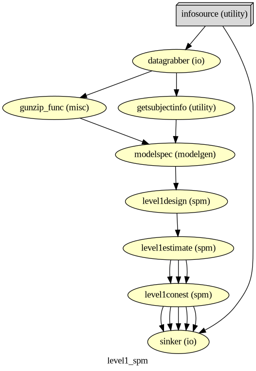
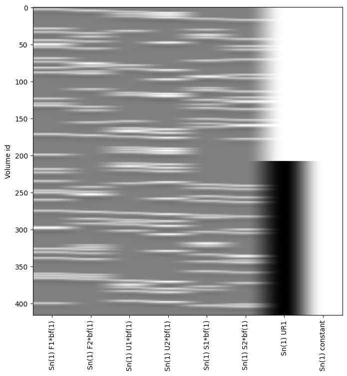

Nipype-SPM fMRI Analysis#
Subject and Group Level Analysis Workflows#
Author: Monika Doerig
Date: 13 June 2024
Citation and Resources:#
Tools included in this workflow#
Nipype:
Esteban, O., Markiewicz, C. J., Burns, C., Goncalves, M., Jarecka, D., Ziegler, E., Berleant, S., Ellis, D. G., Pinsard, B., Madison, C., Waskom, M., Notter, M. P., Clark, D., Manhães-Savio, A., Clark, D., Jordan, K., Dayan, M., Halchenko, Y. O., Loney, F., … Ghosh, S. (2025). nipy/nipype: 1.8.6 (1.8.6). Zenodo. https://doi.org/10.5281/zenodo.15054147
SPM12:
Friston, K. J. (2007). Statistical parametric mapping: The analysis of functional brain images (1st ed). Elsevier / Academic Press.
Dataset#
Wakeman, DG and Henson, RN (2021). Multisubject, multimodal face processing. OpenNeuro. [Dataset] doi: 10.18112/openneuro.ds000117.v1.0.5
Wakeman, D.G. & Henson, R.N. (2015). A multi-subject, multi-modal human neuroimaging dataset. Sci. Data 2:150001 doi: 10.1038/sdata.2015.1
Educational resources:#
Introduction#
The fMRI dataset used for this example is part of a multi-subject, multi-modal (sMRI, fMRI, MEG, EEG) neuroimaging dataset on face processing. It contains data in BIDS format on sixteen healthy volunteers. The data was recoreded while the volunteers performed multiple runs of hundreds of trials of a simple perceptual task on pictures of familiar, unfamiliar and scrambled faces during two visits to the laboratory.
The facial stimuli consisted of two groups of 300 greyscale photos, half of which were of famous people and half of which were of non-famous people (unknown to the participants). Each scrambled face was created either from the famous face or the non-famous face of the same stimulus number. Additionally, each image was presented twice to the participants. The second presentation occurred either immediately after the first presentation (Immediate Repeats) or after 5–15 intervening stimuli (Delayed Repeats), with 50% of each type of repeat. To ensure that each stimulus received equal attention, participants were instructed to use their left or right index finger to press one of two keys (assignment counter-balanced across participants). They determined the symmetry of each image by pressing a key based on whether they perceived it to be ‘more’ or ‘less symmetric’ than average.
In the original paper (Wakeman & Henson, 2015), the repetition manipulation was not distinguished, meaning that initial and repeated presentations were treated identically without considering the timing of the repeats.
To illustrate the setup of a 3x2 factorial design analysis (familiar vs. unfamiliar vs. scrambled faces) x (1st vs. 2nd presentation) in an SPM Nipype workflow, the event files will be adapted accordingly. Each stimulus type will be labeled as either the first or second presentation. However, for simplicity, no distinction is made between immediate and delayed repetitions, resulting in 6 stimulus types (conditions): Familiar-Rep1 (F1), Familiar-Rep2 (F2), Unfamiliar-Rep1 (U1), Unfamiliar-Rep2 (U2), Scrambled-Rep1 (S1), and Scrambled-Rep2 (S2).
Examples of a familiar, unfamiliar and scrambled face:
PATTERN_STIMULI = "stimuli/func/*001.bmp"
!datalad install https://github.com/OpenNeuroDatasets/ds000117.git
!cd ds000117 && git checkout 1.0.5 && datalad get $PATTERN_STIMULI
Cloning: 0%| | 0.00/2.00 [00:00<?, ? candidates/s]
Enumerating: 0.00 Objects [00:00, ? Objects/s]
Counting: 0%| | 0.00/39.9k [00:00<?, ? Objects/s]
Compressing: 0%| | 0.00/22.2k [00:00<?, ? Objects/s]
Compressing: 70%|█████████████▎ | 15.5k/22.2k [00:00<00:00, 154k Objects/s]
Receiving: 0%| | 0.00/61.8k [00:00<?, ? Objects/s]
Receiving: 13%|██▌ | 8.03k/61.8k [00:00<00:00, 73.0k Objects/s]
Receiving: 45%|█████████▍ | 27.8k/61.8k [00:00<00:00, 138k Objects/s]
Receiving: 85%|█████████████████▊ | 52.5k/61.8k [00:00<00:00, 185k Objects/s]
Resolving: 0%| | 0.00/16.5k [00:00<?, ? Deltas/s]
Resolving: 10%|██ | 1.65k/16.5k [00:00<00:00, 16.0k Deltas/s]
Resolving: 41%|████████▌ | 6.77k/16.5k [00:00<00:00, 34.8k Deltas/s]
Resolving: 73%|███████████████▎ | 12.0k/16.5k [00:00<00:00, 42.7k Deltas/s]
[INFO ] Remote origin not usable by git-annex; setting annex-ignore
[INFO ] https://github.com/OpenNeuroDatasets/ds000117.git/config download failed: Not Found
install(ok): /home/jovyan/workspace/books/examples/functional_imaging/ds000117 (dataset)
Note: switching to '1.0.5'.
You are in 'detached HEAD' state. You can look around, make experimental
changes and commit them, and you can discard any commits you make in this
state without impacting any branches by switching back to a branch.
If you want to create a new branch to retain commits you create, you may
do so (now or later) by using -c with the switch command. Example:
git switch -c <new-branch-name>
Or undo this operation with:
git switch -
Turn off this advice by setting config variable advice.detachedHead to false
HEAD is now at 12470d39 [OpenNeuro] Recorded changes
Total: 0%| | 0.00/131k [00:00<?, ? Bytes/s]
Get stimuli/ .. nc/ps001.bmp: 0%| | 0.00/21.8k [00:00<?, ? Bytes/s]
Get stimuli/ .. nc/ps001.bmp: 0%| | 0.00/21.8k [00:00<?, ? Bytes/s]
Total: 17%|████▌ | 21.8k/131k [00:01<00:06, 17.0k Bytes/s]
Get stimuli/func/f001.bmp: 0%| | 0.00/21.8k [00:00<?, ? Bytes/s]
Get stimuli/func/f001.bmp: 0%| | 0.00/21.8k [00:00<?, ? Bytes/s]
Total: 33%|█████████ | 43.6k/131k [00:01<00:03, 28.0k Bytes/s]
Get stimuli/func/s001.bmp: 0%| | 0.00/21.8k [00:00<?, ? Bytes/s]
Get stimuli/func/s001.bmp: 0%| | 0.00/21.8k [00:00<?, ? Bytes/s]
Total: 50%|█████████████▌ | 65.4k/131k [00:01<00:01, 34.4k Bytes/s]
Get stimuli/func/u001.bmp: 0%| | 0.00/21.8k [00:00<?, ? Bytes/s]
Get stimuli/func/u001.bmp: 0%| | 0.00/21.8k [00:00<?, ? Bytes/s]
Total: 67%|██████████████████ | 87.3k/131k [00:02<00:01, 40.3k Bytes/s]
Get stimuli/ .. nc/pf001.bmp: 0%| | 0.00/21.8k [00:00<?, ? Bytes/s]
Get stimuli/ .. nc/pf001.bmp: 0%| | 0.00/21.8k [00:00<?, ? Bytes/s]
Total: 83%|███████████████████████▎ | 109k/131k [00:02<00:00, 44.7k Bytes/s]
Get stimuli/ .. nc/pu001.bmp: 0%| | 0.00/21.8k [00:00<?, ? Bytes/s]
Get stimuli/ .. nc/pu001.bmp: 0%| | 0.00/21.8k [00:00<?, ? Bytes/s]
get(ok): stimuli/func/ps001.bmp (file) [from s3-PUBLIC...]
get(ok): stimuli/func/f001.bmp (file) [from s3-PUBLIC...]
get(ok): stimuli/func/s001.bmp (file) [from s3-PUBLIC...]
get(ok): stimuli/func/u001.bmp (file) [from s3-PUBLIC...]
get(ok): stimuli/func/pf001.bmp (file) [from s3-PUBLIC...]
get(ok): stimuli/func/pu001.bmp (file) [from s3-PUBLIC...]
action summary:
get (ok: 6)
import matplotlib.pyplot as plt
from matplotlib.image import imread
# Load the .bmp images
familiar = imread('ds000117/stimuli/func/f001.bmp')
unfamiliar = imread('ds000117/stimuli/func/u001.bmp')
scrambled = imread('ds000117/stimuli/func/s001.bmp')
# Create a Matplotlib figure with subplots
fig, axes = plt.subplots(1, 3, figsize=(12, 4))
# Plot each image on a subplot
axes[0].imshow(familiar, cmap='gray')
axes[0].set_title('Familiar face')
axes[0].axis('off')
axes[1].imshow(unfamiliar, cmap='gray')
axes[1].set_title('Unfamiliar face')
axes[1].axis('off')
axes[2].imshow(scrambled, cmap='gray')
axes[2].set_title('Scrambled face')
axes[2].axis('off')
plt.tight_layout()
plt.show()

Download Data and install Python modules#
# get func data of the mri session of 9 individuals
PATTERN = "sub-0*/ses-mri/func"
!datalad install https://github.com/OpenNeuroDatasets/ds000117.git
!cd ds000117 && git checkout 1.0.5 && datalad get $PATTERN
install(error): /home/jovyan/workspace/books/examples/functional_imaging/ds000117 (dataset) [target path already exists and not empty, refuse to clone into target path]
HEAD is now at 12470d39 [OpenNeuro] Recorded changes
Total: 0%| | 0.00/2.93G [00:00<?, ? Bytes/s]
Get sub-09/s .. _bold.nii.gz: 0%| | 0.00/36.0M [00:00<?, ? Bytes/s]
Get sub-09/s .. _bold.nii.gz: 0%| | 33.4k/36.0M [00:00<03:46, 159k Bytes/s]
Get sub-09/s .. _bold.nii.gz: 0%| | 85.6k/36.0M [00:00<03:22, 177k Bytes/s]
Get sub-09/s .. _bold.nii.gz: 0%| | 155k/36.0M [00:00<02:29, 239k Bytes/s]
Get sub-09/s .. _bold.nii.gz: 1%| | 277k/36.0M [00:00<01:38, 363k Bytes/s]
Get sub-09/s .. _bold.nii.gz: 1%| | 399k/36.0M [00:01<01:21, 436k Bytes/s]
Get sub-09/s .. _bold.nii.gz: 1%| | 538k/36.0M [00:01<01:10, 507k Bytes/s]
Get sub-09/s .. _bold.nii.gz: 2%| | 677k/36.0M [00:01<01:03, 560k Bytes/s]
Get sub-09/s .. _bold.nii.gz: 2%| | 834k/36.0M [00:01<00:57, 613k Bytes/s]
Get sub-09/s .. _bold.nii.gz: 3%|▏ | 991k/36.0M [00:01<00:53, 653k Bytes/s]
Get sub-09/s .. _bold.nii.gz: 3%|▏ | 1.15M/36.0M [00:02<00:51, 683k Bytes/s]
Get sub-09/s .. _bold.nii.gz: 4%|▏ | 1.32M/36.0M [00:02<00:47, 724k Bytes/s]
Get sub-09/s .. _bold.nii.gz: 4%|▏ | 1.50M/36.0M [00:02<00:45, 756k Bytes/s]
Get sub-09/s .. _bold.nii.gz: 5%|▏ | 1.69M/36.0M [00:02<00:42, 801k Bytes/s]
Get sub-09/s .. _bold.nii.gz: 5%|▏ | 1.88M/36.0M [00:03<00:40, 834k Bytes/s]
Get sub-09/s .. _bold.nii.gz: 6%|▏ | 2.09M/36.0M [00:03<00:38, 881k Bytes/s]
Get sub-09/s .. _bold.nii.gz: 6%|▎ | 2.31M/36.0M [00:03<00:36, 936k Bytes/s]
Get sub-09/s .. _bold.nii.gz: 7%|▎ | 2.54M/36.0M [00:03<00:34, 977k Bytes/s]
Get sub-09/s .. _bold.nii.gz: 8%|▏ | 2.78M/36.0M [00:03<00:32, 1.03M Bytes/s]
Get sub-09/s .. _bold.nii.gz: 8%|▎ | 3.03M/36.0M [00:04<00:30, 1.06M Bytes/s]
Get sub-09/s .. _bold.nii.gz: 9%|▎ | 3.31M/36.0M [00:04<00:28, 1.14M Bytes/s]
Get sub-09/s .. _bold.nii.gz: 10%|▎ | 3.58M/36.0M [00:04<00:27, 1.19M Bytes/s]
Get sub-09/s .. _bold.nii.gz: 11%|▎ | 3.86M/36.0M [00:04<00:26, 1.22M Bytes/s]
Get sub-09/s .. _bold.nii.gz: 12%|▎ | 4.18M/36.0M [00:04<00:24, 1.30M Bytes/s]
Get sub-09/s .. _bold.nii.gz: 13%|▍ | 4.51M/36.0M [00:05<00:22, 1.38M Bytes/s]
Get sub-09/s .. _bold.nii.gz: 13%|▍ | 4.84M/36.0M [00:05<00:21, 1.43M Bytes/s]
Get sub-09/s .. _bold.nii.gz: 14%|▍ | 5.19M/36.0M [00:05<00:18, 1.70M Bytes/s]
Get sub-09/s .. _bold.nii.gz: 15%|▍ | 5.57M/36.0M [00:05<00:20, 1.52M Bytes/s]
Get sub-09/s .. _bold.nii.gz: 17%|▍ | 5.95M/36.0M [00:05<00:17, 1.70M Bytes/s]
Get sub-09/s .. _bold.nii.gz: 18%|▌ | 6.35M/36.0M [00:06<00:14, 2.10M Bytes/s]
Get sub-09/s .. _bold.nii.gz: 19%|▌ | 6.81M/36.0M [00:06<00:17, 1.69M Bytes/s]
Get sub-09/s .. _bold.nii.gz: 20%|▌ | 7.26M/36.0M [00:06<00:15, 1.82M Bytes/s]
Get sub-09/s .. _bold.nii.gz: 21%|▋ | 7.73M/36.0M [00:06<00:14, 1.95M Bytes/s]
Get sub-09/s .. _bold.nii.gz: 23%|▋ | 8.23M/36.0M [00:07<00:13, 2.07M Bytes/s]
Get sub-09/s .. _bold.nii.gz: 24%|▋ | 8.75M/36.0M [00:07<00:12, 2.19M Bytes/s]
Get sub-09/s .. _bold.nii.gz: 26%|▊ | 9.31M/36.0M [00:07<00:11, 2.32M Bytes/s]
Get sub-09/s .. _bold.nii.gz: 27%|▊ | 9.89M/36.0M [00:07<00:10, 2.43M Bytes/s]
Get sub-09/s .. _bold.nii.gz: 29%|▊ | 10.5M/36.0M [00:07<00:09, 2.59M Bytes/s]
Get sub-09/s .. _bold.nii.gz: 31%|▉ | 11.1M/36.0M [00:08<00:09, 2.71M Bytes/s]
Get sub-09/s .. _bold.nii.gz: 33%|▉ | 11.8M/36.0M [00:08<00:08, 2.83M Bytes/s]
Get sub-09/s .. _bold.nii.gz: 35%|█ | 12.5M/36.0M [00:08<00:07, 3.29M Bytes/s]
Get sub-09/s .. _bold.nii.gz: 37%|█ | 13.3M/36.0M [00:08<00:07, 3.05M Bytes/s]
Get sub-09/s .. _bold.nii.gz: 39%|█▏ | 14.0M/36.0M [00:08<00:06, 3.24M Bytes/s]
Get sub-09/s .. _bold.nii.gz: 41%|█▏ | 14.8M/36.0M [00:09<00:06, 3.41M Bytes/s]
Get sub-09/s .. _bold.nii.gz: 44%|█▎ | 15.7M/36.0M [00:09<00:05, 3.61M Bytes/s]
Get sub-09/s .. _bold.nii.gz: 46%|█▍ | 16.6M/36.0M [00:09<00:05, 3.80M Bytes/s]
Get sub-09/s .. _bold.nii.gz: 49%|█▍ | 17.6M/36.0M [00:09<00:04, 4.00M Bytes/s]
Get sub-09/s .. _bold.nii.gz: 51%|█▌ | 18.5M/36.0M [00:09<00:03, 4.52M Bytes/s]
Get sub-09/s .. _bold.nii.gz: 54%|█▋ | 19.6M/36.0M [00:10<00:03, 4.34M Bytes/s]
Get sub-09/s .. _bold.nii.gz: 57%|█▋ | 20.7M/36.0M [00:10<00:03, 3.93M Bytes/s]
Get sub-09/s .. _bold.nii.gz: 60%|█▊ | 21.8M/36.0M [00:10<00:02, 4.89M Bytes/s]
Get sub-09/s .. _bold.nii.gz: 62%|█▊ | 22.5M/36.0M [00:10<00:03, 4.50M Bytes/s]
Get sub-09/s .. _bold.nii.gz: 65%|█▉ | 23.3M/36.0M [00:11<00:02, 4.28M Bytes/s]
Get sub-09/s .. _bold.nii.gz: 67%|██ | 24.1M/36.0M [00:11<00:02, 4.16M Bytes/s]
Get sub-09/s .. _bold.nii.gz: 69%|██ | 25.0M/36.0M [00:11<00:02, 4.33M Bytes/s]
Get sub-09/s .. _bold.nii.gz: 71%|██ | 25.5M/36.0M [00:11<00:02, 4.52M Bytes/s]
Get sub-09/s .. _bold.nii.gz: 72%|██▏| 26.1M/36.0M [00:11<00:03, 3.02M Bytes/s]
Get sub-09/s .. _bold.nii.gz: 77%|██▎| 27.6M/36.0M [00:12<00:02, 3.19M Bytes/s]
Get sub-09/s .. _bold.nii.gz: 80%|██▍| 28.7M/36.0M [00:12<00:01, 3.90M Bytes/s]
Get sub-09/s .. _bold.nii.gz: 82%|██▍| 29.6M/36.0M [00:12<00:01, 3.23M Bytes/s]
Get sub-09/s .. _bold.nii.gz: 84%|██▌| 30.1M/36.0M [00:13<00:02, 2.92M Bytes/s]
Get sub-09/s .. _bold.nii.gz: 85%|██▌| 30.6M/36.0M [00:13<00:01, 2.75M Bytes/s]
Get sub-09/s .. _bold.nii.gz: 86%|██▌| 31.1M/36.0M [00:13<00:01, 2.63M Bytes/s]
Get sub-09/s .. _bold.nii.gz: 88%|██▋| 31.5M/36.0M [00:13<00:01, 2.54M Bytes/s]
Get sub-09/s .. _bold.nii.gz: 89%|██▋| 32.0M/36.0M [00:13<00:01, 2.84M Bytes/s]
Get sub-09/s .. _bold.nii.gz: 90%|██▋| 32.5M/36.0M [00:14<00:01, 2.70M Bytes/s]
Get sub-09/s .. _bold.nii.gz: 92%|██▋| 33.0M/36.0M [00:14<00:01, 2.58M Bytes/s]
Get sub-09/s .. _bold.nii.gz: 93%|██▊| 33.4M/36.0M [00:14<00:01, 1.56M Bytes/s]
Get sub-09/s .. _bold.nii.gz: 94%|██▊| 33.8M/36.0M [00:15<00:01, 1.87M Bytes/s]
Get sub-09/s .. _bold.nii.gz: 96%|██▊| 34.4M/36.0M [00:15<00:00, 2.43M Bytes/s]
Get sub-09/s .. _bold.nii.gz: 97%|██▉| 35.1M/36.0M [00:15<00:00, 2.39M Bytes/s]
Get sub-09/s .. _bold.nii.gz: 98%|██▉| 35.5M/36.0M [00:15<00:00, 2.22M Bytes/s]
Get sub-09/s .. _bold.nii.gz: 99%|██▉| 35.8M/36.0M [00:15<00:00, 2.10M Bytes/s]
Get sub-09/s .. _bold.nii.gz: 0%| | 0.00/36.0M [00:00<?, ? Bytes/s]
Total: 1%|▎ | 36.0M/2.93G [00:17<23:25, 2.06M Bytes/s]
Get sub-09/s .. _bold.nii.gz: 0%| | 0.00/36.1M [00:00<?, ? Bytes/s]
Get sub-09/s .. _bold.nii.gz: 1%| | 399k/36.1M [00:00<00:18, 1.90M Bytes/s]
Get sub-09/s .. _bold.nii.gz: 2%| | 810k/36.1M [00:00<00:18, 1.92M Bytes/s]
Get sub-09/s .. _bold.nii.gz: 3%| | 1.21M/36.1M [00:00<00:18, 1.91M Bytes/s]
Get sub-09/s .. _bold.nii.gz: 4%|▏ | 1.62M/36.1M [00:00<00:18, 1.91M Bytes/s]
Get sub-09/s .. _bold.nii.gz: 6%|▏ | 2.03M/36.1M [00:01<00:17, 1.93M Bytes/s]
Get sub-09/s .. _bold.nii.gz: 7%|▏ | 2.45M/36.1M [00:01<00:17, 1.94M Bytes/s]
Get sub-09/s .. _bold.nii.gz: 8%|▏ | 2.87M/36.1M [00:01<00:17, 1.95M Bytes/s]
Get sub-09/s .. _bold.nii.gz: 9%|▎ | 3.29M/36.1M [00:01<00:16, 1.96M Bytes/s]
Get sub-09/s .. _bold.nii.gz: 10%|▎ | 3.72M/36.1M [00:01<00:16, 1.98M Bytes/s]
Get sub-09/s .. _bold.nii.gz: 11%|▎ | 4.14M/36.1M [00:02<00:15, 2.12M Bytes/s]
Get sub-09/s .. _bold.nii.gz: 13%|▍ | 4.54M/36.1M [00:02<00:13, 2.42M Bytes/s]
Get sub-09/s .. _bold.nii.gz: 14%|▍ | 5.01M/36.1M [00:02<00:16, 1.88M Bytes/s]
Get sub-09/s .. _bold.nii.gz: 15%|▍ | 5.44M/36.1M [00:02<00:15, 1.93M Bytes/s]
Get sub-09/s .. _bold.nii.gz: 16%|▍ | 5.88M/36.1M [00:02<00:15, 1.97M Bytes/s]
Get sub-09/s .. _bold.nii.gz: 17%|▌ | 6.32M/36.1M [00:03<00:14, 1.99M Bytes/s]
Get sub-09/s .. _bold.nii.gz: 19%|▌ | 6.75M/36.1M [00:03<00:14, 2.01M Bytes/s]
Get sub-09/s .. _bold.nii.gz: 20%|▌ | 7.19M/36.1M [00:03<00:14, 2.03M Bytes/s]
Get sub-09/s .. _bold.nii.gz: 21%|▋ | 7.62M/36.1M [00:03<00:13, 2.03M Bytes/s]
Get sub-09/s .. _bold.nii.gz: 22%|▋ | 8.06M/36.1M [00:04<00:13, 2.04M Bytes/s]
Get sub-09/s .. _bold.nii.gz: 24%|▋ | 8.49M/36.1M [00:04<00:13, 2.04M Bytes/s]
Get sub-09/s .. _bold.nii.gz: 25%|▋ | 8.93M/36.1M [00:04<00:13, 2.07M Bytes/s]
Get sub-09/s .. _bold.nii.gz: 26%|▊ | 9.36M/36.1M [00:04<00:12, 2.06M Bytes/s]
Get sub-09/s .. _bold.nii.gz: 27%|▊ | 9.80M/36.1M [00:04<00:12, 2.06M Bytes/s]
Get sub-09/s .. _bold.nii.gz: 28%|▊ | 10.2M/36.1M [00:05<00:12, 2.06M Bytes/s]
Get sub-09/s .. _bold.nii.gz: 30%|▉ | 10.7M/36.1M [00:05<00:12, 2.05M Bytes/s]
Get sub-09/s .. _bold.nii.gz: 31%|▉ | 11.1M/36.1M [00:05<00:12, 2.05M Bytes/s]
Get sub-09/s .. _bold.nii.gz: 32%|▉ | 11.5M/36.1M [00:05<00:11, 2.06M Bytes/s]
Get sub-09/s .. _bold.nii.gz: 33%|▉ | 12.0M/36.1M [00:05<00:11, 2.07M Bytes/s]
Get sub-09/s .. _bold.nii.gz: 34%|█ | 12.4M/36.1M [00:06<00:10, 2.19M Bytes/s]
Get sub-09/s .. _bold.nii.gz: 35%|█ | 12.7M/36.1M [00:06<00:10, 2.26M Bytes/s]
Get sub-09/s .. _bold.nii.gz: 37%|█ | 13.3M/36.1M [00:06<00:11, 2.01M Bytes/s]
Get sub-09/s .. _bold.nii.gz: 38%|█▏ | 13.7M/36.1M [00:06<00:10, 2.13M Bytes/s]
Get sub-09/s .. _bold.nii.gz: 39%|█▏ | 14.0M/36.1M [00:06<00:09, 2.24M Bytes/s]
Get sub-09/s .. _bold.nii.gz: 41%|█▏ | 14.6M/36.1M [00:07<00:10, 2.11M Bytes/s]
Get sub-09/s .. _bold.nii.gz: 41%|█▏ | 14.9M/36.1M [00:07<00:09, 2.16M Bytes/s]
Get sub-09/s .. _bold.nii.gz: 42%|█▎ | 15.3M/36.1M [00:07<00:09, 2.17M Bytes/s]
Get sub-09/s .. _bold.nii.gz: 44%|█▎ | 15.8M/36.1M [00:07<00:09, 2.14M Bytes/s]
Get sub-09/s .. _bold.nii.gz: 44%|█▎ | 16.0M/36.1M [00:07<00:09, 2.11M Bytes/s]
Get sub-09/s .. _bold.nii.gz: 45%|█▎ | 16.2M/36.1M [00:07<00:09, 2.16M Bytes/s]
Get sub-09/s .. _bold.nii.gz: 46%|█▍ | 16.7M/36.1M [00:08<00:08, 2.18M Bytes/s]
Get sub-09/s .. _bold.nii.gz: 47%|█▍ | 16.9M/36.1M [00:08<00:08, 2.14M Bytes/s]
Get sub-09/s .. _bold.nii.gz: 48%|█▍ | 17.2M/36.1M [00:08<00:08, 2.21M Bytes/s]
Get sub-09/s .. _bold.nii.gz: 48%|█▍ | 17.4M/36.1M [00:08<00:08, 2.17M Bytes/s]
Get sub-09/s .. _bold.nii.gz: 50%|█▍ | 17.9M/36.1M [00:08<00:08, 2.21M Bytes/s]
Get sub-09/s .. _bold.nii.gz: 50%|█▌ | 18.1M/36.1M [00:08<00:08, 2.21M Bytes/s]
Get sub-09/s .. _bold.nii.gz: 51%|█▌ | 18.4M/36.1M [00:08<00:08, 2.20M Bytes/s]
Get sub-09/s .. _bold.nii.gz: 52%|█▌ | 18.6M/36.1M [00:08<00:07, 2.29M Bytes/s]
Get sub-09/s .. _bold.nii.gz: 53%|█▌ | 19.1M/36.1M [00:09<00:07, 2.25M Bytes/s]
Get sub-09/s .. _bold.nii.gz: 54%|█▌ | 19.4M/36.1M [00:09<00:07, 2.30M Bytes/s]
Get sub-09/s .. _bold.nii.gz: 54%|█▋ | 19.6M/36.1M [00:09<00:06, 2.37M Bytes/s]
Get sub-09/s .. _bold.nii.gz: 55%|█▋ | 19.9M/36.1M [00:09<00:06, 2.35M Bytes/s]
Get sub-09/s .. _bold.nii.gz: 56%|█▋ | 20.2M/36.1M [00:09<00:06, 2.45M Bytes/s]
Get sub-09/s .. _bold.nii.gz: 57%|█▋ | 20.7M/36.1M [00:09<00:06, 2.48M Bytes/s]
Get sub-09/s .. _bold.nii.gz: 59%|█▊ | 21.2M/36.1M [00:10<00:06, 2.48M Bytes/s]
Get sub-09/s .. _bold.nii.gz: 59%|█▊ | 21.5M/36.1M [00:10<00:05, 2.46M Bytes/s]
Get sub-09/s .. _bold.nii.gz: 60%|█▊ | 21.7M/36.1M [00:10<00:05, 2.53M Bytes/s]
Get sub-09/s .. _bold.nii.gz: 61%|█▊ | 22.0M/36.1M [00:10<00:05, 2.53M Bytes/s]
Get sub-09/s .. _bold.nii.gz: 62%|█▊ | 22.3M/36.1M [00:10<00:05, 2.62M Bytes/s]
Get sub-09/s .. _bold.nii.gz: 63%|█▉ | 22.6M/36.1M [00:10<00:05, 2.59M Bytes/s]
Get sub-09/s .. _bold.nii.gz: 63%|█▉ | 22.9M/36.1M [00:10<00:04, 2.67M Bytes/s]
Get sub-09/s .. _bold.nii.gz: 64%|█▉ | 23.2M/36.1M [00:10<00:04, 2.64M Bytes/s]
Get sub-09/s .. _bold.nii.gz: 65%|█▉ | 23.5M/36.1M [00:10<00:04, 2.78M Bytes/s]
Get sub-09/s .. _bold.nii.gz: 67%|██ | 24.1M/36.1M [00:11<00:04, 2.82M Bytes/s]
Get sub-09/s .. _bold.nii.gz: 69%|██ | 24.7M/36.1M [00:11<00:03, 2.89M Bytes/s]
Get sub-09/s .. _bold.nii.gz: 69%|██ | 25.0M/36.1M [00:11<00:03, 2.87M Bytes/s]
Get sub-09/s .. _bold.nii.gz: 70%|██ | 25.4M/36.1M [00:11<00:03, 2.97M Bytes/s]
Get sub-09/s .. _bold.nii.gz: 72%|██▏| 26.1M/36.1M [00:11<00:03, 3.04M Bytes/s]
Get sub-09/s .. _bold.nii.gz: 73%|██▏| 26.4M/36.1M [00:11<00:03, 3.02M Bytes/s]
Get sub-09/s .. _bold.nii.gz: 74%|██▏| 26.8M/36.1M [00:11<00:02, 3.16M Bytes/s]
Get sub-09/s .. _bold.nii.gz: 76%|██▎| 27.5M/36.1M [00:12<00:02, 3.23M Bytes/s]
Total: 1%|▎ | 36.0M/2.93G [00:30<40:13, 1.20M Bytes/s]
Get sub-09/s .. _bold.nii.gz: 77%|██▎| 27.8M/36.1M [00:12<00:02, 3.20M Bytes/s]
Get sub-09/s .. _bold.nii.gz: 78%|██▎| 28.2M/36.1M [00:12<00:02, 3.32M Bytes/s]
Get sub-09/s .. _bold.nii.gz: 79%|██▎| 28.5M/36.1M [00:12<00:02, 3.28M Bytes/s]
Get sub-09/s .. _bold.nii.gz: 80%|██▍| 28.9M/36.1M [00:12<00:02, 3.46M Bytes/s]
Get sub-09/s .. _bold.nii.gz: 82%|██▍| 29.7M/36.1M [00:12<00:01, 3.57M Bytes/s]
Get sub-09/s .. _bold.nii.gz: 83%|██▍| 30.1M/36.1M [00:12<00:01, 3.51M Bytes/s]
Get sub-09/s .. _bold.nii.gz: 85%|██▌| 30.5M/36.1M [00:12<00:01, 3.71M Bytes/s]
Get sub-09/s .. _bold.nii.gz: 87%|██▌| 31.4M/36.1M [00:13<00:01, 3.82M Bytes/s]
Get sub-09/s .. _bold.nii.gz: 89%|██▋| 32.2M/36.1M [00:13<00:00, 3.92M Bytes/s]
Get sub-09/s .. _bold.nii.gz: 90%|██▋| 32.6M/36.1M [00:13<00:00, 3.85M Bytes/s]
Get sub-09/s .. _bold.nii.gz: 92%|██▊| 33.1M/36.1M [00:13<00:00, 4.09M Bytes/s]
Get sub-09/s .. _bold.nii.gz: 94%|██▊| 34.0M/36.1M [00:13<00:00, 4.20M Bytes/s]
Get sub-09/s .. _bold.nii.gz: 96%|██▉| 34.7M/36.1M [00:14<00:00, 2.96M Bytes/s]
Get sub-09/s .. _bold.nii.gz: 0%| | 0.00/36.1M [00:00<?, ? Bytes/s]
Total: 2%|▋ | 72.1M/2.93G [00:32<21:21, 2.23M Bytes/s]
Get sub-09/s .. _bold.nii.gz: 0%| | 0.00/36.2M [00:00<?, ? Bytes/s]
Get sub-09/s .. _bold.nii.gz: 0%| | 159k/36.2M [00:00<01:35, 377k Bytes/s]
Get sub-09/s .. _bold.nii.gz: 5%|▏ | 1.83M/36.2M [00:00<00:09, 3.56M Bytes/s]
Get sub-09/s .. _bold.nii.gz: 8%|▏ | 2.85M/36.2M [00:01<00:11, 2.89M Bytes/s]
Get sub-09/s .. _bold.nii.gz: 10%|▎ | 3.56M/36.2M [00:01<00:13, 2.35M Bytes/s]
Get sub-09/s .. _bold.nii.gz: 11%|▎ | 3.91M/36.2M [00:01<00:13, 2.36M Bytes/s]
Get sub-09/s .. _bold.nii.gz: 12%|▎ | 4.30M/36.2M [00:01<00:15, 2.06M Bytes/s]
Get sub-09/s .. _bold.nii.gz: 13%|▍ | 4.69M/36.2M [00:02<00:15, 2.00M Bytes/s]
Get sub-09/s .. _bold.nii.gz: 14%|▍ | 5.09M/36.2M [00:02<00:15, 1.96M Bytes/s]
Get sub-09/s .. _bold.nii.gz: 15%|▍ | 5.48M/36.2M [00:02<00:15, 1.93M Bytes/s]
Get sub-09/s .. _bold.nii.gz: 16%|▍ | 5.87M/36.2M [00:02<00:14, 2.09M Bytes/s]
Get sub-09/s .. _bold.nii.gz: 17%|▌ | 6.12M/36.2M [00:02<00:14, 2.12M Bytes/s]
Get sub-09/s .. _bold.nii.gz: 18%|▌ | 6.68M/36.2M [00:03<00:15, 1.94M Bytes/s]
Get sub-09/s .. _bold.nii.gz: 19%|▌ | 6.96M/36.2M [00:03<00:14, 2.07M Bytes/s]
Get sub-09/s .. _bold.nii.gz: 21%|▋ | 7.56M/36.2M [00:03<00:20, 1.40M Bytes/s]
Get sub-09/s .. _bold.nii.gz: 23%|▋ | 8.22M/36.2M [00:04<00:14, 1.87M Bytes/s]
Get sub-09/s .. _bold.nii.gz: 23%|▋ | 8.50M/36.2M [00:04<00:15, 1.75M Bytes/s]
Get sub-09/s .. _bold.nii.gz: 24%|▋ | 8.81M/36.2M [00:04<00:16, 1.66M Bytes/s]
Get sub-09/s .. _bold.nii.gz: 25%|▊ | 9.10M/36.2M [00:04<00:16, 1.66M Bytes/s]
Get sub-09/s .. _bold.nii.gz: 26%|▊ | 9.43M/36.2M [00:04<00:17, 1.53M Bytes/s]
Get sub-09/s .. _bold.nii.gz: 27%|▊ | 9.74M/36.2M [00:05<00:15, 1.68M Bytes/s]
Get sub-09/s .. _bold.nii.gz: 28%|▊ | 10.1M/36.2M [00:05<00:15, 1.65M Bytes/s]
Get sub-09/s .. _bold.nii.gz: 29%|▊ | 10.4M/36.2M [00:05<00:17, 1.48M Bytes/s]
Get sub-09/s .. _bold.nii.gz: 30%|▉ | 10.7M/36.2M [00:05<00:14, 1.70M Bytes/s]
Get sub-09/s .. _bold.nii.gz: 31%|▉ | 11.1M/36.2M [00:05<00:16, 1.49M Bytes/s]
Get sub-09/s .. _bold.nii.gz: 32%|▉ | 11.4M/36.2M [00:06<00:16, 1.54M Bytes/s]
Get sub-09/s .. _bold.nii.gz: 33%|▉ | 11.8M/36.2M [00:06<00:15, 1.55M Bytes/s]
Get sub-09/s .. _bold.nii.gz: 34%|█ | 12.1M/36.2M [00:06<00:13, 1.74M Bytes/s]
Get sub-09/s .. _bold.nii.gz: 34%|█ | 12.3M/36.2M [00:06<00:13, 1.77M Bytes/s]
Get sub-09/s .. _bold.nii.gz: 35%|█ | 12.8M/36.2M [00:06<00:15, 1.54M Bytes/s]
Get sub-09/s .. _bold.nii.gz: 36%|█ | 13.1M/36.2M [00:07<00:13, 1.71M Bytes/s]
Get sub-09/s .. _bold.nii.gz: 37%|█ | 13.5M/36.2M [00:07<00:13, 1.62M Bytes/s]
Get sub-09/s .. _bold.nii.gz: 38%|█▏ | 13.9M/36.2M [00:07<00:12, 1.73M Bytes/s]
Get sub-09/s .. _bold.nii.gz: 39%|█▏ | 14.2M/36.2M [00:07<00:12, 1.72M Bytes/s]
Get sub-09/s .. _bold.nii.gz: 40%|█▏ | 14.6M/36.2M [00:08<00:13, 1.61M Bytes/s]
Get sub-09/s .. _bold.nii.gz: 41%|█▏ | 14.9M/36.2M [00:08<00:11, 1.84M Bytes/s]
Get sub-09/s .. _bold.nii.gz: 42%|█▎ | 15.3M/36.2M [00:08<00:13, 1.58M Bytes/s]
Get sub-09/s .. _bold.nii.gz: 43%|█▎ | 15.6M/36.2M [00:08<00:11, 1.83M Bytes/s]
Get sub-09/s .. _bold.nii.gz: 44%|█▎ | 16.0M/36.2M [00:08<00:12, 1.67M Bytes/s]
Get sub-09/s .. _bold.nii.gz: 45%|█▎ | 16.4M/36.2M [00:09<00:12, 1.58M Bytes/s]
Get sub-09/s .. _bold.nii.gz: 46%|█▍ | 16.7M/36.2M [00:09<00:11, 1.71M Bytes/s]
Get sub-09/s .. _bold.nii.gz: 47%|█▍ | 17.1M/36.2M [00:09<00:11, 1.70M Bytes/s]
Get sub-09/s .. _bold.nii.gz: 48%|█▍ | 17.4M/36.2M [00:09<00:11, 1.60M Bytes/s]
Get sub-09/s .. _bold.nii.gz: 49%|█▍ | 17.8M/36.2M [00:09<00:10, 1.72M Bytes/s]
Get sub-09/s .. _bold.nii.gz: 50%|█▌ | 18.1M/36.2M [00:10<00:10, 1.71M Bytes/s]
Get sub-09/s .. _bold.nii.gz: 51%|█▌ | 18.5M/36.2M [00:10<00:11, 1.60M Bytes/s]
Get sub-09/s .. _bold.nii.gz: 52%|█▌ | 18.8M/36.2M [00:10<00:09, 1.83M Bytes/s]
Get sub-09/s .. _bold.nii.gz: 53%|█▌ | 19.2M/36.2M [00:10<00:10, 1.69M Bytes/s]
Get sub-09/s .. _bold.nii.gz: 54%|█▌ | 19.6M/36.2M [00:10<00:09, 1.68M Bytes/s]
Get sub-09/s .. _bold.nii.gz: 55%|█▋ | 19.9M/36.2M [00:11<00:09, 1.68M Bytes/s]
Get sub-09/s .. _bold.nii.gz: 56%|█▋ | 20.3M/36.2M [00:11<00:09, 1.59M Bytes/s]
Get sub-09/s .. _bold.nii.gz: 57%|█▋ | 20.7M/36.2M [00:11<00:08, 1.74M Bytes/s]
Get sub-09/s .. _bold.nii.gz: 58%|█▋ | 21.0M/36.2M [00:11<00:08, 1.74M Bytes/s]
Get sub-09/s .. _bold.nii.gz: 59%|█▊ | 21.4M/36.2M [00:12<00:08, 1.75M Bytes/s]
Get sub-09/s .. _bold.nii.gz: 60%|█▊ | 21.8M/36.2M [00:12<00:08, 1.76M Bytes/s]
Get sub-09/s .. _bold.nii.gz: 61%|█▊ | 22.1M/36.2M [00:12<00:07, 1.77M Bytes/s]
Get sub-09/s .. _bold.nii.gz: 62%|█▊ | 22.5M/36.2M [00:12<00:07, 1.74M Bytes/s]
Get sub-09/s .. _bold.nii.gz: 63%|█▉ | 22.7M/36.2M [00:12<00:07, 1.77M Bytes/s]
Get sub-09/s .. _bold.nii.gz: 63%|█▉ | 22.9M/36.2M [00:12<00:07, 1.71M Bytes/s]
Get sub-09/s .. _bold.nii.gz: 64%|█▉ | 23.3M/36.2M [00:13<00:06, 2.09M Bytes/s]
Get sub-09/s .. _bold.nii.gz: 66%|█▉ | 23.7M/36.2M [00:13<00:06, 1.83M Bytes/s]
Get sub-09/s .. _bold.nii.gz: 67%|██ | 24.1M/36.2M [00:13<00:06, 1.87M Bytes/s]
Get sub-09/s .. _bold.nii.gz: 68%|██ | 24.6M/36.2M [00:13<00:06, 1.91M Bytes/s]
Get sub-09/s .. _bold.nii.gz: 69%|██ | 25.0M/36.2M [00:13<00:05, 1.94M Bytes/s]
Get sub-09/s .. _bold.nii.gz: 70%|██ | 25.4M/36.2M [00:14<00:05, 1.97M Bytes/s]
Get sub-09/s .. _bold.nii.gz: 72%|██▏| 25.9M/36.2M [00:14<00:05, 2.02M Bytes/s]
Get sub-09/s .. _bold.nii.gz: 73%|██▏| 26.3M/36.2M [00:14<00:04, 2.07M Bytes/s]
Get sub-09/s .. _bold.nii.gz: 74%|██▏| 26.8M/36.2M [00:14<00:04, 2.11M Bytes/s]
Get sub-09/s .. _bold.nii.gz: 75%|██▎| 27.3M/36.2M [00:14<00:04, 2.17M Bytes/s]
Get sub-09/s .. _bold.nii.gz: 78%|██▎| 28.2M/36.2M [00:15<00:03, 2.09M Bytes/s]
Get sub-09/s .. _bold.nii.gz: 79%|██▎| 28.6M/36.2M [00:15<00:03, 2.09M Bytes/s]
Get sub-09/s .. _bold.nii.gz: 80%|██▍| 28.9M/36.2M [00:15<00:03, 1.99M Bytes/s]
Get sub-09/s .. _bold.nii.gz: 81%|██▍| 29.3M/36.2M [00:16<00:03, 1.94M Bytes/s]
Get sub-09/s .. _bold.nii.gz: 82%|██▍| 29.7M/36.2M [00:16<00:03, 1.92M Bytes/s]
Get sub-09/s .. _bold.nii.gz: 83%|██▍| 30.1M/36.2M [00:16<00:03, 1.81M Bytes/s]
Get sub-09/s .. _bold.nii.gz: 84%|██▌| 30.5M/36.2M [00:16<00:02, 2.11M Bytes/s]
Get sub-09/s .. _bold.nii.gz: 86%|██▌| 31.0M/36.2M [00:16<00:02, 1.94M Bytes/s]
Get sub-09/s .. _bold.nii.gz: 87%|██▌| 31.4M/36.2M [00:17<00:02, 1.98M Bytes/s]
Total: 2%|▋ | 72.1M/2.93G [00:50<33:03, 1.44M Bytes/s]
Get sub-09/s .. _bold.nii.gz: 88%|██▋| 31.8M/36.2M [00:17<00:02, 1.90M Bytes/s]
Get sub-09/s .. _bold.nii.gz: 89%|██▋| 32.2M/36.2M [00:17<00:01, 2.17M Bytes/s]
Get sub-09/s .. _bold.nii.gz: 91%|██▋| 32.7M/36.2M [00:17<00:01, 2.08M Bytes/s]
Get sub-09/s .. _bold.nii.gz: 92%|██▊| 33.2M/36.2M [00:17<00:01, 2.12M Bytes/s]
Get sub-09/s .. _bold.nii.gz: 93%|██▊| 33.7M/36.2M [00:18<00:01, 2.14M Bytes/s]
Get sub-09/s .. _bold.nii.gz: 94%|██▊| 34.2M/36.2M [00:18<00:00, 2.13M Bytes/s]
Get sub-09/s .. _bold.nii.gz: 96%|██▊| 34.6M/36.2M [00:18<00:00, 2.15M Bytes/s]
Get sub-09/s .. _bold.nii.gz: 97%|██▉| 35.1M/36.2M [00:18<00:00, 2.20M Bytes/s]
Get sub-09/s .. _bold.nii.gz: 98%|██▉| 35.6M/36.2M [00:19<00:00, 2.22M Bytes/s]
Get sub-09/s .. _bold.nii.gz: 99%|██▉| 35.8M/36.2M [00:19<00:00, 2.21M Bytes/s]
Get sub-09/s .. _bold.nii.gz: 100%|██▉| 36.1M/36.2M [00:19<00:00, 2.26M Bytes/s]
Get sub-09/s .. _bold.nii.gz: 0%| | 0.00/36.2M [00:00<?, ? Bytes/s]
Total: 4%|▉ | 108M/2.93G [00:52<22:36, 2.08M Bytes/s]
Get sub-09/s .. _bold.nii.gz: 0%| | 0.00/36.2M [00:00<?, ? Bytes/s]
Get sub-09/s .. _bold.nii.gz: 1%| | 492k/36.2M [00:00<00:15, 2.34M Bytes/s]
Get sub-09/s .. _bold.nii.gz: 3%| | 986k/36.2M [00:00<00:15, 2.34M Bytes/s]
Get sub-09/s .. _bold.nii.gz: 4%| | 1.49M/36.2M [00:00<00:14, 2.34M Bytes/s]
Get sub-09/s .. _bold.nii.gz: 5%|▏ | 1.99M/36.2M [00:00<00:14, 2.35M Bytes/s]
Get sub-09/s .. _bold.nii.gz: 7%|▏ | 2.48M/36.2M [00:01<00:14, 2.35M Bytes/s]
Get sub-09/s .. _bold.nii.gz: 8%|▏ | 2.97M/36.2M [00:01<00:11, 2.83M Bytes/s]
Get sub-09/s .. _bold.nii.gz: 10%|▎ | 3.47M/36.2M [00:01<00:14, 2.22M Bytes/s]
Get sub-09/s .. _bold.nii.gz: 11%|▎ | 3.97M/36.2M [00:01<00:14, 2.27M Bytes/s]
Get sub-09/s .. _bold.nii.gz: 12%|▎ | 4.47M/36.2M [00:01<00:13, 2.30M Bytes/s]
Get sub-09/s .. _bold.nii.gz: 14%|▍ | 4.96M/36.2M [00:02<00:13, 2.28M Bytes/s]
Get sub-09/s .. _bold.nii.gz: 15%|▍ | 5.47M/36.2M [00:02<00:13, 2.32M Bytes/s]
Get sub-09/s .. _bold.nii.gz: 17%|▍ | 5.97M/36.2M [00:02<00:12, 2.34M Bytes/s]
Get sub-09/s .. _bold.nii.gz: 18%|▌ | 6.46M/36.2M [00:02<00:12, 2.33M Bytes/s]
Get sub-09/s .. _bold.nii.gz: 19%|▌ | 6.96M/36.2M [00:02<00:12, 2.34M Bytes/s]
Get sub-09/s .. _bold.nii.gz: 21%|▌ | 7.47M/36.2M [00:03<00:12, 2.35M Bytes/s]
Get sub-09/s .. _bold.nii.gz: 22%|▋ | 7.96M/36.2M [00:03<00:12, 2.34M Bytes/s]
Get sub-09/s .. _bold.nii.gz: 23%|▋ | 8.46M/36.2M [00:03<00:11, 2.35M Bytes/s]
Get sub-09/s .. _bold.nii.gz: 25%|▋ | 8.95M/36.2M [00:03<00:11, 2.34M Bytes/s]
Get sub-09/s .. _bold.nii.gz: 26%|▊ | 9.45M/36.2M [00:04<00:11, 2.35M Bytes/s]
Get sub-09/s .. _bold.nii.gz: 28%|▊ | 9.96M/36.2M [00:04<00:11, 2.35M Bytes/s]
Get sub-09/s .. _bold.nii.gz: 29%|▊ | 10.4M/36.2M [00:04<00:12, 2.03M Bytes/s]
Get sub-09/s .. _bold.nii.gz: 30%|▉ | 10.9M/36.2M [00:04<00:12, 2.09M Bytes/s]
Get sub-09/s .. _bold.nii.gz: 31%|▉ | 11.3M/36.2M [00:04<00:10, 2.35M Bytes/s]
Get sub-09/s .. _bold.nii.gz: 32%|▉ | 11.7M/36.2M [00:05<00:11, 2.13M Bytes/s]
Get sub-09/s .. _bold.nii.gz: 33%|▉ | 12.0M/36.2M [00:05<00:12, 2.01M Bytes/s]
Get sub-09/s .. _bold.nii.gz: 34%|█ | 12.4M/36.2M [00:05<00:12, 1.94M Bytes/s]
Get sub-09/s .. _bold.nii.gz: 35%|█ | 12.8M/36.2M [00:05<00:12, 1.91M Bytes/s]
Get sub-09/s .. _bold.nii.gz: 36%|█ | 13.2M/36.2M [00:05<00:10, 2.24M Bytes/s]
Get sub-09/s .. _bold.nii.gz: 38%|█▏ | 13.6M/36.2M [00:06<00:12, 1.84M Bytes/s]
Get sub-09/s .. _bold.nii.gz: 39%|█▏ | 14.0M/36.2M [00:06<00:09, 2.22M Bytes/s]
Get sub-09/s .. _bold.nii.gz: 40%|█▏ | 14.5M/36.2M [00:06<00:11, 1.86M Bytes/s]
Get sub-09/s .. _bold.nii.gz: 41%|█▏ | 14.9M/36.2M [00:06<00:11, 1.92M Bytes/s]
Get sub-09/s .. _bold.nii.gz: 42%|█▎ | 15.4M/36.2M [00:06<00:10, 1.99M Bytes/s]
Get sub-09/s .. _bold.nii.gz: 44%|█▎ | 15.8M/36.2M [00:07<00:08, 2.39M Bytes/s]
Get sub-09/s .. _bold.nii.gz: 45%|█▎ | 16.3M/36.2M [00:07<00:09, 2.00M Bytes/s]
Get sub-09/s .. _bold.nii.gz: 46%|█▍ | 16.8M/36.2M [00:07<00:09, 2.13M Bytes/s]
Get sub-09/s .. _bold.nii.gz: 48%|█▍ | 17.2M/36.2M [00:07<00:07, 2.46M Bytes/s]
Get sub-09/s .. _bold.nii.gz: 49%|█▍ | 17.7M/36.2M [00:08<00:08, 2.06M Bytes/s]
Get sub-09/s .. _bold.nii.gz: 50%|█▌ | 18.2M/36.2M [00:08<00:08, 2.13M Bytes/s]
Get sub-09/s .. _bold.nii.gz: 52%|█▌ | 18.7M/36.2M [00:08<00:08, 2.18M Bytes/s]
Get sub-09/s .. _bold.nii.gz: 53%|█▌ | 19.2M/36.2M [00:08<00:07, 2.19M Bytes/s]
Get sub-09/s .. _bold.nii.gz: 54%|█▋ | 19.7M/36.2M [00:08<00:06, 2.59M Bytes/s]
Get sub-09/s .. _bold.nii.gz: 56%|█▋ | 20.2M/36.2M [00:09<00:07, 2.17M Bytes/s]
Get sub-09/s .. _bold.nii.gz: 57%|█▋ | 20.7M/36.2M [00:09<00:06, 2.23M Bytes/s]
Get sub-09/s .. _bold.nii.gz: 59%|█▊ | 21.2M/36.2M [00:09<00:06, 2.49M Bytes/s]
Get sub-09/s .. _bold.nii.gz: 60%|█▊ | 21.7M/36.2M [00:09<00:06, 2.34M Bytes/s]
Get sub-09/s .. _bold.nii.gz: 61%|█▊ | 22.2M/36.2M [00:09<00:05, 2.62M Bytes/s]
Get sub-09/s .. _bold.nii.gz: 63%|█▉ | 22.7M/36.2M [00:10<00:05, 2.54M Bytes/s]
Get sub-09/s .. _bold.nii.gz: 64%|█▉ | 23.2M/36.2M [00:10<00:05, 2.49M Bytes/s]
Get sub-09/s .. _bold.nii.gz: 65%|█▉ | 23.7M/36.2M [00:10<00:05, 2.32M Bytes/s]
Get sub-09/s .. _bold.nii.gz: 67%|██ | 24.2M/36.2M [00:10<00:05, 2.23M Bytes/s]
Get sub-09/s .. _bold.nii.gz: 68%|██ | 24.6M/36.2M [00:10<00:04, 2.54M Bytes/s]
Get sub-09/s .. _bold.nii.gz: 69%|██ | 25.1M/36.2M [00:11<00:04, 2.52M Bytes/s]
Get sub-09/s .. _bold.nii.gz: 71%|██ | 25.6M/36.2M [00:11<00:04, 2.45M Bytes/s]
Get sub-09/s .. _bold.nii.gz: 72%|██▏| 26.1M/36.2M [00:11<00:04, 2.35M Bytes/s]
Get sub-09/s .. _bold.nii.gz: 73%|██▏| 26.5M/36.2M [00:11<00:05, 1.89M Bytes/s]
Get sub-09/s .. _bold.nii.gz: 75%|██▏| 27.0M/36.2M [00:12<00:04, 2.03M Bytes/s]
Get sub-09/s .. _bold.nii.gz: 76%|██▎| 27.4M/36.2M [00:12<00:04, 2.13M Bytes/s]
Get sub-09/s .. _bold.nii.gz: 77%|██▎| 27.8M/36.2M [00:12<00:04, 1.93M Bytes/s]
Get sub-09/s .. _bold.nii.gz: 77%|██▎| 28.0M/36.2M [00:12<00:05, 1.49M Bytes/s]
Get sub-09/s .. _bold.nii.gz: 79%|██▎| 28.5M/36.2M [00:12<00:04, 1.86M Bytes/s]
Get sub-09/s .. _bold.nii.gz: 79%|██▍| 28.8M/36.2M [00:13<00:04, 1.77M Bytes/s]
Get sub-09/s .. _bold.nii.gz: 81%|██▍| 29.5M/36.2M [00:13<00:05, 1.16M Bytes/s]
Get sub-09/s .. _bold.nii.gz: 82%|██▍| 29.8M/36.2M [00:14<00:04, 1.36M Bytes/s]
Get sub-09/s .. _bold.nii.gz: 83%|██▍| 30.2M/36.2M [00:14<00:05, 1.04M Bytes/s]
Get sub-09/s .. _bold.nii.gz: 84%|███▎| 30.5M/36.2M [00:15<00:06, 949k Bytes/s]
Get sub-09/s .. _bold.nii.gz: 85%|███▍| 30.6M/36.2M [00:15<00:06, 909k Bytes/s]
Get sub-09/s .. _bold.nii.gz: 85%|███▍| 30.8M/36.2M [00:15<00:05, 968k Bytes/s]
Get sub-09/s .. _bold.nii.gz: 86%|███▍| 31.0M/36.2M [00:15<00:06, 833k Bytes/s]
Get sub-09/s .. _bold.nii.gz: 86%|███▍| 31.1M/36.2M [00:15<00:05, 904k Bytes/s]
Get sub-09/s .. _bold.nii.gz: 86%|███▍| 31.3M/36.2M [00:16<00:05, 886k Bytes/s]
Get sub-09/s .. _bold.nii.gz: 87%|███▍| 31.5M/36.2M [00:16<00:05, 806k Bytes/s]
Get sub-09/s .. _bold.nii.gz: 87%|███▍| 31.6M/36.2M [00:16<00:05, 839k Bytes/s]
Get sub-09/s .. _bold.nii.gz: 88%|███▌| 31.7M/36.2M [00:16<00:05, 811k Bytes/s]
Get sub-09/s .. _bold.nii.gz: 88%|███▌| 32.0M/36.2M [00:16<00:04, 857k Bytes/s]
Get sub-09/s .. _bold.nii.gz: 89%|███▌| 32.1M/36.2M [00:17<00:04, 847k Bytes/s]
Get sub-09/s .. _bold.nii.gz: 89%|███▌| 32.3M/36.2M [00:17<00:04, 832k Bytes/s]
Get sub-09/s .. _bold.nii.gz: 90%|███▌| 32.5M/36.2M [00:17<00:04, 829k Bytes/s]
Total: 4%|▉ | 108M/2.93G [01:10<30:26, 1.55M Bytes/s]
Get sub-09/s .. _bold.nii.gz: 90%|███▌| 32.7M/36.2M [00:17<00:04, 827k Bytes/s]
Get sub-09/s .. _bold.nii.gz: 91%|███▋| 32.8M/36.2M [00:17<00:04, 825k Bytes/s]
Get sub-09/s .. _bold.nii.gz: 91%|███▋| 33.0M/36.2M [00:18<00:03, 825k Bytes/s]
Get sub-09/s .. _bold.nii.gz: 92%|███▋| 33.2M/36.2M [00:18<00:03, 824k Bytes/s]
Get sub-09/s .. _bold.nii.gz: 92%|███▋| 33.4M/36.2M [00:18<00:03, 823k Bytes/s]
Get sub-09/s .. _bold.nii.gz: 93%|███▋| 33.5M/36.2M [00:18<00:03, 778k Bytes/s]
Get sub-09/s .. _bold.nii.gz: 93%|███▋| 33.7M/36.2M [00:19<00:03, 790k Bytes/s]
Get sub-09/s .. _bold.nii.gz: 94%|███▋| 33.9M/36.2M [00:19<00:02, 791k Bytes/s]
Get sub-09/s .. _bold.nii.gz: 95%|███▊| 34.2M/36.2M [00:19<00:02, 742k Bytes/s]
Get sub-09/s .. _bold.nii.gz: 95%|███▊| 34.3M/36.2M [00:19<00:02, 703k Bytes/s]
Get sub-09/s .. _bold.nii.gz: 95%|███▊| 34.5M/36.2M [00:20<00:02, 764k Bytes/s]
Get sub-09/s .. _bold.nii.gz: 96%|███▊| 34.6M/36.2M [00:20<00:02, 733k Bytes/s]
Get sub-09/s .. _bold.nii.gz: 96%|███▊| 34.7M/36.2M [00:20<00:02, 633k Bytes/s]
Get sub-09/s .. _bold.nii.gz: 96%|███▊| 34.9M/36.2M [00:20<00:01, 734k Bytes/s]
Get sub-09/s .. _bold.nii.gz: 97%|███▊| 35.0M/36.2M [00:20<00:01, 705k Bytes/s]
Get sub-09/s .. _bold.nii.gz: 97%|███▉| 35.2M/36.2M [00:21<00:01, 716k Bytes/s]
Get sub-09/s .. _bold.nii.gz: 98%|███▉| 35.4M/36.2M [00:21<00:01, 677k Bytes/s]
Get sub-09/s .. _bold.nii.gz: 98%|███▉| 35.5M/36.2M [00:21<00:00, 767k Bytes/s]
Get sub-09/s .. _bold.nii.gz: 99%|███▉| 35.7M/36.2M [00:21<00:00, 711k Bytes/s]
Get sub-09/s .. _bold.nii.gz: 99%|███▉| 35.9M/36.2M [00:21<00:00, 830k Bytes/s]
Get sub-09/s .. _bold.nii.gz: 0%| | 0.00/36.2M [00:00<?, ? Bytes/s]
Total: 5%|█▎ | 144M/2.93G [01:14<24:02, 1.93M Bytes/s]
Get sub-09/s .. _bold.nii.gz: 0%| | 0.00/36.2M [00:00<?, ? Bytes/s]
Get sub-09/s .. _bold.nii.gz: 0%| | 126k/36.2M [00:00<01:00, 594k Bytes/s]
Get sub-09/s .. _bold.nii.gz: 1%| | 249k/36.2M [00:00<01:01, 587k Bytes/s]
Get sub-09/s .. _bold.nii.gz: 1%| | 384k/36.2M [00:00<00:58, 609k Bytes/s]
Get sub-09/s .. _bold.nii.gz: 1%| | 511k/36.2M [00:00<00:58, 607k Bytes/s]
Get sub-09/s .. _bold.nii.gz: 2%| | 649k/36.2M [00:01<00:57, 622k Bytes/s]
Get sub-09/s .. _bold.nii.gz: 2%| | 797k/36.2M [00:01<00:54, 647k Bytes/s]
Get sub-09/s .. _bold.nii.gz: 3%|▏ | 934k/36.2M [00:01<00:54, 647k Bytes/s]
Get sub-09/s .. _bold.nii.gz: 3%| | 1.05M/36.2M [00:01<00:48, 731k Bytes/s]
Get sub-09/s .. _bold.nii.gz: 3%|▏ | 1.20M/36.2M [00:02<01:08, 511k Bytes/s]
Get sub-09/s .. _bold.nii.gz: 4%|▏ | 1.45M/36.2M [00:02<00:45, 760k Bytes/s]
Get sub-09/s .. _bold.nii.gz: 4%|▏ | 1.55M/36.2M [00:02<00:58, 590k Bytes/s]
Get sub-09/s .. _bold.nii.gz: 5%|▏ | 1.66M/36.2M [00:02<01:00, 569k Bytes/s]
Get sub-09/s .. _bold.nii.gz: 5%|▏ | 1.77M/36.2M [00:02<01:00, 568k Bytes/s]
Get sub-09/s .. _bold.nii.gz: 5%|▏ | 1.88M/36.2M [00:03<00:54, 635k Bytes/s]
Get sub-09/s .. _bold.nii.gz: 6%|▏ | 2.00M/36.2M [00:03<01:18, 436k Bytes/s]
Get sub-09/s .. _bold.nii.gz: 6%|▏ | 2.13M/36.2M [00:03<01:02, 544k Bytes/s]
Get sub-09/s .. _bold.nii.gz: 6%|▎ | 2.29M/36.2M [00:04<01:11, 473k Bytes/s]
Get sub-09/s .. _bold.nii.gz: 7%|▎ | 2.38M/36.2M [00:04<01:13, 458k Bytes/s]
Get sub-09/s .. _bold.nii.gz: 7%|▎ | 2.46M/36.2M [00:04<01:15, 449k Bytes/s]
Get sub-09/s .. _bold.nii.gz: 7%|▎ | 2.56M/36.2M [00:04<01:14, 449k Bytes/s]
Get sub-09/s .. _bold.nii.gz: 7%|▎ | 2.65M/36.2M [00:04<01:15, 443k Bytes/s]
Get sub-09/s .. _bold.nii.gz: 7%|▎ | 2.70M/36.2M [00:05<01:47, 311k Bytes/s]
Get sub-09/s .. _bold.nii.gz: 8%|▎ | 2.89M/36.2M [00:05<01:12, 459k Bytes/s]
Get sub-09/s .. _bold.nii.gz: 8%|▎ | 2.97M/36.2M [00:05<01:20, 413k Bytes/s]
Get sub-09/s .. _bold.nii.gz: 8%|▎ | 3.04M/36.2M [00:05<01:23, 395k Bytes/s]
Get sub-09/s .. _bold.nii.gz: 9%|▎ | 3.12M/36.2M [00:06<01:25, 387k Bytes/s]
Get sub-09/s .. _bold.nii.gz: 9%|▎ | 3.19M/36.2M [00:06<01:25, 386k Bytes/s]
Get sub-09/s .. _bold.nii.gz: 9%|▎ | 3.27M/36.2M [00:06<01:28, 374k Bytes/s]
Get sub-09/s .. _bold.nii.gz: 9%|▎ | 3.35M/36.2M [00:06<01:26, 380k Bytes/s]
Get sub-09/s .. _bold.nii.gz: 9%|▍ | 3.43M/36.2M [00:06<01:29, 366k Bytes/s]
Get sub-09/s .. _bold.nii.gz: 10%|▍ | 3.51M/36.2M [00:07<01:27, 375k Bytes/s]
Get sub-09/s .. _bold.nii.gz: 10%|▍ | 3.58M/36.2M [00:07<01:26, 379k Bytes/s]
Get sub-09/s .. _bold.nii.gz: 10%|▍ | 3.67M/36.2M [00:07<01:23, 389k Bytes/s]
Get sub-09/s .. _bold.nii.gz: 10%|▍ | 3.76M/36.2M [00:07<01:25, 380k Bytes/s]
Get sub-09/s .. _bold.nii.gz: 11%|▍ | 3.83M/36.2M [00:08<01:24, 382k Bytes/s]
Get sub-09/s .. _bold.nii.gz: 11%|▍ | 3.91M/36.2M [00:08<01:23, 388k Bytes/s]
Get sub-09/s .. _bold.nii.gz: 11%|▍ | 4.00M/36.2M [00:08<01:24, 380k Bytes/s]
Get sub-09/s .. _bold.nii.gz: 12%|▍ | 4.21M/36.2M [00:09<01:31, 352k Bytes/s]
Get sub-09/s .. _bold.nii.gz: 12%|▍ | 4.31M/36.2M [00:09<01:38, 323k Bytes/s]
Get sub-09/s .. _bold.nii.gz: 12%|▍ | 4.37M/36.2M [00:09<01:47, 297k Bytes/s]
Get sub-09/s .. _bold.nii.gz: 12%|▍ | 4.40M/36.2M [00:09<01:50, 289k Bytes/s]
Get sub-09/s .. _bold.nii.gz: 12%|▍ | 4.44M/36.2M [00:10<01:50, 289k Bytes/s]
Get sub-09/s .. _bold.nii.gz: 12%|▍ | 4.51M/36.2M [00:10<02:25, 218k Bytes/s]
Get sub-09/s .. _bold.nii.gz: 13%|▌ | 4.56M/36.2M [00:10<02:04, 255k Bytes/s]
Get sub-09/s .. _bold.nii.gz: 13%|▌ | 4.59M/36.2M [00:10<02:17, 230k Bytes/s]
Get sub-09/s .. _bold.nii.gz: 13%|▌ | 4.63M/36.2M [00:11<02:29, 212k Bytes/s]
Get sub-09/s .. _bold.nii.gz: 13%|▌ | 4.66M/36.2M [00:11<02:37, 201k Bytes/s]
Get sub-09/s .. _bold.nii.gz: 13%|▌ | 4.70M/36.2M [00:11<02:38, 198k Bytes/s]
Get sub-09/s .. _bold.nii.gz: 13%|▌ | 4.73M/36.2M [00:11<02:29, 211k Bytes/s]
Get sub-09/s .. _bold.nii.gz: 13%|▌ | 4.78M/36.2M [00:11<02:43, 192k Bytes/s]
Get sub-09/s .. _bold.nii.gz: 13%|▌ | 4.82M/36.2M [00:12<02:43, 192k Bytes/s]
Get sub-09/s .. _bold.nii.gz: 13%|▌ | 4.85M/36.2M [00:12<02:37, 200k Bytes/s]
Get sub-09/s .. _bold.nii.gz: 13%|▌ | 4.89M/36.2M [00:12<02:41, 194k Bytes/s]
Get sub-09/s .. _bold.nii.gz: 14%|▌ | 4.92M/36.2M [00:12<02:24, 216k Bytes/s]
Get sub-09/s .. _bold.nii.gz: 14%|▌ | 4.98M/36.2M [00:12<02:43, 191k Bytes/s]
Get sub-09/s .. _bold.nii.gz: 14%|▌ | 5.01M/36.2M [00:12<02:32, 204k Bytes/s]
Get sub-09/s .. _bold.nii.gz: 14%|▌ | 5.06M/36.2M [00:13<02:39, 196k Bytes/s]
Get sub-09/s .. _bold.nii.gz: 14%|▌ | 5.10M/36.2M [00:13<02:29, 208k Bytes/s]
Get sub-09/s .. _bold.nii.gz: 14%|▌ | 5.15M/36.2M [00:13<02:36, 198k Bytes/s]
Get sub-09/s .. _bold.nii.gz: 14%|▌ | 5.18M/36.2M [00:13<02:41, 193k Bytes/s]
Get sub-09/s .. _bold.nii.gz: 14%|▌ | 5.22M/36.2M [00:14<02:24, 214k Bytes/s]
Get sub-09/s .. _bold.nii.gz: 15%|▌ | 5.27M/36.2M [00:14<02:25, 212k Bytes/s]
Get sub-09/s .. _bold.nii.gz: 15%|▌ | 5.32M/36.2M [00:14<02:33, 202k Bytes/s]
Get sub-09/s .. _bold.nii.gz: 15%|▌ | 5.36M/36.2M [00:14<02:18, 223k Bytes/s]
Total: 5%|█▎ | 144M/2.93G [01:30<28:57, 1.61M Bytes/s]
Get sub-09/s .. _bold.nii.gz: 15%|▌ | 5.41M/36.2M [00:14<02:19, 220k Bytes/s]
Get sub-09/s .. _bold.nii.gz: 15%|▌ | 5.45M/36.2M [00:15<02:24, 214k Bytes/s]
Get sub-09/s .. _bold.nii.gz: 15%|▌ | 5.48M/36.2M [00:15<02:26, 211k Bytes/s]
Get sub-09/s .. _bold.nii.gz: 15%|▌ | 5.51M/36.2M [00:15<02:22, 216k Bytes/s]
Get sub-09/s .. _bold.nii.gz: 15%|▌ | 5.55M/36.2M [00:15<02:07, 241k Bytes/s]
Get sub-09/s .. _bold.nii.gz: 15%|▌ | 5.60M/36.2M [00:15<02:05, 244k Bytes/s]
Get sub-09/s .. _bold.nii.gz: 16%|▋ | 5.67M/36.2M [00:15<01:58, 258k Bytes/s]
Get sub-09/s .. _bold.nii.gz: 16%|▋ | 5.74M/36.2M [00:16<02:01, 252k Bytes/s]
Get sub-09/s .. _bold.nii.gz: 16%|▋ | 5.79M/36.2M [00:16<01:48, 280k Bytes/s]
Get sub-09/s .. _bold.nii.gz: 16%|▋ | 5.86M/36.2M [00:16<01:54, 265k Bytes/s]
Get sub-09/s .. _bold.nii.gz: 16%|▋ | 5.93M/36.2M [00:16<01:35, 318k Bytes/s]
Get sub-09/s .. _bold.nii.gz: 17%|▋ | 6.00M/36.2M [00:16<01:34, 321k Bytes/s]
Get sub-09/s .. _bold.nii.gz: 17%|▋ | 6.04M/36.2M [00:17<01:38, 305k Bytes/s]
Get sub-09/s .. _bold.nii.gz: 17%|▋ | 6.11M/36.2M [00:17<01:27, 343k Bytes/s]
Get sub-09/s .. _bold.nii.gz: 17%|▋ | 6.18M/36.2M [00:17<01:16, 392k Bytes/s]
Get sub-09/s .. _bold.nii.gz: 17%|▋ | 6.28M/36.2M [00:17<01:19, 378k Bytes/s]
Get sub-09/s .. _bold.nii.gz: 18%|▋ | 6.37M/36.2M [00:17<01:04, 463k Bytes/s]
Get sub-09/s .. _bold.nii.gz: 18%|▋ | 6.49M/36.2M [00:18<00:59, 501k Bytes/s]
Get sub-09/s .. _bold.nii.gz: 18%|▋ | 6.61M/36.2M [00:18<00:56, 526k Bytes/s]
Get sub-09/s .. _bold.nii.gz: 19%|▋ | 6.73M/36.2M [00:18<00:53, 548k Bytes/s]
Get sub-09/s .. _bold.nii.gz: 19%|▊ | 6.89M/36.2M [00:18<00:48, 603k Bytes/s]
Get sub-09/s .. _bold.nii.gz: 19%|▊ | 7.05M/36.2M [00:18<00:45, 646k Bytes/s]
Get sub-09/s .. _bold.nii.gz: 20%|▊ | 7.22M/36.2M [00:19<00:43, 674k Bytes/s]
Get sub-09/s .. _bold.nii.gz: 21%|▊ | 7.57M/36.2M [00:19<00:42, 679k Bytes/s]
Get sub-09/s .. _bold.nii.gz: 21%|▊ | 7.69M/36.2M [00:19<00:43, 658k Bytes/s]
Get sub-09/s .. _bold.nii.gz: 22%|▊ | 7.81M/36.2M [00:19<00:38, 731k Bytes/s]
Get sub-09/s .. _bold.nii.gz: 22%|▉ | 7.97M/36.2M [00:20<00:40, 706k Bytes/s]
Get sub-09/s .. _bold.nii.gz: 22%|▉ | 8.13M/36.2M [00:20<00:43, 646k Bytes/s]
Get sub-09/s .. _bold.nii.gz: 23%|▉ | 8.27M/36.2M [00:20<00:37, 747k Bytes/s]
Get sub-09/s .. _bold.nii.gz: 23%|▉ | 8.40M/36.2M [00:20<00:38, 723k Bytes/s]
Get sub-09/s .. _bold.nii.gz: 24%|▉ | 8.58M/36.2M [00:20<00:36, 756k Bytes/s]
Get sub-09/s .. _bold.nii.gz: 24%|▉ | 8.74M/36.2M [00:21<00:36, 752k Bytes/s]
Get sub-09/s .. _bold.nii.gz: 25%|▉ | 8.91M/36.2M [00:21<00:35, 771k Bytes/s]
Get sub-09/s .. _bold.nii.gz: 25%|█ | 9.10M/36.2M [00:21<00:33, 810k Bytes/s]
Get sub-09/s .. _bold.nii.gz: 26%|█ | 9.27M/36.2M [00:21<00:33, 815k Bytes/s]
Get sub-09/s .. _bold.nii.gz: 26%|█ | 9.45M/36.2M [00:22<00:32, 819k Bytes/s]
Get sub-09/s .. _bold.nii.gz: 27%|█ | 9.62M/36.2M [00:22<00:32, 821k Bytes/s]
Get sub-09/s .. _bold.nii.gz: 27%|█ | 9.81M/36.2M [00:22<00:31, 843k Bytes/s]
Get sub-09/s .. _bold.nii.gz: 28%|█ | 9.99M/36.2M [00:22<00:31, 842k Bytes/s]
Get sub-09/s .. _bold.nii.gz: 28%|█ | 10.2M/36.2M [00:22<00:30, 858k Bytes/s]
Get sub-09/s .. _bold.nii.gz: 29%|█▏ | 10.4M/36.2M [00:23<00:30, 852k Bytes/s]
Get sub-09/s .. _bold.nii.gz: 29%|█▏ | 10.5M/36.2M [00:23<00:29, 865k Bytes/s]
Get sub-09/s .. _bold.nii.gz: 30%|█▏ | 10.7M/36.2M [00:23<00:29, 874k Bytes/s]
Get sub-09/s .. _bold.nii.gz: 30%|█▏ | 10.9M/36.2M [00:23<00:28, 881k Bytes/s]
Get sub-09/s .. _bold.nii.gz: 31%|█▏ | 11.1M/36.2M [00:23<00:29, 858k Bytes/s]
Get sub-09/s .. _bold.nii.gz: 31%|█▎ | 11.3M/36.2M [00:24<00:31, 803k Bytes/s]
Get sub-09/s .. _bold.nii.gz: 32%|█▎ | 11.5M/36.2M [00:24<00:27, 912k Bytes/s]
Get sub-09/s .. _bold.nii.gz: 32%|█▎ | 11.7M/36.2M [00:24<00:27, 888k Bytes/s]
Get sub-09/s .. _bold.nii.gz: 33%|█▎ | 11.9M/36.2M [00:24<00:27, 891k Bytes/s]
Get sub-09/s .. _bold.nii.gz: 33%|█▎ | 12.0M/36.2M [00:25<00:27, 874k Bytes/s]
Get sub-09/s .. _bold.nii.gz: 34%|█▎ | 12.2M/36.2M [00:25<00:27, 883k Bytes/s]
Get sub-09/s .. _bold.nii.gz: 34%|█▎ | 12.4M/36.2M [00:25<00:27, 867k Bytes/s]
Get sub-09/s .. _bold.nii.gz: 35%|█▍ | 12.6M/36.2M [00:25<00:26, 876k Bytes/s]
Get sub-09/s .. _bold.nii.gz: 35%|█▍ | 12.8M/36.2M [00:25<00:26, 885k Bytes/s]
Get sub-09/s .. _bold.nii.gz: 36%|█▍ | 12.9M/36.2M [00:26<00:26, 864k Bytes/s]
Get sub-09/s .. _bold.nii.gz: 36%|█▍ | 13.1M/36.2M [00:26<00:26, 877k Bytes/s]
Get sub-09/s .. _bold.nii.gz: 37%|█▍ | 13.3M/36.2M [00:26<00:26, 857k Bytes/s]
Get sub-09/s .. _bold.nii.gz: 37%|█▍ | 13.5M/36.2M [00:26<00:26, 874k Bytes/s]
Get sub-09/s .. _bold.nii.gz: 38%|█▌ | 13.7M/36.2M [00:26<00:24, 906k Bytes/s]
Get sub-09/s .. _bold.nii.gz: 38%|█▌ | 13.9M/36.2M [00:27<00:24, 906k Bytes/s]
Get sub-09/s .. _bold.nii.gz: 39%|█▌ | 14.1M/36.2M [00:27<00:24, 907k Bytes/s]
Get sub-09/s .. _bold.nii.gz: 39%|█▌ | 14.3M/36.2M [00:27<00:23, 930k Bytes/s]
Get sub-09/s .. _bold.nii.gz: 40%|█▌ | 14.5M/36.2M [00:27<00:22, 949k Bytes/s]
Get sub-09/s .. _bold.nii.gz: 41%|█▋ | 14.7M/36.2M [00:27<00:22, 961k Bytes/s]
Get sub-09/s .. _bold.nii.gz: 41%|█▋ | 14.9M/36.2M [00:28<00:21, 991k Bytes/s]
Get sub-09/s .. _bold.nii.gz: 42%|█▎ | 15.2M/36.2M [00:28<00:20, 1.02M Bytes/s]
Get sub-09/s .. _bold.nii.gz: 43%|█▎ | 15.4M/36.2M [00:28<00:20, 1.03M Bytes/s]
Get sub-09/s .. _bold.nii.gz: 43%|█▋ | 15.8M/36.2M [00:28<00:20, 988k Bytes/s]
Get sub-09/s .. _bold.nii.gz: 44%|█▊ | 15.9M/36.2M [00:29<00:20, 975k Bytes/s]
Get sub-09/s .. _bold.nii.gz: 44%|█▊ | 16.0M/36.2M [00:29<00:21, 930k Bytes/s]
Get sub-09/s .. _bold.nii.gz: 45%|█▊ | 16.2M/36.2M [00:29<00:22, 873k Bytes/s]
Get sub-09/s .. _bold.nii.gz: 45%|█▊ | 16.4M/36.2M [00:29<00:20, 954k Bytes/s]
Get sub-09/s .. _bold.nii.gz: 46%|█▊ | 16.7M/36.2M [00:30<00:27, 701k Bytes/s]
Get sub-09/s .. _bold.nii.gz: 47%|█▊ | 16.9M/36.2M [00:30<00:23, 824k Bytes/s]
Get sub-09/s .. _bold.nii.gz: 47%|█▉ | 17.1M/36.2M [00:30<00:26, 732k Bytes/s]
Get sub-09/s .. _bold.nii.gz: 47%|█▉ | 17.2M/36.2M [00:30<00:28, 672k Bytes/s]
Get sub-09/s .. _bold.nii.gz: 48%|█▉ | 17.3M/36.2M [00:31<00:30, 626k Bytes/s]
Get sub-09/s .. _bold.nii.gz: 48%|█▉ | 17.4M/36.2M [00:31<00:30, 609k Bytes/s]
Get sub-09/s .. _bold.nii.gz: 48%|█▉ | 17.5M/36.2M [00:31<00:32, 577k Bytes/s]
Get sub-09/s .. _bold.nii.gz: 49%|█▉ | 17.6M/36.2M [00:31<00:32, 572k Bytes/s]
Get sub-09/s .. _bold.nii.gz: 49%|█▉ | 17.7M/36.2M [00:31<00:33, 555k Bytes/s]
Get sub-09/s .. _bold.nii.gz: 49%|█▉ | 17.8M/36.2M [00:32<00:32, 559k Bytes/s]
Get sub-09/s .. _bold.nii.gz: 50%|█▉ | 17.9M/36.2M [00:32<00:33, 540k Bytes/s]
Get sub-09/s .. _bold.nii.gz: 50%|█▉ | 18.1M/36.2M [00:32<00:33, 550k Bytes/s]
Get sub-09/s .. _bold.nii.gz: 50%|██ | 18.2M/36.2M [00:32<00:32, 556k Bytes/s]
Get sub-09/s .. _bold.nii.gz: 51%|██ | 18.4M/36.2M [00:33<00:35, 502k Bytes/s]
Get sub-09/s .. _bold.nii.gz: 51%|██ | 18.5M/36.2M [00:33<00:35, 495k Bytes/s]
Get sub-09/s .. _bold.nii.gz: 51%|██ | 18.6M/36.2M [00:33<00:37, 474k Bytes/s]
Get sub-09/s .. _bold.nii.gz: 51%|██ | 18.6M/36.2M [00:33<00:36, 476k Bytes/s]
Get sub-09/s .. _bold.nii.gz: 52%|██ | 18.7M/36.2M [00:34<00:39, 439k Bytes/s]
Get sub-09/s .. _bold.nii.gz: 52%|██ | 18.9M/36.2M [00:34<00:40, 426k Bytes/s]
Get sub-09/s .. _bold.nii.gz: 52%|██ | 18.9M/36.2M [00:34<00:39, 437k Bytes/s]
Get sub-09/s .. _bold.nii.gz: 52%|██ | 19.0M/36.2M [00:34<00:42, 407k Bytes/s]
Get sub-09/s .. _bold.nii.gz: 53%|██ | 19.1M/36.2M [00:34<00:42, 401k Bytes/s]
Get sub-09/s .. _bold.nii.gz: 53%|██ | 19.1M/36.2M [00:35<00:44, 384k Bytes/s]
Get sub-09/s .. _bold.nii.gz: 53%|██ | 19.2M/36.2M [00:35<00:43, 388k Bytes/s]
Get sub-09/s .. _bold.nii.gz: 53%|██▏ | 19.3M/36.2M [00:35<00:45, 375k Bytes/s]
Get sub-09/s .. _bold.nii.gz: 54%|██▏ | 19.4M/36.2M [00:35<00:43, 385k Bytes/s]
Get sub-09/s .. _bold.nii.gz: 54%|██▏ | 19.5M/36.2M [00:36<00:42, 391k Bytes/s]
Get sub-09/s .. _bold.nii.gz: 54%|██▏ | 19.6M/36.2M [00:36<00:45, 367k Bytes/s]
Get sub-09/s .. _bold.nii.gz: 54%|██▏ | 19.6M/36.2M [00:36<00:40, 413k Bytes/s]
Get sub-09/s .. _bold.nii.gz: 54%|██▏ | 19.7M/36.2M [00:36<00:42, 389k Bytes/s]
Get sub-09/s .. _bold.nii.gz: 55%|██▏ | 19.8M/36.2M [00:36<00:41, 394k Bytes/s]
Get sub-09/s .. _bold.nii.gz: 55%|██▏ | 19.9M/36.2M [00:37<00:40, 400k Bytes/s]
Get sub-09/s .. _bold.nii.gz: 55%|██▏ | 20.0M/36.2M [00:37<00:40, 402k Bytes/s]
Get sub-09/s .. _bold.nii.gz: 55%|██▏ | 20.1M/36.2M [00:37<00:43, 371k Bytes/s]
Get sub-09/s .. _bold.nii.gz: 56%|██▏ | 20.2M/36.2M [00:37<00:38, 421k Bytes/s]
Get sub-09/s .. _bold.nii.gz: 56%|██▏ | 20.2M/36.2M [00:37<00:40, 393k Bytes/s]
Get sub-09/s .. _bold.nii.gz: 56%|██▏ | 20.3M/36.2M [00:38<00:41, 384k Bytes/s]
Get sub-09/s .. _bold.nii.gz: 56%|██▎ | 20.4M/36.2M [00:38<00:38, 407k Bytes/s]
Get sub-09/s .. _bold.nii.gz: 57%|██▎ | 20.5M/36.2M [00:38<00:40, 392k Bytes/s]
Get sub-09/s .. _bold.nii.gz: 57%|██▎ | 20.6M/36.2M [00:38<00:37, 414k Bytes/s]
Get sub-09/s .. _bold.nii.gz: 57%|██▎ | 20.7M/36.2M [00:39<00:37, 413k Bytes/s]
Get sub-09/s .. _bold.nii.gz: 57%|██▎ | 20.8M/36.2M [00:39<00:37, 413k Bytes/s]
Get sub-09/s .. _bold.nii.gz: 58%|██▎ | 20.9M/36.2M [00:39<00:37, 413k Bytes/s]
Get sub-09/s .. _bold.nii.gz: 58%|██▎ | 21.0M/36.2M [00:39<00:38, 397k Bytes/s]
Get sub-09/s .. _bold.nii.gz: 58%|██▎ | 21.0M/36.2M [00:39<00:36, 417k Bytes/s]
Get sub-09/s .. _bold.nii.gz: 58%|██▎ | 21.1M/36.2M [00:40<00:34, 440k Bytes/s]
Get sub-09/s .. _bold.nii.gz: 59%|██▎ | 21.2M/36.2M [00:40<00:34, 432k Bytes/s]
Get sub-09/s .. _bold.nii.gz: 59%|██▎ | 21.3M/36.2M [00:40<00:32, 463k Bytes/s]
Get sub-09/s .. _bold.nii.gz: 59%|██▎ | 21.4M/36.2M [00:40<00:32, 461k Bytes/s]
Get sub-09/s .. _bold.nii.gz: 59%|██▍ | 21.5M/36.2M [00:40<00:31, 469k Bytes/s]
Get sub-09/s .. _bold.nii.gz: 60%|██▍ | 21.6M/36.2M [00:41<00:28, 506k Bytes/s]
Get sub-09/s .. _bold.nii.gz: 60%|██▍ | 21.8M/36.2M [00:41<00:28, 502k Bytes/s]
Get sub-09/s .. _bold.nii.gz: 60%|██▍ | 21.9M/36.2M [00:41<00:27, 520k Bytes/s]
Get sub-09/s .. _bold.nii.gz: 61%|██▍ | 22.0M/36.2M [00:41<00:25, 563k Bytes/s]
Get sub-09/s .. _bold.nii.gz: 61%|██▍ | 22.2M/36.2M [00:42<00:24, 585k Bytes/s]
Get sub-09/s .. _bold.nii.gz: 61%|██▍ | 22.3M/36.2M [00:42<00:21, 643k Bytes/s]
Get sub-09/s .. _bold.nii.gz: 62%|██▍ | 22.5M/36.2M [00:42<00:21, 645k Bytes/s]
Get sub-09/s .. _bold.nii.gz: 62%|██▍ | 22.6M/36.2M [00:42<00:20, 661k Bytes/s]
Get sub-09/s .. _bold.nii.gz: 63%|██▌ | 22.8M/36.2M [00:42<00:18, 726k Bytes/s]
Get sub-09/s .. _bold.nii.gz: 63%|██▌ | 23.0M/36.2M [00:43<00:17, 755k Bytes/s]
Get sub-09/s .. _bold.nii.gz: 64%|██▌ | 23.2M/36.2M [00:43<00:15, 827k Bytes/s]
Get sub-09/s .. _bold.nii.gz: 65%|██▌ | 23.4M/36.2M [00:43<00:15, 844k Bytes/s]
Get sub-09/s .. _bold.nii.gz: 65%|██▌ | 23.6M/36.2M [00:43<00:13, 947k Bytes/s]
Get sub-09/s .. _bold.nii.gz: 66%|██▋ | 23.9M/36.2M [00:43<00:12, 965k Bytes/s]
Get sub-09/s .. _bold.nii.gz: 66%|█▉ | 24.1M/36.2M [00:44<00:11, 1.07M Bytes/s]
Get sub-09/s .. _bold.nii.gz: 67%|██ | 24.4M/36.2M [00:44<00:10, 1.13M Bytes/s]
Get sub-09/s .. _bold.nii.gz: 68%|██ | 24.7M/36.2M [00:44<00:09, 1.24M Bytes/s]
Get sub-09/s .. _bold.nii.gz: 69%|██ | 25.0M/36.2M [00:44<00:09, 1.22M Bytes/s]
Get sub-09/s .. _bold.nii.gz: 70%|██ | 25.3M/36.2M [00:44<00:08, 1.37M Bytes/s]
Get sub-09/s .. _bold.nii.gz: 71%|██ | 25.6M/36.2M [00:45<00:07, 1.45M Bytes/s]
Get sub-09/s .. _bold.nii.gz: 72%|██▏| 26.0M/36.2M [00:45<00:06, 1.54M Bytes/s]
Get sub-09/s .. _bold.nii.gz: 73%|██▏| 26.3M/36.2M [00:45<00:05, 1.68M Bytes/s]
Get sub-09/s .. _bold.nii.gz: 74%|██▏| 26.8M/36.2M [00:45<00:05, 1.72M Bytes/s]
Get sub-09/s .. _bold.nii.gz: 75%|██▎| 27.3M/36.2M [00:46<00:04, 1.83M Bytes/s]
Get sub-09/s .. _bold.nii.gz: 76%|██▎| 27.6M/36.2M [00:46<00:04, 2.04M Bytes/s]
Get sub-09/s .. _bold.nii.gz: 78%|██▎| 28.2M/36.2M [00:46<00:03, 2.02M Bytes/s]
Get sub-09/s .. _bold.nii.gz: 79%|██▍| 28.8M/36.2M [00:46<00:03, 2.21M Bytes/s]
Get sub-09/s .. _bold.nii.gz: 81%|██▍| 29.3M/36.2M [00:46<00:02, 2.34M Bytes/s]
Get sub-09/s .. _bold.nii.gz: 83%|██▍| 29.9M/36.2M [00:47<00:02, 2.47M Bytes/s]
Get sub-09/s .. _bold.nii.gz: 84%|██▌| 30.6M/36.2M [00:47<00:02, 2.51M Bytes/s]
Get sub-09/s .. _bold.nii.gz: 86%|██▌| 31.1M/36.2M [00:47<00:01, 2.83M Bytes/s]
Get sub-09/s .. _bold.nii.gz: 88%|██▋| 31.8M/36.2M [00:47<00:01, 2.96M Bytes/s]
Get sub-09/s .. _bold.nii.gz: 90%|██▋| 32.5M/36.2M [00:47<00:01, 3.14M Bytes/s]
Get sub-09/s .. _bold.nii.gz: 92%|██▊| 33.3M/36.2M [00:48<00:00, 3.30M Bytes/s]
Get sub-09/s .. _bold.nii.gz: 94%|██▊| 34.1M/36.2M [00:48<00:00, 3.48M Bytes/s]
Get sub-09/s .. _bold.nii.gz: 96%|██▉| 35.0M/36.2M [00:48<00:00, 3.67M Bytes/s]
Get sub-09/s .. _bold.nii.gz: 99%|██▉| 35.8M/36.2M [00:48<00:00, 3.79M Bytes/s]
Get sub-09/s .. _bold.nii.gz: 0%| | 0.00/36.2M [00:00<?, ? Bytes/s]
Total: 6%|█▋ | 181M/2.93G [02:04<31:29, 1.46M Bytes/s]
Get sub-09/s .. _bold.nii.gz: 0%| | 0.00/36.3M [00:00<?, ? Bytes/s]
Get sub-09/s .. _bold.nii.gz: 3%| | 979k/36.3M [00:00<00:07, 4.62M Bytes/s]
Get sub-09/s .. _bold.nii.gz: 5%|▏ | 1.99M/36.3M [00:00<00:07, 4.67M Bytes/s]
Get sub-09/s .. _bold.nii.gz: 8%|▎ | 3.06M/36.3M [00:00<00:06, 4.82M Bytes/s]
Get sub-09/s .. _bold.nii.gz: 11%|▎ | 4.17M/36.3M [00:00<00:06, 4.99M Bytes/s]
Get sub-09/s .. _bold.nii.gz: 15%|▍ | 5.35M/36.3M [00:01<00:05, 5.20M Bytes/s]
Get sub-09/s .. _bold.nii.gz: 18%|▌ | 6.58M/36.3M [00:01<00:05, 5.41M Bytes/s]
Get sub-09/s .. _bold.nii.gz: 22%|▋ | 7.88M/36.3M [00:01<00:05, 5.64M Bytes/s]
Get sub-09/s .. _bold.nii.gz: 25%|▊ | 9.22M/36.3M [00:01<00:04, 6.28M Bytes/s]
Get sub-09/s .. _bold.nii.gz: 29%|▉ | 10.6M/36.3M [00:01<00:04, 6.01M Bytes/s]
Get sub-09/s .. _bold.nii.gz: 32%|▉ | 11.6M/36.3M [00:02<00:05, 4.68M Bytes/s]
Get sub-09/s .. _bold.nii.gz: 36%|█ | 13.2M/36.3M [00:02<00:03, 6.25M Bytes/s]
Get sub-09/s .. _bold.nii.gz: 40%|█▏ | 14.5M/36.3M [00:02<00:03, 7.02M Bytes/s]
Get sub-09/s .. _bold.nii.gz: 43%|█▎ | 15.6M/36.3M [00:02<00:03, 6.39M Bytes/s]
Get sub-09/s .. _bold.nii.gz: 46%|█▍ | 16.7M/36.3M [00:02<00:03, 6.03M Bytes/s]
Get sub-09/s .. _bold.nii.gz: 49%|█▍ | 17.9M/36.3M [00:03<00:03, 5.61M Bytes/s]
Get sub-09/s .. _bold.nii.gz: 51%|█▌ | 18.6M/36.3M [00:03<00:03, 5.88M Bytes/s]
Get sub-09/s .. _bold.nii.gz: 55%|█▋ | 20.1M/36.3M [00:03<00:02, 6.13M Bytes/s]
Get sub-09/s .. _bold.nii.gz: 59%|█▊ | 21.4M/36.3M [00:03<00:02, 6.12M Bytes/s]
Get sub-09/s .. _bold.nii.gz: 62%|█▊ | 22.7M/36.3M [00:03<00:02, 6.05M Bytes/s]
Get sub-09/s .. _bold.nii.gz: 66%|█▉ | 23.8M/36.3M [00:04<00:02, 5.86M Bytes/s]
Get sub-09/s .. _bold.nii.gz: 68%|██ | 24.6M/36.3M [00:04<00:02, 5.11M Bytes/s]
Get sub-09/s .. _bold.nii.gz: 70%|██ | 25.2M/36.3M [00:04<00:02, 5.32M Bytes/s]
Get sub-09/s .. _bold.nii.gz: 72%|██▏| 26.2M/36.3M [00:04<00:01, 6.15M Bytes/s]
Get sub-09/s .. _bold.nii.gz: 76%|██▎| 27.6M/36.3M [00:04<00:01, 6.27M Bytes/s]
Get sub-09/s .. _bold.nii.gz: 78%|██▎| 28.4M/36.3M [00:05<00:01, 4.13M Bytes/s]
Get sub-09/s .. _bold.nii.gz: 82%|██▍| 29.8M/36.3M [00:05<00:01, 4.70M Bytes/s]
Get sub-09/s .. _bold.nii.gz: 85%|██▌| 30.9M/36.3M [00:05<00:00, 5.62M Bytes/s]
Get sub-09/s .. _bold.nii.gz: 88%|██▋| 31.9M/36.3M [00:05<00:00, 6.16M Bytes/s]
Get sub-09/s .. _bold.nii.gz: 91%|██▋| 32.9M/36.3M [00:05<00:00, 5.88M Bytes/s]
Get sub-09/s .. _bold.nii.gz: 93%|██▊| 33.9M/36.3M [00:06<00:00, 5.42M Bytes/s]
Get sub-09/s .. _bold.nii.gz: 96%|██▉| 34.9M/36.3M [00:06<00:00, 5.19M Bytes/s]
Get sub-09/s .. _bold.nii.gz: 99%|██▉| 35.9M/36.3M [00:06<00:00, 5.07M Bytes/s]
Get sub-09/s .. _bold.nii.gz: 0%| | 0.00/36.3M [00:00<?, ? Bytes/s]
Total: 7%|█▉ | 217M/2.93G [02:10<27:19, 1.66M Bytes/s]
Get sub-09/s .. _bold.nii.gz: 0%| | 0.00/36.3M [00:00<?, ? Bytes/s]
Get sub-09/s .. _bold.nii.gz: 3%| | 1.02M/36.3M [00:00<00:07, 4.85M Bytes/s]
Get sub-09/s .. _bold.nii.gz: 6%|▏ | 2.05M/36.3M [00:00<00:07, 4.87M Bytes/s]
Get sub-09/s .. _bold.nii.gz: 9%|▎ | 3.10M/36.3M [00:00<00:06, 4.90M Bytes/s]
Get sub-09/s .. _bold.nii.gz: 11%|▎ | 4.16M/36.3M [00:00<00:06, 4.93M Bytes/s]
Get sub-09/s .. _bold.nii.gz: 14%|▍ | 5.23M/36.3M [00:01<00:06, 4.97M Bytes/s]
Get sub-09/s .. _bold.nii.gz: 17%|▌ | 6.27M/36.3M [00:01<00:05, 5.64M Bytes/s]
Get sub-09/s .. _bold.nii.gz: 20%|▌ | 7.37M/36.3M [00:01<00:05, 4.85M Bytes/s]
Get sub-09/s .. _bold.nii.gz: 23%|▋ | 8.45M/36.3M [00:01<00:05, 4.93M Bytes/s]
Get sub-09/s .. _bold.nii.gz: 26%|▊ | 9.55M/36.3M [00:01<00:05, 5.01M Bytes/s]
Get sub-09/s .. _bold.nii.gz: 29%|▉ | 10.6M/36.3M [00:02<00:04, 5.94M Bytes/s]
Get sub-09/s .. _bold.nii.gz: 32%|▉ | 11.8M/36.3M [00:02<00:05, 4.85M Bytes/s]
Get sub-09/s .. _bold.nii.gz: 35%|█ | 12.9M/36.3M [00:02<00:04, 5.80M Bytes/s]
Get sub-09/s .. _bold.nii.gz: 38%|█▏ | 14.0M/36.3M [00:02<00:04, 5.28M Bytes/s]
Get sub-09/s .. _bold.nii.gz: 42%|█▏ | 15.1M/36.3M [00:02<00:04, 4.87M Bytes/s]
Get sub-09/s .. _bold.nii.gz: 45%|█▎ | 16.2M/36.3M [00:03<00:03, 5.86M Bytes/s]
Get sub-09/s .. _bold.nii.gz: 48%|█▍ | 17.4M/36.3M [00:03<00:03, 5.67M Bytes/s]
Get sub-09/s .. _bold.nii.gz: 51%|█▌ | 18.5M/36.3M [00:03<00:03, 5.56M Bytes/s]
Get sub-09/s .. _bold.nii.gz: 54%|█▌ | 19.6M/36.3M [00:03<00:03, 5.50M Bytes/s]
Get sub-09/s .. _bold.nii.gz: 57%|█▋ | 20.7M/36.3M [00:03<00:02, 5.46M Bytes/s]
Get sub-09/s .. _bold.nii.gz: 60%|█▊ | 21.9M/36.3M [00:04<00:02, 5.43M Bytes/s]
Get sub-09/s .. _bold.nii.gz: 63%|█▉ | 23.0M/36.3M [00:04<00:02, 5.41M Bytes/s]
Get sub-09/s .. _bold.nii.gz: 66%|█▉ | 24.1M/36.3M [00:04<00:02, 4.67M Bytes/s]
Get sub-09/s .. _bold.nii.gz: 69%|██ | 25.2M/36.3M [00:04<00:02, 5.51M Bytes/s]
Get sub-09/s .. _bold.nii.gz: 72%|██▏| 26.2M/36.3M [00:04<00:01, 5.27M Bytes/s]
Get sub-09/s .. _bold.nii.gz: 76%|██▎| 27.5M/36.3M [00:05<00:01, 5.49M Bytes/s]
Get sub-09/s .. _bold.nii.gz: 79%|██▎| 28.6M/36.3M [00:05<00:01, 5.42M Bytes/s]
Get sub-09/s .. _bold.nii.gz: 82%|██▍| 29.7M/36.3M [00:05<00:01, 5.33M Bytes/s]
Get sub-09/s .. _bold.nii.gz: 85%|██▌| 30.9M/36.3M [00:05<00:00, 5.53M Bytes/s]
Get sub-09/s .. _bold.nii.gz: 88%|██▋| 32.1M/36.3M [00:06<00:00, 4.75M Bytes/s]
Get sub-09/s .. _bold.nii.gz: 92%|██▋| 33.2M/36.3M [00:06<00:00, 4.92M Bytes/s]
Get sub-09/s .. _bold.nii.gz: 95%|██▊| 34.4M/36.3M [00:06<00:00, 5.04M Bytes/s]
Get sub-09/s .. _bold.nii.gz: 98%|██▉| 35.5M/36.3M [00:06<00:00, 5.72M Bytes/s]
Get sub-09/s .. _bold.nii.gz: 0%| | 0.00/36.3M [00:00<?, ? Bytes/s]
Total: 9%|██▎ | 253M/2.93G [02:18<24:22, 1.83M Bytes/s]
Get sub-09/s .. _bold.nii.gz: 0%| | 0.00/36.3M [00:00<?, ? Bytes/s]
Get sub-09/s .. _bold.nii.gz: 3%| | 1.14M/36.3M [00:00<00:06, 5.36M Bytes/s]
Get sub-09/s .. _bold.nii.gz: 6%|▏ | 2.27M/36.3M [00:00<00:06, 5.35M Bytes/s]
Get sub-09/s .. _bold.nii.gz: 9%|▎ | 3.41M/36.3M [00:00<00:06, 5.37M Bytes/s]
Get sub-09/s .. _bold.nii.gz: 12%|▎ | 4.54M/36.3M [00:00<00:05, 5.34M Bytes/s]
Get sub-09/s .. _bold.nii.gz: 16%|▍ | 5.69M/36.3M [00:01<00:05, 5.36M Bytes/s]
Get sub-09/s .. _bold.nii.gz: 19%|▌ | 6.82M/36.3M [00:01<00:05, 5.37M Bytes/s]
Get sub-09/s .. _bold.nii.gz: 22%|▋ | 7.97M/36.3M [00:01<00:05, 5.37M Bytes/s]
Get sub-09/s .. _bold.nii.gz: 25%|▊ | 9.10M/36.3M [00:01<00:04, 5.59M Bytes/s]
Get sub-09/s .. _bold.nii.gz: 28%|▊ | 10.3M/36.3M [00:01<00:04, 5.27M Bytes/s]
Get sub-09/s .. _bold.nii.gz: 31%|▉ | 11.4M/36.3M [00:02<00:04, 5.33M Bytes/s]
Get sub-09/s .. _bold.nii.gz: 35%|█ | 12.6M/36.3M [00:02<00:04, 5.40M Bytes/s]
Get sub-09/s .. _bold.nii.gz: 38%|█▏ | 13.7M/36.3M [00:02<00:04, 5.38M Bytes/s]
Get sub-09/s .. _bold.nii.gz: 41%|█▏ | 14.9M/36.3M [00:02<00:03, 6.18M Bytes/s]
Get sub-09/s .. _bold.nii.gz: 44%|█▎ | 16.0M/36.3M [00:02<00:03, 5.25M Bytes/s]
Get sub-09/s .. _bold.nii.gz: 47%|█▍ | 17.2M/36.3M [00:03<00:03, 6.21M Bytes/s]
Get sub-09/s .. _bold.nii.gz: 51%|█▌ | 18.4M/36.3M [00:03<00:03, 5.21M Bytes/s]
Get sub-09/s .. _bold.nii.gz: 54%|█▌ | 19.6M/36.3M [00:03<00:03, 5.30M Bytes/s]
Get sub-09/s .. _bold.nii.gz: 57%|█▋ | 20.8M/36.3M [00:03<00:02, 5.41M Bytes/s]
Get sub-09/s .. _bold.nii.gz: 60%|█▊ | 22.0M/36.3M [00:03<00:02, 6.49M Bytes/s]
Get sub-09/s .. _bold.nii.gz: 64%|█▉ | 23.2M/36.3M [00:04<00:02, 5.78M Bytes/s]
Get sub-09/s .. _bold.nii.gz: 67%|██ | 24.4M/36.3M [00:04<00:02, 5.31M Bytes/s]
Get sub-09/s .. _bold.nii.gz: 70%|██ | 25.5M/36.3M [00:04<00:01, 6.15M Bytes/s]
Get sub-09/s .. _bold.nii.gz: 74%|██▏| 26.8M/36.3M [00:04<00:01, 6.19M Bytes/s]
Get sub-09/s .. _bold.nii.gz: 77%|██▎| 28.1M/36.3M [00:04<00:01, 6.12M Bytes/s]
Get sub-09/s .. _bold.nii.gz: 80%|██▍| 29.1M/36.3M [00:05<00:01, 5.73M Bytes/s]
Get sub-09/s .. _bold.nii.gz: 84%|██▌| 30.4M/36.3M [00:05<00:00, 5.89M Bytes/s]
Get sub-09/s .. _bold.nii.gz: 87%|██▌| 31.7M/36.3M [00:05<00:00, 5.89M Bytes/s]
Get sub-09/s .. _bold.nii.gz: 91%|██▋| 33.0M/36.3M [00:05<00:00, 5.86M Bytes/s]
Get sub-09/s .. _bold.nii.gz: 94%|██▊| 34.3M/36.3M [00:06<00:00, 6.12M Bytes/s]
Get sub-09/s .. _bold.nii.gz: 98%|██▉| 35.6M/36.3M [00:06<00:00, 6.13M Bytes/s]
Get sub-09/s .. _bold.nii.gz: 0%| | 0.00/36.3M [00:00<?, ? Bytes/s]
Get sub-09/s .. _bold.nii.gz: 0%| | 0.00/36.3M [00:00<?, ? Bytes/s]
Get sub-09/s .. _bold.nii.gz: 4%| | 1.37M/36.3M [00:00<00:05, 6.49M Bytes/s]
Get sub-09/s .. _bold.nii.gz: 8%|▏ | 2.76M/36.3M [00:00<00:05, 6.54M Bytes/s]
Get sub-09/s .. _bold.nii.gz: 12%|▎ | 4.18M/36.3M [00:00<00:04, 6.59M Bytes/s]
Get sub-09/s .. _bold.nii.gz: 15%|▍ | 5.60M/36.3M [00:00<00:04, 6.64M Bytes/s]
Get sub-09/s .. _bold.nii.gz: 19%|▌ | 6.86M/36.3M [00:01<00:05, 5.21M Bytes/s]
Get sub-09/s .. _bold.nii.gz: 24%|▋ | 8.63M/36.3M [00:01<00:04, 6.23M Bytes/s]
Get sub-09/s .. _bold.nii.gz: 27%|▊ | 9.65M/36.3M [00:01<00:03, 6.86M Bytes/s]
Get sub-09/s .. _bold.nii.gz: 29%|▉ | 10.6M/36.3M [00:01<00:04, 6.21M Bytes/s]
Get sub-09/s .. _bold.nii.gz: 32%|▉ | 11.7M/36.3M [00:01<00:04, 5.81M Bytes/s]
Get sub-09/s .. _bold.nii.gz: 35%|█ | 12.8M/36.3M [00:02<00:04, 5.64M Bytes/s]
Get sub-09/s .. _bold.nii.gz: 38%|█▏ | 14.0M/36.3M [00:02<00:04, 5.55M Bytes/s]
Get sub-09/s .. _bold.nii.gz: 42%|█▏ | 15.1M/36.3M [00:02<00:03, 5.52M Bytes/s]
Get sub-09/s .. _bold.nii.gz: 45%|█▎ | 16.3M/36.3M [00:02<00:03, 6.20M Bytes/s]
Get sub-09/s .. _bold.nii.gz: 48%|█▍ | 17.5M/36.3M [00:02<00:03, 6.04M Bytes/s]
Get sub-09/s .. _bold.nii.gz: 52%|█▌ | 18.8M/36.3M [00:03<00:03, 5.38M Bytes/s]
Get sub-09/s .. _bold.nii.gz: 55%|█▋ | 20.0M/36.3M [00:03<00:02, 5.53M Bytes/s]
Get sub-09/s .. _bold.nii.gz: 58%|█▊ | 21.2M/36.3M [00:03<00:02, 6.57M Bytes/s]
Get sub-09/s .. _bold.nii.gz: 62%|█▊ | 22.5M/36.3M [00:03<00:02, 6.40M Bytes/s]
Get sub-09/s .. _bold.nii.gz: 65%|█▉ | 23.6M/36.3M [00:03<00:02, 6.06M Bytes/s]
Get sub-09/s .. _bold.nii.gz: 69%|██ | 24.9M/36.3M [00:04<00:01, 6.05M Bytes/s]
Get sub-09/s .. _bold.nii.gz: 72%|██▏| 26.3M/36.3M [00:04<00:01, 6.10M Bytes/s]
Get sub-09/s .. _bold.nii.gz: 77%|██▎| 27.8M/36.3M [00:04<00:01, 6.46M Bytes/s]
Total: 10%|██▋ | 290M/2.93G [02:30<22:49, 1.93M Bytes/s]
Get sub-09/s .. _bold.nii.gz: 80%|██▍| 29.2M/36.3M [00:04<00:01, 6.46M Bytes/s]
Get sub-09/s .. _bold.nii.gz: 84%|██▌| 30.6M/36.3M [00:04<00:00, 6.49M Bytes/s]
Get sub-09/s .. _bold.nii.gz: 88%|██▋| 31.8M/36.3M [00:05<00:00, 6.18M Bytes/s]
Get sub-09/s .. _bold.nii.gz: 91%|██▋| 33.0M/36.3M [00:05<00:00, 5.37M Bytes/s]
Get sub-09/s .. _bold.nii.gz: 93%|██▊| 33.7M/36.3M [00:05<00:00, 3.78M Bytes/s]
Get sub-09/s .. _bold.nii.gz: 94%|██▊| 34.2M/36.3M [00:06<00:00, 3.41M Bytes/s]
Get sub-09/s .. _bold.nii.gz: 96%|██▊| 34.7M/36.3M [00:06<00:00, 2.82M Bytes/s]
Get sub-09/s .. _bold.nii.gz: 97%|██▉| 35.1M/36.3M [00:06<00:00, 2.25M Bytes/s]
Get sub-09/s .. _bold.nii.gz: 97%|██▉| 35.4M/36.3M [00:07<00:00, 2.06M Bytes/s]
Get sub-09/s .. _bold.nii.gz: 99%|██▉| 35.9M/36.3M [00:07<00:00, 2.19M Bytes/s]
Get sub-09/s .. _bold.nii.gz: 0%| | 0.00/36.3M [00:00<?, ? Bytes/s]
Total: 11%|██▉ | 326M/2.93G [02:32<20:21, 2.14M Bytes/s]
Get sub-05/s .. _bold.nii.gz: 0%| | 0.00/35.3M [00:00<?, ? Bytes/s]
Get sub-05/s .. _bold.nii.gz: 1%| | 295k/35.3M [00:00<00:12, 2.73M Bytes/s]
Get sub-05/s .. _bold.nii.gz: 2%| | 632k/35.3M [00:00<00:18, 1.88M Bytes/s]
Get sub-05/s .. _bold.nii.gz: 3%| | 888k/35.3M [00:00<00:21, 1.57M Bytes/s]
Get sub-05/s .. _bold.nii.gz: 3%| | 1.06M/35.3M [00:00<00:23, 1.49M Bytes/s]
Get sub-05/s .. _bold.nii.gz: 4%| | 1.25M/35.3M [00:00<00:21, 1.58M Bytes/s]
Get sub-05/s .. _bold.nii.gz: 4%| | 1.44M/35.3M [00:00<00:20, 1.63M Bytes/s]
Get sub-05/s .. _bold.nii.gz: 5%|▏ | 1.69M/35.3M [00:01<00:34, 976k Bytes/s]
Get sub-05/s .. _bold.nii.gz: 6%|▏ | 2.20M/35.3M [00:01<00:20, 1.63M Bytes/s]
Get sub-05/s .. _bold.nii.gz: 9%|▎ | 3.18M/35.3M [00:01<00:11, 2.68M Bytes/s]
Get sub-05/s .. _bold.nii.gz: 12%|▎ | 4.19M/35.3M [00:01<00:09, 3.28M Bytes/s]
Get sub-05/s .. _bold.nii.gz: 15%|▍ | 5.22M/35.3M [00:02<00:07, 3.78M Bytes/s]
Get sub-05/s .. _bold.nii.gz: 18%|▌ | 6.25M/35.3M [00:02<00:07, 4.14M Bytes/s]
Get sub-05/s .. _bold.nii.gz: 21%|▌ | 7.30M/35.3M [00:02<00:06, 4.46M Bytes/s]
Get sub-05/s .. _bold.nii.gz: 24%|▋ | 8.38M/35.3M [00:02<00:05, 4.56M Bytes/s]
Get sub-05/s .. _bold.nii.gz: 27%|▊ | 9.46M/35.3M [00:02<00:05, 4.70M Bytes/s]
Get sub-05/s .. _bold.nii.gz: 30%|▉ | 10.6M/35.3M [00:03<00:05, 4.84M Bytes/s]
Get sub-05/s .. _bold.nii.gz: 33%|▉ | 11.7M/35.3M [00:03<00:04, 4.97M Bytes/s]
Get sub-05/s .. _bold.nii.gz: 36%|█ | 12.8M/35.3M [00:03<00:04, 5.09M Bytes/s]
Get sub-05/s .. _bold.nii.gz: 39%|█▏ | 13.7M/35.3M [00:03<00:04, 4.89M Bytes/s]
Get sub-05/s .. _bold.nii.gz: 43%|█▎ | 15.0M/35.3M [00:03<00:03, 5.23M Bytes/s]
Get sub-05/s .. _bold.nii.gz: 46%|█▍ | 16.2M/35.3M [00:04<00:03, 5.28M Bytes/s]
Get sub-05/s .. _bold.nii.gz: 49%|█▍ | 17.3M/35.3M [00:04<00:03, 5.32M Bytes/s]
Get sub-05/s .. _bold.nii.gz: 52%|█▌ | 18.5M/35.3M [00:04<00:03, 5.36M Bytes/s]
Get sub-05/s .. _bold.nii.gz: 56%|█▋ | 19.6M/35.3M [00:04<00:02, 5.40M Bytes/s]
Get sub-05/s .. _bold.nii.gz: 59%|█▊ | 20.8M/35.3M [00:05<00:02, 5.42M Bytes/s]
Get sub-05/s .. _bold.nii.gz: 62%|█▊ | 21.9M/35.3M [00:05<00:02, 5.39M Bytes/s]
Get sub-05/s .. _bold.nii.gz: 64%|█▉ | 22.6M/35.3M [00:05<00:03, 3.72M Bytes/s]
Get sub-05/s .. _bold.nii.gz: 68%|██ | 24.0M/35.3M [00:05<00:02, 5.06M Bytes/s]
Get sub-05/s .. _bold.nii.gz: 71%|██▏| 25.1M/35.3M [00:05<00:01, 6.01M Bytes/s]
Get sub-05/s .. _bold.nii.gz: 74%|██▏| 26.0M/35.3M [00:06<00:01, 4.67M Bytes/s]
Get sub-05/s .. _bold.nii.gz: 76%|██▎| 26.8M/35.3M [00:06<00:01, 5.14M Bytes/s]
Get sub-05/s .. _bold.nii.gz: 79%|██▎| 27.7M/35.3M [00:06<00:01, 4.23M Bytes/s]
Get sub-05/s .. _bold.nii.gz: 81%|██▍| 28.6M/35.3M [00:06<00:01, 4.20M Bytes/s]
Get sub-05/s .. _bold.nii.gz: 83%|██▍| 29.2M/35.3M [00:06<00:01, 4.35M Bytes/s]
Get sub-05/s .. _bold.nii.gz: 85%|██▌| 30.1M/35.3M [00:07<00:01, 4.30M Bytes/s]
Get sub-05/s .. _bold.nii.gz: 88%|██▋| 31.0M/35.3M [00:07<00:01, 4.31M Bytes/s]
Get sub-05/s .. _bold.nii.gz: 90%|██▋| 31.9M/35.3M [00:07<00:00, 4.32M Bytes/s]
Get sub-05/s .. _bold.nii.gz: 93%|██▊| 32.9M/35.3M [00:07<00:00, 4.35M Bytes/s]
Get sub-05/s .. _bold.nii.gz: 96%|██▊| 33.8M/35.3M [00:07<00:00, 4.37M Bytes/s]
Get sub-05/s .. _bold.nii.gz: 98%|██▉| 34.7M/35.3M [00:08<00:00, 4.39M Bytes/s]
Get sub-05/s .. _bold.nii.gz: 0%| | 0.00/35.3M [00:00<?, ? Bytes/s]
Total: 12%|███▎ | 361M/2.93G [02:41<19:09, 2.24M Bytes/s]
Get sub-05/s .. _bold.nii.gz: 0%| | 0.00/35.4M [00:00<?, ? Bytes/s]
Get sub-05/s .. _bold.nii.gz: 1%| | 353k/35.4M [00:00<00:10, 3.31M Bytes/s]
Get sub-05/s .. _bold.nii.gz: 2%| | 782k/35.4M [00:00<00:20, 1.71M Bytes/s]
Get sub-05/s .. _bold.nii.gz: 3%| | 1.04M/35.4M [00:00<00:17, 1.94M Bytes/s]
Get sub-05/s .. _bold.nii.gz: 5%|▏ | 1.73M/35.4M [00:00<00:10, 3.30M Bytes/s]
Get sub-05/s .. _bold.nii.gz: 8%|▏ | 2.71M/35.4M [00:00<00:08, 3.81M Bytes/s]
Get sub-05/s .. _bold.nii.gz: 10%|▎ | 3.70M/35.4M [00:01<00:07, 4.09M Bytes/s]
Get sub-05/s .. _bold.nii.gz: 13%|▍ | 4.67M/35.4M [00:01<00:07, 4.28M Bytes/s]
Get sub-05/s .. _bold.nii.gz: 16%|▍ | 5.67M/35.4M [00:01<00:06, 4.42M Bytes/s]
Get sub-05/s .. _bold.nii.gz: 19%|▌ | 6.66M/35.4M [00:01<00:06, 4.49M Bytes/s]
Get sub-05/s .. _bold.nii.gz: 22%|▋ | 7.66M/35.4M [00:01<00:06, 4.55M Bytes/s]
Get sub-05/s .. _bold.nii.gz: 24%|▋ | 8.64M/35.4M [00:02<00:05, 4.58M Bytes/s]
Get sub-05/s .. _bold.nii.gz: 27%|▊ | 9.64M/35.4M [00:02<00:05, 4.61M Bytes/s]
Get sub-05/s .. _bold.nii.gz: 30%|▉ | 10.6M/35.4M [00:02<00:05, 4.64M Bytes/s]
Get sub-05/s .. _bold.nii.gz: 33%|▉ | 11.6M/35.4M [00:02<00:05, 4.66M Bytes/s]
Get sub-05/s .. _bold.nii.gz: 36%|█ | 12.6M/35.4M [00:02<00:04, 4.67M Bytes/s]
Get sub-05/s .. _bold.nii.gz: 39%|█▏ | 13.6M/35.4M [00:03<00:04, 4.70M Bytes/s]
Get sub-05/s .. _bold.nii.gz: 41%|█▏ | 14.6M/35.4M [00:03<00:04, 4.73M Bytes/s]
Get sub-05/s .. _bold.nii.gz: 44%|█▎ | 15.5M/35.4M [00:03<00:04, 4.69M Bytes/s]
Get sub-05/s .. _bold.nii.gz: 46%|█▍ | 16.4M/35.4M [00:03<00:04, 4.60M Bytes/s]
Get sub-05/s .. _bold.nii.gz: 49%|█▍ | 17.4M/35.4M [00:04<00:03, 4.63M Bytes/s]
Get sub-05/s .. _bold.nii.gz: 52%|█▌ | 18.4M/35.4M [00:04<00:03, 4.58M Bytes/s]
Get sub-05/s .. _bold.nii.gz: 55%|█▋ | 19.3M/35.4M [00:04<00:03, 4.55M Bytes/s]
Get sub-05/s .. _bold.nii.gz: 57%|█▋ | 20.1M/35.4M [00:04<00:03, 4.34M Bytes/s]
Get sub-05/s .. _bold.nii.gz: 58%|█▊ | 20.6M/35.4M [00:04<00:03, 4.54M Bytes/s]
Get sub-05/s .. _bold.nii.gz: 61%|█▊ | 21.6M/35.4M [00:04<00:02, 4.60M Bytes/s]
Get sub-05/s .. _bold.nii.gz: 64%|█▉ | 22.6M/35.4M [00:05<00:02, 4.64M Bytes/s]
Get sub-05/s .. _bold.nii.gz: 67%|██ | 23.6M/35.4M [00:05<00:02, 4.64M Bytes/s]
Get sub-05/s .. _bold.nii.gz: 70%|██ | 24.6M/35.4M [00:05<00:02, 4.71M Bytes/s]
Get sub-05/s .. _bold.nii.gz: 72%|██▏| 25.6M/35.4M [00:05<00:02, 4.68M Bytes/s]
Get sub-05/s .. _bold.nii.gz: 75%|██▎| 26.6M/35.4M [00:05<00:01, 4.73M Bytes/s]
Get sub-05/s .. _bold.nii.gz: 78%|██▎| 27.5M/35.4M [00:06<00:01, 4.61M Bytes/s]
Get sub-05/s .. _bold.nii.gz: 80%|██▍| 28.4M/35.4M [00:06<00:01, 4.54M Bytes/s]
Get sub-05/s .. _bold.nii.gz: 83%|██▍| 29.3M/35.4M [00:06<00:01, 4.48M Bytes/s]
Get sub-05/s .. _bold.nii.gz: 86%|██▌| 30.4M/35.4M [00:06<00:01, 4.60M Bytes/s]
Get sub-05/s .. _bold.nii.gz: 89%|██▋| 31.4M/35.4M [00:07<00:00, 4.65M Bytes/s]
Get sub-05/s .. _bold.nii.gz: 92%|██▊| 32.4M/35.4M [00:07<00:00, 4.67M Bytes/s]
Get sub-05/s .. _bold.nii.gz: 95%|██▊| 33.4M/35.4M [00:07<00:00, 4.70M Bytes/s]
Get sub-05/s .. _bold.nii.gz: 97%|██▉| 34.4M/35.4M [00:07<00:00, 4.77M Bytes/s]
Get sub-05/s .. _bold.nii.gz: 0%| | 0.00/35.4M [00:00<?, ? Bytes/s]
Total: 14%|███▋ | 397M/2.93G [02:49<18:05, 2.34M Bytes/s]
Get sub-05/s .. _bold.nii.gz: 0%| | 0.00/35.4M [00:00<?, ? Bytes/s]
Get sub-05/s .. _bold.nii.gz: 3%| | 1.04M/35.4M [00:00<00:07, 4.91M Bytes/s]
Get sub-05/s .. _bold.nii.gz: 6%|▏ | 2.07M/35.4M [00:00<00:06, 4.90M Bytes/s]
Get sub-05/s .. _bold.nii.gz: 9%|▎ | 3.10M/35.4M [00:00<00:06, 4.89M Bytes/s]
Get sub-05/s .. _bold.nii.gz: 12%|▎ | 4.15M/35.4M [00:00<00:06, 4.90M Bytes/s]
Get sub-05/s .. _bold.nii.gz: 15%|▍ | 5.20M/35.4M [00:01<00:06, 4.92M Bytes/s]
Get sub-05/s .. _bold.nii.gz: 18%|▌ | 6.25M/35.4M [00:01<00:04, 5.87M Bytes/s]
Get sub-05/s .. _bold.nii.gz: 21%|▌ | 7.33M/35.4M [00:01<00:05, 4.76M Bytes/s]
Get sub-05/s .. _bold.nii.gz: 24%|▋ | 8.39M/35.4M [00:01<00:05, 5.01M Bytes/s]
Get sub-05/s .. _bold.nii.gz: 27%|▊ | 9.41M/35.4M [00:01<00:04, 5.89M Bytes/s]
Get sub-05/s .. _bold.nii.gz: 30%|▉ | 10.6M/35.4M [00:02<00:05, 4.77M Bytes/s]
Get sub-05/s .. _bold.nii.gz: 33%|▉ | 11.7M/35.4M [00:02<00:04, 4.91M Bytes/s]
Get sub-05/s .. _bold.nii.gz: 36%|█ | 12.8M/35.4M [00:02<00:04, 5.01M Bytes/s]
Get sub-05/s .. _bold.nii.gz: 38%|█▏ | 13.4M/35.4M [00:02<00:04, 5.13M Bytes/s]
Get sub-05/s .. _bold.nii.gz: 41%|█▏ | 14.4M/35.4M [00:02<00:04, 4.85M Bytes/s]
Get sub-05/s .. _bold.nii.gz: 43%|█▎ | 15.1M/35.4M [00:02<00:03, 5.35M Bytes/s]
Get sub-05/s .. _bold.nii.gz: 46%|█▎ | 16.2M/35.4M [00:03<00:03, 5.26M Bytes/s]
Get sub-05/s .. _bold.nii.gz: 48%|█▍ | 17.0M/35.4M [00:03<00:03, 4.83M Bytes/s]
Get sub-05/s .. _bold.nii.gz: 50%|█▌ | 17.7M/35.4M [00:03<00:03, 5.24M Bytes/s]
Get sub-05/s .. _bold.nii.gz: 54%|█▌ | 19.0M/35.4M [00:03<00:03, 5.44M Bytes/s]
Get sub-05/s .. _bold.nii.gz: 56%|█▋ | 20.0M/35.4M [00:03<00:02, 5.33M Bytes/s]
Get sub-05/s .. _bold.nii.gz: 58%|█▋ | 20.7M/35.4M [00:04<00:02, 5.49M Bytes/s]
Get sub-05/s .. _bold.nii.gz: 60%|█▊ | 21.3M/35.4M [00:04<00:02, 5.57M Bytes/s]
Get sub-05/s .. _bold.nii.gz: 62%|█▊ | 21.9M/35.4M [00:04<00:03, 3.57M Bytes/s]
Get sub-05/s .. _bold.nii.gz: 65%|█▉ | 23.0M/35.4M [00:04<00:02, 4.18M Bytes/s]
Get sub-05/s .. _bold.nii.gz: 69%|██ | 24.4M/35.4M [00:04<00:01, 5.79M Bytes/s]
Get sub-05/s .. _bold.nii.gz: 72%|██▏| 25.5M/35.4M [00:04<00:01, 5.49M Bytes/s]
Get sub-05/s .. _bold.nii.gz: 75%|██▏| 26.4M/35.4M [00:05<00:01, 5.06M Bytes/s]
Get sub-05/s .. _bold.nii.gz: 77%|██▎| 27.4M/35.4M [00:05<00:01, 4.98M Bytes/s]
Get sub-05/s .. _bold.nii.gz: 80%|██▍| 28.4M/35.4M [00:05<00:01, 4.90M Bytes/s]
Get sub-05/s .. _bold.nii.gz: 83%|██▍| 29.4M/35.4M [00:05<00:01, 4.87M Bytes/s]
Get sub-05/s .. _bold.nii.gz: 85%|██▌| 30.0M/35.4M [00:05<00:01, 4.95M Bytes/s]
Get sub-05/s .. _bold.nii.gz: 88%|██▋| 31.0M/35.4M [00:06<00:00, 4.95M Bytes/s]
Get sub-05/s .. _bold.nii.gz: 91%|██▋| 32.1M/35.4M [00:06<00:00, 4.95M Bytes/s]
Get sub-05/s .. _bold.nii.gz: 95%|██▊| 33.6M/35.4M [00:06<00:00, 4.44M Bytes/s]
Get sub-05/s .. _bold.nii.gz: 97%|██▉| 34.2M/35.4M [00:06<00:00, 4.73M Bytes/s]
Get sub-05/s .. _bold.nii.gz: 99%|██▉| 35.0M/35.4M [00:07<00:00, 4.38M Bytes/s]
Get sub-05/s .. _bold.nii.gz: 0%| | 0.00/35.4M [00:00<?, ? Bytes/s]
Total: 15%|███▉ | 432M/2.93G [02:57<17:05, 2.44M Bytes/s]
Get sub-05/s .. _bold.nii.gz: 0%| | 0.00/35.5M [00:00<?, ? Bytes/s]
Get sub-05/s .. _bold.nii.gz: 2%| | 792k/35.5M [00:00<00:06, 5.30M Bytes/s]
Get sub-05/s .. _bold.nii.gz: 4%| | 1.35M/35.5M [00:00<00:06, 5.39M Bytes/s]
Get sub-05/s .. _bold.nii.gz: 7%|▏ | 2.44M/35.5M [00:00<00:09, 3.52M Bytes/s]
Get sub-05/s .. _bold.nii.gz: 9%|▎ | 3.26M/35.5M [00:00<00:08, 3.63M Bytes/s]
Get sub-05/s .. _bold.nii.gz: 12%|▎ | 4.10M/35.5M [00:01<00:08, 3.77M Bytes/s]
Get sub-05/s .. _bold.nii.gz: 14%|▍ | 4.95M/35.5M [00:01<00:07, 3.85M Bytes/s]
Get sub-05/s .. _bold.nii.gz: 16%|▍ | 5.82M/35.5M [00:01<00:07, 3.91M Bytes/s]
Get sub-05/s .. _bold.nii.gz: 19%|▌ | 6.67M/35.5M [00:01<00:06, 4.23M Bytes/s]
Get sub-05/s .. _bold.nii.gz: 21%|▌ | 7.39M/35.5M [00:01<00:05, 4.77M Bytes/s]
Get sub-05/s .. _bold.nii.gz: 24%|▋ | 8.44M/35.5M [00:02<00:07, 3.84M Bytes/s]
Get sub-05/s .. _bold.nii.gz: 26%|▊ | 9.34M/35.5M [00:02<00:06, 3.94M Bytes/s]
Get sub-05/s .. _bold.nii.gz: 29%|▊ | 10.2M/35.5M [00:02<00:06, 4.04M Bytes/s]
Get sub-05/s .. _bold.nii.gz: 31%|▉ | 11.1M/35.5M [00:02<00:05, 4.72M Bytes/s]
Get sub-05/s .. _bold.nii.gz: 34%|█ | 12.0M/35.5M [00:02<00:05, 3.99M Bytes/s]
Get sub-05/s .. _bold.nii.gz: 36%|█ | 12.9M/35.5M [00:03<00:05, 4.18M Bytes/s]
Get sub-05/s .. _bold.nii.gz: 39%|█▏ | 13.9M/35.5M [00:03<00:05, 4.13M Bytes/s]
Get sub-05/s .. _bold.nii.gz: 42%|█▏ | 14.8M/35.5M [00:03<00:04, 4.17M Bytes/s]
Get sub-05/s .. _bold.nii.gz: 44%|█▎ | 15.7M/35.5M [00:03<00:03, 4.96M Bytes/s]
Get sub-05/s .. _bold.nii.gz: 47%|█▍ | 16.6M/35.5M [00:03<00:03, 4.73M Bytes/s]
Get sub-05/s .. _bold.nii.gz: 48%|█▍ | 17.2M/35.5M [00:04<00:04, 4.03M Bytes/s]
Get sub-05/s .. _bold.nii.gz: 51%|█▌ | 18.1M/35.5M [00:04<00:04, 4.14M Bytes/s]
Get sub-05/s .. _bold.nii.gz: 54%|█▌ | 19.0M/35.5M [00:04<00:03, 4.21M Bytes/s]
Get sub-05/s .. _bold.nii.gz: 56%|█▋ | 19.9M/35.5M [00:04<00:03, 4.28M Bytes/s]
Get sub-05/s .. _bold.nii.gz: 59%|█▊ | 20.9M/35.5M [00:04<00:03, 4.29M Bytes/s]
Get sub-05/s .. _bold.nii.gz: 61%|█▊ | 21.8M/35.5M [00:05<00:03, 4.33M Bytes/s]
Get sub-05/s .. _bold.nii.gz: 64%|█▉ | 22.7M/35.5M [00:05<00:02, 4.35M Bytes/s]
Get sub-05/s .. _bold.nii.gz: 66%|█▉ | 23.6M/35.5M [00:05<00:02, 4.24M Bytes/s]
Get sub-05/s .. _bold.nii.gz: 68%|██ | 24.0M/35.5M [00:05<00:02, 4.25M Bytes/s]
Get sub-05/s .. _bold.nii.gz: 70%|██ | 24.9M/35.5M [00:05<00:02, 4.35M Bytes/s]
Get sub-05/s .. _bold.nii.gz: 72%|██▏| 25.7M/35.5M [00:06<00:02, 3.92M Bytes/s]
Get sub-05/s .. _bold.nii.gz: 76%|██▎| 27.1M/35.5M [00:06<00:02, 4.08M Bytes/s]
Get sub-05/s .. _bold.nii.gz: 77%|██▎| 27.5M/35.5M [00:06<00:01, 4.06M Bytes/s]
Get sub-05/s .. _bold.nii.gz: 79%|██▍| 28.2M/35.5M [00:06<00:01, 3.75M Bytes/s]
Get sub-05/s .. _bold.nii.gz: 81%|██▍| 28.9M/35.5M [00:07<00:01, 3.62M Bytes/s]
Get sub-05/s .. _bold.nii.gz: 83%|██▌| 29.6M/35.5M [00:07<00:01, 3.52M Bytes/s]
Get sub-05/s .. _bold.nii.gz: 86%|██▌| 30.4M/35.5M [00:07<00:01, 3.39M Bytes/s]
Get sub-05/s .. _bold.nii.gz: 88%|██▋| 31.1M/35.5M [00:07<00:01, 3.45M Bytes/s]
Get sub-05/s .. _bold.nii.gz: 91%|██▋| 32.4M/35.5M [00:08<00:00, 3.38M Bytes/s]
Get sub-05/s .. _bold.nii.gz: 93%|██▊| 33.0M/35.5M [00:08<00:00, 3.17M Bytes/s]
Get sub-05/s .. _bold.nii.gz: 94%|██▊| 33.5M/35.5M [00:08<00:00, 3.02M Bytes/s]
Get sub-05/s .. _bold.nii.gz: 96%|██▉| 34.1M/35.5M [00:08<00:00, 2.93M Bytes/s]
Get sub-05/s .. _bold.nii.gz: 98%|██▉| 34.7M/35.5M [00:08<00:00, 2.87M Bytes/s]
Get sub-05/s .. _bold.nii.gz: 99%|██▉| 35.0M/35.5M [00:09<00:00, 2.50M Bytes/s]
Get sub-05/s .. _bold.nii.gz: 0%| | 0.00/35.5M [00:00<?, ? Bytes/s]
Total: 16%|████▎ | 468M/2.93G [03:06<16:26, 2.50M Bytes/s]
Get sub-05/s .. _bold.nii.gz: 0%| | 0.00/35.6M [00:00<?, ? Bytes/s]
Get sub-05/s .. _bold.nii.gz: 1%| | 427k/35.6M [00:00<00:17, 2.02M Bytes/s]
Get sub-05/s .. _bold.nii.gz: 2%| | 843k/35.6M [00:00<00:17, 2.00M Bytes/s]
Get sub-05/s .. _bold.nii.gz: 4%| | 1.28M/35.6M [00:00<00:16, 2.03M Bytes/s]
Get sub-05/s .. _bold.nii.gz: 5%|▏ | 1.73M/35.6M [00:00<00:16, 2.07M Bytes/s]
Get sub-05/s .. _bold.nii.gz: 6%|▏ | 2.18M/35.6M [00:01<00:15, 2.09M Bytes/s]
Get sub-05/s .. _bold.nii.gz: 7%|▏ | 2.64M/35.6M [00:01<00:15, 2.10M Bytes/s]
Get sub-05/s .. _bold.nii.gz: 9%|▎ | 3.11M/35.6M [00:01<00:15, 2.14M Bytes/s]
Get sub-05/s .. _bold.nii.gz: 10%|▎ | 3.58M/35.6M [00:01<00:14, 2.16M Bytes/s]
Get sub-05/s .. _bold.nii.gz: 11%|▎ | 4.05M/35.6M [00:01<00:14, 2.18M Bytes/s]
Get sub-05/s .. _bold.nii.gz: 13%|▍ | 4.54M/35.6M [00:02<00:14, 2.21M Bytes/s]
Get sub-05/s .. _bold.nii.gz: 14%|▍ | 5.03M/35.6M [00:02<00:13, 2.24M Bytes/s]
Get sub-05/s .. _bold.nii.gz: 16%|▍ | 5.51M/35.6M [00:02<00:13, 2.26M Bytes/s]
Get sub-05/s .. _bold.nii.gz: 17%|▌ | 6.00M/35.6M [00:02<00:13, 2.27M Bytes/s]
Get sub-05/s .. _bold.nii.gz: 18%|▌ | 6.49M/35.6M [00:02<00:12, 2.28M Bytes/s]
Get sub-05/s .. _bold.nii.gz: 20%|▌ | 6.98M/35.6M [00:03<00:10, 2.67M Bytes/s]
Get sub-05/s .. _bold.nii.gz: 21%|▋ | 7.48M/35.6M [00:03<00:12, 2.22M Bytes/s]
Get sub-05/s .. _bold.nii.gz: 22%|▋ | 7.99M/35.6M [00:03<00:12, 2.26M Bytes/s]
Get sub-05/s .. _bold.nii.gz: 24%|▋ | 8.47M/35.6M [00:03<00:10, 2.66M Bytes/s]
Get sub-05/s .. _bold.nii.gz: 25%|▊ | 8.98M/35.6M [00:04<00:12, 2.21M Bytes/s]
Get sub-05/s .. _bold.nii.gz: 27%|▊ | 9.48M/35.6M [00:04<00:11, 2.26M Bytes/s]
Get sub-05/s .. _bold.nii.gz: 28%|▊ | 9.99M/35.6M [00:04<00:11, 2.30M Bytes/s]
Get sub-05/s .. _bold.nii.gz: 30%|▉ | 10.5M/35.6M [00:04<00:10, 2.29M Bytes/s]
Get sub-05/s .. _bold.nii.gz: 31%|▉ | 11.0M/35.6M [00:04<00:10, 2.33M Bytes/s]
Get sub-05/s .. _bold.nii.gz: 32%|▉ | 11.5M/35.6M [00:04<00:08, 2.75M Bytes/s]
Get sub-05/s .. _bold.nii.gz: 34%|█ | 11.9M/35.6M [00:05<00:09, 2.54M Bytes/s]
Get sub-05/s .. _bold.nii.gz: 35%|█ | 12.5M/35.6M [00:05<00:10, 2.19M Bytes/s]
Get sub-05/s .. _bold.nii.gz: 37%|█ | 13.0M/35.6M [00:05<00:08, 2.61M Bytes/s]
Get sub-05/s .. _bold.nii.gz: 38%|█▏ | 13.5M/35.6M [00:05<00:10, 2.19M Bytes/s]
Get sub-05/s .. _bold.nii.gz: 39%|█▏ | 13.9M/35.6M [00:06<00:08, 2.50M Bytes/s]
Get sub-05/s .. _bold.nii.gz: 41%|█▏ | 14.4M/35.6M [00:06<00:08, 2.50M Bytes/s]
Get sub-05/s .. _bold.nii.gz: 42%|█▎ | 15.0M/35.6M [00:06<00:08, 2.47M Bytes/s]
Get sub-05/s .. _bold.nii.gz: 44%|█▎ | 15.5M/35.6M [00:06<00:08, 2.44M Bytes/s]
Get sub-05/s .. _bold.nii.gz: 45%|█▎ | 16.0M/35.6M [00:06<00:08, 2.44M Bytes/s]
Get sub-05/s .. _bold.nii.gz: 46%|█▍ | 16.5M/35.6M [00:07<00:07, 2.42M Bytes/s]
Get sub-05/s .. _bold.nii.gz: 48%|█▍ | 17.0M/35.6M [00:07<00:07, 2.41M Bytes/s]
Get sub-05/s .. _bold.nii.gz: 49%|█▍ | 17.5M/35.6M [00:07<00:07, 2.34M Bytes/s]
Get sub-05/s .. _bold.nii.gz: 50%|█▌ | 17.9M/35.6M [00:07<00:07, 2.32M Bytes/s]
Get sub-05/s .. _bold.nii.gz: 52%|█▌ | 18.4M/35.6M [00:07<00:07, 2.32M Bytes/s]
Get sub-05/s .. _bold.nii.gz: 53%|█▌ | 18.9M/35.6M [00:08<00:07, 2.29M Bytes/s]
Get sub-05/s .. _bold.nii.gz: 55%|█▋ | 19.5M/35.6M [00:08<00:06, 2.41M Bytes/s]
Get sub-05/s .. _bold.nii.gz: 56%|█▋ | 20.0M/35.6M [00:08<00:06, 2.42M Bytes/s]
Get sub-05/s .. _bold.nii.gz: 58%|█▋ | 20.5M/35.6M [00:08<00:06, 2.36M Bytes/s]
Get sub-05/s .. _bold.nii.gz: 59%|█▊ | 20.9M/35.6M [00:09<00:06, 2.32M Bytes/s]
Get sub-05/s .. _bold.nii.gz: 60%|█▊ | 21.4M/35.6M [00:09<00:06, 2.34M Bytes/s]
Get sub-05/s .. _bold.nii.gz: 61%|█▊ | 21.7M/35.6M [00:09<00:05, 2.37M Bytes/s]
Get sub-05/s .. _bold.nii.gz: 62%|█▊ | 22.0M/35.6M [00:09<00:05, 2.43M Bytes/s]
Get sub-05/s .. _bold.nii.gz: 62%|█▊ | 22.2M/35.6M [00:09<00:05, 2.43M Bytes/s]
Get sub-05/s .. _bold.nii.gz: 63%|█▉ | 22.5M/35.6M [00:09<00:05, 2.49M Bytes/s]
Get sub-05/s .. _bold.nii.gz: 64%|█▉ | 22.8M/35.6M [00:09<00:05, 2.47M Bytes/s]
Get sub-05/s .. _bold.nii.gz: 65%|█▉ | 23.1M/35.6M [00:09<00:04, 2.57M Bytes/s]
Get sub-05/s .. _bold.nii.gz: 66%|█▉ | 23.3M/35.6M [00:09<00:04, 2.51M Bytes/s]
Get sub-05/s .. _bold.nii.gz: 66%|█▉ | 23.6M/35.6M [00:10<00:04, 2.64M Bytes/s]
Get sub-05/s .. _bold.nii.gz: 68%|██ | 24.2M/35.6M [00:10<00:04, 2.59M Bytes/s]
Get sub-05/s .. _bold.nii.gz: 69%|██ | 24.5M/35.6M [00:10<00:04, 2.63M Bytes/s]
Get sub-05/s .. _bold.nii.gz: 70%|██ | 24.8M/35.6M [00:10<00:04, 2.55M Bytes/s]
Get sub-05/s .. _bold.nii.gz: 71%|██ | 25.1M/35.6M [00:10<00:03, 2.69M Bytes/s]
Get sub-05/s .. _bold.nii.gz: 72%|██▏| 25.7M/35.6M [00:10<00:03, 2.74M Bytes/s]
Get sub-05/s .. _bold.nii.gz: 74%|██▏| 26.3M/35.6M [00:11<00:03, 2.78M Bytes/s]
Get sub-05/s .. _bold.nii.gz: 75%|██▏| 26.5M/35.6M [00:11<00:03, 2.78M Bytes/s]
Get sub-05/s .. _bold.nii.gz: 76%|██▎| 26.9M/35.6M [00:11<00:03, 2.89M Bytes/s]
Get sub-05/s .. _bold.nii.gz: 77%|██▎| 27.4M/35.6M [00:11<00:02, 2.84M Bytes/s]
Get sub-05/s .. _bold.nii.gz: 79%|██▎| 28.0M/35.6M [00:11<00:02, 2.78M Bytes/s]
Get sub-05/s .. _bold.nii.gz: 80%|██▍| 28.3M/35.6M [00:11<00:02, 2.80M Bytes/s]
Get sub-05/s .. _bold.nii.gz: 80%|██▍| 28.6M/35.6M [00:11<00:02, 2.83M Bytes/s]
Get sub-05/s .. _bold.nii.gz: 81%|██▍| 28.9M/35.6M [00:11<00:02, 2.96M Bytes/s]
Get sub-05/s .. _bold.nii.gz: 83%|██▍| 29.6M/35.6M [00:12<00:01, 3.06M Bytes/s]
Get sub-05/s .. _bold.nii.gz: 85%|██▌| 30.3M/35.6M [00:12<00:01, 3.19M Bytes/s]
Get sub-05/s .. _bold.nii.gz: 87%|██▌| 31.0M/35.6M [00:12<00:01, 3.24M Bytes/s]
Total: 16%|████▎ | 468M/2.93G [03:20<17:35, 2.34M Bytes/s]
Get sub-05/s .. _bold.nii.gz: 89%|██▋| 31.8M/35.6M [00:12<00:01, 3.30M Bytes/s]
Get sub-05/s .. _bold.nii.gz: 90%|██▋| 32.1M/35.6M [00:12<00:01, 3.29M Bytes/s]
Get sub-05/s .. _bold.nii.gz: 91%|██▋| 32.5M/35.6M [00:13<00:00, 3.40M Bytes/s]
Get sub-05/s .. _bold.nii.gz: 93%|██▊| 32.9M/35.6M [00:13<00:00, 3.44M Bytes/s]
Get sub-05/s .. _bold.nii.gz: 94%|██▊| 33.3M/35.6M [00:13<00:00, 3.54M Bytes/s]
Get sub-05/s .. _bold.nii.gz: 95%|██▊| 33.7M/35.6M [00:13<00:00, 3.56M Bytes/s]
Get sub-05/s .. _bold.nii.gz: 96%|██▉| 34.1M/35.6M [00:13<00:00, 3.66M Bytes/s]
Get sub-05/s .. _bold.nii.gz: 97%|██▉| 34.5M/35.6M [00:13<00:00, 3.68M Bytes/s]
Get sub-05/s .. _bold.nii.gz: 98%|██▉| 34.9M/35.6M [00:13<00:00, 3.86M Bytes/s]
Get sub-05/s .. _bold.nii.gz: 0%| | 0.00/35.6M [00:00<?, ? Bytes/s]
Total: 17%|████▋ | 503M/2.93G [03:21<16:11, 2.50M Bytes/s]
Get sub-05/s .. _bold.nii.gz: 0%| | 0.00/35.6M [00:00<?, ? Bytes/s]
Get sub-05/s .. _bold.nii.gz: 2%| | 878k/35.6M [00:00<00:08, 4.17M Bytes/s]
Get sub-05/s .. _bold.nii.gz: 5%|▏ | 1.77M/35.6M [00:00<00:08, 4.13M Bytes/s]
Get sub-05/s .. _bold.nii.gz: 8%|▏ | 2.69M/35.6M [00:00<00:07, 4.17M Bytes/s]
Get sub-05/s .. _bold.nii.gz: 15%|▍ | 5.26M/35.6M [00:01<00:07, 4.06M Bytes/s]
Get sub-05/s .. _bold.nii.gz: 17%|▌ | 5.95M/35.6M [00:01<00:07, 3.89M Bytes/s]
Get sub-05/s .. _bold.nii.gz: 19%|▌ | 6.62M/35.6M [00:01<00:06, 4.27M Bytes/s]
Get sub-05/s .. _bold.nii.gz: 21%|▌ | 7.31M/35.6M [00:01<00:07, 3.95M Bytes/s]
Get sub-05/s .. _bold.nii.gz: 23%|▋ | 8.06M/35.6M [00:02<00:07, 3.83M Bytes/s]
Get sub-05/s .. _bold.nii.gz: 25%|▋ | 8.83M/35.6M [00:02<00:07, 3.78M Bytes/s]
Get sub-05/s .. _bold.nii.gz: 27%|▊ | 9.62M/35.6M [00:02<00:06, 3.75M Bytes/s]
Get sub-05/s .. _bold.nii.gz: 29%|▊ | 10.4M/35.6M [00:02<00:06, 3.72M Bytes/s]
Get sub-05/s .. _bold.nii.gz: 31%|▉ | 11.2M/35.6M [00:02<00:06, 3.75M Bytes/s]
Get sub-05/s .. _bold.nii.gz: 34%|█ | 12.0M/35.6M [00:03<00:06, 3.78M Bytes/s]
Get sub-05/s .. _bold.nii.gz: 36%|█ | 12.9M/35.6M [00:03<00:05, 3.85M Bytes/s]
Get sub-05/s .. _bold.nii.gz: 39%|█▏ | 13.7M/35.6M [00:03<00:05, 3.88M Bytes/s]
Get sub-05/s .. _bold.nii.gz: 41%|█▏ | 14.6M/35.6M [00:03<00:05, 3.95M Bytes/s]
Get sub-05/s .. _bold.nii.gz: 44%|█▎ | 15.5M/35.6M [00:03<00:05, 4.00M Bytes/s]
Get sub-05/s .. _bold.nii.gz: 46%|█▍ | 16.4M/35.6M [00:04<00:04, 4.06M Bytes/s]
Get sub-05/s .. _bold.nii.gz: 49%|█▍ | 17.3M/35.6M [00:04<00:04, 4.10M Bytes/s]
Get sub-05/s .. _bold.nii.gz: 51%|█▌ | 18.2M/35.6M [00:04<00:04, 4.10M Bytes/s]
Get sub-05/s .. _bold.nii.gz: 54%|█▌ | 19.1M/35.6M [00:04<00:03, 4.21M Bytes/s]
Get sub-05/s .. _bold.nii.gz: 56%|█▋ | 20.0M/35.6M [00:05<00:03, 4.26M Bytes/s]
Get sub-05/s .. _bold.nii.gz: 59%|█▊ | 20.9M/35.6M [00:05<00:03, 4.29M Bytes/s]
Get sub-05/s .. _bold.nii.gz: 61%|█▊ | 21.9M/35.6M [00:05<00:03, 4.33M Bytes/s]
Get sub-05/s .. _bold.nii.gz: 64%|█▉ | 22.8M/35.6M [00:05<00:02, 4.35M Bytes/s]
Get sub-05/s .. _bold.nii.gz: 67%|█▉ | 23.7M/35.6M [00:05<00:02, 4.37M Bytes/s]
Get sub-05/s .. _bold.nii.gz: 69%|██ | 24.7M/35.6M [00:06<00:02, 4.40M Bytes/s]
Get sub-05/s .. _bold.nii.gz: 72%|██▏| 25.6M/35.6M [00:06<00:02, 4.38M Bytes/s]
Get sub-05/s .. _bold.nii.gz: 75%|██▏| 26.5M/35.6M [00:06<00:02, 4.43M Bytes/s]
Get sub-05/s .. _bold.nii.gz: 77%|██▎| 27.5M/35.6M [00:06<00:01, 4.45M Bytes/s]
Get sub-05/s .. _bold.nii.gz: 80%|██▍| 28.4M/35.6M [00:06<00:01, 4.46M Bytes/s]
Get sub-05/s .. _bold.nii.gz: 82%|██▍| 29.4M/35.6M [00:07<00:01, 4.47M Bytes/s]
Get sub-05/s .. _bold.nii.gz: 85%|██▌| 30.3M/35.6M [00:07<00:01, 4.44M Bytes/s]
Get sub-05/s .. _bold.nii.gz: 88%|██▋| 31.3M/35.6M [00:07<00:00, 4.47M Bytes/s]
Get sub-05/s .. _bold.nii.gz: 91%|██▋| 32.2M/35.6M [00:07<00:00, 4.48M Bytes/s]
Get sub-05/s .. _bold.nii.gz: 93%|██▊| 33.2M/35.6M [00:07<00:00, 4.48M Bytes/s]
Get sub-05/s .. _bold.nii.gz: 96%|██▉| 34.1M/35.6M [00:08<00:00, 4.44M Bytes/s]
Get sub-05/s .. _bold.nii.gz: 99%|██▉| 35.1M/35.6M [00:08<00:00, 4.53M Bytes/s]
Get sub-05/s .. _bold.nii.gz: 0%| | 0.00/35.6M [00:00<?, ? Bytes/s]
Total: 18%|████▉ | 539M/2.93G [03:30<15:33, 2.56M Bytes/s]
Get sub-05/s .. _bold.nii.gz: 0%| | 0.00/35.7M [00:00<?, ? Bytes/s]
Get sub-05/s .. _bold.nii.gz: 3%| | 970k/35.7M [00:00<00:07, 4.65M Bytes/s]
Get sub-05/s .. _bold.nii.gz: 5%|▏ | 1.93M/35.7M [00:00<00:07, 4.59M Bytes/s]
Get sub-05/s .. _bold.nii.gz: 8%|▏ | 2.88M/35.7M [00:00<00:06, 5.38M Bytes/s]
Get sub-05/s .. _bold.nii.gz: 11%|▎ | 3.85M/35.7M [00:00<00:07, 4.38M Bytes/s]
Get sub-05/s .. _bold.nii.gz: 13%|▍ | 4.80M/35.7M [00:01<00:06, 4.41M Bytes/s]
Get sub-05/s .. _bold.nii.gz: 16%|▍ | 5.77M/35.7M [00:01<00:06, 4.45M Bytes/s]
Get sub-05/s .. _bold.nii.gz: 19%|▌ | 6.73M/35.7M [00:01<00:06, 4.48M Bytes/s]
Get sub-05/s .. _bold.nii.gz: 21%|▋ | 7.67M/35.7M [00:01<00:05, 4.83M Bytes/s]
Get sub-05/s .. _bold.nii.gz: 23%|▋ | 8.22M/35.7M [00:01<00:05, 4.96M Bytes/s]
Get sub-05/s .. _bold.nii.gz: 25%|▋ | 8.88M/35.7M [00:02<00:08, 3.24M Bytes/s]
Get sub-05/s .. _bold.nii.gz: 28%|▊ | 10.1M/35.7M [00:02<00:06, 3.66M Bytes/s]
Get sub-05/s .. _bold.nii.gz: 31%|▉ | 11.2M/35.7M [00:02<00:05, 4.60M Bytes/s]
Get sub-05/s .. _bold.nii.gz: 33%|▉ | 11.9M/35.7M [00:02<00:04, 4.88M Bytes/s]
Get sub-05/s .. _bold.nii.gz: 35%|█ | 12.6M/35.7M [00:02<00:06, 3.80M Bytes/s]
Get sub-05/s .. _bold.nii.gz: 37%|█ | 13.3M/35.7M [00:03<00:05, 4.15M Bytes/s]
Get sub-05/s .. _bold.nii.gz: 40%|█▏ | 14.1M/35.7M [00:03<00:06, 3.54M Bytes/s]
Get sub-05/s .. _bold.nii.gz: 42%|█▏ | 14.9M/35.7M [00:03<00:05, 3.56M Bytes/s]
Get sub-05/s .. _bold.nii.gz: 44%|█▎ | 15.6M/35.7M [00:03<00:05, 3.61M Bytes/s]
Get sub-05/s .. _bold.nii.gz: 46%|█▍ | 16.4M/35.7M [00:04<00:05, 3.66M Bytes/s]
Get sub-05/s .. _bold.nii.gz: 48%|█▍ | 17.3M/35.7M [00:04<00:04, 4.18M Bytes/s]
Get sub-05/s .. _bold.nii.gz: 51%|█▌ | 18.1M/35.7M [00:04<00:04, 3.83M Bytes/s]
Get sub-05/s .. _bold.nii.gz: 52%|█▌ | 18.5M/35.7M [00:04<00:04, 3.89M Bytes/s]
Get sub-05/s .. _bold.nii.gz: 55%|█▋ | 19.6M/35.7M [00:04<00:03, 4.08M Bytes/s]
Get sub-05/s .. _bold.nii.gz: 57%|█▋ | 20.3M/35.7M [00:05<00:05, 3.00M Bytes/s]
Get sub-05/s .. _bold.nii.gz: 59%|█▊ | 21.0M/35.7M [00:05<00:04, 2.95M Bytes/s]
Get sub-05/s .. _bold.nii.gz: 62%|█▊ | 22.1M/35.7M [00:05<00:03, 4.02M Bytes/s]
Get sub-05/s .. _bold.nii.gz: 64%|█▉ | 22.8M/35.7M [00:05<00:03, 3.62M Bytes/s]
Get sub-05/s .. _bold.nii.gz: 66%|█▉ | 23.4M/35.7M [00:05<00:03, 3.56M Bytes/s]
Get sub-05/s .. _bold.nii.gz: 67%|██ | 23.8M/35.7M [00:06<00:03, 3.65M Bytes/s]
Get sub-05/s .. _bold.nii.gz: 69%|██ | 24.8M/35.7M [00:06<00:03, 3.03M Bytes/s]
Get sub-05/s .. _bold.nii.gz: 71%|██ | 25.2M/35.7M [00:06<00:03, 2.79M Bytes/s]
Get sub-05/s .. _bold.nii.gz: 72%|██▏| 25.7M/35.7M [00:06<00:03, 2.65M Bytes/s]
Get sub-05/s .. _bold.nii.gz: 73%|██▏| 26.2M/35.7M [00:07<00:03, 2.53M Bytes/s]
Get sub-05/s .. _bold.nii.gz: 75%|██▏| 26.7M/35.7M [00:07<00:03, 2.46M Bytes/s]
Get sub-05/s .. _bold.nii.gz: 76%|██▎| 27.2M/35.7M [00:07<00:03, 2.43M Bytes/s]
Get sub-05/s .. _bold.nii.gz: 78%|██▎| 27.7M/35.7M [00:07<00:03, 2.40M Bytes/s]
Get sub-05/s .. _bold.nii.gz: 79%|██▎| 28.2M/35.7M [00:07<00:03, 2.40M Bytes/s]
Get sub-05/s .. _bold.nii.gz: 80%|██▍| 28.4M/35.7M [00:08<00:03, 2.41M Bytes/s]
Get sub-05/s .. _bold.nii.gz: 80%|██▍| 28.7M/35.7M [00:08<00:02, 2.42M Bytes/s]
Get sub-05/s .. _bold.nii.gz: 81%|██▍| 29.0M/35.7M [00:08<00:02, 2.45M Bytes/s]
Get sub-05/s .. _bold.nii.gz: 82%|██▍| 29.2M/35.7M [00:08<00:02, 2.43M Bytes/s]
Get sub-05/s .. _bold.nii.gz: 83%|██▍| 29.5M/35.7M [00:08<00:02, 2.47M Bytes/s]
Get sub-05/s .. _bold.nii.gz: 83%|██▌| 29.7M/35.7M [00:08<00:02, 2.46M Bytes/s]
Get sub-05/s .. _bold.nii.gz: 84%|██▌| 30.0M/35.7M [00:08<00:02, 2.48M Bytes/s]
Get sub-05/s .. _bold.nii.gz: 85%|██▌| 30.3M/35.7M [00:08<00:02, 2.49M Bytes/s]
Get sub-05/s .. _bold.nii.gz: 86%|██▌| 30.5M/35.7M [00:08<00:02, 2.51M Bytes/s]
Get sub-05/s .. _bold.nii.gz: 86%|██▌| 30.8M/35.7M [00:08<00:01, 2.50M Bytes/s]
Get sub-05/s .. _bold.nii.gz: 88%|██▋| 31.3M/35.7M [00:09<00:01, 2.52M Bytes/s]
Get sub-05/s .. _bold.nii.gz: 91%|██▋| 32.5M/35.7M [00:09<00:01, 2.40M Bytes/s]
Get sub-05/s .. _bold.nii.gz: 92%|██▊| 32.9M/35.7M [00:09<00:01, 2.23M Bytes/s]
Get sub-05/s .. _bold.nii.gz: 93%|██▊| 33.3M/35.7M [00:10<00:01, 2.13M Bytes/s]
Get sub-05/s .. _bold.nii.gz: 94%|██▊| 33.7M/35.7M [00:10<00:00, 2.07M Bytes/s]
Get sub-05/s .. _bold.nii.gz: 95%|██▊| 33.9M/35.7M [00:10<00:00, 2.06M Bytes/s]
Get sub-05/s .. _bold.nii.gz: 96%|██▉| 34.3M/35.7M [00:10<00:00, 2.02M Bytes/s]
Get sub-05/s .. _bold.nii.gz: 97%|██▉| 34.7M/35.7M [00:10<00:00, 2.02M Bytes/s]
Get sub-05/s .. _bold.nii.gz: 99%|██▉| 35.2M/35.7M [00:11<00:00, 2.01M Bytes/s]
Get sub-05/s .. _bold.nii.gz: 100%|██▉| 35.6M/35.7M [00:11<00:00, 2.02M Bytes/s]
Get sub-05/s .. _bold.nii.gz: 0%| | 0.00/35.7M [00:00<?, ? Bytes/s]
Total: 20%|█████▎ | 574M/2.93G [03:41<15:11, 2.59M Bytes/s]
Get sub-05/s .. _bold.nii.gz: 0%| | 0.00/35.7M [00:00<?, ? Bytes/s]
Get sub-05/s .. _bold.nii.gz: 1%| | 438k/35.7M [00:00<00:16, 2.08M Bytes/s]
Get sub-05/s .. _bold.nii.gz: 2%| | 888k/35.7M [00:00<00:16, 2.09M Bytes/s]
Get sub-05/s .. _bold.nii.gz: 4%| | 1.32M/35.7M [00:00<00:16, 2.08M Bytes/s]
Get sub-05/s .. _bold.nii.gz: 5%|▏ | 1.77M/35.7M [00:00<00:16, 2.10M Bytes/s]
Get sub-05/s .. _bold.nii.gz: 6%|▏ | 2.22M/35.7M [00:01<00:15, 2.11M Bytes/s]
Get sub-05/s .. _bold.nii.gz: 8%|▏ | 2.68M/35.7M [00:01<00:15, 2.12M Bytes/s]
Get sub-05/s .. _bold.nii.gz: 9%|▎ | 3.12M/35.7M [00:01<00:14, 2.23M Bytes/s]
Get sub-05/s .. _bold.nii.gz: 10%|▎ | 3.57M/35.7M [00:01<00:14, 2.16M Bytes/s]
Get sub-05/s .. _bold.nii.gz: 11%|▎ | 4.04M/35.7M [00:01<00:15, 2.11M Bytes/s]
Get sub-05/s .. _bold.nii.gz: 13%|▍ | 4.50M/35.7M [00:02<00:14, 2.12M Bytes/s]
Get sub-05/s .. _bold.nii.gz: 14%|▍ | 4.97M/35.7M [00:02<00:14, 2.14M Bytes/s]
Get sub-05/s .. _bold.nii.gz: 15%|▍ | 5.42M/35.7M [00:02<00:14, 2.14M Bytes/s]
Get sub-05/s .. _bold.nii.gz: 16%|▍ | 5.87M/35.7M [00:02<00:13, 2.26M Bytes/s]
Get sub-05/s .. _bold.nii.gz: 18%|▌ | 6.34M/35.7M [00:02<00:13, 2.13M Bytes/s]
Get sub-05/s .. _bold.nii.gz: 19%|▌ | 6.79M/35.7M [00:03<00:13, 2.14M Bytes/s]
Get sub-05/s .. _bold.nii.gz: 20%|▌ | 7.26M/35.7M [00:03<00:13, 2.15M Bytes/s]
Get sub-05/s .. _bold.nii.gz: 22%|▋ | 7.72M/35.7M [00:03<00:12, 2.16M Bytes/s]
Get sub-05/s .. _bold.nii.gz: 23%|▋ | 8.17M/35.7M [00:03<00:12, 2.27M Bytes/s]
Get sub-05/s .. _bold.nii.gz: 24%|▋ | 8.50M/35.7M [00:03<00:11, 2.45M Bytes/s]
Get sub-05/s .. _bold.nii.gz: 25%|▊ | 9.09M/35.7M [00:04<00:12, 2.06M Bytes/s]
Get sub-05/s .. _bold.nii.gz: 27%|▊ | 9.56M/35.7M [00:04<00:12, 2.10M Bytes/s]
Get sub-05/s .. _bold.nii.gz: 28%|▊ | 10.0M/35.7M [00:04<00:12, 2.11M Bytes/s]
Get sub-05/s .. _bold.nii.gz: 29%|▉ | 10.5M/35.7M [00:04<00:11, 2.24M Bytes/s]
Get sub-05/s .. _bold.nii.gz: 30%|▉ | 10.8M/35.7M [00:04<00:10, 2.35M Bytes/s]
Get sub-05/s .. _bold.nii.gz: 32%|▉ | 11.4M/35.7M [00:05<00:11, 2.19M Bytes/s]
Get sub-05/s .. _bold.nii.gz: 33%|▉ | 11.7M/35.7M [00:05<00:10, 2.28M Bytes/s]
Get sub-05/s .. _bold.nii.gz: 35%|█ | 12.3M/35.7M [00:05<00:11, 2.05M Bytes/s]
Get sub-05/s .. _bold.nii.gz: 36%|█ | 12.8M/35.7M [00:05<00:10, 2.22M Bytes/s]
Get sub-05/s .. _bold.nii.gz: 37%|█ | 13.1M/35.7M [00:05<00:09, 2.33M Bytes/s]
Get sub-05/s .. _bold.nii.gz: 38%|█▏ | 13.5M/35.7M [00:06<00:09, 2.29M Bytes/s]
Get sub-05/s .. _bold.nii.gz: 39%|█▏ | 14.0M/35.7M [00:06<00:09, 2.28M Bytes/s]
Get sub-05/s .. _bold.nii.gz: 41%|█▏ | 14.5M/35.7M [00:06<00:09, 2.26M Bytes/s]
Get sub-05/s .. _bold.nii.gz: 42%|█▎ | 15.2M/35.7M [00:06<00:09, 2.18M Bytes/s]
Get sub-05/s .. _bold.nii.gz: 43%|█▎ | 15.4M/35.7M [00:07<00:08, 2.30M Bytes/s]
Get sub-05/s .. _bold.nii.gz: 45%|█▎ | 16.1M/35.7M [00:07<00:09, 2.10M Bytes/s]
Get sub-05/s .. _bold.nii.gz: 47%|█▍ | 16.6M/35.7M [00:07<00:08, 2.15M Bytes/s]
Get sub-05/s .. _bold.nii.gz: 48%|█▍ | 17.1M/35.7M [00:07<00:07, 2.34M Bytes/s]
Get sub-05/s .. _bold.nii.gz: 49%|█▍ | 17.4M/35.7M [00:07<00:07, 2.48M Bytes/s]
Get sub-05/s .. _bold.nii.gz: 50%|█▌ | 17.9M/35.7M [00:08<00:07, 2.40M Bytes/s]
Get sub-05/s .. _bold.nii.gz: 52%|█▌ | 18.7M/35.7M [00:08<00:07, 2.23M Bytes/s]
Get sub-05/s .. _bold.nii.gz: 54%|█▌ | 19.2M/35.7M [00:08<00:07, 2.32M Bytes/s]
Get sub-05/s .. _bold.nii.gz: 55%|█▋ | 19.7M/35.7M [00:08<00:05, 2.74M Bytes/s]
Get sub-05/s .. _bold.nii.gz: 57%|█▋ | 20.2M/35.7M [00:08<00:05, 2.68M Bytes/s]
Get sub-05/s .. _bold.nii.gz: 58%|█▊ | 20.8M/35.7M [00:09<00:06, 2.34M Bytes/s]
Get sub-05/s .. _bold.nii.gz: 60%|█▊ | 21.4M/35.7M [00:09<00:05, 2.44M Bytes/s]
Get sub-05/s .. _bold.nii.gz: 62%|█▊ | 22.0M/35.7M [00:09<00:05, 2.54M Bytes/s]
Get sub-05/s .. _bold.nii.gz: 63%|█▉ | 22.5M/35.7M [00:09<00:04, 3.00M Bytes/s]
Get sub-05/s .. _bold.nii.gz: 65%|█▉ | 23.2M/35.7M [00:10<00:04, 2.61M Bytes/s]
Get sub-05/s .. _bold.nii.gz: 67%|██ | 23.8M/35.7M [00:10<00:03, 3.15M Bytes/s]
Get sub-05/s .. _bold.nii.gz: 68%|██ | 24.4M/35.7M [00:10<00:03, 3.08M Bytes/s]
Get sub-05/s .. _bold.nii.gz: 70%|██ | 25.1M/35.7M [00:10<00:03, 3.12M Bytes/s]
Get sub-05/s .. _bold.nii.gz: 72%|██▏| 25.8M/35.7M [00:10<00:03, 3.11M Bytes/s]
Get sub-05/s .. _bold.nii.gz: 74%|██▏| 26.5M/35.7M [00:11<00:02, 3.19M Bytes/s]
Get sub-05/s .. _bold.nii.gz: 76%|██▎| 27.2M/35.7M [00:11<00:02, 3.28M Bytes/s]
Get sub-05/s .. _bold.nii.gz: 78%|██▎| 28.0M/35.7M [00:11<00:02, 3.34M Bytes/s]
Get sub-05/s .. _bold.nii.gz: 81%|██▍| 28.8M/35.7M [00:11<00:02, 3.42M Bytes/s]
Get sub-05/s .. _bold.nii.gz: 83%|██▍| 29.6M/35.7M [00:11<00:01, 3.54M Bytes/s]
Get sub-05/s .. _bold.nii.gz: 85%|██▌| 30.4M/35.7M [00:12<00:01, 3.64M Bytes/s]
Get sub-05/s .. _bold.nii.gz: 87%|██▌| 31.2M/35.7M [00:12<00:01, 3.70M Bytes/s]
Get sub-05/s .. _bold.nii.gz: 90%|██▋| 32.0M/35.7M [00:12<00:00, 3.78M Bytes/s]
Get sub-05/s .. _bold.nii.gz: 92%|██▊| 32.9M/35.7M [00:12<00:00, 3.95M Bytes/s]
Get sub-05/s .. _bold.nii.gz: 95%|██▊| 33.8M/35.7M [00:13<00:00, 4.05M Bytes/s]
Get sub-05/s .. _bold.nii.gz: 98%|██▉| 34.8M/35.7M [00:13<00:00, 4.19M Bytes/s]
Get sub-05/s .. _bold.nii.gz: 0%| | 0.00/35.7M [00:00<?, ? Bytes/s]
Total: 21%|█████▌ | 610M/2.93G [03:55<14:57, 2.59M Bytes/s]
Get sub-05/s .. _bold.nii.gz: 0%| | 0.00/35.7M [00:00<?, ? Bytes/s]
Get sub-05/s .. _bold.nii.gz: 1%| | 195k/35.7M [00:00<00:18, 1.93M Bytes/s]
Get sub-05/s .. _bold.nii.gz: 1%| | 510k/35.7M [00:00<00:22, 1.54M Bytes/s]
Get sub-05/s .. _bold.nii.gz: 2%| | 817k/35.7M [00:00<00:23, 1.48M Bytes/s]
Get sub-05/s .. _bold.nii.gz: 3%| | 1.08M/35.7M [00:00<00:25, 1.35M Bytes/s]
Get sub-05/s .. _bold.nii.gz: 4%| | 1.27M/35.7M [00:00<00:29, 1.17M Bytes/s]
Get sub-05/s .. _bold.nii.gz: 4%| | 1.46M/35.7M [00:01<00:31, 1.09M Bytes/s]
Get sub-05/s .. _bold.nii.gz: 4%|▏ | 1.59M/35.7M [00:01<00:30, 1.12M Bytes/s]
Get sub-05/s .. _bold.nii.gz: 5%|▏ | 1.87M/35.7M [00:01<00:29, 1.13M Bytes/s]
Get sub-05/s .. _bold.nii.gz: 6%|▏ | 2.11M/35.7M [00:01<00:29, 1.13M Bytes/s]
Get sub-05/s .. _bold.nii.gz: 7%|▏ | 2.34M/35.7M [00:01<00:29, 1.11M Bytes/s]
Get sub-05/s .. _bold.nii.gz: 7%|▏ | 2.46M/35.7M [00:02<00:29, 1.14M Bytes/s]
Get sub-05/s .. _bold.nii.gz: 7%|▏ | 2.64M/35.7M [00:02<00:26, 1.25M Bytes/s]
Get sub-05/s .. _bold.nii.gz: 8%|▏ | 2.83M/35.7M [00:02<00:23, 1.38M Bytes/s]
Get sub-05/s .. _bold.nii.gz: 8%|▏ | 2.97M/35.7M [00:02<00:23, 1.38M Bytes/s]
Get sub-05/s .. _bold.nii.gz: 9%|▎ | 3.12M/35.7M [00:02<00:24, 1.33M Bytes/s]
Get sub-05/s .. _bold.nii.gz: 9%|▎ | 3.30M/35.7M [00:02<00:28, 1.12M Bytes/s]
Get sub-05/s .. _bold.nii.gz: 10%|▎ | 3.58M/35.7M [00:02<00:27, 1.18M Bytes/s]
Get sub-05/s .. _bold.nii.gz: 10%|▎ | 3.71M/35.7M [00:03<00:27, 1.18M Bytes/s]
Get sub-05/s .. _bold.nii.gz: 11%|▎ | 3.87M/35.7M [00:03<00:26, 1.22M Bytes/s]
Get sub-05/s .. _bold.nii.gz: 11%|▎ | 4.01M/35.7M [00:03<00:25, 1.25M Bytes/s]
Get sub-05/s .. _bold.nii.gz: 13%|▍ | 4.55M/35.7M [00:03<00:13, 2.27M Bytes/s]
Get sub-05/s .. _bold.nii.gz: 14%|▍ | 5.11M/35.7M [00:03<00:09, 3.12M Bytes/s]
Get sub-05/s .. _bold.nii.gz: 16%|▍ | 5.55M/35.7M [00:03<00:08, 3.47M Bytes/s]
Get sub-05/s .. _bold.nii.gz: 19%|▌ | 6.66M/35.7M [00:03<00:05, 5.45M Bytes/s]
Get sub-05/s .. _bold.nii.gz: 24%|▋ | 8.48M/35.7M [00:03<00:03, 6.86M Bytes/s]
Get sub-05/s .. _bold.nii.gz: 29%|▉ | 10.4M/35.7M [00:04<00:03, 7.77M Bytes/s]
Get sub-05/s .. _bold.nii.gz: 38%|█▏ | 13.4M/35.7M [00:04<00:03, 7.07M Bytes/s]
Get sub-05/s .. _bold.nii.gz: 41%|█▏ | 14.6M/35.7M [00:04<00:03, 5.87M Bytes/s]
Get sub-05/s .. _bold.nii.gz: 45%|█▎ | 16.1M/35.7M [00:05<00:03, 6.52M Bytes/s]
Get sub-05/s .. _bold.nii.gz: 48%|█▍ | 17.1M/35.7M [00:05<00:02, 7.13M Bytes/s]
Get sub-05/s .. _bold.nii.gz: 54%|█▌ | 19.2M/35.7M [00:05<00:02, 6.38M Bytes/s]
Get sub-05/s .. _bold.nii.gz: 58%|█▋ | 20.8M/35.7M [00:05<00:02, 6.70M Bytes/s]
Get sub-05/s .. _bold.nii.gz: 63%|█▉ | 22.4M/35.7M [00:05<00:01, 6.99M Bytes/s]
Get sub-05/s .. _bold.nii.gz: 67%|██ | 23.8M/35.7M [00:06<00:01, 8.10M Bytes/s]
Get sub-05/s .. _bold.nii.gz: 70%|██ | 25.1M/35.7M [00:06<00:01, 7.29M Bytes/s]
Get sub-05/s .. _bold.nii.gz: 75%|██▏| 26.8M/35.7M [00:06<00:01, 7.63M Bytes/s]
Get sub-05/s .. _bold.nii.gz: 80%|██▍| 28.5M/35.7M [00:06<00:00, 7.70M Bytes/s]
Get sub-05/s .. _bold.nii.gz: 84%|██▌| 30.2M/35.7M [00:06<00:00, 7.81M Bytes/s]
Get sub-05/s .. _bold.nii.gz: 87%|██▌| 31.1M/35.7M [00:07<00:00, 7.85M Bytes/s]
Get sub-05/s .. _bold.nii.gz: 89%|██▋| 31.9M/35.7M [00:07<00:00, 7.93M Bytes/s]
Get sub-05/s .. _bold.nii.gz: 92%|██▊| 32.9M/35.7M [00:07<00:00, 8.12M Bytes/s]
Get sub-05/s .. _bold.nii.gz: 95%|██▊| 33.9M/35.7M [00:07<00:00, 8.54M Bytes/s]
Get sub-05/s .. _bold.nii.gz: 100%|██▉| 35.6M/35.7M [00:07<00:00, 8.46M Bytes/s]
Get sub-05/s .. _bold.nii.gz: 0%| | 0.00/35.7M [00:00<?, ? Bytes/s]
Total: 22%|█████▉ | 646M/2.93G [04:03<14:23, 2.65M Bytes/s]
Get sub-06/s .. _bold.nii.gz: 0%| | 0.00/36.8M [00:00<?, ? Bytes/s]
Get sub-06/s .. _bold.nii.gz: 0%| | 33.4k/36.8M [00:00<03:52, 158k Bytes/s]
Get sub-06/s .. _bold.nii.gz: 0%| | 85.6k/36.8M [00:00<02:54, 210k Bytes/s]
Get sub-06/s .. _bold.nii.gz: 0%| | 139k/36.8M [00:00<02:39, 230k Bytes/s]
Get sub-06/s .. _bold.nii.gz: 1%| | 312k/36.8M [00:00<01:18, 462k Bytes/s]
Get sub-06/s .. _bold.nii.gz: 2%| | 643k/36.8M [00:01<00:42, 858k Bytes/s]
Get sub-06/s .. _bold.nii.gz: 4%| | 1.30M/36.8M [00:01<00:21, 1.63M Bytes/s]
Get sub-06/s .. _bold.nii.gz: 7%|▏ | 2.62M/36.8M [00:01<00:09, 3.78M Bytes/s]
Get sub-06/s .. _bold.nii.gz: 11%|▎ | 4.03M/36.8M [00:01<00:06, 4.82M Bytes/s]
Get sub-06/s .. _bold.nii.gz: 13%|▍ | 4.81M/36.8M [00:01<00:06, 5.29M Bytes/s]
Get sub-06/s .. _bold.nii.gz: 17%|▌ | 6.19M/36.8M [00:01<00:04, 7.11M Bytes/s]
Get sub-06/s .. _bold.nii.gz: 23%|▋ | 8.45M/36.8M [00:02<00:03, 8.52M Bytes/s]
Get sub-06/s .. _bold.nii.gz: 29%|▊ | 10.7M/36.8M [00:02<00:02, 9.27M Bytes/s]
Get sub-06/s .. _bold.nii.gz: 35%|█ | 12.8M/36.8M [00:02<00:02, 9.57M Bytes/s]
Get sub-06/s .. _bold.nii.gz: 42%|█▎ | 15.3M/36.8M [00:02<00:02, 10.3M Bytes/s]
Get sub-06/s .. _bold.nii.gz: 48%|█▍ | 17.8M/36.8M [00:02<00:01, 10.8M Bytes/s]
Get sub-06/s .. _bold.nii.gz: 53%|█▌ | 19.4M/36.8M [00:03<00:01, 9.75M Bytes/s]
Get sub-06/s .. _bold.nii.gz: 59%|█▊ | 21.7M/36.8M [00:03<00:01, 10.0M Bytes/s]
Get sub-06/s .. _bold.nii.gz: 65%|█▉ | 23.9M/36.8M [00:03<00:01, 10.2M Bytes/s]
Get sub-06/s .. _bold.nii.gz: 71%|██▏| 26.2M/36.8M [00:03<00:01, 10.5M Bytes/s]
Get sub-06/s .. _bold.nii.gz: 78%|██▎| 28.8M/36.8M [00:03<00:00, 10.9M Bytes/s]
Get sub-06/s .. _bold.nii.gz: 84%|██▌| 31.1M/36.8M [00:04<00:00, 10.9M Bytes/s]
Get sub-06/s .. _bold.nii.gz: 91%|██▋| 33.5M/36.8M [00:04<00:00, 9.59M Bytes/s]
Get sub-06/s .. _bold.nii.gz: 97%|██▉| 35.7M/36.8M [00:04<00:00, 11.4M Bytes/s]
Get sub-06/s .. _bold.nii.gz: 0%| | 0.00/36.8M [00:00<?, ? Bytes/s]
Total: 23%|██████▎ | 683M/2.93G [04:09<13:42, 2.74M Bytes/s]
Get sub-06/s .. _bold.nii.gz: 0%| | 0.00/36.8M [00:00<?, ? Bytes/s]
Get sub-06/s .. _bold.nii.gz: 6%|▏ | 2.33M/36.8M [00:00<00:01, 23.2M Bytes/s]
Get sub-06/s .. _bold.nii.gz: 13%|▍ | 4.67M/36.8M [00:00<00:02, 14.1M Bytes/s]
Get sub-06/s .. _bold.nii.gz: 20%|▌ | 7.30M/36.8M [00:00<00:02, 13.3M Bytes/s]
Get sub-06/s .. _bold.nii.gz: 26%|▊ | 9.42M/36.8M [00:00<00:02, 11.8M Bytes/s]
Get sub-06/s .. _bold.nii.gz: 31%|▉ | 11.5M/36.8M [00:00<00:02, 11.1M Bytes/s]
Get sub-06/s .. _bold.nii.gz: 35%|█ | 12.8M/36.8M [00:01<00:02, 11.6M Bytes/s]
Get sub-06/s .. _bold.nii.gz: 38%|█▏ | 14.1M/36.8M [00:01<00:01, 11.8M Bytes/s]
Get sub-06/s .. _bold.nii.gz: 46%|█▍ | 17.0M/36.8M [00:01<00:01, 12.2M Bytes/s]
Get sub-06/s .. _bold.nii.gz: 52%|█▌ | 19.3M/36.8M [00:01<00:01, 11.8M Bytes/s]
Get sub-06/s .. _bold.nii.gz: 60%|█▊ | 22.2M/36.8M [00:01<00:01, 12.3M Bytes/s]
Get sub-06/s .. _bold.nii.gz: 67%|██ | 24.6M/36.8M [00:02<00:01, 12.1M Bytes/s]
Get sub-06/s .. _bold.nii.gz: 74%|██▏| 27.2M/36.8M [00:02<00:00, 12.1M Bytes/s]
Get sub-06/s .. _bold.nii.gz: 81%|██▍| 29.7M/36.8M [00:02<00:00, 12.1M Bytes/s]
Get sub-06/s .. _bold.nii.gz: 87%|██▌| 32.2M/36.8M [00:02<00:00, 12.0M Bytes/s]
Get sub-06/s .. _bold.nii.gz: 94%|██▊| 34.8M/36.8M [00:02<00:00, 12.1M Bytes/s]
Get sub-06/s .. _bold.nii.gz: 0%| | 0.00/36.8M [00:00<?, ? Bytes/s]
Total: 25%|██████▌ | 719M/2.93G [04:12<12:57, 2.85M Bytes/s]
Get sub-06/s .. _bold.nii.gz: 0%| | 0.00/36.9M [00:00<?, ? Bytes/s]
Get sub-06/s .. _bold.nii.gz: 9%|▎ | 3.14M/36.9M [00:00<00:02, 14.8M Bytes/s]
Get sub-06/s .. _bold.nii.gz: 13%|▍ | 4.90M/36.9M [00:00<00:02, 11.0M Bytes/s]
Get sub-06/s .. _bold.nii.gz: 20%|▌ | 7.35M/36.9M [00:00<00:02, 11.3M Bytes/s]
Get sub-06/s .. _bold.nii.gz: 26%|▊ | 9.55M/36.9M [00:00<00:02, 10.9M Bytes/s]
Get sub-06/s .. _bold.nii.gz: 32%|▉ | 11.7M/36.9M [00:01<00:02, 10.7M Bytes/s]
Get sub-06/s .. _bold.nii.gz: 38%|█▏ | 14.1M/36.9M [00:01<00:01, 12.7M Bytes/s]
Get sub-06/s .. _bold.nii.gz: 44%|█▎ | 16.2M/36.9M [00:01<00:02, 10.1M Bytes/s]
Get sub-06/s .. _bold.nii.gz: 48%|█▍ | 17.6M/36.9M [00:01<00:01, 10.8M Bytes/s]
Get sub-06/s .. _bold.nii.gz: 55%|█▋ | 20.3M/36.9M [00:01<00:01, 9.65M Bytes/s]
Get sub-06/s .. _bold.nii.gz: 61%|█▊ | 22.6M/36.9M [00:02<00:01, 11.8M Bytes/s]
Get sub-06/s .. _bold.nii.gz: 67%|██ | 24.7M/36.9M [00:02<00:01, 9.67M Bytes/s]
Get sub-06/s .. _bold.nii.gz: 73%|██▏| 27.0M/36.9M [00:02<00:01, 9.91M Bytes/s]
Get sub-06/s .. _bold.nii.gz: 79%|██▍| 29.2M/36.9M [00:02<00:00, 11.1M Bytes/s]
Get sub-06/s .. _bold.nii.gz: 85%|██▌| 31.3M/36.9M [00:02<00:00, 9.72M Bytes/s]
Get sub-06/s .. _bold.nii.gz: 91%|██▋| 33.6M/36.9M [00:03<00:00, 10.1M Bytes/s]
Get sub-06/s .. _bold.nii.gz: 98%|██▉| 36.0M/36.9M [00:03<00:00, 10.5M Bytes/s]
Get sub-06/s .. _bold.nii.gz: 0%| | 0.00/36.9M [00:00<?, ? Bytes/s]
Total: 26%|██████▉ | 756M/2.93G [04:16<12:18, 2.95M Bytes/s]
Get sub-06/s .. _bold.nii.gz: 0%| | 0.00/36.9M [00:00<?, ? Bytes/s]
Get sub-06/s .. _bold.nii.gz: 9%|▎ | 3.15M/36.9M [00:00<00:02, 14.9M Bytes/s]
Get sub-06/s .. _bold.nii.gz: 13%|▍ | 4.91M/36.9M [00:00<00:02, 11.0M Bytes/s]
Get sub-06/s .. _bold.nii.gz: 21%|▌ | 7.59M/36.9M [00:00<00:02, 11.8M Bytes/s]
Get sub-06/s .. _bold.nii.gz: 26%|▊ | 9.79M/36.9M [00:00<00:02, 11.2M Bytes/s]
Get sub-06/s .. _bold.nii.gz: 32%|▉ | 11.9M/36.9M [00:00<00:01, 13.2M Bytes/s]
Get sub-06/s .. _bold.nii.gz: 38%|█▏ | 14.1M/36.9M [00:01<00:01, 11.9M Bytes/s]
Get sub-06/s .. _bold.nii.gz: 44%|█▎ | 16.1M/36.9M [00:01<00:01, 11.1M Bytes/s]
Get sub-06/s .. _bold.nii.gz: 50%|█▌ | 18.7M/36.9M [00:01<00:01, 10.1M Bytes/s]
Get sub-06/s .. _bold.nii.gz: 55%|█▋ | 20.4M/36.9M [00:01<00:01, 11.3M Bytes/s]
Get sub-06/s .. _bold.nii.gz: 63%|█▉ | 23.2M/36.9M [00:02<00:01, 9.96M Bytes/s]
Get sub-06/s .. _bold.nii.gz: 69%|██ | 25.6M/36.9M [00:02<00:01, 10.3M Bytes/s]
Get sub-06/s .. _bold.nii.gz: 76%|██▎| 28.0M/36.9M [00:02<00:00, 10.7M Bytes/s]
Get sub-06/s .. _bold.nii.gz: 79%|██▍| 29.3M/36.9M [00:02<00:00, 11.0M Bytes/s]
Get sub-06/s .. _bold.nii.gz: 86%|██▌| 31.9M/36.9M [00:02<00:00, 11.3M Bytes/s]
Get sub-06/s .. _bold.nii.gz: 92%|██▋| 33.9M/36.9M [00:03<00:00, 10.7M Bytes/s]
Get sub-06/s .. _bold.nii.gz: 98%|██▉| 36.2M/36.9M [00:03<00:00, 10.9M Bytes/s]
Get sub-06/s .. _bold.nii.gz: 0%| | 0.00/36.9M [00:00<?, ? Bytes/s]
Total: 27%|███████▎ | 793M/2.93G [04:20<11:42, 3.05M Bytes/s]
Get sub-06/s .. _bold.nii.gz: 0%| | 0.00/37.0M [00:00<?, ? Bytes/s]
Get sub-06/s .. _bold.nii.gz: 4%| | 1.45M/37.0M [00:00<00:02, 14.4M Bytes/s]
Get sub-06/s .. _bold.nii.gz: 8%|▎ | 3.14M/37.0M [00:00<00:02, 15.0M Bytes/s]
Get sub-06/s .. _bold.nii.gz: 17%|▌ | 6.41M/37.0M [00:00<00:02, 12.5M Bytes/s]
Get sub-06/s .. _bold.nii.gz: 25%|▋ | 9.17M/37.0M [00:00<00:02, 12.8M Bytes/s]
Get sub-06/s .. _bold.nii.gz: 31%|▉ | 11.6M/37.0M [00:00<00:02, 12.3M Bytes/s]
Get sub-06/s .. _bold.nii.gz: 38%|█▏ | 14.0M/37.0M [00:01<00:01, 11.8M Bytes/s]
Get sub-06/s .. _bold.nii.gz: 43%|█▎ | 15.9M/37.0M [00:01<00:01, 10.9M Bytes/s]
Get sub-06/s .. _bold.nii.gz: 51%|█▌ | 18.8M/37.0M [00:01<00:01, 10.3M Bytes/s]
Get sub-06/s .. _bold.nii.gz: 58%|█▋ | 21.4M/37.0M [00:01<00:01, 10.8M Bytes/s]
Get sub-06/s .. _bold.nii.gz: 65%|█▉ | 23.9M/37.0M [00:02<00:01, 11.1M Bytes/s]
Get sub-06/s .. _bold.nii.gz: 71%|██▏| 26.4M/37.0M [00:02<00:00, 13.2M Bytes/s]
Get sub-06/s .. _bold.nii.gz: 78%|██▎| 28.8M/37.0M [00:02<00:00, 10.8M Bytes/s]
Get sub-06/s .. _bold.nii.gz: 85%|██▌| 31.4M/37.0M [00:02<00:00, 12.3M Bytes/s]
Get sub-06/s .. _bold.nii.gz: 92%|██▊| 34.0M/37.0M [00:02<00:00, 11.2M Bytes/s]
Get sub-06/s .. _bold.nii.gz: 99%|██▉| 36.5M/37.0M [00:03<00:00, 11.4M Bytes/s]
Get sub-06/s .. _bold.nii.gz: 0%| | 0.00/37.0M [00:00<?, ? Bytes/s]
Total: 28%|███████▋ | 830M/2.93G [04:23<11:08, 3.15M Bytes/s]
Get sub-06/s .. _bold.nii.gz: 0%| | 0.00/37.0M [00:00<?, ? Bytes/s]
Get sub-06/s .. _bold.nii.gz: 4%| | 1.40M/37.0M [00:00<00:02, 14.0M Bytes/s]
Get sub-06/s .. _bold.nii.gz: 11%|▎ | 4.06M/37.0M [00:00<00:02, 13.4M Bytes/s]
Get sub-06/s .. _bold.nii.gz: 17%|▍ | 6.12M/37.0M [00:00<00:02, 11.2M Bytes/s]
Get sub-06/s .. _bold.nii.gz: 23%|▋ | 8.45M/37.0M [00:00<00:02, 11.1M Bytes/s]
Get sub-06/s .. _bold.nii.gz: 28%|▊ | 10.2M/37.0M [00:00<00:02, 10.1M Bytes/s]
Get sub-06/s .. _bold.nii.gz: 35%|█ | 12.9M/37.0M [00:01<00:02, 10.8M Bytes/s]
Get sub-06/s .. _bold.nii.gz: 41%|█▏ | 15.2M/37.0M [00:01<00:01, 10.9M Bytes/s]
Get sub-06/s .. _bold.nii.gz: 47%|█▍ | 17.5M/37.0M [00:01<00:02, 9.51M Bytes/s]
Get sub-06/s .. _bold.nii.gz: 54%|█▌ | 19.9M/37.0M [00:01<00:01, 9.90M Bytes/s]
Get sub-06/s .. _bold.nii.gz: 60%|█▊ | 22.2M/37.0M [00:02<00:01, 10.1M Bytes/s]
Get sub-06/s .. _bold.nii.gz: 66%|█▉ | 24.5M/37.0M [00:02<00:01, 10.4M Bytes/s]
Get sub-06/s .. _bold.nii.gz: 72%|██▏| 26.6M/37.0M [00:02<00:00, 12.1M Bytes/s]
Get sub-06/s .. _bold.nii.gz: 78%|██▎| 29.0M/37.0M [00:02<00:00, 11.1M Bytes/s]
Get sub-06/s .. _bold.nii.gz: 85%|██▌| 31.5M/37.0M [00:02<00:00, 10.3M Bytes/s]
Get sub-06/s .. _bold.nii.gz: 91%|██▋| 33.6M/37.0M [00:03<00:00, 10.3M Bytes/s]
Get sub-06/s .. _bold.nii.gz: 97%|██▉| 35.9M/37.0M [00:03<00:00, 10.4M Bytes/s]
Get sub-06/s .. _bold.nii.gz: 0%| | 0.00/37.0M [00:00<?, ? Bytes/s]
Total: 30%|███████▉ | 867M/2.93G [04:27<10:37, 3.24M Bytes/s]
Get sub-06/s .. _bold.nii.gz: 0%| | 0.00/37.0M [00:00<?, ? Bytes/s]
Get sub-06/s .. _bold.nii.gz: 8%|▎ | 3.14M/37.0M [00:00<00:02, 14.8M Bytes/s]
Get sub-06/s .. _bold.nii.gz: 14%|▍ | 5.05M/37.0M [00:00<00:02, 11.5M Bytes/s]
Get sub-06/s .. _bold.nii.gz: 17%|▌ | 6.41M/37.0M [00:00<00:02, 12.0M Bytes/s]
Get sub-06/s .. _bold.nii.gz: 24%|▋ | 8.86M/37.0M [00:00<00:02, 11.8M Bytes/s]
Get sub-06/s .. _bold.nii.gz: 29%|▊ | 10.7M/37.0M [00:00<00:02, 10.5M Bytes/s]
Get sub-06/s .. _bold.nii.gz: 32%|▉ | 11.8M/37.0M [00:01<00:02, 10.5M Bytes/s]
Get sub-06/s .. _bold.nii.gz: 36%|█ | 13.3M/37.0M [00:01<00:02, 11.5M Bytes/s]
Get sub-06/s .. _bold.nii.gz: 43%|█▎ | 15.8M/37.0M [00:01<00:01, 11.6M Bytes/s]
Get sub-06/s .. _bold.nii.gz: 49%|█▍ | 18.3M/37.0M [00:01<00:01, 11.8M Bytes/s]
Get sub-06/s .. _bold.nii.gz: 56%|█▋ | 20.7M/37.0M [00:01<00:01, 9.78M Bytes/s]
Get sub-06/s .. _bold.nii.gz: 63%|█▉ | 23.2M/37.0M [00:02<00:01, 10.4M Bytes/s]
Get sub-06/s .. _bold.nii.gz: 69%|██ | 25.5M/37.0M [00:02<00:01, 10.5M Bytes/s]
Get sub-06/s .. _bold.nii.gz: 75%|██▎| 27.9M/37.0M [00:02<00:00, 10.9M Bytes/s]
Get sub-06/s .. _bold.nii.gz: 82%|██▍| 30.3M/37.0M [00:02<00:00, 12.8M Bytes/s]
Get sub-06/s .. _bold.nii.gz: 89%|██▋| 32.9M/37.0M [00:02<00:00, 10.8M Bytes/s]
Get sub-06/s .. _bold.nii.gz: 95%|██▊| 35.3M/37.0M [00:03<00:00, 11.3M Bytes/s]
Get sub-06/s .. _bold.nii.gz: 0%| | 0.00/37.0M [00:00<?, ? Bytes/s]
Total: 31%|████████▎ | 904M/2.93G [04:31<10:08, 3.33M Bytes/s]
Get sub-06/s .. _bold.nii.gz: 0%| | 0.00/37.0M [00:00<?, ? Bytes/s]
Get sub-06/s .. _bold.nii.gz: 8%|▎ | 3.14M/37.0M [00:00<00:02, 15.0M Bytes/s]
Get sub-06/s .. _bold.nii.gz: 13%|▍ | 4.93M/37.0M [00:00<00:02, 11.1M Bytes/s]
Get sub-06/s .. _bold.nii.gz: 20%|▌ | 7.53M/37.0M [00:00<00:02, 11.6M Bytes/s]
Get sub-06/s .. _bold.nii.gz: 26%|▊ | 9.60M/37.0M [00:00<00:02, 10.9M Bytes/s]
Get sub-06/s .. _bold.nii.gz: 33%|▉ | 12.1M/37.0M [00:01<00:02, 11.2M Bytes/s]
Get sub-06/s .. _bold.nii.gz: 38%|█▏ | 14.0M/37.0M [00:01<00:01, 12.8M Bytes/s]
Get sub-06/s .. _bold.nii.gz: 44%|█▎ | 16.5M/37.0M [00:01<00:01, 10.4M Bytes/s]
Get sub-06/s .. _bold.nii.gz: 51%|█▌ | 18.8M/37.0M [00:01<00:01, 11.5M Bytes/s]
Get sub-06/s .. _bold.nii.gz: 55%|█▋ | 20.3M/37.0M [00:01<00:01, 12.1M Bytes/s]
Get sub-06/s .. _bold.nii.gz: 63%|█▉ | 23.5M/37.0M [00:02<00:01, 10.3M Bytes/s]
Get sub-06/s .. _bold.nii.gz: 70%|██ | 25.8M/37.0M [00:02<00:01, 10.6M Bytes/s]
Get sub-06/s .. _bold.nii.gz: 76%|██▎| 28.2M/37.0M [00:02<00:00, 10.8M Bytes/s]
Get sub-06/s .. _bold.nii.gz: 82%|██▍| 30.4M/37.0M [00:02<00:00, 12.4M Bytes/s]
Get sub-06/s .. _bold.nii.gz: 88%|██▋| 32.7M/37.0M [00:02<00:00, 10.3M Bytes/s]
Get sub-06/s .. _bold.nii.gz: 95%|██▊| 35.0M/37.0M [00:03<00:00, 10.8M Bytes/s]
Get sub-06/s .. _bold.nii.gz: 100%|██▉| 37.0M/37.0M [00:03<00:00, 12.4M Bytes/s]
Get sub-06/s .. _bold.nii.gz: 0%| | 0.00/37.0M [00:00<?, ? Bytes/s]
Total: 32%|████████▋ | 941M/2.93G [04:34<09:41, 3.42M Bytes/s]
Get sub-06/s .. _bold.nii.gz: 0%| | 0.00/37.1M [00:00<?, ? Bytes/s]
Get sub-06/s .. _bold.nii.gz: 8%|▎ | 3.14M/37.1M [00:00<00:02, 14.9M Bytes/s]
Get sub-06/s .. _bold.nii.gz: 14%|▍ | 5.18M/37.1M [00:00<00:02, 11.6M Bytes/s]
Get sub-06/s .. _bold.nii.gz: 20%|▌ | 7.41M/37.1M [00:00<00:02, 14.6M Bytes/s]
Get sub-06/s .. _bold.nii.gz: 27%|▊ | 9.88M/37.1M [00:00<00:02, 10.8M Bytes/s]
Get sub-06/s .. _bold.nii.gz: 34%|█ | 12.5M/37.1M [00:01<00:02, 11.4M Bytes/s]
Get sub-06/s .. _bold.nii.gz: 41%|█▏ | 15.1M/37.1M [00:01<00:01, 14.0M Bytes/s]
Get sub-06/s .. _bold.nii.gz: 47%|█▍ | 17.6M/37.1M [00:01<00:01, 11.1M Bytes/s]
Get sub-06/s .. _bold.nii.gz: 53%|█▌ | 19.7M/37.1M [00:01<00:01, 12.9M Bytes/s]
Get sub-06/s .. _bold.nii.gz: 60%|█▊ | 22.1M/37.1M [00:01<00:01, 12.3M Bytes/s]
Get sub-06/s .. _bold.nii.gz: 66%|█▉ | 24.5M/37.1M [00:02<00:01, 12.0M Bytes/s]
Get sub-06/s .. _bold.nii.gz: 72%|██▏| 26.9M/37.1M [00:02<00:00, 11.7M Bytes/s]
Get sub-06/s .. _bold.nii.gz: 79%|██▎| 29.3M/37.1M [00:02<00:00, 11.7M Bytes/s]
Get sub-06/s .. _bold.nii.gz: 86%|██▌| 31.8M/37.1M [00:02<00:00, 11.7M Bytes/s]
Get sub-06/s .. _bold.nii.gz: 93%|██▊| 34.4M/37.1M [00:02<00:00, 11.9M Bytes/s]
Get sub-06/s .. _bold.nii.gz: 99%|██▉| 36.8M/37.1M [00:03<00:00, 10.2M Bytes/s]
Get sub-06/s .. _bold.nii.gz: 0%| | 0.00/37.1M [00:00<?, ? Bytes/s]
Total: 33%|█████████ | 978M/2.93G [04:38<09:16, 3.51M Bytes/s]
Get sub-07/s .. _bold.nii.gz: 0%| | 0.00/35.3M [00:00<?, ? Bytes/s]
Get sub-07/s .. _bold.nii.gz: 9%|▎ | 3.14M/35.3M [00:00<00:02, 14.6M Bytes/s]
Get sub-07/s .. _bold.nii.gz: 15%|▍ | 5.14M/35.3M [00:00<00:02, 11.2M Bytes/s]
Get sub-07/s .. _bold.nii.gz: 21%|▋ | 7.56M/35.3M [00:00<00:02, 11.8M Bytes/s]
Get sub-07/s .. _bold.nii.gz: 28%|▊ | 9.71M/35.3M [00:00<00:02, 11.1M Bytes/s]
Get sub-07/s .. _bold.nii.gz: 35%|█ | 12.3M/35.3M [00:01<00:02, 11.5M Bytes/s]
Get sub-07/s .. _bold.nii.gz: 41%|█▏ | 14.6M/35.3M [00:01<00:01, 11.3M Bytes/s]
Get sub-07/s .. _bold.nii.gz: 48%|█▍ | 16.9M/35.3M [00:01<00:01, 11.3M Bytes/s]
Get sub-07/s .. _bold.nii.gz: 55%|█▋ | 19.3M/35.3M [00:01<00:01, 12.2M Bytes/s]
Get sub-07/s .. _bold.nii.gz: 59%|█▊ | 20.8M/35.3M [00:01<00:01, 12.6M Bytes/s]
Get sub-07/s .. _bold.nii.gz: 68%|██ | 24.2M/35.3M [00:02<00:01, 10.8M Bytes/s]
Get sub-07/s .. _bold.nii.gz: 75%|██▎| 26.5M/35.3M [00:02<00:00, 10.9M Bytes/s]
Get sub-07/s .. _bold.nii.gz: 80%|██▍| 28.4M/35.3M [00:02<00:00, 12.1M Bytes/s]
Get sub-07/s .. _bold.nii.gz: 87%|██▌| 30.9M/35.3M [00:02<00:00, 11.9M Bytes/s]
Get sub-07/s .. _bold.nii.gz: 95%|██▊| 33.5M/35.3M [00:02<00:00, 12.2M Bytes/s]
Get sub-07/s .. _bold.nii.gz: 0%| | 0.00/35.3M [00:00<?, ? Bytes/s]
Get sub-07/s .. _bold.nii.gz: 0%| | 0.00/35.2M [00:00<?, ? Bytes/s]
Get sub-07/s .. _bold.nii.gz: 9%|▎ | 3.15M/35.2M [00:00<00:02, 14.9M Bytes/s]
Get sub-07/s .. _bold.nii.gz: 14%|▍ | 4.98M/35.2M [00:00<00:02, 10.8M Bytes/s]
Get sub-07/s .. _bold.nii.gz: 19%|▌ | 6.55M/35.2M [00:00<00:02, 11.6M Bytes/s]
Get sub-07/s .. _bold.nii.gz: 27%|▊ | 9.55M/35.2M [00:00<00:02, 10.9M Bytes/s]
Get sub-07/s .. _bold.nii.gz: 35%|█ | 12.4M/35.2M [00:01<00:01, 11.8M Bytes/s]
Get sub-07/s .. _bold.nii.gz: 42%|█▎ | 14.8M/35.2M [00:01<00:01, 14.1M Bytes/s]
Get sub-07/s .. _bold.nii.gz: 50%|█▍ | 17.6M/35.2M [00:01<00:01, 11.5M Bytes/s]
Get sub-07/s .. _bold.nii.gz: 57%|█▋ | 20.1M/35.2M [00:01<00:01, 12.3M Bytes/s]
Get sub-07/s .. _bold.nii.gz: 63%|█▉ | 22.1M/35.2M [00:01<00:00, 13.7M Bytes/s]
Get sub-07/s .. _bold.nii.gz: 72%|██▏| 25.3M/35.2M [00:02<00:00, 13.4M Bytes/s]
Get sub-07/s .. _bold.nii.gz: 79%|██▍| 27.9M/35.2M [00:02<00:00, 11.2M Bytes/s]
Get sub-07/s .. _bold.nii.gz: 87%|██▌| 30.5M/35.2M [00:02<00:00, 11.5M Bytes/s]
Get sub-07/s .. _bold.nii.gz: 92%|██▊| 32.4M/35.2M [00:02<00:00, 12.6M Bytes/s]
Get sub-07/s .. _bold.nii.gz: 97%|██▉| 34.0M/35.2M [00:02<00:00, 11.0M Bytes/s]
Get sub-07/s .. _bold.nii.gz: 0%| | 0.00/35.2M [00:00<?, ? Bytes/s]
Total: 36%|█████████▎ | 1.05G/2.93G [04:45<08:32, 3.68M Bytes/s]
Get sub-07/s .. _bold.nii.gz: 0%| | 0.00/35.3M [00:00<?, ? Bytes/s]
Get sub-07/s .. _bold.nii.gz: 3%| | 1.16M/35.3M [00:00<00:02, 11.4M Bytes/s]
Get sub-07/s .. _bold.nii.gz: 7%|▏ | 2.57M/35.3M [00:00<00:02, 12.9M Bytes/s]
Get sub-07/s .. _bold.nii.gz: 12%|▎ | 4.11M/35.3M [00:00<00:02, 14.0M Bytes/s]
Get sub-07/s .. _bold.nii.gz: 17%|▌ | 5.91M/35.3M [00:00<00:02, 10.6M Bytes/s]
Get sub-07/s .. _bold.nii.gz: 24%|▋ | 8.53M/35.3M [00:00<00:02, 11.3M Bytes/s]
Get sub-07/s .. _bold.nii.gz: 30%|▉ | 10.7M/35.3M [00:00<00:02, 11.0M Bytes/s]
Get sub-07/s .. _bold.nii.gz: 38%|█▏ | 13.3M/35.3M [00:01<00:01, 11.5M Bytes/s]
Get sub-07/s .. _bold.nii.gz: 45%|█▎ | 15.7M/35.3M [00:01<00:02, 9.70M Bytes/s]
Get sub-07/s .. _bold.nii.gz: 50%|█▌ | 17.8M/35.3M [00:01<00:01, 11.5M Bytes/s]
Get sub-07/s .. _bold.nii.gz: 57%|█▋ | 20.0M/35.3M [00:01<00:01, 11.1M Bytes/s]
Get sub-07/s .. _bold.nii.gz: 63%|█▉ | 22.2M/35.3M [00:02<00:01, 10.9M Bytes/s]
Get sub-07/s .. _bold.nii.gz: 70%|██ | 24.6M/35.3M [00:02<00:00, 11.0M Bytes/s]
Get sub-07/s .. _bold.nii.gz: 75%|██▎| 26.6M/35.3M [00:02<00:00, 10.6M Bytes/s]
Get sub-07/s .. _bold.nii.gz: 82%|██▍| 28.8M/35.3M [00:02<00:00, 10.5M Bytes/s]
Get sub-07/s .. _bold.nii.gz: 87%|██▌| 30.7M/35.3M [00:02<00:00, 10.1M Bytes/s]
Get sub-07/s .. _bold.nii.gz: 93%|██▊| 32.8M/35.3M [00:03<00:00, 10.0M Bytes/s]
Get sub-07/s .. _bold.nii.gz: 100%|██▉| 35.1M/35.3M [00:03<00:00, 10.3M Bytes/s]
Get sub-07/s .. _bold.nii.gz: 0%| | 0.00/35.3M [00:00<?, ? Bytes/s]
Get sub-07/s .. _bold.nii.gz: 0%| | 0.00/35.1M [00:00<?, ? Bytes/s]
Get sub-07/s .. _bold.nii.gz: 4%| | 1.40M/35.1M [00:00<00:02, 14.0M Bytes/s]
Get sub-07/s .. _bold.nii.gz: 11%|▎ | 3.97M/35.1M [00:00<00:02, 13.0M Bytes/s]
Get sub-07/s .. _bold.nii.gz: 18%|▌ | 6.44M/35.1M [00:00<00:02, 12.0M Bytes/s]
Get sub-07/s .. _bold.nii.gz: 25%|▊ | 8.88M/35.1M [00:00<00:02, 11.8M Bytes/s]
Get sub-07/s .. _bold.nii.gz: 33%|▉ | 11.5M/35.1M [00:00<00:01, 12.0M Bytes/s]
Get sub-07/s .. _bold.nii.gz: 39%|█▏ | 13.8M/35.1M [00:01<00:01, 11.6M Bytes/s]
Get sub-07/s .. _bold.nii.gz: 46%|█▍ | 16.2M/35.1M [00:01<00:01, 11.6M Bytes/s]
Get sub-07/s .. _bold.nii.gz: 51%|█▌ | 17.9M/35.1M [00:01<00:01, 10.3M Bytes/s]
Get sub-07/s .. _bold.nii.gz: 54%|█▋ | 19.1M/35.1M [00:01<00:01, 10.5M Bytes/s]
Get sub-07/s .. _bold.nii.gz: 61%|█▊ | 21.3M/35.1M [00:01<00:01, 10.5M Bytes/s]
Get sub-07/s .. _bold.nii.gz: 65%|█▉ | 22.9M/35.1M [00:02<00:01, 11.5M Bytes/s]
Get sub-07/s .. _bold.nii.gz: 73%|██▏| 25.8M/35.1M [00:02<00:00, 10.3M Bytes/s]
Get sub-07/s .. _bold.nii.gz: 78%|██▎| 27.4M/35.1M [00:02<00:00, 11.2M Bytes/s]
Get sub-07/s .. _bold.nii.gz: 86%|██▌| 30.3M/35.1M [00:02<00:00, 12.1M Bytes/s]
Get sub-07/s .. _bold.nii.gz: 92%|██▊| 32.3M/35.1M [00:02<00:00, 11.3M Bytes/s]
Get sub-07/s .. _bold.nii.gz: 99%|██▉| 34.8M/35.1M [00:03<00:00, 11.4M Bytes/s]
Get sub-07/s .. _bold.nii.gz: 0%| | 0.00/35.1M [00:00<?, ? Bytes/s]
Get sub-07/s .. _bold.nii.gz: 0%| | 0.00/35.3M [00:00<?, ? Bytes/s]
Get sub-07/s .. _bold.nii.gz: 4%| | 1.34M/35.3M [00:00<00:02, 12.6M Bytes/s]
Get sub-07/s .. _bold.nii.gz: 12%|▎ | 4.35M/35.3M [00:00<00:02, 14.6M Bytes/s]
Get sub-07/s .. _bold.nii.gz: 17%|▌ | 6.07M/35.3M [00:00<00:02, 10.4M Bytes/s]
Get sub-07/s .. _bold.nii.gz: 26%|▊ | 9.02M/35.3M [00:00<00:02, 10.1M Bytes/s]
Get sub-07/s .. _bold.nii.gz: 33%|▉ | 11.5M/35.3M [00:01<00:02, 10.7M Bytes/s]
Get sub-07/s .. _bold.nii.gz: 39%|█▏ | 13.8M/35.3M [00:01<00:01, 12.3M Bytes/s]
Get sub-07/s .. _bold.nii.gz: 46%|█▍ | 16.2M/35.3M [00:01<00:01, 10.5M Bytes/s]
Get sub-07/s .. _bold.nii.gz: 52%|█▌ | 18.3M/35.3M [00:01<00:01, 10.5M Bytes/s]
Get sub-07/s .. _bold.nii.gz: 56%|█▋ | 19.7M/35.3M [00:01<00:01, 11.1M Bytes/s]
Get sub-07/s .. _bold.nii.gz: 63%|█▉ | 22.4M/35.3M [00:02<00:01, 11.5M Bytes/s]
Get sub-07/s .. _bold.nii.gz: 69%|██ | 24.2M/35.3M [00:02<00:01, 10.5M Bytes/s]
Get sub-07/s .. _bold.nii.gz: 72%|██▏| 25.5M/35.3M [00:02<00:00, 10.8M Bytes/s]
Get sub-07/s .. _bold.nii.gz: 77%|██▎| 27.2M/35.3M [00:02<00:00, 11.9M Bytes/s]
Get sub-07/s .. _bold.nii.gz: 83%|██▍| 29.3M/35.3M [00:02<00:00, 11.3M Bytes/s]
Get sub-07/s .. _bold.nii.gz: 91%|██▋| 32.0M/35.3M [00:02<00:00, 11.8M Bytes/s]
Get sub-07/s .. _bold.nii.gz: 98%|██▉| 34.4M/35.3M [00:03<00:00, 11.7M Bytes/s]
Get sub-07/s .. _bold.nii.gz: 0%| | 0.00/35.3M [00:00<?, ? Bytes/s]
Total: 39%|██████████▏ | 1.15G/2.93G [04:55<07:35, 3.90M Bytes/s]
Get sub-07/s .. _bold.nii.gz: 0%| | 0.00/35.2M [00:00<?, ? Bytes/s]
Get sub-07/s .. _bold.nii.gz: 5%|▏ | 1.60M/35.2M [00:00<00:02, 15.6M Bytes/s]
Get sub-07/s .. _bold.nii.gz: 13%|▍ | 4.59M/35.2M [00:00<00:02, 14.4M Bytes/s]
Get sub-07/s .. _bold.nii.gz: 17%|▌ | 6.13M/35.2M [00:00<00:02, 11.1M Bytes/s]
Get sub-07/s .. _bold.nii.gz: 25%|▋ | 8.81M/35.2M [00:00<00:02, 11.9M Bytes/s]
Get sub-07/s .. _bold.nii.gz: 31%|▉ | 10.8M/35.2M [00:00<00:02, 10.9M Bytes/s]
Get sub-07/s .. _bold.nii.gz: 38%|█▏ | 13.4M/35.2M [00:01<00:01, 11.0M Bytes/s]
Get sub-07/s .. _bold.nii.gz: 42%|█▎ | 15.0M/35.2M [00:01<00:02, 9.93M Bytes/s]
Get sub-07/s .. _bold.nii.gz: 46%|█▎ | 16.1M/35.2M [00:01<00:01, 10.1M Bytes/s]
Get sub-07/s .. _bold.nii.gz: 51%|█▌ | 18.0M/35.2M [00:01<00:01, 9.94M Bytes/s]
Get sub-07/s .. _bold.nii.gz: 57%|█▋ | 20.0M/35.2M [00:01<00:01, 12.0M Bytes/s]
Get sub-07/s .. _bold.nii.gz: 64%|█▉ | 22.5M/35.2M [00:01<00:01, 11.8M Bytes/s]
Get sub-07/s .. _bold.nii.gz: 70%|██ | 24.6M/35.2M [00:02<00:00, 11.2M Bytes/s]
Get sub-07/s .. _bold.nii.gz: 77%|██▎| 27.1M/35.2M [00:02<00:00, 9.63M Bytes/s]
Get sub-07/s .. _bold.nii.gz: 82%|██▍| 28.8M/35.2M [00:02<00:00, 10.8M Bytes/s]
Get sub-07/s .. _bold.nii.gz: 90%|██▋| 31.6M/35.2M [00:02<00:00, 11.6M Bytes/s]
Get sub-07/s .. _bold.nii.gz: 97%|██▉| 34.3M/35.2M [00:03<00:00, 11.9M Bytes/s]
Get sub-07/s .. _bold.nii.gz: 0%| | 0.00/35.2M [00:00<?, ? Bytes/s]
Total: 41%|██████████▌ | 1.19G/2.93G [04:59<07:18, 3.98M Bytes/s]
Get sub-07/s .. _bold.nii.gz: 0%| | 0.00/35.2M [00:00<?, ? Bytes/s]
Get sub-07/s .. _bold.nii.gz: 9%|▎ | 3.14M/35.2M [00:00<00:02, 14.5M Bytes/s]
Get sub-07/s .. _bold.nii.gz: 13%|▍ | 4.75M/35.2M [00:00<00:02, 10.6M Bytes/s]
Get sub-07/s .. _bold.nii.gz: 21%|▌ | 7.29M/35.2M [00:00<00:02, 11.3M Bytes/s]
Get sub-07/s .. _bold.nii.gz: 27%|▊ | 9.40M/35.2M [00:00<00:02, 10.8M Bytes/s]
Get sub-07/s .. _bold.nii.gz: 33%|▉ | 11.7M/35.2M [00:01<00:02, 10.8M Bytes/s]
Get sub-07/s .. _bold.nii.gz: 39%|█▏ | 13.8M/35.2M [00:01<00:01, 12.4M Bytes/s]
Get sub-07/s .. _bold.nii.gz: 46%|█▎ | 16.1M/35.2M [00:01<00:01, 10.1M Bytes/s]
Get sub-07/s .. _bold.nii.gz: 52%|█▌ | 18.2M/35.2M [00:01<00:01, 10.4M Bytes/s]
Get sub-07/s .. _bold.nii.gz: 57%|█▋ | 20.2M/35.2M [00:01<00:01, 12.1M Bytes/s]
Get sub-07/s .. _bold.nii.gz: 63%|█▉ | 22.3M/35.2M [00:02<00:01, 10.8M Bytes/s]
Get sub-07/s .. _bold.nii.gz: 68%|██ | 24.0M/35.2M [00:02<00:01, 10.1M Bytes/s]
Get sub-07/s .. _bold.nii.gz: 76%|██▎| 26.9M/35.2M [00:02<00:00, 9.56M Bytes/s]
Get sub-07/s .. _bold.nii.gz: 83%|██▍| 29.1M/35.2M [00:02<00:00, 11.0M Bytes/s]
Get sub-07/s .. _bold.nii.gz: 89%|██▋| 31.4M/35.2M [00:02<00:00, 9.73M Bytes/s]
Get sub-07/s .. _bold.nii.gz: 95%|██▊| 33.5M/35.2M [00:03<00:00, 9.92M Bytes/s]
Get sub-07/s .. _bold.nii.gz: 0%| | 0.00/35.2M [00:00<?, ? Bytes/s]
Total: 42%|██████████▊ | 1.23G/2.93G [05:02<07:02, 4.05M Bytes/s]
Get sub-07/s .. _bold.nii.gz: 0%| | 0.00/35.3M [00:00<?, ? Bytes/s]
Get sub-07/s .. _bold.nii.gz: 7%|▏ | 2.59M/35.3M [00:00<00:01, 25.7M Bytes/s]
Get sub-07/s .. _bold.nii.gz: 21%|▋ | 7.58M/35.3M [00:00<00:02, 13.8M Bytes/s]
Get sub-07/s .. _bold.nii.gz: 28%|▊ | 9.80M/35.3M [00:00<00:02, 10.5M Bytes/s]
Get sub-07/s .. _bold.nii.gz: 35%|█ | 12.5M/35.3M [00:01<00:02, 11.1M Bytes/s]
Get sub-07/s .. _bold.nii.gz: 42%|█▎ | 14.8M/35.3M [00:01<00:01, 11.0M Bytes/s]
Get sub-07/s .. _bold.nii.gz: 49%|█▍ | 17.2M/35.3M [00:01<00:01, 11.2M Bytes/s]
Get sub-07/s .. _bold.nii.gz: 56%|█▋ | 19.6M/35.3M [00:01<00:01, 12.3M Bytes/s]
Get sub-07/s .. _bold.nii.gz: 63%|█▉ | 22.1M/35.3M [00:01<00:01, 11.1M Bytes/s]
Get sub-07/s .. _bold.nii.gz: 70%|██ | 24.6M/35.3M [00:02<00:00, 11.3M Bytes/s]
Get sub-07/s .. _bold.nii.gz: 76%|██▎| 27.0M/35.3M [00:02<00:00, 11.3M Bytes/s]
Get sub-07/s .. _bold.nii.gz: 83%|██▌| 29.4M/35.3M [00:02<00:00, 11.4M Bytes/s]
Get sub-07/s .. _bold.nii.gz: 91%|██▋| 31.9M/35.3M [00:02<00:00, 11.5M Bytes/s]
Get sub-07/s .. _bold.nii.gz: 97%|██▉| 34.3M/35.3M [00:02<00:00, 11.5M Bytes/s]
Get sub-07/s .. _bold.nii.gz: 0%| | 0.00/35.3M [00:00<?, ? Bytes/s]
Total: 43%|███████████▏ | 1.26G/2.93G [05:06<06:46, 4.12M Bytes/s]
Get sub-07/s .. _bold.nii.gz: 0%| | 0.00/35.2M [00:00<?, ? Bytes/s]
Get sub-07/s .. _bold.nii.gz: 9%|▎ | 3.14M/35.2M [00:00<00:02, 14.7M Bytes/s]
Get sub-07/s .. _bold.nii.gz: 14%|▍ | 5.02M/35.2M [00:00<00:02, 11.5M Bytes/s]
Get sub-07/s .. _bold.nii.gz: 22%|▋ | 7.63M/35.2M [00:00<00:02, 11.9M Bytes/s]
Get sub-07/s .. _bold.nii.gz: 28%|▊ | 9.99M/35.2M [00:00<00:02, 11.6M Bytes/s]
Get sub-07/s .. _bold.nii.gz: 35%|█ | 12.3M/35.2M [00:00<00:01, 14.1M Bytes/s]
Get sub-07/s .. _bold.nii.gz: 42%|█▎ | 14.8M/35.2M [00:01<00:01, 12.9M Bytes/s]
Get sub-07/s .. _bold.nii.gz: 49%|█▍ | 17.1M/35.2M [00:01<00:01, 10.3M Bytes/s]
Get sub-07/s .. _bold.nii.gz: 56%|█▋ | 19.8M/35.2M [00:01<00:01, 11.5M Bytes/s]
Get sub-07/s .. _bold.nii.gz: 61%|█▊ | 21.6M/35.2M [00:01<00:01, 12.7M Bytes/s]
Get sub-07/s .. _bold.nii.gz: 70%|██ | 24.5M/35.2M [00:02<00:01, 10.5M Bytes/s]
Get sub-07/s .. _bold.nii.gz: 76%|██▎| 26.8M/35.2M [00:02<00:00, 10.5M Bytes/s]
Get sub-07/s .. _bold.nii.gz: 83%|██▌| 29.4M/35.2M [00:02<00:00, 11.0M Bytes/s]
Get sub-07/s .. _bold.nii.gz: 90%|██▋| 31.6M/35.2M [00:02<00:00, 12.6M Bytes/s]
Get sub-07/s .. _bold.nii.gz: 97%|██▉| 34.0M/35.2M [00:02<00:00, 10.6M Bytes/s]
Get sub-07/s .. _bold.nii.gz: 0%| | 0.00/35.2M [00:00<?, ? Bytes/s]
Get sub-03/s .. _bold.nii.gz: 0%| | 0.00/36.4M [00:00<?, ? Bytes/s]
Get sub-03/s .. _bold.nii.gz: 5%|▏ | 1.72M/36.4M [00:00<00:02, 17.1M Bytes/s]
Get sub-03/s .. _bold.nii.gz: 13%|▍ | 4.86M/36.4M [00:00<00:02, 10.9M Bytes/s]
Get sub-03/s .. _bold.nii.gz: 21%|▌ | 7.50M/36.4M [00:00<00:02, 11.7M Bytes/s]
Get sub-03/s .. _bold.nii.gz: 27%|▊ | 9.77M/36.4M [00:00<00:02, 11.3M Bytes/s]
Get sub-03/s .. _bold.nii.gz: 34%|█ | 12.3M/36.4M [00:01<00:02, 11.6M Bytes/s]
Get sub-03/s .. _bold.nii.gz: 41%|█▏ | 14.9M/36.4M [00:01<00:01, 11.7M Bytes/s]
Get sub-03/s .. _bold.nii.gz: 48%|█▍ | 17.4M/36.4M [00:01<00:01, 11.7M Bytes/s]
Get sub-03/s .. _bold.nii.gz: 54%|█▌ | 19.7M/36.4M [00:01<00:01, 13.0M Bytes/s]
Get sub-03/s .. _bold.nii.gz: 59%|█▊ | 21.6M/36.4M [00:01<00:01, 11.8M Bytes/s]
Get sub-03/s .. _bold.nii.gz: 66%|█▉ | 24.2M/36.4M [00:02<00:01, 12.2M Bytes/s]
Get sub-03/s .. _bold.nii.gz: 73%|██▏| 26.7M/36.4M [00:02<00:00, 12.3M Bytes/s]
Get sub-03/s .. _bold.nii.gz: 80%|██▍| 29.2M/36.4M [00:02<00:00, 12.2M Bytes/s]
Get sub-03/s .. _bold.nii.gz: 87%|██▌| 31.9M/36.4M [00:02<00:00, 10.6M Bytes/s]
Get sub-03/s .. _bold.nii.gz: 95%|██▊| 34.5M/36.4M [00:02<00:00, 11.1M Bytes/s]
Get sub-03/s .. _bold.nii.gz: 0%| | 0.00/36.4M [00:00<?, ? Bytes/s]
Total: 45%|███████████▊ | 1.33G/2.93G [05:13<06:16, 4.25M Bytes/s]
Get sub-03/s .. _bold.nii.gz: 0%| | 0.00/36.5M [00:00<?, ? Bytes/s]
Get sub-03/s .. _bold.nii.gz: 9%|▎ | 3.14M/36.5M [00:00<00:02, 15.1M Bytes/s]
Get sub-03/s .. _bold.nii.gz: 13%|▍ | 4.83M/36.5M [00:00<00:02, 10.8M Bytes/s]
Get sub-03/s .. _bold.nii.gz: 20%|▌ | 7.47M/36.5M [00:00<00:01, 15.1M Bytes/s]
Get sub-03/s .. _bold.nii.gz: 27%|▊ | 9.86M/36.5M [00:00<00:02, 10.9M Bytes/s]
Get sub-03/s .. _bold.nii.gz: 32%|▉ | 11.7M/36.5M [00:00<00:02, 12.3M Bytes/s]
Get sub-03/s .. _bold.nii.gz: 39%|█▏ | 14.1M/36.5M [00:01<00:01, 12.1M Bytes/s]
Get sub-03/s .. _bold.nii.gz: 46%|█▎ | 16.7M/36.5M [00:01<00:01, 12.1M Bytes/s]
Get sub-03/s .. _bold.nii.gz: 53%|█▌ | 19.3M/36.5M [00:01<00:01, 11.6M Bytes/s]
Get sub-03/s .. _bold.nii.gz: 60%|█▊ | 22.1M/36.5M [00:01<00:01, 10.8M Bytes/s]
Get sub-03/s .. _bold.nii.gz: 64%|█▉ | 23.5M/36.5M [00:01<00:01, 11.3M Bytes/s]
Get sub-03/s .. _bold.nii.gz: 71%|██▏| 26.1M/36.5M [00:02<00:00, 11.6M Bytes/s]
Get sub-03/s .. _bold.nii.gz: 77%|██▎| 28.3M/36.5M [00:02<00:00, 11.2M Bytes/s]
Get sub-03/s .. _bold.nii.gz: 83%|██▍| 30.3M/36.5M [00:02<00:00, 10.8M Bytes/s]
Get sub-03/s .. _bold.nii.gz: 86%|██▌| 31.4M/36.5M [00:02<00:00, 10.6M Bytes/s]
Get sub-03/s .. _bold.nii.gz: 92%|██▊| 33.6M/36.5M [00:02<00:00, 10.5M Bytes/s]
Get sub-03/s .. _bold.nii.gz: 99%|██▉| 36.3M/36.5M [00:03<00:00, 12.2M Bytes/s]
Get sub-03/s .. _bold.nii.gz: 0%| | 0.00/36.5M [00:00<?, ? Bytes/s]
Get sub-03/s .. _bold.nii.gz: 0%| | 0.00/36.6M [00:00<?, ? Bytes/s]
Get sub-03/s .. _bold.nii.gz: 9%|▎ | 3.15M/36.6M [00:00<00:02, 14.9M Bytes/s]
Get sub-03/s .. _bold.nii.gz: 14%|▍ | 5.04M/36.6M [00:00<00:02, 11.2M Bytes/s]
Get sub-03/s .. _bold.nii.gz: 20%|▌ | 7.33M/36.6M [00:00<00:02, 11.2M Bytes/s]
Get sub-03/s .. _bold.nii.gz: 26%|▊ | 9.61M/36.6M [00:00<00:02, 11.0M Bytes/s]
Get sub-03/s .. _bold.nii.gz: 33%|▉ | 12.1M/36.6M [00:01<00:02, 11.3M Bytes/s]
Get sub-03/s .. _bold.nii.gz: 39%|█▏ | 14.1M/36.6M [00:01<00:01, 13.0M Bytes/s]
Get sub-03/s .. _bold.nii.gz: 46%|█▎ | 16.7M/36.6M [00:01<00:01, 10.6M Bytes/s]
Get sub-03/s .. _bold.nii.gz: 52%|█▌ | 19.1M/36.6M [00:01<00:01, 10.9M Bytes/s]
Get sub-03/s .. _bold.nii.gz: 58%|█▊ | 21.3M/36.6M [00:01<00:01, 10.8M Bytes/s]
Get sub-03/s .. _bold.nii.gz: 65%|█▉ | 23.7M/36.6M [00:02<00:01, 10.9M Bytes/s]
Get sub-03/s .. _bold.nii.gz: 70%|██ | 25.4M/36.6M [00:02<00:00, 12.0M Bytes/s]
Get sub-03/s .. _bold.nii.gz: 76%|██▎| 27.8M/36.6M [00:02<00:00, 11.7M Bytes/s]
Get sub-03/s .. _bold.nii.gz: 83%|██▍| 30.4M/36.6M [00:02<00:00, 11.9M Bytes/s]
Get sub-03/s .. _bold.nii.gz: 90%|██▋| 32.8M/36.6M [00:02<00:00, 10.1M Bytes/s]
Get sub-03/s .. _bold.nii.gz: 96%|██▉| 35.2M/36.6M [00:03<00:00, 10.4M Bytes/s]
Get sub-03/s .. _bold.nii.gz: 0%| | 0.00/36.6M [00:00<?, ? Bytes/s]
Total: 48%|████████████▍ | 1.41G/2.93G [05:20<05:48, 4.39M Bytes/s]
Get sub-03/s .. _bold.nii.gz: 0%| | 0.00/36.6M [00:00<?, ? Bytes/s]
Get sub-03/s .. _bold.nii.gz: 9%|▎ | 3.14M/36.6M [00:00<00:02, 15.4M Bytes/s]
Get sub-03/s .. _bold.nii.gz: 14%|▍ | 4.97M/36.6M [00:00<00:02, 11.5M Bytes/s]
Get sub-03/s .. _bold.nii.gz: 21%|▋ | 7.68M/36.6M [00:00<00:02, 12.1M Bytes/s]
Get sub-03/s .. _bold.nii.gz: 25%|▊ | 9.33M/36.6M [00:00<00:02, 10.4M Bytes/s]
Get sub-03/s .. _bold.nii.gz: 33%|▉ | 12.1M/36.6M [00:00<00:01, 14.1M Bytes/s]
Get sub-03/s .. _bold.nii.gz: 40%|█▏ | 14.7M/36.6M [00:01<00:01, 13.4M Bytes/s]
Get sub-03/s .. _bold.nii.gz: 47%|█▍ | 17.3M/36.6M [00:01<00:01, 13.0M Bytes/s]
Get sub-03/s .. _bold.nii.gz: 55%|█▋ | 20.2M/36.6M [00:01<00:01, 13.2M Bytes/s]
Get sub-03/s .. _bold.nii.gz: 62%|█▊ | 22.8M/36.6M [00:01<00:01, 12.9M Bytes/s]
Get sub-03/s .. _bold.nii.gz: 70%|██ | 25.5M/36.6M [00:01<00:00, 12.8M Bytes/s]
Get sub-03/s .. _bold.nii.gz: 76%|██▎| 27.9M/36.6M [00:02<00:00, 12.4M Bytes/s]
Get sub-03/s .. _bold.nii.gz: 84%|██▌| 30.9M/36.6M [00:02<00:00, 12.9M Bytes/s]
Get sub-03/s .. _bold.nii.gz: 92%|██▊| 33.6M/36.6M [00:02<00:00, 12.9M Bytes/s]
Get sub-03/s .. _bold.nii.gz: 99%|██▉| 36.2M/36.6M [00:02<00:00, 12.8M Bytes/s]
Get sub-03/s .. _bold.nii.gz: 0%| | 0.00/36.6M [00:00<?, ? Bytes/s]
Get sub-03/s .. _bold.nii.gz: 0%| | 0.00/36.5M [00:00<?, ? Bytes/s]
Get sub-03/s .. _bold.nii.gz: 6%|▏ | 2.26M/36.5M [00:00<00:03, 11.0M Bytes/s]
Get sub-03/s .. _bold.nii.gz: 13%|▍ | 4.65M/36.5M [00:00<00:02, 10.8M Bytes/s]
Get sub-03/s .. _bold.nii.gz: 19%|▌ | 7.11M/36.5M [00:00<00:02, 11.3M Bytes/s]
Get sub-03/s .. _bold.nii.gz: 25%|▊ | 9.30M/36.5M [00:00<00:02, 11.0M Bytes/s]
Get sub-03/s .. _bold.nii.gz: 32%|▉ | 11.7M/36.5M [00:01<00:02, 11.1M Bytes/s]
Get sub-03/s .. _bold.nii.gz: 38%|█▏ | 14.0M/36.5M [00:01<00:01, 13.2M Bytes/s]
Get sub-03/s .. _bold.nii.gz: 45%|█▎ | 16.4M/36.5M [00:01<00:01, 10.6M Bytes/s]
Get sub-03/s .. _bold.nii.gz: 51%|█▌ | 18.6M/36.5M [00:01<00:01, 11.0M Bytes/s]
Get sub-03/s .. _bold.nii.gz: 56%|█▋ | 20.5M/36.5M [00:01<00:01, 12.4M Bytes/s]
Get sub-03/s .. _bold.nii.gz: 64%|█▉ | 23.4M/36.5M [00:02<00:01, 10.4M Bytes/s]
Get sub-03/s .. _bold.nii.gz: 70%|██ | 25.7M/36.5M [00:02<00:01, 10.5M Bytes/s]
Get sub-03/s .. _bold.nii.gz: 77%|██▎| 28.0M/36.5M [00:02<00:00, 10.7M Bytes/s]
Get sub-03/s .. _bold.nii.gz: 81%|██▍| 29.4M/36.5M [00:02<00:00, 11.2M Bytes/s]
Get sub-03/s .. _bold.nii.gz: 86%|██▌| 31.5M/36.5M [00:02<00:00, 10.8M Bytes/s]
Get sub-03/s .. _bold.nii.gz: 93%|██▊| 33.8M/36.5M [00:03<00:00, 10.8M Bytes/s]
Get sub-03/s .. _bold.nii.gz: 99%|██▉| 36.0M/36.5M [00:03<00:00, 10.7M Bytes/s]
Get sub-03/s .. _bold.nii.gz: 0%| | 0.00/36.5M [00:00<?, ? Bytes/s]
Total: 50%|█████████████ | 1.48G/2.93G [05:27<05:22, 4.52M Bytes/s]
Get sub-03/s .. _bold.nii.gz: 0%| | 0.00/36.5M [00:00<?, ? Bytes/s]
Get sub-03/s .. _bold.nii.gz: 4%|▏ | 1.55M/36.5M [00:00<00:02, 15.5M Bytes/s]
Get sub-03/s .. _bold.nii.gz: 13%|▍ | 4.76M/36.5M [00:00<00:02, 10.9M Bytes/s]
Get sub-03/s .. _bold.nii.gz: 20%|▌ | 7.15M/36.5M [00:00<00:02, 14.4M Bytes/s]
Get sub-03/s .. _bold.nii.gz: 26%|▊ | 9.68M/36.5M [00:00<00:02, 10.8M Bytes/s]
Get sub-03/s .. _bold.nii.gz: 32%|▉ | 11.9M/36.5M [00:00<00:01, 12.9M Bytes/s]
Get sub-03/s .. _bold.nii.gz: 40%|█▏ | 14.5M/36.5M [00:01<00:02, 10.7M Bytes/s]
Get sub-03/s .. _bold.nii.gz: 46%|█▍ | 16.9M/36.5M [00:01<00:01, 12.9M Bytes/s]
Get sub-03/s .. _bold.nii.gz: 53%|█▌ | 19.4M/36.5M [00:01<00:01, 11.7M Bytes/s]
Get sub-03/s .. _bold.nii.gz: 60%|█▊ | 22.0M/36.5M [00:01<00:01, 10.8M Bytes/s]
Get sub-03/s .. _bold.nii.gz: 66%|█▉ | 24.3M/36.5M [00:02<00:00, 12.8M Bytes/s]
Get sub-03/s .. _bold.nii.gz: 73%|██▏| 26.7M/36.5M [00:02<00:00, 12.4M Bytes/s]
Get sub-03/s .. _bold.nii.gz: 80%|██▍| 29.2M/36.5M [00:02<00:00, 12.2M Bytes/s]
Get sub-03/s .. _bold.nii.gz: 85%|██▌| 31.2M/36.5M [00:02<00:00, 11.3M Bytes/s]
Get sub-03/s .. _bold.nii.gz: 93%|██▊| 34.0M/36.5M [00:02<00:00, 10.2M Bytes/s]
Get sub-03/s .. _bold.nii.gz: 100%|██▉| 36.4M/36.5M [00:03<00:00, 11.2M Bytes/s]
Get sub-03/s .. _bold.nii.gz: 0%| | 0.00/36.5M [00:00<?, ? Bytes/s]
Get sub-03/s .. _bold.nii.gz: 0%| | 0.00/36.5M [00:00<?, ? Bytes/s]
Get sub-03/s .. _bold.nii.gz: 9%|▎ | 3.14M/36.5M [00:00<00:02, 14.9M Bytes/s]
Get sub-03/s .. _bold.nii.gz: 14%|▍ | 4.98M/36.5M [00:00<00:02, 11.2M Bytes/s]
Get sub-03/s .. _bold.nii.gz: 21%|▌ | 7.55M/36.5M [00:00<00:01, 15.2M Bytes/s]
Get sub-03/s .. _bold.nii.gz: 27%|▊ | 9.70M/36.5M [00:00<00:02, 10.4M Bytes/s]
Get sub-03/s .. _bold.nii.gz: 33%|▉ | 12.0M/36.5M [00:01<00:02, 10.6M Bytes/s]
Get sub-03/s .. _bold.nii.gz: 39%|█▏ | 14.3M/36.5M [00:01<00:01, 11.8M Bytes/s]
Get sub-03/s .. _bold.nii.gz: 46%|█▎ | 16.7M/36.5M [00:01<00:01, 10.5M Bytes/s]
Get sub-03/s .. _bold.nii.gz: 52%|█▌ | 18.8M/36.5M [00:01<00:01, 10.4M Bytes/s]
Get sub-03/s .. _bold.nii.gz: 58%|█▋ | 21.0M/36.5M [00:01<00:01, 12.3M Bytes/s]
Get sub-03/s .. _bold.nii.gz: 64%|█▉ | 23.3M/36.5M [00:02<00:01, 10.1M Bytes/s]
Get sub-03/s .. _bold.nii.gz: 70%|██ | 25.6M/36.5M [00:02<00:01, 10.3M Bytes/s]
Get sub-03/s .. _bold.nii.gz: 76%|██▎| 27.8M/36.5M [00:02<00:00, 10.3M Bytes/s]
Get sub-03/s .. _bold.nii.gz: 83%|██▍| 30.1M/36.5M [00:02<00:00, 11.3M Bytes/s]
Get sub-03/s .. _bold.nii.gz: 87%|██▌| 31.7M/36.5M [00:02<00:00, 12.0M Bytes/s]
Get sub-03/s .. _bold.nii.gz: 95%|██▊| 34.7M/36.5M [00:03<00:00, 10.1M Bytes/s]
Get sub-03/s .. _bold.nii.gz: 0%| | 0.00/36.5M [00:00<?, ? Bytes/s]
Get sub-03/s .. _bold.nii.gz: 0%| | 0.00/36.5M [00:00<?, ? Bytes/s]
Get sub-03/s .. _bold.nii.gz: 4%| | 1.46M/36.5M [00:00<00:02, 12.9M Bytes/s]
Get sub-03/s .. _bold.nii.gz: 11%|▎ | 4.06M/36.5M [00:00<00:02, 13.4M Bytes/s]
Get sub-03/s .. _bold.nii.gz: 17%|▍ | 6.03M/36.5M [00:00<00:02, 11.1M Bytes/s]
Get sub-03/s .. _bold.nii.gz: 24%|▋ | 8.65M/36.5M [00:00<00:02, 11.6M Bytes/s]
Get sub-03/s .. _bold.nii.gz: 30%|▉ | 11.0M/36.5M [00:00<00:02, 11.5M Bytes/s]
Get sub-03/s .. _bold.nii.gz: 36%|█ | 13.0M/36.5M [00:01<00:02, 10.7M Bytes/s]
Get sub-03/s .. _bold.nii.gz: 43%|█▎ | 15.9M/36.5M [00:01<00:02, 9.94M Bytes/s]
Get sub-03/s .. _bold.nii.gz: 50%|█▍ | 18.1M/36.5M [00:01<00:01, 10.1M Bytes/s]
Get sub-03/s .. _bold.nii.gz: 57%|█▋ | 20.6M/36.5M [00:01<00:01, 10.6M Bytes/s]
Get sub-03/s .. _bold.nii.gz: 63%|█▉ | 22.9M/36.5M [00:02<00:01, 10.7M Bytes/s]
Get sub-03/s .. _bold.nii.gz: 70%|██ | 25.4M/36.5M [00:02<00:00, 11.1M Bytes/s]
Get sub-03/s .. _bold.nii.gz: 76%|██▎| 27.7M/36.5M [00:02<00:00, 11.0M Bytes/s]
Get sub-03/s .. _bold.nii.gz: 83%|██▍| 30.1M/36.5M [00:02<00:00, 12.0M Bytes/s]
Get sub-03/s .. _bold.nii.gz: 89%|██▋| 32.4M/36.5M [00:02<00:00, 10.8M Bytes/s]
Get sub-03/s .. _bold.nii.gz: 95%|██▊| 34.7M/36.5M [00:03<00:00, 10.7M Bytes/s]
Get sub-03/s .. _bold.nii.gz: 0%| | 0.00/36.5M [00:00<?, ? Bytes/s]
Total: 54%|██████████████ | 1.59G/2.93G [05:37<04:46, 4.70M Bytes/s]
Get sub-03/s .. _bold.nii.gz: 0%| | 0.00/36.5M [00:00<?, ? Bytes/s]
Get sub-03/s .. _bold.nii.gz: 8%|▏ | 2.97M/36.5M [00:00<00:01, 29.4M Bytes/s]
Get sub-03/s .. _bold.nii.gz: 21%|▋ | 7.63M/36.5M [00:00<00:02, 11.2M Bytes/s]
Get sub-03/s .. _bold.nii.gz: 27%|▊ | 9.76M/36.5M [00:00<00:02, 10.8M Bytes/s]
Get sub-03/s .. _bold.nii.gz: 32%|▉ | 11.5M/36.5M [00:00<00:02, 12.1M Bytes/s]
Get sub-03/s .. _bold.nii.gz: 39%|█▏ | 14.2M/36.5M [00:01<00:01, 11.6M Bytes/s]
Get sub-03/s .. _bold.nii.gz: 46%|█▎ | 16.7M/36.5M [00:01<00:01, 10.4M Bytes/s]
Get sub-03/s .. _bold.nii.gz: 52%|█▌ | 19.0M/36.5M [00:01<00:01, 10.5M Bytes/s]
Get sub-03/s .. _bold.nii.gz: 59%|█▊ | 21.4M/36.5M [00:01<00:01, 10.7M Bytes/s]
Get sub-03/s .. _bold.nii.gz: 65%|█▉ | 23.7M/36.5M [00:02<00:01, 10.8M Bytes/s]
Get sub-03/s .. _bold.nii.gz: 71%|██▏| 25.9M/36.5M [00:02<00:00, 12.6M Bytes/s]
Get sub-03/s .. _bold.nii.gz: 77%|██▎| 28.2M/36.5M [00:02<00:00, 10.3M Bytes/s]
Get sub-03/s .. _bold.nii.gz: 84%|██▌| 30.6M/36.5M [00:02<00:00, 11.6M Bytes/s]
Get sub-03/s .. _bold.nii.gz: 90%|██▋| 32.9M/36.5M [00:02<00:00, 10.4M Bytes/s]
Get sub-03/s .. _bold.nii.gz: 97%|██▉| 35.3M/36.5M [00:03<00:00, 10.7M Bytes/s]
Get sub-03/s .. _bold.nii.gz: 0%| | 0.00/36.5M [00:00<?, ? Bytes/s]
Total: 55%|██████████████▍ | 1.62G/2.93G [05:41<04:35, 4.76M Bytes/s]
Get sub-01/s .. _bold.nii.gz: 0%| | 0.00/37.0M [00:00<?, ? Bytes/s]
Get sub-01/s .. _bold.nii.gz: 7%|▏ | 2.65M/37.0M [00:00<00:01, 26.5M Bytes/s]
Get sub-01/s .. _bold.nii.gz: 17%|▌ | 6.24M/37.0M [00:00<00:02, 11.0M Bytes/s]
Get sub-01/s .. _bold.nii.gz: 23%|▋ | 8.55M/37.0M [00:00<00:02, 11.0M Bytes/s]
Get sub-01/s .. _bold.nii.gz: 29%|▊ | 10.6M/37.0M [00:00<00:02, 10.6M Bytes/s]
Get sub-01/s .. _bold.nii.gz: 34%|█ | 12.7M/37.0M [00:01<00:02, 10.4M Bytes/s]
Get sub-01/s .. _bold.nii.gz: 40%|█▏ | 14.8M/37.0M [00:01<00:02, 10.2M Bytes/s]
Get sub-01/s .. _bold.nii.gz: 46%|█▍ | 17.0M/37.0M [00:01<00:01, 10.3M Bytes/s]
Get sub-01/s .. _bold.nii.gz: 52%|█▌ | 19.3M/37.0M [00:01<00:01, 10.4M Bytes/s]
Get sub-01/s .. _bold.nii.gz: 58%|█▊ | 21.6M/37.0M [00:02<00:01, 10.6M Bytes/s]
Get sub-01/s .. _bold.nii.gz: 64%|█▉ | 23.5M/37.0M [00:02<00:01, 10.1M Bytes/s]
Get sub-01/s .. _bold.nii.gz: 70%|██ | 25.9M/37.0M [00:02<00:01, 10.5M Bytes/s]
Get sub-01/s .. _bold.nii.gz: 78%|██▎| 28.7M/37.0M [00:02<00:00, 10.8M Bytes/s]
Get sub-01/s .. _bold.nii.gz: 84%|██▌| 31.0M/37.0M [00:02<00:00, 9.82M Bytes/s]
Get sub-01/s .. _bold.nii.gz: 90%|██▋| 33.2M/37.0M [00:03<00:00, 10.0M Bytes/s]
Get sub-01/s .. _bold.nii.gz: 96%|██▉| 35.5M/37.0M [00:03<00:00, 10.2M Bytes/s]
Get sub-01/s .. _bold.nii.gz: 0%| | 0.00/37.0M [00:00<?, ? Bytes/s]
Total: 57%|██████████████▋ | 1.66G/2.93G [05:45<04:24, 4.81M Bytes/s]
Get sub-01/s .. _bold.nii.gz: 0%| | 0.00/37.0M [00:00<?, ? Bytes/s]
Get sub-01/s .. _bold.nii.gz: 6%|▏ | 2.25M/37.0M [00:00<00:01, 22.3M Bytes/s]
Get sub-01/s .. _bold.nii.gz: 13%|▍ | 4.78M/37.0M [00:00<00:03, 10.5M Bytes/s]
Get sub-01/s .. _bold.nii.gz: 20%|▌ | 7.28M/37.0M [00:00<00:02, 11.3M Bytes/s]
Get sub-01/s .. _bold.nii.gz: 23%|▋ | 8.63M/37.0M [00:00<00:02, 11.8M Bytes/s]
Get sub-01/s .. _bold.nii.gz: 31%|▉ | 11.5M/37.0M [00:00<00:02, 12.3M Bytes/s]
Get sub-01/s .. _bold.nii.gz: 37%|█ | 13.6M/37.0M [00:01<00:02, 11.2M Bytes/s]
Get sub-01/s .. _bold.nii.gz: 43%|█▎ | 15.8M/37.0M [00:01<00:02, 9.43M Bytes/s]
Get sub-01/s .. _bold.nii.gz: 49%|█▍ | 18.3M/37.0M [00:01<00:01, 10.3M Bytes/s]
Get sub-01/s .. _bold.nii.gz: 56%|█▋ | 20.6M/37.0M [00:01<00:01, 10.2M Bytes/s]
Get sub-01/s .. _bold.nii.gz: 62%|█▊ | 23.0M/37.0M [00:02<00:01, 10.7M Bytes/s]
Get sub-01/s .. _bold.nii.gz: 68%|██ | 25.3M/37.0M [00:02<00:01, 10.6M Bytes/s]
Get sub-01/s .. _bold.nii.gz: 75%|██▏| 27.7M/37.0M [00:02<00:00, 10.9M Bytes/s]
Get sub-01/s .. _bold.nii.gz: 81%|██▍| 30.0M/37.0M [00:02<00:00, 12.2M Bytes/s]
Get sub-01/s .. _bold.nii.gz: 87%|██▌| 32.4M/37.0M [00:02<00:00, 10.6M Bytes/s]
Get sub-01/s .. _bold.nii.gz: 94%|██▊| 34.7M/37.0M [00:03<00:00, 10.7M Bytes/s]
Get sub-01/s .. _bold.nii.gz: 0%| | 0.00/37.0M [00:00<?, ? Bytes/s]
Total: 58%|███████████████ | 1.70G/2.93G [05:48<04:13, 4.87M Bytes/s]
Get sub-01/s .. _bold.nii.gz: 0%| | 0.00/37.1M [00:00<?, ? Bytes/s]
Get sub-01/s .. _bold.nii.gz: 8%|▎ | 3.15M/37.1M [00:00<00:02, 14.8M Bytes/s]
Get sub-01/s .. _bold.nii.gz: 14%|▍ | 5.09M/37.1M [00:00<00:02, 11.6M Bytes/s]
Get sub-01/s .. _bold.nii.gz: 20%|▌ | 7.48M/37.1M [00:00<00:01, 15.1M Bytes/s]
Get sub-01/s .. _bold.nii.gz: 26%|▊ | 9.79M/37.1M [00:00<00:02, 10.6M Bytes/s]
Get sub-01/s .. _bold.nii.gz: 32%|▉ | 11.8M/37.1M [00:00<00:02, 12.5M Bytes/s]
Get sub-01/s .. _bold.nii.gz: 39%|█▏ | 14.4M/37.1M [00:01<00:01, 12.4M Bytes/s]
Get sub-01/s .. _bold.nii.gz: 45%|█▎ | 16.8M/37.1M [00:01<00:01, 12.0M Bytes/s]
Get sub-01/s .. _bold.nii.gz: 52%|█▌ | 19.2M/37.1M [00:01<00:01, 10.3M Bytes/s]
Get sub-01/s .. _bold.nii.gz: 57%|█▋ | 21.3M/37.1M [00:01<00:01, 12.0M Bytes/s]
Get sub-01/s .. _bold.nii.gz: 63%|█▉ | 23.3M/37.1M [00:02<00:01, 9.42M Bytes/s]
Get sub-01/s .. _bold.nii.gz: 68%|██ | 25.3M/37.1M [00:02<00:01, 9.49M Bytes/s]
Get sub-01/s .. _bold.nii.gz: 74%|██▏| 27.5M/37.1M [00:02<00:00, 11.5M Bytes/s]
Get sub-01/s .. _bold.nii.gz: 82%|██▍| 30.3M/37.1M [00:02<00:00, 11.8M Bytes/s]
Get sub-01/s .. _bold.nii.gz: 88%|██▋| 32.6M/37.1M [00:02<00:00, 11.4M Bytes/s]
Get sub-01/s .. _bold.nii.gz: 92%|██▊| 34.2M/37.1M [00:03<00:00, 10.1M Bytes/s]
Get sub-01/s .. _bold.nii.gz: 99%|██▉| 36.6M/37.1M [00:03<00:00, 10.7M Bytes/s]
Get sub-01/s .. _bold.nii.gz: 0%| | 0.00/37.1M [00:00<?, ? Bytes/s]
Total: 59%|███████████████▍ | 1.74G/2.93G [05:52<04:03, 4.92M Bytes/s]
Get sub-01/s .. _bold.nii.gz: 0%| | 0.00/37.2M [00:00<?, ? Bytes/s]
Get sub-01/s .. _bold.nii.gz: 4%|▏ | 1.56M/37.2M [00:00<00:02, 15.6M Bytes/s]
Get sub-01/s .. _bold.nii.gz: 8%|▎ | 3.13M/37.2M [00:00<00:02, 15.6M Bytes/s]
Get sub-01/s .. _bold.nii.gz: 13%|▍ | 4.83M/37.2M [00:00<00:03, 10.4M Bytes/s]
Get sub-01/s .. _bold.nii.gz: 17%|▍ | 6.14M/37.2M [00:00<00:02, 11.2M Bytes/s]
Get sub-01/s .. _bold.nii.gz: 23%|▋ | 8.73M/37.2M [00:00<00:02, 11.7M Bytes/s]
Get sub-01/s .. _bold.nii.gz: 28%|▊ | 10.6M/37.2M [00:00<00:02, 10.4M Bytes/s]
Get sub-01/s .. _bold.nii.gz: 35%|█ | 13.1M/37.2M [00:01<00:02, 11.1M Bytes/s]
Get sub-01/s .. _bold.nii.gz: 43%|█▎ | 15.8M/37.2M [00:01<00:01, 11.7M Bytes/s]
Get sub-01/s .. _bold.nii.gz: 49%|█▍ | 18.2M/37.2M [00:01<00:01, 11.0M Bytes/s]
Get sub-01/s .. _bold.nii.gz: 56%|█▋ | 20.7M/37.2M [00:01<00:01, 10.0M Bytes/s]
Get sub-01/s .. _bold.nii.gz: 62%|█▊ | 22.9M/37.2M [00:02<00:01, 12.0M Bytes/s]
Get sub-01/s .. _bold.nii.gz: 68%|██ | 25.3M/37.2M [00:02<00:01, 10.1M Bytes/s]
Get sub-01/s .. _bold.nii.gz: 75%|██▏| 27.7M/37.2M [00:02<00:00, 10.3M Bytes/s]
Get sub-01/s .. _bold.nii.gz: 81%|██▍| 30.0M/37.2M [00:02<00:00, 10.6M Bytes/s]
Get sub-01/s .. _bold.nii.gz: 87%|██▌| 32.4M/37.2M [00:02<00:00, 10.8M Bytes/s]
Get sub-01/s .. _bold.nii.gz: 94%|██▊| 34.8M/37.2M [00:03<00:00, 11.9M Bytes/s]
Get sub-01/s .. _bold.nii.gz: 100%|██▉| 37.1M/37.2M [00:03<00:00, 10.7M Bytes/s]
Get sub-01/s .. _bold.nii.gz: 0%| | 0.00/37.2M [00:00<?, ? Bytes/s]
Total: 60%|███████████████▋ | 1.77G/2.93G [05:56<03:53, 4.97M Bytes/s]
Get sub-01/s .. _bold.nii.gz: 0%| | 0.00/37.2M [00:00<?, ? Bytes/s]
Get sub-01/s .. _bold.nii.gz: 3%| | 1.22M/37.2M [00:00<00:02, 12.1M Bytes/s]
Get sub-01/s .. _bold.nii.gz: 7%|▏ | 2.66M/37.2M [00:00<00:02, 13.4M Bytes/s]
Get sub-01/s .. _bold.nii.gz: 11%|▎ | 4.15M/37.2M [00:00<00:02, 14.1M Bytes/s]
Get sub-01/s .. _bold.nii.gz: 16%|▍ | 5.98M/37.2M [00:00<00:02, 10.6M Bytes/s]
Get sub-01/s .. _bold.nii.gz: 23%|▋ | 8.65M/37.2M [00:00<00:02, 11.6M Bytes/s]
Get sub-01/s .. _bold.nii.gz: 28%|▊ | 10.6M/37.2M [00:00<00:02, 10.6M Bytes/s]
Get sub-01/s .. _bold.nii.gz: 35%|█ | 12.9M/37.2M [00:01<00:02, 10.8M Bytes/s]
Get sub-01/s .. _bold.nii.gz: 41%|█▏ | 15.2M/37.2M [00:01<00:02, 10.7M Bytes/s]
Get sub-01/s .. _bold.nii.gz: 47%|█▍ | 17.6M/37.2M [00:01<00:01, 11.0M Bytes/s]
Get sub-01/s .. _bold.nii.gz: 54%|█▋ | 20.2M/37.2M [00:01<00:01, 11.5M Bytes/s]
Get sub-01/s .. _bold.nii.gz: 61%|█▊ | 22.7M/37.2M [00:02<00:01, 11.5M Bytes/s]
Get sub-01/s .. _bold.nii.gz: 65%|█▉ | 24.2M/37.2M [00:02<00:01, 10.0M Bytes/s]
Get sub-01/s .. _bold.nii.gz: 74%|██▏| 27.4M/37.2M [00:02<00:00, 10.1M Bytes/s]
Get sub-01/s .. _bold.nii.gz: 81%|██▍| 30.1M/37.2M [00:02<00:00, 10.8M Bytes/s]
Get sub-01/s .. _bold.nii.gz: 86%|██▌| 31.9M/37.2M [00:02<00:00, 10.2M Bytes/s]
Get sub-01/s .. _bold.nii.gz: 89%|██▋| 33.3M/37.2M [00:03<00:00, 10.7M Bytes/s]
Get sub-01/s .. _bold.nii.gz: 93%|██▊| 34.8M/37.2M [00:03<00:00, 11.5M Bytes/s]
Get sub-01/s .. _bold.nii.gz: 97%|██▉| 36.2M/37.2M [00:03<00:00, 12.1M Bytes/s]
Get sub-01/s .. _bold.nii.gz: 0%| | 0.00/37.2M [00:00<?, ? Bytes/s]
Total: 62%|████████████████ | 1.81G/2.93G [06:00<03:43, 5.03M Bytes/s]
Get sub-01/s .. _bold.nii.gz: 0%| | 0.00/37.1M [00:00<?, ? Bytes/s]
Get sub-01/s .. _bold.nii.gz: 9%|▎ | 3.15M/37.1M [00:00<00:02, 14.9M Bytes/s]
Get sub-01/s .. _bold.nii.gz: 13%|▍ | 4.87M/37.1M [00:00<00:02, 10.9M Bytes/s]
Get sub-01/s .. _bold.nii.gz: 17%|▌ | 6.28M/37.1M [00:00<00:02, 11.8M Bytes/s]
Get sub-01/s .. _bold.nii.gz: 23%|▋ | 8.46M/37.1M [00:00<00:02, 11.1M Bytes/s]
Get sub-01/s .. _bold.nii.gz: 30%|▉ | 11.0M/37.1M [00:00<00:02, 11.4M Bytes/s]
Get sub-01/s .. _bold.nii.gz: 36%|█ | 13.4M/37.1M [00:01<00:02, 11.4M Bytes/s]
Get sub-01/s .. _bold.nii.gz: 42%|█▎ | 15.7M/37.1M [00:01<00:01, 11.2M Bytes/s]
Get sub-01/s .. _bold.nii.gz: 49%|█▍ | 18.1M/37.1M [00:01<00:01, 11.3M Bytes/s]
Get sub-01/s .. _bold.nii.gz: 55%|█▋ | 20.5M/37.1M [00:01<00:01, 11.3M Bytes/s]
Get sub-01/s .. _bold.nii.gz: 61%|█▊ | 22.6M/37.1M [00:02<00:01, 10.5M Bytes/s]
Get sub-01/s .. _bold.nii.gz: 64%|█▉ | 23.7M/37.1M [00:02<00:01, 10.6M Bytes/s]
Get sub-01/s .. _bold.nii.gz: 70%|██ | 25.8M/37.1M [00:02<00:01, 10.5M Bytes/s]
Get sub-01/s .. _bold.nii.gz: 78%|██▎| 28.8M/37.1M [00:02<00:00, 11.7M Bytes/s]
Get sub-01/s .. _bold.nii.gz: 84%|██▌| 31.2M/37.1M [00:02<00:00, 13.9M Bytes/s]
Get sub-01/s .. _bold.nii.gz: 91%|██▋| 33.7M/37.1M [00:02<00:00, 13.2M Bytes/s]
Get sub-01/s .. _bold.nii.gz: 98%|██▉| 36.4M/37.1M [00:03<00:00, 13.1M Bytes/s]
Get sub-01/s .. _bold.nii.gz: 0%| | 0.00/37.1M [00:00<?, ? Bytes/s]
Get sub-01/s .. _bold.nii.gz: 0%| | 0.00/37.1M [00:00<?, ? Bytes/s]
Get sub-01/s .. _bold.nii.gz: 4%| | 1.53M/37.1M [00:00<00:02, 14.8M Bytes/s]
Get sub-01/s .. _bold.nii.gz: 8%|▏ | 3.03M/37.1M [00:00<00:02, 14.8M Bytes/s]
Get sub-01/s .. _bold.nii.gz: 13%|▍ | 4.75M/37.1M [00:00<00:02, 15.8M Bytes/s]
Get sub-01/s .. _bold.nii.gz: 20%|▌ | 7.32M/37.1M [00:00<00:02, 10.4M Bytes/s]
Get sub-01/s .. _bold.nii.gz: 25%|▋ | 9.22M/37.1M [00:00<00:02, 12.3M Bytes/s]
Get sub-01/s .. _bold.nii.gz: 31%|▉ | 11.3M/37.1M [00:00<00:02, 11.4M Bytes/s]
Get sub-01/s .. _bold.nii.gz: 37%|█ | 13.6M/37.1M [00:01<00:02, 11.1M Bytes/s]
Get sub-01/s .. _bold.nii.gz: 44%|█▎ | 16.3M/37.1M [00:01<00:02, 9.89M Bytes/s]
Get sub-01/s .. _bold.nii.gz: 51%|█▌ | 18.9M/37.1M [00:01<00:01, 11.2M Bytes/s]
Get sub-01/s .. _bold.nii.gz: 55%|█▋ | 20.5M/37.1M [00:01<00:01, 12.0M Bytes/s]
Get sub-01/s .. _bold.nii.gz: 64%|█▉ | 23.9M/37.1M [00:02<00:01, 10.9M Bytes/s]
Get sub-01/s .. _bold.nii.gz: 71%|██▏| 26.3M/37.1M [00:02<00:00, 12.9M Bytes/s]
Get sub-01/s .. _bold.nii.gz: 78%|██▎| 28.8M/37.1M [00:02<00:00, 10.7M Bytes/s]
Get sub-01/s .. _bold.nii.gz: 85%|██▌| 31.4M/37.1M [00:02<00:00, 12.7M Bytes/s]
Get sub-01/s .. _bold.nii.gz: 91%|██▋| 33.9M/37.1M [00:02<00:00, 10.9M Bytes/s]
Get sub-01/s .. _bold.nii.gz: 98%|██▉| 36.4M/37.1M [00:03<00:00, 13.2M Bytes/s]
Get sub-01/s .. _bold.nii.gz: 0%| | 0.00/37.1M [00:00<?, ? Bytes/s]
Total: 64%|████████████████▋ | 1.88G/2.93G [06:07<03:24, 5.13M Bytes/s]
Get sub-01/s .. _bold.nii.gz: 0%| | 0.00/37.1M [00:00<?, ? Bytes/s]
Get sub-01/s .. _bold.nii.gz: 8%|▎ | 3.14M/37.1M [00:00<00:02, 14.9M Bytes/s]
Get sub-01/s .. _bold.nii.gz: 13%|▍ | 4.96M/37.1M [00:00<00:02, 11.2M Bytes/s]
Get sub-01/s .. _bold.nii.gz: 17%|▌ | 6.28M/37.1M [00:00<00:02, 11.7M Bytes/s]
Get sub-01/s .. _bold.nii.gz: 20%|▌ | 7.57M/37.1M [00:00<00:02, 11.7M Bytes/s]
Get sub-01/s .. _bold.nii.gz: 24%|▋ | 8.90M/37.1M [00:00<00:02, 12.1M Bytes/s]
Get sub-01/s .. _bold.nii.gz: 29%|▊ | 10.6M/37.1M [00:00<00:02, 10.2M Bytes/s]
Get sub-01/s .. _bold.nii.gz: 32%|▉ | 11.7M/37.1M [00:01<00:02, 10.1M Bytes/s]
Get sub-01/s .. _bold.nii.gz: 35%|█ | 13.1M/37.1M [00:01<00:02, 11.0M Bytes/s]
Get sub-01/s .. _bold.nii.gz: 41%|█▏ | 15.2M/37.1M [00:01<00:02, 10.5M Bytes/s]
Get sub-01/s .. _bold.nii.gz: 46%|█▎ | 16.9M/37.1M [00:01<00:02, 9.72M Bytes/s]
Get sub-01/s .. _bold.nii.gz: 48%|█▍ | 18.0M/37.1M [00:01<00:01, 9.67M Bytes/s]
Get sub-01/s .. _bold.nii.gz: 52%|█▌ | 19.3M/37.1M [00:01<00:01, 10.4M Bytes/s]
Get sub-01/s .. _bold.nii.gz: 61%|█▊ | 22.6M/37.1M [00:02<00:01, 12.5M Bytes/s]
Get sub-01/s .. _bold.nii.gz: 68%|██ | 25.1M/37.1M [00:02<00:00, 12.4M Bytes/s]
Get sub-01/s .. _bold.nii.gz: 75%|██▏| 27.7M/37.1M [00:02<00:00, 12.3M Bytes/s]
Get sub-01/s .. _bold.nii.gz: 79%|██▍| 29.5M/37.1M [00:02<00:00, 10.9M Bytes/s]
Get sub-01/s .. _bold.nii.gz: 83%|██▍| 30.8M/37.1M [00:02<00:00, 11.2M Bytes/s]
Get sub-01/s .. _bold.nii.gz: 87%|██▌| 32.1M/37.1M [00:02<00:00, 11.5M Bytes/s]
Get sub-01/s .. _bold.nii.gz: 95%|██▊| 35.4M/37.1M [00:03<00:00, 13.0M Bytes/s]
Get sub-01/s .. _bold.nii.gz: 0%| | 0.00/37.1M [00:00<?, ? Bytes/s]
Get sub-01/s .. _bold.nii.gz: 0%| | 0.00/37.0M [00:00<?, ? Bytes/s]
Get sub-01/s .. _bold.nii.gz: 8%|▏ | 2.96M/37.0M [00:00<00:02, 14.8M Bytes/s]
Get sub-01/s .. _bold.nii.gz: 16%|▍ | 6.04M/37.0M [00:00<00:02, 12.5M Bytes/s]
Get sub-01/s .. _bold.nii.gz: 22%|▋ | 8.15M/37.0M [00:00<00:02, 11.4M Bytes/s]
Get sub-01/s .. _bold.nii.gz: 29%|▊ | 10.8M/37.0M [00:00<00:02, 11.7M Bytes/s]
Get sub-01/s .. _bold.nii.gz: 37%|█ | 13.8M/37.0M [00:01<00:01, 12.6M Bytes/s]
Get sub-01/s .. _bold.nii.gz: 44%|█▎ | 16.2M/37.0M [00:01<00:01, 10.5M Bytes/s]
Get sub-01/s .. _bold.nii.gz: 49%|█▍ | 18.2M/37.0M [00:01<00:01, 12.0M Bytes/s]
Get sub-01/s .. _bold.nii.gz: 57%|█▋ | 21.3M/37.0M [00:01<00:01, 10.9M Bytes/s]
Get sub-01/s .. _bold.nii.gz: 64%|█▉ | 23.8M/37.0M [00:02<00:01, 11.2M Bytes/s]
Get sub-01/s .. _bold.nii.gz: 71%|██▏| 26.4M/37.0M [00:02<00:00, 13.3M Bytes/s]
Get sub-01/s .. _bold.nii.gz: 78%|██▎| 29.0M/37.0M [00:02<00:00, 11.2M Bytes/s]
Get sub-01/s .. _bold.nii.gz: 84%|██▌| 31.0M/37.0M [00:02<00:00, 12.6M Bytes/s]
Get sub-01/s .. _bold.nii.gz: 91%|██▋| 33.8M/37.0M [00:02<00:00, 11.0M Bytes/s]
Get sub-01/s .. _bold.nii.gz: 97%|██▉| 36.0M/37.0M [00:03<00:00, 12.7M Bytes/s]
Get sub-01/s .. _bold.nii.gz: 0%| | 0.00/37.0M [00:00<?, ? Bytes/s]
Get sub-02/s .. _bold.nii.gz: 0%| | 0.00/36.4M [00:00<?, ? Bytes/s]
Get sub-02/s .. _bold.nii.gz: 9%|▎ | 3.14M/36.4M [00:00<00:02, 15.0M Bytes/s]
Get sub-02/s .. _bold.nii.gz: 13%|▍ | 4.75M/36.4M [00:00<00:02, 10.6M Bytes/s]
Get sub-02/s .. _bold.nii.gz: 20%|▌ | 7.13M/36.4M [00:00<00:02, 14.3M Bytes/s]
Get sub-02/s .. _bold.nii.gz: 26%|▊ | 9.42M/36.4M [00:00<00:02, 10.2M Bytes/s]
Get sub-02/s .. _bold.nii.gz: 32%|▉ | 11.5M/36.4M [00:00<00:02, 12.3M Bytes/s]
Get sub-02/s .. _bold.nii.gz: 38%|█▏ | 13.7M/36.4M [00:01<00:02, 9.67M Bytes/s]
Get sub-02/s .. _bold.nii.gz: 45%|█▎ | 16.2M/36.4M [00:01<00:01, 10.4M Bytes/s]
Get sub-02/s .. _bold.nii.gz: 51%|█▌ | 18.4M/36.4M [00:01<00:01, 12.0M Bytes/s]
Get sub-02/s .. _bold.nii.gz: 57%|█▋ | 20.7M/36.4M [00:01<00:01, 10.1M Bytes/s]
Get sub-02/s .. _bold.nii.gz: 63%|█▉ | 23.0M/36.4M [00:02<00:01, 10.6M Bytes/s]
Get sub-02/s .. _bold.nii.gz: 70%|██ | 25.4M/36.4M [00:02<00:01, 10.5M Bytes/s]
Get sub-02/s .. _bold.nii.gz: 76%|██▎| 27.8M/36.4M [00:02<00:00, 10.7M Bytes/s]
Get sub-02/s .. _bold.nii.gz: 82%|██▍| 30.0M/36.4M [00:02<00:00, 10.7M Bytes/s]
Get sub-02/s .. _bold.nii.gz: 89%|██▋| 32.4M/36.4M [00:02<00:00, 10.8M Bytes/s]
Get sub-02/s .. _bold.nii.gz: 93%|██▊| 33.8M/36.4M [00:03<00:00, 11.4M Bytes/s]
Get sub-02/s .. _bold.nii.gz: 99%|██▉| 35.9M/36.4M [00:03<00:00, 11.0M Bytes/s]
Get sub-02/s .. _bold.nii.gz: 0%| | 0.00/36.4M [00:00<?, ? Bytes/s]
Total: 68%|█████████████████▋ | 1.99G/2.93G [06:18<02:58, 5.27M Bytes/s]
Get sub-02/s .. _bold.nii.gz: 0%| | 0.00/36.5M [00:00<?, ? Bytes/s]
Get sub-02/s .. _bold.nii.gz: 9%|▎ | 3.15M/36.5M [00:00<00:02, 15.1M Bytes/s]
Get sub-02/s .. _bold.nii.gz: 13%|▍ | 4.78M/36.5M [00:00<00:02, 10.8M Bytes/s]
Get sub-02/s .. _bold.nii.gz: 18%|▌ | 6.60M/36.5M [00:00<00:02, 12.9M Bytes/s]
Get sub-02/s .. _bold.nii.gz: 26%|▊ | 9.40M/36.5M [00:00<00:02, 10.5M Bytes/s]
Get sub-02/s .. _bold.nii.gz: 32%|▉ | 11.6M/36.5M [00:00<00:01, 12.7M Bytes/s]
Get sub-02/s .. _bold.nii.gz: 38%|█▏ | 13.9M/36.5M [00:01<00:01, 11.6M Bytes/s]
Get sub-02/s .. _bold.nii.gz: 44%|█▎ | 16.1M/36.5M [00:01<00:02, 9.83M Bytes/s]
Get sub-02/s .. _bold.nii.gz: 51%|█▌ | 18.4M/36.5M [00:01<00:01, 10.3M Bytes/s]
Get sub-02/s .. _bold.nii.gz: 57%|█▋ | 20.8M/36.5M [00:01<00:01, 10.3M Bytes/s]
Get sub-02/s .. _bold.nii.gz: 63%|█▉ | 23.0M/36.5M [00:02<00:01, 10.4M Bytes/s]
Get sub-02/s .. _bold.nii.gz: 69%|██ | 25.2M/36.5M [00:02<00:01, 10.5M Bytes/s]
Get sub-02/s .. _bold.nii.gz: 76%|██▎| 27.5M/36.5M [00:02<00:00, 10.6M Bytes/s]
Get sub-02/s .. _bold.nii.gz: 82%|██▍| 29.8M/36.5M [00:02<00:00, 11.7M Bytes/s]
Get sub-02/s .. _bold.nii.gz: 88%|██▋| 32.0M/36.5M [00:02<00:00, 10.3M Bytes/s]
Get sub-02/s .. _bold.nii.gz: 94%|██▊| 34.3M/36.5M [00:03<00:00, 10.4M Bytes/s]
Get sub-02/s .. _bold.nii.gz: 0%| | 0.00/36.5M [00:00<?, ? Bytes/s]
Total: 69%|█████████████████▉ | 2.03G/2.93G [06:21<02:49, 5.32M Bytes/s]
Get sub-02/s .. _bold.nii.gz: 0%| | 0.00/36.5M [00:00<?, ? Bytes/s]
Get sub-02/s .. _bold.nii.gz: 5%|▏ | 1.99M/36.5M [00:00<00:01, 19.9M Bytes/s]
Get sub-02/s .. _bold.nii.gz: 13%|▍ | 4.90M/36.5M [00:00<00:02, 10.6M Bytes/s]
Get sub-02/s .. _bold.nii.gz: 17%|▌ | 6.37M/36.5M [00:00<00:02, 11.7M Bytes/s]
Get sub-02/s .. _bold.nii.gz: 26%|▊ | 9.44M/36.5M [00:00<00:02, 10.7M Bytes/s]
Get sub-02/s .. _bold.nii.gz: 30%|▉ | 10.8M/36.5M [00:00<00:02, 11.3M Bytes/s]
Get sub-02/s .. _bold.nii.gz: 37%|█ | 13.6M/36.5M [00:01<00:01, 11.9M Bytes/s]
Get sub-02/s .. _bold.nii.gz: 44%|█▎ | 16.2M/36.5M [00:01<00:01, 12.0M Bytes/s]
Get sub-02/s .. _bold.nii.gz: 51%|█▌ | 18.8M/36.5M [00:01<00:01, 10.7M Bytes/s]
Get sub-02/s .. _bold.nii.gz: 57%|█▋ | 20.9M/36.5M [00:01<00:01, 12.5M Bytes/s]
Get sub-02/s .. _bold.nii.gz: 65%|█▉ | 23.9M/36.5M [00:02<00:01, 10.7M Bytes/s]
Get sub-02/s .. _bold.nii.gz: 72%|██▏| 26.3M/36.5M [00:02<00:00, 11.0M Bytes/s]
Get sub-02/s .. _bold.nii.gz: 79%|██▍| 29.0M/36.5M [00:02<00:00, 11.4M Bytes/s]
Get sub-02/s .. _bold.nii.gz: 86%|██▌| 31.6M/36.5M [00:02<00:00, 13.1M Bytes/s]
Get sub-02/s .. _bold.nii.gz: 93%|██▊| 34.1M/36.5M [00:02<00:00, 11.3M Bytes/s]
Get sub-02/s .. _bold.nii.gz: 0%| | 0.00/36.5M [00:00<?, ? Bytes/s]
Total: 70%|██████████████████▎ | 2.07G/2.93G [06:25<02:41, 5.37M Bytes/s]
Get sub-02/s .. _bold.nii.gz: 0%| | 0.00/36.6M [00:00<?, ? Bytes/s]
Get sub-02/s .. _bold.nii.gz: 9%|▎ | 3.14M/36.6M [00:00<00:02, 14.9M Bytes/s]
Get sub-02/s .. _bold.nii.gz: 13%|▍ | 4.67M/36.6M [00:00<00:02, 14.8M Bytes/s]
Get sub-02/s .. _bold.nii.gz: 17%|▌ | 6.19M/36.6M [00:00<00:02, 10.4M Bytes/s]
Get sub-02/s .. _bold.nii.gz: 20%|▌ | 7.39M/36.6M [00:00<00:02, 10.7M Bytes/s]
Get sub-02/s .. _bold.nii.gz: 24%|▋ | 8.75M/36.6M [00:00<00:02, 11.5M Bytes/s]
Get sub-02/s .. _bold.nii.gz: 30%|▉ | 11.0M/36.6M [00:00<00:02, 10.9M Bytes/s]
Get sub-02/s .. _bold.nii.gz: 36%|█ | 13.0M/36.6M [00:01<00:02, 10.6M Bytes/s]
Get sub-02/s .. _bold.nii.gz: 42%|█▏ | 15.2M/36.6M [00:01<00:02, 10.5M Bytes/s]
Get sub-02/s .. _bold.nii.gz: 47%|█▍ | 17.3M/36.6M [00:01<00:01, 10.2M Bytes/s]
Get sub-02/s .. _bold.nii.gz: 53%|█▌ | 19.3M/36.6M [00:01<00:01, 10.1M Bytes/s]
Get sub-02/s .. _bold.nii.gz: 59%|█▊ | 21.4M/36.6M [00:02<00:01, 9.94M Bytes/s]
Get sub-02/s .. _bold.nii.gz: 65%|█▉ | 23.6M/36.6M [00:02<00:01, 10.1M Bytes/s]
Get sub-02/s .. _bold.nii.gz: 72%|██▏| 26.5M/36.6M [00:02<00:01, 9.66M Bytes/s]
Get sub-02/s .. _bold.nii.gz: 79%|██▎| 28.8M/36.6M [00:02<00:00, 10.7M Bytes/s]
Get sub-02/s .. _bold.nii.gz: 85%|██▌| 31.2M/36.6M [00:02<00:00, 10.1M Bytes/s]
Get sub-02/s .. _bold.nii.gz: 91%|██▋| 33.4M/36.6M [00:03<00:00, 11.8M Bytes/s]
Get sub-02/s .. _bold.nii.gz: 97%|██▉| 35.5M/36.6M [00:03<00:00, 9.78M Bytes/s]
Get sub-02/s .. _bold.nii.gz: 0%| | 0.00/36.6M [00:00<?, ? Bytes/s]
Total: 72%|██████████████████▋ | 2.10G/2.93G [06:29<02:33, 5.41M Bytes/s]
Get sub-02/s .. _bold.nii.gz: 0%| | 0.00/36.6M [00:00<?, ? Bytes/s]
Get sub-02/s .. _bold.nii.gz: 9%|▎ | 3.15M/36.6M [00:00<00:02, 14.7M Bytes/s]
Get sub-02/s .. _bold.nii.gz: 19%|▌ | 6.88M/36.6M [00:00<00:01, 15.1M Bytes/s]
Get sub-02/s .. _bold.nii.gz: 25%|▊ | 9.31M/36.6M [00:00<00:02, 13.5M Bytes/s]
Get sub-02/s .. _bold.nii.gz: 32%|▉ | 11.8M/36.6M [00:00<00:01, 12.8M Bytes/s]
Get sub-02/s .. _bold.nii.gz: 36%|█ | 13.1M/36.6M [00:00<00:01, 12.6M Bytes/s]
Get sub-02/s .. _bold.nii.gz: 41%|█▏ | 15.0M/36.6M [00:01<00:01, 14.1M Bytes/s]
Get sub-02/s .. _bold.nii.gz: 49%|█▍ | 17.8M/36.6M [00:01<00:01, 13.7M Bytes/s]
Get sub-02/s .. _bold.nii.gz: 56%|█▋ | 20.5M/36.6M [00:01<00:01, 13.3M Bytes/s]
Get sub-02/s .. _bold.nii.gz: 64%|█▉ | 23.3M/36.6M [00:01<00:00, 13.3M Bytes/s]
Get sub-02/s .. _bold.nii.gz: 72%|██▏| 26.4M/36.6M [00:01<00:00, 13.7M Bytes/s]
Get sub-02/s .. _bold.nii.gz: 80%|██▍| 29.2M/36.6M [00:02<00:00, 13.5M Bytes/s]
Get sub-02/s .. _bold.nii.gz: 87%|██▌| 31.8M/36.6M [00:02<00:00, 13.1M Bytes/s]
Get sub-02/s .. _bold.nii.gz: 95%|██▊| 34.7M/36.6M [00:02<00:00, 13.4M Bytes/s]
Get sub-02/s .. _bold.nii.gz: 0%| | 0.00/36.6M [00:00<?, ? Bytes/s]
Total: 73%|██████████████████▉ | 2.14G/2.93G [06:32<02:25, 5.46M Bytes/s]
Get sub-02/s .. _bold.nii.gz: 0%| | 0.00/36.6M [00:00<?, ? Bytes/s]
Get sub-02/s .. _bold.nii.gz: 9%|▎ | 3.15M/36.6M [00:00<00:02, 14.9M Bytes/s]
Get sub-02/s .. _bold.nii.gz: 14%|▍ | 5.27M/36.6M [00:00<00:02, 12.0M Bytes/s]
Get sub-02/s .. _bold.nii.gz: 22%|▋ | 7.89M/36.6M [00:00<00:01, 15.7M Bytes/s]
Get sub-02/s .. _bold.nii.gz: 28%|▊ | 10.3M/36.6M [00:00<00:01, 13.9M Bytes/s]
Get sub-02/s .. _bold.nii.gz: 35%|█ | 12.8M/36.6M [00:01<00:02, 10.9M Bytes/s]
Get sub-02/s .. _bold.nii.gz: 42%|█▎ | 15.4M/36.6M [00:01<00:01, 13.2M Bytes/s]
Get sub-02/s .. _bold.nii.gz: 49%|█▍ | 18.0M/36.6M [00:01<00:01, 11.2M Bytes/s]
Get sub-02/s .. _bold.nii.gz: 56%|█▋ | 20.6M/36.6M [00:01<00:01, 11.8M Bytes/s]
Get sub-02/s .. _bold.nii.gz: 62%|█▊ | 22.9M/36.6M [00:01<00:01, 13.7M Bytes/s]
Get sub-02/s .. _bold.nii.gz: 67%|██ | 24.6M/36.6M [00:02<00:01, 11.4M Bytes/s]
Get sub-02/s .. _bold.nii.gz: 74%|██▏| 27.1M/36.6M [00:02<00:00, 11.6M Bytes/s]
Get sub-02/s .. _bold.nii.gz: 81%|██▍| 29.8M/36.6M [00:02<00:00, 11.9M Bytes/s]
Get sub-02/s .. _bold.nii.gz: 88%|██▋| 32.2M/36.6M [00:02<00:00, 11.8M Bytes/s]
Get sub-02/s .. _bold.nii.gz: 94%|██▊| 34.4M/36.6M [00:02<00:00, 11.4M Bytes/s]
Get sub-02/s .. _bold.nii.gz: 0%| | 0.00/36.6M [00:00<?, ? Bytes/s]
Total: 74%|███████████████████▎ | 2.18G/2.93G [06:35<02:17, 5.50M Bytes/s]
Get sub-02/s .. _bold.nii.gz: 0%| | 0.00/36.6M [00:00<?, ? Bytes/s]
Get sub-02/s .. _bold.nii.gz: 3%| | 1.08M/36.6M [00:00<00:03, 10.5M Bytes/s]
Get sub-02/s .. _bold.nii.gz: 10%|▎ | 3.60M/36.6M [00:00<00:02, 12.0M Bytes/s]
Get sub-02/s .. _bold.nii.gz: 17%|▌ | 6.24M/36.6M [00:00<00:02, 11.9M Bytes/s]
Get sub-02/s .. _bold.nii.gz: 21%|▋ | 7.70M/36.6M [00:00<00:02, 9.76M Bytes/s]
Get sub-02/s .. _bold.nii.gz: 24%|▋ | 8.97M/36.6M [00:00<00:02, 10.4M Bytes/s]
Get sub-02/s .. _bold.nii.gz: 29%|▉ | 10.7M/36.6M [00:00<00:02, 11.9M Bytes/s]
Get sub-02/s .. _bold.nii.gz: 36%|█ | 13.1M/36.6M [00:01<00:02, 11.6M Bytes/s]
Get sub-02/s .. _bold.nii.gz: 41%|█▏ | 15.2M/36.6M [00:01<00:01, 11.0M Bytes/s]
Get sub-02/s .. _bold.nii.gz: 47%|█▍ | 17.1M/36.6M [00:01<00:01, 10.3M Bytes/s]
Get sub-02/s .. _bold.nii.gz: 52%|█▌ | 19.2M/36.6M [00:01<00:01, 10.4M Bytes/s]
Get sub-02/s .. _bold.nii.gz: 59%|█▊ | 21.8M/36.6M [00:01<00:01, 11.0M Bytes/s]
Get sub-02/s .. _bold.nii.gz: 68%|██ | 24.9M/36.6M [00:02<00:01, 10.3M Bytes/s]
Get sub-02/s .. _bold.nii.gz: 75%|██▎| 27.6M/36.6M [00:02<00:00, 10.9M Bytes/s]
Get sub-02/s .. _bold.nii.gz: 81%|██▍| 29.8M/36.6M [00:02<00:00, 12.0M Bytes/s]
Get sub-02/s .. _bold.nii.gz: 88%|██▋| 32.4M/36.6M [00:02<00:00, 10.9M Bytes/s]
Get sub-02/s .. _bold.nii.gz: 95%|██▊| 34.8M/36.6M [00:03<00:00, 11.0M Bytes/s]
Get sub-02/s .. _bold.nii.gz: 0%| | 0.00/36.6M [00:00<?, ? Bytes/s]
Total: 75%|███████████████████▌ | 2.21G/2.93G [06:39<02:09, 5.55M Bytes/s]
Get sub-02/s .. _bold.nii.gz: 0%| | 0.00/36.7M [00:00<?, ? Bytes/s]
Get sub-02/s .. _bold.nii.gz: 9%|▎ | 3.15M/36.7M [00:00<00:02, 14.9M Bytes/s]
Get sub-02/s .. _bold.nii.gz: 13%|▍ | 4.93M/36.7M [00:00<00:02, 11.1M Bytes/s]
Get sub-02/s .. _bold.nii.gz: 17%|▌ | 6.39M/36.7M [00:00<00:02, 12.1M Bytes/s]
Get sub-02/s .. _bold.nii.gz: 24%|▋ | 8.83M/36.7M [00:00<00:02, 11.8M Bytes/s]
Get sub-02/s .. _bold.nii.gz: 29%|▉ | 10.8M/36.7M [00:00<00:02, 10.8M Bytes/s]
Get sub-02/s .. _bold.nii.gz: 35%|█ | 12.8M/36.7M [00:01<00:02, 10.2M Bytes/s]
Get sub-02/s .. _bold.nii.gz: 41%|█▏ | 15.1M/36.7M [00:01<00:02, 10.5M Bytes/s]
Get sub-02/s .. _bold.nii.gz: 47%|█▍ | 17.3M/36.7M [00:01<00:01, 10.6M Bytes/s]
Get sub-02/s .. _bold.nii.gz: 53%|█▌ | 19.3M/36.7M [00:01<00:01, 10.2M Bytes/s]
Get sub-02/s .. _bold.nii.gz: 59%|█▊ | 21.6M/36.7M [00:02<00:01, 10.4M Bytes/s]
Get sub-02/s .. _bold.nii.gz: 64%|█▉ | 23.7M/36.7M [00:02<00:01, 10.2M Bytes/s]
Get sub-02/s .. _bold.nii.gz: 70%|██ | 25.9M/36.7M [00:02<00:01, 10.2M Bytes/s]
Get sub-02/s .. _bold.nii.gz: 76%|██▎| 28.0M/36.7M [00:02<00:00, 10.2M Bytes/s]
Get sub-02/s .. _bold.nii.gz: 82%|██▍| 30.1M/36.7M [00:02<00:00, 10.1M Bytes/s]
Get sub-02/s .. _bold.nii.gz: 88%|██▋| 32.2M/36.7M [00:03<00:00, 10.0M Bytes/s]
Get sub-02/s .. _bold.nii.gz: 93%|██▊| 34.2M/36.7M [00:03<00:00, 9.97M Bytes/s]
Get sub-02/s .. _bold.nii.gz: 99%|██▉| 36.5M/36.7M [00:03<00:00, 10.1M Bytes/s]
Get sub-02/s .. _bold.nii.gz: 0%| | 0.00/36.7M [00:00<?, ? Bytes/s]
Total: 77%|███████████████████▉ | 2.25G/2.93G [06:43<02:02, 5.58M Bytes/s]
Get sub-02/s .. _bold.nii.gz: 0%| | 0.00/36.7M [00:00<?, ? Bytes/s]
Get sub-02/s .. _bold.nii.gz: 2%| | 792k/36.7M [00:00<00:04, 7.87M Bytes/s]
Get sub-02/s .. _bold.nii.gz: 8%|▏ | 2.82M/36.7M [00:00<00:02, 15.1M Bytes/s]
Get sub-02/s .. _bold.nii.gz: 13%|▍ | 4.78M/36.7M [00:00<00:02, 11.1M Bytes/s]
Get sub-02/s .. _bold.nii.gz: 17%|▌ | 6.32M/36.7M [00:00<00:02, 12.4M Bytes/s]
Get sub-02/s .. _bold.nii.gz: 25%|▋ | 9.01M/36.7M [00:00<00:02, 12.9M Bytes/s]
Get sub-02/s .. _bold.nii.gz: 32%|▉ | 11.8M/36.7M [00:00<00:01, 12.6M Bytes/s]
Get sub-02/s .. _bold.nii.gz: 40%|█▏ | 14.5M/36.7M [00:01<00:01, 12.8M Bytes/s]
Get sub-02/s .. _bold.nii.gz: 47%|█▍ | 17.2M/36.7M [00:01<00:01, 12.7M Bytes/s]
Get sub-02/s .. _bold.nii.gz: 55%|█▋ | 20.2M/36.7M [00:01<00:01, 13.2M Bytes/s]
Get sub-02/s .. _bold.nii.gz: 63%|█▉ | 23.0M/36.7M [00:01<00:01, 13.2M Bytes/s]
Get sub-02/s .. _bold.nii.gz: 70%|██ | 25.9M/36.7M [00:02<00:00, 13.3M Bytes/s]
Get sub-02/s .. _bold.nii.gz: 77%|██▎| 28.2M/36.7M [00:02<00:00, 12.5M Bytes/s]
Get sub-02/s .. _bold.nii.gz: 80%|██▍| 29.5M/36.7M [00:02<00:00, 12.4M Bytes/s]
Get sub-02/s .. _bold.nii.gz: 84%|██▌| 30.9M/36.7M [00:02<00:00, 12.7M Bytes/s]
Get sub-02/s .. _bold.nii.gz: 91%|██▋| 33.5M/36.7M [00:02<00:00, 12.5M Bytes/s]
Get sub-02/s .. _bold.nii.gz: 99%|██▉| 36.3M/36.7M [00:02<00:00, 12.8M Bytes/s]
Get sub-02/s .. _bold.nii.gz: 0%| | 0.00/36.7M [00:00<?, ? Bytes/s]
Total: 78%|████████████████████▎ | 2.29G/2.93G [06:46<01:54, 5.63M Bytes/s]
Get sub-08/s .. _bold.nii.gz: 0%| | 0.00/35.6M [00:00<?, ? Bytes/s]
Get sub-08/s .. _bold.nii.gz: 4%|▏ | 1.53M/35.6M [00:00<00:02, 15.2M Bytes/s]
Get sub-08/s .. _bold.nii.gz: 9%|▎ | 3.14M/35.6M [00:00<00:02, 14.8M Bytes/s]
Get sub-08/s .. _bold.nii.gz: 13%|▍ | 4.80M/35.6M [00:00<00:03, 10.2M Bytes/s]
Get sub-08/s .. _bold.nii.gz: 19%|▌ | 6.85M/35.6M [00:00<00:02, 13.2M Bytes/s]
Get sub-08/s .. _bold.nii.gz: 26%|▊ | 9.27M/35.6M [00:00<00:02, 12.5M Bytes/s]
Get sub-08/s .. _bold.nii.gz: 32%|▉ | 11.5M/35.6M [00:00<00:02, 11.7M Bytes/s]
Get sub-08/s .. _bold.nii.gz: 38%|█▏ | 13.6M/35.6M [00:01<00:01, 11.1M Bytes/s]
Get sub-08/s .. _bold.nii.gz: 45%|█▎ | 16.2M/35.6M [00:01<00:02, 9.71M Bytes/s]
Get sub-08/s .. _bold.nii.gz: 53%|█▌ | 18.7M/35.6M [00:01<00:01, 11.0M Bytes/s]
Get sub-08/s .. _bold.nii.gz: 57%|█▋ | 20.4M/35.6M [00:01<00:01, 11.9M Bytes/s]
Get sub-08/s .. _bold.nii.gz: 66%|█▉ | 23.6M/35.6M [00:02<00:01, 10.6M Bytes/s]
Get sub-08/s .. _bold.nii.gz: 73%|██▏| 26.0M/35.6M [00:02<00:00, 10.8M Bytes/s]
Get sub-08/s .. _bold.nii.gz: 80%|██▍| 28.5M/35.6M [00:02<00:00, 11.1M Bytes/s]
Get sub-08/s .. _bold.nii.gz: 87%|██▌| 31.0M/35.6M [00:02<00:00, 13.0M Bytes/s]
Get sub-08/s .. _bold.nii.gz: 93%|██▊| 33.3M/35.6M [00:02<00:00, 10.7M Bytes/s]
Get sub-08/s .. _bold.nii.gz: 100%|██▉| 35.6M/35.6M [00:03<00:00, 12.6M Bytes/s]
Get sub-08/s .. _bold.nii.gz: 0%| | 0.00/35.6M [00:00<?, ? Bytes/s]
Get sub-08/s .. _bold.nii.gz: 0%| | 0.00/35.6M [00:00<?, ? Bytes/s]
Get sub-08/s .. _bold.nii.gz: 9%|▎ | 3.14M/35.6M [00:00<00:02, 13.9M Bytes/s]
Get sub-08/s .. _bold.nii.gz: 14%|▍ | 5.05M/35.6M [00:00<00:02, 11.6M Bytes/s]
Get sub-08/s .. _bold.nii.gz: 21%|▌ | 7.41M/35.6M [00:00<00:02, 11.6M Bytes/s]
Get sub-08/s .. _bold.nii.gz: 27%|▊ | 9.64M/35.6M [00:00<00:01, 14.2M Bytes/s]
Get sub-08/s .. _bold.nii.gz: 34%|█ | 12.1M/35.6M [00:01<00:02, 10.6M Bytes/s]
Get sub-08/s .. _bold.nii.gz: 41%|█▏ | 14.7M/35.6M [00:01<00:01, 11.1M Bytes/s]
Get sub-08/s .. _bold.nii.gz: 48%|█▍ | 17.1M/35.6M [00:01<00:01, 11.2M Bytes/s]
Get sub-08/s .. _bold.nii.gz: 55%|█▋ | 19.7M/35.6M [00:01<00:01, 12.8M Bytes/s]
Get sub-08/s .. _bold.nii.gz: 62%|█▊ | 22.1M/35.6M [00:01<00:01, 11.2M Bytes/s]
Get sub-08/s .. _bold.nii.gz: 68%|██ | 24.2M/35.6M [00:02<00:00, 12.8M Bytes/s]
Get sub-08/s .. _bold.nii.gz: 76%|██▎| 26.9M/35.6M [00:02<00:00, 10.9M Bytes/s]
Get sub-08/s .. _bold.nii.gz: 82%|██▍| 29.4M/35.6M [00:02<00:00, 11.1M Bytes/s]
Get sub-08/s .. _bold.nii.gz: 90%|██▋| 32.0M/35.6M [00:02<00:00, 11.5M Bytes/s]
Get sub-08/s .. _bold.nii.gz: 97%|██▉| 34.4M/35.6M [00:02<00:00, 13.5M Bytes/s]
Get sub-08/s .. _bold.nii.gz: 0%| | 0.00/35.6M [00:00<?, ? Bytes/s]
Total: 80%|████████████████████▉ | 2.36G/2.93G [06:53<01:40, 5.71M Bytes/s]
Get sub-08/s .. _bold.nii.gz: 0%| | 0.00/35.7M [00:00<?, ? Bytes/s]
Get sub-08/s .. _bold.nii.gz: 7%|▏ | 2.61M/35.7M [00:00<00:01, 26.0M Bytes/s]
Get sub-08/s .. _bold.nii.gz: 19%|▌ | 6.76M/35.7M [00:00<00:02, 12.1M Bytes/s]
Get sub-08/s .. _bold.nii.gz: 27%|▊ | 9.50M/35.7M [00:00<00:02, 10.4M Bytes/s]
Get sub-08/s .. _bold.nii.gz: 33%|▉ | 11.8M/35.7M [00:01<00:02, 10.6M Bytes/s]
Get sub-08/s .. _bold.nii.gz: 40%|█▏ | 14.1M/35.7M [00:01<00:01, 12.2M Bytes/s]
Get sub-08/s .. _bold.nii.gz: 44%|█▎ | 15.6M/35.7M [00:01<00:01, 10.8M Bytes/s]
Get sub-08/s .. _bold.nii.gz: 52%|█▌ | 18.4M/35.7M [00:01<00:01, 10.1M Bytes/s]
Get sub-08/s .. _bold.nii.gz: 57%|█▋ | 20.5M/35.7M [00:01<00:01, 11.9M Bytes/s]
Get sub-08/s .. _bold.nii.gz: 66%|█▉ | 23.6M/35.7M [00:02<00:00, 12.5M Bytes/s]
Get sub-08/s .. _bold.nii.gz: 74%|██▏| 26.3M/35.7M [00:02<00:00, 12.6M Bytes/s]
Get sub-08/s .. _bold.nii.gz: 81%|██▍| 28.8M/35.7M [00:02<00:00, 12.4M Bytes/s]
Get sub-08/s .. _bold.nii.gz: 88%|██▋| 31.5M/35.7M [00:02<00:00, 12.5M Bytes/s]
Get sub-08/s .. _bold.nii.gz: 96%|██▉| 34.3M/35.7M [00:02<00:00, 12.6M Bytes/s]
Get sub-08/s .. _bold.nii.gz: 0%| | 0.00/35.7M [00:00<?, ? Bytes/s]
Get sub-08/s .. _bold.nii.gz: 0%| | 0.00/35.7M [00:00<?, ? Bytes/s]
Get sub-08/s .. _bold.nii.gz: 9%|▎ | 3.15M/35.7M [00:00<00:02, 15.0M Bytes/s]
Get sub-08/s .. _bold.nii.gz: 15%|▍ | 5.19M/35.7M [00:00<00:02, 11.8M Bytes/s]
Get sub-08/s .. _bold.nii.gz: 22%|▋ | 7.74M/35.7M [00:00<00:02, 11.9M Bytes/s]
Get sub-08/s .. _bold.nii.gz: 30%|▉ | 10.8M/35.7M [00:00<00:01, 12.8M Bytes/s]
Get sub-08/s .. _bold.nii.gz: 36%|█ | 12.7M/35.7M [00:00<00:01, 14.2M Bytes/s]
Get sub-08/s .. _bold.nii.gz: 43%|█▎ | 15.5M/35.7M [00:01<00:01, 13.8M Bytes/s]
Get sub-08/s .. _bold.nii.gz: 50%|█▍ | 17.8M/35.7M [00:01<00:01, 12.7M Bytes/s]
Get sub-08/s .. _bold.nii.gz: 57%|█▋ | 20.4M/35.7M [00:01<00:01, 12.6M Bytes/s]
Get sub-08/s .. _bold.nii.gz: 64%|█▉ | 22.9M/35.7M [00:01<00:01, 12.4M Bytes/s]
Get sub-08/s .. _bold.nii.gz: 71%|██▏| 25.5M/35.7M [00:02<00:00, 12.4M Bytes/s]
Get sub-08/s .. _bold.nii.gz: 77%|██▎| 27.6M/35.7M [00:02<00:00, 11.6M Bytes/s]
Get sub-08/s .. _bold.nii.gz: 81%|██▍| 28.8M/35.7M [00:02<00:00, 11.5M Bytes/s]
Get sub-08/s .. _bold.nii.gz: 84%|██▌| 30.0M/35.7M [00:02<00:00, 11.5M Bytes/s]
Get sub-08/s .. _bold.nii.gz: 93%|██▊| 33.1M/35.7M [00:02<00:00, 12.8M Bytes/s]
Get sub-08/s .. _bold.nii.gz: 97%|██▉| 34.5M/35.7M [00:02<00:00, 12.7M Bytes/s]
Get sub-08/s .. _bold.nii.gz: 0%| | 0.00/35.7M [00:00<?, ? Bytes/s]
Total: 83%|█████████████████████▌ | 2.43G/2.93G [06:59<01:27, 5.79M Bytes/s]
Get sub-08/s .. _bold.nii.gz: 0%| | 0.00/35.8M [00:00<?, ? Bytes/s]
Get sub-08/s .. _bold.nii.gz: 2%| | 844k/35.8M [00:00<00:04, 8.44M Bytes/s]
Get sub-08/s .. _bold.nii.gz: 7%|▏ | 2.44M/35.8M [00:00<00:04, 8.02M Bytes/s]
Get sub-08/s .. _bold.nii.gz: 9%|▎ | 3.35M/35.8M [00:00<00:03, 8.38M Bytes/s]
Get sub-08/s .. _bold.nii.gz: 13%|▍ | 4.52M/35.8M [00:00<00:03, 9.43M Bytes/s]
Get sub-08/s .. _bold.nii.gz: 17%|▍ | 5.96M/35.8M [00:00<00:02, 11.0M Bytes/s]
Get sub-08/s .. _bold.nii.gz: 20%|▌ | 7.32M/35.8M [00:00<00:02, 11.8M Bytes/s]
Get sub-08/s .. _bold.nii.gz: 27%|▊ | 9.60M/35.8M [00:00<00:02, 10.6M Bytes/s]
Get sub-08/s .. _bold.nii.gz: 34%|█ | 12.1M/35.8M [00:01<00:02, 11.0M Bytes/s]
Get sub-08/s .. _bold.nii.gz: 41%|█▏ | 14.6M/35.8M [00:01<00:01, 11.3M Bytes/s]
Get sub-08/s .. _bold.nii.gz: 47%|█▍ | 16.7M/35.8M [00:01<00:01, 10.9M Bytes/s]
Get sub-08/s .. _bold.nii.gz: 55%|█▋ | 19.5M/35.8M [00:01<00:01, 10.0M Bytes/s]
Get sub-08/s .. _bold.nii.gz: 58%|█▋ | 20.7M/35.8M [00:02<00:01, 10.3M Bytes/s]
Get sub-08/s .. _bold.nii.gz: 61%|█▊ | 21.9M/35.8M [00:02<00:01, 10.3M Bytes/s]
Get sub-08/s .. _bold.nii.gz: 65%|█▉ | 23.2M/35.8M [00:02<00:01, 10.9M Bytes/s]
Get sub-08/s .. _bold.nii.gz: 71%|██ | 25.3M/35.8M [00:02<00:00, 10.6M Bytes/s]
Get sub-08/s .. _bold.nii.gz: 77%|██▎| 27.5M/35.8M [00:02<00:00, 10.4M Bytes/s]
Get sub-08/s .. _bold.nii.gz: 83%|██▍| 29.7M/35.8M [00:02<00:00, 10.4M Bytes/s]
Get sub-08/s .. _bold.nii.gz: 89%|██▋| 31.9M/35.8M [00:03<00:00, 10.4M Bytes/s]
Get sub-08/s .. _bold.nii.gz: 95%|██▊| 34.1M/35.8M [00:03<00:00, 10.5M Bytes/s]
Get sub-08/s .. _bold.nii.gz: 0%| | 0.00/35.8M [00:00<?, ? Bytes/s]
Get sub-08/s .. _bold.nii.gz: 0%| | 0.00/35.8M [00:00<?, ? Bytes/s]
Get sub-08/s .. _bold.nii.gz: 9%|▎ | 3.15M/35.8M [00:00<00:02, 15.0M Bytes/s]
Get sub-08/s .. _bold.nii.gz: 14%|▍ | 5.08M/35.8M [00:00<00:02, 11.5M Bytes/s]
Get sub-08/s .. _bold.nii.gz: 21%|▋ | 7.61M/35.8M [00:00<00:02, 11.8M Bytes/s]
Get sub-08/s .. _bold.nii.gz: 28%|▊ | 9.87M/35.8M [00:00<00:02, 11.3M Bytes/s]
Get sub-08/s .. _bold.nii.gz: 31%|▉ | 11.0M/35.8M [00:00<00:02, 11.3M Bytes/s]
Get sub-08/s .. _bold.nii.gz: 34%|█ | 12.4M/35.8M [00:01<00:02, 11.5M Bytes/s]
Get sub-08/s .. _bold.nii.gz: 40%|█▏ | 14.3M/35.8M [00:01<00:01, 13.0M Bytes/s]
Get sub-08/s .. _bold.nii.gz: 47%|█▍ | 16.8M/35.8M [00:01<00:01, 10.5M Bytes/s]
Get sub-08/s .. _bold.nii.gz: 54%|█▌ | 19.2M/35.8M [00:01<00:01, 11.2M Bytes/s]
Get sub-08/s .. _bold.nii.gz: 59%|█▊ | 21.2M/35.8M [00:01<00:01, 12.8M Bytes/s]
Get sub-08/s .. _bold.nii.gz: 67%|██ | 24.1M/35.8M [00:02<00:01, 10.7M Bytes/s]
Get sub-08/s .. _bold.nii.gz: 75%|██▏| 26.7M/35.8M [00:02<00:00, 11.2M Bytes/s]
Get sub-08/s .. _bold.nii.gz: 79%|██▎| 28.2M/35.8M [00:02<00:00, 11.8M Bytes/s]
Get sub-08/s .. _bold.nii.gz: 85%|██▌| 30.4M/35.8M [00:02<00:00, 11.4M Bytes/s]
Get sub-08/s .. _bold.nii.gz: 91%|██▋| 32.7M/35.8M [00:02<00:00, 11.2M Bytes/s]
Get sub-08/s .. _bold.nii.gz: 97%|██▉| 34.9M/35.8M [00:03<00:00, 10.9M Bytes/s]
Get sub-08/s .. _bold.nii.gz: 0%| | 0.00/35.8M [00:00<?, ? Bytes/s]
Total: 85%|██████████████████████▏ | 2.50G/2.93G [07:07<01:13, 5.85M Bytes/s]
Get sub-08/s .. _bold.nii.gz: 0%| | 0.00/35.9M [00:00<?, ? Bytes/s]
Get sub-08/s .. _bold.nii.gz: 4%| | 1.30M/35.9M [00:00<00:02, 12.9M Bytes/s]
Get sub-08/s .. _bold.nii.gz: 8%|▏ | 2.88M/35.9M [00:00<00:02, 14.5M Bytes/s]
Get sub-08/s .. _bold.nii.gz: 13%|▍ | 4.80M/35.9M [00:00<00:02, 10.8M Bytes/s]
Get sub-08/s .. _bold.nii.gz: 18%|▌ | 6.32M/35.9M [00:00<00:02, 12.1M Bytes/s]
Get sub-08/s .. _bold.nii.gz: 24%|▋ | 8.78M/35.9M [00:00<00:02, 11.9M Bytes/s]
Get sub-08/s .. _bold.nii.gz: 32%|▉ | 11.6M/35.9M [00:00<00:01, 12.5M Bytes/s]
Get sub-08/s .. _bold.nii.gz: 39%|█▏ | 14.1M/35.9M [00:01<00:01, 11.7M Bytes/s]
Get sub-08/s .. _bold.nii.gz: 46%|█▍ | 16.5M/35.9M [00:01<00:01, 10.3M Bytes/s]
Get sub-08/s .. _bold.nii.gz: 53%|█▌ | 18.9M/35.9M [00:01<00:01, 10.5M Bytes/s]
Get sub-08/s .. _bold.nii.gz: 59%|█▊ | 21.3M/35.9M [00:01<00:01, 10.7M Bytes/s]
Get sub-08/s .. _bold.nii.gz: 67%|█▉ | 23.9M/35.9M [00:02<00:01, 11.1M Bytes/s]
Get sub-08/s .. _bold.nii.gz: 71%|██▏| 25.4M/35.9M [00:02<00:00, 11.9M Bytes/s]
Get sub-08/s .. _bold.nii.gz: 78%|██▎| 28.0M/35.9M [00:02<00:00, 11.9M Bytes/s]
Get sub-08/s .. _bold.nii.gz: 82%|██▍| 29.6M/35.9M [00:02<00:00, 10.6M Bytes/s]
Get sub-08/s .. _bold.nii.gz: 91%|██▋| 32.6M/35.9M [00:02<00:00, 11.8M Bytes/s]
Get sub-08/s .. _bold.nii.gz: 98%|██▉| 35.2M/35.9M [00:03<00:00, 10.3M Bytes/s]
Get sub-08/s .. _bold.nii.gz: 0%| | 0.00/35.9M [00:00<?, ? Bytes/s]
Get sub-08/s .. _bold.nii.gz: 0%| | 0.00/35.9M [00:00<?, ? Bytes/s]
Get sub-08/s .. _bold.nii.gz: 6%|▏ | 2.13M/35.9M [00:00<00:01, 20.7M Bytes/s]
Get sub-08/s .. _bold.nii.gz: 14%|▍ | 5.15M/35.9M [00:00<00:02, 11.0M Bytes/s]
Get sub-08/s .. _bold.nii.gz: 22%|▋ | 7.88M/35.9M [00:00<00:02, 12.2M Bytes/s]
Get sub-08/s .. _bold.nii.gz: 27%|▊ | 9.83M/35.9M [00:00<00:01, 13.8M Bytes/s]
Get sub-08/s .. _bold.nii.gz: 35%|█ | 12.5M/35.9M [00:01<00:02, 11.0M Bytes/s]
Get sub-08/s .. _bold.nii.gz: 42%|█▏ | 14.9M/35.9M [00:01<00:01, 11.3M Bytes/s]
Get sub-08/s .. _bold.nii.gz: 48%|█▍ | 17.1M/35.9M [00:01<00:01, 13.2M Bytes/s]
Get sub-08/s .. _bold.nii.gz: 54%|█▌ | 19.3M/35.9M [00:01<00:01, 12.1M Bytes/s]
Get sub-08/s .. _bold.nii.gz: 62%|█▊ | 22.1M/35.9M [00:01<00:01, 10.7M Bytes/s]
Get sub-08/s .. _bold.nii.gz: 65%|█▉ | 23.5M/35.9M [00:02<00:01, 11.0M Bytes/s]
Get sub-08/s .. _bold.nii.gz: 69%|██ | 24.7M/35.9M [00:02<00:01, 11.1M Bytes/s]
Get sub-08/s .. _bold.nii.gz: 75%|██▏| 26.8M/35.9M [00:02<00:00, 10.7M Bytes/s]
Get sub-08/s .. _bold.nii.gz: 82%|██▍| 29.5M/35.9M [00:02<00:00, 13.7M Bytes/s]
Get sub-08/s .. _bold.nii.gz: 89%|██▋| 31.9M/35.9M [00:02<00:00, 12.2M Bytes/s]
Get sub-08/s .. _bold.nii.gz: 97%|██▉| 34.7M/35.9M [00:02<00:00, 11.1M Bytes/s]
Get sub-08/s .. _bold.nii.gz: 0%| | 0.00/35.9M [00:00<?, ? Bytes/s]
Total: 88%|██████████████████████▊ | 2.57G/2.93G [07:14<01:00, 5.92M Bytes/s]
Get sub-08/s .. _bold.nii.gz: 0%| | 0.00/35.9M [00:00<?, ? Bytes/s]
Get sub-08/s .. _bold.nii.gz: 5%|▏ | 1.78M/35.9M [00:00<00:01, 17.7M Bytes/s]
Get sub-08/s .. _bold.nii.gz: 13%|▍ | 4.83M/35.9M [00:00<00:02, 10.7M Bytes/s]
Get sub-08/s .. _bold.nii.gz: 21%|▌ | 7.41M/35.9M [00:00<00:02, 11.5M Bytes/s]
Get sub-08/s .. _bold.nii.gz: 27%|▊ | 9.64M/35.9M [00:00<00:02, 11.2M Bytes/s]
Get sub-08/s .. _bold.nii.gz: 34%|█ | 12.1M/35.9M [00:00<00:01, 13.9M Bytes/s]
Get sub-08/s .. _bold.nii.gz: 39%|█▏ | 14.1M/35.9M [00:01<00:01, 12.2M Bytes/s]
Get sub-08/s .. _bold.nii.gz: 45%|█▎ | 16.3M/35.9M [00:01<00:01, 11.5M Bytes/s]
Get sub-08/s .. _bold.nii.gz: 53%|█▌ | 19.0M/35.9M [00:01<00:01, 10.2M Bytes/s]
Get sub-08/s .. _bold.nii.gz: 60%|█▊ | 21.5M/35.9M [00:01<00:01, 10.6M Bytes/s]
Get sub-08/s .. _bold.nii.gz: 66%|█▉ | 23.7M/35.9M [00:02<00:01, 10.6M Bytes/s]
Get sub-08/s .. _bold.nii.gz: 72%|██▏| 26.0M/35.9M [00:02<00:00, 12.7M Bytes/s]
Get sub-08/s .. _bold.nii.gz: 79%|██▎| 28.3M/35.9M [00:02<00:00, 12.1M Bytes/s]
Get sub-08/s .. _bold.nii.gz: 86%|██▌| 30.7M/35.9M [00:02<00:00, 10.8M Bytes/s]
Get sub-08/s .. _bold.nii.gz: 93%|██▊| 33.6M/35.9M [00:02<00:00, 10.9M Bytes/s]
Get sub-08/s .. _bold.nii.gz: 100%|██▉| 35.8M/35.9M [00:03<00:00, 12.7M Bytes/s]
Get sub-08/s .. _bold.nii.gz: 0%| | 0.00/35.9M [00:00<?, ? Bytes/s]
Get sub-04/s .. _bold.nii.gz: 0%| | 0.00/35.8M [00:00<?, ? Bytes/s]
Get sub-04/s .. _bold.nii.gz: 7%|▏ | 2.49M/35.8M [00:00<00:01, 24.9M Bytes/s]
Get sub-04/s .. _bold.nii.gz: 17%|▌ | 6.24M/35.8M [00:00<00:02, 10.9M Bytes/s]
Get sub-04/s .. _bold.nii.gz: 24%|▋ | 8.68M/35.8M [00:00<00:02, 11.3M Bytes/s]
Get sub-04/s .. _bold.nii.gz: 30%|▉ | 10.6M/35.8M [00:00<00:02, 10.6M Bytes/s]
Get sub-04/s .. _bold.nii.gz: 36%|█ | 12.9M/35.8M [00:01<00:02, 10.7M Bytes/s]
Get sub-04/s .. _bold.nii.gz: 42%|█▏ | 14.9M/35.8M [00:01<00:02, 10.3M Bytes/s]
Get sub-04/s .. _bold.nii.gz: 48%|█▍ | 17.0M/35.8M [00:01<00:01, 10.2M Bytes/s]
Get sub-04/s .. _bold.nii.gz: 54%|█▌ | 19.3M/35.8M [00:01<00:01, 10.4M Bytes/s]
Get sub-04/s .. _bold.nii.gz: 60%|█▊ | 21.6M/35.8M [00:02<00:01, 10.5M Bytes/s]
Get sub-04/s .. _bold.nii.gz: 66%|█▉ | 23.7M/35.8M [00:02<00:01, 10.3M Bytes/s]
Get sub-04/s .. _bold.nii.gz: 72%|██▏| 25.7M/35.8M [00:02<00:01, 10.0M Bytes/s]
Get sub-04/s .. _bold.nii.gz: 78%|██▎| 27.9M/35.8M [00:02<00:00, 10.3M Bytes/s]
Get sub-04/s .. _bold.nii.gz: 84%|██▌| 30.0M/35.8M [00:02<00:00, 10.1M Bytes/s]
Get sub-04/s .. _bold.nii.gz: 89%|██▋| 31.8M/35.8M [00:03<00:00, 9.70M Bytes/s]
Get sub-04/s .. _bold.nii.gz: 92%|██▊| 32.9M/35.8M [00:03<00:00, 9.71M Bytes/s]
Get sub-04/s .. _bold.nii.gz: 96%|██▉| 34.4M/35.8M [00:03<00:00, 10.6M Bytes/s]
Get sub-04/s .. _bold.nii.gz: 0%| | 0.00/35.8M [00:00<?, ? Bytes/s]
Get sub-04/s .. _bold.nii.gz: 0%| | 0.00/35.8M [00:00<?, ? Bytes/s]
Get sub-04/s .. _bold.nii.gz: 2%| | 684k/35.8M [00:00<00:05, 6.77M Bytes/s]
Get sub-04/s .. _bold.nii.gz: 4%|▏ | 1.55M/35.8M [00:00<00:04, 7.84M Bytes/s]
Get sub-04/s .. _bold.nii.gz: 7%|▏ | 2.51M/35.8M [00:00<00:03, 8.64M Bytes/s]
Get sub-04/s .. _bold.nii.gz: 11%|▎ | 3.97M/35.8M [00:00<00:02, 11.0M Bytes/s]
Get sub-04/s .. _bold.nii.gz: 15%|▍ | 5.31M/35.8M [00:00<00:02, 11.8M Bytes/s]
Get sub-04/s .. _bold.nii.gz: 20%|▌ | 7.33M/35.8M [00:00<00:02, 10.1M Bytes/s]
Get sub-04/s .. _bold.nii.gz: 27%|▊ | 9.77M/35.8M [00:00<00:02, 10.7M Bytes/s]
Get sub-04/s .. _bold.nii.gz: 35%|█ | 12.6M/35.8M [00:01<00:02, 11.2M Bytes/s]
Get sub-04/s .. _bold.nii.gz: 42%|█▏ | 14.9M/35.8M [00:01<00:02, 9.83M Bytes/s]
Get sub-04/s .. _bold.nii.gz: 47%|█▍ | 16.7M/35.8M [00:01<00:01, 11.1M Bytes/s]
Get sub-04/s .. _bold.nii.gz: 53%|█▌ | 19.0M/35.8M [00:01<00:01, 11.2M Bytes/s]
Get sub-04/s .. _bold.nii.gz: 60%|█▊ | 21.4M/35.8M [00:02<00:01, 9.56M Bytes/s]
Get sub-04/s .. _bold.nii.gz: 66%|█▉ | 23.8M/35.8M [00:02<00:01, 9.96M Bytes/s]
Get sub-04/s .. _bold.nii.gz: 73%|██▏| 26.1M/35.8M [00:02<00:00, 10.3M Bytes/s]
Get sub-04/s .. _bold.nii.gz: 77%|██▎| 27.5M/35.8M [00:02<00:00, 11.0M Bytes/s]
Get sub-04/s .. _bold.nii.gz: 84%|██▌| 30.2M/35.8M [00:02<00:00, 11.4M Bytes/s]
Get sub-04/s .. _bold.nii.gz: 91%|██▋| 32.6M/35.8M [00:03<00:00, 9.78M Bytes/s]
Get sub-04/s .. _bold.nii.gz: 98%|██▉| 35.0M/35.8M [00:03<00:00, 10.2M Bytes/s]
Get sub-04/s .. _bold.nii.gz: 0%| | 0.00/35.8M [00:00<?, ? Bytes/s]
Total: 91%|███████████████████████▊ | 2.68G/2.93G [07:25<00:41, 6.02M Bytes/s]
Get sub-04/s .. _bold.nii.gz: 0%| | 0.00/36.0M [00:00<?, ? Bytes/s]
Get sub-04/s .. _bold.nii.gz: 6%|▏ | 2.12M/36.0M [00:00<00:01, 21.2M Bytes/s]
Get sub-04/s .. _bold.nii.gz: 13%|▍ | 4.85M/36.0M [00:00<00:02, 10.7M Bytes/s]
Get sub-04/s .. _bold.nii.gz: 19%|▌ | 6.87M/36.0M [00:00<00:02, 13.2M Bytes/s]
Get sub-04/s .. _bold.nii.gz: 27%|▊ | 9.62M/36.0M [00:00<00:02, 10.7M Bytes/s]
Get sub-04/s .. _bold.nii.gz: 33%|▉ | 11.9M/36.0M [00:01<00:02, 10.7M Bytes/s]
Get sub-04/s .. _bold.nii.gz: 40%|█▏ | 14.4M/36.0M [00:01<00:01, 13.3M Bytes/s]
Get sub-04/s .. _bold.nii.gz: 47%|█▍ | 16.8M/36.0M [00:01<00:01, 10.6M Bytes/s]
Get sub-04/s .. _bold.nii.gz: 53%|█▌ | 19.1M/36.0M [00:01<00:01, 11.2M Bytes/s]
Get sub-04/s .. _bold.nii.gz: 58%|█▊ | 21.0M/36.0M [00:01<00:01, 12.6M Bytes/s]
Get sub-04/s .. _bold.nii.gz: 66%|█▉ | 23.8M/36.0M [00:02<00:01, 10.4M Bytes/s]
Get sub-04/s .. _bold.nii.gz: 73%|██▏| 26.2M/36.0M [00:02<00:00, 10.7M Bytes/s]
Get sub-04/s .. _bold.nii.gz: 79%|██▍| 28.6M/36.0M [00:02<00:00, 10.8M Bytes/s]
Get sub-04/s .. _bold.nii.gz: 86%|██▌| 30.9M/36.0M [00:02<00:00, 12.3M Bytes/s]
Get sub-04/s .. _bold.nii.gz: 92%|██▊| 33.1M/36.0M [00:02<00:00, 10.4M Bytes/s]
Get sub-04/s .. _bold.nii.gz: 99%|██▉| 35.5M/36.0M [00:03<00:00, 10.7M Bytes/s]
Get sub-04/s .. _bold.nii.gz: 0%| | 0.00/36.0M [00:00<?, ? Bytes/s]
Total: 93%|████████████████████████ | 2.72G/2.93G [07:28<00:35, 6.05M Bytes/s]
Get sub-04/s .. _bold.nii.gz: 0%| | 0.00/36.1M [00:00<?, ? Bytes/s]
Get sub-04/s .. _bold.nii.gz: 7%|▏ | 2.69M/36.1M [00:00<00:01, 26.2M Bytes/s]
Get sub-04/s .. _bold.nii.gz: 20%|▌ | 7.32M/36.1M [00:00<00:02, 13.2M Bytes/s]
Get sub-04/s .. _bold.nii.gz: 27%|▊ | 9.86M/36.1M [00:00<00:02, 10.6M Bytes/s]
Get sub-04/s .. _bold.nii.gz: 34%|█ | 12.4M/36.1M [00:01<00:02, 11.1M Bytes/s]
Get sub-04/s .. _bold.nii.gz: 41%|█▏ | 14.6M/36.1M [00:01<00:01, 13.0M Bytes/s]
Get sub-04/s .. _bold.nii.gz: 48%|█▍ | 17.2M/36.1M [00:01<00:01, 10.8M Bytes/s]
Get sub-04/s .. _bold.nii.gz: 54%|█▋ | 19.5M/36.1M [00:01<00:01, 11.3M Bytes/s]
Get sub-04/s .. _bold.nii.gz: 60%|█▊ | 21.5M/36.1M [00:01<00:01, 12.8M Bytes/s]
Get sub-04/s .. _bold.nii.gz: 68%|██ | 24.5M/36.1M [00:02<00:01, 10.7M Bytes/s]
Get sub-04/s .. _bold.nii.gz: 72%|██▏| 25.9M/36.1M [00:02<00:00, 11.3M Bytes/s]
Get sub-04/s .. _bold.nii.gz: 80%|██▍| 29.0M/36.1M [00:02<00:00, 10.6M Bytes/s]
Get sub-04/s .. _bold.nii.gz: 85%|██▌| 30.5M/36.1M [00:02<00:00, 11.2M Bytes/s]
Get sub-04/s .. _bold.nii.gz: 92%|██▊| 33.2M/36.1M [00:02<00:00, 11.7M Bytes/s]
Get sub-04/s .. _bold.nii.gz: 98%|██▉| 35.2M/36.1M [00:03<00:00, 11.0M Bytes/s]
Get sub-04/s .. _bold.nii.gz: 0%| | 0.00/36.1M [00:00<?, ? Bytes/s]
Total: 94%|████████████████████████▍ | 2.75G/2.93G [07:32<00:29, 6.08M Bytes/s]
Get sub-04/s .. _bold.nii.gz: 0%| | 0.00/36.1M [00:00<?, ? Bytes/s]
Get sub-04/s .. _bold.nii.gz: 4%|▏ | 1.53M/36.1M [00:00<00:02, 15.1M Bytes/s]
Get sub-04/s .. _bold.nii.gz: 8%|▎ | 3.04M/36.1M [00:00<00:02, 15.1M Bytes/s]
Get sub-04/s .. _bold.nii.gz: 13%|▍ | 4.62M/36.1M [00:00<00:02, 15.3M Bytes/s]
Get sub-04/s .. _bold.nii.gz: 20%|▌ | 7.39M/36.1M [00:00<00:02, 10.6M Bytes/s]
Get sub-04/s .. _bold.nii.gz: 25%|▊ | 9.10M/36.1M [00:00<00:02, 12.0M Bytes/s]
Get sub-04/s .. _bold.nii.gz: 30%|▉ | 11.0M/36.1M [00:00<00:02, 10.8M Bytes/s]
Get sub-04/s .. _bold.nii.gz: 38%|█▏ | 13.6M/36.1M [00:01<00:01, 11.4M Bytes/s]
Get sub-04/s .. _bold.nii.gz: 42%|█▎ | 15.3M/36.1M [00:01<00:02, 10.3M Bytes/s]
Get sub-04/s .. _bold.nii.gz: 49%|█▍ | 17.6M/36.1M [00:01<00:01, 10.4M Bytes/s]
Get sub-04/s .. _bold.nii.gz: 55%|█▋ | 20.0M/36.1M [00:01<00:01, 10.7M Bytes/s]
Get sub-04/s .. _bold.nii.gz: 61%|█▊ | 22.1M/36.1M [00:02<00:01, 10.5M Bytes/s]
Get sub-04/s .. _bold.nii.gz: 67%|██ | 24.3M/36.1M [00:02<00:01, 10.5M Bytes/s]
Get sub-04/s .. _bold.nii.gz: 74%|██▏| 26.6M/36.1M [00:02<00:00, 10.5M Bytes/s]
Get sub-04/s .. _bold.nii.gz: 80%|██▍| 28.7M/36.1M [00:02<00:00, 10.5M Bytes/s]
Get sub-04/s .. _bold.nii.gz: 86%|██▌| 31.0M/36.1M [00:02<00:00, 10.6M Bytes/s]
Get sub-04/s .. _bold.nii.gz: 92%|██▋| 33.1M/36.1M [00:03<00:00, 10.3M Bytes/s]
Get sub-04/s .. _bold.nii.gz: 98%|██▉| 35.4M/36.1M [00:03<00:00, 10.5M Bytes/s]
Get sub-04/s .. _bold.nii.gz: 0%| | 0.00/36.1M [00:00<?, ? Bytes/s]
Total: 95%|████████████████████████▋ | 2.79G/2.93G [07:36<00:23, 6.11M Bytes/s]
Get sub-04/s .. _bold.nii.gz: 0%| | 0.00/36.1M [00:00<?, ? Bytes/s]
Get sub-04/s .. _bold.nii.gz: 9%|▎ | 3.14M/36.1M [00:00<00:02, 14.9M Bytes/s]
Get sub-04/s .. _bold.nii.gz: 13%|▍ | 4.71M/36.1M [00:00<00:02, 15.2M Bytes/s]
Get sub-04/s .. _bold.nii.gz: 18%|▌ | 6.45M/36.1M [00:00<00:02, 11.3M Bytes/s]
Get sub-04/s .. _bold.nii.gz: 25%|▊ | 9.04M/36.1M [00:00<00:02, 11.8M Bytes/s]
Get sub-04/s .. _bold.nii.gz: 31%|▉ | 11.3M/36.1M [00:00<00:02, 11.4M Bytes/s]
Get sub-04/s .. _bold.nii.gz: 37%|█ | 13.5M/36.1M [00:01<00:02, 10.8M Bytes/s]
Get sub-04/s .. _bold.nii.gz: 44%|█▎ | 15.9M/36.1M [00:01<00:02, 9.43M Bytes/s]
Get sub-04/s .. _bold.nii.gz: 50%|█▍ | 18.0M/36.1M [00:01<00:01, 9.93M Bytes/s]
Get sub-04/s .. _bold.nii.gz: 56%|█▋ | 20.3M/36.1M [00:01<00:01, 9.91M Bytes/s]
Get sub-04/s .. _bold.nii.gz: 62%|█▊ | 22.5M/36.1M [00:02<00:01, 10.1M Bytes/s]
Get sub-04/s .. _bold.nii.gz: 68%|██ | 24.7M/36.1M [00:02<00:01, 10.1M Bytes/s]
Get sub-04/s .. _bold.nii.gz: 75%|██▏| 26.9M/36.1M [00:02<00:00, 10.2M Bytes/s]
Get sub-04/s .. _bold.nii.gz: 81%|██▍| 29.2M/36.1M [00:02<00:00, 11.7M Bytes/s]
Get sub-04/s .. _bold.nii.gz: 87%|██▌| 31.4M/36.1M [00:02<00:00, 10.1M Bytes/s]
Get sub-04/s .. _bold.nii.gz: 93%|██▊| 33.8M/36.1M [00:03<00:00, 10.4M Bytes/s]
Get sub-04/s .. _bold.nii.gz: 0%| | 0.00/36.1M [00:00<?, ? Bytes/s]
Total: 96%|█████████████████████████ | 2.83G/2.93G [07:39<00:17, 6.14M Bytes/s]
Get sub-04/s .. _bold.nii.gz: 0%| | 0.00/36.1M [00:00<?, ? Bytes/s]
Get sub-04/s .. _bold.nii.gz: 9%|▎ | 3.14M/36.1M [00:00<00:02, 14.9M Bytes/s]
Get sub-04/s .. _bold.nii.gz: 14%|▍ | 4.90M/36.1M [00:00<00:02, 11.0M Bytes/s]
Get sub-04/s .. _bold.nii.gz: 21%|▋ | 7.54M/36.1M [00:00<00:02, 11.7M Bytes/s]
Get sub-04/s .. _bold.nii.gz: 25%|▋ | 9.03M/36.1M [00:00<00:02, 12.4M Bytes/s]
Get sub-04/s .. _bold.nii.gz: 33%|▉ | 12.0M/36.1M [00:01<00:02, 10.7M Bytes/s]
Get sub-04/s .. _bold.nii.gz: 40%|█▏ | 14.5M/36.1M [00:01<00:01, 13.4M Bytes/s]
Get sub-04/s .. _bold.nii.gz: 47%|█▍ | 16.9M/36.1M [00:01<00:01, 12.6M Bytes/s]
Get sub-04/s .. _bold.nii.gz: 53%|█▌ | 19.0M/36.1M [00:01<00:01, 11.7M Bytes/s]
Get sub-04/s .. _bold.nii.gz: 60%|█▊ | 21.7M/36.1M [00:01<00:01, 12.0M Bytes/s]
Get sub-04/s .. _bold.nii.gz: 67%|██ | 24.1M/36.1M [00:02<00:01, 11.8M Bytes/s]
Get sub-04/s .. _bold.nii.gz: 73%|██▏| 26.5M/36.1M [00:02<00:00, 11.5M Bytes/s]
Get sub-04/s .. _bold.nii.gz: 81%|██▍| 29.1M/36.1M [00:02<00:00, 11.9M Bytes/s]
Get sub-04/s .. _bold.nii.gz: 87%|██▌| 31.4M/36.1M [00:02<00:00, 11.7M Bytes/s]
Get sub-04/s .. _bold.nii.gz: 94%|██▊| 33.9M/36.1M [00:02<00:00, 11.7M Bytes/s]
Get sub-04/s .. _bold.nii.gz: 0%| | 0.00/36.1M [00:00<?, ? Bytes/s]
Total: 98%|█████████████████████████▎| 2.86G/2.93G [07:43<00:11, 6.18M Bytes/s]
Get sub-04/s .. _bold.nii.gz: 0%| | 0.00/36.2M [00:00<?, ? Bytes/s]
Get sub-04/s .. _bold.nii.gz: 8%|▏ | 2.78M/36.2M [00:00<00:02, 13.9M Bytes/s]
Get sub-04/s .. _bold.nii.gz: 12%|▎ | 4.32M/36.2M [00:00<00:02, 14.5M Bytes/s]
Get sub-04/s .. _bold.nii.gz: 17%|▌ | 6.26M/36.2M [00:00<00:02, 11.2M Bytes/s]
Get sub-04/s .. _bold.nii.gz: 25%|▊ | 9.06M/36.2M [00:00<00:02, 12.1M Bytes/s]
Get sub-04/s .. _bold.nii.gz: 31%|▉ | 11.2M/36.2M [00:00<00:02, 11.4M Bytes/s]
Get sub-04/s .. _bold.nii.gz: 38%|█▏ | 13.8M/36.2M [00:01<00:01, 11.7M Bytes/s]
Get sub-04/s .. _bold.nii.gz: 45%|█▎ | 16.4M/36.2M [00:01<00:01, 11.8M Bytes/s]
Get sub-04/s .. _bold.nii.gz: 52%|█▌ | 18.8M/36.2M [00:01<00:01, 10.6M Bytes/s]
Get sub-04/s .. _bold.nii.gz: 56%|█▋ | 20.4M/36.2M [00:01<00:01, 11.4M Bytes/s]
Get sub-04/s .. _bold.nii.gz: 65%|█▉ | 23.7M/36.2M [00:02<00:01, 12.1M Bytes/s]
Get sub-04/s .. _bold.nii.gz: 73%|██▏| 26.6M/36.2M [00:02<00:00, 12.4M Bytes/s]
Get sub-04/s .. _bold.nii.gz: 81%|██▍| 29.2M/36.2M [00:02<00:00, 12.5M Bytes/s]
Get sub-04/s .. _bold.nii.gz: 87%|██▌| 31.4M/36.2M [00:02<00:00, 12.0M Bytes/s]
Get sub-04/s .. _bold.nii.gz: 90%|██▋| 32.6M/36.2M [00:02<00:00, 11.8M Bytes/s]
Get sub-04/s .. _bold.nii.gz: 95%|██▊| 34.4M/36.2M [00:02<00:00, 13.0M Bytes/s]
Get sub-04/s .. _bold.nii.gz: 0%| | 0.00/36.2M [00:00<?, ? Bytes/s]
Total: 99%|█████████████████████████▋| 2.90G/2.93G [07:46<00:05, 6.21M Bytes/s]
Get sub-04/s .. _bold.nii.gz: 0%| | 0.00/36.2M [00:00<?, ? Bytes/s]
Get sub-04/s .. _bold.nii.gz: 9%|▎ | 3.14M/36.2M [00:00<00:02, 14.8M Bytes/s]
Get sub-04/s .. _bold.nii.gz: 13%|▍ | 4.87M/36.2M [00:00<00:02, 10.9M Bytes/s]
Get sub-04/s .. _bold.nii.gz: 19%|▌ | 6.79M/36.2M [00:00<00:02, 13.2M Bytes/s]
Get sub-04/s .. _bold.nii.gz: 25%|▋ | 8.94M/36.2M [00:00<00:02, 11.8M Bytes/s]
Get sub-04/s .. _bold.nii.gz: 29%|▊ | 10.4M/36.2M [00:00<00:02, 9.93M Bytes/s]
Get sub-04/s .. _bold.nii.gz: 32%|▉ | 11.6M/36.2M [00:01<00:02, 10.0M Bytes/s]
Get sub-04/s .. _bold.nii.gz: 38%|█▏ | 13.6M/36.2M [00:01<00:01, 11.9M Bytes/s]
Get sub-04/s .. _bold.nii.gz: 44%|█▎ | 16.0M/36.2M [00:01<00:02, 9.89M Bytes/s]
Get sub-04/s .. _bold.nii.gz: 51%|█▌ | 18.3M/36.2M [00:01<00:01, 10.5M Bytes/s]
Get sub-04/s .. _bold.nii.gz: 57%|█▋ | 20.5M/36.2M [00:01<00:01, 12.6M Bytes/s]
Get sub-04/s .. _bold.nii.gz: 63%|█▉ | 22.8M/36.2M [00:02<00:01, 9.78M Bytes/s]
Get sub-04/s .. _bold.nii.gz: 69%|██ | 25.1M/36.2M [00:02<00:00, 11.9M Bytes/s]
Get sub-04/s .. _bold.nii.gz: 76%|██▎| 27.4M/36.2M [00:02<00:00, 9.96M Bytes/s]
Get sub-04/s .. _bold.nii.gz: 80%|██▍| 29.1M/36.2M [00:02<00:00, 11.1M Bytes/s]
Get sub-04/s .. _bold.nii.gz: 87%|██▌| 31.3M/36.2M [00:02<00:00, 10.9M Bytes/s]
Get sub-04/s .. _bold.nii.gz: 91%|██▋| 33.1M/36.2M [00:03<00:00, 10.0M Bytes/s]
Get sub-04/s .. _bold.nii.gz: 99%|██▉| 35.9M/36.2M [00:03<00:00, 11.3M Bytes/s]
Get sub-04/s .. _bold.nii.gz: 0%| | 0.00/36.2M [00:00<?, ? Bytes/s]
get(ok): sub-09/ses-mri/func/sub-09_ses-mri_task-facerecognition_run-01_bold.nii.gz (file) [from s3-PUBLIC...]
get(ok): sub-09/ses-mri/func/sub-09_ses-mri_task-facerecognition_run-02_bold.nii.gz (file) [from s3-PUBLIC...]
get(ok): sub-09/ses-mri/func/sub-09_ses-mri_task-facerecognition_run-03_bold.nii.gz (file) [from s3-PUBLIC...]
get(ok): sub-09/ses-mri/func/sub-09_ses-mri_task-facerecognition_run-04_bold.nii.gz (file) [from s3-PUBLIC...]
get(ok): sub-09/ses-mri/func/sub-09_ses-mri_task-facerecognition_run-05_bold.nii.gz (file) [from s3-PUBLIC...]
get(ok): sub-09/ses-mri/func/sub-09_ses-mri_task-facerecognition_run-06_bold.nii.gz (file) [from s3-PUBLIC...]
get(ok): sub-09/ses-mri/func/sub-09_ses-mri_task-facerecognition_run-07_bold.nii.gz (file) [from s3-PUBLIC...]
get(ok): sub-09/ses-mri/func/sub-09_ses-mri_task-facerecognition_run-08_bold.nii.gz (file) [from s3-PUBLIC...]
get(ok): sub-09/ses-mri/func/sub-09_ses-mri_task-facerecognition_run-09_bold.nii.gz (file) [from s3-PUBLIC...]
get(ok): sub-05/ses-mri/func/sub-05_ses-mri_task-facerecognition_run-01_bold.nii.gz (file) [from s3-PUBLIC...]
[71 similar messages have been suppressed; disable with datalad.ui.suppress-similar-results=off]
get(ok): sub-09/ses-mri/func (directory)
get(ok): sub-05/ses-mri/func (directory)
get(ok): sub-06/ses-mri/func (directory)
get(ok): sub-07/ses-mri/func (directory)
get(ok): sub-03/ses-mri/func (directory)
get(ok): sub-01/ses-mri/func (directory)
get(ok): sub-02/ses-mri/func (directory)
get(ok): sub-08/ses-mri/func (directory)
get(ok): sub-04/ses-mri/func (directory)
action summary:
get (ok: 90)
# get preprocessed normalized func images of 9 individuals
PATTERN_PREP = "sub-0*/ses-mri/func/*space-MNI152NLin6Asym_desc-smoothAROMAnonaggr_bold.nii.gz"
!datalad install https://github.com/OpenNeuroDerivatives/ds000117-fmriprep.git
!cd ds000117-fmriprep && datalad get $PATTERN_PREP
Cloning: 0%| | 0.00/2.00 [00:00<?, ? candidates/s]
Enumerating: 0.00 Objects [00:00, ? Objects/s]
Counting: 0%| | 0.00/103k [00:00<?, ? Objects/s]
Compressing: 0%| | 0.00/85.9k [00:00<?, ? Objects/s]
Receiving: 0%| | 0.00/103k [00:00<?, ? Objects/s]
Receiving: 3%|▋ | 3.09k/103k [00:00<00:03, 28.9k Objects/s]
Receiving: 14%|██▉ | 14.4k/103k [00:00<00:01, 75.5k Objects/s]
Receiving: 24%|█████ | 24.7k/103k [00:00<00:00, 86.2k Objects/s]
Receiving: 38%|████████▎ | 39.1k/103k [00:00<00:00, 107k Objects/s]
Receiving: 60%|█████████████▏ | 61.7k/103k [00:00<00:00, 149k Objects/s]
Receiving: 75%|███████████████▊ | 77.2k/103k [00:01<00:00, 45.5k Objects/s]
Resolving: 0%| | 0.00/13.2k [00:00<?, ? Deltas/s]
Resolving: 43%|█████████ | 5.68k/13.2k [00:00<00:00, 54.8k Deltas/s]
Resolving: 85%|█████████████████▊ | 11.2k/13.2k [00:00<00:00, 40.3k Deltas/s]
[INFO ] Remote origin not usable by git-annex; setting annex-ignore
[INFO ] https://github.com/OpenNeuroDerivatives/ds000117-fmriprep.git/config download failed: Not Found
install(ok): /home/jovyan/workspace/books/examples/functional_imaging/ds000117-fmriprep (dataset)
Total: 0%| | 0.00/39.4G [00:00<?, ? Bytes/s]
Get sub-06/s .. _bold.nii.gz: 0%| | 0.00/499M [00:00<?, ? Bytes/s]
Get sub-06/s .. _bold.nii.gz: 0%| | 33.4k/499M [00:00<41:02, 203k Bytes/s]
Get sub-06/s .. _bold.nii.gz: 0%| | 71.5k/499M [00:00<38:05, 218k Bytes/s]
Get sub-06/s .. _bold.nii.gz: 0%| | 140k/499M [00:00<27:02, 308k Bytes/s]
Get sub-06/s .. _bold.nii.gz: 0%| | 297k/499M [00:00<14:53, 559k Bytes/s]
Get sub-06/s .. _bold.nii.gz: 0%| | 593k/499M [00:00<08:17, 1.00M Bytes/s]
Get sub-06/s .. _bold.nii.gz: 0%| | 1.20M/499M [00:00<04:20, 1.91M Bytes/s]
Get sub-06/s .. _bold.nii.gz: 0%| | 2.43M/499M [00:01<02:16, 3.63M Bytes/s]
Get sub-06/s .. _bold.nii.gz: 1%| | 3.74M/499M [00:01<01:27, 5.68M Bytes/s]
Get sub-06/s .. _bold.nii.gz: 1%| | 5.34M/499M [00:01<01:00, 8.13M Bytes/s]
Get sub-06/s .. _bold.nii.gz: 1%| | 6.90M/499M [00:01<00:52, 9.46M Bytes/s]
Get sub-06/s .. _bold.nii.gz: 2%| | 8.31M/499M [00:01<00:47, 10.4M Bytes/s]
Get sub-06/s .. _bold.nii.gz: 2%| | 11.3M/499M [00:01<00:39, 12.4M Bytes/s]
Get sub-06/s .. _bold.nii.gz: 3%| | 13.7M/499M [00:01<00:39, 12.3M Bytes/s]
Get sub-06/s .. _bold.nii.gz: 3%| | 15.2M/499M [00:02<00:37, 12.8M Bytes/s]
Get sub-06/s .. _bold.nii.gz: 4%|▏ | 17.7M/499M [00:02<00:37, 12.8M Bytes/s]
Get sub-06/s .. _bold.nii.gz: 4%|▏ | 19.1M/499M [00:02<00:37, 13.0M Bytes/s]
Get sub-06/s .. _bold.nii.gz: 4%|▏ | 21.9M/499M [00:02<00:35, 13.4M Bytes/s]
Get sub-06/s .. _bold.nii.gz: 5%|▏ | 24.7M/499M [00:02<00:35, 13.5M Bytes/s]
Get sub-06/s .. _bold.nii.gz: 5%|▏ | 27.2M/499M [00:03<00:35, 13.2M Bytes/s]
Get sub-06/s .. _bold.nii.gz: 6%|▏ | 28.9M/499M [00:03<00:34, 13.8M Bytes/s]
Get sub-06/s .. _bold.nii.gz: 6%|▎ | 31.5M/499M [00:03<00:34, 13.4M Bytes/s]
Get sub-06/s .. _bold.nii.gz: 7%|▎ | 34.0M/499M [00:03<00:34, 13.3M Bytes/s]
Get sub-06/s .. _bold.nii.gz: 7%|▎ | 35.4M/499M [00:03<00:34, 13.4M Bytes/s]
Get sub-06/s .. _bold.nii.gz: 7%|▎ | 36.9M/499M [00:03<00:34, 13.6M Bytes/s]
Get sub-06/s .. _bold.nii.gz: 8%|▎ | 38.3M/499M [00:03<00:33, 13.8M Bytes/s]
Get sub-06/s .. _bold.nii.gz: 8%|▎ | 40.9M/499M [00:04<00:34, 13.4M Bytes/s]
Get sub-06/s .. _bold.nii.gz: 8%|▎ | 42.3M/499M [00:04<00:33, 13.6M Bytes/s]
Get sub-06/s .. _bold.nii.gz: 9%|▎ | 45.1M/499M [00:04<00:33, 13.5M Bytes/s]
Get sub-06/s .. _bold.nii.gz: 9%|▎ | 46.8M/499M [00:04<00:32, 14.1M Bytes/s]
Get sub-06/s .. _bold.nii.gz: 10%|▍ | 49.6M/499M [00:04<00:34, 13.1M Bytes/s]
Get sub-06/s .. _bold.nii.gz: 10%|▍ | 52.2M/499M [00:04<00:33, 13.2M Bytes/s]
Get sub-06/s .. _bold.nii.gz: 11%|▍ | 53.7M/499M [00:04<00:32, 13.6M Bytes/s]
Get sub-06/s .. _bold.nii.gz: 11%|▍ | 56.0M/499M [00:05<00:34, 12.8M Bytes/s]
Get sub-06/s .. _bold.nii.gz: 12%|▍ | 57.5M/499M [00:05<00:33, 13.3M Bytes/s]
Get sub-06/s .. _bold.nii.gz: 12%|▍ | 60.3M/499M [00:05<00:32, 13.5M Bytes/s]
Get sub-06/s .. _bold.nii.gz: 13%|▌ | 62.9M/499M [00:05<00:32, 13.3M Bytes/s]
Get sub-06/s .. _bold.nii.gz: 13%|▌ | 65.5M/499M [00:05<00:32, 13.2M Bytes/s]
Get sub-06/s .. _bold.nii.gz: 13%|▌ | 67.1M/499M [00:05<00:31, 13.6M Bytes/s]
Get sub-06/s .. _bold.nii.gz: 14%|▌ | 69.5M/499M [00:06<00:32, 13.1M Bytes/s]
Get sub-06/s .. _bold.nii.gz: 14%|▌ | 71.1M/499M [00:06<00:31, 13.6M Bytes/s]
Get sub-06/s .. _bold.nii.gz: 15%|▌ | 73.7M/499M [00:06<00:31, 13.4M Bytes/s]
Get sub-06/s .. _bold.nii.gz: 15%|▌ | 75.3M/499M [00:06<00:30, 13.8M Bytes/s]
Get sub-06/s .. _bold.nii.gz: 16%|▌ | 77.8M/499M [00:06<00:31, 13.5M Bytes/s]
Get sub-06/s .. _bold.nii.gz: 16%|▋ | 79.3M/499M [00:06<00:30, 13.6M Bytes/s]
Get sub-06/s .. _bold.nii.gz: 16%|▋ | 80.7M/499M [00:06<00:31, 13.4M Bytes/s]
Get sub-06/s .. _bold.nii.gz: 16%|▋ | 82.2M/499M [00:07<00:30, 13.7M Bytes/s]
Get sub-06/s .. _bold.nii.gz: 17%|▋ | 85.2M/499M [00:07<00:30, 13.5M Bytes/s]
Get sub-06/s .. _bold.nii.gz: 17%|▋ | 87.3M/499M [00:07<00:27, 15.0M Bytes/s]
Get sub-06/s .. _bold.nii.gz: 18%|▋ | 90.1M/499M [00:07<00:29, 13.8M Bytes/s]
Get sub-06/s .. _bold.nii.gz: 19%|▋ | 92.4M/499M [00:07<00:25, 15.8M Bytes/s]
Get sub-06/s .. _bold.nii.gz: 19%|▊ | 95.0M/499M [00:07<00:29, 13.9M Bytes/s]
Get sub-06/s .. _bold.nii.gz: 20%|▊ | 97.6M/499M [00:08<00:25, 15.9M Bytes/s]
Get sub-06/s .. _bold.nii.gz: 20%|▊ | 99.8M/499M [00:08<00:28, 14.1M Bytes/s]
Get sub-06/s .. _bold.nii.gz: 21%|█ | 103M/499M [00:08<00:28, 14.2M Bytes/s]
Get sub-06/s .. _bold.nii.gz: 21%|█ | 104M/499M [00:08<00:26, 14.6M Bytes/s]
Get sub-06/s .. _bold.nii.gz: 21%|█ | 107M/499M [00:08<00:27, 14.4M Bytes/s]
Get sub-06/s .. _bold.nii.gz: 22%|█ | 110M/499M [00:08<00:27, 14.1M Bytes/s]
Get sub-06/s .. _bold.nii.gz: 22%|█ | 111M/499M [00:09<00:26, 14.6M Bytes/s]
Get sub-06/s .. _bold.nii.gz: 23%|█▏ | 114M/499M [00:09<00:27, 14.2M Bytes/s]
Get sub-06/s .. _bold.nii.gz: 23%|█▏ | 116M/499M [00:09<00:25, 14.9M Bytes/s]
Get sub-06/s .. _bold.nii.gz: 24%|█▏ | 119M/499M [00:09<00:26, 14.2M Bytes/s]
Get sub-06/s .. _bold.nii.gz: 24%|█▏ | 121M/499M [00:09<00:23, 15.8M Bytes/s]
Get sub-06/s .. _bold.nii.gz: 25%|█▏ | 124M/499M [00:09<00:26, 14.2M Bytes/s]
Get sub-06/s .. _bold.nii.gz: 25%|█▎ | 127M/499M [00:10<00:23, 15.7M Bytes/s]
Get sub-06/s .. _bold.nii.gz: 26%|█▎ | 129M/499M [00:10<00:25, 14.7M Bytes/s]
Get sub-06/s .. _bold.nii.gz: 26%|█▎ | 132M/499M [00:10<00:24, 15.2M Bytes/s]
Get sub-06/s .. _bold.nii.gz: 27%|█▎ | 135M/499M [00:10<00:21, 16.8M Bytes/s]
Get sub-06/s .. _bold.nii.gz: 28%|█▍ | 138M/499M [00:10<00:23, 15.4M Bytes/s]
Get sub-06/s .. _bold.nii.gz: 28%|█▍ | 140M/499M [00:10<00:23, 15.4M Bytes/s]
Get sub-06/s .. _bold.nii.gz: 29%|█▍ | 143M/499M [00:11<00:23, 15.0M Bytes/s]
Get sub-06/s .. _bold.nii.gz: 29%|█▍ | 146M/499M [00:11<00:23, 14.9M Bytes/s]
Get sub-06/s .. _bold.nii.gz: 30%|█▍ | 149M/499M [00:11<00:23, 14.8M Bytes/s]
Get sub-06/s .. _bold.nii.gz: 30%|█▌ | 151M/499M [00:11<00:25, 13.5M Bytes/s]
Get sub-06/s .. _bold.nii.gz: 31%|█▌ | 152M/499M [00:11<00:25, 13.6M Bytes/s]
Get sub-06/s .. _bold.nii.gz: 31%|█▌ | 154M/499M [00:11<00:24, 13.9M Bytes/s]
Get sub-06/s .. _bold.nii.gz: 31%|█▌ | 155M/499M [00:12<00:24, 14.1M Bytes/s]
Get sub-06/s .. _bold.nii.gz: 32%|█▌ | 159M/499M [00:12<00:24, 14.2M Bytes/s]
Get sub-06/s .. _bold.nii.gz: 32%|█▌ | 162M/499M [00:12<00:23, 14.6M Bytes/s]
Get sub-06/s .. _bold.nii.gz: 33%|█▋ | 163M/499M [00:12<00:23, 14.3M Bytes/s]
Get sub-06/s .. _bold.nii.gz: 33%|█▋ | 165M/499M [00:12<00:21, 15.2M Bytes/s]
Get sub-06/s .. _bold.nii.gz: 34%|█▋ | 168M/499M [00:12<00:23, 14.2M Bytes/s]
Get sub-06/s .. _bold.nii.gz: 34%|█▋ | 171M/499M [00:13<00:22, 14.9M Bytes/s]
Get sub-06/s .. _bold.nii.gz: 35%|█▋ | 173M/499M [00:13<00:19, 16.9M Bytes/s]
Get sub-06/s .. _bold.nii.gz: 35%|█▊ | 176M/499M [00:13<00:22, 14.5M Bytes/s]
Get sub-06/s .. _bold.nii.gz: 36%|█▊ | 179M/499M [00:13<00:21, 15.1M Bytes/s]
Get sub-06/s .. _bold.nii.gz: 36%|█▊ | 181M/499M [00:13<00:19, 16.6M Bytes/s]
Get sub-06/s .. _bold.nii.gz: 37%|█▊ | 184M/499M [00:13<00:21, 14.9M Bytes/s]
Get sub-06/s .. _bold.nii.gz: 37%|█▊ | 186M/499M [00:14<00:20, 15.3M Bytes/s]
Get sub-06/s .. _bold.nii.gz: 38%|█▉ | 189M/499M [00:14<00:18, 17.0M Bytes/s]
Get sub-06/s .. _bold.nii.gz: 38%|█▉ | 192M/499M [00:14<00:20, 15.2M Bytes/s]
Get sub-06/s .. _bold.nii.gz: 39%|█▉ | 194M/499M [00:14<00:17, 17.4M Bytes/s]
Get sub-06/s .. _bold.nii.gz: 39%|█▉ | 197M/499M [00:14<00:19, 15.1M Bytes/s]
Get sub-06/s .. _bold.nii.gz: 40%|██ | 200M/499M [00:14<00:19, 15.3M Bytes/s]
Get sub-06/s .. _bold.nii.gz: 41%|██ | 203M/499M [00:15<00:20, 14.6M Bytes/s]
Get sub-06/s .. _bold.nii.gz: 41%|██ | 205M/499M [00:15<00:18, 15.8M Bytes/s]
Get sub-06/s .. _bold.nii.gz: 41%|██ | 207M/499M [00:15<00:19, 15.0M Bytes/s]
Get sub-06/s .. _bold.nii.gz: 42%|██ | 209M/499M [00:15<00:17, 16.6M Bytes/s]
Get sub-06/s .. _bold.nii.gz: 43%|██▏ | 212M/499M [00:15<00:18, 15.1M Bytes/s]
Get sub-06/s .. _bold.nii.gz: 43%|██▏ | 215M/499M [00:15<00:18, 15.5M Bytes/s]
Get sub-06/s .. _bold.nii.gz: 44%|██▏ | 217M/499M [00:16<00:16, 16.7M Bytes/s]
Get sub-06/s .. _bold.nii.gz: 44%|██▏ | 221M/499M [00:16<00:17, 15.6M Bytes/s]
Get sub-06/s .. _bold.nii.gz: 45%|██▏ | 222M/499M [00:16<00:17, 16.1M Bytes/s]
Get sub-06/s .. _bold.nii.gz: 45%|██▎ | 226M/499M [00:16<00:17, 15.5M Bytes/s]
Get sub-06/s .. _bold.nii.gz: 46%|██▎ | 229M/499M [00:16<00:17, 15.8M Bytes/s]
Get sub-06/s .. _bold.nii.gz: 46%|██▎ | 231M/499M [00:16<00:16, 16.2M Bytes/s]
Get sub-06/s .. _bold.nii.gz: 47%|██▎ | 234M/499M [00:17<00:15, 17.5M Bytes/s]
Get sub-06/s .. _bold.nii.gz: 47%|██▎ | 237M/499M [00:17<00:16, 15.5M Bytes/s]
Get sub-06/s .. _bold.nii.gz: 48%|██▍ | 239M/499M [00:17<00:17, 15.0M Bytes/s]
Get sub-06/s .. _bold.nii.gz: 48%|██▍ | 242M/499M [00:17<00:14, 17.4M Bytes/s]
Get sub-06/s .. _bold.nii.gz: 49%|██▍ | 245M/499M [00:17<00:16, 15.6M Bytes/s]
Get sub-06/s .. _bold.nii.gz: 50%|██▍ | 247M/499M [00:17<00:15, 15.9M Bytes/s]
Get sub-06/s .. _bold.nii.gz: 50%|██▍ | 249M/499M [00:18<00:15, 16.5M Bytes/s]
Get sub-06/s .. _bold.nii.gz: 51%|██▌ | 253M/499M [00:18<00:15, 15.8M Bytes/s]
Get sub-06/s .. _bold.nii.gz: 51%|██▌ | 255M/499M [00:18<00:14, 16.5M Bytes/s]
Get sub-06/s .. _bold.nii.gz: 52%|██▌ | 258M/499M [00:18<00:15, 15.5M Bytes/s]
Get sub-06/s .. _bold.nii.gz: 52%|██▌ | 260M/499M [00:18<00:15, 15.6M Bytes/s]
Get sub-06/s .. _bold.nii.gz: 53%|██▋ | 263M/499M [00:18<00:13, 17.8M Bytes/s]
Get sub-06/s .. _bold.nii.gz: 53%|██▋ | 266M/499M [00:19<00:13, 17.3M Bytes/s]
Get sub-06/s .. _bold.nii.gz: 54%|██▋ | 269M/499M [00:19<00:14, 16.4M Bytes/s]
Get sub-06/s .. _bold.nii.gz: 54%|██▋ | 272M/499M [00:19<00:12, 17.9M Bytes/s]
Get sub-06/s .. _bold.nii.gz: 55%|██▊ | 275M/499M [00:19<00:13, 17.2M Bytes/s]
Get sub-06/s .. _bold.nii.gz: 56%|██▊ | 279M/499M [00:19<00:12, 17.6M Bytes/s]
Get sub-06/s .. _bold.nii.gz: 57%|██▊ | 282M/499M [00:19<00:12, 17.4M Bytes/s]
Get sub-06/s .. _bold.nii.gz: 57%|██▊ | 285M/499M [00:20<00:13, 16.2M Bytes/s]
Get sub-06/s .. _bold.nii.gz: 58%|██▉ | 288M/499M [00:20<00:11, 18.3M Bytes/s]
Get sub-06/s .. _bold.nii.gz: 58%|██▉ | 291M/499M [00:20<00:13, 16.0M Bytes/s]
Get sub-06/s .. _bold.nii.gz: 59%|██▉ | 293M/499M [00:20<00:13, 15.6M Bytes/s]
Get sub-06/s .. _bold.nii.gz: 59%|██▉ | 296M/499M [00:20<00:13, 14.8M Bytes/s]
Get sub-06/s .. _bold.nii.gz: 60%|██▉ | 299M/499M [00:21<00:13, 14.9M Bytes/s]
Get sub-06/s .. _bold.nii.gz: 60%|███ | 302M/499M [00:21<00:13, 14.7M Bytes/s]
Get sub-06/s .. _bold.nii.gz: 61%|███ | 305M/499M [00:21<00:13, 14.5M Bytes/s]
Get sub-06/s .. _bold.nii.gz: 62%|███ | 308M/499M [00:21<00:13, 14.4M Bytes/s]
Get sub-06/s .. _bold.nii.gz: 62%|███ | 310M/499M [00:21<00:13, 14.1M Bytes/s]
Get sub-06/s .. _bold.nii.gz: 62%|███ | 312M/499M [00:22<00:13, 14.0M Bytes/s]
Get sub-06/s .. _bold.nii.gz: 63%|███▏ | 315M/499M [00:22<00:12, 14.5M Bytes/s]
Get sub-06/s .. _bold.nii.gz: 63%|███▏ | 316M/499M [00:22<00:12, 14.8M Bytes/s]
Get sub-06/s .. _bold.nii.gz: 64%|███▏ | 318M/499M [00:22<00:12, 15.0M Bytes/s]
Get sub-06/s .. _bold.nii.gz: 64%|███▏ | 322M/499M [00:22<00:11, 16.0M Bytes/s]
Get sub-06/s .. _bold.nii.gz: 65%|███▏ | 323M/499M [00:22<00:10, 16.6M Bytes/s]
Get sub-06/s .. _bold.nii.gz: 65%|███▎ | 325M/499M [00:22<00:10, 16.5M Bytes/s]
Get sub-06/s .. _bold.nii.gz: 65%|███▎ | 327M/499M [00:22<00:10, 16.9M Bytes/s]
Get sub-06/s .. _bold.nii.gz: 66%|███▎ | 329M/499M [00:23<00:09, 17.2M Bytes/s]
Get sub-06/s .. _bold.nii.gz: 66%|███▎ | 330M/499M [00:23<00:09, 16.9M Bytes/s]
Get sub-06/s .. _bold.nii.gz: 67%|███▎ | 334M/499M [00:23<00:09, 17.4M Bytes/s]
Get sub-06/s .. _bold.nii.gz: 67%|███▎ | 336M/499M [00:23<00:09, 17.2M Bytes/s]
Get sub-06/s .. _bold.nii.gz: 68%|███▍ | 338M/499M [00:23<00:09, 17.4M Bytes/s]
Get sub-06/s .. _bold.nii.gz: 68%|███▍ | 340M/499M [00:23<00:08, 17.9M Bytes/s]
Get sub-06/s .. _bold.nii.gz: 69%|███▍ | 343M/499M [00:23<00:09, 17.3M Bytes/s]
Get sub-06/s .. _bold.nii.gz: 69%|███▍ | 347M/499M [00:24<00:08, 17.4M Bytes/s]
Get sub-06/s .. _bold.nii.gz: 70%|███▌ | 350M/499M [00:24<00:08, 17.1M Bytes/s]
Get sub-06/s .. _bold.nii.gz: 70%|███▌ | 352M/499M [00:24<00:08, 17.3M Bytes/s]
Get sub-06/s .. _bold.nii.gz: 71%|███▌ | 355M/499M [00:24<00:08, 17.0M Bytes/s]
Get sub-06/s .. _bold.nii.gz: 72%|███▌ | 357M/499M [00:24<00:08, 17.4M Bytes/s]
Get sub-06/s .. _bold.nii.gz: 72%|███▌ | 359M/499M [00:24<00:08, 17.5M Bytes/s]
Get sub-06/s .. _bold.nii.gz: 72%|███▌ | 361M/499M [00:24<00:07, 18.0M Bytes/s]
Get sub-06/s .. _bold.nii.gz: 73%|███▋ | 364M/499M [00:25<00:07, 17.0M Bytes/s]
Get sub-06/s .. _bold.nii.gz: 73%|███▋ | 366M/499M [00:25<00:07, 17.9M Bytes/s]
Get sub-06/s .. _bold.nii.gz: 74%|███▋ | 370M/499M [00:25<00:07, 17.6M Bytes/s]
Get sub-06/s .. _bold.nii.gz: 75%|███▋ | 373M/499M [00:25<00:07, 17.5M Bytes/s]
Get sub-06/s .. _bold.nii.gz: 75%|███▊ | 377M/499M [00:25<00:07, 17.5M Bytes/s]
Get sub-06/s .. _bold.nii.gz: 76%|███▊ | 379M/499M [00:25<00:06, 17.9M Bytes/s]
Get sub-06/s .. _bold.nii.gz: 77%|███▊ | 382M/499M [00:26<00:06, 17.3M Bytes/s]
Get sub-06/s .. _bold.nii.gz: 77%|███▊ | 384M/499M [00:26<00:06, 17.5M Bytes/s]
Get sub-06/s .. _bold.nii.gz: 78%|███▉ | 388M/499M [00:26<00:06, 17.7M Bytes/s]
Get sub-06/s .. _bold.nii.gz: 78%|███▉ | 391M/499M [00:26<00:06, 17.5M Bytes/s]
Get sub-06/s .. _bold.nii.gz: 79%|███▉ | 393M/499M [00:26<00:06, 17.5M Bytes/s]
Get sub-06/s .. _bold.nii.gz: 79%|███▉ | 396M/499M [00:26<00:06, 16.6M Bytes/s]
Get sub-06/s .. _bold.nii.gz: 80%|███▉ | 398M/499M [00:27<00:07, 14.2M Bytes/s]
Get sub-06/s .. _bold.nii.gz: 80%|████ | 400M/499M [00:27<00:07, 13.8M Bytes/s]
Get sub-06/s .. _bold.nii.gz: 80%|████ | 402M/499M [00:27<00:06, 14.1M Bytes/s]
Get sub-06/s .. _bold.nii.gz: 81%|████ | 403M/499M [00:27<00:06, 14.5M Bytes/s]
Get sub-06/s .. _bold.nii.gz: 81%|████ | 405M/499M [00:27<00:06, 14.8M Bytes/s]
Get sub-06/s .. _bold.nii.gz: 82%|████ | 409M/499M [00:27<00:05, 15.8M Bytes/s]
Get sub-06/s .. _bold.nii.gz: 82%|████ | 411M/499M [00:27<00:05, 16.8M Bytes/s]
Get sub-06/s .. _bold.nii.gz: 83%|████▏| 414M/499M [00:28<00:05, 16.9M Bytes/s]
Get sub-06/s .. _bold.nii.gz: 84%|████▏| 418M/499M [00:28<00:04, 17.3M Bytes/s]
Get sub-06/s .. _bold.nii.gz: 84%|████▏| 421M/499M [00:28<00:04, 17.3M Bytes/s]
Get sub-06/s .. _bold.nii.gz: 85%|████▎| 425M/499M [00:28<00:04, 16.8M Bytes/s]
Get sub-06/s .. _bold.nii.gz: 85%|████▎| 427M/499M [00:28<00:04, 17.4M Bytes/s]
Get sub-06/s .. _bold.nii.gz: 86%|████▎| 430M/499M [00:29<00:03, 17.3M Bytes/s]
Get sub-06/s .. _bold.nii.gz: 87%|████▎| 433M/499M [00:29<00:03, 17.2M Bytes/s]
Get sub-06/s .. _bold.nii.gz: 87%|████▎| 435M/499M [00:29<00:03, 17.3M Bytes/s]
Get sub-06/s .. _bold.nii.gz: 88%|████▍| 437M/499M [00:29<00:03, 17.6M Bytes/s]
Get sub-06/s .. _bold.nii.gz: 88%|████▍| 439M/499M [00:29<00:03, 18.3M Bytes/s]
Get sub-06/s .. _bold.nii.gz: 89%|████▍| 442M/499M [00:29<00:03, 17.4M Bytes/s]
Get sub-06/s .. _bold.nii.gz: 89%|████▍| 444M/499M [00:29<00:03, 17.6M Bytes/s]
Get sub-06/s .. _bold.nii.gz: 90%|████▍| 448M/499M [00:30<00:02, 17.3M Bytes/s]
Get sub-06/s .. _bold.nii.gz: 90%|████▌| 451M/499M [00:30<00:02, 17.7M Bytes/s]
Get sub-06/s .. _bold.nii.gz: 91%|████▌| 453M/499M [00:30<00:02, 17.7M Bytes/s]
Get sub-06/s .. _bold.nii.gz: 91%|████▌| 455M/499M [00:30<00:02, 18.0M Bytes/s]
Get sub-06/s .. _bold.nii.gz: 92%|████▌| 459M/499M [00:30<00:02, 17.2M Bytes/s]
Get sub-06/s .. _bold.nii.gz: 92%|████▌| 461M/499M [00:30<00:02, 17.8M Bytes/s]
Get sub-06/s .. _bold.nii.gz: 93%|████▋| 464M/499M [00:30<00:02, 17.6M Bytes/s]
Get sub-06/s .. _bold.nii.gz: 93%|████▋| 466M/499M [00:31<00:01, 18.1M Bytes/s]
Get sub-06/s .. _bold.nii.gz: 94%|████▋| 470M/499M [00:31<00:01, 17.7M Bytes/s]
Get sub-06/s .. _bold.nii.gz: 95%|████▋| 473M/499M [00:31<00:01, 17.4M Bytes/s]
Get sub-06/s .. _bold.nii.gz: 95%|████▊| 476M/499M [00:31<00:01, 18.1M Bytes/s]
Get sub-06/s .. _bold.nii.gz: 96%|████▊| 479M/499M [00:31<00:01, 17.5M Bytes/s]
Get sub-06/s .. _bold.nii.gz: 96%|████▊| 481M/499M [00:31<00:01, 17.8M Bytes/s]
Get sub-06/s .. _bold.nii.gz: 97%|████▊| 485M/499M [00:32<00:00, 18.0M Bytes/s]
Get sub-06/s .. _bold.nii.gz: 98%|████▉| 489M/499M [00:32<00:00, 17.2M Bytes/s]
Get sub-06/s .. _bold.nii.gz: 99%|████▉| 492M/499M [00:32<00:00, 17.4M Bytes/s]
Get sub-06/s .. _bold.nii.gz: 99%|████▉| 496M/499M [00:32<00:00, 17.5M Bytes/s]
Get sub-06/s .. _bold.nii.gz: 100%|████▉| 499M/499M [00:32<00:00, 17.3M Bytes/s]
Get sub-06/s .. _bold.nii.gz: 0%| | 0.00/499M [00:00<?, ? Bytes/s]
Total: 1%|▎ | 499M/39.4G [00:36<46:56, 13.8M Bytes/s]
Get sub-09/s .. _bold.nii.gz: 0%| | 0.00/478M [00:00<?, ? Bytes/s]
Get sub-09/s .. _bold.nii.gz: 0%| | 1.83M/478M [00:00<00:28, 16.9M Bytes/s]
Get sub-09/s .. _bold.nii.gz: 1%| | 4.87M/478M [00:00<00:32, 14.4M Bytes/s]
Get sub-09/s .. _bold.nii.gz: 2%| | 7.18M/478M [00:00<00:27, 17.2M Bytes/s]
Get sub-09/s .. _bold.nii.gz: 2%| | 11.4M/478M [00:00<00:30, 15.2M Bytes/s]
Get sub-09/s .. _bold.nii.gz: 3%| | 14.1M/478M [00:01<00:37, 12.4M Bytes/s]
Get sub-09/s .. _bold.nii.gz: 3%|▏ | 16.5M/478M [00:01<00:37, 12.3M Bytes/s]
Get sub-09/s .. _bold.nii.gz: 4%|▏ | 18.2M/478M [00:01<00:35, 13.1M Bytes/s]
Get sub-09/s .. _bold.nii.gz: 4%|▏ | 20.1M/478M [00:01<00:35, 12.9M Bytes/s]
Get sub-09/s .. _bold.nii.gz: 5%|▏ | 22.4M/478M [00:01<00:34, 13.2M Bytes/s]
Get sub-09/s .. _bold.nii.gz: 5%|▏ | 24.6M/478M [00:01<00:34, 13.2M Bytes/s]
Get sub-09/s .. _bold.nii.gz: 6%|▏ | 27.1M/478M [00:01<00:32, 13.7M Bytes/s]
Get sub-09/s .. _bold.nii.gz: 6%|▏ | 29.4M/478M [00:02<00:32, 13.7M Bytes/s]
Get sub-09/s .. _bold.nii.gz: 7%|▎ | 31.7M/478M [00:02<00:28, 15.6M Bytes/s]
Get sub-09/s .. _bold.nii.gz: 7%|▎ | 34.0M/478M [00:02<00:33, 13.3M Bytes/s]
Get sub-09/s .. _bold.nii.gz: 8%|▎ | 36.4M/478M [00:02<00:32, 13.7M Bytes/s]
Get sub-09/s .. _bold.nii.gz: 8%|▎ | 38.7M/478M [00:02<00:28, 15.4M Bytes/s]
Get sub-09/s .. _bold.nii.gz: 9%|▎ | 41.1M/478M [00:02<00:32, 13.5M Bytes/s]
Get sub-09/s .. _bold.nii.gz: 9%|▎ | 43.4M/478M [00:03<00:31, 13.7M Bytes/s]
Get sub-09/s .. _bold.nii.gz: 10%|▍ | 45.9M/478M [00:03<00:27, 15.6M Bytes/s]
Get sub-09/s .. _bold.nii.gz: 10%|▍ | 48.2M/478M [00:03<00:31, 13.6M Bytes/s]
Get sub-09/s .. _bold.nii.gz: 11%|▍ | 50.7M/478M [00:03<00:30, 14.0M Bytes/s]
Get sub-09/s .. _bold.nii.gz: 11%|▍ | 52.9M/478M [00:03<00:27, 15.3M Bytes/s]
Get sub-09/s .. _bold.nii.gz: 12%|▍ | 55.5M/478M [00:03<00:31, 13.5M Bytes/s]
Get sub-09/s .. _bold.nii.gz: 12%|▍ | 57.2M/478M [00:04<00:29, 14.1M Bytes/s]
Get sub-09/s .. _bold.nii.gz: 13%|▌ | 60.0M/478M [00:04<00:30, 13.8M Bytes/s]
Get sub-09/s .. _bold.nii.gz: 13%|▌ | 62.2M/478M [00:04<00:30, 13.6M Bytes/s]
Get sub-09/s .. _bold.nii.gz: 13%|▌ | 63.7M/478M [00:04<00:29, 13.9M Bytes/s]
Get sub-09/s .. _bold.nii.gz: 14%|▌ | 65.6M/478M [00:04<00:37, 10.9M Bytes/s]
Get sub-09/s .. _bold.nii.gz: 14%|▌ | 67.1M/478M [00:04<00:35, 11.6M Bytes/s]
Get sub-09/s .. _bold.nii.gz: 14%|▌ | 68.6M/478M [00:05<00:33, 12.4M Bytes/s]
Get sub-09/s .. _bold.nii.gz: 15%|▌ | 70.1M/478M [00:05<00:31, 13.1M Bytes/s]
Get sub-09/s .. _bold.nii.gz: 15%|▌ | 71.7M/478M [00:05<00:29, 13.7M Bytes/s]
Get sub-09/s .. _bold.nii.gz: 16%|▌ | 74.3M/478M [00:05<00:30, 13.4M Bytes/s]
Get sub-09/s .. _bold.nii.gz: 16%|▋ | 77.0M/478M [00:05<00:29, 13.4M Bytes/s]
Get sub-09/s .. _bold.nii.gz: 16%|▋ | 78.6M/478M [00:05<00:28, 13.9M Bytes/s]
Get sub-09/s .. _bold.nii.gz: 17%|▋ | 80.8M/478M [00:05<00:30, 12.8M Bytes/s]
Get sub-09/s .. _bold.nii.gz: 17%|▋ | 82.4M/478M [00:06<00:29, 13.3M Bytes/s]
Get sub-09/s .. _bold.nii.gz: 18%|▋ | 85.2M/478M [00:06<00:28, 13.7M Bytes/s]
Get sub-09/s .. _bold.nii.gz: 18%|▋ | 88.0M/478M [00:06<00:29, 13.4M Bytes/s]
Get sub-09/s .. _bold.nii.gz: 19%|▋ | 89.5M/478M [00:06<00:28, 13.8M Bytes/s]
Get sub-09/s .. _bold.nii.gz: 19%|▊ | 92.2M/478M [00:06<00:28, 13.6M Bytes/s]
Get sub-09/s .. _bold.nii.gz: 20%|▊ | 93.6M/478M [00:06<00:28, 13.6M Bytes/s]
Get sub-09/s .. _bold.nii.gz: 20%|▊ | 96.5M/478M [00:07<00:27, 14.0M Bytes/s]
Get sub-09/s .. _bold.nii.gz: 21%|▊ | 99.3M/478M [00:07<00:28, 13.4M Bytes/s]
Get sub-09/s .. _bold.nii.gz: 21%|█ | 101M/478M [00:07<00:26, 14.4M Bytes/s]
Get sub-09/s .. _bold.nii.gz: 22%|█ | 104M/478M [00:07<00:27, 13.4M Bytes/s]
Get sub-09/s .. _bold.nii.gz: 22%|█ | 106M/478M [00:07<00:27, 13.4M Bytes/s]
Get sub-09/s .. _bold.nii.gz: 23%|█▏ | 108M/478M [00:07<00:24, 15.3M Bytes/s]
Get sub-09/s .. _bold.nii.gz: 23%|█▏ | 111M/478M [00:08<00:26, 13.7M Bytes/s]
Get sub-09/s .. _bold.nii.gz: 24%|█▏ | 114M/478M [00:08<00:25, 14.4M Bytes/s]
Get sub-09/s .. _bold.nii.gz: 24%|█▏ | 116M/478M [00:08<00:24, 14.5M Bytes/s]
Get sub-09/s .. _bold.nii.gz: 25%|█▏ | 119M/478M [00:08<00:24, 14.8M Bytes/s]
Get sub-09/s .. _bold.nii.gz: 25%|█▎ | 121M/478M [00:08<00:23, 14.9M Bytes/s]
Get sub-09/s .. _bold.nii.gz: 26%|█▎ | 124M/478M [00:08<00:23, 15.1M Bytes/s]
Get sub-09/s .. _bold.nii.gz: 26%|█▎ | 126M/478M [00:09<00:23, 15.1M Bytes/s]
Get sub-09/s .. _bold.nii.gz: 27%|█▎ | 129M/478M [00:09<00:23, 15.1M Bytes/s]
Get sub-09/s .. _bold.nii.gz: 27%|█▎ | 131M/478M [00:09<00:22, 15.3M Bytes/s]
Get sub-09/s .. _bold.nii.gz: 28%|█▍ | 133M/478M [00:09<00:23, 14.9M Bytes/s]
Get sub-09/s .. _bold.nii.gz: 28%|█▍ | 136M/478M [00:09<00:24, 14.0M Bytes/s]
Get sub-09/s .. _bold.nii.gz: 29%|█▍ | 137M/478M [00:09<00:23, 14.3M Bytes/s]
Get sub-09/s .. _bold.nii.gz: 29%|█▍ | 140M/478M [00:10<00:23, 14.4M Bytes/s]
Get sub-09/s .. _bold.nii.gz: 30%|█▍ | 143M/478M [00:10<00:24, 13.6M Bytes/s]
Get sub-09/s .. _bold.nii.gz: 30%|█▌ | 144M/478M [00:10<00:23, 14.0M Bytes/s]
Get sub-09/s .. _bold.nii.gz: 30%|█▌ | 146M/478M [00:10<00:23, 14.1M Bytes/s]
Get sub-09/s .. _bold.nii.gz: 31%|█▌ | 147M/478M [00:10<00:24, 13.4M Bytes/s]
Get sub-09/s .. _bold.nii.gz: 31%|█▌ | 150M/478M [00:10<00:24, 13.6M Bytes/s]
Get sub-09/s .. _bold.nii.gz: 32%|█▌ | 152M/478M [00:11<00:25, 12.9M Bytes/s]
Get sub-09/s .. _bold.nii.gz: 32%|█▌ | 154M/478M [00:11<00:24, 13.1M Bytes/s]
Get sub-09/s .. _bold.nii.gz: 33%|█▋ | 157M/478M [00:11<00:23, 13.8M Bytes/s]
Get sub-09/s .. _bold.nii.gz: 33%|█▋ | 158M/478M [00:11<00:23, 13.6M Bytes/s]
Get sub-09/s .. _bold.nii.gz: 34%|█▋ | 161M/478M [00:11<00:20, 15.5M Bytes/s]
Get sub-09/s .. _bold.nii.gz: 34%|█▋ | 163M/478M [00:11<00:22, 13.8M Bytes/s]
Get sub-09/s .. _bold.nii.gz: 35%|█▋ | 166M/478M [00:11<00:19, 15.7M Bytes/s]
Get sub-09/s .. _bold.nii.gz: 35%|█▊ | 168M/478M [00:12<00:21, 14.3M Bytes/s]
Get sub-09/s .. _bold.nii.gz: 36%|█▊ | 171M/478M [00:12<00:18, 16.3M Bytes/s]
Get sub-09/s .. _bold.nii.gz: 36%|█▊ | 173M/478M [00:12<00:21, 14.1M Bytes/s]
Get sub-09/s .. _bold.nii.gz: 37%|█▊ | 175M/478M [00:12<00:20, 14.5M Bytes/s]
Get sub-09/s .. _bold.nii.gz: 37%|█▊ | 177M/478M [00:12<00:19, 15.4M Bytes/s]
Get sub-09/s .. _bold.nii.gz: 38%|█▉ | 180M/478M [00:12<00:20, 14.5M Bytes/s]
Get sub-09/s .. _bold.nii.gz: 38%|█▉ | 183M/478M [00:13<00:20, 14.7M Bytes/s]
Get sub-09/s .. _bold.nii.gz: 39%|█▉ | 186M/478M [00:13<00:20, 14.3M Bytes/s]
Get sub-09/s .. _bold.nii.gz: 39%|█▉ | 187M/478M [00:13<00:20, 14.5M Bytes/s]
Get sub-09/s .. _bold.nii.gz: 40%|█▉ | 190M/478M [00:13<00:19, 14.5M Bytes/s]
Total: 1%|▎ | 499M/39.4G [00:49<1:04:58, 9.99M Bytes/s]
Get sub-09/s .. _bold.nii.gz: 40%|██ | 192M/478M [00:13<00:17, 15.9M Bytes/s]
Get sub-09/s .. _bold.nii.gz: 41%|██ | 195M/478M [00:13<00:18, 15.6M Bytes/s]
Get sub-09/s .. _bold.nii.gz: 41%|██ | 198M/478M [00:14<00:19, 14.3M Bytes/s]
Get sub-09/s .. _bold.nii.gz: 42%|██ | 201M/478M [00:14<00:16, 16.5M Bytes/s]
Get sub-09/s .. _bold.nii.gz: 43%|██▏ | 203M/478M [00:14<00:18, 14.6M Bytes/s]
Get sub-09/s .. _bold.nii.gz: 43%|██▏ | 206M/478M [00:14<00:17, 16.0M Bytes/s]
Get sub-09/s .. _bold.nii.gz: 44%|██▏ | 208M/478M [00:14<00:18, 14.6M Bytes/s]
Get sub-09/s .. _bold.nii.gz: 44%|██▏ | 212M/478M [00:14<00:16, 16.1M Bytes/s]
Get sub-09/s .. _bold.nii.gz: 45%|██▎ | 216M/478M [00:15<00:15, 16.7M Bytes/s]
Get sub-09/s .. _bold.nii.gz: 46%|██▎ | 219M/478M [00:15<00:16, 15.6M Bytes/s]
Get sub-09/s .. _bold.nii.gz: 46%|██▎ | 222M/478M [00:15<00:14, 17.6M Bytes/s]
Get sub-09/s .. _bold.nii.gz: 47%|██▎ | 225M/478M [00:15<00:15, 16.2M Bytes/s]
Get sub-09/s .. _bold.nii.gz: 48%|██▍ | 227M/478M [00:15<00:14, 16.9M Bytes/s]
Get sub-09/s .. _bold.nii.gz: 48%|██▍ | 231M/478M [00:16<00:15, 16.3M Bytes/s]
Get sub-09/s .. _bold.nii.gz: 49%|██▍ | 233M/478M [00:16<00:14, 16.6M Bytes/s]
Get sub-09/s .. _bold.nii.gz: 49%|██▍ | 235M/478M [00:16<00:15, 15.7M Bytes/s]
Get sub-09/s .. _bold.nii.gz: 50%|██▍ | 238M/478M [00:16<00:15, 15.4M Bytes/s]
Get sub-09/s .. _bold.nii.gz: 50%|██▌ | 240M/478M [00:16<00:15, 15.6M Bytes/s]
Get sub-09/s .. _bold.nii.gz: 51%|██▌ | 243M/478M [00:16<00:15, 15.4M Bytes/s]
Get sub-09/s .. _bold.nii.gz: 51%|██▌ | 246M/478M [00:17<00:15, 15.2M Bytes/s]
Get sub-09/s .. _bold.nii.gz: 52%|██▌ | 248M/478M [00:17<00:14, 15.5M Bytes/s]
Get sub-09/s .. _bold.nii.gz: 52%|██▌ | 249M/478M [00:17<00:14, 15.6M Bytes/s]
Get sub-09/s .. _bold.nii.gz: 52%|██▌ | 251M/478M [00:17<00:14, 15.8M Bytes/s]
Get sub-09/s .. _bold.nii.gz: 53%|██▋ | 253M/478M [00:17<00:13, 16.4M Bytes/s]
Get sub-09/s .. _bold.nii.gz: 54%|██▋ | 256M/478M [00:17<00:13, 16.1M Bytes/s]
Get sub-09/s .. _bold.nii.gz: 54%|██▋ | 259M/478M [00:17<00:12, 18.0M Bytes/s]
Get sub-09/s .. _bold.nii.gz: 55%|██▋ | 263M/478M [00:18<00:12, 16.7M Bytes/s]
Get sub-09/s .. _bold.nii.gz: 55%|██▊ | 264M/478M [00:18<00:12, 17.0M Bytes/s]
Get sub-09/s .. _bold.nii.gz: 56%|██▊ | 267M/478M [00:18<00:13, 16.1M Bytes/s]
Get sub-09/s .. _bold.nii.gz: 57%|██▊ | 270M/478M [00:18<00:13, 15.8M Bytes/s]
Get sub-09/s .. _bold.nii.gz: 57%|██▊ | 274M/478M [00:18<00:12, 15.8M Bytes/s]
Get sub-09/s .. _bold.nii.gz: 58%|██▉ | 277M/478M [00:18<00:12, 15.7M Bytes/s]
Get sub-09/s .. _bold.nii.gz: 58%|██▉ | 278M/478M [00:19<00:12, 15.9M Bytes/s]
Get sub-09/s .. _bold.nii.gz: 59%|██▉ | 280M/478M [00:19<00:12, 16.1M Bytes/s]
Get sub-09/s .. _bold.nii.gz: 59%|██▉ | 283M/478M [00:19<00:12, 16.0M Bytes/s]
Get sub-09/s .. _bold.nii.gz: 60%|██▉ | 285M/478M [00:19<00:12, 16.1M Bytes/s]
Get sub-09/s .. _bold.nii.gz: 60%|██▉ | 287M/478M [00:19<00:11, 16.1M Bytes/s]
Get sub-09/s .. _bold.nii.gz: 60%|███ | 288M/478M [00:19<00:11, 16.6M Bytes/s]
Get sub-09/s .. _bold.nii.gz: 61%|███ | 292M/478M [00:19<00:11, 16.2M Bytes/s]
Get sub-09/s .. _bold.nii.gz: 61%|███ | 294M/478M [00:19<00:10, 17.2M Bytes/s]
Get sub-09/s .. _bold.nii.gz: 62%|███ | 297M/478M [00:20<00:10, 16.7M Bytes/s]
Get sub-09/s .. _bold.nii.gz: 63%|███▏ | 299M/478M [00:20<00:09, 18.0M Bytes/s]
Get sub-09/s .. _bold.nii.gz: 63%|███▏ | 303M/478M [00:20<00:09, 18.0M Bytes/s]
Get sub-09/s .. _bold.nii.gz: 64%|███▏ | 306M/478M [00:20<00:09, 17.4M Bytes/s]
Get sub-09/s .. _bold.nii.gz: 65%|███▏ | 310M/478M [00:20<00:09, 17.3M Bytes/s]
Get sub-09/s .. _bold.nii.gz: 65%|███▎ | 312M/478M [00:21<00:09, 17.4M Bytes/s]
Get sub-09/s .. _bold.nii.gz: 66%|███▎ | 314M/478M [00:21<00:09, 18.0M Bytes/s]
Get sub-09/s .. _bold.nii.gz: 66%|███▎ | 317M/478M [00:21<00:09, 17.7M Bytes/s]
Get sub-09/s .. _bold.nii.gz: 67%|███▎ | 321M/478M [00:21<00:09, 16.9M Bytes/s]
Get sub-09/s .. _bold.nii.gz: 67%|███▎ | 322M/478M [00:21<00:09, 17.3M Bytes/s]
Get sub-09/s .. _bold.nii.gz: 68%|███▍ | 326M/478M [00:21<00:08, 18.0M Bytes/s]
Get sub-09/s .. _bold.nii.gz: 69%|███▍ | 329M/478M [00:22<00:08, 17.3M Bytes/s]
Get sub-09/s .. _bold.nii.gz: 70%|███▍ | 332M/478M [00:22<00:08, 16.2M Bytes/s]
Get sub-09/s .. _bold.nii.gz: 70%|███▌ | 335M/478M [00:22<00:09, 15.8M Bytes/s]
Get sub-09/s .. _bold.nii.gz: 71%|███▌ | 338M/478M [00:22<00:08, 15.6M Bytes/s]
Get sub-09/s .. _bold.nii.gz: 71%|███▌ | 340M/478M [00:22<00:08, 16.0M Bytes/s]
Get sub-09/s .. _bold.nii.gz: 71%|███▌ | 342M/478M [00:22<00:08, 16.1M Bytes/s]
Get sub-09/s .. _bold.nii.gz: 72%|███▌ | 344M/478M [00:22<00:08, 16.7M Bytes/s]
Get sub-09/s .. _bold.nii.gz: 72%|███▌ | 345M/478M [00:23<00:07, 16.8M Bytes/s]
Get sub-09/s .. _bold.nii.gz: 73%|███▋ | 347M/478M [00:23<00:07, 17.5M Bytes/s]
Get sub-09/s .. _bold.nii.gz: 73%|███▋ | 351M/478M [00:23<00:07, 16.9M Bytes/s]
Get sub-09/s .. _bold.nii.gz: 74%|███▋ | 353M/478M [00:23<00:07, 17.4M Bytes/s]
Get sub-09/s .. _bold.nii.gz: 75%|███▋ | 356M/478M [00:23<00:06, 17.6M Bytes/s]
Get sub-09/s .. _bold.nii.gz: 75%|███▊ | 360M/478M [00:23<00:06, 17.4M Bytes/s]
Get sub-09/s .. _bold.nii.gz: 76%|███▊ | 362M/478M [00:23<00:06, 17.9M Bytes/s]
Get sub-09/s .. _bold.nii.gz: 76%|███▊ | 365M/478M [00:24<00:06, 17.4M Bytes/s]
Get sub-09/s .. _bold.nii.gz: 77%|███▊ | 369M/478M [00:24<00:06, 17.4M Bytes/s]
Get sub-09/s .. _bold.nii.gz: 78%|███▉ | 371M/478M [00:24<00:06, 17.7M Bytes/s]
Get sub-09/s .. _bold.nii.gz: 78%|███▉ | 374M/478M [00:24<00:06, 17.3M Bytes/s]
Get sub-09/s .. _bold.nii.gz: 79%|███▉ | 376M/478M [00:24<00:05, 17.8M Bytes/s]
Get sub-09/s .. _bold.nii.gz: 79%|███▉ | 380M/478M [00:24<00:05, 17.7M Bytes/s]
Get sub-09/s .. _bold.nii.gz: 80%|███▉ | 381M/478M [00:25<00:05, 17.8M Bytes/s]
Get sub-09/s .. _bold.nii.gz: 81%|████ | 385M/478M [00:25<00:05, 17.8M Bytes/s]
Get sub-09/s .. _bold.nii.gz: 81%|████ | 389M/478M [00:25<00:05, 17.7M Bytes/s]
Get sub-09/s .. _bold.nii.gz: 82%|████ | 392M/478M [00:25<00:05, 17.1M Bytes/s]
Get sub-09/s .. _bold.nii.gz: 82%|████ | 393M/478M [00:25<00:04, 17.2M Bytes/s]
Get sub-09/s .. _bold.nii.gz: 83%|████▏| 395M/478M [00:25<00:04, 17.3M Bytes/s]
Get sub-09/s .. _bold.nii.gz: 83%|████▏| 397M/478M [00:26<00:04, 17.2M Bytes/s]
Get sub-09/s .. _bold.nii.gz: 84%|████▏| 401M/478M [00:26<00:04, 17.0M Bytes/s]
Get sub-09/s .. _bold.nii.gz: 84%|████▏| 404M/478M [00:26<00:04, 16.3M Bytes/s]
Get sub-09/s .. _bold.nii.gz: 85%|████▏| 405M/478M [00:26<00:04, 16.4M Bytes/s]
Get sub-09/s .. _bold.nii.gz: 85%|████▎| 407M/478M [00:26<00:04, 16.2M Bytes/s]
Get sub-09/s .. _bold.nii.gz: 86%|████▎| 411M/478M [00:26<00:03, 17.1M Bytes/s]
Get sub-09/s .. _bold.nii.gz: 87%|████▎| 414M/478M [00:27<00:03, 16.6M Bytes/s]
Get sub-09/s .. _bold.nii.gz: 87%|████▎| 418M/478M [00:27<00:03, 17.2M Bytes/s]
Get sub-09/s .. _bold.nii.gz: 88%|████▍| 419M/478M [00:27<00:03, 16.7M Bytes/s]
Get sub-09/s .. _bold.nii.gz: 88%|████▍| 421M/478M [00:27<00:03, 17.2M Bytes/s]
Get sub-09/s .. _bold.nii.gz: 89%|████▍| 424M/478M [00:27<00:03, 16.1M Bytes/s]
Get sub-09/s .. _bold.nii.gz: 89%|████▍| 427M/478M [00:27<00:03, 15.6M Bytes/s]
Get sub-09/s .. _bold.nii.gz: 90%|████▍| 430M/478M [00:28<00:03, 15.7M Bytes/s]
Get sub-09/s .. _bold.nii.gz: 91%|████▌| 433M/478M [00:28<00:02, 15.5M Bytes/s]
Get sub-09/s .. _bold.nii.gz: 91%|████▌| 435M/478M [00:28<00:02, 15.5M Bytes/s]
Get sub-09/s .. _bold.nii.gz: 92%|████▌| 438M/478M [00:28<00:02, 15.2M Bytes/s]
Get sub-09/s .. _bold.nii.gz: 92%|████▌| 441M/478M [00:28<00:02, 15.7M Bytes/s]
Get sub-09/s .. _bold.nii.gz: 93%|████▋| 443M/478M [00:28<00:02, 16.1M Bytes/s]
Get sub-09/s .. _bold.nii.gz: 93%|████▋| 445M/478M [00:28<00:02, 16.4M Bytes/s]
Get sub-09/s .. _bold.nii.gz: 93%|████▋| 447M/478M [00:29<00:01, 16.9M Bytes/s]
Get sub-09/s .. _bold.nii.gz: 94%|████▋| 448M/478M [00:29<00:01, 17.2M Bytes/s]
Get sub-09/s .. _bold.nii.gz: 94%|████▋| 451M/478M [00:29<00:01, 16.3M Bytes/s]
Get sub-09/s .. _bold.nii.gz: 95%|████▊| 454M/478M [00:29<00:01, 15.6M Bytes/s]
Get sub-09/s .. _bold.nii.gz: 96%|████▊| 457M/478M [00:29<00:01, 15.7M Bytes/s]
Get sub-09/s .. _bold.nii.gz: 96%|████▊| 460M/478M [00:29<00:01, 15.2M Bytes/s]
Get sub-09/s .. _bold.nii.gz: 97%|████▊| 464M/478M [00:30<00:00, 15.5M Bytes/s]
Get sub-09/s .. _bold.nii.gz: 97%|████▊| 465M/478M [00:30<00:00, 15.6M Bytes/s]
Get sub-09/s .. _bold.nii.gz: 98%|████▉| 467M/478M [00:30<00:00, 15.8M Bytes/s]
Get sub-09/s .. _bold.nii.gz: 98%|████▉| 469M/478M [00:30<00:00, 16.3M Bytes/s]
Get sub-09/s .. _bold.nii.gz: 98%|████▉| 471M/478M [00:30<00:00, 17.1M Bytes/s]
Get sub-09/s .. _bold.nii.gz: 99%|████▉| 474M/478M [00:30<00:00, 16.2M Bytes/s]
Get sub-09/s .. _bold.nii.gz: 100%|████▉| 477M/478M [00:30<00:00, 15.6M Bytes/s]
Get sub-09/s .. _bold.nii.gz: 0%| | 0.00/478M [00:00<?, ? Bytes/s]
Total: 2%|▋ | 978M/39.4G [01:07<44:18, 14.5M Bytes/s]
Get sub-04/s .. _bold.nii.gz: 0%| | 0.00/514M [00:00<?, ? Bytes/s]
Get sub-04/s .. _bold.nii.gz: 0%| | 1.48M/514M [00:00<00:34, 14.8M Bytes/s]
Get sub-04/s .. _bold.nii.gz: 1%| | 4.10M/514M [00:00<00:38, 13.4M Bytes/s]
Get sub-04/s .. _bold.nii.gz: 1%| | 5.61M/514M [00:00<00:36, 14.0M Bytes/s]
Get sub-04/s .. _bold.nii.gz: 2%| | 8.41M/514M [00:00<00:36, 14.0M Bytes/s]
Get sub-04/s .. _bold.nii.gz: 2%| | 10.9M/514M [00:00<00:37, 13.4M Bytes/s]
Get sub-04/s .. _bold.nii.gz: 3%| | 13.6M/514M [00:01<00:37, 13.3M Bytes/s]
Get sub-04/s .. _bold.nii.gz: 3%| | 15.1M/514M [00:01<00:36, 13.7M Bytes/s]
Get sub-04/s .. _bold.nii.gz: 3%|▏ | 17.7M/514M [00:01<00:37, 13.3M Bytes/s]
Get sub-04/s .. _bold.nii.gz: 4%|▏ | 19.1M/514M [00:01<00:36, 13.6M Bytes/s]
Get sub-04/s .. _bold.nii.gz: 4%|▏ | 21.7M/514M [00:01<00:36, 13.3M Bytes/s]
Get sub-04/s .. _bold.nii.gz: 5%|▏ | 24.4M/514M [00:01<00:38, 12.9M Bytes/s]
Get sub-04/s .. _bold.nii.gz: 5%|▏ | 25.9M/514M [00:01<00:36, 13.3M Bytes/s]
Get sub-04/s .. _bold.nii.gz: 6%|▏ | 28.7M/514M [00:02<00:37, 12.9M Bytes/s]
Get sub-04/s .. _bold.nii.gz: 6%|▏ | 30.3M/514M [00:02<00:35, 13.5M Bytes/s]
Get sub-04/s .. _bold.nii.gz: 6%|▎ | 33.1M/514M [00:02<00:35, 13.5M Bytes/s]
Get sub-04/s .. _bold.nii.gz: 7%|▎ | 35.6M/514M [00:02<00:36, 13.2M Bytes/s]
Get sub-04/s .. _bold.nii.gz: 7%|▎ | 38.4M/514M [00:02<00:35, 13.5M Bytes/s]
Get sub-04/s .. _bold.nii.gz: 8%|▎ | 39.9M/514M [00:02<00:36, 13.1M Bytes/s]
Get sub-04/s .. _bold.nii.gz: 8%|▎ | 41.6M/514M [00:03<00:34, 13.8M Bytes/s]
Get sub-04/s .. _bold.nii.gz: 9%|▎ | 44.4M/514M [00:03<00:35, 13.2M Bytes/s]
Get sub-04/s .. _bold.nii.gz: 9%|▎ | 46.2M/514M [00:03<00:32, 14.2M Bytes/s]
Get sub-04/s .. _bold.nii.gz: 10%|▍ | 48.9M/514M [00:03<00:35, 13.0M Bytes/s]
Get sub-04/s .. _bold.nii.gz: 10%|▍ | 51.0M/514M [00:03<00:31, 14.6M Bytes/s]
Get sub-04/s .. _bold.nii.gz: 10%|▍ | 53.5M/514M [00:03<00:35, 13.1M Bytes/s]
Get sub-04/s .. _bold.nii.gz: 11%|▍ | 55.7M/514M [00:04<00:34, 13.2M Bytes/s]
Get sub-04/s .. _bold.nii.gz: 11%|▍ | 58.2M/514M [00:04<00:33, 13.7M Bytes/s]
Get sub-04/s .. _bold.nii.gz: 12%|▍ | 60.6M/514M [00:04<00:32, 14.0M Bytes/s]
Get sub-04/s .. _bold.nii.gz: 12%|▍ | 63.0M/514M [00:04<00:32, 14.1M Bytes/s]
Get sub-04/s .. _bold.nii.gz: 13%|▌ | 67.1M/514M [00:04<00:30, 14.9M Bytes/s]
Get sub-04/s .. _bold.nii.gz: 14%|▌ | 69.8M/514M [00:05<00:32, 13.5M Bytes/s]
Get sub-04/s .. _bold.nii.gz: 14%|▌ | 72.4M/514M [00:05<00:28, 15.6M Bytes/s]
Get sub-04/s .. _bold.nii.gz: 15%|▌ | 74.6M/514M [00:05<00:32, 13.5M Bytes/s]
Get sub-04/s .. _bold.nii.gz: 15%|▌ | 77.1M/514M [00:05<00:31, 13.9M Bytes/s]
Get sub-04/s .. _bold.nii.gz: 16%|▌ | 80.0M/514M [00:05<00:31, 14.0M Bytes/s]
Get sub-04/s .. _bold.nii.gz: 16%|▋ | 82.9M/514M [00:06<00:30, 14.2M Bytes/s]
Get sub-04/s .. _bold.nii.gz: 17%|▋ | 85.7M/514M [00:06<00:30, 14.1M Bytes/s]
Get sub-04/s .. _bold.nii.gz: 17%|▋ | 88.5M/514M [00:06<00:30, 14.0M Bytes/s]
Get sub-04/s .. _bold.nii.gz: 18%|▋ | 91.0M/514M [00:06<00:31, 13.5M Bytes/s]
Get sub-04/s .. _bold.nii.gz: 18%|▋ | 92.4M/514M [00:06<00:31, 13.5M Bytes/s]
Get sub-04/s .. _bold.nii.gz: 19%|▋ | 95.3M/514M [00:06<00:32, 13.0M Bytes/s]
Get sub-04/s .. _bold.nii.gz: 19%|▊ | 97.9M/514M [00:07<00:31, 13.3M Bytes/s]
Get sub-04/s .. _bold.nii.gz: 20%|▉ | 101M/514M [00:07<00:31, 13.2M Bytes/s]
Get sub-04/s .. _bold.nii.gz: 20%|▉ | 102M/514M [00:07<00:30, 13.5M Bytes/s]
Get sub-04/s .. _bold.nii.gz: 20%|█ | 104M/514M [00:07<00:29, 14.0M Bytes/s]
Get sub-04/s .. _bold.nii.gz: 21%|█ | 106M/514M [00:07<00:29, 13.9M Bytes/s]
Get sub-04/s .. _bold.nii.gz: 21%|█ | 109M/514M [00:07<00:30, 13.3M Bytes/s]
Get sub-04/s .. _bold.nii.gz: 21%|█ | 110M/514M [00:08<00:29, 13.5M Bytes/s]
Get sub-04/s .. _bold.nii.gz: 22%|█ | 113M/514M [00:08<00:30, 13.4M Bytes/s]
Get sub-04/s .. _bold.nii.gz: 22%|█ | 114M/514M [00:08<00:29, 13.8M Bytes/s]
Get sub-04/s .. _bold.nii.gz: 23%|█▏ | 117M/514M [00:08<00:29, 13.5M Bytes/s]
Get sub-04/s .. _bold.nii.gz: 23%|█▏ | 119M/514M [00:08<00:29, 13.6M Bytes/s]
Get sub-04/s .. _bold.nii.gz: 24%|█▏ | 121M/514M [00:08<00:28, 13.7M Bytes/s]
Get sub-04/s .. _bold.nii.gz: 24%|█▏ | 124M/514M [00:09<00:28, 13.8M Bytes/s]
Get sub-04/s .. _bold.nii.gz: 25%|█▏ | 127M/514M [00:09<00:28, 13.4M Bytes/s]
Get sub-04/s .. _bold.nii.gz: 25%|█▏ | 128M/514M [00:09<00:27, 13.8M Bytes/s]
Get sub-04/s .. _bold.nii.gz: 25%|█▎ | 131M/514M [00:09<00:27, 13.7M Bytes/s]
Get sub-04/s .. _bold.nii.gz: 26%|█▎ | 134M/514M [00:09<00:28, 13.2M Bytes/s]
Get sub-04/s .. _bold.nii.gz: 26%|█▎ | 135M/514M [00:09<00:27, 13.7M Bytes/s]
Get sub-04/s .. _bold.nii.gz: 27%|█▎ | 138M/514M [00:10<00:28, 13.3M Bytes/s]
Get sub-04/s .. _bold.nii.gz: 27%|█▎ | 140M/514M [00:10<00:26, 14.2M Bytes/s]
Get sub-04/s .. _bold.nii.gz: 28%|█▍ | 143M/514M [00:10<00:27, 13.4M Bytes/s]
Get sub-04/s .. _bold.nii.gz: 28%|█▍ | 144M/514M [00:10<00:25, 14.4M Bytes/s]
Get sub-04/s .. _bold.nii.gz: 29%|█▍ | 147M/514M [00:10<00:27, 13.5M Bytes/s]
Get sub-04/s .. _bold.nii.gz: 29%|█▍ | 149M/514M [00:10<00:24, 14.7M Bytes/s]
Get sub-04/s .. _bold.nii.gz: 30%|█▍ | 152M/514M [00:11<00:26, 13.7M Bytes/s]
Get sub-04/s .. _bold.nii.gz: 30%|█▍ | 154M/514M [00:11<00:24, 14.8M Bytes/s]
Get sub-04/s .. _bold.nii.gz: 30%|█▌ | 157M/514M [00:11<00:25, 13.9M Bytes/s]
Get sub-04/s .. _bold.nii.gz: 31%|█▌ | 159M/514M [00:11<00:22, 15.9M Bytes/s]
Get sub-04/s .. _bold.nii.gz: 31%|█▌ | 161M/514M [00:11<00:25, 13.7M Bytes/s]
Get sub-04/s .. _bold.nii.gz: 32%|█▌ | 164M/514M [00:11<00:25, 13.8M Bytes/s]
Total: 2%|▋ | 978M/39.4G [01:20<52:27, 12.2M Bytes/s]
Get sub-04/s .. _bold.nii.gz: 33%|█▋ | 169M/514M [00:12<00:24, 14.3M Bytes/s]
Get sub-04/s .. _bold.nii.gz: 33%|█▋ | 172M/514M [00:12<00:22, 14.9M Bytes/s]
Get sub-04/s .. _bold.nii.gz: 34%|█▋ | 174M/514M [00:12<00:22, 15.2M Bytes/s]
Get sub-04/s .. _bold.nii.gz: 34%|█▋ | 177M/514M [00:12<00:22, 15.1M Bytes/s]
Get sub-04/s .. _bold.nii.gz: 35%|█▋ | 179M/514M [00:12<00:20, 16.3M Bytes/s]
Get sub-04/s .. _bold.nii.gz: 35%|█▊ | 182M/514M [00:13<00:22, 14.7M Bytes/s]
Get sub-04/s .. _bold.nii.gz: 36%|█▊ | 185M/514M [00:13<00:21, 15.4M Bytes/s]
Get sub-04/s .. _bold.nii.gz: 36%|█▊ | 187M/514M [00:13<00:21, 15.4M Bytes/s]
Get sub-04/s .. _bold.nii.gz: 37%|█▊ | 190M/514M [00:13<00:20, 15.5M Bytes/s]
Get sub-04/s .. _bold.nii.gz: 37%|█▊ | 192M/514M [00:13<00:20, 15.5M Bytes/s]
Get sub-04/s .. _bold.nii.gz: 38%|█▉ | 195M/514M [00:13<00:20, 15.6M Bytes/s]
Get sub-04/s .. _bold.nii.gz: 38%|█▉ | 198M/514M [00:14<00:20, 15.5M Bytes/s]
Get sub-04/s .. _bold.nii.gz: 39%|█▉ | 200M/514M [00:14<00:20, 15.4M Bytes/s]
Get sub-04/s .. _bold.nii.gz: 40%|█▉ | 204M/514M [00:14<00:19, 16.1M Bytes/s]
Get sub-04/s .. _bold.nii.gz: 40%|█▉ | 205M/514M [00:14<00:20, 15.4M Bytes/s]
Get sub-04/s .. _bold.nii.gz: 40%|██ | 208M/514M [00:14<00:19, 15.4M Bytes/s]
Get sub-04/s .. _bold.nii.gz: 41%|██ | 210M/514M [00:14<00:17, 17.4M Bytes/s]
Get sub-04/s .. _bold.nii.gz: 41%|██ | 213M/514M [00:15<00:20, 15.0M Bytes/s]
Get sub-04/s .. _bold.nii.gz: 42%|██ | 216M/514M [00:15<00:19, 15.7M Bytes/s]
Get sub-04/s .. _bold.nii.gz: 42%|██ | 218M/514M [00:15<00:18, 15.7M Bytes/s]
Get sub-04/s .. _bold.nii.gz: 43%|██▏ | 221M/514M [00:15<00:18, 16.0M Bytes/s]
Get sub-04/s .. _bold.nii.gz: 44%|██▏ | 224M/514M [00:15<00:18, 15.9M Bytes/s]
Get sub-04/s .. _bold.nii.gz: 44%|██▏ | 227M/514M [00:15<00:17, 16.1M Bytes/s]
Get sub-04/s .. _bold.nii.gz: 45%|██▏ | 229M/514M [00:16<00:15, 18.1M Bytes/s]
Get sub-04/s .. _bold.nii.gz: 45%|██▎ | 232M/514M [00:16<00:16, 17.3M Bytes/s]
Get sub-04/s .. _bold.nii.gz: 46%|██▎ | 235M/514M [00:16<00:16, 16.6M Bytes/s]
Get sub-04/s .. _bold.nii.gz: 46%|██▎ | 237M/514M [00:16<00:16, 16.8M Bytes/s]
Get sub-04/s .. _bold.nii.gz: 47%|██▎ | 240M/514M [00:16<00:17, 15.4M Bytes/s]
Get sub-04/s .. _bold.nii.gz: 47%|██▎ | 242M/514M [00:16<00:16, 17.0M Bytes/s]
Get sub-04/s .. _bold.nii.gz: 48%|██▍ | 245M/514M [00:17<00:16, 16.8M Bytes/s]
Get sub-04/s .. _bold.nii.gz: 48%|██▍ | 249M/514M [00:17<00:16, 15.9M Bytes/s]
Get sub-04/s .. _bold.nii.gz: 49%|██▍ | 251M/514M [00:17<00:15, 17.4M Bytes/s]
Get sub-04/s .. _bold.nii.gz: 49%|██▍ | 253M/514M [00:17<00:17, 14.7M Bytes/s]
Get sub-04/s .. _bold.nii.gz: 50%|██▍ | 256M/514M [00:17<00:15, 16.9M Bytes/s]
Get sub-04/s .. _bold.nii.gz: 50%|██▌ | 258M/514M [00:17<00:17, 14.5M Bytes/s]
Get sub-04/s .. _bold.nii.gz: 51%|██▌ | 261M/514M [00:18<00:17, 14.6M Bytes/s]
Get sub-04/s .. _bold.nii.gz: 51%|██▌ | 263M/514M [00:18<00:17, 14.2M Bytes/s]
Get sub-04/s .. _bold.nii.gz: 52%|██▌ | 266M/514M [00:18<00:17, 14.4M Bytes/s]
Get sub-04/s .. _bold.nii.gz: 52%|██▌ | 268M/514M [00:18<00:16, 14.6M Bytes/s]
Get sub-04/s .. _bold.nii.gz: 52%|██▌ | 270M/514M [00:18<00:16, 14.9M Bytes/s]
Get sub-04/s .. _bold.nii.gz: 53%|██▋ | 273M/514M [00:18<00:16, 15.1M Bytes/s]
Get sub-04/s .. _bold.nii.gz: 53%|██▋ | 275M/514M [00:18<00:15, 15.7M Bytes/s]
Get sub-04/s .. _bold.nii.gz: 54%|██▋ | 276M/514M [00:19<00:14, 16.4M Bytes/s]
Get sub-04/s .. _bold.nii.gz: 54%|██▋ | 278M/514M [00:19<00:14, 16.7M Bytes/s]
Get sub-04/s .. _bold.nii.gz: 55%|██▋ | 282M/514M [00:19<00:14, 16.6M Bytes/s]
Get sub-04/s .. _bold.nii.gz: 55%|██▊ | 284M/514M [00:19<00:13, 17.1M Bytes/s]
Get sub-04/s .. _bold.nii.gz: 55%|██▊ | 285M/514M [00:19<00:13, 17.2M Bytes/s]
Get sub-04/s .. _bold.nii.gz: 56%|██▊ | 287M/514M [00:19<00:13, 17.3M Bytes/s]
Get sub-04/s .. _bold.nii.gz: 57%|██▊ | 291M/514M [00:19<00:12, 17.3M Bytes/s]
Get sub-04/s .. _bold.nii.gz: 57%|██▊ | 294M/514M [00:20<00:12, 17.3M Bytes/s]
Get sub-04/s .. _bold.nii.gz: 58%|██▉ | 298M/514M [00:20<00:12, 17.5M Bytes/s]
Get sub-04/s .. _bold.nii.gz: 58%|██▉ | 300M/514M [00:20<00:13, 16.1M Bytes/s]
Get sub-04/s .. _bold.nii.gz: 59%|██▉ | 302M/514M [00:20<00:13, 16.2M Bytes/s]
Get sub-04/s .. _bold.nii.gz: 59%|██▉ | 305M/514M [00:20<00:12, 16.3M Bytes/s]
Get sub-04/s .. _bold.nii.gz: 60%|██▉ | 307M/514M [00:20<00:12, 16.7M Bytes/s]
Get sub-04/s .. _bold.nii.gz: 60%|███ | 310M/514M [00:21<00:13, 15.6M Bytes/s]
Get sub-04/s .. _bold.nii.gz: 61%|███ | 313M/514M [00:21<00:13, 15.2M Bytes/s]
Get sub-04/s .. _bold.nii.gz: 62%|███ | 317M/514M [00:21<00:11, 16.5M Bytes/s]
Get sub-04/s .. _bold.nii.gz: 62%|███ | 320M/514M [00:21<00:11, 16.6M Bytes/s]
Get sub-04/s .. _bold.nii.gz: 63%|███▏ | 322M/514M [00:21<00:11, 17.0M Bytes/s]
Get sub-04/s .. _bold.nii.gz: 63%|███▏ | 326M/514M [00:22<00:10, 17.3M Bytes/s]
Get sub-04/s .. _bold.nii.gz: 64%|███▏ | 329M/514M [00:22<00:10, 17.4M Bytes/s]
Get sub-04/s .. _bold.nii.gz: 65%|███▏ | 333M/514M [00:22<00:10, 17.3M Bytes/s]
Get sub-04/s .. _bold.nii.gz: 65%|███▎ | 335M/514M [00:22<00:10, 17.5M Bytes/s]
Get sub-04/s .. _bold.nii.gz: 66%|███▎ | 338M/514M [00:22<00:10, 17.2M Bytes/s]
Get sub-04/s .. _bold.nii.gz: 66%|███▎ | 340M/514M [00:22<00:10, 17.4M Bytes/s]
Get sub-04/s .. _bold.nii.gz: 66%|███▎ | 342M/514M [00:22<00:09, 17.5M Bytes/s]
Get sub-04/s .. _bold.nii.gz: 67%|███▎ | 344M/514M [00:23<00:09, 17.9M Bytes/s]
Get sub-04/s .. _bold.nii.gz: 67%|███▎ | 347M/514M [00:23<00:10, 16.4M Bytes/s]
Get sub-04/s .. _bold.nii.gz: 68%|███▍ | 349M/514M [00:23<00:10, 15.4M Bytes/s]
Get sub-04/s .. _bold.nii.gz: 69%|███▍ | 352M/514M [00:23<00:10, 15.2M Bytes/s]
Get sub-04/s .. _bold.nii.gz: 69%|███▍ | 355M/514M [00:23<00:10, 15.0M Bytes/s]
Get sub-04/s .. _bold.nii.gz: 69%|███▍ | 357M/514M [00:23<00:10, 15.2M Bytes/s]
Get sub-04/s .. _bold.nii.gz: 70%|███▍ | 359M/514M [00:24<00:10, 15.6M Bytes/s]
Get sub-04/s .. _bold.nii.gz: 70%|███▌ | 360M/514M [00:24<00:09, 16.0M Bytes/s]
Get sub-04/s .. _bold.nii.gz: 70%|███▌ | 362M/514M [00:24<00:09, 16.7M Bytes/s]
Get sub-04/s .. _bold.nii.gz: 71%|███▌ | 364M/514M [00:24<00:08, 16.8M Bytes/s]
Get sub-04/s .. _bold.nii.gz: 71%|███▌ | 368M/514M [00:24<00:08, 16.9M Bytes/s]
Get sub-04/s .. _bold.nii.gz: 72%|███▌ | 370M/514M [00:24<00:08, 17.4M Bytes/s]
Get sub-04/s .. _bold.nii.gz: 73%|███▋ | 373M/514M [00:24<00:07, 17.8M Bytes/s]
Get sub-04/s .. _bold.nii.gz: 73%|███▋ | 377M/514M [00:25<00:08, 17.2M Bytes/s]
Get sub-04/s .. _bold.nii.gz: 74%|███▋ | 378M/514M [00:25<00:07, 17.6M Bytes/s]
Get sub-04/s .. _bold.nii.gz: 74%|███▋ | 382M/514M [00:25<00:07, 17.8M Bytes/s]
Get sub-04/s .. _bold.nii.gz: 75%|███▋ | 385M/514M [00:25<00:07, 17.3M Bytes/s]
Get sub-04/s .. _bold.nii.gz: 75%|███▊ | 387M/514M [00:25<00:07, 17.5M Bytes/s]
Get sub-04/s .. _bold.nii.gz: 76%|███▊ | 391M/514M [00:25<00:07, 17.0M Bytes/s]
Get sub-04/s .. _bold.nii.gz: 76%|███▊ | 393M/514M [00:26<00:07, 15.5M Bytes/s]
Get sub-04/s .. _bold.nii.gz: 77%|███▊ | 396M/514M [00:26<00:08, 14.8M Bytes/s]
Get sub-04/s .. _bold.nii.gz: 77%|███▊ | 398M/514M [00:26<00:08, 14.0M Bytes/s]
Get sub-04/s .. _bold.nii.gz: 78%|███▉ | 401M/514M [00:26<00:08, 13.7M Bytes/s]
Get sub-04/s .. _bold.nii.gz: 78%|███▉ | 403M/514M [00:26<00:08, 13.6M Bytes/s]
Get sub-04/s .. _bold.nii.gz: 79%|███▉ | 405M/514M [00:26<00:07, 13.7M Bytes/s]
Get sub-04/s .. _bold.nii.gz: 79%|███▉ | 406M/514M [00:27<00:07, 14.0M Bytes/s]
Get sub-04/s .. _bold.nii.gz: 79%|███▉ | 408M/514M [00:27<00:07, 14.0M Bytes/s]
Get sub-04/s .. _bold.nii.gz: 80%|███▉ | 409M/514M [00:27<00:07, 14.6M Bytes/s]
Get sub-04/s .. _bold.nii.gz: 80%|███▉ | 411M/514M [00:27<00:06, 15.1M Bytes/s]
Get sub-04/s .. _bold.nii.gz: 80%|████ | 413M/514M [00:27<00:06, 16.0M Bytes/s]
Get sub-04/s .. _bold.nii.gz: 81%|████ | 415M/514M [00:27<00:05, 16.8M Bytes/s]
Get sub-04/s .. _bold.nii.gz: 81%|████ | 418M/514M [00:27<00:06, 15.9M Bytes/s]
Get sub-04/s .. _bold.nii.gz: 82%|████ | 420M/514M [00:27<00:05, 16.2M Bytes/s]
Get sub-04/s .. _bold.nii.gz: 82%|████ | 422M/514M [00:28<00:05, 16.9M Bytes/s]
Get sub-04/s .. _bold.nii.gz: 83%|████▏| 425M/514M [00:28<00:05, 17.3M Bytes/s]
Get sub-04/s .. _bold.nii.gz: 83%|████▏| 428M/514M [00:28<00:05, 16.2M Bytes/s]
Get sub-04/s .. _bold.nii.gz: 84%|████▏| 431M/514M [00:28<00:05, 15.2M Bytes/s]
Get sub-04/s .. _bold.nii.gz: 85%|████▏| 435M/514M [00:28<00:04, 16.7M Bytes/s]
Get sub-04/s .. _bold.nii.gz: 85%|████▎| 438M/514M [00:29<00:04, 17.0M Bytes/s]
Get sub-04/s .. _bold.nii.gz: 86%|████▎| 440M/514M [00:29<00:04, 17.0M Bytes/s]
Get sub-04/s .. _bold.nii.gz: 86%|████▎| 442M/514M [00:29<00:04, 17.5M Bytes/s]
Get sub-04/s .. _bold.nii.gz: 87%|████▎| 445M/514M [00:29<00:04, 17.0M Bytes/s]
Get sub-04/s .. _bold.nii.gz: 87%|████▎| 448M/514M [00:29<00:03, 17.7M Bytes/s]
Get sub-04/s .. _bold.nii.gz: 87%|████▎| 449M/514M [00:29<00:03, 17.6M Bytes/s]
Get sub-04/s .. _bold.nii.gz: 88%|████▍| 453M/514M [00:29<00:03, 17.6M Bytes/s]
Get sub-04/s .. _bold.nii.gz: 89%|████▍| 457M/514M [00:30<00:03, 18.0M Bytes/s]
Get sub-04/s .. _bold.nii.gz: 89%|████▍| 460M/514M [00:30<00:03, 17.7M Bytes/s]
Get sub-04/s .. _bold.nii.gz: 90%|████▍| 462M/514M [00:30<00:03, 17.3M Bytes/s]
Get sub-04/s .. _bold.nii.gz: 90%|████▌| 464M/514M [00:30<00:02, 17.6M Bytes/s]
Get sub-04/s .. _bold.nii.gz: 91%|████▌| 466M/514M [00:30<00:02, 17.8M Bytes/s]
Get sub-04/s .. _bold.nii.gz: 91%|████▌| 468M/514M [00:30<00:02, 15.9M Bytes/s]
Get sub-04/s .. _bold.nii.gz: 92%|████▌| 471M/514M [00:30<00:02, 15.4M Bytes/s]
Get sub-04/s .. _bold.nii.gz: 92%|████▌| 474M/514M [00:31<00:02, 14.8M Bytes/s]
Get sub-04/s .. _bold.nii.gz: 93%|████▋| 477M/514M [00:31<00:02, 16.3M Bytes/s]
Get sub-04/s .. _bold.nii.gz: 93%|████▋| 480M/514M [00:31<00:01, 17.2M Bytes/s]
Get sub-04/s .. _bold.nii.gz: 94%|████▋| 484M/514M [00:31<00:01, 16.8M Bytes/s]
Get sub-04/s .. _bold.nii.gz: 94%|████▋| 485M/514M [00:31<00:01, 17.1M Bytes/s]
Get sub-04/s .. _bold.nii.gz: 95%|████▋| 489M/514M [00:31<00:01, 16.6M Bytes/s]
Get sub-04/s .. _bold.nii.gz: 95%|████▊| 491M/514M [00:32<00:01, 15.5M Bytes/s]
Get sub-04/s .. _bold.nii.gz: 96%|████▊| 494M/514M [00:32<00:01, 15.5M Bytes/s]
Get sub-04/s .. _bold.nii.gz: 96%|████▊| 496M/514M [00:32<00:01, 15.8M Bytes/s]
Get sub-04/s .. _bold.nii.gz: 97%|████▊| 498M/514M [00:32<00:00, 16.9M Bytes/s]
Get sub-04/s .. _bold.nii.gz: 98%|████▉| 502M/514M [00:32<00:00, 17.3M Bytes/s]
Get sub-04/s .. _bold.nii.gz: 98%|████▉| 505M/514M [00:32<00:00, 17.2M Bytes/s]
Get sub-04/s .. _bold.nii.gz: 99%|████▉| 507M/514M [00:33<00:00, 17.3M Bytes/s]
Get sub-04/s .. _bold.nii.gz: 99%|████▉| 511M/514M [00:33<00:00, 18.0M Bytes/s]
Get sub-04/s .. _bold.nii.gz: 100%|████▉| 514M/514M [00:33<00:00, 16.9M Bytes/s]
Get sub-04/s .. _bold.nii.gz: 0%| | 0.00/514M [00:00<?, ? Bytes/s]
Total: 4%|▉ | 1.49G/39.4G [01:42<43:15, 14.6M Bytes/s]
Get sub-05/s .. _bold.nii.gz: 0%| | 0.00/496M [00:00<?, ? Bytes/s]
Get sub-05/s .. _bold.nii.gz: 0%| | 1.39M/496M [00:00<00:35, 13.9M Bytes/s]
Get sub-05/s .. _bold.nii.gz: 1%| | 2.90M/496M [00:00<00:33, 14.5M Bytes/s]
Get sub-05/s .. _bold.nii.gz: 1%| | 4.52M/496M [00:00<00:32, 15.1M Bytes/s]
Get sub-05/s .. _bold.nii.gz: 1%| | 6.91M/496M [00:00<00:36, 13.4M Bytes/s]
Get sub-05/s .. _bold.nii.gz: 2%| | 8.62M/496M [00:00<00:33, 14.4M Bytes/s]
Get sub-05/s .. _bold.nii.gz: 2%| | 11.1M/496M [00:00<00:38, 12.7M Bytes/s]
Get sub-05/s .. _bold.nii.gz: 3%| | 12.5M/496M [00:00<00:36, 13.2M Bytes/s]
Get sub-05/s .. _bold.nii.gz: 3%| | 15.3M/496M [00:01<00:35, 13.4M Bytes/s]
Get sub-05/s .. _bold.nii.gz: 4%|▏ | 17.7M/496M [00:01<00:37, 12.9M Bytes/s]
Get sub-05/s .. _bold.nii.gz: 4%|▏ | 19.2M/496M [00:01<00:35, 13.3M Bytes/s]
Get sub-05/s .. _bold.nii.gz: 4%|▏ | 21.8M/496M [00:01<00:36, 13.1M Bytes/s]
Get sub-05/s .. _bold.nii.gz: 5%|▏ | 24.2M/496M [00:01<00:36, 12.8M Bytes/s]
Get sub-05/s .. _bold.nii.gz: 5%|▏ | 25.7M/496M [00:01<00:36, 13.0M Bytes/s]
Get sub-05/s .. _bold.nii.gz: 5%|▏ | 27.0M/496M [00:02<00:35, 13.2M Bytes/s]
Get sub-05/s .. _bold.nii.gz: 6%|▏ | 28.5M/496M [00:02<00:36, 12.7M Bytes/s]
Get sub-05/s .. _bold.nii.gz: 6%|▏ | 30.0M/496M [00:02<00:35, 13.2M Bytes/s]
Get sub-05/s .. _bold.nii.gz: 7%|▎ | 32.8M/496M [00:02<00:35, 12.9M Bytes/s]
Get sub-05/s .. _bold.nii.gz: 7%|▎ | 34.6M/496M [00:02<00:32, 14.1M Bytes/s]
Get sub-05/s .. _bold.nii.gz: 8%|▎ | 37.3M/496M [00:02<00:35, 13.0M Bytes/s]
Get sub-05/s .. _bold.nii.gz: 8%|▎ | 39.5M/496M [00:02<00:34, 13.2M Bytes/s]
Get sub-05/s .. _bold.nii.gz: 8%|▎ | 41.8M/496M [00:03<00:30, 15.1M Bytes/s]
Get sub-05/s .. _bold.nii.gz: 9%|▎ | 44.3M/496M [00:03<00:34, 13.2M Bytes/s]
Get sub-05/s .. _bold.nii.gz: 9%|▍ | 46.6M/496M [00:03<00:33, 13.5M Bytes/s]
Get sub-05/s .. _bold.nii.gz: 10%|▍ | 49.2M/496M [00:03<00:33, 13.3M Bytes/s]
Get sub-05/s .. _bold.nii.gz: 10%|▍ | 51.0M/496M [00:03<00:33, 13.4M Bytes/s]
Get sub-05/s .. _bold.nii.gz: 11%|▍ | 53.2M/496M [00:03<00:32, 13.5M Bytes/s]
Get sub-05/s .. _bold.nii.gz: 11%|▍ | 55.8M/496M [00:04<00:31, 14.1M Bytes/s]
Get sub-05/s .. _bold.nii.gz: 12%|▍ | 58.2M/496M [00:04<00:30, 14.1M Bytes/s]
Get sub-05/s .. _bold.nii.gz: 12%|▍ | 60.8M/496M [00:04<00:29, 14.6M Bytes/s]
Get sub-05/s .. _bold.nii.gz: 13%|▌ | 63.2M/496M [00:04<00:29, 14.6M Bytes/s]
Get sub-05/s .. _bold.nii.gz: 13%|▌ | 65.6M/496M [00:04<00:29, 14.6M Bytes/s]
Get sub-05/s .. _bold.nii.gz: 14%|▌ | 68.0M/496M [00:04<00:29, 14.6M Bytes/s]
Get sub-05/s .. _bold.nii.gz: 14%|▌ | 70.4M/496M [00:05<00:29, 14.4M Bytes/s]
Get sub-05/s .. _bold.nii.gz: 15%|▌ | 72.8M/496M [00:05<00:28, 14.6M Bytes/s]
Get sub-05/s .. _bold.nii.gz: 15%|▌ | 75.3M/496M [00:05<00:28, 14.8M Bytes/s]
Get sub-05/s .. _bold.nii.gz: 16%|▋ | 77.6M/496M [00:05<00:29, 14.4M Bytes/s]
Get sub-05/s .. _bold.nii.gz: 16%|▋ | 80.3M/496M [00:05<00:27, 15.0M Bytes/s]
Get sub-05/s .. _bold.nii.gz: 17%|▋ | 82.7M/496M [00:05<00:28, 14.7M Bytes/s]
Get sub-05/s .. _bold.nii.gz: 17%|▋ | 85.3M/496M [00:06<00:27, 15.1M Bytes/s]
Get sub-05/s .. _bold.nii.gz: 18%|▋ | 87.8M/496M [00:06<00:27, 15.0M Bytes/s]
Get sub-05/s .. _bold.nii.gz: 18%|▋ | 90.3M/496M [00:06<00:26, 15.1M Bytes/s]
Get sub-05/s .. _bold.nii.gz: 19%|▋ | 92.8M/496M [00:06<00:26, 15.1M Bytes/s]
Get sub-05/s .. _bold.nii.gz: 19%|▊ | 95.4M/496M [00:06<00:26, 15.2M Bytes/s]
Get sub-05/s .. _bold.nii.gz: 20%|▊ | 97.9M/496M [00:06<00:26, 14.9M Bytes/s]
Get sub-05/s .. _bold.nii.gz: 20%|█ | 100M/496M [00:07<00:25, 15.2M Bytes/s]
Get sub-05/s .. _bold.nii.gz: 21%|█ | 103M/496M [00:07<00:23, 16.8M Bytes/s]
Get sub-05/s .. _bold.nii.gz: 21%|█ | 105M/496M [00:07<00:26, 14.6M Bytes/s]
Get sub-05/s .. _bold.nii.gz: 22%|█ | 108M/496M [00:07<00:26, 14.9M Bytes/s]
Get sub-05/s .. _bold.nii.gz: 22%|█ | 110M/496M [00:07<00:22, 16.8M Bytes/s]
Get sub-05/s .. _bold.nii.gz: 23%|█▏ | 113M/496M [00:07<00:26, 14.6M Bytes/s]
Get sub-05/s .. _bold.nii.gz: 23%|█▏ | 115M/496M [00:08<00:22, 16.6M Bytes/s]
Get sub-05/s .. _bold.nii.gz: 24%|█▏ | 118M/496M [00:08<00:26, 14.2M Bytes/s]
Get sub-05/s .. _bold.nii.gz: 24%|█▏ | 120M/496M [00:08<00:25, 14.6M Bytes/s]
Get sub-05/s .. _bold.nii.gz: 25%|█▏ | 123M/496M [00:08<00:25, 14.6M Bytes/s]
Get sub-05/s .. _bold.nii.gz: 25%|█▎ | 125M/496M [00:08<00:22, 16.2M Bytes/s]
Get sub-05/s .. _bold.nii.gz: 26%|█▎ | 128M/496M [00:08<00:25, 14.6M Bytes/s]
Get sub-05/s .. _bold.nii.gz: 26%|█▎ | 130M/496M [00:09<00:25, 14.4M Bytes/s]
Get sub-05/s .. _bold.nii.gz: 27%|█▎ | 133M/496M [00:09<00:22, 16.3M Bytes/s]
Get sub-05/s .. _bold.nii.gz: 27%|█▎ | 135M/496M [00:09<00:24, 14.6M Bytes/s]
Get sub-05/s .. _bold.nii.gz: 28%|█▍ | 138M/496M [00:09<00:23, 15.0M Bytes/s]
Get sub-05/s .. _bold.nii.gz: 28%|█▍ | 141M/496M [00:09<00:21, 16.5M Bytes/s]
Get sub-05/s .. _bold.nii.gz: 29%|█▍ | 143M/496M [00:09<00:23, 15.2M Bytes/s]
Get sub-05/s .. _bold.nii.gz: 29%|█▍ | 146M/496M [00:10<00:23, 15.2M Bytes/s]
Get sub-05/s .. _bold.nii.gz: 30%|█▍ | 148M/496M [00:10<00:21, 16.0M Bytes/s]
Get sub-05/s .. _bold.nii.gz: 30%|█▌ | 150M/496M [00:10<00:21, 16.3M Bytes/s]
Get sub-05/s .. _bold.nii.gz: 31%|█▌ | 152M/496M [00:10<00:24, 13.9M Bytes/s]
Get sub-05/s .. _bold.nii.gz: 31%|█▌ | 156M/496M [00:10<00:23, 14.5M Bytes/s]
Get sub-05/s .. _bold.nii.gz: 32%|█▌ | 158M/496M [00:10<00:24, 14.1M Bytes/s]
Get sub-05/s .. _bold.nii.gz: 32%|█▌ | 160M/496M [00:11<00:20, 16.0M Bytes/s]
Get sub-05/s .. _bold.nii.gz: 33%|█▋ | 163M/496M [00:11<00:23, 14.5M Bytes/s]
Get sub-05/s .. _bold.nii.gz: 33%|█▋ | 166M/496M [00:11<00:22, 14.8M Bytes/s]
Get sub-05/s .. _bold.nii.gz: 34%|█▋ | 168M/496M [00:11<00:21, 15.1M Bytes/s]
Get sub-05/s .. _bold.nii.gz: 34%|█▋ | 170M/496M [00:11<00:23, 14.1M Bytes/s]
Get sub-05/s .. _bold.nii.gz: 35%|█▋ | 172M/496M [00:11<00:22, 14.3M Bytes/s]
Get sub-05/s .. _bold.nii.gz: 35%|█▊ | 174M/496M [00:12<00:23, 13.9M Bytes/s]
Get sub-05/s .. _bold.nii.gz: 35%|█▊ | 176M/496M [00:12<00:22, 14.0M Bytes/s]
Get sub-05/s .. _bold.nii.gz: 36%|█▊ | 179M/496M [00:12<00:22, 14.1M Bytes/s]
Get sub-05/s .. _bold.nii.gz: 37%|█▊ | 181M/496M [00:12<00:22, 13.9M Bytes/s]
Get sub-05/s .. _bold.nii.gz: 37%|█▊ | 183M/496M [00:12<00:22, 14.1M Bytes/s]
Get sub-05/s .. _bold.nii.gz: 37%|█▊ | 184M/496M [00:12<00:21, 14.3M Bytes/s]
Get sub-05/s .. _bold.nii.gz: 38%|█▉ | 186M/496M [00:12<00:22, 13.8M Bytes/s]
Get sub-05/s .. _bold.nii.gz: 38%|█▉ | 189M/496M [00:13<00:20, 15.0M Bytes/s]
Get sub-05/s .. _bold.nii.gz: 39%|█▉ | 192M/496M [00:13<00:18, 16.1M Bytes/s]
Get sub-05/s .. _bold.nii.gz: 39%|█▉ | 194M/496M [00:13<00:17, 17.4M Bytes/s]
Get sub-05/s .. _bold.nii.gz: 40%|█▉ | 198M/496M [00:13<00:18, 16.0M Bytes/s]
Get sub-05/s .. _bold.nii.gz: 40%|██ | 200M/496M [00:13<00:16, 18.2M Bytes/s]
Get sub-05/s .. _bold.nii.gz: 41%|██ | 204M/496M [00:13<00:18, 16.0M Bytes/s]
Get sub-05/s .. _bold.nii.gz: 42%|██ | 207M/496M [00:14<00:17, 17.0M Bytes/s]
Get sub-05/s .. _bold.nii.gz: 43%|██▏ | 211M/496M [00:14<00:16, 17.6M Bytes/s]
Get sub-05/s .. _bold.nii.gz: 43%|██▏ | 215M/496M [00:14<00:16, 17.2M Bytes/s]
Get sub-05/s .. _bold.nii.gz: 44%|██▏ | 217M/496M [00:14<00:17, 15.8M Bytes/s]
Get sub-05/s .. _bold.nii.gz: 44%|██▏ | 220M/496M [00:14<00:15, 17.5M Bytes/s]
Get sub-05/s .. _bold.nii.gz: 45%|██▏ | 223M/496M [00:15<00:17, 16.0M Bytes/s]
Get sub-05/s .. _bold.nii.gz: 45%|██▎ | 225M/496M [00:15<00:15, 17.3M Bytes/s]
Get sub-05/s .. _bold.nii.gz: 46%|██▎ | 229M/496M [00:15<00:16, 16.3M Bytes/s]
Get sub-05/s .. _bold.nii.gz: 47%|██▎ | 231M/496M [00:15<00:15, 17.4M Bytes/s]
Get sub-05/s .. _bold.nii.gz: 47%|██▎ | 234M/496M [00:15<00:15, 16.6M Bytes/s]
Get sub-05/s .. _bold.nii.gz: 48%|██▍ | 237M/496M [00:15<00:14, 17.9M Bytes/s]
Get sub-05/s .. _bold.nii.gz: 48%|██▍ | 240M/496M [00:16<00:14, 17.6M Bytes/s]
Get sub-05/s .. _bold.nii.gz: 49%|██▍ | 243M/496M [00:16<00:14, 17.0M Bytes/s]
Get sub-05/s .. _bold.nii.gz: 49%|██▍ | 246M/496M [00:16<00:14, 17.9M Bytes/s]
Get sub-05/s .. _bold.nii.gz: 50%|██▌ | 249M/496M [00:16<00:14, 17.1M Bytes/s]
Get sub-05/s .. _bold.nii.gz: 51%|██▌ | 251M/496M [00:16<00:13, 17.9M Bytes/s]
Get sub-05/s .. _bold.nii.gz: 51%|██▌ | 255M/496M [00:16<00:13, 17.6M Bytes/s]
Get sub-05/s .. _bold.nii.gz: 52%|██▌ | 258M/496M [00:17<00:14, 17.0M Bytes/s]
Get sub-05/s .. _bold.nii.gz: 52%|██▌ | 260M/496M [00:17<00:12, 18.3M Bytes/s]
Get sub-05/s .. _bold.nii.gz: 53%|██▋ | 263M/496M [00:17<00:13, 17.5M Bytes/s]
Get sub-05/s .. _bold.nii.gz: 54%|██▋ | 267M/496M [00:17<00:13, 17.3M Bytes/s]
Total: 4%|▉ | 1.49G/39.4G [02:00<50:52, 12.4M Bytes/s]
Get sub-05/s .. _bold.nii.gz: 54%|██▋ | 269M/496M [00:17<00:12, 17.7M Bytes/s]
Get sub-05/s .. _bold.nii.gz: 55%|██▋ | 272M/496M [00:17<00:12, 17.4M Bytes/s]
Get sub-05/s .. _bold.nii.gz: 55%|██▊ | 274M/496M [00:18<00:12, 17.7M Bytes/s]
Get sub-05/s .. _bold.nii.gz: 56%|██▊ | 278M/496M [00:18<00:12, 17.5M Bytes/s]
Get sub-05/s .. _bold.nii.gz: 56%|██▊ | 280M/496M [00:18<00:12, 17.7M Bytes/s]
Get sub-05/s .. _bold.nii.gz: 57%|██▊ | 283M/496M [00:18<00:12, 17.6M Bytes/s]
Get sub-05/s .. _bold.nii.gz: 58%|██▉ | 287M/496M [00:18<00:12, 17.4M Bytes/s]
Get sub-05/s .. _bold.nii.gz: 58%|██▉ | 289M/496M [00:18<00:11, 17.6M Bytes/s]
Get sub-05/s .. _bold.nii.gz: 59%|██▉ | 292M/496M [00:19<00:11, 18.0M Bytes/s]
Get sub-05/s .. _bold.nii.gz: 60%|██▉ | 296M/496M [00:19<00:11, 17.6M Bytes/s]
Get sub-05/s .. _bold.nii.gz: 60%|██▉ | 297M/496M [00:19<00:11, 17.5M Bytes/s]
Get sub-05/s .. _bold.nii.gz: 60%|███ | 300M/496M [00:19<00:12, 16.1M Bytes/s]
Get sub-05/s .. _bold.nii.gz: 61%|███ | 302M/496M [00:19<00:11, 17.5M Bytes/s]
Get sub-05/s .. _bold.nii.gz: 62%|███ | 306M/496M [00:19<00:10, 17.6M Bytes/s]
Get sub-05/s .. _bold.nii.gz: 62%|███ | 310M/496M [00:20<00:10, 17.3M Bytes/s]
Get sub-05/s .. _bold.nii.gz: 63%|███▏ | 312M/496M [00:20<00:10, 17.6M Bytes/s]
Get sub-05/s .. _bold.nii.gz: 63%|███▏ | 315M/496M [00:20<00:10, 17.2M Bytes/s]
Get sub-05/s .. _bold.nii.gz: 64%|███▏ | 317M/496M [00:20<00:10, 17.4M Bytes/s]
Get sub-05/s .. _bold.nii.gz: 65%|███▏ | 320M/496M [00:20<00:10, 17.3M Bytes/s]
Get sub-05/s .. _bold.nii.gz: 65%|███▎ | 324M/496M [00:20<00:10, 16.8M Bytes/s]
Get sub-05/s .. _bold.nii.gz: 66%|███▎ | 326M/496M [00:20<00:09, 17.3M Bytes/s]
Get sub-05/s .. _bold.nii.gz: 66%|███▎ | 329M/496M [00:21<00:09, 16.8M Bytes/s]
Get sub-05/s .. _bold.nii.gz: 67%|███▎ | 331M/496M [00:21<00:09, 17.4M Bytes/s]
Get sub-05/s .. _bold.nii.gz: 67%|███▎ | 335M/496M [00:21<00:09, 17.5M Bytes/s]
Get sub-05/s .. _bold.nii.gz: 68%|███▍ | 338M/496M [00:21<00:09, 17.0M Bytes/s]
Get sub-05/s .. _bold.nii.gz: 68%|███▍ | 340M/496M [00:21<00:09, 17.3M Bytes/s]
Get sub-05/s .. _bold.nii.gz: 69%|███▍ | 342M/496M [00:21<00:09, 15.9M Bytes/s]
Get sub-05/s .. _bold.nii.gz: 70%|███▍ | 346M/496M [00:22<00:09, 15.9M Bytes/s]
Get sub-05/s .. _bold.nii.gz: 70%|███▌ | 349M/496M [00:22<00:09, 15.8M Bytes/s]
Get sub-05/s .. _bold.nii.gz: 71%|███▌ | 352M/496M [00:22<00:09, 15.8M Bytes/s]
Get sub-05/s .. _bold.nii.gz: 71%|███▌ | 353M/496M [00:22<00:08, 15.9M Bytes/s]
Get sub-05/s .. _bold.nii.gz: 72%|███▌ | 355M/496M [00:22<00:08, 16.2M Bytes/s]
Get sub-05/s .. _bold.nii.gz: 72%|███▌ | 357M/496M [00:22<00:08, 16.8M Bytes/s]
Get sub-05/s .. _bold.nii.gz: 72%|███▌ | 359M/496M [00:22<00:08, 17.2M Bytes/s]
Get sub-05/s .. _bold.nii.gz: 73%|███▋ | 361M/496M [00:23<00:07, 17.4M Bytes/s]
Get sub-05/s .. _bold.nii.gz: 73%|███▋ | 364M/496M [00:23<00:07, 17.5M Bytes/s]
Get sub-05/s .. _bold.nii.gz: 74%|███▋ | 366M/496M [00:23<00:07, 17.3M Bytes/s]
Get sub-05/s .. _bold.nii.gz: 74%|███▋ | 368M/496M [00:23<00:07, 17.5M Bytes/s]
Get sub-05/s .. _bold.nii.gz: 74%|███▋ | 370M/496M [00:23<00:07, 17.6M Bytes/s]
Get sub-05/s .. _bold.nii.gz: 75%|███▊ | 373M/496M [00:23<00:07, 17.2M Bytes/s]
Get sub-05/s .. _bold.nii.gz: 76%|███▊ | 375M/496M [00:23<00:07, 17.3M Bytes/s]
Get sub-05/s .. _bold.nii.gz: 76%|███▊ | 377M/496M [00:24<00:06, 17.5M Bytes/s]
Get sub-05/s .. _bold.nii.gz: 76%|███▊ | 379M/496M [00:24<00:06, 17.8M Bytes/s]
Get sub-05/s .. _bold.nii.gz: 77%|███▊ | 382M/496M [00:24<00:06, 16.8M Bytes/s]
Get sub-05/s .. _bold.nii.gz: 77%|███▊ | 384M/496M [00:24<00:06, 17.9M Bytes/s]
Get sub-05/s .. _bold.nii.gz: 78%|███▉ | 387M/496M [00:24<00:06, 17.5M Bytes/s]
Get sub-05/s .. _bold.nii.gz: 78%|███▉ | 389M/496M [00:24<00:06, 17.7M Bytes/s]
Get sub-05/s .. _bold.nii.gz: 79%|███▉ | 391M/496M [00:24<00:06, 17.5M Bytes/s]
Get sub-05/s .. _bold.nii.gz: 79%|███▉ | 393M/496M [00:24<00:05, 17.9M Bytes/s]
Get sub-05/s .. _bold.nii.gz: 80%|███▉ | 396M/496M [00:25<00:05, 17.4M Bytes/s]
Get sub-05/s .. _bold.nii.gz: 80%|████ | 399M/496M [00:25<00:05, 16.3M Bytes/s]
Get sub-05/s .. _bold.nii.gz: 81%|████ | 402M/496M [00:25<00:06, 15.5M Bytes/s]
Get sub-05/s .. _bold.nii.gz: 81%|████ | 405M/496M [00:25<00:06, 14.5M Bytes/s]
Get sub-05/s .. _bold.nii.gz: 82%|████ | 407M/496M [00:25<00:06, 13.6M Bytes/s]
Get sub-05/s .. _bold.nii.gz: 82%|████ | 408M/496M [00:26<00:06, 13.8M Bytes/s]
Get sub-05/s .. _bold.nii.gz: 83%|████▏| 410M/496M [00:26<00:06, 14.2M Bytes/s]
Get sub-05/s .. _bold.nii.gz: 83%|████▏| 412M/496M [00:26<00:05, 14.5M Bytes/s]
Get sub-05/s .. _bold.nii.gz: 83%|████▏| 413M/496M [00:26<00:05, 14.6M Bytes/s]
Get sub-05/s .. _bold.nii.gz: 84%|████▏| 415M/496M [00:26<00:05, 14.9M Bytes/s]
Get sub-05/s .. _bold.nii.gz: 84%|████▏| 416M/496M [00:26<00:05, 15.1M Bytes/s]
Get sub-05/s .. _bold.nii.gz: 84%|████▏| 419M/496M [00:26<00:05, 14.4M Bytes/s]
Get sub-05/s .. _bold.nii.gz: 85%|████▏| 421M/496M [00:26<00:05, 14.8M Bytes/s]
Get sub-05/s .. _bold.nii.gz: 85%|████▎| 422M/496M [00:26<00:04, 15.5M Bytes/s]
Get sub-05/s .. _bold.nii.gz: 85%|████▎| 424M/496M [00:27<00:04, 16.5M Bytes/s]
Get sub-05/s .. _bold.nii.gz: 86%|████▎| 426M/496M [00:27<00:04, 16.8M Bytes/s]
Get sub-05/s .. _bold.nii.gz: 86%|████▎| 428M/496M [00:27<00:03, 17.5M Bytes/s]
Get sub-05/s .. _bold.nii.gz: 87%|████▎| 432M/496M [00:27<00:03, 17.5M Bytes/s]
Get sub-05/s .. _bold.nii.gz: 88%|████▍| 435M/496M [00:27<00:03, 17.4M Bytes/s]
Get sub-05/s .. _bold.nii.gz: 88%|████▍| 437M/496M [00:27<00:03, 17.7M Bytes/s]
Get sub-05/s .. _bold.nii.gz: 89%|████▍| 441M/496M [00:27<00:03, 17.6M Bytes/s]
Get sub-05/s .. _bold.nii.gz: 89%|████▍| 443M/496M [00:28<00:03, 16.3M Bytes/s]
Get sub-05/s .. _bold.nii.gz: 90%|████▍| 446M/496M [00:28<00:03, 15.0M Bytes/s]
Get sub-05/s .. _bold.nii.gz: 90%|████▌| 449M/496M [00:28<00:02, 17.1M Bytes/s]
Get sub-05/s .. _bold.nii.gz: 91%|████▌| 452M/496M [00:28<00:02, 16.2M Bytes/s]
Get sub-05/s .. _bold.nii.gz: 92%|████▌| 455M/496M [00:28<00:02, 15.8M Bytes/s]
Get sub-05/s .. _bold.nii.gz: 92%|████▌| 457M/496M [00:28<00:02, 16.9M Bytes/s]
Get sub-05/s .. _bold.nii.gz: 93%|████▋| 460M/496M [00:29<00:02, 17.1M Bytes/s]
Get sub-05/s .. _bold.nii.gz: 93%|████▋| 463M/496M [00:29<00:02, 16.5M Bytes/s]
Get sub-05/s .. _bold.nii.gz: 94%|████▋| 466M/496M [00:29<00:01, 16.8M Bytes/s]
Get sub-05/s .. _bold.nii.gz: 94%|████▋| 468M/496M [00:29<00:01, 15.2M Bytes/s]
Get sub-05/s .. _bold.nii.gz: 95%|████▋| 471M/496M [00:29<00:01, 14.5M Bytes/s]
Get sub-05/s .. _bold.nii.gz: 95%|████▊| 474M/496M [00:30<00:01, 14.4M Bytes/s]
Get sub-05/s .. _bold.nii.gz: 96%|████▊| 476M/496M [00:30<00:01, 14.2M Bytes/s]
Get sub-05/s .. _bold.nii.gz: 96%|████▊| 479M/496M [00:30<00:01, 13.8M Bytes/s]
Get sub-05/s .. _bold.nii.gz: 97%|████▊| 482M/496M [00:30<00:01, 13.8M Bytes/s]
Get sub-05/s .. _bold.nii.gz: 97%|████▊| 483M/496M [00:30<00:00, 13.9M Bytes/s]
Get sub-05/s .. _bold.nii.gz: 98%|████▉| 485M/496M [00:30<00:00, 14.2M Bytes/s]
Get sub-05/s .. _bold.nii.gz: 98%|████▉| 486M/496M [00:31<00:00, 15.0M Bytes/s]
Get sub-05/s .. _bold.nii.gz: 98%|████▉| 488M/496M [00:31<00:00, 15.7M Bytes/s]
Get sub-05/s .. _bold.nii.gz: 99%|████▉| 490M/496M [00:31<00:00, 16.6M Bytes/s]
Get sub-05/s .. _bold.nii.gz: 99%|████▉| 492M/496M [00:31<00:00, 17.0M Bytes/s]
Get sub-05/s .. _bold.nii.gz: 99%|████▉| 494M/496M [00:31<00:00, 17.1M Bytes/s]
Get sub-05/s .. _bold.nii.gz: 0%| | 0.00/496M [00:00<?, ? Bytes/s]
Total: 5%|█▎ | 1.99G/39.4G [02:13<42:02, 14.8M Bytes/s]
Get sub-07/s .. _bold.nii.gz: 0%| | 0.00/517M [00:00<?, ? Bytes/s]
Get sub-07/s .. _bold.nii.gz: 1%| | 3.60M/517M [00:00<00:28, 18.0M Bytes/s]
Get sub-07/s .. _bold.nii.gz: 1%| | 6.43M/517M [00:00<00:35, 14.3M Bytes/s]
Get sub-07/s .. _bold.nii.gz: 2%| | 9.20M/517M [00:00<00:36, 14.1M Bytes/s]
Get sub-07/s .. _bold.nii.gz: 2%| | 11.6M/517M [00:00<00:37, 13.3M Bytes/s]
Get sub-07/s .. _bold.nii.gz: 3%| | 14.0M/517M [00:01<00:39, 12.9M Bytes/s]
Get sub-07/s .. _bold.nii.gz: 3%|▏ | 16.7M/517M [00:01<00:38, 13.1M Bytes/s]
Get sub-07/s .. _bold.nii.gz: 4%|▏ | 18.1M/517M [00:01<00:37, 13.2M Bytes/s]
Get sub-07/s .. _bold.nii.gz: 4%|▏ | 19.9M/517M [00:01<00:35, 14.1M Bytes/s]
Get sub-07/s .. _bold.nii.gz: 4%|▏ | 22.4M/517M [00:01<00:37, 13.0M Bytes/s]
Get sub-07/s .. _bold.nii.gz: 5%|▏ | 24.1M/517M [00:01<00:35, 13.7M Bytes/s]
Get sub-07/s .. _bold.nii.gz: 5%|▏ | 27.0M/517M [00:01<00:36, 13.3M Bytes/s]
Get sub-07/s .. _bold.nii.gz: 6%|▏ | 29.0M/517M [00:02<00:33, 14.7M Bytes/s]
Get sub-07/s .. _bold.nii.gz: 6%|▏ | 31.8M/517M [00:02<00:35, 13.5M Bytes/s]
Get sub-07/s .. _bold.nii.gz: 6%|▎ | 33.2M/517M [00:02<00:35, 13.8M Bytes/s]
Get sub-07/s .. _bold.nii.gz: 7%|▎ | 36.1M/517M [00:02<00:34, 13.9M Bytes/s]
Get sub-07/s .. _bold.nii.gz: 7%|▎ | 38.7M/517M [00:02<00:35, 13.7M Bytes/s]
Get sub-07/s .. _bold.nii.gz: 8%|▎ | 40.3M/517M [00:02<00:34, 14.0M Bytes/s]
Get sub-07/s .. _bold.nii.gz: 8%|▎ | 42.8M/517M [00:03<00:35, 13.5M Bytes/s]
Get sub-07/s .. _bold.nii.gz: 9%|▎ | 45.7M/517M [00:03<00:34, 13.8M Bytes/s]
Get sub-07/s .. _bold.nii.gz: 9%|▎ | 47.2M/517M [00:03<00:33, 14.0M Bytes/s]
Get sub-07/s .. _bold.nii.gz: 9%|▍ | 48.7M/517M [00:03<00:32, 14.2M Bytes/s]
Get sub-07/s .. _bold.nii.gz: 10%|▍ | 50.4M/517M [00:03<00:31, 14.7M Bytes/s]
Get sub-07/s .. _bold.nii.gz: 10%|▍ | 52.0M/517M [00:03<00:30, 15.2M Bytes/s]
Get sub-07/s .. _bold.nii.gz: 11%|▍ | 55.0M/517M [00:03<00:30, 15.1M Bytes/s]
Get sub-07/s .. _bold.nii.gz: 11%|▍ | 56.8M/517M [00:04<00:29, 15.6M Bytes/s]
Get sub-07/s .. _bold.nii.gz: 12%|▍ | 60.4M/517M [00:04<00:27, 16.4M Bytes/s]
Get sub-07/s .. _bold.nii.gz: 12%|▍ | 63.8M/517M [00:04<00:27, 16.5M Bytes/s]
Get sub-07/s .. _bold.nii.gz: 13%|▌ | 66.7M/517M [00:04<00:28, 15.5M Bytes/s]
Get sub-07/s .. _bold.nii.gz: 13%|▌ | 68.7M/517M [00:04<00:27, 16.4M Bytes/s]
Get sub-07/s .. _bold.nii.gz: 14%|▌ | 72.1M/517M [00:04<00:26, 16.6M Bytes/s]
Get sub-07/s .. _bold.nii.gz: 14%|▌ | 74.9M/517M [00:05<00:28, 15.7M Bytes/s]
Get sub-07/s .. _bold.nii.gz: 15%|▌ | 77.1M/517M [00:05<00:26, 16.9M Bytes/s]
Get sub-07/s .. _bold.nii.gz: 16%|▌ | 80.4M/517M [00:05<00:27, 15.9M Bytes/s]
Get sub-07/s .. _bold.nii.gz: 16%|▋ | 82.7M/517M [00:05<00:24, 17.4M Bytes/s]
Get sub-07/s .. _bold.nii.gz: 17%|▋ | 86.0M/517M [00:05<00:26, 16.1M Bytes/s]
Get sub-07/s .. _bold.nii.gz: 17%|▋ | 88.4M/517M [00:05<00:24, 17.7M Bytes/s]
Get sub-07/s .. _bold.nii.gz: 18%|▋ | 91.9M/517M [00:06<00:25, 16.5M Bytes/s]
Get sub-07/s .. _bold.nii.gz: 18%|▋ | 94.1M/517M [00:06<00:23, 17.6M Bytes/s]
Get sub-07/s .. _bold.nii.gz: 19%|▋ | 96.3M/517M [00:06<00:27, 15.2M Bytes/s]
Get sub-07/s .. _bold.nii.gz: 19%|▊ | 99.3M/517M [00:06<00:27, 15.1M Bytes/s]
Get sub-07/s .. _bold.nii.gz: 20%|▉ | 102M/517M [00:06<00:28, 14.7M Bytes/s]
Get sub-07/s .. _bold.nii.gz: 20%|█ | 104M/517M [00:06<00:27, 14.9M Bytes/s]
Get sub-07/s .. _bold.nii.gz: 20%|█ | 105M/517M [00:07<00:27, 15.0M Bytes/s]
Get sub-07/s .. _bold.nii.gz: 21%|█ | 107M/517M [00:07<00:26, 15.3M Bytes/s]
Get sub-07/s .. _bold.nii.gz: 21%|█ | 108M/517M [00:07<00:26, 15.5M Bytes/s]
Get sub-07/s .. _bold.nii.gz: 21%|█ | 110M/517M [00:07<00:26, 15.6M Bytes/s]
Get sub-07/s .. _bold.nii.gz: 22%|█ | 112M/517M [00:07<00:25, 15.7M Bytes/s]
Get sub-07/s .. _bold.nii.gz: 22%|█ | 113M/517M [00:07<00:25, 15.7M Bytes/s]
Get sub-07/s .. _bold.nii.gz: 22%|█ | 115M/517M [00:07<00:25, 15.9M Bytes/s]
Get sub-07/s .. _bold.nii.gz: 23%|█▏ | 117M/517M [00:07<00:24, 16.5M Bytes/s]
Get sub-07/s .. _bold.nii.gz: 23%|█▏ | 119M/517M [00:07<00:23, 17.1M Bytes/s]
Get sub-07/s .. _bold.nii.gz: 23%|█▏ | 120M/517M [00:07<00:22, 17.3M Bytes/s]
Get sub-07/s .. _bold.nii.gz: 24%|█▏ | 122M/517M [00:08<00:23, 16.9M Bytes/s]
Get sub-07/s .. _bold.nii.gz: 24%|█▏ | 124M/517M [00:08<00:22, 17.6M Bytes/s]
Get sub-07/s .. _bold.nii.gz: 24%|█▏ | 126M/517M [00:08<00:21, 17.9M Bytes/s]
Get sub-07/s .. _bold.nii.gz: 25%|█▏ | 128M/517M [00:08<00:21, 18.1M Bytes/s]
Get sub-07/s .. _bold.nii.gz: 25%|█▎ | 131M/517M [00:08<00:22, 17.5M Bytes/s]
Get sub-07/s .. _bold.nii.gz: 26%|█▎ | 133M/517M [00:08<00:21, 17.7M Bytes/s]
Get sub-07/s .. _bold.nii.gz: 26%|█▎ | 135M/517M [00:08<00:21, 17.6M Bytes/s]
Get sub-07/s .. _bold.nii.gz: 26%|█▎ | 137M/517M [00:08<00:21, 17.8M Bytes/s]
Get sub-07/s .. _bold.nii.gz: 27%|█▎ | 140M/517M [00:09<00:22, 16.5M Bytes/s]
Get sub-07/s .. _bold.nii.gz: 27%|█▎ | 141M/517M [00:09<00:22, 16.6M Bytes/s]
Get sub-07/s .. _bold.nii.gz: 28%|█▍ | 144M/517M [00:09<00:21, 17.6M Bytes/s]
Get sub-07/s .. _bold.nii.gz: 28%|█▍ | 147M/517M [00:09<00:21, 16.9M Bytes/s]
Get sub-07/s .. _bold.nii.gz: 29%|█▍ | 149M/517M [00:09<00:21, 17.3M Bytes/s]
Get sub-07/s .. _bold.nii.gz: 29%|█▍ | 152M/517M [00:09<00:21, 17.1M Bytes/s]
Get sub-07/s .. _bold.nii.gz: 30%|█▍ | 154M/517M [00:09<00:21, 16.9M Bytes/s]
Get sub-07/s .. _bold.nii.gz: 30%|█▌ | 157M/517M [00:10<00:21, 17.0M Bytes/s]
Get sub-07/s .. _bold.nii.gz: 31%|█▌ | 160M/517M [00:10<00:19, 18.3M Bytes/s]
Get sub-07/s .. _bold.nii.gz: 32%|█▌ | 163M/517M [00:10<00:20, 16.9M Bytes/s]
Get sub-07/s .. _bold.nii.gz: 32%|█▌ | 165M/517M [00:10<00:20, 17.4M Bytes/s]
Get sub-07/s .. _bold.nii.gz: 32%|█▌ | 167M/517M [00:10<00:19, 17.8M Bytes/s]
Get sub-07/s .. _bold.nii.gz: 33%|█▋ | 170M/517M [00:10<00:19, 17.6M Bytes/s]
Get sub-07/s .. _bold.nii.gz: 34%|█▋ | 174M/517M [00:11<00:19, 17.4M Bytes/s]
Get sub-07/s .. _bold.nii.gz: 34%|█▋ | 177M/517M [00:11<00:19, 17.5M Bytes/s]
Get sub-07/s .. _bold.nii.gz: 35%|█▋ | 181M/517M [00:11<00:19, 17.0M Bytes/s]
Get sub-07/s .. _bold.nii.gz: 35%|█▊ | 183M/517M [00:11<00:18, 17.7M Bytes/s]
Get sub-07/s .. _bold.nii.gz: 36%|█▊ | 186M/517M [00:11<00:18, 17.4M Bytes/s]
Get sub-07/s .. _bold.nii.gz: 37%|█▊ | 190M/517M [00:11<00:18, 17.2M Bytes/s]
Get sub-07/s .. _bold.nii.gz: 37%|█▊ | 192M/517M [00:12<00:18, 17.9M Bytes/s]
Get sub-07/s .. _bold.nii.gz: 38%|█▉ | 195M/517M [00:12<00:18, 17.5M Bytes/s]
Get sub-07/s .. _bold.nii.gz: 38%|█▉ | 197M/517M [00:12<00:17, 17.9M Bytes/s]
Get sub-07/s .. _bold.nii.gz: 39%|█▉ | 201M/517M [00:12<00:17, 17.6M Bytes/s]
Get sub-07/s .. _bold.nii.gz: 40%|█▉ | 204M/517M [00:12<00:17, 17.6M Bytes/s]
Get sub-07/s .. _bold.nii.gz: 40%|██ | 208M/517M [00:12<00:17, 17.3M Bytes/s]
Get sub-07/s .. _bold.nii.gz: 41%|██ | 210M/517M [00:13<00:17, 18.0M Bytes/s]
Get sub-07/s .. _bold.nii.gz: 41%|██ | 213M/517M [00:13<00:17, 17.5M Bytes/s]
Get sub-07/s .. _bold.nii.gz: 42%|██ | 217M/517M [00:13<00:16, 17.7M Bytes/s]
Get sub-07/s .. _bold.nii.gz: 42%|██ | 218M/517M [00:13<00:16, 17.7M Bytes/s]
Get sub-07/s .. _bold.nii.gz: 43%|██▏ | 222M/517M [00:13<00:16, 17.5M Bytes/s]
Get sub-07/s .. _bold.nii.gz: 43%|██▏ | 224M/517M [00:13<00:16, 17.9M Bytes/s]
Get sub-07/s .. _bold.nii.gz: 44%|██▏ | 227M/517M [00:14<00:16, 17.7M Bytes/s]
Get sub-07/s .. _bold.nii.gz: 45%|██▏ | 231M/517M [00:14<00:15, 18.0M Bytes/s]
Get sub-07/s .. _bold.nii.gz: 45%|██▎ | 235M/517M [00:14<00:15, 17.8M Bytes/s]
Get sub-07/s .. _bold.nii.gz: 46%|██▎ | 236M/517M [00:14<00:15, 18.0M Bytes/s]
Get sub-07/s .. _bold.nii.gz: 46%|██▎ | 240M/517M [00:14<00:15, 17.5M Bytes/s]
Get sub-07/s .. _bold.nii.gz: 47%|██▎ | 242M/517M [00:14<00:15, 17.7M Bytes/s]
Get sub-07/s .. _bold.nii.gz: 47%|██▎ | 245M/517M [00:15<00:15, 17.3M Bytes/s]
Get sub-07/s .. _bold.nii.gz: 48%|██▍ | 247M/517M [00:15<00:15, 17.4M Bytes/s]
Get sub-07/s .. _bold.nii.gz: 48%|██▍ | 249M/517M [00:15<00:15, 17.3M Bytes/s]
Get sub-07/s .. _bold.nii.gz: 49%|██▍ | 251M/517M [00:15<00:15, 17.5M Bytes/s]
Get sub-07/s .. _bold.nii.gz: 49%|██▍ | 254M/517M [00:15<00:14, 17.7M Bytes/s]
Get sub-07/s .. _bold.nii.gz: 50%|██▍ | 256M/517M [00:15<00:14, 17.6M Bytes/s]
Total: 5%|█▎ | 1.99G/39.4G [02:30<47:05, 13.3M Bytes/s]
Get sub-07/s .. _bold.nii.gz: 50%|██▍ | 258M/517M [00:15<00:14, 17.8M Bytes/s]
Get sub-07/s .. _bold.nii.gz: 50%|██▌ | 260M/517M [00:15<00:14, 17.9M Bytes/s]
Get sub-07/s .. _bold.nii.gz: 51%|██▌ | 264M/517M [00:16<00:14, 17.6M Bytes/s]
Get sub-07/s .. _bold.nii.gz: 52%|██▌ | 267M/517M [00:16<00:13, 18.1M Bytes/s]
Get sub-07/s .. _bold.nii.gz: 52%|██▌ | 271M/517M [00:16<00:14, 17.4M Bytes/s]
Get sub-07/s .. _bold.nii.gz: 53%|██▋ | 274M/517M [00:16<00:13, 17.4M Bytes/s]
Get sub-07/s .. _bold.nii.gz: 53%|██▋ | 276M/517M [00:16<00:13, 17.6M Bytes/s]
Get sub-07/s .. _bold.nii.gz: 54%|██▋ | 279M/517M [00:17<00:15, 15.7M Bytes/s]
Get sub-07/s .. _bold.nii.gz: 54%|██▋ | 281M/517M [00:17<00:15, 15.2M Bytes/s]
Get sub-07/s .. _bold.nii.gz: 55%|██▊ | 284M/517M [00:17<00:15, 15.0M Bytes/s]
Get sub-07/s .. _bold.nii.gz: 55%|██▊ | 286M/517M [00:17<00:15, 15.2M Bytes/s]
Get sub-07/s .. _bold.nii.gz: 56%|██▊ | 289M/517M [00:17<00:14, 15.3M Bytes/s]
Get sub-07/s .. _bold.nii.gz: 56%|██▊ | 291M/517M [00:17<00:14, 15.5M Bytes/s]
Get sub-07/s .. _bold.nii.gz: 57%|██▊ | 293M/517M [00:17<00:13, 16.4M Bytes/s]
Get sub-07/s .. _bold.nii.gz: 57%|██▊ | 295M/517M [00:18<00:12, 17.3M Bytes/s]
Get sub-07/s .. _bold.nii.gz: 58%|██▉ | 298M/517M [00:18<00:12, 17.1M Bytes/s]
Get sub-07/s .. _bold.nii.gz: 58%|██▉ | 300M/517M [00:18<00:12, 17.7M Bytes/s]
Get sub-07/s .. _bold.nii.gz: 59%|██▉ | 304M/517M [00:18<00:11, 17.7M Bytes/s]
Get sub-07/s .. _bold.nii.gz: 59%|██▉ | 307M/517M [00:18<00:11, 17.5M Bytes/s]
Get sub-07/s .. _bold.nii.gz: 60%|██▉ | 309M/517M [00:18<00:11, 17.8M Bytes/s]
Get sub-07/s .. _bold.nii.gz: 60%|███ | 313M/517M [00:19<00:12, 16.9M Bytes/s]
Get sub-07/s .. _bold.nii.gz: 61%|███ | 316M/517M [00:19<00:11, 17.0M Bytes/s]
Get sub-07/s .. _bold.nii.gz: 62%|███ | 318M/517M [00:19<00:11, 17.7M Bytes/s]
Get sub-07/s .. _bold.nii.gz: 62%|███ | 322M/517M [00:19<00:10, 17.7M Bytes/s]
Get sub-07/s .. _bold.nii.gz: 63%|███▏ | 326M/517M [00:19<00:11, 16.9M Bytes/s]
Get sub-07/s .. _bold.nii.gz: 63%|███▏ | 328M/517M [00:19<00:10, 18.1M Bytes/s]
Get sub-07/s .. _bold.nii.gz: 64%|███▏ | 331M/517M [00:20<00:10, 17.5M Bytes/s]
Get sub-07/s .. _bold.nii.gz: 64%|███▏ | 333M/517M [00:20<00:10, 18.0M Bytes/s]
Get sub-07/s .. _bold.nii.gz: 65%|███▎ | 337M/517M [00:20<00:10, 17.7M Bytes/s]
Get sub-07/s .. _bold.nii.gz: 66%|███▎ | 339M/517M [00:20<00:10, 17.4M Bytes/s]
Get sub-07/s .. _bold.nii.gz: 66%|███▎ | 342M/517M [00:20<00:10, 17.4M Bytes/s]
Get sub-07/s .. _bold.nii.gz: 67%|███▎ | 344M/517M [00:20<00:10, 17.1M Bytes/s]
Get sub-07/s .. _bold.nii.gz: 67%|███▎ | 346M/517M [00:20<00:09, 17.4M Bytes/s]
Get sub-07/s .. _bold.nii.gz: 67%|███▎ | 348M/517M [00:21<00:09, 17.9M Bytes/s]
Get sub-07/s .. _bold.nii.gz: 68%|███▍ | 351M/517M [00:21<00:09, 17.7M Bytes/s]
Get sub-07/s .. _bold.nii.gz: 69%|███▍ | 355M/517M [00:21<00:09, 17.8M Bytes/s]
Get sub-07/s .. _bold.nii.gz: 69%|███▍ | 357M/517M [00:21<00:08, 17.9M Bytes/s]
Get sub-07/s .. _bold.nii.gz: 69%|███▍ | 358M/517M [00:21<00:08, 17.9M Bytes/s]
Get sub-07/s .. _bold.nii.gz: 70%|███▍ | 361M/517M [00:21<00:08, 17.7M Bytes/s]
Get sub-07/s .. _bold.nii.gz: 70%|███▌ | 364M/517M [00:21<00:08, 17.9M Bytes/s]
Get sub-07/s .. _bold.nii.gz: 71%|███▌ | 366M/517M [00:22<00:08, 17.5M Bytes/s]
Get sub-07/s .. _bold.nii.gz: 71%|███▌ | 369M/517M [00:22<00:08, 17.9M Bytes/s]
Get sub-07/s .. _bold.nii.gz: 72%|███▌ | 371M/517M [00:22<00:08, 17.4M Bytes/s]
Get sub-07/s .. _bold.nii.gz: 72%|███▌ | 373M/517M [00:22<00:08, 16.4M Bytes/s]
Get sub-07/s .. _bold.nii.gz: 73%|███▋ | 376M/517M [00:22<00:07, 18.1M Bytes/s]
Get sub-07/s .. _bold.nii.gz: 73%|███▋ | 378M/517M [00:22<00:07, 17.8M Bytes/s]
Get sub-07/s .. _bold.nii.gz: 74%|███▋ | 381M/517M [00:22<00:07, 17.9M Bytes/s]
Get sub-07/s .. _bold.nii.gz: 74%|███▋ | 384M/517M [00:23<00:07, 17.5M Bytes/s]
Get sub-07/s .. _bold.nii.gz: 75%|███▋ | 387M/517M [00:23<00:07, 17.6M Bytes/s]
Get sub-07/s .. _bold.nii.gz: 75%|███▊ | 390M/517M [00:23<00:07, 17.7M Bytes/s]
Get sub-07/s .. _bold.nii.gz: 76%|███▊ | 393M/517M [00:23<00:06, 17.8M Bytes/s]
Get sub-07/s .. _bold.nii.gz: 77%|███▊ | 396M/517M [00:23<00:07, 16.8M Bytes/s]
Get sub-07/s .. _bold.nii.gz: 77%|███▊ | 398M/517M [00:24<00:07, 15.5M Bytes/s]
Get sub-07/s .. _bold.nii.gz: 77%|███▊ | 400M/517M [00:24<00:07, 15.3M Bytes/s]
Get sub-07/s .. _bold.nii.gz: 78%|███▉ | 403M/517M [00:24<00:07, 15.1M Bytes/s]
Get sub-07/s .. _bold.nii.gz: 78%|███▉ | 404M/517M [00:24<00:07, 14.9M Bytes/s]
Get sub-07/s .. _bold.nii.gz: 79%|███▉ | 407M/517M [00:24<00:07, 14.9M Bytes/s]
Get sub-07/s .. _bold.nii.gz: 79%|███▉ | 409M/517M [00:24<00:07, 15.0M Bytes/s]
Get sub-07/s .. _bold.nii.gz: 79%|███▉ | 410M/517M [00:24<00:07, 14.9M Bytes/s]
Get sub-07/s .. _bold.nii.gz: 80%|███▉ | 412M/517M [00:24<00:06, 15.2M Bytes/s]
Get sub-07/s .. _bold.nii.gz: 80%|████ | 415M/517M [00:25<00:06, 15.4M Bytes/s]
Get sub-07/s .. _bold.nii.gz: 81%|████ | 417M/517M [00:25<00:06, 14.8M Bytes/s]
Get sub-07/s .. _bold.nii.gz: 81%|████ | 419M/517M [00:25<00:06, 14.6M Bytes/s]
Get sub-07/s .. _bold.nii.gz: 81%|████ | 421M/517M [00:25<00:06, 14.7M Bytes/s]
Get sub-07/s .. _bold.nii.gz: 82%|████ | 422M/517M [00:25<00:06, 15.2M Bytes/s]
Get sub-07/s .. _bold.nii.gz: 82%|████ | 424M/517M [00:25<00:06, 15.1M Bytes/s]
Get sub-07/s .. _bold.nii.gz: 82%|████ | 426M/517M [00:25<00:05, 15.6M Bytes/s]
Get sub-07/s .. _bold.nii.gz: 83%|████▏| 427M/517M [00:25<00:05, 15.7M Bytes/s]
Get sub-07/s .. _bold.nii.gz: 83%|████▏| 431M/517M [00:26<00:05, 16.0M Bytes/s]
Get sub-07/s .. _bold.nii.gz: 84%|████▏| 432M/517M [00:26<00:05, 15.8M Bytes/s]
Get sub-07/s .. _bold.nii.gz: 84%|████▏| 434M/517M [00:26<00:05, 15.5M Bytes/s]
Get sub-07/s .. _bold.nii.gz: 84%|████▏| 436M/517M [00:26<00:04, 17.3M Bytes/s]
Get sub-07/s .. _bold.nii.gz: 85%|████▎| 440M/517M [00:26<00:04, 17.2M Bytes/s]
Get sub-07/s .. _bold.nii.gz: 86%|████▎| 442M/517M [00:26<00:04, 15.3M Bytes/s]
Get sub-07/s .. _bold.nii.gz: 86%|████▎| 445M/517M [00:27<00:04, 15.3M Bytes/s]
Get sub-07/s .. _bold.nii.gz: 87%|████▎| 449M/517M [00:27<00:04, 15.4M Bytes/s]
Get sub-07/s .. _bold.nii.gz: 87%|████▎| 451M/517M [00:27<00:04, 15.2M Bytes/s]
Get sub-07/s .. _bold.nii.gz: 88%|████▍| 454M/517M [00:27<00:04, 15.1M Bytes/s]
Get sub-07/s .. _bold.nii.gz: 88%|████▍| 456M/517M [00:27<00:03, 15.3M Bytes/s]
Get sub-07/s .. _bold.nii.gz: 89%|████▍| 458M/517M [00:27<00:03, 15.5M Bytes/s]
Get sub-07/s .. _bold.nii.gz: 89%|████▍| 459M/517M [00:27<00:03, 15.8M Bytes/s]
Get sub-07/s .. _bold.nii.gz: 90%|████▍| 463M/517M [00:28<00:03, 16.0M Bytes/s]
Get sub-07/s .. _bold.nii.gz: 90%|████▍| 465M/517M [00:28<00:03, 17.1M Bytes/s]
Get sub-07/s .. _bold.nii.gz: 91%|████▌| 469M/517M [00:28<00:02, 16.6M Bytes/s]
Get sub-07/s .. _bold.nii.gz: 91%|████▌| 471M/517M [00:28<00:02, 17.7M Bytes/s]
Get sub-07/s .. _bold.nii.gz: 92%|████▌| 474M/517M [00:28<00:02, 17.0M Bytes/s]
Get sub-07/s .. _bold.nii.gz: 92%|████▌| 477M/517M [00:28<00:02, 17.9M Bytes/s]
Get sub-07/s .. _bold.nii.gz: 93%|████▋| 480M/517M [00:29<00:02, 17.2M Bytes/s]
Get sub-07/s .. _bold.nii.gz: 93%|████▋| 482M/517M [00:29<00:01, 17.6M Bytes/s]
Get sub-07/s .. _bold.nii.gz: 94%|████▋| 484M/517M [00:29<00:01, 17.8M Bytes/s]
Get sub-07/s .. _bold.nii.gz: 94%|████▋| 487M/517M [00:29<00:01, 17.0M Bytes/s]
Get sub-07/s .. _bold.nii.gz: 95%|████▋| 489M/517M [00:29<00:01, 17.3M Bytes/s]
Get sub-07/s .. _bold.nii.gz: 95%|████▊| 491M/517M [00:29<00:01, 17.4M Bytes/s]
Get sub-07/s .. _bold.nii.gz: 95%|████▊| 493M/517M [00:29<00:01, 17.2M Bytes/s]
Get sub-07/s .. _bold.nii.gz: 96%|████▊| 495M/517M [00:30<00:01, 17.6M Bytes/s]
Get sub-07/s .. _bold.nii.gz: 96%|████▊| 497M/517M [00:30<00:01, 17.9M Bytes/s]
Get sub-07/s .. _bold.nii.gz: 97%|████▊| 501M/517M [00:30<00:00, 17.5M Bytes/s]
Get sub-07/s .. _bold.nii.gz: 97%|████▊| 503M/517M [00:30<00:00, 18.1M Bytes/s]
Get sub-07/s .. _bold.nii.gz: 98%|████▉| 506M/517M [00:30<00:00, 18.1M Bytes/s]
Get sub-07/s .. _bold.nii.gz: 99%|████▉| 509M/517M [00:30<00:00, 16.5M Bytes/s]
Get sub-07/s .. _bold.nii.gz: 99%|████▉| 512M/517M [00:31<00:00, 15.6M Bytes/s]
Get sub-07/s .. _bold.nii.gz: 100%|████▉| 515M/517M [00:31<00:00, 15.0M Bytes/s]
Get sub-07/s .. _bold.nii.gz: 0%| | 0.00/517M [00:00<?, ? Bytes/s]
Total: 6%|█▋ | 2.51G/39.4G [02:45<40:43, 15.1M Bytes/s]
Get sub-06/s .. _bold.nii.gz: 0%| | 0.00/498M [00:00<?, ? Bytes/s]
Get sub-06/s .. _bold.nii.gz: 1%| | 3.93M/498M [00:00<00:25, 19.7M Bytes/s]
Get sub-06/s .. _bold.nii.gz: 1%| | 7.39M/498M [00:00<00:34, 14.3M Bytes/s]
Get sub-06/s .. _bold.nii.gz: 2%| | 9.54M/498M [00:00<00:35, 13.8M Bytes/s]
Get sub-06/s .. _bold.nii.gz: 2%| | 11.9M/498M [00:00<00:35, 13.9M Bytes/s]
Get sub-06/s .. _bold.nii.gz: 3%| | 14.2M/498M [00:00<00:34, 13.9M Bytes/s]
Get sub-06/s .. _bold.nii.gz: 3%|▏ | 16.6M/498M [00:01<00:34, 14.1M Bytes/s]
Get sub-06/s .. _bold.nii.gz: 4%|▏ | 18.7M/498M [00:01<00:34, 13.7M Bytes/s]
Get sub-06/s .. _bold.nii.gz: 4%|▏ | 21.0M/498M [00:01<00:34, 13.8M Bytes/s]
Get sub-06/s .. _bold.nii.gz: 5%|▏ | 23.3M/498M [00:01<00:34, 13.7M Bytes/s]
Get sub-06/s .. _bold.nii.gz: 5%|▏ | 25.7M/498M [00:01<00:33, 14.0M Bytes/s]
Get sub-06/s .. _bold.nii.gz: 6%|▏ | 27.9M/498M [00:01<00:34, 13.8M Bytes/s]
Get sub-06/s .. _bold.nii.gz: 6%|▏ | 30.1M/498M [00:02<00:30, 15.4M Bytes/s]
Get sub-06/s .. _bold.nii.gz: 7%|▎ | 32.7M/498M [00:02<00:34, 13.7M Bytes/s]
Get sub-06/s .. _bold.nii.gz: 7%|▎ | 35.0M/498M [00:02<00:33, 13.8M Bytes/s]
Get sub-06/s .. _bold.nii.gz: 8%|▎ | 38.2M/498M [00:02<00:31, 14.4M Bytes/s]
Get sub-06/s .. _bold.nii.gz: 8%|▎ | 42.1M/498M [00:02<00:32, 14.0M Bytes/s]
Get sub-06/s .. _bold.nii.gz: 9%|▎ | 44.5M/498M [00:03<00:32, 14.1M Bytes/s]
Get sub-06/s .. _bold.nii.gz: 9%|▍ | 46.9M/498M [00:03<00:31, 14.3M Bytes/s]
Get sub-06/s .. _bold.nii.gz: 10%|▍ | 48.5M/498M [00:03<00:30, 14.5M Bytes/s]
Get sub-06/s .. _bold.nii.gz: 10%|▍ | 51.3M/498M [00:03<00:31, 14.2M Bytes/s]
Get sub-06/s .. _bold.nii.gz: 11%|▍ | 54.0M/498M [00:03<00:31, 14.0M Bytes/s]
Get sub-06/s .. _bold.nii.gz: 11%|▍ | 56.7M/498M [00:04<00:31, 13.8M Bytes/s]
Get sub-06/s .. _bold.nii.gz: 12%|▍ | 58.1M/498M [00:04<00:31, 13.9M Bytes/s]
Get sub-06/s .. _bold.nii.gz: 12%|▍ | 60.6M/498M [00:04<00:32, 13.4M Bytes/s]
Get sub-06/s .. _bold.nii.gz: 13%|▌ | 63.5M/498M [00:04<00:31, 13.8M Bytes/s]
Get sub-06/s .. _bold.nii.gz: 13%|▌ | 65.0M/498M [00:04<00:32, 13.3M Bytes/s]
Get sub-06/s .. _bold.nii.gz: 13%|▌ | 66.8M/498M [00:04<00:29, 14.4M Bytes/s]
Get sub-06/s .. _bold.nii.gz: 14%|▌ | 69.7M/498M [00:04<00:31, 13.5M Bytes/s]
Get sub-06/s .. _bold.nii.gz: 14%|▌ | 71.9M/498M [00:05<00:28, 15.2M Bytes/s]
Get sub-06/s .. _bold.nii.gz: 15%|▌ | 74.5M/498M [00:05<00:30, 13.7M Bytes/s]
Get sub-06/s .. _bold.nii.gz: 15%|▌ | 76.9M/498M [00:05<00:26, 15.8M Bytes/s]
Get sub-06/s .. _bold.nii.gz: 16%|▋ | 79.4M/498M [00:05<00:30, 13.7M Bytes/s]
Get sub-06/s .. _bold.nii.gz: 17%|▋ | 82.2M/498M [00:05<00:30, 13.7M Bytes/s]
Get sub-06/s .. _bold.nii.gz: 17%|▋ | 84.9M/498M [00:06<00:30, 13.6M Bytes/s]
Get sub-06/s .. _bold.nii.gz: 18%|▋ | 87.7M/498M [00:06<00:29, 13.7M Bytes/s]
Get sub-06/s .. _bold.nii.gz: 18%|▋ | 90.4M/498M [00:06<00:29, 13.7M Bytes/s]
Get sub-06/s .. _bold.nii.gz: 19%|▋ | 93.1M/498M [00:06<00:29, 13.6M Bytes/s]
Get sub-06/s .. _bold.nii.gz: 19%|▊ | 94.7M/498M [00:06<00:28, 14.0M Bytes/s]
Get sub-06/s .. _bold.nii.gz: 20%|▊ | 97.4M/498M [00:06<00:29, 13.4M Bytes/s]
Get sub-06/s .. _bold.nii.gz: 20%|▊ | 99.2M/498M [00:07<00:27, 14.3M Bytes/s]
Get sub-06/s .. _bold.nii.gz: 20%|█ | 102M/498M [00:07<00:29, 13.4M Bytes/s]
Get sub-06/s .. _bold.nii.gz: 21%|█ | 104M/498M [00:07<00:28, 13.9M Bytes/s]
Get sub-06/s .. _bold.nii.gz: 21%|█ | 106M/498M [00:07<00:27, 14.4M Bytes/s]
Get sub-06/s .. _bold.nii.gz: 22%|█ | 108M/498M [00:07<00:26, 14.5M Bytes/s]
Get sub-06/s .. _bold.nii.gz: 22%|█ | 109M/498M [00:07<00:28, 13.8M Bytes/s]
Get sub-06/s .. _bold.nii.gz: 22%|█ | 112M/498M [00:08<00:28, 13.6M Bytes/s]
Get sub-06/s .. _bold.nii.gz: 23%|█▏ | 114M/498M [00:08<00:27, 14.0M Bytes/s]
Get sub-06/s .. _bold.nii.gz: 23%|█▏ | 115M/498M [00:08<00:27, 14.1M Bytes/s]
Get sub-06/s .. _bold.nii.gz: 24%|█▏ | 118M/498M [00:08<00:27, 13.7M Bytes/s]
Get sub-06/s .. _bold.nii.gz: 24%|█▏ | 119M/498M [00:08<00:27, 13.8M Bytes/s]
Get sub-06/s .. _bold.nii.gz: 24%|█▏ | 120M/498M [00:08<00:27, 13.5M Bytes/s]
Get sub-06/s .. _bold.nii.gz: 25%|█▏ | 122M/498M [00:08<00:26, 14.1M Bytes/s]
Get sub-06/s .. _bold.nii.gz: 25%|█▎ | 125M/498M [00:08<00:26, 14.1M Bytes/s]
Get sub-06/s .. _bold.nii.gz: 26%|█▎ | 128M/498M [00:09<00:27, 13.6M Bytes/s]
Get sub-06/s .. _bold.nii.gz: 26%|█▎ | 129M/498M [00:09<00:26, 13.8M Bytes/s]
Get sub-06/s .. _bold.nii.gz: 26%|█▎ | 131M/498M [00:09<00:26, 14.1M Bytes/s]
Get sub-06/s .. _bold.nii.gz: 27%|█▎ | 132M/498M [00:09<00:26, 13.9M Bytes/s]
Get sub-06/s .. _bold.nii.gz: 27%|█▎ | 134M/498M [00:09<00:23, 15.2M Bytes/s]
Get sub-06/s .. _bold.nii.gz: 28%|█▍ | 137M/498M [00:09<00:24, 14.7M Bytes/s]
Get sub-06/s .. _bold.nii.gz: 28%|█▍ | 140M/498M [00:09<00:25, 14.3M Bytes/s]
Get sub-06/s .. _bold.nii.gz: 28%|█▍ | 142M/498M [00:10<00:26, 13.4M Bytes/s]
Get sub-06/s .. _bold.nii.gz: 29%|█▍ | 144M/498M [00:10<00:23, 15.2M Bytes/s]
Get sub-06/s .. _bold.nii.gz: 29%|█▍ | 146M/498M [00:10<00:21, 16.5M Bytes/s]
Get sub-06/s .. _bold.nii.gz: 30%|█▌ | 150M/498M [00:10<00:23, 14.9M Bytes/s]
Get sub-06/s .. _bold.nii.gz: 31%|█▌ | 152M/498M [00:10<00:21, 16.4M Bytes/s]
Get sub-06/s .. _bold.nii.gz: 31%|█▌ | 155M/498M [00:10<00:22, 15.3M Bytes/s]
Get sub-06/s .. _bold.nii.gz: 31%|█▌ | 157M/498M [00:11<00:21, 15.6M Bytes/s]
Get sub-06/s .. _bold.nii.gz: 32%|█▌ | 160M/498M [00:11<00:21, 15.5M Bytes/s]
Get sub-06/s .. _bold.nii.gz: 33%|█▋ | 163M/498M [00:11<00:22, 14.9M Bytes/s]
Get sub-06/s .. _bold.nii.gz: 33%|█▋ | 166M/498M [00:11<00:22, 14.7M Bytes/s]
Get sub-06/s .. _bold.nii.gz: 34%|█▋ | 167M/498M [00:11<00:22, 14.8M Bytes/s]
Get sub-06/s .. _bold.nii.gz: 34%|█▋ | 170M/498M [00:11<00:22, 14.5M Bytes/s]
Get sub-06/s .. _bold.nii.gz: 34%|█▋ | 172M/498M [00:12<00:22, 14.7M Bytes/s]
Get sub-06/s .. _bold.nii.gz: 35%|█▊ | 175M/498M [00:12<00:21, 14.8M Bytes/s]
Get sub-06/s .. _bold.nii.gz: 36%|█▊ | 178M/498M [00:12<00:21, 14.7M Bytes/s]
Get sub-06/s .. _bold.nii.gz: 36%|█▊ | 179M/498M [00:12<00:21, 14.8M Bytes/s]
Get sub-06/s .. _bold.nii.gz: 36%|█▊ | 181M/498M [00:12<00:20, 15.6M Bytes/s]
Get sub-06/s .. _bold.nii.gz: 37%|█▊ | 183M/498M [00:12<00:22, 14.3M Bytes/s]
Get sub-06/s .. _bold.nii.gz: 37%|█▊ | 186M/498M [00:13<00:21, 14.2M Bytes/s]
Get sub-06/s .. _bold.nii.gz: 38%|█▉ | 189M/498M [00:13<00:22, 13.7M Bytes/s]
Get sub-06/s .. _bold.nii.gz: 38%|█▉ | 190M/498M [00:13<00:22, 13.8M Bytes/s]
Get sub-06/s .. _bold.nii.gz: 39%|█▉ | 193M/498M [00:13<00:21, 14.0M Bytes/s]
Get sub-06/s .. _bold.nii.gz: 39%|█▉ | 196M/498M [00:13<00:20, 14.4M Bytes/s]
Get sub-06/s .. _bold.nii.gz: 40%|█▉ | 198M/498M [00:13<00:20, 14.8M Bytes/s]
Total: 6%|█▋ | 2.51G/39.4G [03:00<44:13, 13.9M Bytes/s]
Get sub-06/s .. _bold.nii.gz: 40%|██ | 201M/498M [00:14<00:19, 15.0M Bytes/s]
Get sub-06/s .. _bold.nii.gz: 41%|██ | 203M/498M [00:14<00:19, 15.3M Bytes/s]
Get sub-06/s .. _bold.nii.gz: 41%|██ | 206M/498M [00:14<00:18, 15.6M Bytes/s]
Get sub-06/s .. _bold.nii.gz: 42%|██ | 209M/498M [00:14<00:19, 14.7M Bytes/s]
Get sub-06/s .. _bold.nii.gz: 42%|██ | 211M/498M [00:14<00:19, 14.9M Bytes/s]
Get sub-06/s .. _bold.nii.gz: 43%|██▏ | 214M/498M [00:14<00:16, 17.1M Bytes/s]
Get sub-06/s .. _bold.nii.gz: 44%|██▏ | 217M/498M [00:15<00:18, 15.5M Bytes/s]
Get sub-06/s .. _bold.nii.gz: 44%|██▏ | 220M/498M [00:15<00:15, 18.0M Bytes/s]
Get sub-06/s .. _bold.nii.gz: 45%|██▏ | 223M/498M [00:15<00:17, 16.0M Bytes/s]
Get sub-06/s .. _bold.nii.gz: 45%|██▎ | 225M/498M [00:15<00:15, 17.9M Bytes/s]
Get sub-06/s .. _bold.nii.gz: 46%|██▎ | 228M/498M [00:15<00:16, 16.1M Bytes/s]
Get sub-06/s .. _bold.nii.gz: 46%|██▎ | 231M/498M [00:15<00:14, 18.2M Bytes/s]
Get sub-06/s .. _bold.nii.gz: 47%|██▎ | 234M/498M [00:16<00:16, 16.4M Bytes/s]
Get sub-06/s .. _bold.nii.gz: 48%|██▍ | 236M/498M [00:16<00:14, 17.7M Bytes/s]
Get sub-06/s .. _bold.nii.gz: 48%|██▍ | 240M/498M [00:16<00:15, 16.5M Bytes/s]
Get sub-06/s .. _bold.nii.gz: 49%|██▍ | 242M/498M [00:16<00:14, 17.4M Bytes/s]
Get sub-06/s .. _bold.nii.gz: 49%|██▍ | 245M/498M [00:16<00:15, 16.1M Bytes/s]
Get sub-06/s .. _bold.nii.gz: 50%|██▍ | 248M/498M [00:16<00:13, 18.1M Bytes/s]
Get sub-06/s .. _bold.nii.gz: 50%|██▌ | 251M/498M [00:17<00:15, 16.3M Bytes/s]
Get sub-06/s .. _bold.nii.gz: 51%|██▌ | 254M/498M [00:17<00:13, 18.1M Bytes/s]
Get sub-06/s .. _bold.nii.gz: 52%|██▌ | 257M/498M [00:17<00:14, 16.7M Bytes/s]
Get sub-06/s .. _bold.nii.gz: 52%|██▌ | 259M/498M [00:17<00:13, 18.1M Bytes/s]
Get sub-06/s .. _bold.nii.gz: 53%|██▋ | 263M/498M [00:17<00:13, 16.8M Bytes/s]
Get sub-06/s .. _bold.nii.gz: 53%|██▋ | 265M/498M [00:17<00:13, 17.8M Bytes/s]
Get sub-06/s .. _bold.nii.gz: 54%|██▋ | 268M/498M [00:18<00:14, 16.3M Bytes/s]
Get sub-06/s .. _bold.nii.gz: 54%|██▋ | 270M/498M [00:18<00:13, 17.3M Bytes/s]
Get sub-06/s .. _bold.nii.gz: 55%|██▋ | 273M/498M [00:18<00:14, 15.5M Bytes/s]
Get sub-06/s .. _bold.nii.gz: 55%|██▊ | 275M/498M [00:18<00:14, 15.0M Bytes/s]
Get sub-06/s .. _bold.nii.gz: 56%|██▊ | 278M/498M [00:18<00:14, 14.7M Bytes/s]
Get sub-06/s .. _bold.nii.gz: 56%|██▊ | 281M/498M [00:18<00:15, 14.4M Bytes/s]
Get sub-06/s .. _bold.nii.gz: 57%|██▊ | 284M/498M [00:19<00:14, 14.7M Bytes/s]
Get sub-06/s .. _bold.nii.gz: 58%|██▉ | 286M/498M [00:19<00:13, 15.9M Bytes/s]
Get sub-06/s .. _bold.nii.gz: 58%|██▉ | 288M/498M [00:19<00:12, 16.7M Bytes/s]
Get sub-06/s .. _bold.nii.gz: 59%|██▉ | 291M/498M [00:19<00:12, 16.4M Bytes/s]
Get sub-06/s .. _bold.nii.gz: 59%|██▉ | 295M/498M [00:19<00:12, 16.1M Bytes/s]
Get sub-06/s .. _bold.nii.gz: 60%|██▉ | 297M/498M [00:19<00:12, 15.6M Bytes/s]
Get sub-06/s .. _bold.nii.gz: 60%|███ | 299M/498M [00:20<00:12, 15.6M Bytes/s]
Get sub-06/s .. _bold.nii.gz: 60%|███ | 301M/498M [00:20<00:12, 15.7M Bytes/s]
Get sub-06/s .. _bold.nii.gz: 61%|███ | 304M/498M [00:20<00:12, 16.1M Bytes/s]
Get sub-06/s .. _bold.nii.gz: 62%|███ | 308M/498M [00:20<00:11, 16.5M Bytes/s]
Get sub-06/s .. _bold.nii.gz: 62%|███ | 309M/498M [00:20<00:11, 16.6M Bytes/s]
Get sub-06/s .. _bold.nii.gz: 63%|███▏ | 311M/498M [00:20<00:10, 17.4M Bytes/s]
Get sub-06/s .. _bold.nii.gz: 63%|███▏ | 315M/498M [00:21<00:10, 17.0M Bytes/s]
Get sub-06/s .. _bold.nii.gz: 64%|███▏ | 317M/498M [00:21<00:10, 17.3M Bytes/s]
Get sub-06/s .. _bold.nii.gz: 64%|███▏ | 319M/498M [00:21<00:10, 17.6M Bytes/s]
Get sub-06/s .. _bold.nii.gz: 64%|███▏ | 321M/498M [00:21<00:10, 17.5M Bytes/s]
Get sub-06/s .. _bold.nii.gz: 65%|███▎ | 324M/498M [00:21<00:10, 17.3M Bytes/s]
Get sub-06/s .. _bold.nii.gz: 65%|███▎ | 326M/498M [00:21<00:09, 17.4M Bytes/s]
Get sub-06/s .. _bold.nii.gz: 66%|███▎ | 328M/498M [00:21<00:09, 17.5M Bytes/s]
Get sub-06/s .. _bold.nii.gz: 66%|███▎ | 330M/498M [00:21<00:09, 18.2M Bytes/s]
Get sub-06/s .. _bold.nii.gz: 67%|███▎ | 333M/498M [00:22<00:09, 17.0M Bytes/s]
Get sub-06/s .. _bold.nii.gz: 67%|███▎ | 335M/498M [00:22<00:09, 17.8M Bytes/s]
Get sub-06/s .. _bold.nii.gz: 68%|███▍ | 339M/498M [00:22<00:08, 17.8M Bytes/s]
Get sub-06/s .. _bold.nii.gz: 69%|███▍ | 342M/498M [00:22<00:09, 16.9M Bytes/s]
Get sub-06/s .. _bold.nii.gz: 69%|███▍ | 345M/498M [00:22<00:09, 16.0M Bytes/s]
Get sub-06/s .. _bold.nii.gz: 70%|███▍ | 348M/498M [00:22<00:09, 15.4M Bytes/s]
Get sub-06/s .. _bold.nii.gz: 70%|███▌ | 350M/498M [00:23<00:09, 15.0M Bytes/s]
Get sub-06/s .. _bold.nii.gz: 71%|███▌ | 353M/498M [00:23<00:09, 14.7M Bytes/s]
Get sub-06/s .. _bold.nii.gz: 72%|███▌ | 356M/498M [00:23<00:09, 14.7M Bytes/s]
Get sub-06/s .. _bold.nii.gz: 72%|███▌ | 359M/498M [00:23<00:09, 14.8M Bytes/s]
Get sub-06/s .. _bold.nii.gz: 73%|███▋ | 361M/498M [00:23<00:08, 15.3M Bytes/s]
Get sub-06/s .. _bold.nii.gz: 73%|███▋ | 363M/498M [00:23<00:08, 15.9M Bytes/s]
Get sub-06/s .. _bold.nii.gz: 73%|███▋ | 365M/498M [00:24<00:08, 16.4M Bytes/s]
Get sub-06/s .. _bold.nii.gz: 74%|███▋ | 366M/498M [00:24<00:07, 16.5M Bytes/s]
Get sub-06/s .. _bold.nii.gz: 74%|███▋ | 368M/498M [00:24<00:07, 17.5M Bytes/s]
Get sub-06/s .. _bold.nii.gz: 75%|███▋ | 372M/498M [00:24<00:07, 17.7M Bytes/s]
Get sub-06/s .. _bold.nii.gz: 75%|███▊ | 375M/498M [00:24<00:06, 17.5M Bytes/s]
Get sub-06/s .. _bold.nii.gz: 76%|███▊ | 378M/498M [00:24<00:06, 17.4M Bytes/s]
Get sub-06/s .. _bold.nii.gz: 77%|███▊ | 381M/498M [00:24<00:06, 17.6M Bytes/s]
Get sub-06/s .. _bold.nii.gz: 77%|███▊ | 385M/498M [00:25<00:06, 17.3M Bytes/s]
Get sub-06/s .. _bold.nii.gz: 78%|███▉ | 387M/498M [00:25<00:06, 17.9M Bytes/s]
Get sub-06/s .. _bold.nii.gz: 78%|███▉ | 390M/498M [00:25<00:06, 17.3M Bytes/s]
Get sub-06/s .. _bold.nii.gz: 79%|███▉ | 393M/498M [00:25<00:06, 16.2M Bytes/s]
Get sub-06/s .. _bold.nii.gz: 79%|███▉ | 395M/498M [00:25<00:06, 16.3M Bytes/s]
Get sub-06/s .. _bold.nii.gz: 80%|███▉ | 398M/498M [00:26<00:06, 16.5M Bytes/s]
Get sub-06/s .. _bold.nii.gz: 81%|████ | 401M/498M [00:26<00:05, 16.5M Bytes/s]
Get sub-06/s .. _bold.nii.gz: 81%|████ | 403M/498M [00:26<00:05, 16.5M Bytes/s]
Get sub-06/s .. _bold.nii.gz: 82%|████ | 406M/498M [00:26<00:05, 16.2M Bytes/s]
Get sub-06/s .. _bold.nii.gz: 82%|████ | 408M/498M [00:26<00:05, 16.2M Bytes/s]
Get sub-06/s .. _bold.nii.gz: 82%|████ | 410M/498M [00:26<00:05, 16.3M Bytes/s]
Get sub-06/s .. _bold.nii.gz: 83%|████▏| 411M/498M [00:26<00:05, 16.4M Bytes/s]
Get sub-06/s .. _bold.nii.gz: 83%|████▏| 414M/498M [00:27<00:05, 14.5M Bytes/s]
Get sub-06/s .. _bold.nii.gz: 84%|████▏| 417M/498M [00:27<00:05, 14.6M Bytes/s]
Get sub-06/s .. _bold.nii.gz: 84%|████▏| 420M/498M [00:27<00:05, 15.0M Bytes/s]
Get sub-06/s .. _bold.nii.gz: 85%|████▏| 421M/498M [00:27<00:05, 15.2M Bytes/s]
Get sub-06/s .. _bold.nii.gz: 85%|████▎| 425M/498M [00:27<00:04, 15.4M Bytes/s]
Get sub-06/s .. _bold.nii.gz: 86%|████▎| 426M/498M [00:27<00:04, 15.7M Bytes/s]
Get sub-06/s .. _bold.nii.gz: 86%|████▎| 428M/498M [00:27<00:04, 16.2M Bytes/s]
Get sub-06/s .. _bold.nii.gz: 86%|████▎| 430M/498M [00:28<00:04, 16.5M Bytes/s]
Get sub-06/s .. _bold.nii.gz: 87%|████▎| 432M/498M [00:28<00:03, 17.2M Bytes/s]
Get sub-06/s .. _bold.nii.gz: 87%|████▎| 435M/498M [00:28<00:03, 15.9M Bytes/s]
Get sub-06/s .. _bold.nii.gz: 88%|████▍| 437M/498M [00:28<00:03, 16.0M Bytes/s]
Get sub-06/s .. _bold.nii.gz: 88%|████▍| 439M/498M [00:28<00:03, 17.0M Bytes/s]
Get sub-06/s .. _bold.nii.gz: 89%|████▍| 441M/498M [00:28<00:03, 17.5M Bytes/s]
Get sub-06/s .. _bold.nii.gz: 89%|████▍| 443M/498M [00:28<00:03, 17.7M Bytes/s]
Get sub-06/s .. _bold.nii.gz: 89%|████▍| 444M/498M [00:28<00:02, 18.0M Bytes/s]
Get sub-06/s .. _bold.nii.gz: 90%|████▍| 448M/498M [00:29<00:02, 16.9M Bytes/s]
Get sub-06/s .. _bold.nii.gz: 91%|████▌| 451M/498M [00:29<00:02, 16.2M Bytes/s]
Get sub-06/s .. _bold.nii.gz: 91%|████▌| 454M/498M [00:29<00:02, 15.9M Bytes/s]
Get sub-06/s .. _bold.nii.gz: 92%|████▌| 457M/498M [00:29<00:02, 15.9M Bytes/s]
Get sub-06/s .. _bold.nii.gz: 92%|████▌| 460M/498M [00:29<00:02, 15.9M Bytes/s]
Get sub-06/s .. _bold.nii.gz: 93%|████▋| 462M/498M [00:29<00:02, 15.9M Bytes/s]
Get sub-06/s .. _bold.nii.gz: 93%|████▋| 463M/498M [00:30<00:02, 16.0M Bytes/s]
Get sub-06/s .. _bold.nii.gz: 94%|████▋| 467M/498M [00:30<00:01, 16.2M Bytes/s]
Get sub-06/s .. _bold.nii.gz: 94%|████▋| 468M/498M [00:30<00:01, 16.2M Bytes/s]
Get sub-06/s .. _bold.nii.gz: 94%|████▋| 470M/498M [00:30<00:01, 16.3M Bytes/s]
Get sub-06/s .. _bold.nii.gz: 95%|████▋| 472M/498M [00:30<00:01, 16.6M Bytes/s]
Get sub-06/s .. _bold.nii.gz: 95%|████▊| 474M/498M [00:30<00:01, 17.0M Bytes/s]
Get sub-06/s .. _bold.nii.gz: 95%|████▊| 475M/498M [00:30<00:01, 17.5M Bytes/s]
Get sub-06/s .. _bold.nii.gz: 96%|████▊| 477M/498M [00:30<00:01, 17.5M Bytes/s]
Get sub-06/s .. _bold.nii.gz: 97%|████▊| 480M/498M [00:31<00:01, 17.2M Bytes/s]
Get sub-06/s .. _bold.nii.gz: 97%|████▊| 482M/498M [00:31<00:00, 17.3M Bytes/s]
Get sub-06/s .. _bold.nii.gz: 98%|████▉| 486M/498M [00:31<00:00, 17.2M Bytes/s]
Get sub-06/s .. _bold.nii.gz: 98%|████▉| 488M/498M [00:31<00:00, 17.3M Bytes/s]
Get sub-06/s .. _bold.nii.gz: 99%|████▉| 490M/498M [00:31<00:00, 16.0M Bytes/s]
Get sub-06/s .. _bold.nii.gz: 99%|████▉| 493M/498M [00:31<00:00, 14.4M Bytes/s]
Get sub-06/s .. _bold.nii.gz: 100%|████▉| 497M/498M [00:32<00:00, 16.6M Bytes/s]
Get sub-06/s .. _bold.nii.gz: 0%| | 0.00/498M [00:00<?, ? Bytes/s]
Total: 8%|█▉ | 3.00G/39.4G [03:18<40:06, 15.1M Bytes/s]
Get sub-08/s .. _bold.nii.gz: 0%| | 0.00/501M [00:00<?, ? Bytes/s]
Get sub-08/s .. _bold.nii.gz: 1%| | 2.56M/501M [00:00<00:19, 25.5M Bytes/s]
Get sub-08/s .. _bold.nii.gz: 1%| | 7.10M/501M [00:00<00:31, 15.8M Bytes/s]
Get sub-08/s .. _bold.nii.gz: 2%| | 9.22M/501M [00:00<00:36, 13.6M Bytes/s]
Get sub-08/s .. _bold.nii.gz: 2%| | 11.7M/501M [00:00<00:37, 13.2M Bytes/s]
Get sub-08/s .. _bold.nii.gz: 3%| | 14.4M/501M [00:01<00:36, 13.2M Bytes/s]
Get sub-08/s .. _bold.nii.gz: 3%|▏ | 15.9M/501M [00:01<00:35, 13.6M Bytes/s]
Get sub-08/s .. _bold.nii.gz: 4%|▏ | 18.0M/501M [00:01<00:39, 12.4M Bytes/s]
Get sub-08/s .. _bold.nii.gz: 4%|▏ | 20.3M/501M [00:01<00:39, 12.1M Bytes/s]
Get sub-08/s .. _bold.nii.gz: 4%|▏ | 21.5M/501M [00:01<00:39, 12.1M Bytes/s]
Get sub-08/s .. _bold.nii.gz: 5%|▏ | 24.1M/501M [00:01<00:38, 12.4M Bytes/s]
Get sub-08/s .. _bold.nii.gz: 5%|▏ | 25.5M/501M [00:01<00:37, 12.6M Bytes/s]
Get sub-08/s .. _bold.nii.gz: 5%|▏ | 27.0M/501M [00:02<00:36, 13.1M Bytes/s]
Get sub-08/s .. _bold.nii.gz: 6%|▏ | 30.2M/501M [00:02<00:33, 13.9M Bytes/s]
Get sub-08/s .. _bold.nii.gz: 7%|▎ | 32.8M/501M [00:02<00:36, 12.8M Bytes/s]
Get sub-08/s .. _bold.nii.gz: 7%|▎ | 34.9M/501M [00:02<00:32, 14.3M Bytes/s]
Get sub-08/s .. _bold.nii.gz: 7%|▎ | 37.3M/501M [00:02<00:36, 12.9M Bytes/s]
Get sub-08/s .. _bold.nii.gz: 8%|▎ | 39.9M/501M [00:03<00:36, 12.8M Bytes/s]
Get sub-08/s .. _bold.nii.gz: 8%|▎ | 41.3M/501M [00:03<00:35, 13.0M Bytes/s]
Get sub-08/s .. _bold.nii.gz: 9%|▎ | 43.3M/501M [00:03<00:31, 14.5M Bytes/s]
Get sub-08/s .. _bold.nii.gz: 9%|▎ | 45.9M/501M [00:03<00:32, 13.9M Bytes/s]
Get sub-08/s .. _bold.nii.gz: 10%|▍ | 48.4M/501M [00:03<00:35, 12.9M Bytes/s]
Get sub-08/s .. _bold.nii.gz: 10%|▍ | 50.5M/501M [00:03<00:31, 14.4M Bytes/s]
Get sub-08/s .. _bold.nii.gz: 11%|▍ | 53.0M/501M [00:03<00:34, 13.0M Bytes/s]
Get sub-08/s .. _bold.nii.gz: 11%|▍ | 55.4M/501M [00:04<00:33, 13.5M Bytes/s]
Get sub-08/s .. _bold.nii.gz: 12%|▍ | 57.7M/501M [00:04<00:29, 15.1M Bytes/s]
Get sub-08/s .. _bold.nii.gz: 12%|▍ | 60.1M/501M [00:04<00:32, 13.4M Bytes/s]
Get sub-08/s .. _bold.nii.gz: 12%|▍ | 62.2M/501M [00:04<00:29, 14.8M Bytes/s]
Get sub-08/s .. _bold.nii.gz: 13%|▌ | 64.8M/501M [00:04<00:32, 13.4M Bytes/s]
Get sub-08/s .. _bold.nii.gz: 13%|▌ | 66.7M/501M [00:04<00:30, 14.4M Bytes/s]
Get sub-08/s .. _bold.nii.gz: 14%|▌ | 69.5M/501M [00:05<00:31, 13.7M Bytes/s]
Get sub-08/s .. _bold.nii.gz: 14%|▌ | 71.7M/501M [00:05<00:28, 14.8M Bytes/s]
Get sub-08/s .. _bold.nii.gz: 15%|▌ | 74.3M/501M [00:05<00:30, 13.8M Bytes/s]
Get sub-08/s .. _bold.nii.gz: 15%|▌ | 76.7M/501M [00:05<00:30, 14.0M Bytes/s]
Get sub-08/s .. _bold.nii.gz: 16%|▋ | 79.1M/501M [00:05<00:27, 15.3M Bytes/s]
Get sub-08/s .. _bold.nii.gz: 16%|▋ | 81.6M/501M [00:05<00:30, 13.8M Bytes/s]
Get sub-08/s .. _bold.nii.gz: 17%|▋ | 83.8M/501M [00:06<00:26, 15.6M Bytes/s]
Get sub-08/s .. _bold.nii.gz: 17%|▋ | 86.3M/501M [00:06<00:30, 13.6M Bytes/s]
Get sub-08/s .. _bold.nii.gz: 18%|▋ | 89.2M/501M [00:06<00:24, 16.6M Bytes/s]
Get sub-08/s .. _bold.nii.gz: 18%|▋ | 92.1M/501M [00:06<00:27, 15.1M Bytes/s]
Get sub-08/s .. _bold.nii.gz: 19%|▊ | 94.5M/501M [00:06<00:24, 16.7M Bytes/s]
Get sub-08/s .. _bold.nii.gz: 19%|▊ | 97.4M/501M [00:06<00:26, 15.1M Bytes/s]
Get sub-08/s .. _bold.nii.gz: 20%|▊ | 99.9M/501M [00:07<00:23, 17.0M Bytes/s]
Get sub-08/s .. _bold.nii.gz: 21%|█ | 103M/501M [00:07<00:25, 15.4M Bytes/s]
Get sub-08/s .. _bold.nii.gz: 21%|█ | 106M/501M [00:07<00:22, 17.4M Bytes/s]
Get sub-08/s .. _bold.nii.gz: 22%|█ | 109M/501M [00:07<00:24, 15.9M Bytes/s]
Get sub-08/s .. _bold.nii.gz: 22%|█ | 111M/501M [00:07<00:22, 17.2M Bytes/s]
Get sub-08/s .. _bold.nii.gz: 23%|█▏ | 114M/501M [00:07<00:24, 15.8M Bytes/s]
Get sub-08/s .. _bold.nii.gz: 23%|█▏ | 116M/501M [00:08<00:22, 16.8M Bytes/s]
Get sub-08/s .. _bold.nii.gz: 24%|█▏ | 119M/501M [00:08<00:24, 15.5M Bytes/s]
Get sub-08/s .. _bold.nii.gz: 25%|█▏ | 123M/501M [00:08<00:23, 16.4M Bytes/s]
Get sub-08/s .. _bold.nii.gz: 25%|█▎ | 127M/501M [00:08<00:21, 17.1M Bytes/s]
Get sub-08/s .. _bold.nii.gz: 26%|█▎ | 130M/501M [00:08<00:23, 15.9M Bytes/s]
Get sub-08/s .. _bold.nii.gz: 27%|█▎ | 133M/501M [00:09<00:20, 17.8M Bytes/s]
Get sub-08/s .. _bold.nii.gz: 27%|█▎ | 135M/501M [00:09<00:23, 15.3M Bytes/s]
Get sub-08/s .. _bold.nii.gz: 28%|█▍ | 138M/501M [00:09<00:23, 15.4M Bytes/s]
Get sub-08/s .. _bold.nii.gz: 28%|█▍ | 140M/501M [00:09<00:21, 16.6M Bytes/s]
Get sub-08/s .. _bold.nii.gz: 29%|█▍ | 144M/501M [00:09<00:23, 15.4M Bytes/s]
Get sub-08/s .. _bold.nii.gz: 29%|█▍ | 147M/501M [00:10<00:22, 15.7M Bytes/s]
Get sub-08/s .. _bold.nii.gz: 30%|█▍ | 149M/501M [00:10<00:23, 15.3M Bytes/s]
Get sub-08/s .. _bold.nii.gz: 30%|█▌ | 151M/501M [00:10<00:19, 17.6M Bytes/s]
Get sub-08/s .. _bold.nii.gz: 31%|█▌ | 154M/501M [00:10<00:21, 15.8M Bytes/s]
Get sub-08/s .. _bold.nii.gz: 31%|█▌ | 157M/501M [00:10<00:19, 17.4M Bytes/s]
Get sub-08/s .. _bold.nii.gz: 32%|█▌ | 160M/501M [00:10<00:20, 16.5M Bytes/s]
Get sub-08/s .. _bold.nii.gz: 32%|█▌ | 162M/501M [00:10<00:19, 17.4M Bytes/s]
Get sub-08/s .. _bold.nii.gz: 33%|█▋ | 166M/501M [00:11<00:19, 17.4M Bytes/s]
Get sub-08/s .. _bold.nii.gz: 34%|█▋ | 169M/501M [00:11<00:19, 17.4M Bytes/s]
Total: 8%|█▉ | 3.00G/39.4G [03:30<42:27, 14.3M Bytes/s]
Get sub-08/s .. _bold.nii.gz: 34%|█▋ | 172M/501M [00:11<00:20, 16.0M Bytes/s]
Get sub-08/s .. _bold.nii.gz: 35%|█▋ | 175M/501M [00:11<00:20, 15.7M Bytes/s]
Get sub-08/s .. _bold.nii.gz: 35%|█▊ | 177M/501M [00:11<00:21, 15.0M Bytes/s]
Get sub-08/s .. _bold.nii.gz: 36%|█▊ | 180M/501M [00:12<00:22, 14.5M Bytes/s]
Get sub-08/s .. _bold.nii.gz: 36%|█▊ | 182M/501M [00:12<00:22, 14.5M Bytes/s]
Get sub-08/s .. _bold.nii.gz: 37%|█▊ | 183M/501M [00:12<00:21, 14.8M Bytes/s]
Get sub-08/s .. _bold.nii.gz: 37%|█▊ | 186M/501M [00:12<00:21, 14.7M Bytes/s]
Get sub-08/s .. _bold.nii.gz: 37%|█▊ | 188M/501M [00:12<00:21, 14.9M Bytes/s]
Get sub-08/s .. _bold.nii.gz: 38%|█▉ | 190M/501M [00:12<00:19, 15.7M Bytes/s]
Get sub-08/s .. _bold.nii.gz: 38%|█▉ | 191M/501M [00:12<00:19, 16.1M Bytes/s]
Get sub-08/s .. _bold.nii.gz: 39%|█▉ | 193M/501M [00:12<00:18, 16.6M Bytes/s]
Get sub-08/s .. _bold.nii.gz: 39%|█▉ | 195M/501M [00:12<00:18, 16.9M Bytes/s]
Get sub-08/s .. _bold.nii.gz: 39%|█▉ | 197M/501M [00:13<00:17, 17.1M Bytes/s]
Get sub-08/s .. _bold.nii.gz: 40%|█▉ | 199M/501M [00:13<00:16, 18.0M Bytes/s]
Get sub-08/s .. _bold.nii.gz: 40%|██ | 202M/501M [00:13<00:16, 17.8M Bytes/s]
Get sub-08/s .. _bold.nii.gz: 41%|██ | 206M/501M [00:13<00:16, 17.6M Bytes/s]
Get sub-08/s .. _bold.nii.gz: 42%|██ | 209M/501M [00:13<00:17, 17.0M Bytes/s]
Get sub-08/s .. _bold.nii.gz: 42%|██ | 212M/501M [00:14<00:17, 16.5M Bytes/s]
Get sub-08/s .. _bold.nii.gz: 43%|██▏ | 215M/501M [00:14<00:17, 16.2M Bytes/s]
Get sub-08/s .. _bold.nii.gz: 44%|██▏ | 218M/501M [00:14<00:17, 16.0M Bytes/s]
Get sub-08/s .. _bold.nii.gz: 44%|██▏ | 220M/501M [00:14<00:17, 16.1M Bytes/s]
Get sub-08/s .. _bold.nii.gz: 44%|██▏ | 222M/501M [00:14<00:17, 16.2M Bytes/s]
Get sub-08/s .. _bold.nii.gz: 45%|██▏ | 224M/501M [00:14<00:16, 16.5M Bytes/s]
Get sub-08/s .. _bold.nii.gz: 45%|██▏ | 225M/501M [00:14<00:16, 17.1M Bytes/s]
Get sub-08/s .. _bold.nii.gz: 45%|██▎ | 227M/501M [00:14<00:15, 17.6M Bytes/s]
Get sub-08/s .. _bold.nii.gz: 46%|██▎ | 231M/501M [00:15<00:15, 17.7M Bytes/s]
Get sub-08/s .. _bold.nii.gz: 47%|██▎ | 234M/501M [00:15<00:15, 17.6M Bytes/s]
Get sub-08/s .. _bold.nii.gz: 47%|██▎ | 237M/501M [00:15<00:16, 16.2M Bytes/s]
Get sub-08/s .. _bold.nii.gz: 48%|██▍ | 240M/501M [00:15<00:17, 15.1M Bytes/s]
Get sub-08/s .. _bold.nii.gz: 48%|██▍ | 243M/501M [00:15<00:17, 14.6M Bytes/s]
Get sub-08/s .. _bold.nii.gz: 49%|██▍ | 245M/501M [00:16<00:18, 14.2M Bytes/s]
Get sub-08/s .. _bold.nii.gz: 49%|██▍ | 248M/501M [00:16<00:17, 14.3M Bytes/s]
Get sub-08/s .. _bold.nii.gz: 50%|██▍ | 250M/501M [00:16<00:17, 14.6M Bytes/s]
Get sub-08/s .. _bold.nii.gz: 50%|██▌ | 251M/501M [00:16<00:16, 14.9M Bytes/s]
Get sub-08/s .. _bold.nii.gz: 51%|██▌ | 253M/501M [00:16<00:15, 15.8M Bytes/s]
Get sub-08/s .. _bold.nii.gz: 51%|██▌ | 255M/501M [00:16<00:14, 16.6M Bytes/s]
Get sub-08/s .. _bold.nii.gz: 51%|██▌ | 257M/501M [00:16<00:14, 17.2M Bytes/s]
Get sub-08/s .. _bold.nii.gz: 52%|██▌ | 261M/501M [00:17<00:14, 17.2M Bytes/s]
Get sub-08/s .. _bold.nii.gz: 53%|██▋ | 264M/501M [00:17<00:14, 16.6M Bytes/s]
Get sub-08/s .. _bold.nii.gz: 53%|██▋ | 267M/501M [00:17<00:14, 16.1M Bytes/s]
Get sub-08/s .. _bold.nii.gz: 54%|██▋ | 270M/501M [00:17<00:14, 15.6M Bytes/s]
Get sub-08/s .. _bold.nii.gz: 54%|██▋ | 273M/501M [00:17<00:14, 15.3M Bytes/s]
Get sub-08/s .. _bold.nii.gz: 55%|██▋ | 276M/501M [00:18<00:14, 15.2M Bytes/s]
Get sub-08/s .. _bold.nii.gz: 56%|██▊ | 279M/501M [00:18<00:14, 15.1M Bytes/s]
Get sub-08/s .. _bold.nii.gz: 56%|██▊ | 280M/501M [00:18<00:14, 15.4M Bytes/s]
Get sub-08/s .. _bold.nii.gz: 56%|██▊ | 282M/501M [00:18<00:13, 15.9M Bytes/s]
Get sub-08/s .. _bold.nii.gz: 57%|██▊ | 284M/501M [00:18<00:13, 16.2M Bytes/s]
Get sub-08/s .. _bold.nii.gz: 57%|██▊ | 286M/501M [00:18<00:12, 17.1M Bytes/s]
Get sub-08/s .. _bold.nii.gz: 58%|██▉ | 289M/501M [00:18<00:13, 15.8M Bytes/s]
Get sub-08/s .. _bold.nii.gz: 58%|██▉ | 291M/501M [00:19<00:14, 14.8M Bytes/s]
Get sub-08/s .. _bold.nii.gz: 59%|██▉ | 294M/501M [00:19<00:14, 14.6M Bytes/s]
Get sub-08/s .. _bold.nii.gz: 59%|██▉ | 296M/501M [00:19<00:14, 14.6M Bytes/s]
Get sub-08/s .. _bold.nii.gz: 60%|██▉ | 299M/501M [00:19<00:13, 14.7M Bytes/s]
Get sub-08/s .. _bold.nii.gz: 60%|██▉ | 300M/501M [00:19<00:13, 14.8M Bytes/s]
Get sub-08/s .. _bold.nii.gz: 60%|███ | 302M/501M [00:19<00:13, 14.9M Bytes/s]
Get sub-08/s .. _bold.nii.gz: 61%|███ | 303M/501M [00:19<00:13, 15.1M Bytes/s]
Get sub-08/s .. _bold.nii.gz: 61%|███ | 305M/501M [00:19<00:12, 15.4M Bytes/s]
Get sub-08/s .. _bold.nii.gz: 61%|███ | 307M/501M [00:20<00:11, 16.3M Bytes/s]
Get sub-08/s .. _bold.nii.gz: 62%|███ | 309M/501M [00:20<00:11, 17.0M Bytes/s]
Get sub-08/s .. _bold.nii.gz: 62%|███ | 311M/501M [00:20<00:10, 17.4M Bytes/s]
Get sub-08/s .. _bold.nii.gz: 63%|███▏ | 314M/501M [00:20<00:11, 16.7M Bytes/s]
Get sub-08/s .. _bold.nii.gz: 63%|███▏ | 316M/501M [00:20<00:11, 16.8M Bytes/s]
Get sub-08/s .. _bold.nii.gz: 63%|███▏ | 317M/501M [00:20<00:10, 17.0M Bytes/s]
Get sub-08/s .. _bold.nii.gz: 64%|███▏ | 319M/501M [00:20<00:10, 17.5M Bytes/s]
Get sub-08/s .. _bold.nii.gz: 64%|███▏ | 323M/501M [00:20<00:10, 17.1M Bytes/s]
Get sub-08/s .. _bold.nii.gz: 65%|███▏ | 324M/501M [00:21<00:10, 17.5M Bytes/s]
Get sub-08/s .. _bold.nii.gz: 65%|███▎ | 328M/501M [00:21<00:09, 17.6M Bytes/s]
Get sub-08/s .. _bold.nii.gz: 66%|███▎ | 331M/501M [00:21<00:09, 17.2M Bytes/s]
Get sub-08/s .. _bold.nii.gz: 67%|███▎ | 335M/501M [00:21<00:09, 17.4M Bytes/s]
Get sub-08/s .. _bold.nii.gz: 67%|███▎ | 337M/501M [00:21<00:09, 18.0M Bytes/s]
Get sub-08/s .. _bold.nii.gz: 68%|███▍ | 340M/501M [00:21<00:09, 17.1M Bytes/s]
Get sub-08/s .. _bold.nii.gz: 69%|███▍ | 344M/501M [00:22<00:08, 17.5M Bytes/s]
Get sub-08/s .. _bold.nii.gz: 69%|███▍ | 346M/501M [00:22<00:08, 17.5M Bytes/s]
Get sub-08/s .. _bold.nii.gz: 69%|███▍ | 348M/501M [00:22<00:08, 17.4M Bytes/s]
Get sub-08/s .. _bold.nii.gz: 70%|███▍ | 350M/501M [00:22<00:09, 15.9M Bytes/s]
Get sub-08/s .. _bold.nii.gz: 70%|███▌ | 353M/501M [00:22<00:10, 14.7M Bytes/s]
Get sub-08/s .. _bold.nii.gz: 71%|███▌ | 356M/501M [00:22<00:10, 14.4M Bytes/s]
Get sub-08/s .. _bold.nii.gz: 71%|███▌ | 358M/501M [00:23<00:10, 14.1M Bytes/s]
Get sub-08/s .. _bold.nii.gz: 72%|███▌ | 361M/501M [00:23<00:10, 13.8M Bytes/s]
Get sub-08/s .. _bold.nii.gz: 73%|███▋ | 364M/501M [00:23<00:09, 13.9M Bytes/s]
Get sub-08/s .. _bold.nii.gz: 73%|███▋ | 366M/501M [00:23<00:08, 16.1M Bytes/s]
Get sub-08/s .. _bold.nii.gz: 74%|███▋ | 370M/501M [00:23<00:08, 16.1M Bytes/s]
Get sub-08/s .. _bold.nii.gz: 74%|███▋ | 372M/501M [00:24<00:07, 17.2M Bytes/s]
Get sub-08/s .. _bold.nii.gz: 75%|███▋ | 376M/501M [00:24<00:07, 17.6M Bytes/s]
Get sub-08/s .. _bold.nii.gz: 76%|███▊ | 379M/501M [00:24<00:07, 17.1M Bytes/s]
Get sub-08/s .. _bold.nii.gz: 76%|███▊ | 382M/501M [00:24<00:07, 16.2M Bytes/s]
Get sub-08/s .. _bold.nii.gz: 77%|███▊ | 385M/501M [00:24<00:07, 15.9M Bytes/s]
Get sub-08/s .. _bold.nii.gz: 77%|███▊ | 387M/501M [00:24<00:07, 16.2M Bytes/s]
Get sub-08/s .. _bold.nii.gz: 77%|███▊ | 389M/501M [00:25<00:06, 16.5M Bytes/s]
Get sub-08/s .. _bold.nii.gz: 78%|███▉ | 390M/501M [00:25<00:06, 16.9M Bytes/s]
Get sub-08/s .. _bold.nii.gz: 78%|███▉ | 392M/501M [00:25<00:06, 17.1M Bytes/s]
Get sub-08/s .. _bold.nii.gz: 79%|███▉ | 395M/501M [00:25<00:06, 16.2M Bytes/s]
Get sub-08/s .. _bold.nii.gz: 79%|███▉ | 398M/501M [00:25<00:06, 15.9M Bytes/s]
Get sub-08/s .. _bold.nii.gz: 80%|███▉ | 400M/501M [00:25<00:06, 16.1M Bytes/s]
Get sub-08/s .. _bold.nii.gz: 80%|████ | 402M/501M [00:25<00:05, 16.9M Bytes/s]
Get sub-08/s .. _bold.nii.gz: 81%|████ | 406M/501M [00:26<00:05, 17.0M Bytes/s]
Get sub-08/s .. _bold.nii.gz: 81%|████ | 407M/501M [00:26<00:05, 17.3M Bytes/s]
Get sub-08/s .. _bold.nii.gz: 82%|████ | 411M/501M [00:26<00:05, 16.9M Bytes/s]
Get sub-08/s .. _bold.nii.gz: 82%|████ | 413M/501M [00:26<00:05, 17.6M Bytes/s]
Get sub-08/s .. _bold.nii.gz: 83%|████▏| 417M/501M [00:26<00:04, 18.0M Bytes/s]
Get sub-08/s .. _bold.nii.gz: 84%|████▏| 421M/501M [00:26<00:04, 16.8M Bytes/s]
Get sub-08/s .. _bold.nii.gz: 84%|████▏| 423M/501M [00:27<00:04, 17.8M Bytes/s]
Get sub-08/s .. _bold.nii.gz: 85%|████▎| 426M/501M [00:27<00:04, 17.1M Bytes/s]
Get sub-08/s .. _bold.nii.gz: 86%|████▎| 430M/501M [00:27<00:04, 16.5M Bytes/s]
Get sub-08/s .. _bold.nii.gz: 86%|████▎| 433M/501M [00:27<00:04, 16.6M Bytes/s]
Get sub-08/s .. _bold.nii.gz: 87%|████▎| 435M/501M [00:27<00:04, 16.7M Bytes/s]
Get sub-08/s .. _bold.nii.gz: 87%|████▎| 438M/501M [00:27<00:03, 16.7M Bytes/s]
Get sub-08/s .. _bold.nii.gz: 88%|████▍| 440M/501M [00:28<00:03, 16.7M Bytes/s]
Get sub-08/s .. _bold.nii.gz: 88%|████▍| 443M/501M [00:28<00:03, 16.8M Bytes/s]
Get sub-08/s .. _bold.nii.gz: 89%|████▍| 445M/501M [00:28<00:03, 17.2M Bytes/s]
Get sub-08/s .. _bold.nii.gz: 89%|████▍| 449M/501M [00:28<00:03, 17.4M Bytes/s]
Get sub-08/s .. _bold.nii.gz: 90%|████▍| 450M/501M [00:28<00:02, 17.2M Bytes/s]
Get sub-08/s .. _bold.nii.gz: 91%|████▌| 454M/501M [00:28<00:02, 17.6M Bytes/s]
Get sub-08/s .. _bold.nii.gz: 91%|████▌| 458M/501M [00:29<00:02, 16.6M Bytes/s]
Get sub-08/s .. _bold.nii.gz: 92%|████▌| 461M/501M [00:29<00:02, 16.6M Bytes/s]
Get sub-08/s .. _bold.nii.gz: 92%|████▌| 463M/501M [00:29<00:02, 14.1M Bytes/s]
Get sub-08/s .. _bold.nii.gz: 93%|████▋| 466M/501M [00:29<00:02, 16.5M Bytes/s]
Get sub-08/s .. _bold.nii.gz: 93%|████▋| 468M/501M [00:29<00:01, 16.9M Bytes/s]
Get sub-08/s .. _bold.nii.gz: 94%|████▋| 471M/501M [00:29<00:01, 17.1M Bytes/s]
Get sub-08/s .. _bold.nii.gz: 94%|████▋| 473M/501M [00:30<00:01, 17.5M Bytes/s]
Get sub-08/s .. _bold.nii.gz: 95%|████▋| 476M/501M [00:30<00:01, 16.2M Bytes/s]
Get sub-08/s .. _bold.nii.gz: 95%|████▊| 479M/501M [00:30<00:01, 15.6M Bytes/s]
Get sub-08/s .. _bold.nii.gz: 96%|████▊| 482M/501M [00:30<00:01, 15.5M Bytes/s]
Get sub-08/s .. _bold.nii.gz: 97%|████▊| 485M/501M [00:30<00:01, 15.3M Bytes/s]
Get sub-08/s .. _bold.nii.gz: 97%|████▊| 487M/501M [00:30<00:00, 15.5M Bytes/s]
Get sub-08/s .. _bold.nii.gz: 98%|████▉| 490M/501M [00:31<00:00, 15.6M Bytes/s]
Get sub-08/s .. _bold.nii.gz: 98%|████▉| 493M/501M [00:31<00:00, 15.7M Bytes/s]
Get sub-08/s .. _bold.nii.gz: 99%|████▉| 495M/501M [00:31<00:00, 15.7M Bytes/s]
Get sub-08/s .. _bold.nii.gz: 99%|████▉| 496M/501M [00:31<00:00, 16.0M Bytes/s]
Get sub-08/s .. _bold.nii.gz: 99%|████▉| 498M/501M [00:31<00:00, 16.2M Bytes/s]
Get sub-08/s .. _bold.nii.gz: 100%|████▉| 500M/501M [00:31<00:00, 16.5M Bytes/s]
Get sub-08/s .. _bold.nii.gz: 0%| | 0.00/501M [00:00<?, ? Bytes/s]
Total: 9%|██▎ | 3.50G/39.4G [03:50<39:26, 15.2M Bytes/s]
Get sub-02/s .. _bold.nii.gz: 0%| | 0.00/471M [00:00<?, ? Bytes/s]
Get sub-02/s .. _bold.nii.gz: 0%| | 1.42M/471M [00:00<00:33, 14.0M Bytes/s]
Get sub-02/s .. _bold.nii.gz: 1%| | 4.68M/471M [00:00<00:32, 14.2M Bytes/s]
Get sub-02/s .. _bold.nii.gz: 1%| | 6.55M/471M [00:00<00:29, 15.6M Bytes/s]
Get sub-02/s .. _bold.nii.gz: 2%| | 9.12M/471M [00:00<00:34, 13.3M Bytes/s]
Get sub-02/s .. _bold.nii.gz: 2%| | 11.3M/471M [00:00<00:29, 15.4M Bytes/s]
Get sub-02/s .. _bold.nii.gz: 3%| | 13.6M/471M [00:00<00:35, 13.0M Bytes/s]
Get sub-02/s .. _bold.nii.gz: 3%|▏ | 15.9M/471M [00:01<00:34, 13.2M Bytes/s]
Get sub-02/s .. _bold.nii.gz: 4%|▏ | 18.1M/471M [00:01<00:34, 13.2M Bytes/s]
Get sub-02/s .. _bold.nii.gz: 4%|▏ | 20.5M/471M [00:01<00:32, 13.7M Bytes/s]
Get sub-02/s .. _bold.nii.gz: 5%|▏ | 22.8M/471M [00:01<00:32, 13.8M Bytes/s]
Get sub-02/s .. _bold.nii.gz: 5%|▏ | 25.2M/471M [00:01<00:32, 13.9M Bytes/s]
Get sub-02/s .. _bold.nii.gz: 6%|▏ | 27.5M/471M [00:01<00:31, 13.9M Bytes/s]
Get sub-02/s .. _bold.nii.gz: 6%|▎ | 29.9M/471M [00:02<00:31, 14.0M Bytes/s]
Get sub-02/s .. _bold.nii.gz: 7%|▎ | 32.3M/471M [00:02<00:31, 14.1M Bytes/s]
Get sub-02/s .. _bold.nii.gz: 7%|▎ | 34.6M/471M [00:02<00:30, 14.1M Bytes/s]
Get sub-02/s .. _bold.nii.gz: 8%|▎ | 37.1M/471M [00:02<00:30, 14.4M Bytes/s]
Get sub-02/s .. _bold.nii.gz: 8%|▎ | 39.5M/471M [00:02<00:29, 14.5M Bytes/s]
Get sub-02/s .. _bold.nii.gz: 9%|▎ | 42.0M/471M [00:02<00:29, 14.6M Bytes/s]
Get sub-02/s .. _bold.nii.gz: 9%|▍ | 44.4M/471M [00:03<00:29, 14.6M Bytes/s]
Get sub-02/s .. _bold.nii.gz: 10%|▍ | 47.5M/471M [00:03<00:31, 13.6M Bytes/s]
Get sub-02/s .. _bold.nii.gz: 11%|▍ | 49.6M/471M [00:03<00:28, 14.9M Bytes/s]
Get sub-02/s .. _bold.nii.gz: 11%|▍ | 53.0M/471M [00:03<00:28, 14.7M Bytes/s]
Get sub-02/s .. _bold.nii.gz: 12%|▍ | 55.7M/471M [00:03<00:29, 14.2M Bytes/s]
Get sub-02/s .. _bold.nii.gz: 12%|▍ | 57.3M/471M [00:04<00:28, 14.5M Bytes/s]
Get sub-02/s .. _bold.nii.gz: 13%|▌ | 60.0M/471M [00:04<00:28, 14.2M Bytes/s]
Get sub-02/s .. _bold.nii.gz: 13%|▌ | 62.6M/471M [00:04<00:30, 13.2M Bytes/s]
Get sub-02/s .. _bold.nii.gz: 14%|▌ | 64.6M/471M [00:04<00:27, 14.5M Bytes/s]
Get sub-02/s .. _bold.nii.gz: 14%|▌ | 67.3M/471M [00:04<00:29, 13.5M Bytes/s]
Get sub-02/s .. _bold.nii.gz: 15%|▌ | 69.3M/471M [00:04<00:27, 14.7M Bytes/s]
Get sub-02/s .. _bold.nii.gz: 15%|▌ | 72.1M/471M [00:05<00:29, 13.6M Bytes/s]
Get sub-02/s .. _bold.nii.gz: 16%|▋ | 74.3M/471M [00:05<00:26, 15.1M Bytes/s]
Get sub-02/s .. _bold.nii.gz: 16%|▋ | 76.8M/471M [00:05<00:29, 13.5M Bytes/s]
Get sub-02/s .. _bold.nii.gz: 17%|▋ | 79.2M/471M [00:05<00:28, 13.7M Bytes/s]
Get sub-02/s .. _bold.nii.gz: 17%|▋ | 81.7M/471M [00:05<00:27, 14.1M Bytes/s]
Get sub-02/s .. _bold.nii.gz: 18%|▋ | 84.2M/471M [00:05<00:26, 14.5M Bytes/s]
Get sub-02/s .. _bold.nii.gz: 18%|▋ | 86.7M/471M [00:06<00:26, 14.5M Bytes/s]
Get sub-02/s .. _bold.nii.gz: 19%|▊ | 89.0M/471M [00:06<00:23, 16.4M Bytes/s]
Get sub-02/s .. _bold.nii.gz: 19%|▊ | 91.6M/471M [00:06<00:26, 14.3M Bytes/s]
Get sub-02/s .. _bold.nii.gz: 20%|▊ | 94.2M/471M [00:06<00:25, 14.7M Bytes/s]
Get sub-02/s .. _bold.nii.gz: 21%|▊ | 96.8M/471M [00:06<00:25, 14.9M Bytes/s]
Get sub-02/s .. _bold.nii.gz: 21%|▊ | 99.4M/471M [00:06<00:21, 17.1M Bytes/s]
Get sub-02/s .. _bold.nii.gz: 22%|█ | 102M/471M [00:07<00:25, 14.3M Bytes/s]
Get sub-02/s .. _bold.nii.gz: 22%|█ | 104M/471M [00:07<00:25, 14.3M Bytes/s]
Get sub-02/s .. _bold.nii.gz: 23%|█▏ | 107M/471M [00:07<00:24, 14.9M Bytes/s]
Get sub-02/s .. _bold.nii.gz: 23%|█▏ | 109M/471M [00:07<00:23, 15.3M Bytes/s]
Get sub-02/s .. _bold.nii.gz: 24%|█▏ | 112M/471M [00:07<00:23, 15.6M Bytes/s]
Get sub-02/s .. _bold.nii.gz: 24%|█▏ | 115M/471M [00:07<00:24, 14.6M Bytes/s]
Get sub-02/s .. _bold.nii.gz: 25%|█▏ | 117M/471M [00:08<00:24, 14.2M Bytes/s]
Get sub-02/s .. _bold.nii.gz: 25%|█▎ | 119M/471M [00:08<00:24, 14.3M Bytes/s]
Get sub-02/s .. _bold.nii.gz: 26%|█▎ | 122M/471M [00:08<00:24, 14.0M Bytes/s]
Get sub-02/s .. _bold.nii.gz: 26%|█▎ | 123M/471M [00:08<00:24, 14.1M Bytes/s]
Get sub-02/s .. _bold.nii.gz: 26%|█▎ | 125M/471M [00:08<00:24, 14.4M Bytes/s]
Get sub-02/s .. _bold.nii.gz: 27%|█▎ | 128M/471M [00:08<00:22, 15.1M Bytes/s]
Get sub-02/s .. _bold.nii.gz: 28%|█▍ | 131M/471M [00:09<00:23, 14.3M Bytes/s]
Get sub-02/s .. _bold.nii.gz: 28%|█▍ | 132M/471M [00:09<00:23, 14.6M Bytes/s]
Get sub-02/s .. _bold.nii.gz: 29%|█▍ | 136M/471M [00:09<00:23, 14.4M Bytes/s]
Get sub-02/s .. _bold.nii.gz: 29%|█▍ | 138M/471M [00:09<00:20, 16.3M Bytes/s]
Get sub-02/s .. _bold.nii.gz: 30%|█▍ | 141M/471M [00:09<00:22, 14.9M Bytes/s]
Get sub-02/s .. _bold.nii.gz: 31%|█▌ | 144M/471M [00:09<00:21, 15.2M Bytes/s]
Get sub-02/s .. _bold.nii.gz: 31%|█▌ | 146M/471M [00:10<00:22, 14.4M Bytes/s]
Get sub-02/s .. _bold.nii.gz: 32%|█▌ | 150M/471M [00:10<00:20, 15.4M Bytes/s]
Get sub-02/s .. _bold.nii.gz: 33%|█▋ | 153M/471M [00:10<00:21, 14.7M Bytes/s]
Get sub-02/s .. _bold.nii.gz: 33%|█▋ | 156M/471M [00:10<00:20, 15.2M Bytes/s]
Get sub-02/s .. _bold.nii.gz: 34%|█▋ | 159M/471M [00:10<00:17, 17.4M Bytes/s]
Get sub-02/s .. _bold.nii.gz: 34%|█▋ | 162M/471M [00:11<00:19, 15.5M Bytes/s]
Get sub-02/s .. _bold.nii.gz: 35%|█▊ | 165M/471M [00:11<00:18, 16.5M Bytes/s]
Get sub-02/s .. _bold.nii.gz: 36%|█▊ | 167M/471M [00:11<00:18, 16.0M Bytes/s]
Get sub-02/s .. _bold.nii.gz: 36%|█▊ | 170M/471M [00:11<00:16, 18.1M Bytes/s]
Get sub-02/s .. _bold.nii.gz: 37%|█▊ | 173M/471M [00:11<00:19, 15.7M Bytes/s]
Get sub-02/s .. _bold.nii.gz: 37%|█▊ | 176M/471M [00:11<00:16, 18.0M Bytes/s]
Get sub-02/s .. _bold.nii.gz: 38%|█▉ | 179M/471M [00:12<00:18, 15.8M Bytes/s]
Get sub-02/s .. _bold.nii.gz: 38%|█▉ | 181M/471M [00:12<00:18, 15.9M Bytes/s]
Get sub-02/s .. _bold.nii.gz: 39%|█▉ | 183M/471M [00:12<00:16, 17.0M Bytes/s]
Get sub-02/s .. _bold.nii.gz: 40%|█▉ | 186M/471M [00:12<00:17, 16.0M Bytes/s]
Get sub-02/s .. _bold.nii.gz: 40%|██ | 189M/471M [00:12<00:18, 15.1M Bytes/s]
Get sub-02/s .. _bold.nii.gz: 41%|██ | 192M/471M [00:12<00:18, 15.4M Bytes/s]
Get sub-02/s .. _bold.nii.gz: 41%|██ | 194M/471M [00:13<00:18, 14.9M Bytes/s]
Get sub-02/s .. _bold.nii.gz: 42%|██ | 196M/471M [00:13<00:17, 15.5M Bytes/s]
Get sub-02/s .. _bold.nii.gz: 42%|██ | 199M/471M [00:13<00:18, 14.9M Bytes/s]
Get sub-02/s .. _bold.nii.gz: 43%|██▏ | 201M/471M [00:13<00:17, 15.8M Bytes/s]
Get sub-02/s .. _bold.nii.gz: 43%|██▏ | 203M/471M [00:13<00:19, 14.0M Bytes/s]
Get sub-02/s .. _bold.nii.gz: 44%|██▏ | 205M/471M [00:13<00:16, 16.1M Bytes/s]
Get sub-02/s .. _bold.nii.gz: 44%|██▏ | 209M/471M [00:14<00:16, 15.9M Bytes/s]
Get sub-02/s .. _bold.nii.gz: 45%|██▏ | 212M/471M [00:14<00:17, 15.2M Bytes/s]
Get sub-02/s .. _bold.nii.gz: 46%|██▎ | 214M/471M [00:14<00:16, 15.5M Bytes/s]
Get sub-02/s .. _bold.nii.gz: 46%|██▎ | 218M/471M [00:14<00:15, 16.5M Bytes/s]
Get sub-02/s .. _bold.nii.gz: 47%|██▎ | 221M/471M [00:14<00:15, 16.1M Bytes/s]
Get sub-02/s .. _bold.nii.gz: 48%|██▍ | 224M/471M [00:15<00:16, 14.9M Bytes/s]
Get sub-02/s .. _bold.nii.gz: 48%|██▍ | 227M/471M [00:15<00:16, 14.5M Bytes/s]
Get sub-02/s .. _bold.nii.gz: 49%|██▍ | 229M/471M [00:15<00:17, 13.6M Bytes/s]
Get sub-02/s .. _bold.nii.gz: 49%|██▍ | 231M/471M [00:15<00:18, 13.0M Bytes/s]
Get sub-02/s .. _bold.nii.gz: 50%|██▍ | 234M/471M [00:15<00:18, 13.0M Bytes/s]
Get sub-02/s .. _bold.nii.gz: 50%|██▍ | 235M/471M [00:15<00:17, 13.2M Bytes/s]
Get sub-02/s .. _bold.nii.gz: 50%|██▌ | 237M/471M [00:16<00:17, 13.2M Bytes/s]
Get sub-02/s .. _bold.nii.gz: 51%|██▌ | 238M/471M [00:16<00:17, 13.3M Bytes/s]
Get sub-02/s .. _bold.nii.gz: 51%|██▌ | 239M/471M [00:16<00:17, 13.3M Bytes/s]
Get sub-02/s .. _bold.nii.gz: 51%|██▌ | 241M/471M [00:16<00:17, 13.3M Bytes/s]
Get sub-02/s .. _bold.nii.gz: 51%|██▌ | 242M/471M [00:16<00:16, 13.5M Bytes/s]
Get sub-02/s .. _bold.nii.gz: 52%|██▌ | 244M/471M [00:16<00:16, 13.5M Bytes/s]
Get sub-02/s .. _bold.nii.gz: 52%|██▌ | 246M/471M [00:16<00:16, 13.5M Bytes/s]
Get sub-02/s .. _bold.nii.gz: 53%|██▋ | 248M/471M [00:16<00:16, 13.5M Bytes/s]
Get sub-02/s .. _bold.nii.gz: 53%|██▋ | 249M/471M [00:16<00:15, 14.0M Bytes/s]
Get sub-02/s .. _bold.nii.gz: 53%|██▋ | 251M/471M [00:17<00:15, 14.4M Bytes/s]
Get sub-02/s .. _bold.nii.gz: 54%|██▋ | 252M/471M [00:17<00:14, 14.6M Bytes/s]
Get sub-02/s .. _bold.nii.gz: 54%|██▋ | 254M/471M [00:17<00:13, 15.7M Bytes/s]
Get sub-02/s .. _bold.nii.gz: 54%|██▋ | 256M/471M [00:17<00:13, 16.4M Bytes/s]
Get sub-02/s .. _bold.nii.gz: 55%|██▊ | 259M/471M [00:17<00:13, 15.6M Bytes/s]
Get sub-02/s .. _bold.nii.gz: 55%|██▊ | 261M/471M [00:17<00:12, 16.2M Bytes/s]
Get sub-02/s .. _bold.nii.gz: 56%|██▊ | 265M/471M [00:17<00:12, 17.1M Bytes/s]
Get sub-02/s .. _bold.nii.gz: 57%|██▊ | 266M/471M [00:18<00:11, 17.1M Bytes/s]
Get sub-02/s .. _bold.nii.gz: 57%|██▊ | 268M/471M [00:18<00:11, 17.5M Bytes/s]
Get sub-02/s .. _bold.nii.gz: 57%|██▊ | 270M/471M [00:18<00:11, 17.9M Bytes/s]
Get sub-02/s .. _bold.nii.gz: 58%|██▉ | 273M/471M [00:18<00:11, 17.0M Bytes/s]
Get sub-02/s .. _bold.nii.gz: 58%|██▉ | 275M/471M [00:18<00:11, 17.5M Bytes/s]
Get sub-02/s .. _bold.nii.gz: 59%|██▉ | 279M/471M [00:18<00:10, 18.1M Bytes/s]
Get sub-02/s .. _bold.nii.gz: 60%|██▉ | 282M/471M [00:18<00:10, 17.3M Bytes/s]
Total: 9%|██▎ | 3.50G/39.4G [04:10<42:43, 14.0M Bytes/s]
Get sub-02/s .. _bold.nii.gz: 60%|███ | 284M/471M [00:19<00:10, 17.6M Bytes/s]
Get sub-02/s .. _bold.nii.gz: 61%|███ | 288M/471M [00:19<00:10, 17.8M Bytes/s]
Get sub-02/s .. _bold.nii.gz: 62%|███ | 290M/471M [00:19<00:10, 17.8M Bytes/s]
Get sub-02/s .. _bold.nii.gz: 62%|███ | 293M/471M [00:19<00:10, 16.5M Bytes/s]
Get sub-02/s .. _bold.nii.gz: 63%|███▏ | 296M/471M [00:19<00:10, 16.4M Bytes/s]
Get sub-02/s .. _bold.nii.gz: 63%|███▏ | 298M/471M [00:19<00:10, 16.4M Bytes/s]
Get sub-02/s .. _bold.nii.gz: 64%|███▏ | 301M/471M [00:20<00:10, 16.2M Bytes/s]
Get sub-02/s .. _bold.nii.gz: 65%|███▏ | 304M/471M [00:20<00:10, 16.0M Bytes/s]
Get sub-02/s .. _bold.nii.gz: 65%|███▎ | 307M/471M [00:20<00:10, 16.0M Bytes/s]
Get sub-02/s .. _bold.nii.gz: 66%|███▎ | 309M/471M [00:20<00:09, 16.5M Bytes/s]
Get sub-02/s .. _bold.nii.gz: 66%|███▎ | 311M/471M [00:20<00:09, 16.8M Bytes/s]
Get sub-02/s .. _bold.nii.gz: 67%|███▎ | 315M/471M [00:20<00:09, 17.2M Bytes/s]
Get sub-02/s .. _bold.nii.gz: 68%|███▍ | 318M/471M [00:21<00:08, 17.5M Bytes/s]
Get sub-02/s .. _bold.nii.gz: 68%|███▍ | 321M/471M [00:21<00:08, 17.1M Bytes/s]
Get sub-02/s .. _bold.nii.gz: 69%|███▍ | 324M/471M [00:21<00:08, 17.8M Bytes/s]
Get sub-02/s .. _bold.nii.gz: 69%|███▍ | 327M/471M [00:21<00:08, 17.4M Bytes/s]
Get sub-02/s .. _bold.nii.gz: 70%|███▌ | 330M/471M [00:21<00:08, 17.3M Bytes/s]
Get sub-02/s .. _bold.nii.gz: 71%|███▌ | 333M/471M [00:21<00:08, 16.5M Bytes/s]
Get sub-02/s .. _bold.nii.gz: 71%|███▌ | 336M/471M [00:22<00:08, 15.8M Bytes/s]
Get sub-02/s .. _bold.nii.gz: 72%|███▌ | 339M/471M [00:22<00:08, 15.6M Bytes/s]
Get sub-02/s .. _bold.nii.gz: 73%|███▋ | 342M/471M [00:22<00:08, 15.4M Bytes/s]
Get sub-02/s .. _bold.nii.gz: 73%|███▋ | 345M/471M [00:22<00:08, 15.4M Bytes/s]
Get sub-02/s .. _bold.nii.gz: 74%|███▋ | 348M/471M [00:22<00:07, 15.3M Bytes/s]
Get sub-02/s .. _bold.nii.gz: 74%|███▋ | 350M/471M [00:23<00:07, 15.7M Bytes/s]
Get sub-02/s .. _bold.nii.gz: 75%|███▋ | 352M/471M [00:23<00:07, 16.3M Bytes/s]
Get sub-02/s .. _bold.nii.gz: 75%|███▊ | 354M/471M [00:23<00:06, 16.9M Bytes/s]
Get sub-02/s .. _bold.nii.gz: 76%|███▊ | 357M/471M [00:23<00:06, 16.5M Bytes/s]
Get sub-02/s .. _bold.nii.gz: 76%|███▊ | 359M/471M [00:23<00:06, 17.2M Bytes/s]
Get sub-02/s .. _bold.nii.gz: 77%|███▊ | 361M/471M [00:23<00:06, 17.3M Bytes/s]
Get sub-02/s .. _bold.nii.gz: 77%|███▊ | 363M/471M [00:23<00:06, 17.6M Bytes/s]
Get sub-02/s .. _bold.nii.gz: 78%|███▉ | 366M/471M [00:23<00:06, 17.2M Bytes/s]
Get sub-02/s .. _bold.nii.gz: 78%|███▉ | 368M/471M [00:24<00:05, 17.7M Bytes/s]
Get sub-02/s .. _bold.nii.gz: 79%|███▉ | 370M/471M [00:24<00:05, 18.0M Bytes/s]
Get sub-02/s .. _bold.nii.gz: 79%|███▉ | 373M/471M [00:24<00:06, 16.2M Bytes/s]
Get sub-02/s .. _bold.nii.gz: 80%|███▉ | 376M/471M [00:24<00:06, 15.8M Bytes/s]
Get sub-02/s .. _bold.nii.gz: 81%|████ | 379M/471M [00:24<00:05, 15.8M Bytes/s]
Get sub-02/s .. _bold.nii.gz: 81%|████ | 382M/471M [00:24<00:05, 15.7M Bytes/s]
Get sub-02/s .. _bold.nii.gz: 82%|████ | 385M/471M [00:25<00:05, 15.6M Bytes/s]
Get sub-02/s .. _bold.nii.gz: 82%|████ | 387M/471M [00:25<00:05, 15.7M Bytes/s]
Get sub-02/s .. _bold.nii.gz: 83%|████▏| 388M/471M [00:25<00:05, 15.8M Bytes/s]
Get sub-02/s .. _bold.nii.gz: 83%|████▏| 390M/471M [00:25<00:05, 16.1M Bytes/s]
Get sub-02/s .. _bold.nii.gz: 83%|████▏| 392M/471M [00:25<00:04, 16.4M Bytes/s]
Get sub-02/s .. _bold.nii.gz: 84%|████▏| 394M/471M [00:25<00:04, 16.7M Bytes/s]
Get sub-02/s .. _bold.nii.gz: 84%|████▏| 396M/471M [00:25<00:04, 17.4M Bytes/s]
Get sub-02/s .. _bold.nii.gz: 84%|████▏| 398M/471M [00:25<00:04, 17.1M Bytes/s]
Get sub-02/s .. _bold.nii.gz: 85%|████▎| 401M/471M [00:26<00:03, 17.6M Bytes/s]
Get sub-02/s .. _bold.nii.gz: 86%|████▎| 405M/471M [00:26<00:03, 17.5M Bytes/s]
Get sub-02/s .. _bold.nii.gz: 87%|████▎| 408M/471M [00:26<00:03, 17.2M Bytes/s]
Get sub-02/s .. _bold.nii.gz: 87%|████▎| 410M/471M [00:26<00:03, 17.7M Bytes/s]
Get sub-02/s .. _bold.nii.gz: 88%|████▍| 413M/471M [00:26<00:03, 17.4M Bytes/s]
Get sub-02/s .. _bold.nii.gz: 88%|████▍| 415M/471M [00:26<00:03, 17.5M Bytes/s]
Get sub-02/s .. _bold.nii.gz: 89%|████▍| 419M/471M [00:27<00:02, 17.7M Bytes/s]
Get sub-02/s .. _bold.nii.gz: 90%|████▍| 422M/471M [00:27<00:02, 17.3M Bytes/s]
Get sub-02/s .. _bold.nii.gz: 91%|████▌| 426M/471M [00:27<00:02, 17.7M Bytes/s]
Get sub-02/s .. _bold.nii.gz: 91%|████▌| 428M/471M [00:27<00:02, 17.7M Bytes/s]
Get sub-02/s .. _bold.nii.gz: 92%|████▌| 431M/471M [00:27<00:02, 17.1M Bytes/s]
Get sub-02/s .. _bold.nii.gz: 92%|████▌| 433M/471M [00:27<00:02, 17.4M Bytes/s]
Get sub-02/s .. _bold.nii.gz: 92%|████▌| 435M/471M [00:28<00:02, 17.5M Bytes/s]
Get sub-02/s .. _bold.nii.gz: 93%|████▋| 438M/471M [00:28<00:01, 17.0M Bytes/s]
Get sub-02/s .. _bold.nii.gz: 93%|████▋| 440M/471M [00:28<00:01, 17.4M Bytes/s]
Get sub-02/s .. _bold.nii.gz: 94%|████▋| 442M/471M [00:28<00:01, 17.9M Bytes/s]
Get sub-02/s .. _bold.nii.gz: 95%|████▋| 445M/471M [00:28<00:01, 16.9M Bytes/s]
Get sub-02/s .. _bold.nii.gz: 95%|████▊| 447M/471M [00:28<00:01, 14.8M Bytes/s]
Get sub-02/s .. _bold.nii.gz: 96%|████▊| 450M/471M [00:29<00:01, 14.9M Bytes/s]
Get sub-02/s .. _bold.nii.gz: 96%|████▊| 453M/471M [00:29<00:01, 14.8M Bytes/s]
Get sub-02/s .. _bold.nii.gz: 97%|████▊| 456M/471M [00:29<00:01, 14.4M Bytes/s]
Get sub-02/s .. _bold.nii.gz: 97%|████▊| 459M/471M [00:29<00:00, 13.8M Bytes/s]
Get sub-02/s .. _bold.nii.gz: 98%|████▉| 462M/471M [00:29<00:00, 14.1M Bytes/s]
Get sub-02/s .. _bold.nii.gz: 98%|████▉| 463M/471M [00:29<00:00, 14.3M Bytes/s]
Get sub-02/s .. _bold.nii.gz: 99%|████▉| 465M/471M [00:30<00:00, 16.1M Bytes/s]
Get sub-02/s .. _bold.nii.gz: 99%|████▉| 467M/471M [00:30<00:00, 16.4M Bytes/s]
Get sub-02/s .. _bold.nii.gz: 100%|████▉| 469M/471M [00:30<00:00, 17.0M Bytes/s]
Get sub-02/s .. _bold.nii.gz: 0%| | 0.00/471M [00:00<?, ? Bytes/s]
Total: 10%|██▌ | 3.98G/39.4G [04:21<38:53, 15.2M Bytes/s]
Get sub-06/s .. _bold.nii.gz: 0%| | 0.00/497M [00:00<?, ? Bytes/s]
Get sub-06/s .. _bold.nii.gz: 0%| | 33.4k/497M [00:00<40:59, 202k Bytes/s]
Get sub-06/s .. _bold.nii.gz: 0%| | 69.2k/497M [00:00<39:22, 210k Bytes/s]
Get sub-06/s .. _bold.nii.gz: 0%| | 120k/497M [00:00<32:34, 254k Bytes/s]
Get sub-06/s .. _bold.nii.gz: 0%| | 242k/497M [00:00<18:38, 444k Bytes/s]
Get sub-06/s .. _bold.nii.gz: 0%| | 486k/497M [00:00<10:07, 816k Bytes/s]
Get sub-06/s .. _bold.nii.gz: 0%| | 1.01M/497M [00:00<05:09, 1.60M Bytes/s]
Get sub-06/s .. _bold.nii.gz: 0%| | 2.01M/497M [00:01<02:41, 3.07M Bytes/s]
Get sub-06/s .. _bold.nii.gz: 1%| | 3.21M/497M [00:01<01:38, 5.02M Bytes/s]
Get sub-06/s .. _bold.nii.gz: 1%| | 4.47M/497M [00:01<01:12, 6.81M Bytes/s]
Get sub-06/s .. _bold.nii.gz: 1%| | 6.41M/497M [00:01<00:49, 9.95M Bytes/s]
Get sub-06/s .. _bold.nii.gz: 2%| | 7.96M/497M [00:01<00:43, 11.2M Bytes/s]
Get sub-06/s .. _bold.nii.gz: 2%| | 9.85M/497M [00:01<00:37, 13.1M Bytes/s]
Get sub-06/s .. _bold.nii.gz: 2%| | 11.5M/497M [00:01<00:35, 13.6M Bytes/s]
Get sub-06/s .. _bold.nii.gz: 3%| | 13.6M/497M [00:01<00:30, 15.7M Bytes/s]
Get sub-06/s .. _bold.nii.gz: 3%|▏ | 17.1M/497M [00:02<00:31, 15.3M Bytes/s]
Get sub-06/s .. _bold.nii.gz: 4%|▏ | 19.5M/497M [00:02<00:27, 17.2M Bytes/s]
Get sub-06/s .. _bold.nii.gz: 5%|▏ | 22.8M/497M [00:02<00:30, 15.7M Bytes/s]
Get sub-06/s .. _bold.nii.gz: 5%|▏ | 25.6M/497M [00:02<00:25, 18.2M Bytes/s]
Get sub-06/s .. _bold.nii.gz: 6%|▏ | 28.9M/497M [00:02<00:28, 16.4M Bytes/s]
Get sub-06/s .. _bold.nii.gz: 6%|▎ | 31.4M/497M [00:02<00:25, 18.1M Bytes/s]
Get sub-06/s .. _bold.nii.gz: 7%|▎ | 34.5M/497M [00:03<00:28, 16.3M Bytes/s]
Get sub-06/s .. _bold.nii.gz: 7%|▎ | 36.4M/497M [00:03<00:27, 16.7M Bytes/s]
Get sub-06/s .. _bold.nii.gz: 8%|▎ | 38.7M/497M [00:03<00:30, 15.0M Bytes/s]
Get sub-06/s .. _bold.nii.gz: 8%|▎ | 41.7M/497M [00:03<00:30, 14.9M Bytes/s]
Get sub-06/s .. _bold.nii.gz: 9%|▎ | 43.4M/497M [00:03<00:29, 15.2M Bytes/s]
Get sub-06/s .. _bold.nii.gz: 9%|▎ | 45.1M/497M [00:03<00:28, 15.7M Bytes/s]
Get sub-06/s .. _bold.nii.gz: 9%|▍ | 46.8M/497M [00:03<00:28, 15.5M Bytes/s]
Get sub-06/s .. _bold.nii.gz: 10%|▍ | 49.8M/497M [00:04<00:28, 15.4M Bytes/s]
Get sub-06/s .. _bold.nii.gz: 10%|▍ | 51.7M/497M [00:04<00:27, 16.2M Bytes/s]
Get sub-06/s .. _bold.nii.gz: 11%|▍ | 55.0M/497M [00:04<00:27, 16.4M Bytes/s]
Get sub-06/s .. _bold.nii.gz: 11%|▍ | 56.9M/497M [00:04<00:26, 16.7M Bytes/s]
Get sub-06/s .. _bold.nii.gz: 12%|▍ | 58.6M/497M [00:04<00:25, 16.9M Bytes/s]
Get sub-06/s .. _bold.nii.gz: 12%|▍ | 60.4M/497M [00:04<00:26, 16.5M Bytes/s]
Get sub-06/s .. _bold.nii.gz: 13%|▌ | 62.2M/497M [00:04<00:25, 16.9M Bytes/s]
Get sub-06/s .. _bold.nii.gz: 13%|▌ | 64.1M/497M [00:04<00:24, 17.4M Bytes/s]
Get sub-06/s .. _bold.nii.gz: 13%|▌ | 65.9M/497M [00:05<00:25, 17.2M Bytes/s]
Get sub-06/s .. _bold.nii.gz: 14%|▌ | 67.8M/497M [00:05<00:24, 17.6M Bytes/s]
Get sub-06/s .. _bold.nii.gz: 14%|▌ | 71.3M/497M [00:05<00:24, 17.7M Bytes/s]
Get sub-06/s .. _bold.nii.gz: 15%|▌ | 74.9M/497M [00:05<00:23, 17.7M Bytes/s]
Get sub-06/s .. _bold.nii.gz: 16%|▋ | 78.6M/497M [00:05<00:23, 17.8M Bytes/s]
Get sub-06/s .. _bold.nii.gz: 16%|▋ | 81.3M/497M [00:05<00:25, 16.2M Bytes/s]
Get sub-06/s .. _bold.nii.gz: 17%|▋ | 84.4M/497M [00:06<00:25, 16.0M Bytes/s]
Get sub-06/s .. _bold.nii.gz: 17%|▋ | 86.8M/497M [00:06<00:28, 14.6M Bytes/s]
Get sub-06/s .. _bold.nii.gz: 18%|▋ | 90.0M/497M [00:06<00:26, 15.1M Bytes/s]
Get sub-06/s .. _bold.nii.gz: 19%|▋ | 92.6M/497M [00:06<00:28, 14.3M Bytes/s]
Get sub-06/s .. _bold.nii.gz: 19%|▊ | 96.0M/497M [00:06<00:26, 15.1M Bytes/s]
Get sub-06/s .. _bold.nii.gz: 20%|▊ | 97.9M/497M [00:07<00:25, 15.7M Bytes/s]
Get sub-06/s .. _bold.nii.gz: 20%|▊ | 99.9M/497M [00:07<00:23, 16.6M Bytes/s]
Get sub-06/s .. _bold.nii.gz: 21%|█ | 104M/497M [00:07<00:22, 17.4M Bytes/s]
Get sub-06/s .. _bold.nii.gz: 21%|█ | 106M/497M [00:07<00:25, 15.6M Bytes/s]
Get sub-06/s .. _bold.nii.gz: 22%|█ | 109M/497M [00:07<00:26, 14.8M Bytes/s]
Get sub-06/s .. _bold.nii.gz: 22%|█ | 111M/497M [00:08<00:26, 14.3M Bytes/s]
Get sub-06/s .. _bold.nii.gz: 23%|█▏ | 114M/497M [00:08<00:28, 13.4M Bytes/s]
Get sub-06/s .. _bold.nii.gz: 23%|█▏ | 116M/497M [00:08<00:28, 13.2M Bytes/s]
Get sub-06/s .. _bold.nii.gz: 24%|█▏ | 118M/497M [00:08<00:28, 13.1M Bytes/s]
Get sub-06/s .. _bold.nii.gz: 24%|█▏ | 119M/497M [00:08<00:28, 13.1M Bytes/s]
Get sub-06/s .. _bold.nii.gz: 24%|█▏ | 121M/497M [00:08<00:25, 14.8M Bytes/s]
Get sub-06/s .. _bold.nii.gz: 25%|█▏ | 123M/497M [00:08<00:23, 15.9M Bytes/s]
Get sub-06/s .. _bold.nii.gz: 25%|█▎ | 126M/497M [00:09<00:26, 14.3M Bytes/s]
Get sub-06/s .. _bold.nii.gz: 26%|█▎ | 128M/497M [00:09<00:25, 14.2M Bytes/s]
Get sub-06/s .. _bold.nii.gz: 26%|█▎ | 130M/497M [00:09<00:25, 14.3M Bytes/s]
Get sub-06/s .. _bold.nii.gz: 27%|█▎ | 133M/497M [00:09<00:25, 14.2M Bytes/s]
Get sub-06/s .. _bold.nii.gz: 27%|█▎ | 135M/497M [00:09<00:26, 13.9M Bytes/s]
Get sub-06/s .. _bold.nii.gz: 28%|█▍ | 137M/497M [00:09<00:25, 14.0M Bytes/s]
Get sub-06/s .. _bold.nii.gz: 28%|█▍ | 138M/497M [00:09<00:24, 14.5M Bytes/s]
Get sub-06/s .. _bold.nii.gz: 28%|█▍ | 140M/497M [00:10<00:24, 14.7M Bytes/s]
Get sub-06/s .. _bold.nii.gz: 29%|█▍ | 143M/497M [00:10<00:23, 14.9M Bytes/s]
Get sub-06/s .. _bold.nii.gz: 29%|█▍ | 145M/497M [00:10<00:21, 16.1M Bytes/s]
Get sub-06/s .. _bold.nii.gz: 30%|█▍ | 149M/497M [00:10<00:21, 16.0M Bytes/s]
Get sub-06/s .. _bold.nii.gz: 30%|█▌ | 150M/497M [00:10<00:20, 16.6M Bytes/s]
Get sub-06/s .. _bold.nii.gz: 31%|█▌ | 154M/497M [00:10<00:20, 17.1M Bytes/s]
Get sub-06/s .. _bold.nii.gz: 32%|█▌ | 157M/497M [00:11<00:20, 16.9M Bytes/s]
Get sub-06/s .. _bold.nii.gz: 32%|█▌ | 160M/497M [00:11<00:21, 15.9M Bytes/s]
Get sub-06/s .. _bold.nii.gz: 33%|█▋ | 164M/497M [00:11<00:20, 16.2M Bytes/s]
Get sub-06/s .. _bold.nii.gz: 34%|█▋ | 167M/497M [00:11<00:20, 15.9M Bytes/s]
Get sub-06/s .. _bold.nii.gz: 34%|█▋ | 170M/497M [00:11<00:20, 15.9M Bytes/s]
Get sub-06/s .. _bold.nii.gz: 35%|█▋ | 173M/497M [00:12<00:20, 16.0M Bytes/s]
Get sub-06/s .. _bold.nii.gz: 35%|█▊ | 175M/497M [00:12<00:19, 16.1M Bytes/s]
Get sub-06/s .. _bold.nii.gz: 36%|█▊ | 177M/497M [00:12<00:19, 16.6M Bytes/s]
Get sub-06/s .. _bold.nii.gz: 36%|█▊ | 178M/497M [00:12<00:20, 15.8M Bytes/s]
Get sub-06/s .. _bold.nii.gz: 36%|█▊ | 180M/497M [00:12<00:19, 16.5M Bytes/s]
Get sub-06/s .. _bold.nii.gz: 37%|█▊ | 182M/497M [00:12<00:18, 16.6M Bytes/s]
Get sub-06/s .. _bold.nii.gz: 37%|█▊ | 184M/497M [00:12<00:18, 17.3M Bytes/s]
Get sub-06/s .. _bold.nii.gz: 38%|█▉ | 187M/497M [00:12<00:18, 16.6M Bytes/s]
Get sub-06/s .. _bold.nii.gz: 38%|█▉ | 189M/497M [00:13<00:17, 17.3M Bytes/s]
Get sub-06/s .. _bold.nii.gz: 38%|█▉ | 191M/497M [00:13<00:17, 17.7M Bytes/s]
Get sub-06/s .. _bold.nii.gz: 39%|█▉ | 193M/497M [00:13<00:16, 18.3M Bytes/s]
Get sub-06/s .. _bold.nii.gz: 40%|█▉ | 196M/497M [00:13<00:17, 17.5M Bytes/s]
Get sub-06/s .. _bold.nii.gz: 40%|█▉ | 198M/497M [00:13<00:16, 17.9M Bytes/s]
Get sub-06/s .. _bold.nii.gz: 41%|██ | 202M/497M [00:13<00:16, 18.1M Bytes/s]
Get sub-06/s .. _bold.nii.gz: 41%|██ | 205M/497M [00:13<00:17, 16.4M Bytes/s]
Get sub-06/s .. _bold.nii.gz: 42%|██ | 208M/497M [00:14<00:18, 16.0M Bytes/s]
Get sub-06/s .. _bold.nii.gz: 42%|██ | 211M/497M [00:14<00:18, 15.7M Bytes/s]
Get sub-06/s .. _bold.nii.gz: 43%|██▏ | 214M/497M [00:14<00:18, 15.7M Bytes/s]
Get sub-06/s .. _bold.nii.gz: 44%|██▏ | 217M/497M [00:14<00:17, 15.6M Bytes/s]
Get sub-06/s .. _bold.nii.gz: 44%|██▏ | 220M/497M [00:14<00:17, 15.7M Bytes/s]
Get sub-06/s .. _bold.nii.gz: 45%|██▏ | 222M/497M [00:15<00:17, 16.0M Bytes/s]
Get sub-06/s .. _bold.nii.gz: 45%|██▎ | 224M/497M [00:15<00:16, 16.2M Bytes/s]
Get sub-06/s .. _bold.nii.gz: 45%|██▎ | 226M/497M [00:15<00:16, 16.1M Bytes/s]
Get sub-06/s .. _bold.nii.gz: 46%|██▎ | 227M/497M [00:15<00:16, 16.4M Bytes/s]
Get sub-06/s .. _bold.nii.gz: 46%|██▎ | 229M/497M [00:15<00:16, 16.6M Bytes/s]
Get sub-06/s .. _bold.nii.gz: 46%|██▎ | 231M/497M [00:15<00:15, 17.2M Bytes/s]
Get sub-06/s .. _bold.nii.gz: 47%|██▎ | 234M/497M [00:15<00:15, 16.7M Bytes/s]
Get sub-06/s .. _bold.nii.gz: 48%|██▍ | 236M/497M [00:15<00:14, 17.4M Bytes/s]
Get sub-06/s .. _bold.nii.gz: 48%|██▍ | 240M/497M [00:16<00:14, 17.8M Bytes/s]
Get sub-06/s .. _bold.nii.gz: 49%|██▍ | 242M/497M [00:16<00:14, 17.6M Bytes/s]
Get sub-06/s .. _bold.nii.gz: 49%|██▍ | 245M/497M [00:16<00:15, 16.8M Bytes/s]
Get sub-06/s .. _bold.nii.gz: 50%|██▍ | 247M/497M [00:16<00:15, 16.5M Bytes/s]
Get sub-06/s .. _bold.nii.gz: 50%|██▌ | 250M/497M [00:16<00:14, 16.7M Bytes/s]
Get sub-06/s .. _bold.nii.gz: 51%|██▌ | 252M/497M [00:16<00:14, 16.7M Bytes/s]
Get sub-06/s .. _bold.nii.gz: 51%|██▌ | 254M/497M [00:16<00:13, 17.5M Bytes/s]
Get sub-06/s .. _bold.nii.gz: 52%|██▌ | 257M/497M [00:17<00:14, 16.8M Bytes/s]
Get sub-06/s .. _bold.nii.gz: 52%|██▌ | 261M/497M [00:17<00:13, 17.1M Bytes/s]
Get sub-06/s .. _bold.nii.gz: 53%|██▋ | 263M/497M [00:17<00:13, 17.7M Bytes/s]
Get sub-06/s .. _bold.nii.gz: 54%|██▋ | 266M/497M [00:17<00:13, 17.3M Bytes/s]
Total: 10%|██▌ | 3.98G/39.4G [04:40<41:38, 14.2M Bytes/s]
Get sub-06/s .. _bold.nii.gz: 54%|██▋ | 269M/497M [00:17<00:13, 16.8M Bytes/s]
Get sub-06/s .. _bold.nii.gz: 55%|██▊ | 273M/497M [00:17<00:12, 17.5M Bytes/s]
Get sub-06/s .. _bold.nii.gz: 55%|██▊ | 275M/497M [00:18<00:12, 17.9M Bytes/s]
Get sub-06/s .. _bold.nii.gz: 56%|██▊ | 278M/497M [00:18<00:13, 16.1M Bytes/s]
Get sub-06/s .. _bold.nii.gz: 57%|██▊ | 281M/497M [00:18<00:13, 15.6M Bytes/s]
Get sub-06/s .. _bold.nii.gz: 57%|██▊ | 284M/497M [00:18<00:14, 15.1M Bytes/s]
Get sub-06/s .. _bold.nii.gz: 58%|██▉ | 287M/497M [00:18<00:13, 15.2M Bytes/s]
Get sub-06/s .. _bold.nii.gz: 58%|██▉ | 288M/497M [00:18<00:13, 15.3M Bytes/s]
Get sub-06/s .. _bold.nii.gz: 58%|██▉ | 290M/497M [00:19<00:12, 16.0M Bytes/s]
Get sub-06/s .. _bold.nii.gz: 59%|██▉ | 293M/497M [00:19<00:13, 15.1M Bytes/s]
Get sub-06/s .. _bold.nii.gz: 60%|██▉ | 296M/497M [00:19<00:13, 15.0M Bytes/s]
Get sub-06/s .. _bold.nii.gz: 60%|██▉ | 297M/497M [00:19<00:13, 15.1M Bytes/s]
Get sub-06/s .. _bold.nii.gz: 60%|███ | 300M/497M [00:19<00:13, 14.7M Bytes/s]
Get sub-06/s .. _bold.nii.gz: 61%|███ | 302M/497M [00:19<00:13, 14.9M Bytes/s]
Get sub-06/s .. _bold.nii.gz: 61%|███ | 305M/497M [00:20<00:12, 14.9M Bytes/s]
Get sub-06/s .. _bold.nii.gz: 62%|███ | 306M/497M [00:20<00:12, 15.0M Bytes/s]
Get sub-06/s .. _bold.nii.gz: 62%|███ | 309M/497M [00:20<00:12, 14.7M Bytes/s]
Get sub-06/s .. _bold.nii.gz: 63%|███▏ | 311M/497M [00:20<00:12, 14.8M Bytes/s]
Get sub-06/s .. _bold.nii.gz: 63%|███▏ | 312M/497M [00:20<00:12, 14.7M Bytes/s]
Get sub-06/s .. _bold.nii.gz: 63%|███▏ | 314M/497M [00:20<00:12, 14.7M Bytes/s]
Get sub-06/s .. _bold.nii.gz: 64%|███▏ | 317M/497M [00:20<00:11, 15.5M Bytes/s]
Get sub-06/s .. _bold.nii.gz: 64%|███▏ | 319M/497M [00:21<00:11, 15.9M Bytes/s]
Get sub-06/s .. _bold.nii.gz: 64%|███▏ | 320M/497M [00:21<00:11, 15.5M Bytes/s]
Get sub-06/s .. _bold.nii.gz: 65%|███▎ | 323M/497M [00:21<00:11, 14.7M Bytes/s]
Get sub-06/s .. _bold.nii.gz: 66%|███▎ | 326M/497M [00:21<00:11, 14.5M Bytes/s]
Get sub-06/s .. _bold.nii.gz: 66%|███▎ | 329M/497M [00:21<00:11, 15.1M Bytes/s]
Get sub-06/s .. _bold.nii.gz: 67%|███▎ | 332M/497M [00:21<00:11, 14.7M Bytes/s]
Get sub-06/s .. _bold.nii.gz: 67%|███▎ | 335M/497M [00:22<00:11, 14.5M Bytes/s]
Get sub-06/s .. _bold.nii.gz: 68%|███▍ | 338M/497M [00:22<00:11, 14.2M Bytes/s]
Get sub-06/s .. _bold.nii.gz: 68%|███▍ | 339M/497M [00:22<00:10, 14.4M Bytes/s]
Get sub-06/s .. _bold.nii.gz: 69%|███▍ | 341M/497M [00:22<00:10, 14.6M Bytes/s]
Get sub-06/s .. _bold.nii.gz: 69%|███▍ | 342M/497M [00:22<00:10, 15.1M Bytes/s]
Get sub-06/s .. _bold.nii.gz: 69%|███▍ | 344M/497M [00:22<00:09, 15.6M Bytes/s]
Get sub-06/s .. _bold.nii.gz: 70%|███▍ | 346M/497M [00:22<00:09, 16.3M Bytes/s]
Get sub-06/s .. _bold.nii.gz: 70%|███▌ | 350M/497M [00:23<00:08, 17.1M Bytes/s]
Get sub-06/s .. _bold.nii.gz: 71%|███▌ | 353M/497M [00:23<00:08, 16.7M Bytes/s]
Get sub-06/s .. _bold.nii.gz: 71%|███▌ | 355M/497M [00:23<00:08, 17.5M Bytes/s]
Get sub-06/s .. _bold.nii.gz: 72%|███▌ | 357M/497M [00:23<00:09, 15.0M Bytes/s]
Get sub-06/s .. _bold.nii.gz: 72%|███▌ | 359M/497M [00:23<00:08, 15.6M Bytes/s]
Get sub-06/s .. _bold.nii.gz: 73%|███▋ | 362M/497M [00:23<00:08, 15.5M Bytes/s]
Get sub-06/s .. _bold.nii.gz: 73%|███▋ | 364M/497M [00:23<00:08, 16.0M Bytes/s]
Get sub-06/s .. _bold.nii.gz: 74%|███▋ | 368M/497M [00:24<00:07, 16.5M Bytes/s]
Get sub-06/s .. _bold.nii.gz: 75%|███▋ | 371M/497M [00:24<00:07, 16.9M Bytes/s]
Get sub-06/s .. _bold.nii.gz: 75%|███▊ | 374M/497M [00:24<00:07, 16.7M Bytes/s]
Get sub-06/s .. _bold.nii.gz: 76%|███▊ | 376M/497M [00:24<00:07, 17.1M Bytes/s]
Get sub-06/s .. _bold.nii.gz: 76%|███▊ | 380M/497M [00:24<00:06, 17.0M Bytes/s]
Get sub-06/s .. _bold.nii.gz: 77%|███▊ | 382M/497M [00:24<00:06, 17.1M Bytes/s]
Get sub-06/s .. _bold.nii.gz: 78%|███▉ | 385M/497M [00:25<00:06, 17.6M Bytes/s]
Get sub-06/s .. _bold.nii.gz: 78%|███▉ | 389M/497M [00:25<00:06, 17.4M Bytes/s]
Get sub-06/s .. _bold.nii.gz: 79%|███▉ | 392M/497M [00:25<00:06, 17.0M Bytes/s]
Get sub-06/s .. _bold.nii.gz: 79%|███▉ | 394M/497M [00:25<00:05, 17.4M Bytes/s]
Get sub-06/s .. _bold.nii.gz: 80%|███▉ | 396M/497M [00:25<00:05, 17.6M Bytes/s]
Get sub-06/s .. _bold.nii.gz: 80%|████ | 399M/497M [00:26<00:05, 17.0M Bytes/s]
Get sub-06/s .. _bold.nii.gz: 81%|████ | 401M/497M [00:26<00:05, 17.4M Bytes/s]
Get sub-06/s .. _bold.nii.gz: 81%|████ | 405M/497M [00:26<00:05, 17.4M Bytes/s]
Get sub-06/s .. _bold.nii.gz: 82%|████ | 406M/497M [00:26<00:05, 17.5M Bytes/s]
Get sub-06/s .. _bold.nii.gz: 82%|████ | 410M/497M [00:26<00:05, 17.2M Bytes/s]
Get sub-06/s .. _bold.nii.gz: 83%|████▏| 413M/497M [00:26<00:04, 17.4M Bytes/s]
Get sub-06/s .. _bold.nii.gz: 84%|████▏| 415M/497M [00:26<00:04, 18.1M Bytes/s]
Get sub-06/s .. _bold.nii.gz: 84%|████▏| 418M/497M [00:27<00:04, 17.0M Bytes/s]
Get sub-06/s .. _bold.nii.gz: 85%|████▏| 421M/497M [00:27<00:04, 18.2M Bytes/s]
Get sub-06/s .. _bold.nii.gz: 85%|████▎| 424M/497M [00:27<00:04, 17.2M Bytes/s]
Get sub-06/s .. _bold.nii.gz: 86%|████▎| 427M/497M [00:27<00:04, 17.1M Bytes/s]
Get sub-06/s .. _bold.nii.gz: 86%|████▎| 429M/497M [00:27<00:04, 16.5M Bytes/s]
Get sub-06/s .. _bold.nii.gz: 87%|████▎| 432M/497M [00:27<00:03, 16.3M Bytes/s]
Get sub-06/s .. _bold.nii.gz: 87%|████▎| 434M/497M [00:28<00:03, 17.4M Bytes/s]
Get sub-06/s .. _bold.nii.gz: 88%|████▍| 437M/497M [00:28<00:03, 15.6M Bytes/s]
Get sub-06/s .. _bold.nii.gz: 89%|████▍| 440M/497M [00:28<00:03, 15.1M Bytes/s]
Get sub-06/s .. _bold.nii.gz: 89%|████▍| 443M/497M [00:28<00:03, 14.9M Bytes/s]
Get sub-06/s .. _bold.nii.gz: 89%|████▍| 444M/497M [00:28<00:03, 15.0M Bytes/s]
Get sub-06/s .. _bold.nii.gz: 90%|████▌| 447M/497M [00:28<00:03, 14.8M Bytes/s]
Get sub-06/s .. _bold.nii.gz: 91%|████▌| 450M/497M [00:29<00:03, 14.7M Bytes/s]
Get sub-06/s .. _bold.nii.gz: 91%|████▌| 452M/497M [00:29<00:03, 14.8M Bytes/s]
Get sub-06/s .. _bold.nii.gz: 92%|████▌| 455M/497M [00:29<00:02, 14.7M Bytes/s]
Get sub-06/s .. _bold.nii.gz: 92%|████▌| 457M/497M [00:29<00:02, 14.3M Bytes/s]
Get sub-06/s .. _bold.nii.gz: 92%|████▌| 459M/497M [00:29<00:02, 14.5M Bytes/s]
Get sub-06/s .. _bold.nii.gz: 93%|████▋| 462M/497M [00:29<00:02, 14.6M Bytes/s]
Get sub-06/s .. _bold.nii.gz: 93%|████▋| 463M/497M [00:30<00:02, 14.7M Bytes/s]
Get sub-06/s .. _bold.nii.gz: 94%|████▋| 466M/497M [00:30<00:02, 13.8M Bytes/s]
Get sub-06/s .. _bold.nii.gz: 94%|████▋| 469M/497M [00:30<00:02, 13.6M Bytes/s]
Get sub-06/s .. _bold.nii.gz: 95%|████▋| 470M/497M [00:30<00:01, 14.2M Bytes/s]
Get sub-06/s .. _bold.nii.gz: 95%|████▋| 472M/497M [00:30<00:01, 14.6M Bytes/s]
Get sub-06/s .. _bold.nii.gz: 96%|████▊| 475M/497M [00:30<00:01, 14.4M Bytes/s]
Get sub-06/s .. _bold.nii.gz: 96%|████▊| 476M/497M [00:30<00:01, 14.6M Bytes/s]
Get sub-06/s .. _bold.nii.gz: 97%|████▊| 480M/497M [00:31<00:01, 15.7M Bytes/s]
Get sub-06/s .. _bold.nii.gz: 97%|████▊| 482M/497M [00:31<00:01, 14.0M Bytes/s]
Get sub-06/s .. _bold.nii.gz: 98%|████▉| 484M/497M [00:31<00:00, 15.5M Bytes/s]
Get sub-06/s .. _bold.nii.gz: 98%|████▉| 486M/497M [00:31<00:00, 15.0M Bytes/s]
Get sub-06/s .. _bold.nii.gz: 98%|████▉| 489M/497M [00:31<00:00, 15.7M Bytes/s]
Get sub-06/s .. _bold.nii.gz: 99%|████▉| 491M/497M [00:31<00:00, 15.8M Bytes/s]
Get sub-06/s .. _bold.nii.gz: 99%|████▉| 493M/497M [00:31<00:00, 16.7M Bytes/s]
Get sub-06/s .. _bold.nii.gz: 100%|████▉| 495M/497M [00:32<00:00, 16.7M Bytes/s]
Get sub-06/s .. _bold.nii.gz: 0%| | 0.00/497M [00:00<?, ? Bytes/s]
Total: 11%|██▉ | 4.47G/39.4G [04:54<38:23, 15.2M Bytes/s]
Get sub-01/s .. _bold.nii.gz: 0%| | 0.00/514M [00:00<?, ? Bytes/s]
Get sub-01/s .. _bold.nii.gz: 0%| | 2.18M/514M [00:00<00:23, 21.7M Bytes/s]
Get sub-01/s .. _bold.nii.gz: 1%| | 4.77M/514M [00:00<00:38, 13.4M Bytes/s]
Get sub-01/s .. _bold.nii.gz: 1%| | 6.73M/514M [00:00<00:33, 15.4M Bytes/s]
Get sub-01/s .. _bold.nii.gz: 2%| | 9.91M/514M [00:00<00:35, 14.3M Bytes/s]
Get sub-01/s .. _bold.nii.gz: 2%| | 12.3M/514M [00:00<00:30, 16.4M Bytes/s]
Get sub-01/s .. _bold.nii.gz: 3%| | 15.6M/514M [00:00<00:30, 16.4M Bytes/s]
Get sub-01/s .. _bold.nii.gz: 3%|▏ | 17.5M/514M [00:01<00:29, 17.0M Bytes/s]
Get sub-01/s .. _bold.nii.gz: 4%|▏ | 21.0M/514M [00:01<00:28, 17.0M Bytes/s]
Get sub-01/s .. _bold.nii.gz: 5%|▏ | 24.2M/514M [00:01<00:30, 16.1M Bytes/s]
Get sub-01/s .. _bold.nii.gz: 5%|▏ | 26.6M/514M [00:01<00:27, 17.6M Bytes/s]
Get sub-01/s .. _bold.nii.gz: 6%|▏ | 30.0M/514M [00:01<00:27, 17.5M Bytes/s]
Get sub-01/s .. _bold.nii.gz: 6%|▎ | 33.3M/514M [00:02<00:29, 16.5M Bytes/s]
Get sub-01/s .. _bold.nii.gz: 7%|▎ | 35.7M/514M [00:02<00:26, 17.9M Bytes/s]
Get sub-01/s .. _bold.nii.gz: 8%|▎ | 39.3M/514M [00:02<00:27, 17.0M Bytes/s]
Get sub-01/s .. _bold.nii.gz: 8%|▎ | 41.3M/514M [00:02<00:26, 17.7M Bytes/s]
Get sub-01/s .. _bold.nii.gz: 9%|▎ | 45.2M/514M [00:02<00:25, 18.2M Bytes/s]
Get sub-01/s .. _bold.nii.gz: 9%|▎ | 48.2M/514M [00:02<00:27, 17.0M Bytes/s]
Get sub-01/s .. _bold.nii.gz: 10%|▍ | 50.6M/514M [00:02<00:25, 18.3M Bytes/s]
Get sub-01/s .. _bold.nii.gz: 11%|▍ | 54.1M/514M [00:03<00:25, 17.7M Bytes/s]
Get sub-01/s .. _bold.nii.gz: 11%|▍ | 57.4M/514M [00:03<00:26, 17.3M Bytes/s]
Get sub-01/s .. _bold.nii.gz: 12%|▍ | 59.4M/514M [00:03<00:25, 17.7M Bytes/s]
Get sub-01/s .. _bold.nii.gz: 12%|▍ | 63.4M/514M [00:03<00:25, 17.8M Bytes/s]
Get sub-01/s .. _bold.nii.gz: 13%|▌ | 66.9M/514M [00:03<00:26, 16.8M Bytes/s]
Get sub-01/s .. _bold.nii.gz: 13%|▌ | 69.3M/514M [00:04<00:24, 18.0M Bytes/s]
Get sub-01/s .. _bold.nii.gz: 14%|▌ | 72.7M/514M [00:04<00:26, 16.9M Bytes/s]
Get sub-01/s .. _bold.nii.gz: 15%|▌ | 74.9M/514M [00:04<00:24, 17.9M Bytes/s]
Get sub-01/s .. _bold.nii.gz: 15%|▌ | 78.4M/514M [00:04<00:24, 17.8M Bytes/s]
Get sub-01/s .. _bold.nii.gz: 16%|▋ | 81.6M/514M [00:04<00:25, 16.8M Bytes/s]
Get sub-01/s .. _bold.nii.gz: 16%|▋ | 83.9M/514M [00:04<00:24, 17.6M Bytes/s]
Get sub-01/s .. _bold.nii.gz: 17%|▋ | 87.0M/514M [00:05<00:25, 16.8M Bytes/s]
Get sub-01/s .. _bold.nii.gz: 17%|▋ | 89.9M/514M [00:05<00:26, 15.8M Bytes/s]
Get sub-01/s .. _bold.nii.gz: 18%|▋ | 92.8M/514M [00:05<00:27, 15.4M Bytes/s]
Get sub-01/s .. _bold.nii.gz: 19%|▋ | 95.6M/514M [00:05<00:27, 15.1M Bytes/s]
Get sub-01/s .. _bold.nii.gz: 19%|▊ | 98.5M/514M [00:05<00:28, 14.8M Bytes/s]
Get sub-01/s .. _bold.nii.gz: 20%|▉ | 101M/514M [00:06<00:27, 14.8M Bytes/s]
Get sub-01/s .. _bold.nii.gz: 20%|█ | 104M/514M [00:06<00:27, 14.8M Bytes/s]
Get sub-01/s .. _bold.nii.gz: 21%|█ | 106M/514M [00:06<00:27, 14.9M Bytes/s]
Get sub-01/s .. _bold.nii.gz: 21%|█ | 108M/514M [00:06<00:26, 15.2M Bytes/s]
Get sub-01/s .. _bold.nii.gz: 22%|█ | 111M/514M [00:06<00:25, 15.9M Bytes/s]
Get sub-01/s .. _bold.nii.gz: 22%|█ | 114M/514M [00:06<00:25, 15.6M Bytes/s]
Get sub-01/s .. _bold.nii.gz: 23%|█▏ | 117M/514M [00:07<00:23, 16.7M Bytes/s]
Get sub-01/s .. _bold.nii.gz: 23%|█▏ | 120M/514M [00:07<00:24, 16.3M Bytes/s]
Get sub-01/s .. _bold.nii.gz: 24%|█▏ | 122M/514M [00:07<00:25, 15.2M Bytes/s]
Get sub-01/s .. _bold.nii.gz: 24%|█▏ | 125M/514M [00:07<00:26, 14.9M Bytes/s]
Get sub-01/s .. _bold.nii.gz: 25%|█▏ | 127M/514M [00:07<00:25, 15.2M Bytes/s]
Get sub-01/s .. _bold.nii.gz: 25%|█▎ | 130M/514M [00:07<00:26, 14.5M Bytes/s]
Get sub-01/s .. _bold.nii.gz: 26%|█▎ | 133M/514M [00:08<00:25, 15.1M Bytes/s]
Get sub-01/s .. _bold.nii.gz: 26%|█▎ | 135M/514M [00:08<00:24, 15.5M Bytes/s]
Get sub-01/s .. _bold.nii.gz: 27%|█▎ | 138M/514M [00:08<00:23, 15.8M Bytes/s]
Get sub-01/s .. _bold.nii.gz: 27%|█▎ | 140M/514M [00:08<00:22, 16.5M Bytes/s]
Get sub-01/s .. _bold.nii.gz: 28%|█▍ | 143M/514M [00:08<00:22, 16.3M Bytes/s]
Get sub-01/s .. _bold.nii.gz: 29%|█▍ | 147M/514M [00:08<00:22, 16.7M Bytes/s]
Get sub-01/s .. _bold.nii.gz: 29%|█▍ | 149M/514M [00:09<00:20, 17.7M Bytes/s]
Get sub-01/s .. _bold.nii.gz: 30%|█▍ | 152M/514M [00:09<00:20, 17.3M Bytes/s]
Get sub-01/s .. _bold.nii.gz: 30%|█▌ | 154M/514M [00:09<00:20, 17.3M Bytes/s]
Get sub-01/s .. _bold.nii.gz: 31%|█▌ | 158M/514M [00:09<00:19, 17.8M Bytes/s]
Get sub-01/s .. _bold.nii.gz: 31%|█▌ | 162M/514M [00:09<00:20, 17.5M Bytes/s]
Get sub-01/s .. _bold.nii.gz: 32%|█▌ | 163M/514M [00:09<00:19, 17.6M Bytes/s]
Get sub-01/s .. _bold.nii.gz: 32%|█▌ | 166M/514M [00:10<00:21, 15.9M Bytes/s]
Get sub-01/s .. _bold.nii.gz: 33%|█▋ | 170M/514M [00:10<00:21, 15.9M Bytes/s]
Get sub-01/s .. _bold.nii.gz: 33%|█▋ | 171M/514M [00:10<00:21, 16.0M Bytes/s]
Get sub-01/s .. _bold.nii.gz: 34%|█▋ | 173M/514M [00:10<00:21, 16.2M Bytes/s]
Get sub-01/s .. _bold.nii.gz: 34%|█▋ | 175M/514M [00:10<00:20, 16.9M Bytes/s]
Get sub-01/s .. _bold.nii.gz: 35%|█▋ | 178M/514M [00:10<00:19, 17.1M Bytes/s]
Get sub-01/s .. _bold.nii.gz: 35%|█▊ | 182M/514M [00:11<00:19, 16.8M Bytes/s]
Get sub-01/s .. _bold.nii.gz: 36%|█▊ | 184M/514M [00:11<00:19, 17.1M Bytes/s]
Get sub-01/s .. _bold.nii.gz: 36%|█▊ | 186M/514M [00:11<00:18, 17.4M Bytes/s]
Get sub-01/s .. _bold.nii.gz: 36%|█▊ | 187M/514M [00:11<00:18, 17.3M Bytes/s]
Get sub-01/s .. _bold.nii.gz: 37%|█▊ | 191M/514M [00:11<00:18, 17.4M Bytes/s]
Get sub-01/s .. _bold.nii.gz: 38%|█▉ | 194M/514M [00:11<00:18, 16.8M Bytes/s]
Get sub-01/s .. _bold.nii.gz: 38%|█▉ | 197M/514M [00:11<00:18, 17.5M Bytes/s]
Get sub-01/s .. _bold.nii.gz: 39%|█▉ | 200M/514M [00:12<00:17, 18.0M Bytes/s]
Get sub-01/s .. _bold.nii.gz: 40%|█▉ | 204M/514M [00:12<00:18, 16.5M Bytes/s]
Get sub-01/s .. _bold.nii.gz: 40%|██ | 206M/514M [00:12<00:17, 18.1M Bytes/s]
Get sub-01/s .. _bold.nii.gz: 41%|██ | 209M/514M [00:12<00:17, 17.2M Bytes/s]
Get sub-01/s .. _bold.nii.gz: 41%|██ | 211M/514M [00:12<00:17, 17.5M Bytes/s]
Get sub-01/s .. _bold.nii.gz: 42%|██ | 214M/514M [00:12<00:18, 16.6M Bytes/s]
Get sub-01/s .. _bold.nii.gz: 42%|██ | 216M/514M [00:13<00:17, 17.3M Bytes/s]
Get sub-01/s .. _bold.nii.gz: 43%|██▏ | 220M/514M [00:13<00:16, 17.9M Bytes/s]
Get sub-01/s .. _bold.nii.gz: 43%|██▏ | 223M/514M [00:13<00:17, 16.7M Bytes/s]
Get sub-01/s .. _bold.nii.gz: 44%|██▏ | 227M/514M [00:13<00:16, 17.3M Bytes/s]
Get sub-01/s .. _bold.nii.gz: 45%|██▏ | 231M/514M [00:13<00:16, 17.2M Bytes/s]
Get sub-01/s .. _bold.nii.gz: 46%|██▎ | 234M/514M [00:14<00:16, 16.9M Bytes/s]
Get sub-01/s .. _bold.nii.gz: 46%|██▎ | 236M/514M [00:14<00:16, 17.1M Bytes/s]
Get sub-01/s .. _bold.nii.gz: 46%|██▎ | 238M/514M [00:14<00:15, 17.3M Bytes/s]
Get sub-01/s .. _bold.nii.gz: 47%|██▎ | 239M/514M [00:14<00:16, 16.8M Bytes/s]
Get sub-01/s .. _bold.nii.gz: 47%|██▎ | 241M/514M [00:14<00:16, 17.0M Bytes/s]
Get sub-01/s .. _bold.nii.gz: 47%|██▎ | 243M/514M [00:14<00:16, 16.7M Bytes/s]
Get sub-01/s .. _bold.nii.gz: 48%|██▍ | 246M/514M [00:14<00:14, 18.2M Bytes/s]
Get sub-01/s .. _bold.nii.gz: 49%|██▍ | 249M/514M [00:14<00:14, 18.2M Bytes/s]
Total: 11%|██▉ | 4.47G/39.4G [05:10<40:24, 14.4M Bytes/s]
Get sub-01/s .. _bold.nii.gz: 49%|██▍ | 253M/514M [00:15<00:15, 16.7M Bytes/s]
Get sub-01/s .. _bold.nii.gz: 50%|██▍ | 255M/514M [00:15<00:14, 18.2M Bytes/s]
Get sub-01/s .. _bold.nii.gz: 50%|██▌ | 258M/514M [00:15<00:15, 16.4M Bytes/s]
Get sub-01/s .. _bold.nii.gz: 51%|██▌ | 261M/514M [00:15<00:14, 17.9M Bytes/s]
Get sub-01/s .. _bold.nii.gz: 51%|██▌ | 264M/514M [00:15<00:14, 17.2M Bytes/s]
Get sub-01/s .. _bold.nii.gz: 52%|██▌ | 268M/514M [00:15<00:14, 16.9M Bytes/s]
Get sub-01/s .. _bold.nii.gz: 53%|██▋ | 271M/514M [00:16<00:14, 17.0M Bytes/s]
Get sub-01/s .. _bold.nii.gz: 53%|██▋ | 275M/514M [00:16<00:13, 17.4M Bytes/s]
Get sub-01/s .. _bold.nii.gz: 54%|██▋ | 278M/514M [00:16<00:14, 16.5M Bytes/s]
Get sub-01/s .. _bold.nii.gz: 55%|██▋ | 281M/514M [00:16<00:13, 17.7M Bytes/s]
Get sub-01/s .. _bold.nii.gz: 55%|██▊ | 284M/514M [00:16<00:13, 17.2M Bytes/s]
Get sub-01/s .. _bold.nii.gz: 56%|██▊ | 287M/514M [00:17<00:13, 16.5M Bytes/s]
Get sub-01/s .. _bold.nii.gz: 56%|██▊ | 289M/514M [00:17<00:12, 17.4M Bytes/s]
Get sub-01/s .. _bold.nii.gz: 57%|██▊ | 293M/514M [00:17<00:13, 16.9M Bytes/s]
Get sub-01/s .. _bold.nii.gz: 58%|██▉ | 296M/514M [00:17<00:12, 17.1M Bytes/s]
Get sub-01/s .. _bold.nii.gz: 58%|██▉ | 298M/514M [00:17<00:12, 17.7M Bytes/s]
Get sub-01/s .. _bold.nii.gz: 59%|██▉ | 301M/514M [00:17<00:12, 16.5M Bytes/s]
Get sub-01/s .. _bold.nii.gz: 59%|██▉ | 304M/514M [00:18<00:11, 18.3M Bytes/s]
Get sub-01/s .. _bold.nii.gz: 60%|██▉ | 307M/514M [00:18<00:12, 17.1M Bytes/s]
Get sub-01/s .. _bold.nii.gz: 60%|███ | 309M/514M [00:18<00:11, 17.8M Bytes/s]
Get sub-01/s .. _bold.nii.gz: 61%|███ | 313M/514M [00:18<00:11, 17.5M Bytes/s]
Get sub-01/s .. _bold.nii.gz: 62%|███ | 317M/514M [00:18<00:11, 17.1M Bytes/s]
Get sub-01/s .. _bold.nii.gz: 62%|███ | 320M/514M [00:19<00:11, 17.3M Bytes/s]
Get sub-01/s .. _bold.nii.gz: 63%|███▏ | 324M/514M [00:19<00:11, 17.0M Bytes/s]
Get sub-01/s .. _bold.nii.gz: 64%|███▏ | 327M/514M [00:19<00:11, 16.6M Bytes/s]
Get sub-01/s .. _bold.nii.gz: 64%|███▏ | 329M/514M [00:19<00:10, 17.2M Bytes/s]
Get sub-01/s .. _bold.nii.gz: 65%|███▏ | 332M/514M [00:19<00:10, 16.8M Bytes/s]
Get sub-01/s .. _bold.nii.gz: 65%|███▎ | 336M/514M [00:19<00:10, 17.0M Bytes/s]
Get sub-01/s .. _bold.nii.gz: 66%|███▎ | 337M/514M [00:20<00:10, 17.2M Bytes/s]
Get sub-01/s .. _bold.nii.gz: 66%|███▎ | 339M/514M [00:20<00:09, 17.6M Bytes/s]
Get sub-01/s .. _bold.nii.gz: 67%|███▎ | 343M/514M [00:20<00:09, 17.3M Bytes/s]
Get sub-01/s .. _bold.nii.gz: 67%|███▎ | 346M/514M [00:20<00:09, 17.5M Bytes/s]
Get sub-01/s .. _bold.nii.gz: 68%|███▍ | 350M/514M [00:20<00:09, 17.1M Bytes/s]
Get sub-01/s .. _bold.nii.gz: 69%|███▍ | 354M/514M [00:20<00:09, 17.6M Bytes/s]
Get sub-01/s .. _bold.nii.gz: 69%|███▍ | 357M/514M [00:21<00:09, 16.8M Bytes/s]
Get sub-01/s .. _bold.nii.gz: 70%|███▍ | 359M/514M [00:21<00:09, 17.2M Bytes/s]
Get sub-01/s .. _bold.nii.gz: 71%|███▌ | 362M/514M [00:21<00:08, 17.5M Bytes/s]
Get sub-01/s .. _bold.nii.gz: 71%|███▌ | 365M/514M [00:21<00:09, 16.4M Bytes/s]
Get sub-01/s .. _bold.nii.gz: 72%|███▌ | 368M/514M [00:21<00:08, 17.7M Bytes/s]
Get sub-01/s .. _bold.nii.gz: 72%|███▌ | 371M/514M [00:22<00:08, 17.5M Bytes/s]
Get sub-01/s .. _bold.nii.gz: 73%|███▋ | 374M/514M [00:22<00:08, 16.8M Bytes/s]
Get sub-01/s .. _bold.nii.gz: 73%|███▋ | 376M/514M [00:22<00:07, 17.5M Bytes/s]
Get sub-01/s .. _bold.nii.gz: 74%|███▋ | 380M/514M [00:22<00:07, 17.6M Bytes/s]
Get sub-01/s .. _bold.nii.gz: 74%|███▋ | 382M/514M [00:22<00:07, 18.0M Bytes/s]
Get sub-01/s .. _bold.nii.gz: 75%|███▋ | 384M/514M [00:22<00:08, 15.5M Bytes/s]
Get sub-01/s .. _bold.nii.gz: 75%|███▊ | 387M/514M [00:23<00:08, 15.0M Bytes/s]
Get sub-01/s .. _bold.nii.gz: 76%|███▊ | 390M/514M [00:23<00:08, 14.5M Bytes/s]
Get sub-01/s .. _bold.nii.gz: 76%|███▊ | 392M/514M [00:23<00:08, 14.1M Bytes/s]
Get sub-01/s .. _bold.nii.gz: 77%|███▊ | 395M/514M [00:23<00:08, 13.9M Bytes/s]
Get sub-01/s .. _bold.nii.gz: 77%|███▊ | 398M/514M [00:23<00:08, 13.9M Bytes/s]
Get sub-01/s .. _bold.nii.gz: 78%|███▉ | 399M/514M [00:23<00:08, 14.2M Bytes/s]
Get sub-01/s .. _bold.nii.gz: 78%|███▉ | 401M/514M [00:24<00:07, 14.5M Bytes/s]
Get sub-01/s .. _bold.nii.gz: 78%|███▉ | 403M/514M [00:24<00:07, 15.1M Bytes/s]
Get sub-01/s .. _bold.nii.gz: 79%|███▉ | 406M/514M [00:24<00:06, 15.9M Bytes/s]
Get sub-01/s .. _bold.nii.gz: 80%|███▉ | 409M/514M [00:24<00:06, 16.0M Bytes/s]
Get sub-01/s .. _bold.nii.gz: 80%|███▉ | 411M/514M [00:24<00:06, 16.2M Bytes/s]
Get sub-01/s .. _bold.nii.gz: 81%|████ | 414M/514M [00:24<00:06, 15.8M Bytes/s]
Get sub-01/s .. _bold.nii.gz: 81%|████ | 416M/514M [00:24<00:06, 15.9M Bytes/s]
Get sub-01/s .. _bold.nii.gz: 81%|████ | 418M/514M [00:25<00:05, 16.5M Bytes/s]
Get sub-01/s .. _bold.nii.gz: 82%|████ | 419M/514M [00:25<00:05, 16.6M Bytes/s]
Get sub-01/s .. _bold.nii.gz: 82%|████ | 422M/514M [00:25<00:05, 15.4M Bytes/s]
Get sub-01/s .. _bold.nii.gz: 83%|████▏| 425M/514M [00:25<00:05, 14.9M Bytes/s]
Get sub-01/s .. _bold.nii.gz: 83%|████▏| 428M/514M [00:25<00:06, 14.2M Bytes/s]
Get sub-01/s .. _bold.nii.gz: 83%|████▏| 429M/514M [00:25<00:05, 14.3M Bytes/s]
Get sub-01/s .. _bold.nii.gz: 84%|████▏| 432M/514M [00:26<00:05, 14.5M Bytes/s]
Get sub-01/s .. _bold.nii.gz: 85%|████▏| 435M/514M [00:26<00:05, 15.1M Bytes/s]
Get sub-01/s .. _bold.nii.gz: 85%|████▎| 437M/514M [00:26<00:04, 15.7M Bytes/s]
Get sub-01/s .. _bold.nii.gz: 86%|████▎| 440M/514M [00:26<00:04, 15.9M Bytes/s]
Get sub-01/s .. _bold.nii.gz: 86%|████▎| 442M/514M [00:26<00:04, 15.8M Bytes/s]
Get sub-01/s .. _bold.nii.gz: 86%|████▎| 444M/514M [00:26<00:04, 16.4M Bytes/s]
Get sub-01/s .. _bold.nii.gz: 87%|████▎| 447M/514M [00:26<00:04, 16.3M Bytes/s]
Get sub-01/s .. _bold.nii.gz: 87%|████▎| 449M/514M [00:27<00:03, 16.9M Bytes/s]
Get sub-01/s .. _bold.nii.gz: 88%|████▍| 453M/514M [00:27<00:03, 16.9M Bytes/s]
Get sub-01/s .. _bold.nii.gz: 88%|████▍| 454M/514M [00:27<00:03, 17.2M Bytes/s]
Get sub-01/s .. _bold.nii.gz: 89%|████▍| 456M/514M [00:27<00:03, 17.7M Bytes/s]
Get sub-01/s .. _bold.nii.gz: 89%|████▍| 458M/514M [00:27<00:03, 18.0M Bytes/s]
Get sub-01/s .. _bold.nii.gz: 90%|████▍| 462M/514M [00:27<00:03, 16.8M Bytes/s]
Get sub-01/s .. _bold.nii.gz: 91%|████▌| 465M/514M [00:27<00:02, 17.4M Bytes/s]
Get sub-01/s .. _bold.nii.gz: 91%|████▌| 467M/514M [00:28<00:02, 16.8M Bytes/s]
Get sub-01/s .. _bold.nii.gz: 92%|████▌| 471M/514M [00:28<00:02, 17.1M Bytes/s]
Get sub-01/s .. _bold.nii.gz: 92%|████▌| 474M/514M [00:28<00:02, 16.2M Bytes/s]
Get sub-01/s .. _bold.nii.gz: 93%|████▋| 477M/514M [00:28<00:02, 16.1M Bytes/s]
Get sub-01/s .. _bold.nii.gz: 93%|████▋| 480M/514M [00:28<00:02, 15.7M Bytes/s]
Get sub-01/s .. _bold.nii.gz: 94%|████▋| 483M/514M [00:29<00:02, 15.1M Bytes/s]
Get sub-01/s .. _bold.nii.gz: 94%|████▋| 485M/514M [00:29<00:01, 15.5M Bytes/s]
Get sub-01/s .. _bold.nii.gz: 95%|████▋| 488M/514M [00:29<00:01, 15.1M Bytes/s]
Get sub-01/s .. _bold.nii.gz: 95%|████▊| 490M/514M [00:29<00:01, 15.8M Bytes/s]
Get sub-01/s .. _bold.nii.gz: 96%|████▊| 493M/514M [00:29<00:01, 16.0M Bytes/s]
Get sub-01/s .. _bold.nii.gz: 96%|████▊| 495M/514M [00:29<00:01, 16.5M Bytes/s]
Get sub-01/s .. _bold.nii.gz: 97%|████▊| 498M/514M [00:30<00:00, 16.7M Bytes/s]
Get sub-01/s .. _bold.nii.gz: 97%|████▊| 500M/514M [00:30<00:00, 17.1M Bytes/s]
Get sub-01/s .. _bold.nii.gz: 98%|████▉| 502M/514M [00:30<00:00, 17.4M Bytes/s]
Get sub-01/s .. _bold.nii.gz: 98%|████▉| 505M/514M [00:30<00:00, 17.3M Bytes/s]
Get sub-01/s .. _bold.nii.gz: 99%|████▉| 509M/514M [00:30<00:00, 18.0M Bytes/s]
Get sub-01/s .. _bold.nii.gz: 100%|████▉| 513M/514M [00:30<00:00, 17.6M Bytes/s]
Get sub-01/s .. _bold.nii.gz: 0%| | 0.00/514M [00:00<?, ? Bytes/s]
Total: 13%|███▎ | 4.99G/39.4G [05:26<37:36, 15.3M Bytes/s]
Get sub-08/s .. _bold.nii.gz: 0%| | 0.00/507M [00:00<?, ? Bytes/s]
Get sub-08/s .. _bold.nii.gz: 1%| | 3.59M/507M [00:00<00:28, 18.0M Bytes/s]
Get sub-08/s .. _bold.nii.gz: 1%| | 7.27M/507M [00:00<00:35, 14.2M Bytes/s]
Get sub-08/s .. _bold.nii.gz: 2%| | 9.45M/507M [00:00<00:36, 13.7M Bytes/s]
Get sub-08/s .. _bold.nii.gz: 2%| | 11.7M/507M [00:00<00:31, 15.8M Bytes/s]
Get sub-08/s .. _bold.nii.gz: 3%| | 14.1M/507M [00:00<00:36, 13.3M Bytes/s]
Get sub-08/s .. _bold.nii.gz: 3%|▏ | 16.1M/507M [00:01<00:37, 13.0M Bytes/s]
Get sub-08/s .. _bold.nii.gz: 4%|▏ | 18.3M/507M [00:01<00:36, 13.3M Bytes/s]
Get sub-08/s .. _bold.nii.gz: 4%|▏ | 21.0M/507M [00:01<00:30, 15.8M Bytes/s]
Get sub-08/s .. _bold.nii.gz: 5%|▏ | 23.9M/507M [00:01<00:33, 14.5M Bytes/s]
Get sub-08/s .. _bold.nii.gz: 5%|▏ | 26.3M/507M [00:01<00:29, 16.4M Bytes/s]
Get sub-08/s .. _bold.nii.gz: 6%|▏ | 29.3M/507M [00:01<00:31, 15.0M Bytes/s]
Get sub-08/s .. _bold.nii.gz: 6%|▎ | 31.8M/507M [00:02<00:28, 16.9M Bytes/s]
Get sub-08/s .. _bold.nii.gz: 7%|▎ | 34.1M/507M [00:02<00:31, 15.0M Bytes/s]
Get sub-08/s .. _bold.nii.gz: 7%|▎ | 37.2M/507M [00:02<00:30, 15.2M Bytes/s]
Get sub-08/s .. _bold.nii.gz: 8%|▎ | 40.5M/507M [00:02<00:29, 15.6M Bytes/s]
Get sub-08/s .. _bold.nii.gz: 8%|▎ | 42.2M/507M [00:02<00:30, 15.3M Bytes/s]
Get sub-08/s .. _bold.nii.gz: 9%|▎ | 45.6M/507M [00:03<00:29, 15.8M Bytes/s]
Get sub-08/s .. _bold.nii.gz: 10%|▍ | 48.9M/507M [00:03<00:28, 16.0M Bytes/s]
Get sub-08/s .. _bold.nii.gz: 10%|▍ | 50.5M/507M [00:03<00:28, 16.1M Bytes/s]
Get sub-08/s .. _bold.nii.gz: 10%|▍ | 52.6M/507M [00:03<00:26, 16.9M Bytes/s]
Get sub-08/s .. _bold.nii.gz: 11%|▍ | 56.1M/507M [00:03<00:26, 17.2M Bytes/s]
Get sub-08/s .. _bold.nii.gz: 12%|▍ | 59.4M/507M [00:03<00:26, 17.0M Bytes/s]
Get sub-08/s .. _bold.nii.gz: 12%|▍ | 62.7M/507M [00:04<00:27, 16.1M Bytes/s]
Get sub-08/s .. _bold.nii.gz: 13%|▌ | 65.1M/507M [00:04<00:25, 17.5M Bytes/s]
Get sub-08/s .. _bold.nii.gz: 13%|▌ | 68.3M/507M [00:04<00:25, 17.2M Bytes/s]
Get sub-08/s .. _bold.nii.gz: 14%|▌ | 71.5M/507M [00:04<00:26, 16.7M Bytes/s]
Get sub-08/s .. _bold.nii.gz: 15%|▌ | 74.6M/507M [00:04<00:26, 16.3M Bytes/s]
Get sub-08/s .. _bold.nii.gz: 15%|▌ | 76.3M/507M [00:04<00:26, 16.5M Bytes/s]
Get sub-08/s .. _bold.nii.gz: 15%|▌ | 78.0M/507M [00:04<00:25, 16.6M Bytes/s]
Get sub-08/s .. _bold.nii.gz: 16%|▋ | 79.8M/507M [00:05<00:26, 16.4M Bytes/s]
Get sub-08/s .. _bold.nii.gz: 16%|▋ | 81.7M/507M [00:05<00:24, 17.2M Bytes/s]
Get sub-08/s .. _bold.nii.gz: 17%|▋ | 84.6M/507M [00:05<00:26, 15.9M Bytes/s]
Get sub-08/s .. _bold.nii.gz: 17%|▋ | 87.5M/507M [00:05<00:27, 15.4M Bytes/s]
Get sub-08/s .. _bold.nii.gz: 18%|▋ | 90.4M/507M [00:05<00:27, 15.0M Bytes/s]
Get sub-08/s .. _bold.nii.gz: 18%|▋ | 91.9M/507M [00:05<00:27, 15.1M Bytes/s]
Get sub-08/s .. _bold.nii.gz: 18%|▋ | 93.5M/507M [00:05<00:27, 15.2M Bytes/s]
Get sub-08/s .. _bold.nii.gz: 19%|▊ | 95.1M/507M [00:06<00:26, 15.3M Bytes/s]
Get sub-08/s .. _bold.nii.gz: 19%|▊ | 96.6M/507M [00:06<00:26, 15.4M Bytes/s]
Get sub-08/s .. _bold.nii.gz: 19%|▊ | 98.2M/507M [00:06<00:26, 15.5M Bytes/s]
Get sub-08/s .. _bold.nii.gz: 20%|▉ | 101M/507M [00:06<00:26, 15.3M Bytes/s]
Get sub-08/s .. _bold.nii.gz: 20%|█ | 103M/507M [00:06<00:26, 15.4M Bytes/s]
Get sub-08/s .. _bold.nii.gz: 21%|█ | 104M/507M [00:06<00:25, 15.6M Bytes/s]
Get sub-08/s .. _bold.nii.gz: 21%|█ | 106M/507M [00:06<00:25, 16.0M Bytes/s]
Get sub-08/s .. _bold.nii.gz: 21%|█ | 108M/507M [00:06<00:24, 16.6M Bytes/s]
Get sub-08/s .. _bold.nii.gz: 22%|█ | 110M/507M [00:06<00:23, 16.8M Bytes/s]
Get sub-08/s .. _bold.nii.gz: 22%|█ | 113M/507M [00:07<00:23, 16.8M Bytes/s]
Get sub-08/s .. _bold.nii.gz: 23%|█▏ | 116M/507M [00:07<00:24, 16.1M Bytes/s]
Get sub-08/s .. _bold.nii.gz: 23%|█▏ | 118M/507M [00:07<00:23, 16.7M Bytes/s]
Get sub-08/s .. _bold.nii.gz: 24%|█▏ | 122M/507M [00:07<00:23, 16.6M Bytes/s]
Get sub-08/s .. _bold.nii.gz: 24%|█▏ | 123M/507M [00:07<00:22, 17.1M Bytes/s]
Get sub-08/s .. _bold.nii.gz: 25%|█▎ | 127M/507M [00:07<00:22, 17.2M Bytes/s]
Get sub-08/s .. _bold.nii.gz: 25%|█▎ | 129M/507M [00:08<00:21, 17.4M Bytes/s]
Get sub-08/s .. _bold.nii.gz: 26%|█▎ | 131M/507M [00:08<00:22, 16.5M Bytes/s]
Get sub-08/s .. _bold.nii.gz: 27%|█▎ | 135M/507M [00:08<00:21, 17.5M Bytes/s]
Get sub-08/s .. _bold.nii.gz: 27%|█▎ | 137M/507M [00:08<00:21, 16.9M Bytes/s]
Get sub-08/s .. _bold.nii.gz: 27%|█▎ | 139M/507M [00:08<00:19, 19.0M Bytes/s]
Get sub-08/s .. _bold.nii.gz: 28%|█▍ | 143M/507M [00:08<00:21, 17.2M Bytes/s]
Get sub-08/s .. _bold.nii.gz: 29%|█▍ | 145M/507M [00:08<00:20, 17.7M Bytes/s]
Get sub-08/s .. _bold.nii.gz: 29%|█▍ | 148M/507M [00:09<00:20, 17.5M Bytes/s]
Get sub-08/s .. _bold.nii.gz: 30%|█▍ | 152M/507M [00:09<00:20, 17.2M Bytes/s]
Get sub-08/s .. _bold.nii.gz: 31%|█▌ | 155M/507M [00:09<00:21, 16.2M Bytes/s]
Get sub-08/s .. _bold.nii.gz: 31%|█▌ | 158M/507M [00:09<00:22, 15.7M Bytes/s]
Get sub-08/s .. _bold.nii.gz: 32%|█▌ | 160M/507M [00:10<00:22, 15.2M Bytes/s]
Get sub-08/s .. _bold.nii.gz: 32%|█▌ | 163M/507M [00:10<00:22, 15.0M Bytes/s]
Get sub-08/s .. _bold.nii.gz: 33%|█▋ | 166M/507M [00:10<00:22, 14.9M Bytes/s]
Get sub-08/s .. _bold.nii.gz: 33%|█▋ | 168M/507M [00:10<00:22, 14.8M Bytes/s]
Get sub-08/s .. _bold.nii.gz: 33%|█▋ | 169M/507M [00:10<00:22, 14.8M Bytes/s]
Get sub-08/s .. _bold.nii.gz: 34%|█▋ | 172M/507M [00:10<00:21, 15.2M Bytes/s]
Get sub-08/s .. _bold.nii.gz: 35%|█▋ | 175M/507M [00:11<00:21, 15.2M Bytes/s]
Get sub-08/s .. _bold.nii.gz: 35%|█▋ | 177M/507M [00:11<00:21, 15.4M Bytes/s]
Get sub-08/s .. _bold.nii.gz: 35%|█▊ | 179M/507M [00:11<00:20, 15.7M Bytes/s]
Get sub-08/s .. _bold.nii.gz: 36%|█▊ | 181M/507M [00:11<00:20, 15.8M Bytes/s]
Get sub-08/s .. _bold.nii.gz: 36%|█▊ | 184M/507M [00:11<00:21, 15.3M Bytes/s]
Get sub-08/s .. _bold.nii.gz: 37%|█▊ | 186M/507M [00:11<00:21, 14.6M Bytes/s]
Get sub-08/s .. _bold.nii.gz: 37%|█▊ | 189M/507M [00:11<00:22, 14.4M Bytes/s]
Get sub-08/s .. _bold.nii.gz: 38%|█▉ | 192M/507M [00:12<00:22, 13.9M Bytes/s]
Get sub-08/s .. _bold.nii.gz: 38%|█▉ | 193M/507M [00:12<00:22, 14.1M Bytes/s]
Get sub-08/s .. _bold.nii.gz: 39%|█▉ | 196M/507M [00:12<00:22, 14.0M Bytes/s]
Get sub-08/s .. _bold.nii.gz: 39%|█▉ | 198M/507M [00:12<00:21, 14.4M Bytes/s]
Get sub-08/s .. _bold.nii.gz: 39%|█▉ | 199M/507M [00:12<00:21, 14.5M Bytes/s]
Get sub-08/s .. _bold.nii.gz: 40%|█▉ | 201M/507M [00:12<00:21, 14.6M Bytes/s]
Get sub-08/s .. _bold.nii.gz: 40%|█▉ | 202M/507M [00:12<00:20, 14.7M Bytes/s]
Get sub-08/s .. _bold.nii.gz: 40%|██ | 205M/507M [00:13<00:20, 14.8M Bytes/s]
Total: 13%|███▎ | 4.99G/39.4G [05:40<39:09, 14.7M Bytes/s]
Get sub-08/s .. _bold.nii.gz: 41%|██ | 208M/507M [00:13<00:19, 15.0M Bytes/s]
Get sub-08/s .. _bold.nii.gz: 42%|██ | 211M/507M [00:13<00:19, 15.0M Bytes/s]
Get sub-08/s .. _bold.nii.gz: 42%|██ | 213M/507M [00:13<00:19, 14.9M Bytes/s]
Get sub-08/s .. _bold.nii.gz: 42%|██ | 214M/507M [00:13<00:19, 15.0M Bytes/s]
Get sub-08/s .. _bold.nii.gz: 43%|██▏ | 217M/507M [00:13<00:18, 15.3M Bytes/s]
Get sub-08/s .. _bold.nii.gz: 43%|██▏ | 219M/507M [00:13<00:18, 15.7M Bytes/s]
Get sub-08/s .. _bold.nii.gz: 44%|██▏ | 222M/507M [00:14<00:18, 15.2M Bytes/s]
Get sub-08/s .. _bold.nii.gz: 44%|██▏ | 224M/507M [00:14<00:17, 15.8M Bytes/s]
Get sub-08/s .. _bold.nii.gz: 45%|██▏ | 226M/507M [00:14<00:17, 16.1M Bytes/s]
Get sub-08/s .. _bold.nii.gz: 45%|██▎ | 229M/507M [00:14<00:16, 16.7M Bytes/s]
Get sub-08/s .. _bold.nii.gz: 46%|██▎ | 231M/507M [00:14<00:16, 16.7M Bytes/s]
Get sub-08/s .. _bold.nii.gz: 46%|██▎ | 233M/507M [00:14<00:15, 17.3M Bytes/s]
Get sub-08/s .. _bold.nii.gz: 46%|██▎ | 234M/507M [00:14<00:15, 17.4M Bytes/s]
Get sub-08/s .. _bold.nii.gz: 47%|██▎ | 236M/507M [00:14<00:15, 17.6M Bytes/s]
Get sub-08/s .. _bold.nii.gz: 47%|██▎ | 239M/507M [00:15<00:17, 15.5M Bytes/s]
Get sub-08/s .. _bold.nii.gz: 48%|██▍ | 241M/507M [00:15<00:18, 14.5M Bytes/s]
Get sub-08/s .. _bold.nii.gz: 48%|██▍ | 244M/507M [00:15<00:18, 14.2M Bytes/s]
Get sub-08/s .. _bold.nii.gz: 48%|██▍ | 246M/507M [00:15<00:18, 14.3M Bytes/s]
Get sub-08/s .. _bold.nii.gz: 49%|██▍ | 248M/507M [00:15<00:18, 14.2M Bytes/s]
Get sub-08/s .. _bold.nii.gz: 50%|██▍ | 251M/507M [00:16<00:18, 14.1M Bytes/s]
Get sub-08/s .. _bold.nii.gz: 50%|██▍ | 253M/507M [00:16<00:17, 14.5M Bytes/s]
Get sub-08/s .. _bold.nii.gz: 50%|██▌ | 254M/507M [00:16<00:16, 14.9M Bytes/s]
Get sub-08/s .. _bold.nii.gz: 51%|██▌ | 256M/507M [00:16<00:16, 15.3M Bytes/s]
Get sub-08/s .. _bold.nii.gz: 51%|██▌ | 258M/507M [00:16<00:15, 15.8M Bytes/s]
Get sub-08/s .. _bold.nii.gz: 52%|██▌ | 261M/507M [00:16<00:15, 16.0M Bytes/s]
Get sub-08/s .. _bold.nii.gz: 52%|██▌ | 265M/507M [00:16<00:14, 16.3M Bytes/s]
Get sub-08/s .. _bold.nii.gz: 53%|██▋ | 267M/507M [00:16<00:14, 16.7M Bytes/s]
Get sub-08/s .. _bold.nii.gz: 53%|██▋ | 269M/507M [00:17<00:13, 17.0M Bytes/s]
Get sub-08/s .. _bold.nii.gz: 54%|██▋ | 272M/507M [00:17<00:13, 17.7M Bytes/s]
Get sub-08/s .. _bold.nii.gz: 54%|██▋ | 276M/507M [00:17<00:13, 17.0M Bytes/s]
Get sub-08/s .. _bold.nii.gz: 55%|██▊ | 279M/507M [00:17<00:13, 17.1M Bytes/s]
Get sub-08/s .. _bold.nii.gz: 55%|██▊ | 281M/507M [00:17<00:12, 17.6M Bytes/s]
Get sub-08/s .. _bold.nii.gz: 56%|██▊ | 284M/507M [00:18<00:13, 16.4M Bytes/s]
Get sub-08/s .. _bold.nii.gz: 56%|██▊ | 286M/507M [00:18<00:13, 17.0M Bytes/s]
Get sub-08/s .. _bold.nii.gz: 57%|██▊ | 289M/507M [00:18<00:12, 17.0M Bytes/s]
Get sub-08/s .. _bold.nii.gz: 58%|██▉ | 292M/507M [00:18<00:13, 15.5M Bytes/s]
Get sub-08/s .. _bold.nii.gz: 58%|██▉ | 295M/507M [00:18<00:14, 14.8M Bytes/s]
Get sub-08/s .. _bold.nii.gz: 59%|██▉ | 297M/507M [00:18<00:14, 14.7M Bytes/s]
Get sub-08/s .. _bold.nii.gz: 59%|██▉ | 299M/507M [00:19<00:14, 14.7M Bytes/s]
Get sub-08/s .. _bold.nii.gz: 59%|██▉ | 301M/507M [00:19<00:13, 15.4M Bytes/s]
Get sub-08/s .. _bold.nii.gz: 60%|██▉ | 302M/507M [00:19<00:12, 15.7M Bytes/s]
Get sub-08/s .. _bold.nii.gz: 60%|███ | 306M/507M [00:19<00:12, 16.3M Bytes/s]
Get sub-08/s .. _bold.nii.gz: 61%|███ | 308M/507M [00:19<00:12, 16.4M Bytes/s]
Get sub-08/s .. _bold.nii.gz: 61%|███ | 310M/507M [00:19<00:11, 16.7M Bytes/s]
Get sub-08/s .. _bold.nii.gz: 61%|███ | 311M/507M [00:19<00:11, 17.2M Bytes/s]
Get sub-08/s .. _bold.nii.gz: 62%|███ | 315M/507M [00:19<00:10, 17.8M Bytes/s]
Get sub-08/s .. _bold.nii.gz: 63%|███▏ | 319M/507M [00:20<00:11, 16.7M Bytes/s]
Get sub-08/s .. _bold.nii.gz: 63%|███▏ | 321M/507M [00:20<00:10, 18.0M Bytes/s]
Get sub-08/s .. _bold.nii.gz: 64%|███▏ | 324M/507M [00:20<00:10, 17.4M Bytes/s]
Get sub-08/s .. _bold.nii.gz: 65%|███▏ | 327M/507M [00:20<00:11, 16.2M Bytes/s]
Get sub-08/s .. _bold.nii.gz: 65%|███▎ | 330M/507M [00:20<00:10, 17.6M Bytes/s]
Get sub-08/s .. _bold.nii.gz: 66%|███▎ | 333M/507M [00:20<00:10, 17.0M Bytes/s]
Get sub-08/s .. _bold.nii.gz: 66%|███▎ | 335M/507M [00:21<00:09, 17.6M Bytes/s]
Get sub-08/s .. _bold.nii.gz: 67%|███▎ | 339M/507M [00:21<00:09, 17.6M Bytes/s]
Get sub-08/s .. _bold.nii.gz: 68%|███▍ | 342M/507M [00:21<00:09, 17.2M Bytes/s]
Get sub-08/s .. _bold.nii.gz: 68%|███▍ | 344M/507M [00:21<00:09, 17.6M Bytes/s]
Get sub-08/s .. _bold.nii.gz: 69%|███▍ | 348M/507M [00:21<00:09, 17.2M Bytes/s]
Get sub-08/s .. _bold.nii.gz: 69%|███▍ | 349M/507M [00:21<00:09, 17.4M Bytes/s]
Get sub-08/s .. _bold.nii.gz: 70%|███▍ | 353M/507M [00:22<00:08, 17.3M Bytes/s]
Get sub-08/s .. _bold.nii.gz: 70%|███▌ | 356M/507M [00:22<00:08, 17.3M Bytes/s]
Get sub-08/s .. _bold.nii.gz: 71%|███▌ | 358M/507M [00:22<00:08, 17.2M Bytes/s]
Get sub-08/s .. _bold.nii.gz: 71%|███▌ | 361M/507M [00:22<00:08, 17.1M Bytes/s]
Get sub-08/s .. _bold.nii.gz: 72%|███▌ | 363M/507M [00:22<00:08, 17.2M Bytes/s]
Get sub-08/s .. _bold.nii.gz: 72%|███▌ | 366M/507M [00:22<00:08, 16.2M Bytes/s]
Get sub-08/s .. _bold.nii.gz: 73%|███▋ | 368M/507M [00:23<00:08, 17.1M Bytes/s]
Get sub-08/s .. _bold.nii.gz: 73%|███▋ | 372M/507M [00:23<00:08, 16.7M Bytes/s]
Get sub-08/s .. _bold.nii.gz: 74%|███▋ | 373M/507M [00:23<00:07, 16.9M Bytes/s]
Get sub-08/s .. _bold.nii.gz: 74%|███▋ | 376M/507M [00:23<00:08, 16.1M Bytes/s]
Get sub-08/s .. _bold.nii.gz: 75%|███▋ | 379M/507M [00:23<00:07, 16.0M Bytes/s]
Get sub-08/s .. _bold.nii.gz: 75%|███▊ | 382M/507M [00:23<00:07, 15.7M Bytes/s]
Get sub-08/s .. _bold.nii.gz: 76%|███▊ | 385M/507M [00:24<00:07, 15.5M Bytes/s]
Get sub-08/s .. _bold.nii.gz: 77%|███▊ | 389M/507M [00:24<00:07, 15.5M Bytes/s]
Get sub-08/s .. _bold.nii.gz: 77%|███▊ | 390M/507M [00:24<00:07, 15.6M Bytes/s]
Get sub-08/s .. _bold.nii.gz: 78%|███▉ | 393M/507M [00:24<00:07, 15.0M Bytes/s]
Get sub-08/s .. _bold.nii.gz: 78%|███▉ | 396M/507M [00:24<00:07, 14.8M Bytes/s]
Get sub-08/s .. _bold.nii.gz: 79%|███▉ | 399M/507M [00:25<00:07, 14.4M Bytes/s]
Get sub-08/s .. _bold.nii.gz: 79%|███▉ | 402M/507M [00:25<00:07, 14.7M Bytes/s]
Get sub-08/s .. _bold.nii.gz: 80%|███▉ | 405M/507M [00:25<00:06, 14.9M Bytes/s]
Get sub-08/s .. _bold.nii.gz: 80%|████ | 406M/507M [00:25<00:06, 14.8M Bytes/s]
Get sub-08/s .. _bold.nii.gz: 81%|████ | 409M/507M [00:25<00:05, 16.5M Bytes/s]
Get sub-08/s .. _bold.nii.gz: 81%|████ | 412M/507M [00:25<00:05, 16.6M Bytes/s]
Get sub-08/s .. _bold.nii.gz: 82%|████ | 415M/507M [00:26<00:05, 15.8M Bytes/s]
Get sub-08/s .. _bold.nii.gz: 82%|████ | 417M/507M [00:26<00:05, 16.8M Bytes/s]
Get sub-08/s .. _bold.nii.gz: 83%|████▏| 421M/507M [00:26<00:04, 17.3M Bytes/s]
Get sub-08/s .. _bold.nii.gz: 84%|████▏| 424M/507M [00:26<00:04, 16.7M Bytes/s]
Get sub-08/s .. _bold.nii.gz: 84%|████▏| 426M/507M [00:26<00:04, 17.6M Bytes/s]
Get sub-08/s .. _bold.nii.gz: 85%|████▏| 430M/507M [00:26<00:04, 16.6M Bytes/s]
Get sub-08/s .. _bold.nii.gz: 85%|████▎| 431M/507M [00:27<00:04, 16.9M Bytes/s]
Get sub-08/s .. _bold.nii.gz: 85%|████▎| 433M/507M [00:27<00:04, 17.0M Bytes/s]
Get sub-08/s .. _bold.nii.gz: 86%|████▎| 435M/507M [00:27<00:03, 17.9M Bytes/s]
Get sub-08/s .. _bold.nii.gz: 87%|████▎| 439M/507M [00:27<00:04, 16.9M Bytes/s]
Get sub-08/s .. _bold.nii.gz: 87%|████▎| 441M/507M [00:27<00:03, 17.5M Bytes/s]
Get sub-08/s .. _bold.nii.gz: 88%|████▍| 444M/507M [00:27<00:03, 17.3M Bytes/s]
Get sub-08/s .. _bold.nii.gz: 88%|████▍| 448M/507M [00:27<00:03, 16.4M Bytes/s]
Get sub-08/s .. _bold.nii.gz: 89%|████▍| 451M/507M [00:28<00:03, 16.3M Bytes/s]
Get sub-08/s .. _bold.nii.gz: 89%|████▍| 452M/507M [00:28<00:03, 15.8M Bytes/s]
Get sub-08/s .. _bold.nii.gz: 90%|████▍| 455M/507M [00:28<00:02, 17.6M Bytes/s]
Get sub-08/s .. _bold.nii.gz: 90%|████▌| 458M/507M [00:28<00:03, 16.0M Bytes/s]
Get sub-08/s .. _bold.nii.gz: 91%|████▌| 461M/507M [00:28<00:02, 15.5M Bytes/s]
Get sub-08/s .. _bold.nii.gz: 91%|████▌| 463M/507M [00:28<00:02, 17.1M Bytes/s]
Get sub-08/s .. _bold.nii.gz: 92%|████▌| 466M/507M [00:29<00:03, 13.3M Bytes/s]
Get sub-08/s .. _bold.nii.gz: 92%|████▌| 469M/507M [00:29<00:02, 15.3M Bytes/s]
Get sub-08/s .. _bold.nii.gz: 93%|████▋| 472M/507M [00:29<00:02, 15.6M Bytes/s]
Get sub-08/s .. _bold.nii.gz: 94%|████▋| 475M/507M [00:29<00:02, 15.7M Bytes/s]
Get sub-08/s .. _bold.nii.gz: 95%|████▋| 479M/507M [00:29<00:01, 16.2M Bytes/s]
Get sub-08/s .. _bold.nii.gz: 95%|████▊| 482M/507M [00:30<00:01, 16.0M Bytes/s]
Get sub-08/s .. _bold.nii.gz: 95%|████▊| 484M/507M [00:30<00:01, 16.3M Bytes/s]
Get sub-08/s .. _bold.nii.gz: 96%|████▊| 486M/507M [00:30<00:01, 16.9M Bytes/s]
Get sub-08/s .. _bold.nii.gz: 97%|████▊| 489M/507M [00:30<00:01, 17.4M Bytes/s]
Get sub-08/s .. _bold.nii.gz: 97%|████▊| 493M/507M [00:30<00:00, 17.5M Bytes/s]
Get sub-08/s .. _bold.nii.gz: 98%|████▉| 497M/507M [00:30<00:00, 16.8M Bytes/s]
Get sub-08/s .. _bold.nii.gz: 98%|████▉| 499M/507M [00:31<00:00, 17.7M Bytes/s]
Get sub-08/s .. _bold.nii.gz: 99%|████▉| 502M/507M [00:31<00:00, 17.3M Bytes/s]
Get sub-08/s .. _bold.nii.gz: 100%|████▉| 505M/507M [00:31<00:00, 15.8M Bytes/s]
Get sub-08/s .. _bold.nii.gz: 0%| | 0.00/507M [00:00<?, ? Bytes/s]
Total: 14%|███▌ | 5.49G/39.4G [05:58<36:55, 15.3M Bytes/s]
Get sub-01/s .. _bold.nii.gz: 0%| | 0.00/514M [00:00<?, ? Bytes/s]
Get sub-01/s .. _bold.nii.gz: 1%| | 3.39M/514M [00:00<00:30, 17.0M Bytes/s]
Get sub-01/s .. _bold.nii.gz: 1%| | 7.06M/514M [00:00<00:36, 14.0M Bytes/s]
Get sub-01/s .. _bold.nii.gz: 2%| | 9.32M/514M [00:00<00:36, 13.8M Bytes/s]
Get sub-01/s .. _bold.nii.gz: 2%| | 12.3M/514M [00:00<00:28, 17.5M Bytes/s]
Get sub-01/s .. _bold.nii.gz: 3%| | 14.8M/514M [00:00<00:34, 14.5M Bytes/s]
Get sub-01/s .. _bold.nii.gz: 3%|▏ | 17.5M/514M [00:01<00:32, 15.1M Bytes/s]
Get sub-01/s .. _bold.nii.gz: 4%|▏ | 20.3M/514M [00:01<00:27, 17.7M Bytes/s]
Get sub-01/s .. _bold.nii.gz: 5%|▏ | 23.4M/514M [00:01<00:31, 15.7M Bytes/s]
Get sub-01/s .. _bold.nii.gz: 5%|▏ | 25.8M/514M [00:01<00:28, 17.2M Bytes/s]
Get sub-01/s .. _bold.nii.gz: 6%|▏ | 28.8M/514M [00:01<00:31, 15.6M Bytes/s]
Get sub-01/s .. _bold.nii.gz: 6%|▏ | 31.3M/514M [00:01<00:27, 17.5M Bytes/s]
Get sub-01/s .. _bold.nii.gz: 7%|▎ | 34.7M/514M [00:02<00:28, 17.1M Bytes/s]
Get sub-01/s .. _bold.nii.gz: 7%|▎ | 38.0M/514M [00:02<00:28, 16.9M Bytes/s]
Get sub-01/s .. _bold.nii.gz: 8%|▎ | 40.3M/514M [00:02<00:26, 18.0M Bytes/s]
Get sub-01/s .. _bold.nii.gz: 9%|▎ | 43.9M/514M [00:02<00:26, 18.0M Bytes/s]
Get sub-01/s .. _bold.nii.gz: 9%|▎ | 47.1M/514M [00:02<00:28, 16.7M Bytes/s]
Get sub-01/s .. _bold.nii.gz: 10%|▍ | 49.4M/514M [00:02<00:25, 17.9M Bytes/s]
Get sub-01/s .. _bold.nii.gz: 10%|▍ | 53.1M/514M [00:03<00:25, 18.0M Bytes/s]
Get sub-01/s .. _bold.nii.gz: 11%|▍ | 56.2M/514M [00:03<00:26, 17.1M Bytes/s]
Get sub-01/s .. _bold.nii.gz: 12%|▍ | 59.8M/514M [00:03<00:26, 17.2M Bytes/s]
Get sub-01/s .. _bold.nii.gz: 12%|▍ | 62.0M/514M [00:03<00:25, 18.0M Bytes/s]
Get sub-01/s .. _bold.nii.gz: 13%|▌ | 65.3M/514M [00:03<00:25, 17.3M Bytes/s]
Get sub-01/s .. _bold.nii.gz: 13%|▌ | 67.3M/514M [00:03<00:25, 17.6M Bytes/s]
Get sub-01/s .. _bold.nii.gz: 14%|▌ | 70.9M/514M [00:04<00:25, 17.5M Bytes/s]
Get sub-01/s .. _bold.nii.gz: 14%|▌ | 73.1M/514M [00:04<00:24, 18.2M Bytes/s]
Get sub-01/s .. _bold.nii.gz: 15%|▌ | 76.6M/514M [00:04<00:24, 18.0M Bytes/s]
Get sub-01/s .. _bold.nii.gz: 16%|▌ | 80.1M/514M [00:04<00:24, 17.7M Bytes/s]
Get sub-01/s .. _bold.nii.gz: 16%|▋ | 82.1M/514M [00:04<00:23, 18.1M Bytes/s]
Get sub-01/s .. _bold.nii.gz: 17%|▋ | 85.4M/514M [00:05<00:24, 17.5M Bytes/s]
Get sub-01/s .. _bold.nii.gz: 17%|▋ | 87.4M/514M [00:05<00:24, 17.8M Bytes/s]
Get sub-01/s .. _bold.nii.gz: 17%|▋ | 89.3M/514M [00:05<00:23, 18.0M Bytes/s]
Get sub-01/s .. _bold.nii.gz: 18%|▋ | 92.9M/514M [00:05<00:23, 18.0M Bytes/s]
Get sub-01/s .. _bold.nii.gz: 18%|▋ | 94.8M/514M [00:05<00:22, 18.3M Bytes/s]
Get sub-01/s .. _bold.nii.gz: 19%|▊ | 98.3M/514M [00:05<00:23, 17.6M Bytes/s]
Get sub-01/s .. _bold.nii.gz: 20%|▉ | 101M/514M [00:05<00:24, 16.9M Bytes/s]
Get sub-01/s .. _bold.nii.gz: 20%|█ | 105M/514M [00:06<00:24, 16.8M Bytes/s]
Get sub-01/s .. _bold.nii.gz: 21%|█ | 107M/514M [00:06<00:24, 16.7M Bytes/s]
Get sub-01/s .. _bold.nii.gz: 21%|█ | 110M/514M [00:06<00:22, 17.6M Bytes/s]
Get sub-01/s .. _bold.nii.gz: 22%|█ | 114M/514M [00:06<00:23, 17.3M Bytes/s]
Get sub-01/s .. _bold.nii.gz: 23%|█▏ | 116M/514M [00:06<00:25, 15.6M Bytes/s]
Get sub-01/s .. _bold.nii.gz: 23%|█▏ | 119M/514M [00:07<00:25, 15.2M Bytes/s]
Get sub-01/s .. _bold.nii.gz: 24%|█▏ | 121M/514M [00:07<00:27, 14.2M Bytes/s]
Get sub-01/s .. _bold.nii.gz: 24%|█▏ | 123M/514M [00:07<00:27, 14.5M Bytes/s]
Get sub-01/s .. _bold.nii.gz: 24%|█▏ | 125M/514M [00:07<00:26, 14.7M Bytes/s]
Get sub-01/s .. _bold.nii.gz: 25%|█▏ | 126M/514M [00:07<00:26, 14.8M Bytes/s]
Get sub-01/s .. _bold.nii.gz: 25%|█▎ | 129M/514M [00:07<00:25, 14.9M Bytes/s]
Get sub-01/s .. _bold.nii.gz: 25%|█▎ | 131M/514M [00:07<00:25, 15.0M Bytes/s]
Get sub-01/s .. _bold.nii.gz: 26%|█▎ | 132M/514M [00:07<00:25, 15.0M Bytes/s]
Get sub-01/s .. _bold.nii.gz: 26%|█▎ | 134M/514M [00:08<00:24, 15.3M Bytes/s]
Get sub-01/s .. _bold.nii.gz: 26%|█▎ | 135M/514M [00:08<00:24, 15.4M Bytes/s]
Get sub-01/s .. _bold.nii.gz: 27%|█▎ | 138M/514M [00:08<00:24, 15.1M Bytes/s]
Get sub-01/s .. _bold.nii.gz: 28%|█▍ | 141M/514M [00:08<00:24, 15.2M Bytes/s]
Get sub-01/s .. _bold.nii.gz: 28%|█▍ | 143M/514M [00:08<00:24, 15.3M Bytes/s]
Get sub-01/s .. _bold.nii.gz: 28%|█▍ | 145M/514M [00:08<00:23, 15.6M Bytes/s]
Get sub-01/s .. _bold.nii.gz: 28%|█▍ | 146M/514M [00:08<00:22, 16.2M Bytes/s]
Get sub-01/s .. _bold.nii.gz: 29%|█▍ | 150M/514M [00:09<00:22, 16.3M Bytes/s]
Get sub-01/s .. _bold.nii.gz: 29%|█▍ | 151M/514M [00:09<00:22, 16.4M Bytes/s]
Get sub-01/s .. _bold.nii.gz: 30%|█▍ | 153M/514M [00:09<00:21, 16.8M Bytes/s]
Get sub-01/s .. _bold.nii.gz: 30%|█▌ | 156M/514M [00:09<00:23, 15.4M Bytes/s]
Get sub-01/s .. _bold.nii.gz: 31%|█▌ | 159M/514M [00:09<00:23, 15.1M Bytes/s]
Get sub-01/s .. _bold.nii.gz: 31%|█▌ | 162M/514M [00:09<00:23, 14.9M Bytes/s]
Get sub-01/s .. _bold.nii.gz: 32%|█▌ | 165M/514M [00:10<00:23, 14.6M Bytes/s]
Get sub-01/s .. _bold.nii.gz: 33%|█▋ | 168M/514M [00:10<00:23, 14.5M Bytes/s]
Get sub-01/s .. _bold.nii.gz: 33%|█▋ | 169M/514M [00:10<00:23, 14.5M Bytes/s]
Get sub-01/s .. _bold.nii.gz: 34%|█▋ | 172M/514M [00:10<00:22, 15.1M Bytes/s]
Get sub-01/s .. _bold.nii.gz: 34%|█▋ | 174M/514M [00:10<00:22, 15.2M Bytes/s]
Get sub-01/s .. _bold.nii.gz: 34%|█▋ | 177M/514M [00:10<00:22, 14.9M Bytes/s]
Get sub-01/s .. _bold.nii.gz: 35%|█▋ | 180M/514M [00:11<00:22, 14.9M Bytes/s]
Get sub-01/s .. _bold.nii.gz: 35%|█▊ | 181M/514M [00:11<00:21, 15.2M Bytes/s]
Total: 14%|███▌ | 5.49G/39.4G [06:10<38:06, 14.8M Bytes/s]
Get sub-01/s .. _bold.nii.gz: 36%|█▊ | 183M/514M [00:11<00:21, 15.6M Bytes/s]
Get sub-01/s .. _bold.nii.gz: 36%|█▊ | 185M/514M [00:11<00:20, 15.8M Bytes/s]
Get sub-01/s .. _bold.nii.gz: 36%|█▊ | 186M/514M [00:11<00:20, 16.0M Bytes/s]
Get sub-01/s .. _bold.nii.gz: 37%|█▊ | 188M/514M [00:11<00:19, 16.6M Bytes/s]
Get sub-01/s .. _bold.nii.gz: 37%|█▊ | 191M/514M [00:11<00:21, 15.3M Bytes/s]
Get sub-01/s .. _bold.nii.gz: 38%|█▉ | 194M/514M [00:11<00:21, 14.7M Bytes/s]
Get sub-01/s .. _bold.nii.gz: 38%|█▉ | 197M/514M [00:12<00:21, 14.6M Bytes/s]
Get sub-01/s .. _bold.nii.gz: 39%|█▉ | 200M/514M [00:12<00:21, 14.6M Bytes/s]
Get sub-01/s .. _bold.nii.gz: 39%|█▉ | 201M/514M [00:12<00:21, 14.9M Bytes/s]
Get sub-01/s .. _bold.nii.gz: 40%|█▉ | 204M/514M [00:12<00:21, 14.2M Bytes/s]
Get sub-01/s .. _bold.nii.gz: 40%|██ | 206M/514M [00:12<00:22, 13.5M Bytes/s]
Get sub-01/s .. _bold.nii.gz: 41%|██ | 209M/514M [00:13<00:22, 13.3M Bytes/s]
Get sub-01/s .. _bold.nii.gz: 41%|██ | 211M/514M [00:13<00:21, 13.8M Bytes/s]
Get sub-01/s .. _bold.nii.gz: 41%|██ | 212M/514M [00:13<00:21, 14.4M Bytes/s]
Get sub-01/s .. _bold.nii.gz: 42%|██ | 214M/514M [00:13<00:20, 14.6M Bytes/s]
Get sub-01/s .. _bold.nii.gz: 42%|██ | 215M/514M [00:13<00:19, 15.3M Bytes/s]
Get sub-01/s .. _bold.nii.gz: 43%|██▏ | 219M/514M [00:13<00:18, 16.1M Bytes/s]
Get sub-01/s .. _bold.nii.gz: 43%|██▏ | 222M/514M [00:13<00:17, 16.5M Bytes/s]
Get sub-01/s .. _bold.nii.gz: 44%|██▏ | 225M/514M [00:14<00:18, 15.4M Bytes/s]
Get sub-01/s .. _bold.nii.gz: 44%|██▏ | 228M/514M [00:14<00:19, 15.0M Bytes/s]
Get sub-01/s .. _bold.nii.gz: 45%|██▏ | 231M/514M [00:14<00:19, 14.9M Bytes/s]
Get sub-01/s .. _bold.nii.gz: 45%|██▎ | 232M/514M [00:14<00:18, 15.0M Bytes/s]
Get sub-01/s .. _bold.nii.gz: 46%|██▎ | 235M/514M [00:14<00:19, 14.5M Bytes/s]
Get sub-01/s .. _bold.nii.gz: 46%|██▎ | 238M/514M [00:14<00:19, 14.3M Bytes/s]
Get sub-01/s .. _bold.nii.gz: 47%|██▎ | 239M/514M [00:15<00:18, 14.5M Bytes/s]
Get sub-01/s .. _bold.nii.gz: 47%|██▎ | 241M/514M [00:15<00:18, 14.5M Bytes/s]
Get sub-01/s .. _bold.nii.gz: 47%|██▎ | 244M/514M [00:15<00:18, 14.4M Bytes/s]
Get sub-01/s .. _bold.nii.gz: 48%|██▍ | 247M/514M [00:15<00:19, 14.1M Bytes/s]
Get sub-01/s .. _bold.nii.gz: 48%|██▍ | 248M/514M [00:15<00:18, 14.2M Bytes/s]
Get sub-01/s .. _bold.nii.gz: 49%|██▍ | 250M/514M [00:15<00:18, 14.5M Bytes/s]
Get sub-01/s .. _bold.nii.gz: 49%|██▍ | 251M/514M [00:15<00:17, 15.0M Bytes/s]
Get sub-01/s .. _bold.nii.gz: 49%|██▍ | 253M/514M [00:15<00:16, 15.5M Bytes/s]
Get sub-01/s .. _bold.nii.gz: 50%|██▍ | 255M/514M [00:16<00:17, 15.0M Bytes/s]
Get sub-01/s .. _bold.nii.gz: 50%|██▍ | 256M/514M [00:16<00:16, 15.6M Bytes/s]
Get sub-01/s .. _bold.nii.gz: 50%|██▌ | 258M/514M [00:16<00:16, 15.7M Bytes/s]
Get sub-01/s .. _bold.nii.gz: 51%|██▌ | 260M/514M [00:16<00:15, 16.1M Bytes/s]
Get sub-01/s .. _bold.nii.gz: 51%|██▌ | 262M/514M [00:16<00:15, 16.3M Bytes/s]
Get sub-01/s .. _bold.nii.gz: 51%|██▌ | 263M/514M [00:16<00:14, 16.9M Bytes/s]
Get sub-01/s .. _bold.nii.gz: 52%|██▌ | 265M/514M [00:16<00:14, 17.4M Bytes/s]
Get sub-01/s .. _bold.nii.gz: 52%|██▌ | 269M/514M [00:16<00:14, 17.1M Bytes/s]
Get sub-01/s .. _bold.nii.gz: 53%|██▋ | 272M/514M [00:17<00:14, 17.0M Bytes/s]
Get sub-01/s .. _bold.nii.gz: 53%|██▋ | 274M/514M [00:17<00:13, 17.2M Bytes/s]
Get sub-01/s .. _bold.nii.gz: 54%|██▋ | 277M/514M [00:17<00:14, 16.4M Bytes/s]
Get sub-01/s .. _bold.nii.gz: 54%|██▋ | 280M/514M [00:17<00:14, 15.9M Bytes/s]
Get sub-01/s .. _bold.nii.gz: 55%|██▋ | 282M/514M [00:17<00:14, 16.1M Bytes/s]
Get sub-01/s .. _bold.nii.gz: 55%|██▊ | 285M/514M [00:17<00:14, 16.1M Bytes/s]
Get sub-01/s .. _bold.nii.gz: 56%|██▊ | 287M/514M [00:18<00:13, 16.7M Bytes/s]
Get sub-01/s .. _bold.nii.gz: 56%|██▊ | 290M/514M [00:18<00:13, 16.4M Bytes/s]
Get sub-01/s .. _bold.nii.gz: 57%|██▊ | 292M/514M [00:18<00:12, 17.3M Bytes/s]
Get sub-01/s .. _bold.nii.gz: 58%|██▉ | 296M/514M [00:18<00:13, 16.8M Bytes/s]
Get sub-01/s .. _bold.nii.gz: 58%|██▉ | 297M/514M [00:18<00:12, 17.1M Bytes/s]
Get sub-01/s .. _bold.nii.gz: 58%|██▉ | 301M/514M [00:18<00:12, 16.6M Bytes/s]
Get sub-01/s .. _bold.nii.gz: 59%|██▉ | 304M/514M [00:19<00:13, 16.1M Bytes/s]
Get sub-01/s .. _bold.nii.gz: 59%|██▉ | 305M/514M [00:19<00:12, 16.3M Bytes/s]
Get sub-01/s .. _bold.nii.gz: 60%|██▉ | 307M/514M [00:19<00:12, 16.6M Bytes/s]
Get sub-01/s .. _bold.nii.gz: 61%|███ | 311M/514M [00:19<00:12, 16.5M Bytes/s]
Get sub-01/s .. _bold.nii.gz: 61%|███ | 315M/514M [00:19<00:11, 17.1M Bytes/s]
Get sub-01/s .. _bold.nii.gz: 62%|███ | 318M/514M [00:19<00:11, 17.1M Bytes/s]
Get sub-01/s .. _bold.nii.gz: 62%|███ | 320M/514M [00:20<00:11, 17.3M Bytes/s]
Get sub-01/s .. _bold.nii.gz: 63%|███▏ | 324M/514M [00:20<00:11, 17.1M Bytes/s]
Get sub-01/s .. _bold.nii.gz: 64%|███▏ | 327M/514M [00:20<00:11, 16.3M Bytes/s]
Get sub-01/s .. _bold.nii.gz: 64%|███▏ | 329M/514M [00:20<00:11, 15.7M Bytes/s]
Get sub-01/s .. _bold.nii.gz: 65%|███▏ | 332M/514M [00:20<00:11, 15.3M Bytes/s]
Get sub-01/s .. _bold.nii.gz: 65%|███▎ | 335M/514M [00:21<00:11, 15.2M Bytes/s]
Get sub-01/s .. _bold.nii.gz: 66%|███▎ | 337M/514M [00:21<00:11, 15.4M Bytes/s]
Get sub-01/s .. _bold.nii.gz: 66%|███▎ | 339M/514M [00:21<00:11, 15.6M Bytes/s]
Get sub-01/s .. _bold.nii.gz: 66%|███▎ | 340M/514M [00:21<00:11, 15.7M Bytes/s]
Get sub-01/s .. _bold.nii.gz: 67%|███▎ | 342M/514M [00:21<00:10, 15.9M Bytes/s]
Get sub-01/s .. _bold.nii.gz: 67%|███▎ | 344M/514M [00:21<00:10, 16.4M Bytes/s]
Get sub-01/s .. _bold.nii.gz: 67%|███▎ | 346M/514M [00:21<00:10, 16.5M Bytes/s]
Get sub-01/s .. _bold.nii.gz: 68%|███▍ | 349M/514M [00:21<00:10, 16.3M Bytes/s]
Get sub-01/s .. _bold.nii.gz: 69%|███▍ | 352M/514M [00:22<00:09, 16.2M Bytes/s]
Get sub-01/s .. _bold.nii.gz: 69%|███▍ | 355M/514M [00:22<00:10, 15.9M Bytes/s]
Get sub-01/s .. _bold.nii.gz: 70%|███▍ | 358M/514M [00:22<00:10, 15.4M Bytes/s]
Get sub-01/s .. _bold.nii.gz: 70%|███▌ | 360M/514M [00:22<00:09, 15.5M Bytes/s]
Get sub-01/s .. _bold.nii.gz: 71%|███▌ | 363M/514M [00:22<00:10, 15.0M Bytes/s]
Get sub-01/s .. _bold.nii.gz: 71%|███▌ | 365M/514M [00:22<00:10, 14.6M Bytes/s]
Get sub-01/s .. _bold.nii.gz: 71%|███▌ | 367M/514M [00:23<00:10, 14.7M Bytes/s]
Get sub-01/s .. _bold.nii.gz: 72%|███▌ | 369M/514M [00:23<00:09, 14.8M Bytes/s]
Get sub-01/s .. _bold.nii.gz: 72%|███▌ | 370M/514M [00:23<00:09, 14.8M Bytes/s]
Get sub-01/s .. _bold.nii.gz: 73%|███▋ | 373M/514M [00:23<00:09, 14.9M Bytes/s]
Get sub-01/s .. _bold.nii.gz: 73%|███▋ | 375M/514M [00:23<00:09, 15.0M Bytes/s]
Get sub-01/s .. _bold.nii.gz: 73%|███▋ | 378M/514M [00:23<00:09, 15.0M Bytes/s]
Get sub-01/s .. _bold.nii.gz: 74%|███▋ | 379M/514M [00:23<00:09, 14.9M Bytes/s]
Get sub-01/s .. _bold.nii.gz: 74%|███▋ | 382M/514M [00:24<00:08, 15.7M Bytes/s]
Get sub-01/s .. _bold.nii.gz: 75%|███▋ | 384M/514M [00:24<00:08, 16.1M Bytes/s]
Get sub-01/s .. _bold.nii.gz: 75%|███▊ | 386M/514M [00:24<00:08, 16.0M Bytes/s]
Get sub-01/s .. _bold.nii.gz: 75%|███▊ | 388M/514M [00:24<00:07, 16.0M Bytes/s]
Get sub-01/s .. _bold.nii.gz: 76%|███▊ | 389M/514M [00:24<00:07, 16.2M Bytes/s]
Get sub-01/s .. _bold.nii.gz: 76%|███▊ | 392M/514M [00:24<00:08, 15.2M Bytes/s]
Get sub-01/s .. _bold.nii.gz: 77%|███▊ | 393M/514M [00:24<00:08, 14.9M Bytes/s]
Get sub-01/s .. _bold.nii.gz: 77%|███▊ | 396M/514M [00:24<00:08, 14.3M Bytes/s]
Get sub-01/s .. _bold.nii.gz: 77%|███▊ | 398M/514M [00:25<00:07, 14.6M Bytes/s]
Get sub-01/s .. _bold.nii.gz: 78%|███▉ | 399M/514M [00:25<00:07, 14.9M Bytes/s]
Get sub-01/s .. _bold.nii.gz: 78%|███▉ | 401M/514M [00:25<00:07, 15.2M Bytes/s]
Get sub-01/s .. _bold.nii.gz: 78%|███▉ | 402M/514M [00:25<00:07, 15.0M Bytes/s]
Get sub-01/s .. _bold.nii.gz: 79%|███▉ | 404M/514M [00:25<00:07, 14.8M Bytes/s]
Get sub-01/s .. _bold.nii.gz: 79%|███▉ | 407M/514M [00:25<00:06, 15.5M Bytes/s]
Get sub-01/s .. _bold.nii.gz: 80%|███▉ | 409M/514M [00:25<00:06, 15.8M Bytes/s]
Get sub-01/s .. _bold.nii.gz: 80%|███▉ | 410M/514M [00:25<00:06, 15.9M Bytes/s]
Get sub-01/s .. _bold.nii.gz: 80%|████ | 412M/514M [00:25<00:06, 16.2M Bytes/s]
Get sub-01/s .. _bold.nii.gz: 81%|████ | 414M/514M [00:26<00:05, 16.7M Bytes/s]
Get sub-01/s .. _bold.nii.gz: 81%|████ | 417M/514M [00:26<00:05, 16.7M Bytes/s]
Get sub-01/s .. _bold.nii.gz: 82%|████ | 419M/514M [00:26<00:05, 16.5M Bytes/s]
Get sub-01/s .. _bold.nii.gz: 82%|████ | 421M/514M [00:26<00:05, 17.4M Bytes/s]
Get sub-01/s .. _bold.nii.gz: 83%|████▏| 425M/514M [00:26<00:05, 17.2M Bytes/s]
Get sub-01/s .. _bold.nii.gz: 83%|████▏| 426M/514M [00:26<00:05, 17.4M Bytes/s]
Get sub-01/s .. _bold.nii.gz: 83%|████▏| 428M/514M [00:26<00:04, 17.4M Bytes/s]
Get sub-01/s .. _bold.nii.gz: 84%|████▏| 430M/514M [00:27<00:04, 17.2M Bytes/s]
Get sub-01/s .. _bold.nii.gz: 84%|████▏| 432M/514M [00:27<00:04, 17.4M Bytes/s]
Get sub-01/s .. _bold.nii.gz: 85%|████▏| 435M/514M [00:27<00:04, 17.2M Bytes/s]
Get sub-01/s .. _bold.nii.gz: 85%|████▎| 437M/514M [00:27<00:04, 17.8M Bytes/s]
Get sub-01/s .. _bold.nii.gz: 86%|████▎| 441M/514M [00:27<00:04, 17.6M Bytes/s]
Get sub-01/s .. _bold.nii.gz: 86%|████▎| 443M/514M [00:27<00:04, 17.4M Bytes/s]
Get sub-01/s .. _bold.nii.gz: 87%|████▎| 445M/514M [00:27<00:03, 17.9M Bytes/s]
Get sub-01/s .. _bold.nii.gz: 87%|████▎| 448M/514M [00:28<00:03, 17.4M Bytes/s]
Get sub-01/s .. _bold.nii.gz: 88%|████▍| 450M/514M [00:28<00:03, 17.5M Bytes/s]
Get sub-01/s .. _bold.nii.gz: 88%|████▍| 452M/514M [00:28<00:03, 17.8M Bytes/s]
Get sub-01/s .. _bold.nii.gz: 89%|████▍| 456M/514M [00:28<00:03, 17.6M Bytes/s]
Get sub-01/s .. _bold.nii.gz: 89%|████▍| 457M/514M [00:28<00:03, 17.8M Bytes/s]
Get sub-01/s .. _bold.nii.gz: 90%|████▍| 461M/514M [00:28<00:02, 18.0M Bytes/s]
Get sub-01/s .. _bold.nii.gz: 90%|████▌| 465M/514M [00:29<00:02, 17.3M Bytes/s]
Get sub-01/s .. _bold.nii.gz: 91%|████▌| 467M/514M [00:29<00:02, 17.7M Bytes/s]
Get sub-01/s .. _bold.nii.gz: 91%|████▌| 469M/514M [00:29<00:03, 13.3M Bytes/s]
Get sub-01/s .. _bold.nii.gz: 92%|████▌| 472M/514M [00:29<00:02, 16.0M Bytes/s]
Get sub-01/s .. _bold.nii.gz: 92%|████▌| 475M/514M [00:29<00:02, 15.1M Bytes/s]
Get sub-01/s .. _bold.nii.gz: 93%|████▋| 477M/514M [00:29<00:02, 16.0M Bytes/s]
Get sub-01/s .. _bold.nii.gz: 93%|████▋| 480M/514M [00:30<00:02, 16.5M Bytes/s]
Get sub-01/s .. _bold.nii.gz: 94%|████▋| 484M/514M [00:30<00:01, 16.4M Bytes/s]
Get sub-01/s .. _bold.nii.gz: 94%|████▋| 486M/514M [00:30<00:01, 17.0M Bytes/s]
Get sub-01/s .. _bold.nii.gz: 95%|████▋| 487M/514M [00:30<00:01, 17.2M Bytes/s]
Get sub-01/s .. _bold.nii.gz: 95%|████▊| 489M/514M [00:30<00:01, 17.7M Bytes/s]
Get sub-01/s .. _bold.nii.gz: 96%|████▊| 493M/514M [00:30<00:01, 17.1M Bytes/s]
Get sub-01/s .. _bold.nii.gz: 96%|████▊| 494M/514M [00:30<00:01, 17.2M Bytes/s]
Get sub-01/s .. _bold.nii.gz: 97%|████▊| 498M/514M [00:31<00:00, 16.8M Bytes/s]
Get sub-01/s .. _bold.nii.gz: 97%|████▊| 500M/514M [00:31<00:00, 16.4M Bytes/s]
Get sub-01/s .. _bold.nii.gz: 98%|████▉| 502M/514M [00:31<00:00, 18.0M Bytes/s]
Get sub-01/s .. _bold.nii.gz: 98%|████▉| 505M/514M [00:31<00:00, 16.7M Bytes/s]
Get sub-01/s .. _bold.nii.gz: 99%|████▉| 508M/514M [00:31<00:00, 18.3M Bytes/s]
Get sub-01/s .. _bold.nii.gz: 99%|████▉| 511M/514M [00:31<00:00, 17.7M Bytes/s]
Get sub-01/s .. _bold.nii.gz: 0%| | 0.00/514M [00:00<?, ? Bytes/s]
Total: 15%|███▉ | 6.01G/39.4G [06:30<36:14, 15.4M Bytes/s]
Get sub-04/s .. _bold.nii.gz: 0%| | 0.00/514M [00:00<?, ? Bytes/s]
Get sub-04/s .. _bold.nii.gz: 1%| | 2.73M/514M [00:00<00:18, 27.2M Bytes/s]
Get sub-04/s .. _bold.nii.gz: 1%| | 7.67M/514M [00:00<00:34, 14.7M Bytes/s]
Get sub-04/s .. _bold.nii.gz: 2%| | 9.89M/514M [00:00<00:35, 14.2M Bytes/s]
Get sub-04/s .. _bold.nii.gz: 2%| | 12.4M/514M [00:00<00:30, 16.7M Bytes/s]
Get sub-04/s .. _bold.nii.gz: 3%| | 14.9M/514M [00:00<00:33, 14.9M Bytes/s]
Get sub-04/s .. _bold.nii.gz: 3%|▏ | 18.0M/514M [00:01<00:32, 15.1M Bytes/s]
Get sub-04/s .. _bold.nii.gz: 4%|▏ | 21.1M/514M [00:01<00:32, 15.2M Bytes/s]
Get sub-04/s .. _bold.nii.gz: 5%|▏ | 24.0M/514M [00:01<00:32, 15.0M Bytes/s]
Get sub-04/s .. _bold.nii.gz: 5%|▏ | 26.9M/514M [00:01<00:32, 14.8M Bytes/s]
Get sub-04/s .. _bold.nii.gz: 6%|▏ | 30.0M/514M [00:01<00:32, 14.8M Bytes/s]
Get sub-04/s .. _bold.nii.gz: 6%|▏ | 31.5M/514M [00:02<00:32, 14.9M Bytes/s]
Get sub-04/s .. _bold.nii.gz: 7%|▎ | 34.6M/514M [00:02<00:31, 15.0M Bytes/s]
Get sub-04/s .. _bold.nii.gz: 7%|▎ | 36.1M/514M [00:02<00:31, 15.1M Bytes/s]
Get sub-04/s .. _bold.nii.gz: 8%|▎ | 39.2M/514M [00:02<00:31, 15.2M Bytes/s]
Get sub-04/s .. _bold.nii.gz: 8%|▎ | 42.2M/514M [00:02<00:31, 15.0M Bytes/s]
Get sub-04/s .. _bold.nii.gz: 9%|▎ | 43.9M/514M [00:02<00:30, 15.3M Bytes/s]
Get sub-04/s .. _bold.nii.gz: 9%|▎ | 47.1M/514M [00:03<00:30, 15.5M Bytes/s]
Get sub-04/s .. _bold.nii.gz: 10%|▍ | 50.2M/514M [00:03<00:30, 15.4M Bytes/s]
Get sub-04/s .. _bold.nii.gz: 10%|▍ | 52.0M/514M [00:03<00:29, 15.9M Bytes/s]
Get sub-04/s .. _bold.nii.gz: 11%|▍ | 54.6M/514M [00:03<00:30, 14.9M Bytes/s]
Get sub-04/s .. _bold.nii.gz: 11%|▍ | 56.2M/514M [00:03<00:30, 15.1M Bytes/s]
Get sub-04/s .. _bold.nii.gz: 11%|▍ | 57.9M/514M [00:03<00:29, 15.4M Bytes/s]
Get sub-04/s .. _bold.nii.gz: 12%|▍ | 59.8M/514M [00:03<00:27, 16.2M Bytes/s]
Get sub-04/s .. _bold.nii.gz: 12%|▍ | 63.2M/514M [00:04<00:27, 16.6M Bytes/s]
Get sub-04/s .. _bold.nii.gz: 13%|▌ | 65.1M/514M [00:04<00:26, 17.2M Bytes/s]
Get sub-04/s .. _bold.nii.gz: 13%|▌ | 68.9M/514M [00:04<00:26, 17.1M Bytes/s]
Get sub-04/s .. _bold.nii.gz: 14%|▌ | 72.2M/514M [00:04<00:26, 16.6M Bytes/s]
Get sub-04/s .. _bold.nii.gz: 14%|▌ | 74.4M/514M [00:04<00:24, 17.7M Bytes/s]
Get sub-04/s .. _bold.nii.gz: 15%|▌ | 77.9M/514M [00:04<00:24, 17.6M Bytes/s]
Get sub-04/s .. _bold.nii.gz: 16%|▋ | 81.4M/514M [00:05<00:24, 17.4M Bytes/s]
Get sub-04/s .. _bold.nii.gz: 16%|▋ | 84.6M/514M [00:05<00:25, 17.0M Bytes/s]
Get sub-04/s .. _bold.nii.gz: 17%|▋ | 86.7M/514M [00:05<00:24, 17.7M Bytes/s]
Get sub-04/s .. _bold.nii.gz: 18%|▋ | 90.5M/514M [00:05<00:24, 17.3M Bytes/s]
Get sub-04/s .. _bold.nii.gz: 18%|▋ | 94.1M/514M [00:05<00:24, 17.3M Bytes/s]
Get sub-04/s .. _bold.nii.gz: 19%|▊ | 97.8M/514M [00:06<00:23, 17.4M Bytes/s]
Get sub-04/s .. _bold.nii.gz: 20%|▉ | 101M/514M [00:06<00:25, 16.5M Bytes/s]
Get sub-04/s .. _bold.nii.gz: 20%|█ | 103M/514M [00:06<00:22, 18.1M Bytes/s]
Get sub-04/s .. _bold.nii.gz: 21%|█ | 107M/514M [00:06<00:24, 16.8M Bytes/s]
Get sub-04/s .. _bold.nii.gz: 21%|█ | 109M/514M [00:06<00:22, 17.8M Bytes/s]
Get sub-04/s .. _bold.nii.gz: 22%|█ | 113M/514M [00:06<00:22, 17.9M Bytes/s]
Get sub-04/s .. _bold.nii.gz: 23%|█▏ | 116M/514M [00:07<00:23, 16.9M Bytes/s]
Get sub-04/s .. _bold.nii.gz: 23%|█▏ | 118M/514M [00:07<00:22, 17.6M Bytes/s]
Get sub-04/s .. _bold.nii.gz: 24%|█▏ | 122M/514M [00:07<00:21, 18.1M Bytes/s]
Get sub-04/s .. _bold.nii.gz: 24%|█▏ | 125M/514M [00:07<00:22, 17.1M Bytes/s]
Get sub-04/s .. _bold.nii.gz: 25%|█▏ | 127M/514M [00:07<00:21, 17.7M Bytes/s]
Get sub-04/s .. _bold.nii.gz: 25%|█▎ | 131M/514M [00:07<00:21, 18.1M Bytes/s]
Get sub-04/s .. _bold.nii.gz: 26%|█▎ | 134M/514M [00:08<00:22, 16.6M Bytes/s]
Get sub-04/s .. _bold.nii.gz: 26%|█▎ | 136M/514M [00:08<00:22, 16.9M Bytes/s]
Get sub-04/s .. _bold.nii.gz: 27%|█▎ | 138M/514M [00:08<00:21, 17.3M Bytes/s]
Get sub-04/s .. _bold.nii.gz: 27%|█▎ | 140M/514M [00:08<00:22, 16.9M Bytes/s]
Get sub-04/s .. _bold.nii.gz: 28%|█▍ | 142M/514M [00:08<00:20, 17.8M Bytes/s]
Get sub-04/s .. _bold.nii.gz: 28%|█▍ | 145M/514M [00:08<00:22, 16.3M Bytes/s]
Get sub-04/s .. _bold.nii.gz: 29%|█▍ | 147M/514M [00:08<00:20, 17.5M Bytes/s]
Get sub-04/s .. _bold.nii.gz: 29%|█▍ | 151M/514M [00:09<00:20, 17.7M Bytes/s]
Get sub-04/s .. _bold.nii.gz: 30%|█▌ | 154M/514M [00:09<00:20, 17.5M Bytes/s]
Get sub-04/s .. _bold.nii.gz: 31%|█▌ | 158M/514M [00:09<00:20, 17.0M Bytes/s]
Get sub-04/s .. _bold.nii.gz: 31%|█▌ | 160M/514M [00:09<00:19, 18.1M Bytes/s]
Get sub-04/s .. _bold.nii.gz: 32%|█▌ | 164M/514M [00:09<00:20, 16.8M Bytes/s]
Get sub-04/s .. _bold.nii.gz: 32%|█▌ | 166M/514M [00:09<00:19, 18.1M Bytes/s]
Get sub-04/s .. _bold.nii.gz: 33%|█▋ | 169M/514M [00:10<00:21, 16.2M Bytes/s]
Get sub-04/s .. _bold.nii.gz: 33%|█▋ | 172M/514M [00:10<00:20, 16.5M Bytes/s]
Get sub-04/s .. _bold.nii.gz: 34%|█▋ | 174M/514M [00:10<00:19, 17.1M Bytes/s]
Get sub-04/s .. _bold.nii.gz: 34%|█▋ | 176M/514M [00:10<00:19, 17.3M Bytes/s]
Get sub-04/s .. _bold.nii.gz: 35%|█▋ | 179M/514M [00:10<00:19, 16.9M Bytes/s]
Get sub-04/s .. _bold.nii.gz: 35%|█▊ | 181M/514M [00:10<00:19, 17.3M Bytes/s]
Get sub-04/s .. _bold.nii.gz: 36%|█▊ | 183M/514M [00:10<00:18, 17.7M Bytes/s]
Get sub-04/s .. _bold.nii.gz: 36%|█▊ | 186M/514M [00:11<00:18, 17.8M Bytes/s]
Get sub-04/s .. _bold.nii.gz: 37%|█▊ | 190M/514M [00:11<00:18, 17.7M Bytes/s]
Get sub-04/s .. _bold.nii.gz: 38%|█▉ | 194M/514M [00:11<00:18, 17.8M Bytes/s]
Get sub-04/s .. _bold.nii.gz: 38%|█▉ | 197M/514M [00:11<00:19, 16.7M Bytes/s]
Get sub-04/s .. _bold.nii.gz: 39%|█▉ | 199M/514M [00:11<00:17, 17.7M Bytes/s]
Get sub-04/s .. _bold.nii.gz: 39%|█▉ | 202M/514M [00:12<00:18, 16.5M Bytes/s]
Get sub-04/s .. _bold.nii.gz: 40%|█▉ | 204M/514M [00:12<00:17, 17.3M Bytes/s]
Get sub-04/s .. _bold.nii.gz: 40%|██ | 208M/514M [00:12<00:17, 17.1M Bytes/s]
Get sub-04/s .. _bold.nii.gz: 41%|██ | 210M/514M [00:12<00:20, 14.8M Bytes/s]
Get sub-04/s .. _bold.nii.gz: 41%|██ | 213M/514M [00:12<00:20, 14.8M Bytes/s]
Get sub-04/s .. _bold.nii.gz: 42%|██ | 216M/514M [00:13<00:20, 14.8M Bytes/s]
Get sub-04/s .. _bold.nii.gz: 42%|██ | 217M/514M [00:13<00:20, 14.7M Bytes/s]
Get sub-04/s .. _bold.nii.gz: 43%|██▏ | 219M/514M [00:13<00:19, 15.1M Bytes/s]
Get sub-04/s .. _bold.nii.gz: 43%|██▏ | 222M/514M [00:13<00:19, 15.2M Bytes/s]
Get sub-04/s .. _bold.nii.gz: 43%|██▏ | 224M/514M [00:13<00:18, 15.6M Bytes/s]
Get sub-04/s .. _bold.nii.gz: 44%|██▏ | 225M/514M [00:13<00:18, 15.7M Bytes/s]
Get sub-04/s .. _bold.nii.gz: 44%|██▏ | 228M/514M [00:13<00:18, 15.8M Bytes/s]
Get sub-04/s .. _bold.nii.gz: 45%|██▏ | 230M/514M [00:13<00:17, 16.1M Bytes/s]
Get sub-04/s .. _bold.nii.gz: 45%|██▎ | 232M/514M [00:14<00:16, 16.8M Bytes/s]
Get sub-04/s .. _bold.nii.gz: 45%|██▎ | 234M/514M [00:14<00:16, 16.7M Bytes/s]
Get sub-04/s .. _bold.nii.gz: 46%|██▎ | 236M/514M [00:14<00:16, 16.6M Bytes/s]
Get sub-04/s .. _bold.nii.gz: 46%|██▎ | 238M/514M [00:14<00:16, 17.3M Bytes/s]
Get sub-04/s .. _bold.nii.gz: 47%|██▎ | 241M/514M [00:14<00:16, 17.0M Bytes/s]
Get sub-04/s .. _bold.nii.gz: 47%|██▎ | 244M/514M [00:14<00:15, 18.0M Bytes/s]
Get sub-04/s .. _bold.nii.gz: 48%|██▍ | 247M/514M [00:14<00:15, 16.8M Bytes/s]
Get sub-04/s .. _bold.nii.gz: 49%|██▍ | 250M/514M [00:15<00:14, 18.3M Bytes/s]
Get sub-04/s .. _bold.nii.gz: 49%|██▍ | 253M/514M [00:15<00:15, 17.0M Bytes/s]
Get sub-04/s .. _bold.nii.gz: 50%|██▍ | 257M/514M [00:15<00:14, 17.8M Bytes/s]
Get sub-04/s .. _bold.nii.gz: 51%|██▌ | 260M/514M [00:15<00:14, 17.3M Bytes/s]
Get sub-04/s .. _bold.nii.gz: 51%|██▌ | 264M/514M [00:15<00:15, 16.7M Bytes/s]
Get sub-04/s .. _bold.nii.gz: 52%|██▌ | 267M/514M [00:16<00:15, 16.4M Bytes/s]
Get sub-04/s .. _bold.nii.gz: 52%|██▌ | 269M/514M [00:16<00:14, 16.9M Bytes/s]
Get sub-04/s .. _bold.nii.gz: 53%|██▋ | 273M/514M [00:16<00:14, 17.1M Bytes/s]
Get sub-04/s .. _bold.nii.gz: 54%|██▋ | 276M/514M [00:16<00:14, 16.7M Bytes/s]
Get sub-04/s .. _bold.nii.gz: 54%|██▋ | 278M/514M [00:16<00:13, 17.3M Bytes/s]
Get sub-04/s .. _bold.nii.gz: 55%|██▋ | 281M/514M [00:16<00:13, 17.5M Bytes/s]
Get sub-04/s .. _bold.nii.gz: 55%|██▊ | 283M/514M [00:17<00:13, 17.7M Bytes/s]
Get sub-04/s .. _bold.nii.gz: 56%|██▊ | 287M/514M [00:17<00:12, 17.8M Bytes/s]
Get sub-04/s .. _bold.nii.gz: 56%|██▊ | 290M/514M [00:17<00:12, 17.7M Bytes/s]
Get sub-04/s .. _bold.nii.gz: 57%|██▊ | 294M/514M [00:17<00:12, 17.0M Bytes/s]
Get sub-04/s .. _bold.nii.gz: 57%|██▊ | 296M/514M [00:17<00:12, 17.2M Bytes/s]
Get sub-04/s .. _bold.nii.gz: 58%|██▉ | 297M/514M [00:17<00:12, 17.4M Bytes/s]
Get sub-04/s .. _bold.nii.gz: 59%|██▉ | 301M/514M [00:18<00:12, 17.5M Bytes/s]
Get sub-04/s .. _bold.nii.gz: 59%|██▉ | 303M/514M [00:18<00:11, 17.8M Bytes/s]
Get sub-04/s .. _bold.nii.gz: 59%|██▉ | 306M/514M [00:18<00:12, 17.0M Bytes/s]
Get sub-04/s .. _bold.nii.gz: 60%|███ | 309M/514M [00:18<00:12, 16.2M Bytes/s]
Get sub-04/s .. _bold.nii.gz: 61%|███ | 312M/514M [00:18<00:12, 15.8M Bytes/s]
Get sub-04/s .. _bold.nii.gz: 61%|███ | 315M/514M [00:18<00:12, 15.5M Bytes/s]
Total: 15%|███▉ | 6.01G/39.4G [06:50<38:02, 14.6M Bytes/s]
Get sub-04/s .. _bold.nii.gz: 62%|███ | 318M/514M [00:19<00:13, 14.8M Bytes/s]
Get sub-04/s .. _bold.nii.gz: 62%|███ | 320M/514M [00:19<00:13, 14.3M Bytes/s]
Get sub-04/s .. _bold.nii.gz: 63%|███▏ | 323M/514M [00:19<00:13, 14.2M Bytes/s]
Get sub-04/s .. _bold.nii.gz: 63%|███▏ | 326M/514M [00:19<00:13, 14.2M Bytes/s]
Get sub-04/s .. _bold.nii.gz: 64%|███▏ | 327M/514M [00:19<00:13, 14.3M Bytes/s]
Get sub-04/s .. _bold.nii.gz: 64%|███▏ | 329M/514M [00:19<00:12, 14.3M Bytes/s]
Get sub-04/s .. _bold.nii.gz: 64%|███▏ | 330M/514M [00:20<00:12, 14.3M Bytes/s]
Get sub-04/s .. _bold.nii.gz: 65%|███▏ | 333M/514M [00:20<00:12, 14.4M Bytes/s]
Get sub-04/s .. _bold.nii.gz: 65%|███▎ | 336M/514M [00:20<00:12, 14.4M Bytes/s]
Get sub-04/s .. _bold.nii.gz: 66%|███▎ | 338M/514M [00:20<00:11, 14.8M Bytes/s]
Get sub-04/s .. _bold.nii.gz: 66%|███▎ | 341M/514M [00:20<00:11, 14.8M Bytes/s]
Get sub-04/s .. _bold.nii.gz: 67%|███▎ | 343M/514M [00:20<00:11, 15.5M Bytes/s]
Get sub-04/s .. _bold.nii.gz: 67%|███▎ | 346M/514M [00:21<00:10, 16.1M Bytes/s]
Get sub-04/s .. _bold.nii.gz: 68%|███▍ | 350M/514M [00:21<00:10, 16.3M Bytes/s]
Get sub-04/s .. _bold.nii.gz: 69%|███▍ | 353M/514M [00:21<00:10, 15.7M Bytes/s]
Get sub-04/s .. _bold.nii.gz: 69%|███▍ | 355M/514M [00:21<00:09, 16.4M Bytes/s]
Get sub-04/s .. _bold.nii.gz: 70%|███▍ | 358M/514M [00:21<00:10, 15.3M Bytes/s]
Get sub-04/s .. _bold.nii.gz: 70%|███▌ | 361M/514M [00:22<00:10, 14.9M Bytes/s]
Get sub-04/s .. _bold.nii.gz: 71%|███▌ | 364M/514M [00:22<00:10, 14.7M Bytes/s]
Get sub-04/s .. _bold.nii.gz: 71%|███▌ | 366M/514M [00:22<00:10, 14.0M Bytes/s]
Get sub-04/s .. _bold.nii.gz: 72%|███▌ | 369M/514M [00:22<00:10, 13.9M Bytes/s]
Get sub-04/s .. _bold.nii.gz: 72%|███▌ | 372M/514M [00:22<00:10, 13.9M Bytes/s]
Get sub-04/s .. _bold.nii.gz: 73%|███▋ | 373M/514M [00:22<00:09, 14.4M Bytes/s]
Get sub-04/s .. _bold.nii.gz: 73%|███▋ | 377M/514M [00:23<00:08, 15.9M Bytes/s]
Get sub-04/s .. _bold.nii.gz: 74%|███▋ | 380M/514M [00:23<00:08, 15.0M Bytes/s]
Get sub-04/s .. _bold.nii.gz: 74%|███▋ | 382M/514M [00:23<00:08, 16.1M Bytes/s]
Get sub-04/s .. _bold.nii.gz: 75%|███▊ | 386M/514M [00:23<00:08, 15.7M Bytes/s]
Get sub-04/s .. _bold.nii.gz: 75%|███▊ | 388M/514M [00:23<00:07, 17.1M Bytes/s]
Get sub-04/s .. _bold.nii.gz: 76%|███▊ | 392M/514M [00:24<00:07, 16.8M Bytes/s]
Get sub-04/s .. _bold.nii.gz: 77%|███▊ | 395M/514M [00:24<00:07, 16.5M Bytes/s]
Get sub-04/s .. _bold.nii.gz: 77%|███▊ | 398M/514M [00:24<00:06, 17.0M Bytes/s]
Get sub-04/s .. _bold.nii.gz: 78%|███▉ | 400M/514M [00:24<00:06, 17.1M Bytes/s]
Get sub-04/s .. _bold.nii.gz: 78%|███▉ | 402M/514M [00:24<00:06, 18.0M Bytes/s]
Get sub-04/s .. _bold.nii.gz: 79%|███▉ | 405M/514M [00:24<00:06, 17.3M Bytes/s]
Get sub-04/s .. _bold.nii.gz: 79%|███▉ | 409M/514M [00:24<00:06, 17.5M Bytes/s]
Get sub-04/s .. _bold.nii.gz: 80%|████ | 412M/514M [00:25<00:05, 17.9M Bytes/s]
Get sub-04/s .. _bold.nii.gz: 81%|████ | 415M/514M [00:25<00:05, 16.9M Bytes/s]
Get sub-04/s .. _bold.nii.gz: 81%|████ | 418M/514M [00:25<00:05, 18.1M Bytes/s]
Get sub-04/s .. _bold.nii.gz: 82%|████ | 420M/514M [00:25<00:05, 16.3M Bytes/s]
Get sub-04/s .. _bold.nii.gz: 82%|████ | 423M/514M [00:25<00:05, 15.5M Bytes/s]
Get sub-04/s .. _bold.nii.gz: 83%|████▏| 426M/514M [00:26<00:05, 15.1M Bytes/s]
Get sub-04/s .. _bold.nii.gz: 83%|████▏| 429M/514M [00:26<00:05, 14.8M Bytes/s]
Get sub-04/s .. _bold.nii.gz: 84%|████▏| 432M/514M [00:26<00:05, 14.7M Bytes/s]
Get sub-04/s .. _bold.nii.gz: 84%|████▏| 433M/514M [00:26<00:05, 14.7M Bytes/s]
Get sub-04/s .. _bold.nii.gz: 85%|████▏| 436M/514M [00:26<00:05, 14.5M Bytes/s]
Get sub-04/s .. _bold.nii.gz: 85%|████▎| 439M/514M [00:26<00:05, 15.0M Bytes/s]
Get sub-04/s .. _bold.nii.gz: 86%|████▎| 441M/514M [00:27<00:04, 15.0M Bytes/s]
Get sub-04/s .. _bold.nii.gz: 86%|████▎| 442M/514M [00:27<00:04, 14.9M Bytes/s]
Get sub-04/s .. _bold.nii.gz: 86%|████▎| 444M/514M [00:27<00:04, 15.5M Bytes/s]
Get sub-04/s .. _bold.nii.gz: 87%|████▎| 446M/514M [00:27<00:04, 16.0M Bytes/s]
Get sub-04/s .. _bold.nii.gz: 87%|████▎| 449M/514M [00:27<00:04, 16.0M Bytes/s]
Get sub-04/s .. _bold.nii.gz: 88%|████▍| 452M/514M [00:27<00:04, 15.1M Bytes/s]
Get sub-04/s .. _bold.nii.gz: 88%|████▍| 455M/514M [00:28<00:04, 14.7M Bytes/s]
Get sub-04/s .. _bold.nii.gz: 89%|████▍| 457M/514M [00:28<00:03, 14.3M Bytes/s]
Get sub-04/s .. _bold.nii.gz: 89%|████▍| 460M/514M [00:28<00:03, 14.0M Bytes/s]
Get sub-04/s .. _bold.nii.gz: 90%|████▍| 463M/514M [00:28<00:03, 14.1M Bytes/s]
Get sub-04/s .. _bold.nii.gz: 90%|████▌| 464M/514M [00:28<00:03, 14.0M Bytes/s]
Get sub-04/s .. _bold.nii.gz: 91%|████▌| 466M/514M [00:28<00:03, 14.2M Bytes/s]
Get sub-04/s .. _bold.nii.gz: 91%|████▌| 468M/514M [00:28<00:03, 14.6M Bytes/s]
Get sub-04/s .. _bold.nii.gz: 91%|████▌| 469M/514M [00:29<00:03, 14.9M Bytes/s]
Get sub-04/s .. _bold.nii.gz: 92%|████▌| 472M/514M [00:29<00:02, 14.9M Bytes/s]
Get sub-04/s .. _bold.nii.gz: 92%|████▌| 474M/514M [00:29<00:02, 15.1M Bytes/s]
Get sub-04/s .. _bold.nii.gz: 92%|████▌| 476M/514M [00:29<00:02, 15.3M Bytes/s]
Get sub-04/s .. _bold.nii.gz: 93%|████▋| 479M/514M [00:29<00:02, 14.8M Bytes/s]
Get sub-04/s .. _bold.nii.gz: 93%|████▋| 480M/514M [00:29<00:02, 14.8M Bytes/s]
Get sub-04/s .. _bold.nii.gz: 94%|████▋| 484M/514M [00:29<00:01, 15.6M Bytes/s]
Get sub-04/s .. _bold.nii.gz: 94%|████▋| 485M/514M [00:30<00:01, 15.7M Bytes/s]
Get sub-04/s .. _bold.nii.gz: 95%|████▋| 488M/514M [00:30<00:01, 16.0M Bytes/s]
Get sub-04/s .. _bold.nii.gz: 95%|████▊| 490M/514M [00:30<00:01, 16.4M Bytes/s]
Get sub-04/s .. _bold.nii.gz: 96%|████▊| 494M/514M [00:30<00:01, 16.1M Bytes/s]
Get sub-04/s .. _bold.nii.gz: 96%|████▊| 496M/514M [00:30<00:01, 16.7M Bytes/s]
Get sub-04/s .. _bold.nii.gz: 97%|████▊| 497M/514M [00:30<00:01, 16.6M Bytes/s]
Get sub-04/s .. _bold.nii.gz: 97%|████▊| 499M/514M [00:30<00:00, 17.3M Bytes/s]
Get sub-04/s .. _bold.nii.gz: 98%|████▉| 503M/514M [00:31<00:00, 16.9M Bytes/s]
Get sub-04/s .. _bold.nii.gz: 98%|████▉| 505M/514M [00:31<00:00, 17.3M Bytes/s]
Get sub-04/s .. _bold.nii.gz: 98%|████▉| 507M/514M [00:31<00:00, 17.9M Bytes/s]
Get sub-04/s .. _bold.nii.gz: 99%|████▉| 510M/514M [00:31<00:00, 17.2M Bytes/s]
Get sub-04/s .. _bold.nii.gz: 100%|████▉| 514M/514M [00:31<00:00, 17.4M Bytes/s]
Get sub-04/s .. _bold.nii.gz: 0%| | 0.00/514M [00:00<?, ? Bytes/s]
Total: 17%|████▎ | 6.52G/39.4G [07:03<35:40, 15.4M Bytes/s]
Get sub-03/s .. _bold.nii.gz: 0%| | 0.00/498M [00:00<?, ? Bytes/s]
Get sub-03/s .. _bold.nii.gz: 1%| | 2.61M/498M [00:00<00:19, 26.0M Bytes/s]
Get sub-03/s .. _bold.nii.gz: 1%| | 6.06M/498M [00:00<00:28, 17.5M Bytes/s]
Get sub-03/s .. _bold.nii.gz: 2%| | 8.16M/498M [00:00<00:27, 17.8M Bytes/s]
Get sub-03/s .. _bold.nii.gz: 2%| | 11.3M/498M [00:00<00:30, 16.1M Bytes/s]
Get sub-03/s .. _bold.nii.gz: 3%| | 13.3M/498M [00:00<00:28, 17.1M Bytes/s]
Get sub-03/s .. _bold.nii.gz: 3%|▏ | 16.9M/498M [00:00<00:29, 16.2M Bytes/s]
Get sub-03/s .. _bold.nii.gz: 4%|▏ | 18.8M/498M [00:01<00:28, 16.8M Bytes/s]
Get sub-03/s .. _bold.nii.gz: 4%|▏ | 20.7M/498M [00:01<00:27, 17.4M Bytes/s]
Get sub-03/s .. _bold.nii.gz: 5%|▏ | 24.3M/498M [00:01<00:28, 16.6M Bytes/s]
Get sub-03/s .. _bold.nii.gz: 5%|▏ | 26.1M/498M [00:01<00:27, 16.9M Bytes/s]
Get sub-03/s .. _bold.nii.gz: 6%|▏ | 28.0M/498M [00:01<00:27, 17.2M Bytes/s]
Get sub-03/s .. _bold.nii.gz: 6%|▎ | 31.1M/498M [00:01<00:28, 16.4M Bytes/s]
Get sub-03/s .. _bold.nii.gz: 7%|▎ | 33.1M/498M [00:01<00:27, 17.1M Bytes/s]
Get sub-03/s .. _bold.nii.gz: 7%|▎ | 37.0M/498M [00:02<00:25, 17.8M Bytes/s]
Get sub-03/s .. _bold.nii.gz: 8%|▎ | 40.5M/498M [00:02<00:25, 17.7M Bytes/s]
Get sub-03/s .. _bold.nii.gz: 9%|▎ | 44.0M/498M [00:02<00:25, 17.5M Bytes/s]
Get sub-03/s .. _bold.nii.gz: 10%|▍ | 47.4M/498M [00:02<00:26, 17.1M Bytes/s]
Get sub-03/s .. _bold.nii.gz: 10%|▍ | 49.2M/498M [00:02<00:25, 17.3M Bytes/s]
Get sub-03/s .. _bold.nii.gz: 10%|▍ | 51.0M/498M [00:02<00:25, 17.5M Bytes/s]
Get sub-03/s .. _bold.nii.gz: 11%|▍ | 53.1M/498M [00:03<00:24, 18.1M Bytes/s]
Get sub-03/s .. _bold.nii.gz: 11%|▍ | 56.5M/498M [00:03<00:25, 17.5M Bytes/s]
Get sub-03/s .. _bold.nii.gz: 12%|▍ | 59.8M/498M [00:03<00:25, 17.2M Bytes/s]
Get sub-03/s .. _bold.nii.gz: 13%|▌ | 63.2M/498M [00:03<00:25, 17.1M Bytes/s]
Get sub-03/s .. _bold.nii.gz: 13%|▌ | 65.1M/498M [00:03<00:24, 17.5M Bytes/s]
Get sub-03/s .. _bold.nii.gz: 14%|▌ | 68.5M/498M [00:03<00:24, 17.3M Bytes/s]
Get sub-03/s .. _bold.nii.gz: 14%|▌ | 70.3M/498M [00:04<00:24, 17.5M Bytes/s]
Get sub-03/s .. _bold.nii.gz: 15%|▌ | 73.7M/498M [00:04<00:24, 17.2M Bytes/s]
Get sub-03/s .. _bold.nii.gz: 15%|▌ | 75.6M/498M [00:04<00:24, 17.3M Bytes/s]
Get sub-03/s .. _bold.nii.gz: 16%|▋ | 79.2M/498M [00:04<00:23, 17.6M Bytes/s]
Get sub-03/s .. _bold.nii.gz: 16%|▋ | 81.0M/498M [00:04<00:23, 17.7M Bytes/s]
Get sub-03/s .. _bold.nii.gz: 17%|▋ | 84.5M/498M [00:04<00:23, 17.5M Bytes/s]
Get sub-03/s .. _bold.nii.gz: 18%|▋ | 87.8M/498M [00:05<00:23, 17.2M Bytes/s]
Get sub-03/s .. _bold.nii.gz: 18%|▋ | 89.7M/498M [00:05<00:23, 17.5M Bytes/s]
Get sub-03/s .. _bold.nii.gz: 18%|▋ | 91.7M/498M [00:05<00:22, 17.9M Bytes/s]
Get sub-03/s .. _bold.nii.gz: 19%|▊ | 94.4M/498M [00:05<00:24, 16.3M Bytes/s]
Get sub-03/s .. _bold.nii.gz: 19%|▊ | 96.4M/498M [00:05<00:23, 17.0M Bytes/s]
Get sub-03/s .. _bold.nii.gz: 20%|▊ | 99.6M/498M [00:05<00:24, 16.6M Bytes/s]
Get sub-03/s .. _bold.nii.gz: 20%|█ | 101M/498M [00:05<00:23, 16.6M Bytes/s]
Get sub-03/s .. _bold.nii.gz: 21%|█ | 105M/498M [00:06<00:23, 16.8M Bytes/s]
Get sub-03/s .. _bold.nii.gz: 21%|█ | 107M/498M [00:06<00:22, 17.4M Bytes/s]
Get sub-03/s .. _bold.nii.gz: 22%|█ | 110M/498M [00:06<00:22, 17.6M Bytes/s]
Get sub-03/s .. _bold.nii.gz: 23%|█▏ | 114M/498M [00:06<00:22, 17.0M Bytes/s]
Get sub-03/s .. _bold.nii.gz: 23%|█▏ | 117M/498M [00:06<00:23, 16.0M Bytes/s]
Get sub-03/s .. _bold.nii.gz: 24%|█▏ | 120M/498M [00:07<00:24, 15.5M Bytes/s]
Get sub-03/s .. _bold.nii.gz: 25%|█▏ | 122M/498M [00:07<00:24, 15.2M Bytes/s]
Get sub-03/s .. _bold.nii.gz: 25%|█▎ | 125M/498M [00:07<00:24, 15.1M Bytes/s]
Get sub-03/s .. _bold.nii.gz: 26%|█▎ | 127M/498M [00:07<00:23, 15.4M Bytes/s]
Get sub-03/s .. _bold.nii.gz: 26%|█▎ | 129M/498M [00:07<00:23, 15.9M Bytes/s]
Get sub-03/s .. _bold.nii.gz: 27%|█▎ | 132M/498M [00:07<00:23, 15.8M Bytes/s]
Get sub-03/s .. _bold.nii.gz: 27%|█▎ | 134M/498M [00:07<00:22, 15.9M Bytes/s]
Get sub-03/s .. _bold.nii.gz: 27%|█▎ | 136M/498M [00:08<00:22, 16.1M Bytes/s]
Get sub-03/s .. _bold.nii.gz: 28%|█▍ | 138M/498M [00:08<00:21, 17.0M Bytes/s]
Get sub-03/s .. _bold.nii.gz: 28%|█▍ | 141M/498M [00:08<00:22, 16.1M Bytes/s]
Get sub-03/s .. _bold.nii.gz: 29%|█▍ | 143M/498M [00:08<00:19, 17.8M Bytes/s]
Get sub-03/s .. _bold.nii.gz: 29%|█▍ | 146M/498M [00:08<00:20, 17.2M Bytes/s]
Get sub-03/s .. _bold.nii.gz: 30%|█▍ | 149M/498M [00:08<00:21, 16.1M Bytes/s]
Get sub-03/s .. _bold.nii.gz: 31%|█▌ | 152M/498M [00:09<00:22, 15.2M Bytes/s]
Get sub-03/s .. _bold.nii.gz: 31%|█▌ | 155M/498M [00:09<00:22, 15.4M Bytes/s]
Get sub-03/s .. _bold.nii.gz: 32%|█▌ | 158M/498M [00:09<00:21, 15.7M Bytes/s]
Get sub-03/s .. _bold.nii.gz: 32%|█▌ | 160M/498M [00:09<00:26, 12.9M Bytes/s]
Get sub-03/s .. _bold.nii.gz: 33%|█▋ | 163M/498M [00:09<00:21, 15.5M Bytes/s]
Get sub-03/s .. _bold.nii.gz: 33%|█▋ | 166M/498M [00:09<00:21, 15.4M Bytes/s]
Get sub-03/s .. _bold.nii.gz: 34%|█▋ | 170M/498M [00:10<00:21, 15.0M Bytes/s]
Get sub-03/s .. _bold.nii.gz: 35%|█▋ | 173M/498M [00:10<00:20, 15.5M Bytes/s]
Get sub-03/s .. _bold.nii.gz: 35%|█▊ | 175M/498M [00:10<00:19, 16.8M Bytes/s]
Get sub-03/s .. _bold.nii.gz: 36%|█▊ | 179M/498M [00:10<00:19, 16.5M Bytes/s]
Get sub-03/s .. _bold.nii.gz: 37%|█▊ | 182M/498M [00:10<00:18, 17.0M Bytes/s]
Get sub-03/s .. _bold.nii.gz: 37%|█▊ | 186M/498M [00:11<00:18, 16.5M Bytes/s]
Get sub-03/s .. _bold.nii.gz: 38%|█▉ | 188M/498M [00:11<00:20, 15.4M Bytes/s]
Get sub-03/s .. _bold.nii.gz: 38%|█▉ | 191M/498M [00:11<00:20, 15.1M Bytes/s]
Get sub-03/s .. _bold.nii.gz: 39%|█▉ | 193M/498M [00:11<00:18, 16.2M Bytes/s]
Get sub-03/s .. _bold.nii.gz: 40%|█▉ | 197M/498M [00:11<00:19, 15.6M Bytes/s]
Get sub-03/s .. _bold.nii.gz: 40%|█▉ | 199M/498M [00:12<00:17, 16.8M Bytes/s]
Get sub-03/s .. _bold.nii.gz: 40%|██ | 201M/498M [00:12<00:19, 14.9M Bytes/s]
Get sub-03/s .. _bold.nii.gz: 41%|██ | 204M/498M [00:12<00:21, 13.8M Bytes/s]
Get sub-03/s .. _bold.nii.gz: 41%|██ | 206M/498M [00:12<00:20, 14.0M Bytes/s]
Get sub-03/s .. _bold.nii.gz: 42%|██ | 209M/498M [00:12<00:20, 14.0M Bytes/s]
Get sub-03/s .. _bold.nii.gz: 42%|██ | 211M/498M [00:12<00:20, 14.2M Bytes/s]
Get sub-03/s .. _bold.nii.gz: 43%|██▏ | 212M/498M [00:13<00:19, 14.4M Bytes/s]
Get sub-03/s .. _bold.nii.gz: 43%|██▏ | 214M/498M [00:13<00:19, 14.6M Bytes/s]
Get sub-03/s .. _bold.nii.gz: 44%|██▏ | 217M/498M [00:13<00:19, 14.4M Bytes/s]
Get sub-03/s .. _bold.nii.gz: 44%|██▏ | 218M/498M [00:13<00:19, 14.5M Bytes/s]
Get sub-03/s .. _bold.nii.gz: 44%|██▏ | 220M/498M [00:13<00:18, 14.6M Bytes/s]
Get sub-03/s .. _bold.nii.gz: 45%|██▏ | 222M/498M [00:13<00:19, 14.0M Bytes/s]
Get sub-03/s .. _bold.nii.gz: 45%|██▎ | 224M/498M [00:13<00:19, 14.2M Bytes/s]
Get sub-03/s .. _bold.nii.gz: 45%|██▎ | 225M/498M [00:13<00:19, 14.3M Bytes/s]
Get sub-03/s .. _bold.nii.gz: 46%|██▎ | 228M/498M [00:14<00:18, 14.4M Bytes/s]
Get sub-03/s .. _bold.nii.gz: 46%|██▎ | 230M/498M [00:14<00:18, 14.8M Bytes/s]
Get sub-03/s .. _bold.nii.gz: 47%|██▎ | 232M/498M [00:14<00:17, 15.6M Bytes/s]
Get sub-03/s .. _bold.nii.gz: 47%|██▎ | 235M/498M [00:14<00:17, 15.2M Bytes/s]
Get sub-03/s .. _bold.nii.gz: 48%|██▍ | 238M/498M [00:14<00:17, 15.0M Bytes/s]
Get sub-03/s .. _bold.nii.gz: 48%|██▍ | 241M/498M [00:14<00:16, 15.1M Bytes/s]
Get sub-03/s .. _bold.nii.gz: 49%|██▍ | 245M/498M [00:15<00:15, 16.2M Bytes/s]
Get sub-03/s .. _bold.nii.gz: 50%|██▍ | 248M/498M [00:15<00:16, 15.6M Bytes/s]
Get sub-03/s .. _bold.nii.gz: 50%|██▌ | 251M/498M [00:15<00:16, 15.3M Bytes/s]
Total: 17%|████▎ | 6.52G/39.4G [07:20<37:01, 14.8M Bytes/s]
Get sub-03/s .. _bold.nii.gz: 51%|██▌ | 255M/498M [00:15<00:16, 15.0M Bytes/s]
Get sub-03/s .. _bold.nii.gz: 52%|██▌ | 257M/498M [00:15<00:15, 15.5M Bytes/s]
Get sub-03/s .. _bold.nii.gz: 52%|██▌ | 259M/498M [00:16<00:15, 15.7M Bytes/s]
Get sub-03/s .. _bold.nii.gz: 53%|██▋ | 262M/498M [00:16<00:14, 16.1M Bytes/s]
Get sub-03/s .. _bold.nii.gz: 53%|██▋ | 265M/498M [00:16<00:15, 15.3M Bytes/s]
Get sub-03/s .. _bold.nii.gz: 54%|██▋ | 268M/498M [00:16<00:15, 15.3M Bytes/s]
Get sub-03/s .. _bold.nii.gz: 54%|██▋ | 271M/498M [00:16<00:15, 14.8M Bytes/s]
Get sub-03/s .. _bold.nii.gz: 55%|██▋ | 273M/498M [00:17<00:15, 14.8M Bytes/s]
Get sub-03/s .. _bold.nii.gz: 56%|██▊ | 277M/498M [00:17<00:13, 16.3M Bytes/s]
Get sub-03/s .. _bold.nii.gz: 56%|██▊ | 279M/498M [00:17<00:14, 15.6M Bytes/s]
Get sub-03/s .. _bold.nii.gz: 56%|██▊ | 281M/498M [00:17<00:12, 17.6M Bytes/s]
Get sub-03/s .. _bold.nii.gz: 57%|██▊ | 284M/498M [00:17<00:13, 16.4M Bytes/s]
Get sub-03/s .. _bold.nii.gz: 58%|██▉ | 286M/498M [00:17<00:12, 17.1M Bytes/s]
Get sub-03/s .. _bold.nii.gz: 58%|██▉ | 289M/498M [00:17<00:13, 15.6M Bytes/s]
Get sub-03/s .. _bold.nii.gz: 59%|██▉ | 292M/498M [00:18<00:13, 15.3M Bytes/s]
Get sub-03/s .. _bold.nii.gz: 59%|██▉ | 295M/498M [00:18<00:13, 15.0M Bytes/s]
Get sub-03/s .. _bold.nii.gz: 60%|██▉ | 298M/498M [00:18<00:13, 14.9M Bytes/s]
Get sub-03/s .. _bold.nii.gz: 60%|███ | 301M/498M [00:18<00:13, 15.0M Bytes/s]
Get sub-03/s .. _bold.nii.gz: 61%|███ | 302M/498M [00:18<00:12, 15.2M Bytes/s]
Get sub-03/s .. _bold.nii.gz: 61%|███ | 306M/498M [00:19<00:12, 15.4M Bytes/s]
Get sub-03/s .. _bold.nii.gz: 62%|███ | 308M/498M [00:19<00:11, 16.4M Bytes/s]
Get sub-03/s .. _bold.nii.gz: 62%|███ | 309M/498M [00:19<00:11, 15.7M Bytes/s]
Get sub-03/s .. _bold.nii.gz: 63%|███▏ | 312M/498M [00:19<00:10, 17.0M Bytes/s]
Get sub-03/s .. _bold.nii.gz: 63%|███▏ | 315M/498M [00:19<00:10, 17.5M Bytes/s]
Get sub-03/s .. _bold.nii.gz: 64%|███▏ | 319M/498M [00:19<00:10, 17.0M Bytes/s]
Get sub-03/s .. _bold.nii.gz: 65%|███▏ | 322M/498M [00:20<00:10, 17.0M Bytes/s]
Get sub-03/s .. _bold.nii.gz: 65%|███▎ | 326M/498M [00:20<00:10, 16.7M Bytes/s]
Get sub-03/s .. _bold.nii.gz: 66%|███▎ | 329M/498M [00:20<00:10, 16.0M Bytes/s]
Get sub-03/s .. _bold.nii.gz: 67%|███▎ | 332M/498M [00:20<00:10, 15.6M Bytes/s]
Get sub-03/s .. _bold.nii.gz: 67%|███▎ | 334M/498M [00:20<00:10, 15.3M Bytes/s]
Get sub-03/s .. _bold.nii.gz: 68%|███▍ | 337M/498M [00:21<00:10, 15.0M Bytes/s]
Get sub-03/s .. _bold.nii.gz: 68%|███▍ | 340M/498M [00:21<00:10, 15.0M Bytes/s]
Get sub-03/s .. _bold.nii.gz: 69%|███▍ | 342M/498M [00:21<00:10, 14.9M Bytes/s]
Get sub-03/s .. _bold.nii.gz: 69%|███▍ | 345M/498M [00:21<00:09, 15.4M Bytes/s]
Get sub-03/s .. _bold.nii.gz: 70%|███▍ | 347M/498M [00:21<00:09, 15.7M Bytes/s]
Get sub-03/s .. _bold.nii.gz: 70%|███▌ | 349M/498M [00:21<00:09, 16.3M Bytes/s]
Get sub-03/s .. _bold.nii.gz: 71%|███▌ | 352M/498M [00:21<00:09, 15.9M Bytes/s]
Get sub-03/s .. _bold.nii.gz: 71%|███▌ | 354M/498M [00:22<00:08, 16.9M Bytes/s]
Get sub-03/s .. _bold.nii.gz: 72%|███▌ | 357M/498M [00:22<00:08, 17.1M Bytes/s]
Get sub-03/s .. _bold.nii.gz: 72%|███▌ | 360M/498M [00:22<00:08, 15.7M Bytes/s]
Get sub-03/s .. _bold.nii.gz: 73%|███▋ | 363M/498M [00:22<00:08, 15.1M Bytes/s]
Get sub-03/s .. _bold.nii.gz: 73%|███▋ | 365M/498M [00:22<00:09, 14.2M Bytes/s]
Get sub-03/s .. _bold.nii.gz: 74%|███▋ | 368M/498M [00:23<00:09, 13.8M Bytes/s]
Get sub-03/s .. _bold.nii.gz: 74%|███▋ | 370M/498M [00:23<00:09, 14.1M Bytes/s]
Get sub-03/s .. _bold.nii.gz: 75%|███▋ | 371M/498M [00:23<00:08, 14.5M Bytes/s]
Get sub-03/s .. _bold.nii.gz: 75%|███▊ | 374M/498M [00:23<00:08, 14.7M Bytes/s]
Get sub-03/s .. _bold.nii.gz: 76%|███▊ | 376M/498M [00:23<00:08, 14.9M Bytes/s]
Get sub-03/s .. _bold.nii.gz: 76%|███▊ | 377M/498M [00:23<00:07, 15.1M Bytes/s]
Get sub-03/s .. _bold.nii.gz: 76%|███▊ | 379M/498M [00:23<00:07, 15.2M Bytes/s]
Get sub-03/s .. _bold.nii.gz: 77%|███▊ | 382M/498M [00:24<00:07, 15.3M Bytes/s]
Get sub-03/s .. _bold.nii.gz: 77%|███▊ | 384M/498M [00:24<00:06, 16.6M Bytes/s]
Get sub-03/s .. _bold.nii.gz: 78%|███▉ | 388M/498M [00:24<00:06, 16.6M Bytes/s]
Get sub-03/s .. _bold.nii.gz: 79%|███▉ | 391M/498M [00:24<00:06, 16.8M Bytes/s]
Get sub-03/s .. _bold.nii.gz: 79%|███▉ | 395M/498M [00:24<00:06, 16.6M Bytes/s]
Get sub-03/s .. _bold.nii.gz: 80%|███▉ | 397M/498M [00:24<00:05, 17.3M Bytes/s]
Get sub-03/s .. _bold.nii.gz: 80%|████ | 400M/498M [00:25<00:05, 16.7M Bytes/s]
Get sub-03/s .. _bold.nii.gz: 81%|████ | 403M/498M [00:25<00:05, 16.8M Bytes/s]
Get sub-03/s .. _bold.nii.gz: 82%|████ | 407M/498M [00:25<00:05, 17.0M Bytes/s]
Get sub-03/s .. _bold.nii.gz: 82%|████ | 409M/498M [00:25<00:05, 15.6M Bytes/s]
Get sub-03/s .. _bold.nii.gz: 83%|████▏| 412M/498M [00:25<00:05, 15.2M Bytes/s]
Get sub-03/s .. _bold.nii.gz: 83%|████▏| 415M/498M [00:26<00:05, 14.8M Bytes/s]
Get sub-03/s .. _bold.nii.gz: 84%|████▏| 418M/498M [00:26<00:05, 14.4M Bytes/s]
Get sub-03/s .. _bold.nii.gz: 84%|████▏| 420M/498M [00:26<00:05, 13.2M Bytes/s]
Get sub-03/s .. _bold.nii.gz: 85%|████▏| 422M/498M [00:26<00:05, 13.7M Bytes/s]
Get sub-03/s .. _bold.nii.gz: 85%|████▎| 423M/498M [00:26<00:05, 14.4M Bytes/s]
Get sub-03/s .. _bold.nii.gz: 85%|████▎| 425M/498M [00:26<00:04, 15.0M Bytes/s]
Get sub-03/s .. _bold.nii.gz: 86%|████▎| 427M/498M [00:26<00:04, 15.3M Bytes/s]
Get sub-03/s .. _bold.nii.gz: 86%|████▎| 430M/498M [00:27<00:04, 15.3M Bytes/s]
Get sub-03/s .. _bold.nii.gz: 87%|████▎| 432M/498M [00:27<00:04, 16.2M Bytes/s]
Get sub-03/s .. _bold.nii.gz: 87%|████▎| 434M/498M [00:27<00:03, 16.5M Bytes/s]
Get sub-03/s .. _bold.nii.gz: 88%|████▍| 437M/498M [00:27<00:03, 16.0M Bytes/s]
Get sub-03/s .. _bold.nii.gz: 88%|████▍| 439M/498M [00:27<00:03, 17.1M Bytes/s]
Get sub-03/s .. _bold.nii.gz: 89%|████▍| 442M/498M [00:27<00:03, 16.4M Bytes/s]
Get sub-03/s .. _bold.nii.gz: 89%|████▍| 445M/498M [00:27<00:03, 17.6M Bytes/s]
Get sub-03/s .. _bold.nii.gz: 90%|████▌| 448M/498M [00:28<00:02, 17.4M Bytes/s]
Get sub-03/s .. _bold.nii.gz: 91%|████▌| 452M/498M [00:28<00:02, 17.5M Bytes/s]
Get sub-03/s .. _bold.nii.gz: 91%|████▌| 455M/498M [00:28<00:02, 17.0M Bytes/s]
Get sub-03/s .. _bold.nii.gz: 92%|████▌| 457M/498M [00:28<00:02, 17.2M Bytes/s]
Get sub-03/s .. _bold.nii.gz: 93%|████▋| 460M/498M [00:28<00:02, 17.6M Bytes/s]
Get sub-03/s .. _bold.nii.gz: 93%|████▋| 464M/498M [00:29<00:01, 17.9M Bytes/s]
Get sub-03/s .. _bold.nii.gz: 94%|████▋| 468M/498M [00:29<00:01, 17.4M Bytes/s]
Get sub-03/s .. _bold.nii.gz: 95%|████▋| 471M/498M [00:29<00:01, 17.2M Bytes/s]
Get sub-03/s .. _bold.nii.gz: 95%|████▋| 473M/498M [00:29<00:01, 17.3M Bytes/s]
Get sub-03/s .. _bold.nii.gz: 95%|████▊| 475M/498M [00:29<00:01, 17.6M Bytes/s]
Get sub-03/s .. _bold.nii.gz: 96%|████▊| 478M/498M [00:29<00:01, 16.7M Bytes/s]
Get sub-03/s .. _bold.nii.gz: 97%|████▊| 481M/498M [00:30<00:00, 16.9M Bytes/s]
Get sub-03/s .. _bold.nii.gz: 97%|████▊| 483M/498M [00:30<00:00, 16.9M Bytes/s]
Get sub-03/s .. _bold.nii.gz: 97%|████▊| 485M/498M [00:30<00:00, 17.3M Bytes/s]
Get sub-03/s .. _bold.nii.gz: 98%|████▉| 487M/498M [00:30<00:00, 18.0M Bytes/s]
Get sub-03/s .. _bold.nii.gz: 99%|████▉| 491M/498M [00:30<00:00, 17.8M Bytes/s]
Get sub-03/s .. _bold.nii.gz: 99%|████▉| 494M/498M [00:30<00:00, 16.7M Bytes/s]
Get sub-03/s .. _bold.nii.gz: 100%|████▉| 496M/498M [00:30<00:00, 17.9M Bytes/s]
Get sub-03/s .. _bold.nii.gz: 0%| | 0.00/498M [00:00<?, ? Bytes/s]
Total: 18%|████▋ | 7.02G/39.4G [07:35<35:02, 15.4M Bytes/s]
Get sub-01/s .. _bold.nii.gz: 0%| | 0.00/514M [00:00<?, ? Bytes/s]
Get sub-01/s .. _bold.nii.gz: 0%| | 2.36M/514M [00:00<00:21, 23.4M Bytes/s]
Get sub-01/s .. _bold.nii.gz: 1%| | 4.93M/514M [00:00<00:36, 13.8M Bytes/s]
Get sub-01/s .. _bold.nii.gz: 1%| | 7.12M/514M [00:00<00:31, 16.2M Bytes/s]
Get sub-01/s .. _bold.nii.gz: 2%| | 9.70M/514M [00:00<00:36, 13.7M Bytes/s]
Get sub-01/s .. _bold.nii.gz: 2%| | 12.4M/514M [00:00<00:29, 16.9M Bytes/s]
Get sub-01/s .. _bold.nii.gz: 3%| | 15.1M/514M [00:01<00:34, 14.6M Bytes/s]
Get sub-01/s .. _bold.nii.gz: 3%|▏ | 17.6M/514M [00:01<00:34, 14.5M Bytes/s]
Get sub-01/s .. _bold.nii.gz: 4%|▏ | 20.1M/514M [00:01<00:33, 14.9M Bytes/s]
Get sub-01/s .. _bold.nii.gz: 4%|▏ | 22.6M/514M [00:01<00:29, 16.9M Bytes/s]
Get sub-01/s .. _bold.nii.gz: 5%|▏ | 25.8M/514M [00:01<00:29, 16.6M Bytes/s]
Get sub-01/s .. _bold.nii.gz: 6%|▏ | 28.3M/514M [00:01<00:31, 15.2M Bytes/s]
Get sub-01/s .. _bold.nii.gz: 6%|▏ | 30.2M/514M [00:01<00:30, 15.8M Bytes/s]
Get sub-01/s .. _bold.nii.gz: 6%|▎ | 32.3M/514M [00:02<00:28, 16.9M Bytes/s]
Get sub-01/s .. _bold.nii.gz: 7%|▎ | 35.8M/514M [00:02<00:27, 17.2M Bytes/s]
Get sub-01/s .. _bold.nii.gz: 7%|▎ | 38.2M/514M [00:02<00:31, 15.4M Bytes/s]
Get sub-01/s .. _bold.nii.gz: 8%|▎ | 40.9M/514M [00:02<00:32, 14.5M Bytes/s]
Get sub-01/s .. _bold.nii.gz: 8%|▎ | 42.5M/514M [00:02<00:31, 14.9M Bytes/s]
Get sub-01/s .. _bold.nii.gz: 9%|▎ | 44.4M/514M [00:02<00:32, 14.6M Bytes/s]
Get sub-01/s .. _bold.nii.gz: 9%|▎ | 47.1M/514M [00:03<00:30, 15.1M Bytes/s]
Get sub-01/s .. _bold.nii.gz: 10%|▍ | 48.9M/514M [00:03<00:29, 15.7M Bytes/s]
Get sub-01/s .. _bold.nii.gz: 10%|▍ | 50.6M/514M [00:03<00:29, 15.5M Bytes/s]
Get sub-01/s .. _bold.nii.gz: 10%|▍ | 52.6M/514M [00:03<00:29, 15.7M Bytes/s]
Get sub-01/s .. _bold.nii.gz: 11%|▍ | 54.4M/514M [00:03<00:29, 15.7M Bytes/s]
Get sub-01/s .. _bold.nii.gz: 11%|▍ | 56.5M/514M [00:03<00:31, 14.7M Bytes/s]
Get sub-01/s .. _bold.nii.gz: 11%|▍ | 58.5M/514M [00:03<00:31, 14.7M Bytes/s]
Get sub-01/s .. _bold.nii.gz: 12%|▍ | 60.9M/514M [00:03<00:31, 14.6M Bytes/s]
Get sub-01/s .. _bold.nii.gz: 12%|▍ | 62.9M/514M [00:04<00:31, 14.5M Bytes/s]
Get sub-01/s .. _bold.nii.gz: 13%|▌ | 64.5M/514M [00:04<00:30, 14.8M Bytes/s]
Get sub-01/s .. _bold.nii.gz: 13%|▌ | 66.1M/514M [00:04<00:29, 15.1M Bytes/s]
Get sub-01/s .. _bold.nii.gz: 13%|▌ | 67.6M/514M [00:04<00:29, 15.1M Bytes/s]
Get sub-01/s .. _bold.nii.gz: 14%|▌ | 69.7M/514M [00:04<00:31, 14.3M Bytes/s]
Get sub-01/s .. _bold.nii.gz: 14%|▌ | 71.2M/514M [00:04<00:30, 14.5M Bytes/s]
Get sub-01/s .. _bold.nii.gz: 14%|▌ | 72.8M/514M [00:04<00:30, 14.7M Bytes/s]
Get sub-01/s .. _bold.nii.gz: 14%|▌ | 74.4M/514M [00:04<00:29, 15.0M Bytes/s]
Get sub-01/s .. _bold.nii.gz: 15%|▌ | 76.1M/514M [00:04<00:28, 15.5M Bytes/s]
Get sub-01/s .. _bold.nii.gz: 15%|▌ | 77.8M/514M [00:05<00:27, 16.0M Bytes/s]
Get sub-01/s .. _bold.nii.gz: 15%|▌ | 79.5M/514M [00:05<00:26, 16.2M Bytes/s]
Get sub-01/s .. _bold.nii.gz: 16%|▋ | 81.7M/514M [00:05<00:26, 16.1M Bytes/s]
Get sub-01/s .. _bold.nii.gz: 16%|▋ | 83.6M/514M [00:05<00:25, 16.7M Bytes/s]
Get sub-01/s .. _bold.nii.gz: 17%|▋ | 85.8M/514M [00:05<00:27, 15.8M Bytes/s]
Get sub-01/s .. _bold.nii.gz: 17%|▋ | 87.9M/514M [00:05<00:28, 15.2M Bytes/s]
Get sub-01/s .. _bold.nii.gz: 17%|▋ | 89.5M/514M [00:05<00:27, 15.3M Bytes/s]
Get sub-01/s .. _bold.nii.gz: 18%|▋ | 91.5M/514M [00:05<00:25, 16.6M Bytes/s]
Get sub-01/s .. _bold.nii.gz: 18%|▋ | 94.2M/514M [00:06<00:25, 16.3M Bytes/s]
Get sub-01/s .. _bold.nii.gz: 19%|▊ | 96.5M/514M [00:06<00:25, 16.6M Bytes/s]
Get sub-01/s .. _bold.nii.gz: 19%|▊ | 98.3M/514M [00:06<00:24, 17.1M Bytes/s]
Get sub-01/s .. _bold.nii.gz: 19%|▉ | 100M/514M [00:06<00:23, 17.3M Bytes/s]
Get sub-01/s .. _bold.nii.gz: 20%|▉ | 103M/514M [00:06<00:24, 16.5M Bytes/s]
Get sub-01/s .. _bold.nii.gz: 20%|█ | 105M/514M [00:06<00:23, 17.3M Bytes/s]
Get sub-01/s .. _bold.nii.gz: 21%|█ | 107M/514M [00:06<00:23, 17.1M Bytes/s]
Get sub-01/s .. _bold.nii.gz: 21%|█ | 110M/514M [00:06<00:22, 17.6M Bytes/s]
Get sub-01/s .. _bold.nii.gz: 22%|█ | 112M/514M [00:07<00:23, 17.1M Bytes/s]
Get sub-01/s .. _bold.nii.gz: 22%|█ | 114M/514M [00:07<00:22, 17.4M Bytes/s]
Get sub-01/s .. _bold.nii.gz: 23%|█▏ | 116M/514M [00:07<00:22, 17.8M Bytes/s]
Get sub-01/s .. _bold.nii.gz: 23%|█▏ | 119M/514M [00:07<00:22, 17.7M Bytes/s]
Get sub-01/s .. _bold.nii.gz: 24%|█▏ | 121M/514M [00:07<00:23, 16.8M Bytes/s]
Get sub-01/s .. _bold.nii.gz: 24%|█▏ | 123M/514M [00:07<00:21, 18.2M Bytes/s]
Get sub-01/s .. _bold.nii.gz: 25%|█▏ | 126M/514M [00:07<00:21, 17.8M Bytes/s]
Get sub-01/s .. _bold.nii.gz: 25%|█▎ | 129M/514M [00:08<00:22, 17.0M Bytes/s]
Get sub-01/s .. _bold.nii.gz: 26%|█▎ | 132M/514M [00:08<00:22, 17.0M Bytes/s]
Get sub-01/s .. _bold.nii.gz: 26%|█▎ | 134M/514M [00:08<00:23, 16.4M Bytes/s]
Get sub-01/s .. _bold.nii.gz: 26%|█▎ | 136M/514M [00:08<00:24, 15.5M Bytes/s]
Get sub-01/s .. _bold.nii.gz: 27%|█▎ | 138M/514M [00:08<00:22, 17.1M Bytes/s]
Get sub-01/s .. _bold.nii.gz: 27%|█▎ | 140M/514M [00:08<00:25, 14.6M Bytes/s]
Get sub-01/s .. _bold.nii.gz: 28%|█▍ | 142M/514M [00:08<00:26, 14.3M Bytes/s]
Get sub-01/s .. _bold.nii.gz: 28%|█▍ | 144M/514M [00:09<00:26, 13.9M Bytes/s]
Get sub-01/s .. _bold.nii.gz: 29%|█▍ | 147M/514M [00:09<00:27, 13.3M Bytes/s]
Get sub-01/s .. _bold.nii.gz: 29%|█▍ | 148M/514M [00:09<00:27, 13.1M Bytes/s]
Get sub-01/s .. _bold.nii.gz: 29%|█▍ | 151M/514M [00:09<00:27, 13.2M Bytes/s]
Get sub-01/s .. _bold.nii.gz: 30%|█▍ | 152M/514M [00:09<00:27, 13.3M Bytes/s]
Get sub-01/s .. _bold.nii.gz: 30%|█▍ | 154M/514M [00:09<00:26, 13.7M Bytes/s]
Get sub-01/s .. _bold.nii.gz: 30%|█▌ | 155M/514M [00:09<00:26, 13.6M Bytes/s]
Get sub-01/s .. _bold.nii.gz: 30%|█▌ | 157M/514M [00:10<00:24, 14.3M Bytes/s]
Get sub-01/s .. _bold.nii.gz: 31%|█▌ | 159M/514M [00:10<00:25, 14.0M Bytes/s]
Get sub-01/s .. _bold.nii.gz: 31%|█▌ | 161M/514M [00:10<00:25, 13.8M Bytes/s]
Get sub-01/s .. _bold.nii.gz: 31%|█▌ | 162M/514M [00:10<00:25, 13.9M Bytes/s]
Get sub-01/s .. _bold.nii.gz: 32%|█▌ | 163M/514M [00:10<00:25, 14.0M Bytes/s]
Get sub-01/s .. _bold.nii.gz: 32%|█▌ | 165M/514M [00:10<00:24, 14.2M Bytes/s]
Get sub-01/s .. _bold.nii.gz: 32%|█▌ | 167M/514M [00:10<00:25, 13.7M Bytes/s]
Get sub-01/s .. _bold.nii.gz: 33%|█▋ | 168M/514M [00:10<00:24, 13.9M Bytes/s]
Get sub-01/s .. _bold.nii.gz: 33%|█▋ | 170M/514M [00:11<00:24, 13.9M Bytes/s]
Get sub-01/s .. _bold.nii.gz: 33%|█▋ | 171M/514M [00:11<00:24, 14.0M Bytes/s]
Get sub-01/s .. _bold.nii.gz: 34%|█▋ | 173M/514M [00:11<00:23, 14.3M Bytes/s]
Get sub-01/s .. _bold.nii.gz: 34%|█▋ | 174M/514M [00:11<00:23, 14.6M Bytes/s]
Get sub-01/s .. _bold.nii.gz: 34%|█▋ | 176M/514M [00:11<00:24, 13.9M Bytes/s]
Get sub-01/s .. _bold.nii.gz: 35%|█▋ | 178M/514M [00:11<00:23, 14.3M Bytes/s]
Get sub-01/s .. _bold.nii.gz: 35%|█▋ | 180M/514M [00:11<00:23, 14.4M Bytes/s]
Get sub-01/s .. _bold.nii.gz: 35%|█▊ | 181M/514M [00:11<00:21, 15.5M Bytes/s]
Get sub-01/s .. _bold.nii.gz: 36%|█▊ | 183M/514M [00:11<00:20, 15.9M Bytes/s]
Get sub-01/s .. _bold.nii.gz: 36%|█▊ | 185M/514M [00:12<00:21, 15.6M Bytes/s]
Get sub-01/s .. _bold.nii.gz: 36%|█▊ | 188M/514M [00:12<00:18, 17.8M Bytes/s]
Get sub-01/s .. _bold.nii.gz: 37%|█▊ | 191M/514M [00:12<00:18, 17.9M Bytes/s]
Get sub-01/s .. _bold.nii.gz: 38%|█▉ | 194M/514M [00:12<00:18, 17.1M Bytes/s]
Get sub-01/s .. _bold.nii.gz: 38%|█▉ | 196M/514M [00:12<00:19, 16.3M Bytes/s]
Get sub-01/s .. _bold.nii.gz: 39%|█▉ | 199M/514M [00:12<00:19, 16.5M Bytes/s]
Get sub-01/s .. _bold.nii.gz: 39%|█▉ | 202M/514M [00:12<00:18, 16.9M Bytes/s]
Get sub-01/s .. _bold.nii.gz: 40%|█▉ | 205M/514M [00:13<00:19, 15.5M Bytes/s]
Get sub-01/s .. _bold.nii.gz: 40%|██ | 207M/514M [00:13<00:19, 15.7M Bytes/s]
Get sub-01/s .. _bold.nii.gz: 41%|██ | 210M/514M [00:13<00:19, 15.9M Bytes/s]
Get sub-01/s .. _bold.nii.gz: 41%|██ | 213M/514M [00:13<00:20, 15.0M Bytes/s]
Get sub-01/s .. _bold.nii.gz: 42%|██ | 215M/514M [00:13<00:20, 14.6M Bytes/s]
Get sub-01/s .. _bold.nii.gz: 42%|██ | 218M/514M [00:14<00:20, 14.5M Bytes/s]
Get sub-01/s .. _bold.nii.gz: 43%|██▏ | 222M/514M [00:14<00:18, 15.5M Bytes/s]
Total: 18%|████▋ | 7.02G/39.4G [07:50<36:11, 14.9M Bytes/s]
Get sub-01/s .. _bold.nii.gz: 44%|██▏ | 225M/514M [00:14<00:18, 15.5M Bytes/s]
Get sub-01/s .. _bold.nii.gz: 44%|██▏ | 227M/514M [00:14<00:18, 15.6M Bytes/s]
Get sub-01/s .. _bold.nii.gz: 44%|██▏ | 229M/514M [00:14<00:18, 15.6M Bytes/s]
Get sub-01/s .. _bold.nii.gz: 45%|██▏ | 230M/514M [00:14<00:17, 16.3M Bytes/s]
Get sub-01/s .. _bold.nii.gz: 45%|██▎ | 232M/514M [00:14<00:17, 16.5M Bytes/s]
Get sub-01/s .. _bold.nii.gz: 46%|██▎ | 236M/514M [00:15<00:16, 16.9M Bytes/s]
Get sub-01/s .. _bold.nii.gz: 46%|██▎ | 239M/514M [00:15<00:16, 17.1M Bytes/s]
Get sub-01/s .. _bold.nii.gz: 47%|██▎ | 243M/514M [00:15<00:16, 16.9M Bytes/s]
Get sub-01/s .. _bold.nii.gz: 48%|██▍ | 246M/514M [00:15<00:16, 16.4M Bytes/s]
Get sub-01/s .. _bold.nii.gz: 48%|██▍ | 248M/514M [00:15<00:16, 16.7M Bytes/s]
Get sub-01/s .. _bold.nii.gz: 49%|██▍ | 251M/514M [00:16<00:16, 15.9M Bytes/s]
Get sub-01/s .. _bold.nii.gz: 49%|██▍ | 253M/514M [00:16<00:14, 17.5M Bytes/s]
Get sub-01/s .. _bold.nii.gz: 50%|██▍ | 256M/514M [00:16<00:15, 16.2M Bytes/s]
Get sub-01/s .. _bold.nii.gz: 50%|██▌ | 259M/514M [00:16<00:14, 17.5M Bytes/s]
Get sub-01/s .. _bold.nii.gz: 51%|██▌ | 262M/514M [00:16<00:14, 17.5M Bytes/s]
Get sub-01/s .. _bold.nii.gz: 52%|██▌ | 265M/514M [00:16<00:15, 16.0M Bytes/s]
Get sub-01/s .. _bold.nii.gz: 52%|██▌ | 267M/514M [00:17<00:14, 17.6M Bytes/s]
Get sub-01/s .. _bold.nii.gz: 53%|██▋ | 271M/514M [00:17<00:14, 16.4M Bytes/s]
Get sub-01/s .. _bold.nii.gz: 53%|██▋ | 273M/514M [00:17<00:13, 17.5M Bytes/s]
Get sub-01/s .. _bold.nii.gz: 54%|██▋ | 276M/514M [00:17<00:15, 15.7M Bytes/s]
Get sub-01/s .. _bold.nii.gz: 54%|██▋ | 279M/514M [00:17<00:14, 16.3M Bytes/s]
Get sub-01/s .. _bold.nii.gz: 55%|██▋ | 281M/514M [00:17<00:14, 16.7M Bytes/s]
Get sub-01/s .. _bold.nii.gz: 55%|██▊ | 284M/514M [00:18<00:14, 15.8M Bytes/s]
Get sub-01/s .. _bold.nii.gz: 56%|██▊ | 287M/514M [00:18<00:13, 16.8M Bytes/s]
Get sub-01/s .. _bold.nii.gz: 56%|██▊ | 290M/514M [00:18<00:13, 16.2M Bytes/s]
Get sub-01/s .. _bold.nii.gz: 57%|██▊ | 292M/514M [00:18<00:13, 16.5M Bytes/s]
Get sub-01/s .. _bold.nii.gz: 57%|██▊ | 294M/514M [00:18<00:13, 16.8M Bytes/s]
Get sub-01/s .. _bold.nii.gz: 58%|██▉ | 298M/514M [00:18<00:12, 16.8M Bytes/s]
Get sub-01/s .. _bold.nii.gz: 58%|██▉ | 300M/514M [00:18<00:12, 17.0M Bytes/s]
Get sub-01/s .. _bold.nii.gz: 59%|██▉ | 301M/514M [00:19<00:13, 16.4M Bytes/s]
Get sub-01/s .. _bold.nii.gz: 59%|██▉ | 303M/514M [00:19<00:12, 17.1M Bytes/s]
Get sub-01/s .. _bold.nii.gz: 60%|██▉ | 307M/514M [00:19<00:11, 17.4M Bytes/s]
Get sub-01/s .. _bold.nii.gz: 60%|███ | 310M/514M [00:19<00:12, 16.6M Bytes/s]
Get sub-01/s .. _bold.nii.gz: 61%|███ | 312M/514M [00:19<00:11, 17.6M Bytes/s]
Get sub-01/s .. _bold.nii.gz: 61%|███ | 316M/514M [00:19<00:11, 17.7M Bytes/s]
Get sub-01/s .. _bold.nii.gz: 62%|███ | 319M/514M [00:20<00:11, 16.7M Bytes/s]
Get sub-01/s .. _bold.nii.gz: 62%|███ | 321M/514M [00:20<00:11, 16.8M Bytes/s]
Get sub-01/s .. _bold.nii.gz: 63%|███▏ | 323M/514M [00:20<00:11, 16.6M Bytes/s]
Get sub-01/s .. _bold.nii.gz: 63%|███▏ | 325M/514M [00:20<00:11, 16.7M Bytes/s]
Get sub-01/s .. _bold.nii.gz: 64%|███▏ | 327M/514M [00:20<00:10, 18.0M Bytes/s]
Get sub-01/s .. _bold.nii.gz: 64%|███▏ | 330M/514M [00:20<00:10, 17.2M Bytes/s]
Get sub-01/s .. _bold.nii.gz: 65%|███▏ | 332M/514M [00:20<00:10, 17.5M Bytes/s]
Get sub-01/s .. _bold.nii.gz: 65%|███▎ | 336M/514M [00:21<00:09, 17.9M Bytes/s]
Get sub-01/s .. _bold.nii.gz: 66%|███▎ | 339M/514M [00:21<00:10, 16.6M Bytes/s]
Get sub-01/s .. _bold.nii.gz: 66%|███▎ | 341M/514M [00:21<00:09, 17.7M Bytes/s]
Get sub-01/s .. _bold.nii.gz: 67%|███▎ | 345M/514M [00:21<00:10, 16.4M Bytes/s]
Get sub-01/s .. _bold.nii.gz: 67%|███▎ | 347M/514M [00:21<00:09, 17.4M Bytes/s]
Get sub-01/s .. _bold.nii.gz: 68%|███▍ | 350M/514M [00:21<00:09, 16.7M Bytes/s]
Get sub-01/s .. _bold.nii.gz: 68%|███▍ | 352M/514M [00:22<00:09, 17.2M Bytes/s]
Get sub-01/s .. _bold.nii.gz: 69%|███▍ | 356M/514M [00:22<00:09, 16.1M Bytes/s]
Get sub-01/s .. _bold.nii.gz: 70%|███▍ | 358M/514M [00:22<00:10, 14.9M Bytes/s]
Get sub-01/s .. _bold.nii.gz: 70%|███▌ | 361M/514M [00:22<00:10, 14.3M Bytes/s]
Get sub-01/s .. _bold.nii.gz: 71%|███▌ | 363M/514M [00:22<00:10, 13.8M Bytes/s]
Get sub-01/s .. _bold.nii.gz: 71%|███▌ | 366M/514M [00:23<00:10, 13.7M Bytes/s]
Get sub-01/s .. _bold.nii.gz: 72%|███▌ | 369M/514M [00:23<00:11, 13.1M Bytes/s]
Get sub-01/s .. _bold.nii.gz: 72%|███▌ | 371M/514M [00:23<00:11, 12.9M Bytes/s]
Get sub-01/s .. _bold.nii.gz: 72%|███▌ | 373M/514M [00:23<00:10, 13.0M Bytes/s]
Get sub-01/s .. _bold.nii.gz: 73%|███▋ | 375M/514M [00:23<00:11, 12.5M Bytes/s]
Get sub-01/s .. _bold.nii.gz: 73%|███▋ | 376M/514M [00:23<00:10, 12.7M Bytes/s]
Get sub-01/s .. _bold.nii.gz: 73%|███▋ | 378M/514M [00:24<00:10, 12.9M Bytes/s]
Get sub-01/s .. _bold.nii.gz: 74%|███▋ | 379M/514M [00:24<00:10, 13.3M Bytes/s]
Get sub-01/s .. _bold.nii.gz: 74%|███▋ | 380M/514M [00:24<00:09, 13.5M Bytes/s]
Get sub-01/s .. _bold.nii.gz: 74%|███▋ | 382M/514M [00:24<00:09, 13.7M Bytes/s]
Get sub-01/s .. _bold.nii.gz: 75%|███▋ | 383M/514M [00:24<00:09, 14.3M Bytes/s]
Get sub-01/s .. _bold.nii.gz: 75%|███▋ | 385M/514M [00:24<00:08, 14.8M Bytes/s]
Get sub-01/s .. _bold.nii.gz: 75%|███▊ | 388M/514M [00:24<00:08, 14.6M Bytes/s]
Get sub-01/s .. _bold.nii.gz: 76%|███▊ | 391M/514M [00:24<00:08, 14.6M Bytes/s]
Get sub-01/s .. _bold.nii.gz: 76%|███▊ | 393M/514M [00:25<00:08, 14.8M Bytes/s]
Get sub-01/s .. _bold.nii.gz: 77%|███▊ | 394M/514M [00:25<00:08, 14.8M Bytes/s]
Get sub-01/s .. _bold.nii.gz: 77%|███▊ | 396M/514M [00:25<00:07, 16.0M Bytes/s]
Get sub-01/s .. _bold.nii.gz: 77%|███▊ | 398M/514M [00:25<00:07, 16.1M Bytes/s]
Get sub-01/s .. _bold.nii.gz: 78%|███▉ | 401M/514M [00:25<00:06, 16.6M Bytes/s]
Get sub-01/s .. _bold.nii.gz: 79%|███▉ | 405M/514M [00:25<00:06, 16.9M Bytes/s]
Get sub-01/s .. _bold.nii.gz: 79%|███▉ | 408M/514M [00:25<00:06, 16.6M Bytes/s]
Get sub-01/s .. _bold.nii.gz: 80%|███▉ | 410M/514M [00:26<00:06, 17.0M Bytes/s]
Get sub-01/s .. _bold.nii.gz: 80%|████ | 413M/514M [00:26<00:06, 16.7M Bytes/s]
Get sub-01/s .. _bold.nii.gz: 81%|████ | 415M/514M [00:26<00:05, 16.9M Bytes/s]
Get sub-01/s .. _bold.nii.gz: 81%|████ | 417M/514M [00:26<00:05, 17.0M Bytes/s]
Get sub-01/s .. _bold.nii.gz: 81%|████ | 419M/514M [00:26<00:05, 18.0M Bytes/s]
Get sub-01/s .. _bold.nii.gz: 82%|████ | 423M/514M [00:26<00:05, 17.1M Bytes/s]
Get sub-01/s .. _bold.nii.gz: 83%|████▏| 427M/514M [00:27<00:05, 17.5M Bytes/s]
Get sub-01/s .. _bold.nii.gz: 83%|████▏| 430M/514M [00:27<00:05, 16.5M Bytes/s]
Get sub-01/s .. _bold.nii.gz: 84%|████▏| 433M/514M [00:27<00:04, 17.1M Bytes/s]
Get sub-01/s .. _bold.nii.gz: 85%|████▏| 437M/514M [00:27<00:04, 17.2M Bytes/s]
Get sub-01/s .. _bold.nii.gz: 86%|████▎| 441M/514M [00:27<00:04, 16.9M Bytes/s]
Get sub-01/s .. _bold.nii.gz: 86%|████▎| 443M/514M [00:27<00:04, 17.3M Bytes/s]
Get sub-01/s .. _bold.nii.gz: 87%|████▎| 447M/514M [00:28<00:04, 16.9M Bytes/s]
Get sub-01/s .. _bold.nii.gz: 87%|████▎| 449M/514M [00:28<00:03, 18.2M Bytes/s]
Get sub-01/s .. _bold.nii.gz: 88%|████▍| 453M/514M [00:28<00:03, 18.4M Bytes/s]
Get sub-01/s .. _bold.nii.gz: 89%|████▍| 456M/514M [00:28<00:03, 17.5M Bytes/s]
Get sub-01/s .. _bold.nii.gz: 89%|████▍| 460M/514M [00:28<00:03, 17.7M Bytes/s]
Get sub-01/s .. _bold.nii.gz: 90%|████▌| 463M/514M [00:29<00:02, 17.7M Bytes/s]
Get sub-01/s .. _bold.nii.gz: 91%|████▌| 467M/514M [00:29<00:02, 17.3M Bytes/s]
Get sub-01/s .. _bold.nii.gz: 91%|████▌| 469M/514M [00:29<00:02, 17.7M Bytes/s]
Get sub-01/s .. _bold.nii.gz: 92%|████▌| 471M/514M [00:29<00:02, 18.1M Bytes/s]
Get sub-01/s .. _bold.nii.gz: 92%|████▌| 475M/514M [00:29<00:02, 18.2M Bytes/s]
Get sub-01/s .. _bold.nii.gz: 93%|████▋| 478M/514M [00:29<00:02, 17.6M Bytes/s]
Get sub-01/s .. _bold.nii.gz: 93%|████▋| 480M/514M [00:30<00:01, 17.8M Bytes/s]
Get sub-01/s .. _bold.nii.gz: 94%|████▋| 482M/514M [00:30<00:01, 17.8M Bytes/s]
Get sub-01/s .. _bold.nii.gz: 94%|████▋| 485M/514M [00:30<00:01, 17.3M Bytes/s]
Get sub-01/s .. _bold.nii.gz: 95%|████▋| 487M/514M [00:30<00:01, 17.5M Bytes/s]
Get sub-01/s .. _bold.nii.gz: 95%|████▊| 490M/514M [00:30<00:01, 17.8M Bytes/s]
Get sub-01/s .. _bold.nii.gz: 96%|████▊| 494M/514M [00:30<00:01, 17.0M Bytes/s]
Get sub-01/s .. _bold.nii.gz: 96%|████▊| 496M/514M [00:30<00:01, 17.9M Bytes/s]
Get sub-01/s .. _bold.nii.gz: 97%|████▊| 499M/514M [00:31<00:00, 17.8M Bytes/s]
Get sub-01/s .. _bold.nii.gz: 98%|████▉| 503M/514M [00:31<00:00, 17.7M Bytes/s]
Get sub-01/s .. _bold.nii.gz: 98%|████▉| 505M/514M [00:31<00:00, 17.5M Bytes/s]
Get sub-01/s .. _bold.nii.gz: 99%|████▉| 508M/514M [00:31<00:00, 17.6M Bytes/s]
Get sub-01/s .. _bold.nii.gz: 99%|████▉| 510M/514M [00:31<00:00, 17.2M Bytes/s]
Get sub-01/s .. _bold.nii.gz: 100%|████▉| 513M/514M [00:31<00:00, 16.0M Bytes/s]
Get sub-01/s .. _bold.nii.gz: 0%| | 0.00/514M [00:00<?, ? Bytes/s]
Total: 19%|████▉ | 7.53G/39.4G [08:07<34:25, 15.4M Bytes/s]
Get sub-07/s .. _bold.nii.gz: 0%| | 0.00/522M [00:00<?, ? Bytes/s]
Get sub-07/s .. _bold.nii.gz: 0%| | 1.32M/522M [00:00<00:39, 13.0M Bytes/s]
Get sub-07/s .. _bold.nii.gz: 1%| | 2.76M/522M [00:00<00:37, 13.8M Bytes/s]
Get sub-07/s .. _bold.nii.gz: 1%| | 4.22M/522M [00:00<00:36, 14.1M Bytes/s]
Get sub-07/s .. _bold.nii.gz: 1%| | 5.68M/522M [00:00<00:36, 14.3M Bytes/s]
Get sub-07/s .. _bold.nii.gz: 2%| | 8.61M/522M [00:00<00:35, 14.3M Bytes/s]
Get sub-07/s .. _bold.nii.gz: 2%| | 10.2M/522M [00:00<00:34, 14.8M Bytes/s]
Get sub-07/s .. _bold.nii.gz: 2%| | 11.8M/522M [00:00<00:33, 15.2M Bytes/s]
Get sub-07/s .. _bold.nii.gz: 3%| | 13.6M/522M [00:00<00:32, 15.7M Bytes/s]
Get sub-07/s .. _bold.nii.gz: 3%|▏ | 16.8M/522M [00:01<00:31, 15.9M Bytes/s]
Get sub-07/s .. _bold.nii.gz: 4%|▏ | 19.8M/522M [00:01<00:33, 15.1M Bytes/s]
Get sub-07/s .. _bold.nii.gz: 4%|▏ | 23.4M/522M [00:01<00:30, 16.2M Bytes/s]
Get sub-07/s .. _bold.nii.gz: 5%|▏ | 27.3M/522M [00:01<00:29, 16.5M Bytes/s]
Get sub-07/s .. _bold.nii.gz: 6%|▏ | 30.5M/522M [00:01<00:31, 15.7M Bytes/s]
Get sub-07/s .. _bold.nii.gz: 6%|▎ | 33.1M/522M [00:02<00:27, 17.6M Bytes/s]
Get sub-07/s .. _bold.nii.gz: 7%|▎ | 36.7M/522M [00:02<00:29, 16.7M Bytes/s]
Get sub-07/s .. _bold.nii.gz: 7%|▎ | 38.9M/522M [00:02<00:27, 17.7M Bytes/s]
Get sub-07/s .. _bold.nii.gz: 8%|▎ | 42.6M/522M [00:02<00:26, 17.9M Bytes/s]
Get sub-07/s .. _bold.nii.gz: 9%|▎ | 45.0M/522M [00:02<00:27, 17.2M Bytes/s]
Get sub-07/s .. _bold.nii.gz: 9%|▎ | 47.9M/522M [00:02<00:26, 17.9M Bytes/s]
Get sub-07/s .. _bold.nii.gz: 10%|▍ | 50.6M/522M [00:03<00:27, 17.3M Bytes/s]
Get sub-07/s .. _bold.nii.gz: 10%|▍ | 53.5M/522M [00:03<00:26, 17.4M Bytes/s]
Get sub-07/s .. _bold.nii.gz: 11%|▍ | 56.3M/522M [00:03<00:27, 17.1M Bytes/s]
Get sub-07/s .. _bold.nii.gz: 11%|▍ | 58.1M/522M [00:03<00:28, 16.2M Bytes/s]
Get sub-07/s .. _bold.nii.gz: 12%|▍ | 60.3M/522M [00:03<00:30, 15.1M Bytes/s]
Get sub-07/s .. _bold.nii.gz: 12%|▍ | 62.0M/522M [00:03<00:31, 14.5M Bytes/s]
Get sub-07/s .. _bold.nii.gz: 12%|▍ | 64.2M/522M [00:04<00:32, 14.1M Bytes/s]
Get sub-07/s .. _bold.nii.gz: 13%|▌ | 66.0M/522M [00:04<00:32, 14.0M Bytes/s]
Get sub-07/s .. _bold.nii.gz: 13%|▌ | 68.4M/522M [00:04<00:32, 14.0M Bytes/s]
Get sub-07/s .. _bold.nii.gz: 13%|▌ | 70.2M/522M [00:04<00:32, 13.9M Bytes/s]
Get sub-07/s .. _bold.nii.gz: 14%|▌ | 72.6M/522M [00:04<00:32, 13.9M Bytes/s]
Get sub-07/s .. _bold.nii.gz: 14%|▌ | 74.1M/522M [00:04<00:31, 14.3M Bytes/s]
Get sub-07/s .. _bold.nii.gz: 14%|▌ | 75.6M/522M [00:04<00:31, 14.3M Bytes/s]
Get sub-07/s .. _bold.nii.gz: 15%|▌ | 77.3M/522M [00:04<00:29, 15.0M Bytes/s]
Get sub-07/s .. _bold.nii.gz: 15%|▌ | 78.8M/522M [00:05<00:29, 15.0M Bytes/s]
Get sub-07/s .. _bold.nii.gz: 15%|▌ | 80.4M/522M [00:05<00:28, 15.3M Bytes/s]
Get sub-07/s .. _bold.nii.gz: 16%|▋ | 82.1M/522M [00:05<00:27, 15.8M Bytes/s]
Get sub-07/s .. _bold.nii.gz: 16%|▋ | 84.4M/522M [00:05<00:27, 16.1M Bytes/s]
Get sub-07/s .. _bold.nii.gz: 16%|▋ | 86.1M/522M [00:05<00:27, 16.0M Bytes/s]
Get sub-07/s .. _bold.nii.gz: 17%|▋ | 88.2M/522M [00:05<00:29, 14.9M Bytes/s]
Get sub-07/s .. _bold.nii.gz: 17%|▋ | 90.1M/522M [00:05<00:29, 14.6M Bytes/s]
Get sub-07/s .. _bold.nii.gz: 18%|▋ | 92.3M/522M [00:05<00:30, 14.2M Bytes/s]
Get sub-07/s .. _bold.nii.gz: 18%|▋ | 94.2M/522M [00:06<00:30, 13.9M Bytes/s]
Get sub-07/s .. _bold.nii.gz: 18%|▋ | 96.3M/522M [00:06<00:31, 13.7M Bytes/s]
Get sub-07/s .. _bold.nii.gz: 19%|▊ | 98.2M/522M [00:06<00:30, 13.7M Bytes/s]
Get sub-07/s .. _bold.nii.gz: 19%|▊ | 99.8M/522M [00:06<00:29, 14.2M Bytes/s]
Get sub-07/s .. _bold.nii.gz: 19%|▉ | 101M/522M [00:06<00:29, 14.5M Bytes/s]
Get sub-07/s .. _bold.nii.gz: 20%|▉ | 103M/522M [00:06<00:27, 15.1M Bytes/s]
Get sub-07/s .. _bold.nii.gz: 20%|█ | 106M/522M [00:06<00:25, 16.2M Bytes/s]
Get sub-07/s .. _bold.nii.gz: 21%|█ | 108M/522M [00:07<00:28, 14.3M Bytes/s]
Get sub-07/s .. _bold.nii.gz: 21%|█ | 110M/522M [00:07<00:29, 14.2M Bytes/s]
Get sub-07/s .. _bold.nii.gz: 22%|█ | 113M/522M [00:07<00:29, 13.9M Bytes/s]
Get sub-07/s .. _bold.nii.gz: 22%|█ | 114M/522M [00:07<00:29, 14.0M Bytes/s]
Get sub-07/s .. _bold.nii.gz: 22%|█ | 116M/522M [00:07<00:27, 14.6M Bytes/s]
Get sub-07/s .. _bold.nii.gz: 22%|█ | 117M/522M [00:07<00:28, 14.3M Bytes/s]
Get sub-07/s .. _bold.nii.gz: 23%|█▏ | 119M/522M [00:07<00:26, 15.2M Bytes/s]
Get sub-07/s .. _bold.nii.gz: 23%|█▏ | 122M/522M [00:07<00:27, 14.7M Bytes/s]
Get sub-07/s .. _bold.nii.gz: 24%|█▏ | 123M/522M [00:08<00:26, 14.9M Bytes/s]
Get sub-07/s .. _bold.nii.gz: 24%|█▏ | 125M/522M [00:08<00:27, 14.5M Bytes/s]
Get sub-07/s .. _bold.nii.gz: 24%|█▏ | 127M/522M [00:08<00:27, 14.6M Bytes/s]
Get sub-07/s .. _bold.nii.gz: 25%|█▏ | 129M/522M [00:08<00:28, 13.6M Bytes/s]
Get sub-07/s .. _bold.nii.gz: 25%|█▏ | 130M/522M [00:08<00:27, 14.1M Bytes/s]
Get sub-07/s .. _bold.nii.gz: 25%|█▎ | 132M/522M [00:08<00:27, 14.2M Bytes/s]
Get sub-07/s .. _bold.nii.gz: 25%|█▎ | 133M/522M [00:08<00:29, 13.1M Bytes/s]
Get sub-07/s .. _bold.nii.gz: 26%|█▎ | 135M/522M [00:08<00:29, 13.2M Bytes/s]
Get sub-07/s .. _bold.nii.gz: 26%|█▎ | 137M/522M [00:09<00:29, 13.2M Bytes/s]
Get sub-07/s .. _bold.nii.gz: 26%|█▎ | 138M/522M [00:09<00:26, 14.2M Bytes/s]
Get sub-07/s .. _bold.nii.gz: 27%|█▎ | 140M/522M [00:09<00:27, 14.0M Bytes/s]
Get sub-07/s .. _bold.nii.gz: 27%|█▎ | 142M/522M [00:09<00:24, 15.3M Bytes/s]
Get sub-07/s .. _bold.nii.gz: 28%|█▍ | 145M/522M [00:09<00:25, 15.0M Bytes/s]
Get sub-07/s .. _bold.nii.gz: 28%|█▍ | 147M/522M [00:09<00:22, 16.5M Bytes/s]
Get sub-07/s .. _bold.nii.gz: 28%|█▍ | 149M/522M [00:09<00:23, 15.9M Bytes/s]
Get sub-07/s .. _bold.nii.gz: 29%|█▍ | 151M/522M [00:09<00:22, 16.2M Bytes/s]
Get sub-07/s .. _bold.nii.gz: 29%|█▍ | 154M/522M [00:10<00:21, 16.8M Bytes/s]
Get sub-07/s .. _bold.nii.gz: 30%|█▍ | 156M/522M [00:10<00:22, 15.9M Bytes/s]
Get sub-07/s .. _bold.nii.gz: 30%|█▌ | 158M/522M [00:10<00:22, 15.8M Bytes/s]
Get sub-07/s .. _bold.nii.gz: 31%|█▌ | 161M/522M [00:10<00:22, 15.7M Bytes/s]
Get sub-07/s .. _bold.nii.gz: 31%|█▌ | 163M/522M [00:10<00:23, 15.6M Bytes/s]
Get sub-07/s .. _bold.nii.gz: 32%|█▌ | 166M/522M [00:10<00:23, 15.3M Bytes/s]
Get sub-07/s .. _bold.nii.gz: 32%|█▌ | 167M/522M [00:10<00:22, 15.8M Bytes/s]
Get sub-07/s .. _bold.nii.gz: 32%|█▌ | 169M/522M [00:11<00:22, 15.6M Bytes/s]
Get sub-07/s .. _bold.nii.gz: 33%|█▋ | 171M/522M [00:11<00:20, 16.8M Bytes/s]
Get sub-07/s .. _bold.nii.gz: 33%|█▋ | 173M/522M [00:11<00:22, 15.7M Bytes/s]
Get sub-07/s .. _bold.nii.gz: 34%|█▋ | 175M/522M [00:11<00:20, 16.9M Bytes/s]
Get sub-07/s .. _bold.nii.gz: 34%|█▋ | 178M/522M [00:11<00:21, 16.3M Bytes/s]
Get sub-07/s .. _bold.nii.gz: 34%|█▋ | 180M/522M [00:11<00:21, 16.1M Bytes/s]
Get sub-07/s .. _bold.nii.gz: 35%|█▋ | 182M/522M [00:11<00:22, 15.4M Bytes/s]
Total: 19%|████▉ | 7.53G/39.4G [08:20<35:17, 15.1M Bytes/s]
Get sub-07/s .. _bold.nii.gz: 36%|█▊ | 186M/522M [00:12<00:21, 15.5M Bytes/s]
Get sub-07/s .. _bold.nii.gz: 36%|█▊ | 188M/522M [00:12<00:21, 15.5M Bytes/s]
Get sub-07/s .. _bold.nii.gz: 36%|█▊ | 191M/522M [00:12<00:21, 15.6M Bytes/s]
Get sub-07/s .. _bold.nii.gz: 37%|█▊ | 192M/522M [00:12<00:21, 15.7M Bytes/s]
Get sub-07/s .. _bold.nii.gz: 37%|█▊ | 194M/522M [00:12<00:20, 16.1M Bytes/s]
Get sub-07/s .. _bold.nii.gz: 38%|█▉ | 197M/522M [00:12<00:19, 16.3M Bytes/s]
Get sub-07/s .. _bold.nii.gz: 38%|█▉ | 198M/522M [00:12<00:19, 16.7M Bytes/s]
Get sub-07/s .. _bold.nii.gz: 38%|█▉ | 201M/522M [00:13<00:19, 16.7M Bytes/s]
Get sub-07/s .. _bold.nii.gz: 39%|█▉ | 203M/522M [00:13<00:18, 17.0M Bytes/s]
Get sub-07/s .. _bold.nii.gz: 39%|█▉ | 204M/522M [00:13<00:18, 17.1M Bytes/s]
Get sub-07/s .. _bold.nii.gz: 40%|█▉ | 207M/522M [00:13<00:18, 17.1M Bytes/s]
Get sub-07/s .. _bold.nii.gz: 40%|██ | 209M/522M [00:13<00:18, 17.1M Bytes/s]
Get sub-07/s .. _bold.nii.gz: 40%|██ | 211M/522M [00:13<00:17, 17.4M Bytes/s]
Get sub-07/s .. _bold.nii.gz: 41%|██ | 213M/522M [00:13<00:17, 17.4M Bytes/s]
Get sub-07/s .. _bold.nii.gz: 41%|██ | 215M/522M [00:13<00:16, 18.3M Bytes/s]
Get sub-07/s .. _bold.nii.gz: 42%|██ | 218M/522M [00:14<00:17, 17.6M Bytes/s]
Get sub-07/s .. _bold.nii.gz: 42%|██ | 220M/522M [00:14<00:17, 17.5M Bytes/s]
Get sub-07/s .. _bold.nii.gz: 43%|██▏ | 224M/522M [00:14<00:17, 17.5M Bytes/s]
Get sub-07/s .. _bold.nii.gz: 43%|██▏ | 226M/522M [00:14<00:16, 17.6M Bytes/s]
Get sub-07/s .. _bold.nii.gz: 44%|██▏ | 229M/522M [00:14<00:17, 16.5M Bytes/s]
Get sub-07/s .. _bold.nii.gz: 44%|██▏ | 232M/522M [00:14<00:17, 16.4M Bytes/s]
Get sub-07/s .. _bold.nii.gz: 45%|██▎ | 235M/522M [00:15<00:17, 16.5M Bytes/s]
Get sub-07/s .. _bold.nii.gz: 45%|██▎ | 237M/522M [00:15<00:17, 16.5M Bytes/s]
Get sub-07/s .. _bold.nii.gz: 46%|██▎ | 239M/522M [00:15<00:17, 16.7M Bytes/s]
Get sub-07/s .. _bold.nii.gz: 46%|██▎ | 242M/522M [00:15<00:16, 16.5M Bytes/s]
Get sub-07/s .. _bold.nii.gz: 47%|██▎ | 244M/522M [00:15<00:16, 16.8M Bytes/s]
Get sub-07/s .. _bold.nii.gz: 47%|██▎ | 247M/522M [00:15<00:16, 16.4M Bytes/s]
Get sub-07/s .. _bold.nii.gz: 48%|██▍ | 250M/522M [00:15<00:16, 16.6M Bytes/s]
Get sub-07/s .. _bold.nii.gz: 49%|██▍ | 254M/522M [00:16<00:15, 17.2M Bytes/s]
Get sub-07/s .. _bold.nii.gz: 49%|██▍ | 256M/522M [00:16<00:15, 16.9M Bytes/s]
Get sub-07/s .. _bold.nii.gz: 49%|██▍ | 258M/522M [00:16<00:15, 17.5M Bytes/s]
Get sub-07/s .. _bold.nii.gz: 50%|██▌ | 261M/522M [00:16<00:15, 17.3M Bytes/s]
Get sub-07/s .. _bold.nii.gz: 50%|██▌ | 263M/522M [00:16<00:14, 17.7M Bytes/s]
Get sub-07/s .. _bold.nii.gz: 51%|██▌ | 265M/522M [00:16<00:14, 17.9M Bytes/s]
Get sub-07/s .. _bold.nii.gz: 51%|██▌ | 267M/522M [00:16<00:14, 18.1M Bytes/s]
Get sub-07/s .. _bold.nii.gz: 52%|██▌ | 270M/522M [00:17<00:14, 17.0M Bytes/s]
Get sub-07/s .. _bold.nii.gz: 52%|██▌ | 272M/522M [00:17<00:14, 17.6M Bytes/s]
Get sub-07/s .. _bold.nii.gz: 52%|██▌ | 274M/522M [00:17<00:13, 17.9M Bytes/s]
Get sub-07/s .. _bold.nii.gz: 53%|██▋ | 278M/522M [00:17<00:14, 17.4M Bytes/s]
Get sub-07/s .. _bold.nii.gz: 54%|██▋ | 281M/522M [00:17<00:13, 18.1M Bytes/s]
Get sub-07/s .. _bold.nii.gz: 55%|██▋ | 285M/522M [00:17<00:13, 17.0M Bytes/s]
Get sub-07/s .. _bold.nii.gz: 55%|██▊ | 288M/522M [00:18<00:13, 16.8M Bytes/s]
Get sub-07/s .. _bold.nii.gz: 56%|██▊ | 291M/522M [00:18<00:13, 17.6M Bytes/s]
Get sub-07/s .. _bold.nii.gz: 56%|██▊ | 294M/522M [00:18<00:12, 17.6M Bytes/s]
Get sub-07/s .. _bold.nii.gz: 57%|██▊ | 298M/522M [00:18<00:12, 17.7M Bytes/s]
Get sub-07/s .. _bold.nii.gz: 58%|██▉ | 301M/522M [00:18<00:13, 16.8M Bytes/s]
Get sub-07/s .. _bold.nii.gz: 58%|██▉ | 305M/522M [00:19<00:12, 17.3M Bytes/s]
Get sub-07/s .. _bold.nii.gz: 59%|██▉ | 306M/522M [00:19<00:12, 17.3M Bytes/s]
Get sub-07/s .. _bold.nii.gz: 59%|██▉ | 310M/522M [00:19<00:12, 17.3M Bytes/s]
Get sub-07/s .. _bold.nii.gz: 60%|██▉ | 312M/522M [00:19<00:12, 16.8M Bytes/s]
Get sub-07/s .. _bold.nii.gz: 60%|███ | 314M/522M [00:19<00:11, 17.9M Bytes/s]
Get sub-07/s .. _bold.nii.gz: 61%|███ | 318M/522M [00:19<00:11, 18.3M Bytes/s]
Get sub-07/s .. _bold.nii.gz: 61%|███ | 321M/522M [00:20<00:11, 16.9M Bytes/s]
Get sub-07/s .. _bold.nii.gz: 62%|███ | 324M/522M [00:20<00:10, 18.7M Bytes/s]
Get sub-07/s .. _bold.nii.gz: 63%|███▏ | 327M/522M [00:20<00:10, 18.2M Bytes/s]
Get sub-07/s .. _bold.nii.gz: 63%|███▏ | 330M/522M [00:20<00:11, 17.4M Bytes/s]
Get sub-07/s .. _bold.nii.gz: 64%|███▏ | 332M/522M [00:20<00:10, 17.8M Bytes/s]
Get sub-07/s .. _bold.nii.gz: 64%|███▏ | 336M/522M [00:20<00:10, 17.7M Bytes/s]
Get sub-07/s .. _bold.nii.gz: 65%|███▏ | 339M/522M [00:21<00:10, 16.9M Bytes/s]
Get sub-07/s .. _bold.nii.gz: 65%|███▎ | 342M/522M [00:21<00:09, 18.3M Bytes/s]
Get sub-07/s .. _bold.nii.gz: 66%|███▎ | 345M/522M [00:21<00:10, 17.3M Bytes/s]
Get sub-07/s .. _bold.nii.gz: 67%|███▎ | 348M/522M [00:21<00:10, 16.7M Bytes/s]
Get sub-07/s .. _bold.nii.gz: 67%|███▎ | 352M/522M [00:21<00:09, 17.2M Bytes/s]
Get sub-07/s .. _bold.nii.gz: 68%|███▍ | 356M/522M [00:21<00:09, 17.6M Bytes/s]
Get sub-07/s .. _bold.nii.gz: 69%|███▍ | 359M/522M [00:22<00:09, 17.7M Bytes/s]
Get sub-07/s .. _bold.nii.gz: 69%|███▍ | 363M/522M [00:22<00:09, 16.8M Bytes/s]
Get sub-07/s .. _bold.nii.gz: 70%|███▍ | 365M/522M [00:22<00:08, 17.9M Bytes/s]
Get sub-07/s .. _bold.nii.gz: 71%|███▌ | 368M/522M [00:22<00:09, 16.4M Bytes/s]
Get sub-07/s .. _bold.nii.gz: 71%|███▌ | 372M/522M [00:22<00:09, 16.4M Bytes/s]
Get sub-07/s .. _bold.nii.gz: 72%|███▌ | 374M/522M [00:23<00:10, 14.8M Bytes/s]
Get sub-07/s .. _bold.nii.gz: 72%|███▌ | 377M/522M [00:23<00:10, 14.5M Bytes/s]
Get sub-07/s .. _bold.nii.gz: 73%|███▋ | 379M/522M [00:23<00:10, 14.0M Bytes/s]
Get sub-07/s .. _bold.nii.gz: 73%|███▋ | 382M/522M [00:23<00:10, 13.4M Bytes/s]
Get sub-07/s .. _bold.nii.gz: 74%|███▋ | 384M/522M [00:23<00:10, 13.2M Bytes/s]
Get sub-07/s .. _bold.nii.gz: 74%|███▋ | 386M/522M [00:24<00:10, 13.2M Bytes/s]
Get sub-07/s .. _bold.nii.gz: 74%|███▋ | 387M/522M [00:24<00:10, 13.2M Bytes/s]
Get sub-07/s .. _bold.nii.gz: 75%|███▋ | 390M/522M [00:24<00:09, 13.7M Bytes/s]
Get sub-07/s .. _bold.nii.gz: 75%|███▋ | 392M/522M [00:24<00:09, 14.2M Bytes/s]
Get sub-07/s .. _bold.nii.gz: 75%|███▊ | 393M/522M [00:24<00:08, 14.8M Bytes/s]
Get sub-07/s .. _bold.nii.gz: 76%|███▊ | 395M/522M [00:24<00:08, 15.7M Bytes/s]
Get sub-07/s .. _bold.nii.gz: 76%|███▊ | 399M/522M [00:24<00:08, 15.4M Bytes/s]
Get sub-07/s .. _bold.nii.gz: 77%|███▊ | 400M/522M [00:25<00:07, 16.0M Bytes/s]
Get sub-07/s .. _bold.nii.gz: 77%|███▊ | 404M/522M [00:25<00:07, 16.4M Bytes/s]
Get sub-07/s .. _bold.nii.gz: 78%|███▉ | 407M/522M [00:25<00:06, 16.5M Bytes/s]
Get sub-07/s .. _bold.nii.gz: 78%|███▉ | 409M/522M [00:25<00:06, 16.5M Bytes/s]
Get sub-07/s .. _bold.nii.gz: 79%|███▉ | 411M/522M [00:25<00:06, 16.8M Bytes/s]
Get sub-07/s .. _bold.nii.gz: 79%|███▉ | 413M/522M [00:25<00:06, 16.5M Bytes/s]
Get sub-07/s .. _bold.nii.gz: 79%|███▉ | 415M/522M [00:25<00:05, 18.1M Bytes/s]
Get sub-07/s .. _bold.nii.gz: 80%|████ | 419M/522M [00:26<00:07, 14.1M Bytes/s]
Get sub-07/s .. _bold.nii.gz: 81%|████ | 421M/522M [00:26<00:07, 13.4M Bytes/s]
Get sub-07/s .. _bold.nii.gz: 81%|████ | 424M/522M [00:26<00:07, 13.6M Bytes/s]
Get sub-07/s .. _bold.nii.gz: 81%|████ | 426M/522M [00:26<00:06, 14.0M Bytes/s]
Get sub-07/s .. _bold.nii.gz: 82%|████ | 427M/522M [00:26<00:06, 14.2M Bytes/s]
Get sub-07/s .. _bold.nii.gz: 82%|████ | 429M/522M [00:26<00:06, 14.3M Bytes/s]
Get sub-07/s .. _bold.nii.gz: 83%|████▏| 431M/522M [00:27<00:05, 16.6M Bytes/s]
Get sub-07/s .. _bold.nii.gz: 83%|████▏| 434M/522M [00:27<00:05, 16.4M Bytes/s]
Get sub-07/s .. _bold.nii.gz: 84%|████▏| 436M/522M [00:27<00:05, 16.6M Bytes/s]
Get sub-07/s .. _bold.nii.gz: 84%|████▏| 440M/522M [00:27<00:04, 17.6M Bytes/s]
Get sub-07/s .. _bold.nii.gz: 85%|████▏| 443M/522M [00:27<00:04, 17.3M Bytes/s]
Get sub-07/s .. _bold.nii.gz: 86%|████▎| 447M/522M [00:27<00:04, 17.7M Bytes/s]
Get sub-07/s .. _bold.nii.gz: 86%|████▎| 449M/522M [00:28<00:04, 17.7M Bytes/s]
Get sub-07/s .. _bold.nii.gz: 87%|████▎| 453M/522M [00:28<00:03, 17.8M Bytes/s]
Get sub-07/s .. _bold.nii.gz: 87%|████▎| 457M/522M [00:28<00:03, 17.7M Bytes/s]
Get sub-07/s .. _bold.nii.gz: 88%|████▍| 458M/522M [00:28<00:03, 17.8M Bytes/s]
Get sub-07/s .. _bold.nii.gz: 88%|████▍| 462M/522M [00:28<00:03, 17.9M Bytes/s]
Get sub-07/s .. _bold.nii.gz: 89%|████▍| 465M/522M [00:28<00:03, 17.7M Bytes/s]
Get sub-07/s .. _bold.nii.gz: 90%|████▍| 469M/522M [00:29<00:03, 17.6M Bytes/s]
Get sub-07/s .. _bold.nii.gz: 90%|████▌| 471M/522M [00:29<00:02, 17.7M Bytes/s]
Get sub-07/s .. _bold.nii.gz: 91%|████▌| 474M/522M [00:29<00:02, 16.6M Bytes/s]
Get sub-07/s .. _bold.nii.gz: 91%|████▌| 477M/522M [00:29<00:02, 17.9M Bytes/s]
Get sub-07/s .. _bold.nii.gz: 92%|████▌| 480M/522M [00:29<00:02, 17.6M Bytes/s]
Get sub-07/s .. _bold.nii.gz: 92%|████▌| 483M/522M [00:29<00:02, 16.5M Bytes/s]
Get sub-07/s .. _bold.nii.gz: 93%|████▋| 485M/522M [00:30<00:02, 17.0M Bytes/s]
Get sub-07/s .. _bold.nii.gz: 94%|████▋| 488M/522M [00:30<00:02, 16.5M Bytes/s]
Get sub-07/s .. _bold.nii.gz: 94%|████▋| 490M/522M [00:30<00:01, 17.1M Bytes/s]
Get sub-07/s .. _bold.nii.gz: 94%|████▋| 492M/522M [00:30<00:01, 17.2M Bytes/s]
Get sub-07/s .. _bold.nii.gz: 95%|████▋| 496M/522M [00:30<00:01, 16.8M Bytes/s]
Get sub-07/s .. _bold.nii.gz: 96%|████▊| 499M/522M [00:30<00:01, 16.4M Bytes/s]
Get sub-07/s .. _bold.nii.gz: 96%|████▊| 503M/522M [00:31<00:01, 16.6M Bytes/s]
Get sub-07/s .. _bold.nii.gz: 97%|████▊| 506M/522M [00:31<00:01, 16.0M Bytes/s]
Get sub-07/s .. _bold.nii.gz: 97%|████▊| 509M/522M [00:31<00:00, 15.7M Bytes/s]
Get sub-07/s .. _bold.nii.gz: 98%|████▉| 511M/522M [00:31<00:00, 15.1M Bytes/s]
Get sub-07/s .. _bold.nii.gz: 98%|████▉| 513M/522M [00:31<00:00, 15.5M Bytes/s]
Get sub-07/s .. _bold.nii.gz: 99%|████▉| 516M/522M [00:32<00:00, 15.1M Bytes/s]
Get sub-07/s .. _bold.nii.gz: 99%|████▉| 519M/522M [00:32<00:00, 14.7M Bytes/s]
Get sub-07/s .. _bold.nii.gz: 100%|████▉| 522M/522M [00:32<00:00, 14.6M Bytes/s]
Get sub-07/s .. _bold.nii.gz: 0%| | 0.00/522M [00:00<?, ? Bytes/s]
Total: 20%|█████▎ | 8.06G/39.4G [08:40<33:48, 15.5M Bytes/s]
Get sub-04/s .. _bold.nii.gz: 0%| | 0.00/516M [00:00<?, ? Bytes/s]
Get sub-04/s .. _bold.nii.gz: 0%| | 1.15M/516M [00:00<00:44, 11.5M Bytes/s]
Get sub-04/s .. _bold.nii.gz: 0%| | 2.52M/516M [00:00<00:40, 12.8M Bytes/s]
Get sub-04/s .. _bold.nii.gz: 1%| | 3.94M/516M [00:00<00:38, 13.4M Bytes/s]
Get sub-04/s .. _bold.nii.gz: 1%| | 5.39M/516M [00:00<00:37, 13.8M Bytes/s]
Get sub-04/s .. _bold.nii.gz: 2%| | 7.99M/516M [00:00<00:37, 13.4M Bytes/s]
Get sub-04/s .. _bold.nii.gz: 2%| | 10.0M/516M [00:00<00:33, 15.0M Bytes/s]
Get sub-04/s .. _bold.nii.gz: 3%| | 13.2M/516M [00:00<00:36, 13.7M Bytes/s]
Get sub-04/s .. _bold.nii.gz: 3%| | 16.0M/516M [00:01<00:29, 16.7M Bytes/s]
Get sub-04/s .. _bold.nii.gz: 4%|▏ | 18.5M/516M [00:01<00:34, 14.4M Bytes/s]
Get sub-04/s .. _bold.nii.gz: 4%|▏ | 21.2M/516M [00:01<00:33, 15.0M Bytes/s]
Get sub-04/s .. _bold.nii.gz: 5%|▏ | 23.7M/516M [00:01<00:29, 16.9M Bytes/s]
Get sub-04/s .. _bold.nii.gz: 5%|▏ | 26.9M/516M [00:01<00:29, 16.5M Bytes/s]
Get sub-04/s .. _bold.nii.gz: 6%|▏ | 30.0M/516M [00:01<00:30, 16.2M Bytes/s]
Get sub-04/s .. _bold.nii.gz: 6%|▏ | 31.8M/516M [00:02<00:29, 16.5M Bytes/s]
Get sub-04/s .. _bold.nii.gz: 7%|▎ | 33.7M/516M [00:02<00:28, 17.0M Bytes/s]
Get sub-04/s .. _bold.nii.gz: 7%|▎ | 37.0M/516M [00:02<00:28, 16.9M Bytes/s]
Get sub-04/s .. _bold.nii.gz: 8%|▎ | 38.7M/516M [00:02<00:28, 17.0M Bytes/s]
Get sub-04/s .. _bold.nii.gz: 8%|▎ | 42.1M/516M [00:02<00:28, 16.7M Bytes/s]
Get sub-04/s .. _bold.nii.gz: 9%|▎ | 44.1M/516M [00:02<00:27, 17.4M Bytes/s]
Get sub-04/s .. _bold.nii.gz: 9%|▎ | 45.9M/516M [00:02<00:27, 17.4M Bytes/s]
Get sub-04/s .. _bold.nii.gz: 10%|▍ | 49.0M/516M [00:03<00:28, 16.6M Bytes/s]
Get sub-04/s .. _bold.nii.gz: 10%|▍ | 52.1M/516M [00:03<00:28, 16.0M Bytes/s]
Get sub-04/s .. _bold.nii.gz: 11%|▍ | 55.0M/516M [00:03<00:29, 15.6M Bytes/s]
Get sub-04/s .. _bold.nii.gz: 11%|▍ | 58.0M/516M [00:03<00:30, 15.2M Bytes/s]
Get sub-04/s .. _bold.nii.gz: 12%|▍ | 60.9M/516M [00:03<00:30, 15.0M Bytes/s]
Get sub-04/s .. _bold.nii.gz: 12%|▍ | 63.6M/516M [00:04<00:31, 14.5M Bytes/s]
Get sub-04/s .. _bold.nii.gz: 13%|▌ | 65.1M/516M [00:04<00:31, 14.5M Bytes/s]
Get sub-04/s .. _bold.nii.gz: 13%|▌ | 66.6M/516M [00:04<00:30, 14.5M Bytes/s]
Get sub-04/s .. _bold.nii.gz: 14%|▌ | 69.7M/516M [00:04<00:30, 14.7M Bytes/s]
Get sub-04/s .. _bold.nii.gz: 14%|▌ | 73.1M/516M [00:04<00:28, 15.6M Bytes/s]
Get sub-04/s .. _bold.nii.gz: 15%|▌ | 75.0M/516M [00:04<00:27, 16.1M Bytes/s]
Get sub-04/s .. _bold.nii.gz: 15%|▌ | 78.3M/516M [00:05<00:28, 15.5M Bytes/s]
Get sub-04/s .. _bold.nii.gz: 16%|▌ | 80.5M/516M [00:05<00:25, 16.8M Bytes/s]
Get sub-04/s .. _bold.nii.gz: 16%|▋ | 84.0M/516M [00:05<00:25, 17.0M Bytes/s]
Get sub-04/s .. _bold.nii.gz: 17%|▋ | 87.7M/516M [00:05<00:24, 17.4M Bytes/s]
Get sub-04/s .. _bold.nii.gz: 18%|▋ | 91.5M/516M [00:05<00:23, 17.8M Bytes/s]
Get sub-04/s .. _bold.nii.gz: 18%|▋ | 94.6M/516M [00:05<00:24, 17.1M Bytes/s]
Get sub-04/s .. _bold.nii.gz: 19%|▋ | 96.7M/516M [00:06<00:23, 17.8M Bytes/s]
Get sub-04/s .. _bold.nii.gz: 20%|▉ | 101M/516M [00:06<00:22, 18.2M Bytes/s]
Get sub-04/s .. _bold.nii.gz: 20%|█ | 104M/516M [00:06<00:23, 17.5M Bytes/s]
Get sub-04/s .. _bold.nii.gz: 21%|█ | 106M/516M [00:06<00:23, 17.8M Bytes/s]
Get sub-04/s .. _bold.nii.gz: 21%|█ | 110M/516M [00:06<00:22, 18.0M Bytes/s]
Get sub-04/s .. _bold.nii.gz: 22%|█ | 113M/516M [00:06<00:22, 17.7M Bytes/s]
Get sub-04/s .. _bold.nii.gz: 23%|█▏ | 116M/516M [00:07<00:23, 16.7M Bytes/s]
Get sub-04/s .. _bold.nii.gz: 23%|█▏ | 119M/516M [00:07<00:22, 17.4M Bytes/s]
Get sub-04/s .. _bold.nii.gz: 24%|█▏ | 122M/516M [00:07<00:23, 16.9M Bytes/s]
Get sub-04/s .. _bold.nii.gz: 24%|█▏ | 124M/516M [00:07<00:30, 13.0M Bytes/s]
Get sub-04/s .. _bold.nii.gz: 25%|█▏ | 126M/516M [00:08<00:32, 12.1M Bytes/s]
Get sub-04/s .. _bold.nii.gz: 25%|█▏ | 128M/516M [00:08<00:31, 12.5M Bytes/s]
Get sub-04/s .. _bold.nii.gz: 25%|█▎ | 129M/516M [00:08<00:29, 13.1M Bytes/s]
Get sub-04/s .. _bold.nii.gz: 26%|█▎ | 132M/516M [00:08<00:26, 14.7M Bytes/s]
Get sub-04/s .. _bold.nii.gz: 26%|█▎ | 135M/516M [00:08<00:24, 15.5M Bytes/s]
Get sub-04/s .. _bold.nii.gz: 27%|█▎ | 139M/516M [00:08<00:23, 16.2M Bytes/s]
Get sub-04/s .. _bold.nii.gz: 27%|█▎ | 141M/516M [00:08<00:22, 16.7M Bytes/s]
Get sub-04/s .. _bold.nii.gz: 28%|█▍ | 145M/516M [00:09<00:21, 17.3M Bytes/s]
Get sub-04/s .. _bold.nii.gz: 29%|█▍ | 148M/516M [00:09<00:21, 17.1M Bytes/s]
Get sub-04/s .. _bold.nii.gz: 29%|█▍ | 150M/516M [00:09<00:20, 17.6M Bytes/s]
Get sub-04/s .. _bold.nii.gz: 30%|█▍ | 154M/516M [00:09<00:20, 17.4M Bytes/s]
Get sub-04/s .. _bold.nii.gz: 31%|█▌ | 158M/516M [00:09<00:20, 17.8M Bytes/s]
Get sub-04/s .. _bold.nii.gz: 31%|█▌ | 161M/516M [00:10<00:20, 17.7M Bytes/s]
Get sub-04/s .. _bold.nii.gz: 32%|█▌ | 163M/516M [00:10<00:19, 18.0M Bytes/s]
Get sub-04/s .. _bold.nii.gz: 32%|█▌ | 167M/516M [00:10<00:20, 17.2M Bytes/s]
Get sub-04/s .. _bold.nii.gz: 33%|█▋ | 169M/516M [00:10<00:19, 17.5M Bytes/s]
Get sub-04/s .. _bold.nii.gz: 33%|█▋ | 172M/516M [00:10<00:19, 17.7M Bytes/s]
Get sub-04/s .. _bold.nii.gz: 34%|█▋ | 176M/516M [00:10<00:19, 17.6M Bytes/s]
Get sub-04/s .. _bold.nii.gz: 35%|█▋ | 179M/516M [00:11<00:19, 17.3M Bytes/s]
Get sub-04/s .. _bold.nii.gz: 35%|█▊ | 181M/516M [00:11<00:19, 17.5M Bytes/s]
Get sub-04/s .. _bold.nii.gz: 36%|█▊ | 185M/516M [00:11<00:18, 18.0M Bytes/s]
Get sub-04/s .. _bold.nii.gz: 36%|█▊ | 188M/516M [00:11<00:18, 17.3M Bytes/s]
Get sub-04/s .. _bold.nii.gz: 37%|█▊ | 191M/516M [00:11<00:19, 16.8M Bytes/s]
Get sub-04/s .. _bold.nii.gz: 38%|█▉ | 194M/516M [00:11<00:19, 16.4M Bytes/s]
Get sub-04/s .. _bold.nii.gz: 38%|█▉ | 197M/516M [00:12<00:20, 15.9M Bytes/s]
Get sub-04/s .. _bold.nii.gz: 39%|█▉ | 199M/516M [00:12<00:19, 15.9M Bytes/s]
Get sub-04/s .. _bold.nii.gz: 39%|█▉ | 202M/516M [00:12<00:20, 15.6M Bytes/s]
Get sub-04/s .. _bold.nii.gz: 40%|█▉ | 205M/516M [00:12<00:20, 15.0M Bytes/s]
Get sub-04/s .. _bold.nii.gz: 40%|██ | 208M/516M [00:12<00:21, 14.6M Bytes/s]
Get sub-04/s .. _bold.nii.gz: 41%|██ | 209M/516M [00:12<00:20, 14.6M Bytes/s]
Get sub-04/s .. _bold.nii.gz: 41%|██ | 212M/516M [00:13<00:22, 13.6M Bytes/s]
Get sub-04/s .. _bold.nii.gz: 41%|██ | 213M/516M [00:13<00:21, 13.9M Bytes/s]
Get sub-04/s .. _bold.nii.gz: 42%|██ | 215M/516M [00:13<00:20, 14.8M Bytes/s]
Get sub-04/s .. _bold.nii.gz: 42%|██ | 217M/516M [00:13<00:19, 15.1M Bytes/s]
Get sub-04/s .. _bold.nii.gz: 43%|██▏ | 220M/516M [00:13<00:19, 15.1M Bytes/s]
Get sub-04/s .. _bold.nii.gz: 43%|██▏ | 223M/516M [00:13<00:19, 14.8M Bytes/s]
Get sub-04/s .. _bold.nii.gz: 44%|██▏ | 226M/516M [00:14<00:20, 14.5M Bytes/s]
Get sub-04/s .. _bold.nii.gz: 44%|██▏ | 229M/516M [00:14<00:19, 14.5M Bytes/s]
Get sub-04/s .. _bold.nii.gz: 45%|██▏ | 232M/516M [00:14<00:18, 15.0M Bytes/s]
Get sub-04/s .. _bold.nii.gz: 46%|██▎ | 235M/516M [00:14<00:18, 15.0M Bytes/s]
Get sub-04/s .. _bold.nii.gz: 46%|██▎ | 236M/516M [00:14<00:18, 15.0M Bytes/s]
Get sub-04/s .. _bold.nii.gz: 46%|██▎ | 238M/516M [00:14<00:17, 15.6M Bytes/s]
Get sub-04/s .. _bold.nii.gz: 47%|██▎ | 240M/516M [00:15<00:17, 15.6M Bytes/s]
Get sub-04/s .. _bold.nii.gz: 47%|██▎ | 242M/516M [00:15<00:16, 16.6M Bytes/s]
Get sub-04/s .. _bold.nii.gz: 48%|██▍ | 245M/516M [00:15<00:15, 17.1M Bytes/s]
Get sub-04/s .. _bold.nii.gz: 48%|██▍ | 249M/516M [00:15<00:15, 17.4M Bytes/s]
Get sub-04/s .. _bold.nii.gz: 49%|██▍ | 252M/516M [00:15<00:15, 16.6M Bytes/s]
Get sub-04/s .. _bold.nii.gz: 49%|██▍ | 255M/516M [00:15<00:16, 15.7M Bytes/s]
Get sub-04/s .. _bold.nii.gz: 50%|██▍ | 258M/516M [00:16<00:16, 15.4M Bytes/s]
Get sub-04/s .. _bold.nii.gz: 51%|██▌ | 261M/516M [00:16<00:16, 15.3M Bytes/s]
Get sub-04/s .. _bold.nii.gz: 51%|██▌ | 264M/516M [00:16<00:17, 14.7M Bytes/s]
Get sub-04/s .. _bold.nii.gz: 51%|██▌ | 265M/516M [00:16<00:16, 15.1M Bytes/s]
Get sub-04/s .. _bold.nii.gz: 52%|██▌ | 267M/516M [00:16<00:16, 15.3M Bytes/s]
Get sub-04/s .. _bold.nii.gz: 52%|██▌ | 269M/516M [00:16<00:15, 15.9M Bytes/s]
Get sub-04/s .. _bold.nii.gz: 53%|██▋ | 272M/516M [00:17<00:15, 16.2M Bytes/s]
Get sub-04/s .. _bold.nii.gz: 53%|██▋ | 275M/516M [00:17<00:15, 15.9M Bytes/s]
Get sub-04/s .. _bold.nii.gz: 54%|██▋ | 277M/516M [00:17<00:14, 16.3M Bytes/s]
Get sub-04/s .. _bold.nii.gz: 54%|██▋ | 279M/516M [00:17<00:14, 16.4M Bytes/s]
Get sub-04/s .. _bold.nii.gz: 54%|██▋ | 280M/516M [00:17<00:14, 16.7M Bytes/s]
Get sub-04/s .. _bold.nii.gz: 55%|██▋ | 283M/516M [00:17<00:14, 15.6M Bytes/s]
Get sub-04/s .. _bold.nii.gz: 55%|██▊ | 285M/516M [00:17<00:13, 16.7M Bytes/s]
Get sub-04/s .. _bold.nii.gz: 56%|██▊ | 288M/516M [00:18<00:13, 16.3M Bytes/s]
Get sub-04/s .. _bold.nii.gz: 57%|██▊ | 292M/516M [00:18<00:13, 16.7M Bytes/s]
Get sub-04/s .. _bold.nii.gz: 57%|██▊ | 295M/516M [00:18<00:13, 16.1M Bytes/s]
Get sub-04/s .. _bold.nii.gz: 58%|██▉ | 298M/516M [00:18<00:13, 15.9M Bytes/s]
Get sub-04/s .. _bold.nii.gz: 58%|██▉ | 301M/516M [00:18<00:13, 15.9M Bytes/s]
Get sub-04/s .. _bold.nii.gz: 59%|██▉ | 304M/516M [00:19<00:13, 15.8M Bytes/s]
Total: 20%|█████▎ | 8.06G/39.4G [09:00<35:03, 14.9M Bytes/s]
Get sub-04/s .. _bold.nii.gz: 60%|██▉ | 307M/516M [00:19<00:13, 15.7M Bytes/s]
Get sub-04/s .. _bold.nii.gz: 60%|██▉ | 309M/516M [00:19<00:13, 15.7M Bytes/s]
Get sub-04/s .. _bold.nii.gz: 61%|███ | 312M/516M [00:19<00:13, 15.7M Bytes/s]
Get sub-04/s .. _bold.nii.gz: 61%|███ | 314M/516M [00:19<00:12, 15.7M Bytes/s]
Get sub-04/s .. _bold.nii.gz: 61%|███ | 316M/516M [00:19<00:12, 16.2M Bytes/s]
Get sub-04/s .. _bold.nii.gz: 62%|███ | 317M/516M [00:19<00:12, 16.0M Bytes/s]
Get sub-04/s .. _bold.nii.gz: 62%|███ | 321M/516M [00:20<00:11, 16.3M Bytes/s]
Get sub-04/s .. _bold.nii.gz: 63%|███▏ | 324M/516M [00:20<00:11, 16.8M Bytes/s]
Get sub-04/s .. _bold.nii.gz: 64%|███▏ | 328M/516M [00:20<00:11, 17.0M Bytes/s]
Get sub-04/s .. _bold.nii.gz: 64%|███▏ | 331M/516M [00:20<00:10, 17.4M Bytes/s]
Get sub-04/s .. _bold.nii.gz: 65%|███▏ | 333M/516M [00:20<00:10, 17.4M Bytes/s]
Get sub-04/s .. _bold.nii.gz: 65%|███▎ | 337M/516M [00:20<00:10, 16.9M Bytes/s]
Get sub-04/s .. _bold.nii.gz: 66%|███▎ | 338M/516M [00:21<00:10, 17.2M Bytes/s]
Get sub-04/s .. _bold.nii.gz: 66%|███▎ | 340M/516M [00:21<00:10, 17.2M Bytes/s]
Get sub-04/s .. _bold.nii.gz: 66%|███▎ | 342M/516M [00:21<00:10, 17.0M Bytes/s]
Get sub-04/s .. _bold.nii.gz: 67%|███▎ | 346M/516M [00:21<00:09, 17.1M Bytes/s]
Get sub-04/s .. _bold.nii.gz: 68%|███▍ | 349M/516M [00:21<00:09, 17.3M Bytes/s]
Get sub-04/s .. _bold.nii.gz: 68%|███▍ | 353M/516M [00:21<00:09, 17.5M Bytes/s]
Get sub-04/s .. _bold.nii.gz: 69%|███▍ | 356M/516M [00:22<00:09, 16.7M Bytes/s]
Get sub-04/s .. _bold.nii.gz: 69%|███▍ | 358M/516M [00:22<00:09, 17.5M Bytes/s]
Get sub-04/s .. _bold.nii.gz: 70%|███▌ | 362M/516M [00:22<00:09, 17.0M Bytes/s]
Get sub-04/s .. _bold.nii.gz: 71%|███▌ | 364M/516M [00:22<00:08, 18.0M Bytes/s]
Get sub-04/s .. _bold.nii.gz: 71%|███▌ | 367M/516M [00:22<00:08, 16.9M Bytes/s]
Get sub-04/s .. _bold.nii.gz: 72%|███▌ | 370M/516M [00:22<00:08, 16.3M Bytes/s]
Get sub-04/s .. _bold.nii.gz: 72%|███▌ | 373M/516M [00:23<00:08, 15.8M Bytes/s]
Get sub-04/s .. _bold.nii.gz: 73%|███▋ | 376M/516M [00:23<00:09, 15.4M Bytes/s]
Get sub-04/s .. _bold.nii.gz: 74%|███▋ | 379M/516M [00:23<00:08, 15.2M Bytes/s]
Get sub-04/s .. _bold.nii.gz: 74%|███▋ | 382M/516M [00:23<00:08, 15.1M Bytes/s]
Get sub-04/s .. _bold.nii.gz: 74%|███▋ | 384M/516M [00:23<00:08, 15.4M Bytes/s]
Get sub-04/s .. _bold.nii.gz: 75%|███▋ | 386M/516M [00:23<00:08, 15.5M Bytes/s]
Get sub-04/s .. _bold.nii.gz: 75%|███▊ | 387M/516M [00:24<00:08, 15.7M Bytes/s]
Get sub-04/s .. _bold.nii.gz: 75%|███▊ | 389M/516M [00:24<00:07, 16.5M Bytes/s]
Get sub-04/s .. _bold.nii.gz: 76%|███▊ | 393M/516M [00:24<00:07, 16.7M Bytes/s]
Get sub-04/s .. _bold.nii.gz: 76%|███▊ | 394M/516M [00:24<00:07, 17.0M Bytes/s]
Get sub-04/s .. _bold.nii.gz: 77%|███▊ | 396M/516M [00:24<00:07, 16.7M Bytes/s]
Get sub-04/s .. _bold.nii.gz: 77%|███▊ | 398M/516M [00:24<00:06, 17.0M Bytes/s]
Get sub-04/s .. _bold.nii.gz: 78%|███▉ | 400M/516M [00:24<00:08, 14.3M Bytes/s]
Get sub-04/s .. _bold.nii.gz: 78%|███▉ | 403M/516M [00:25<00:08, 13.7M Bytes/s]
Get sub-04/s .. _bold.nii.gz: 79%|███▉ | 406M/516M [00:25<00:07, 14.1M Bytes/s]
Get sub-04/s .. _bold.nii.gz: 79%|███▉ | 407M/516M [00:25<00:07, 14.5M Bytes/s]
Get sub-04/s .. _bold.nii.gz: 79%|███▉ | 409M/516M [00:25<00:07, 14.6M Bytes/s]
Get sub-04/s .. _bold.nii.gz: 80%|███▉ | 410M/516M [00:25<00:07, 14.7M Bytes/s]
Get sub-04/s .. _bold.nii.gz: 80%|████ | 413M/516M [00:25<00:06, 14.8M Bytes/s]
Get sub-04/s .. _bold.nii.gz: 80%|████ | 415M/516M [00:25<00:06, 14.9M Bytes/s]
Get sub-04/s .. _bold.nii.gz: 81%|████ | 416M/516M [00:26<00:06, 15.1M Bytes/s]
Get sub-04/s .. _bold.nii.gz: 81%|████ | 418M/516M [00:26<00:06, 15.3M Bytes/s]
Get sub-04/s .. _bold.nii.gz: 82%|████ | 421M/516M [00:26<00:06, 14.2M Bytes/s]
Get sub-04/s .. _bold.nii.gz: 82%|████ | 423M/516M [00:26<00:06, 14.2M Bytes/s]
Get sub-04/s .. _bold.nii.gz: 82%|████ | 425M/516M [00:26<00:06, 14.5M Bytes/s]
Get sub-04/s .. _bold.nii.gz: 83%|████▏| 427M/516M [00:26<00:05, 15.1M Bytes/s]
Get sub-04/s .. _bold.nii.gz: 83%|████▏| 428M/516M [00:26<00:05, 15.3M Bytes/s]
Get sub-04/s .. _bold.nii.gz: 83%|████▏| 430M/516M [00:26<00:05, 16.5M Bytes/s]
Get sub-04/s .. _bold.nii.gz: 84%|████▏| 432M/516M [00:27<00:04, 17.0M Bytes/s]
Get sub-04/s .. _bold.nii.gz: 85%|████▏| 436M/516M [00:27<00:04, 17.6M Bytes/s]
Get sub-04/s .. _bold.nii.gz: 85%|████▎| 439M/516M [00:27<00:04, 17.3M Bytes/s]
Get sub-04/s .. _bold.nii.gz: 86%|████▎| 442M/516M [00:27<00:04, 15.4M Bytes/s]
Get sub-04/s .. _bold.nii.gz: 86%|████▎| 445M/516M [00:27<00:04, 15.3M Bytes/s]
Get sub-04/s .. _bold.nii.gz: 87%|████▎| 446M/516M [00:27<00:04, 15.4M Bytes/s]
Get sub-04/s .. _bold.nii.gz: 87%|████▎| 449M/516M [00:28<00:04, 15.2M Bytes/s]
Get sub-04/s .. _bold.nii.gz: 88%|████▍| 451M/516M [00:28<00:03, 16.3M Bytes/s]
Get sub-04/s .. _bold.nii.gz: 88%|████▍| 455M/516M [00:28<00:03, 15.5M Bytes/s]
Get sub-04/s .. _bold.nii.gz: 89%|████▍| 457M/516M [00:28<00:03, 15.9M Bytes/s]
Get sub-04/s .. _bold.nii.gz: 89%|████▍| 459M/516M [00:28<00:03, 17.3M Bytes/s]
Get sub-04/s .. _bold.nii.gz: 90%|████▍| 462M/516M [00:28<00:03, 17.2M Bytes/s]
Get sub-04/s .. _bold.nii.gz: 90%|████▌| 465M/516M [00:29<00:03, 16.3M Bytes/s]
Get sub-04/s .. _bold.nii.gz: 91%|████▌| 468M/516M [00:29<00:03, 15.6M Bytes/s]
Get sub-04/s .. _bold.nii.gz: 91%|████▌| 471M/516M [00:29<00:02, 15.2M Bytes/s]
Get sub-04/s .. _bold.nii.gz: 92%|████▌| 474M/516M [00:29<00:02, 15.0M Bytes/s]
Get sub-04/s .. _bold.nii.gz: 92%|████▌| 477M/516M [00:29<00:02, 14.6M Bytes/s]
Get sub-04/s .. _bold.nii.gz: 93%|████▋| 480M/516M [00:30<00:02, 14.6M Bytes/s]
Get sub-04/s .. _bold.nii.gz: 94%|████▋| 483M/516M [00:30<00:02, 14.7M Bytes/s]
Get sub-04/s .. _bold.nii.gz: 94%|████▋| 484M/516M [00:30<00:02, 15.1M Bytes/s]
Get sub-04/s .. _bold.nii.gz: 94%|████▋| 486M/516M [00:30<00:01, 15.3M Bytes/s]
Get sub-04/s .. _bold.nii.gz: 95%|████▋| 489M/516M [00:30<00:01, 15.3M Bytes/s]
Get sub-04/s .. _bold.nii.gz: 95%|████▊| 491M/516M [00:30<00:01, 15.5M Bytes/s]
Get sub-04/s .. _bold.nii.gz: 96%|████▊| 494M/516M [00:30<00:01, 15.2M Bytes/s]
Get sub-04/s .. _bold.nii.gz: 96%|████▊| 495M/516M [00:31<00:01, 15.4M Bytes/s]
Get sub-04/s .. _bold.nii.gz: 96%|████▊| 497M/516M [00:31<00:01, 15.7M Bytes/s]
Get sub-04/s .. _bold.nii.gz: 97%|████▊| 500M/516M [00:31<00:01, 15.4M Bytes/s]
Get sub-04/s .. _bold.nii.gz: 97%|████▊| 502M/516M [00:31<00:00, 15.7M Bytes/s]
Get sub-04/s .. _bold.nii.gz: 98%|████▉| 505M/516M [00:31<00:00, 15.8M Bytes/s]
Get sub-04/s .. _bold.nii.gz: 98%|████▉| 506M/516M [00:31<00:00, 15.8M Bytes/s]
Get sub-04/s .. _bold.nii.gz: 99%|████▉| 510M/516M [00:31<00:00, 16.1M Bytes/s]
Get sub-04/s .. _bold.nii.gz: 99%|████▉| 513M/516M [00:32<00:00, 16.2M Bytes/s]
Get sub-04/s .. _bold.nii.gz: 100%|████▉| 515M/516M [00:32<00:00, 16.7M Bytes/s]
Get sub-04/s .. _bold.nii.gz: 0%| | 0.00/516M [00:00<?, ? Bytes/s]
Total: 22%|█████▋ | 8.57G/39.4G [09:13<33:13, 15.5M Bytes/s]
Get sub-08/s .. _bold.nii.gz: 0%| | 0.00/259M [00:00<?, ? Bytes/s]
Get sub-08/s .. _bold.nii.gz: 0%| | 33.4k/259M [00:00<21:18, 203k Bytes/s]
Get sub-08/s .. _bold.nii.gz: 0%| | 69.2k/259M [00:00<20:38, 209k Bytes/s]
Get sub-08/s .. _bold.nii.gz: 0%| | 155k/259M [00:00<12:20, 350k Bytes/s]
Get sub-08/s .. _bold.nii.gz: 0%| | 329k/259M [00:00<06:54, 625k Bytes/s]
Get sub-08/s .. _bold.nii.gz: 0%| | 660k/259M [00:00<03:51, 1.12M Bytes/s]
Get sub-08/s .. _bold.nii.gz: 1%| | 1.34M/259M [00:00<02:01, 2.13M Bytes/s]
Get sub-08/s .. _bold.nii.gz: 1%| | 2.69M/259M [00:01<01:02, 4.10M Bytes/s]
Get sub-08/s .. _bold.nii.gz: 2%| | 5.38M/259M [00:01<00:31, 7.96M Bytes/s]
Get sub-08/s .. _bold.nii.gz: 3%| | 7.97M/259M [00:01<00:24, 10.4M Bytes/s]
Get sub-08/s .. _bold.nii.gz: 4%|▏ | 9.54M/259M [00:01<00:21, 11.5M Bytes/s]
Get sub-08/s .. _bold.nii.gz: 4%|▏ | 11.1M/259M [00:01<00:20, 12.2M Bytes/s]
Get sub-08/s .. _bold.nii.gz: 5%|▏ | 14.3M/259M [00:01<00:17, 13.8M Bytes/s]
Get sub-08/s .. _bold.nii.gz: 7%|▎ | 17.3M/259M [00:02<00:16, 14.3M Bytes/s]
Get sub-08/s .. _bold.nii.gz: 7%|▎ | 18.9M/259M [00:02<00:16, 14.6M Bytes/s]
Get sub-08/s .. _bold.nii.gz: 8%|▎ | 20.4M/259M [00:02<00:17, 14.0M Bytes/s]
Get sub-08/s .. _bold.nii.gz: 9%|▎ | 22.6M/259M [00:02<00:14, 15.8M Bytes/s]
Get sub-08/s .. _bold.nii.gz: 10%|▍ | 25.1M/259M [00:02<00:16, 14.4M Bytes/s]
Get sub-08/s .. _bold.nii.gz: 11%|▍ | 28.0M/259M [00:02<00:16, 14.4M Bytes/s]
Get sub-08/s .. _bold.nii.gz: 12%|▍ | 30.9M/259M [00:03<00:15, 14.4M Bytes/s]
Get sub-08/s .. _bold.nii.gz: 12%|▍ | 32.4M/259M [00:03<00:15, 14.5M Bytes/s]
Get sub-08/s .. _bold.nii.gz: 14%|▌ | 35.1M/259M [00:03<00:15, 14.1M Bytes/s]
Get sub-08/s .. _bold.nii.gz: 14%|▌ | 36.6M/259M [00:03<00:15, 14.2M Bytes/s]
Get sub-08/s .. _bold.nii.gz: 15%|▌ | 38.0M/259M [00:03<00:15, 14.3M Bytes/s]
Get sub-08/s .. _bold.nii.gz: 15%|▌ | 39.7M/259M [00:03<00:15, 14.1M Bytes/s]
Get sub-08/s .. _bold.nii.gz: 16%|▋ | 41.4M/259M [00:03<00:14, 14.6M Bytes/s]
Get sub-08/s .. _bold.nii.gz: 17%|▋ | 42.9M/259M [00:03<00:14, 14.7M Bytes/s]
Get sub-08/s .. _bold.nii.gz: 17%|▋ | 44.6M/259M [00:03<00:15, 14.2M Bytes/s]
Get sub-08/s .. _bold.nii.gz: 18%|▋ | 46.5M/259M [00:04<00:13, 15.4M Bytes/s]
Get sub-08/s .. _bold.nii.gz: 19%|▊ | 49.5M/259M [00:04<00:14, 14.4M Bytes/s]
Get sub-08/s .. _bold.nii.gz: 20%|▊ | 51.7M/259M [00:04<00:12, 16.1M Bytes/s]
Get sub-08/s .. _bold.nii.gz: 21%|▊ | 54.6M/259M [00:04<00:14, 14.4M Bytes/s]
Get sub-08/s .. _bold.nii.gz: 22%|▉ | 57.1M/259M [00:04<00:12, 16.6M Bytes/s]
Get sub-08/s .. _bold.nii.gz: 23%|▉ | 59.8M/259M [00:04<00:13, 14.6M Bytes/s]
Get sub-08/s .. _bold.nii.gz: 24%|▉ | 62.4M/259M [00:05<00:13, 14.9M Bytes/s]
Get sub-08/s .. _bold.nii.gz: 25%|█ | 65.0M/259M [00:05<00:12, 15.2M Bytes/s]
Get sub-08/s .. _bold.nii.gz: 26%|█ | 67.4M/259M [00:05<00:11, 17.0M Bytes/s]
Get sub-08/s .. _bold.nii.gz: 27%|█ | 69.6M/259M [00:05<00:12, 14.7M Bytes/s]
Get sub-08/s .. _bold.nii.gz: 28%|█ | 72.4M/259M [00:05<00:13, 14.4M Bytes/s]
Get sub-08/s .. _bold.nii.gz: 28%|█▏ | 73.9M/259M [00:05<00:12, 14.6M Bytes/s]
Get sub-08/s .. _bold.nii.gz: 30%|█▏ | 77.1M/259M [00:06<00:12, 14.3M Bytes/s]
Get sub-08/s .. _bold.nii.gz: 30%|█▏ | 78.9M/259M [00:06<00:12, 15.0M Bytes/s]
Get sub-08/s .. _bold.nii.gz: 32%|█▎ | 82.0M/259M [00:06<00:12, 14.4M Bytes/s]
Get sub-08/s .. _bold.nii.gz: 32%|█▎ | 84.3M/259M [00:06<00:10, 16.1M Bytes/s]
Get sub-08/s .. _bold.nii.gz: 34%|█▎ | 87.2M/259M [00:06<00:11, 14.7M Bytes/s]
Get sub-08/s .. _bold.nii.gz: 35%|█▍ | 89.8M/259M [00:06<00:10, 16.8M Bytes/s]
Get sub-08/s .. _bold.nii.gz: 36%|█▍ | 92.5M/259M [00:07<00:11, 14.9M Bytes/s]
Get sub-08/s .. _bold.nii.gz: 37%|█▍ | 95.3M/259M [00:07<00:10, 15.4M Bytes/s]
Get sub-08/s .. _bold.nii.gz: 38%|█▌ | 98.0M/259M [00:07<00:09, 17.4M Bytes/s]
Get sub-08/s .. _bold.nii.gz: 39%|█▉ | 101M/259M [00:07<00:10, 15.2M Bytes/s]
Get sub-08/s .. _bold.nii.gz: 40%|█▉ | 103M/259M [00:07<00:09, 17.3M Bytes/s]
Get sub-08/s .. _bold.nii.gz: 41%|██ | 106M/259M [00:07<00:10, 15.0M Bytes/s]
Get sub-08/s .. _bold.nii.gz: 41%|██ | 108M/259M [00:08<00:09, 15.4M Bytes/s]
Get sub-08/s .. _bold.nii.gz: 43%|██▏ | 110M/259M [00:08<00:09, 15.0M Bytes/s]
Get sub-08/s .. _bold.nii.gz: 43%|██▏ | 112M/259M [00:08<00:09, 15.3M Bytes/s]
Get sub-08/s .. _bold.nii.gz: 44%|██▏ | 115M/259M [00:08<00:09, 15.0M Bytes/s]
Get sub-08/s .. _bold.nii.gz: 45%|██▎ | 118M/259M [00:08<00:10, 14.1M Bytes/s]
Get sub-08/s .. _bold.nii.gz: 46%|██▎ | 121M/259M [00:09<00:10, 13.7M Bytes/s]
Get sub-08/s .. _bold.nii.gz: 48%|██▍ | 124M/259M [00:09<00:09, 14.9M Bytes/s]
Get sub-08/s .. _bold.nii.gz: 49%|██▍ | 127M/259M [00:09<00:08, 15.0M Bytes/s]
Get sub-08/s .. _bold.nii.gz: 50%|██▌ | 130M/259M [00:09<00:09, 14.2M Bytes/s]
Get sub-08/s .. _bold.nii.gz: 51%|██▌ | 132M/259M [00:09<00:08, 15.1M Bytes/s]
Get sub-08/s .. _bold.nii.gz: 52%|██▌ | 135M/259M [00:09<00:08, 14.2M Bytes/s]
Get sub-08/s .. _bold.nii.gz: 53%|██▋ | 137M/259M [00:10<00:07, 16.4M Bytes/s]
Get sub-08/s .. _bold.nii.gz: 54%|██▋ | 140M/259M [00:10<00:08, 14.6M Bytes/s]
Get sub-08/s .. _bold.nii.gz: 55%|██▋ | 143M/259M [00:10<00:07, 14.9M Bytes/s]
Get sub-08/s .. _bold.nii.gz: 56%|██▊ | 145M/259M [00:10<00:06, 17.1M Bytes/s]
Get sub-08/s .. _bold.nii.gz: 57%|██▊ | 148M/259M [00:10<00:07, 14.8M Bytes/s]
Get sub-08/s .. _bold.nii.gz: 58%|██▉ | 151M/259M [00:10<00:07, 15.3M Bytes/s]
Get sub-08/s .. _bold.nii.gz: 59%|██▉ | 153M/259M [00:11<00:06, 17.4M Bytes/s]
Get sub-08/s .. _bold.nii.gz: 60%|██▉ | 155M/259M [00:11<00:06, 14.9M Bytes/s]
Get sub-08/s .. _bold.nii.gz: 61%|███ | 158M/259M [00:11<00:06, 14.7M Bytes/s]
Get sub-08/s .. _bold.nii.gz: 62%|███ | 160M/259M [00:11<00:06, 15.0M Bytes/s]
Get sub-08/s .. _bold.nii.gz: 63%|███▏ | 163M/259M [00:11<00:06, 14.7M Bytes/s]
Get sub-08/s .. _bold.nii.gz: 64%|███▏ | 165M/259M [00:11<00:06, 14.2M Bytes/s]
Get sub-08/s .. _bold.nii.gz: 65%|███▏ | 168M/259M [00:12<00:06, 14.0M Bytes/s]
Get sub-08/s .. _bold.nii.gz: 66%|███▎ | 171M/259M [00:12<00:06, 13.8M Bytes/s]
Get sub-08/s .. _bold.nii.gz: 67%|███▎ | 174M/259M [00:12<00:06, 14.0M Bytes/s]
Get sub-08/s .. _bold.nii.gz: 68%|███▍ | 175M/259M [00:12<00:05, 14.1M Bytes/s]
Get sub-08/s .. _bold.nii.gz: 68%|███▍ | 177M/259M [00:12<00:06, 13.7M Bytes/s]
Get sub-08/s .. _bold.nii.gz: 69%|███▍ | 178M/259M [00:12<00:05, 14.8M Bytes/s]
Get sub-08/s .. _bold.nii.gz: 70%|███▍ | 182M/259M [00:13<00:05, 14.2M Bytes/s]
Get sub-08/s .. _bold.nii.gz: 71%|███▌ | 185M/259M [00:13<00:04, 15.1M Bytes/s]
Get sub-08/s .. _bold.nii.gz: 72%|███▌ | 187M/259M [00:13<00:04, 14.6M Bytes/s]
Get sub-08/s .. _bold.nii.gz: 73%|███▋ | 189M/259M [00:13<00:04, 16.8M Bytes/s]
Get sub-08/s .. _bold.nii.gz: 74%|███▋ | 192M/259M [00:13<00:04, 14.7M Bytes/s]
Get sub-08/s .. _bold.nii.gz: 75%|███▊ | 195M/259M [00:13<00:04, 15.2M Bytes/s]
Get sub-08/s .. _bold.nii.gz: 76%|███▊ | 197M/259M [00:14<00:03, 17.4M Bytes/s]
Get sub-08/s .. _bold.nii.gz: 77%|███▊ | 200M/259M [00:14<00:03, 15.1M Bytes/s]
Get sub-08/s .. _bold.nii.gz: 78%|███▉ | 203M/259M [00:14<00:03, 15.4M Bytes/s]
Get sub-08/s .. _bold.nii.gz: 79%|███▉ | 205M/259M [00:14<00:03, 15.6M Bytes/s]
Get sub-08/s .. _bold.nii.gz: 80%|███▉ | 207M/259M [00:14<00:03, 16.0M Bytes/s]
Get sub-08/s .. _bold.nii.gz: 81%|████ | 210M/259M [00:14<00:03, 15.3M Bytes/s]
Get sub-08/s .. _bold.nii.gz: 82%|████ | 213M/259M [00:15<00:03, 15.4M Bytes/s]
Get sub-08/s .. _bold.nii.gz: 83%|████▏| 216M/259M [00:15<00:02, 16.8M Bytes/s]
Get sub-08/s .. _bold.nii.gz: 84%|████▏| 218M/259M [00:15<00:02, 15.4M Bytes/s]
Get sub-08/s .. _bold.nii.gz: 85%|████▏| 220M/259M [00:15<00:02, 16.5M Bytes/s]
Get sub-08/s .. _bold.nii.gz: 86%|████▎| 223M/259M [00:15<00:02, 15.8M Bytes/s]
Total: 22%|█████▋ | 8.57G/39.4G [09:30<34:12, 15.0M Bytes/s]
Get sub-08/s .. _bold.nii.gz: 87%|████▎| 226M/259M [00:15<00:02, 14.6M Bytes/s]
Get sub-08/s .. _bold.nii.gz: 88%|████▍| 228M/259M [00:16<00:02, 14.7M Bytes/s]
Get sub-08/s .. _bold.nii.gz: 89%|████▍| 231M/259M [00:16<00:01, 16.4M Bytes/s]
Get sub-08/s .. _bold.nii.gz: 90%|████▍| 233M/259M [00:16<00:01, 14.8M Bytes/s]
Get sub-08/s .. _bold.nii.gz: 91%|████▌| 236M/259M [00:16<00:01, 14.9M Bytes/s]
Get sub-08/s .. _bold.nii.gz: 92%|████▌| 238M/259M [00:16<00:01, 16.0M Bytes/s]
Get sub-08/s .. _bold.nii.gz: 93%|████▋| 240M/259M [00:16<00:01, 16.3M Bytes/s]
Get sub-08/s .. _bold.nii.gz: 94%|████▋| 244M/259M [00:17<00:01, 15.0M Bytes/s]
Get sub-08/s .. _bold.nii.gz: 95%|████▋| 246M/259M [00:17<00:00, 15.8M Bytes/s]
Get sub-08/s .. _bold.nii.gz: 96%|████▊| 248M/259M [00:17<00:00, 16.6M Bytes/s]
Get sub-08/s .. _bold.nii.gz: 97%|████▊| 250M/259M [00:17<00:00, 14.4M Bytes/s]
Get sub-08/s .. _bold.nii.gz: 98%|████▉| 254M/259M [00:17<00:00, 14.6M Bytes/s]
Get sub-08/s .. _bold.nii.gz: 99%|████▉| 256M/259M [00:17<00:00, 14.3M Bytes/s]
Get sub-08/s .. _bold.nii.gz: 100%|████▉| 258M/259M [00:18<00:00, 15.9M Bytes/s]
Get sub-08/s .. _bold.nii.gz: 0%| | 0.00/259M [00:00<?, ? Bytes/s]
Total: 22%|█████▊ | 8.83G/39.4G [09:32<33:04, 15.4M Bytes/s]
Get sub-02/s .. _bold.nii.gz: 0%| | 0.00/473M [00:00<?, ? Bytes/s]
Get sub-02/s .. _bold.nii.gz: 1%| | 2.81M/473M [00:00<00:16, 27.9M Bytes/s]
Get sub-02/s .. _bold.nii.gz: 2%| | 7.62M/473M [00:00<00:27, 16.9M Bytes/s]
Get sub-02/s .. _bold.nii.gz: 2%| | 10.0M/473M [00:00<00:33, 14.0M Bytes/s]
Get sub-02/s .. _bold.nii.gz: 3%| | 12.6M/473M [00:00<00:33, 13.6M Bytes/s]
Get sub-02/s .. _bold.nii.gz: 3%| | 14.1M/473M [00:00<00:33, 13.7M Bytes/s]
Get sub-02/s .. _bold.nii.gz: 4%|▏ | 16.8M/473M [00:01<00:33, 13.7M Bytes/s]
Get sub-02/s .. _bold.nii.gz: 4%|▏ | 19.5M/473M [00:01<00:33, 13.6M Bytes/s]
Get sub-02/s .. _bold.nii.gz: 4%|▏ | 21.0M/473M [00:01<00:32, 13.8M Bytes/s]
Get sub-02/s .. _bold.nii.gz: 5%|▏ | 23.5M/473M [00:01<00:33, 13.4M Bytes/s]
Get sub-02/s .. _bold.nii.gz: 5%|▏ | 24.9M/473M [00:01<00:33, 13.5M Bytes/s]
Get sub-02/s .. _bold.nii.gz: 6%|▏ | 27.0M/473M [00:01<00:29, 15.2M Bytes/s]
Get sub-02/s .. _bold.nii.gz: 6%|▎ | 30.6M/473M [00:02<00:31, 13.9M Bytes/s]
Get sub-02/s .. _bold.nii.gz: 7%|▎ | 33.1M/473M [00:02<00:31, 14.1M Bytes/s]
Get sub-02/s .. _bold.nii.gz: 8%|▎ | 35.5M/473M [00:02<00:26, 16.2M Bytes/s]
Get sub-02/s .. _bold.nii.gz: 8%|▎ | 38.0M/473M [00:02<00:30, 14.1M Bytes/s]
Get sub-02/s .. _bold.nii.gz: 9%|▎ | 40.4M/473M [00:02<00:30, 14.2M Bytes/s]
Get sub-02/s .. _bold.nii.gz: 9%|▎ | 42.9M/473M [00:02<00:29, 14.4M Bytes/s]
Get sub-02/s .. _bold.nii.gz: 10%|▍ | 45.4M/473M [00:03<00:29, 14.6M Bytes/s]
Get sub-02/s .. _bold.nii.gz: 10%|▍ | 47.8M/473M [00:03<00:29, 14.4M Bytes/s]
Get sub-02/s .. _bold.nii.gz: 11%|▍ | 50.4M/473M [00:03<00:28, 14.9M Bytes/s]
Get sub-02/s .. _bold.nii.gz: 11%|▍ | 52.7M/473M [00:03<00:28, 14.7M Bytes/s]
Get sub-02/s .. _bold.nii.gz: 12%|▍ | 55.1M/473M [00:03<00:25, 16.4M Bytes/s]
Get sub-02/s .. _bold.nii.gz: 12%|▍ | 57.8M/473M [00:03<00:28, 14.6M Bytes/s]
Get sub-02/s .. _bold.nii.gz: 13%|▌ | 60.1M/473M [00:04<00:25, 16.3M Bytes/s]
Get sub-02/s .. _bold.nii.gz: 13%|▌ | 62.5M/473M [00:04<00:29, 14.0M Bytes/s]
Get sub-02/s .. _bold.nii.gz: 14%|▌ | 65.1M/473M [00:04<00:25, 16.1M Bytes/s]
Get sub-02/s .. _bold.nii.gz: 14%|▌ | 67.4M/473M [00:04<00:29, 13.9M Bytes/s]
Get sub-02/s .. _bold.nii.gz: 15%|▌ | 70.0M/473M [00:04<00:28, 14.3M Bytes/s]
Get sub-02/s .. _bold.nii.gz: 15%|▌ | 71.9M/473M [00:04<00:26, 15.2M Bytes/s]
Get sub-02/s .. _bold.nii.gz: 16%|▋ | 74.7M/473M [00:05<00:28, 14.0M Bytes/s]
Get sub-02/s .. _bold.nii.gz: 16%|▋ | 76.7M/473M [00:05<00:26, 15.2M Bytes/s]
Get sub-02/s .. _bold.nii.gz: 17%|▋ | 79.2M/473M [00:05<00:29, 13.5M Bytes/s]
Get sub-02/s .. _bold.nii.gz: 17%|▋ | 81.8M/473M [00:05<00:27, 14.2M Bytes/s]
Get sub-02/s .. _bold.nii.gz: 18%|▋ | 84.1M/473M [00:05<00:24, 15.9M Bytes/s]
Get sub-02/s .. _bold.nii.gz: 18%|▋ | 86.8M/473M [00:05<00:27, 14.2M Bytes/s]
Get sub-02/s .. _bold.nii.gz: 19%|▊ | 89.2M/473M [00:06<00:27, 14.2M Bytes/s]
Get sub-02/s .. _bold.nii.gz: 19%|▊ | 91.6M/473M [00:06<00:23, 16.1M Bytes/s]
Get sub-02/s .. _bold.nii.gz: 20%|▊ | 93.4M/473M [00:06<00:27, 13.5M Bytes/s]
Get sub-02/s .. _bold.nii.gz: 20%|▊ | 96.1M/473M [00:06<00:28, 13.4M Bytes/s]
Get sub-02/s .. _bold.nii.gz: 21%|▊ | 98.6M/473M [00:06<00:28, 13.1M Bytes/s]
Get sub-02/s .. _bold.nii.gz: 21%|█ | 101M/473M [00:07<00:29, 12.6M Bytes/s]
Get sub-02/s .. _bold.nii.gz: 22%|█ | 102M/473M [00:07<00:29, 12.7M Bytes/s]
Get sub-02/s .. _bold.nii.gz: 22%|█ | 105M/473M [00:07<00:28, 12.7M Bytes/s]
Get sub-02/s .. _bold.nii.gz: 22%|█ | 106M/473M [00:07<00:28, 12.9M Bytes/s]
Get sub-02/s .. _bold.nii.gz: 23%|█▏ | 108M/473M [00:07<00:27, 13.1M Bytes/s]
Get sub-02/s .. _bold.nii.gz: 23%|█▏ | 111M/473M [00:07<00:26, 13.4M Bytes/s]
Get sub-02/s .. _bold.nii.gz: 24%|█▏ | 113M/473M [00:07<00:24, 14.5M Bytes/s]
Get sub-02/s .. _bold.nii.gz: 24%|█▏ | 115M/473M [00:08<00:26, 13.3M Bytes/s]
Get sub-02/s .. _bold.nii.gz: 25%|█▏ | 118M/473M [00:08<00:23, 15.1M Bytes/s]
Get sub-02/s .. _bold.nii.gz: 25%|█▎ | 120M/473M [00:08<00:25, 13.7M Bytes/s]
Get sub-02/s .. _bold.nii.gz: 26%|█▎ | 123M/473M [00:08<00:24, 14.1M Bytes/s]
Get sub-02/s .. _bold.nii.gz: 26%|█▎ | 125M/473M [00:08<00:24, 14.4M Bytes/s]
Get sub-02/s .. _bold.nii.gz: 27%|█▎ | 127M/473M [00:08<00:25, 13.6M Bytes/s]
Get sub-02/s .. _bold.nii.gz: 27%|█▎ | 129M/473M [00:09<00:24, 13.8M Bytes/s]
Get sub-02/s .. _bold.nii.gz: 28%|█▍ | 132M/473M [00:09<00:24, 14.0M Bytes/s]
Get sub-02/s .. _bold.nii.gz: 28%|█▍ | 134M/473M [00:09<00:24, 13.7M Bytes/s]
Get sub-02/s .. _bold.nii.gz: 29%|█▍ | 136M/473M [00:09<00:24, 13.8M Bytes/s]
Get sub-02/s .. _bold.nii.gz: 29%|█▍ | 139M/473M [00:09<00:24, 13.7M Bytes/s]
Get sub-02/s .. _bold.nii.gz: 30%|█▍ | 141M/473M [00:09<00:24, 13.7M Bytes/s]
Get sub-02/s .. _bold.nii.gz: 30%|█▌ | 143M/473M [00:10<00:23, 13.8M Bytes/s]
Get sub-02/s .. _bold.nii.gz: 31%|█▌ | 146M/473M [00:10<00:23, 13.9M Bytes/s]
Get sub-02/s .. _bold.nii.gz: 31%|█▌ | 147M/473M [00:10<00:22, 14.3M Bytes/s]
Get sub-02/s .. _bold.nii.gz: 31%|█▌ | 149M/473M [00:10<00:22, 14.5M Bytes/s]
Get sub-02/s .. _bold.nii.gz: 32%|█▌ | 151M/473M [00:10<00:21, 15.3M Bytes/s]
Get sub-02/s .. _bold.nii.gz: 33%|█▋ | 154M/473M [00:10<00:21, 15.0M Bytes/s]
Get sub-02/s .. _bold.nii.gz: 33%|█▋ | 155M/473M [00:10<00:20, 15.3M Bytes/s]
Get sub-02/s .. _bold.nii.gz: 34%|█▋ | 159M/473M [00:11<00:20, 15.4M Bytes/s]
Get sub-02/s .. _bold.nii.gz: 34%|█▋ | 161M/473M [00:11<00:18, 16.5M Bytes/s]
Get sub-02/s .. _bold.nii.gz: 35%|█▋ | 164M/473M [00:11<00:19, 15.7M Bytes/s]
Get sub-02/s .. _bold.nii.gz: 35%|█▊ | 166M/473M [00:11<00:18, 16.9M Bytes/s]
Get sub-02/s .. _bold.nii.gz: 36%|█▊ | 170M/473M [00:11<00:18, 16.8M Bytes/s]
Get sub-02/s .. _bold.nii.gz: 37%|█▊ | 173M/473M [00:11<00:18, 16.6M Bytes/s]
Get sub-02/s .. _bold.nii.gz: 37%|█▊ | 175M/473M [00:12<00:18, 16.0M Bytes/s]
Get sub-02/s .. _bold.nii.gz: 38%|█▉ | 178M/473M [00:12<00:16, 17.4M Bytes/s]
Get sub-02/s .. _bold.nii.gz: 38%|█▉ | 181M/473M [00:12<00:18, 16.2M Bytes/s]
Get sub-02/s .. _bold.nii.gz: 39%|█▉ | 183M/473M [00:12<00:16, 17.1M Bytes/s]
Get sub-02/s .. _bold.nii.gz: 39%|█▉ | 186M/473M [00:12<00:17, 16.5M Bytes/s]
Get sub-02/s .. _bold.nii.gz: 40%|█▉ | 188M/473M [00:12<00:16, 16.7M Bytes/s]
Get sub-02/s .. _bold.nii.gz: 41%|██ | 192M/473M [00:13<00:17, 16.2M Bytes/s]
Get sub-02/s .. _bold.nii.gz: 41%|██ | 194M/473M [00:13<00:16, 17.1M Bytes/s]
Get sub-02/s .. _bold.nii.gz: 42%|██ | 198M/473M [00:13<00:16, 16.3M Bytes/s]
Get sub-02/s .. _bold.nii.gz: 42%|██ | 201M/473M [00:13<00:16, 16.1M Bytes/s]
Get sub-02/s .. _bold.nii.gz: 43%|██▏ | 204M/473M [00:13<00:16, 16.2M Bytes/s]
Get sub-02/s .. _bold.nii.gz: 44%|██▏ | 207M/473M [00:14<00:16, 16.3M Bytes/s]
Get sub-02/s .. _bold.nii.gz: 45%|██▏ | 211M/473M [00:14<00:16, 15.9M Bytes/s]
Get sub-02/s .. _bold.nii.gz: 45%|██▎ | 214M/473M [00:14<00:16, 16.0M Bytes/s]
Get sub-02/s .. _bold.nii.gz: 46%|██▎ | 217M/473M [00:14<00:16, 15.4M Bytes/s]
Get sub-02/s .. _bold.nii.gz: 46%|██▎ | 220M/473M [00:14<00:16, 15.1M Bytes/s]
Get sub-02/s .. _bold.nii.gz: 47%|██▎ | 221M/473M [00:14<00:16, 15.2M Bytes/s]
Get sub-02/s .. _bold.nii.gz: 47%|██▎ | 224M/473M [00:15<00:17, 14.6M Bytes/s]
Get sub-02/s .. _bold.nii.gz: 48%|██▍ | 227M/473M [00:15<00:16, 15.1M Bytes/s]
Get sub-02/s .. _bold.nii.gz: 48%|██▍ | 229M/473M [00:15<00:15, 15.6M Bytes/s]
Get sub-02/s .. _bold.nii.gz: 49%|██▍ | 231M/473M [00:15<00:15, 15.3M Bytes/s]
Get sub-02/s .. _bold.nii.gz: 49%|██▍ | 233M/473M [00:15<00:14, 16.7M Bytes/s]
Get sub-02/s .. _bold.nii.gz: 50%|██▌ | 236M/473M [00:15<00:14, 15.9M Bytes/s]
Get sub-02/s .. _bold.nii.gz: 50%|██▌ | 239M/473M [00:16<00:13, 17.1M Bytes/s]
Get sub-02/s .. _bold.nii.gz: 51%|██▌ | 242M/473M [00:16<00:14, 16.4M Bytes/s]
Get sub-02/s .. _bold.nii.gz: 52%|██▌ | 246M/473M [00:16<00:13, 17.0M Bytes/s]
Get sub-02/s .. _bold.nii.gz: 52%|██▌ | 248M/473M [00:16<00:12, 17.7M Bytes/s]
Get sub-02/s .. _bold.nii.gz: 53%|██▋ | 251M/473M [00:16<00:13, 16.4M Bytes/s]
Get sub-02/s .. _bold.nii.gz: 54%|██▋ | 254M/473M [00:16<00:12, 16.9M Bytes/s]
Get sub-02/s .. _bold.nii.gz: 54%|██▋ | 256M/473M [00:17<00:13, 16.5M Bytes/s]
Total: 22%|█████▊ | 8.83G/39.4G [09:50<34:05, 15.0M Bytes/s]
Get sub-02/s .. _bold.nii.gz: 55%|██▊ | 262M/473M [00:17<00:12, 16.5M Bytes/s]
Get sub-02/s .. _bold.nii.gz: 56%|██▊ | 264M/473M [00:17<00:12, 16.9M Bytes/s]
Get sub-02/s .. _bold.nii.gz: 57%|██▊ | 267M/473M [00:17<00:12, 16.1M Bytes/s]
Get sub-02/s .. _bold.nii.gz: 57%|██▊ | 270M/473M [00:17<00:12, 16.0M Bytes/s]
Get sub-02/s .. _bold.nii.gz: 58%|██▉ | 272M/473M [00:18<00:12, 16.5M Bytes/s]
Get sub-02/s .. _bold.nii.gz: 58%|██▉ | 274M/473M [00:18<00:11, 16.8M Bytes/s]
Get sub-02/s .. _bold.nii.gz: 59%|██▉ | 278M/473M [00:18<00:11, 16.6M Bytes/s]
Get sub-02/s .. _bold.nii.gz: 59%|██▉ | 279M/473M [00:18<00:11, 17.1M Bytes/s]
Get sub-02/s .. _bold.nii.gz: 60%|██▉ | 283M/473M [00:18<00:10, 17.3M Bytes/s]
Get sub-02/s .. _bold.nii.gz: 61%|███ | 286M/473M [00:18<00:11, 16.2M Bytes/s]
Get sub-02/s .. _bold.nii.gz: 61%|███ | 289M/473M [00:19<00:12, 14.9M Bytes/s]
Get sub-02/s .. _bold.nii.gz: 62%|███ | 292M/473M [00:19<00:12, 14.7M Bytes/s]
Get sub-02/s .. _bold.nii.gz: 62%|███ | 295M/473M [00:19<00:12, 14.5M Bytes/s]
Get sub-02/s .. _bold.nii.gz: 63%|███▏ | 296M/473M [00:19<00:12, 14.6M Bytes/s]
Get sub-02/s .. _bold.nii.gz: 63%|███▏ | 298M/473M [00:19<00:11, 14.7M Bytes/s]
Get sub-02/s .. _bold.nii.gz: 63%|███▏ | 300M/473M [00:19<00:12, 13.9M Bytes/s]
Get sub-02/s .. _bold.nii.gz: 64%|███▏ | 302M/473M [00:20<00:12, 14.0M Bytes/s]
Get sub-02/s .. _bold.nii.gz: 64%|███▏ | 303M/473M [00:20<00:11, 14.5M Bytes/s]
Get sub-02/s .. _bold.nii.gz: 65%|███▏ | 305M/473M [00:20<00:11, 15.1M Bytes/s]
Get sub-02/s .. _bold.nii.gz: 65%|███▏ | 307M/473M [00:20<00:10, 15.5M Bytes/s]
Get sub-02/s .. _bold.nii.gz: 65%|███▎ | 308M/473M [00:20<00:10, 15.7M Bytes/s]
Get sub-02/s .. _bold.nii.gz: 66%|███▎ | 310M/473M [00:20<00:09, 16.7M Bytes/s]
Get sub-02/s .. _bold.nii.gz: 66%|███▎ | 312M/473M [00:20<00:09, 17.0M Bytes/s]
Get sub-02/s .. _bold.nii.gz: 67%|███▎ | 316M/473M [00:20<00:08, 17.5M Bytes/s]
Get sub-02/s .. _bold.nii.gz: 68%|███▍ | 319M/473M [00:21<00:08, 17.1M Bytes/s]
Get sub-02/s .. _bold.nii.gz: 68%|███▍ | 322M/473M [00:21<00:09, 16.0M Bytes/s]
Get sub-02/s .. _bold.nii.gz: 69%|███▍ | 326M/473M [00:21<00:08, 17.0M Bytes/s]
Get sub-02/s .. _bold.nii.gz: 69%|███▍ | 328M/473M [00:21<00:08, 17.0M Bytes/s]
Get sub-02/s .. _bold.nii.gz: 70%|███▍ | 330M/473M [00:21<00:08, 17.8M Bytes/s]
Get sub-02/s .. _bold.nii.gz: 71%|███▌ | 334M/473M [00:21<00:08, 16.7M Bytes/s]
Get sub-02/s .. _bold.nii.gz: 71%|███▌ | 336M/473M [00:22<00:07, 17.9M Bytes/s]
Get sub-02/s .. _bold.nii.gz: 72%|███▌ | 339M/473M [00:22<00:07, 16.8M Bytes/s]
Get sub-02/s .. _bold.nii.gz: 72%|███▌ | 342M/473M [00:22<00:07, 18.0M Bytes/s]
Get sub-02/s .. _bold.nii.gz: 73%|███▋ | 344M/473M [00:22<00:08, 15.7M Bytes/s]
Get sub-02/s .. _bold.nii.gz: 74%|███▋ | 347M/473M [00:22<00:07, 16.4M Bytes/s]
Get sub-02/s .. _bold.nii.gz: 74%|███▋ | 350M/473M [00:22<00:07, 15.8M Bytes/s]
Get sub-02/s .. _bold.nii.gz: 75%|███▋ | 352M/473M [00:23<00:07, 16.1M Bytes/s]
Get sub-02/s .. _bold.nii.gz: 75%|███▋ | 354M/473M [00:23<00:07, 16.3M Bytes/s]
Get sub-02/s .. _bold.nii.gz: 76%|███▊ | 358M/473M [00:23<00:06, 17.2M Bytes/s]
Get sub-02/s .. _bold.nii.gz: 76%|███▊ | 361M/473M [00:23<00:06, 16.4M Bytes/s]
Get sub-02/s .. _bold.nii.gz: 77%|███▊ | 363M/473M [00:23<00:06, 17.2M Bytes/s]
Get sub-02/s .. _bold.nii.gz: 78%|███▉ | 367M/473M [00:23<00:06, 16.7M Bytes/s]
Get sub-02/s .. _bold.nii.gz: 78%|███▉ | 369M/473M [00:23<00:05, 17.9M Bytes/s]
Get sub-02/s .. _bold.nii.gz: 79%|███▉ | 372M/473M [00:24<00:05, 16.8M Bytes/s]
Get sub-02/s .. _bold.nii.gz: 79%|███▉ | 374M/473M [00:24<00:05, 17.4M Bytes/s]
Get sub-02/s .. _bold.nii.gz: 80%|████ | 378M/473M [00:24<00:05, 16.9M Bytes/s]
Get sub-02/s .. _bold.nii.gz: 80%|████ | 380M/473M [00:24<00:05, 17.7M Bytes/s]
Get sub-02/s .. _bold.nii.gz: 81%|████ | 384M/473M [00:24<00:05, 16.9M Bytes/s]
Get sub-02/s .. _bold.nii.gz: 82%|████ | 386M/473M [00:24<00:04, 17.9M Bytes/s]
Get sub-02/s .. _bold.nii.gz: 82%|████ | 389M/473M [00:25<00:04, 16.7M Bytes/s]
Get sub-02/s .. _bold.nii.gz: 83%|████▏| 392M/473M [00:25<00:05, 16.0M Bytes/s]
Get sub-02/s .. _bold.nii.gz: 83%|████▏| 395M/473M [00:25<00:05, 15.0M Bytes/s]
Get sub-02/s .. _bold.nii.gz: 84%|████▏| 398M/473M [00:25<00:04, 15.1M Bytes/s]
Get sub-02/s .. _bold.nii.gz: 85%|████▏| 401M/473M [00:25<00:04, 15.0M Bytes/s]
Get sub-02/s .. _bold.nii.gz: 85%|████▎| 404M/473M [00:26<00:04, 15.0M Bytes/s]
Get sub-02/s .. _bold.nii.gz: 86%|████▎| 407M/473M [00:26<00:04, 15.1M Bytes/s]
Get sub-02/s .. _bold.nii.gz: 87%|████▎| 409M/473M [00:26<00:03, 16.8M Bytes/s]
Get sub-02/s .. _bold.nii.gz: 87%|████▎| 412M/473M [00:26<00:03, 15.7M Bytes/s]
Get sub-02/s .. _bold.nii.gz: 88%|████▍| 415M/473M [00:26<00:03, 17.3M Bytes/s]
Get sub-02/s .. _bold.nii.gz: 88%|████▍| 418M/473M [00:27<00:03, 16.4M Bytes/s]
Get sub-02/s .. _bold.nii.gz: 89%|████▍| 420M/473M [00:27<00:02, 17.6M Bytes/s]
Get sub-02/s .. _bold.nii.gz: 90%|████▍| 424M/473M [00:27<00:02, 16.6M Bytes/s]
Get sub-02/s .. _bold.nii.gz: 90%|████▌| 426M/473M [00:27<00:02, 18.1M Bytes/s]
Get sub-02/s .. _bold.nii.gz: 91%|████▌| 429M/473M [00:27<00:02, 17.3M Bytes/s]
Get sub-02/s .. _bold.nii.gz: 92%|████▌| 432M/473M [00:27<00:02, 16.6M Bytes/s]
Get sub-02/s .. _bold.nii.gz: 92%|████▌| 435M/473M [00:27<00:02, 17.2M Bytes/s]
Get sub-02/s .. _bold.nii.gz: 93%|████▋| 438M/473M [00:28<00:02, 16.5M Bytes/s]
Get sub-02/s .. _bold.nii.gz: 93%|████▋| 440M/473M [00:28<00:01, 17.2M Bytes/s]
Get sub-02/s .. _bold.nii.gz: 94%|████▋| 444M/473M [00:28<00:01, 17.7M Bytes/s]
Get sub-02/s .. _bold.nii.gz: 94%|████▋| 447M/473M [00:28<00:01, 16.6M Bytes/s]
Get sub-02/s .. _bold.nii.gz: 95%|████▋| 449M/473M [00:28<00:01, 17.8M Bytes/s]
Get sub-02/s .. _bold.nii.gz: 96%|████▊| 453M/473M [00:29<00:01, 17.1M Bytes/s]
Get sub-02/s .. _bold.nii.gz: 96%|████▊| 455M/473M [00:29<00:00, 18.1M Bytes/s]
Get sub-02/s .. _bold.nii.gz: 97%|████▊| 458M/473M [00:29<00:00, 16.9M Bytes/s]
Get sub-02/s .. _bold.nii.gz: 97%|████▊| 460M/473M [00:29<00:00, 17.9M Bytes/s]
Get sub-02/s .. _bold.nii.gz: 98%|████▉| 464M/473M [00:29<00:00, 17.2M Bytes/s]
Get sub-02/s .. _bold.nii.gz: 99%|████▉| 468M/473M [00:29<00:00, 17.4M Bytes/s]
Get sub-02/s .. _bold.nii.gz: 99%|████▉| 470M/473M [00:30<00:00, 17.0M Bytes/s]
Get sub-02/s .. _bold.nii.gz: 100%|████▉| 472M/473M [00:30<00:00, 17.7M Bytes/s]
Get sub-02/s .. _bold.nii.gz: 0%| | 0.00/473M [00:00<?, ? Bytes/s]
Total: 24%|██████▏ | 9.30G/39.4G [10:03<32:34, 15.4M Bytes/s]
Get sub-06/s .. _bold.nii.gz: 0%| | 0.00/499M [00:00<?, ? Bytes/s]
Get sub-06/s .. _bold.nii.gz: 0%| | 1.21M/499M [00:00<00:41, 12.1M Bytes/s]
Get sub-06/s .. _bold.nii.gz: 1%| | 4.68M/499M [00:00<00:34, 14.4M Bytes/s]
Get sub-06/s .. _bold.nii.gz: 1%| | 7.12M/499M [00:00<00:33, 14.5M Bytes/s]
Get sub-06/s .. _bold.nii.gz: 2%| | 9.99M/499M [00:00<00:33, 14.4M Bytes/s]
Get sub-06/s .. _bold.nii.gz: 2%| | 11.9M/499M [00:00<00:33, 14.5M Bytes/s]
Get sub-06/s .. _bold.nii.gz: 3%| | 14.0M/499M [00:00<00:35, 13.8M Bytes/s]
Get sub-06/s .. _bold.nii.gz: 3%| | 15.4M/499M [00:01<00:34, 13.9M Bytes/s]
Get sub-06/s .. _bold.nii.gz: 3%|▏ | 16.9M/499M [00:01<00:33, 14.2M Bytes/s]
Get sub-06/s .. _bold.nii.gz: 4%|▏ | 18.4M/499M [00:01<00:33, 14.3M Bytes/s]
Get sub-06/s .. _bold.nii.gz: 4%|▏ | 21.0M/499M [00:01<00:34, 13.7M Bytes/s]
Get sub-06/s .. _bold.nii.gz: 4%|▏ | 22.4M/499M [00:01<00:34, 13.8M Bytes/s]
Get sub-06/s .. _bold.nii.gz: 5%|▏ | 23.8M/499M [00:01<00:34, 13.8M Bytes/s]
Get sub-06/s .. _bold.nii.gz: 5%|▏ | 25.4M/499M [00:01<00:35, 13.4M Bytes/s]
Get sub-06/s .. _bold.nii.gz: 5%|▏ | 27.1M/499M [00:01<00:33, 14.3M Bytes/s]
Get sub-06/s .. _bold.nii.gz: 6%|▏ | 29.9M/499M [00:02<00:34, 13.4M Bytes/s]
Get sub-06/s .. _bold.nii.gz: 6%|▎ | 32.1M/499M [00:02<00:30, 15.2M Bytes/s]
Get sub-06/s .. _bold.nii.gz: 7%|▎ | 34.7M/499M [00:02<00:32, 14.3M Bytes/s]
Get sub-06/s .. _bold.nii.gz: 8%|▎ | 37.6M/499M [00:02<00:31, 14.5M Bytes/s]
Get sub-06/s .. _bold.nii.gz: 8%|▎ | 40.6M/499M [00:02<00:31, 14.6M Bytes/s]
Get sub-06/s .. _bold.nii.gz: 8%|▎ | 42.1M/499M [00:02<00:31, 14.7M Bytes/s]
Get sub-06/s .. _bold.nii.gz: 9%|▎ | 45.1M/499M [00:03<00:31, 14.6M Bytes/s]
Get sub-06/s .. _bold.nii.gz: 9%|▎ | 46.6M/499M [00:03<00:30, 14.7M Bytes/s]
Get sub-06/s .. _bold.nii.gz: 10%|▍ | 48.2M/499M [00:03<00:30, 14.9M Bytes/s]
Get sub-06/s .. _bold.nii.gz: 10%|▍ | 49.8M/499M [00:03<00:29, 15.3M Bytes/s]
Get sub-06/s .. _bold.nii.gz: 10%|▍ | 51.5M/499M [00:03<00:28, 15.8M Bytes/s]
Get sub-06/s .. _bold.nii.gz: 11%|▍ | 54.9M/499M [00:03<00:27, 16.1M Bytes/s]
Get sub-06/s .. _bold.nii.gz: 12%|▍ | 58.0M/499M [00:03<00:28, 15.5M Bytes/s]
Get sub-06/s .. _bold.nii.gz: 12%|▍ | 59.7M/499M [00:04<00:27, 15.9M Bytes/s]
Get sub-06/s .. _bold.nii.gz: 12%|▍ | 61.5M/499M [00:04<00:26, 16.3M Bytes/s]
Get sub-06/s .. _bold.nii.gz: 13%|▌ | 63.3M/499M [00:04<00:28, 15.5M Bytes/s]
Get sub-06/s .. _bold.nii.gz: 13%|▌ | 65.4M/499M [00:04<00:25, 16.8M Bytes/s]
Get sub-06/s .. _bold.nii.gz: 14%|▌ | 68.7M/499M [00:04<00:27, 15.8M Bytes/s]
Get sub-06/s .. _bold.nii.gz: 14%|▌ | 70.7M/499M [00:04<00:25, 16.7M Bytes/s]
Get sub-06/s .. _bold.nii.gz: 15%|▌ | 74.2M/499M [00:04<00:26, 16.0M Bytes/s]
Get sub-06/s .. _bold.nii.gz: 15%|▌ | 76.1M/499M [00:05<00:25, 16.6M Bytes/s]
Get sub-06/s .. _bold.nii.gz: 16%|▌ | 77.9M/499M [00:05<00:24, 16.8M Bytes/s]
Get sub-06/s .. _bold.nii.gz: 16%|▋ | 81.7M/499M [00:05<00:24, 16.7M Bytes/s]
Get sub-06/s .. _bold.nii.gz: 17%|▋ | 85.1M/499M [00:05<00:25, 16.0M Bytes/s]
Get sub-06/s .. _bold.nii.gz: 18%|▋ | 87.5M/499M [00:05<00:23, 17.4M Bytes/s]
Get sub-06/s .. _bold.nii.gz: 18%|▋ | 90.9M/499M [00:05<00:24, 16.4M Bytes/s]
Get sub-06/s .. _bold.nii.gz: 19%|▋ | 93.0M/499M [00:06<00:23, 17.3M Bytes/s]
Get sub-06/s .. _bold.nii.gz: 19%|▊ | 96.4M/499M [00:06<00:24, 16.2M Bytes/s]
Get sub-06/s .. _bold.nii.gz: 20%|▊ | 98.8M/499M [00:06<00:22, 17.7M Bytes/s]
Get sub-06/s .. _bold.nii.gz: 20%|█ | 102M/499M [00:06<00:24, 16.3M Bytes/s]
Get sub-06/s .. _bold.nii.gz: 21%|█ | 105M/499M [00:06<00:25, 15.7M Bytes/s]
Get sub-06/s .. _bold.nii.gz: 22%|█ | 108M/499M [00:07<00:25, 15.4M Bytes/s]
Get sub-06/s .. _bold.nii.gz: 22%|█ | 111M/499M [00:07<00:26, 14.9M Bytes/s]
Get sub-06/s .. _bold.nii.gz: 23%|█▏ | 113M/499M [00:07<00:26, 14.5M Bytes/s]
Get sub-06/s .. _bold.nii.gz: 23%|█▏ | 115M/499M [00:07<00:25, 15.0M Bytes/s]
Get sub-06/s .. _bold.nii.gz: 24%|█▏ | 119M/499M [00:07<00:22, 16.5M Bytes/s]
Get sub-06/s .. _bold.nii.gz: 24%|█▏ | 122M/499M [00:07<00:24, 15.6M Bytes/s]
Get sub-06/s .. _bold.nii.gz: 25%|█▎ | 125M/499M [00:08<00:21, 17.8M Bytes/s]
Get sub-06/s .. _bold.nii.gz: 26%|█▎ | 128M/499M [00:08<00:22, 16.8M Bytes/s]
Get sub-06/s .. _bold.nii.gz: 26%|█▎ | 131M/499M [00:08<00:22, 16.2M Bytes/s]
Get sub-06/s .. _bold.nii.gz: 27%|█▎ | 134M/499M [00:08<00:20, 17.9M Bytes/s]
Get sub-06/s .. _bold.nii.gz: 27%|█▎ | 136M/499M [00:08<00:21, 16.7M Bytes/s]
Get sub-06/s .. _bold.nii.gz: 28%|█▍ | 139M/499M [00:08<00:20, 17.5M Bytes/s]
Get sub-06/s .. _bold.nii.gz: 28%|█▍ | 142M/499M [00:09<00:22, 16.2M Bytes/s]
Get sub-06/s .. _bold.nii.gz: 29%|█▍ | 145M/499M [00:09<00:20, 17.7M Bytes/s]
Get sub-06/s .. _bold.nii.gz: 30%|█▍ | 148M/499M [00:09<00:21, 16.4M Bytes/s]
Get sub-06/s .. _bold.nii.gz: 30%|█▌ | 151M/499M [00:09<00:22, 15.8M Bytes/s]
Get sub-06/s .. _bold.nii.gz: 31%|█▌ | 153M/499M [00:09<00:20, 16.5M Bytes/s]
Get sub-06/s .. _bold.nii.gz: 31%|█▌ | 156M/499M [00:09<00:22, 15.4M Bytes/s]
Get sub-06/s .. _bold.nii.gz: 32%|█▌ | 158M/499M [00:10<00:24, 13.9M Bytes/s]
Get sub-06/s .. _bold.nii.gz: 32%|█▌ | 161M/499M [00:10<00:24, 13.8M Bytes/s]
Get sub-06/s .. _bold.nii.gz: 33%|█▋ | 163M/499M [00:10<00:25, 13.3M Bytes/s]
Get sub-06/s .. _bold.nii.gz: 33%|█▋ | 166M/499M [00:10<00:22, 15.1M Bytes/s]
Get sub-06/s .. _bold.nii.gz: 34%|█▋ | 169M/499M [00:10<00:22, 14.9M Bytes/s]
Get sub-06/s .. _bold.nii.gz: 35%|█▋ | 173M/499M [00:11<00:20, 16.0M Bytes/s]
Get sub-06/s .. _bold.nii.gz: 35%|█▊ | 177M/499M [00:11<00:19, 16.1M Bytes/s]
Get sub-06/s .. _bold.nii.gz: 36%|█▊ | 180M/499M [00:11<00:20, 15.7M Bytes/s]
Get sub-06/s .. _bold.nii.gz: 37%|█▊ | 183M/499M [00:11<00:18, 16.9M Bytes/s]
Get sub-06/s .. _bold.nii.gz: 37%|█▊ | 186M/499M [00:11<00:19, 16.0M Bytes/s]
Get sub-06/s .. _bold.nii.gz: 38%|█▉ | 188M/499M [00:12<00:18, 16.8M Bytes/s]
Get sub-06/s .. _bold.nii.gz: 38%|█▉ | 191M/499M [00:12<00:19, 16.1M Bytes/s]
Get sub-06/s .. _bold.nii.gz: 39%|█▉ | 194M/499M [00:12<00:17, 17.8M Bytes/s]
Get sub-06/s .. _bold.nii.gz: 40%|█▉ | 197M/499M [00:12<00:18, 16.4M Bytes/s]
Get sub-06/s .. _bold.nii.gz: 40%|██ | 201M/499M [00:12<00:17, 16.9M Bytes/s]
Get sub-06/s .. _bold.nii.gz: 41%|██ | 203M/499M [00:12<00:17, 16.5M Bytes/s]
Get sub-06/s .. _bold.nii.gz: 41%|██ | 205M/499M [00:13<00:16, 17.8M Bytes/s]
Get sub-06/s .. _bold.nii.gz: 42%|██ | 208M/499M [00:13<00:17, 16.5M Bytes/s]
Get sub-06/s .. _bold.nii.gz: 42%|██ | 210M/499M [00:13<00:16, 17.2M Bytes/s]
Get sub-06/s .. _bold.nii.gz: 43%|██▏ | 214M/499M [00:13<00:17, 16.3M Bytes/s]
Get sub-06/s .. _bold.nii.gz: 43%|██▏ | 216M/499M [00:13<00:15, 17.9M Bytes/s]
Get sub-06/s .. _bold.nii.gz: 44%|██▏ | 220M/499M [00:13<00:16, 16.7M Bytes/s]
Get sub-06/s .. _bold.nii.gz: 44%|██▏ | 222M/499M [00:14<00:15, 17.4M Bytes/s]
Get sub-06/s .. _bold.nii.gz: 45%|██▎ | 225M/499M [00:14<00:16, 16.3M Bytes/s]
Get sub-06/s .. _bold.nii.gz: 46%|██▎ | 228M/499M [00:14<00:14, 18.1M Bytes/s]
Get sub-06/s .. _bold.nii.gz: 46%|██▎ | 231M/499M [00:14<00:16, 16.7M Bytes/s]
Get sub-06/s .. _bold.nii.gz: 47%|██▎ | 234M/499M [00:14<00:16, 16.2M Bytes/s]
Get sub-06/s .. _bold.nii.gz: 48%|██▍ | 237M/499M [00:14<00:16, 15.9M Bytes/s]
Get sub-06/s .. _bold.nii.gz: 48%|██▍ | 240M/499M [00:15<00:16, 15.8M Bytes/s]
Get sub-06/s .. _bold.nii.gz: 49%|██▍ | 243M/499M [00:15<00:16, 15.7M Bytes/s]
Get sub-06/s .. _bold.nii.gz: 49%|██▍ | 246M/499M [00:15<00:16, 15.3M Bytes/s]
Get sub-06/s .. _bold.nii.gz: 50%|██▍ | 249M/499M [00:15<00:16, 15.0M Bytes/s]
Get sub-06/s .. _bold.nii.gz: 50%|██▌ | 251M/499M [00:15<00:16, 15.3M Bytes/s]
Get sub-06/s .. _bold.nii.gz: 51%|██▌ | 253M/499M [00:15<00:15, 15.7M Bytes/s]
Get sub-06/s .. _bold.nii.gz: 51%|██▌ | 256M/499M [00:16<00:15, 15.9M Bytes/s]
Total: 24%|██████▏ | 9.30G/39.4G [10:20<33:28, 15.0M Bytes/s]
Get sub-06/s .. _bold.nii.gz: 52%|██▌ | 261M/499M [00:16<00:16, 14.7M Bytes/s]
Get sub-06/s .. _bold.nii.gz: 53%|██▋ | 264M/499M [00:16<00:16, 14.3M Bytes/s]
Get sub-06/s .. _bold.nii.gz: 53%|██▋ | 267M/499M [00:17<00:16, 14.1M Bytes/s]
Get sub-06/s .. _bold.nii.gz: 54%|██▋ | 270M/499M [00:17<00:16, 13.9M Bytes/s]
Get sub-06/s .. _bold.nii.gz: 55%|██▋ | 272M/499M [00:17<00:16, 13.9M Bytes/s]
Get sub-06/s .. _bold.nii.gz: 55%|██▋ | 274M/499M [00:17<00:15, 14.3M Bytes/s]
Get sub-06/s .. _bold.nii.gz: 55%|██▊ | 276M/499M [00:17<00:17, 12.7M Bytes/s]
Get sub-06/s .. _bold.nii.gz: 56%|██▊ | 278M/499M [00:17<00:14, 14.8M Bytes/s]
Get sub-06/s .. _bold.nii.gz: 56%|██▊ | 281M/499M [00:18<00:15, 13.7M Bytes/s]
Get sub-06/s .. _bold.nii.gz: 57%|██▊ | 283M/499M [00:18<00:14, 15.1M Bytes/s]
Get sub-06/s .. _bold.nii.gz: 57%|██▊ | 286M/499M [00:18<00:13, 15.6M Bytes/s]
Get sub-06/s .. _bold.nii.gz: 58%|██▉ | 290M/499M [00:18<00:13, 15.4M Bytes/s]
Get sub-06/s .. _bold.nii.gz: 59%|██▉ | 292M/499M [00:18<00:12, 16.3M Bytes/s]
Get sub-06/s .. _bold.nii.gz: 59%|██▉ | 295M/499M [00:18<00:12, 15.7M Bytes/s]
Get sub-06/s .. _bold.nii.gz: 60%|██▉ | 298M/499M [00:19<00:14, 14.3M Bytes/s]
Get sub-06/s .. _bold.nii.gz: 60%|███ | 300M/499M [00:19<00:15, 13.1M Bytes/s]
Get sub-06/s .. _bold.nii.gz: 61%|███ | 302M/499M [00:19<00:15, 12.4M Bytes/s]
Get sub-06/s .. _bold.nii.gz: 61%|███ | 304M/499M [00:19<00:16, 11.8M Bytes/s]
Get sub-06/s .. _bold.nii.gz: 61%|███ | 307M/499M [00:19<00:15, 12.1M Bytes/s]
Get sub-06/s .. _bold.nii.gz: 62%|███ | 308M/499M [00:20<00:15, 12.5M Bytes/s]
Get sub-06/s .. _bold.nii.gz: 62%|███ | 309M/499M [00:20<00:15, 12.6M Bytes/s]
Get sub-06/s .. _bold.nii.gz: 62%|███ | 311M/499M [00:20<00:14, 12.8M Bytes/s]
Get sub-06/s .. _bold.nii.gz: 63%|███▏ | 312M/499M [00:20<00:14, 13.2M Bytes/s]
Get sub-06/s .. _bold.nii.gz: 63%|███▏ | 314M/499M [00:20<00:13, 13.8M Bytes/s]
Get sub-06/s .. _bold.nii.gz: 63%|███▏ | 315M/499M [00:20<00:12, 14.4M Bytes/s]
Get sub-06/s .. _bold.nii.gz: 64%|███▏ | 317M/499M [00:20<00:11, 15.4M Bytes/s]
Get sub-06/s .. _bold.nii.gz: 64%|███▏ | 320M/499M [00:20<00:11, 15.8M Bytes/s]
Get sub-06/s .. _bold.nii.gz: 65%|███▏ | 322M/499M [00:20<00:11, 15.7M Bytes/s]
Get sub-06/s .. _bold.nii.gz: 65%|███▏ | 324M/499M [00:21<00:11, 15.6M Bytes/s]
Get sub-06/s .. _bold.nii.gz: 65%|███▎ | 326M/499M [00:21<00:10, 17.1M Bytes/s]
Get sub-06/s .. _bold.nii.gz: 66%|███▎ | 330M/499M [00:21<00:10, 16.2M Bytes/s]
Get sub-06/s .. _bold.nii.gz: 67%|███▎ | 332M/499M [00:21<00:09, 17.8M Bytes/s]
Get sub-06/s .. _bold.nii.gz: 67%|███▎ | 335M/499M [00:21<00:09, 16.4M Bytes/s]
Get sub-06/s .. _bold.nii.gz: 68%|███▍ | 338M/499M [00:21<00:09, 17.7M Bytes/s]
Get sub-06/s .. _bold.nii.gz: 68%|███▍ | 341M/499M [00:22<00:09, 16.4M Bytes/s]
Get sub-06/s .. _bold.nii.gz: 69%|███▍ | 343M/499M [00:22<00:08, 17.8M Bytes/s]
Get sub-06/s .. _bold.nii.gz: 70%|███▍ | 347M/499M [00:22<00:09, 16.5M Bytes/s]
Get sub-06/s .. _bold.nii.gz: 70%|███▍ | 349M/499M [00:22<00:08, 18.0M Bytes/s]
Get sub-06/s .. _bold.nii.gz: 71%|███▌ | 353M/499M [00:22<00:08, 16.9M Bytes/s]
Get sub-06/s .. _bold.nii.gz: 71%|███▌ | 355M/499M [00:22<00:08, 17.7M Bytes/s]
Get sub-06/s .. _bold.nii.gz: 72%|███▌ | 358M/499M [00:23<00:08, 16.8M Bytes/s]
Get sub-06/s .. _bold.nii.gz: 72%|███▌ | 360M/499M [00:23<00:07, 17.5M Bytes/s]
Get sub-06/s .. _bold.nii.gz: 73%|███▋ | 364M/499M [00:23<00:08, 16.8M Bytes/s]
Get sub-06/s .. _bold.nii.gz: 73%|███▋ | 366M/499M [00:23<00:07, 17.9M Bytes/s]
Get sub-06/s .. _bold.nii.gz: 74%|███▋ | 370M/499M [00:23<00:07, 16.4M Bytes/s]
Get sub-06/s .. _bold.nii.gz: 75%|███▋ | 372M/499M [00:23<00:06, 18.3M Bytes/s]
Get sub-06/s .. _bold.nii.gz: 75%|███▊ | 375M/499M [00:24<00:07, 17.5M Bytes/s]
Get sub-06/s .. _bold.nii.gz: 76%|███▊ | 378M/499M [00:24<00:07, 16.2M Bytes/s]
Get sub-06/s .. _bold.nii.gz: 76%|███▊ | 381M/499M [00:24<00:07, 16.1M Bytes/s]
Get sub-06/s .. _bold.nii.gz: 77%|███▊ | 385M/499M [00:24<00:07, 15.9M Bytes/s]
Get sub-06/s .. _bold.nii.gz: 78%|███▉ | 387M/499M [00:24<00:07, 15.2M Bytes/s]
Get sub-06/s .. _bold.nii.gz: 78%|███▉ | 391M/499M [00:25<00:06, 15.8M Bytes/s]
Get sub-06/s .. _bold.nii.gz: 79%|███▉ | 394M/499M [00:25<00:06, 15.7M Bytes/s]
Get sub-06/s .. _bold.nii.gz: 79%|███▉ | 396M/499M [00:25<00:06, 16.7M Bytes/s]
Get sub-06/s .. _bold.nii.gz: 80%|████ | 399M/499M [00:25<00:06, 15.9M Bytes/s]
Get sub-06/s .. _bold.nii.gz: 80%|████ | 402M/499M [00:25<00:05, 17.4M Bytes/s]
Get sub-06/s .. _bold.nii.gz: 81%|████ | 404M/499M [00:25<00:06, 15.7M Bytes/s]
Get sub-06/s .. _bold.nii.gz: 82%|████ | 407M/499M [00:26<00:05, 15.9M Bytes/s]
Get sub-06/s .. _bold.nii.gz: 82%|████ | 410M/499M [00:26<00:05, 15.8M Bytes/s]
Get sub-06/s .. _bold.nii.gz: 83%|████▏| 414M/499M [00:26<00:05, 15.8M Bytes/s]
Get sub-06/s .. _bold.nii.gz: 84%|████▏| 417M/499M [00:26<00:05, 15.8M Bytes/s]
Get sub-06/s .. _bold.nii.gz: 84%|████▏| 420M/499M [00:26<00:05, 15.6M Bytes/s]
Get sub-06/s .. _bold.nii.gz: 84%|████▏| 421M/499M [00:26<00:04, 15.7M Bytes/s]
Get sub-06/s .. _bold.nii.gz: 85%|████▎| 425M/499M [00:27<00:04, 15.8M Bytes/s]
Get sub-06/s .. _bold.nii.gz: 85%|████▎| 426M/499M [00:27<00:04, 15.9M Bytes/s]
Get sub-06/s .. _bold.nii.gz: 86%|████▎| 428M/499M [00:27<00:04, 15.5M Bytes/s]
Get sub-06/s .. _bold.nii.gz: 86%|████▎| 430M/499M [00:27<00:04, 16.9M Bytes/s]
Get sub-06/s .. _bold.nii.gz: 87%|████▎| 434M/499M [00:27<00:04, 16.1M Bytes/s]
Get sub-06/s .. _bold.nii.gz: 87%|████▎| 436M/499M [00:27<00:03, 17.9M Bytes/s]
Get sub-06/s .. _bold.nii.gz: 88%|████▍| 439M/499M [00:28<00:03, 16.5M Bytes/s]
Get sub-06/s .. _bold.nii.gz: 89%|████▍| 442M/499M [00:28<00:03, 18.1M Bytes/s]
Get sub-06/s .. _bold.nii.gz: 89%|████▍| 445M/499M [00:28<00:03, 17.1M Bytes/s]
Get sub-06/s .. _bold.nii.gz: 90%|████▍| 448M/499M [00:28<00:03, 16.3M Bytes/s]
Get sub-06/s .. _bold.nii.gz: 90%|████▌| 451M/499M [00:28<00:03, 15.7M Bytes/s]
Get sub-06/s .. _bold.nii.gz: 91%|████▌| 454M/499M [00:28<00:02, 15.9M Bytes/s]
Get sub-06/s .. _bold.nii.gz: 92%|████▌| 457M/499M [00:29<00:02, 15.9M Bytes/s]
Get sub-06/s .. _bold.nii.gz: 92%|████▌| 459M/499M [00:29<00:02, 16.0M Bytes/s]
Get sub-06/s .. _bold.nii.gz: 92%|████▌| 461M/499M [00:29<00:02, 15.7M Bytes/s]
Get sub-06/s .. _bold.nii.gz: 93%|████▋| 463M/499M [00:29<00:02, 16.4M Bytes/s]
Get sub-06/s .. _bold.nii.gz: 93%|████▋| 466M/499M [00:29<00:02, 15.8M Bytes/s]
Get sub-06/s .. _bold.nii.gz: 94%|████▋| 468M/499M [00:29<00:01, 16.1M Bytes/s]
Get sub-06/s .. _bold.nii.gz: 95%|████▋| 472M/499M [00:30<00:01, 16.1M Bytes/s]
Get sub-06/s .. _bold.nii.gz: 95%|████▊| 474M/499M [00:30<00:01, 18.1M Bytes/s]
Get sub-06/s .. _bold.nii.gz: 96%|████▊| 477M/499M [00:30<00:01, 16.2M Bytes/s]
Get sub-06/s .. _bold.nii.gz: 96%|████▊| 480M/499M [00:30<00:01, 18.0M Bytes/s]
Get sub-06/s .. _bold.nii.gz: 97%|████▊| 483M/499M [00:30<00:00, 16.6M Bytes/s]
Get sub-06/s .. _bold.nii.gz: 97%|████▊| 486M/499M [00:30<00:00, 18.2M Bytes/s]
Get sub-06/s .. _bold.nii.gz: 98%|████▉| 488M/499M [00:30<00:00, 15.9M Bytes/s]
Get sub-06/s .. _bold.nii.gz: 98%|████▉| 491M/499M [00:31<00:00, 15.5M Bytes/s]
Get sub-06/s .. _bold.nii.gz: 99%|████▉| 494M/499M [00:31<00:00, 15.2M Bytes/s]
Get sub-06/s .. _bold.nii.gz: 99%|████▉| 496M/499M [00:31<00:00, 15.3M Bytes/s]
Get sub-06/s .. _bold.nii.gz: 100%|████▉| 498M/499M [00:31<00:00, 17.0M Bytes/s]
Get sub-06/s .. _bold.nii.gz: 0%| | 0.00/499M [00:00<?, ? Bytes/s]
Total: 25%|██████▍ | 9.80G/39.4G [10:35<32:02, 15.4M Bytes/s]
Get sub-03/s .. _bold.nii.gz: 0%| | 0.00/492M [00:00<?, ? Bytes/s]
Get sub-03/s .. _bold.nii.gz: 1%| | 2.79M/492M [00:00<00:17, 27.9M Bytes/s]
Get sub-03/s .. _bold.nii.gz: 2%| | 7.56M/492M [00:00<00:33, 14.4M Bytes/s]
Get sub-03/s .. _bold.nii.gz: 2%| | 9.77M/492M [00:00<00:34, 14.1M Bytes/s]
Get sub-03/s .. _bold.nii.gz: 2%| | 12.2M/492M [00:00<00:33, 14.2M Bytes/s]
Get sub-03/s .. _bold.nii.gz: 3%| | 14.5M/492M [00:00<00:33, 14.1M Bytes/s]
Get sub-03/s .. _bold.nii.gz: 3%|▏ | 16.9M/492M [00:01<00:33, 14.2M Bytes/s]
Get sub-03/s .. _bold.nii.gz: 4%|▏ | 19.2M/492M [00:01<00:33, 14.1M Bytes/s]
Get sub-03/s .. _bold.nii.gz: 4%|▏ | 21.4M/492M [00:01<00:29, 15.8M Bytes/s]
Get sub-03/s .. _bold.nii.gz: 5%|▏ | 23.7M/492M [00:01<00:34, 13.5M Bytes/s]
Get sub-03/s .. _bold.nii.gz: 5%|▏ | 26.2M/492M [00:01<00:29, 15.6M Bytes/s]
Get sub-03/s .. _bold.nii.gz: 6%|▏ | 28.4M/492M [00:01<00:33, 14.0M Bytes/s]
Get sub-03/s .. _bold.nii.gz: 6%|▎ | 30.9M/492M [00:02<00:34, 13.4M Bytes/s]
Get sub-03/s .. _bold.nii.gz: 7%|▎ | 33.0M/492M [00:02<00:34, 13.3M Bytes/s]
Get sub-03/s .. _bold.nii.gz: 7%|▎ | 35.0M/492M [00:02<00:30, 14.8M Bytes/s]
Get sub-03/s .. _bold.nii.gz: 8%|▎ | 37.5M/492M [00:02<00:35, 12.9M Bytes/s]
Get sub-03/s .. _bold.nii.gz: 8%|▎ | 39.9M/492M [00:02<00:29, 15.1M Bytes/s]
Get sub-03/s .. _bold.nii.gz: 9%|▎ | 42.1M/492M [00:02<00:34, 13.1M Bytes/s]
Get sub-03/s .. _bold.nii.gz: 9%|▎ | 43.9M/492M [00:03<00:31, 14.1M Bytes/s]
Get sub-03/s .. _bold.nii.gz: 9%|▍ | 46.5M/492M [00:03<00:34, 12.9M Bytes/s]
Get sub-03/s .. _bold.nii.gz: 10%|▍ | 48.5M/492M [00:03<00:30, 14.3M Bytes/s]
Get sub-03/s .. _bold.nii.gz: 10%|▍ | 51.2M/492M [00:03<00:32, 13.4M Bytes/s]
Get sub-03/s .. _bold.nii.gz: 11%|▍ | 53.8M/492M [00:03<00:27, 15.7M Bytes/s]
Get sub-03/s .. _bold.nii.gz: 11%|▍ | 56.1M/492M [00:03<00:30, 14.2M Bytes/s]
Get sub-03/s .. _bold.nii.gz: 12%|▍ | 58.6M/492M [00:04<00:31, 13.7M Bytes/s]
Get sub-03/s .. _bold.nii.gz: 12%|▍ | 60.4M/492M [00:04<00:29, 14.5M Bytes/s]
Get sub-03/s .. _bold.nii.gz: 13%|▌ | 63.2M/492M [00:04<00:31, 13.7M Bytes/s]
Get sub-03/s .. _bold.nii.gz: 13%|▌ | 65.6M/492M [00:04<00:30, 13.8M Bytes/s]
Get sub-03/s .. _bold.nii.gz: 14%|▌ | 67.7M/492M [00:04<00:27, 15.3M Bytes/s]
Get sub-03/s .. _bold.nii.gz: 14%|▌ | 70.3M/492M [00:04<00:30, 13.7M Bytes/s]
Get sub-03/s .. _bold.nii.gz: 15%|▌ | 72.8M/492M [00:05<00:29, 14.1M Bytes/s]
Get sub-03/s .. _bold.nii.gz: 15%|▌ | 75.2M/492M [00:05<00:27, 15.2M Bytes/s]
Get sub-03/s .. _bold.nii.gz: 16%|▋ | 77.0M/492M [00:05<00:26, 15.8M Bytes/s]
Get sub-03/s .. _bold.nii.gz: 16%|▋ | 80.2M/492M [00:05<00:29, 14.0M Bytes/s]
Get sub-03/s .. _bold.nii.gz: 17%|▋ | 82.7M/492M [00:05<00:27, 15.2M Bytes/s]
Get sub-03/s .. _bold.nii.gz: 17%|▋ | 84.7M/492M [00:05<00:25, 16.1M Bytes/s]
Get sub-03/s .. _bold.nii.gz: 18%|▋ | 87.7M/492M [00:06<00:28, 14.0M Bytes/s]
Get sub-03/s .. _bold.nii.gz: 18%|▋ | 90.2M/492M [00:06<00:26, 14.9M Bytes/s]
Get sub-03/s .. _bold.nii.gz: 19%|▋ | 92.0M/492M [00:06<00:25, 15.6M Bytes/s]
Get sub-03/s .. _bold.nii.gz: 19%|▊ | 95.1M/492M [00:06<00:28, 14.1M Bytes/s]
Get sub-03/s .. _bold.nii.gz: 20%|▊ | 98.1M/492M [00:06<00:27, 14.3M Bytes/s]
Get sub-03/s .. _bold.nii.gz: 21%|█ | 101M/492M [00:07<00:27, 14.3M Bytes/s]
Get sub-03/s .. _bold.nii.gz: 21%|█ | 104M/492M [00:07<00:27, 14.0M Bytes/s]
Get sub-03/s .. _bold.nii.gz: 21%|█ | 105M/492M [00:07<00:26, 14.4M Bytes/s]
Get sub-03/s .. _bold.nii.gz: 22%|█ | 108M/492M [00:07<00:28, 13.5M Bytes/s]
Get sub-03/s .. _bold.nii.gz: 22%|█ | 111M/492M [00:07<00:28, 13.3M Bytes/s]
Get sub-03/s .. _bold.nii.gz: 23%|█▏ | 113M/492M [00:07<00:28, 13.3M Bytes/s]
Get sub-03/s .. _bold.nii.gz: 23%|█▏ | 115M/492M [00:08<00:28, 13.5M Bytes/s]
Get sub-03/s .. _bold.nii.gz: 24%|█▏ | 116M/492M [00:08<00:27, 13.8M Bytes/s]
Get sub-03/s .. _bold.nii.gz: 24%|█▏ | 118M/492M [00:08<00:26, 14.0M Bytes/s]
Get sub-03/s .. _bold.nii.gz: 24%|█▏ | 120M/492M [00:08<00:23, 15.7M Bytes/s]
Get sub-03/s .. _bold.nii.gz: 25%|█▏ | 123M/492M [00:08<00:27, 13.6M Bytes/s]
Get sub-03/s .. _bold.nii.gz: 26%|█▎ | 126M/492M [00:08<00:24, 15.1M Bytes/s]
Get sub-03/s .. _bold.nii.gz: 26%|█▎ | 130M/492M [00:09<00:23, 15.1M Bytes/s]
Get sub-03/s .. _bold.nii.gz: 27%|█▎ | 132M/492M [00:09<00:26, 13.6M Bytes/s]
Get sub-03/s .. _bold.nii.gz: 27%|█▎ | 133M/492M [00:09<00:26, 13.7M Bytes/s]
Get sub-03/s .. _bold.nii.gz: 27%|█▎ | 135M/492M [00:09<00:25, 13.8M Bytes/s]
Get sub-03/s .. _bold.nii.gz: 28%|█▍ | 137M/492M [00:09<00:25, 13.9M Bytes/s]
Get sub-03/s .. _bold.nii.gz: 28%|█▍ | 139M/492M [00:09<00:30, 11.7M Bytes/s]
Get sub-03/s .. _bold.nii.gz: 29%|█▍ | 141M/492M [00:09<00:27, 12.7M Bytes/s]
Get sub-03/s .. _bold.nii.gz: 29%|█▍ | 142M/492M [00:10<00:25, 13.5M Bytes/s]
Get sub-03/s .. _bold.nii.gz: 29%|█▍ | 144M/492M [00:10<00:24, 14.2M Bytes/s]
Get sub-03/s .. _bold.nii.gz: 30%|█▍ | 146M/492M [00:10<00:24, 14.4M Bytes/s]
Get sub-03/s .. _bold.nii.gz: 30%|█▌ | 148M/492M [00:10<00:22, 15.5M Bytes/s]
Get sub-03/s .. _bold.nii.gz: 31%|█▌ | 151M/492M [00:10<00:21, 15.8M Bytes/s]
Get sub-03/s .. _bold.nii.gz: 31%|█▌ | 154M/492M [00:10<00:22, 15.1M Bytes/s]
Get sub-03/s .. _bold.nii.gz: 32%|█▌ | 156M/492M [00:10<00:20, 16.4M Bytes/s]
Get sub-03/s .. _bold.nii.gz: 32%|█▌ | 159M/492M [00:11<00:21, 15.4M Bytes/s]
Get sub-03/s .. _bold.nii.gz: 33%|█▋ | 162M/492M [00:11<00:18, 17.8M Bytes/s]
Get sub-03/s .. _bold.nii.gz: 33%|█▋ | 165M/492M [00:11<00:20, 16.1M Bytes/s]
Get sub-03/s .. _bold.nii.gz: 34%|█▋ | 168M/492M [00:11<00:19, 16.4M Bytes/s]
Get sub-03/s .. _bold.nii.gz: 35%|█▋ | 170M/492M [00:11<00:20, 16.0M Bytes/s]
Get sub-03/s .. _bold.nii.gz: 35%|█▋ | 172M/492M [00:11<00:18, 16.9M Bytes/s]
Get sub-03/s .. _bold.nii.gz: 35%|█▊ | 174M/492M [00:11<00:18, 17.2M Bytes/s]
Get sub-03/s .. _bold.nii.gz: 36%|█▊ | 178M/492M [00:12<00:17, 17.5M Bytes/s]
Get sub-03/s .. _bold.nii.gz: 37%|█▊ | 181M/492M [00:12<00:19, 16.3M Bytes/s]
Get sub-03/s .. _bold.nii.gz: 37%|█▊ | 184M/492M [00:12<00:17, 18.1M Bytes/s]
Get sub-03/s .. _bold.nii.gz: 38%|█▉ | 186M/492M [00:12<00:19, 15.7M Bytes/s]
Get sub-03/s .. _bold.nii.gz: 38%|█▉ | 189M/492M [00:12<00:19, 15.5M Bytes/s]
Get sub-03/s .. _bold.nii.gz: 39%|█▉ | 192M/492M [00:13<00:20, 14.7M Bytes/s]
Get sub-03/s .. _bold.nii.gz: 40%|█▉ | 195M/492M [00:13<00:19, 15.0M Bytes/s]
Get sub-03/s .. _bold.nii.gz: 40%|██ | 198M/492M [00:13<00:19, 15.0M Bytes/s]
Get sub-03/s .. _bold.nii.gz: 41%|██ | 201M/492M [00:13<00:19, 15.3M Bytes/s]
Get sub-03/s .. _bold.nii.gz: 41%|██ | 203M/492M [00:13<00:18, 15.3M Bytes/s]
Get sub-03/s .. _bold.nii.gz: 42%|██ | 205M/492M [00:13<00:18, 15.8M Bytes/s]
Total: 25%|██████▍ | 9.80G/39.4G [10:50<32:45, 15.1M Bytes/s]
Get sub-03/s .. _bold.nii.gz: 42%|██ | 208M/492M [00:14<00:17, 16.3M Bytes/s]
Get sub-03/s .. _bold.nii.gz: 43%|██▏ | 212M/492M [00:14<00:16, 17.0M Bytes/s]
Get sub-03/s .. _bold.nii.gz: 44%|██▏ | 215M/492M [00:14<00:16, 16.5M Bytes/s]
Get sub-03/s .. _bold.nii.gz: 44%|██▏ | 217M/492M [00:14<00:15, 17.7M Bytes/s]
Get sub-03/s .. _bold.nii.gz: 45%|██▏ | 221M/492M [00:14<00:15, 17.0M Bytes/s]
Get sub-03/s .. _bold.nii.gz: 45%|██▎ | 223M/492M [00:15<00:15, 17.7M Bytes/s]
Get sub-03/s .. _bold.nii.gz: 46%|██▎ | 227M/492M [00:15<00:15, 16.9M Bytes/s]
Get sub-03/s .. _bold.nii.gz: 47%|██▎ | 229M/492M [00:15<00:15, 17.2M Bytes/s]
Get sub-03/s .. _bold.nii.gz: 47%|██▎ | 232M/492M [00:15<00:15, 16.5M Bytes/s]
Get sub-03/s .. _bold.nii.gz: 48%|██▍ | 235M/492M [00:15<00:14, 17.5M Bytes/s]
Get sub-03/s .. _bold.nii.gz: 48%|██▍ | 238M/492M [00:15<00:15, 16.6M Bytes/s]
Get sub-03/s .. _bold.nii.gz: 49%|██▍ | 241M/492M [00:16<00:13, 18.1M Bytes/s]
Get sub-03/s .. _bold.nii.gz: 50%|██▍ | 244M/492M [00:16<00:15, 16.4M Bytes/s]
Get sub-03/s .. _bold.nii.gz: 50%|██▌ | 246M/492M [00:16<00:13, 18.1M Bytes/s]
Get sub-03/s .. _bold.nii.gz: 51%|██▌ | 249M/492M [00:16<00:14, 16.3M Bytes/s]
Get sub-03/s .. _bold.nii.gz: 51%|██▌ | 252M/492M [00:16<00:15, 15.8M Bytes/s]
Get sub-03/s .. _bold.nii.gz: 52%|██▌ | 256M/492M [00:16<00:14, 16.7M Bytes/s]
Get sub-03/s .. _bold.nii.gz: 53%|██▋ | 260M/492M [00:17<00:15, 15.4M Bytes/s]
Get sub-03/s .. _bold.nii.gz: 53%|██▋ | 262M/492M [00:17<00:13, 17.2M Bytes/s]
Get sub-03/s .. _bold.nii.gz: 54%|██▋ | 265M/492M [00:17<00:14, 16.0M Bytes/s]
Get sub-03/s .. _bold.nii.gz: 54%|██▋ | 268M/492M [00:17<00:13, 17.2M Bytes/s]
Get sub-03/s .. _bold.nii.gz: 55%|██▊ | 271M/492M [00:17<00:13, 16.1M Bytes/s]
Get sub-03/s .. _bold.nii.gz: 56%|██▊ | 273M/492M [00:17<00:12, 17.7M Bytes/s]
Get sub-03/s .. _bold.nii.gz: 56%|██▊ | 277M/492M [00:18<00:13, 16.1M Bytes/s]
Get sub-03/s .. _bold.nii.gz: 57%|██▊ | 279M/492M [00:18<00:11, 18.1M Bytes/s]
Get sub-03/s .. _bold.nii.gz: 57%|██▊ | 282M/492M [00:18<00:12, 16.2M Bytes/s]
Get sub-03/s .. _bold.nii.gz: 58%|██▉ | 285M/492M [00:18<00:11, 18.2M Bytes/s]
Get sub-03/s .. _bold.nii.gz: 58%|██▉ | 287M/492M [00:18<00:13, 15.5M Bytes/s]
Get sub-03/s .. _bold.nii.gz: 59%|██▉ | 290M/492M [00:19<00:12, 15.7M Bytes/s]
Get sub-03/s .. _bold.nii.gz: 59%|██▉ | 292M/492M [00:19<00:12, 16.3M Bytes/s]
Get sub-03/s .. _bold.nii.gz: 60%|███ | 295M/492M [00:19<00:12, 15.4M Bytes/s]
Get sub-03/s .. _bold.nii.gz: 61%|███ | 298M/492M [00:19<00:12, 15.3M Bytes/s]
Get sub-03/s .. _bold.nii.gz: 61%|███ | 300M/492M [00:19<00:11, 16.1M Bytes/s]
Get sub-03/s .. _bold.nii.gz: 61%|███ | 302M/492M [00:19<00:11, 17.0M Bytes/s]
Get sub-03/s .. _bold.nii.gz: 62%|███ | 306M/492M [00:19<00:10, 17.8M Bytes/s]
Get sub-03/s .. _bold.nii.gz: 63%|███▏ | 309M/492M [00:20<00:11, 15.9M Bytes/s]
Get sub-03/s .. _bold.nii.gz: 63%|███▏ | 312M/492M [00:20<00:09, 18.1M Bytes/s]
Get sub-03/s .. _bold.nii.gz: 64%|███▏ | 315M/492M [00:20<00:10, 16.3M Bytes/s]
Get sub-03/s .. _bold.nii.gz: 65%|███▏ | 318M/492M [00:20<00:09, 18.3M Bytes/s]
Get sub-03/s .. _bold.nii.gz: 65%|███▎ | 321M/492M [00:20<00:10, 16.3M Bytes/s]
Get sub-03/s .. _bold.nii.gz: 66%|███▎ | 323M/492M [00:21<00:10, 16.4M Bytes/s]
Get sub-03/s .. _bold.nii.gz: 66%|███▎ | 326M/492M [00:21<00:08, 18.5M Bytes/s]
Get sub-03/s .. _bold.nii.gz: 67%|███▎ | 329M/492M [00:21<00:10, 16.2M Bytes/s]
Get sub-03/s .. _bold.nii.gz: 67%|███▎ | 332M/492M [00:21<00:08, 18.6M Bytes/s]
Get sub-03/s .. _bold.nii.gz: 68%|███▍ | 335M/492M [00:21<00:09, 16.4M Bytes/s]
Get sub-03/s .. _bold.nii.gz: 69%|███▍ | 338M/492M [00:21<00:08, 18.2M Bytes/s]
Get sub-03/s .. _bold.nii.gz: 69%|███▍ | 341M/492M [00:22<00:09, 16.4M Bytes/s]
Get sub-03/s .. _bold.nii.gz: 70%|███▍ | 343M/492M [00:22<00:09, 15.5M Bytes/s]
Get sub-03/s .. _bold.nii.gz: 70%|███▌ | 346M/492M [00:22<00:09, 15.3M Bytes/s]
Get sub-03/s .. _bold.nii.gz: 71%|███▌ | 350M/492M [00:22<00:09, 15.4M Bytes/s]
Get sub-03/s .. _bold.nii.gz: 72%|███▌ | 353M/492M [00:22<00:09, 15.3M Bytes/s]
Get sub-03/s .. _bold.nii.gz: 72%|███▌ | 355M/492M [00:22<00:08, 16.7M Bytes/s]
Get sub-03/s .. _bold.nii.gz: 73%|███▋ | 358M/492M [00:23<00:08, 15.5M Bytes/s]
Get sub-03/s .. _bold.nii.gz: 73%|███▋ | 361M/492M [00:23<00:07, 16.6M Bytes/s]
Get sub-03/s .. _bold.nii.gz: 74%|███▋ | 364M/492M [00:23<00:08, 15.4M Bytes/s]
Get sub-03/s .. _bold.nii.gz: 75%|███▋ | 368M/492M [00:23<00:07, 16.0M Bytes/s]
Get sub-03/s .. _bold.nii.gz: 76%|███▊ | 372M/492M [00:24<00:07, 15.8M Bytes/s]
Get sub-03/s .. _bold.nii.gz: 76%|███▊ | 374M/492M [00:24<00:07, 16.3M Bytes/s]
Get sub-03/s .. _bold.nii.gz: 76%|███▊ | 375M/492M [00:24<00:06, 16.7M Bytes/s]
Get sub-03/s .. _bold.nii.gz: 77%|███▊ | 377M/492M [00:24<00:06, 17.1M Bytes/s]
Get sub-03/s .. _bold.nii.gz: 77%|███▊ | 380M/492M [00:24<00:06, 16.1M Bytes/s]
Get sub-03/s .. _bold.nii.gz: 78%|███▉ | 382M/492M [00:24<00:06, 16.6M Bytes/s]
Get sub-03/s .. _bold.nii.gz: 78%|███▉ | 384M/492M [00:24<00:06, 16.7M Bytes/s]
Get sub-03/s .. _bold.nii.gz: 78%|███▉ | 386M/492M [00:24<00:06, 16.4M Bytes/s]
Get sub-03/s .. _bold.nii.gz: 79%|███▉ | 388M/492M [00:24<00:06, 17.2M Bytes/s]
Get sub-03/s .. _bold.nii.gz: 79%|███▉ | 391M/492M [00:25<00:06, 16.1M Bytes/s]
Get sub-03/s .. _bold.nii.gz: 80%|████ | 394M/492M [00:25<00:06, 16.2M Bytes/s]
Get sub-03/s .. _bold.nii.gz: 80%|████ | 396M/492M [00:25<00:05, 16.6M Bytes/s]
Get sub-03/s .. _bold.nii.gz: 81%|████ | 399M/492M [00:25<00:05, 16.8M Bytes/s]
Get sub-03/s .. _bold.nii.gz: 82%|████ | 401M/492M [00:25<00:05, 16.7M Bytes/s]
Get sub-03/s .. _bold.nii.gz: 82%|████ | 404M/492M [00:25<00:05, 16.9M Bytes/s]
Get sub-03/s .. _bold.nii.gz: 83%|████▏| 407M/492M [00:26<00:05, 16.5M Bytes/s]
Get sub-03/s .. _bold.nii.gz: 83%|████▏| 410M/492M [00:26<00:04, 16.6M Bytes/s]
Get sub-03/s .. _bold.nii.gz: 84%|████▏| 412M/492M [00:26<00:04, 16.6M Bytes/s]
Get sub-03/s .. _bold.nii.gz: 84%|████▏| 415M/492M [00:26<00:04, 16.7M Bytes/s]
Get sub-03/s .. _bold.nii.gz: 85%|████▏| 417M/492M [00:26<00:04, 16.8M Bytes/s]
Get sub-03/s .. _bold.nii.gz: 85%|████▎| 419M/492M [00:26<00:04, 16.0M Bytes/s]
Get sub-03/s .. _bold.nii.gz: 86%|████▎| 423M/492M [00:27<00:04, 17.0M Bytes/s]
Get sub-03/s .. _bold.nii.gz: 86%|████▎| 425M/492M [00:27<00:04, 16.6M Bytes/s]
Get sub-03/s .. _bold.nii.gz: 87%|████▎| 427M/492M [00:27<00:03, 18.2M Bytes/s]
Get sub-03/s .. _bold.nii.gz: 87%|████▎| 430M/492M [00:27<00:03, 16.7M Bytes/s]
Get sub-03/s .. _bold.nii.gz: 88%|████▍| 432M/492M [00:27<00:03, 16.8M Bytes/s]
Get sub-03/s .. _bold.nii.gz: 88%|████▍| 435M/492M [00:27<00:03, 16.0M Bytes/s]
Get sub-03/s .. _bold.nii.gz: 89%|████▍| 438M/492M [00:28<00:03, 15.8M Bytes/s]
Get sub-03/s .. _bold.nii.gz: 90%|████▍| 440M/492M [00:28<00:02, 17.2M Bytes/s]
Get sub-03/s .. _bold.nii.gz: 90%|████▌| 444M/492M [00:28<00:03, 16.1M Bytes/s]
Get sub-03/s .. _bold.nii.gz: 91%|████▌| 446M/492M [00:28<00:03, 14.7M Bytes/s]
Get sub-03/s .. _bold.nii.gz: 91%|████▌| 449M/492M [00:28<00:03, 14.3M Bytes/s]
Get sub-03/s .. _bold.nii.gz: 92%|████▌| 452M/492M [00:28<00:02, 14.4M Bytes/s]
Get sub-03/s .. _bold.nii.gz: 92%|████▌| 453M/492M [00:29<00:02, 14.5M Bytes/s]
Get sub-03/s .. _bold.nii.gz: 92%|████▌| 455M/492M [00:29<00:02, 14.6M Bytes/s]
Get sub-03/s .. _bold.nii.gz: 93%|████▋| 458M/492M [00:29<00:02, 14.6M Bytes/s]
Get sub-03/s .. _bold.nii.gz: 94%|████▋| 461M/492M [00:29<00:02, 14.8M Bytes/s]
Get sub-03/s .. _bold.nii.gz: 94%|████▋| 462M/492M [00:29<00:01, 15.2M Bytes/s]
Get sub-03/s .. _bold.nii.gz: 94%|████▋| 464M/492M [00:29<00:01, 15.5M Bytes/s]
Get sub-03/s .. _bold.nii.gz: 95%|████▋| 466M/492M [00:29<00:01, 15.6M Bytes/s]
Get sub-03/s .. _bold.nii.gz: 95%|████▊| 469M/492M [00:30<00:01, 16.1M Bytes/s]
Get sub-03/s .. _bold.nii.gz: 96%|████▊| 471M/492M [00:30<00:01, 16.0M Bytes/s]
Get sub-03/s .. _bold.nii.gz: 96%|████▊| 473M/492M [00:30<00:01, 17.3M Bytes/s]
Get sub-03/s .. _bold.nii.gz: 97%|████▊| 477M/492M [00:30<00:00, 17.7M Bytes/s]
Get sub-03/s .. _bold.nii.gz: 97%|████▊| 480M/492M [00:30<00:00, 16.6M Bytes/s]
Get sub-03/s .. _bold.nii.gz: 98%|████▉| 482M/492M [00:30<00:00, 17.7M Bytes/s]
Get sub-03/s .. _bold.nii.gz: 99%|████▉| 485M/492M [00:31<00:00, 16.8M Bytes/s]
Get sub-03/s .. _bold.nii.gz: 99%|████▉| 488M/492M [00:31<00:00, 18.1M Bytes/s]
Get sub-03/s .. _bold.nii.gz: 100%|████▉| 491M/492M [00:31<00:00, 17.2M Bytes/s]
Get sub-03/s .. _bold.nii.gz: 0%| | 0.00/492M [00:00<?, ? Bytes/s]
Total: 26%|██████▊ | 10.3G/39.4G [11:07<31:29, 15.4M Bytes/s]
Get sub-06/s .. _bold.nii.gz: 0%| | 0.00/499M [00:00<?, ? Bytes/s]
Get sub-06/s .. _bold.nii.gz: 0%| | 2.20M/499M [00:00<00:27, 17.9M Bytes/s]
Get sub-06/s .. _bold.nii.gz: 1%| | 4.43M/499M [00:00<00:33, 15.0M Bytes/s]
Get sub-06/s .. _bold.nii.gz: 1%| | 7.07M/499M [00:00<00:25, 19.1M Bytes/s]
Get sub-06/s .. _bold.nii.gz: 2%| | 9.71M/499M [00:00<00:32, 14.9M Bytes/s]
Get sub-06/s .. _bold.nii.gz: 3%| | 12.5M/499M [00:00<00:33, 14.5M Bytes/s]
Get sub-06/s .. _bold.nii.gz: 3%| | 14.1M/499M [00:00<00:32, 14.9M Bytes/s]
Get sub-06/s .. _bold.nii.gz: 3%|▏ | 16.2M/499M [00:01<00:29, 16.1M Bytes/s]
Get sub-06/s .. _bold.nii.gz: 4%|▏ | 19.4M/499M [00:01<00:29, 16.1M Bytes/s]
Get sub-06/s .. _bold.nii.gz: 4%|▏ | 22.2M/499M [00:01<00:32, 14.7M Bytes/s]
Get sub-06/s .. _bold.nii.gz: 5%|▏ | 24.7M/499M [00:01<00:32, 14.7M Bytes/s]
Get sub-06/s .. _bold.nii.gz: 5%|▏ | 26.6M/499M [00:01<00:30, 15.7M Bytes/s]
Get sub-06/s .. _bold.nii.gz: 6%|▏ | 28.3M/499M [00:01<00:30, 15.6M Bytes/s]
Get sub-06/s .. _bold.nii.gz: 6%|▎ | 31.3M/499M [00:02<00:31, 14.7M Bytes/s]
Get sub-06/s .. _bold.nii.gz: 7%|▎ | 34.0M/499M [00:02<00:33, 13.9M Bytes/s]
Get sub-06/s .. _bold.nii.gz: 8%|▎ | 37.5M/499M [00:02<00:30, 15.2M Bytes/s]
Get sub-06/s .. _bold.nii.gz: 8%|▎ | 39.3M/499M [00:02<00:29, 15.7M Bytes/s]
Get sub-06/s .. _bold.nii.gz: 8%|▎ | 41.7M/499M [00:02<00:28, 15.8M Bytes/s]
Get sub-06/s .. _bold.nii.gz: 9%|▎ | 44.9M/499M [00:02<00:26, 16.9M Bytes/s]
Get sub-06/s .. _bold.nii.gz: 9%|▍ | 46.9M/499M [00:03<00:31, 14.5M Bytes/s]
Get sub-06/s .. _bold.nii.gz: 10%|▍ | 49.2M/499M [00:03<00:31, 14.4M Bytes/s]
Get sub-06/s .. _bold.nii.gz: 10%|▍ | 51.1M/499M [00:03<00:31, 14.3M Bytes/s]
Get sub-06/s .. _bold.nii.gz: 11%|▍ | 53.5M/499M [00:03<00:31, 14.2M Bytes/s]
Get sub-06/s .. _bold.nii.gz: 11%|▍ | 55.1M/499M [00:03<00:30, 14.6M Bytes/s]
Get sub-06/s .. _bold.nii.gz: 11%|▍ | 56.7M/499M [00:03<00:29, 14.9M Bytes/s]
Get sub-06/s .. _bold.nii.gz: 12%|▍ | 58.3M/499M [00:03<00:29, 15.1M Bytes/s]
Get sub-06/s .. _bold.nii.gz: 12%|▍ | 60.2M/499M [00:03<00:29, 14.9M Bytes/s]
Get sub-06/s .. _bold.nii.gz: 12%|▍ | 61.8M/499M [00:04<00:29, 15.0M Bytes/s]
Get sub-06/s .. _bold.nii.gz: 13%|▌ | 63.3M/499M [00:04<00:28, 15.1M Bytes/s]
Get sub-06/s .. _bold.nii.gz: 13%|▌ | 65.9M/499M [00:04<00:28, 15.3M Bytes/s]
Get sub-06/s .. _bold.nii.gz: 14%|▌ | 68.0M/499M [00:04<00:28, 15.3M Bytes/s]
Get sub-06/s .. _bold.nii.gz: 14%|▌ | 70.4M/499M [00:04<00:28, 15.0M Bytes/s]
Get sub-06/s .. _bold.nii.gz: 14%|▌ | 72.3M/499M [00:04<00:28, 14.9M Bytes/s]
Get sub-06/s .. _bold.nii.gz: 15%|▌ | 74.5M/499M [00:04<00:29, 14.3M Bytes/s]
Get sub-06/s .. _bold.nii.gz: 15%|▌ | 76.1M/499M [00:05<00:31, 13.5M Bytes/s]
Get sub-06/s .. _bold.nii.gz: 16%|▌ | 77.5M/499M [00:05<00:30, 13.6M Bytes/s]
Get sub-06/s .. _bold.nii.gz: 16%|▋ | 78.9M/499M [00:05<00:30, 13.8M Bytes/s]
Get sub-06/s .. _bold.nii.gz: 16%|▋ | 81.3M/499M [00:05<00:30, 13.8M Bytes/s]
Get sub-06/s .. _bold.nii.gz: 17%|▋ | 82.8M/499M [00:05<00:29, 14.1M Bytes/s]
Get sub-06/s .. _bold.nii.gz: 17%|▋ | 84.4M/499M [00:05<00:28, 14.6M Bytes/s]
Get sub-06/s .. _bold.nii.gz: 17%|▋ | 86.2M/499M [00:05<00:28, 14.6M Bytes/s]
Get sub-06/s .. _bold.nii.gz: 18%|▋ | 88.0M/499M [00:05<00:26, 15.6M Bytes/s]
Get sub-06/s .. _bold.nii.gz: 18%|▋ | 89.8M/499M [00:05<00:25, 16.4M Bytes/s]
Get sub-06/s .. _bold.nii.gz: 19%|▋ | 93.5M/499M [00:06<00:24, 16.6M Bytes/s]
Get sub-06/s .. _bold.nii.gz: 19%|▊ | 97.0M/499M [00:06<00:25, 16.0M Bytes/s]
Get sub-06/s .. _bold.nii.gz: 20%|▊ | 99.5M/499M [00:06<00:22, 17.9M Bytes/s]
Get sub-06/s .. _bold.nii.gz: 21%|█ | 103M/499M [00:06<00:23, 17.0M Bytes/s]
Get sub-06/s .. _bold.nii.gz: 21%|█ | 105M/499M [00:06<00:24, 15.9M Bytes/s]
Get sub-06/s .. _bold.nii.gz: 22%|█ | 108M/499M [00:07<00:22, 17.6M Bytes/s]
Get sub-06/s .. _bold.nii.gz: 22%|█ | 111M/499M [00:07<00:23, 16.3M Bytes/s]
Get sub-06/s .. _bold.nii.gz: 23%|█▏ | 114M/499M [00:07<00:21, 17.7M Bytes/s]
Get sub-06/s .. _bold.nii.gz: 23%|█▏ | 117M/499M [00:07<00:23, 16.5M Bytes/s]
Get sub-06/s .. _bold.nii.gz: 24%|█▏ | 119M/499M [00:07<00:20, 18.2M Bytes/s]
Get sub-06/s .. _bold.nii.gz: 25%|█▏ | 123M/499M [00:07<00:22, 17.0M Bytes/s]
Get sub-06/s .. _bold.nii.gz: 25%|█▎ | 125M/499M [00:08<00:20, 17.9M Bytes/s]
Get sub-06/s .. _bold.nii.gz: 26%|█▎ | 129M/499M [00:08<00:20, 17.8M Bytes/s]
Get sub-06/s .. _bold.nii.gz: 26%|█▎ | 131M/499M [00:08<00:22, 16.4M Bytes/s]
Get sub-06/s .. _bold.nii.gz: 27%|█▎ | 134M/499M [00:08<00:19, 18.3M Bytes/s]
Get sub-06/s .. _bold.nii.gz: 28%|█▍ | 137M/499M [00:08<00:21, 17.0M Bytes/s]
Get sub-06/s .. _bold.nii.gz: 28%|█▍ | 139M/499M [00:08<00:20, 17.6M Bytes/s]
Get sub-06/s .. _bold.nii.gz: 28%|█▍ | 142M/499M [00:09<00:22, 16.1M Bytes/s]
Get sub-06/s .. _bold.nii.gz: 29%|█▍ | 144M/499M [00:09<00:25, 13.7M Bytes/s]
Get sub-06/s .. _bold.nii.gz: 30%|█▍ | 148M/499M [00:09<00:21, 16.3M Bytes/s]
Get sub-06/s .. _bold.nii.gz: 30%|█▌ | 151M/499M [00:09<00:20, 17.4M Bytes/s]
Get sub-06/s .. _bold.nii.gz: 31%|█▌ | 154M/499M [00:09<00:20, 17.1M Bytes/s]
Get sub-06/s .. _bold.nii.gz: 31%|█▌ | 157M/499M [00:09<00:18, 18.5M Bytes/s]
Get sub-06/s .. _bold.nii.gz: 32%|█▌ | 160M/499M [00:10<00:19, 17.6M Bytes/s]
Get sub-06/s .. _bold.nii.gz: 33%|█▋ | 162M/499M [00:10<00:21, 15.8M Bytes/s]
Get sub-06/s .. _bold.nii.gz: 33%|█▋ | 165M/499M [00:10<00:22, 14.6M Bytes/s]
Get sub-06/s .. _bold.nii.gz: 33%|█▋ | 167M/499M [00:10<00:20, 16.3M Bytes/s]
Get sub-06/s .. _bold.nii.gz: 34%|█▋ | 169M/499M [00:10<00:19, 16.9M Bytes/s]
Get sub-06/s .. _bold.nii.gz: 35%|█▋ | 173M/499M [00:10<00:19, 16.8M Bytes/s]
Get sub-06/s .. _bold.nii.gz: 35%|█▊ | 175M/499M [00:11<00:18, 18.0M Bytes/s]
Get sub-06/s .. _bold.nii.gz: 36%|█▊ | 178M/499M [00:11<00:18, 17.5M Bytes/s]
Get sub-06/s .. _bold.nii.gz: 36%|█▊ | 182M/499M [00:11<00:18, 17.4M Bytes/s]
Get sub-06/s .. _bold.nii.gz: 37%|█▊ | 184M/499M [00:11<00:17, 18.0M Bytes/s]
Get sub-06/s .. _bold.nii.gz: 38%|█▉ | 187M/499M [00:11<00:17, 17.7M Bytes/s]
Get sub-06/s .. _bold.nii.gz: 38%|█▉ | 190M/499M [00:11<00:18, 16.3M Bytes/s]
Get sub-06/s .. _bold.nii.gz: 39%|█▉ | 193M/499M [00:12<00:18, 16.1M Bytes/s]
Total: 26%|██████▊ | 10.3G/39.4G [11:20<32:05, 15.1M Bytes/s]
Get sub-06/s .. _bold.nii.gz: 39%|█▉ | 196M/499M [00:12<00:19, 15.9M Bytes/s]
Get sub-06/s .. _bold.nii.gz: 40%|█▉ | 198M/499M [00:12<00:18, 16.1M Bytes/s]
Get sub-06/s .. _bold.nii.gz: 40%|██ | 200M/499M [00:12<00:18, 16.4M Bytes/s]
Get sub-06/s .. _bold.nii.gz: 40%|██ | 202M/499M [00:12<00:17, 16.9M Bytes/s]
Get sub-06/s .. _bold.nii.gz: 41%|██ | 204M/499M [00:12<00:17, 16.9M Bytes/s]
Get sub-06/s .. _bold.nii.gz: 41%|██ | 205M/499M [00:12<00:16, 17.3M Bytes/s]
Get sub-06/s .. _bold.nii.gz: 42%|██ | 209M/499M [00:13<00:16, 17.2M Bytes/s]
Get sub-06/s .. _bold.nii.gz: 42%|██ | 211M/499M [00:13<00:16, 17.8M Bytes/s]
Get sub-06/s .. _bold.nii.gz: 43%|██▏ | 214M/499M [00:13<00:16, 17.4M Bytes/s]
Get sub-06/s .. _bold.nii.gz: 44%|██▏ | 218M/499M [00:13<00:16, 17.3M Bytes/s]
Get sub-06/s .. _bold.nii.gz: 44%|██▏ | 221M/499M [00:13<00:16, 16.6M Bytes/s]
Get sub-06/s .. _bold.nii.gz: 45%|██▏ | 224M/499M [00:13<00:16, 16.3M Bytes/s]
Get sub-06/s .. _bold.nii.gz: 45%|██▎ | 227M/499M [00:14<00:17, 15.7M Bytes/s]
Get sub-06/s .. _bold.nii.gz: 46%|██▎ | 230M/499M [00:14<00:17, 15.2M Bytes/s]
Get sub-06/s .. _bold.nii.gz: 47%|██▎ | 233M/499M [00:14<00:17, 15.7M Bytes/s]
Get sub-06/s .. _bold.nii.gz: 47%|██▎ | 235M/499M [00:14<00:15, 16.5M Bytes/s]
Get sub-06/s .. _bold.nii.gz: 48%|██▍ | 238M/499M [00:14<00:15, 16.6M Bytes/s]
Get sub-06/s .. _bold.nii.gz: 48%|██▍ | 240M/499M [00:14<00:15, 17.1M Bytes/s]
Get sub-06/s .. _bold.nii.gz: 49%|██▍ | 244M/499M [00:15<00:14, 17.4M Bytes/s]
Get sub-06/s .. _bold.nii.gz: 50%|██▍ | 247M/499M [00:15<00:14, 17.2M Bytes/s]
Get sub-06/s .. _bold.nii.gz: 50%|██▍ | 249M/499M [00:15<00:14, 17.3M Bytes/s]
Get sub-06/s .. _bold.nii.gz: 50%|██▌ | 252M/499M [00:15<00:15, 15.6M Bytes/s]
Get sub-06/s .. _bold.nii.gz: 51%|██▌ | 254M/499M [00:15<00:16, 15.1M Bytes/s]
Get sub-06/s .. _bold.nii.gz: 51%|██▌ | 256M/499M [00:15<00:15, 15.3M Bytes/s]
Get sub-06/s .. _bold.nii.gz: 52%|██▌ | 258M/499M [00:16<00:15, 16.0M Bytes/s]
Get sub-06/s .. _bold.nii.gz: 52%|██▌ | 260M/499M [00:16<00:14, 16.8M Bytes/s]
Get sub-06/s .. _bold.nii.gz: 53%|██▋ | 263M/499M [00:16<00:14, 16.7M Bytes/s]
Get sub-06/s .. _bold.nii.gz: 53%|██▋ | 265M/499M [00:16<00:13, 17.0M Bytes/s]
Get sub-06/s .. _bold.nii.gz: 54%|██▋ | 269M/499M [00:16<00:13, 16.9M Bytes/s]
Get sub-06/s .. _bold.nii.gz: 54%|██▋ | 271M/499M [00:16<00:12, 17.9M Bytes/s]
Get sub-06/s .. _bold.nii.gz: 55%|██▋ | 275M/499M [00:16<00:12, 17.8M Bytes/s]
Get sub-06/s .. _bold.nii.gz: 56%|██▊ | 278M/499M [00:17<00:12, 17.2M Bytes/s]
Get sub-06/s .. _bold.nii.gz: 56%|██▊ | 280M/499M [00:17<00:12, 17.9M Bytes/s]
Get sub-06/s .. _bold.nii.gz: 57%|██▊ | 283M/499M [00:17<00:12, 17.2M Bytes/s]
Get sub-06/s .. _bold.nii.gz: 57%|██▊ | 286M/499M [00:17<00:11, 17.9M Bytes/s]
Get sub-06/s .. _bold.nii.gz: 58%|██▉ | 289M/499M [00:17<00:11, 18.0M Bytes/s]
Get sub-06/s .. _bold.nii.gz: 59%|██▉ | 292M/499M [00:18<00:11, 17.5M Bytes/s]
Get sub-06/s .. _bold.nii.gz: 59%|██▉ | 296M/499M [00:18<00:12, 16.8M Bytes/s]
Get sub-06/s .. _bold.nii.gz: 60%|██▉ | 298M/499M [00:18<00:11, 17.4M Bytes/s]
Get sub-06/s .. _bold.nii.gz: 60%|███ | 302M/499M [00:18<00:11, 16.9M Bytes/s]
Get sub-06/s .. _bold.nii.gz: 61%|███ | 304M/499M [00:18<00:11, 17.4M Bytes/s]
Get sub-06/s .. _bold.nii.gz: 61%|███ | 305M/499M [00:18<00:10, 17.7M Bytes/s]
Get sub-06/s .. _bold.nii.gz: 62%|███ | 309M/499M [00:18<00:10, 17.3M Bytes/s]
Get sub-06/s .. _bold.nii.gz: 63%|███▏ | 313M/499M [00:19<00:11, 16.9M Bytes/s]
Get sub-06/s .. _bold.nii.gz: 63%|███▏ | 315M/499M [00:19<00:10, 17.3M Bytes/s]
Get sub-06/s .. _bold.nii.gz: 63%|███▏ | 317M/499M [00:19<00:10, 17.7M Bytes/s]
Get sub-06/s .. _bold.nii.gz: 64%|███▏ | 321M/499M [00:19<00:10, 17.4M Bytes/s]
Get sub-06/s .. _bold.nii.gz: 65%|███▏ | 324M/499M [00:19<00:10, 16.7M Bytes/s]
Get sub-06/s .. _bold.nii.gz: 65%|███▎ | 327M/499M [00:19<00:09, 17.4M Bytes/s]
Get sub-06/s .. _bold.nii.gz: 66%|███▎ | 330M/499M [00:20<00:10, 16.5M Bytes/s]
Get sub-06/s .. _bold.nii.gz: 67%|███▎ | 332M/499M [00:20<00:09, 17.5M Bytes/s]
Get sub-06/s .. _bold.nii.gz: 67%|███▎ | 336M/499M [00:20<00:09, 16.8M Bytes/s]
Get sub-06/s .. _bold.nii.gz: 68%|███▍ | 338M/499M [00:20<00:09, 17.1M Bytes/s]
Get sub-06/s .. _bold.nii.gz: 68%|███▍ | 340M/499M [00:20<00:10, 15.6M Bytes/s]
Get sub-06/s .. _bold.nii.gz: 69%|███▍ | 343M/499M [00:21<00:11, 14.2M Bytes/s]
Get sub-06/s .. _bold.nii.gz: 69%|███▍ | 345M/499M [00:21<00:10, 14.1M Bytes/s]
Get sub-06/s .. _bold.nii.gz: 70%|███▍ | 348M/499M [00:21<00:10, 13.8M Bytes/s]
Get sub-06/s .. _bold.nii.gz: 70%|███▌ | 350M/499M [00:21<00:10, 14.0M Bytes/s]
Get sub-06/s .. _bold.nii.gz: 71%|███▌ | 352M/499M [00:21<00:10, 13.9M Bytes/s]
Get sub-06/s .. _bold.nii.gz: 71%|███▌ | 354M/499M [00:21<00:10, 14.1M Bytes/s]
Get sub-06/s .. _bold.nii.gz: 71%|███▌ | 355M/499M [00:21<00:10, 14.3M Bytes/s]
Get sub-06/s .. _bold.nii.gz: 72%|███▌ | 358M/499M [00:22<00:09, 14.1M Bytes/s]
Get sub-06/s .. _bold.nii.gz: 72%|███▌ | 360M/499M [00:22<00:09, 14.5M Bytes/s]
Get sub-06/s .. _bold.nii.gz: 73%|███▋ | 363M/499M [00:22<00:09, 14.8M Bytes/s]
Get sub-06/s .. _bold.nii.gz: 73%|███▋ | 364M/499M [00:22<00:09, 14.7M Bytes/s]
Get sub-06/s .. _bold.nii.gz: 74%|███▋ | 367M/499M [00:22<00:08, 15.3M Bytes/s]
Get sub-06/s .. _bold.nii.gz: 74%|███▋ | 369M/499M [00:22<00:08, 15.5M Bytes/s]
Get sub-06/s .. _bold.nii.gz: 74%|███▋ | 371M/499M [00:22<00:08, 15.6M Bytes/s]
Get sub-06/s .. _bold.nii.gz: 75%|███▋ | 374M/499M [00:23<00:08, 15.0M Bytes/s]
Get sub-06/s .. _bold.nii.gz: 75%|███▊ | 376M/499M [00:23<00:08, 14.5M Bytes/s]
Get sub-06/s .. _bold.nii.gz: 76%|███▊ | 378M/499M [00:23<00:08, 14.5M Bytes/s]
Get sub-06/s .. _bold.nii.gz: 76%|███▊ | 379M/499M [00:23<00:08, 14.5M Bytes/s]
Get sub-06/s .. _bold.nii.gz: 76%|███▊ | 381M/499M [00:23<00:08, 14.6M Bytes/s]
Get sub-06/s .. _bold.nii.gz: 77%|███▊ | 382M/499M [00:23<00:07, 14.7M Bytes/s]
Get sub-06/s .. _bold.nii.gz: 77%|███▊ | 385M/499M [00:23<00:07, 14.9M Bytes/s]
Get sub-06/s .. _bold.nii.gz: 77%|███▊ | 387M/499M [00:24<00:07, 14.9M Bytes/s]
Get sub-06/s .. _bold.nii.gz: 78%|███▉ | 388M/499M [00:24<00:07, 15.1M Bytes/s]
Get sub-06/s .. _bold.nii.gz: 78%|███▉ | 391M/499M [00:24<00:07, 14.4M Bytes/s]
Get sub-06/s .. _bold.nii.gz: 79%|███▉ | 393M/499M [00:24<00:07, 14.7M Bytes/s]
Get sub-06/s .. _bold.nii.gz: 79%|███▉ | 394M/499M [00:24<00:07, 15.0M Bytes/s]
Get sub-06/s .. _bold.nii.gz: 79%|███▉ | 396M/499M [00:24<00:06, 15.1M Bytes/s]
Get sub-06/s .. _bold.nii.gz: 80%|███▉ | 398M/499M [00:24<00:07, 14.0M Bytes/s]
Get sub-06/s .. _bold.nii.gz: 80%|████ | 401M/499M [00:24<00:05, 17.1M Bytes/s]
Get sub-06/s .. _bold.nii.gz: 81%|████ | 404M/499M [00:25<00:05, 16.1M Bytes/s]
Get sub-06/s .. _bold.nii.gz: 81%|████ | 406M/499M [00:25<00:05, 16.8M Bytes/s]
Get sub-06/s .. _bold.nii.gz: 82%|████ | 410M/499M [00:25<00:05, 16.0M Bytes/s]
Get sub-06/s .. _bold.nii.gz: 83%|████▏| 412M/499M [00:25<00:04, 17.6M Bytes/s]
Get sub-06/s .. _bold.nii.gz: 83%|████▏| 416M/499M [00:25<00:04, 16.8M Bytes/s]
Get sub-06/s .. _bold.nii.gz: 84%|████▏| 418M/499M [00:25<00:04, 17.9M Bytes/s]
Get sub-06/s .. _bold.nii.gz: 84%|████▏| 421M/499M [00:26<00:04, 17.1M Bytes/s]
Get sub-06/s .. _bold.nii.gz: 85%|████▏| 423M/499M [00:26<00:04, 17.4M Bytes/s]
Get sub-06/s .. _bold.nii.gz: 85%|████▎| 427M/499M [00:26<00:04, 16.9M Bytes/s]
Get sub-06/s .. _bold.nii.gz: 86%|████▎| 430M/499M [00:26<00:04, 16.3M Bytes/s]
Get sub-06/s .. _bold.nii.gz: 87%|████▎| 433M/499M [00:26<00:03, 16.9M Bytes/s]
Get sub-06/s .. _bold.nii.gz: 87%|████▎| 435M/499M [00:27<00:03, 16.8M Bytes/s]
Get sub-06/s .. _bold.nii.gz: 88%|████▍| 439M/499M [00:27<00:03, 16.6M Bytes/s]
Get sub-06/s .. _bold.nii.gz: 88%|████▍| 442M/499M [00:27<00:03, 16.3M Bytes/s]
Get sub-06/s .. _bold.nii.gz: 89%|████▍| 445M/499M [00:27<00:03, 16.1M Bytes/s]
Get sub-06/s .. _bold.nii.gz: 90%|████▍| 448M/499M [00:27<00:03, 16.0M Bytes/s]
Get sub-06/s .. _bold.nii.gz: 90%|████▌| 451M/499M [00:28<00:02, 16.0M Bytes/s]
Get sub-06/s .. _bold.nii.gz: 91%|████▌| 454M/499M [00:28<00:02, 15.1M Bytes/s]
Get sub-06/s .. _bold.nii.gz: 91%|████▌| 457M/499M [00:28<00:02, 14.7M Bytes/s]
Get sub-06/s .. _bold.nii.gz: 92%|████▌| 459M/499M [00:28<00:02, 14.2M Bytes/s]
Get sub-06/s .. _bold.nii.gz: 93%|████▋| 462M/499M [00:28<00:02, 14.1M Bytes/s]
Get sub-06/s .. _bold.nii.gz: 93%|████▋| 465M/499M [00:29<00:02, 14.0M Bytes/s]
Get sub-06/s .. _bold.nii.gz: 93%|████▋| 466M/499M [00:29<00:02, 14.1M Bytes/s]
Get sub-06/s .. _bold.nii.gz: 94%|████▋| 468M/499M [00:29<00:02, 14.3M Bytes/s]
Get sub-06/s .. _bold.nii.gz: 94%|████▋| 470M/499M [00:29<00:02, 13.5M Bytes/s]
Get sub-06/s .. _bold.nii.gz: 95%|████▋| 473M/499M [00:29<00:02, 12.8M Bytes/s]
Get sub-06/s .. _bold.nii.gz: 95%|████▊| 475M/499M [00:29<00:01, 12.7M Bytes/s]
Get sub-06/s .. _bold.nii.gz: 96%|████▊| 477M/499M [00:29<00:01, 13.6M Bytes/s]
Get sub-06/s .. _bold.nii.gz: 96%|████▊| 479M/499M [00:30<00:01, 15.0M Bytes/s]
Get sub-06/s .. _bold.nii.gz: 96%|████▊| 481M/499M [00:30<00:01, 14.9M Bytes/s]
Get sub-06/s .. _bold.nii.gz: 97%|████▊| 483M/499M [00:30<00:01, 15.0M Bytes/s]
Get sub-06/s .. _bold.nii.gz: 97%|████▊| 486M/499M [00:30<00:00, 16.4M Bytes/s]
Get sub-06/s .. _bold.nii.gz: 98%|████▉| 488M/499M [00:30<00:00, 16.5M Bytes/s]
Get sub-06/s .. _bold.nii.gz: 98%|████▉| 491M/499M [00:30<00:00, 15.6M Bytes/s]
Get sub-06/s .. _bold.nii.gz: 99%|████▉| 494M/499M [00:30<00:00, 15.1M Bytes/s]
Get sub-06/s .. _bold.nii.gz: 99%|████▉| 497M/499M [00:31<00:00, 15.1M Bytes/s]
Get sub-06/s .. _bold.nii.gz: 0%| | 0.00/499M [00:00<?, ? Bytes/s]
Total: 27%|███████ | 10.8G/39.4G [11:39<30:55, 15.4M Bytes/s]
Get sub-01/s .. _bold.nii.gz: 0%| | 0.00/513M [00:00<?, ? Bytes/s]
Get sub-01/s .. _bold.nii.gz: 0%| | 1.33M/513M [00:00<00:38, 13.3M Bytes/s]
Get sub-01/s .. _bold.nii.gz: 1%| | 2.88M/513M [00:00<00:35, 14.6M Bytes/s]
Get sub-01/s .. _bold.nii.gz: 1%| | 4.44M/513M [00:00<00:33, 15.0M Bytes/s]
Get sub-01/s .. _bold.nii.gz: 1%| | 6.93M/513M [00:00<00:37, 13.5M Bytes/s]
Get sub-01/s .. _bold.nii.gz: 2%| | 8.73M/513M [00:00<00:34, 14.8M Bytes/s]
Get sub-01/s .. _bold.nii.gz: 2%| | 11.3M/513M [00:00<00:38, 13.1M Bytes/s]
Get sub-01/s .. _bold.nii.gz: 3%| | 13.0M/513M [00:00<00:35, 13.9M Bytes/s]
Get sub-01/s .. _bold.nii.gz: 3%| | 15.8M/513M [00:01<00:37, 13.3M Bytes/s]
Get sub-01/s .. _bold.nii.gz: 3%|▏ | 17.7M/513M [00:01<00:34, 14.4M Bytes/s]
Get sub-01/s .. _bold.nii.gz: 4%|▏ | 20.3M/513M [00:01<00:37, 13.0M Bytes/s]
Get sub-01/s .. _bold.nii.gz: 4%|▏ | 22.7M/513M [00:01<00:36, 13.3M Bytes/s]
Get sub-01/s .. _bold.nii.gz: 5%|▏ | 24.3M/513M [00:01<00:35, 13.9M Bytes/s]
Get sub-01/s .. _bold.nii.gz: 5%|▏ | 27.3M/513M [00:01<00:35, 13.6M Bytes/s]
Get sub-01/s .. _bold.nii.gz: 6%|▏ | 29.8M/513M [00:02<00:36, 13.2M Bytes/s]
Get sub-01/s .. _bold.nii.gz: 6%|▎ | 32.7M/513M [00:02<00:35, 13.7M Bytes/s]
Get sub-01/s .. _bold.nii.gz: 7%|▎ | 35.3M/513M [00:02<00:35, 13.3M Bytes/s]
Get sub-01/s .. _bold.nii.gz: 7%|▎ | 38.1M/513M [00:02<00:35, 13.5M Bytes/s]
Get sub-01/s .. _bold.nii.gz: 8%|▎ | 40.5M/513M [00:02<00:36, 13.1M Bytes/s]
Get sub-01/s .. _bold.nii.gz: 8%|▎ | 42.1M/513M [00:03<00:34, 13.5M Bytes/s]
Get sub-01/s .. _bold.nii.gz: 9%|▎ | 44.8M/513M [00:03<00:34, 13.5M Bytes/s]
Get sub-01/s .. _bold.nii.gz: 9%|▎ | 47.2M/513M [00:03<00:35, 13.0M Bytes/s]
Get sub-01/s .. _bold.nii.gz: 10%|▍ | 48.8M/513M [00:03<00:34, 13.5M Bytes/s]
Get sub-01/s .. _bold.nii.gz: 10%|▍ | 51.1M/513M [00:03<00:35, 12.8M Bytes/s]
Get sub-01/s .. _bold.nii.gz: 10%|▍ | 53.6M/513M [00:04<00:36, 12.8M Bytes/s]
Get sub-01/s .. _bold.nii.gz: 11%|▍ | 55.0M/513M [00:04<00:35, 13.0M Bytes/s]
Get sub-01/s .. _bold.nii.gz: 11%|▍ | 56.4M/513M [00:04<00:34, 13.2M Bytes/s]
Get sub-01/s .. _bold.nii.gz: 12%|▍ | 59.3M/513M [00:04<00:34, 13.2M Bytes/s]
Get sub-01/s .. _bold.nii.gz: 12%|▍ | 60.7M/513M [00:04<00:34, 13.0M Bytes/s]
Get sub-01/s .. _bold.nii.gz: 12%|▍ | 62.2M/513M [00:04<00:34, 12.9M Bytes/s]
Get sub-01/s .. _bold.nii.gz: 12%|▍ | 64.0M/513M [00:04<00:31, 14.1M Bytes/s]
Get sub-01/s .. _bold.nii.gz: 13%|▌ | 66.3M/513M [00:04<00:32, 13.8M Bytes/s]
Get sub-01/s .. _bold.nii.gz: 13%|▌ | 68.7M/513M [00:05<00:31, 14.3M Bytes/s]
Get sub-01/s .. _bold.nii.gz: 14%|▌ | 71.1M/513M [00:05<00:31, 14.1M Bytes/s]
Get sub-01/s .. _bold.nii.gz: 14%|▌ | 72.5M/513M [00:05<00:35, 12.6M Bytes/s]
Get sub-01/s .. _bold.nii.gz: 14%|▌ | 74.0M/513M [00:05<00:33, 13.1M Bytes/s]
Get sub-01/s .. _bold.nii.gz: 15%|▌ | 75.6M/513M [00:05<00:32, 13.6M Bytes/s]
Get sub-01/s .. _bold.nii.gz: 15%|▌ | 77.4M/513M [00:05<00:32, 13.5M Bytes/s]
Get sub-01/s .. _bold.nii.gz: 15%|▌ | 79.4M/513M [00:05<00:33, 13.0M Bytes/s]
Get sub-01/s .. _bold.nii.gz: 16%|▋ | 81.6M/513M [00:06<00:30, 14.0M Bytes/s]
Get sub-01/s .. _bold.nii.gz: 16%|▋ | 84.1M/513M [00:06<00:31, 13.6M Bytes/s]
Get sub-01/s .. _bold.nii.gz: 17%|▋ | 85.5M/513M [00:06<00:31, 13.6M Bytes/s]
Get sub-01/s .. _bold.nii.gz: 17%|▋ | 86.9M/513M [00:06<00:32, 13.1M Bytes/s]
Get sub-01/s .. _bold.nii.gz: 17%|▋ | 89.0M/513M [00:06<00:28, 14.6M Bytes/s]
Get sub-01/s .. _bold.nii.gz: 18%|▋ | 91.7M/513M [00:06<00:31, 13.5M Bytes/s]
Get sub-01/s .. _bold.nii.gz: 18%|▋ | 93.8M/513M [00:06<00:27, 15.0M Bytes/s]
Get sub-01/s .. _bold.nii.gz: 19%|▊ | 96.4M/513M [00:07<00:30, 13.6M Bytes/s]
Get sub-01/s .. _bold.nii.gz: 19%|▊ | 98.7M/513M [00:07<00:30, 13.6M Bytes/s]
Get sub-01/s .. _bold.nii.gz: 20%|▉ | 101M/513M [00:07<00:27, 15.3M Bytes/s]
Get sub-01/s .. _bold.nii.gz: 20%|█ | 103M/513M [00:07<00:30, 13.4M Bytes/s]
Get sub-01/s .. _bold.nii.gz: 21%|█ | 106M/513M [00:07<00:26, 15.4M Bytes/s]
Get sub-01/s .. _bold.nii.gz: 21%|█ | 108M/513M [00:07<00:29, 13.9M Bytes/s]
Get sub-01/s .. _bold.nii.gz: 22%|█ | 111M/513M [00:08<00:25, 15.8M Bytes/s]
Get sub-01/s .. _bold.nii.gz: 22%|█ | 113M/513M [00:08<00:28, 14.0M Bytes/s]
Get sub-01/s .. _bold.nii.gz: 23%|█▏ | 116M/513M [00:08<00:27, 14.3M Bytes/s]
Get sub-01/s .. _bold.nii.gz: 23%|█▏ | 118M/513M [00:08<00:26, 14.8M Bytes/s]
Get sub-01/s .. _bold.nii.gz: 23%|█▏ | 119M/513M [00:08<00:25, 15.3M Bytes/s]
Get sub-01/s .. _bold.nii.gz: 24%|█▏ | 123M/513M [00:08<00:24, 15.7M Bytes/s]
Get sub-01/s .. _bold.nii.gz: 24%|█▏ | 125M/513M [00:09<00:27, 13.9M Bytes/s]
Get sub-01/s .. _bold.nii.gz: 25%|█▏ | 128M/513M [00:09<00:29, 13.3M Bytes/s]
Get sub-01/s .. _bold.nii.gz: 25%|█▎ | 131M/513M [00:09<00:28, 13.3M Bytes/s]
Get sub-01/s .. _bold.nii.gz: 26%|█▎ | 133M/513M [00:09<00:28, 13.5M Bytes/s]
Get sub-01/s .. _bold.nii.gz: 26%|█▎ | 135M/513M [00:09<00:27, 13.6M Bytes/s]
Get sub-01/s .. _bold.nii.gz: 27%|█▎ | 138M/513M [00:10<00:26, 14.0M Bytes/s]
Get sub-01/s .. _bold.nii.gz: 27%|█▎ | 140M/513M [00:10<00:27, 13.4M Bytes/s]
Get sub-01/s .. _bold.nii.gz: 28%|█▍ | 142M/513M [00:10<00:27, 13.4M Bytes/s]
Get sub-01/s .. _bold.nii.gz: 28%|█▍ | 143M/513M [00:10<00:27, 13.5M Bytes/s]
Total: 27%|███████ | 10.8G/39.4G [11:50<31:24, 15.2M Bytes/s]
Get sub-01/s .. _bold.nii.gz: 28%|█▍ | 146M/513M [00:10<00:27, 13.4M Bytes/s]
Get sub-01/s .. _bold.nii.gz: 29%|█▍ | 148M/513M [00:10<00:27, 13.3M Bytes/s]
Get sub-01/s .. _bold.nii.gz: 29%|█▍ | 151M/513M [00:11<00:27, 13.0M Bytes/s]
Get sub-01/s .. _bold.nii.gz: 30%|█▍ | 152M/513M [00:11<00:26, 13.5M Bytes/s]
Get sub-01/s .. _bold.nii.gz: 30%|█▍ | 154M/513M [00:11<00:25, 14.2M Bytes/s]
Get sub-01/s .. _bold.nii.gz: 31%|█▌ | 157M/513M [00:11<00:26, 13.5M Bytes/s]
Get sub-01/s .. _bold.nii.gz: 31%|█▌ | 159M/513M [00:11<00:24, 14.6M Bytes/s]
Get sub-01/s .. _bold.nii.gz: 31%|█▌ | 161M/513M [00:11<00:26, 13.5M Bytes/s]
Get sub-01/s .. _bold.nii.gz: 32%|█▌ | 163M/513M [00:11<00:22, 15.3M Bytes/s]
Get sub-01/s .. _bold.nii.gz: 32%|█▌ | 166M/513M [00:12<00:25, 13.5M Bytes/s]
Get sub-01/s .. _bold.nii.gz: 33%|█▋ | 169M/513M [00:12<00:25, 13.4M Bytes/s]
Get sub-01/s .. _bold.nii.gz: 33%|█▋ | 172M/513M [00:12<00:24, 14.0M Bytes/s]
Get sub-01/s .. _bold.nii.gz: 34%|█▋ | 174M/513M [00:12<00:24, 13.8M Bytes/s]
Get sub-01/s .. _bold.nii.gz: 35%|█▋ | 177M/513M [00:12<00:24, 13.8M Bytes/s]
Get sub-01/s .. _bold.nii.gz: 35%|█▊ | 180M/513M [00:13<00:24, 13.5M Bytes/s]
Get sub-01/s .. _bold.nii.gz: 35%|█▊ | 181M/513M [00:13<00:24, 13.7M Bytes/s]
Get sub-01/s .. _bold.nii.gz: 36%|█▊ | 183M/513M [00:13<00:22, 14.4M Bytes/s]
Get sub-01/s .. _bold.nii.gz: 36%|█▊ | 186M/513M [00:13<00:24, 13.5M Bytes/s]
Get sub-01/s .. _bold.nii.gz: 37%|█▊ | 189M/513M [00:13<00:22, 14.4M Bytes/s]
Get sub-01/s .. _bold.nii.gz: 37%|█▊ | 191M/513M [00:13<00:20, 16.1M Bytes/s]
Get sub-01/s .. _bold.nii.gz: 38%|█▉ | 194M/513M [00:14<00:23, 13.6M Bytes/s]
Get sub-01/s .. _bold.nii.gz: 38%|█▉ | 196M/513M [00:14<00:22, 14.1M Bytes/s]
Get sub-01/s .. _bold.nii.gz: 39%|█▉ | 198M/513M [00:14<00:19, 15.9M Bytes/s]
Get sub-01/s .. _bold.nii.gz: 39%|█▉ | 201M/513M [00:14<00:23, 13.5M Bytes/s]
Get sub-01/s .. _bold.nii.gz: 40%|█▉ | 203M/513M [00:14<00:21, 14.2M Bytes/s]
Get sub-01/s .. _bold.nii.gz: 40%|██ | 205M/513M [00:14<00:20, 15.3M Bytes/s]
Get sub-01/s .. _bold.nii.gz: 41%|██ | 208M/513M [00:15<00:22, 13.5M Bytes/s]
Get sub-01/s .. _bold.nii.gz: 41%|██ | 210M/513M [00:15<00:21, 14.0M Bytes/s]
Get sub-01/s .. _bold.nii.gz: 41%|██ | 212M/513M [00:15<00:19, 15.3M Bytes/s]
Get sub-01/s .. _bold.nii.gz: 42%|██ | 215M/513M [00:15<00:21, 14.1M Bytes/s]
Get sub-01/s .. _bold.nii.gz: 42%|██ | 217M/513M [00:15<00:22, 13.1M Bytes/s]
Get sub-01/s .. _bold.nii.gz: 43%|██▏ | 220M/513M [00:15<00:21, 13.6M Bytes/s]
Get sub-01/s .. _bold.nii.gz: 43%|██▏ | 222M/513M [00:16<00:21, 13.7M Bytes/s]
Get sub-01/s .. _bold.nii.gz: 44%|██▏ | 224M/513M [00:16<00:21, 13.4M Bytes/s]
Get sub-01/s .. _bold.nii.gz: 44%|██▏ | 226M/513M [00:16<00:20, 13.7M Bytes/s]
Get sub-01/s .. _bold.nii.gz: 44%|██▏ | 228M/513M [00:16<00:21, 13.5M Bytes/s]
Get sub-01/s .. _bold.nii.gz: 45%|██▏ | 231M/513M [00:16<00:21, 13.2M Bytes/s]
Get sub-01/s .. _bold.nii.gz: 45%|██▎ | 232M/513M [00:16<00:20, 13.5M Bytes/s]
Get sub-01/s .. _bold.nii.gz: 46%|██▎ | 235M/513M [00:17<00:20, 13.3M Bytes/s]
Get sub-01/s .. _bold.nii.gz: 46%|██▎ | 237M/513M [00:17<00:21, 12.8M Bytes/s]
Get sub-01/s .. _bold.nii.gz: 47%|██▎ | 240M/513M [00:17<00:20, 13.5M Bytes/s]
Get sub-01/s .. _bold.nii.gz: 47%|██▎ | 242M/513M [00:17<00:20, 13.5M Bytes/s]
Get sub-01/s .. _bold.nii.gz: 48%|██▍ | 244M/513M [00:17<00:19, 14.0M Bytes/s]
Get sub-01/s .. _bold.nii.gz: 48%|██▍ | 247M/513M [00:17<00:19, 13.8M Bytes/s]
Get sub-01/s .. _bold.nii.gz: 49%|██▍ | 249M/513M [00:18<00:18, 14.0M Bytes/s]
Get sub-01/s .. _bold.nii.gz: 49%|██▍ | 251M/513M [00:18<00:18, 14.0M Bytes/s]
Get sub-01/s .. _bold.nii.gz: 49%|██▍ | 254M/513M [00:18<00:18, 14.0M Bytes/s]
Get sub-01/s .. _bold.nii.gz: 50%|██▍ | 256M/513M [00:18<00:18, 14.3M Bytes/s]
Get sub-01/s .. _bold.nii.gz: 50%|██▌ | 258M/513M [00:18<00:17, 14.2M Bytes/s]
Get sub-01/s .. _bold.nii.gz: 51%|██▌ | 261M/513M [00:18<00:17, 14.5M Bytes/s]
Get sub-01/s .. _bold.nii.gz: 51%|██▌ | 263M/513M [00:19<00:17, 14.6M Bytes/s]
Get sub-01/s .. _bold.nii.gz: 52%|██▌ | 266M/513M [00:19<00:17, 14.5M Bytes/s]
Get sub-01/s .. _bold.nii.gz: 52%|██▌ | 268M/513M [00:19<00:16, 14.7M Bytes/s]
Get sub-01/s .. _bold.nii.gz: 53%|██▋ | 271M/513M [00:19<00:16, 14.7M Bytes/s]
Get sub-01/s .. _bold.nii.gz: 53%|██▋ | 273M/513M [00:19<00:16, 15.0M Bytes/s]
Get sub-01/s .. _bold.nii.gz: 54%|██▋ | 276M/513M [00:19<00:15, 15.0M Bytes/s]
Get sub-01/s .. _bold.nii.gz: 54%|██▋ | 278M/513M [00:20<00:15, 14.7M Bytes/s]
Get sub-01/s .. _bold.nii.gz: 55%|██▋ | 281M/513M [00:20<00:16, 14.5M Bytes/s]
Get sub-01/s .. _bold.nii.gz: 55%|██▋ | 282M/513M [00:20<00:15, 15.2M Bytes/s]
Get sub-01/s .. _bold.nii.gz: 55%|██▊ | 284M/513M [00:20<00:14, 16.2M Bytes/s]
Get sub-01/s .. _bold.nii.gz: 56%|██▊ | 286M/513M [00:20<00:14, 15.3M Bytes/s]
Get sub-01/s .. _bold.nii.gz: 56%|██▊ | 288M/513M [00:20<00:13, 16.6M Bytes/s]
Get sub-01/s .. _bold.nii.gz: 57%|██▊ | 291M/513M [00:20<00:14, 15.8M Bytes/s]
Get sub-01/s .. _bold.nii.gz: 57%|██▊ | 294M/513M [00:21<00:12, 17.2M Bytes/s]
Get sub-01/s .. _bold.nii.gz: 58%|██▉ | 297M/513M [00:21<00:13, 16.0M Bytes/s]
Get sub-01/s .. _bold.nii.gz: 58%|██▉ | 299M/513M [00:21<00:12, 16.9M Bytes/s]
Get sub-01/s .. _bold.nii.gz: 59%|██▉ | 302M/513M [00:21<00:13, 16.1M Bytes/s]
Get sub-01/s .. _bold.nii.gz: 59%|██▉ | 305M/513M [00:21<00:12, 17.2M Bytes/s]
Get sub-01/s .. _bold.nii.gz: 60%|██▉ | 308M/513M [00:21<00:12, 16.2M Bytes/s]
Get sub-01/s .. _bold.nii.gz: 60%|███ | 310M/513M [00:21<00:11, 17.2M Bytes/s]
Get sub-01/s .. _bold.nii.gz: 61%|███ | 314M/513M [00:22<00:12, 16.3M Bytes/s]
Get sub-01/s .. _bold.nii.gz: 62%|███ | 316M/513M [00:22<00:11, 17.4M Bytes/s]
Get sub-01/s .. _bold.nii.gz: 62%|███ | 319M/513M [00:22<00:11, 16.3M Bytes/s]
Get sub-01/s .. _bold.nii.gz: 63%|███▏ | 323M/513M [00:22<00:11, 16.6M Bytes/s]
Get sub-01/s .. _bold.nii.gz: 63%|███▏ | 325M/513M [00:22<00:11, 16.5M Bytes/s]
Get sub-01/s .. _bold.nii.gz: 64%|███▏ | 327M/513M [00:22<00:10, 17.8M Bytes/s]
Get sub-01/s .. _bold.nii.gz: 64%|███▏ | 330M/513M [00:23<00:11, 16.4M Bytes/s]
Get sub-01/s .. _bold.nii.gz: 65%|███▏ | 333M/513M [00:23<00:10, 17.7M Bytes/s]
Get sub-01/s .. _bold.nii.gz: 65%|███▎ | 336M/513M [00:23<00:10, 16.5M Bytes/s]
Get sub-01/s .. _bold.nii.gz: 66%|███▎ | 338M/513M [00:23<00:10, 17.3M Bytes/s]
Get sub-01/s .. _bold.nii.gz: 67%|███▎ | 342M/513M [00:23<00:10, 16.4M Bytes/s]
Get sub-01/s .. _bold.nii.gz: 67%|███▎ | 344M/513M [00:23<00:09, 17.7M Bytes/s]
Get sub-01/s .. _bold.nii.gz: 68%|███▍ | 347M/513M [00:24<00:10, 16.6M Bytes/s]
Get sub-01/s .. _bold.nii.gz: 68%|███▍ | 349M/513M [00:24<00:09, 17.2M Bytes/s]
Get sub-01/s .. _bold.nii.gz: 69%|███▍ | 353M/513M [00:24<00:09, 16.5M Bytes/s]
Get sub-01/s .. _bold.nii.gz: 69%|███▍ | 356M/513M [00:24<00:09, 16.3M Bytes/s]
Get sub-01/s .. _bold.nii.gz: 70%|███▍ | 358M/513M [00:24<00:09, 16.4M Bytes/s]
Get sub-01/s .. _bold.nii.gz: 70%|███▌ | 360M/513M [00:24<00:08, 17.4M Bytes/s]
Get sub-01/s .. _bold.nii.gz: 71%|███▌ | 364M/513M [00:25<00:09, 16.6M Bytes/s]
Get sub-01/s .. _bold.nii.gz: 71%|███▌ | 366M/513M [00:25<00:08, 17.5M Bytes/s]
Get sub-01/s .. _bold.nii.gz: 72%|███▌ | 370M/513M [00:25<00:08, 16.6M Bytes/s]
Get sub-01/s .. _bold.nii.gz: 72%|███▌ | 372M/513M [00:25<00:08, 17.3M Bytes/s]
Get sub-01/s .. _bold.nii.gz: 73%|███▋ | 375M/513M [00:25<00:08, 16.5M Bytes/s]
Get sub-01/s .. _bold.nii.gz: 73%|███▋ | 377M/513M [00:25<00:07, 17.5M Bytes/s]
Get sub-01/s .. _bold.nii.gz: 74%|███▋ | 381M/513M [00:26<00:08, 16.3M Bytes/s]
Get sub-01/s .. _bold.nii.gz: 75%|███▋ | 383M/513M [00:26<00:07, 17.4M Bytes/s]
Get sub-01/s .. _bold.nii.gz: 75%|███▊ | 386M/513M [00:26<00:07, 16.7M Bytes/s]
Get sub-01/s .. _bold.nii.gz: 76%|███▊ | 389M/513M [00:26<00:07, 16.2M Bytes/s]
Get sub-01/s .. _bold.nii.gz: 76%|███▊ | 391M/513M [00:26<00:07, 17.2M Bytes/s]
Get sub-01/s .. _bold.nii.gz: 77%|███▊ | 394M/513M [00:27<00:07, 16.0M Bytes/s]
Get sub-01/s .. _bold.nii.gz: 77%|███▊ | 397M/513M [00:27<00:06, 17.2M Bytes/s]
Get sub-01/s .. _bold.nii.gz: 78%|███▉ | 400M/513M [00:27<00:07, 16.0M Bytes/s]
Get sub-01/s .. _bold.nii.gz: 78%|███▉ | 402M/513M [00:27<00:06, 17.5M Bytes/s]
Get sub-01/s .. _bold.nii.gz: 79%|███▉ | 405M/513M [00:27<00:06, 16.1M Bytes/s]
Get sub-01/s .. _bold.nii.gz: 79%|███▉ | 408M/513M [00:27<00:05, 17.6M Bytes/s]
Get sub-01/s .. _bold.nii.gz: 80%|████ | 411M/513M [00:28<00:06, 16.3M Bytes/s]
Get sub-01/s .. _bold.nii.gz: 81%|████ | 413M/513M [00:28<00:05, 17.7M Bytes/s]
Get sub-01/s .. _bold.nii.gz: 81%|████ | 417M/513M [00:28<00:05, 16.8M Bytes/s]
Get sub-01/s .. _bold.nii.gz: 81%|████ | 418M/513M [00:28<00:05, 16.7M Bytes/s]
Get sub-01/s .. _bold.nii.gz: 82%|████ | 422M/513M [00:28<00:05, 16.2M Bytes/s]
Get sub-01/s .. _bold.nii.gz: 83%|████▏| 425M/513M [00:28<00:05, 17.6M Bytes/s]
Get sub-01/s .. _bold.nii.gz: 83%|████▏| 428M/513M [00:29<00:05, 16.2M Bytes/s]
Get sub-01/s .. _bold.nii.gz: 84%|████▏| 431M/513M [00:29<00:05, 16.3M Bytes/s]
Get sub-01/s .. _bold.nii.gz: 85%|████▏| 434M/513M [00:29<00:05, 15.6M Bytes/s]
Get sub-01/s .. _bold.nii.gz: 85%|████▎| 436M/513M [00:29<00:05, 14.5M Bytes/s]
Get sub-01/s .. _bold.nii.gz: 85%|████▎| 438M/513M [00:29<00:05, 14.7M Bytes/s]
Get sub-01/s .. _bold.nii.gz: 86%|████▎| 441M/513M [00:29<00:04, 15.3M Bytes/s]
Get sub-01/s .. _bold.nii.gz: 86%|████▎| 443M/513M [00:30<00:04, 15.7M Bytes/s]
Get sub-01/s .. _bold.nii.gz: 87%|████▎| 446M/513M [00:30<00:04, 15.5M Bytes/s]
Get sub-01/s .. _bold.nii.gz: 87%|████▎| 449M/513M [00:30<00:04, 15.5M Bytes/s]
Get sub-01/s .. _bold.nii.gz: 88%|████▍| 451M/513M [00:30<00:03, 15.7M Bytes/s]
Get sub-01/s .. _bold.nii.gz: 88%|████▍| 453M/513M [00:30<00:03, 16.0M Bytes/s]
Get sub-01/s .. _bold.nii.gz: 89%|████▍| 456M/513M [00:30<00:03, 15.8M Bytes/s]
Get sub-01/s .. _bold.nii.gz: 89%|████▍| 458M/513M [00:31<00:03, 15.1M Bytes/s]
Get sub-01/s .. _bold.nii.gz: 90%|████▍| 460M/513M [00:31<00:03, 15.2M Bytes/s]
Get sub-01/s .. _bold.nii.gz: 90%|████▌| 463M/513M [00:31<00:03, 15.1M Bytes/s]
Get sub-01/s .. _bold.nii.gz: 91%|████▌| 466M/513M [00:31<00:03, 14.6M Bytes/s]
Get sub-01/s .. _bold.nii.gz: 91%|████▌| 467M/513M [00:31<00:03, 14.7M Bytes/s]
Get sub-01/s .. _bold.nii.gz: 91%|████▌| 469M/513M [00:31<00:02, 14.8M Bytes/s]
Get sub-01/s .. _bold.nii.gz: 92%|████▌| 470M/513M [00:31<00:02, 14.7M Bytes/s]
Get sub-01/s .. _bold.nii.gz: 92%|████▌| 472M/513M [00:31<00:02, 15.1M Bytes/s]
Get sub-01/s .. _bold.nii.gz: 93%|████▋| 475M/513M [00:32<00:02, 15.1M Bytes/s]
Get sub-01/s .. _bold.nii.gz: 93%|████▋| 477M/513M [00:32<00:02, 15.0M Bytes/s]
Get sub-01/s .. _bold.nii.gz: 93%|████▋| 479M/513M [00:32<00:02, 14.7M Bytes/s]
Get sub-01/s .. _bold.nii.gz: 94%|████▋| 482M/513M [00:32<00:02, 14.7M Bytes/s]
Get sub-01/s .. _bold.nii.gz: 94%|████▋| 485M/513M [00:32<00:02, 14.0M Bytes/s]
Get sub-01/s .. _bold.nii.gz: 95%|████▋| 487M/513M [00:32<00:01, 15.5M Bytes/s]
Get sub-01/s .. _bold.nii.gz: 95%|████▊| 490M/513M [00:33<00:01, 14.7M Bytes/s]
Get sub-01/s .. _bold.nii.gz: 96%|████▊| 493M/513M [00:33<00:01, 16.5M Bytes/s]
Get sub-01/s .. _bold.nii.gz: 97%|████▊| 496M/513M [00:33<00:01, 15.1M Bytes/s]
Get sub-01/s .. _bold.nii.gz: 97%|████▊| 498M/513M [00:33<00:00, 17.3M Bytes/s]
Get sub-01/s .. _bold.nii.gz: 98%|████▉| 501M/513M [00:33<00:00, 15.4M Bytes/s]
Get sub-01/s .. _bold.nii.gz: 98%|████▉| 503M/513M [00:33<00:00, 17.0M Bytes/s]
Get sub-01/s .. _bold.nii.gz: 99%|████▉| 507M/513M [00:34<00:00, 15.8M Bytes/s]
Get sub-01/s .. _bold.nii.gz: 99%|████▉| 509M/513M [00:34<00:00, 17.9M Bytes/s]
Get sub-01/s .. _bold.nii.gz: 100%|████▉| 512M/513M [00:34<00:00, 16.0M Bytes/s]
Get sub-01/s .. _bold.nii.gz: 0%| | 0.00/513M [00:00<?, ? Bytes/s]
Total: 29%|███████▍ | 11.3G/39.4G [12:14<30:26, 15.4M Bytes/s]
Get sub-05/s .. _bold.nii.gz: 0%| | 0.00/497M [00:00<?, ? Bytes/s]
Get sub-05/s .. _bold.nii.gz: 1%| | 2.66M/497M [00:00<00:18, 26.4M Bytes/s]
Get sub-05/s .. _bold.nii.gz: 2%| | 7.69M/497M [00:00<00:33, 14.8M Bytes/s]
Get sub-05/s .. _bold.nii.gz: 2%| | 9.80M/497M [00:00<00:34, 14.1M Bytes/s]
Get sub-05/s .. _bold.nii.gz: 2%| | 12.1M/497M [00:00<00:30, 16.1M Bytes/s]
Get sub-05/s .. _bold.nii.gz: 3%| | 14.6M/497M [00:00<00:35, 13.8M Bytes/s]
Get sub-05/s .. _bold.nii.gz: 3%|▏ | 16.8M/497M [00:01<00:34, 13.7M Bytes/s]
Get sub-05/s .. _bold.nii.gz: 4%|▏ | 19.2M/497M [00:01<00:34, 13.9M Bytes/s]
Get sub-05/s .. _bold.nii.gz: 4%|▏ | 22.0M/497M [00:01<00:34, 13.8M Bytes/s]
Get sub-05/s .. _bold.nii.gz: 5%|▏ | 23.8M/497M [00:01<00:38, 12.2M Bytes/s]
Get sub-05/s .. _bold.nii.gz: 5%|▏ | 25.6M/497M [00:01<00:42, 11.2M Bytes/s]
Get sub-05/s .. _bold.nii.gz: 5%|▏ | 27.0M/497M [00:02<00:39, 11.8M Bytes/s]
Get sub-05/s .. _bold.nii.gz: 6%|▏ | 29.1M/497M [00:02<00:34, 13.6M Bytes/s]
Get sub-05/s .. _bold.nii.gz: 6%|▎ | 31.4M/497M [00:02<00:36, 12.9M Bytes/s]
Get sub-05/s .. _bold.nii.gz: 7%|▎ | 33.5M/497M [00:02<00:38, 12.0M Bytes/s]
Get sub-05/s .. _bold.nii.gz: 7%|▎ | 35.4M/497M [00:02<00:34, 13.4M Bytes/s]
Get sub-05/s .. _bold.nii.gz: 8%|▎ | 37.5M/497M [00:02<00:30, 14.9M Bytes/s]
Get sub-05/s .. _bold.nii.gz: 8%|▎ | 40.1M/497M [00:02<00:32, 14.0M Bytes/s]
Get sub-05/s .. _bold.nii.gz: 8%|▎ | 41.8M/497M [00:03<00:30, 14.7M Bytes/s]
Get sub-05/s .. _bold.nii.gz: 9%|▎ | 44.7M/497M [00:03<00:31, 14.3M Bytes/s]
Get sub-05/s .. _bold.nii.gz: 10%|▍ | 47.5M/497M [00:03<00:33, 13.5M Bytes/s]
Get sub-05/s .. _bold.nii.gz: 10%|▍ | 49.6M/497M [00:03<00:29, 14.9M Bytes/s]
Get sub-05/s .. _bold.nii.gz: 11%|▍ | 52.2M/497M [00:03<00:31, 14.2M Bytes/s]
Get sub-05/s .. _bold.nii.gz: 11%|▍ | 53.7M/497M [00:03<00:30, 14.4M Bytes/s]
Get sub-05/s .. _bold.nii.gz: 11%|▍ | 56.1M/497M [00:04<00:32, 13.5M Bytes/s]
Get sub-05/s .. _bold.nii.gz: 12%|▍ | 58.7M/497M [00:04<00:33, 13.0M Bytes/s]
Get sub-05/s .. _bold.nii.gz: 12%|▍ | 60.6M/497M [00:04<00:37, 11.6M Bytes/s]
Get sub-05/s .. _bold.nii.gz: 13%|▌ | 62.4M/497M [00:04<00:41, 10.5M Bytes/s]
Get sub-05/s .. _bold.nii.gz: 13%|▌ | 65.5M/497M [00:04<00:35, 12.0M Bytes/s]
Get sub-05/s .. _bold.nii.gz: 14%|▌ | 67.9M/497M [00:05<00:30, 14.1M Bytes/s]
Get sub-05/s .. _bold.nii.gz: 14%|▌ | 71.2M/497M [00:05<00:29, 14.5M Bytes/s]
Get sub-05/s .. _bold.nii.gz: 15%|▌ | 74.3M/497M [00:05<00:30, 14.1M Bytes/s]
Get sub-05/s .. _bold.nii.gz: 15%|▌ | 76.9M/497M [00:05<00:28, 14.7M Bytes/s]
Get sub-05/s .. _bold.nii.gz: 16%|▋ | 79.7M/497M [00:05<00:24, 17.1M Bytes/s]
Get sub-05/s .. _bold.nii.gz: 17%|▋ | 82.4M/497M [00:05<00:27, 15.1M Bytes/s]
Get sub-05/s .. _bold.nii.gz: 17%|▋ | 85.1M/497M [00:06<00:23, 17.3M Bytes/s]
Get sub-05/s .. _bold.nii.gz: 18%|▋ | 88.0M/497M [00:06<00:26, 15.4M Bytes/s]
Get sub-05/s .. _bold.nii.gz: 18%|▋ | 90.9M/497M [00:06<00:25, 15.9M Bytes/s]
Get sub-05/s .. _bold.nii.gz: 19%|▊ | 93.5M/497M [00:06<00:22, 18.0M Bytes/s]
Get sub-05/s .. _bold.nii.gz: 19%|▊ | 96.4M/497M [00:06<00:25, 15.9M Bytes/s]
Get sub-05/s .. _bold.nii.gz: 20%|▊ | 99.1M/497M [00:06<00:22, 18.0M Bytes/s]
Get sub-05/s .. _bold.nii.gz: 21%|█ | 102M/497M [00:07<00:25, 15.7M Bytes/s]
Get sub-05/s .. _bold.nii.gz: 21%|█ | 105M/497M [00:07<00:22, 17.7M Bytes/s]
Get sub-05/s .. _bold.nii.gz: 22%|█ | 108M/497M [00:07<00:24, 15.8M Bytes/s]
Get sub-05/s .. _bold.nii.gz: 22%|█ | 110M/497M [00:07<00:21, 17.8M Bytes/s]
Get sub-05/s .. _bold.nii.gz: 23%|█▏ | 113M/497M [00:07<00:24, 15.7M Bytes/s]
Get sub-05/s .. _bold.nii.gz: 23%|█▏ | 116M/497M [00:07<00:23, 16.2M Bytes/s]
Get sub-05/s .. _bold.nii.gz: 24%|█▏ | 119M/497M [00:08<00:23, 16.2M Bytes/s]
Get sub-05/s .. _bold.nii.gz: 24%|█▏ | 121M/497M [00:08<00:21, 17.8M Bytes/s]
Get sub-05/s .. _bold.nii.gz: 25%|█▏ | 124M/497M [00:08<00:23, 15.7M Bytes/s]
Get sub-05/s .. _bold.nii.gz: 26%|█▎ | 127M/497M [00:08<00:23, 15.9M Bytes/s]
Get sub-05/s .. _bold.nii.gz: 26%|█▎ | 129M/497M [00:08<00:21, 17.4M Bytes/s]
Get sub-05/s .. _bold.nii.gz: 26%|█▎ | 131M/497M [00:08<00:24, 14.9M Bytes/s]
Get sub-05/s .. _bold.nii.gz: 27%|█▎ | 134M/497M [00:09<00:25, 14.5M Bytes/s]
Get sub-05/s .. _bold.nii.gz: 27%|█▎ | 136M/497M [00:09<00:25, 13.9M Bytes/s]
Get sub-05/s .. _bold.nii.gz: 28%|█▍ | 139M/497M [00:09<00:27, 13.2M Bytes/s]
Get sub-05/s .. _bold.nii.gz: 28%|█▍ | 140M/497M [00:09<00:26, 13.3M Bytes/s]
Get sub-05/s .. _bold.nii.gz: 29%|█▍ | 142M/497M [00:09<00:26, 13.5M Bytes/s]
Get sub-05/s .. _bold.nii.gz: 29%|█▍ | 143M/497M [00:09<00:25, 13.7M Bytes/s]
Get sub-05/s .. _bold.nii.gz: 29%|█▍ | 145M/497M [00:09<00:24, 14.2M Bytes/s]
Get sub-05/s .. _bold.nii.gz: 29%|█▍ | 146M/497M [00:10<00:24, 14.5M Bytes/s]
Get sub-05/s .. _bold.nii.gz: 30%|█▌ | 149M/497M [00:10<00:23, 14.8M Bytes/s]
Get sub-05/s .. _bold.nii.gz: 30%|█▌ | 151M/497M [00:10<00:23, 15.0M Bytes/s]
Get sub-05/s .. _bold.nii.gz: 31%|█▌ | 154M/497M [00:10<00:23, 14.8M Bytes/s]
Get sub-05/s .. _bold.nii.gz: 31%|█▌ | 156M/497M [00:10<00:22, 14.8M Bytes/s]
Get sub-05/s .. _bold.nii.gz: 32%|█▌ | 157M/497M [00:10<00:23, 14.5M Bytes/s]
Get sub-05/s .. _bold.nii.gz: 32%|█▌ | 159M/497M [00:10<00:22, 15.0M Bytes/s]
Get sub-05/s .. _bold.nii.gz: 33%|█▋ | 162M/497M [00:11<00:22, 14.6M Bytes/s]
Get sub-05/s .. _bold.nii.gz: 33%|█▋ | 164M/497M [00:11<00:23, 14.1M Bytes/s]
Get sub-05/s .. _bold.nii.gz: 34%|█▋ | 167M/497M [00:11<00:23, 13.9M Bytes/s]
Get sub-05/s .. _bold.nii.gz: 34%|█▋ | 170M/497M [00:11<00:23, 13.8M Bytes/s]
Get sub-05/s .. _bold.nii.gz: 35%|█▋ | 173M/497M [00:11<00:23, 13.7M Bytes/s]
Get sub-05/s .. _bold.nii.gz: 35%|█▊ | 174M/497M [00:11<00:22, 14.0M Bytes/s]
Get sub-05/s .. _bold.nii.gz: 36%|█▊ | 177M/497M [00:12<00:22, 14.2M Bytes/s]
Get sub-05/s .. _bold.nii.gz: 36%|█▊ | 179M/497M [00:12<00:25, 12.6M Bytes/s]
Get sub-05/s .. _bold.nii.gz: 36%|█▊ | 181M/497M [00:12<00:24, 12.7M Bytes/s]
Get sub-05/s .. _bold.nii.gz: 37%|█▊ | 185M/497M [00:12<00:19, 16.2M Bytes/s]
Get sub-05/s .. _bold.nii.gz: 38%|█▉ | 188M/497M [00:12<00:20, 15.0M Bytes/s]
Get sub-05/s .. _bold.nii.gz: 38%|█▉ | 190M/497M [00:13<00:18, 16.7M Bytes/s]
Get sub-05/s .. _bold.nii.gz: 39%|█▉ | 193M/497M [00:13<00:18, 16.1M Bytes/s]
Get sub-05/s .. _bold.nii.gz: 40%|█▉ | 196M/497M [00:13<00:19, 15.3M Bytes/s]
Get sub-05/s .. _bold.nii.gz: 40%|██ | 199M/497M [00:13<00:17, 17.0M Bytes/s]
Get sub-05/s .. _bold.nii.gz: 41%|██ | 202M/497M [00:13<00:18, 16.0M Bytes/s]
Get sub-05/s .. _bold.nii.gz: 41%|██ | 204M/497M [00:13<00:16, 17.3M Bytes/s]
Get sub-05/s .. _bold.nii.gz: 42%|██ | 207M/497M [00:14<00:18, 16.0M Bytes/s]
Get sub-05/s .. _bold.nii.gz: 42%|██ | 210M/497M [00:14<00:16, 17.6M Bytes/s]
Get sub-05/s .. _bold.nii.gz: 43%|██▏ | 213M/497M [00:14<00:17, 16.2M Bytes/s]
Get sub-05/s .. _bold.nii.gz: 43%|██▏ | 216M/497M [00:14<00:15, 17.9M Bytes/s]
Get sub-05/s .. _bold.nii.gz: 44%|██▏ | 219M/497M [00:14<00:16, 16.4M Bytes/s]
Get sub-05/s .. _bold.nii.gz: 45%|██▏ | 221M/497M [00:14<00:15, 17.8M Bytes/s]
Get sub-05/s .. _bold.nii.gz: 45%|██▎ | 225M/497M [00:15<00:16, 16.9M Bytes/s]
Get sub-05/s .. _bold.nii.gz: 46%|██▎ | 227M/497M [00:15<00:15, 17.7M Bytes/s]
Get sub-05/s .. _bold.nii.gz: 46%|██▎ | 231M/497M [00:15<00:15, 17.2M Bytes/s]
Get sub-05/s .. _bold.nii.gz: 47%|██▎ | 233M/497M [00:15<00:14, 17.7M Bytes/s]
Total: 29%|███████▍ | 11.3G/39.4G [12:30<31:06, 15.1M Bytes/s]
Get sub-05/s .. _bold.nii.gz: 47%|██▎ | 236M/497M [00:15<00:16, 16.2M Bytes/s]
Get sub-05/s .. _bold.nii.gz: 48%|██▍ | 238M/497M [00:15<00:16, 15.6M Bytes/s]
Get sub-05/s .. _bold.nii.gz: 49%|██▍ | 242M/497M [00:16<00:15, 16.0M Bytes/s]
Get sub-05/s .. _bold.nii.gz: 49%|██▍ | 244M/497M [00:16<00:15, 15.9M Bytes/s]
Get sub-05/s .. _bold.nii.gz: 49%|██▍ | 245M/497M [00:16<00:15, 16.2M Bytes/s]
Get sub-05/s .. _bold.nii.gz: 50%|██▍ | 247M/497M [00:16<00:14, 16.8M Bytes/s]
Get sub-05/s .. _bold.nii.gz: 50%|██▌ | 249M/497M [00:16<00:14, 17.5M Bytes/s]
Get sub-05/s .. _bold.nii.gz: 51%|██▌ | 252M/497M [00:16<00:14, 16.6M Bytes/s]
Get sub-05/s .. _bold.nii.gz: 51%|██▌ | 254M/497M [00:16<00:13, 17.7M Bytes/s]
Get sub-05/s .. _bold.nii.gz: 52%|██▌ | 258M/497M [00:17<00:13, 18.2M Bytes/s]
Get sub-05/s .. _bold.nii.gz: 53%|██▋ | 261M/497M [00:17<00:13, 17.1M Bytes/s]
Get sub-05/s .. _bold.nii.gz: 53%|██▋ | 263M/497M [00:17<00:13, 17.4M Bytes/s]
Get sub-05/s .. _bold.nii.gz: 54%|██▋ | 266M/497M [00:17<00:14, 16.4M Bytes/s]
Get sub-05/s .. _bold.nii.gz: 54%|██▋ | 269M/497M [00:17<00:13, 16.3M Bytes/s]
Get sub-05/s .. _bold.nii.gz: 55%|██▋ | 273M/497M [00:17<00:13, 16.2M Bytes/s]
Get sub-05/s .. _bold.nii.gz: 56%|██▊ | 276M/497M [00:18<00:13, 16.1M Bytes/s]
Get sub-05/s .. _bold.nii.gz: 56%|██▊ | 279M/497M [00:18<00:13, 16.1M Bytes/s]
Get sub-05/s .. _bold.nii.gz: 57%|██▊ | 281M/497M [00:18<00:13, 16.2M Bytes/s]
Get sub-05/s .. _bold.nii.gz: 57%|██▊ | 282M/497M [00:18<00:13, 16.2M Bytes/s]
Get sub-05/s .. _bold.nii.gz: 57%|██▊ | 284M/497M [00:18<00:12, 16.5M Bytes/s]
Get sub-05/s .. _bold.nii.gz: 58%|██▉ | 287M/497M [00:18<00:12, 16.2M Bytes/s]
Get sub-05/s .. _bold.nii.gz: 59%|██▉ | 291M/497M [00:19<00:12, 16.2M Bytes/s]
Get sub-05/s .. _bold.nii.gz: 59%|██▉ | 293M/497M [00:19<00:11, 17.3M Bytes/s]
Get sub-05/s .. _bold.nii.gz: 60%|██▉ | 297M/497M [00:19<00:11, 17.6M Bytes/s]
Get sub-05/s .. _bold.nii.gz: 60%|███ | 300M/497M [00:19<00:11, 17.2M Bytes/s]
Get sub-05/s .. _bold.nii.gz: 61%|███ | 302M/497M [00:19<00:11, 17.6M Bytes/s]
Get sub-05/s .. _bold.nii.gz: 61%|███ | 305M/497M [00:19<00:11, 17.0M Bytes/s]
Get sub-05/s .. _bold.nii.gz: 62%|███ | 309M/497M [00:20<00:10, 17.4M Bytes/s]
Get sub-05/s .. _bold.nii.gz: 63%|███▏ | 312M/497M [00:20<00:10, 17.1M Bytes/s]
Get sub-05/s .. _bold.nii.gz: 63%|███▏ | 315M/497M [00:20<00:11, 15.7M Bytes/s]
Get sub-05/s .. _bold.nii.gz: 64%|███▏ | 317M/497M [00:20<00:12, 14.9M Bytes/s]
Get sub-05/s .. _bold.nii.gz: 64%|███▏ | 320M/497M [00:20<00:12, 14.2M Bytes/s]
Get sub-05/s .. _bold.nii.gz: 65%|███▏ | 323M/497M [00:21<00:12, 14.4M Bytes/s]
Get sub-05/s .. _bold.nii.gz: 65%|███▎ | 324M/497M [00:21<00:11, 14.6M Bytes/s]
Get sub-05/s .. _bold.nii.gz: 66%|███▎ | 326M/497M [00:21<00:11, 15.1M Bytes/s]
Get sub-05/s .. _bold.nii.gz: 66%|███▎ | 328M/497M [00:21<00:10, 16.0M Bytes/s]
Get sub-05/s .. _bold.nii.gz: 66%|███▎ | 330M/497M [00:21<00:09, 16.8M Bytes/s]
Get sub-05/s .. _bold.nii.gz: 67%|███▎ | 333M/497M [00:21<00:09, 17.1M Bytes/s]
Get sub-05/s .. _bold.nii.gz: 68%|███▍ | 337M/497M [00:21<00:09, 17.1M Bytes/s]
Get sub-05/s .. _bold.nii.gz: 68%|███▍ | 339M/497M [00:22<00:09, 17.5M Bytes/s]
Get sub-05/s .. _bold.nii.gz: 69%|███▍ | 341M/497M [00:22<00:08, 17.5M Bytes/s]
Get sub-05/s .. _bold.nii.gz: 69%|███▍ | 342M/497M [00:22<00:08, 17.8M Bytes/s]
Get sub-05/s .. _bold.nii.gz: 69%|███▍ | 345M/497M [00:22<00:09, 15.9M Bytes/s]
Get sub-05/s .. _bold.nii.gz: 70%|███▌ | 348M/497M [00:22<00:09, 15.0M Bytes/s]
Get sub-05/s .. _bold.nii.gz: 70%|███▌ | 350M/497M [00:22<00:09, 15.9M Bytes/s]
Get sub-05/s .. _bold.nii.gz: 71%|███▌ | 353M/497M [00:22<00:09, 15.8M Bytes/s]
Get sub-05/s .. _bold.nii.gz: 72%|███▌ | 355M/497M [00:23<00:08, 16.7M Bytes/s]
Get sub-05/s .. _bold.nii.gz: 72%|███▌ | 359M/497M [00:23<00:08, 17.0M Bytes/s]
Get sub-05/s .. _bold.nii.gz: 73%|███▋ | 361M/497M [00:23<00:08, 16.4M Bytes/s]
Get sub-05/s .. _bold.nii.gz: 73%|███▋ | 363M/497M [00:23<00:07, 17.4M Bytes/s]
Get sub-05/s .. _bold.nii.gz: 74%|███▋ | 366M/497M [00:23<00:07, 17.8M Bytes/s]
Get sub-05/s .. _bold.nii.gz: 74%|███▋ | 370M/497M [00:23<00:07, 17.0M Bytes/s]
Get sub-05/s .. _bold.nii.gz: 75%|███▋ | 371M/497M [00:23<00:07, 17.3M Bytes/s]
Get sub-05/s .. _bold.nii.gz: 75%|███▊ | 373M/497M [00:24<00:07, 17.1M Bytes/s]
Get sub-05/s .. _bold.nii.gz: 76%|███▊ | 375M/497M [00:24<00:06, 17.4M Bytes/s]
Get sub-05/s .. _bold.nii.gz: 76%|███▊ | 379M/497M [00:24<00:06, 17.6M Bytes/s]
Get sub-05/s .. _bold.nii.gz: 77%|███▊ | 381M/497M [00:24<00:06, 17.9M Bytes/s]
Get sub-05/s .. _bold.nii.gz: 77%|███▊ | 384M/497M [00:24<00:06, 17.6M Bytes/s]
Get sub-05/s .. _bold.nii.gz: 78%|███▉ | 388M/497M [00:24<00:06, 17.4M Bytes/s]
Get sub-05/s .. _bold.nii.gz: 78%|███▉ | 390M/497M [00:24<00:06, 17.5M Bytes/s]
Get sub-05/s .. _bold.nii.gz: 79%|███▉ | 392M/497M [00:25<00:06, 15.7M Bytes/s]
Get sub-05/s .. _bold.nii.gz: 79%|███▉ | 395M/497M [00:25<00:07, 14.6M Bytes/s]
Get sub-05/s .. _bold.nii.gz: 80%|███▉ | 397M/497M [00:25<00:06, 14.3M Bytes/s]
Get sub-05/s .. _bold.nii.gz: 81%|████ | 400M/497M [00:25<00:06, 14.1M Bytes/s]
Get sub-05/s .. _bold.nii.gz: 81%|████ | 403M/497M [00:26<00:06, 13.8M Bytes/s]
Get sub-05/s .. _bold.nii.gz: 81%|████ | 404M/497M [00:26<00:06, 13.9M Bytes/s]
Get sub-05/s .. _bold.nii.gz: 82%|████ | 406M/497M [00:26<00:06, 14.7M Bytes/s]
Get sub-05/s .. _bold.nii.gz: 82%|████ | 408M/497M [00:26<00:05, 15.5M Bytes/s]
Get sub-05/s .. _bold.nii.gz: 83%|████▏| 412M/497M [00:26<00:05, 16.3M Bytes/s]
Get sub-05/s .. _bold.nii.gz: 83%|████▏| 414M/497M [00:26<00:04, 16.7M Bytes/s]
Get sub-05/s .. _bold.nii.gz: 84%|████▏| 417M/497M [00:26<00:04, 17.0M Bytes/s]
Get sub-05/s .. _bold.nii.gz: 84%|████▏| 419M/497M [00:26<00:04, 15.7M Bytes/s]
Get sub-05/s .. _bold.nii.gz: 85%|████▏| 421M/497M [00:27<00:04, 15.3M Bytes/s]
Get sub-05/s .. _bold.nii.gz: 85%|████▎| 423M/497M [00:27<00:04, 15.2M Bytes/s]
Get sub-05/s .. _bold.nii.gz: 86%|████▎| 426M/497M [00:27<00:04, 15.1M Bytes/s]
Get sub-05/s .. _bold.nii.gz: 86%|████▎| 427M/497M [00:27<00:04, 15.1M Bytes/s]
Get sub-05/s .. _bold.nii.gz: 86%|████▎| 429M/497M [00:27<00:04, 15.4M Bytes/s]
Get sub-05/s .. _bold.nii.gz: 87%|████▎| 430M/497M [00:27<00:04, 15.4M Bytes/s]
Get sub-05/s .. _bold.nii.gz: 87%|████▎| 432M/497M [00:27<00:04, 15.8M Bytes/s]
Get sub-05/s .. _bold.nii.gz: 87%|████▎| 434M/497M [00:27<00:03, 16.7M Bytes/s]
Get sub-05/s .. _bold.nii.gz: 88%|████▍| 436M/497M [00:28<00:03, 16.9M Bytes/s]
Get sub-05/s .. _bold.nii.gz: 88%|████▍| 438M/497M [00:28<00:03, 16.4M Bytes/s]
Get sub-05/s .. _bold.nii.gz: 89%|████▍| 440M/497M [00:28<00:03, 16.9M Bytes/s]
Get sub-05/s .. _bold.nii.gz: 89%|████▍| 442M/497M [00:28<00:03, 17.0M Bytes/s]
Get sub-05/s .. _bold.nii.gz: 89%|████▍| 444M/497M [00:28<00:03, 17.5M Bytes/s]
Get sub-05/s .. _bold.nii.gz: 90%|████▍| 446M/497M [00:28<00:03, 16.8M Bytes/s]
Get sub-05/s .. _bold.nii.gz: 90%|████▌| 448M/497M [00:28<00:02, 16.9M Bytes/s]
Get sub-05/s .. _bold.nii.gz: 91%|████▌| 450M/497M [00:28<00:02, 17.0M Bytes/s]
Get sub-05/s .. _bold.nii.gz: 91%|████▌| 452M/497M [00:28<00:02, 17.2M Bytes/s]
Get sub-05/s .. _bold.nii.gz: 91%|████▌| 454M/497M [00:29<00:02, 16.6M Bytes/s]
Get sub-05/s .. _bold.nii.gz: 92%|████▌| 456M/497M [00:29<00:02, 15.5M Bytes/s]
Get sub-05/s .. _bold.nii.gz: 92%|████▌| 458M/497M [00:29<00:02, 14.6M Bytes/s]
Get sub-05/s .. _bold.nii.gz: 93%|████▋| 460M/497M [00:29<00:02, 12.6M Bytes/s]
Get sub-05/s .. _bold.nii.gz: 93%|████▋| 462M/497M [00:29<00:02, 12.7M Bytes/s]
Get sub-05/s .. _bold.nii.gz: 93%|████▋| 464M/497M [00:29<00:02, 12.4M Bytes/s]
Get sub-05/s .. _bold.nii.gz: 94%|████▋| 465M/497M [00:30<00:03, 9.26M Bytes/s]
Get sub-05/s .. _bold.nii.gz: 94%|████▋| 467M/497M [00:30<00:03, 9.83M Bytes/s]
Get sub-05/s .. _bold.nii.gz: 94%|████▋| 469M/497M [00:30<00:02, 11.8M Bytes/s]
Get sub-05/s .. _bold.nii.gz: 95%|████▋| 471M/497M [00:30<00:01, 13.0M Bytes/s]
Get sub-05/s .. _bold.nii.gz: 95%|████▊| 473M/497M [00:30<00:01, 13.8M Bytes/s]
Get sub-05/s .. _bold.nii.gz: 96%|████▊| 475M/497M [00:30<00:01, 15.0M Bytes/s]
Get sub-05/s .. _bold.nii.gz: 96%|████▊| 476M/497M [00:30<00:01, 15.7M Bytes/s]
Get sub-05/s .. _bold.nii.gz: 96%|████▊| 478M/497M [00:31<00:01, 14.6M Bytes/s]
Get sub-05/s .. _bold.nii.gz: 97%|████▊| 480M/497M [00:31<00:01, 15.4M Bytes/s]
Get sub-05/s .. _bold.nii.gz: 97%|████▊| 482M/497M [00:31<00:00, 15.0M Bytes/s]
Get sub-05/s .. _bold.nii.gz: 97%|████▊| 484M/497M [00:31<00:00, 14.7M Bytes/s]
Get sub-05/s .. _bold.nii.gz: 98%|████▉| 486M/497M [00:31<00:00, 14.9M Bytes/s]
Get sub-05/s .. _bold.nii.gz: 98%|████▉| 487M/497M [00:31<00:00, 15.0M Bytes/s]
Get sub-05/s .. _bold.nii.gz: 98%|████▉| 489M/497M [00:31<00:00, 15.2M Bytes/s]
Get sub-05/s .. _bold.nii.gz: 99%|████▉| 491M/497M [00:31<00:00, 15.3M Bytes/s]
Get sub-05/s .. _bold.nii.gz: 99%|████▉| 494M/497M [00:32<00:00, 15.6M Bytes/s]
Get sub-05/s .. _bold.nii.gz: 100%|████▉| 496M/497M [00:32<00:00, 15.6M Bytes/s]
Get sub-05/s .. _bold.nii.gz: 0%| | 0.00/497M [00:00<?, ? Bytes/s]
Total: 30%|███████▊ | 11.8G/39.4G [12:46<29:55, 15.4M Bytes/s]
Get sub-07/s .. _bold.nii.gz: 0%| | 0.00/514M [00:00<?, ? Bytes/s]
Get sub-07/s .. _bold.nii.gz: 1%| | 3.90M/514M [00:00<00:26, 19.5M Bytes/s]
Get sub-07/s .. _bold.nii.gz: 1%| | 6.90M/514M [00:00<00:32, 15.4M Bytes/s]
Get sub-07/s .. _bold.nii.gz: 2%| | 8.48M/514M [00:00<00:32, 15.5M Bytes/s]
Get sub-07/s .. _bold.nii.gz: 2%| | 11.8M/514M [00:00<00:33, 14.9M Bytes/s]
Get sub-07/s .. _bold.nii.gz: 3%| | 14.4M/514M [00:00<00:37, 13.5M Bytes/s]
Get sub-07/s .. _bold.nii.gz: 3%|▏ | 16.9M/514M [00:01<00:35, 14.0M Bytes/s]
Get sub-07/s .. _bold.nii.gz: 4%|▏ | 19.3M/514M [00:01<00:35, 14.1M Bytes/s]
Get sub-07/s .. _bold.nii.gz: 4%|▏ | 21.8M/514M [00:01<00:34, 14.3M Bytes/s]
Get sub-07/s .. _bold.nii.gz: 5%|▏ | 23.8M/514M [00:01<00:31, 15.5M Bytes/s]
Get sub-07/s .. _bold.nii.gz: 5%|▏ | 26.4M/514M [00:01<00:35, 13.8M Bytes/s]
Get sub-07/s .. _bold.nii.gz: 6%|▏ | 29.2M/514M [00:02<00:35, 13.8M Bytes/s]
Get sub-07/s .. _bold.nii.gz: 6%|▏ | 30.7M/514M [00:02<00:34, 14.0M Bytes/s]
Get sub-07/s .. _bold.nii.gz: 6%|▎ | 33.2M/514M [00:02<00:35, 13.4M Bytes/s]
Get sub-07/s .. _bold.nii.gz: 7%|▎ | 34.7M/514M [00:02<00:34, 13.9M Bytes/s]
Get sub-07/s .. _bold.nii.gz: 7%|▎ | 37.6M/514M [00:02<00:35, 13.4M Bytes/s]
Get sub-07/s .. _bold.nii.gz: 8%|▎ | 40.3M/514M [00:02<00:29, 16.2M Bytes/s]
Get sub-07/s .. _bold.nii.gz: 8%|▎ | 43.4M/514M [00:02<00:31, 15.0M Bytes/s]
Get sub-07/s .. _bold.nii.gz: 9%|▎ | 45.4M/514M [00:03<00:29, 16.1M Bytes/s]
Get sub-07/s .. _bold.nii.gz: 9%|▍ | 48.7M/514M [00:03<00:30, 15.3M Bytes/s]
Get sub-07/s .. _bold.nii.gz: 10%|▍ | 50.9M/514M [00:03<00:27, 16.7M Bytes/s]
Get sub-07/s .. _bold.nii.gz: 11%|▍ | 54.2M/514M [00:03<00:29, 15.6M Bytes/s]
Get sub-07/s .. _bold.nii.gz: 11%|▍ | 56.1M/514M [00:03<00:27, 16.4M Bytes/s]
Get sub-07/s .. _bold.nii.gz: 11%|▍ | 58.7M/514M [00:03<00:30, 15.1M Bytes/s]
Get sub-07/s .. _bold.nii.gz: 12%|▍ | 61.8M/514M [00:04<00:29, 15.2M Bytes/s]
Get sub-07/s .. _bold.nii.gz: 13%|▌ | 64.6M/514M [00:04<00:30, 14.7M Bytes/s]
Get sub-07/s .. _bold.nii.gz: 13%|▌ | 66.1M/514M [00:04<00:30, 14.8M Bytes/s]
Get sub-07/s .. _bold.nii.gz: 13%|▌ | 68.9M/514M [00:04<00:30, 14.5M Bytes/s]
Get sub-07/s .. _bold.nii.gz: 14%|▌ | 70.4M/514M [00:04<00:30, 14.7M Bytes/s]
Get sub-07/s .. _bold.nii.gz: 14%|▌ | 72.0M/514M [00:04<00:29, 14.9M Bytes/s]
Get sub-07/s .. _bold.nii.gz: 14%|▌ | 73.5M/514M [00:04<00:29, 15.1M Bytes/s]
Get sub-07/s .. _bold.nii.gz: 15%|▌ | 75.4M/514M [00:05<00:27, 15.9M Bytes/s]
Get sub-07/s .. _bold.nii.gz: 15%|▌ | 78.6M/514M [00:05<00:27, 16.0M Bytes/s]
Get sub-07/s .. _bold.nii.gz: 16%|▋ | 81.3M/514M [00:05<00:28, 15.1M Bytes/s]
Get sub-07/s .. _bold.nii.gz: 16%|▋ | 82.9M/514M [00:05<00:28, 15.2M Bytes/s]
Get sub-07/s .. _bold.nii.gz: 17%|▋ | 85.8M/514M [00:05<00:28, 15.0M Bytes/s]
Get sub-07/s .. _bold.nii.gz: 17%|▋ | 87.4M/514M [00:05<00:28, 14.9M Bytes/s]
Get sub-07/s .. _bold.nii.gz: 18%|▋ | 90.4M/514M [00:06<00:27, 15.2M Bytes/s]
Get sub-07/s .. _bold.nii.gz: 18%|▋ | 92.0M/514M [00:06<00:27, 15.3M Bytes/s]
Get sub-07/s .. _bold.nii.gz: 18%|▋ | 93.6M/514M [00:06<00:27, 15.2M Bytes/s]
Get sub-07/s .. _bold.nii.gz: 19%|▊ | 96.6M/514M [00:06<00:27, 15.3M Bytes/s]
Get sub-07/s .. _bold.nii.gz: 19%|▊ | 98.2M/514M [00:06<00:26, 15.4M Bytes/s]
Get sub-07/s .. _bold.nii.gz: 19%|▊ | 99.9M/514M [00:06<00:26, 15.6M Bytes/s]
Get sub-07/s .. _bold.nii.gz: 20%|▉ | 102M/514M [00:06<00:25, 16.2M Bytes/s]
Get sub-07/s .. _bold.nii.gz: 20%|█ | 105M/514M [00:06<00:26, 15.7M Bytes/s]
Get sub-07/s .. _bold.nii.gz: 21%|█ | 106M/514M [00:07<00:25, 15.8M Bytes/s]
Get sub-07/s .. _bold.nii.gz: 21%|█ | 108M/514M [00:07<00:24, 16.5M Bytes/s]
Get sub-07/s .. _bold.nii.gz: 21%|█ | 110M/514M [00:07<00:24, 16.6M Bytes/s]
Get sub-07/s .. _bold.nii.gz: 22%|█ | 113M/514M [00:07<00:25, 15.9M Bytes/s]
Get sub-07/s .. _bold.nii.gz: 22%|█ | 115M/514M [00:07<00:23, 16.9M Bytes/s]
Get sub-07/s .. _bold.nii.gz: 23%|█▏ | 118M/514M [00:07<00:25, 15.8M Bytes/s]
Get sub-07/s .. _bold.nii.gz: 23%|█▏ | 120M/514M [00:07<00:23, 16.8M Bytes/s]
Get sub-07/s .. _bold.nii.gz: 24%|█▏ | 122M/514M [00:08<00:22, 17.1M Bytes/s]
Get sub-07/s .. _bold.nii.gz: 24%|█▏ | 126M/514M [00:08<00:23, 16.8M Bytes/s]
Get sub-07/s .. _bold.nii.gz: 25%|█▎ | 129M/514M [00:08<00:23, 16.2M Bytes/s]
Get sub-07/s .. _bold.nii.gz: 26%|█▎ | 133M/514M [00:08<00:22, 16.6M Bytes/s]
Get sub-07/s .. _bold.nii.gz: 26%|█▎ | 135M/514M [00:08<00:22, 16.7M Bytes/s]
Get sub-07/s .. _bold.nii.gz: 27%|█▎ | 137M/514M [00:08<00:21, 17.2M Bytes/s]
Get sub-07/s .. _bold.nii.gz: 27%|█▎ | 139M/514M [00:08<00:21, 17.6M Bytes/s]
Get sub-07/s .. _bold.nii.gz: 28%|█▍ | 143M/514M [00:09<00:20, 18.0M Bytes/s]
Get sub-07/s .. _bold.nii.gz: 28%|█▍ | 146M/514M [00:09<00:21, 17.0M Bytes/s]
Get sub-07/s .. _bold.nii.gz: 29%|█▍ | 148M/514M [00:09<00:20, 17.5M Bytes/s]
Get sub-07/s .. _bold.nii.gz: 29%|█▍ | 152M/514M [00:09<00:20, 17.4M Bytes/s]
Get sub-07/s .. _bold.nii.gz: 30%|█▌ | 155M/514M [00:09<00:21, 16.6M Bytes/s]
Get sub-07/s .. _bold.nii.gz: 31%|█▌ | 157M/514M [00:10<00:20, 17.8M Bytes/s]
Get sub-07/s .. _bold.nii.gz: 31%|█▌ | 161M/514M [00:10<00:19, 17.7M Bytes/s]
Get sub-07/s .. _bold.nii.gz: 32%|█▌ | 164M/514M [00:10<00:20, 16.9M Bytes/s]
Get sub-07/s .. _bold.nii.gz: 32%|█▌ | 166M/514M [00:10<00:19, 17.7M Bytes/s]
Get sub-07/s .. _bold.nii.gz: 33%|█▋ | 170M/514M [00:10<00:20, 16.9M Bytes/s]
Get sub-07/s .. _bold.nii.gz: 33%|█▋ | 172M/514M [00:10<00:19, 17.5M Bytes/s]
Get sub-07/s .. _bold.nii.gz: 34%|█▋ | 174M/514M [00:11<00:21, 15.9M Bytes/s]
Get sub-07/s .. _bold.nii.gz: 34%|█▋ | 177M/514M [00:11<00:21, 15.5M Bytes/s]
Get sub-07/s .. _bold.nii.gz: 35%|█▋ | 179M/514M [00:11<00:21, 15.8M Bytes/s]
Get sub-07/s .. _bold.nii.gz: 35%|█▊ | 181M/514M [00:11<00:20, 16.2M Bytes/s]
Get sub-07/s .. _bold.nii.gz: 36%|█▊ | 183M/514M [00:11<00:19, 16.9M Bytes/s]
Get sub-07/s .. _bold.nii.gz: 36%|█▊ | 186M/514M [00:11<00:19, 17.0M Bytes/s]
Get sub-07/s .. _bold.nii.gz: 37%|█▊ | 189M/514M [00:11<00:19, 16.6M Bytes/s]
Get sub-07/s .. _bold.nii.gz: 38%|█▉ | 193M/514M [00:12<00:19, 16.9M Bytes/s]
Get sub-07/s .. _bold.nii.gz: 38%|█▉ | 196M/514M [00:12<00:20, 15.7M Bytes/s]
Get sub-07/s .. _bold.nii.gz: 39%|█▉ | 199M/514M [00:12<00:20, 15.7M Bytes/s]
Get sub-07/s .. _bold.nii.gz: 39%|█▉ | 203M/514M [00:12<00:19, 16.4M Bytes/s]
Get sub-07/s .. _bold.nii.gz: 40%|█▉ | 204M/514M [00:12<00:18, 16.7M Bytes/s]
Total: 30%|███████▊ | 11.8G/39.4G [13:00<30:26, 15.1M Bytes/s]
Get sub-07/s .. _bold.nii.gz: 40%|██ | 206M/514M [00:13<00:17, 17.3M Bytes/s]
Get sub-07/s .. _bold.nii.gz: 41%|██ | 210M/514M [00:13<00:17, 17.4M Bytes/s]
Get sub-07/s .. _bold.nii.gz: 41%|██ | 213M/514M [00:13<00:18, 16.3M Bytes/s]
Get sub-07/s .. _bold.nii.gz: 42%|██ | 216M/514M [00:13<00:18, 15.8M Bytes/s]
Get sub-07/s .. _bold.nii.gz: 43%|██▏ | 219M/514M [00:13<00:18, 15.7M Bytes/s]
Get sub-07/s .. _bold.nii.gz: 43%|██▏ | 222M/514M [00:14<00:18, 15.5M Bytes/s]
Get sub-07/s .. _bold.nii.gz: 44%|██▏ | 225M/514M [00:14<00:18, 15.3M Bytes/s]
Get sub-07/s .. _bold.nii.gz: 44%|██▏ | 228M/514M [00:14<00:19, 14.9M Bytes/s]
Get sub-07/s .. _bold.nii.gz: 45%|██▏ | 229M/514M [00:14<00:18, 15.0M Bytes/s]
Get sub-07/s .. _bold.nii.gz: 45%|██▏ | 231M/514M [00:14<00:18, 15.2M Bytes/s]
Get sub-07/s .. _bold.nii.gz: 45%|██▎ | 233M/514M [00:14<00:18, 15.6M Bytes/s]
Get sub-07/s .. _bold.nii.gz: 46%|██▎ | 235M/514M [00:14<00:17, 16.4M Bytes/s]
Get sub-07/s .. _bold.nii.gz: 46%|██▎ | 238M/514M [00:15<00:16, 17.0M Bytes/s]
Get sub-07/s .. _bold.nii.gz: 47%|██▎ | 240M/514M [00:15<00:15, 17.2M Bytes/s]
Get sub-07/s .. _bold.nii.gz: 47%|██▎ | 243M/514M [00:15<00:15, 17.2M Bytes/s]
Get sub-07/s .. _bold.nii.gz: 48%|██▍ | 245M/514M [00:15<00:15, 17.2M Bytes/s]
Get sub-07/s .. _bold.nii.gz: 48%|██▍ | 249M/514M [00:15<00:15, 17.1M Bytes/s]
Get sub-07/s .. _bold.nii.gz: 49%|██▍ | 252M/514M [00:15<00:14, 17.6M Bytes/s]
Get sub-07/s .. _bold.nii.gz: 50%|██▍ | 255M/514M [00:16<00:15, 16.3M Bytes/s]
Get sub-07/s .. _bold.nii.gz: 50%|██▌ | 258M/514M [00:16<00:16, 15.1M Bytes/s]
Get sub-07/s .. _bold.nii.gz: 51%|██▌ | 260M/514M [00:16<00:16, 15.8M Bytes/s]
Get sub-07/s .. _bold.nii.gz: 51%|██▌ | 262M/514M [00:16<00:15, 16.7M Bytes/s]
Get sub-07/s .. _bold.nii.gz: 51%|██▌ | 264M/514M [00:16<00:16, 15.1M Bytes/s]
Get sub-07/s .. _bold.nii.gz: 52%|██▌ | 267M/514M [00:16<00:17, 14.4M Bytes/s]
Get sub-07/s .. _bold.nii.gz: 53%|██▋ | 270M/514M [00:17<00:16, 15.2M Bytes/s]
Get sub-07/s .. _bold.nii.gz: 53%|██▋ | 272M/514M [00:17<00:15, 15.8M Bytes/s]
Get sub-07/s .. _bold.nii.gz: 53%|██▋ | 274M/514M [00:17<00:14, 16.4M Bytes/s]
Get sub-07/s .. _bold.nii.gz: 54%|██▋ | 277M/514M [00:17<00:15, 15.3M Bytes/s]
Get sub-07/s .. _bold.nii.gz: 54%|██▋ | 280M/514M [00:17<00:15, 15.1M Bytes/s]
Get sub-07/s .. _bold.nii.gz: 55%|██▋ | 282M/514M [00:17<00:15, 14.7M Bytes/s]
Get sub-07/s .. _bold.nii.gz: 55%|██▊ | 285M/514M [00:18<00:16, 14.2M Bytes/s]
Get sub-07/s .. _bold.nii.gz: 56%|██▊ | 287M/514M [00:18<00:15, 14.3M Bytes/s]
Get sub-07/s .. _bold.nii.gz: 56%|██▊ | 290M/514M [00:18<00:15, 14.8M Bytes/s]
Get sub-07/s .. _bold.nii.gz: 57%|██▊ | 291M/514M [00:18<00:14, 15.0M Bytes/s]
Get sub-07/s .. _bold.nii.gz: 57%|██▊ | 295M/514M [00:18<00:14, 15.5M Bytes/s]
Get sub-07/s .. _bold.nii.gz: 58%|██▉ | 298M/514M [00:18<00:13, 15.8M Bytes/s]
Get sub-07/s .. _bold.nii.gz: 58%|██▉ | 300M/514M [00:18<00:13, 16.1M Bytes/s]
Get sub-07/s .. _bold.nii.gz: 59%|██▉ | 301M/514M [00:19<00:12, 16.8M Bytes/s]
Get sub-07/s .. _bold.nii.gz: 59%|██▉ | 305M/514M [00:19<00:12, 17.2M Bytes/s]
Get sub-07/s .. _bold.nii.gz: 60%|██▉ | 307M/514M [00:19<00:12, 17.1M Bytes/s]
Get sub-07/s .. _bold.nii.gz: 60%|███ | 310M/514M [00:19<00:11, 17.7M Bytes/s]
Get sub-07/s .. _bold.nii.gz: 61%|███ | 314M/514M [00:19<00:11, 16.9M Bytes/s]
Get sub-07/s .. _bold.nii.gz: 61%|███ | 316M/514M [00:19<00:11, 17.3M Bytes/s]
Get sub-07/s .. _bold.nii.gz: 62%|███ | 320M/514M [00:20<00:11, 16.8M Bytes/s]
Get sub-07/s .. _bold.nii.gz: 63%|███▏ | 322M/514M [00:20<00:11, 17.5M Bytes/s]
Get sub-07/s .. _bold.nii.gz: 63%|███▏ | 325M/514M [00:20<00:11, 17.0M Bytes/s]
Get sub-07/s .. _bold.nii.gz: 64%|███▏ | 328M/514M [00:20<00:11, 15.8M Bytes/s]
Get sub-07/s .. _bold.nii.gz: 64%|███▏ | 331M/514M [00:20<00:12, 15.0M Bytes/s]
Get sub-07/s .. _bold.nii.gz: 65%|███▏ | 334M/514M [00:21<00:12, 14.9M Bytes/s]
Get sub-07/s .. _bold.nii.gz: 65%|███▎ | 336M/514M [00:21<00:12, 14.3M Bytes/s]
Get sub-07/s .. _bold.nii.gz: 66%|███▎ | 339M/514M [00:21<00:12, 14.0M Bytes/s]
Get sub-07/s .. _bold.nii.gz: 66%|███▎ | 341M/514M [00:21<00:11, 14.6M Bytes/s]
Get sub-07/s .. _bold.nii.gz: 67%|███▎ | 343M/514M [00:21<00:11, 15.0M Bytes/s]
Get sub-07/s .. _bold.nii.gz: 67%|███▎ | 346M/514M [00:21<00:10, 15.8M Bytes/s]
Get sub-07/s .. _bold.nii.gz: 68%|███▍ | 348M/514M [00:21<00:10, 16.1M Bytes/s]
Get sub-07/s .. _bold.nii.gz: 68%|███▍ | 350M/514M [00:22<00:09, 17.0M Bytes/s]
Get sub-07/s .. _bold.nii.gz: 69%|███▍ | 353M/514M [00:22<00:09, 17.0M Bytes/s]
Get sub-07/s .. _bold.nii.gz: 69%|███▍ | 355M/514M [00:22<00:09, 17.3M Bytes/s]
Get sub-07/s .. _bold.nii.gz: 70%|███▍ | 359M/514M [00:22<00:08, 17.7M Bytes/s]
Get sub-07/s .. _bold.nii.gz: 70%|███▌ | 362M/514M [00:22<00:09, 16.9M Bytes/s]
Get sub-07/s .. _bold.nii.gz: 71%|███▌ | 364M/514M [00:22<00:08, 17.4M Bytes/s]
Get sub-07/s .. _bold.nii.gz: 72%|███▌ | 368M/514M [00:23<00:08, 17.2M Bytes/s]
Get sub-07/s .. _bold.nii.gz: 72%|███▌ | 370M/514M [00:23<00:08, 17.5M Bytes/s]
Get sub-07/s .. _bold.nii.gz: 73%|███▋ | 374M/514M [00:23<00:08, 17.4M Bytes/s]
Get sub-07/s .. _bold.nii.gz: 73%|███▋ | 375M/514M [00:23<00:07, 17.6M Bytes/s]
Get sub-07/s .. _bold.nii.gz: 74%|███▋ | 379M/514M [00:23<00:07, 17.7M Bytes/s]
Get sub-07/s .. _bold.nii.gz: 74%|███▋ | 382M/514M [00:23<00:07, 17.1M Bytes/s]
Get sub-07/s .. _bold.nii.gz: 75%|███▋ | 384M/514M [00:24<00:07, 17.6M Bytes/s]
Get sub-07/s .. _bold.nii.gz: 75%|███▊ | 388M/514M [00:24<00:07, 17.7M Bytes/s]
Get sub-07/s .. _bold.nii.gz: 76%|███▊ | 390M/514M [00:24<00:06, 17.8M Bytes/s]
Get sub-07/s .. _bold.nii.gz: 77%|███▊ | 394M/514M [00:24<00:07, 17.1M Bytes/s]
Get sub-07/s .. _bold.nii.gz: 77%|███▊ | 396M/514M [00:24<00:06, 17.6M Bytes/s]
Get sub-07/s .. _bold.nii.gz: 78%|███▉ | 399M/514M [00:24<00:06, 17.8M Bytes/s]
Get sub-07/s .. _bold.nii.gz: 78%|███▉ | 403M/514M [00:25<00:06, 17.5M Bytes/s]
Get sub-07/s .. _bold.nii.gz: 79%|███▉ | 406M/514M [00:25<00:06, 16.6M Bytes/s]
Get sub-07/s .. _bold.nii.gz: 79%|███▉ | 408M/514M [00:25<00:06, 17.6M Bytes/s]
Get sub-07/s .. _bold.nii.gz: 80%|████ | 412M/514M [00:25<00:05, 17.1M Bytes/s]
Get sub-07/s .. _bold.nii.gz: 81%|████ | 414M/514M [00:25<00:05, 18.0M Bytes/s]
Get sub-07/s .. _bold.nii.gz: 81%|████ | 417M/514M [00:25<00:05, 17.0M Bytes/s]
Get sub-07/s .. _bold.nii.gz: 82%|████ | 420M/514M [00:26<00:05, 18.1M Bytes/s]
Get sub-07/s .. _bold.nii.gz: 82%|████ | 423M/514M [00:26<00:05, 17.8M Bytes/s]
Get sub-07/s .. _bold.nii.gz: 83%|████▏| 426M/514M [00:26<00:05, 17.0M Bytes/s]
Get sub-07/s .. _bold.nii.gz: 83%|████▏| 428M/514M [00:26<00:04, 17.8M Bytes/s]
Get sub-07/s .. _bold.nii.gz: 84%|████▏| 432M/514M [00:26<00:04, 17.3M Bytes/s]
Get sub-07/s .. _bold.nii.gz: 84%|████▏| 434M/514M [00:26<00:04, 17.8M Bytes/s]
Get sub-07/s .. _bold.nii.gz: 85%|████▏| 437M/514M [00:27<00:04, 16.3M Bytes/s]
Get sub-07/s .. _bold.nii.gz: 85%|████▎| 439M/514M [00:27<00:04, 15.4M Bytes/s]
Get sub-07/s .. _bold.nii.gz: 86%|████▎| 442M/514M [00:27<00:04, 14.7M Bytes/s]
Get sub-07/s .. _bold.nii.gz: 87%|████▎| 445M/514M [00:27<00:04, 14.1M Bytes/s]
Get sub-07/s .. _bold.nii.gz: 87%|████▎| 447M/514M [00:27<00:04, 13.7M Bytes/s]
Get sub-07/s .. _bold.nii.gz: 87%|████▎| 450M/514M [00:28<00:04, 13.3M Bytes/s]
Get sub-07/s .. _bold.nii.gz: 88%|████▍| 452M/514M [00:28<00:04, 13.2M Bytes/s]
Get sub-07/s .. _bold.nii.gz: 88%|████▍| 454M/514M [00:28<00:04, 13.3M Bytes/s]
Get sub-07/s .. _bold.nii.gz: 89%|████▍| 457M/514M [00:28<00:04, 14.0M Bytes/s]
Get sub-07/s .. _bold.nii.gz: 89%|████▍| 458M/514M [00:28<00:03, 14.6M Bytes/s]
Get sub-07/s .. _bold.nii.gz: 90%|████▍| 461M/514M [00:28<00:03, 13.8M Bytes/s]
Get sub-07/s .. _bold.nii.gz: 90%|████▌| 463M/514M [00:28<00:03, 14.4M Bytes/s]
Get sub-07/s .. _bold.nii.gz: 90%|████▌| 465M/514M [00:29<00:02, 16.3M Bytes/s]
Get sub-07/s .. _bold.nii.gz: 91%|████▌| 469M/514M [00:29<00:02, 16.6M Bytes/s]
Get sub-07/s .. _bold.nii.gz: 92%|████▌| 472M/514M [00:29<00:02, 15.8M Bytes/s]
Get sub-07/s .. _bold.nii.gz: 92%|████▌| 474M/514M [00:29<00:02, 15.1M Bytes/s]
Get sub-07/s .. _bold.nii.gz: 93%|████▋| 477M/514M [00:29<00:02, 14.6M Bytes/s]
Get sub-07/s .. _bold.nii.gz: 93%|████▋| 480M/514M [00:30<00:02, 14.2M Bytes/s]
Get sub-07/s .. _bold.nii.gz: 94%|████▋| 483M/514M [00:30<00:02, 14.1M Bytes/s]
Get sub-07/s .. _bold.nii.gz: 94%|████▋| 485M/514M [00:30<00:02, 14.1M Bytes/s]
Get sub-07/s .. _bold.nii.gz: 95%|████▋| 488M/514M [00:30<00:01, 13.8M Bytes/s]
Get sub-07/s .. _bold.nii.gz: 95%|████▊| 491M/514M [00:30<00:01, 13.6M Bytes/s]
Get sub-07/s .. _bold.nii.gz: 96%|████▊| 493M/514M [00:31<00:01, 13.3M Bytes/s]
Get sub-07/s .. _bold.nii.gz: 96%|████▊| 495M/514M [00:31<00:01, 13.4M Bytes/s]
Get sub-07/s .. _bold.nii.gz: 97%|████▊| 496M/514M [00:31<00:01, 13.4M Bytes/s]
Get sub-07/s .. _bold.nii.gz: 97%|████▊| 497M/514M [00:31<00:01, 13.4M Bytes/s]
Get sub-07/s .. _bold.nii.gz: 97%|████▊| 500M/514M [00:31<00:01, 13.5M Bytes/s]
Get sub-07/s .. _bold.nii.gz: 98%|████▉| 503M/514M [00:31<00:00, 13.7M Bytes/s]
Get sub-07/s .. _bold.nii.gz: 98%|████▉| 504M/514M [00:31<00:00, 13.7M Bytes/s]
Get sub-07/s .. _bold.nii.gz: 99%|████▉| 507M/514M [00:32<00:00, 13.2M Bytes/s]
Get sub-07/s .. _bold.nii.gz: 99%|████▉| 509M/514M [00:32<00:00, 14.3M Bytes/s]
Get sub-07/s .. _bold.nii.gz: 99%|████▉| 511M/514M [00:32<00:00, 16.3M Bytes/s]
Get sub-07/s .. _bold.nii.gz: 0%| | 0.00/514M [00:00<?, ? Bytes/s]
Total: 31%|████████ | 12.3G/39.4G [13:19<29:20, 15.4M Bytes/s]
Get sub-02/s .. _bold.nii.gz: 0%| | 0.00/469M [00:00<?, ? Bytes/s]
Get sub-02/s .. _bold.nii.gz: 1%| | 2.61M/469M [00:00<00:17, 26.0M Bytes/s]
Get sub-02/s .. _bold.nii.gz: 2%| | 7.17M/469M [00:00<00:33, 13.7M Bytes/s]
Get sub-02/s .. _bold.nii.gz: 2%| | 9.57M/469M [00:00<00:32, 13.9M Bytes/s]
Get sub-02/s .. _bold.nii.gz: 3%| | 11.9M/469M [00:00<00:32, 13.9M Bytes/s]
Get sub-02/s .. _bold.nii.gz: 3%| | 14.3M/469M [00:00<00:31, 14.2M Bytes/s]
Get sub-02/s .. _bold.nii.gz: 4%|▏ | 16.8M/469M [00:01<00:27, 16.5M Bytes/s]
Get sub-02/s .. _bold.nii.gz: 4%|▏ | 19.3M/469M [00:01<00:31, 14.1M Bytes/s]
Get sub-02/s .. _bold.nii.gz: 5%|▏ | 21.4M/469M [00:01<00:29, 15.4M Bytes/s]
Get sub-02/s .. _bold.nii.gz: 5%|▏ | 23.8M/469M [00:01<00:33, 13.5M Bytes/s]
Get sub-02/s .. _bold.nii.gz: 6%|▏ | 26.2M/469M [00:01<00:32, 13.7M Bytes/s]
Get sub-02/s .. _bold.nii.gz: 6%|▏ | 28.7M/469M [00:01<00:31, 14.1M Bytes/s]
Get sub-02/s .. _bold.nii.gz: 7%|▎ | 31.1M/469M [00:02<00:30, 14.2M Bytes/s]
Get sub-02/s .. _bold.nii.gz: 7%|▎ | 33.2M/469M [00:02<00:27, 15.6M Bytes/s]
Get sub-02/s .. _bold.nii.gz: 8%|▎ | 35.5M/469M [00:02<00:32, 13.3M Bytes/s]
Get sub-02/s .. _bold.nii.gz: 8%|▎ | 37.9M/469M [00:02<00:27, 15.6M Bytes/s]
Get sub-02/s .. _bold.nii.gz: 9%|▎ | 40.2M/469M [00:02<00:32, 13.3M Bytes/s]
Get sub-02/s .. _bold.nii.gz: 9%|▎ | 41.8M/469M [00:02<00:31, 13.7M Bytes/s]
Get sub-02/s .. _bold.nii.gz: 10%|▍ | 44.5M/469M [00:03<00:32, 13.1M Bytes/s]
Get sub-02/s .. _bold.nii.gz: 10%|▍ | 47.0M/469M [00:03<00:27, 15.2M Bytes/s]
Get sub-02/s .. _bold.nii.gz: 11%|▍ | 49.3M/469M [00:03<00:31, 13.3M Bytes/s]
Get sub-02/s .. _bold.nii.gz: 11%|▍ | 51.8M/469M [00:03<00:30, 13.8M Bytes/s]
Get sub-02/s .. _bold.nii.gz: 12%|▍ | 54.2M/469M [00:03<00:26, 15.5M Bytes/s]
Get sub-02/s .. _bold.nii.gz: 12%|▍ | 56.6M/469M [00:03<00:29, 13.8M Bytes/s]
Get sub-02/s .. _bold.nii.gz: 13%|▌ | 59.1M/469M [00:04<00:29, 14.0M Bytes/s]
Get sub-02/s .. _bold.nii.gz: 13%|▌ | 61.3M/469M [00:04<00:26, 15.3M Bytes/s]
Get sub-02/s .. _bold.nii.gz: 14%|▌ | 63.9M/469M [00:04<00:29, 13.9M Bytes/s]
Get sub-02/s .. _bold.nii.gz: 14%|▌ | 66.1M/469M [00:04<00:29, 13.8M Bytes/s]
Get sub-02/s .. _bold.nii.gz: 15%|▌ | 68.6M/469M [00:04<00:25, 16.0M Bytes/s]
Get sub-02/s .. _bold.nii.gz: 15%|▌ | 70.9M/469M [00:04<00:29, 13.7M Bytes/s]
Get sub-02/s .. _bold.nii.gz: 15%|▌ | 72.5M/469M [00:05<00:28, 14.1M Bytes/s]
Get sub-02/s .. _bold.nii.gz: 16%|▋ | 74.2M/469M [00:05<00:26, 14.7M Bytes/s]
Get sub-02/s .. _bold.nii.gz: 17%|▋ | 77.8M/469M [00:05<00:25, 15.1M Bytes/s]
Get sub-02/s .. _bold.nii.gz: 17%|▋ | 80.6M/469M [00:05<00:27, 13.9M Bytes/s]
Get sub-02/s .. _bold.nii.gz: 18%|▋ | 82.8M/469M [00:05<00:25, 15.4M Bytes/s]
Get sub-02/s .. _bold.nii.gz: 18%|▋ | 85.6M/469M [00:05<00:27, 14.1M Bytes/s]
Get sub-02/s .. _bold.nii.gz: 19%|▊ | 88.0M/469M [00:06<00:23, 16.0M Bytes/s]
Get sub-02/s .. _bold.nii.gz: 19%|▊ | 90.8M/469M [00:06<00:29, 13.0M Bytes/s]
Get sub-02/s .. _bold.nii.gz: 20%|▊ | 93.6M/469M [00:06<00:28, 13.3M Bytes/s]
Get sub-02/s .. _bold.nii.gz: 21%|▊ | 96.3M/469M [00:06<00:28, 13.3M Bytes/s]
Get sub-02/s .. _bold.nii.gz: 21%|▊ | 97.8M/469M [00:06<00:27, 13.6M Bytes/s]
Get sub-02/s .. _bold.nii.gz: 21%|▊ | 99.3M/469M [00:06<00:26, 13.8M Bytes/s]
Get sub-02/s .. _bold.nii.gz: 22%|█ | 102M/469M [00:07<00:26, 13.8M Bytes/s]
Get sub-02/s .. _bold.nii.gz: 22%|█ | 104M/469M [00:07<00:26, 14.0M Bytes/s]
Get sub-02/s .. _bold.nii.gz: 23%|█▏ | 106M/469M [00:07<00:26, 13.9M Bytes/s]
Get sub-02/s .. _bold.nii.gz: 23%|█▏ | 108M/469M [00:07<00:25, 14.3M Bytes/s]
Get sub-02/s .. _bold.nii.gz: 23%|█▏ | 110M/469M [00:07<00:24, 14.9M Bytes/s]
Get sub-02/s .. _bold.nii.gz: 24%|█▏ | 113M/469M [00:07<00:24, 14.3M Bytes/s]
Get sub-02/s .. _bold.nii.gz: 25%|█▏ | 116M/469M [00:08<00:23, 14.8M Bytes/s]
Get sub-02/s .. _bold.nii.gz: 25%|█▎ | 119M/469M [00:08<00:22, 15.8M Bytes/s]
Get sub-02/s .. _bold.nii.gz: 26%|█▎ | 121M/469M [00:08<00:20, 17.1M Bytes/s]
Get sub-02/s .. _bold.nii.gz: 26%|█▎ | 124M/469M [00:08<00:21, 16.4M Bytes/s]
Get sub-02/s .. _bold.nii.gz: 27%|█▎ | 126M/469M [00:08<00:23, 14.3M Bytes/s]
Get sub-02/s .. _bold.nii.gz: 27%|█▎ | 129M/469M [00:08<00:23, 14.2M Bytes/s]
Get sub-02/s .. _bold.nii.gz: 28%|█▍ | 132M/469M [00:09<00:23, 14.1M Bytes/s]
Get sub-02/s .. _bold.nii.gz: 29%|█▍ | 134M/469M [00:09<00:23, 14.1M Bytes/s]
Get sub-02/s .. _bold.nii.gz: 29%|█▍ | 137M/469M [00:09<00:23, 14.0M Bytes/s]
Get sub-02/s .. _bold.nii.gz: 30%|█▍ | 140M/469M [00:09<00:24, 13.6M Bytes/s]
Get sub-02/s .. _bold.nii.gz: 30%|█▌ | 143M/469M [00:09<00:23, 13.7M Bytes/s]
Total: 31%|████████ | 12.3G/39.4G [13:30<29:43, 15.2M Bytes/s]
Get sub-02/s .. _bold.nii.gz: 31%|█▌ | 147M/469M [00:10<00:22, 14.4M Bytes/s]
Get sub-02/s .. _bold.nii.gz: 32%|█▌ | 149M/469M [00:10<00:20, 15.5M Bytes/s]
Get sub-02/s .. _bold.nii.gz: 32%|█▌ | 152M/469M [00:10<00:20, 15.1M Bytes/s]
Get sub-02/s .. _bold.nii.gz: 33%|█▋ | 155M/469M [00:10<00:22, 14.2M Bytes/s]
Get sub-02/s .. _bold.nii.gz: 33%|█▋ | 157M/469M [00:10<00:19, 15.8M Bytes/s]
Get sub-02/s .. _bold.nii.gz: 34%|█▋ | 160M/469M [00:11<00:21, 14.7M Bytes/s]
Get sub-02/s .. _bold.nii.gz: 35%|█▋ | 162M/469M [00:11<00:18, 16.3M Bytes/s]
Get sub-02/s .. _bold.nii.gz: 35%|█▊ | 165M/469M [00:11<00:20, 14.7M Bytes/s]
Get sub-02/s .. _bold.nii.gz: 36%|█▊ | 167M/469M [00:11<00:20, 14.6M Bytes/s]
Get sub-02/s .. _bold.nii.gz: 36%|█▊ | 170M/469M [00:11<00:17, 16.9M Bytes/s]
Get sub-02/s .. _bold.nii.gz: 37%|█▊ | 173M/469M [00:11<00:19, 14.9M Bytes/s]
Get sub-02/s .. _bold.nii.gz: 37%|█▊ | 176M/469M [00:12<00:19, 14.8M Bytes/s]
Get sub-02/s .. _bold.nii.gz: 38%|█▉ | 179M/469M [00:12<00:19, 14.7M Bytes/s]
Get sub-02/s .. _bold.nii.gz: 39%|█▉ | 181M/469M [00:12<00:19, 14.4M Bytes/s]
Get sub-02/s .. _bold.nii.gz: 39%|█▉ | 184M/469M [00:12<00:19, 14.3M Bytes/s]
Get sub-02/s .. _bold.nii.gz: 40%|█▉ | 187M/469M [00:12<00:19, 14.3M Bytes/s]
Get sub-02/s .. _bold.nii.gz: 40%|██ | 189M/469M [00:13<00:19, 14.2M Bytes/s]
Get sub-02/s .. _bold.nii.gz: 41%|██ | 192M/469M [00:13<00:19, 14.5M Bytes/s]
Get sub-02/s .. _bold.nii.gz: 42%|██ | 195M/469M [00:13<00:18, 14.8M Bytes/s]
Get sub-02/s .. _bold.nii.gz: 42%|██ | 197M/469M [00:13<00:18, 14.8M Bytes/s]
Get sub-02/s .. _bold.nii.gz: 43%|██▏ | 199M/469M [00:13<00:18, 14.7M Bytes/s]
Get sub-02/s .. _bold.nii.gz: 43%|██▏ | 202M/469M [00:13<00:17, 15.1M Bytes/s]
Get sub-02/s .. _bold.nii.gz: 44%|██▏ | 205M/469M [00:14<00:17, 15.2M Bytes/s]
Get sub-02/s .. _bold.nii.gz: 44%|██▏ | 207M/469M [00:14<00:16, 15.5M Bytes/s]
Get sub-02/s .. _bold.nii.gz: 45%|██▏ | 210M/469M [00:14<00:16, 15.8M Bytes/s]
Get sub-02/s .. _bold.nii.gz: 45%|██▎ | 213M/469M [00:14<00:16, 15.9M Bytes/s]
Get sub-02/s .. _bold.nii.gz: 46%|██▎ | 215M/469M [00:14<00:14, 18.0M Bytes/s]
Get sub-02/s .. _bold.nii.gz: 47%|██▎ | 218M/469M [00:14<00:16, 15.7M Bytes/s]
Get sub-02/s .. _bold.nii.gz: 47%|██▎ | 221M/469M [00:15<00:14, 17.7M Bytes/s]
Get sub-02/s .. _bold.nii.gz: 48%|██▍ | 223M/469M [00:15<00:15, 15.4M Bytes/s]
Get sub-02/s .. _bold.nii.gz: 48%|██▍ | 226M/469M [00:15<00:13, 17.6M Bytes/s]
Get sub-02/s .. _bold.nii.gz: 49%|██▍ | 229M/469M [00:15<00:15, 15.3M Bytes/s]
Get sub-02/s .. _bold.nii.gz: 49%|██▍ | 231M/469M [00:15<00:15, 15.2M Bytes/s]
Get sub-02/s .. _bold.nii.gz: 50%|██▍ | 234M/469M [00:15<00:14, 15.7M Bytes/s]
Get sub-02/s .. _bold.nii.gz: 51%|██▌ | 237M/469M [00:16<00:14, 15.8M Bytes/s]
Get sub-02/s .. _bold.nii.gz: 51%|██▌ | 240M/469M [00:16<00:14, 15.4M Bytes/s]
Get sub-02/s .. _bold.nii.gz: 52%|██▌ | 243M/469M [00:16<00:14, 15.2M Bytes/s]
Get sub-02/s .. _bold.nii.gz: 52%|██▌ | 245M/469M [00:16<00:15, 14.5M Bytes/s]
Get sub-02/s .. _bold.nii.gz: 53%|██▋ | 248M/469M [00:16<00:15, 14.2M Bytes/s]
Get sub-02/s .. _bold.nii.gz: 54%|██▋ | 251M/469M [00:17<00:15, 14.2M Bytes/s]
Get sub-02/s .. _bold.nii.gz: 54%|██▋ | 252M/469M [00:17<00:15, 14.3M Bytes/s]
Get sub-02/s .. _bold.nii.gz: 55%|██▋ | 255M/469M [00:17<00:15, 14.1M Bytes/s]
Get sub-02/s .. _bold.nii.gz: 55%|██▋ | 257M/469M [00:17<00:14, 14.6M Bytes/s]
Get sub-02/s .. _bold.nii.gz: 56%|██▊ | 260M/469M [00:17<00:14, 14.2M Bytes/s]
Get sub-02/s .. _bold.nii.gz: 56%|██▊ | 262M/469M [00:17<00:13, 15.3M Bytes/s]
Get sub-02/s .. _bold.nii.gz: 57%|██▊ | 265M/469M [00:18<00:14, 14.2M Bytes/s]
Get sub-02/s .. _bold.nii.gz: 57%|██▊ | 268M/469M [00:18<00:14, 13.9M Bytes/s]
Get sub-02/s .. _bold.nii.gz: 57%|██▊ | 269M/469M [00:18<00:14, 14.1M Bytes/s]
Get sub-02/s .. _bold.nii.gz: 58%|██▉ | 271M/469M [00:18<00:13, 14.4M Bytes/s]
Get sub-02/s .. _bold.nii.gz: 58%|██▉ | 274M/469M [00:18<00:13, 14.2M Bytes/s]
Get sub-02/s .. _bold.nii.gz: 59%|██▉ | 277M/469M [00:18<00:13, 14.3M Bytes/s]
Get sub-02/s .. _bold.nii.gz: 60%|██▉ | 279M/469M [00:19<00:13, 14.1M Bytes/s]
Get sub-02/s .. _bold.nii.gz: 60%|██▉ | 281M/469M [00:19<00:12, 14.7M Bytes/s]
Get sub-02/s .. _bold.nii.gz: 61%|███ | 284M/469M [00:19<00:13, 14.1M Bytes/s]
Get sub-02/s .. _bold.nii.gz: 61%|███ | 286M/469M [00:19<00:11, 15.3M Bytes/s]
Get sub-02/s .. _bold.nii.gz: 62%|███ | 289M/469M [00:19<00:12, 14.3M Bytes/s]
Get sub-02/s .. _bold.nii.gz: 62%|███ | 292M/469M [00:19<00:12, 14.7M Bytes/s]
Get sub-02/s .. _bold.nii.gz: 63%|███▏ | 294M/469M [00:20<00:10, 16.8M Bytes/s]
Get sub-02/s .. _bold.nii.gz: 63%|███▏ | 297M/469M [00:20<00:11, 14.7M Bytes/s]
Get sub-02/s .. _bold.nii.gz: 64%|███▏ | 299M/469M [00:20<00:10, 16.4M Bytes/s]
Get sub-02/s .. _bold.nii.gz: 64%|███▏ | 302M/469M [00:20<00:11, 14.8M Bytes/s]
Get sub-02/s .. _bold.nii.gz: 65%|███▏ | 305M/469M [00:20<00:10, 15.1M Bytes/s]
Get sub-02/s .. _bold.nii.gz: 66%|███▎ | 307M/469M [00:20<00:10, 15.5M Bytes/s]
Get sub-02/s .. _bold.nii.gz: 66%|███▎ | 310M/469M [00:21<00:10, 15.8M Bytes/s]
Get sub-02/s .. _bold.nii.gz: 67%|███▎ | 313M/469M [00:21<00:09, 15.9M Bytes/s]
Get sub-02/s .. _bold.nii.gz: 67%|███▎ | 316M/469M [00:21<00:09, 15.6M Bytes/s]
Get sub-02/s .. _bold.nii.gz: 68%|███▍ | 317M/469M [00:21<00:09, 15.7M Bytes/s]
Get sub-02/s .. _bold.nii.gz: 68%|███▍ | 319M/469M [00:21<00:09, 16.5M Bytes/s]
Get sub-02/s .. _bold.nii.gz: 69%|███▍ | 323M/469M [00:21<00:09, 16.2M Bytes/s]
Get sub-02/s .. _bold.nii.gz: 69%|███▍ | 325M/469M [00:22<00:09, 14.7M Bytes/s]
Get sub-02/s .. _bold.nii.gz: 70%|███▍ | 327M/469M [00:22<00:08, 16.1M Bytes/s]
Get sub-02/s .. _bold.nii.gz: 71%|███▌ | 330M/469M [00:22<00:09, 14.8M Bytes/s]
Get sub-02/s .. _bold.nii.gz: 71%|███▌ | 333M/469M [00:22<00:07, 17.0M Bytes/s]
Get sub-02/s .. _bold.nii.gz: 72%|███▌ | 336M/469M [00:22<00:08, 15.1M Bytes/s]
Get sub-02/s .. _bold.nii.gz: 72%|███▌ | 339M/469M [00:22<00:08, 15.7M Bytes/s]
Get sub-02/s .. _bold.nii.gz: 73%|███▋ | 341M/469M [00:23<00:07, 17.6M Bytes/s]
Get sub-02/s .. _bold.nii.gz: 73%|███▋ | 344M/469M [00:23<00:08, 15.4M Bytes/s]
Get sub-02/s .. _bold.nii.gz: 74%|███▋ | 347M/469M [00:23<00:07, 15.8M Bytes/s]
Get sub-02/s .. _bold.nii.gz: 75%|███▋ | 350M/469M [00:23<00:07, 16.0M Bytes/s]
Get sub-02/s .. _bold.nii.gz: 75%|███▊ | 352M/469M [00:23<00:06, 17.5M Bytes/s]
Get sub-02/s .. _bold.nii.gz: 76%|███▊ | 355M/469M [00:23<00:07, 15.8M Bytes/s]
Get sub-02/s .. _bold.nii.gz: 76%|███▊ | 357M/469M [00:24<00:07, 15.1M Bytes/s]
Get sub-02/s .. _bold.nii.gz: 77%|███▊ | 361M/469M [00:24<00:06, 16.2M Bytes/s]
Get sub-02/s .. _bold.nii.gz: 78%|███▉ | 364M/469M [00:24<00:07, 14.9M Bytes/s]
Get sub-02/s .. _bold.nii.gz: 78%|███▉ | 367M/469M [00:24<00:06, 14.9M Bytes/s]
Get sub-02/s .. _bold.nii.gz: 79%|███▉ | 368M/469M [00:24<00:06, 15.0M Bytes/s]
Get sub-02/s .. _bold.nii.gz: 79%|███▉ | 371M/469M [00:25<00:06, 14.6M Bytes/s]
Get sub-02/s .. _bold.nii.gz: 80%|███▉ | 374M/469M [00:25<00:06, 14.9M Bytes/s]
Get sub-02/s .. _bold.nii.gz: 80%|████ | 377M/469M [00:25<00:06, 14.1M Bytes/s]
Get sub-02/s .. _bold.nii.gz: 81%|████ | 380M/469M [00:25<00:06, 14.3M Bytes/s]
Get sub-02/s .. _bold.nii.gz: 81%|████ | 381M/469M [00:25<00:06, 14.3M Bytes/s]
Get sub-02/s .. _bold.nii.gz: 82%|████ | 383M/469M [00:25<00:05, 14.4M Bytes/s]
Get sub-02/s .. _bold.nii.gz: 82%|████ | 384M/469M [00:25<00:05, 14.5M Bytes/s]
Get sub-02/s .. _bold.nii.gz: 82%|████ | 386M/469M [00:26<00:05, 14.7M Bytes/s]
Get sub-02/s .. _bold.nii.gz: 83%|████▏| 389M/469M [00:26<00:05, 14.6M Bytes/s]
Get sub-02/s .. _bold.nii.gz: 84%|████▏| 391M/469M [00:26<00:05, 14.6M Bytes/s]
Get sub-02/s .. _bold.nii.gz: 84%|████▏| 393M/469M [00:26<00:05, 14.8M Bytes/s]
Get sub-02/s .. _bold.nii.gz: 84%|████▏| 396M/469M [00:26<00:05, 14.5M Bytes/s]
Get sub-02/s .. _bold.nii.gz: 85%|████▏| 398M/469M [00:26<00:04, 14.7M Bytes/s]
Get sub-02/s .. _bold.nii.gz: 85%|████▎| 401M/469M [00:27<00:04, 14.9M Bytes/s]
Get sub-02/s .. _bold.nii.gz: 86%|████▎| 403M/469M [00:27<00:04, 14.5M Bytes/s]
Get sub-02/s .. _bold.nii.gz: 87%|████▎| 407M/469M [00:27<00:04, 15.4M Bytes/s]
Get sub-02/s .. _bold.nii.gz: 88%|████▍| 410M/469M [00:27<00:03, 15.2M Bytes/s]
Get sub-02/s .. _bold.nii.gz: 88%|████▍| 412M/469M [00:27<00:03, 15.9M Bytes/s]
Get sub-02/s .. _bold.nii.gz: 89%|████▍| 416M/469M [00:27<00:03, 17.0M Bytes/s]
Get sub-02/s .. _bold.nii.gz: 89%|████▍| 419M/469M [00:28<00:03, 15.6M Bytes/s]
Get sub-02/s .. _bold.nii.gz: 90%|████▌| 422M/469M [00:28<00:02, 17.6M Bytes/s]
Get sub-02/s .. _bold.nii.gz: 91%|████▌| 425M/469M [00:28<00:02, 16.0M Bytes/s]
Get sub-02/s .. _bold.nii.gz: 91%|████▌| 428M/469M [00:28<00:02, 17.6M Bytes/s]
Get sub-02/s .. _bold.nii.gz: 92%|████▌| 431M/469M [00:28<00:02, 16.1M Bytes/s]
Get sub-02/s .. _bold.nii.gz: 93%|████▋| 434M/469M [00:28<00:01, 18.2M Bytes/s]
Get sub-02/s .. _bold.nii.gz: 93%|████▋| 437M/469M [00:29<00:01, 16.3M Bytes/s]
Get sub-02/s .. _bold.nii.gz: 94%|████▋| 439M/469M [00:29<00:01, 17.8M Bytes/s]
Get sub-02/s .. _bold.nii.gz: 94%|████▋| 442M/469M [00:29<00:01, 16.1M Bytes/s]
Get sub-02/s .. _bold.nii.gz: 95%|████▋| 445M/469M [00:29<00:01, 18.4M Bytes/s]
Get sub-02/s .. _bold.nii.gz: 96%|████▊| 448M/469M [00:29<00:01, 16.3M Bytes/s]
Get sub-02/s .. _bold.nii.gz: 96%|████▊| 451M/469M [00:29<00:00, 18.4M Bytes/s]
Get sub-02/s .. _bold.nii.gz: 97%|████▊| 454M/469M [00:30<00:00, 15.5M Bytes/s]
Get sub-02/s .. _bold.nii.gz: 98%|████▉| 457M/469M [00:30<00:00, 15.0M Bytes/s]
Get sub-02/s .. _bold.nii.gz: 98%|████▉| 460M/469M [00:30<00:00, 15.0M Bytes/s]
Get sub-02/s .. _bold.nii.gz: 99%|████▉| 463M/469M [00:30<00:00, 14.4M Bytes/s]
Get sub-02/s .. _bold.nii.gz: 100%|████▉| 466M/469M [00:31<00:00, 15.2M Bytes/s]
Get sub-02/s .. _bold.nii.gz: 0%| | 0.00/469M [00:00<?, ? Bytes/s]
Total: 32%|████████▍ | 12.8G/39.4G [13:51<28:52, 15.4M Bytes/s]
Get sub-05/s .. _bold.nii.gz: 0%| | 0.00/496M [00:00<?, ? Bytes/s]
Get sub-05/s .. _bold.nii.gz: 0%| | 33.4k/496M [00:00<40:56, 202k Bytes/s]
Get sub-05/s .. _bold.nii.gz: 0%| | 68.2k/496M [00:00<40:03, 206k Bytes/s]
Get sub-05/s .. _bold.nii.gz: 0%| | 139k/496M [00:00<26:49, 308k Bytes/s]
Get sub-05/s .. _bold.nii.gz: 0%| | 312k/496M [00:00<13:48, 598k Bytes/s]
Get sub-05/s .. _bold.nii.gz: 0%| | 643k/496M [00:00<07:30, 1.10M Bytes/s]
Get sub-05/s .. _bold.nii.gz: 0%| | 1.30M/496M [00:00<03:57, 2.08M Bytes/s]
Get sub-05/s .. _bold.nii.gz: 1%| | 2.56M/496M [00:01<01:51, 4.45M Bytes/s]
Get sub-05/s .. _bold.nii.gz: 1%| | 4.54M/496M [00:01<01:14, 6.58M Bytes/s]
Get sub-05/s .. _bold.nii.gz: 1%| | 6.08M/496M [00:01<00:57, 8.50M Bytes/s]
Get sub-05/s .. _bold.nii.gz: 1%| | 7.36M/496M [00:01<00:51, 9.49M Bytes/s]
Get sub-05/s .. _bold.nii.gz: 2%| | 9.04M/496M [00:01<00:42, 11.4M Bytes/s]
Get sub-05/s .. _bold.nii.gz: 2%| | 11.8M/496M [00:01<00:41, 11.8M Bytes/s]
Get sub-05/s .. _bold.nii.gz: 3%| | 13.3M/496M [00:01<00:38, 12.4M Bytes/s]
Get sub-05/s .. _bold.nii.gz: 3%| | 14.7M/496M [00:02<00:38, 12.6M Bytes/s]
Get sub-05/s .. _bold.nii.gz: 3%|▏ | 16.5M/496M [00:02<00:36, 13.2M Bytes/s]
Get sub-05/s .. _bold.nii.gz: 4%|▏ | 18.8M/496M [00:02<00:30, 15.5M Bytes/s]
Get sub-05/s .. _bold.nii.gz: 4%|▏ | 21.4M/496M [00:02<00:34, 13.6M Bytes/s]
Get sub-05/s .. _bold.nii.gz: 5%|▏ | 23.8M/496M [00:02<00:34, 13.9M Bytes/s]
Get sub-05/s .. _bold.nii.gz: 5%|▏ | 25.9M/496M [00:02<00:30, 15.4M Bytes/s]
Get sub-05/s .. _bold.nii.gz: 6%|▏ | 28.8M/496M [00:02<00:32, 14.2M Bytes/s]
Get sub-05/s .. _bold.nii.gz: 6%|▏ | 30.9M/496M [00:03<00:29, 15.6M Bytes/s]
Get sub-05/s .. _bold.nii.gz: 7%|▎ | 33.8M/496M [00:03<00:32, 14.3M Bytes/s]
Get sub-05/s .. _bold.nii.gz: 7%|▎ | 36.4M/496M [00:03<00:31, 14.8M Bytes/s]
Get sub-05/s .. _bold.nii.gz: 8%|▎ | 39.0M/496M [00:03<00:30, 15.0M Bytes/s]
Get sub-05/s .. _bold.nii.gz: 8%|▎ | 41.6M/496M [00:03<00:29, 15.2M Bytes/s]
Get sub-05/s .. _bold.nii.gz: 9%|▎ | 44.3M/496M [00:03<00:29, 15.4M Bytes/s]
Get sub-05/s .. _bold.nii.gz: 9%|▍ | 47.0M/496M [00:04<00:28, 15.7M Bytes/s]
Get sub-05/s .. _bold.nii.gz: 10%|▍ | 49.6M/496M [00:04<00:28, 15.7M Bytes/s]
Get sub-05/s .. _bold.nii.gz: 11%|▍ | 52.2M/496M [00:04<00:28, 15.8M Bytes/s]
Get sub-05/s .. _bold.nii.gz: 11%|▍ | 54.9M/496M [00:04<00:24, 17.9M Bytes/s]
Get sub-05/s .. _bold.nii.gz: 12%|▍ | 57.3M/496M [00:04<00:29, 14.9M Bytes/s]
Get sub-05/s .. _bold.nii.gz: 12%|▍ | 60.0M/496M [00:04<00:28, 15.3M Bytes/s]
Get sub-05/s .. _bold.nii.gz: 13%|▌ | 62.5M/496M [00:05<00:28, 15.1M Bytes/s]
Get sub-05/s .. _bold.nii.gz: 13%|▌ | 65.1M/496M [00:05<00:28, 15.4M Bytes/s]
Get sub-05/s .. _bold.nii.gz: 14%|▌ | 67.2M/496M [00:05<00:26, 16.4M Bytes/s]
Get sub-05/s .. _bold.nii.gz: 14%|▌ | 70.0M/496M [00:05<00:28, 14.7M Bytes/s]
Get sub-05/s .. _bold.nii.gz: 15%|▌ | 73.4M/496M [00:05<00:27, 15.4M Bytes/s]
Get sub-05/s .. _bold.nii.gz: 15%|▌ | 76.7M/496M [00:06<00:27, 15.1M Bytes/s]
Get sub-05/s .. _bold.nii.gz: 16%|▋ | 79.6M/496M [00:06<00:29, 14.2M Bytes/s]
Get sub-05/s .. _bold.nii.gz: 17%|▋ | 82.1M/496M [00:06<00:25, 16.0M Bytes/s]
Get sub-05/s .. _bold.nii.gz: 17%|▋ | 84.7M/496M [00:06<00:28, 14.4M Bytes/s]
Get sub-05/s .. _bold.nii.gz: 18%|▋ | 87.3M/496M [00:06<00:24, 16.5M Bytes/s]
Get sub-05/s .. _bold.nii.gz: 18%|▋ | 90.0M/496M [00:06<00:27, 14.6M Bytes/s]
Get sub-05/s .. _bold.nii.gz: 19%|▋ | 92.6M/496M [00:07<00:27, 14.9M Bytes/s]
Get sub-05/s .. _bold.nii.gz: 19%|▊ | 95.3M/496M [00:07<00:26, 15.3M Bytes/s]
Get sub-05/s .. _bold.nii.gz: 20%|▊ | 97.9M/496M [00:07<00:22, 17.4M Bytes/s]
Get sub-05/s .. _bold.nii.gz: 20%|█ | 101M/496M [00:07<00:26, 15.0M Bytes/s]
Get sub-05/s .. _bold.nii.gz: 21%|█ | 103M/496M [00:07<00:23, 16.8M Bytes/s]
Get sub-05/s .. _bold.nii.gz: 21%|█ | 106M/496M [00:07<00:26, 14.9M Bytes/s]
Get sub-05/s .. _bold.nii.gz: 22%|█ | 108M/496M [00:08<00:25, 15.2M Bytes/s]
Get sub-05/s .. _bold.nii.gz: 22%|█ | 111M/496M [00:08<00:22, 17.1M Bytes/s]
Get sub-05/s .. _bold.nii.gz: 23%|█▏ | 114M/496M [00:08<00:25, 15.0M Bytes/s]
Get sub-05/s .. _bold.nii.gz: 24%|█▏ | 117M/496M [00:08<00:24, 15.7M Bytes/s]
Get sub-05/s .. _bold.nii.gz: 24%|█▏ | 120M/496M [00:08<00:26, 14.0M Bytes/s]
Get sub-05/s .. _bold.nii.gz: 25%|█▏ | 123M/496M [00:09<00:25, 14.7M Bytes/s]
Get sub-05/s .. _bold.nii.gz: 25%|█▎ | 126M/496M [00:09<00:22, 16.3M Bytes/s]
Get sub-05/s .. _bold.nii.gz: 26%|█▎ | 129M/496M [00:09<00:24, 14.7M Bytes/s]
Get sub-05/s .. _bold.nii.gz: 26%|█▎ | 131M/496M [00:09<00:21, 17.0M Bytes/s]
Get sub-05/s .. _bold.nii.gz: 27%|█▎ | 134M/496M [00:09<00:24, 14.8M Bytes/s]
Get sub-05/s .. _bold.nii.gz: 27%|█▎ | 136M/496M [00:09<00:21, 16.6M Bytes/s]
Get sub-05/s .. _bold.nii.gz: 28%|█▍ | 139M/496M [00:10<00:24, 14.7M Bytes/s]
Get sub-05/s .. _bold.nii.gz: 29%|█▍ | 142M/496M [00:10<00:20, 17.0M Bytes/s]
Get sub-05/s .. _bold.nii.gz: 29%|█▍ | 144M/496M [00:10<00:23, 15.0M Bytes/s]
Get sub-05/s .. _bold.nii.gz: 30%|█▍ | 147M/496M [00:10<00:21, 16.4M Bytes/s]
Get sub-05/s .. _bold.nii.gz: 30%|█▌ | 150M/496M [00:10<00:22, 15.1M Bytes/s]
Get sub-05/s .. _bold.nii.gz: 31%|█▌ | 152M/496M [00:10<00:19, 17.3M Bytes/s]
Get sub-05/s .. _bold.nii.gz: 31%|█▌ | 155M/496M [00:11<00:22, 15.1M Bytes/s]
Get sub-05/s .. _bold.nii.gz: 32%|█▌ | 158M/496M [00:11<00:22, 15.4M Bytes/s]
Get sub-05/s .. _bold.nii.gz: 32%|█▌ | 160M/496M [00:11<00:20, 16.4M Bytes/s]
Get sub-05/s .. _bold.nii.gz: 33%|█▋ | 163M/496M [00:11<00:20, 16.0M Bytes/s]
Get sub-05/s .. _bold.nii.gz: 33%|█▋ | 165M/496M [00:11<00:19, 16.6M Bytes/s]
Get sub-05/s .. _bold.nii.gz: 34%|█▋ | 169M/496M [00:11<00:19, 17.1M Bytes/s]
Get sub-05/s .. _bold.nii.gz: 34%|█▋ | 171M/496M [00:12<00:18, 17.6M Bytes/s]
Get sub-05/s .. _bold.nii.gz: 35%|█▊ | 174M/496M [00:12<00:19, 16.7M Bytes/s]
Get sub-05/s .. _bold.nii.gz: 36%|█▊ | 177M/496M [00:12<00:19, 16.5M Bytes/s]
Get sub-05/s .. _bold.nii.gz: 36%|█▊ | 180M/496M [00:12<00:20, 15.4M Bytes/s]
Get sub-05/s .. _bold.nii.gz: 37%|█▊ | 183M/496M [00:12<00:21, 14.8M Bytes/s]
Get sub-05/s .. _bold.nii.gz: 37%|█▊ | 184M/496M [00:12<00:20, 14.9M Bytes/s]
Get sub-05/s .. _bold.nii.gz: 37%|█▊ | 186M/496M [00:13<00:20, 15.0M Bytes/s]
Get sub-05/s .. _bold.nii.gz: 38%|█▉ | 187M/496M [00:13<00:20, 15.1M Bytes/s]
Get sub-05/s .. _bold.nii.gz: 38%|█▉ | 189M/496M [00:13<00:19, 15.4M Bytes/s]
Get sub-05/s .. _bold.nii.gz: 38%|█▉ | 191M/496M [00:13<00:19, 15.8M Bytes/s]
Get sub-05/s .. _bold.nii.gz: 39%|█▉ | 192M/496M [00:13<00:19, 15.8M Bytes/s]
Get sub-05/s .. _bold.nii.gz: 39%|█▉ | 194M/496M [00:13<00:18, 16.3M Bytes/s]
Get sub-05/s .. _bold.nii.gz: 40%|█▉ | 197M/496M [00:13<00:19, 15.4M Bytes/s]
Get sub-05/s .. _bold.nii.gz: 40%|██ | 200M/496M [00:13<00:20, 14.5M Bytes/s]
Get sub-05/s .. _bold.nii.gz: 41%|██ | 201M/496M [00:14<00:20, 14.7M Bytes/s]
Get sub-05/s .. _bold.nii.gz: 41%|██ | 203M/496M [00:14<00:19, 14.9M Bytes/s]
Get sub-05/s .. _bold.nii.gz: 41%|██ | 204M/496M [00:14<00:19, 15.0M Bytes/s]
Get sub-05/s .. _bold.nii.gz: 42%|██ | 206M/496M [00:14<00:19, 15.2M Bytes/s]
Get sub-05/s .. _bold.nii.gz: 42%|██ | 208M/496M [00:14<00:18, 15.4M Bytes/s]
Get sub-05/s .. _bold.nii.gz: 42%|██ | 209M/496M [00:14<00:18, 15.5M Bytes/s]
Get sub-05/s .. _bold.nii.gz: 43%|██▏ | 212M/496M [00:14<00:18, 15.2M Bytes/s]
Get sub-05/s .. _bold.nii.gz: 43%|██▏ | 214M/496M [00:14<00:18, 15.5M Bytes/s]
Get sub-05/s .. _bold.nii.gz: 43%|██▏ | 216M/496M [00:14<00:17, 16.2M Bytes/s]
Get sub-05/s .. _bold.nii.gz: 44%|██▏ | 219M/496M [00:15<00:17, 15.9M Bytes/s]
Get sub-05/s .. _bold.nii.gz: 45%|██▏ | 222M/496M [00:15<00:17, 15.6M Bytes/s]
Get sub-05/s .. _bold.nii.gz: 45%|██▎ | 225M/496M [00:15<00:17, 15.1M Bytes/s]
Get sub-05/s .. _bold.nii.gz: 46%|██▎ | 227M/496M [00:15<00:19, 13.9M Bytes/s]
Get sub-05/s .. _bold.nii.gz: 46%|██▎ | 229M/496M [00:15<00:17, 15.7M Bytes/s]
Get sub-05/s .. _bold.nii.gz: 47%|██▎ | 232M/496M [00:16<00:16, 15.6M Bytes/s]
Get sub-05/s .. _bold.nii.gz: 47%|██▎ | 234M/496M [00:16<00:16, 15.8M Bytes/s]
Get sub-05/s .. _bold.nii.gz: 48%|██▍ | 238M/496M [00:16<00:15, 16.3M Bytes/s]
Get sub-05/s .. _bold.nii.gz: 48%|██▍ | 241M/496M [00:16<00:16, 15.8M Bytes/s]
Get sub-05/s .. _bold.nii.gz: 49%|██▍ | 244M/496M [00:16<00:16, 15.5M Bytes/s]
Get sub-05/s .. _bold.nii.gz: 50%|██▍ | 247M/496M [00:16<00:16, 15.4M Bytes/s]
Get sub-05/s .. _bold.nii.gz: 50%|██▌ | 248M/496M [00:17<00:16, 15.4M Bytes/s]
Get sub-05/s .. _bold.nii.gz: 51%|██▌ | 251M/496M [00:17<00:16, 15.2M Bytes/s]
Get sub-05/s .. _bold.nii.gz: 51%|██▌ | 254M/496M [00:17<00:16, 15.0M Bytes/s]
Get sub-05/s .. _bold.nii.gz: 52%|██▌ | 256M/496M [00:17<00:15, 15.4M Bytes/s]
Get sub-05/s .. _bold.nii.gz: 52%|██▌ | 258M/496M [00:17<00:14, 16.0M Bytes/s]
Total: 32%|████████▍ | 12.8G/39.4G [14:10<29:31, 15.0M Bytes/s]
Get sub-05/s .. _bold.nii.gz: 53%|██▋ | 261M/496M [00:17<00:14, 16.3M Bytes/s]
Get sub-05/s .. _bold.nii.gz: 53%|██▋ | 264M/496M [00:18<00:14, 16.0M Bytes/s]
Get sub-05/s .. _bold.nii.gz: 54%|██▋ | 266M/496M [00:18<00:13, 16.9M Bytes/s]
Get sub-05/s .. _bold.nii.gz: 54%|██▋ | 270M/496M [00:18<00:13, 16.7M Bytes/s]
Get sub-05/s .. _bold.nii.gz: 55%|██▋ | 271M/496M [00:18<00:13, 16.8M Bytes/s]
Get sub-05/s .. _bold.nii.gz: 55%|██▊ | 275M/496M [00:18<00:13, 16.6M Bytes/s]
Get sub-05/s .. _bold.nii.gz: 56%|██▊ | 276M/496M [00:18<00:13, 16.7M Bytes/s]
Get sub-05/s .. _bold.nii.gz: 56%|██▊ | 278M/496M [00:18<00:13, 16.1M Bytes/s]
Get sub-05/s .. _bold.nii.gz: 57%|██▊ | 280M/496M [00:19<00:12, 17.3M Bytes/s]
Get sub-05/s .. _bold.nii.gz: 57%|██▊ | 284M/496M [00:19<00:12, 16.5M Bytes/s]
Get sub-05/s .. _bold.nii.gz: 58%|██▉ | 286M/496M [00:19<00:12, 16.2M Bytes/s]
Get sub-05/s .. _bold.nii.gz: 58%|██▉ | 288M/496M [00:19<00:11, 17.6M Bytes/s]
Get sub-05/s .. _bold.nii.gz: 59%|██▉ | 292M/496M [00:19<00:12, 16.6M Bytes/s]
Get sub-05/s .. _bold.nii.gz: 59%|██▉ | 294M/496M [00:19<00:13, 14.7M Bytes/s]
Get sub-05/s .. _bold.nii.gz: 60%|██▉ | 297M/496M [00:20<00:13, 14.6M Bytes/s]
Get sub-05/s .. _bold.nii.gz: 60%|███ | 298M/496M [00:20<00:13, 14.6M Bytes/s]
Get sub-05/s .. _bold.nii.gz: 60%|███ | 300M/496M [00:20<00:13, 14.7M Bytes/s]
Get sub-05/s .. _bold.nii.gz: 61%|███ | 303M/496M [00:20<00:13, 14.9M Bytes/s]
Get sub-05/s .. _bold.nii.gz: 62%|███ | 306M/496M [00:20<00:12, 14.9M Bytes/s]
Get sub-05/s .. _bold.nii.gz: 62%|███ | 307M/496M [00:20<00:12, 15.3M Bytes/s]
Get sub-05/s .. _bold.nii.gz: 62%|███ | 309M/496M [00:20<00:11, 15.7M Bytes/s]
Get sub-05/s .. _bold.nii.gz: 63%|███▏ | 311M/496M [00:21<00:11, 16.2M Bytes/s]
Get sub-05/s .. _bold.nii.gz: 63%|███▏ | 313M/496M [00:21<00:11, 16.4M Bytes/s]
Get sub-05/s .. _bold.nii.gz: 63%|███▏ | 315M/496M [00:21<00:10, 16.8M Bytes/s]
Get sub-05/s .. _bold.nii.gz: 64%|███▏ | 318M/496M [00:21<00:10, 16.8M Bytes/s]
Get sub-05/s .. _bold.nii.gz: 65%|███▏ | 321M/496M [00:21<00:10, 17.1M Bytes/s]
Get sub-05/s .. _bold.nii.gz: 65%|███▎ | 323M/496M [00:21<00:10, 16.6M Bytes/s]
Get sub-05/s .. _bold.nii.gz: 65%|███▎ | 325M/496M [00:21<00:10, 16.6M Bytes/s]
Get sub-05/s .. _bold.nii.gz: 66%|███▎ | 329M/496M [00:22<00:09, 17.4M Bytes/s]
Get sub-05/s .. _bold.nii.gz: 67%|███▎ | 332M/496M [00:22<00:09, 16.9M Bytes/s]
Get sub-05/s .. _bold.nii.gz: 67%|███▎ | 334M/496M [00:22<00:09, 17.5M Bytes/s]
Get sub-05/s .. _bold.nii.gz: 68%|███▍ | 338M/496M [00:22<00:08, 17.9M Bytes/s]
Get sub-05/s .. _bold.nii.gz: 69%|███▍ | 341M/496M [00:22<00:09, 17.1M Bytes/s]
Get sub-05/s .. _bold.nii.gz: 69%|███▍ | 345M/496M [00:23<00:09, 16.7M Bytes/s]
Get sub-05/s .. _bold.nii.gz: 70%|███▍ | 347M/496M [00:23<00:08, 17.0M Bytes/s]
Get sub-05/s .. _bold.nii.gz: 70%|███▌ | 349M/496M [00:23<00:08, 17.3M Bytes/s]
Get sub-05/s .. _bold.nii.gz: 71%|███▌ | 352M/496M [00:23<00:08, 17.8M Bytes/s]
Get sub-05/s .. _bold.nii.gz: 72%|███▌ | 356M/496M [00:23<00:08, 17.4M Bytes/s]
Get sub-05/s .. _bold.nii.gz: 72%|███▌ | 359M/496M [00:23<00:08, 16.4M Bytes/s]
Get sub-05/s .. _bold.nii.gz: 73%|███▋ | 362M/496M [00:24<00:08, 15.9M Bytes/s]
Get sub-05/s .. _bold.nii.gz: 73%|███▋ | 365M/496M [00:24<00:08, 15.4M Bytes/s]
Get sub-05/s .. _bold.nii.gz: 74%|███▋ | 367M/496M [00:24<00:08, 14.5M Bytes/s]
Get sub-05/s .. _bold.nii.gz: 75%|███▋ | 370M/496M [00:24<00:08, 14.2M Bytes/s]
Get sub-05/s .. _bold.nii.gz: 75%|███▊ | 373M/496M [00:24<00:08, 14.0M Bytes/s]
Get sub-05/s .. _bold.nii.gz: 75%|███▊ | 374M/496M [00:24<00:08, 14.3M Bytes/s]
Get sub-05/s .. _bold.nii.gz: 76%|███▊ | 376M/496M [00:25<00:08, 14.7M Bytes/s]
Get sub-05/s .. _bold.nii.gz: 76%|███▊ | 377M/496M [00:25<00:07, 15.1M Bytes/s]
Get sub-05/s .. _bold.nii.gz: 76%|███▊ | 379M/496M [00:25<00:07, 15.8M Bytes/s]
Get sub-05/s .. _bold.nii.gz: 77%|███▊ | 381M/496M [00:25<00:07, 16.4M Bytes/s]
Get sub-05/s .. _bold.nii.gz: 78%|███▉ | 385M/496M [00:25<00:06, 16.6M Bytes/s]
Get sub-05/s .. _bold.nii.gz: 78%|███▉ | 388M/496M [00:25<00:06, 17.0M Bytes/s]
Get sub-05/s .. _bold.nii.gz: 79%|███▉ | 390M/496M [00:25<00:06, 17.1M Bytes/s]
Get sub-05/s .. _bold.nii.gz: 79%|███▉ | 394M/496M [00:26<00:05, 17.6M Bytes/s]
Get sub-05/s .. _bold.nii.gz: 80%|████ | 397M/496M [00:26<00:05, 16.6M Bytes/s]
Get sub-05/s .. _bold.nii.gz: 80%|████ | 399M/496M [00:26<00:05, 16.7M Bytes/s]
Get sub-05/s .. _bold.nii.gz: 81%|████ | 400M/496M [00:26<00:05, 16.4M Bytes/s]
Get sub-05/s .. _bold.nii.gz: 81%|████ | 403M/496M [00:26<00:05, 16.9M Bytes/s]
Get sub-05/s .. _bold.nii.gz: 82%|████ | 406M/496M [00:26<00:05, 17.2M Bytes/s]
Get sub-05/s .. _bold.nii.gz: 82%|████ | 409M/496M [00:27<00:05, 15.7M Bytes/s]
Get sub-05/s .. _bold.nii.gz: 83%|████▏| 412M/496M [00:27<00:05, 15.4M Bytes/s]
Get sub-05/s .. _bold.nii.gz: 84%|████▏| 415M/496M [00:27<00:05, 15.1M Bytes/s]
Get sub-05/s .. _bold.nii.gz: 84%|████▏| 418M/496M [00:27<00:05, 15.1M Bytes/s]
Get sub-05/s .. _bold.nii.gz: 85%|████▏| 421M/496M [00:27<00:05, 14.9M Bytes/s]
Get sub-05/s .. _bold.nii.gz: 85%|████▎| 424M/496M [00:28<00:04, 14.6M Bytes/s]
Get sub-05/s .. _bold.nii.gz: 86%|████▎| 426M/496M [00:28<00:04, 15.0M Bytes/s]
Get sub-05/s .. _bold.nii.gz: 86%|████▎| 427M/496M [00:28<00:04, 15.3M Bytes/s]
Get sub-05/s .. _bold.nii.gz: 86%|████▎| 429M/496M [00:28<00:04, 15.6M Bytes/s]
Get sub-05/s .. _bold.nii.gz: 87%|████▎| 431M/496M [00:28<00:04, 16.0M Bytes/s]
Get sub-05/s .. _bold.nii.gz: 87%|████▎| 433M/496M [00:28<00:03, 16.9M Bytes/s]
Get sub-05/s .. _bold.nii.gz: 88%|████▍| 436M/496M [00:28<00:03, 16.0M Bytes/s]
Get sub-05/s .. _bold.nii.gz: 88%|████▍| 439M/496M [00:28<00:03, 15.5M Bytes/s]
Get sub-05/s .. _bold.nii.gz: 89%|████▍| 442M/496M [00:29<00:03, 15.1M Bytes/s]
Get sub-05/s .. _bold.nii.gz: 90%|████▍| 444M/496M [00:29<00:03, 14.5M Bytes/s]
Get sub-05/s .. _bold.nii.gz: 90%|████▍| 446M/496M [00:29<00:03, 15.8M Bytes/s]
Get sub-05/s .. _bold.nii.gz: 90%|████▌| 448M/496M [00:29<00:03, 15.3M Bytes/s]
Get sub-05/s .. _bold.nii.gz: 91%|████▌| 451M/496M [00:29<00:02, 17.1M Bytes/s]
Get sub-05/s .. _bold.nii.gz: 92%|████▌| 454M/496M [00:29<00:02, 16.4M Bytes/s]
Get sub-05/s .. _bold.nii.gz: 92%|████▌| 456M/496M [00:30<00:02, 17.0M Bytes/s]
Get sub-05/s .. _bold.nii.gz: 92%|████▌| 459M/496M [00:30<00:02, 15.7M Bytes/s]
Get sub-05/s .. _bold.nii.gz: 93%|████▋| 462M/496M [00:30<00:02, 15.4M Bytes/s]
Get sub-05/s .. _bold.nii.gz: 94%|████▋| 465M/496M [00:30<00:02, 15.1M Bytes/s]
Get sub-05/s .. _bold.nii.gz: 94%|████▋| 468M/496M [00:30<00:01, 14.8M Bytes/s]
Get sub-05/s .. _bold.nii.gz: 95%|████▋| 470M/496M [00:31<00:01, 14.7M Bytes/s]
Get sub-05/s .. _bold.nii.gz: 95%|████▊| 472M/496M [00:31<00:01, 14.7M Bytes/s]
Get sub-05/s .. _bold.nii.gz: 96%|████▊| 475M/496M [00:31<00:01, 15.5M Bytes/s]
Get sub-05/s .. _bold.nii.gz: 97%|████▊| 479M/496M [00:31<00:01, 16.1M Bytes/s]
Get sub-05/s .. _bold.nii.gz: 97%|████▊| 482M/496M [00:31<00:00, 15.9M Bytes/s]
Get sub-05/s .. _bold.nii.gz: 98%|████▉| 484M/496M [00:31<00:00, 17.1M Bytes/s]
Get sub-05/s .. _bold.nii.gz: 98%|████▉| 488M/496M [00:32<00:00, 16.5M Bytes/s]
Get sub-05/s .. _bold.nii.gz: 99%|████▉| 490M/496M [00:32<00:00, 17.5M Bytes/s]
Get sub-05/s .. _bold.nii.gz: 99%|████▉| 494M/496M [00:32<00:00, 17.4M Bytes/s]
Get sub-05/s .. _bold.nii.gz: 0%| | 0.00/496M [00:00<?, ? Bytes/s]
Total: 34%|████████▊ | 13.3G/39.4G [14:24<28:23, 15.4M Bytes/s]
Get sub-06/s .. _bold.nii.gz: 0%| | 0.00/498M [00:00<?, ? Bytes/s]
Get sub-06/s .. _bold.nii.gz: 0%| | 1.16M/498M [00:00<00:43, 11.6M Bytes/s]
Get sub-06/s .. _bold.nii.gz: 1%| | 3.38M/498M [00:00<00:28, 17.2M Bytes/s]
Get sub-06/s .. _bold.nii.gz: 1%| | 6.14M/498M [00:00<00:36, 13.4M Bytes/s]
Get sub-06/s .. _bold.nii.gz: 2%| | 9.06M/498M [00:00<00:36, 13.4M Bytes/s]
Get sub-06/s .. _bold.nii.gz: 2%| | 11.6M/498M [00:00<00:34, 14.1M Bytes/s]
Get sub-06/s .. _bold.nii.gz: 3%| | 13.9M/498M [00:00<00:34, 13.9M Bytes/s]
Get sub-06/s .. _bold.nii.gz: 3%|▏ | 16.2M/498M [00:01<00:34, 14.0M Bytes/s]
Get sub-06/s .. _bold.nii.gz: 4%|▏ | 18.6M/498M [00:01<00:34, 14.1M Bytes/s]
Get sub-06/s .. _bold.nii.gz: 4%|▏ | 20.9M/498M [00:01<00:33, 14.1M Bytes/s]
Get sub-06/s .. _bold.nii.gz: 5%|▏ | 23.4M/498M [00:01<00:33, 14.4M Bytes/s]
Get sub-06/s .. _bold.nii.gz: 5%|▏ | 25.6M/498M [00:01<00:29, 15.9M Bytes/s]
Get sub-06/s .. _bold.nii.gz: 6%|▏ | 28.1M/498M [00:01<00:33, 13.9M Bytes/s]
Get sub-06/s .. _bold.nii.gz: 6%|▏ | 30.5M/498M [00:02<00:33, 13.9M Bytes/s]
Get sub-06/s .. _bold.nii.gz: 7%|▎ | 32.9M/498M [00:02<00:32, 14.1M Bytes/s]
Get sub-06/s .. _bold.nii.gz: 7%|▎ | 35.2M/498M [00:02<00:32, 14.1M Bytes/s]
Get sub-06/s .. _bold.nii.gz: 8%|▎ | 37.7M/498M [00:02<00:31, 14.5M Bytes/s]
Get sub-06/s .. _bold.nii.gz: 8%|▎ | 40.1M/498M [00:02<00:31, 14.4M Bytes/s]
Get sub-06/s .. _bold.nii.gz: 9%|▎ | 42.5M/498M [00:02<00:31, 14.4M Bytes/s]
Get sub-06/s .. _bold.nii.gz: 9%|▎ | 44.9M/498M [00:03<00:31, 14.5M Bytes/s]
Get sub-06/s .. _bold.nii.gz: 9%|▍ | 47.2M/498M [00:03<00:31, 14.3M Bytes/s]
Get sub-06/s .. _bold.nii.gz: 10%|▍ | 49.6M/498M [00:03<00:31, 14.3M Bytes/s]
Get sub-06/s .. _bold.nii.gz: 10%|▍ | 51.9M/498M [00:03<00:31, 14.2M Bytes/s]
Get sub-06/s .. _bold.nii.gz: 11%|▍ | 54.4M/498M [00:03<00:31, 14.3M Bytes/s]
Get sub-06/s .. _bold.nii.gz: 11%|▍ | 56.6M/498M [00:03<00:27, 15.8M Bytes/s]
Get sub-06/s .. _bold.nii.gz: 12%|▍ | 58.8M/498M [00:04<00:32, 13.5M Bytes/s]
Get sub-06/s .. _bold.nii.gz: 12%|▍ | 61.2M/498M [00:04<00:28, 15.4M Bytes/s]
Get sub-06/s .. _bold.nii.gz: 13%|▌ | 63.6M/498M [00:04<00:32, 13.4M Bytes/s]
Get sub-06/s .. _bold.nii.gz: 13%|▌ | 65.8M/498M [00:04<00:28, 15.2M Bytes/s]
Get sub-06/s .. _bold.nii.gz: 14%|▌ | 68.2M/498M [00:04<00:32, 13.2M Bytes/s]
Get sub-06/s .. _bold.nii.gz: 14%|▌ | 70.6M/498M [00:04<00:27, 15.4M Bytes/s]
Get sub-06/s .. _bold.nii.gz: 15%|▌ | 72.6M/498M [00:05<00:32, 13.3M Bytes/s]
Get sub-06/s .. _bold.nii.gz: 15%|▌ | 75.3M/498M [00:05<00:31, 13.5M Bytes/s]
Get sub-06/s .. _bold.nii.gz: 16%|▋ | 78.1M/498M [00:05<00:30, 13.6M Bytes/s]
Get sub-06/s .. _bold.nii.gz: 16%|▋ | 80.9M/498M [00:05<00:30, 13.7M Bytes/s]
Get sub-06/s .. _bold.nii.gz: 17%|▋ | 83.5M/498M [00:05<00:30, 13.5M Bytes/s]
Get sub-06/s .. _bold.nii.gz: 17%|▋ | 86.3M/498M [00:06<00:30, 13.6M Bytes/s]
Get sub-06/s .. _bold.nii.gz: 18%|▋ | 87.8M/498M [00:06<00:29, 13.8M Bytes/s]
Get sub-06/s .. _bold.nii.gz: 18%|▋ | 89.2M/498M [00:06<00:29, 13.9M Bytes/s]
Get sub-06/s .. _bold.nii.gz: 18%|▋ | 90.7M/498M [00:06<00:29, 14.0M Bytes/s]
Get sub-06/s .. _bold.nii.gz: 18%|▋ | 92.1M/498M [00:06<00:28, 14.2M Bytes/s]
Get sub-06/s .. _bold.nii.gz: 19%|▊ | 93.6M/498M [00:06<00:28, 14.3M Bytes/s]
Get sub-06/s .. _bold.nii.gz: 19%|▊ | 95.1M/498M [00:06<00:27, 14.4M Bytes/s]
Get sub-06/s .. _bold.nii.gz: 19%|▊ | 96.6M/498M [00:06<00:27, 14.5M Bytes/s]
Get sub-06/s .. _bold.nii.gz: 20%|▊ | 99.4M/498M [00:07<00:27, 14.3M Bytes/s]
Get sub-06/s .. _bold.nii.gz: 20%|█ | 101M/498M [00:07<00:27, 14.4M Bytes/s]
Get sub-06/s .. _bold.nii.gz: 21%|█ | 102M/498M [00:07<00:27, 14.4M Bytes/s]
Get sub-06/s .. _bold.nii.gz: 21%|█ | 105M/498M [00:07<00:27, 14.1M Bytes/s]
Get sub-06/s .. _bold.nii.gz: 22%|█ | 108M/498M [00:07<00:27, 14.4M Bytes/s]
Get sub-06/s .. _bold.nii.gz: 22%|█ | 110M/498M [00:07<00:26, 14.8M Bytes/s]
Get sub-06/s .. _bold.nii.gz: 22%|█ | 111M/498M [00:07<00:25, 15.0M Bytes/s]
Get sub-06/s .. _bold.nii.gz: 23%|█▏ | 114M/498M [00:08<00:26, 14.3M Bytes/s]
Get sub-06/s .. _bold.nii.gz: 23%|█▏ | 117M/498M [00:08<00:26, 14.3M Bytes/s]
Get sub-06/s .. _bold.nii.gz: 24%|█▏ | 120M/498M [00:08<00:26, 14.2M Bytes/s]
Get sub-06/s .. _bold.nii.gz: 25%|█▏ | 122M/498M [00:08<00:26, 14.1M Bytes/s]
Get sub-06/s .. _bold.nii.gz: 25%|█▎ | 125M/498M [00:08<00:26, 13.9M Bytes/s]
Get sub-06/s .. _bold.nii.gz: 26%|█▎ | 127M/498M [00:08<00:24, 14.9M Bytes/s]
Get sub-06/s .. _bold.nii.gz: 26%|█▎ | 130M/498M [00:09<00:25, 14.6M Bytes/s]
Get sub-06/s .. _bold.nii.gz: 27%|█▎ | 133M/498M [00:09<00:25, 14.4M Bytes/s]
Get sub-06/s .. _bold.nii.gz: 27%|█▎ | 135M/498M [00:09<00:25, 14.1M Bytes/s]
Get sub-06/s .. _bold.nii.gz: 28%|█▍ | 138M/498M [00:09<00:25, 14.1M Bytes/s]
Get sub-06/s .. _bold.nii.gz: 28%|█▍ | 141M/498M [00:09<00:25, 14.0M Bytes/s]
Get sub-06/s .. _bold.nii.gz: 29%|█▍ | 143M/498M [00:10<00:24, 14.5M Bytes/s]
Get sub-06/s .. _bold.nii.gz: 29%|█▍ | 144M/498M [00:10<00:23, 14.8M Bytes/s]
Get sub-06/s .. _bold.nii.gz: 29%|█▍ | 146M/498M [00:10<00:22, 15.6M Bytes/s]
Get sub-06/s .. _bold.nii.gz: 30%|█▍ | 148M/498M [00:10<00:21, 16.2M Bytes/s]
Get sub-06/s .. _bold.nii.gz: 30%|█▌ | 151M/498M [00:10<00:21, 16.0M Bytes/s]
Get sub-06/s .. _bold.nii.gz: 31%|█▌ | 153M/498M [00:10<00:20, 16.7M Bytes/s]
Get sub-06/s .. _bold.nii.gz: 31%|█▌ | 156M/498M [00:10<00:20, 16.8M Bytes/s]
Get sub-06/s .. _bold.nii.gz: 32%|█▌ | 160M/498M [00:11<00:20, 16.5M Bytes/s]
Get sub-06/s .. _bold.nii.gz: 33%|█▋ | 163M/498M [00:11<00:20, 16.3M Bytes/s]
Get sub-06/s .. _bold.nii.gz: 33%|█▋ | 165M/498M [00:11<00:19, 17.2M Bytes/s]
Get sub-06/s .. _bold.nii.gz: 34%|█▋ | 168M/498M [00:11<00:20, 16.0M Bytes/s]
Get sub-06/s .. _bold.nii.gz: 34%|█▋ | 171M/498M [00:11<00:18, 17.7M Bytes/s]
Get sub-06/s .. _bold.nii.gz: 35%|█▋ | 174M/498M [00:11<00:20, 15.9M Bytes/s]
Get sub-06/s .. _bold.nii.gz: 35%|█▊ | 176M/498M [00:12<00:18, 17.9M Bytes/s]
Get sub-06/s .. _bold.nii.gz: 36%|█▊ | 179M/498M [00:12<00:20, 15.8M Bytes/s]
Get sub-06/s .. _bold.nii.gz: 36%|█▊ | 182M/498M [00:12<00:17, 17.7M Bytes/s]
Get sub-06/s .. _bold.nii.gz: 37%|█▊ | 185M/498M [00:12<00:19, 15.9M Bytes/s]
Get sub-06/s .. _bold.nii.gz: 38%|█▉ | 187M/498M [00:12<00:17, 17.7M Bytes/s]
Get sub-06/s .. _bold.nii.gz: 38%|█▉ | 190M/498M [00:12<00:19, 15.9M Bytes/s]
Get sub-06/s .. _bold.nii.gz: 39%|█▉ | 193M/498M [00:12<00:17, 17.6M Bytes/s]
Get sub-06/s .. _bold.nii.gz: 39%|█▉ | 196M/498M [00:13<00:19, 15.9M Bytes/s]
Get sub-06/s .. _bold.nii.gz: 40%|█▉ | 198M/498M [00:13<00:17, 17.5M Bytes/s]
Get sub-06/s .. _bold.nii.gz: 40%|██ | 201M/498M [00:13<00:18, 15.8M Bytes/s]
Get sub-06/s .. _bold.nii.gz: 41%|██ | 204M/498M [00:13<00:17, 17.3M Bytes/s]
Get sub-06/s .. _bold.nii.gz: 41%|██ | 207M/498M [00:13<00:18, 15.8M Bytes/s]
Get sub-06/s .. _bold.nii.gz: 42%|██ | 209M/498M [00:13<00:17, 16.9M Bytes/s]
Get sub-06/s .. _bold.nii.gz: 42%|██ | 211M/498M [00:14<00:19, 14.5M Bytes/s]
Get sub-06/s .. _bold.nii.gz: 43%|██▏ | 213M/498M [00:14<00:21, 13.2M Bytes/s]
Get sub-06/s .. _bold.nii.gz: 43%|██▏ | 216M/498M [00:14<00:21, 13.1M Bytes/s]
Get sub-06/s .. _bold.nii.gz: 44%|██▏ | 217M/498M [00:14<00:21, 13.3M Bytes/s]
Get sub-06/s .. _bold.nii.gz: 44%|██▏ | 219M/498M [00:14<00:20, 13.4M Bytes/s]
Total: 34%|████████▊ | 13.3G/39.4G [14:40<28:53, 15.1M Bytes/s]
Get sub-06/s .. _bold.nii.gz: 45%|██▏ | 222M/498M [00:15<00:17, 15.4M Bytes/s]
Get sub-06/s .. _bold.nii.gz: 45%|██▏ | 224M/498M [00:15<00:16, 16.2M Bytes/s]
Get sub-06/s .. _bold.nii.gz: 46%|██▎ | 228M/498M [00:15<00:16, 16.8M Bytes/s]
Get sub-06/s .. _bold.nii.gz: 46%|██▎ | 231M/498M [00:15<00:17, 15.4M Bytes/s]
Get sub-06/s .. _bold.nii.gz: 47%|██▎ | 234M/498M [00:15<00:14, 18.2M Bytes/s]
Get sub-06/s .. _bold.nii.gz: 48%|██▍ | 237M/498M [00:15<00:16, 16.1M Bytes/s]
Get sub-06/s .. _bold.nii.gz: 48%|██▍ | 239M/498M [00:15<00:14, 18.0M Bytes/s]
Get sub-06/s .. _bold.nii.gz: 49%|██▍ | 243M/498M [00:16<00:15, 16.2M Bytes/s]
Get sub-06/s .. _bold.nii.gz: 49%|██▍ | 245M/498M [00:16<00:14, 17.9M Bytes/s]
Get sub-06/s .. _bold.nii.gz: 50%|██▍ | 248M/498M [00:16<00:15, 16.2M Bytes/s]
Get sub-06/s .. _bold.nii.gz: 50%|██▌ | 251M/498M [00:16<00:13, 18.2M Bytes/s]
Get sub-06/s .. _bold.nii.gz: 51%|██▌ | 254M/498M [00:16<00:15, 16.1M Bytes/s]
Get sub-06/s .. _bold.nii.gz: 51%|██▌ | 256M/498M [00:16<00:13, 18.2M Bytes/s]
Get sub-06/s .. _bold.nii.gz: 52%|██▌ | 260M/498M [00:17<00:14, 16.7M Bytes/s]
Get sub-06/s .. _bold.nii.gz: 53%|██▋ | 262M/498M [00:17<00:13, 17.6M Bytes/s]
Get sub-06/s .. _bold.nii.gz: 53%|██▋ | 266M/498M [00:17<00:13, 16.9M Bytes/s]
Get sub-06/s .. _bold.nii.gz: 54%|██▋ | 268M/498M [00:17<00:12, 18.2M Bytes/s]
Get sub-06/s .. _bold.nii.gz: 54%|██▋ | 271M/498M [00:17<00:13, 16.5M Bytes/s]
Get sub-06/s .. _bold.nii.gz: 55%|██▋ | 274M/498M [00:18<00:13, 16.2M Bytes/s]
Get sub-06/s .. _bold.nii.gz: 56%|██▊ | 277M/498M [00:18<00:13, 16.5M Bytes/s]
Get sub-06/s .. _bold.nii.gz: 56%|██▊ | 282M/498M [00:18<00:12, 17.2M Bytes/s]
Get sub-06/s .. _bold.nii.gz: 57%|██▊ | 285M/498M [00:18<00:13, 16.4M Bytes/s]
Get sub-06/s .. _bold.nii.gz: 58%|██▉ | 287M/498M [00:18<00:12, 17.2M Bytes/s]
Get sub-06/s .. _bold.nii.gz: 58%|██▉ | 290M/498M [00:19<00:12, 16.2M Bytes/s]
Get sub-06/s .. _bold.nii.gz: 59%|██▉ | 293M/498M [00:19<00:12, 15.8M Bytes/s]
Get sub-06/s .. _bold.nii.gz: 59%|██▉ | 296M/498M [00:19<00:13, 15.2M Bytes/s]
Get sub-06/s .. _bold.nii.gz: 60%|██▉ | 299M/498M [00:19<00:13, 15.1M Bytes/s]
Get sub-06/s .. _bold.nii.gz: 60%|███ | 300M/498M [00:19<00:12, 15.3M Bytes/s]
Get sub-06/s .. _bold.nii.gz: 61%|███ | 302M/498M [00:19<00:12, 15.8M Bytes/s]
Get sub-06/s .. _bold.nii.gz: 61%|███ | 305M/498M [00:20<00:12, 15.3M Bytes/s]
Get sub-06/s .. _bold.nii.gz: 62%|███ | 309M/498M [00:20<00:11, 15.9M Bytes/s]
Get sub-06/s .. _bold.nii.gz: 62%|███ | 311M/498M [00:20<00:11, 15.9M Bytes/s]
Get sub-06/s .. _bold.nii.gz: 63%|███▏ | 313M/498M [00:20<00:11, 16.6M Bytes/s]
Get sub-06/s .. _bold.nii.gz: 63%|███▏ | 316M/498M [00:20<00:11, 15.9M Bytes/s]
Get sub-06/s .. _bold.nii.gz: 64%|███▏ | 319M/498M [00:20<00:10, 17.7M Bytes/s]
Get sub-06/s .. _bold.nii.gz: 65%|███▏ | 322M/498M [00:21<00:10, 16.4M Bytes/s]
Get sub-06/s .. _bold.nii.gz: 65%|███▎ | 324M/498M [00:21<00:10, 17.1M Bytes/s]
Get sub-06/s .. _bold.nii.gz: 66%|███▎ | 327M/498M [00:21<00:10, 16.9M Bytes/s]
Get sub-06/s .. _bold.nii.gz: 66%|███▎ | 330M/498M [00:21<00:10, 16.2M Bytes/s]
Get sub-06/s .. _bold.nii.gz: 67%|███▎ | 333M/498M [00:21<00:09, 17.5M Bytes/s]
Get sub-06/s .. _bold.nii.gz: 67%|███▎ | 336M/498M [00:21<00:09, 16.3M Bytes/s]
Get sub-06/s .. _bold.nii.gz: 68%|███▍ | 338M/498M [00:21<00:09, 17.4M Bytes/s]
Get sub-06/s .. _bold.nii.gz: 68%|███▍ | 340M/498M [00:22<00:10, 15.0M Bytes/s]
Get sub-06/s .. _bold.nii.gz: 69%|███▍ | 343M/498M [00:22<00:10, 14.6M Bytes/s]
Get sub-06/s .. _bold.nii.gz: 69%|███▍ | 346M/498M [00:22<00:10, 14.5M Bytes/s]
Get sub-06/s .. _bold.nii.gz: 70%|███▌ | 349M/498M [00:22<00:10, 14.5M Bytes/s]
Get sub-06/s .. _bold.nii.gz: 71%|███▌ | 352M/498M [00:22<00:10, 14.2M Bytes/s]
Get sub-06/s .. _bold.nii.gz: 71%|███▌ | 353M/498M [00:23<00:10, 14.2M Bytes/s]
Get sub-06/s .. _bold.nii.gz: 71%|███▌ | 355M/498M [00:23<00:09, 14.4M Bytes/s]
Get sub-06/s .. _bold.nii.gz: 71%|███▌ | 356M/498M [00:23<00:09, 14.8M Bytes/s]
Get sub-06/s .. _bold.nii.gz: 72%|███▌ | 358M/498M [00:23<00:09, 15.5M Bytes/s]
Get sub-06/s .. _bold.nii.gz: 72%|███▌ | 360M/498M [00:23<00:08, 16.6M Bytes/s]
Get sub-06/s .. _bold.nii.gz: 73%|███▋ | 363M/498M [00:23<00:08, 15.5M Bytes/s]
Get sub-06/s .. _bold.nii.gz: 73%|███▋ | 365M/498M [00:23<00:07, 17.0M Bytes/s]
Get sub-06/s .. _bold.nii.gz: 74%|███▋ | 369M/498M [00:24<00:08, 15.8M Bytes/s]
Get sub-06/s .. _bold.nii.gz: 74%|███▋ | 371M/498M [00:24<00:07, 17.4M Bytes/s]
Get sub-06/s .. _bold.nii.gz: 75%|███▊ | 374M/498M [00:24<00:07, 16.1M Bytes/s]
Get sub-06/s .. _bold.nii.gz: 76%|███▊ | 377M/498M [00:24<00:06, 17.6M Bytes/s]
Get sub-06/s .. _bold.nii.gz: 76%|███▊ | 380M/498M [00:24<00:07, 15.8M Bytes/s]
Get sub-06/s .. _bold.nii.gz: 77%|███▊ | 381M/498M [00:24<00:07, 16.2M Bytes/s]
Get sub-06/s .. _bold.nii.gz: 77%|███▊ | 383M/498M [00:24<00:06, 17.2M Bytes/s]
Get sub-06/s .. _bold.nii.gz: 78%|███▉ | 388M/498M [00:25<00:06, 17.5M Bytes/s]
Get sub-06/s .. _bold.nii.gz: 78%|███▉ | 391M/498M [00:25<00:06, 15.9M Bytes/s]
Get sub-06/s .. _bold.nii.gz: 79%|███▉ | 393M/498M [00:25<00:06, 16.1M Bytes/s]
Get sub-06/s .. _bold.nii.gz: 79%|███▉ | 395M/498M [00:25<00:06, 16.3M Bytes/s]
Get sub-06/s .. _bold.nii.gz: 80%|███▉ | 397M/498M [00:25<00:06, 16.4M Bytes/s]
Get sub-06/s .. _bold.nii.gz: 80%|████ | 399M/498M [00:25<00:06, 15.8M Bytes/s]
Get sub-06/s .. _bold.nii.gz: 80%|████ | 401M/498M [00:25<00:05, 17.5M Bytes/s]
Get sub-06/s .. _bold.nii.gz: 81%|████ | 404M/498M [00:26<00:06, 15.7M Bytes/s]
Get sub-06/s .. _bold.nii.gz: 82%|████ | 407M/498M [00:26<00:05, 17.6M Bytes/s]
Get sub-06/s .. _bold.nii.gz: 82%|████ | 409M/498M [00:26<00:06, 14.8M Bytes/s]
Get sub-06/s .. _bold.nii.gz: 83%|████▏| 412M/498M [00:26<00:05, 15.0M Bytes/s]
Get sub-06/s .. _bold.nii.gz: 83%|████▏| 415M/498M [00:26<00:05, 14.8M Bytes/s]
Get sub-06/s .. _bold.nii.gz: 84%|████▏| 418M/498M [00:27<00:05, 14.8M Bytes/s]
Get sub-06/s .. _bold.nii.gz: 84%|████▏| 420M/498M [00:27<00:05, 14.6M Bytes/s]
Get sub-06/s .. _bold.nii.gz: 85%|████▏| 423M/498M [00:27<00:05, 14.5M Bytes/s]
Get sub-06/s .. _bold.nii.gz: 85%|████▎| 426M/498M [00:27<00:05, 14.0M Bytes/s]
Get sub-06/s .. _bold.nii.gz: 86%|████▎| 429M/498M [00:27<00:04, 14.1M Bytes/s]
Get sub-06/s .. _bold.nii.gz: 87%|████▎| 431M/498M [00:27<00:04, 15.6M Bytes/s]
Get sub-06/s .. _bold.nii.gz: 87%|████▎| 433M/498M [00:28<00:04, 16.0M Bytes/s]
Get sub-06/s .. _bold.nii.gz: 87%|████▎| 436M/498M [00:28<00:04, 15.2M Bytes/s]
Get sub-06/s .. _bold.nii.gz: 88%|████▍| 438M/498M [00:28<00:03, 16.1M Bytes/s]
Get sub-06/s .. _bold.nii.gz: 89%|████▍| 442M/498M [00:28<00:03, 16.5M Bytes/s]
Get sub-06/s .. _bold.nii.gz: 89%|████▍| 444M/498M [00:28<00:03, 16.9M Bytes/s]
Get sub-06/s .. _bold.nii.gz: 90%|████▍| 447M/498M [00:28<00:02, 17.2M Bytes/s]
Get sub-06/s .. _bold.nii.gz: 90%|████▌| 449M/498M [00:29<00:02, 17.2M Bytes/s]
Get sub-06/s .. _bold.nii.gz: 91%|████▌| 453M/498M [00:29<00:02, 17.5M Bytes/s]
Get sub-06/s .. _bold.nii.gz: 91%|████▌| 456M/498M [00:29<00:02, 16.2M Bytes/s]
Get sub-06/s .. _bold.nii.gz: 92%|████▌| 459M/498M [00:29<00:02, 15.4M Bytes/s]
Get sub-06/s .. _bold.nii.gz: 93%|████▋| 462M/498M [00:29<00:02, 15.1M Bytes/s]
Get sub-06/s .. _bold.nii.gz: 93%|████▋| 464M/498M [00:30<00:02, 14.6M Bytes/s]
Get sub-06/s .. _bold.nii.gz: 94%|████▋| 467M/498M [00:30<00:02, 14.0M Bytes/s]
Get sub-06/s .. _bold.nii.gz: 94%|████▋| 468M/498M [00:30<00:02, 14.1M Bytes/s]
Get sub-06/s .. _bold.nii.gz: 94%|████▋| 470M/498M [00:30<00:02, 14.2M Bytes/s]
Get sub-06/s .. _bold.nii.gz: 95%|████▋| 473M/498M [00:30<00:01, 15.4M Bytes/s]
Get sub-06/s .. _bold.nii.gz: 95%|████▊| 475M/498M [00:30<00:01, 15.9M Bytes/s]
Get sub-06/s .. _bold.nii.gz: 96%|████▊| 477M/498M [00:30<00:01, 16.5M Bytes/s]
Get sub-06/s .. _bold.nii.gz: 96%|████▊| 479M/498M [00:30<00:01, 16.7M Bytes/s]
Get sub-06/s .. _bold.nii.gz: 97%|████▊| 482M/498M [00:31<00:00, 16.7M Bytes/s]
Get sub-06/s .. _bold.nii.gz: 97%|████▊| 484M/498M [00:31<00:00, 16.9M Bytes/s]
Get sub-06/s .. _bold.nii.gz: 97%|████▊| 485M/498M [00:31<00:00, 16.9M Bytes/s]
Get sub-06/s .. _bold.nii.gz: 98%|████▉| 487M/498M [00:31<00:00, 17.6M Bytes/s]
Get sub-06/s .. _bold.nii.gz: 99%|████▉| 491M/498M [00:31<00:00, 17.5M Bytes/s]
Get sub-06/s .. _bold.nii.gz: 99%|████▉| 493M/498M [00:31<00:00, 14.8M Bytes/s]
Get sub-06/s .. _bold.nii.gz: 99%|████▉| 496M/498M [00:32<00:00, 13.9M Bytes/s]
Get sub-06/s .. _bold.nii.gz: 100%|████▉| 497M/498M [00:32<00:00, 14.0M Bytes/s]
Get sub-06/s .. _bold.nii.gz: 0%| | 0.00/498M [00:00<?, ? Bytes/s]
Total: 35%|█████████ | 13.8G/39.4G [14:57<27:50, 15.4M Bytes/s]
Get sub-02/s .. _bold.nii.gz: 0%| | 0.00/468M [00:00<?, ? Bytes/s]
Get sub-02/s .. _bold.nii.gz: 0%| | 1.32M/468M [00:00<00:35, 13.2M Bytes/s]
Get sub-02/s .. _bold.nii.gz: 1%| | 3.86M/468M [00:00<00:36, 12.8M Bytes/s]
Get sub-02/s .. _bold.nii.gz: 1%| | 5.89M/468M [00:00<00:30, 15.4M Bytes/s]
Get sub-02/s .. _bold.nii.gz: 2%| | 9.12M/468M [00:00<00:33, 13.7M Bytes/s]
Get sub-02/s .. _bold.nii.gz: 3%| | 11.7M/468M [00:00<00:31, 14.4M Bytes/s]
Get sub-02/s .. _bold.nii.gz: 3%| | 14.2M/468M [00:00<00:31, 14.6M Bytes/s]
Get sub-02/s .. _bold.nii.gz: 4%|▏ | 16.9M/468M [00:01<00:29, 15.1M Bytes/s]
Get sub-02/s .. _bold.nii.gz: 4%|▏ | 19.8M/468M [00:01<00:30, 14.8M Bytes/s]
Get sub-02/s .. _bold.nii.gz: 5%|▏ | 22.5M/468M [00:01<00:31, 14.4M Bytes/s]
Get sub-02/s .. _bold.nii.gz: 5%|▏ | 25.1M/468M [00:01<00:31, 13.9M Bytes/s]
Get sub-02/s .. _bold.nii.gz: 6%|▏ | 28.0M/468M [00:01<00:31, 14.1M Bytes/s]
Get sub-02/s .. _bold.nii.gz: 7%|▎ | 30.6M/468M [00:02<00:31, 13.8M Bytes/s]
Get sub-02/s .. _bold.nii.gz: 7%|▎ | 33.4M/468M [00:02<00:31, 13.8M Bytes/s]
Get sub-02/s .. _bold.nii.gz: 7%|▎ | 34.9M/468M [00:02<00:30, 14.0M Bytes/s]
Get sub-02/s .. _bold.nii.gz: 8%|▎ | 36.3M/468M [00:02<00:30, 14.0M Bytes/s]
Get sub-02/s .. _bold.nii.gz: 8%|▎ | 39.5M/468M [00:02<00:29, 14.7M Bytes/s]
Get sub-02/s .. _bold.nii.gz: 9%|▎ | 41.9M/468M [00:02<00:31, 13.7M Bytes/s]
Get sub-02/s .. _bold.nii.gz: 10%|▍ | 44.7M/468M [00:03<00:30, 13.8M Bytes/s]
Get sub-02/s .. _bold.nii.gz: 10%|▍ | 46.3M/468M [00:03<00:29, 14.1M Bytes/s]
Get sub-02/s .. _bold.nii.gz: 10%|▍ | 47.8M/468M [00:03<00:29, 14.1M Bytes/s]
Get sub-02/s .. _bold.nii.gz: 11%|▍ | 49.2M/468M [00:03<00:29, 14.0M Bytes/s]
Get sub-02/s .. _bold.nii.gz: 11%|▍ | 50.8M/468M [00:03<00:28, 14.4M Bytes/s]
Get sub-02/s .. _bold.nii.gz: 11%|▍ | 53.3M/468M [00:03<00:30, 13.6M Bytes/s]
Get sub-02/s .. _bold.nii.gz: 12%|▍ | 56.2M/468M [00:03<00:29, 13.9M Bytes/s]
Get sub-02/s .. _bold.nii.gz: 12%|▍ | 57.9M/468M [00:04<00:28, 14.4M Bytes/s]
Get sub-02/s .. _bold.nii.gz: 13%|▌ | 60.1M/468M [00:04<00:31, 13.1M Bytes/s]
Get sub-02/s .. _bold.nii.gz: 13%|▌ | 61.5M/468M [00:04<00:30, 13.4M Bytes/s]
Get sub-02/s .. _bold.nii.gz: 13%|▌ | 62.9M/468M [00:04<00:30, 13.5M Bytes/s]
Get sub-02/s .. _bold.nii.gz: 14%|▌ | 64.3M/468M [00:04<00:29, 13.6M Bytes/s]
Get sub-02/s .. _bold.nii.gz: 14%|▌ | 65.8M/468M [00:04<00:29, 13.8M Bytes/s]
Get sub-02/s .. _bold.nii.gz: 15%|▌ | 68.3M/468M [00:04<00:30, 13.3M Bytes/s]
Get sub-02/s .. _bold.nii.gz: 15%|▌ | 70.8M/468M [00:05<00:30, 13.0M Bytes/s]
Get sub-02/s .. _bold.nii.gz: 15%|▌ | 72.2M/468M [00:05<00:29, 13.3M Bytes/s]
Get sub-02/s .. _bold.nii.gz: 16%|▋ | 73.8M/468M [00:05<00:28, 13.7M Bytes/s]
Get sub-02/s .. _bold.nii.gz: 16%|▋ | 75.2M/468M [00:05<00:28, 13.9M Bytes/s]
Get sub-02/s .. _bold.nii.gz: 16%|▋ | 76.7M/468M [00:05<00:27, 14.1M Bytes/s]
Get sub-02/s .. _bold.nii.gz: 17%|▋ | 78.4M/468M [00:05<00:26, 14.9M Bytes/s]
Get sub-02/s .. _bold.nii.gz: 17%|▋ | 81.0M/468M [00:05<00:27, 14.1M Bytes/s]
Get sub-02/s .. _bold.nii.gz: 18%|▋ | 83.8M/468M [00:05<00:27, 13.9M Bytes/s]
Get sub-02/s .. _bold.nii.gz: 18%|▋ | 85.2M/468M [00:06<00:27, 14.0M Bytes/s]
Get sub-02/s .. _bold.nii.gz: 19%|▋ | 86.7M/468M [00:06<00:26, 14.2M Bytes/s]
Get sub-02/s .. _bold.nii.gz: 19%|▊ | 89.6M/468M [00:06<00:26, 14.2M Bytes/s]
Get sub-02/s .. _bold.nii.gz: 19%|▊ | 91.1M/468M [00:06<00:26, 14.5M Bytes/s]
Get sub-02/s .. _bold.nii.gz: 20%|▊ | 92.9M/468M [00:06<00:24, 15.2M Bytes/s]
Get sub-02/s .. _bold.nii.gz: 20%|▊ | 95.4M/468M [00:06<00:26, 13.9M Bytes/s]
Get sub-02/s .. _bold.nii.gz: 21%|▊ | 98.1M/468M [00:07<00:26, 13.8M Bytes/s]
Get sub-02/s .. _bold.nii.gz: 21%|▊ | 99.6M/468M [00:07<00:26, 13.8M Bytes/s]
Get sub-02/s .. _bold.nii.gz: 22%|█ | 102M/468M [00:07<00:26, 13.8M Bytes/s]
Get sub-02/s .. _bold.nii.gz: 22%|█ | 104M/468M [00:07<00:26, 13.9M Bytes/s]
Get sub-02/s .. _bold.nii.gz: 23%|█▏ | 106M/468M [00:07<00:26, 13.5M Bytes/s]
Get sub-02/s .. _bold.nii.gz: 23%|█▏ | 108M/468M [00:07<00:26, 13.6M Bytes/s]
Get sub-02/s .. _bold.nii.gz: 23%|█▏ | 109M/468M [00:07<00:26, 13.8M Bytes/s]
Get sub-02/s .. _bold.nii.gz: 24%|█▏ | 111M/468M [00:07<00:25, 14.0M Bytes/s]
Get sub-02/s .. _bold.nii.gz: 24%|█▏ | 112M/468M [00:08<00:25, 14.1M Bytes/s]
Get sub-02/s .. _bold.nii.gz: 24%|█▏ | 115M/468M [00:08<00:26, 13.3M Bytes/s]
Get sub-02/s .. _bold.nii.gz: 25%|█▏ | 117M/468M [00:08<00:28, 12.4M Bytes/s]
Get sub-02/s .. _bold.nii.gz: 25%|█▎ | 119M/468M [00:08<00:25, 13.7M Bytes/s]
Get sub-02/s .. _bold.nii.gz: 26%|█▎ | 120M/468M [00:08<00:24, 14.2M Bytes/s]
Get sub-02/s .. _bold.nii.gz: 26%|█▎ | 123M/468M [00:08<00:24, 14.2M Bytes/s]
Get sub-02/s .. _bold.nii.gz: 27%|█▎ | 125M/468M [00:08<00:24, 14.3M Bytes/s]
Get sub-02/s .. _bold.nii.gz: 27%|█▎ | 128M/468M [00:09<00:24, 14.2M Bytes/s]
Get sub-02/s .. _bold.nii.gz: 28%|█▍ | 130M/468M [00:09<00:24, 13.6M Bytes/s]
Get sub-02/s .. _bold.nii.gz: 28%|█▍ | 132M/468M [00:09<00:27, 12.3M Bytes/s]
Get sub-02/s .. _bold.nii.gz: 29%|█▍ | 134M/468M [00:09<00:27, 12.3M Bytes/s]
Get sub-02/s .. _bold.nii.gz: 29%|█▍ | 136M/468M [00:09<00:25, 13.0M Bytes/s]
Get sub-02/s .. _bold.nii.gz: 29%|█▍ | 138M/468M [00:09<00:23, 13.8M Bytes/s]
Get sub-02/s .. _bold.nii.gz: 30%|█▍ | 140M/468M [00:10<00:23, 13.9M Bytes/s]
Get sub-02/s .. _bold.nii.gz: 31%|█▌ | 143M/468M [00:10<00:19, 16.4M Bytes/s]
Get sub-02/s .. _bold.nii.gz: 31%|█▌ | 146M/468M [00:10<00:21, 15.3M Bytes/s]
Get sub-02/s .. _bold.nii.gz: 32%|█▌ | 149M/468M [00:10<00:18, 17.8M Bytes/s]
Get sub-02/s .. _bold.nii.gz: 32%|█▌ | 152M/468M [00:10<00:19, 16.1M Bytes/s]
Get sub-02/s .. _bold.nii.gz: 33%|█▋ | 155M/468M [00:10<00:18, 16.5M Bytes/s]
Get sub-02/s .. _bold.nii.gz: 34%|█▋ | 158M/468M [00:11<00:18, 16.4M Bytes/s]
Get sub-02/s .. _bold.nii.gz: 34%|█▋ | 160M/468M [00:11<00:16, 18.6M Bytes/s]
Get sub-02/s .. _bold.nii.gz: 35%|█▋ | 163M/468M [00:11<00:19, 16.0M Bytes/s]
Get sub-02/s .. _bold.nii.gz: 35%|█▊ | 166M/468M [00:11<00:18, 16.1M Bytes/s]
Get sub-02/s .. _bold.nii.gz: 36%|█▊ | 168M/468M [00:11<00:17, 17.5M Bytes/s]
Get sub-02/s .. _bold.nii.gz: 37%|█▊ | 171M/468M [00:11<00:18, 16.0M Bytes/s]
Get sub-02/s .. _bold.nii.gz: 37%|█▊ | 173M/468M [00:12<00:17, 16.8M Bytes/s]
Get sub-02/s .. _bold.nii.gz: 38%|█▉ | 176M/468M [00:12<00:18, 15.5M Bytes/s]
Total: 35%|█████████ | 13.8G/39.4G [15:10<28:14, 15.1M Bytes/s]
Get sub-02/s .. _bold.nii.gz: 38%|█▉ | 179M/468M [00:12<00:16, 17.3M Bytes/s]
Get sub-02/s .. _bold.nii.gz: 39%|█▉ | 182M/468M [00:12<00:18, 15.8M Bytes/s]
Get sub-02/s .. _bold.nii.gz: 39%|█▉ | 185M/468M [00:12<00:16, 17.6M Bytes/s]
Get sub-02/s .. _bold.nii.gz: 40%|██ | 188M/468M [00:13<00:19, 14.5M Bytes/s]
Get sub-02/s .. _bold.nii.gz: 41%|██ | 191M/468M [00:13<00:19, 14.2M Bytes/s]
Get sub-02/s .. _bold.nii.gz: 41%|██ | 194M/468M [00:13<00:19, 14.0M Bytes/s]
Get sub-02/s .. _bold.nii.gz: 42%|██ | 196M/468M [00:13<00:19, 13.9M Bytes/s]
Get sub-02/s .. _bold.nii.gz: 42%|██ | 198M/468M [00:13<00:18, 14.7M Bytes/s]
Get sub-02/s .. _bold.nii.gz: 43%|██▏ | 201M/468M [00:13<00:19, 14.0M Bytes/s]
Get sub-02/s .. _bold.nii.gz: 43%|██▏ | 204M/468M [00:14<00:18, 14.0M Bytes/s]
Get sub-02/s .. _bold.nii.gz: 44%|██▏ | 205M/468M [00:14<00:18, 14.3M Bytes/s]
Get sub-02/s .. _bold.nii.gz: 44%|██▏ | 207M/468M [00:14<00:17, 14.9M Bytes/s]
Get sub-02/s .. _bold.nii.gz: 45%|██▏ | 210M/468M [00:14<00:17, 15.0M Bytes/s]
Get sub-02/s .. _bold.nii.gz: 45%|██▎ | 213M/468M [00:14<00:17, 14.5M Bytes/s]
Get sub-02/s .. _bold.nii.gz: 46%|██▎ | 215M/468M [00:14<00:16, 15.2M Bytes/s]
Get sub-02/s .. _bold.nii.gz: 46%|██▎ | 217M/468M [00:15<00:17, 14.0M Bytes/s]
Get sub-02/s .. _bold.nii.gz: 47%|██▎ | 220M/468M [00:15<00:17, 14.1M Bytes/s]
Get sub-02/s .. _bold.nii.gz: 47%|██▎ | 222M/468M [00:15<00:17, 13.7M Bytes/s]
Get sub-02/s .. _bold.nii.gz: 48%|██▍ | 225M/468M [00:15<00:18, 13.4M Bytes/s]
Get sub-02/s .. _bold.nii.gz: 49%|██▍ | 227M/468M [00:15<00:18, 12.8M Bytes/s]
Get sub-02/s .. _bold.nii.gz: 49%|██▍ | 229M/468M [00:15<00:18, 12.8M Bytes/s]
Get sub-02/s .. _bold.nii.gz: 49%|██▍ | 230M/468M [00:16<00:17, 13.5M Bytes/s]
Get sub-02/s .. _bold.nii.gz: 50%|██▍ | 232M/468M [00:16<00:15, 15.6M Bytes/s]
Get sub-02/s .. _bold.nii.gz: 50%|██▌ | 236M/468M [00:16<00:14, 15.6M Bytes/s]
Get sub-02/s .. _bold.nii.gz: 51%|██▌ | 238M/468M [00:16<00:16, 13.9M Bytes/s]
Get sub-02/s .. _bold.nii.gz: 51%|██▌ | 241M/468M [00:16<00:16, 13.5M Bytes/s]
Get sub-02/s .. _bold.nii.gz: 52%|██▌ | 243M/468M [00:16<00:16, 13.4M Bytes/s]
Get sub-02/s .. _bold.nii.gz: 52%|██▌ | 246M/468M [00:17<00:17, 12.9M Bytes/s]
Get sub-02/s .. _bold.nii.gz: 53%|██▋ | 248M/468M [00:17<00:17, 12.3M Bytes/s]
Get sub-02/s .. _bold.nii.gz: 53%|██▋ | 249M/468M [00:17<00:17, 12.6M Bytes/s]
Get sub-02/s .. _bold.nii.gz: 54%|██▋ | 251M/468M [00:17<00:17, 12.7M Bytes/s]
Get sub-02/s .. _bold.nii.gz: 54%|██▋ | 253M/468M [00:17<00:16, 12.8M Bytes/s]
Get sub-02/s .. _bold.nii.gz: 54%|██▋ | 255M/468M [00:17<00:16, 13.2M Bytes/s]
Get sub-02/s .. _bold.nii.gz: 55%|██▋ | 256M/468M [00:17<00:15, 13.4M Bytes/s]
Get sub-02/s .. _bold.nii.gz: 55%|██▊ | 260M/468M [00:18<00:13, 15.1M Bytes/s]
Get sub-02/s .. _bold.nii.gz: 56%|██▊ | 263M/468M [00:18<00:14, 13.9M Bytes/s]
Get sub-02/s .. _bold.nii.gz: 57%|██▊ | 266M/468M [00:18<00:12, 16.4M Bytes/s]
Get sub-02/s .. _bold.nii.gz: 57%|██▊ | 268M/468M [00:18<00:13, 14.4M Bytes/s]
Get sub-02/s .. _bold.nii.gz: 58%|██▉ | 271M/468M [00:18<00:11, 16.5M Bytes/s]
Get sub-02/s .. _bold.nii.gz: 58%|██▉ | 273M/468M [00:19<00:13, 14.0M Bytes/s]
Get sub-02/s .. _bold.nii.gz: 59%|██▉ | 274M/468M [00:19<00:13, 14.5M Bytes/s]
Get sub-02/s .. _bold.nii.gz: 59%|██▉ | 277M/468M [00:19<00:12, 14.8M Bytes/s]
Get sub-02/s .. _bold.nii.gz: 60%|██▉ | 280M/468M [00:19<00:13, 13.9M Bytes/s]
Get sub-02/s .. _bold.nii.gz: 60%|███ | 282M/468M [00:19<00:12, 14.8M Bytes/s]
Get sub-02/s .. _bold.nii.gz: 61%|███ | 285M/468M [00:19<00:13, 13.8M Bytes/s]
Get sub-02/s .. _bold.nii.gz: 61%|███ | 288M/468M [00:20<00:12, 14.5M Bytes/s]
Get sub-02/s .. _bold.nii.gz: 62%|███ | 292M/468M [00:20<00:11, 14.8M Bytes/s]
Get sub-02/s .. _bold.nii.gz: 63%|███▏ | 294M/468M [00:20<00:12, 13.5M Bytes/s]
Get sub-02/s .. _bold.nii.gz: 63%|███▏ | 297M/468M [00:20<00:12, 13.6M Bytes/s]
Get sub-02/s .. _bold.nii.gz: 64%|███▏ | 299M/468M [00:20<00:12, 13.5M Bytes/s]
Get sub-02/s .. _bold.nii.gz: 64%|███▏ | 302M/468M [00:21<00:13, 12.8M Bytes/s]
Get sub-02/s .. _bold.nii.gz: 65%|███▎ | 305M/468M [00:21<00:11, 13.9M Bytes/s]
Get sub-02/s .. _bold.nii.gz: 66%|███▎ | 307M/468M [00:21<00:10, 15.1M Bytes/s]
Get sub-02/s .. _bold.nii.gz: 66%|███▎ | 309M/468M [00:21<00:11, 13.8M Bytes/s]
Get sub-02/s .. _bold.nii.gz: 66%|███▎ | 311M/468M [00:21<00:11, 14.1M Bytes/s]
Get sub-02/s .. _bold.nii.gz: 67%|███▎ | 313M/468M [00:21<00:10, 14.6M Bytes/s]
Get sub-02/s .. _bold.nii.gz: 67%|███▎ | 315M/468M [00:22<00:11, 13.9M Bytes/s]
Get sub-02/s .. _bold.nii.gz: 68%|███▍ | 318M/468M [00:22<00:10, 14.1M Bytes/s]
Get sub-02/s .. _bold.nii.gz: 68%|███▍ | 320M/468M [00:22<00:10, 14.6M Bytes/s]
Get sub-02/s .. _bold.nii.gz: 69%|███▍ | 322M/468M [00:22<00:10, 14.2M Bytes/s]
Get sub-02/s .. _bold.nii.gz: 69%|███▍ | 324M/468M [00:22<00:09, 15.2M Bytes/s]
Get sub-02/s .. _bold.nii.gz: 70%|███▍ | 327M/468M [00:22<00:10, 14.1M Bytes/s]
Get sub-02/s .. _bold.nii.gz: 70%|███▌ | 330M/468M [00:23<00:09, 14.0M Bytes/s]
Get sub-02/s .. _bold.nii.gz: 71%|███▌ | 331M/468M [00:23<00:09, 14.2M Bytes/s]
Get sub-02/s .. _bold.nii.gz: 71%|███▌ | 334M/468M [00:23<00:09, 14.3M Bytes/s]
Get sub-02/s .. _bold.nii.gz: 72%|███▌ | 336M/468M [00:23<00:09, 13.7M Bytes/s]
Get sub-02/s .. _bold.nii.gz: 72%|███▌ | 338M/468M [00:23<00:09, 14.0M Bytes/s]
Get sub-02/s .. _bold.nii.gz: 73%|███▋ | 341M/468M [00:23<00:09, 13.8M Bytes/s]
Get sub-02/s .. _bold.nii.gz: 73%|███▋ | 344M/468M [00:24<00:08, 14.4M Bytes/s]
Get sub-02/s .. _bold.nii.gz: 74%|███▋ | 346M/468M [00:24<00:08, 13.7M Bytes/s]
Get sub-02/s .. _bold.nii.gz: 74%|███▋ | 348M/468M [00:24<00:07, 15.8M Bytes/s]
Get sub-02/s .. _bold.nii.gz: 75%|███▋ | 351M/468M [00:24<00:08, 14.3M Bytes/s]
Get sub-02/s .. _bold.nii.gz: 75%|███▊ | 353M/468M [00:24<00:07, 15.7M Bytes/s]
Get sub-02/s .. _bold.nii.gz: 76%|███▊ | 356M/468M [00:24<00:07, 14.8M Bytes/s]
Get sub-02/s .. _bold.nii.gz: 76%|███▊ | 358M/468M [00:25<00:06, 15.8M Bytes/s]
Get sub-02/s .. _bold.nii.gz: 77%|███▊ | 361M/468M [00:25<00:07, 14.4M Bytes/s]
Get sub-02/s .. _bold.nii.gz: 78%|███▉ | 364M/468M [00:25<00:06, 17.0M Bytes/s]
Get sub-02/s .. _bold.nii.gz: 79%|███▉ | 368M/468M [00:25<00:06, 15.6M Bytes/s]
Get sub-02/s .. _bold.nii.gz: 79%|███▉ | 370M/468M [00:25<00:07, 14.0M Bytes/s]
Get sub-02/s .. _bold.nii.gz: 80%|███▉ | 373M/468M [00:26<00:06, 14.2M Bytes/s]
Get sub-02/s .. _bold.nii.gz: 80%|████ | 375M/468M [00:26<00:06, 13.7M Bytes/s]
Get sub-02/s .. _bold.nii.gz: 81%|████ | 378M/468M [00:26<00:06, 13.8M Bytes/s]
Get sub-02/s .. _bold.nii.gz: 81%|████ | 381M/468M [00:26<00:06, 13.9M Bytes/s]
Get sub-02/s .. _bold.nii.gz: 82%|████ | 383M/468M [00:26<00:06, 14.1M Bytes/s]
Get sub-02/s .. _bold.nii.gz: 82%|████ | 386M/468M [00:26<00:05, 14.6M Bytes/s]
Get sub-02/s .. _bold.nii.gz: 83%|████▏| 387M/468M [00:27<00:05, 14.2M Bytes/s]
Get sub-02/s .. _bold.nii.gz: 83%|████▏| 389M/468M [00:27<00:05, 14.7M Bytes/s]
Get sub-02/s .. _bold.nii.gz: 83%|████▏| 390M/468M [00:27<00:05, 15.0M Bytes/s]
Get sub-02/s .. _bold.nii.gz: 84%|████▏| 392M/468M [00:27<00:05, 14.5M Bytes/s]
Get sub-02/s .. _bold.nii.gz: 84%|████▏| 394M/468M [00:27<00:04, 15.5M Bytes/s]
Get sub-02/s .. _bold.nii.gz: 85%|████▏| 397M/468M [00:27<00:04, 14.7M Bytes/s]
Get sub-02/s .. _bold.nii.gz: 85%|████▎| 399M/468M [00:27<00:04, 16.4M Bytes/s]
Get sub-02/s .. _bold.nii.gz: 86%|████▎| 403M/468M [00:28<00:04, 15.0M Bytes/s]
Get sub-02/s .. _bold.nii.gz: 86%|████▎| 405M/468M [00:28<00:03, 16.9M Bytes/s]
Get sub-02/s .. _bold.nii.gz: 87%|████▎| 408M/468M [00:28<00:03, 15.2M Bytes/s]
Get sub-02/s .. _bold.nii.gz: 88%|████▍| 410M/468M [00:28<00:03, 17.1M Bytes/s]
Get sub-02/s .. _bold.nii.gz: 88%|████▍| 413M/468M [00:28<00:03, 15.3M Bytes/s]
Get sub-02/s .. _bold.nii.gz: 89%|████▍| 416M/468M [00:28<00:03, 15.7M Bytes/s]
Get sub-02/s .. _bold.nii.gz: 89%|████▍| 419M/468M [00:29<00:02, 18.2M Bytes/s]
Get sub-02/s .. _bold.nii.gz: 90%|████▌| 422M/468M [00:29<00:02, 15.7M Bytes/s]
Get sub-02/s .. _bold.nii.gz: 90%|████▌| 424M/468M [00:29<00:02, 16.3M Bytes/s]
Get sub-02/s .. _bold.nii.gz: 91%|████▌| 426M/468M [00:29<00:02, 15.6M Bytes/s]
Get sub-02/s .. _bold.nii.gz: 92%|████▌| 429M/468M [00:29<00:02, 15.2M Bytes/s]
Get sub-02/s .. _bold.nii.gz: 92%|████▌| 432M/468M [00:29<00:02, 15.0M Bytes/s]
Get sub-02/s .. _bold.nii.gz: 93%|████▋| 435M/468M [00:30<00:02, 14.8M Bytes/s]
Get sub-02/s .. _bold.nii.gz: 93%|████▋| 438M/468M [00:30<00:02, 14.6M Bytes/s]
Get sub-02/s .. _bold.nii.gz: 94%|████▋| 440M/468M [00:30<00:01, 14.8M Bytes/s]
Get sub-02/s .. _bold.nii.gz: 94%|████▋| 441M/468M [00:30<00:01, 15.0M Bytes/s]
Get sub-02/s .. _bold.nii.gz: 95%|████▋| 443M/468M [00:30<00:01, 15.4M Bytes/s]
Get sub-02/s .. _bold.nii.gz: 95%|████▊| 446M/468M [00:30<00:01, 15.1M Bytes/s]
Get sub-02/s .. _bold.nii.gz: 96%|████▊| 448M/468M [00:30<00:01, 15.6M Bytes/s]
Get sub-02/s .. _bold.nii.gz: 96%|████▊| 451M/468M [00:31<00:01, 16.2M Bytes/s]
Get sub-02/s .. _bold.nii.gz: 97%|████▊| 454M/468M [00:31<00:00, 15.1M Bytes/s]
Get sub-02/s .. _bold.nii.gz: 98%|████▉| 457M/468M [00:31<00:00, 16.9M Bytes/s]
Get sub-02/s .. _bold.nii.gz: 98%|████▉| 460M/468M [00:31<00:00, 15.4M Bytes/s]
Get sub-02/s .. _bold.nii.gz: 99%|████▉| 462M/468M [00:31<00:00, 17.4M Bytes/s]
Get sub-02/s .. _bold.nii.gz: 99%|████▉| 465M/468M [00:32<00:00, 15.6M Bytes/s]
Get sub-02/s .. _bold.nii.gz: 100%|████▉| 468M/468M [00:32<00:00, 17.2M Bytes/s]
Get sub-02/s .. _bold.nii.gz: 0%| | 0.00/468M [00:00<?, ? Bytes/s]
Total: 36%|█████████▍ | 14.2G/39.4G [15:30<27:24, 15.3M Bytes/s]
Get sub-05/s .. _bold.nii.gz: 0%| | 0.00/497M [00:00<?, ? Bytes/s]
Get sub-05/s .. _bold.nii.gz: 0%| | 2.31M/497M [00:00<00:21, 23.0M Bytes/s]
Get sub-05/s .. _bold.nii.gz: 1%| | 4.98M/497M [00:00<00:34, 14.2M Bytes/s]
Get sub-05/s .. _bold.nii.gz: 2%| | 7.65M/497M [00:00<00:32, 15.0M Bytes/s]
Get sub-05/s .. _bold.nii.gz: 2%| | 9.83M/497M [00:00<00:34, 14.3M Bytes/s]
Get sub-05/s .. _bold.nii.gz: 2%| | 12.3M/497M [00:00<00:33, 14.5M Bytes/s]
Get sub-05/s .. _bold.nii.gz: 3%| | 14.7M/497M [00:00<00:33, 14.5M Bytes/s]
Get sub-05/s .. _bold.nii.gz: 3%|▏ | 17.1M/497M [00:01<00:33, 14.5M Bytes/s]
Get sub-05/s .. _bold.nii.gz: 4%|▏ | 19.4M/497M [00:01<00:33, 14.2M Bytes/s]
Get sub-05/s .. _bold.nii.gz: 4%|▏ | 21.9M/497M [00:01<00:33, 14.3M Bytes/s]
Get sub-05/s .. _bold.nii.gz: 5%|▏ | 24.2M/497M [00:01<00:32, 14.5M Bytes/s]
Get sub-05/s .. _bold.nii.gz: 5%|▏ | 26.5M/497M [00:01<00:33, 14.2M Bytes/s]
Get sub-05/s .. _bold.nii.gz: 6%|▏ | 28.8M/497M [00:01<00:33, 14.0M Bytes/s]
Get sub-05/s .. _bold.nii.gz: 6%|▎ | 31.2M/497M [00:02<00:32, 14.2M Bytes/s]
Get sub-05/s .. _bold.nii.gz: 7%|▎ | 33.4M/497M [00:02<00:29, 15.9M Bytes/s]
Get sub-05/s .. _bold.nii.gz: 7%|▎ | 35.8M/497M [00:02<00:33, 13.6M Bytes/s]
Get sub-05/s .. _bold.nii.gz: 8%|▎ | 38.2M/497M [00:02<00:32, 13.9M Bytes/s]
Get sub-05/s .. _bold.nii.gz: 8%|▎ | 40.5M/497M [00:02<00:29, 15.7M Bytes/s]
Get sub-05/s .. _bold.nii.gz: 9%|▎ | 42.9M/497M [00:02<00:33, 13.5M Bytes/s]
Get sub-05/s .. _bold.nii.gz: 9%|▎ | 45.2M/497M [00:03<00:33, 13.7M Bytes/s]
Get sub-05/s .. _bold.nii.gz: 10%|▍ | 47.5M/497M [00:03<00:29, 15.3M Bytes/s]
Get sub-05/s .. _bold.nii.gz: 10%|▍ | 49.8M/497M [00:03<00:33, 13.3M Bytes/s]
Get sub-05/s .. _bold.nii.gz: 11%|▍ | 52.7M/497M [00:03<00:32, 13.6M Bytes/s]
Get sub-05/s .. _bold.nii.gz: 11%|▍ | 55.2M/497M [00:03<00:33, 13.3M Bytes/s]
Get sub-05/s .. _bold.nii.gz: 12%|▍ | 57.6M/497M [00:04<00:34, 12.8M Bytes/s]
Get sub-05/s .. _bold.nii.gz: 12%|▍ | 59.1M/497M [00:04<00:33, 13.2M Bytes/s]
Get sub-05/s .. _bold.nii.gz: 12%|▍ | 60.6M/497M [00:04<00:32, 13.6M Bytes/s]
Get sub-05/s .. _bold.nii.gz: 13%|▌ | 63.1M/497M [00:04<00:33, 13.1M Bytes/s]
Get sub-05/s .. _bold.nii.gz: 13%|▌ | 64.5M/497M [00:04<00:32, 13.3M Bytes/s]
Get sub-05/s .. _bold.nii.gz: 14%|▌ | 67.3M/497M [00:04<00:33, 12.9M Bytes/s]
Get sub-05/s .. _bold.nii.gz: 14%|▌ | 70.1M/497M [00:05<00:32, 13.1M Bytes/s]
Get sub-05/s .. _bold.nii.gz: 14%|▌ | 71.7M/497M [00:05<00:32, 13.1M Bytes/s]
Get sub-05/s .. _bold.nii.gz: 15%|▌ | 73.9M/497M [00:05<00:29, 14.6M Bytes/s]
Get sub-05/s .. _bold.nii.gz: 15%|▌ | 76.3M/497M [00:05<00:31, 13.3M Bytes/s]
Get sub-05/s .. _bold.nii.gz: 16%|▋ | 78.6M/497M [00:05<00:31, 13.5M Bytes/s]
Get sub-05/s .. _bold.nii.gz: 16%|▋ | 81.0M/497M [00:05<00:27, 15.0M Bytes/s]
Get sub-05/s .. _bold.nii.gz: 17%|▋ | 83.3M/497M [00:05<00:30, 13.4M Bytes/s]
Get sub-05/s .. _bold.nii.gz: 17%|▋ | 85.6M/497M [00:06<00:26, 15.3M Bytes/s]
Get sub-05/s .. _bold.nii.gz: 18%|▋ | 88.1M/497M [00:06<00:30, 13.5M Bytes/s]
Get sub-05/s .. _bold.nii.gz: 18%|▋ | 90.5M/497M [00:06<00:29, 13.7M Bytes/s]
Get sub-05/s .. _bold.nii.gz: 19%|▋ | 92.8M/497M [00:06<00:29, 13.8M Bytes/s]
Get sub-05/s .. _bold.nii.gz: 19%|▊ | 95.1M/497M [00:06<00:26, 15.0M Bytes/s]
Get sub-05/s .. _bold.nii.gz: 20%|▊ | 97.4M/497M [00:06<00:29, 13.6M Bytes/s]
Get sub-05/s .. _bold.nii.gz: 20%|▊ | 99.9M/497M [00:07<00:28, 13.9M Bytes/s]
Get sub-05/s .. _bold.nii.gz: 21%|█ | 102M/497M [00:07<00:26, 15.2M Bytes/s]
Get sub-05/s .. _bold.nii.gz: 21%|█ | 104M/497M [00:07<00:25, 15.4M Bytes/s]
Get sub-05/s .. _bold.nii.gz: 22%|█ | 107M/497M [00:07<00:28, 13.8M Bytes/s]
Get sub-05/s .. _bold.nii.gz: 22%|█ | 110M/497M [00:07<00:26, 14.4M Bytes/s]
Get sub-05/s .. _bold.nii.gz: 23%|█▏ | 113M/497M [00:08<00:27, 14.1M Bytes/s]
Get sub-05/s .. _bold.nii.gz: 23%|█▏ | 116M/497M [00:08<00:26, 14.1M Bytes/s]
Get sub-05/s .. _bold.nii.gz: 24%|█▏ | 119M/497M [00:08<00:28, 13.3M Bytes/s]
Get sub-05/s .. _bold.nii.gz: 24%|█▏ | 121M/497M [00:08<00:28, 13.3M Bytes/s]
Get sub-05/s .. _bold.nii.gz: 25%|█▏ | 123M/497M [00:08<00:25, 14.7M Bytes/s]
Get sub-05/s .. _bold.nii.gz: 25%|█▎ | 125M/497M [00:08<00:24, 15.2M Bytes/s]
Get sub-05/s .. _bold.nii.gz: 26%|█▎ | 128M/497M [00:09<00:27, 13.5M Bytes/s]
Get sub-05/s .. _bold.nii.gz: 26%|█▎ | 131M/497M [00:09<00:23, 15.7M Bytes/s]
Get sub-05/s .. _bold.nii.gz: 27%|█▎ | 133M/497M [00:09<00:27, 13.4M Bytes/s]
Get sub-05/s .. _bold.nii.gz: 27%|█▎ | 135M/497M [00:09<00:26, 13.8M Bytes/s]
Get sub-05/s .. _bold.nii.gz: 28%|█▍ | 137M/497M [00:09<00:23, 15.2M Bytes/s]
Get sub-05/s .. _bold.nii.gz: 28%|█▍ | 140M/497M [00:09<00:26, 13.7M Bytes/s]
Get sub-05/s .. _bold.nii.gz: 29%|█▍ | 142M/497M [00:10<00:25, 14.1M Bytes/s]
Get sub-05/s .. _bold.nii.gz: 29%|█▍ | 145M/497M [00:10<00:23, 14.8M Bytes/s]
Get sub-05/s .. _bold.nii.gz: 30%|█▍ | 147M/497M [00:10<00:24, 14.2M Bytes/s]
Get sub-05/s .. _bold.nii.gz: 30%|█▍ | 149M/497M [00:10<00:24, 14.3M Bytes/s]
Get sub-05/s .. _bold.nii.gz: 31%|█▌ | 152M/497M [00:10<00:24, 13.8M Bytes/s]
Get sub-05/s .. _bold.nii.gz: 31%|█▌ | 154M/497M [00:10<00:25, 13.4M Bytes/s]
Get sub-05/s .. _bold.nii.gz: 31%|█▌ | 155M/497M [00:11<00:25, 13.6M Bytes/s]
Get sub-05/s .. _bold.nii.gz: 32%|█▌ | 158M/497M [00:11<00:24, 13.8M Bytes/s]
Get sub-05/s .. _bold.nii.gz: 32%|█▌ | 161M/497M [00:11<00:25, 13.4M Bytes/s]
Get sub-05/s .. _bold.nii.gz: 33%|█▋ | 162M/497M [00:11<00:25, 13.1M Bytes/s]
Get sub-05/s .. _bold.nii.gz: 33%|█▋ | 165M/497M [00:11<00:24, 13.5M Bytes/s]
Get sub-05/s .. _bold.nii.gz: 34%|█▋ | 167M/497M [00:11<00:21, 15.3M Bytes/s]
Get sub-05/s .. _bold.nii.gz: 34%|█▋ | 170M/497M [00:12<00:23, 14.0M Bytes/s]
Get sub-05/s .. _bold.nii.gz: 35%|█▋ | 172M/497M [00:12<00:22, 14.8M Bytes/s]
Get sub-05/s .. _bold.nii.gz: 35%|█▊ | 175M/497M [00:12<00:20, 15.5M Bytes/s]
Get sub-05/s .. _bold.nii.gz: 36%|█▊ | 177M/497M [00:12<00:21, 14.6M Bytes/s]
Get sub-05/s .. _bold.nii.gz: 36%|█▊ | 180M/497M [00:12<00:22, 14.3M Bytes/s]
Get sub-05/s .. _bold.nii.gz: 37%|█▊ | 183M/497M [00:13<00:22, 14.1M Bytes/s]
Get sub-05/s .. _bold.nii.gz: 37%|█▊ | 186M/497M [00:13<00:23, 13.4M Bytes/s]
Get sub-05/s .. _bold.nii.gz: 38%|█▉ | 188M/497M [00:13<00:22, 13.5M Bytes/s]
Get sub-05/s .. _bold.nii.gz: 38%|█▉ | 190M/497M [00:13<00:22, 13.8M Bytes/s]
Get sub-05/s .. _bold.nii.gz: 39%|█▉ | 192M/497M [00:13<00:20, 14.7M Bytes/s]
Get sub-05/s .. _bold.nii.gz: 39%|█▉ | 193M/497M [00:13<00:20, 15.1M Bytes/s]
Get sub-05/s .. _bold.nii.gz: 39%|█▉ | 195M/497M [00:13<00:19, 15.5M Bytes/s]
Get sub-05/s .. _bold.nii.gz: 40%|█▉ | 197M/497M [00:13<00:20, 15.0M Bytes/s]
Get sub-05/s .. _bold.nii.gz: 40%|█▉ | 199M/497M [00:14<00:19, 15.6M Bytes/s]
Get sub-05/s .. _bold.nii.gz: 40%|██ | 201M/497M [00:14<00:18, 16.3M Bytes/s]
Get sub-05/s .. _bold.nii.gz: 41%|██ | 202M/497M [00:14<00:17, 16.7M Bytes/s]
Get sub-05/s .. _bold.nii.gz: 41%|██ | 205M/497M [00:14<00:19, 15.2M Bytes/s]
Get sub-05/s .. _bold.nii.gz: 42%|██ | 208M/497M [00:14<00:18, 15.2M Bytes/s]
Get sub-05/s .. _bold.nii.gz: 42%|██ | 210M/497M [00:14<00:18, 15.4M Bytes/s]
Get sub-05/s .. _bold.nii.gz: 43%|██▏ | 213M/497M [00:14<00:18, 15.6M Bytes/s]
Get sub-05/s .. _bold.nii.gz: 43%|██▏ | 216M/497M [00:15<00:19, 14.5M Bytes/s]
Get sub-05/s .. _bold.nii.gz: 44%|██▏ | 217M/497M [00:15<00:19, 14.4M Bytes/s]
Get sub-05/s .. _bold.nii.gz: 44%|██▏ | 220M/497M [00:15<00:18, 14.6M Bytes/s]
Get sub-05/s .. _bold.nii.gz: 45%|██▏ | 223M/497M [00:15<00:18, 14.8M Bytes/s]
Get sub-05/s .. _bold.nii.gz: 45%|██▎ | 225M/497M [00:15<00:18, 14.9M Bytes/s]
Get sub-05/s .. _bold.nii.gz: 46%|██▎ | 226M/497M [00:15<00:17, 15.0M Bytes/s]
Get sub-05/s .. _bold.nii.gz: 46%|██▎ | 229M/497M [00:16<00:17, 15.1M Bytes/s]
Get sub-05/s .. _bold.nii.gz: 47%|██▎ | 231M/497M [00:16<00:17, 15.0M Bytes/s]
Get sub-05/s .. _bold.nii.gz: 47%|██▎ | 234M/497M [00:16<00:17, 15.2M Bytes/s]
Get sub-05/s .. _bold.nii.gz: 48%|██▍ | 236M/497M [00:16<00:17, 15.1M Bytes/s]
Get sub-05/s .. _bold.nii.gz: 48%|██▍ | 238M/497M [00:16<00:15, 16.5M Bytes/s]
Get sub-05/s .. _bold.nii.gz: 49%|██▍ | 242M/497M [00:16<00:16, 15.4M Bytes/s]
Get sub-05/s .. _bold.nii.gz: 49%|██▍ | 244M/497M [00:16<00:15, 16.6M Bytes/s]
Get sub-05/s .. _bold.nii.gz: 50%|██▍ | 247M/497M [00:17<00:16, 15.5M Bytes/s]
Get sub-05/s .. _bold.nii.gz: 50%|██▌ | 249M/497M [00:17<00:14, 16.7M Bytes/s]
Get sub-05/s .. _bold.nii.gz: 51%|██▌ | 252M/497M [00:17<00:15, 15.7M Bytes/s]
Get sub-05/s .. _bold.nii.gz: 51%|██▌ | 255M/497M [00:17<00:14, 17.0M Bytes/s]
Get sub-05/s .. _bold.nii.gz: 52%|██▌ | 258M/497M [00:17<00:15, 15.9M Bytes/s]
Get sub-05/s .. _bold.nii.gz: 52%|██▌ | 260M/497M [00:17<00:14, 16.7M Bytes/s]
Get sub-05/s .. _bold.nii.gz: 53%|██▋ | 263M/497M [00:18<00:14, 15.7M Bytes/s]
Get sub-05/s .. _bold.nii.gz: 53%|██▋ | 265M/497M [00:18<00:13, 16.7M Bytes/s]
Get sub-05/s .. _bold.nii.gz: 54%|██▋ | 269M/497M [00:18<00:14, 15.8M Bytes/s]
Get sub-05/s .. _bold.nii.gz: 54%|██▋ | 271M/497M [00:18<00:13, 16.6M Bytes/s]
Get sub-05/s .. _bold.nii.gz: 55%|██▊ | 274M/497M [00:18<00:13, 16.1M Bytes/s]
Get sub-05/s .. _bold.nii.gz: 56%|██▊ | 277M/497M [00:19<00:14, 15.5M Bytes/s]
Get sub-05/s .. _bold.nii.gz: 56%|██▊ | 279M/497M [00:19<00:14, 15.0M Bytes/s]
Get sub-05/s .. _bold.nii.gz: 57%|██▊ | 281M/497M [00:19<00:14, 15.4M Bytes/s]
Get sub-05/s .. _bold.nii.gz: 57%|██▊ | 284M/497M [00:19<00:12, 16.8M Bytes/s]
Total: 36%|█████████▍ | 14.2G/39.4G [15:50<27:59, 15.0M Bytes/s]
Get sub-05/s .. _bold.nii.gz: 58%|██▉ | 289M/497M [00:19<00:14, 14.6M Bytes/s]
Get sub-05/s .. _bold.nii.gz: 58%|██▉ | 290M/497M [00:19<00:13, 14.8M Bytes/s]
Get sub-05/s .. _bold.nii.gz: 59%|██▉ | 292M/497M [00:20<00:13, 15.0M Bytes/s]
Get sub-05/s .. _bold.nii.gz: 59%|██▉ | 294M/497M [00:20<00:13, 15.2M Bytes/s]
Get sub-05/s .. _bold.nii.gz: 60%|██▉ | 296M/497M [00:20<00:13, 14.9M Bytes/s]
Get sub-05/s .. _bold.nii.gz: 60%|██▉ | 298M/497M [00:20<00:13, 15.1M Bytes/s]
Get sub-05/s .. _bold.nii.gz: 60%|███ | 300M/497M [00:20<00:12, 15.9M Bytes/s]
Get sub-05/s .. _bold.nii.gz: 61%|███ | 302M/497M [00:20<00:13, 14.6M Bytes/s]
Get sub-05/s .. _bold.nii.gz: 61%|███ | 304M/497M [00:20<00:12, 15.4M Bytes/s]
Get sub-05/s .. _bold.nii.gz: 62%|███ | 307M/497M [00:21<00:13, 14.6M Bytes/s]
Get sub-05/s .. _bold.nii.gz: 62%|███ | 310M/497M [00:21<00:12, 14.7M Bytes/s]
Get sub-05/s .. _bold.nii.gz: 63%|███▏ | 311M/497M [00:21<00:12, 14.8M Bytes/s]
Get sub-05/s .. _bold.nii.gz: 63%|███▏ | 313M/497M [00:21<00:12, 14.9M Bytes/s]
Get sub-05/s .. _bold.nii.gz: 64%|███▏ | 316M/497M [00:21<00:12, 14.9M Bytes/s]
Get sub-05/s .. _bold.nii.gz: 64%|███▏ | 319M/497M [00:21<00:11, 15.1M Bytes/s]
Get sub-05/s .. _bold.nii.gz: 65%|███▏ | 321M/497M [00:21<00:11, 15.6M Bytes/s]
Get sub-05/s .. _bold.nii.gz: 65%|███▎ | 324M/497M [00:22<00:11, 14.8M Bytes/s]
Get sub-05/s .. _bold.nii.gz: 66%|███▎ | 326M/497M [00:22<00:11, 15.4M Bytes/s]
Get sub-05/s .. _bold.nii.gz: 66%|███▎ | 329M/497M [00:22<00:11, 15.0M Bytes/s]
Get sub-05/s .. _bold.nii.gz: 67%|███▎ | 331M/497M [00:22<00:10, 15.8M Bytes/s]
Get sub-05/s .. _bold.nii.gz: 67%|███▎ | 334M/497M [00:22<00:10, 15.3M Bytes/s]
Get sub-05/s .. _bold.nii.gz: 68%|███▍ | 336M/497M [00:22<00:09, 16.7M Bytes/s]
Get sub-05/s .. _bold.nii.gz: 68%|███▍ | 339M/497M [00:23<00:10, 14.6M Bytes/s]
Get sub-05/s .. _bold.nii.gz: 69%|███▍ | 341M/497M [00:23<00:10, 14.3M Bytes/s]
Get sub-05/s .. _bold.nii.gz: 69%|███▍ | 344M/497M [00:23<00:10, 14.4M Bytes/s]
Get sub-05/s .. _bold.nii.gz: 70%|███▍ | 346M/497M [00:23<00:10, 14.8M Bytes/s]
Get sub-05/s .. _bold.nii.gz: 70%|███▌ | 349M/497M [00:23<00:09, 14.8M Bytes/s]
Get sub-05/s .. _bold.nii.gz: 71%|███▌ | 351M/497M [00:23<00:09, 15.2M Bytes/s]
Get sub-05/s .. _bold.nii.gz: 71%|███▌ | 352M/497M [00:24<00:09, 15.6M Bytes/s]
Get sub-05/s .. _bold.nii.gz: 71%|███▌ | 354M/497M [00:24<00:09, 15.4M Bytes/s]
Get sub-05/s .. _bold.nii.gz: 72%|███▌ | 356M/497M [00:24<00:08, 17.1M Bytes/s]
Get sub-05/s .. _bold.nii.gz: 72%|███▌ | 360M/497M [00:24<00:08, 16.2M Bytes/s]
Get sub-05/s .. _bold.nii.gz: 73%|███▋ | 362M/497M [00:24<00:08, 15.0M Bytes/s]
Get sub-05/s .. _bold.nii.gz: 73%|███▋ | 365M/497M [00:24<00:09, 14.4M Bytes/s]
Get sub-05/s .. _bold.nii.gz: 74%|███▋ | 368M/497M [00:25<00:09, 14.0M Bytes/s]
Get sub-05/s .. _bold.nii.gz: 75%|███▋ | 371M/497M [00:25<00:09, 12.8M Bytes/s]
Get sub-05/s .. _bold.nii.gz: 75%|███▊ | 374M/497M [00:25<00:09, 13.4M Bytes/s]
Get sub-05/s .. _bold.nii.gz: 76%|███▊ | 377M/497M [00:25<00:07, 15.3M Bytes/s]
Get sub-05/s .. _bold.nii.gz: 76%|███▊ | 379M/497M [00:25<00:07, 15.2M Bytes/s]
Get sub-05/s .. _bold.nii.gz: 77%|███▊ | 381M/497M [00:26<00:07, 16.2M Bytes/s]
Get sub-05/s .. _bold.nii.gz: 77%|███▊ | 384M/497M [00:26<00:07, 15.5M Bytes/s]
Get sub-05/s .. _bold.nii.gz: 78%|███▉ | 386M/497M [00:26<00:07, 15.6M Bytes/s]
Get sub-05/s .. _bold.nii.gz: 78%|███▉ | 389M/497M [00:26<00:06, 15.5M Bytes/s]
Get sub-05/s .. _bold.nii.gz: 79%|███▉ | 392M/497M [00:26<00:06, 15.4M Bytes/s]
Get sub-05/s .. _bold.nii.gz: 79%|███▉ | 395M/497M [00:26<00:06, 15.0M Bytes/s]
Get sub-05/s .. _bold.nii.gz: 80%|███▉ | 396M/497M [00:27<00:06, 15.1M Bytes/s]
Get sub-05/s .. _bold.nii.gz: 80%|████ | 399M/497M [00:27<00:06, 14.8M Bytes/s]
Get sub-05/s .. _bold.nii.gz: 81%|████ | 402M/497M [00:27<00:06, 15.1M Bytes/s]
Get sub-05/s .. _bold.nii.gz: 81%|████ | 404M/497M [00:27<00:05, 15.8M Bytes/s]
Get sub-05/s .. _bold.nii.gz: 82%|████ | 407M/497M [00:27<00:05, 15.3M Bytes/s]
Get sub-05/s .. _bold.nii.gz: 82%|████ | 409M/497M [00:27<00:05, 15.3M Bytes/s]
Get sub-05/s .. _bold.nii.gz: 83%|████▏| 411M/497M [00:27<00:05, 15.6M Bytes/s]
Get sub-05/s .. _bold.nii.gz: 83%|████▏| 413M/497M [00:28<00:05, 16.1M Bytes/s]
Get sub-05/s .. _bold.nii.gz: 84%|████▏| 415M/497M [00:28<00:05, 15.3M Bytes/s]
Get sub-05/s .. _bold.nii.gz: 84%|████▏| 417M/497M [00:28<00:04, 16.0M Bytes/s]
Get sub-05/s .. _bold.nii.gz: 84%|████▏| 419M/497M [00:28<00:04, 16.2M Bytes/s]
Get sub-05/s .. _bold.nii.gz: 85%|████▏| 421M/497M [00:28<00:04, 15.5M Bytes/s]
Get sub-05/s .. _bold.nii.gz: 85%|████▎| 423M/497M [00:28<00:04, 16.9M Bytes/s]
Get sub-05/s .. _bold.nii.gz: 86%|████▎| 426M/497M [00:28<00:04, 15.6M Bytes/s]
Get sub-05/s .. _bold.nii.gz: 86%|████▎| 428M/497M [00:29<00:04, 17.1M Bytes/s]
Get sub-05/s .. _bold.nii.gz: 87%|████▎| 432M/497M [00:29<00:04, 16.0M Bytes/s]
Get sub-05/s .. _bold.nii.gz: 87%|████▎| 434M/497M [00:29<00:03, 17.3M Bytes/s]
Get sub-05/s .. _bold.nii.gz: 88%|████▍| 436M/497M [00:29<00:04, 15.0M Bytes/s]
Get sub-05/s .. _bold.nii.gz: 88%|████▍| 439M/497M [00:29<00:03, 15.0M Bytes/s]
Get sub-05/s .. _bold.nii.gz: 89%|████▍| 442M/497M [00:29<00:03, 14.8M Bytes/s]
Get sub-05/s .. _bold.nii.gz: 89%|████▍| 444M/497M [00:30<00:03, 13.9M Bytes/s]
Get sub-05/s .. _bold.nii.gz: 90%|████▍| 447M/497M [00:30<00:03, 13.8M Bytes/s]
Get sub-05/s .. _bold.nii.gz: 90%|████▌| 449M/497M [00:30<00:03, 13.8M Bytes/s]
Get sub-05/s .. _bold.nii.gz: 91%|████▌| 450M/497M [00:30<00:03, 13.8M Bytes/s]
Get sub-05/s .. _bold.nii.gz: 91%|████▌| 451M/497M [00:30<00:03, 13.9M Bytes/s]
Get sub-05/s .. _bold.nii.gz: 91%|████▌| 454M/497M [00:30<00:03, 14.2M Bytes/s]
Get sub-05/s .. _bold.nii.gz: 92%|████▌| 458M/497M [00:31<00:02, 14.8M Bytes/s]
Get sub-05/s .. _bold.nii.gz: 93%|████▋| 460M/497M [00:31<00:02, 16.2M Bytes/s]
Get sub-05/s .. _bold.nii.gz: 93%|████▋| 463M/497M [00:31<00:02, 15.1M Bytes/s]
Get sub-05/s .. _bold.nii.gz: 94%|████▋| 467M/497M [00:31<00:01, 16.3M Bytes/s]
Get sub-05/s .. _bold.nii.gz: 94%|████▋| 468M/497M [00:31<00:01, 15.6M Bytes/s]
Get sub-05/s .. _bold.nii.gz: 95%|████▋| 471M/497M [00:31<00:01, 17.3M Bytes/s]
Get sub-05/s .. _bold.nii.gz: 95%|████▊| 474M/497M [00:32<00:01, 16.0M Bytes/s]
Get sub-05/s .. _bold.nii.gz: 96%|████▊| 476M/497M [00:32<00:01, 17.1M Bytes/s]
Get sub-05/s .. _bold.nii.gz: 97%|████▊| 480M/497M [00:32<00:01, 16.0M Bytes/s]
Get sub-05/s .. _bold.nii.gz: 97%|████▊| 483M/497M [00:32<00:00, 16.7M Bytes/s]
Get sub-05/s .. _bold.nii.gz: 98%|████▉| 488M/497M [00:32<00:00, 16.7M Bytes/s]
Get sub-05/s .. _bold.nii.gz: 99%|████▉| 491M/497M [00:33<00:00, 16.0M Bytes/s]
Get sub-05/s .. _bold.nii.gz: 99%|████▉| 494M/497M [00:33<00:00, 16.0M Bytes/s]
Get sub-05/s .. _bold.nii.gz: 100%|████▉| 496M/497M [00:33<00:00, 15.6M Bytes/s]
Get sub-05/s .. _bold.nii.gz: 0%| | 0.00/497M [00:00<?, ? Bytes/s]
Total: 37%|█████████▋ | 14.7G/39.4G [16:04<26:54, 15.3M Bytes/s]
Get sub-07/s .. _bold.nii.gz: 0%| | 0.00/517M [00:00<?, ? Bytes/s]
Get sub-07/s .. _bold.nii.gz: 1%| | 4.11M/517M [00:00<00:24, 20.6M Bytes/s]
Get sub-07/s .. _bold.nii.gz: 1%| | 7.45M/517M [00:00<00:35, 14.2M Bytes/s]
Get sub-07/s .. _bold.nii.gz: 2%| | 9.63M/517M [00:00<00:36, 13.8M Bytes/s]
Get sub-07/s .. _bold.nii.gz: 2%| | 11.9M/517M [00:00<00:36, 13.8M Bytes/s]
Get sub-07/s .. _bold.nii.gz: 3%| | 14.2M/517M [00:00<00:36, 13.8M Bytes/s]
Get sub-07/s .. _bold.nii.gz: 3%|▏ | 16.6M/517M [00:01<00:35, 14.0M Bytes/s]
Get sub-07/s .. _bold.nii.gz: 4%|▏ | 18.9M/517M [00:01<00:36, 13.8M Bytes/s]
Get sub-07/s .. _bold.nii.gz: 4%|▏ | 21.2M/517M [00:01<00:35, 14.1M Bytes/s]
Get sub-07/s .. _bold.nii.gz: 5%|▏ | 23.4M/517M [00:01<00:35, 13.8M Bytes/s]
Get sub-07/s .. _bold.nii.gz: 5%|▏ | 25.7M/517M [00:01<00:35, 13.8M Bytes/s]
Get sub-07/s .. _bold.nii.gz: 5%|▏ | 28.1M/517M [00:01<00:35, 13.8M Bytes/s]
Get sub-07/s .. _bold.nii.gz: 6%|▏ | 30.2M/517M [00:02<00:35, 13.7M Bytes/s]
Get sub-07/s .. _bold.nii.gz: 6%|▎ | 32.6M/517M [00:02<00:30, 15.6M Bytes/s]
Get sub-07/s .. _bold.nii.gz: 7%|▎ | 34.8M/517M [00:02<00:36, 13.2M Bytes/s]
Get sub-07/s .. _bold.nii.gz: 7%|▎ | 37.1M/517M [00:02<00:35, 13.4M Bytes/s]
Get sub-07/s .. _bold.nii.gz: 8%|▎ | 39.6M/517M [00:02<00:34, 13.9M Bytes/s]
Get sub-07/s .. _bold.nii.gz: 8%|▎ | 41.9M/517M [00:02<00:34, 13.7M Bytes/s]
Get sub-07/s .. _bold.nii.gz: 9%|▎ | 44.3M/517M [00:03<00:33, 14.0M Bytes/s]
Get sub-07/s .. _bold.nii.gz: 9%|▎ | 46.4M/517M [00:03<00:34, 13.7M Bytes/s]
Get sub-07/s .. _bold.nii.gz: 9%|▍ | 49.0M/517M [00:03<00:32, 14.2M Bytes/s]
Get sub-07/s .. _bold.nii.gz: 10%|▍ | 51.2M/517M [00:03<00:33, 13.9M Bytes/s]
Get sub-07/s .. _bold.nii.gz: 10%|▍ | 53.7M/517M [00:03<00:32, 14.3M Bytes/s]
Get sub-07/s .. _bold.nii.gz: 11%|▍ | 56.0M/517M [00:03<00:32, 14.1M Bytes/s]
Get sub-07/s .. _bold.nii.gz: 11%|▍ | 58.4M/517M [00:04<00:32, 14.3M Bytes/s]
Get sub-07/s .. _bold.nii.gz: 12%|▍ | 59.9M/517M [00:04<00:31, 14.3M Bytes/s]
Get sub-07/s .. _bold.nii.gz: 12%|▍ | 62.8M/517M [00:04<00:31, 14.3M Bytes/s]
Get sub-07/s .. _bold.nii.gz: 13%|▌ | 64.9M/517M [00:04<00:28, 15.8M Bytes/s]
Get sub-07/s .. _bold.nii.gz: 13%|▌ | 67.5M/517M [00:04<00:34, 13.2M Bytes/s]
Get sub-07/s .. _bold.nii.gz: 14%|▌ | 69.9M/517M [00:04<00:33, 13.5M Bytes/s]
Get sub-07/s .. _bold.nii.gz: 14%|▌ | 72.3M/517M [00:05<00:32, 13.7M Bytes/s]
Get sub-07/s .. _bold.nii.gz: 14%|▌ | 74.6M/517M [00:05<00:31, 13.8M Bytes/s]
Get sub-07/s .. _bold.nii.gz: 15%|▌ | 77.0M/517M [00:05<00:31, 14.1M Bytes/s]
Get sub-07/s .. _bold.nii.gz: 15%|▌ | 79.4M/517M [00:05<00:30, 14.2M Bytes/s]
Get sub-07/s .. _bold.nii.gz: 16%|▋ | 81.7M/517M [00:05<00:30, 14.1M Bytes/s]
Get sub-07/s .. _bold.nii.gz: 16%|▋ | 84.1M/517M [00:05<00:30, 14.2M Bytes/s]
Get sub-07/s .. _bold.nii.gz: 17%|▋ | 86.4M/517M [00:06<00:30, 14.1M Bytes/s]
Get sub-07/s .. _bold.nii.gz: 17%|▋ | 88.7M/517M [00:06<00:30, 14.1M Bytes/s]
Get sub-07/s .. _bold.nii.gz: 18%|▋ | 91.0M/517M [00:06<00:30, 14.0M Bytes/s]
Get sub-07/s .. _bold.nii.gz: 18%|▋ | 92.5M/517M [00:06<00:29, 14.2M Bytes/s]
Get sub-07/s .. _bold.nii.gz: 18%|▋ | 94.1M/517M [00:06<00:29, 14.5M Bytes/s]
Get sub-07/s .. _bold.nii.gz: 19%|▋ | 95.7M/517M [00:06<00:28, 14.9M Bytes/s]
Get sub-07/s .. _bold.nii.gz: 19%|▊ | 97.3M/517M [00:06<00:27, 15.0M Bytes/s]
Get sub-07/s .. _bold.nii.gz: 19%|▉ | 100M/517M [00:07<00:28, 14.8M Bytes/s]
Get sub-07/s .. _bold.nii.gz: 20%|▉ | 102M/517M [00:07<00:26, 15.4M Bytes/s]
Get sub-07/s .. _bold.nii.gz: 20%|█ | 106M/517M [00:07<00:26, 15.8M Bytes/s]
Get sub-07/s .. _bold.nii.gz: 21%|█ | 109M/517M [00:07<00:27, 14.9M Bytes/s]
Get sub-07/s .. _bold.nii.gz: 21%|█ | 110M/517M [00:07<00:26, 15.2M Bytes/s]
Get sub-07/s .. _bold.nii.gz: 22%|█ | 112M/517M [00:07<00:25, 15.9M Bytes/s]
Get sub-07/s .. _bold.nii.gz: 22%|█ | 114M/517M [00:07<00:26, 14.9M Bytes/s]
Get sub-07/s .. _bold.nii.gz: 22%|█ | 116M/517M [00:08<00:23, 16.9M Bytes/s]
Get sub-07/s .. _bold.nii.gz: 23%|█▏ | 119M/517M [00:08<00:25, 15.6M Bytes/s]
Get sub-07/s .. _bold.nii.gz: 24%|█▏ | 122M/517M [00:08<00:22, 17.7M Bytes/s]
Get sub-07/s .. _bold.nii.gz: 24%|█▏ | 125M/517M [00:08<00:25, 15.6M Bytes/s]
Get sub-07/s .. _bold.nii.gz: 25%|█▏ | 129M/517M [00:08<00:22, 17.1M Bytes/s]
Get sub-07/s .. _bold.nii.gz: 26%|█▎ | 133M/517M [00:09<00:21, 17.6M Bytes/s]
Get sub-07/s .. _bold.nii.gz: 26%|█▎ | 137M/517M [00:09<00:22, 16.6M Bytes/s]
Get sub-07/s .. _bold.nii.gz: 27%|█▎ | 139M/517M [00:09<00:21, 17.8M Bytes/s]
Get sub-07/s .. _bold.nii.gz: 28%|█▍ | 142M/517M [00:09<00:22, 16.7M Bytes/s]
Get sub-07/s .. _bold.nii.gz: 28%|█▍ | 145M/517M [00:09<00:20, 17.8M Bytes/s]
Get sub-07/s .. _bold.nii.gz: 29%|█▍ | 148M/517M [00:09<00:22, 16.7M Bytes/s]
Get sub-07/s .. _bold.nii.gz: 29%|█▍ | 150M/517M [00:10<00:20, 18.0M Bytes/s]
Get sub-07/s .. _bold.nii.gz: 30%|█▍ | 154M/517M [00:10<00:21, 16.6M Bytes/s]
Get sub-07/s .. _bold.nii.gz: 30%|█▌ | 156M/517M [00:10<00:20, 17.8M Bytes/s]
Get sub-07/s .. _bold.nii.gz: 31%|█▌ | 160M/517M [00:10<00:21, 16.5M Bytes/s]
Get sub-07/s .. _bold.nii.gz: 31%|█▌ | 162M/517M [00:10<00:19, 18.3M Bytes/s]
Get sub-07/s .. _bold.nii.gz: 32%|█▌ | 165M/517M [00:10<00:21, 16.6M Bytes/s]
Get sub-07/s .. _bold.nii.gz: 32%|█▌ | 167M/517M [00:11<00:20, 17.3M Bytes/s]
Get sub-07/s .. _bold.nii.gz: 33%|█▋ | 171M/517M [00:11<00:21, 16.2M Bytes/s]
Get sub-07/s .. _bold.nii.gz: 33%|█▋ | 173M/517M [00:11<00:19, 17.7M Bytes/s]
Get sub-07/s .. _bold.nii.gz: 34%|█▋ | 177M/517M [00:11<00:20, 16.7M Bytes/s]
Get sub-07/s .. _bold.nii.gz: 35%|█▋ | 179M/517M [00:11<00:19, 17.5M Bytes/s]
Get sub-07/s .. _bold.nii.gz: 35%|█▊ | 182M/517M [00:11<00:20, 16.2M Bytes/s]
Get sub-07/s .. _bold.nii.gz: 36%|█▊ | 186M/517M [00:12<00:19, 16.9M Bytes/s]
Get sub-07/s .. _bold.nii.gz: 36%|█▊ | 188M/517M [00:12<00:20, 16.4M Bytes/s]
Get sub-07/s .. _bold.nii.gz: 37%|█▊ | 190M/517M [00:12<00:17, 18.3M Bytes/s]
Get sub-07/s .. _bold.nii.gz: 37%|█▊ | 193M/517M [00:12<00:19, 16.2M Bytes/s]
Get sub-07/s .. _bold.nii.gz: 38%|█▉ | 196M/517M [00:12<00:17, 18.4M Bytes/s]
Get sub-07/s .. _bold.nii.gz: 39%|█▉ | 199M/517M [00:12<00:19, 16.3M Bytes/s]
Get sub-07/s .. _bold.nii.gz: 39%|█▉ | 202M/517M [00:13<00:17, 18.1M Bytes/s]
Get sub-07/s .. _bold.nii.gz: 40%|█▉ | 205M/517M [00:13<00:19, 16.0M Bytes/s]
Get sub-07/s .. _bold.nii.gz: 40%|██ | 208M/517M [00:13<00:16, 18.4M Bytes/s]
Get sub-07/s .. _bold.nii.gz: 41%|██ | 211M/517M [00:13<00:18, 16.4M Bytes/s]
Get sub-07/s .. _bold.nii.gz: 41%|██ | 213M/517M [00:13<00:17, 17.7M Bytes/s]
Get sub-07/s .. _bold.nii.gz: 42%|██ | 216M/517M [00:13<00:18, 16.3M Bytes/s]
Get sub-07/s .. _bold.nii.gz: 42%|██ | 219M/517M [00:14<00:16, 17.8M Bytes/s]
Get sub-07/s .. _bold.nii.gz: 43%|██▏ | 222M/517M [00:14<00:18, 16.3M Bytes/s]
Get sub-07/s .. _bold.nii.gz: 43%|██▏ | 224M/517M [00:14<00:16, 17.8M Bytes/s]
Get sub-07/s .. _bold.nii.gz: 44%|██▏ | 227M/517M [00:14<00:17, 16.1M Bytes/s]
Get sub-07/s .. _bold.nii.gz: 45%|██▏ | 230M/517M [00:14<00:15, 18.1M Bytes/s]
Get sub-07/s .. _bold.nii.gz: 45%|██▎ | 233M/517M [00:14<00:17, 16.4M Bytes/s]
Get sub-07/s .. _bold.nii.gz: 45%|██▎ | 235M/517M [00:15<00:16, 16.8M Bytes/s]
Get sub-07/s .. _bold.nii.gz: 46%|██▎ | 239M/517M [00:15<00:17, 16.1M Bytes/s]
Get sub-07/s .. _bold.nii.gz: 47%|██▎ | 241M/517M [00:15<00:15, 18.0M Bytes/s]
Get sub-07/s .. _bold.nii.gz: 47%|██▎ | 244M/517M [00:15<00:16, 16.3M Bytes/s]
Get sub-07/s .. _bold.nii.gz: 48%|██▍ | 247M/517M [00:15<00:15, 17.4M Bytes/s]
Total: 37%|█████████▋ | 14.7G/39.4G [16:20<27:21, 15.0M Bytes/s]
Get sub-07/s .. _bold.nii.gz: 48%|██▍ | 249M/517M [00:15<00:16, 15.8M Bytes/s]
Get sub-07/s .. _bold.nii.gz: 49%|██▍ | 251M/517M [00:16<00:16, 16.2M Bytes/s]
Get sub-07/s .. _bold.nii.gz: 49%|██▍ | 254M/517M [00:16<00:16, 16.3M Bytes/s]
Get sub-07/s .. _bold.nii.gz: 50%|██▍ | 258M/517M [00:16<00:16, 15.6M Bytes/s]
Get sub-07/s .. _bold.nii.gz: 50%|██▌ | 260M/517M [00:16<00:15, 16.8M Bytes/s]
Get sub-07/s .. _bold.nii.gz: 51%|██▌ | 263M/517M [00:16<00:15, 16.0M Bytes/s]
Get sub-07/s .. _bold.nii.gz: 51%|██▌ | 266M/517M [00:16<00:14, 17.8M Bytes/s]
Get sub-07/s .. _bold.nii.gz: 52%|██▌ | 269M/517M [00:17<00:15, 16.3M Bytes/s]
Get sub-07/s .. _bold.nii.gz: 53%|██▋ | 271M/517M [00:17<00:13, 17.7M Bytes/s]
Get sub-07/s .. _bold.nii.gz: 53%|██▋ | 275M/517M [00:17<00:14, 16.4M Bytes/s]
Get sub-07/s .. _bold.nii.gz: 54%|██▋ | 277M/517M [00:17<00:13, 17.6M Bytes/s]
Get sub-07/s .. _bold.nii.gz: 54%|██▋ | 280M/517M [00:17<00:14, 16.5M Bytes/s]
Get sub-07/s .. _bold.nii.gz: 55%|██▋ | 282M/517M [00:17<00:13, 17.2M Bytes/s]
Get sub-07/s .. _bold.nii.gz: 55%|██▊ | 286M/517M [00:18<00:14, 16.4M Bytes/s]
Get sub-07/s .. _bold.nii.gz: 56%|██▊ | 288M/517M [00:18<00:12, 17.9M Bytes/s]
Get sub-07/s .. _bold.nii.gz: 56%|██▊ | 292M/517M [00:18<00:13, 16.4M Bytes/s]
Get sub-07/s .. _bold.nii.gz: 57%|██▊ | 294M/517M [00:18<00:12, 18.0M Bytes/s]
Get sub-07/s .. _bold.nii.gz: 57%|██▊ | 296M/517M [00:18<00:14, 15.3M Bytes/s]
Get sub-07/s .. _bold.nii.gz: 58%|██▉ | 299M/517M [00:18<00:14, 15.3M Bytes/s]
Get sub-07/s .. _bold.nii.gz: 59%|██▉ | 302M/517M [00:19<00:13, 15.5M Bytes/s]
Get sub-07/s .. _bold.nii.gz: 59%|██▉ | 306M/517M [00:19<00:13, 15.4M Bytes/s]
Get sub-07/s .. _bold.nii.gz: 60%|██▉ | 309M/517M [00:19<00:13, 15.4M Bytes/s]
Get sub-07/s .. _bold.nii.gz: 60%|███ | 312M/517M [00:19<00:13, 15.5M Bytes/s]
Get sub-07/s .. _bold.nii.gz: 61%|███ | 313M/517M [00:19<00:12, 15.7M Bytes/s]
Get sub-07/s .. _bold.nii.gz: 61%|███ | 317M/517M [00:20<00:12, 16.0M Bytes/s]
Get sub-07/s .. _bold.nii.gz: 62%|███ | 320M/517M [00:20<00:12, 15.8M Bytes/s]
Get sub-07/s .. _bold.nii.gz: 62%|███ | 322M/517M [00:20<00:11, 16.6M Bytes/s]
Get sub-07/s .. _bold.nii.gz: 63%|███▏ | 326M/517M [00:20<00:12, 15.9M Bytes/s]
Get sub-07/s .. _bold.nii.gz: 64%|███▏ | 328M/517M [00:20<00:10, 18.2M Bytes/s]
Get sub-07/s .. _bold.nii.gz: 64%|███▏ | 331M/517M [00:20<00:11, 16.4M Bytes/s]
Get sub-07/s .. _bold.nii.gz: 65%|███▏ | 334M/517M [00:21<00:10, 18.0M Bytes/s]
Get sub-07/s .. _bold.nii.gz: 65%|███▎ | 337M/517M [00:21<00:10, 16.8M Bytes/s]
Get sub-07/s .. _bold.nii.gz: 66%|███▎ | 341M/517M [00:21<00:10, 17.4M Bytes/s]
Get sub-07/s .. _bold.nii.gz: 66%|███▎ | 343M/517M [00:21<00:10, 16.9M Bytes/s]
Get sub-07/s .. _bold.nii.gz: 67%|███▎ | 346M/517M [00:21<00:09, 18.2M Bytes/s]
Get sub-07/s .. _bold.nii.gz: 68%|███▍ | 349M/517M [00:21<00:09, 17.0M Bytes/s]
Get sub-07/s .. _bold.nii.gz: 68%|███▍ | 351M/517M [00:22<00:09, 18.1M Bytes/s]
Get sub-07/s .. _bold.nii.gz: 69%|███▍ | 354M/517M [00:22<00:09, 16.5M Bytes/s]
Get sub-07/s .. _bold.nii.gz: 69%|███▍ | 357M/517M [00:22<00:09, 16.4M Bytes/s]
Get sub-07/s .. _bold.nii.gz: 70%|███▍ | 359M/517M [00:22<00:09, 17.2M Bytes/s]
Get sub-07/s .. _bold.nii.gz: 70%|███▌ | 363M/517M [00:22<00:09, 16.2M Bytes/s]
Get sub-07/s .. _bold.nii.gz: 71%|███▌ | 365M/517M [00:22<00:08, 17.6M Bytes/s]
Get sub-07/s .. _bold.nii.gz: 71%|███▌ | 368M/517M [00:23<00:09, 16.4M Bytes/s]
Get sub-07/s .. _bold.nii.gz: 72%|███▌ | 371M/517M [00:23<00:08, 17.1M Bytes/s]
Get sub-07/s .. _bold.nii.gz: 72%|███▌ | 374M/517M [00:23<00:08, 16.7M Bytes/s]
Get sub-07/s .. _bold.nii.gz: 73%|███▋ | 376M/517M [00:23<00:08, 17.5M Bytes/s]
Get sub-07/s .. _bold.nii.gz: 73%|███▋ | 380M/517M [00:23<00:07, 17.3M Bytes/s]
Get sub-07/s .. _bold.nii.gz: 74%|███▋ | 383M/517M [00:23<00:08, 16.3M Bytes/s]
Get sub-07/s .. _bold.nii.gz: 75%|███▋ | 385M/517M [00:24<00:08, 15.7M Bytes/s]
Get sub-07/s .. _bold.nii.gz: 75%|███▋ | 387M/517M [00:24<00:08, 15.9M Bytes/s]
Get sub-07/s .. _bold.nii.gz: 76%|███▊ | 390M/517M [00:24<00:08, 15.8M Bytes/s]
Get sub-07/s .. _bold.nii.gz: 76%|███▊ | 392M/517M [00:24<00:07, 16.6M Bytes/s]
Get sub-07/s .. _bold.nii.gz: 77%|███▊ | 396M/517M [00:24<00:07, 16.0M Bytes/s]
Get sub-07/s .. _bold.nii.gz: 77%|███▊ | 398M/517M [00:24<00:06, 17.5M Bytes/s]
Get sub-07/s .. _bold.nii.gz: 78%|███▉ | 401M/517M [00:25<00:07, 16.3M Bytes/s]
Get sub-07/s .. _bold.nii.gz: 78%|███▉ | 403M/517M [00:25<00:06, 17.0M Bytes/s]
Get sub-07/s .. _bold.nii.gz: 78%|███▉ | 405M/517M [00:25<00:06, 17.2M Bytes/s]
Get sub-07/s .. _bold.nii.gz: 79%|███▉ | 407M/517M [00:25<00:06, 16.4M Bytes/s]
Get sub-07/s .. _bold.nii.gz: 79%|███▉ | 409M/517M [00:25<00:06, 17.5M Bytes/s]
Get sub-07/s .. _bold.nii.gz: 80%|███▉ | 413M/517M [00:25<00:05, 17.4M Bytes/s]
Get sub-07/s .. _bold.nii.gz: 80%|████ | 415M/517M [00:25<00:06, 15.3M Bytes/s]
Get sub-07/s .. _bold.nii.gz: 81%|████ | 417M/517M [00:26<00:07, 14.2M Bytes/s]
Get sub-07/s .. _bold.nii.gz: 81%|████ | 420M/517M [00:26<00:05, 16.4M Bytes/s]
Get sub-07/s .. _bold.nii.gz: 82%|████ | 423M/517M [00:26<00:05, 15.7M Bytes/s]
Get sub-07/s .. _bold.nii.gz: 82%|████ | 425M/517M [00:26<00:05, 17.2M Bytes/s]
Get sub-07/s .. _bold.nii.gz: 83%|████▏| 428M/517M [00:26<00:05, 15.9M Bytes/s]
Get sub-07/s .. _bold.nii.gz: 83%|████▏| 431M/517M [00:26<00:05, 15.5M Bytes/s]
Get sub-07/s .. _bold.nii.gz: 84%|████▏| 434M/517M [00:27<00:05, 15.3M Bytes/s]
Get sub-07/s .. _bold.nii.gz: 85%|████▏| 437M/517M [00:27<00:05, 15.2M Bytes/s]
Get sub-07/s .. _bold.nii.gz: 85%|████▎| 440M/517M [00:27<00:05, 15.0M Bytes/s]
Get sub-07/s .. _bold.nii.gz: 86%|████▎| 443M/517M [00:27<00:04, 15.0M Bytes/s]
Get sub-07/s .. _bold.nii.gz: 86%|████▎| 446M/517M [00:27<00:04, 14.9M Bytes/s]
Get sub-07/s .. _bold.nii.gz: 87%|████▎| 449M/517M [00:28<00:04, 15.0M Bytes/s]
Get sub-07/s .. _bold.nii.gz: 87%|████▎| 451M/517M [00:28<00:04, 15.4M Bytes/s]
Get sub-07/s .. _bold.nii.gz: 88%|████▍| 453M/517M [00:28<00:04, 15.9M Bytes/s]
Get sub-07/s .. _bold.nii.gz: 88%|████▍| 456M/517M [00:28<00:03, 15.5M Bytes/s]
Get sub-07/s .. _bold.nii.gz: 89%|████▍| 458M/517M [00:28<00:03, 15.8M Bytes/s]
Get sub-07/s .. _bold.nii.gz: 89%|████▍| 459M/517M [00:28<00:03, 16.1M Bytes/s]
Get sub-07/s .. _bold.nii.gz: 89%|████▍| 461M/517M [00:28<00:03, 15.5M Bytes/s]
Get sub-07/s .. _bold.nii.gz: 90%|████▍| 465M/517M [00:29<00:03, 16.3M Bytes/s]
Get sub-07/s .. _bold.nii.gz: 90%|████▌| 467M/517M [00:29<00:03, 16.6M Bytes/s]
Get sub-07/s .. _bold.nii.gz: 91%|████▌| 470M/517M [00:29<00:02, 18.6M Bytes/s]
Get sub-07/s .. _bold.nii.gz: 91%|████▌| 473M/517M [00:29<00:02, 16.3M Bytes/s]
Get sub-07/s .. _bold.nii.gz: 92%|████▌| 475M/517M [00:29<00:02, 18.4M Bytes/s]
Get sub-07/s .. _bold.nii.gz: 93%|████▋| 478M/517M [00:29<00:02, 16.5M Bytes/s]
Get sub-07/s .. _bold.nii.gz: 93%|████▋| 481M/517M [00:30<00:02, 17.9M Bytes/s]
Get sub-07/s .. _bold.nii.gz: 94%|████▋| 484M/517M [00:30<00:01, 16.5M Bytes/s]
Get sub-07/s .. _bold.nii.gz: 94%|████▋| 487M/517M [00:30<00:01, 18.4M Bytes/s]
Get sub-07/s .. _bold.nii.gz: 95%|████▋| 489M/517M [00:30<00:01, 16.4M Bytes/s]
Get sub-07/s .. _bold.nii.gz: 95%|████▊| 492M/517M [00:30<00:01, 16.0M Bytes/s]
Get sub-07/s .. _bold.nii.gz: 96%|████▊| 494M/517M [00:30<00:01, 16.4M Bytes/s]
Get sub-07/s .. _bold.nii.gz: 96%|████▊| 497M/517M [00:31<00:01, 15.0M Bytes/s]
Get sub-07/s .. _bold.nii.gz: 97%|████▊| 499M/517M [00:31<00:01, 14.0M Bytes/s]
Get sub-07/s .. _bold.nii.gz: 97%|████▊| 502M/517M [00:31<00:01, 13.8M Bytes/s]
Get sub-07/s .. _bold.nii.gz: 98%|████▉| 505M/517M [00:31<00:00, 13.8M Bytes/s]
Get sub-07/s .. _bold.nii.gz: 98%|████▉| 507M/517M [00:31<00:00, 13.8M Bytes/s]
Get sub-07/s .. _bold.nii.gz: 99%|████▉| 510M/517M [00:32<00:00, 13.8M Bytes/s]
Get sub-07/s .. _bold.nii.gz: 99%|████▉| 513M/517M [00:32<00:00, 16.0M Bytes/s]
Get sub-07/s .. _bold.nii.gz: 100%|████▉| 516M/517M [00:32<00:00, 15.0M Bytes/s]
Get sub-07/s .. _bold.nii.gz: 0%| | 0.00/517M [00:00<?, ? Bytes/s]
Total: 39%|██████████ | 15.3G/39.4G [16:36<26:19, 15.3M Bytes/s]
Get sub-04/s .. _bold.nii.gz: 0%| | 0.00/502M [00:00<?, ? Bytes/s]
Get sub-04/s .. _bold.nii.gz: 0%| | 2.33M/502M [00:00<00:43, 11.6M Bytes/s]
Get sub-04/s .. _bold.nii.gz: 1%| | 3.59M/502M [00:00<00:41, 12.0M Bytes/s]
Get sub-04/s .. _bold.nii.gz: 1%| | 4.86M/502M [00:00<00:40, 12.2M Bytes/s]
Get sub-04/s .. _bold.nii.gz: 1%| | 6.16M/502M [00:00<00:39, 12.4M Bytes/s]
Get sub-04/s .. _bold.nii.gz: 2%| | 8.47M/502M [00:00<00:36, 13.4M Bytes/s]
Get sub-04/s .. _bold.nii.gz: 2%| | 10.7M/502M [00:00<00:36, 13.5M Bytes/s]
Get sub-04/s .. _bold.nii.gz: 3%| | 13.2M/502M [00:00<00:34, 14.0M Bytes/s]
Get sub-04/s .. _bold.nii.gz: 3%| | 15.4M/502M [00:01<00:35, 13.8M Bytes/s]
Get sub-04/s .. _bold.nii.gz: 4%|▏ | 17.8M/502M [00:01<00:34, 14.0M Bytes/s]
Get sub-04/s .. _bold.nii.gz: 4%|▏ | 20.2M/502M [00:01<00:34, 14.0M Bytes/s]
Get sub-04/s .. _bold.nii.gz: 4%|▏ | 22.5M/502M [00:01<00:34, 14.0M Bytes/s]
Get sub-04/s .. _bold.nii.gz: 5%|▏ | 24.9M/502M [00:01<00:33, 14.1M Bytes/s]
Get sub-04/s .. _bold.nii.gz: 5%|▏ | 27.1M/502M [00:01<00:33, 14.0M Bytes/s]
Get sub-04/s .. _bold.nii.gz: 6%|▏ | 29.0M/502M [00:02<00:31, 15.0M Bytes/s]
Get sub-04/s .. _bold.nii.gz: 6%|▎ | 31.7M/502M [00:02<00:34, 13.6M Bytes/s]
Get sub-04/s .. _bold.nii.gz: 7%|▎ | 34.3M/502M [00:02<00:33, 14.1M Bytes/s]
Get sub-04/s .. _bold.nii.gz: 7%|▎ | 36.6M/502M [00:02<00:32, 14.2M Bytes/s]
Get sub-04/s .. _bold.nii.gz: 8%|▎ | 39.1M/502M [00:02<00:28, 16.2M Bytes/s]
Get sub-04/s .. _bold.nii.gz: 8%|▎ | 41.6M/502M [00:02<00:33, 13.8M Bytes/s]
Get sub-04/s .. _bold.nii.gz: 9%|▎ | 45.6M/502M [00:03<00:28, 15.8M Bytes/s]
Get sub-04/s .. _bold.nii.gz: 9%|▍ | 47.4M/502M [00:03<00:29, 15.4M Bytes/s]
Get sub-04/s .. _bold.nii.gz: 10%|▍ | 49.6M/502M [00:03<00:26, 16.8M Bytes/s]
Get sub-04/s .. _bold.nii.gz: 11%|▍ | 52.8M/502M [00:03<00:29, 15.5M Bytes/s]
Get sub-04/s .. _bold.nii.gz: 11%|▍ | 54.9M/502M [00:03<00:26, 16.7M Bytes/s]
Get sub-04/s .. _bold.nii.gz: 12%|▍ | 58.0M/502M [00:03<00:28, 15.4M Bytes/s]
Get sub-04/s .. _bold.nii.gz: 12%|▍ | 61.0M/502M [00:04<00:29, 15.2M Bytes/s]
Get sub-04/s .. _bold.nii.gz: 13%|▌ | 64.0M/502M [00:04<00:28, 15.2M Bytes/s]
Get sub-04/s .. _bold.nii.gz: 13%|▌ | 67.2M/502M [00:04<00:28, 15.3M Bytes/s]
Get sub-04/s .. _bold.nii.gz: 14%|▌ | 70.2M/502M [00:04<00:28, 15.3M Bytes/s]
Get sub-04/s .. _bold.nii.gz: 14%|▌ | 72.1M/502M [00:04<00:27, 15.9M Bytes/s]
Get sub-04/s .. _bold.nii.gz: 15%|▌ | 75.7M/502M [00:05<00:25, 16.5M Bytes/s]
Get sub-04/s .. _bold.nii.gz: 16%|▋ | 78.5M/502M [00:05<00:27, 15.1M Bytes/s]
Get sub-04/s .. _bold.nii.gz: 16%|▋ | 81.9M/502M [00:05<00:26, 15.7M Bytes/s]
Get sub-04/s .. _bold.nii.gz: 17%|▋ | 85.8M/502M [00:05<00:26, 16.0M Bytes/s]
Get sub-04/s .. _bold.nii.gz: 18%|▋ | 89.0M/502M [00:05<00:27, 15.1M Bytes/s]
Get sub-04/s .. _bold.nii.gz: 18%|▋ | 91.4M/502M [00:06<00:24, 16.7M Bytes/s]
Get sub-04/s .. _bold.nii.gz: 19%|▋ | 93.9M/502M [00:06<00:27, 15.1M Bytes/s]
Get sub-04/s .. _bold.nii.gz: 19%|▊ | 97.0M/502M [00:06<00:26, 15.2M Bytes/s]
Get sub-04/s .. _bold.nii.gz: 20%|▊ | 99.2M/502M [00:06<00:24, 16.3M Bytes/s]
Get sub-04/s .. _bold.nii.gz: 20%|█ | 102M/502M [00:06<00:25, 15.5M Bytes/s]
Get sub-04/s .. _bold.nii.gz: 21%|█ | 105M/502M [00:06<00:23, 17.2M Bytes/s]
Get sub-04/s .. _bold.nii.gz: 21%|█ | 108M/502M [00:07<00:25, 15.7M Bytes/s]
Get sub-04/s .. _bold.nii.gz: 22%|█ | 110M/502M [00:07<00:23, 16.8M Bytes/s]
Get sub-04/s .. _bold.nii.gz: 22%|█ | 112M/502M [00:07<00:26, 14.9M Bytes/s]
Get sub-04/s .. _bold.nii.gz: 23%|█▏ | 115M/502M [00:07<00:27, 14.0M Bytes/s]
Get sub-04/s .. _bold.nii.gz: 24%|█▏ | 118M/502M [00:07<00:25, 15.3M Bytes/s]
Get sub-04/s .. _bold.nii.gz: 24%|█▏ | 123M/502M [00:08<00:22, 16.6M Bytes/s]
Get sub-04/s .. _bold.nii.gz: 25%|█▎ | 126M/502M [00:08<00:24, 15.3M Bytes/s]
Get sub-04/s .. _bold.nii.gz: 26%|█▎ | 128M/502M [00:08<00:25, 14.9M Bytes/s]
Get sub-04/s .. _bold.nii.gz: 26%|█▎ | 130M/502M [00:08<00:24, 15.0M Bytes/s]
Get sub-04/s .. _bold.nii.gz: 26%|█▎ | 132M/502M [00:08<00:24, 15.1M Bytes/s]
Get sub-04/s .. _bold.nii.gz: 27%|█▎ | 135M/502M [00:08<00:24, 15.2M Bytes/s]
Get sub-04/s .. _bold.nii.gz: 27%|█▎ | 138M/502M [00:09<00:23, 15.2M Bytes/s]
Get sub-04/s .. _bold.nii.gz: 28%|█▍ | 141M/502M [00:09<00:24, 15.1M Bytes/s]
Get sub-04/s .. _bold.nii.gz: 28%|█▍ | 142M/502M [00:09<00:23, 15.2M Bytes/s]
Get sub-04/s .. _bold.nii.gz: 29%|█▍ | 145M/502M [00:09<00:23, 14.9M Bytes/s]
Get sub-04/s .. _bold.nii.gz: 29%|█▍ | 147M/502M [00:09<00:23, 15.2M Bytes/s]
Get sub-04/s .. _bold.nii.gz: 30%|█▍ | 150M/502M [00:09<00:23, 15.0M Bytes/s]
Get sub-04/s .. _bold.nii.gz: 30%|█▌ | 151M/502M [00:10<00:22, 15.4M Bytes/s]
Get sub-04/s .. _bold.nii.gz: 31%|█▌ | 155M/502M [00:10<00:21, 16.5M Bytes/s]
Get sub-04/s .. _bold.nii.gz: 32%|█▌ | 158M/502M [00:10<00:22, 15.4M Bytes/s]
Get sub-04/s .. _bold.nii.gz: 32%|█▌ | 161M/502M [00:10<00:19, 17.2M Bytes/s]
Get sub-04/s .. _bold.nii.gz: 33%|█▋ | 164M/502M [00:10<00:21, 15.6M Bytes/s]
Get sub-04/s .. _bold.nii.gz: 33%|█▋ | 166M/502M [00:10<00:19, 17.3M Bytes/s]
Get sub-04/s .. _bold.nii.gz: 34%|█▋ | 169M/502M [00:11<00:20, 16.0M Bytes/s]
Get sub-04/s .. _bold.nii.gz: 34%|█▋ | 171M/502M [00:11<00:20, 16.5M Bytes/s]
Get sub-04/s .. _bold.nii.gz: 35%|█▋ | 174M/502M [00:11<00:20, 16.3M Bytes/s]
Get sub-04/s .. _bold.nii.gz: 35%|█▊ | 177M/502M [00:11<00:21, 15.5M Bytes/s]
Get sub-04/s .. _bold.nii.gz: 36%|█▊ | 180M/502M [00:11<00:18, 17.1M Bytes/s]
Get sub-04/s .. _bold.nii.gz: 36%|█▊ | 183M/502M [00:11<00:19, 16.5M Bytes/s]
Get sub-04/s .. _bold.nii.gz: 37%|█▊ | 186M/502M [00:12<00:20, 15.6M Bytes/s]
Get sub-04/s .. _bold.nii.gz: 37%|█▊ | 188M/502M [00:12<00:18, 16.6M Bytes/s]
Get sub-04/s .. _bold.nii.gz: 38%|█▉ | 191M/502M [00:12<00:20, 15.5M Bytes/s]
Get sub-04/s .. _bold.nii.gz: 38%|█▉ | 193M/502M [00:12<00:18, 16.8M Bytes/s]
Total: 39%|██████████ | 15.3G/39.4G [16:50<26:39, 15.1M Bytes/s]
Get sub-04/s .. _bold.nii.gz: 40%|█▉ | 198M/502M [00:12<00:18, 16.5M Bytes/s]
Get sub-04/s .. _bold.nii.gz: 40%|██ | 202M/502M [00:13<00:19, 15.6M Bytes/s]
Get sub-04/s .. _bold.nii.gz: 41%|██ | 204M/502M [00:13<00:18, 16.2M Bytes/s]
Get sub-04/s .. _bold.nii.gz: 41%|██ | 206M/502M [00:13<00:21, 13.7M Bytes/s]
Get sub-04/s .. _bold.nii.gz: 41%|██ | 208M/502M [00:13<00:22, 13.3M Bytes/s]
Get sub-04/s .. _bold.nii.gz: 42%|██ | 210M/502M [00:13<00:21, 13.5M Bytes/s]
Get sub-04/s .. _bold.nii.gz: 42%|██ | 211M/502M [00:13<00:20, 14.3M Bytes/s]
Get sub-04/s .. _bold.nii.gz: 42%|██ | 213M/502M [00:13<00:19, 14.5M Bytes/s]
Get sub-04/s .. _bold.nii.gz: 43%|██▏ | 215M/502M [00:14<00:18, 15.3M Bytes/s]
Get sub-04/s .. _bold.nii.gz: 43%|██▏ | 218M/502M [00:14<00:18, 15.8M Bytes/s]
Get sub-04/s .. _bold.nii.gz: 44%|██▏ | 220M/502M [00:14<00:18, 15.5M Bytes/s]
Get sub-04/s .. _bold.nii.gz: 44%|██▏ | 223M/502M [00:14<00:17, 15.9M Bytes/s]
Get sub-04/s .. _bold.nii.gz: 45%|██▎ | 226M/502M [00:14<00:17, 16.1M Bytes/s]
Get sub-04/s .. _bold.nii.gz: 46%|██▎ | 229M/502M [00:14<00:18, 14.9M Bytes/s]
Get sub-04/s .. _bold.nii.gz: 46%|██▎ | 232M/502M [00:15<00:18, 14.4M Bytes/s]
Get sub-04/s .. _bold.nii.gz: 46%|██▎ | 233M/502M [00:15<00:18, 14.4M Bytes/s]
Get sub-04/s .. _bold.nii.gz: 47%|██▎ | 235M/502M [00:15<00:18, 14.5M Bytes/s]
Get sub-04/s .. _bold.nii.gz: 47%|██▎ | 237M/502M [00:15<00:18, 14.6M Bytes/s]
Get sub-04/s .. _bold.nii.gz: 48%|██▍ | 239M/502M [00:15<00:18, 14.6M Bytes/s]
Get sub-04/s .. _bold.nii.gz: 48%|██▍ | 240M/502M [00:15<00:17, 14.6M Bytes/s]
Get sub-04/s .. _bold.nii.gz: 48%|██▍ | 242M/502M [00:15<00:17, 14.9M Bytes/s]
Get sub-04/s .. _bold.nii.gz: 49%|██▍ | 244M/502M [00:15<00:16, 15.3M Bytes/s]
Get sub-04/s .. _bold.nii.gz: 49%|██▍ | 245M/502M [00:16<00:16, 15.6M Bytes/s]
Get sub-04/s .. _bold.nii.gz: 49%|██▍ | 247M/502M [00:16<00:15, 16.5M Bytes/s]
Get sub-04/s .. _bold.nii.gz: 50%|██▍ | 250M/502M [00:16<00:15, 16.1M Bytes/s]
Get sub-04/s .. _bold.nii.gz: 50%|██▌ | 252M/502M [00:16<00:14, 16.9M Bytes/s]
Get sub-04/s .. _bold.nii.gz: 51%|██▌ | 256M/502M [00:16<00:14, 16.7M Bytes/s]
Get sub-04/s .. _bold.nii.gz: 52%|██▌ | 259M/502M [00:16<00:15, 16.1M Bytes/s]
Get sub-04/s .. _bold.nii.gz: 52%|██▌ | 261M/502M [00:17<00:13, 17.7M Bytes/s]
Get sub-04/s .. _bold.nii.gz: 53%|██▋ | 264M/502M [00:17<00:14, 16.5M Bytes/s]
Get sub-04/s .. _bold.nii.gz: 53%|██▋ | 266M/502M [00:17<00:14, 16.7M Bytes/s]
Get sub-04/s .. _bold.nii.gz: 54%|██▋ | 270M/502M [00:17<00:13, 16.7M Bytes/s]
Get sub-04/s .. _bold.nii.gz: 54%|██▋ | 272M/502M [00:17<00:13, 16.9M Bytes/s]
Get sub-04/s .. _bold.nii.gz: 55%|██▋ | 275M/502M [00:17<00:12, 17.6M Bytes/s]
Get sub-04/s .. _bold.nii.gz: 55%|██▊ | 279M/502M [00:18<00:13, 17.1M Bytes/s]
Get sub-04/s .. _bold.nii.gz: 56%|██▊ | 280M/502M [00:18<00:12, 17.4M Bytes/s]
Get sub-04/s .. _bold.nii.gz: 57%|██▊ | 284M/502M [00:18<00:13, 16.8M Bytes/s]
Get sub-04/s .. _bold.nii.gz: 57%|██▊ | 286M/502M [00:18<00:12, 16.8M Bytes/s]
Get sub-04/s .. _bold.nii.gz: 57%|██▊ | 288M/502M [00:18<00:12, 17.2M Bytes/s]
Get sub-04/s .. _bold.nii.gz: 58%|██▉ | 291M/502M [00:18<00:12, 17.2M Bytes/s]
Get sub-04/s .. _bold.nii.gz: 59%|██▉ | 295M/502M [00:18<00:11, 17.4M Bytes/s]
Get sub-04/s .. _bold.nii.gz: 59%|██▉ | 298M/502M [00:19<00:11, 17.7M Bytes/s]
Get sub-04/s .. _bold.nii.gz: 60%|███ | 302M/502M [00:19<00:11, 17.2M Bytes/s]
Get sub-04/s .. _bold.nii.gz: 61%|███ | 305M/502M [00:19<00:12, 16.4M Bytes/s]
Get sub-04/s .. _bold.nii.gz: 61%|███ | 308M/502M [00:19<00:12, 16.2M Bytes/s]
Get sub-04/s .. _bold.nii.gz: 62%|███ | 311M/502M [00:19<00:11, 16.0M Bytes/s]
Get sub-04/s .. _bold.nii.gz: 62%|███ | 314M/502M [00:20<00:12, 15.5M Bytes/s]
Get sub-04/s .. _bold.nii.gz: 63%|███▏ | 317M/502M [00:20<00:11, 15.5M Bytes/s]
Get sub-04/s .. _bold.nii.gz: 64%|███▏ | 320M/502M [00:20<00:11, 15.8M Bytes/s]
Get sub-04/s .. _bold.nii.gz: 64%|███▏ | 322M/502M [00:20<00:11, 16.1M Bytes/s]
Get sub-04/s .. _bold.nii.gz: 64%|███▏ | 324M/502M [00:20<00:10, 16.8M Bytes/s]
Get sub-04/s .. _bold.nii.gz: 65%|███▎ | 328M/502M [00:20<00:10, 17.4M Bytes/s]
Get sub-04/s .. _bold.nii.gz: 66%|███▎ | 330M/502M [00:21<00:10, 16.2M Bytes/s]
Get sub-04/s .. _bold.nii.gz: 66%|███▎ | 333M/502M [00:21<00:10, 16.0M Bytes/s]
Get sub-04/s .. _bold.nii.gz: 67%|███▎ | 336M/502M [00:21<00:10, 15.6M Bytes/s]
Get sub-04/s .. _bold.nii.gz: 67%|███▎ | 338M/502M [00:21<00:10, 15.6M Bytes/s]
Get sub-04/s .. _bold.nii.gz: 68%|███▍ | 340M/502M [00:21<00:10, 15.4M Bytes/s]
Get sub-04/s .. _bold.nii.gz: 68%|███▍ | 341M/502M [00:21<00:10, 15.5M Bytes/s]
Get sub-04/s .. _bold.nii.gz: 68%|███▍ | 343M/502M [00:21<00:10, 15.6M Bytes/s]
Get sub-04/s .. _bold.nii.gz: 69%|███▍ | 344M/502M [00:22<00:10, 15.7M Bytes/s]
Get sub-04/s .. _bold.nii.gz: 69%|███▍ | 346M/502M [00:22<00:09, 15.8M Bytes/s]
Get sub-04/s .. _bold.nii.gz: 69%|███▍ | 348M/502M [00:22<00:09, 15.8M Bytes/s]
Get sub-04/s .. _bold.nii.gz: 70%|███▍ | 349M/502M [00:22<00:09, 16.4M Bytes/s]
Get sub-04/s .. _bold.nii.gz: 70%|███▍ | 351M/502M [00:22<00:08, 17.0M Bytes/s]
Get sub-04/s .. _bold.nii.gz: 70%|███▌ | 353M/502M [00:22<00:08, 17.5M Bytes/s]
Get sub-04/s .. _bold.nii.gz: 71%|███▌ | 356M/502M [00:22<00:09, 15.9M Bytes/s]
Get sub-04/s .. _bold.nii.gz: 71%|███▌ | 359M/502M [00:22<00:09, 14.9M Bytes/s]
Get sub-04/s .. _bold.nii.gz: 72%|███▌ | 362M/502M [00:23<00:09, 14.7M Bytes/s]
Get sub-04/s .. _bold.nii.gz: 73%|███▋ | 364M/502M [00:23<00:09, 14.6M Bytes/s]
Get sub-04/s .. _bold.nii.gz: 73%|███▋ | 366M/502M [00:23<00:09, 14.7M Bytes/s]
Get sub-04/s .. _bold.nii.gz: 74%|███▋ | 369M/502M [00:23<00:08, 15.7M Bytes/s]
Get sub-04/s .. _bold.nii.gz: 74%|███▋ | 371M/502M [00:23<00:08, 16.1M Bytes/s]
Get sub-04/s .. _bold.nii.gz: 74%|███▋ | 373M/502M [00:23<00:07, 16.2M Bytes/s]
Get sub-04/s .. _bold.nii.gz: 75%|███▋ | 376M/502M [00:24<00:07, 16.0M Bytes/s]
Get sub-04/s .. _bold.nii.gz: 76%|███▊ | 379M/502M [00:24<00:07, 15.6M Bytes/s]
Get sub-04/s .. _bold.nii.gz: 76%|███▊ | 381M/502M [00:24<00:07, 15.6M Bytes/s]
Get sub-04/s .. _bold.nii.gz: 76%|███▊ | 382M/502M [00:24<00:07, 15.6M Bytes/s]
Get sub-04/s .. _bold.nii.gz: 76%|███▊ | 384M/502M [00:24<00:07, 16.0M Bytes/s]
Get sub-04/s .. _bold.nii.gz: 77%|███▊ | 386M/502M [00:24<00:07, 16.5M Bytes/s]
Get sub-04/s .. _bold.nii.gz: 77%|███▊ | 388M/502M [00:24<00:06, 16.8M Bytes/s]
Get sub-04/s .. _bold.nii.gz: 78%|███▉ | 391M/502M [00:25<00:07, 15.8M Bytes/s]
Get sub-04/s .. _bold.nii.gz: 78%|███▉ | 393M/502M [00:25<00:07, 15.1M Bytes/s]
Get sub-04/s .. _bold.nii.gz: 79%|███▉ | 396M/502M [00:25<00:07, 14.2M Bytes/s]
Get sub-04/s .. _bold.nii.gz: 79%|███▉ | 399M/502M [00:25<00:07, 14.2M Bytes/s]
Get sub-04/s .. _bold.nii.gz: 80%|███▉ | 402M/502M [00:25<00:07, 14.3M Bytes/s]
Get sub-04/s .. _bold.nii.gz: 81%|████ | 405M/502M [00:26<00:06, 14.4M Bytes/s]
Get sub-04/s .. _bold.nii.gz: 81%|████ | 408M/502M [00:26<00:06, 14.6M Bytes/s]
Get sub-04/s .. _bold.nii.gz: 82%|████ | 410M/502M [00:26<00:06, 15.2M Bytes/s]
Get sub-04/s .. _bold.nii.gz: 82%|████ | 411M/502M [00:26<00:05, 15.7M Bytes/s]
Get sub-04/s .. _bold.nii.gz: 82%|████ | 413M/502M [00:26<00:05, 15.9M Bytes/s]
Get sub-04/s .. _bold.nii.gz: 83%|████▏| 416M/502M [00:26<00:05, 15.6M Bytes/s]
Get sub-04/s .. _bold.nii.gz: 83%|████▏| 419M/502M [00:26<00:05, 15.6M Bytes/s]
Get sub-04/s .. _bold.nii.gz: 84%|████▏| 421M/502M [00:27<00:05, 15.7M Bytes/s]
Get sub-04/s .. _bold.nii.gz: 84%|████▏| 424M/502M [00:27<00:05, 15.3M Bytes/s]
Get sub-04/s .. _bold.nii.gz: 85%|████▎| 427M/502M [00:27<00:04, 15.6M Bytes/s]
Get sub-04/s .. _bold.nii.gz: 85%|████▎| 429M/502M [00:27<00:04, 15.6M Bytes/s]
Get sub-04/s .. _bold.nii.gz: 86%|████▎| 430M/502M [00:27<00:04, 15.8M Bytes/s]
Get sub-04/s .. _bold.nii.gz: 86%|████▎| 432M/502M [00:27<00:04, 16.1M Bytes/s]
Get sub-04/s .. _bold.nii.gz: 86%|████▎| 434M/502M [00:27<00:04, 16.6M Bytes/s]
Get sub-04/s .. _bold.nii.gz: 87%|████▎| 437M/502M [00:28<00:03, 17.1M Bytes/s]
Get sub-04/s .. _bold.nii.gz: 87%|████▎| 439M/502M [00:28<00:03, 17.3M Bytes/s]
Get sub-04/s .. _bold.nii.gz: 88%|████▍| 441M/502M [00:28<00:03, 17.3M Bytes/s]
Get sub-04/s .. _bold.nii.gz: 88%|████▍| 443M/502M [00:28<00:03, 17.4M Bytes/s]
Get sub-04/s .. _bold.nii.gz: 89%|████▍| 445M/502M [00:28<00:03, 15.5M Bytes/s]
Get sub-04/s .. _bold.nii.gz: 89%|████▍| 448M/502M [00:28<00:03, 14.3M Bytes/s]
Get sub-04/s .. _bold.nii.gz: 90%|████▍| 451M/502M [00:28<00:03, 14.4M Bytes/s]
Get sub-04/s .. _bold.nii.gz: 90%|████▌| 453M/502M [00:29<00:03, 14.1M Bytes/s]
Get sub-04/s .. _bold.nii.gz: 91%|████▌| 456M/502M [00:29<00:03, 13.6M Bytes/s]
Get sub-04/s .. _bold.nii.gz: 91%|████▌| 458M/502M [00:29<00:03, 14.0M Bytes/s]
Get sub-04/s .. _bold.nii.gz: 91%|████▌| 459M/502M [00:29<00:03, 14.2M Bytes/s]
Get sub-04/s .. _bold.nii.gz: 92%|████▌| 461M/502M [00:29<00:02, 15.0M Bytes/s]
Get sub-04/s .. _bold.nii.gz: 92%|████▌| 463M/502M [00:29<00:02, 15.9M Bytes/s]
Get sub-04/s .. _bold.nii.gz: 93%|████▋| 465M/502M [00:29<00:02, 16.5M Bytes/s]
Get sub-04/s .. _bold.nii.gz: 93%|████▋| 466M/502M [00:29<00:02, 16.9M Bytes/s]
Get sub-04/s .. _bold.nii.gz: 94%|████▋| 470M/502M [00:30<00:01, 17.3M Bytes/s]
Get sub-04/s .. _bold.nii.gz: 94%|████▋| 472M/502M [00:30<00:01, 15.5M Bytes/s]
Get sub-04/s .. _bold.nii.gz: 95%|████▋| 475M/502M [00:30<00:01, 14.9M Bytes/s]
Get sub-04/s .. _bold.nii.gz: 95%|████▊| 477M/502M [00:30<00:01, 13.0M Bytes/s]
Get sub-04/s .. _bold.nii.gz: 95%|████▊| 479M/502M [00:30<00:02, 11.1M Bytes/s]
Get sub-04/s .. _bold.nii.gz: 96%|████▊| 480M/502M [00:31<00:01, 11.1M Bytes/s]
Get sub-04/s .. _bold.nii.gz: 96%|████▊| 482M/502M [00:31<00:01, 13.2M Bytes/s]
Get sub-04/s .. _bold.nii.gz: 97%|████▊| 485M/502M [00:31<00:01, 15.7M Bytes/s]
Get sub-04/s .. _bold.nii.gz: 97%|████▊| 487M/502M [00:31<00:01, 14.5M Bytes/s]
Get sub-04/s .. _bold.nii.gz: 97%|████▊| 489M/502M [00:31<00:00, 14.3M Bytes/s]
Get sub-04/s .. _bold.nii.gz: 98%|████▉| 491M/502M [00:31<00:00, 14.2M Bytes/s]
Get sub-04/s .. _bold.nii.gz: 98%|████▉| 493M/502M [00:31<00:00, 14.4M Bytes/s]
Get sub-04/s .. _bold.nii.gz: 98%|████▉| 495M/502M [00:32<00:00, 14.6M Bytes/s]
Get sub-04/s .. _bold.nii.gz: 99%|████▉| 496M/502M [00:32<00:00, 14.9M Bytes/s]
Get sub-04/s .. _bold.nii.gz: 99%|████▉| 499M/502M [00:32<00:00, 14.9M Bytes/s]
Get sub-04/s .. _bold.nii.gz: 100%|████▉| 500M/502M [00:32<00:00, 15.0M Bytes/s]
Get sub-04/s .. _bold.nii.gz: 100%|████▉| 502M/502M [00:32<00:00, 14.6M Bytes/s]
Get sub-04/s .. _bold.nii.gz: 0%| | 0.00/502M [00:00<?, ? Bytes/s]
Total: 40%|██████████▍ | 15.8G/39.4G [17:09<25:46, 15.3M Bytes/s]
Get sub-05/s .. _bold.nii.gz: 0%| | 0.00/496M [00:00<?, ? Bytes/s]
Get sub-05/s .. _bold.nii.gz: 1%| | 4.04M/496M [00:00<00:24, 20.2M Bytes/s]
Get sub-05/s .. _bold.nii.gz: 2%| | 7.49M/496M [00:00<00:29, 16.9M Bytes/s]
Get sub-05/s .. _bold.nii.gz: 2%| | 9.72M/496M [00:00<00:36, 13.5M Bytes/s]
Get sub-05/s .. _bold.nii.gz: 2%| | 12.1M/496M [00:00<00:35, 13.8M Bytes/s]
Get sub-05/s .. _bold.nii.gz: 3%| | 14.4M/496M [00:00<00:34, 13.9M Bytes/s]
Get sub-05/s .. _bold.nii.gz: 3%|▏ | 17.0M/496M [00:01<00:33, 14.3M Bytes/s]
Get sub-05/s .. _bold.nii.gz: 4%|▏ | 19.2M/496M [00:01<00:34, 14.0M Bytes/s]
Get sub-05/s .. _bold.nii.gz: 4%|▏ | 21.6M/496M [00:01<00:33, 14.1M Bytes/s]
Get sub-05/s .. _bold.nii.gz: 5%|▏ | 24.0M/496M [00:01<00:33, 14.3M Bytes/s]
Get sub-05/s .. _bold.nii.gz: 5%|▏ | 25.7M/496M [00:01<00:32, 14.4M Bytes/s]
Get sub-05/s .. _bold.nii.gz: 6%|▏ | 28.5M/496M [00:01<00:33, 13.9M Bytes/s]
Get sub-05/s .. _bold.nii.gz: 6%|▎ | 31.1M/496M [00:02<00:32, 14.3M Bytes/s]
Get sub-05/s .. _bold.nii.gz: 7%|▎ | 33.3M/496M [00:02<00:32, 14.1M Bytes/s]
Get sub-05/s .. _bold.nii.gz: 7%|▎ | 35.7M/496M [00:02<00:32, 14.2M Bytes/s]
Get sub-05/s .. _bold.nii.gz: 8%|▎ | 38.4M/496M [00:02<00:33, 13.8M Bytes/s]
Get sub-05/s .. _bold.nii.gz: 8%|▎ | 39.8M/496M [00:02<00:32, 13.9M Bytes/s]
Get sub-05/s .. _bold.nii.gz: 9%|▎ | 42.3M/496M [00:02<00:33, 13.4M Bytes/s]
Get sub-05/s .. _bold.nii.gz: 9%|▎ | 44.0M/496M [00:03<00:32, 14.1M Bytes/s]
Get sub-05/s .. _bold.nii.gz: 9%|▍ | 46.8M/496M [00:03<00:33, 13.3M Bytes/s]
Get sub-05/s .. _bold.nii.gz: 10%|▍ | 48.6M/496M [00:03<00:31, 14.4M Bytes/s]
Get sub-05/s .. _bold.nii.gz: 10%|▍ | 51.4M/496M [00:03<00:33, 13.3M Bytes/s]
Get sub-05/s .. _bold.nii.gz: 11%|▍ | 53.7M/496M [00:03<00:32, 13.5M Bytes/s]
Get sub-05/s .. _bold.nii.gz: 11%|▍ | 56.1M/496M [00:03<00:32, 13.7M Bytes/s]
Get sub-05/s .. _bold.nii.gz: 12%|▍ | 58.5M/496M [00:04<00:31, 14.0M Bytes/s]
Get sub-05/s .. _bold.nii.gz: 12%|▍ | 60.8M/496M [00:04<00:31, 13.9M Bytes/s]
Get sub-05/s .. _bold.nii.gz: 13%|▌ | 63.0M/496M [00:04<00:27, 15.6M Bytes/s]
Get sub-05/s .. _bold.nii.gz: 13%|▌ | 65.6M/496M [00:04<00:31, 13.8M Bytes/s]
Get sub-05/s .. _bold.nii.gz: 14%|▌ | 67.8M/496M [00:04<00:28, 15.3M Bytes/s]
Get sub-05/s .. _bold.nii.gz: 14%|▌ | 70.2M/496M [00:04<00:31, 13.5M Bytes/s]
Get sub-05/s .. _bold.nii.gz: 14%|▌ | 71.9M/496M [00:05<00:30, 14.0M Bytes/s]
Get sub-05/s .. _bold.nii.gz: 15%|▌ | 74.8M/496M [00:05<00:31, 13.5M Bytes/s]
Get sub-05/s .. _bold.nii.gz: 16%|▌ | 77.1M/496M [00:05<00:30, 13.6M Bytes/s]
Get sub-05/s .. _bold.nii.gz: 16%|▋ | 79.4M/496M [00:05<00:27, 15.4M Bytes/s]
Get sub-05/s .. _bold.nii.gz: 17%|▋ | 81.9M/496M [00:05<00:30, 13.7M Bytes/s]
Get sub-05/s .. _bold.nii.gz: 17%|▋ | 83.9M/496M [00:05<00:27, 14.9M Bytes/s]
Get sub-05/s .. _bold.nii.gz: 17%|▋ | 86.2M/496M [00:06<00:30, 13.6M Bytes/s]
Get sub-05/s .. _bold.nii.gz: 18%|▋ | 88.7M/496M [00:06<00:30, 13.2M Bytes/s]
Get sub-05/s .. _bold.nii.gz: 18%|▋ | 91.0M/496M [00:06<00:30, 13.5M Bytes/s]
Get sub-05/s .. _bold.nii.gz: 19%|▊ | 93.2M/496M [00:06<00:30, 13.4M Bytes/s]
Get sub-05/s .. _bold.nii.gz: 19%|▊ | 95.6M/496M [00:06<00:29, 13.7M Bytes/s]
Get sub-05/s .. _bold.nii.gz: 20%|▊ | 98.0M/496M [00:06<00:28, 13.8M Bytes/s]
Get sub-05/s .. _bold.nii.gz: 20%|▊ | 99.4M/496M [00:07<00:28, 13.8M Bytes/s]
Get sub-05/s .. _bold.nii.gz: 20%|█ | 101M/496M [00:07<00:28, 13.9M Bytes/s]
Get sub-05/s .. _bold.nii.gz: 21%|█ | 102M/496M [00:07<00:28, 14.0M Bytes/s]
Get sub-05/s .. _bold.nii.gz: 21%|█ | 105M/496M [00:07<00:29, 13.3M Bytes/s]
Get sub-05/s .. _bold.nii.gz: 21%|█ | 106M/496M [00:07<00:28, 13.6M Bytes/s]
Get sub-05/s .. _bold.nii.gz: 22%|█ | 108M/496M [00:07<00:28, 13.7M Bytes/s]
Get sub-05/s .. _bold.nii.gz: 22%|█ | 109M/496M [00:07<00:27, 13.8M Bytes/s]
Get sub-05/s .. _bold.nii.gz: 22%|█ | 112M/496M [00:07<00:28, 13.3M Bytes/s]
Get sub-05/s .. _bold.nii.gz: 23%|█▏ | 113M/496M [00:08<00:28, 13.7M Bytes/s]
Get sub-05/s .. _bold.nii.gz: 23%|█▏ | 116M/496M [00:08<00:28, 13.4M Bytes/s]
Get sub-05/s .. _bold.nii.gz: 24%|█▏ | 117M/496M [00:08<00:27, 13.6M Bytes/s]
Get sub-05/s .. _bold.nii.gz: 24%|█▏ | 119M/496M [00:08<00:26, 14.3M Bytes/s]
Get sub-05/s .. _bold.nii.gz: 25%|█▏ | 122M/496M [00:08<00:26, 14.2M Bytes/s]
Get sub-05/s .. _bold.nii.gz: 25%|█▏ | 124M/496M [00:08<00:26, 14.1M Bytes/s]
Get sub-05/s .. _bold.nii.gz: 26%|█▎ | 128M/496M [00:09<00:26, 13.9M Bytes/s]
Get sub-05/s .. _bold.nii.gz: 26%|█▎ | 130M/496M [00:09<00:23, 15.5M Bytes/s]
Get sub-05/s .. _bold.nii.gz: 27%|█▎ | 133M/496M [00:09<00:25, 14.3M Bytes/s]
Get sub-05/s .. _bold.nii.gz: 27%|█▎ | 135M/496M [00:09<00:24, 14.6M Bytes/s]
Get sub-05/s .. _bold.nii.gz: 28%|█▍ | 138M/496M [00:09<00:21, 16.6M Bytes/s]
Get sub-05/s .. _bold.nii.gz: 28%|█▍ | 141M/496M [00:09<00:24, 14.7M Bytes/s]
Total: 40%|██████████▍ | 15.8G/39.4G [17:20<26:01, 15.2M Bytes/s]
Get sub-05/s .. _bold.nii.gz: 29%|█▍ | 143M/496M [00:10<00:23, 15.0M Bytes/s]
Get sub-05/s .. _bold.nii.gz: 29%|█▍ | 146M/496M [00:10<00:20, 17.2M Bytes/s]
Get sub-05/s .. _bold.nii.gz: 30%|█▍ | 149M/496M [00:10<00:23, 15.0M Bytes/s]
Get sub-05/s .. _bold.nii.gz: 30%|█▌ | 151M/496M [00:10<00:23, 14.8M Bytes/s]
Get sub-05/s .. _bold.nii.gz: 31%|█▌ | 153M/496M [00:10<00:21, 16.3M Bytes/s]
Get sub-05/s .. _bold.nii.gz: 31%|█▌ | 156M/496M [00:10<00:23, 14.8M Bytes/s]
Get sub-05/s .. _bold.nii.gz: 32%|█▌ | 158M/496M [00:11<00:20, 16.4M Bytes/s]
Get sub-05/s .. _bold.nii.gz: 32%|█▌ | 161M/496M [00:11<00:22, 14.8M Bytes/s]
Get sub-05/s .. _bold.nii.gz: 33%|█▋ | 164M/496M [00:11<00:19, 17.1M Bytes/s]
Get sub-05/s .. _bold.nii.gz: 34%|█▋ | 167M/496M [00:11<00:21, 15.2M Bytes/s]
Get sub-05/s .. _bold.nii.gz: 34%|█▋ | 169M/496M [00:11<00:19, 16.8M Bytes/s]
Get sub-05/s .. _bold.nii.gz: 35%|█▋ | 172M/496M [00:11<00:21, 15.4M Bytes/s]
Get sub-05/s .. _bold.nii.gz: 35%|█▊ | 176M/496M [00:12<00:20, 15.8M Bytes/s]
Get sub-05/s .. _bold.nii.gz: 36%|█▊ | 179M/496M [00:12<00:21, 14.6M Bytes/s]
Get sub-05/s .. _bold.nii.gz: 37%|█▊ | 182M/496M [00:12<00:21, 14.8M Bytes/s]
Get sub-05/s .. _bold.nii.gz: 37%|█▊ | 184M/496M [00:12<00:19, 15.9M Bytes/s]
Get sub-05/s .. _bold.nii.gz: 38%|█▉ | 187M/496M [00:12<00:20, 14.9M Bytes/s]
Get sub-05/s .. _bold.nii.gz: 38%|█▉ | 189M/496M [00:13<00:22, 13.6M Bytes/s]
Get sub-05/s .. _bold.nii.gz: 38%|█▉ | 191M/496M [00:13<00:23, 12.8M Bytes/s]
Get sub-05/s .. _bold.nii.gz: 39%|█▉ | 192M/496M [00:13<00:23, 13.0M Bytes/s]
Get sub-05/s .. _bold.nii.gz: 39%|█▉ | 195M/496M [00:13<00:22, 13.3M Bytes/s]
Get sub-05/s .. _bold.nii.gz: 40%|█▉ | 197M/496M [00:13<00:21, 14.3M Bytes/s]
Get sub-05/s .. _bold.nii.gz: 40%|██ | 199M/496M [00:13<00:20, 14.7M Bytes/s]
Get sub-05/s .. _bold.nii.gz: 41%|██ | 202M/496M [00:14<00:19, 15.5M Bytes/s]
Get sub-05/s .. _bold.nii.gz: 41%|██ | 205M/496M [00:14<00:19, 15.3M Bytes/s]
Get sub-05/s .. _bold.nii.gz: 42%|██ | 207M/496M [00:14<00:18, 15.8M Bytes/s]
Get sub-05/s .. _bold.nii.gz: 42%|██ | 210M/496M [00:14<00:18, 15.6M Bytes/s]
Get sub-05/s .. _bold.nii.gz: 43%|██▏ | 213M/496M [00:14<00:18, 15.3M Bytes/s]
Get sub-05/s .. _bold.nii.gz: 43%|██▏ | 216M/496M [00:14<00:19, 14.6M Bytes/s]
Get sub-05/s .. _bold.nii.gz: 44%|██▏ | 219M/496M [00:15<00:19, 14.4M Bytes/s]
Get sub-05/s .. _bold.nii.gz: 44%|██▏ | 220M/496M [00:15<00:19, 14.4M Bytes/s]
Get sub-05/s .. _bold.nii.gz: 45%|██▏ | 221M/496M [00:15<00:19, 14.4M Bytes/s]
Get sub-05/s .. _bold.nii.gz: 45%|██▏ | 223M/496M [00:15<00:18, 14.7M Bytes/s]
Get sub-05/s .. _bold.nii.gz: 45%|██▎ | 225M/496M [00:15<00:18, 14.4M Bytes/s]
Get sub-05/s .. _bold.nii.gz: 46%|██▎ | 228M/496M [00:15<00:15, 17.2M Bytes/s]
Get sub-05/s .. _bold.nii.gz: 46%|██▎ | 231M/496M [00:15<00:17, 15.2M Bytes/s]
Get sub-05/s .. _bold.nii.gz: 47%|██▎ | 233M/496M [00:16<00:15, 17.0M Bytes/s]
Get sub-05/s .. _bold.nii.gz: 48%|██▍ | 236M/496M [00:16<00:16, 15.7M Bytes/s]
Get sub-05/s .. _bold.nii.gz: 48%|██▍ | 238M/496M [00:16<00:14, 17.4M Bytes/s]
Get sub-05/s .. _bold.nii.gz: 49%|██▍ | 242M/496M [00:16<00:16, 15.5M Bytes/s]
Get sub-05/s .. _bold.nii.gz: 49%|██▍ | 244M/496M [00:16<00:15, 16.3M Bytes/s]
Get sub-05/s .. _bold.nii.gz: 50%|██▍ | 247M/496M [00:16<00:13, 18.0M Bytes/s]
Get sub-05/s .. _bold.nii.gz: 50%|██▌ | 249M/496M [00:17<00:15, 16.1M Bytes/s]
Get sub-05/s .. _bold.nii.gz: 51%|██▌ | 252M/496M [00:17<00:15, 15.7M Bytes/s]
Get sub-05/s .. _bold.nii.gz: 51%|██▌ | 255M/496M [00:17<00:15, 15.2M Bytes/s]
Get sub-05/s .. _bold.nii.gz: 52%|██▌ | 257M/496M [00:17<00:15, 15.5M Bytes/s]
Get sub-05/s .. _bold.nii.gz: 52%|██▌ | 260M/496M [00:17<00:15, 14.9M Bytes/s]
Get sub-05/s .. _bold.nii.gz: 53%|██▋ | 262M/496M [00:17<00:16, 14.3M Bytes/s]
Get sub-05/s .. _bold.nii.gz: 53%|██▋ | 265M/496M [00:18<00:16, 14.2M Bytes/s]
Get sub-05/s .. _bold.nii.gz: 54%|██▋ | 267M/496M [00:18<00:16, 14.3M Bytes/s]
Get sub-05/s .. _bold.nii.gz: 54%|██▋ | 270M/496M [00:18<00:15, 14.2M Bytes/s]
Get sub-05/s .. _bold.nii.gz: 55%|██▋ | 271M/496M [00:18<00:15, 14.3M Bytes/s]
Get sub-05/s .. _bold.nii.gz: 55%|██▋ | 273M/496M [00:18<00:15, 14.5M Bytes/s]
Get sub-05/s .. _bold.nii.gz: 56%|██▊ | 276M/496M [00:18<00:15, 14.5M Bytes/s]
Get sub-05/s .. _bold.nii.gz: 56%|██▊ | 278M/496M [00:19<00:15, 14.2M Bytes/s]
Get sub-05/s .. _bold.nii.gz: 57%|██▊ | 281M/496M [00:19<00:15, 13.9M Bytes/s]
Get sub-05/s .. _bold.nii.gz: 57%|██▊ | 284M/496M [00:19<00:14, 14.2M Bytes/s]
Get sub-05/s .. _bold.nii.gz: 58%|██▉ | 288M/496M [00:19<00:13, 16.0M Bytes/s]
Get sub-05/s .. _bold.nii.gz: 59%|██▉ | 291M/496M [00:19<00:13, 15.0M Bytes/s]
Get sub-05/s .. _bold.nii.gz: 59%|██▉ | 294M/496M [00:20<00:12, 16.5M Bytes/s]
Get sub-05/s .. _bold.nii.gz: 60%|██▉ | 297M/496M [00:20<00:12, 15.4M Bytes/s]
Get sub-05/s .. _bold.nii.gz: 60%|███ | 299M/496M [00:20<00:12, 16.3M Bytes/s]
Get sub-05/s .. _bold.nii.gz: 61%|███ | 302M/496M [00:20<00:12, 15.5M Bytes/s]
Get sub-05/s .. _bold.nii.gz: 61%|███ | 305M/496M [00:20<00:10, 17.7M Bytes/s]
Get sub-05/s .. _bold.nii.gz: 62%|███ | 308M/496M [00:20<00:11, 15.8M Bytes/s]
Get sub-05/s .. _bold.nii.gz: 62%|███ | 310M/496M [00:21<00:10, 17.4M Bytes/s]
Get sub-05/s .. _bold.nii.gz: 63%|███▏ | 313M/496M [00:21<00:11, 15.9M Bytes/s]
Get sub-05/s .. _bold.nii.gz: 64%|███▏ | 315M/496M [00:21<00:10, 17.2M Bytes/s]
Get sub-05/s .. _bold.nii.gz: 64%|███▏ | 318M/496M [00:21<00:11, 15.6M Bytes/s]
Get sub-05/s .. _bold.nii.gz: 65%|███▏ | 322M/496M [00:21<00:10, 16.4M Bytes/s]
Get sub-05/s .. _bold.nii.gz: 66%|███▎ | 326M/496M [00:22<00:10, 15.6M Bytes/s]
Get sub-05/s .. _bold.nii.gz: 66%|███▎ | 329M/496M [00:22<00:09, 17.4M Bytes/s]
Get sub-05/s .. _bold.nii.gz: 67%|███▎ | 332M/496M [00:22<00:10, 15.7M Bytes/s]
Get sub-05/s .. _bold.nii.gz: 67%|███▎ | 334M/496M [00:22<00:11, 14.5M Bytes/s]
Get sub-05/s .. _bold.nii.gz: 68%|███▍ | 336M/496M [00:22<00:10, 14.7M Bytes/s]
Get sub-05/s .. _bold.nii.gz: 68%|███▍ | 339M/496M [00:22<00:10, 15.1M Bytes/s]
Get sub-05/s .. _bold.nii.gz: 69%|███▍ | 341M/496M [00:23<00:09, 15.8M Bytes/s]
Get sub-05/s .. _bold.nii.gz: 69%|███▍ | 344M/496M [00:23<00:10, 14.8M Bytes/s]
Get sub-05/s .. _bold.nii.gz: 70%|███▍ | 345M/496M [00:23<00:10, 15.0M Bytes/s]
Get sub-05/s .. _bold.nii.gz: 70%|███▌ | 348M/496M [00:23<00:10, 14.4M Bytes/s]
Get sub-05/s .. _bold.nii.gz: 71%|███▌ | 351M/496M [00:23<00:10, 14.4M Bytes/s]
Get sub-05/s .. _bold.nii.gz: 71%|███▌ | 354M/496M [00:23<00:09, 14.4M Bytes/s]
Get sub-05/s .. _bold.nii.gz: 72%|███▌ | 355M/496M [00:24<00:09, 14.6M Bytes/s]
Get sub-05/s .. _bold.nii.gz: 72%|███▌ | 358M/496M [00:24<00:09, 14.2M Bytes/s]
Get sub-05/s .. _bold.nii.gz: 72%|███▌ | 360M/496M [00:24<00:09, 14.4M Bytes/s]
Get sub-05/s .. _bold.nii.gz: 73%|███▋ | 362M/496M [00:24<00:08, 15.8M Bytes/s]
Get sub-05/s .. _bold.nii.gz: 74%|███▋ | 366M/496M [00:24<00:07, 16.3M Bytes/s]
Get sub-05/s .. _bold.nii.gz: 74%|███▋ | 369M/496M [00:24<00:08, 15.4M Bytes/s]
Get sub-05/s .. _bold.nii.gz: 75%|███▋ | 372M/496M [00:25<00:07, 15.9M Bytes/s]
Get sub-05/s .. _bold.nii.gz: 75%|███▊ | 375M/496M [00:25<00:06, 18.2M Bytes/s]
Get sub-05/s .. _bold.nii.gz: 76%|███▊ | 378M/496M [00:25<00:07, 16.1M Bytes/s]
Get sub-05/s .. _bold.nii.gz: 77%|███▊ | 380M/496M [00:25<00:06, 18.4M Bytes/s]
Get sub-05/s .. _bold.nii.gz: 77%|███▊ | 383M/496M [00:25<00:06, 16.4M Bytes/s]
Get sub-05/s .. _bold.nii.gz: 78%|███▉ | 386M/496M [00:25<00:06, 17.7M Bytes/s]
Get sub-05/s .. _bold.nii.gz: 78%|███▉ | 389M/496M [00:26<00:06, 16.3M Bytes/s]
Get sub-05/s .. _bold.nii.gz: 79%|███▉ | 392M/496M [00:26<00:05, 18.0M Bytes/s]
Get sub-05/s .. _bold.nii.gz: 80%|███▉ | 395M/496M [00:26<00:06, 16.5M Bytes/s]
Get sub-05/s .. _bold.nii.gz: 80%|████ | 397M/496M [00:26<00:05, 18.3M Bytes/s]
Get sub-05/s .. _bold.nii.gz: 81%|████ | 400M/496M [00:26<00:06, 15.9M Bytes/s]
Get sub-05/s .. _bold.nii.gz: 81%|████ | 403M/496M [00:26<00:05, 15.9M Bytes/s]
Get sub-05/s .. _bold.nii.gz: 82%|████ | 406M/496M [00:27<00:05, 16.2M Bytes/s]
Get sub-05/s .. _bold.nii.gz: 83%|████▏| 411M/496M [00:27<00:04, 17.2M Bytes/s]
Get sub-05/s .. _bold.nii.gz: 83%|████▏| 414M/496M [00:27<00:05, 15.7M Bytes/s]
Get sub-05/s .. _bold.nii.gz: 84%|████▏| 417M/496M [00:27<00:05, 15.6M Bytes/s]
Get sub-05/s .. _bold.nii.gz: 84%|████▏| 418M/496M [00:27<00:04, 15.7M Bytes/s]
Get sub-05/s .. _bold.nii.gz: 85%|████▏| 421M/496M [00:28<00:04, 15.4M Bytes/s]
Get sub-05/s .. _bold.nii.gz: 85%|████▎| 424M/496M [00:28<00:05, 14.1M Bytes/s]
Get sub-05/s .. _bold.nii.gz: 86%|████▎| 425M/496M [00:28<00:04, 14.3M Bytes/s]
Get sub-05/s .. _bold.nii.gz: 86%|████▎| 427M/496M [00:28<00:04, 14.6M Bytes/s]
Get sub-05/s .. _bold.nii.gz: 86%|████▎| 428M/496M [00:28<00:04, 14.9M Bytes/s]
Get sub-05/s .. _bold.nii.gz: 87%|████▎| 430M/496M [00:28<00:04, 15.2M Bytes/s]
Get sub-05/s .. _bold.nii.gz: 87%|████▎| 433M/496M [00:28<00:04, 15.3M Bytes/s]
Get sub-05/s .. _bold.nii.gz: 88%|████▍| 435M/496M [00:28<00:03, 15.6M Bytes/s]
Get sub-05/s .. _bold.nii.gz: 88%|████▍| 438M/496M [00:29<00:03, 15.0M Bytes/s]
Get sub-05/s .. _bold.nii.gz: 88%|████▍| 439M/496M [00:29<00:03, 15.4M Bytes/s]
Get sub-05/s .. _bold.nii.gz: 89%|████▍| 441M/496M [00:29<00:03, 15.6M Bytes/s]
Get sub-05/s .. _bold.nii.gz: 89%|████▍| 444M/496M [00:29<00:03, 15.3M Bytes/s]
Get sub-05/s .. _bold.nii.gz: 90%|████▍| 446M/496M [00:29<00:03, 15.7M Bytes/s]
Get sub-05/s .. _bold.nii.gz: 90%|████▌| 449M/496M [00:29<00:03, 15.1M Bytes/s]
Get sub-05/s .. _bold.nii.gz: 91%|████▌| 450M/496M [00:29<00:02, 15.8M Bytes/s]
Get sub-05/s .. _bold.nii.gz: 91%|████▌| 454M/496M [00:30<00:02, 16.1M Bytes/s]
Get sub-05/s .. _bold.nii.gz: 92%|████▌| 457M/496M [00:30<00:02, 15.4M Bytes/s]
Get sub-05/s .. _bold.nii.gz: 92%|████▌| 459M/496M [00:30<00:02, 16.8M Bytes/s]
Get sub-05/s .. _bold.nii.gz: 93%|████▋| 462M/496M [00:30<00:02, 15.7M Bytes/s]
Get sub-05/s .. _bold.nii.gz: 94%|████▋| 464M/496M [00:30<00:01, 17.1M Bytes/s]
Get sub-05/s .. _bold.nii.gz: 94%|████▋| 468M/496M [00:31<00:01, 16.8M Bytes/s]
Get sub-05/s .. _bold.nii.gz: 95%|████▋| 470M/496M [00:31<00:01, 15.6M Bytes/s]
Get sub-05/s .. _bold.nii.gz: 95%|████▊| 473M/496M [00:31<00:01, 14.8M Bytes/s]
Get sub-05/s .. _bold.nii.gz: 96%|████▊| 476M/496M [00:31<00:01, 15.1M Bytes/s]
Get sub-05/s .. _bold.nii.gz: 96%|████▊| 478M/496M [00:31<00:01, 15.2M Bytes/s]
Get sub-05/s .. _bold.nii.gz: 97%|████▊| 479M/496M [00:31<00:01, 15.3M Bytes/s]
Get sub-05/s .. _bold.nii.gz: 97%|████▊| 482M/496M [00:32<00:00, 15.2M Bytes/s]
Get sub-05/s .. _bold.nii.gz: 98%|████▉| 485M/496M [00:32<00:00, 16.9M Bytes/s]
Get sub-05/s .. _bold.nii.gz: 98%|████▉| 488M/496M [00:32<00:00, 17.2M Bytes/s]
Get sub-05/s .. _bold.nii.gz: 99%|████▉| 491M/496M [00:32<00:00, 15.9M Bytes/s]
Get sub-05/s .. _bold.nii.gz: 99%|████▉| 493M/496M [00:32<00:00, 16.0M Bytes/s]
Get sub-05/s .. _bold.nii.gz: 100%|████▉| 496M/496M [00:32<00:00, 16.2M Bytes/s]
Get sub-05/s .. _bold.nii.gz: 0%| | 0.00/496M [00:00<?, ? Bytes/s]
Total: 41%|██████████▋ | 16.3G/39.4G [17:42<25:14, 15.3M Bytes/s]
Get sub-08/s .. _bold.nii.gz: 0%| | 0.00/504M [00:00<?, ? Bytes/s]
Get sub-08/s .. _bold.nii.gz: 0%| | 1.35M/504M [00:00<00:37, 13.5M Bytes/s]
Get sub-08/s .. _bold.nii.gz: 1%| | 2.86M/504M [00:00<00:34, 14.4M Bytes/s]
Get sub-08/s .. _bold.nii.gz: 1%| | 4.52M/504M [00:00<00:32, 15.4M Bytes/s]
Get sub-08/s .. _bold.nii.gz: 1%| | 6.80M/504M [00:00<00:27, 18.3M Bytes/s]
Get sub-08/s .. _bold.nii.gz: 2%| | 9.44M/504M [00:00<00:36, 13.4M Bytes/s]
Get sub-08/s .. _bold.nii.gz: 2%| | 11.6M/504M [00:00<00:36, 13.4M Bytes/s]
Get sub-08/s .. _bold.nii.gz: 3%| | 14.1M/504M [00:00<00:35, 13.8M Bytes/s]
Get sub-08/s .. _bold.nii.gz: 3%|▏ | 16.5M/504M [00:01<00:34, 14.0M Bytes/s]
Get sub-08/s .. _bold.nii.gz: 4%|▏ | 18.9M/504M [00:01<00:34, 14.2M Bytes/s]
Get sub-08/s .. _bold.nii.gz: 4%|▏ | 21.2M/504M [00:01<00:34, 14.1M Bytes/s]
Get sub-08/s .. _bold.nii.gz: 5%|▏ | 23.6M/504M [00:01<00:33, 14.2M Bytes/s]
Get sub-08/s .. _bold.nii.gz: 5%|▏ | 25.6M/504M [00:01<00:31, 15.3M Bytes/s]
Get sub-08/s .. _bold.nii.gz: 6%|▏ | 28.1M/504M [00:01<00:35, 13.5M Bytes/s]
Get sub-08/s .. _bold.nii.gz: 6%|▏ | 30.5M/504M [00:02<00:34, 13.7M Bytes/s]
Get sub-08/s .. _bold.nii.gz: 7%|▎ | 32.8M/504M [00:02<00:33, 13.9M Bytes/s]
Get sub-08/s .. _bold.nii.gz: 7%|▎ | 35.3M/504M [00:02<00:32, 14.2M Bytes/s]
Get sub-08/s .. _bold.nii.gz: 7%|▎ | 37.7M/504M [00:02<00:32, 14.3M Bytes/s]
Get sub-08/s .. _bold.nii.gz: 8%|▎ | 40.2M/504M [00:02<00:31, 14.5M Bytes/s]
Get sub-08/s .. _bold.nii.gz: 8%|▎ | 42.6M/504M [00:02<00:31, 14.4M Bytes/s]
Get sub-08/s .. _bold.nii.gz: 9%|▎ | 45.5M/504M [00:03<00:31, 14.4M Bytes/s]
Get sub-08/s .. _bold.nii.gz: 9%|▎ | 47.0M/504M [00:03<00:33, 13.7M Bytes/s]
Get sub-08/s .. _bold.nii.gz: 10%|▍ | 48.7M/504M [00:03<00:31, 14.5M Bytes/s]
Get sub-08/s .. _bold.nii.gz: 10%|▍ | 51.5M/504M [00:03<00:33, 13.5M Bytes/s]
Get sub-08/s .. _bold.nii.gz: 11%|▍ | 53.5M/504M [00:03<00:30, 14.8M Bytes/s]
Get sub-08/s .. _bold.nii.gz: 11%|▍ | 56.0M/504M [00:03<00:34, 13.1M Bytes/s]
Get sub-08/s .. _bold.nii.gz: 11%|▍ | 57.8M/504M [00:04<00:31, 14.1M Bytes/s]
Get sub-08/s .. _bold.nii.gz: 12%|▍ | 60.3M/504M [00:04<00:34, 12.8M Bytes/s]
Get sub-08/s .. _bold.nii.gz: 12%|▍ | 62.9M/504M [00:04<00:34, 12.8M Bytes/s]
Get sub-08/s .. _bold.nii.gz: 13%|▌ | 64.3M/504M [00:04<00:33, 13.1M Bytes/s]
Get sub-08/s .. _bold.nii.gz: 13%|▌ | 66.8M/504M [00:04<00:33, 12.9M Bytes/s]
Get sub-08/s .. _bold.nii.gz: 14%|▌ | 68.3M/504M [00:04<00:33, 13.1M Bytes/s]
Get sub-08/s .. _bold.nii.gz: 14%|▌ | 70.9M/504M [00:05<00:33, 13.0M Bytes/s]
Get sub-08/s .. _bold.nii.gz: 15%|▌ | 73.4M/504M [00:05<00:33, 12.9M Bytes/s]
Get sub-08/s .. _bold.nii.gz: 15%|▌ | 74.8M/504M [00:05<00:32, 13.0M Bytes/s]
Get sub-08/s .. _bold.nii.gz: 15%|▌ | 77.6M/504M [00:05<00:32, 12.9M Bytes/s]
Get sub-08/s .. _bold.nii.gz: 16%|▋ | 79.1M/504M [00:05<00:31, 13.4M Bytes/s]
Get sub-08/s .. _bold.nii.gz: 16%|▋ | 81.6M/504M [00:05<00:32, 12.9M Bytes/s]
Get sub-08/s .. _bold.nii.gz: 17%|▋ | 84.1M/504M [00:06<00:32, 12.7M Bytes/s]
Get sub-08/s .. _bold.nii.gz: 17%|▋ | 85.4M/504M [00:06<00:32, 12.8M Bytes/s]
Get sub-08/s .. _bold.nii.gz: 17%|▋ | 87.9M/504M [00:06<00:32, 12.6M Bytes/s]
Get sub-08/s .. _bold.nii.gz: 18%|▋ | 90.4M/504M [00:06<00:32, 12.6M Bytes/s]
Get sub-08/s .. _bold.nii.gz: 18%|▋ | 93.0M/504M [00:06<00:32, 12.6M Bytes/s]
Get sub-08/s .. _bold.nii.gz: 19%|▋ | 94.4M/504M [00:06<00:32, 12.8M Bytes/s]
Get sub-08/s .. _bold.nii.gz: 19%|▊ | 95.7M/504M [00:07<00:31, 12.9M Bytes/s]
Get sub-08/s .. _bold.nii.gz: 20%|▊ | 98.6M/504M [00:07<00:30, 13.4M Bytes/s]
Get sub-08/s .. _bold.nii.gz: 20%|█ | 101M/504M [00:07<00:32, 12.6M Bytes/s]
Get sub-08/s .. _bold.nii.gz: 20%|█ | 103M/504M [00:07<00:29, 13.7M Bytes/s]
Get sub-08/s .. _bold.nii.gz: 21%|█ | 105M/504M [00:07<00:32, 12.4M Bytes/s]
Get sub-08/s .. _bold.nii.gz: 21%|█ | 107M/504M [00:07<00:29, 13.6M Bytes/s]
Get sub-08/s .. _bold.nii.gz: 22%|█ | 109M/504M [00:08<00:31, 12.4M Bytes/s]
Get sub-08/s .. _bold.nii.gz: 22%|█ | 112M/504M [00:08<00:31, 12.5M Bytes/s]
Get sub-08/s .. _bold.nii.gz: 23%|█▏ | 114M/504M [00:08<00:30, 12.7M Bytes/s]
Get sub-08/s .. _bold.nii.gz: 23%|█▏ | 116M/504M [00:08<00:30, 12.7M Bytes/s]
Get sub-08/s .. _bold.nii.gz: 24%|█▏ | 119M/504M [00:08<00:30, 12.6M Bytes/s]
Get sub-08/s .. _bold.nii.gz: 24%|█▏ | 120M/504M [00:08<00:30, 12.8M Bytes/s]
Get sub-08/s .. _bold.nii.gz: 24%|█▏ | 122M/504M [00:09<00:29, 12.7M Bytes/s]
Get sub-08/s .. _bold.nii.gz: 25%|█▏ | 124M/504M [00:09<00:28, 13.5M Bytes/s]
Get sub-08/s .. _bold.nii.gz: 25%|█▎ | 126M/504M [00:09<00:30, 12.5M Bytes/s]
Get sub-08/s .. _bold.nii.gz: 25%|█▎ | 128M/504M [00:09<00:27, 13.7M Bytes/s]
Get sub-08/s .. _bold.nii.gz: 26%|█▎ | 131M/504M [00:09<00:30, 12.4M Bytes/s]
Get sub-08/s .. _bold.nii.gz: 26%|█▎ | 133M/504M [00:09<00:29, 12.7M Bytes/s]
Get sub-08/s .. _bold.nii.gz: 27%|█▎ | 135M/504M [00:10<00:26, 14.2M Bytes/s]
Get sub-08/s .. _bold.nii.gz: 27%|█▎ | 137M/504M [00:10<00:29, 12.6M Bytes/s]
Get sub-08/s .. _bold.nii.gz: 28%|█▍ | 139M/504M [00:10<00:25, 14.2M Bytes/s]
Get sub-08/s .. _bold.nii.gz: 28%|█▍ | 142M/504M [00:10<00:28, 12.8M Bytes/s]
Get sub-08/s .. _bold.nii.gz: 29%|█▍ | 144M/504M [00:10<00:25, 14.2M Bytes/s]
Get sub-08/s .. _bold.nii.gz: 29%|█▍ | 146M/504M [00:10<00:27, 12.9M Bytes/s]
Get sub-08/s .. _bold.nii.gz: 30%|█▍ | 149M/504M [00:11<00:24, 14.8M Bytes/s]
Get sub-08/s .. _bold.nii.gz: 30%|█▍ | 151M/504M [00:11<00:26, 13.1M Bytes/s]
Get sub-08/s .. _bold.nii.gz: 30%|█▌ | 153M/504M [00:11<00:26, 13.5M Bytes/s]
Get sub-08/s .. _bold.nii.gz: 31%|█▌ | 156M/504M [00:11<00:25, 13.5M Bytes/s]
Get sub-08/s .. _bold.nii.gz: 31%|█▌ | 158M/504M [00:11<00:25, 13.8M Bytes/s]
Get sub-08/s .. _bold.nii.gz: 32%|█▌ | 160M/504M [00:11<00:24, 13.8M Bytes/s]
Get sub-08/s .. _bold.nii.gz: 32%|█▌ | 163M/504M [00:12<00:24, 14.0M Bytes/s]
Get sub-08/s .. _bold.nii.gz: 33%|█▋ | 165M/504M [00:12<00:24, 14.0M Bytes/s]
Get sub-08/s .. _bold.nii.gz: 33%|█▋ | 167M/504M [00:12<00:23, 14.0M Bytes/s]
Get sub-08/s .. _bold.nii.gz: 34%|█▋ | 170M/504M [00:12<00:23, 14.1M Bytes/s]
Get sub-08/s .. _bold.nii.gz: 34%|█▋ | 172M/504M [00:12<00:23, 14.1M Bytes/s]
Get sub-08/s .. _bold.nii.gz: 35%|█▋ | 174M/504M [00:12<00:23, 13.8M Bytes/s]
Get sub-08/s .. _bold.nii.gz: 35%|█▊ | 177M/504M [00:13<00:23, 13.8M Bytes/s]
Get sub-08/s .. _bold.nii.gz: 36%|█▊ | 180M/504M [00:13<00:23, 14.0M Bytes/s]
Get sub-08/s .. _bold.nii.gz: 36%|█▊ | 183M/504M [00:13<00:24, 13.2M Bytes/s]
Get sub-08/s .. _bold.nii.gz: 37%|█▊ | 185M/504M [00:13<00:23, 13.4M Bytes/s]
Get sub-08/s .. _bold.nii.gz: 37%|█▊ | 188M/504M [00:13<00:23, 13.5M Bytes/s]
Get sub-08/s .. _bold.nii.gz: 38%|█▉ | 189M/504M [00:14<00:22, 13.9M Bytes/s]
Get sub-08/s .. _bold.nii.gz: 38%|█▉ | 192M/504M [00:14<00:23, 13.3M Bytes/s]
Get sub-08/s .. _bold.nii.gz: 38%|█▉ | 193M/504M [00:14<00:22, 13.7M Bytes/s]
Get sub-08/s .. _bold.nii.gz: 39%|█▉ | 196M/504M [00:14<00:22, 13.4M Bytes/s]
Get sub-08/s .. _bold.nii.gz: 39%|█▉ | 197M/504M [00:14<00:22, 13.5M Bytes/s]
Get sub-08/s .. _bold.nii.gz: 39%|█▉ | 199M/504M [00:14<00:23, 13.0M Bytes/s]
Get sub-08/s .. _bold.nii.gz: 40%|█▉ | 201M/504M [00:14<00:22, 13.4M Bytes/s]
Get sub-08/s .. _bold.nii.gz: 40%|██ | 204M/504M [00:15<00:21, 13.9M Bytes/s]
Get sub-08/s .. _bold.nii.gz: 41%|██ | 206M/504M [00:15<00:21, 14.1M Bytes/s]
Get sub-08/s .. _bold.nii.gz: 41%|██ | 208M/504M [00:15<00:20, 14.1M Bytes/s]
Get sub-08/s .. _bold.nii.gz: 42%|██ | 211M/504M [00:15<00:18, 16.1M Bytes/s]
Get sub-08/s .. _bold.nii.gz: 42%|██ | 212M/504M [00:15<00:21, 13.3M Bytes/s]
Get sub-08/s .. _bold.nii.gz: 42%|██ | 214M/504M [00:15<00:21, 13.6M Bytes/s]
Get sub-08/s .. _bold.nii.gz: 43%|██▏ | 215M/504M [00:15<00:20, 13.8M Bytes/s]
Get sub-08/s .. _bold.nii.gz: 43%|██▏ | 217M/504M [00:16<00:21, 13.1M Bytes/s]
Get sub-08/s .. _bold.nii.gz: 44%|██▏ | 220M/504M [00:16<00:17, 16.2M Bytes/s]
Get sub-08/s .. _bold.nii.gz: 44%|██▏ | 222M/504M [00:16<00:20, 13.5M Bytes/s]
Get sub-08/s .. _bold.nii.gz: 45%|██▏ | 225M/504M [00:16<00:19, 14.0M Bytes/s]
Get sub-08/s .. _bold.nii.gz: 45%|██▎ | 227M/504M [00:16<00:17, 15.6M Bytes/s]
Total: 41%|██████████▋ | 16.3G/39.4G [18:00<25:39, 15.1M Bytes/s]
Get sub-08/s .. _bold.nii.gz: 46%|██▎ | 230M/504M [00:16<00:19, 14.0M Bytes/s]
Get sub-08/s .. _bold.nii.gz: 46%|██▎ | 233M/504M [00:17<00:19, 14.2M Bytes/s]
Get sub-08/s .. _bold.nii.gz: 47%|██▎ | 234M/504M [00:17<00:19, 13.8M Bytes/s]
Get sub-08/s .. _bold.nii.gz: 47%|██▎ | 237M/504M [00:17<00:19, 13.9M Bytes/s]
Get sub-08/s .. _bold.nii.gz: 48%|██▍ | 239M/504M [00:17<00:18, 14.6M Bytes/s]
Get sub-08/s .. _bold.nii.gz: 48%|██▍ | 242M/504M [00:17<00:15, 17.0M Bytes/s]
Get sub-08/s .. _bold.nii.gz: 49%|██▍ | 244M/504M [00:17<00:17, 14.6M Bytes/s]
Get sub-08/s .. _bold.nii.gz: 49%|██▍ | 247M/504M [00:18<00:15, 16.6M Bytes/s]
Get sub-08/s .. _bold.nii.gz: 50%|██▍ | 250M/504M [00:18<00:17, 14.7M Bytes/s]
Get sub-08/s .. _bold.nii.gz: 50%|██▌ | 252M/504M [00:18<00:17, 14.7M Bytes/s]
Get sub-08/s .. _bold.nii.gz: 51%|██▌ | 255M/504M [00:18<00:14, 16.7M Bytes/s]
Get sub-08/s .. _bold.nii.gz: 51%|██▌ | 257M/504M [00:18<00:17, 14.4M Bytes/s]
Get sub-08/s .. _bold.nii.gz: 52%|██▌ | 260M/504M [00:18<00:17, 14.3M Bytes/s]
Get sub-08/s .. _bold.nii.gz: 52%|██▌ | 261M/504M [00:19<00:15, 15.3M Bytes/s]
Get sub-08/s .. _bold.nii.gz: 52%|██▌ | 264M/504M [00:19<00:17, 14.0M Bytes/s]
Get sub-08/s .. _bold.nii.gz: 53%|██▋ | 266M/504M [00:19<00:15, 15.3M Bytes/s]
Get sub-08/s .. _bold.nii.gz: 53%|██▋ | 269M/504M [00:19<00:16, 14.4M Bytes/s]
Get sub-08/s .. _bold.nii.gz: 54%|██▋ | 272M/504M [00:19<00:13, 16.9M Bytes/s]
Get sub-08/s .. _bold.nii.gz: 55%|██▋ | 275M/504M [00:19<00:15, 14.7M Bytes/s]
Get sub-08/s .. _bold.nii.gz: 55%|██▊ | 277M/504M [00:20<00:14, 15.2M Bytes/s]
Get sub-08/s .. _bold.nii.gz: 56%|██▊ | 280M/504M [00:20<00:13, 16.6M Bytes/s]
Get sub-08/s .. _bold.nii.gz: 56%|██▊ | 283M/504M [00:20<00:14, 15.2M Bytes/s]
Get sub-08/s .. _bold.nii.gz: 57%|██▊ | 286M/504M [00:20<00:13, 16.3M Bytes/s]
Get sub-08/s .. _bold.nii.gz: 58%|██▉ | 291M/504M [00:20<00:12, 17.0M Bytes/s]
Get sub-08/s .. _bold.nii.gz: 58%|██▉ | 293M/504M [00:21<00:14, 15.0M Bytes/s]
Get sub-08/s .. _bold.nii.gz: 59%|██▉ | 296M/504M [00:21<00:12, 16.4M Bytes/s]
Get sub-08/s .. _bold.nii.gz: 59%|██▉ | 298M/504M [00:21<00:12, 16.8M Bytes/s]
Get sub-08/s .. _bold.nii.gz: 60%|██▉ | 301M/504M [00:21<00:13, 14.8M Bytes/s]
Get sub-08/s .. _bold.nii.gz: 61%|███ | 305M/504M [00:21<00:12, 16.1M Bytes/s]
Get sub-08/s .. _bold.nii.gz: 61%|███ | 309M/504M [00:22<00:12, 15.6M Bytes/s]
Get sub-08/s .. _bold.nii.gz: 62%|███ | 312M/504M [00:22<00:11, 16.4M Bytes/s]
Get sub-08/s .. _bold.nii.gz: 62%|███ | 315M/504M [00:22<00:12, 15.4M Bytes/s]
Get sub-08/s .. _bold.nii.gz: 63%|███▏ | 318M/504M [00:22<00:12, 15.4M Bytes/s]
Get sub-08/s .. _bold.nii.gz: 64%|███▏ | 320M/504M [00:22<00:12, 15.0M Bytes/s]
Get sub-08/s .. _bold.nii.gz: 64%|███▏ | 324M/504M [00:23<00:12, 14.4M Bytes/s]
Get sub-08/s .. _bold.nii.gz: 65%|███▏ | 326M/504M [00:23<00:11, 15.1M Bytes/s]
Get sub-08/s .. _bold.nii.gz: 65%|███▎ | 328M/504M [00:23<00:11, 15.6M Bytes/s]
Get sub-08/s .. _bold.nii.gz: 66%|███▎ | 332M/504M [00:23<00:10, 16.2M Bytes/s]
Get sub-08/s .. _bold.nii.gz: 66%|███▎ | 334M/504M [00:23<00:11, 15.1M Bytes/s]
Get sub-08/s .. _bold.nii.gz: 67%|███▎ | 336M/504M [00:23<00:10, 15.4M Bytes/s]
Get sub-08/s .. _bold.nii.gz: 67%|███▎ | 338M/504M [00:24<00:11, 14.1M Bytes/s]
Get sub-08/s .. _bold.nii.gz: 68%|███▍ | 341M/504M [00:24<00:11, 13.9M Bytes/s]
Get sub-08/s .. _bold.nii.gz: 68%|███▍ | 344M/504M [00:24<00:11, 14.0M Bytes/s]
Get sub-08/s .. _bold.nii.gz: 69%|███▍ | 345M/504M [00:24<00:11, 14.1M Bytes/s]
Get sub-08/s .. _bold.nii.gz: 69%|███▍ | 348M/504M [00:24<00:11, 13.8M Bytes/s]
Get sub-08/s .. _bold.nii.gz: 70%|███▍ | 350M/504M [00:24<00:10, 14.8M Bytes/s]
Get sub-08/s .. _bold.nii.gz: 70%|███▌ | 353M/504M [00:25<00:10, 13.9M Bytes/s]
Get sub-08/s .. _bold.nii.gz: 70%|███▌ | 355M/504M [00:25<00:10, 14.9M Bytes/s]
Get sub-08/s .. _bold.nii.gz: 71%|███▌ | 357M/504M [00:25<00:10, 13.5M Bytes/s]
Get sub-08/s .. _bold.nii.gz: 71%|███▌ | 360M/504M [00:25<00:10, 13.5M Bytes/s]
Get sub-08/s .. _bold.nii.gz: 72%|███▌ | 363M/504M [00:25<00:10, 13.5M Bytes/s]
Get sub-08/s .. _bold.nii.gz: 72%|███▌ | 364M/504M [00:25<00:10, 13.6M Bytes/s]
Get sub-08/s .. _bold.nii.gz: 73%|███▋ | 367M/504M [00:26<00:10, 13.7M Bytes/s]
Get sub-08/s .. _bold.nii.gz: 73%|███▋ | 368M/504M [00:26<00:09, 13.7M Bytes/s]
Get sub-08/s .. _bold.nii.gz: 73%|███▋ | 370M/504M [00:26<00:09, 13.7M Bytes/s]
Get sub-08/s .. _bold.nii.gz: 74%|███▋ | 371M/504M [00:26<00:09, 13.9M Bytes/s]
Get sub-08/s .. _bold.nii.gz: 74%|███▋ | 374M/504M [00:26<00:09, 14.0M Bytes/s]
Get sub-08/s .. _bold.nii.gz: 75%|███▋ | 375M/504M [00:26<00:09, 14.2M Bytes/s]
Get sub-08/s .. _bold.nii.gz: 75%|███▋ | 377M/504M [00:26<00:08, 14.5M Bytes/s]
Get sub-08/s .. _bold.nii.gz: 75%|███▊ | 378M/504M [00:26<00:08, 14.8M Bytes/s]
Get sub-08/s .. _bold.nii.gz: 76%|███▊ | 380M/504M [00:27<00:08, 15.4M Bytes/s]
Get sub-08/s .. _bold.nii.gz: 76%|███▊ | 383M/504M [00:27<00:08, 14.3M Bytes/s]
Get sub-08/s .. _bold.nii.gz: 77%|███▊ | 386M/504M [00:27<00:07, 14.8M Bytes/s]
Get sub-08/s .. _bold.nii.gz: 77%|███▊ | 388M/504M [00:27<00:07, 16.0M Bytes/s]
Get sub-08/s .. _bold.nii.gz: 78%|███▉ | 392M/504M [00:27<00:06, 17.0M Bytes/s]
Get sub-08/s .. _bold.nii.gz: 79%|███▉ | 395M/504M [00:27<00:06, 16.5M Bytes/s]
Get sub-08/s .. _bold.nii.gz: 79%|███▉ | 399M/504M [00:28<00:06, 16.9M Bytes/s]
Get sub-08/s .. _bold.nii.gz: 80%|███▉ | 402M/504M [00:28<00:06, 16.8M Bytes/s]
Get sub-08/s .. _bold.nii.gz: 80%|████ | 404M/504M [00:28<00:05, 17.2M Bytes/s]
Get sub-08/s .. _bold.nii.gz: 81%|████ | 406M/504M [00:28<00:05, 17.3M Bytes/s]
Get sub-08/s .. _bold.nii.gz: 81%|████ | 410M/504M [00:28<00:05, 17.1M Bytes/s]
Get sub-08/s .. _bold.nii.gz: 82%|████ | 412M/504M [00:28<00:05, 16.1M Bytes/s]
Get sub-08/s .. _bold.nii.gz: 82%|████ | 415M/504M [00:29<00:05, 15.3M Bytes/s]
Get sub-08/s .. _bold.nii.gz: 83%|████▏| 418M/504M [00:29<00:05, 14.9M Bytes/s]
Get sub-08/s .. _bold.nii.gz: 84%|████▏| 421M/504M [00:29<00:05, 14.5M Bytes/s]
Get sub-08/s .. _bold.nii.gz: 84%|████▏| 424M/504M [00:29<00:05, 14.3M Bytes/s]
Get sub-08/s .. _bold.nii.gz: 85%|████▏| 426M/504M [00:29<00:05, 13.9M Bytes/s]
Get sub-08/s .. _bold.nii.gz: 85%|████▏| 428M/504M [00:30<00:05, 14.1M Bytes/s]
Get sub-08/s .. _bold.nii.gz: 85%|████▎| 429M/504M [00:30<00:05, 14.5M Bytes/s]
Get sub-08/s .. _bold.nii.gz: 86%|████▎| 431M/504M [00:30<00:04, 14.6M Bytes/s]
Get sub-08/s .. _bold.nii.gz: 86%|████▎| 432M/504M [00:30<00:04, 14.9M Bytes/s]
Get sub-08/s .. _bold.nii.gz: 86%|████▎| 434M/504M [00:30<00:04, 15.3M Bytes/s]
Get sub-08/s .. _bold.nii.gz: 87%|████▎| 436M/504M [00:30<00:04, 15.3M Bytes/s]
Get sub-08/s .. _bold.nii.gz: 87%|████▎| 437M/504M [00:30<00:04, 15.4M Bytes/s]
Get sub-08/s .. _bold.nii.gz: 87%|████▎| 439M/504M [00:30<00:04, 15.3M Bytes/s]
Get sub-08/s .. _bold.nii.gz: 88%|████▍| 442M/504M [00:30<00:03, 15.6M Bytes/s]
Get sub-08/s .. _bold.nii.gz: 88%|████▍| 445M/504M [00:31<00:03, 15.8M Bytes/s]
Get sub-08/s .. _bold.nii.gz: 89%|████▍| 447M/504M [00:31<00:03, 16.0M Bytes/s]
Get sub-08/s .. _bold.nii.gz: 89%|████▍| 449M/504M [00:31<00:03, 16.1M Bytes/s]
Get sub-08/s .. _bold.nii.gz: 90%|████▍| 451M/504M [00:31<00:03, 17.0M Bytes/s]
Get sub-08/s .. _bold.nii.gz: 90%|████▌| 454M/504M [00:31<00:03, 15.9M Bytes/s]
Get sub-08/s .. _bold.nii.gz: 91%|████▌| 456M/504M [00:31<00:02, 17.1M Bytes/s]
Get sub-08/s .. _bold.nii.gz: 91%|████▌| 460M/504M [00:32<00:02, 17.5M Bytes/s]
Get sub-08/s .. _bold.nii.gz: 92%|████▌| 463M/504M [00:32<00:02, 17.3M Bytes/s]
Get sub-08/s .. _bold.nii.gz: 93%|████▋| 467M/504M [00:32<00:02, 17.1M Bytes/s]
Get sub-08/s .. _bold.nii.gz: 93%|████▋| 468M/504M [00:32<00:02, 17.3M Bytes/s]
Get sub-08/s .. _bold.nii.gz: 94%|████▋| 472M/504M [00:32<00:01, 16.7M Bytes/s]
Get sub-08/s .. _bold.nii.gz: 94%|████▋| 474M/504M [00:32<00:01, 17.2M Bytes/s]
Get sub-08/s .. _bold.nii.gz: 94%|████▋| 476M/504M [00:32<00:01, 17.5M Bytes/s]
Get sub-08/s .. _bold.nii.gz: 95%|████▊| 479M/504M [00:33<00:01, 17.1M Bytes/s]
Get sub-08/s .. _bold.nii.gz: 96%|████▊| 483M/504M [00:33<00:01, 17.4M Bytes/s]
Get sub-08/s .. _bold.nii.gz: 97%|████▊| 486M/504M [00:33<00:01, 17.0M Bytes/s]
Get sub-08/s .. _bold.nii.gz: 97%|████▊| 488M/504M [00:33<00:00, 17.5M Bytes/s]
Get sub-08/s .. _bold.nii.gz: 98%|████▉| 492M/504M [00:33<00:00, 18.1M Bytes/s]
Get sub-08/s .. _bold.nii.gz: 98%|████▉| 495M/504M [00:34<00:00, 17.0M Bytes/s]
Get sub-08/s .. _bold.nii.gz: 99%|████▉| 497M/504M [00:34<00:00, 17.4M Bytes/s]
Get sub-08/s .. _bold.nii.gz: 99%|████▉| 501M/504M [00:34<00:00, 16.7M Bytes/s]
Get sub-08/s .. _bold.nii.gz: 100%|████▉| 503M/504M [00:34<00:00, 15.5M Bytes/s]
Get sub-08/s .. _bold.nii.gz: 0%| | 0.00/504M [00:00<?, ? Bytes/s]
Total: 43%|███████████ | 16.8G/39.4G [18:18<24:45, 15.3M Bytes/s]
Get sub-09/s .. _bold.nii.gz: 0%| | 0.00/480M [00:00<?, ? Bytes/s]
Get sub-09/s .. _bold.nii.gz: 0%| | 26.5k/480M [00:00<49:30, 162k Bytes/s]
Get sub-09/s .. _bold.nii.gz: 0%| | 86.7k/480M [00:00<29:02, 276k Bytes/s]
Get sub-09/s .. _bold.nii.gz: 0%| | 156k/480M [00:00<23:26, 341k Bytes/s]
Get sub-09/s .. _bold.nii.gz: 0%| | 330k/480M [00:00<13:02, 613k Bytes/s]
Get sub-09/s .. _bold.nii.gz: 0%| | 661k/480M [00:00<07:10, 1.12M Bytes/s]
Get sub-09/s .. _bold.nii.gz: 0%| | 1.36M/480M [00:00<03:41, 2.16M Bytes/s]
Get sub-09/s .. _bold.nii.gz: 1%| | 2.72M/480M [00:01<01:56, 4.12M Bytes/s]
Get sub-09/s .. _bold.nii.gz: 1%| | 4.88M/480M [00:01<00:59, 7.94M Bytes/s]
Get sub-09/s .. _bold.nii.gz: 1%| | 6.24M/480M [00:01<00:51, 9.29M Bytes/s]
Get sub-09/s .. _bold.nii.gz: 2%| | 7.68M/480M [00:01<00:46, 10.3M Bytes/s]
Get sub-09/s .. _bold.nii.gz: 2%| | 9.03M/480M [00:01<00:42, 11.0M Bytes/s]
Get sub-09/s .. _bold.nii.gz: 2%| | 10.4M/480M [00:01<00:40, 11.7M Bytes/s]
Get sub-09/s .. _bold.nii.gz: 2%| | 11.7M/480M [00:01<00:38, 12.1M Bytes/s]
Get sub-09/s .. _bold.nii.gz: 3%| | 14.2M/480M [00:01<00:38, 12.1M Bytes/s]
Get sub-09/s .. _bold.nii.gz: 3%|▏ | 15.8M/480M [00:02<00:43, 10.6M Bytes/s]
Get sub-09/s .. _bold.nii.gz: 4%|▏ | 17.5M/480M [00:02<00:38, 11.9M Bytes/s]
Get sub-09/s .. _bold.nii.gz: 4%|▏ | 19.4M/480M [00:02<00:34, 13.5M Bytes/s]
Get sub-09/s .. _bold.nii.gz: 5%|▏ | 22.3M/480M [00:02<00:33, 13.8M Bytes/s]
Get sub-09/s .. _bold.nii.gz: 5%|▏ | 23.8M/480M [00:02<00:32, 14.1M Bytes/s]
Get sub-09/s .. _bold.nii.gz: 5%|▏ | 26.3M/480M [00:02<00:34, 13.1M Bytes/s]
Get sub-09/s .. _bold.nii.gz: 6%|▏ | 27.8M/480M [00:03<00:33, 13.4M Bytes/s]
Get sub-09/s .. _bold.nii.gz: 6%|▏ | 29.2M/480M [00:03<00:33, 13.5M Bytes/s]
Get sub-09/s .. _bold.nii.gz: 7%|▎ | 32.1M/480M [00:03<00:32, 13.9M Bytes/s]
Get sub-09/s .. _bold.nii.gz: 7%|▎ | 33.6M/480M [00:03<00:31, 14.2M Bytes/s]
Get sub-09/s .. _bold.nii.gz: 7%|▎ | 35.2M/480M [00:03<00:30, 14.7M Bytes/s]
Get sub-09/s .. _bold.nii.gz: 8%|▎ | 38.2M/480M [00:03<00:30, 14.6M Bytes/s]
Get sub-09/s .. _bold.nii.gz: 9%|▎ | 41.1M/480M [00:03<00:30, 14.5M Bytes/s]
Get sub-09/s .. _bold.nii.gz: 9%|▎ | 42.7M/480M [00:04<00:29, 14.9M Bytes/s]
Get sub-09/s .. _bold.nii.gz: 9%|▎ | 44.3M/480M [00:04<00:28, 15.0M Bytes/s]
Get sub-09/s .. _bold.nii.gz: 10%|▍ | 45.9M/480M [00:04<00:28, 15.4M Bytes/s]
Get sub-09/s .. _bold.nii.gz: 10%|▍ | 47.6M/480M [00:04<00:27, 15.8M Bytes/s]
Get sub-09/s .. _bold.nii.gz: 10%|▍ | 49.4M/480M [00:04<00:26, 16.4M Bytes/s]
Get sub-09/s .. _bold.nii.gz: 11%|▍ | 52.6M/480M [00:04<00:26, 16.1M Bytes/s]
Get sub-09/s .. _bold.nii.gz: 12%|▍ | 55.6M/480M [00:04<00:27, 15.7M Bytes/s]
Get sub-09/s .. _bold.nii.gz: 12%|▍ | 58.7M/480M [00:05<00:27, 15.6M Bytes/s]
Get sub-09/s .. _bold.nii.gz: 13%|▌ | 61.6M/480M [00:05<00:27, 15.3M Bytes/s]
Get sub-09/s .. _bold.nii.gz: 13%|▌ | 63.3M/480M [00:05<00:26, 15.5M Bytes/s]
Get sub-09/s .. _bold.nii.gz: 14%|▌ | 65.4M/480M [00:05<00:27, 15.3M Bytes/s]
Get sub-09/s .. _bold.nii.gz: 14%|▌ | 68.8M/480M [00:05<00:25, 16.0M Bytes/s]
Get sub-09/s .. _bold.nii.gz: 15%|▌ | 72.2M/480M [00:05<00:25, 16.3M Bytes/s]
Get sub-09/s .. _bold.nii.gz: 16%|▋ | 75.7M/480M [00:06<00:24, 16.7M Bytes/s]
Get sub-09/s .. _bold.nii.gz: 17%|▋ | 79.4M/480M [00:06<00:23, 17.3M Bytes/s]
Get sub-09/s .. _bold.nii.gz: 17%|▋ | 82.6M/480M [00:06<00:23, 16.7M Bytes/s]
Get sub-09/s .. _bold.nii.gz: 18%|▋ | 84.4M/480M [00:06<00:23, 16.8M Bytes/s]
Get sub-09/s .. _bold.nii.gz: 18%|▋ | 86.2M/480M [00:06<00:23, 17.1M Bytes/s]
Get sub-09/s .. _bold.nii.gz: 19%|▋ | 89.5M/480M [00:06<00:23, 16.8M Bytes/s]
Get sub-09/s .. _bold.nii.gz: 19%|▊ | 92.4M/480M [00:07<00:24, 16.1M Bytes/s]
Get sub-09/s .. _bold.nii.gz: 20%|▊ | 95.3M/480M [00:07<00:25, 15.4M Bytes/s]
Get sub-09/s .. _bold.nii.gz: 20%|▊ | 97.9M/480M [00:07<00:25, 14.8M Bytes/s]
Get sub-09/s .. _bold.nii.gz: 21%|█ | 101M/480M [00:07<00:26, 14.5M Bytes/s]
Get sub-09/s .. _bold.nii.gz: 21%|█ | 103M/480M [00:07<00:28, 13.2M Bytes/s]
Get sub-09/s .. _bold.nii.gz: 22%|█ | 105M/480M [00:08<00:29, 12.7M Bytes/s]
Get sub-09/s .. _bold.nii.gz: 22%|█ | 107M/480M [00:08<00:34, 10.9M Bytes/s]
Get sub-09/s .. _bold.nii.gz: 23%|█▏ | 108M/480M [00:08<00:31, 11.7M Bytes/s]
Get sub-09/s .. _bold.nii.gz: 23%|█▏ | 110M/480M [00:08<00:29, 12.6M Bytes/s]
Get sub-09/s .. _bold.nii.gz: 24%|█▏ | 113M/480M [00:08<00:28, 13.1M Bytes/s]
Get sub-09/s .. _bold.nii.gz: 24%|█▏ | 115M/480M [00:08<00:26, 14.0M Bytes/s]
Get sub-09/s .. _bold.nii.gz: 24%|█▏ | 117M/480M [00:08<00:24, 14.9M Bytes/s]
Get sub-09/s .. _bold.nii.gz: 25%|█▎ | 120M/480M [00:09<00:22, 16.2M Bytes/s]
Get sub-09/s .. _bold.nii.gz: 26%|█▎ | 124M/480M [00:09<00:21, 16.5M Bytes/s]
Get sub-09/s .. _bold.nii.gz: 26%|█▎ | 127M/480M [00:09<00:21, 16.5M Bytes/s]
Get sub-09/s .. _bold.nii.gz: 27%|█▎ | 129M/480M [00:09<00:21, 16.7M Bytes/s]
Get sub-09/s .. _bold.nii.gz: 28%|█▍ | 133M/480M [00:09<00:19, 17.6M Bytes/s]
Get sub-09/s .. _bold.nii.gz: 28%|█▍ | 136M/480M [00:10<00:20, 16.8M Bytes/s]
Get sub-09/s .. _bold.nii.gz: 29%|█▍ | 138M/480M [00:10<00:20, 17.1M Bytes/s]
Get sub-09/s .. _bold.nii.gz: 29%|█▍ | 142M/480M [00:10<00:18, 18.0M Bytes/s]
Get sub-09/s .. _bold.nii.gz: 30%|█▌ | 144M/480M [00:10<00:20, 16.3M Bytes/s]
Get sub-09/s .. _bold.nii.gz: 30%|█▌ | 146M/480M [00:10<00:20, 16.6M Bytes/s]
Get sub-09/s .. _bold.nii.gz: 31%|█▌ | 149M/480M [00:10<00:20, 15.9M Bytes/s]
Get sub-09/s .. _bold.nii.gz: 32%|█▌ | 152M/480M [00:11<00:21, 15.6M Bytes/s]
Total: 43%|███████████ | 16.8G/39.4G [18:30<25:01, 15.1M Bytes/s]
Get sub-09/s .. _bold.nii.gz: 32%|█▌ | 155M/480M [00:11<00:21, 15.5M Bytes/s]
Get sub-09/s .. _bold.nii.gz: 33%|█▋ | 157M/480M [00:11<00:20, 15.7M Bytes/s]
Get sub-09/s .. _bold.nii.gz: 33%|█▋ | 158M/480M [00:11<00:20, 15.5M Bytes/s]
Get sub-09/s .. _bold.nii.gz: 34%|█▋ | 162M/480M [00:11<00:20, 15.4M Bytes/s]
Get sub-09/s .. _bold.nii.gz: 34%|█▋ | 163M/480M [00:11<00:20, 15.7M Bytes/s]
Get sub-09/s .. _bold.nii.gz: 34%|█▋ | 165M/480M [00:11<00:19, 15.9M Bytes/s]
Get sub-09/s .. _bold.nii.gz: 35%|█▋ | 167M/480M [00:11<00:19, 16.0M Bytes/s]
Get sub-09/s .. _bold.nii.gz: 35%|█▊ | 169M/480M [00:12<00:20, 15.1M Bytes/s]
Get sub-09/s .. _bold.nii.gz: 36%|█▊ | 171M/480M [00:12<00:20, 15.4M Bytes/s]
Get sub-09/s .. _bold.nii.gz: 36%|█▊ | 173M/480M [00:12<00:19, 15.5M Bytes/s]
Get sub-09/s .. _bold.nii.gz: 36%|█▊ | 175M/480M [00:12<00:18, 16.8M Bytes/s]
Get sub-09/s .. _bold.nii.gz: 37%|█▊ | 178M/480M [00:12<00:17, 17.2M Bytes/s]
Get sub-09/s .. _bold.nii.gz: 38%|█▉ | 181M/480M [00:12<00:18, 16.0M Bytes/s]
Get sub-09/s .. _bold.nii.gz: 38%|█▉ | 184M/480M [00:13<00:16, 17.6M Bytes/s]
Get sub-09/s .. _bold.nii.gz: 39%|█▉ | 187M/480M [00:13<00:17, 17.0M Bytes/s]
Get sub-09/s .. _bold.nii.gz: 39%|█▉ | 189M/480M [00:13<00:16, 17.6M Bytes/s]
Get sub-09/s .. _bold.nii.gz: 40%|██ | 193M/480M [00:13<00:16, 17.8M Bytes/s]
Get sub-09/s .. _bold.nii.gz: 41%|██ | 196M/480M [00:13<00:16, 17.6M Bytes/s]
Get sub-09/s .. _bold.nii.gz: 41%|██ | 199M/480M [00:13<00:16, 16.7M Bytes/s]
Get sub-09/s .. _bold.nii.gz: 42%|██ | 203M/480M [00:14<00:16, 16.8M Bytes/s]
Get sub-09/s .. _bold.nii.gz: 43%|██▏ | 206M/480M [00:14<00:16, 17.0M Bytes/s]
Get sub-09/s .. _bold.nii.gz: 44%|██▏ | 210M/480M [00:14<00:15, 17.4M Bytes/s]
Get sub-09/s .. _bold.nii.gz: 44%|██▏ | 213M/480M [00:14<00:16, 16.6M Bytes/s]
Get sub-09/s .. _bold.nii.gz: 45%|██▏ | 216M/480M [00:14<00:16, 16.0M Bytes/s]
Get sub-09/s .. _bold.nii.gz: 46%|██▎ | 219M/480M [00:15<00:16, 15.7M Bytes/s]
Get sub-09/s .. _bold.nii.gz: 46%|██▎ | 222M/480M [00:15<00:16, 15.5M Bytes/s]
Get sub-09/s .. _bold.nii.gz: 47%|██▎ | 225M/480M [00:15<00:16, 15.4M Bytes/s]
Get sub-09/s .. _bold.nii.gz: 47%|██▎ | 226M/480M [00:15<00:16, 15.3M Bytes/s]
Get sub-09/s .. _bold.nii.gz: 47%|██▎ | 228M/480M [00:15<00:16, 15.4M Bytes/s]
Get sub-09/s .. _bold.nii.gz: 48%|██▍ | 231M/480M [00:15<00:15, 15.9M Bytes/s]
Get sub-09/s .. _bold.nii.gz: 49%|██▍ | 234M/480M [00:16<00:16, 14.7M Bytes/s]
Get sub-09/s .. _bold.nii.gz: 49%|██▍ | 236M/480M [00:16<00:17, 13.9M Bytes/s]
Get sub-09/s .. _bold.nii.gz: 49%|██▍ | 238M/480M [00:16<00:16, 14.4M Bytes/s]
Get sub-09/s .. _bold.nii.gz: 50%|██▌ | 241M/480M [00:16<00:16, 14.9M Bytes/s]
Get sub-09/s .. _bold.nii.gz: 50%|██▌ | 243M/480M [00:16<00:15, 15.2M Bytes/s]
Get sub-09/s .. _bold.nii.gz: 51%|██▌ | 244M/480M [00:16<00:15, 15.5M Bytes/s]
Get sub-09/s .. _bold.nii.gz: 51%|██▌ | 247M/480M [00:17<00:20, 11.3M Bytes/s]
Get sub-09/s .. _bold.nii.gz: 52%|██▌ | 249M/480M [00:17<00:18, 12.6M Bytes/s]
Get sub-09/s .. _bold.nii.gz: 52%|██▌ | 251M/480M [00:17<00:19, 11.7M Bytes/s]
Get sub-09/s .. _bold.nii.gz: 52%|██▌ | 252M/480M [00:17<00:18, 12.2M Bytes/s]
Get sub-09/s .. _bold.nii.gz: 53%|██▋ | 254M/480M [00:17<00:17, 12.7M Bytes/s]
Get sub-09/s .. _bold.nii.gz: 53%|██▋ | 255M/480M [00:17<00:17, 13.1M Bytes/s]
Get sub-09/s .. _bold.nii.gz: 53%|██▋ | 256M/480M [00:17<00:16, 13.3M Bytes/s]
Get sub-09/s .. _bold.nii.gz: 54%|██▋ | 258M/480M [00:17<00:15, 14.7M Bytes/s]
Get sub-09/s .. _bold.nii.gz: 54%|██▋ | 260M/480M [00:18<00:15, 14.6M Bytes/s]
Get sub-09/s .. _bold.nii.gz: 55%|██▋ | 263M/480M [00:18<00:15, 14.3M Bytes/s]
Get sub-09/s .. _bold.nii.gz: 55%|██▊ | 264M/480M [00:18<00:14, 15.1M Bytes/s]
Get sub-09/s .. _bold.nii.gz: 55%|██▊ | 266M/480M [00:18<00:13, 15.7M Bytes/s]
Get sub-09/s .. _bold.nii.gz: 56%|██▊ | 269M/480M [00:18<00:12, 16.8M Bytes/s]
Get sub-09/s .. _bold.nii.gz: 57%|██▊ | 272M/480M [00:18<00:12, 17.2M Bytes/s]
Get sub-09/s .. _bold.nii.gz: 57%|██▊ | 274M/480M [00:18<00:12, 16.5M Bytes/s]
Get sub-09/s .. _bold.nii.gz: 57%|██▊ | 276M/480M [00:19<00:12, 17.0M Bytes/s]
Get sub-09/s .. _bold.nii.gz: 58%|██▉ | 278M/480M [00:19<00:11, 17.9M Bytes/s]
Get sub-09/s .. _bold.nii.gz: 58%|██▉ | 281M/480M [00:19<00:11, 16.7M Bytes/s]
Get sub-09/s .. _bold.nii.gz: 59%|██▉ | 283M/480M [00:19<00:11, 17.0M Bytes/s]
Get sub-09/s .. _bold.nii.gz: 60%|██▉ | 286M/480M [00:19<00:11, 16.5M Bytes/s]
Get sub-09/s .. _bold.nii.gz: 60%|██▉ | 288M/480M [00:19<00:11, 16.9M Bytes/s]
Get sub-09/s .. _bold.nii.gz: 61%|███ | 292M/480M [00:19<00:11, 16.8M Bytes/s]
Get sub-09/s .. _bold.nii.gz: 61%|███ | 293M/480M [00:20<00:11, 16.9M Bytes/s]
Get sub-09/s .. _bold.nii.gz: 62%|███ | 296M/480M [00:20<00:11, 15.4M Bytes/s]
Get sub-09/s .. _bold.nii.gz: 62%|███ | 298M/480M [00:20<00:12, 14.2M Bytes/s]
Get sub-09/s .. _bold.nii.gz: 63%|███▏ | 301M/480M [00:20<00:11, 16.2M Bytes/s]
Get sub-09/s .. _bold.nii.gz: 63%|███▏ | 304M/480M [00:20<00:11, 15.8M Bytes/s]
Get sub-09/s .. _bold.nii.gz: 64%|███▏ | 308M/480M [00:20<00:10, 16.3M Bytes/s]
Get sub-09/s .. _bold.nii.gz: 64%|███▏ | 310M/480M [00:21<00:10, 17.1M Bytes/s]
Get sub-09/s .. _bold.nii.gz: 65%|███▎ | 312M/480M [00:21<00:10, 16.0M Bytes/s]
Get sub-09/s .. _bold.nii.gz: 65%|███▎ | 315M/480M [00:21<00:09, 16.8M Bytes/s]
Get sub-09/s .. _bold.nii.gz: 66%|███▎ | 317M/480M [00:21<00:10, 15.8M Bytes/s]
Get sub-09/s .. _bold.nii.gz: 66%|███▎ | 319M/480M [00:21<00:09, 16.7M Bytes/s]
Get sub-09/s .. _bold.nii.gz: 67%|███▎ | 323M/480M [00:21<00:09, 16.7M Bytes/s]
Get sub-09/s .. _bold.nii.gz: 68%|███▍ | 327M/480M [00:22<00:09, 16.7M Bytes/s]
Get sub-09/s .. _bold.nii.gz: 69%|███▍ | 330M/480M [00:22<00:09, 16.0M Bytes/s]
Get sub-09/s .. _bold.nii.gz: 69%|███▍ | 333M/480M [00:22<00:08, 18.0M Bytes/s]
Get sub-09/s .. _bold.nii.gz: 70%|███▍ | 336M/480M [00:22<00:08, 16.9M Bytes/s]
Get sub-09/s .. _bold.nii.gz: 70%|███▌ | 338M/480M [00:22<00:08, 17.4M Bytes/s]
Get sub-09/s .. _bold.nii.gz: 71%|███▌ | 342M/480M [00:23<00:07, 17.5M Bytes/s]
Get sub-09/s .. _bold.nii.gz: 72%|███▌ | 345M/480M [00:23<00:08, 16.8M Bytes/s]
Get sub-09/s .. _bold.nii.gz: 72%|███▌ | 348M/480M [00:23<00:07, 17.8M Bytes/s]
Get sub-09/s .. _bold.nii.gz: 73%|███▋ | 351M/480M [00:23<00:07, 17.7M Bytes/s]
Get sub-09/s .. _bold.nii.gz: 74%|███▋ | 354M/480M [00:23<00:07, 16.7M Bytes/s]
Get sub-09/s .. _bold.nii.gz: 74%|███▋ | 356M/480M [00:23<00:07, 17.3M Bytes/s]
Get sub-09/s .. _bold.nii.gz: 75%|███▋ | 359M/480M [00:24<00:07, 16.2M Bytes/s]
Get sub-09/s .. _bold.nii.gz: 75%|███▊ | 361M/480M [00:24<00:08, 14.1M Bytes/s]
Get sub-09/s .. _bold.nii.gz: 76%|███▊ | 363M/480M [00:24<00:08, 13.2M Bytes/s]
Get sub-09/s .. _bold.nii.gz: 76%|███▊ | 366M/480M [00:24<00:08, 13.2M Bytes/s]
Get sub-09/s .. _bold.nii.gz: 77%|███▊ | 368M/480M [00:24<00:07, 14.2M Bytes/s]
Get sub-09/s .. _bold.nii.gz: 77%|███▊ | 371M/480M [00:24<00:07, 14.7M Bytes/s]
Get sub-09/s .. _bold.nii.gz: 78%|███▉ | 373M/480M [00:25<00:07, 15.0M Bytes/s]
Get sub-09/s .. _bold.nii.gz: 78%|███▉ | 375M/480M [00:25<00:06, 15.3M Bytes/s]
Get sub-09/s .. _bold.nii.gz: 78%|███▉ | 377M/480M [00:25<00:06, 16.7M Bytes/s]
Get sub-09/s .. _bold.nii.gz: 79%|███▉ | 380M/480M [00:25<00:05, 17.1M Bytes/s]
Get sub-09/s .. _bold.nii.gz: 80%|███▉ | 384M/480M [00:25<00:05, 17.3M Bytes/s]
Get sub-09/s .. _bold.nii.gz: 81%|████ | 387M/480M [00:25<00:05, 17.1M Bytes/s]
Get sub-09/s .. _bold.nii.gz: 81%|████ | 391M/480M [00:26<00:05, 16.5M Bytes/s]
Get sub-09/s .. _bold.nii.gz: 82%|████ | 394M/480M [00:26<00:05, 16.2M Bytes/s]
Get sub-09/s .. _bold.nii.gz: 83%|████▏| 397M/480M [00:26<00:05, 15.8M Bytes/s]
Get sub-09/s .. _bold.nii.gz: 83%|████▏| 400M/480M [00:26<00:05, 15.7M Bytes/s]
Get sub-09/s .. _bold.nii.gz: 84%|████▏| 402M/480M [00:26<00:04, 15.9M Bytes/s]
Get sub-09/s .. _bold.nii.gz: 84%|████▏| 405M/480M [00:26<00:04, 15.7M Bytes/s]
Get sub-09/s .. _bold.nii.gz: 85%|████▏| 406M/480M [00:27<00:04, 16.1M Bytes/s]
Get sub-09/s .. _bold.nii.gz: 85%|████▎| 410M/480M [00:27<00:04, 16.4M Bytes/s]
Get sub-09/s .. _bold.nii.gz: 86%|████▎| 413M/480M [00:27<00:03, 16.8M Bytes/s]
Get sub-09/s .. _bold.nii.gz: 87%|████▎| 416M/480M [00:27<00:04, 15.4M Bytes/s]
Get sub-09/s .. _bold.nii.gz: 87%|████▎| 419M/480M [00:27<00:03, 15.5M Bytes/s]
Get sub-09/s .. _bold.nii.gz: 88%|████▍| 421M/480M [00:28<00:03, 15.6M Bytes/s]
Get sub-09/s .. _bold.nii.gz: 88%|████▍| 422M/480M [00:28<00:03, 15.6M Bytes/s]
Get sub-09/s .. _bold.nii.gz: 88%|████▍| 424M/480M [00:28<00:03, 15.6M Bytes/s]
Get sub-09/s .. _bold.nii.gz: 89%|████▍| 427M/480M [00:28<00:03, 15.2M Bytes/s]
Get sub-09/s .. _bold.nii.gz: 89%|████▍| 430M/480M [00:28<00:03, 15.1M Bytes/s]
Get sub-09/s .. _bold.nii.gz: 90%|████▌| 432M/480M [00:28<00:03, 14.6M Bytes/s]
Get sub-09/s .. _bold.nii.gz: 90%|████▌| 434M/480M [00:28<00:03, 14.6M Bytes/s]
Get sub-09/s .. _bold.nii.gz: 91%|████▌| 435M/480M [00:29<00:03, 14.6M Bytes/s]
Get sub-09/s .. _bold.nii.gz: 91%|████▌| 437M/480M [00:29<00:02, 14.8M Bytes/s]
Get sub-09/s .. _bold.nii.gz: 91%|████▌| 439M/480M [00:29<00:02, 15.2M Bytes/s]
Get sub-09/s .. _bold.nii.gz: 92%|████▌| 440M/480M [00:29<00:02, 15.7M Bytes/s]
Get sub-09/s .. _bold.nii.gz: 92%|████▌| 444M/480M [00:29<00:02, 15.9M Bytes/s]
Get sub-09/s .. _bold.nii.gz: 93%|████▋| 445M/480M [00:29<00:02, 16.0M Bytes/s]
Get sub-09/s .. _bold.nii.gz: 93%|████▋| 447M/480M [00:29<00:01, 16.7M Bytes/s]
Get sub-09/s .. _bold.nii.gz: 94%|████▋| 450M/480M [00:29<00:01, 16.2M Bytes/s]
Get sub-09/s .. _bold.nii.gz: 94%|████▋| 454M/480M [00:30<00:01, 16.7M Bytes/s]
Get sub-09/s .. _bold.nii.gz: 95%|████▊| 457M/480M [00:30<00:01, 17.0M Bytes/s]
Get sub-09/s .. _bold.nii.gz: 96%|████▊| 461M/480M [00:30<00:01, 16.3M Bytes/s]
Get sub-09/s .. _bold.nii.gz: 96%|████▊| 463M/480M [00:30<00:01, 16.4M Bytes/s]
Get sub-09/s .. _bold.nii.gz: 97%|████▊| 465M/480M [00:30<00:00, 15.5M Bytes/s]
Get sub-09/s .. _bold.nii.gz: 97%|████▊| 467M/480M [00:31<00:00, 13.6M Bytes/s]
Get sub-09/s .. _bold.nii.gz: 98%|████▉| 470M/480M [00:31<00:00, 13.9M Bytes/s]
Get sub-09/s .. _bold.nii.gz: 98%|████▉| 472M/480M [00:31<00:00, 14.3M Bytes/s]
Get sub-09/s .. _bold.nii.gz: 99%|████▉| 475M/480M [00:31<00:00, 14.3M Bytes/s]
Get sub-09/s .. _bold.nii.gz: 99%|████▉| 476M/480M [00:31<00:00, 14.7M Bytes/s]
Get sub-09/s .. _bold.nii.gz: 100%|████▉| 479M/480M [00:31<00:00, 14.8M Bytes/s]
Get sub-09/s .. _bold.nii.gz: 0%| | 0.00/480M [00:00<?, ? Bytes/s]
Total: 44%|███████████▎ | 17.2G/39.4G [18:50<24:15, 15.2M Bytes/s]
Get sub-08/s .. _bold.nii.gz: 0%| | 0.00/507M [00:00<?, ? Bytes/s]
Get sub-08/s .. _bold.nii.gz: 0%| | 1.30M/507M [00:00<00:39, 12.8M Bytes/s]
Get sub-08/s .. _bold.nii.gz: 1%| | 4.32M/507M [00:00<00:34, 14.5M Bytes/s]
Get sub-08/s .. _bold.nii.gz: 1%| | 7.05M/507M [00:00<00:35, 14.0M Bytes/s]
Get sub-08/s .. _bold.nii.gz: 2%| | 8.56M/507M [00:00<00:35, 14.2M Bytes/s]
Get sub-08/s .. _bold.nii.gz: 2%| | 11.7M/507M [00:00<00:33, 14.8M Bytes/s]
Get sub-08/s .. _bold.nii.gz: 3%| | 14.4M/507M [00:01<00:34, 14.3M Bytes/s]
Get sub-08/s .. _bold.nii.gz: 3%|▏ | 17.2M/507M [00:01<00:34, 14.1M Bytes/s]
Get sub-08/s .. _bold.nii.gz: 4%|▏ | 19.7M/507M [00:01<00:35, 13.6M Bytes/s]
Get sub-08/s .. _bold.nii.gz: 4%|▏ | 22.1M/507M [00:01<00:37, 13.0M Bytes/s]
Get sub-08/s .. _bold.nii.gz: 5%|▏ | 24.3M/507M [00:01<00:33, 14.6M Bytes/s]
Get sub-08/s .. _bold.nii.gz: 5%|▏ | 27.4M/507M [00:01<00:33, 14.5M Bytes/s]
Get sub-08/s .. _bold.nii.gz: 6%|▏ | 30.4M/507M [00:02<00:32, 14.6M Bytes/s]
Get sub-08/s .. _bold.nii.gz: 6%|▎ | 32.9M/507M [00:02<00:34, 13.9M Bytes/s]
Get sub-08/s .. _bold.nii.gz: 7%|▎ | 35.4M/507M [00:02<00:34, 13.5M Bytes/s]
Get sub-08/s .. _bold.nii.gz: 8%|▎ | 38.1M/507M [00:02<00:34, 13.5M Bytes/s]
Get sub-08/s .. _bold.nii.gz: 8%|▎ | 40.6M/507M [00:02<00:35, 13.1M Bytes/s]
Get sub-08/s .. _bold.nii.gz: 8%|▎ | 42.0M/507M [00:03<00:34, 13.3M Bytes/s]
Get sub-08/s .. _bold.nii.gz: 9%|▎ | 43.5M/507M [00:03<00:33, 13.7M Bytes/s]
Get sub-08/s .. _bold.nii.gz: 9%|▎ | 46.5M/507M [00:03<00:32, 14.1M Bytes/s]
Get sub-08/s .. _bold.nii.gz: 10%|▍ | 48.2M/507M [00:03<00:31, 14.7M Bytes/s]
Get sub-08/s .. _bold.nii.gz: 10%|▍ | 49.8M/507M [00:03<00:30, 15.1M Bytes/s]
Get sub-08/s .. _bold.nii.gz: 10%|▍ | 51.6M/507M [00:03<00:29, 15.6M Bytes/s]
Get sub-08/s .. _bold.nii.gz: 11%|▍ | 53.5M/507M [00:03<00:27, 16.4M Bytes/s]
Get sub-08/s .. _bold.nii.gz: 11%|▍ | 57.0M/507M [00:03<00:27, 16.6M Bytes/s]
Get sub-08/s .. _bold.nii.gz: 12%|▍ | 60.2M/507M [00:04<00:27, 16.0M Bytes/s]
Get sub-08/s .. _bold.nii.gz: 12%|▍ | 62.1M/507M [00:04<00:26, 16.6M Bytes/s]
Get sub-08/s .. _bold.nii.gz: 13%|▌ | 65.1M/507M [00:04<00:27, 16.0M Bytes/s]
Get sub-08/s .. _bold.nii.gz: 13%|▌ | 68.2M/507M [00:04<00:27, 15.7M Bytes/s]
Get sub-08/s .. _bold.nii.gz: 14%|▌ | 71.2M/507M [00:04<00:27, 15.6M Bytes/s]
Get sub-08/s .. _bold.nii.gz: 14%|▌ | 72.8M/507M [00:04<00:27, 15.6M Bytes/s]
Get sub-08/s .. _bold.nii.gz: 15%|▌ | 76.0M/507M [00:05<00:27, 15.7M Bytes/s]
Get sub-08/s .. _bold.nii.gz: 15%|▌ | 77.6M/507M [00:05<00:27, 15.8M Bytes/s]
Get sub-08/s .. _bold.nii.gz: 16%|▋ | 80.6M/507M [00:05<00:27, 15.5M Bytes/s]
Get sub-08/s .. _bold.nii.gz: 16%|▋ | 82.3M/507M [00:05<00:27, 15.6M Bytes/s]
Get sub-08/s .. _bold.nii.gz: 17%|▋ | 85.5M/507M [00:05<00:26, 15.7M Bytes/s]
Get sub-08/s .. _bold.nii.gz: 17%|▋ | 87.2M/507M [00:05<00:26, 15.9M Bytes/s]
Get sub-08/s .. _bold.nii.gz: 18%|▋ | 88.9M/507M [00:05<00:25, 16.1M Bytes/s]
Get sub-08/s .. _bold.nii.gz: 18%|▋ | 90.6M/507M [00:06<00:25, 16.4M Bytes/s]
Get sub-08/s .. _bold.nii.gz: 19%|▋ | 94.5M/507M [00:06<00:23, 17.7M Bytes/s]
Get sub-08/s .. _bold.nii.gz: 19%|▊ | 97.5M/507M [00:06<00:25, 16.3M Bytes/s]
Get sub-08/s .. _bold.nii.gz: 20%|▊ | 99.8M/507M [00:06<00:22, 17.8M Bytes/s]
Get sub-08/s .. _bold.nii.gz: 20%|█ | 103M/507M [00:06<00:25, 15.7M Bytes/s]
Get sub-08/s .. _bold.nii.gz: 21%|█ | 105M/507M [00:06<00:24, 16.4M Bytes/s]
Get sub-08/s .. _bold.nii.gz: 21%|█ | 109M/507M [00:07<00:23, 17.3M Bytes/s]
Get sub-08/s .. _bold.nii.gz: 22%|█ | 112M/507M [00:07<00:23, 16.8M Bytes/s]
Get sub-08/s .. _bold.nii.gz: 23%|█▏ | 115M/507M [00:07<00:23, 16.7M Bytes/s]
Get sub-08/s .. _bold.nii.gz: 23%|█▏ | 117M/507M [00:07<00:22, 17.0M Bytes/s]
Get sub-08/s .. _bold.nii.gz: 23%|█▏ | 119M/507M [00:07<00:22, 17.6M Bytes/s]
Get sub-08/s .. _bold.nii.gz: 24%|█▏ | 122M/507M [00:07<00:22, 17.0M Bytes/s]
Get sub-08/s .. _bold.nii.gz: 25%|█▏ | 126M/507M [00:08<00:22, 16.9M Bytes/s]
Get sub-08/s .. _bold.nii.gz: 25%|█▎ | 128M/507M [00:08<00:24, 15.2M Bytes/s]
Get sub-08/s .. _bold.nii.gz: 26%|█▎ | 132M/507M [00:08<00:23, 15.7M Bytes/s]
Get sub-08/s .. _bold.nii.gz: 26%|█▎ | 134M/507M [00:08<00:22, 16.6M Bytes/s]
Get sub-08/s .. _bold.nii.gz: 27%|█▎ | 137M/507M [00:08<00:22, 16.4M Bytes/s]
Get sub-08/s .. _bold.nii.gz: 27%|█▎ | 139M/507M [00:08<00:21, 16.9M Bytes/s]
Get sub-08/s .. _bold.nii.gz: 28%|█▍ | 141M/507M [00:09<00:22, 16.0M Bytes/s]
Get sub-08/s .. _bold.nii.gz: 28%|█▍ | 144M/507M [00:09<00:20, 17.8M Bytes/s]
Get sub-08/s .. _bold.nii.gz: 29%|█▍ | 147M/507M [00:09<00:20, 17.2M Bytes/s]
Get sub-08/s .. _bold.nii.gz: 29%|█▍ | 149M/507M [00:09<00:20, 17.4M Bytes/s]
Get sub-08/s .. _bold.nii.gz: 30%|█▌ | 152M/507M [00:09<00:20, 17.5M Bytes/s]
Get sub-08/s .. _bold.nii.gz: 31%|█▌ | 156M/507M [00:09<00:20, 17.5M Bytes/s]
Get sub-08/s .. _bold.nii.gz: 31%|█▌ | 159M/507M [00:10<00:20, 16.8M Bytes/s]
Get sub-08/s .. _bold.nii.gz: 32%|█▌ | 162M/507M [00:10<00:20, 16.7M Bytes/s]
Get sub-08/s .. _bold.nii.gz: 32%|█▌ | 164M/507M [00:10<00:19, 17.2M Bytes/s]
Get sub-08/s .. _bold.nii.gz: 33%|█▋ | 168M/507M [00:10<00:19, 17.7M Bytes/s]
Get sub-08/s .. _bold.nii.gz: 34%|█▋ | 172M/507M [00:10<00:19, 17.6M Bytes/s]
Get sub-08/s .. _bold.nii.gz: 35%|█▋ | 175M/507M [00:11<00:19, 17.4M Bytes/s]
Get sub-08/s .. _bold.nii.gz: 35%|█▊ | 178M/507M [00:11<00:19, 17.2M Bytes/s]
Get sub-08/s .. _bold.nii.gz: 36%|█▊ | 180M/507M [00:11<00:18, 17.5M Bytes/s]
Get sub-08/s .. _bold.nii.gz: 36%|█▊ | 184M/507M [00:11<00:19, 17.0M Bytes/s]
Get sub-08/s .. _bold.nii.gz: 37%|█▊ | 187M/507M [00:11<00:20, 15.8M Bytes/s]
Get sub-08/s .. _bold.nii.gz: 37%|█▊ | 190M/507M [00:11<00:20, 15.7M Bytes/s]
Get sub-08/s .. _bold.nii.gz: 38%|█▉ | 192M/507M [00:12<00:21, 14.8M Bytes/s]
Get sub-08/s .. _bold.nii.gz: 39%|█▉ | 195M/507M [00:12<00:21, 14.6M Bytes/s]
Get sub-08/s .. _bold.nii.gz: 39%|█▉ | 198M/507M [00:12<00:21, 14.4M Bytes/s]
Get sub-08/s .. _bold.nii.gz: 39%|█▉ | 199M/507M [00:12<00:21, 14.5M Bytes/s]
Get sub-08/s .. _bold.nii.gz: 40%|█▉ | 202M/507M [00:12<00:21, 14.4M Bytes/s]
Get sub-08/s .. _bold.nii.gz: 40%|██ | 204M/507M [00:13<00:21, 14.4M Bytes/s]
Get sub-08/s .. _bold.nii.gz: 40%|██ | 205M/507M [00:13<00:20, 14.4M Bytes/s]
Get sub-08/s .. _bold.nii.gz: 41%|██ | 207M/507M [00:13<00:20, 14.7M Bytes/s]
Get sub-08/s .. _bold.nii.gz: 41%|██ | 210M/507M [00:13<00:20, 14.2M Bytes/s]
Get sub-08/s .. _bold.nii.gz: 42%|██ | 211M/507M [00:13<00:19, 14.9M Bytes/s]
Get sub-08/s .. _bold.nii.gz: 42%|██ | 213M/507M [00:13<00:18, 15.5M Bytes/s]
Get sub-08/s .. _bold.nii.gz: 42%|██ | 215M/507M [00:13<00:19, 14.8M Bytes/s]
Get sub-08/s .. _bold.nii.gz: 43%|██▏ | 217M/507M [00:13<00:17, 16.4M Bytes/s]
Get sub-08/s .. _bold.nii.gz: 43%|██▏ | 220M/507M [00:14<00:17, 16.2M Bytes/s]
Get sub-08/s .. _bold.nii.gz: 44%|██▏ | 223M/507M [00:14<00:16, 16.7M Bytes/s]
Get sub-08/s .. _bold.nii.gz: 45%|██▏ | 227M/507M [00:14<00:16, 17.0M Bytes/s]
Get sub-08/s .. _bold.nii.gz: 45%|██▎ | 230M/507M [00:14<00:17, 15.4M Bytes/s]
Get sub-08/s .. _bold.nii.gz: 46%|██▎ | 233M/507M [00:14<00:19, 14.4M Bytes/s]
Get sub-08/s .. _bold.nii.gz: 46%|██▎ | 235M/507M [00:15<00:20, 13.2M Bytes/s]
Get sub-08/s .. _bold.nii.gz: 47%|██▎ | 236M/507M [00:15<00:20, 13.3M Bytes/s]
Get sub-08/s .. _bold.nii.gz: 47%|██▎ | 239M/507M [00:15<00:19, 13.6M Bytes/s]
Get sub-08/s .. _bold.nii.gz: 47%|██▎ | 240M/507M [00:15<00:19, 14.0M Bytes/s]
Get sub-08/s .. _bold.nii.gz: 48%|██▍ | 243M/507M [00:15<00:17, 15.5M Bytes/s]
Get sub-08/s .. _bold.nii.gz: 49%|██▍ | 246M/507M [00:15<00:16, 15.9M Bytes/s]
Get sub-08/s .. _bold.nii.gz: 49%|██▍ | 250M/507M [00:16<00:16, 15.4M Bytes/s]
Get sub-08/s .. _bold.nii.gz: 50%|██▍ | 252M/507M [00:16<00:15, 16.4M Bytes/s]
Get sub-08/s .. _bold.nii.gz: 50%|██▌ | 255M/507M [00:16<00:15, 15.9M Bytes/s]
Get sub-08/s .. _bold.nii.gz: 51%|██▌ | 257M/507M [00:16<00:15, 16.6M Bytes/s]
Get sub-08/s .. _bold.nii.gz: 51%|██▌ | 259M/507M [00:16<00:14, 16.8M Bytes/s]
Get sub-08/s .. _bold.nii.gz: 51%|██▌ | 261M/507M [00:16<00:15, 16.1M Bytes/s]
Get sub-08/s .. _bold.nii.gz: 52%|██▌ | 263M/507M [00:16<00:14, 17.1M Bytes/s]
Get sub-08/s .. _bold.nii.gz: 53%|██▋ | 267M/507M [00:16<00:13, 17.7M Bytes/s]
Get sub-08/s .. _bold.nii.gz: 53%|██▋ | 270M/507M [00:17<00:13, 17.0M Bytes/s]
Get sub-08/s .. _bold.nii.gz: 54%|██▋ | 272M/507M [00:17<00:13, 17.2M Bytes/s]
Get sub-08/s .. _bold.nii.gz: 54%|██▋ | 274M/507M [00:17<00:15, 15.1M Bytes/s]
Get sub-08/s .. _bold.nii.gz: 55%|██▋ | 277M/507M [00:17<00:15, 14.8M Bytes/s]
Get sub-08/s .. _bold.nii.gz: 55%|██▊ | 280M/507M [00:17<00:15, 14.7M Bytes/s]
Get sub-08/s .. _bold.nii.gz: 56%|██▊ | 282M/507M [00:18<00:15, 14.8M Bytes/s]
Get sub-08/s .. _bold.nii.gz: 56%|██▊ | 283M/507M [00:18<00:14, 15.2M Bytes/s]
Get sub-08/s .. _bold.nii.gz: 56%|██▊ | 285M/507M [00:18<00:13, 15.9M Bytes/s]
Get sub-08/s .. _bold.nii.gz: 57%|██▊ | 287M/507M [00:18<00:13, 16.2M Bytes/s]
Get sub-08/s .. _bold.nii.gz: 57%|██▊ | 290M/507M [00:18<00:12, 17.0M Bytes/s]
Get sub-08/s .. _bold.nii.gz: 58%|██▉ | 293M/507M [00:18<00:13, 16.3M Bytes/s]
Get sub-08/s .. _bold.nii.gz: 58%|██▉ | 295M/507M [00:18<00:12, 17.2M Bytes/s]
Total: 44%|███████████▎ | 17.2G/39.4G [19:10<24:39, 15.0M Bytes/s]
Get sub-08/s .. _bold.nii.gz: 59%|██▉ | 299M/507M [00:19<00:12, 17.3M Bytes/s]
Get sub-08/s .. _bold.nii.gz: 60%|██▉ | 302M/507M [00:19<00:13, 15.3M Bytes/s]
Get sub-08/s .. _bold.nii.gz: 60%|███ | 305M/507M [00:19<00:11, 17.5M Bytes/s]
Get sub-08/s .. _bold.nii.gz: 61%|███ | 308M/507M [00:19<00:12, 15.8M Bytes/s]
Get sub-08/s .. _bold.nii.gz: 61%|███ | 310M/507M [00:19<00:11, 17.5M Bytes/s]
Get sub-08/s .. _bold.nii.gz: 62%|███ | 313M/507M [00:19<00:11, 17.2M Bytes/s]
Get sub-08/s .. _bold.nii.gz: 62%|███ | 317M/507M [00:20<00:11, 16.9M Bytes/s]
Get sub-08/s .. _bold.nii.gz: 63%|███▏ | 319M/507M [00:20<00:10, 17.3M Bytes/s]
Get sub-08/s .. _bold.nii.gz: 64%|███▏ | 322M/507M [00:20<00:10, 17.5M Bytes/s]
Get sub-08/s .. _bold.nii.gz: 64%|███▏ | 326M/507M [00:20<00:10, 17.6M Bytes/s]
Get sub-08/s .. _bold.nii.gz: 65%|███▏ | 327M/507M [00:20<00:10, 17.6M Bytes/s]
Get sub-08/s .. _bold.nii.gz: 65%|███▎ | 331M/507M [00:20<00:10, 17.0M Bytes/s]
Get sub-08/s .. _bold.nii.gz: 66%|███▎ | 333M/507M [00:21<00:10, 17.1M Bytes/s]
Get sub-08/s .. _bold.nii.gz: 66%|███▎ | 335M/507M [00:21<00:09, 18.0M Bytes/s]
Get sub-08/s .. _bold.nii.gz: 67%|███▎ | 338M/507M [00:21<00:10, 16.4M Bytes/s]
Get sub-08/s .. _bold.nii.gz: 67%|███▎ | 341M/507M [00:21<00:09, 18.1M Bytes/s]
Get sub-08/s .. _bold.nii.gz: 68%|███▍ | 344M/507M [00:21<00:09, 17.0M Bytes/s]
Get sub-08/s .. _bold.nii.gz: 68%|███▍ | 346M/507M [00:21<00:09, 17.7M Bytes/s]
Get sub-08/s .. _bold.nii.gz: 69%|███▍ | 350M/507M [00:22<00:09, 17.2M Bytes/s]
Get sub-08/s .. _bold.nii.gz: 70%|███▍ | 354M/507M [00:22<00:08, 17.5M Bytes/s]
Get sub-08/s .. _bold.nii.gz: 71%|███▌ | 357M/507M [00:22<00:08, 18.0M Bytes/s]
Get sub-08/s .. _bold.nii.gz: 71%|███▌ | 361M/507M [00:22<00:08, 17.0M Bytes/s]
Get sub-08/s .. _bold.nii.gz: 72%|███▌ | 363M/507M [00:22<00:08, 17.6M Bytes/s]
Get sub-08/s .. _bold.nii.gz: 72%|███▌ | 366M/507M [00:22<00:08, 16.5M Bytes/s]
Get sub-08/s .. _bold.nii.gz: 73%|███▋ | 368M/507M [00:23<00:08, 17.2M Bytes/s]
Get sub-08/s .. _bold.nii.gz: 73%|███▋ | 372M/507M [00:23<00:08, 16.8M Bytes/s]
Get sub-08/s .. _bold.nii.gz: 74%|███▋ | 374M/507M [00:23<00:07, 17.2M Bytes/s]
Get sub-08/s .. _bold.nii.gz: 74%|███▋ | 376M/507M [00:23<00:07, 17.5M Bytes/s]
Get sub-08/s .. _bold.nii.gz: 75%|███▋ | 379M/507M [00:23<00:07, 16.4M Bytes/s]
Get sub-08/s .. _bold.nii.gz: 75%|███▊ | 382M/507M [00:23<00:07, 16.0M Bytes/s]
Get sub-08/s .. _bold.nii.gz: 76%|███▊ | 385M/507M [00:24<00:07, 15.5M Bytes/s]
Get sub-08/s .. _bold.nii.gz: 77%|███▊ | 388M/507M [00:24<00:07, 15.5M Bytes/s]
Get sub-08/s .. _bold.nii.gz: 77%|███▊ | 390M/507M [00:24<00:07, 15.5M Bytes/s]
Get sub-08/s .. _bold.nii.gz: 77%|███▊ | 393M/507M [00:24<00:07, 15.5M Bytes/s]
Get sub-08/s .. _bold.nii.gz: 78%|███▉ | 395M/507M [00:24<00:06, 16.2M Bytes/s]
Get sub-08/s .. _bold.nii.gz: 78%|███▉ | 396M/507M [00:24<00:06, 16.6M Bytes/s]
Get sub-08/s .. _bold.nii.gz: 79%|███▉ | 400M/507M [00:25<00:06, 16.8M Bytes/s]
Get sub-08/s .. _bold.nii.gz: 80%|███▉ | 403M/507M [00:25<00:06, 17.1M Bytes/s]
Get sub-08/s .. _bold.nii.gz: 80%|████ | 407M/507M [00:25<00:05, 17.3M Bytes/s]
Get sub-08/s .. _bold.nii.gz: 81%|████ | 410M/507M [00:25<00:05, 16.4M Bytes/s]
Get sub-08/s .. _bold.nii.gz: 81%|████ | 412M/507M [00:25<00:05, 16.6M Bytes/s]
Get sub-08/s .. _bold.nii.gz: 82%|████ | 414M/507M [00:25<00:05, 15.8M Bytes/s]
Get sub-08/s .. _bold.nii.gz: 82%|████ | 416M/507M [00:26<00:05, 16.5M Bytes/s]
Get sub-08/s .. _bold.nii.gz: 83%|████▏| 419M/507M [00:26<00:05, 15.2M Bytes/s]
Get sub-08/s .. _bold.nii.gz: 83%|████▏| 421M/507M [00:26<00:05, 15.2M Bytes/s]
Get sub-08/s .. _bold.nii.gz: 83%|████▏| 422M/507M [00:26<00:05, 15.4M Bytes/s]
Get sub-08/s .. _bold.nii.gz: 84%|████▏| 425M/507M [00:26<00:05, 15.1M Bytes/s]
Get sub-08/s .. _bold.nii.gz: 84%|████▏| 428M/507M [00:26<00:05, 15.1M Bytes/s]
Get sub-08/s .. _bold.nii.gz: 85%|████▎| 431M/507M [00:27<00:05, 15.0M Bytes/s]
Get sub-08/s .. _bold.nii.gz: 85%|████▎| 433M/507M [00:27<00:04, 15.8M Bytes/s]
Get sub-08/s .. _bold.nii.gz: 86%|████▎| 436M/507M [00:27<00:04, 15.4M Bytes/s]
Get sub-08/s .. _bold.nii.gz: 87%|████▎| 439M/507M [00:27<00:04, 15.1M Bytes/s]
Get sub-08/s .. _bold.nii.gz: 87%|████▎| 442M/507M [00:27<00:04, 15.5M Bytes/s]
Get sub-08/s .. _bold.nii.gz: 88%|████▍| 446M/507M [00:27<00:03, 15.9M Bytes/s]
Get sub-08/s .. _bold.nii.gz: 88%|████▍| 447M/507M [00:28<00:03, 16.1M Bytes/s]
Get sub-08/s .. _bold.nii.gz: 89%|████▍| 451M/507M [00:28<00:03, 16.2M Bytes/s]
Get sub-08/s .. _bold.nii.gz: 89%|████▍| 452M/507M [00:28<00:03, 16.6M Bytes/s]
Get sub-08/s .. _bold.nii.gz: 90%|████▍| 454M/507M [00:28<00:03, 16.7M Bytes/s]
Get sub-08/s .. _bold.nii.gz: 90%|████▌| 457M/507M [00:28<00:03, 16.0M Bytes/s]
Get sub-08/s .. _bold.nii.gz: 91%|████▌| 460M/507M [00:28<00:03, 15.0M Bytes/s]
Get sub-08/s .. _bold.nii.gz: 91%|████▌| 462M/507M [00:29<00:03, 13.9M Bytes/s]
Get sub-08/s .. _bold.nii.gz: 92%|████▌| 464M/507M [00:29<00:03, 14.2M Bytes/s]
Get sub-08/s .. _bold.nii.gz: 92%|████▌| 466M/507M [00:29<00:02, 13.9M Bytes/s]
Get sub-08/s .. _bold.nii.gz: 93%|████▋| 470M/507M [00:29<00:02, 14.8M Bytes/s]
Get sub-08/s .. _bold.nii.gz: 93%|████▋| 472M/507M [00:29<00:02, 15.5M Bytes/s]
Get sub-08/s .. _bold.nii.gz: 93%|████▋| 473M/507M [00:29<00:02, 15.5M Bytes/s]
Get sub-08/s .. _bold.nii.gz: 94%|████▋| 475M/507M [00:29<00:02, 15.7M Bytes/s]
Get sub-08/s .. _bold.nii.gz: 94%|████▋| 477M/507M [00:30<00:02, 14.2M Bytes/s]
Get sub-08/s .. _bold.nii.gz: 95%|████▋| 480M/507M [00:30<00:01, 14.1M Bytes/s]
Get sub-08/s .. _bold.nii.gz: 95%|████▊| 482M/507M [00:30<00:01, 14.5M Bytes/s]
Get sub-08/s .. _bold.nii.gz: 95%|████▊| 484M/507M [00:30<00:01, 15.2M Bytes/s]
Get sub-08/s .. _bold.nii.gz: 96%|████▊| 485M/507M [00:30<00:01, 15.5M Bytes/s]
Get sub-08/s .. _bold.nii.gz: 96%|████▊| 487M/507M [00:30<00:01, 16.3M Bytes/s]
Get sub-08/s .. _bold.nii.gz: 97%|████▊| 491M/507M [00:30<00:00, 17.0M Bytes/s]
Get sub-08/s .. _bold.nii.gz: 97%|████▊| 494M/507M [00:31<00:00, 16.8M Bytes/s]
Get sub-08/s .. _bold.nii.gz: 98%|████▉| 497M/507M [00:31<00:00, 16.9M Bytes/s]
Get sub-08/s .. _bold.nii.gz: 99%|████▉| 499M/507M [00:31<00:00, 16.2M Bytes/s]
Get sub-08/s .. _bold.nii.gz: 99%|████▉| 502M/507M [00:31<00:00, 15.1M Bytes/s]
Get sub-08/s .. _bold.nii.gz: 100%|████▉| 505M/507M [00:31<00:00, 13.9M Bytes/s]
Get sub-08/s .. _bold.nii.gz: 0%| | 0.00/507M [00:00<?, ? Bytes/s]
Total: 45%|███████████▋ | 17.8G/39.4G [19:23<23:40, 15.3M Bytes/s]
Get sub-07/s .. _bold.nii.gz: 0%| | 0.00/519M [00:00<?, ? Bytes/s]
Get sub-07/s .. _bold.nii.gz: 0%| | 1.40M/519M [00:00<00:37, 13.8M Bytes/s]
Get sub-07/s .. _bold.nii.gz: 1%| | 4.03M/519M [00:00<00:38, 13.3M Bytes/s]
Get sub-07/s .. _bold.nii.gz: 1%| | 6.65M/519M [00:00<00:38, 13.2M Bytes/s]
Get sub-07/s .. _bold.nii.gz: 2%| | 8.30M/519M [00:00<00:36, 14.0M Bytes/s]
Get sub-07/s .. _bold.nii.gz: 2%| | 9.81M/519M [00:00<00:35, 14.3M Bytes/s]
Get sub-07/s .. _bold.nii.gz: 2%| | 11.3M/519M [00:00<00:35, 14.3M Bytes/s]
Get sub-07/s .. _bold.nii.gz: 3%| | 13.1M/519M [00:00<00:33, 15.3M Bytes/s]
Get sub-07/s .. _bold.nii.gz: 3%| | 14.7M/519M [00:01<00:33, 15.2M Bytes/s]
Get sub-07/s .. _bold.nii.gz: 3%|▏ | 16.7M/519M [00:01<00:30, 16.6M Bytes/s]
Get sub-07/s .. _bold.nii.gz: 4%|▏ | 18.5M/519M [00:01<00:29, 17.1M Bytes/s]
Get sub-07/s .. _bold.nii.gz: 4%|▏ | 20.2M/519M [00:01<00:28, 17.2M Bytes/s]
Get sub-07/s .. _bold.nii.gz: 5%|▏ | 23.8M/519M [00:01<00:29, 16.9M Bytes/s]
Get sub-07/s .. _bold.nii.gz: 5%|▏ | 25.5M/519M [00:01<00:29, 17.0M Bytes/s]
Get sub-07/s .. _bold.nii.gz: 6%|▏ | 29.0M/519M [00:01<00:28, 17.0M Bytes/s]
Get sub-07/s .. _bold.nii.gz: 6%|▏ | 30.7M/519M [00:01<00:28, 17.1M Bytes/s]
Get sub-07/s .. _bold.nii.gz: 6%|▎ | 32.6M/519M [00:02<00:27, 17.5M Bytes/s]
Get sub-07/s .. _bold.nii.gz: 7%|▎ | 36.7M/519M [00:02<00:26, 18.0M Bytes/s]
Get sub-07/s .. _bold.nii.gz: 8%|▎ | 40.1M/519M [00:02<00:28, 16.8M Bytes/s]
Get sub-07/s .. _bold.nii.gz: 8%|▎ | 42.7M/519M [00:02<00:25, 18.5M Bytes/s]
Get sub-07/s .. _bold.nii.gz: 9%|▎ | 46.1M/519M [00:02<00:26, 17.8M Bytes/s]
Get sub-07/s .. _bold.nii.gz: 9%|▍ | 48.8M/519M [00:02<00:28, 16.3M Bytes/s]
Get sub-07/s .. _bold.nii.gz: 10%|▍ | 51.7M/519M [00:03<00:29, 15.7M Bytes/s]
Get sub-07/s .. _bold.nii.gz: 11%|▍ | 54.6M/519M [00:03<00:30, 15.3M Bytes/s]
Get sub-07/s .. _bold.nii.gz: 11%|▍ | 57.6M/519M [00:03<00:30, 15.2M Bytes/s]
Get sub-07/s .. _bold.nii.gz: 12%|▍ | 60.6M/519M [00:03<00:30, 15.1M Bytes/s]
Get sub-07/s .. _bold.nii.gz: 12%|▍ | 62.9M/519M [00:03<00:32, 13.9M Bytes/s]
Get sub-07/s .. _bold.nii.gz: 13%|▌ | 65.5M/519M [00:04<00:33, 13.6M Bytes/s]
Get sub-07/s .. _bold.nii.gz: 13%|▌ | 67.1M/519M [00:04<00:33, 13.7M Bytes/s]
Get sub-07/s .. _bold.nii.gz: 13%|▌ | 68.6M/519M [00:04<00:32, 13.9M Bytes/s]
Get sub-07/s .. _bold.nii.gz: 14%|▌ | 70.3M/519M [00:04<00:30, 14.6M Bytes/s]
Get sub-07/s .. _bold.nii.gz: 14%|▌ | 71.9M/519M [00:04<00:29, 15.0M Bytes/s]
Get sub-07/s .. _bold.nii.gz: 14%|▌ | 73.5M/519M [00:04<00:29, 15.3M Bytes/s]
Get sub-07/s .. _bold.nii.gz: 15%|▌ | 77.0M/519M [00:04<00:27, 16.1M Bytes/s]
Get sub-07/s .. _bold.nii.gz: 16%|▌ | 80.4M/519M [00:05<00:27, 15.8M Bytes/s]
Get sub-07/s .. _bold.nii.gz: 16%|▋ | 82.5M/519M [00:05<00:26, 16.6M Bytes/s]
Get sub-07/s .. _bold.nii.gz: 16%|▋ | 84.2M/519M [00:05<00:25, 16.9M Bytes/s]
Get sub-07/s .. _bold.nii.gz: 17%|▋ | 86.2M/519M [00:05<00:26, 16.3M Bytes/s]
Get sub-07/s .. _bold.nii.gz: 17%|▋ | 88.4M/519M [00:05<00:24, 17.7M Bytes/s]
Get sub-07/s .. _bold.nii.gz: 18%|▋ | 92.0M/519M [00:05<00:25, 16.6M Bytes/s]
Get sub-07/s .. _bold.nii.gz: 18%|▋ | 95.1M/519M [00:06<00:26, 16.2M Bytes/s]
Get sub-07/s .. _bold.nii.gz: 19%|▊ | 98.1M/519M [00:06<00:26, 15.8M Bytes/s]
Get sub-07/s .. _bold.nii.gz: 19%|▉ | 101M/519M [00:06<00:26, 15.6M Bytes/s]
Get sub-07/s .. _bold.nii.gz: 20%|█ | 104M/519M [00:06<00:27, 15.3M Bytes/s]
Get sub-07/s .. _bold.nii.gz: 21%|█ | 107M/519M [00:06<00:26, 15.3M Bytes/s]
Get sub-07/s .. _bold.nii.gz: 21%|█ | 109M/519M [00:06<00:26, 15.5M Bytes/s]
Get sub-07/s .. _bold.nii.gz: 21%|█ | 110M/519M [00:07<00:26, 15.6M Bytes/s]
Get sub-07/s .. _bold.nii.gz: 22%|█ | 112M/519M [00:07<00:25, 16.0M Bytes/s]
Get sub-07/s .. _bold.nii.gz: 22%|█ | 116M/519M [00:07<00:24, 16.3M Bytes/s]
Get sub-07/s .. _bold.nii.gz: 23%|█▏ | 118M/519M [00:07<00:26, 15.3M Bytes/s]
Get sub-07/s .. _bold.nii.gz: 23%|█▏ | 121M/519M [00:07<00:27, 14.7M Bytes/s]
Get sub-07/s .. _bold.nii.gz: 24%|█▏ | 124M/519M [00:07<00:27, 14.5M Bytes/s]
Get sub-07/s .. _bold.nii.gz: 24%|█▏ | 127M/519M [00:08<00:27, 14.2M Bytes/s]
Get sub-07/s .. _bold.nii.gz: 25%|█▏ | 130M/519M [00:08<00:27, 14.3M Bytes/s]
Get sub-07/s .. _bold.nii.gz: 25%|█▎ | 131M/519M [00:08<00:26, 14.5M Bytes/s]
Get sub-07/s .. _bold.nii.gz: 26%|█▎ | 134M/519M [00:08<00:26, 14.7M Bytes/s]
Get sub-07/s .. _bold.nii.gz: 26%|█▎ | 136M/519M [00:08<00:24, 15.5M Bytes/s]
Get sub-07/s .. _bold.nii.gz: 27%|█▎ | 140M/519M [00:08<00:22, 16.5M Bytes/s]
Get sub-07/s .. _bold.nii.gz: 28%|█▍ | 143M/519M [00:09<00:22, 16.9M Bytes/s]
Get sub-07/s .. _bold.nii.gz: 28%|█▍ | 147M/519M [00:09<00:22, 16.7M Bytes/s]
Get sub-07/s .. _bold.nii.gz: 29%|█▍ | 148M/519M [00:09<00:22, 16.8M Bytes/s]
Get sub-07/s .. _bold.nii.gz: 29%|█▍ | 152M/519M [00:09<00:21, 17.0M Bytes/s]
Get sub-07/s .. _bold.nii.gz: 30%|█▌ | 156M/519M [00:09<00:21, 17.3M Bytes/s]
Get sub-07/s .. _bold.nii.gz: 31%|█▌ | 159M/519M [00:10<00:21, 16.6M Bytes/s]
Get sub-07/s .. _bold.nii.gz: 31%|█▌ | 163M/519M [00:10<00:21, 16.7M Bytes/s]
Get sub-07/s .. _bold.nii.gz: 32%|█▌ | 166M/519M [00:10<00:22, 16.0M Bytes/s]
Get sub-07/s .. _bold.nii.gz: 32%|█▌ | 167M/519M [00:10<00:21, 16.3M Bytes/s]
Get sub-07/s .. _bold.nii.gz: 33%|█▋ | 171M/519M [00:10<00:21, 16.4M Bytes/s]
Get sub-07/s .. _bold.nii.gz: 33%|█▋ | 172M/519M [00:10<00:20, 16.8M Bytes/s]
Get sub-07/s .. _bold.nii.gz: 34%|█▋ | 176M/519M [00:11<00:20, 16.6M Bytes/s]
Get sub-07/s .. _bold.nii.gz: 34%|█▋ | 179M/519M [00:11<00:21, 15.7M Bytes/s]
Get sub-07/s .. _bold.nii.gz: 35%|█▋ | 181M/519M [00:11<00:22, 14.8M Bytes/s]
Get sub-07/s .. _bold.nii.gz: 35%|█▊ | 183M/519M [00:11<00:21, 15.7M Bytes/s]
Get sub-07/s .. _bold.nii.gz: 36%|█▊ | 186M/519M [00:11<00:22, 14.8M Bytes/s]
Get sub-07/s .. _bold.nii.gz: 36%|█▊ | 188M/519M [00:11<00:21, 15.6M Bytes/s]
Get sub-07/s .. _bold.nii.gz: 37%|█▊ | 190M/519M [00:12<00:19, 16.7M Bytes/s]
Get sub-07/s .. _bold.nii.gz: 37%|█▊ | 193M/519M [00:12<00:18, 17.2M Bytes/s]
Get sub-07/s .. _bold.nii.gz: 38%|█▉ | 196M/519M [00:12<00:18, 17.2M Bytes/s]
Get sub-07/s .. _bold.nii.gz: 38%|█▉ | 198M/519M [00:12<00:19, 16.6M Bytes/s]
Get sub-07/s .. _bold.nii.gz: 39%|█▉ | 200M/519M [00:12<00:19, 16.0M Bytes/s]
Get sub-07/s .. _bold.nii.gz: 39%|█▉ | 203M/519M [00:12<00:20, 15.4M Bytes/s]
Get sub-07/s .. _bold.nii.gz: 39%|█▉ | 205M/519M [00:12<00:19, 16.3M Bytes/s]
Get sub-07/s .. _bold.nii.gz: 40%|█▉ | 207M/519M [00:13<00:18, 16.7M Bytes/s]
Get sub-07/s .. _bold.nii.gz: 40%|██ | 209M/519M [00:13<00:18, 16.7M Bytes/s]
Get sub-07/s .. _bold.nii.gz: 41%|██ | 212M/519M [00:13<00:17, 17.4M Bytes/s]
Get sub-07/s .. _bold.nii.gz: 41%|██ | 215M/519M [00:13<00:18, 16.7M Bytes/s]
Get sub-07/s .. _bold.nii.gz: 42%|██ | 218M/519M [00:13<00:17, 17.4M Bytes/s]
Get sub-07/s .. _bold.nii.gz: 42%|██ | 220M/519M [00:13<00:19, 15.0M Bytes/s]
Get sub-07/s .. _bold.nii.gz: 43%|██▏ | 223M/519M [00:14<00:20, 14.5M Bytes/s]
Get sub-07/s .. _bold.nii.gz: 43%|██▏ | 224M/519M [00:14<00:20, 14.6M Bytes/s]
Get sub-07/s .. _bold.nii.gz: 43%|██▏ | 226M/519M [00:14<00:20, 14.4M Bytes/s]
Get sub-07/s .. _bold.nii.gz: 44%|██▏ | 228M/519M [00:14<00:20, 14.5M Bytes/s]
Get sub-07/s .. _bold.nii.gz: 44%|██▏ | 230M/519M [00:14<00:20, 14.2M Bytes/s]
Get sub-07/s .. _bold.nii.gz: 45%|██▏ | 232M/519M [00:14<00:20, 14.3M Bytes/s]
Get sub-07/s .. _bold.nii.gz: 45%|██▏ | 233M/519M [00:14<00:19, 14.4M Bytes/s]
Get sub-07/s .. _bold.nii.gz: 45%|██▎ | 235M/519M [00:14<00:19, 14.5M Bytes/s]
Get sub-07/s .. _bold.nii.gz: 46%|██▎ | 237M/519M [00:15<00:19, 14.2M Bytes/s]
Get sub-07/s .. _bold.nii.gz: 46%|██▎ | 239M/519M [00:15<00:19, 14.0M Bytes/s]
Get sub-07/s .. _bold.nii.gz: 46%|██▎ | 240M/519M [00:15<00:19, 14.1M Bytes/s]
Get sub-07/s .. _bold.nii.gz: 47%|██▎ | 243M/519M [00:15<00:20, 13.8M Bytes/s]
Get sub-07/s .. _bold.nii.gz: 47%|██▎ | 244M/519M [00:15<00:19, 14.0M Bytes/s]
Get sub-07/s .. _bold.nii.gz: 47%|██▎ | 245M/519M [00:15<00:19, 14.2M Bytes/s]
Get sub-07/s .. _bold.nii.gz: 48%|██▍ | 247M/519M [00:15<00:18, 14.6M Bytes/s]
Get sub-07/s .. _bold.nii.gz: 48%|██▍ | 249M/519M [00:15<00:17, 15.4M Bytes/s]
Get sub-07/s .. _bold.nii.gz: 48%|██▍ | 251M/519M [00:16<00:18, 14.8M Bytes/s]
Get sub-07/s .. _bold.nii.gz: 49%|██▍ | 252M/519M [00:16<00:17, 14.9M Bytes/s]
Get sub-07/s .. _bold.nii.gz: 49%|██▍ | 255M/519M [00:16<00:17, 14.8M Bytes/s]
Get sub-07/s .. _bold.nii.gz: 49%|██▍ | 256M/519M [00:16<00:17, 15.0M Bytes/s]
Get sub-07/s .. _bold.nii.gz: 50%|██▍ | 258M/519M [00:16<00:17, 15.1M Bytes/s]
Total: 45%|███████████▋ | 17.8G/39.4G [19:40<24:01, 15.0M Bytes/s]
Get sub-07/s .. _bold.nii.gz: 50%|██▌ | 260M/519M [00:16<00:18, 13.8M Bytes/s]
Get sub-07/s .. _bold.nii.gz: 50%|██▌ | 262M/519M [00:16<00:18, 13.8M Bytes/s]
Get sub-07/s .. _bold.nii.gz: 51%|██▌ | 263M/519M [00:16<00:17, 14.5M Bytes/s]
Get sub-07/s .. _bold.nii.gz: 51%|██▌ | 266M/519M [00:17<00:16, 15.0M Bytes/s]
Get sub-07/s .. _bold.nii.gz: 52%|██▌ | 269M/519M [00:17<00:15, 16.5M Bytes/s]
Get sub-07/s .. _bold.nii.gz: 52%|██▌ | 271M/519M [00:17<00:15, 15.7M Bytes/s]
Get sub-07/s .. _bold.nii.gz: 53%|██▋ | 273M/519M [00:17<00:15, 16.2M Bytes/s]
Get sub-07/s .. _bold.nii.gz: 53%|██▋ | 275M/519M [00:17<00:14, 16.9M Bytes/s]
Get sub-07/s .. _bold.nii.gz: 53%|██▋ | 277M/519M [00:17<00:14, 16.2M Bytes/s]
Get sub-07/s .. _bold.nii.gz: 54%|██▋ | 280M/519M [00:17<00:15, 15.7M Bytes/s]
Get sub-07/s .. _bold.nii.gz: 54%|██▋ | 282M/519M [00:18<00:15, 15.5M Bytes/s]
Get sub-07/s .. _bold.nii.gz: 55%|██▋ | 284M/519M [00:18<00:15, 15.2M Bytes/s]
Get sub-07/s .. _bold.nii.gz: 55%|██▊ | 286M/519M [00:18<00:15, 15.4M Bytes/s]
Get sub-07/s .. _bold.nii.gz: 56%|██▊ | 288M/519M [00:18<00:15, 15.3M Bytes/s]
Get sub-07/s .. _bold.nii.gz: 56%|██▊ | 290M/519M [00:18<00:14, 15.4M Bytes/s]
Get sub-07/s .. _bold.nii.gz: 56%|██▊ | 292M/519M [00:18<00:15, 14.9M Bytes/s]
Get sub-07/s .. _bold.nii.gz: 57%|██▊ | 295M/519M [00:18<00:14, 15.0M Bytes/s]
Get sub-07/s .. _bold.nii.gz: 57%|██▊ | 297M/519M [00:19<00:15, 14.7M Bytes/s]
Get sub-07/s .. _bold.nii.gz: 58%|██▉ | 299M/519M [00:19<00:15, 14.4M Bytes/s]
Get sub-07/s .. _bold.nii.gz: 58%|██▉ | 301M/519M [00:19<00:14, 14.5M Bytes/s]
Get sub-07/s .. _bold.nii.gz: 58%|██▉ | 303M/519M [00:19<00:14, 14.8M Bytes/s]
Get sub-07/s .. _bold.nii.gz: 59%|██▉ | 304M/519M [00:19<00:14, 14.9M Bytes/s]
Get sub-07/s .. _bold.nii.gz: 59%|██▉ | 306M/519M [00:19<00:14, 15.0M Bytes/s]
Get sub-07/s .. _bold.nii.gz: 59%|██▉ | 307M/519M [00:19<00:14, 15.0M Bytes/s]
Get sub-07/s .. _bold.nii.gz: 60%|██▉ | 310M/519M [00:19<00:13, 15.0M Bytes/s]
Get sub-07/s .. _bold.nii.gz: 60%|███ | 312M/519M [00:20<00:14, 14.4M Bytes/s]
Get sub-07/s .. _bold.nii.gz: 61%|███ | 314M/519M [00:20<00:13, 15.3M Bytes/s]
Get sub-07/s .. _bold.nii.gz: 61%|███ | 316M/519M [00:20<00:12, 15.9M Bytes/s]
Get sub-07/s .. _bold.nii.gz: 61%|███ | 318M/519M [00:20<00:13, 14.7M Bytes/s]
Get sub-07/s .. _bold.nii.gz: 62%|███ | 320M/519M [00:20<00:13, 14.6M Bytes/s]
Get sub-07/s .. _bold.nii.gz: 62%|███ | 322M/519M [00:20<00:14, 14.1M Bytes/s]
Get sub-07/s .. _bold.nii.gz: 62%|███ | 324M/519M [00:20<00:14, 13.8M Bytes/s]
Get sub-07/s .. _bold.nii.gz: 63%|███▏ | 326M/519M [00:21<00:14, 13.7M Bytes/s]
Get sub-07/s .. _bold.nii.gz: 63%|███▏ | 327M/519M [00:21<00:13, 13.9M Bytes/s]
Get sub-07/s .. _bold.nii.gz: 63%|███▏ | 329M/519M [00:21<00:13, 14.1M Bytes/s]
Get sub-07/s .. _bold.nii.gz: 64%|███▏ | 330M/519M [00:21<00:13, 14.3M Bytes/s]
Get sub-07/s .. _bold.nii.gz: 64%|███▏ | 332M/519M [00:21<00:12, 14.5M Bytes/s]
Get sub-07/s .. _bold.nii.gz: 64%|███▏ | 334M/519M [00:21<00:12, 14.9M Bytes/s]
Get sub-07/s .. _bold.nii.gz: 65%|███▏ | 336M/519M [00:21<00:12, 14.9M Bytes/s]
Get sub-07/s .. _bold.nii.gz: 65%|███▎ | 337M/519M [00:21<00:11, 15.2M Bytes/s]
Get sub-07/s .. _bold.nii.gz: 65%|███▎ | 339M/519M [00:21<00:11, 16.0M Bytes/s]
Get sub-07/s .. _bold.nii.gz: 66%|███▎ | 342M/519M [00:22<00:10, 16.6M Bytes/s]
Get sub-07/s .. _bold.nii.gz: 66%|███▎ | 344M/519M [00:22<00:11, 15.8M Bytes/s]
Get sub-07/s .. _bold.nii.gz: 67%|███▎ | 346M/519M [00:22<00:10, 16.9M Bytes/s]
Get sub-07/s .. _bold.nii.gz: 67%|███▎ | 349M/519M [00:22<00:10, 16.4M Bytes/s]
Get sub-07/s .. _bold.nii.gz: 68%|███▍ | 351M/519M [00:22<00:09, 17.0M Bytes/s]
Get sub-07/s .. _bold.nii.gz: 68%|███▍ | 354M/519M [00:22<00:09, 16.7M Bytes/s]
Get sub-07/s .. _bold.nii.gz: 69%|███▍ | 357M/519M [00:22<00:10, 15.7M Bytes/s]
Get sub-07/s .. _bold.nii.gz: 69%|███▍ | 359M/519M [00:23<00:10, 15.5M Bytes/s]
Get sub-07/s .. _bold.nii.gz: 70%|███▍ | 362M/519M [00:23<00:10, 15.7M Bytes/s]
Get sub-07/s .. _bold.nii.gz: 70%|███▍ | 363M/519M [00:23<00:09, 15.8M Bytes/s]
Get sub-07/s .. _bold.nii.gz: 70%|███▌ | 365M/519M [00:23<00:09, 16.1M Bytes/s]
Get sub-07/s .. _bold.nii.gz: 71%|███▌ | 367M/519M [00:23<00:09, 16.2M Bytes/s]
Get sub-07/s .. _bold.nii.gz: 71%|███▌ | 369M/519M [00:23<00:08, 16.9M Bytes/s]
Get sub-07/s .. _bold.nii.gz: 72%|███▌ | 372M/519M [00:23<00:08, 16.9M Bytes/s]
Get sub-07/s .. _bold.nii.gz: 72%|███▌ | 375M/519M [00:24<00:09, 15.9M Bytes/s]
Get sub-07/s .. _bold.nii.gz: 73%|███▋ | 377M/519M [00:24<00:08, 16.6M Bytes/s]
Get sub-07/s .. _bold.nii.gz: 73%|███▋ | 379M/519M [00:24<00:08, 16.5M Bytes/s]
Get sub-07/s .. _bold.nii.gz: 74%|███▋ | 382M/519M [00:24<00:07, 17.1M Bytes/s]
Get sub-07/s .. _bold.nii.gz: 74%|███▋ | 386M/519M [00:24<00:07, 16.9M Bytes/s]
Get sub-07/s .. _bold.nii.gz: 75%|███▋ | 389M/519M [00:24<00:07, 16.7M Bytes/s]
Get sub-07/s .. _bold.nii.gz: 76%|███▊ | 392M/519M [00:25<00:07, 17.0M Bytes/s]
Get sub-07/s .. _bold.nii.gz: 76%|███▊ | 395M/519M [00:25<00:07, 16.4M Bytes/s]
Get sub-07/s .. _bold.nii.gz: 77%|███▊ | 398M/519M [00:25<00:07, 17.1M Bytes/s]
Get sub-07/s .. _bold.nii.gz: 77%|███▊ | 400M/519M [00:25<00:07, 15.3M Bytes/s]
Get sub-07/s .. _bold.nii.gz: 78%|███▉ | 403M/519M [00:25<00:09, 12.6M Bytes/s]
Get sub-07/s .. _bold.nii.gz: 78%|███▉ | 404M/519M [00:26<00:08, 12.9M Bytes/s]
Get sub-07/s .. _bold.nii.gz: 78%|███▉ | 407M/519M [00:26<00:08, 12.6M Bytes/s]
Get sub-07/s .. _bold.nii.gz: 79%|███▉ | 408M/519M [00:26<00:08, 12.7M Bytes/s]
Get sub-07/s .. _bold.nii.gz: 79%|███▉ | 410M/519M [00:26<00:07, 14.1M Bytes/s]
Get sub-07/s .. _bold.nii.gz: 79%|███▉ | 412M/519M [00:26<00:07, 14.4M Bytes/s]
Get sub-07/s .. _bold.nii.gz: 80%|███▉ | 414M/519M [00:26<00:06, 15.6M Bytes/s]
Get sub-07/s .. _bold.nii.gz: 80%|████ | 418M/519M [00:26<00:06, 16.6M Bytes/s]
Get sub-07/s .. _bold.nii.gz: 81%|████ | 421M/519M [00:27<00:05, 16.5M Bytes/s]
Get sub-07/s .. _bold.nii.gz: 82%|████ | 424M/519M [00:27<00:05, 17.1M Bytes/s]
Get sub-07/s .. _bold.nii.gz: 82%|████ | 427M/519M [00:27<00:06, 14.8M Bytes/s]
Get sub-07/s .. _bold.nii.gz: 83%|████▏| 429M/519M [00:27<00:06, 14.2M Bytes/s]
Get sub-07/s .. _bold.nii.gz: 83%|████▏| 431M/519M [00:27<00:06, 13.2M Bytes/s]
Get sub-07/s .. _bold.nii.gz: 84%|████▏| 434M/519M [00:28<00:06, 12.5M Bytes/s]
Get sub-07/s .. _bold.nii.gz: 84%|████▏| 436M/519M [00:28<00:06, 12.8M Bytes/s]
Get sub-07/s .. _bold.nii.gz: 84%|████▏| 438M/519M [00:28<00:06, 13.0M Bytes/s]
Get sub-07/s .. _bold.nii.gz: 85%|████▏| 440M/519M [00:28<00:06, 13.1M Bytes/s]
Get sub-07/s .. _bold.nii.gz: 85%|████▎| 443M/519M [00:28<00:05, 13.0M Bytes/s]
Get sub-07/s .. _bold.nii.gz: 86%|████▎| 444M/519M [00:28<00:05, 13.1M Bytes/s]
Get sub-07/s .. _bold.nii.gz: 86%|████▎| 446M/519M [00:29<00:05, 13.1M Bytes/s]
Get sub-07/s .. _bold.nii.gz: 86%|████▎| 448M/519M [00:29<00:05, 13.0M Bytes/s]
Get sub-07/s .. _bold.nii.gz: 87%|████▎| 450M/519M [00:29<00:05, 13.4M Bytes/s]
Get sub-07/s .. _bold.nii.gz: 87%|████▎| 453M/519M [00:29<00:04, 15.1M Bytes/s]
Get sub-07/s .. _bold.nii.gz: 88%|████▍| 457M/519M [00:29<00:04, 15.0M Bytes/s]
Get sub-07/s .. _bold.nii.gz: 88%|████▍| 458M/519M [00:29<00:04, 14.9M Bytes/s]
Get sub-07/s .. _bold.nii.gz: 89%|████▍| 461M/519M [00:30<00:03, 15.3M Bytes/s]
Get sub-07/s .. _bold.nii.gz: 89%|████▍| 464M/519M [00:30<00:03, 14.5M Bytes/s]
Get sub-07/s .. _bold.nii.gz: 90%|████▍| 466M/519M [00:30<00:03, 13.5M Bytes/s]
Get sub-07/s .. _bold.nii.gz: 90%|████▌| 468M/519M [00:30<00:03, 13.8M Bytes/s]
Get sub-07/s .. _bold.nii.gz: 90%|████▌| 469M/519M [00:30<00:03, 14.1M Bytes/s]
Get sub-07/s .. _bold.nii.gz: 91%|████▌| 472M/519M [00:30<00:03, 13.5M Bytes/s]
Get sub-07/s .. _bold.nii.gz: 91%|████▌| 473M/519M [00:30<00:03, 13.9M Bytes/s]
Get sub-07/s .. _bold.nii.gz: 91%|████▌| 475M/519M [00:31<00:03, 13.6M Bytes/s]
Get sub-07/s .. _bold.nii.gz: 92%|████▌| 478M/519M [00:31<00:02, 14.3M Bytes/s]
Get sub-07/s .. _bold.nii.gz: 92%|████▌| 479M/519M [00:31<00:02, 14.9M Bytes/s]
Get sub-07/s .. _bold.nii.gz: 93%|████▋| 481M/519M [00:31<00:02, 14.9M Bytes/s]
Get sub-07/s .. _bold.nii.gz: 93%|████▋| 483M/519M [00:31<00:02, 15.0M Bytes/s]
Get sub-07/s .. _bold.nii.gz: 93%|████▋| 484M/519M [00:31<00:02, 15.9M Bytes/s]
Get sub-07/s .. _bold.nii.gz: 94%|████▋| 488M/519M [00:31<00:01, 16.1M Bytes/s]
Get sub-07/s .. _bold.nii.gz: 95%|████▋| 492M/519M [00:32<00:01, 16.7M Bytes/s]
Get sub-07/s .. _bold.nii.gz: 95%|████▊| 495M/519M [00:32<00:01, 17.0M Bytes/s]
Get sub-07/s .. _bold.nii.gz: 96%|████▊| 497M/519M [00:32<00:01, 17.2M Bytes/s]
Get sub-07/s .. _bold.nii.gz: 96%|████▊| 499M/519M [00:32<00:01, 17.8M Bytes/s]
Get sub-07/s .. _bold.nii.gz: 97%|████▊| 502M/519M [00:32<00:00, 17.0M Bytes/s]
Get sub-07/s .. _bold.nii.gz: 97%|████▊| 504M/519M [00:32<00:00, 17.5M Bytes/s]
Get sub-07/s .. _bold.nii.gz: 98%|████▉| 508M/519M [00:32<00:00, 18.0M Bytes/s]
Get sub-07/s .. _bold.nii.gz: 99%|████▉| 511M/519M [00:33<00:00, 17.4M Bytes/s]
Get sub-07/s .. _bold.nii.gz: 99%|████▉| 514M/519M [00:33<00:00, 15.6M Bytes/s]
Get sub-07/s .. _bold.nii.gz: 100%|████▉| 517M/519M [00:33<00:00, 15.2M Bytes/s]
Get sub-07/s .. _bold.nii.gz: 0%| | 0.00/519M [00:00<?, ? Bytes/s]
Total: 46%|████████████ | 18.3G/39.4G [19:57<23:06, 15.3M Bytes/s]
Get sub-08/s .. _bold.nii.gz: 0%| | 0.00/505M [00:00<?, ? Bytes/s]
Get sub-08/s .. _bold.nii.gz: 1%| | 2.73M/505M [00:00<00:36, 13.7M Bytes/s]
Get sub-08/s .. _bold.nii.gz: 1%| | 5.54M/505M [00:00<00:36, 13.8M Bytes/s]
Get sub-08/s .. _bold.nii.gz: 1%| | 7.24M/505M [00:00<00:33, 14.8M Bytes/s]
Get sub-08/s .. _bold.nii.gz: 2%| | 8.90M/505M [00:00<00:32, 15.3M Bytes/s]
Get sub-08/s .. _bold.nii.gz: 2%| | 11.9M/505M [00:00<00:32, 15.2M Bytes/s]
Get sub-08/s .. _bold.nii.gz: 3%| | 13.8M/505M [00:00<00:30, 16.0M Bytes/s]
Get sub-08/s .. _bold.nii.gz: 3%|▏ | 17.1M/505M [00:01<00:30, 16.1M Bytes/s]
Get sub-08/s .. _bold.nii.gz: 4%|▏ | 20.0M/505M [00:01<00:31, 15.5M Bytes/s]
Get sub-08/s .. _bold.nii.gz: 5%|▏ | 22.8M/505M [00:01<00:32, 14.9M Bytes/s]
Get sub-08/s .. _bold.nii.gz: 5%|▏ | 25.4M/505M [00:01<00:33, 14.2M Bytes/s]
Get sub-08/s .. _bold.nii.gz: 6%|▏ | 28.2M/505M [00:01<00:33, 14.1M Bytes/s]
Get sub-08/s .. _bold.nii.gz: 6%|▏ | 29.7M/505M [00:02<00:33, 14.2M Bytes/s]
Get sub-08/s .. _bold.nii.gz: 6%|▎ | 32.2M/505M [00:02<00:34, 13.8M Bytes/s]
Get sub-08/s .. _bold.nii.gz: 7%|▎ | 34.9M/505M [00:02<00:34, 13.5M Bytes/s]
Get sub-08/s .. _bold.nii.gz: 7%|▎ | 37.3M/505M [00:02<00:36, 13.0M Bytes/s]
Get sub-08/s .. _bold.nii.gz: 8%|▎ | 39.7M/505M [00:02<00:36, 12.7M Bytes/s]
Get sub-08/s .. _bold.nii.gz: 8%|▎ | 42.4M/505M [00:03<00:35, 13.0M Bytes/s]
Get sub-08/s .. _bold.nii.gz: 9%|▎ | 45.1M/505M [00:03<00:35, 13.1M Bytes/s]
Get sub-08/s .. _bold.nii.gz: 9%|▎ | 46.6M/505M [00:03<00:34, 13.3M Bytes/s]
Get sub-08/s .. _bold.nii.gz: 10%|▍ | 48.0M/505M [00:03<00:33, 13.5M Bytes/s]
Get sub-08/s .. _bold.nii.gz: 10%|▍ | 49.5M/505M [00:03<00:33, 13.8M Bytes/s]
Get sub-08/s .. _bold.nii.gz: 10%|▍ | 50.9M/505M [00:03<00:32, 13.8M Bytes/s]
Get sub-08/s .. _bold.nii.gz: 10%|▍ | 52.5M/505M [00:03<00:31, 14.2M Bytes/s]
Get sub-08/s .. _bold.nii.gz: 11%|▍ | 54.0M/505M [00:03<00:31, 14.4M Bytes/s]
Get sub-08/s .. _bold.nii.gz: 11%|▍ | 55.4M/505M [00:03<00:30, 14.6M Bytes/s]
Get sub-08/s .. _bold.nii.gz: 12%|▍ | 58.1M/505M [00:04<00:31, 14.0M Bytes/s]
Get sub-08/s .. _bold.nii.gz: 12%|▍ | 59.6M/505M [00:04<00:31, 14.2M Bytes/s]
Get sub-08/s .. _bold.nii.gz: 12%|▍ | 61.1M/505M [00:04<00:30, 14.5M Bytes/s]
Get sub-08/s .. _bold.nii.gz: 12%|▍ | 62.7M/505M [00:04<00:30, 14.5M Bytes/s]
Get sub-08/s .. _bold.nii.gz: 13%|▌ | 64.5M/505M [00:04<00:28, 15.3M Bytes/s]
Get sub-08/s .. _bold.nii.gz: 13%|▌ | 66.1M/505M [00:04<00:28, 15.4M Bytes/s]
Get sub-08/s .. _bold.nii.gz: 13%|▌ | 68.0M/505M [00:04<00:26, 16.5M Bytes/s]
Get sub-08/s .. _bold.nii.gz: 14%|▌ | 71.6M/505M [00:04<00:25, 17.2M Bytes/s]
Get sub-08/s .. _bold.nii.gz: 15%|▌ | 74.4M/505M [00:05<00:27, 15.9M Bytes/s]
Get sub-08/s .. _bold.nii.gz: 15%|▌ | 77.5M/505M [00:05<00:27, 15.8M Bytes/s]
Get sub-08/s .. _bold.nii.gz: 16%|▋ | 80.6M/505M [00:05<00:27, 15.7M Bytes/s]
Get sub-08/s .. _bold.nii.gz: 17%|▋ | 83.7M/505M [00:05<00:27, 15.5M Bytes/s]
Get sub-08/s .. _bold.nii.gz: 17%|▋ | 86.4M/505M [00:05<00:28, 14.9M Bytes/s]
Get sub-08/s .. _bold.nii.gz: 18%|▋ | 88.9M/505M [00:06<00:29, 14.0M Bytes/s]
Get sub-08/s .. _bold.nii.gz: 18%|▋ | 90.3M/505M [00:06<00:29, 14.1M Bytes/s]
Get sub-08/s .. _bold.nii.gz: 18%|▋ | 92.9M/505M [00:06<00:30, 13.7M Bytes/s]
Get sub-08/s .. _bold.nii.gz: 19%|▊ | 95.7M/505M [00:06<00:29, 13.7M Bytes/s]
Get sub-08/s .. _bold.nii.gz: 19%|▊ | 97.2M/505M [00:06<00:29, 13.9M Bytes/s]
Get sub-08/s .. _bold.nii.gz: 20%|▊ | 98.6M/505M [00:06<00:28, 14.1M Bytes/s]
Get sub-08/s .. _bold.nii.gz: 20%|▉ | 100M/505M [00:06<00:28, 14.2M Bytes/s]
Get sub-08/s .. _bold.nii.gz: 20%|█ | 102M/505M [00:07<00:27, 14.5M Bytes/s]
Get sub-08/s .. _bold.nii.gz: 21%|█ | 104M/505M [00:07<00:25, 15.7M Bytes/s]
Get sub-08/s .. _bold.nii.gz: 21%|█ | 107M/505M [00:07<00:24, 16.6M Bytes/s]
Get sub-08/s .. _bold.nii.gz: 22%|█ | 111M/505M [00:07<00:23, 16.9M Bytes/s]
Get sub-08/s .. _bold.nii.gz: 23%|█▏ | 114M/505M [00:07<00:23, 16.7M Bytes/s]
Get sub-08/s .. _bold.nii.gz: 23%|█▏ | 116M/505M [00:07<00:23, 16.5M Bytes/s]
Get sub-08/s .. _bold.nii.gz: 23%|█▏ | 118M/505M [00:07<00:22, 17.4M Bytes/s]
Get sub-08/s .. _bold.nii.gz: 24%|█▏ | 121M/505M [00:08<00:22, 16.9M Bytes/s]
Get sub-08/s .. _bold.nii.gz: 25%|█▏ | 125M/505M [00:08<00:22, 17.1M Bytes/s]
Get sub-08/s .. _bold.nii.gz: 25%|█▎ | 128M/505M [00:08<00:22, 16.7M Bytes/s]
Get sub-08/s .. _bold.nii.gz: 26%|█▎ | 130M/505M [00:08<00:22, 16.8M Bytes/s]
Get sub-08/s .. _bold.nii.gz: 26%|█▎ | 131M/505M [00:08<00:22, 16.7M Bytes/s]
Get sub-08/s .. _bold.nii.gz: 27%|█▎ | 135M/505M [00:08<00:22, 16.5M Bytes/s]
Get sub-08/s .. _bold.nii.gz: 27%|█▎ | 138M/505M [00:09<00:23, 15.8M Bytes/s]
Get sub-08/s .. _bold.nii.gz: 28%|█▍ | 139M/505M [00:09<00:22, 16.1M Bytes/s]
Get sub-08/s .. _bold.nii.gz: 28%|█▍ | 141M/505M [00:09<00:22, 16.4M Bytes/s]
Get sub-08/s .. _bold.nii.gz: 28%|█▍ | 143M/505M [00:09<00:22, 16.4M Bytes/s]
Get sub-08/s .. _bold.nii.gz: 29%|█▍ | 146M/505M [00:09<00:22, 16.2M Bytes/s]
Get sub-08/s .. _bold.nii.gz: 30%|█▍ | 150M/505M [00:09<00:21, 16.9M Bytes/s]
Get sub-08/s .. _bold.nii.gz: 30%|█▌ | 153M/505M [00:10<00:22, 15.9M Bytes/s]
Get sub-08/s .. _bold.nii.gz: 31%|█▌ | 155M/505M [00:10<00:22, 15.6M Bytes/s]
Get sub-08/s .. _bold.nii.gz: 31%|█▌ | 158M/505M [00:10<00:21, 15.9M Bytes/s]
Get sub-08/s .. _bold.nii.gz: 32%|█▌ | 161M/505M [00:10<00:21, 15.7M Bytes/s]
Get sub-08/s .. _bold.nii.gz: 32%|█▌ | 164M/505M [00:10<00:22, 15.5M Bytes/s]
Get sub-08/s .. _bold.nii.gz: 33%|█▋ | 167M/505M [00:11<00:21, 15.8M Bytes/s]
Get sub-08/s .. _bold.nii.gz: 34%|█▋ | 170M/505M [00:11<00:20, 16.1M Bytes/s]
Get sub-08/s .. _bold.nii.gz: 34%|█▋ | 174M/505M [00:11<00:20, 16.1M Bytes/s]
Get sub-08/s .. _bold.nii.gz: 35%|█▋ | 175M/505M [00:11<00:20, 16.2M Bytes/s]
Get sub-08/s .. _bold.nii.gz: 35%|█▊ | 179M/505M [00:11<00:19, 17.1M Bytes/s]
Get sub-08/s .. _bold.nii.gz: 36%|█▊ | 183M/505M [00:11<00:18, 17.2M Bytes/s]
Get sub-08/s .. _bold.nii.gz: 37%|█▊ | 185M/505M [00:12<00:19, 16.1M Bytes/s]
Get sub-08/s .. _bold.nii.gz: 37%|█▊ | 188M/505M [00:12<00:19, 16.0M Bytes/s]
Get sub-08/s .. _bold.nii.gz: 38%|█▉ | 191M/505M [00:12<00:20, 15.4M Bytes/s]
Total: 46%|████████████ | 18.3G/39.4G [20:10<23:21, 15.1M Bytes/s]
Get sub-08/s .. _bold.nii.gz: 39%|█▉ | 194M/505M [00:12<00:20, 15.3M Bytes/s]
Get sub-08/s .. _bold.nii.gz: 39%|█▉ | 196M/505M [00:12<00:19, 15.4M Bytes/s]
Get sub-08/s .. _bold.nii.gz: 39%|█▉ | 198M/505M [00:12<00:19, 15.5M Bytes/s]
Get sub-08/s .. _bold.nii.gz: 40%|█▉ | 201M/505M [00:13<00:20, 15.1M Bytes/s]
Get sub-08/s .. _bold.nii.gz: 40%|██ | 202M/505M [00:13<00:19, 15.6M Bytes/s]
Get sub-08/s .. _bold.nii.gz: 41%|██ | 206M/505M [00:13<00:18, 16.0M Bytes/s]
Get sub-08/s .. _bold.nii.gz: 41%|██ | 209M/505M [00:13<00:17, 16.6M Bytes/s]
Get sub-08/s .. _bold.nii.gz: 42%|██ | 211M/505M [00:13<00:17, 16.7M Bytes/s]
Get sub-08/s .. _bold.nii.gz: 42%|██ | 213M/505M [00:13<00:17, 17.0M Bytes/s]
Get sub-08/s .. _bold.nii.gz: 43%|██▏ | 216M/505M [00:14<00:17, 16.4M Bytes/s]
Get sub-08/s .. _bold.nii.gz: 43%|██▏ | 218M/505M [00:14<00:16, 17.1M Bytes/s]
Get sub-08/s .. _bold.nii.gz: 44%|██▏ | 221M/505M [00:14<00:17, 16.3M Bytes/s]
Get sub-08/s .. _bold.nii.gz: 44%|██▏ | 224M/505M [00:14<00:18, 14.8M Bytes/s]
Get sub-08/s .. _bold.nii.gz: 45%|██▏ | 226M/505M [00:14<00:19, 14.2M Bytes/s]
Get sub-08/s .. _bold.nii.gz: 45%|██▎ | 229M/505M [00:14<00:19, 14.0M Bytes/s]
Get sub-08/s .. _bold.nii.gz: 46%|██▎ | 232M/505M [00:15<00:19, 14.0M Bytes/s]
Get sub-08/s .. _bold.nii.gz: 46%|██▎ | 234M/505M [00:15<00:19, 14.3M Bytes/s]
Get sub-08/s .. _bold.nii.gz: 47%|██▎ | 235M/505M [00:15<00:18, 14.9M Bytes/s]
Get sub-08/s .. _bold.nii.gz: 47%|██▎ | 237M/505M [00:15<00:18, 14.6M Bytes/s]
Get sub-08/s .. _bold.nii.gz: 47%|██▎ | 239M/505M [00:15<00:16, 15.9M Bytes/s]
Get sub-08/s .. _bold.nii.gz: 48%|██▍ | 242M/505M [00:15<00:16, 15.8M Bytes/s]
Get sub-08/s .. _bold.nii.gz: 48%|██▍ | 244M/505M [00:15<00:15, 16.4M Bytes/s]
Get sub-08/s .. _bold.nii.gz: 49%|██▍ | 247M/505M [00:16<00:16, 15.8M Bytes/s]
Get sub-08/s .. _bold.nii.gz: 50%|██▍ | 250M/505M [00:16<00:16, 15.4M Bytes/s]
Get sub-08/s .. _bold.nii.gz: 50%|██▌ | 253M/505M [00:16<00:16, 15.4M Bytes/s]
Get sub-08/s .. _bold.nii.gz: 50%|██▌ | 255M/505M [00:16<00:16, 15.6M Bytes/s]
Get sub-08/s .. _bold.nii.gz: 51%|██▌ | 257M/505M [00:16<00:15, 16.1M Bytes/s]
Get sub-08/s .. _bold.nii.gz: 52%|██▌ | 260M/505M [00:16<00:14, 16.5M Bytes/s]
Get sub-08/s .. _bold.nii.gz: 52%|██▌ | 262M/505M [00:17<00:14, 16.7M Bytes/s]
Get sub-08/s .. _bold.nii.gz: 53%|██▋ | 265M/505M [00:17<00:14, 16.3M Bytes/s]
Get sub-08/s .. _bold.nii.gz: 53%|██▋ | 268M/505M [00:17<00:14, 16.0M Bytes/s]
Get sub-08/s .. _bold.nii.gz: 54%|██▋ | 271M/505M [00:17<00:14, 16.0M Bytes/s]
Get sub-08/s .. _bold.nii.gz: 54%|██▋ | 274M/505M [00:17<00:14, 15.7M Bytes/s]
Get sub-08/s .. _bold.nii.gz: 55%|██▋ | 276M/505M [00:17<00:14, 15.7M Bytes/s]
Get sub-08/s .. _bold.nii.gz: 55%|██▊ | 278M/505M [00:18<00:14, 15.8M Bytes/s]
Get sub-08/s .. _bold.nii.gz: 56%|██▊ | 281M/505M [00:18<00:14, 15.6M Bytes/s]
Get sub-08/s .. _bold.nii.gz: 56%|██▊ | 283M/505M [00:18<00:13, 16.1M Bytes/s]
Get sub-08/s .. _bold.nii.gz: 56%|██▊ | 284M/505M [00:18<00:13, 16.8M Bytes/s]
Get sub-08/s .. _bold.nii.gz: 57%|██▊ | 288M/505M [00:18<00:13, 16.6M Bytes/s]
Get sub-08/s .. _bold.nii.gz: 58%|██▉ | 291M/505M [00:18<00:12, 16.9M Bytes/s]
Get sub-08/s .. _bold.nii.gz: 58%|██▉ | 293M/505M [00:18<00:12, 17.2M Bytes/s]
Get sub-08/s .. _bold.nii.gz: 59%|██▉ | 297M/505M [00:19<00:11, 17.4M Bytes/s]
Get sub-08/s .. _bold.nii.gz: 59%|██▉ | 300M/505M [00:19<00:11, 17.3M Bytes/s]
Get sub-08/s .. _bold.nii.gz: 60%|███ | 304M/505M [00:19<00:11, 17.2M Bytes/s]
Get sub-08/s .. _bold.nii.gz: 61%|███ | 307M/505M [00:19<00:11, 16.5M Bytes/s]
Get sub-08/s .. _bold.nii.gz: 61%|███ | 309M/505M [00:19<00:11, 17.2M Bytes/s]
Get sub-08/s .. _bold.nii.gz: 62%|███ | 312M/505M [00:20<00:11, 16.2M Bytes/s]
Get sub-08/s .. _bold.nii.gz: 62%|███ | 315M/505M [00:20<00:11, 16.0M Bytes/s]
Get sub-08/s .. _bold.nii.gz: 63%|███▏ | 318M/505M [00:20<00:11, 15.9M Bytes/s]
Get sub-08/s .. _bold.nii.gz: 63%|███▏ | 320M/505M [00:20<00:11, 16.1M Bytes/s]
Get sub-08/s .. _bold.nii.gz: 64%|███▏ | 322M/505M [00:20<00:10, 16.9M Bytes/s]
Get sub-08/s .. _bold.nii.gz: 64%|███▏ | 324M/505M [00:20<00:10, 16.7M Bytes/s]
Get sub-08/s .. _bold.nii.gz: 65%|███▏ | 326M/505M [00:20<00:10, 17.6M Bytes/s]
Get sub-08/s .. _bold.nii.gz: 65%|███▎ | 329M/505M [00:21<00:10, 17.0M Bytes/s]
Get sub-08/s .. _bold.nii.gz: 66%|███▎ | 332M/505M [00:21<00:10, 16.2M Bytes/s]
Get sub-08/s .. _bold.nii.gz: 66%|███▎ | 335M/505M [00:21<00:10, 15.8M Bytes/s]
Get sub-08/s .. _bold.nii.gz: 67%|███▎ | 338M/505M [00:21<00:10, 15.1M Bytes/s]
Get sub-08/s .. _bold.nii.gz: 67%|███▎ | 340M/505M [00:21<00:10, 15.0M Bytes/s]
Get sub-08/s .. _bold.nii.gz: 68%|███▍ | 342M/505M [00:21<00:10, 15.1M Bytes/s]
Get sub-08/s .. _bold.nii.gz: 68%|███▍ | 345M/505M [00:22<00:10, 15.1M Bytes/s]
Get sub-08/s .. _bold.nii.gz: 69%|███▍ | 346M/505M [00:22<00:10, 15.3M Bytes/s]
Get sub-08/s .. _bold.nii.gz: 69%|███▍ | 348M/505M [00:22<00:10, 15.1M Bytes/s]
Get sub-08/s .. _bold.nii.gz: 69%|███▍ | 349M/505M [00:22<00:10, 15.5M Bytes/s]
Get sub-08/s .. _bold.nii.gz: 70%|███▍ | 351M/505M [00:22<00:09, 16.4M Bytes/s]
Get sub-08/s .. _bold.nii.gz: 70%|███▌ | 355M/505M [00:22<00:08, 16.8M Bytes/s]
Get sub-08/s .. _bold.nii.gz: 71%|███▌ | 356M/505M [00:22<00:09, 15.3M Bytes/s]
Get sub-08/s .. _bold.nii.gz: 71%|███▌ | 358M/505M [00:23<00:09, 15.6M Bytes/s]
Get sub-08/s .. _bold.nii.gz: 71%|███▌ | 360M/505M [00:23<00:09, 15.3M Bytes/s]
Get sub-08/s .. _bold.nii.gz: 72%|███▌ | 363M/505M [00:23<00:09, 15.6M Bytes/s]
Get sub-08/s .. _bold.nii.gz: 72%|███▌ | 365M/505M [00:23<00:07, 17.7M Bytes/s]
Get sub-08/s .. _bold.nii.gz: 73%|███▋ | 368M/505M [00:23<00:08, 16.3M Bytes/s]
Get sub-08/s .. _bold.nii.gz: 73%|███▋ | 370M/505M [00:23<00:08, 16.3M Bytes/s]
Get sub-08/s .. _bold.nii.gz: 74%|███▋ | 372M/505M [00:23<00:08, 16.4M Bytes/s]
Get sub-08/s .. _bold.nii.gz: 74%|███▋ | 373M/505M [00:23<00:08, 16.2M Bytes/s]
Get sub-08/s .. _bold.nii.gz: 74%|███▋ | 375M/505M [00:24<00:07, 17.2M Bytes/s]
Get sub-08/s .. _bold.nii.gz: 75%|███▋ | 378M/505M [00:24<00:07, 17.3M Bytes/s]
Get sub-08/s .. _bold.nii.gz: 75%|███▊ | 380M/505M [00:24<00:07, 16.3M Bytes/s]
Get sub-08/s .. _bold.nii.gz: 76%|███▊ | 382M/505M [00:24<00:07, 15.8M Bytes/s]
Get sub-08/s .. _bold.nii.gz: 76%|███▊ | 385M/505M [00:24<00:06, 17.5M Bytes/s]
Get sub-08/s .. _bold.nii.gz: 77%|███▊ | 388M/505M [00:24<00:06, 17.6M Bytes/s]
Get sub-08/s .. _bold.nii.gz: 77%|███▊ | 391M/505M [00:24<00:06, 17.4M Bytes/s]
Get sub-08/s .. _bold.nii.gz: 78%|███▉ | 393M/505M [00:25<00:06, 16.9M Bytes/s]
Get sub-08/s .. _bold.nii.gz: 78%|███▉ | 395M/505M [00:25<00:06, 16.3M Bytes/s]
Get sub-08/s .. _bold.nii.gz: 79%|███▉ | 397M/505M [00:25<00:06, 15.6M Bytes/s]
Get sub-08/s .. _bold.nii.gz: 79%|███▉ | 399M/505M [00:25<00:07, 14.8M Bytes/s]
Get sub-08/s .. _bold.nii.gz: 79%|███▉ | 401M/505M [00:25<00:07, 14.5M Bytes/s]
Get sub-08/s .. _bold.nii.gz: 80%|███▉ | 403M/505M [00:25<00:07, 13.5M Bytes/s]
Get sub-08/s .. _bold.nii.gz: 80%|████ | 405M/505M [00:25<00:07, 13.5M Bytes/s]
Get sub-08/s .. _bold.nii.gz: 80%|████ | 406M/505M [00:26<00:07, 13.6M Bytes/s]
Get sub-08/s .. _bold.nii.gz: 81%|████ | 408M/505M [00:26<00:07, 13.1M Bytes/s]
Get sub-08/s .. _bold.nii.gz: 81%|████ | 409M/505M [00:26<00:06, 14.1M Bytes/s]
Get sub-08/s .. _bold.nii.gz: 81%|████ | 411M/505M [00:26<00:06, 14.6M Bytes/s]
Get sub-08/s .. _bold.nii.gz: 82%|████ | 413M/505M [00:26<00:07, 12.9M Bytes/s]
Get sub-08/s .. _bold.nii.gz: 82%|████ | 415M/505M [00:26<00:07, 12.6M Bytes/s]
Get sub-08/s .. _bold.nii.gz: 83%|████▏| 418M/505M [00:26<00:07, 12.3M Bytes/s]
Get sub-08/s .. _bold.nii.gz: 83%|████▏| 420M/505M [00:27<00:06, 12.3M Bytes/s]
Get sub-08/s .. _bold.nii.gz: 84%|████▏| 422M/505M [00:27<00:06, 12.6M Bytes/s]
Get sub-08/s .. _bold.nii.gz: 84%|████▏| 425M/505M [00:27<00:06, 13.2M Bytes/s]
Get sub-08/s .. _bold.nii.gz: 84%|████▏| 426M/505M [00:27<00:05, 13.8M Bytes/s]
Get sub-08/s .. _bold.nii.gz: 85%|████▏| 429M/505M [00:27<00:05, 13.3M Bytes/s]
Get sub-08/s .. _bold.nii.gz: 85%|████▎| 430M/505M [00:27<00:05, 13.9M Bytes/s]
Get sub-08/s .. _bold.nii.gz: 86%|████▎| 433M/505M [00:28<00:05, 13.7M Bytes/s]
Get sub-08/s .. _bold.nii.gz: 86%|████▎| 436M/505M [00:28<00:04, 14.4M Bytes/s]
Get sub-08/s .. _bold.nii.gz: 87%|████▎| 438M/505M [00:28<00:04, 15.1M Bytes/s]
Get sub-08/s .. _bold.nii.gz: 87%|████▎| 440M/505M [00:28<00:04, 15.4M Bytes/s]
Get sub-08/s .. _bold.nii.gz: 88%|████▍| 442M/505M [00:28<00:04, 15.5M Bytes/s]
Get sub-08/s .. _bold.nii.gz: 88%|████▍| 444M/505M [00:28<00:03, 16.8M Bytes/s]
Get sub-08/s .. _bold.nii.gz: 89%|████▍| 448M/505M [00:28<00:03, 16.7M Bytes/s]
Get sub-08/s .. _bold.nii.gz: 89%|████▍| 451M/505M [00:29<00:03, 16.6M Bytes/s]
Get sub-08/s .. _bold.nii.gz: 90%|████▍| 453M/505M [00:29<00:03, 16.7M Bytes/s]
Get sub-08/s .. _bold.nii.gz: 90%|████▌| 455M/505M [00:29<00:02, 16.8M Bytes/s]
Get sub-08/s .. _bold.nii.gz: 90%|████▌| 457M/505M [00:29<00:02, 17.3M Bytes/s]
Get sub-08/s .. _bold.nii.gz: 91%|████▌| 459M/505M [00:29<00:02, 15.4M Bytes/s]
Get sub-08/s .. _bold.nii.gz: 91%|████▌| 462M/505M [00:29<00:02, 14.4M Bytes/s]
Get sub-08/s .. _bold.nii.gz: 92%|████▌| 464M/505M [00:30<00:02, 14.2M Bytes/s]
Get sub-08/s .. _bold.nii.gz: 93%|████▋| 467M/505M [00:30<00:02, 14.1M Bytes/s]
Get sub-08/s .. _bold.nii.gz: 93%|████▋| 470M/505M [00:30<00:02, 14.1M Bytes/s]
Get sub-08/s .. _bold.nii.gz: 94%|████▋| 473M/505M [00:30<00:02, 14.0M Bytes/s]
Get sub-08/s .. _bold.nii.gz: 94%|████▋| 474M/505M [00:30<00:02, 14.2M Bytes/s]
Get sub-08/s .. _bold.nii.gz: 94%|████▋| 476M/505M [00:30<00:02, 13.9M Bytes/s]
Get sub-08/s .. _bold.nii.gz: 95%|████▋| 478M/505M [00:31<00:01, 14.8M Bytes/s]
Get sub-08/s .. _bold.nii.gz: 95%|████▋| 479M/505M [00:31<00:01, 15.0M Bytes/s]
Get sub-08/s .. _bold.nii.gz: 96%|████▊| 483M/505M [00:31<00:01, 15.8M Bytes/s]
Get sub-08/s .. _bold.nii.gz: 96%|████▊| 486M/505M [00:31<00:01, 15.4M Bytes/s]
Get sub-08/s .. _bold.nii.gz: 97%|████▊| 488M/505M [00:31<00:01, 15.6M Bytes/s]
Get sub-08/s .. _bold.nii.gz: 97%|████▊| 489M/505M [00:31<00:00, 16.0M Bytes/s]
Get sub-08/s .. _bold.nii.gz: 97%|████▊| 491M/505M [00:31<00:00, 16.4M Bytes/s]
Get sub-08/s .. _bold.nii.gz: 98%|████▉| 494M/505M [00:32<00:00, 16.3M Bytes/s]
Get sub-08/s .. _bold.nii.gz: 98%|████▉| 497M/505M [00:32<00:00, 14.9M Bytes/s]
Get sub-08/s .. _bold.nii.gz: 99%|████▉| 500M/505M [00:32<00:00, 14.5M Bytes/s]
Get sub-08/s .. _bold.nii.gz: 99%|████▉| 501M/505M [00:32<00:00, 14.6M Bytes/s]
Get sub-08/s .. _bold.nii.gz: 100%|████▉| 503M/505M [00:32<00:00, 14.7M Bytes/s]
Get sub-08/s .. _bold.nii.gz: 0%| | 0.00/505M [00:00<?, ? Bytes/s]
Total: 48%|████████████▍ | 18.8G/39.4G [20:30<22:33, 15.3M Bytes/s]
Get sub-02/s .. _bold.nii.gz: 0%| | 0.00/473M [00:00<?, ? Bytes/s]
Get sub-02/s .. _bold.nii.gz: 1%| | 3.54M/473M [00:00<00:26, 17.4M Bytes/s]
Get sub-02/s .. _bold.nii.gz: 1%| | 5.32M/473M [00:00<00:29, 15.7M Bytes/s]
Get sub-02/s .. _bold.nii.gz: 2%| | 7.11M/473M [00:00<00:28, 16.4M Bytes/s]
Get sub-02/s .. _bold.nii.gz: 2%| | 8.96M/473M [00:00<00:27, 17.1M Bytes/s]
Get sub-02/s .. _bold.nii.gz: 3%| | 12.2M/473M [00:00<00:28, 16.0M Bytes/s]
Get sub-02/s .. _bold.nii.gz: 3%| | 13.9M/473M [00:00<00:28, 16.2M Bytes/s]
Get sub-02/s .. _bold.nii.gz: 4%|▏ | 16.7M/473M [00:01<00:30, 15.2M Bytes/s]
Get sub-02/s .. _bold.nii.gz: 4%|▏ | 18.5M/473M [00:01<00:28, 15.8M Bytes/s]
Get sub-02/s .. _bold.nii.gz: 5%|▏ | 21.7M/473M [00:01<00:28, 15.9M Bytes/s]
Get sub-02/s .. _bold.nii.gz: 5%|▏ | 23.4M/473M [00:01<00:27, 16.3M Bytes/s]
Get sub-02/s .. _bold.nii.gz: 5%|▏ | 25.1M/473M [00:01<00:27, 16.5M Bytes/s]
Get sub-02/s .. _bold.nii.gz: 6%|▏ | 28.5M/473M [00:01<00:26, 16.5M Bytes/s]
Get sub-02/s .. _bold.nii.gz: 6%|▎ | 30.5M/473M [00:01<00:25, 17.4M Bytes/s]
Get sub-02/s .. _bold.nii.gz: 7%|▎ | 34.1M/473M [00:02<00:25, 17.5M Bytes/s]
Get sub-02/s .. _bold.nii.gz: 8%|▎ | 37.5M/473M [00:02<00:25, 16.8M Bytes/s]
Get sub-02/s .. _bold.nii.gz: 8%|▎ | 39.5M/473M [00:02<00:24, 17.5M Bytes/s]
Get sub-02/s .. _bold.nii.gz: 9%|▎ | 43.0M/473M [00:02<00:24, 17.5M Bytes/s]
Get sub-02/s .. _bold.nii.gz: 10%|▍ | 46.8M/473M [00:02<00:24, 17.4M Bytes/s]
Get sub-02/s .. _bold.nii.gz: 11%|▍ | 50.3M/473M [00:02<00:24, 17.5M Bytes/s]
Get sub-02/s .. _bold.nii.gz: 11%|▍ | 52.1M/473M [00:03<00:24, 17.5M Bytes/s]
Get sub-02/s .. _bold.nii.gz: 11%|▍ | 53.9M/473M [00:03<00:25, 16.7M Bytes/s]
Get sub-02/s .. _bold.nii.gz: 12%|▍ | 55.9M/473M [00:03<00:24, 17.3M Bytes/s]
Get sub-02/s .. _bold.nii.gz: 13%|▌ | 59.6M/473M [00:03<00:23, 17.9M Bytes/s]
Get sub-02/s .. _bold.nii.gz: 13%|▌ | 62.8M/473M [00:03<00:24, 17.0M Bytes/s]
Get sub-02/s .. _bold.nii.gz: 14%|▌ | 64.8M/473M [00:03<00:23, 17.6M Bytes/s]
Get sub-02/s .. _bold.nii.gz: 14%|▌ | 68.4M/473M [00:04<00:22, 17.8M Bytes/s]
Get sub-02/s .. _bold.nii.gz: 15%|▌ | 71.9M/473M [00:04<00:22, 17.6M Bytes/s]
Get sub-02/s .. _bold.nii.gz: 16%|▋ | 74.9M/473M [00:04<00:23, 16.7M Bytes/s]
Get sub-02/s .. _bold.nii.gz: 16%|▋ | 77.9M/473M [00:04<00:24, 16.2M Bytes/s]
Get sub-02/s .. _bold.nii.gz: 17%|▋ | 80.0M/473M [00:04<00:24, 16.4M Bytes/s]
Get sub-02/s .. _bold.nii.gz: 17%|▋ | 81.8M/473M [00:04<00:23, 16.5M Bytes/s]
Get sub-02/s .. _bold.nii.gz: 18%|▋ | 85.6M/473M [00:05<00:22, 17.6M Bytes/s]
Get sub-02/s .. _bold.nii.gz: 19%|▊ | 89.1M/473M [00:05<00:23, 16.6M Bytes/s]
Get sub-02/s .. _bold.nii.gz: 20%|▊ | 92.6M/473M [00:05<00:22, 17.0M Bytes/s]
Get sub-02/s .. _bold.nii.gz: 20%|▊ | 95.1M/473M [00:05<00:20, 18.5M Bytes/s]
Get sub-02/s .. _bold.nii.gz: 21%|▊ | 98.2M/473M [00:05<00:22, 16.5M Bytes/s]
Get sub-02/s .. _bold.nii.gz: 21%|█ | 101M/473M [00:05<00:20, 18.2M Bytes/s]
Get sub-02/s .. _bold.nii.gz: 22%|█ | 104M/473M [00:06<00:21, 16.8M Bytes/s]
Get sub-02/s .. _bold.nii.gz: 23%|█▏ | 108M/473M [00:06<00:21, 17.1M Bytes/s]
Get sub-02/s .. _bold.nii.gz: 23%|█▏ | 111M/473M [00:06<00:21, 16.6M Bytes/s]
Get sub-02/s .. _bold.nii.gz: 24%|█▏ | 114M/473M [00:06<00:23, 15.4M Bytes/s]
Get sub-02/s .. _bold.nii.gz: 24%|█▏ | 116M/473M [00:06<00:22, 16.0M Bytes/s]
Get sub-02/s .. _bold.nii.gz: 25%|█▎ | 119M/473M [00:07<00:22, 16.0M Bytes/s]
Get sub-02/s .. _bold.nii.gz: 25%|█▎ | 120M/473M [00:07<00:21, 16.1M Bytes/s]
Get sub-02/s .. _bold.nii.gz: 26%|█▎ | 122M/473M [00:07<00:21, 16.3M Bytes/s]
Get sub-02/s .. _bold.nii.gz: 27%|█▎ | 126M/473M [00:07<00:20, 16.9M Bytes/s]
Get sub-02/s .. _bold.nii.gz: 27%|█▎ | 129M/473M [00:07<00:21, 16.1M Bytes/s]
Get sub-02/s .. _bold.nii.gz: 28%|█▍ | 131M/473M [00:07<00:20, 16.7M Bytes/s]
Get sub-02/s .. _bold.nii.gz: 28%|█▍ | 135M/473M [00:08<00:21, 16.1M Bytes/s]
Get sub-02/s .. _bold.nii.gz: 29%|█▍ | 138M/473M [00:08<00:20, 16.5M Bytes/s]
Get sub-02/s .. _bold.nii.gz: 30%|█▌ | 142M/473M [00:08<00:19, 16.9M Bytes/s]
Get sub-02/s .. _bold.nii.gz: 31%|█▌ | 145M/473M [00:08<00:21, 15.6M Bytes/s]
Get sub-02/s .. _bold.nii.gz: 31%|█▌ | 146M/473M [00:08<00:20, 15.6M Bytes/s]
Get sub-02/s .. _bold.nii.gz: 32%|█▌ | 149M/473M [00:08<00:21, 15.2M Bytes/s]
Get sub-02/s .. _bold.nii.gz: 32%|█▌ | 152M/473M [00:09<00:21, 14.7M Bytes/s]
Get sub-02/s .. _bold.nii.gz: 33%|█▋ | 155M/473M [00:09<00:21, 14.5M Bytes/s]
Get sub-02/s .. _bold.nii.gz: 33%|█▋ | 156M/473M [00:09<00:21, 14.6M Bytes/s]
Get sub-02/s .. _bold.nii.gz: 33%|█▋ | 158M/473M [00:09<00:21, 14.9M Bytes/s]
Get sub-02/s .. _bold.nii.gz: 34%|█▋ | 160M/473M [00:09<00:21, 14.7M Bytes/s]
Get sub-02/s .. _bold.nii.gz: 34%|█▋ | 163M/473M [00:09<00:19, 15.5M Bytes/s]
Get sub-02/s .. _bold.nii.gz: 35%|█▊ | 167M/473M [00:10<00:19, 16.0M Bytes/s]
Get sub-02/s .. _bold.nii.gz: 36%|█▊ | 170M/473M [00:10<00:18, 16.6M Bytes/s]
Get sub-02/s .. _bold.nii.gz: 37%|█▊ | 173M/473M [00:10<00:18, 16.0M Bytes/s]
Get sub-02/s .. _bold.nii.gz: 37%|█▊ | 175M/473M [00:10<00:18, 16.5M Bytes/s]
Get sub-02/s .. _bold.nii.gz: 38%|█▉ | 178M/473M [00:10<00:18, 15.6M Bytes/s]
Get sub-02/s .. _bold.nii.gz: 38%|█▉ | 181M/473M [00:11<00:19, 15.1M Bytes/s]
Get sub-02/s .. _bold.nii.gz: 39%|█▉ | 183M/473M [00:11<00:20, 14.3M Bytes/s]
Get sub-02/s .. _bold.nii.gz: 39%|█▉ | 186M/473M [00:11<00:20, 14.1M Bytes/s]
Get sub-02/s .. _bold.nii.gz: 40%|█▉ | 188M/473M [00:11<00:19, 14.8M Bytes/s]
Get sub-02/s .. _bold.nii.gz: 41%|██ | 192M/473M [00:11<00:17, 15.7M Bytes/s]
Get sub-02/s .. _bold.nii.gz: 41%|██ | 195M/473M [00:11<00:18, 15.1M Bytes/s]
Get sub-02/s .. _bold.nii.gz: 42%|██ | 197M/473M [00:12<00:18, 15.2M Bytes/s]
Get sub-02/s .. _bold.nii.gz: 42%|██ | 198M/473M [00:12<00:17, 15.3M Bytes/s]
Get sub-02/s .. _bold.nii.gz: 42%|██ | 201M/473M [00:12<00:18, 14.8M Bytes/s]
Get sub-02/s .. _bold.nii.gz: 43%|██▏ | 203M/473M [00:12<00:17, 15.2M Bytes/s]
Get sub-02/s .. _bold.nii.gz: 43%|██▏ | 205M/473M [00:12<00:18, 14.3M Bytes/s]
Get sub-02/s .. _bold.nii.gz: 44%|██▏ | 207M/473M [00:12<00:17, 15.0M Bytes/s]
Get sub-02/s .. _bold.nii.gz: 44%|██▏ | 210M/473M [00:12<00:16, 15.5M Bytes/s]
Get sub-02/s .. _bold.nii.gz: 45%|██▏ | 212M/473M [00:13<00:16, 16.1M Bytes/s]
Get sub-02/s .. _bold.nii.gz: 45%|██▎ | 214M/473M [00:13<00:16, 15.6M Bytes/s]
Get sub-02/s .. _bold.nii.gz: 46%|██▎ | 216M/473M [00:13<00:16, 15.9M Bytes/s]
Get sub-02/s .. _bold.nii.gz: 46%|██▎ | 217M/473M [00:13<00:15, 16.3M Bytes/s]
Get sub-02/s .. _bold.nii.gz: 46%|██▎ | 219M/473M [00:13<00:16, 15.6M Bytes/s]
Get sub-02/s .. _bold.nii.gz: 47%|██▎ | 222M/473M [00:13<00:17, 14.5M Bytes/s]
Get sub-02/s .. _bold.nii.gz: 47%|██▎ | 223M/473M [00:13<00:16, 14.7M Bytes/s]
Get sub-02/s .. _bold.nii.gz: 48%|██▍ | 225M/473M [00:13<00:16, 14.9M Bytes/s]
Get sub-02/s .. _bold.nii.gz: 48%|██▍ | 228M/473M [00:14<00:16, 15.1M Bytes/s]
Get sub-02/s .. _bold.nii.gz: 49%|██▍ | 230M/473M [00:14<00:16, 15.2M Bytes/s]
Get sub-02/s .. _bold.nii.gz: 49%|██▍ | 231M/473M [00:14<00:15, 15.5M Bytes/s]
Get sub-02/s .. _bold.nii.gz: 50%|██▍ | 234M/473M [00:14<00:15, 15.4M Bytes/s]
Get sub-02/s .. _bold.nii.gz: 50%|██▍ | 236M/473M [00:14<00:15, 15.5M Bytes/s]
Get sub-02/s .. _bold.nii.gz: 50%|██▌ | 239M/473M [00:14<00:15, 14.7M Bytes/s]
Get sub-02/s .. _bold.nii.gz: 51%|██▌ | 240M/473M [00:14<00:15, 15.0M Bytes/s]
Get sub-02/s .. _bold.nii.gz: 51%|██▌ | 242M/473M [00:15<00:14, 15.5M Bytes/s]
Get sub-02/s .. _bold.nii.gz: 52%|██▌ | 244M/473M [00:15<00:14, 16.3M Bytes/s]
Get sub-02/s .. _bold.nii.gz: 52%|██▌ | 247M/473M [00:15<00:14, 15.8M Bytes/s]
Get sub-02/s .. _bold.nii.gz: 53%|██▋ | 249M/473M [00:15<00:13, 16.2M Bytes/s]
Get sub-02/s .. _bold.nii.gz: 53%|██▋ | 251M/473M [00:15<00:13, 16.7M Bytes/s]
Get sub-02/s .. _bold.nii.gz: 54%|██▋ | 254M/473M [00:15<00:13, 16.0M Bytes/s]
Get sub-02/s .. _bold.nii.gz: 54%|██▋ | 257M/473M [00:15<00:14, 15.4M Bytes/s]
Get sub-02/s .. _bold.nii.gz: 55%|██▋ | 260M/473M [00:16<00:13, 15.4M Bytes/s]
Get sub-02/s .. _bold.nii.gz: 56%|██▊ | 263M/473M [00:16<00:13, 15.4M Bytes/s]
Get sub-02/s .. _bold.nii.gz: 56%|██▊ | 266M/473M [00:16<00:13, 15.5M Bytes/s]
Get sub-02/s .. _bold.nii.gz: 57%|██▊ | 268M/473M [00:16<00:13, 15.6M Bytes/s]
Get sub-02/s .. _bold.nii.gz: 57%|██▊ | 269M/473M [00:16<00:13, 15.7M Bytes/s]
Get sub-02/s .. _bold.nii.gz: 57%|██▊ | 271M/473M [00:16<00:12, 16.4M Bytes/s]
Get sub-02/s .. _bold.nii.gz: 58%|██▉ | 273M/473M [00:16<00:12, 16.6M Bytes/s]
Get sub-02/s .. _bold.nii.gz: 58%|██▉ | 275M/473M [00:17<00:11, 16.9M Bytes/s]
Get sub-02/s .. _bold.nii.gz: 59%|██▉ | 278M/473M [00:17<00:12, 16.2M Bytes/s]
Get sub-02/s .. _bold.nii.gz: 59%|██▉ | 280M/473M [00:17<00:13, 14.8M Bytes/s]
Get sub-02/s .. _bold.nii.gz: 60%|██▉ | 283M/473M [00:17<00:13, 14.3M Bytes/s]
Get sub-02/s .. _bold.nii.gz: 60%|███ | 284M/473M [00:17<00:13, 14.4M Bytes/s]
Get sub-02/s .. _bold.nii.gz: 61%|███ | 288M/473M [00:17<00:11, 16.5M Bytes/s]
Get sub-02/s .. _bold.nii.gz: 62%|███ | 292M/473M [00:18<00:11, 15.8M Bytes/s]
Get sub-02/s .. _bold.nii.gz: 62%|███ | 294M/473M [00:18<00:10, 17.3M Bytes/s]
Get sub-02/s .. _bold.nii.gz: 63%|███▏ | 298M/473M [00:18<00:10, 16.7M Bytes/s]
Get sub-02/s .. _bold.nii.gz: 63%|███▏ | 300M/473M [00:18<00:09, 17.5M Bytes/s]
Get sub-02/s .. _bold.nii.gz: 64%|███▏ | 303M/473M [00:18<00:10, 16.1M Bytes/s]
Get sub-02/s .. _bold.nii.gz: 65%|███▏ | 306M/473M [00:19<00:10, 15.6M Bytes/s]
Get sub-02/s .. _bold.nii.gz: 65%|███▎ | 309M/473M [00:19<00:10, 15.3M Bytes/s]
Get sub-02/s .. _bold.nii.gz: 66%|███▎ | 312M/473M [00:19<00:10, 15.6M Bytes/s]
Total: 48%|████████████▍ | 18.8G/39.4G [20:50<22:55, 15.0M Bytes/s]
Get sub-02/s .. _bold.nii.gz: 67%|███▎ | 315M/473M [00:19<00:10, 15.5M Bytes/s]
Get sub-02/s .. _bold.nii.gz: 67%|███▎ | 318M/473M [00:19<00:09, 15.7M Bytes/s]
Get sub-02/s .. _bold.nii.gz: 68%|███▍ | 320M/473M [00:19<00:09, 16.5M Bytes/s]
Get sub-02/s .. _bold.nii.gz: 68%|███▍ | 324M/473M [00:20<00:08, 16.9M Bytes/s]
Get sub-02/s .. _bold.nii.gz: 69%|███▍ | 327M/473M [00:20<00:08, 17.1M Bytes/s]
Get sub-02/s .. _bold.nii.gz: 70%|███▍ | 331M/473M [00:20<00:08, 17.2M Bytes/s]
Get sub-02/s .. _bold.nii.gz: 70%|███▌ | 333M/473M [00:20<00:08, 15.8M Bytes/s]
Get sub-02/s .. _bold.nii.gz: 71%|███▌ | 336M/473M [00:20<00:09, 14.9M Bytes/s]
Get sub-02/s .. _bold.nii.gz: 72%|███▌ | 339M/473M [00:21<00:09, 14.7M Bytes/s]
Get sub-02/s .. _bold.nii.gz: 72%|███▌ | 341M/473M [00:21<00:08, 15.9M Bytes/s]
Get sub-02/s .. _bold.nii.gz: 72%|███▌ | 343M/473M [00:21<00:08, 16.2M Bytes/s]
Get sub-02/s .. _bold.nii.gz: 73%|███▋ | 345M/473M [00:21<00:07, 16.9M Bytes/s]
Get sub-02/s .. _bold.nii.gz: 74%|███▋ | 348M/473M [00:21<00:07, 16.5M Bytes/s]
Get sub-02/s .. _bold.nii.gz: 74%|███▋ | 351M/473M [00:21<00:07, 15.6M Bytes/s]
Get sub-02/s .. _bold.nii.gz: 75%|███▋ | 353M/473M [00:22<00:07, 15.0M Bytes/s]
Get sub-02/s .. _bold.nii.gz: 75%|███▊ | 356M/473M [00:22<00:08, 14.4M Bytes/s]
Get sub-02/s .. _bold.nii.gz: 76%|███▊ | 359M/473M [00:22<00:07, 14.4M Bytes/s]
Get sub-02/s .. _bold.nii.gz: 76%|███▊ | 362M/473M [00:22<00:07, 14.3M Bytes/s]
Get sub-02/s .. _bold.nii.gz: 77%|███▊ | 363M/473M [00:22<00:07, 14.4M Bytes/s]
Get sub-02/s .. _bold.nii.gz: 77%|███▊ | 365M/473M [00:22<00:07, 14.5M Bytes/s]
Get sub-02/s .. _bold.nii.gz: 77%|███▊ | 366M/473M [00:22<00:07, 14.7M Bytes/s]
Get sub-02/s .. _bold.nii.gz: 78%|███▉ | 368M/473M [00:23<00:07, 14.8M Bytes/s]
Get sub-02/s .. _bold.nii.gz: 78%|███▉ | 371M/473M [00:23<00:06, 14.8M Bytes/s]
Get sub-02/s .. _bold.nii.gz: 79%|███▉ | 372M/473M [00:23<00:06, 14.8M Bytes/s]
Get sub-02/s .. _bold.nii.gz: 79%|███▉ | 374M/473M [00:23<00:06, 14.9M Bytes/s]
Get sub-02/s .. _bold.nii.gz: 79%|███▉ | 375M/473M [00:23<00:06, 15.0M Bytes/s]
Get sub-02/s .. _bold.nii.gz: 80%|███▉ | 377M/473M [00:23<00:06, 15.1M Bytes/s]
Get sub-02/s .. _bold.nii.gz: 80%|████ | 380M/473M [00:23<00:06, 14.8M Bytes/s]
Get sub-02/s .. _bold.nii.gz: 81%|████ | 381M/473M [00:23<00:06, 14.8M Bytes/s]
Get sub-02/s .. _bold.nii.gz: 81%|████ | 383M/473M [00:24<00:06, 15.0M Bytes/s]
Get sub-02/s .. _bold.nii.gz: 81%|████ | 384M/473M [00:24<00:05, 15.1M Bytes/s]
Get sub-02/s .. _bold.nii.gz: 82%|████ | 386M/473M [00:24<00:05, 15.3M Bytes/s]
Get sub-02/s .. _bold.nii.gz: 82%|████ | 389M/473M [00:24<00:05, 14.4M Bytes/s]
Get sub-02/s .. _bold.nii.gz: 83%|████▏| 391M/473M [00:24<00:05, 14.1M Bytes/s]
Get sub-02/s .. _bold.nii.gz: 83%|████▏| 394M/473M [00:24<00:05, 14.3M Bytes/s]
Get sub-02/s .. _bold.nii.gz: 84%|████▏| 396M/473M [00:24<00:05, 14.6M Bytes/s]
Get sub-02/s .. _bold.nii.gz: 84%|████▏| 398M/473M [00:25<00:05, 15.0M Bytes/s]
Get sub-02/s .. _bold.nii.gz: 84%|████▏| 399M/473M [00:25<00:04, 15.8M Bytes/s]
Get sub-02/s .. _bold.nii.gz: 85%|████▏| 401M/473M [00:25<00:04, 15.9M Bytes/s]
Get sub-02/s .. _bold.nii.gz: 86%|████▎| 405M/473M [00:25<00:04, 16.7M Bytes/s]
Get sub-02/s .. _bold.nii.gz: 86%|████▎| 406M/473M [00:25<00:03, 16.8M Bytes/s]
Get sub-02/s .. _bold.nii.gz: 86%|████▎| 408M/473M [00:25<00:03, 17.7M Bytes/s]
Get sub-02/s .. _bold.nii.gz: 87%|████▎| 412M/473M [00:25<00:03, 16.9M Bytes/s]
Get sub-02/s .. _bold.nii.gz: 88%|████▍| 415M/473M [00:26<00:03, 16.3M Bytes/s]
Get sub-02/s .. _bold.nii.gz: 88%|████▍| 418M/473M [00:26<00:03, 18.4M Bytes/s]
Get sub-02/s .. _bold.nii.gz: 89%|████▍| 421M/473M [00:26<00:03, 17.0M Bytes/s]
Get sub-02/s .. _bold.nii.gz: 89%|████▍| 423M/473M [00:26<00:02, 18.0M Bytes/s]
Get sub-02/s .. _bold.nii.gz: 90%|████▌| 427M/473M [00:26<00:02, 17.1M Bytes/s]
Get sub-02/s .. _bold.nii.gz: 91%|████▌| 429M/473M [00:26<00:02, 17.4M Bytes/s]
Get sub-02/s .. _bold.nii.gz: 91%|████▌| 431M/473M [00:26<00:02, 18.2M Bytes/s]
Get sub-02/s .. _bold.nii.gz: 92%|████▌| 434M/473M [00:27<00:02, 17.1M Bytes/s]
Get sub-02/s .. _bold.nii.gz: 92%|████▌| 436M/473M [00:27<00:02, 18.4M Bytes/s]
Get sub-02/s .. _bold.nii.gz: 93%|████▋| 439M/473M [00:27<00:01, 17.3M Bytes/s]
Get sub-02/s .. _bold.nii.gz: 94%|████▋| 443M/473M [00:27<00:01, 16.7M Bytes/s]
Get sub-02/s .. _bold.nii.gz: 94%|████▋| 445M/473M [00:27<00:01, 18.5M Bytes/s]
Get sub-02/s .. _bold.nii.gz: 95%|████▋| 449M/473M [00:28<00:01, 17.1M Bytes/s]
Get sub-02/s .. _bold.nii.gz: 95%|████▊| 451M/473M [00:28<00:01, 18.9M Bytes/s]
Get sub-02/s .. _bold.nii.gz: 96%|████▊| 455M/473M [00:28<00:01, 17.2M Bytes/s]
Get sub-02/s .. _bold.nii.gz: 96%|████▊| 457M/473M [00:28<00:00, 17.6M Bytes/s]
Get sub-02/s .. _bold.nii.gz: 97%|████▊| 460M/473M [00:28<00:00, 17.6M Bytes/s]
Get sub-02/s .. _bold.nii.gz: 98%|████▉| 464M/473M [00:28<00:00, 17.4M Bytes/s]
Get sub-02/s .. _bold.nii.gz: 99%|████▉| 467M/473M [00:29<00:00, 16.7M Bytes/s]
Get sub-02/s .. _bold.nii.gz: 99%|████▉| 469M/473M [00:29<00:00, 15.2M Bytes/s]
Get sub-02/s .. _bold.nii.gz: 100%|████▉| 471M/473M [00:29<00:00, 14.0M Bytes/s]
Get sub-02/s .. _bold.nii.gz: 0%| | 0.00/473M [00:00<?, ? Bytes/s]
Total: 49%|████████████▋ | 19.2G/39.4G [21:00<22:01, 15.3M Bytes/s]
Get sub-02/s .. _bold.nii.gz: 0%| | 0.00/468M [00:00<?, ? Bytes/s]
Get sub-02/s .. _bold.nii.gz: 1%| | 2.46M/468M [00:00<00:18, 24.6M Bytes/s]
Get sub-02/s .. _bold.nii.gz: 1%| | 5.92M/468M [00:00<00:27, 16.9M Bytes/s]
Get sub-02/s .. _bold.nii.gz: 2%| | 8.00M/468M [00:00<00:25, 18.1M Bytes/s]
Get sub-02/s .. _bold.nii.gz: 2%| | 11.0M/468M [00:00<00:27, 16.6M Bytes/s]
Get sub-02/s .. _bold.nii.gz: 3%| | 13.8M/468M [00:00<00:29, 15.4M Bytes/s]
Get sub-02/s .. _bold.nii.gz: 4%|▏ | 17.2M/468M [00:01<00:28, 15.7M Bytes/s]
Get sub-02/s .. _bold.nii.gz: 4%|▏ | 18.9M/468M [00:01<00:28, 15.5M Bytes/s]
Get sub-02/s .. _bold.nii.gz: 5%|▏ | 21.5M/468M [00:01<00:25, 17.8M Bytes/s]
Get sub-02/s .. _bold.nii.gz: 5%|▏ | 25.0M/468M [00:01<00:25, 17.6M Bytes/s]
Get sub-02/s .. _bold.nii.gz: 6%|▏ | 28.3M/468M [00:01<00:25, 17.2M Bytes/s]
Get sub-02/s .. _bold.nii.gz: 7%|▎ | 30.9M/468M [00:01<00:27, 15.7M Bytes/s]
Get sub-02/s .. _bold.nii.gz: 7%|▎ | 33.7M/468M [00:02<00:28, 15.1M Bytes/s]
Get sub-02/s .. _bold.nii.gz: 8%|▎ | 36.8M/468M [00:02<00:28, 15.2M Bytes/s]
Get sub-02/s .. _bold.nii.gz: 8%|▎ | 39.0M/468M [00:02<00:26, 16.4M Bytes/s]
Get sub-02/s .. _bold.nii.gz: 9%|▎ | 40.8M/468M [00:02<00:25, 16.8M Bytes/s]
Get sub-02/s .. _bold.nii.gz: 9%|▎ | 42.7M/468M [00:02<00:25, 17.0M Bytes/s]
Get sub-02/s .. _bold.nii.gz: 10%|▍ | 45.0M/468M [00:02<00:28, 15.0M Bytes/s]
Get sub-02/s .. _bold.nii.gz: 10%|▍ | 47.1M/468M [00:02<00:27, 15.2M Bytes/s]
Get sub-02/s .. _bold.nii.gz: 10%|▍ | 48.8M/468M [00:03<00:26, 15.7M Bytes/s]
Get sub-02/s .. _bold.nii.gz: 11%|▍ | 50.7M/468M [00:03<00:25, 16.5M Bytes/s]
Get sub-02/s .. _bold.nii.gz: 12%|▍ | 53.9M/468M [00:03<00:24, 17.0M Bytes/s]
Get sub-02/s .. _bold.nii.gz: 12%|▍ | 55.9M/468M [00:03<00:24, 16.8M Bytes/s]
Get sub-02/s .. _bold.nii.gz: 12%|▍ | 57.7M/468M [00:03<00:23, 17.1M Bytes/s]
Get sub-02/s .. _bold.nii.gz: 13%|▌ | 59.5M/468M [00:03<00:23, 17.1M Bytes/s]
Get sub-02/s .. _bold.nii.gz: 13%|▌ | 61.6M/468M [00:03<00:22, 18.1M Bytes/s]
Get sub-02/s .. _bold.nii.gz: 14%|▌ | 64.8M/468M [00:03<00:22, 18.2M Bytes/s]
Get sub-02/s .. _bold.nii.gz: 15%|▌ | 68.4M/468M [00:04<00:23, 17.0M Bytes/s]
Get sub-02/s .. _bold.nii.gz: 15%|▌ | 71.2M/468M [00:04<00:25, 15.9M Bytes/s]
Get sub-02/s .. _bold.nii.gz: 16%|▋ | 74.1M/468M [00:04<00:25, 15.4M Bytes/s]
Get sub-02/s .. _bold.nii.gz: 16%|▋ | 77.0M/468M [00:04<00:26, 15.0M Bytes/s]
Get sub-02/s .. _bold.nii.gz: 17%|▋ | 80.1M/468M [00:04<00:25, 15.2M Bytes/s]
Get sub-02/s .. _bold.nii.gz: 17%|▋ | 81.7M/468M [00:05<00:25, 15.4M Bytes/s]
Get sub-02/s .. _bold.nii.gz: 18%|▋ | 84.8M/468M [00:05<00:25, 15.3M Bytes/s]
Get sub-02/s .. _bold.nii.gz: 18%|▋ | 86.4M/468M [00:05<00:24, 15.4M Bytes/s]
Get sub-02/s .. _bold.nii.gz: 19%|▊ | 89.6M/468M [00:05<00:24, 15.7M Bytes/s]
Get sub-02/s .. _bold.nii.gz: 19%|▊ | 91.2M/468M [00:05<00:23, 15.7M Bytes/s]
Get sub-02/s .. _bold.nii.gz: 20%|▊ | 92.8M/468M [00:05<00:23, 15.8M Bytes/s]
Get sub-02/s .. _bold.nii.gz: 20%|▊ | 94.6M/468M [00:05<00:23, 16.2M Bytes/s]
Get sub-02/s .. _bold.nii.gz: 21%|▊ | 96.4M/468M [00:05<00:22, 16.7M Bytes/s]
Get sub-02/s .. _bold.nii.gz: 21%|▊ | 98.4M/468M [00:06<00:20, 17.6M Bytes/s]
Get sub-02/s .. _bold.nii.gz: 22%|█ | 102M/468M [00:06<00:21, 17.4M Bytes/s]
Get sub-02/s .. _bold.nii.gz: 22%|█ | 104M/468M [00:06<00:20, 17.6M Bytes/s]
Get sub-02/s .. _bold.nii.gz: 23%|█▏ | 106M/468M [00:06<00:20, 17.7M Bytes/s]
Get sub-02/s .. _bold.nii.gz: 23%|█▏ | 107M/468M [00:06<00:20, 17.5M Bytes/s]
Get sub-02/s .. _bold.nii.gz: 23%|█▏ | 109M/468M [00:06<00:20, 17.6M Bytes/s]
Get sub-02/s .. _bold.nii.gz: 24%|█▏ | 112M/468M [00:06<00:23, 15.3M Bytes/s]
Get sub-02/s .. _bold.nii.gz: 24%|█▏ | 114M/468M [00:07<00:24, 14.5M Bytes/s]
Get sub-02/s .. _bold.nii.gz: 25%|█▎ | 117M/468M [00:07<00:24, 14.4M Bytes/s]
Get sub-02/s .. _bold.nii.gz: 26%|█▎ | 120M/468M [00:07<00:25, 13.7M Bytes/s]
Get sub-02/s .. _bold.nii.gz: 26%|█▎ | 121M/468M [00:07<00:25, 13.7M Bytes/s]
Get sub-02/s .. _bold.nii.gz: 26%|█▎ | 124M/468M [00:07<00:25, 13.7M Bytes/s]
Get sub-02/s .. _bold.nii.gz: 27%|█▎ | 125M/468M [00:07<00:24, 14.0M Bytes/s]
Get sub-02/s .. _bold.nii.gz: 27%|█▎ | 127M/468M [00:07<00:23, 14.5M Bytes/s]
Get sub-02/s .. _bold.nii.gz: 27%|█▎ | 129M/468M [00:08<00:23, 14.7M Bytes/s]
Get sub-02/s .. _bold.nii.gz: 28%|█▍ | 130M/468M [00:08<00:21, 15.4M Bytes/s]
Get sub-02/s .. _bold.nii.gz: 28%|█▍ | 132M/468M [00:08<00:20, 16.3M Bytes/s]
Get sub-02/s .. _bold.nii.gz: 29%|█▍ | 135M/468M [00:08<00:22, 15.0M Bytes/s]
Get sub-02/s .. _bold.nii.gz: 29%|█▍ | 137M/468M [00:08<00:23, 14.2M Bytes/s]
Get sub-02/s .. _bold.nii.gz: 30%|█▍ | 140M/468M [00:08<00:23, 13.8M Bytes/s]
Get sub-02/s .. _bold.nii.gz: 30%|█▌ | 143M/468M [00:09<00:23, 13.6M Bytes/s]
Get sub-02/s .. _bold.nii.gz: 31%|█▌ | 145M/468M [00:09<00:23, 13.6M Bytes/s]
Get sub-02/s .. _bold.nii.gz: 31%|█▌ | 147M/468M [00:09<00:23, 13.6M Bytes/s]
Get sub-02/s .. _bold.nii.gz: 32%|█▌ | 148M/468M [00:09<00:23, 13.6M Bytes/s]
Get sub-02/s .. _bold.nii.gz: 32%|█▌ | 150M/468M [00:09<00:22, 14.0M Bytes/s]
Get sub-02/s .. _bold.nii.gz: 32%|█▌ | 151M/468M [00:09<00:27, 11.6M Bytes/s]
Get sub-02/s .. _bold.nii.gz: 33%|█▋ | 155M/468M [00:09<00:22, 13.8M Bytes/s]
Get sub-02/s .. _bold.nii.gz: 33%|█▋ | 157M/468M [00:10<00:21, 14.8M Bytes/s]
Get sub-02/s .. _bold.nii.gz: 34%|█▋ | 159M/468M [00:10<00:19, 16.1M Bytes/s]
Get sub-02/s .. _bold.nii.gz: 35%|█▋ | 162M/468M [00:10<00:19, 15.7M Bytes/s]
Get sub-02/s .. _bold.nii.gz: 35%|█▊ | 165M/468M [00:10<00:17, 17.1M Bytes/s]
Get sub-02/s .. _bold.nii.gz: 36%|█▊ | 168M/468M [00:10<00:16, 17.7M Bytes/s]
Get sub-02/s .. _bold.nii.gz: 37%|█▊ | 171M/468M [00:10<00:18, 16.2M Bytes/s]
Get sub-02/s .. _bold.nii.gz: 37%|█▊ | 174M/468M [00:11<00:16, 17.6M Bytes/s]
Get sub-02/s .. _bold.nii.gz: 38%|█▉ | 177M/468M [00:11<00:18, 15.9M Bytes/s]
Get sub-02/s .. _bold.nii.gz: 38%|█▉ | 179M/468M [00:11<00:17, 16.6M Bytes/s]
Get sub-02/s .. _bold.nii.gz: 39%|█▉ | 181M/468M [00:11<00:16, 17.0M Bytes/s]
Get sub-02/s .. _bold.nii.gz: 39%|█▉ | 184M/468M [00:11<00:17, 16.5M Bytes/s]
Get sub-02/s .. _bold.nii.gz: 40%|██ | 188M/468M [00:11<00:16, 17.4M Bytes/s]
Get sub-02/s .. _bold.nii.gz: 41%|██ | 191M/468M [00:12<00:16, 16.3M Bytes/s]
Get sub-02/s .. _bold.nii.gz: 41%|██ | 193M/468M [00:12<00:15, 17.2M Bytes/s]
Get sub-02/s .. _bold.nii.gz: 42%|██ | 197M/468M [00:12<00:16, 16.5M Bytes/s]
Get sub-02/s .. _bold.nii.gz: 42%|██ | 199M/468M [00:12<00:15, 17.1M Bytes/s]
Get sub-02/s .. _bold.nii.gz: 43%|██▏ | 201M/468M [00:12<00:15, 17.3M Bytes/s]
Get sub-02/s .. _bold.nii.gz: 43%|██▏ | 203M/468M [00:12<00:16, 16.1M Bytes/s]
Get sub-02/s .. _bold.nii.gz: 44%|██▏ | 205M/468M [00:12<00:14, 18.7M Bytes/s]
Get sub-02/s .. _bold.nii.gz: 45%|██▏ | 209M/468M [00:13<00:15, 16.8M Bytes/s]
Get sub-02/s .. _bold.nii.gz: 45%|██▏ | 211M/468M [00:13<00:14, 17.5M Bytes/s]
Get sub-02/s .. _bold.nii.gz: 46%|██▎ | 214M/468M [00:13<00:15, 16.7M Bytes/s]
Get sub-02/s .. _bold.nii.gz: 46%|██▎ | 216M/468M [00:13<00:14, 16.9M Bytes/s]
Get sub-02/s .. _bold.nii.gz: 47%|██▎ | 219M/468M [00:13<00:14, 17.4M Bytes/s]
Get sub-02/s .. _bold.nii.gz: 48%|██▍ | 222M/468M [00:13<00:15, 16.3M Bytes/s]
Get sub-02/s .. _bold.nii.gz: 48%|██▍ | 226M/468M [00:14<00:14, 16.6M Bytes/s]
Get sub-02/s .. _bold.nii.gz: 49%|██▍ | 228M/468M [00:14<00:15, 15.9M Bytes/s]
Get sub-02/s .. _bold.nii.gz: 49%|██▍ | 230M/468M [00:14<00:14, 16.5M Bytes/s]
Get sub-02/s .. _bold.nii.gz: 49%|██▍ | 231M/468M [00:14<00:14, 16.6M Bytes/s]
Get sub-02/s .. _bold.nii.gz: 50%|██▍ | 233M/468M [00:14<00:14, 15.9M Bytes/s]
Get sub-02/s .. _bold.nii.gz: 50%|██▌ | 236M/468M [00:14<00:13, 17.4M Bytes/s]
Get sub-02/s .. _bold.nii.gz: 51%|██▌ | 239M/468M [00:14<00:13, 17.3M Bytes/s]
Get sub-02/s .. _bold.nii.gz: 51%|██▌ | 241M/468M [00:15<00:13, 17.4M Bytes/s]
Get sub-02/s .. _bold.nii.gz: 52%|██▌ | 244M/468M [00:15<00:12, 17.3M Bytes/s]
Get sub-02/s .. _bold.nii.gz: 53%|██▋ | 247M/468M [00:15<00:13, 15.9M Bytes/s]
Get sub-02/s .. _bold.nii.gz: 53%|██▋ | 250M/468M [00:15<00:12, 17.5M Bytes/s]
Get sub-02/s .. _bold.nii.gz: 54%|██▋ | 252M/468M [00:15<00:13, 15.9M Bytes/s]
Get sub-02/s .. _bold.nii.gz: 55%|██▋ | 255M/468M [00:15<00:13, 15.7M Bytes/s]
Get sub-02/s .. _bold.nii.gz: 55%|██▋ | 257M/468M [00:16<00:13, 16.0M Bytes/s]
Get sub-02/s .. _bold.nii.gz: 56%|██▊ | 261M/468M [00:16<00:12, 16.7M Bytes/s]
Get sub-02/s .. _bold.nii.gz: 56%|██▊ | 264M/468M [00:16<00:12, 16.6M Bytes/s]
Get sub-02/s .. _bold.nii.gz: 57%|██▊ | 266M/468M [00:16<00:11, 17.1M Bytes/s]
Get sub-02/s .. _bold.nii.gz: 57%|██▊ | 269M/468M [00:16<00:12, 15.8M Bytes/s]
Get sub-02/s .. _bold.nii.gz: 58%|██▉ | 272M/468M [00:16<00:13, 15.0M Bytes/s]
Get sub-02/s .. _bold.nii.gz: 59%|██▉ | 274M/468M [00:17<00:13, 14.4M Bytes/s]
Get sub-02/s .. _bold.nii.gz: 59%|██▉ | 277M/468M [00:17<00:13, 13.8M Bytes/s]
Get sub-02/s .. _bold.nii.gz: 60%|██▉ | 279M/468M [00:17<00:13, 13.8M Bytes/s]
Get sub-02/s .. _bold.nii.gz: 60%|███ | 282M/468M [00:17<00:13, 13.8M Bytes/s]
Get sub-02/s .. _bold.nii.gz: 61%|███ | 284M/468M [00:17<00:13, 13.9M Bytes/s]
Get sub-02/s .. _bold.nii.gz: 61%|███ | 285M/468M [00:17<00:13, 14.0M Bytes/s]
Get sub-02/s .. _bold.nii.gz: 61%|███ | 287M/468M [00:18<00:12, 14.4M Bytes/s]
Get sub-02/s .. _bold.nii.gz: 62%|███ | 288M/468M [00:18<00:12, 14.7M Bytes/s]
Get sub-02/s .. _bold.nii.gz: 62%|███ | 290M/468M [00:18<00:11, 15.3M Bytes/s]
Get sub-02/s .. _bold.nii.gz: 62%|███ | 292M/468M [00:18<00:10, 16.4M Bytes/s]
Get sub-02/s .. _bold.nii.gz: 63%|███▏ | 294M/468M [00:18<00:10, 16.5M Bytes/s]
Get sub-02/s .. _bold.nii.gz: 63%|███▏ | 296M/468M [00:18<00:09, 17.6M Bytes/s]
Get sub-02/s .. _bold.nii.gz: 64%|███▏ | 299M/468M [00:18<00:09, 17.6M Bytes/s]
Get sub-02/s .. _bold.nii.gz: 65%|███▏ | 302M/468M [00:18<00:09, 16.8M Bytes/s]
Get sub-02/s .. _bold.nii.gz: 65%|███▎ | 306M/468M [00:19<00:09, 17.0M Bytes/s]
Get sub-02/s .. _bold.nii.gz: 66%|███▎ | 308M/468M [00:19<00:09, 17.6M Bytes/s]
Get sub-02/s .. _bold.nii.gz: 67%|███▎ | 312M/468M [00:19<00:08, 17.9M Bytes/s]
Total: 49%|████████████▋ | 19.2G/39.4G [21:20<22:22, 15.0M Bytes/s]
Get sub-02/s .. _bold.nii.gz: 67%|███▎ | 316M/468M [00:19<00:08, 17.7M Bytes/s]
Get sub-02/s .. _bold.nii.gz: 68%|███▍ | 319M/468M [00:19<00:08, 17.4M Bytes/s]
Get sub-02/s .. _bold.nii.gz: 69%|███▍ | 321M/468M [00:20<00:08, 17.7M Bytes/s]
Get sub-02/s .. _bold.nii.gz: 69%|███▍ | 323M/468M [00:20<00:08, 17.1M Bytes/s]
Get sub-02/s .. _bold.nii.gz: 69%|███▍ | 325M/468M [00:20<00:08, 17.8M Bytes/s]
Get sub-02/s .. _bold.nii.gz: 70%|███▍ | 327M/468M [00:20<00:08, 17.1M Bytes/s]
Get sub-02/s .. _bold.nii.gz: 70%|███▌ | 329M/468M [00:20<00:08, 17.3M Bytes/s]
Get sub-02/s .. _bold.nii.gz: 71%|███▌ | 332M/468M [00:20<00:07, 17.7M Bytes/s]
Get sub-02/s .. _bold.nii.gz: 72%|███▌ | 335M/468M [00:20<00:08, 16.3M Bytes/s]
Get sub-02/s .. _bold.nii.gz: 72%|███▌ | 337M/468M [00:20<00:07, 17.4M Bytes/s]
Get sub-02/s .. _bold.nii.gz: 73%|███▋ | 340M/468M [00:21<00:08, 15.6M Bytes/s]
Get sub-02/s .. _bold.nii.gz: 73%|███▋ | 342M/468M [00:21<00:07, 16.0M Bytes/s]
Get sub-02/s .. _bold.nii.gz: 73%|███▋ | 344M/468M [00:21<00:07, 16.7M Bytes/s]
Get sub-02/s .. _bold.nii.gz: 74%|███▋ | 346M/468M [00:21<00:07, 17.1M Bytes/s]
Get sub-02/s .. _bold.nii.gz: 74%|███▋ | 349M/468M [00:21<00:07, 16.4M Bytes/s]
Get sub-02/s .. _bold.nii.gz: 75%|███▋ | 351M/468M [00:21<00:06, 16.9M Bytes/s]
Get sub-02/s .. _bold.nii.gz: 76%|███▊ | 354M/468M [00:22<00:06, 17.0M Bytes/s]
Get sub-02/s .. _bold.nii.gz: 76%|███▊ | 357M/468M [00:22<00:06, 16.4M Bytes/s]
Get sub-02/s .. _bold.nii.gz: 77%|███▊ | 360M/468M [00:22<00:07, 15.2M Bytes/s]
Get sub-02/s .. _bold.nii.gz: 77%|███▊ | 362M/468M [00:22<00:07, 14.6M Bytes/s]
Get sub-02/s .. _bold.nii.gz: 78%|███▉ | 365M/468M [00:22<00:07, 14.2M Bytes/s]
Get sub-02/s .. _bold.nii.gz: 79%|███▉ | 368M/468M [00:23<00:07, 14.2M Bytes/s]
Get sub-02/s .. _bold.nii.gz: 79%|███▉ | 370M/468M [00:23<00:06, 14.7M Bytes/s]
Get sub-02/s .. _bold.nii.gz: 79%|███▉ | 371M/468M [00:23<00:06, 15.2M Bytes/s]
Get sub-02/s .. _bold.nii.gz: 80%|███▉ | 373M/468M [00:23<00:05, 16.1M Bytes/s]
Get sub-02/s .. _bold.nii.gz: 80%|████ | 377M/468M [00:23<00:05, 16.5M Bytes/s]
Get sub-02/s .. _bold.nii.gz: 81%|████ | 379M/468M [00:23<00:05, 17.3M Bytes/s]
Get sub-02/s .. _bold.nii.gz: 82%|████ | 382M/468M [00:23<00:05, 16.5M Bytes/s]
Get sub-02/s .. _bold.nii.gz: 82%|████ | 384M/468M [00:23<00:05, 16.8M Bytes/s]
Get sub-02/s .. _bold.nii.gz: 83%|████▏| 388M/468M [00:24<00:04, 17.2M Bytes/s]
Get sub-02/s .. _bold.nii.gz: 84%|████▏| 391M/468M [00:24<00:04, 17.4M Bytes/s]
Get sub-02/s .. _bold.nii.gz: 84%|████▏| 393M/468M [00:24<00:04, 17.8M Bytes/s]
Get sub-02/s .. _bold.nii.gz: 85%|████▏| 397M/468M [00:24<00:04, 17.4M Bytes/s]
Get sub-02/s .. _bold.nii.gz: 85%|████▎| 400M/468M [00:24<00:03, 17.5M Bytes/s]
Get sub-02/s .. _bold.nii.gz: 86%|████▎| 404M/468M [00:25<00:03, 17.1M Bytes/s]
Get sub-02/s .. _bold.nii.gz: 87%|████▎| 406M/468M [00:25<00:03, 18.2M Bytes/s]
Get sub-02/s .. _bold.nii.gz: 87%|████▎| 409M/468M [00:25<00:03, 17.1M Bytes/s]
Get sub-02/s .. _bold.nii.gz: 88%|████▍| 412M/468M [00:25<00:03, 15.9M Bytes/s]
Get sub-02/s .. _bold.nii.gz: 88%|████▍| 414M/468M [00:25<00:03, 15.1M Bytes/s]
Get sub-02/s .. _bold.nii.gz: 89%|████▍| 417M/468M [00:25<00:03, 14.5M Bytes/s]
Get sub-02/s .. _bold.nii.gz: 90%|████▍| 419M/468M [00:26<00:03, 13.5M Bytes/s]
Get sub-02/s .. _bold.nii.gz: 90%|████▌| 422M/468M [00:26<00:03, 13.1M Bytes/s]
Get sub-02/s .. _bold.nii.gz: 91%|████▌| 424M/468M [00:26<00:03, 12.2M Bytes/s]
Get sub-02/s .. _bold.nii.gz: 91%|████▌| 427M/468M [00:26<00:03, 12.9M Bytes/s]
Get sub-02/s .. _bold.nii.gz: 92%|████▌| 429M/468M [00:26<00:02, 13.9M Bytes/s]
Get sub-02/s .. _bold.nii.gz: 92%|████▌| 430M/468M [00:26<00:02, 14.6M Bytes/s]
Get sub-02/s .. _bold.nii.gz: 92%|████▌| 432M/468M [00:27<00:02, 15.7M Bytes/s]
Get sub-02/s .. _bold.nii.gz: 93%|████▋| 436M/468M [00:27<00:01, 16.8M Bytes/s]
Get sub-02/s .. _bold.nii.gz: 94%|████▋| 440M/468M [00:27<00:01, 16.7M Bytes/s]
Get sub-02/s .. _bold.nii.gz: 95%|████▋| 443M/468M [00:27<00:01, 16.6M Bytes/s]
Get sub-02/s .. _bold.nii.gz: 95%|████▊| 446M/468M [00:27<00:01, 16.8M Bytes/s]
Get sub-02/s .. _bold.nii.gz: 96%|████▊| 448M/468M [00:27<00:01, 17.8M Bytes/s]
Get sub-02/s .. _bold.nii.gz: 97%|████▊| 452M/468M [00:28<00:00, 17.6M Bytes/s]
Get sub-02/s .. _bold.nii.gz: 97%|████▊| 455M/468M [00:28<00:00, 17.4M Bytes/s]
Get sub-02/s .. _bold.nii.gz: 98%|████▉| 457M/468M [00:28<00:00, 17.9M Bytes/s]
Get sub-02/s .. _bold.nii.gz: 98%|████▉| 460M/468M [00:28<00:00, 16.5M Bytes/s]
Get sub-02/s .. _bold.nii.gz: 99%|████▉| 463M/468M [00:28<00:00, 15.9M Bytes/s]
Get sub-02/s .. _bold.nii.gz: 100%|████▉| 466M/468M [00:29<00:00, 15.7M Bytes/s]
Get sub-02/s .. _bold.nii.gz: 0%| | 0.00/468M [00:00<?, ? Bytes/s]
Total: 50%|████████████▉ | 19.7G/39.4G [21:29<21:29, 15.3M Bytes/s]
Get sub-06/s .. _bold.nii.gz: 0%| | 0.00/497M [00:00<?, ? Bytes/s]
Get sub-06/s .. _bold.nii.gz: 0%| | 2.36M/497M [00:00<00:20, 23.6M Bytes/s]
Get sub-06/s .. _bold.nii.gz: 1%| | 5.51M/497M [00:00<00:30, 16.0M Bytes/s]
Get sub-06/s .. _bold.nii.gz: 2%| | 8.08M/497M [00:00<00:25, 19.1M Bytes/s]
Get sub-06/s .. _bold.nii.gz: 2%| | 11.4M/497M [00:00<00:27, 18.0M Bytes/s]
Get sub-06/s .. _bold.nii.gz: 3%| | 14.6M/497M [00:00<00:28, 16.9M Bytes/s]
Get sub-06/s .. _bold.nii.gz: 4%|▏ | 18.5M/497M [00:01<00:26, 17.8M Bytes/s]
Get sub-06/s .. _bold.nii.gz: 4%|▏ | 21.3M/497M [00:01<00:28, 16.5M Bytes/s]
Get sub-06/s .. _bold.nii.gz: 5%|▏ | 23.2M/497M [00:01<00:28, 16.8M Bytes/s]
Get sub-06/s .. _bold.nii.gz: 5%|▏ | 25.1M/497M [00:01<00:27, 16.9M Bytes/s]
Get sub-06/s .. _bold.nii.gz: 5%|▏ | 27.2M/497M [00:01<00:27, 16.8M Bytes/s]
Get sub-06/s .. _bold.nii.gz: 6%|▏ | 29.3M/497M [00:01<00:26, 17.6M Bytes/s]
Get sub-06/s .. _bold.nii.gz: 6%|▎ | 31.2M/497M [00:01<00:26, 17.8M Bytes/s]
Get sub-06/s .. _bold.nii.gz: 7%|▎ | 33.0M/497M [00:01<00:25, 18.0M Bytes/s]
Get sub-06/s .. _bold.nii.gz: 7%|▎ | 35.1M/497M [00:02<00:27, 16.8M Bytes/s]
Get sub-06/s .. _bold.nii.gz: 7%|▎ | 37.2M/497M [00:02<00:25, 18.0M Bytes/s]
Get sub-06/s .. _bold.nii.gz: 8%|▎ | 41.0M/497M [00:02<00:24, 18.3M Bytes/s]
Get sub-06/s .. _bold.nii.gz: 9%|▎ | 44.2M/497M [00:02<00:25, 17.4M Bytes/s]
Get sub-06/s .. _bold.nii.gz: 10%|▍ | 47.5M/497M [00:02<00:26, 17.1M Bytes/s]
Get sub-06/s .. _bold.nii.gz: 10%|▍ | 49.8M/497M [00:02<00:24, 18.2M Bytes/s]
Get sub-06/s .. _bold.nii.gz: 11%|▍ | 53.3M/497M [00:03<00:26, 17.0M Bytes/s]
Get sub-06/s .. _bold.nii.gz: 11%|▍ | 56.1M/497M [00:03<00:27, 15.9M Bytes/s]
Get sub-06/s .. _bold.nii.gz: 12%|▍ | 59.0M/497M [00:03<00:28, 15.5M Bytes/s]
Get sub-06/s .. _bold.nii.gz: 12%|▍ | 60.7M/497M [00:03<00:27, 15.8M Bytes/s]
Get sub-06/s .. _bold.nii.gz: 13%|▌ | 62.7M/497M [00:03<00:26, 16.6M Bytes/s]
Get sub-06/s .. _bold.nii.gz: 13%|▌ | 64.5M/497M [00:03<00:25, 16.9M Bytes/s]
Get sub-06/s .. _bold.nii.gz: 14%|▌ | 68.0M/497M [00:03<00:24, 17.2M Bytes/s]
Get sub-06/s .. _bold.nii.gz: 14%|▌ | 70.5M/497M [00:04<00:27, 15.5M Bytes/s]
Get sub-06/s .. _bold.nii.gz: 15%|▌ | 73.4M/497M [00:04<00:28, 15.1M Bytes/s]
Get sub-06/s .. _bold.nii.gz: 15%|▌ | 76.5M/497M [00:04<00:27, 15.1M Bytes/s]
Get sub-06/s .. _bold.nii.gz: 16%|▋ | 78.2M/497M [00:04<00:27, 15.4M Bytes/s]
Get sub-06/s .. _bold.nii.gz: 16%|▋ | 81.8M/497M [00:04<00:25, 16.5M Bytes/s]
Get sub-06/s .. _bold.nii.gz: 17%|▋ | 84.9M/497M [00:05<00:25, 16.1M Bytes/s]
Get sub-06/s .. _bold.nii.gz: 17%|▋ | 86.9M/497M [00:05<00:24, 16.4M Bytes/s]
Get sub-06/s .. _bold.nii.gz: 18%|▋ | 88.9M/497M [00:05<00:24, 16.8M Bytes/s]
Get sub-06/s .. _bold.nii.gz: 18%|▋ | 90.8M/497M [00:05<00:24, 16.9M Bytes/s]
Get sub-06/s .. _bold.nii.gz: 19%|▋ | 92.8M/497M [00:05<00:23, 17.2M Bytes/s]
Get sub-06/s .. _bold.nii.gz: 19%|▊ | 94.9M/497M [00:05<00:23, 17.1M Bytes/s]
Get sub-06/s .. _bold.nii.gz: 20%|▊ | 98.4M/497M [00:05<00:22, 17.4M Bytes/s]
Get sub-06/s .. _bold.nii.gz: 20%|█ | 101M/497M [00:05<00:21, 18.3M Bytes/s]
Get sub-06/s .. _bold.nii.gz: 21%|█ | 104M/497M [00:06<00:23, 16.9M Bytes/s]
Get sub-06/s .. _bold.nii.gz: 21%|█ | 106M/497M [00:06<00:22, 17.1M Bytes/s]
Get sub-06/s .. _bold.nii.gz: 22%|█ | 108M/497M [00:06<00:21, 17.8M Bytes/s]
Get sub-06/s .. _bold.nii.gz: 23%|█▏ | 112M/497M [00:06<00:21, 17.9M Bytes/s]
Get sub-06/s .. _bold.nii.gz: 23%|█▏ | 115M/497M [00:06<00:21, 18.0M Bytes/s]
Get sub-06/s .. _bold.nii.gz: 24%|█▏ | 119M/497M [00:06<00:21, 17.6M Bytes/s]
Get sub-06/s .. _bold.nii.gz: 25%|█▏ | 122M/497M [00:07<00:22, 16.7M Bytes/s]
Get sub-06/s .. _bold.nii.gz: 25%|█▎ | 125M/497M [00:07<00:23, 15.6M Bytes/s]
Get sub-06/s .. _bold.nii.gz: 26%|█▎ | 128M/497M [00:07<00:24, 15.1M Bytes/s]
Get sub-06/s .. _bold.nii.gz: 26%|█▎ | 129M/497M [00:07<00:24, 15.2M Bytes/s]
Get sub-06/s .. _bold.nii.gz: 27%|█▎ | 132M/497M [00:07<00:21, 17.1M Bytes/s]
Get sub-06/s .. _bold.nii.gz: 27%|█▎ | 134M/497M [00:07<00:21, 16.6M Bytes/s]
Get sub-06/s .. _bold.nii.gz: 27%|█▎ | 135M/497M [00:08<00:22, 16.2M Bytes/s]
Get sub-06/s .. _bold.nii.gz: 28%|█▍ | 139M/497M [00:08<00:21, 16.5M Bytes/s]
Get sub-06/s .. _bold.nii.gz: 28%|█▍ | 141M/497M [00:08<00:20, 17.6M Bytes/s]
Get sub-06/s .. _bold.nii.gz: 29%|█▍ | 144M/497M [00:08<00:21, 16.6M Bytes/s]
Get sub-06/s .. _bold.nii.gz: 29%|█▍ | 146M/497M [00:08<00:20, 17.5M Bytes/s]
Get sub-06/s .. _bold.nii.gz: 30%|█▌ | 150M/497M [00:08<00:20, 17.3M Bytes/s]
Get sub-06/s .. _bold.nii.gz: 31%|█▌ | 152M/497M [00:08<00:19, 17.7M Bytes/s]
Get sub-06/s .. _bold.nii.gz: 31%|█▌ | 156M/497M [00:09<00:18, 18.5M Bytes/s]
Get sub-06/s .. _bold.nii.gz: 32%|█▌ | 159M/497M [00:09<00:19, 17.0M Bytes/s]
Get sub-06/s .. _bold.nii.gz: 32%|█▌ | 161M/497M [00:09<00:19, 17.5M Bytes/s]
Get sub-06/s .. _bold.nii.gz: 33%|█▋ | 164M/497M [00:09<00:19, 17.2M Bytes/s]
Get sub-06/s .. _bold.nii.gz: 34%|█▋ | 168M/497M [00:09<00:18, 17.8M Bytes/s]
Total: 50%|████████████▉ | 19.7G/39.4G [21:40<21:40, 15.2M Bytes/s]
Get sub-06/s .. _bold.nii.gz: 35%|█▋ | 172M/497M [00:10<00:18, 17.5M Bytes/s]
Get sub-06/s .. _bold.nii.gz: 35%|█▋ | 174M/497M [00:10<00:18, 17.7M Bytes/s]
Get sub-06/s .. _bold.nii.gz: 35%|█▊ | 176M/497M [00:10<00:19, 16.5M Bytes/s]
Get sub-06/s .. _bold.nii.gz: 36%|█▊ | 179M/497M [00:10<00:20, 15.4M Bytes/s]
Get sub-06/s .. _bold.nii.gz: 37%|█▊ | 181M/497M [00:10<00:21, 14.4M Bytes/s]
Get sub-06/s .. _bold.nii.gz: 37%|█▊ | 184M/497M [00:11<00:22, 13.7M Bytes/s]
Get sub-06/s .. _bold.nii.gz: 38%|█▉ | 187M/497M [00:11<00:23, 13.4M Bytes/s]
Get sub-06/s .. _bold.nii.gz: 38%|█▉ | 188M/497M [00:11<00:22, 13.7M Bytes/s]
Get sub-06/s .. _bold.nii.gz: 39%|█▉ | 192M/497M [00:11<00:20, 14.9M Bytes/s]
Get sub-06/s .. _bold.nii.gz: 39%|█▉ | 193M/497M [00:11<00:19, 15.7M Bytes/s]
Get sub-06/s .. _bold.nii.gz: 40%|█▉ | 197M/497M [00:11<00:19, 15.8M Bytes/s]
Get sub-06/s .. _bold.nii.gz: 40%|█▉ | 198M/497M [00:11<00:18, 15.8M Bytes/s]
Get sub-06/s .. _bold.nii.gz: 41%|██ | 201M/497M [00:12<00:18, 15.8M Bytes/s]
Get sub-06/s .. _bold.nii.gz: 41%|██ | 203M/497M [00:12<00:18, 15.8M Bytes/s]
Get sub-06/s .. _bold.nii.gz: 41%|██ | 205M/497M [00:12<00:18, 15.8M Bytes/s]
Get sub-06/s .. _bold.nii.gz: 42%|██ | 208M/497M [00:12<00:18, 15.5M Bytes/s]
Get sub-06/s .. _bold.nii.gz: 42%|██ | 209M/497M [00:12<00:18, 15.5M Bytes/s]
Get sub-06/s .. _bold.nii.gz: 42%|██ | 211M/497M [00:12<00:18, 15.6M Bytes/s]
Get sub-06/s .. _bold.nii.gz: 43%|██▏ | 212M/497M [00:12<00:18, 15.6M Bytes/s]
Get sub-06/s .. _bold.nii.gz: 43%|██▏ | 214M/497M [00:12<00:17, 15.7M Bytes/s]
Get sub-06/s .. _bold.nii.gz: 43%|██▏ | 216M/497M [00:13<00:17, 15.8M Bytes/s]
Get sub-06/s .. _bold.nii.gz: 44%|██▏ | 217M/497M [00:13<00:17, 15.9M Bytes/s]
Get sub-06/s .. _bold.nii.gz: 44%|██▏ | 219M/497M [00:13<00:17, 16.0M Bytes/s]
Get sub-06/s .. _bold.nii.gz: 44%|██▏ | 221M/497M [00:13<00:16, 16.6M Bytes/s]
Get sub-06/s .. _bold.nii.gz: 45%|██▏ | 222M/497M [00:13<00:16, 16.3M Bytes/s]
Get sub-06/s .. _bold.nii.gz: 45%|██▎ | 225M/497M [00:13<00:17, 15.9M Bytes/s]
Get sub-06/s .. _bold.nii.gz: 46%|██▎ | 228M/497M [00:13<00:17, 15.3M Bytes/s]
Get sub-06/s .. _bold.nii.gz: 46%|██▎ | 230M/497M [00:13<00:17, 15.6M Bytes/s]
Get sub-06/s .. _bold.nii.gz: 47%|██▎ | 232M/497M [00:14<00:16, 15.6M Bytes/s]
Get sub-06/s .. _bold.nii.gz: 47%|██▎ | 233M/497M [00:14<00:16, 15.7M Bytes/s]
Get sub-06/s .. _bold.nii.gz: 48%|██▍ | 236M/497M [00:14<00:16, 15.9M Bytes/s]
Get sub-06/s .. _bold.nii.gz: 48%|██▍ | 238M/497M [00:14<00:15, 16.2M Bytes/s]
Get sub-06/s .. _bold.nii.gz: 48%|██▍ | 240M/497M [00:14<00:15, 16.3M Bytes/s]
Get sub-06/s .. _bold.nii.gz: 49%|██▍ | 243M/497M [00:14<00:15, 16.3M Bytes/s]
Get sub-06/s .. _bold.nii.gz: 49%|██▍ | 245M/497M [00:14<00:15, 16.6M Bytes/s]
Get sub-06/s .. _bold.nii.gz: 50%|██▍ | 248M/497M [00:15<00:14, 16.8M Bytes/s]
Get sub-06/s .. _bold.nii.gz: 50%|██▌ | 250M/497M [00:15<00:14, 17.3M Bytes/s]
Get sub-06/s .. _bold.nii.gz: 51%|██▌ | 252M/497M [00:15<00:14, 16.8M Bytes/s]
Get sub-06/s .. _bold.nii.gz: 51%|██▌ | 254M/497M [00:15<00:13, 18.3M Bytes/s]
Get sub-06/s .. _bold.nii.gz: 52%|██▌ | 257M/497M [00:15<00:15, 15.9M Bytes/s]
Get sub-06/s .. _bold.nii.gz: 52%|██▌ | 260M/497M [00:15<00:15, 15.4M Bytes/s]
Get sub-06/s .. _bold.nii.gz: 53%|██▋ | 263M/497M [00:15<00:15, 15.2M Bytes/s]
Get sub-06/s .. _bold.nii.gz: 53%|██▋ | 266M/497M [00:16<00:15, 15.0M Bytes/s]
Get sub-06/s .. _bold.nii.gz: 54%|██▋ | 269M/497M [00:16<00:15, 15.1M Bytes/s]
Get sub-06/s .. _bold.nii.gz: 54%|██▋ | 270M/497M [00:16<00:14, 15.1M Bytes/s]
Get sub-06/s .. _bold.nii.gz: 55%|██▋ | 272M/497M [00:16<00:14, 15.3M Bytes/s]
Get sub-06/s .. _bold.nii.gz: 55%|██▊ | 275M/497M [00:16<00:14, 15.1M Bytes/s]
Get sub-06/s .. _bold.nii.gz: 56%|██▊ | 277M/497M [00:16<00:13, 15.8M Bytes/s]
Get sub-06/s .. _bold.nii.gz: 56%|██▊ | 279M/497M [00:16<00:13, 16.3M Bytes/s]
Get sub-06/s .. _bold.nii.gz: 56%|██▊ | 280M/497M [00:17<00:13, 16.5M Bytes/s]
Get sub-06/s .. _bold.nii.gz: 57%|██▊ | 282M/497M [00:17<00:12, 16.8M Bytes/s]
Get sub-06/s .. _bold.nii.gz: 57%|██▊ | 284M/497M [00:17<00:12, 17.4M Bytes/s]
Get sub-06/s .. _bold.nii.gz: 58%|██▉ | 286M/497M [00:17<00:11, 17.6M Bytes/s]
Get sub-06/s .. _bold.nii.gz: 58%|██▉ | 289M/497M [00:17<00:11, 17.3M Bytes/s]
Get sub-06/s .. _bold.nii.gz: 59%|██▉ | 292M/497M [00:17<00:11, 18.4M Bytes/s]
Get sub-06/s .. _bold.nii.gz: 59%|██▉ | 295M/497M [00:17<00:11, 17.6M Bytes/s]
Get sub-06/s .. _bold.nii.gz: 60%|███ | 299M/497M [00:18<00:11, 17.1M Bytes/s]
Get sub-06/s .. _bold.nii.gz: 61%|███ | 301M/497M [00:18<00:10, 18.4M Bytes/s]
Get sub-06/s .. _bold.nii.gz: 61%|███ | 304M/497M [00:18<00:10, 17.8M Bytes/s]
Get sub-06/s .. _bold.nii.gz: 62%|███ | 307M/497M [00:18<00:11, 16.5M Bytes/s]
Get sub-06/s .. _bold.nii.gz: 62%|███ | 309M/497M [00:18<00:11, 16.7M Bytes/s]
Get sub-06/s .. _bold.nii.gz: 63%|███▏ | 313M/497M [00:18<00:10, 18.0M Bytes/s]
Get sub-06/s .. _bold.nii.gz: 63%|███▏ | 315M/497M [00:19<00:10, 18.0M Bytes/s]
Get sub-06/s .. _bold.nii.gz: 64%|███▏ | 319M/497M [00:19<00:09, 18.2M Bytes/s]
Get sub-06/s .. _bold.nii.gz: 65%|███▏ | 322M/497M [00:19<00:10, 17.2M Bytes/s]
Get sub-06/s .. _bold.nii.gz: 65%|███▎ | 325M/497M [00:19<00:10, 17.1M Bytes/s]
Get sub-06/s .. _bold.nii.gz: 66%|███▎ | 327M/497M [00:19<00:09, 17.8M Bytes/s]
Get sub-06/s .. _bold.nii.gz: 67%|███▎ | 331M/497M [00:19<00:09, 16.8M Bytes/s]
Get sub-06/s .. _bold.nii.gz: 67%|███▎ | 333M/497M [00:20<00:08, 18.2M Bytes/s]
Get sub-06/s .. _bold.nii.gz: 68%|███▍ | 336M/497M [00:20<00:09, 17.7M Bytes/s]
Get sub-06/s .. _bold.nii.gz: 68%|███▍ | 340M/497M [00:20<00:09, 17.0M Bytes/s]
Get sub-06/s .. _bold.nii.gz: 69%|███▍ | 342M/497M [00:20<00:09, 16.2M Bytes/s]
Get sub-06/s .. _bold.nii.gz: 69%|███▍ | 345M/497M [00:20<00:10, 14.6M Bytes/s]
Get sub-06/s .. _bold.nii.gz: 70%|███▍ | 346M/497M [00:20<00:10, 14.4M Bytes/s]
Get sub-06/s .. _bold.nii.gz: 70%|███▍ | 348M/497M [00:21<00:10, 14.4M Bytes/s]
Get sub-06/s .. _bold.nii.gz: 70%|███▌ | 349M/497M [00:21<00:10, 14.7M Bytes/s]
Get sub-06/s .. _bold.nii.gz: 71%|███▌ | 351M/497M [00:21<00:09, 15.1M Bytes/s]
Get sub-06/s .. _bold.nii.gz: 71%|███▌ | 353M/497M [00:21<00:09, 15.8M Bytes/s]
Get sub-06/s .. _bold.nii.gz: 71%|███▌ | 355M/497M [00:21<00:08, 16.6M Bytes/s]
Get sub-06/s .. _bold.nii.gz: 72%|███▌ | 356M/497M [00:21<00:08, 16.2M Bytes/s]
Get sub-06/s .. _bold.nii.gz: 72%|███▌ | 359M/497M [00:21<00:07, 17.8M Bytes/s]
Get sub-06/s .. _bold.nii.gz: 73%|███▋ | 361M/497M [00:21<00:07, 17.3M Bytes/s]
Get sub-06/s .. _bold.nii.gz: 73%|███▋ | 364M/497M [00:22<00:07, 17.0M Bytes/s]
Get sub-06/s .. _bold.nii.gz: 74%|███▋ | 366M/497M [00:22<00:07, 16.5M Bytes/s]
Get sub-06/s .. _bold.nii.gz: 74%|███▋ | 368M/497M [00:22<00:07, 17.1M Bytes/s]
Get sub-06/s .. _bold.nii.gz: 75%|███▋ | 371M/497M [00:22<00:07, 17.3M Bytes/s]
Get sub-06/s .. _bold.nii.gz: 75%|███▊ | 374M/497M [00:22<00:07, 16.6M Bytes/s]
Get sub-06/s .. _bold.nii.gz: 76%|███▊ | 377M/497M [00:22<00:07, 15.4M Bytes/s]
Get sub-06/s .. _bold.nii.gz: 76%|███▊ | 379M/497M [00:23<00:07, 14.9M Bytes/s]
Get sub-06/s .. _bold.nii.gz: 77%|███▊ | 382M/497M [00:23<00:07, 16.5M Bytes/s]
Get sub-06/s .. _bold.nii.gz: 77%|███▊ | 384M/497M [00:23<00:06, 16.8M Bytes/s]
Get sub-06/s .. _bold.nii.gz: 78%|███▉ | 387M/497M [00:23<00:06, 16.6M Bytes/s]
Get sub-06/s .. _bold.nii.gz: 78%|███▉ | 389M/497M [00:23<00:06, 17.2M Bytes/s]
Get sub-06/s .. _bold.nii.gz: 79%|███▉ | 391M/497M [00:23<00:06, 17.1M Bytes/s]
Get sub-06/s .. _bold.nii.gz: 79%|███▉ | 393M/497M [00:23<00:05, 18.0M Bytes/s]
Get sub-06/s .. _bold.nii.gz: 80%|███▉ | 397M/497M [00:24<00:05, 17.0M Bytes/s]
Get sub-06/s .. _bold.nii.gz: 80%|████ | 399M/497M [00:24<00:05, 18.4M Bytes/s]
Get sub-06/s .. _bold.nii.gz: 81%|████ | 403M/497M [00:24<00:05, 18.4M Bytes/s]
Get sub-06/s .. _bold.nii.gz: 82%|████ | 406M/497M [00:24<00:05, 17.3M Bytes/s]
Get sub-06/s .. _bold.nii.gz: 82%|████ | 409M/497M [00:24<00:05, 16.3M Bytes/s]
Get sub-06/s .. _bold.nii.gz: 83%|████▏| 413M/497M [00:24<00:05, 16.6M Bytes/s]
Get sub-06/s .. _bold.nii.gz: 84%|████▏| 416M/497M [00:25<00:04, 17.1M Bytes/s]
Get sub-06/s .. _bold.nii.gz: 84%|████▏| 419M/497M [00:25<00:05, 15.5M Bytes/s]
Get sub-06/s .. _bold.nii.gz: 85%|████▏| 422M/497M [00:25<00:04, 15.2M Bytes/s]
Get sub-06/s .. _bold.nii.gz: 85%|████▎| 424M/497M [00:25<00:05, 14.5M Bytes/s]
Get sub-06/s .. _bold.nii.gz: 86%|████▎| 427M/497M [00:25<00:05, 13.6M Bytes/s]
Get sub-06/s .. _bold.nii.gz: 86%|████▎| 428M/497M [00:26<00:05, 13.6M Bytes/s]
Get sub-06/s .. _bold.nii.gz: 87%|████▎| 431M/497M [00:26<00:04, 13.9M Bytes/s]
Get sub-06/s .. _bold.nii.gz: 87%|████▎| 432M/497M [00:26<00:04, 14.2M Bytes/s]
Get sub-06/s .. _bold.nii.gz: 87%|████▎| 434M/497M [00:26<00:04, 14.8M Bytes/s]
Get sub-06/s .. _bold.nii.gz: 88%|████▍| 436M/497M [00:26<00:04, 15.0M Bytes/s]
Get sub-06/s .. _bold.nii.gz: 88%|████▍| 438M/497M [00:26<00:03, 15.8M Bytes/s]
Get sub-06/s .. _bold.nii.gz: 88%|████▍| 439M/497M [00:26<00:03, 16.4M Bytes/s]
Get sub-06/s .. _bold.nii.gz: 89%|████▍| 441M/497M [00:26<00:03, 16.6M Bytes/s]
Get sub-06/s .. _bold.nii.gz: 89%|████▍| 443M/497M [00:26<00:02, 17.9M Bytes/s]
Get sub-06/s .. _bold.nii.gz: 90%|████▍| 447M/497M [00:27<00:02, 17.2M Bytes/s]
Get sub-06/s .. _bold.nii.gz: 90%|████▌| 449M/497M [00:27<00:02, 17.9M Bytes/s]
Get sub-06/s .. _bold.nii.gz: 91%|████▌| 452M/497M [00:27<00:02, 17.6M Bytes/s]
Get sub-06/s .. _bold.nii.gz: 92%|████▌| 456M/497M [00:27<00:02, 18.1M Bytes/s]
Get sub-06/s .. _bold.nii.gz: 92%|████▌| 459M/497M [00:27<00:02, 17.6M Bytes/s]
Get sub-06/s .. _bold.nii.gz: 93%|████▋| 461M/497M [00:27<00:02, 17.6M Bytes/s]
Get sub-06/s .. _bold.nii.gz: 94%|████▋| 465M/497M [00:28<00:01, 17.9M Bytes/s]
Get sub-06/s .. _bold.nii.gz: 94%|████▋| 467M/497M [00:28<00:01, 16.2M Bytes/s]
Get sub-06/s .. _bold.nii.gz: 95%|████▋| 470M/497M [00:28<00:01, 15.2M Bytes/s]
Get sub-06/s .. _bold.nii.gz: 95%|████▊| 473M/497M [00:28<00:01, 14.9M Bytes/s]
Get sub-06/s .. _bold.nii.gz: 96%|████▊| 476M/497M [00:28<00:01, 14.6M Bytes/s]
Get sub-06/s .. _bold.nii.gz: 96%|████▊| 479M/497M [00:29<00:01, 14.5M Bytes/s]
Get sub-06/s .. _bold.nii.gz: 97%|████▊| 481M/497M [00:29<00:01, 14.1M Bytes/s]
Get sub-06/s .. _bold.nii.gz: 97%|████▊| 484M/497M [00:29<00:01, 13.1M Bytes/s]
Get sub-06/s .. _bold.nii.gz: 98%|████▉| 485M/497M [00:29<00:00, 13.6M Bytes/s]
Get sub-06/s .. _bold.nii.gz: 98%|████▉| 487M/497M [00:29<00:00, 14.3M Bytes/s]
Get sub-06/s .. _bold.nii.gz: 98%|████▉| 489M/497M [00:29<00:00, 15.1M Bytes/s]
Get sub-06/s .. _bold.nii.gz: 99%|████▉| 491M/497M [00:29<00:00, 15.9M Bytes/s]
Get sub-06/s .. _bold.nii.gz: 99%|████▉| 492M/497M [00:30<00:00, 16.3M Bytes/s]
Get sub-06/s .. _bold.nii.gz: 99%|████▉| 494M/497M [00:30<00:00, 16.7M Bytes/s]
Get sub-06/s .. _bold.nii.gz: 0%| | 0.00/497M [00:00<?, ? Bytes/s]
Total: 51%|█████████████▎ | 20.2G/39.4G [22:00<20:55, 15.3M Bytes/s]
Get sub-06/s .. _bold.nii.gz: 0%| | 0.00/255M [00:00<?, ? Bytes/s]
Get sub-06/s .. _bold.nii.gz: 1%| | 3.77M/255M [00:00<00:13, 18.9M Bytes/s]
Get sub-06/s .. _bold.nii.gz: 3%| | 7.11M/255M [00:00<00:15, 16.1M Bytes/s]
Get sub-06/s .. _bold.nii.gz: 3%|▏ | 8.83M/255M [00:00<00:15, 16.4M Bytes/s]
Get sub-06/s .. _bold.nii.gz: 4%|▏ | 10.6M/255M [00:00<00:14, 16.4M Bytes/s]
Get sub-06/s .. _bold.nii.gz: 5%|▏ | 13.5M/255M [00:00<00:15, 15.4M Bytes/s]
Get sub-06/s .. _bold.nii.gz: 6%|▎ | 16.3M/255M [00:01<00:16, 14.8M Bytes/s]
Get sub-06/s .. _bold.nii.gz: 8%|▎ | 19.3M/255M [00:01<00:15, 14.9M Bytes/s]
Get sub-06/s .. _bold.nii.gz: 8%|▎ | 20.8M/255M [00:01<00:15, 14.9M Bytes/s]
Get sub-06/s .. _bold.nii.gz: 9%|▎ | 23.6M/255M [00:01<00:15, 14.6M Bytes/s]
Get sub-06/s .. _bold.nii.gz: 10%|▍ | 26.4M/255M [00:01<00:15, 14.4M Bytes/s]
Get sub-06/s .. _bold.nii.gz: 12%|▍ | 29.5M/255M [00:01<00:15, 14.6M Bytes/s]
Get sub-06/s .. _bold.nii.gz: 12%|▍ | 31.0M/255M [00:02<00:15, 14.7M Bytes/s]
Get sub-06/s .. _bold.nii.gz: 13%|▌ | 32.5M/255M [00:02<00:15, 14.7M Bytes/s]
Get sub-06/s .. _bold.nii.gz: 13%|▌ | 34.1M/255M [00:02<00:14, 15.0M Bytes/s]
Get sub-06/s .. _bold.nii.gz: 14%|▌ | 36.2M/255M [00:02<00:17, 12.6M Bytes/s]
Get sub-06/s .. _bold.nii.gz: 15%|▌ | 38.1M/255M [00:02<00:18, 11.7M Bytes/s]
Get sub-06/s .. _bold.nii.gz: 17%|▋ | 42.7M/255M [00:02<00:13, 15.5M Bytes/s]
Get sub-06/s .. _bold.nii.gz: 18%|▋ | 45.8M/255M [00:03<00:13, 15.4M Bytes/s]
Get sub-06/s .. _bold.nii.gz: 19%|▊ | 48.9M/255M [00:03<00:13, 15.4M Bytes/s]
Get sub-06/s .. _bold.nii.gz: 20%|▊ | 52.0M/255M [00:03<00:13, 15.4M Bytes/s]
Get sub-06/s .. _bold.nii.gz: 21%|▊ | 53.6M/255M [00:03<00:12, 15.6M Bytes/s]
Get sub-06/s .. _bold.nii.gz: 22%|▊ | 55.3M/255M [00:03<00:12, 15.7M Bytes/s]
Get sub-06/s .. _bold.nii.gz: 22%|▉ | 56.9M/255M [00:03<00:12, 15.9M Bytes/s]
Get sub-06/s .. _bold.nii.gz: 24%|▉ | 60.1M/255M [00:03<00:12, 15.8M Bytes/s]
Get sub-06/s .. _bold.nii.gz: 24%|▉ | 61.9M/255M [00:04<00:11, 16.4M Bytes/s]
Get sub-06/s .. _bold.nii.gz: 25%|█ | 63.7M/255M [00:04<00:11, 16.7M Bytes/s]
Get sub-06/s .. _bold.nii.gz: 26%|█ | 65.5M/255M [00:04<00:11, 16.9M Bytes/s]
Get sub-06/s .. _bold.nii.gz: 26%|█ | 67.4M/255M [00:04<00:10, 17.5M Bytes/s]
Get sub-06/s .. _bold.nii.gz: 28%|█ | 71.1M/255M [00:04<00:10, 17.8M Bytes/s]
Get sub-06/s .. _bold.nii.gz: 29%|█▏ | 74.5M/255M [00:04<00:10, 16.9M Bytes/s]
Get sub-06/s .. _bold.nii.gz: 30%|█▏ | 76.6M/255M [00:04<00:10, 17.7M Bytes/s]
Get sub-06/s .. _bold.nii.gz: 31%|█▏ | 78.5M/255M [00:05<00:09, 18.0M Bytes/s]
Get sub-06/s .. _bold.nii.gz: 32%|█▎ | 80.3M/255M [00:05<00:09, 18.1M Bytes/s]
Get sub-06/s .. _bold.nii.gz: 33%|█▎ | 83.9M/255M [00:05<00:09, 17.8M Bytes/s]
Get sub-06/s .. _bold.nii.gz: 34%|█▎ | 87.2M/255M [00:05<00:09, 17.5M Bytes/s]
Get sub-06/s .. _bold.nii.gz: 36%|█▍ | 90.6M/255M [00:05<00:09, 17.0M Bytes/s]
Get sub-06/s .. _bold.nii.gz: 36%|█▍ | 92.5M/255M [00:05<00:09, 17.0M Bytes/s]
Get sub-06/s .. _bold.nii.gz: 37%|█▍ | 94.3M/255M [00:05<00:09, 16.8M Bytes/s]
Get sub-06/s .. _bold.nii.gz: 38%|█▌ | 96.0M/255M [00:06<00:09, 17.0M Bytes/s]
Get sub-06/s .. _bold.nii.gz: 39%|█▌ | 99.7M/255M [00:06<00:08, 17.8M Bytes/s]
Get sub-06/s .. _bold.nii.gz: 40%|██ | 103M/255M [00:06<00:09, 16.5M Bytes/s]
Get sub-06/s .. _bold.nii.gz: 41%|██ | 105M/255M [00:06<00:08, 17.1M Bytes/s]
Get sub-06/s .. _bold.nii.gz: 42%|██ | 108M/255M [00:06<00:08, 17.2M Bytes/s]
Get sub-06/s .. _bold.nii.gz: 43%|██▏ | 110M/255M [00:06<00:08, 17.6M Bytes/s]
Get sub-06/s .. _bold.nii.gz: 45%|██▏ | 114M/255M [00:07<00:07, 18.1M Bytes/s]
Get sub-06/s .. _bold.nii.gz: 46%|██▎ | 116M/255M [00:07<00:08, 15.5M Bytes/s]
Get sub-06/s .. _bold.nii.gz: 47%|██▎ | 119M/255M [00:07<00:09, 14.9M Bytes/s]
Get sub-06/s .. _bold.nii.gz: 48%|██▍ | 122M/255M [00:07<00:09, 14.7M Bytes/s]
Get sub-06/s .. _bold.nii.gz: 49%|██▍ | 124M/255M [00:07<00:09, 13.9M Bytes/s]
Get sub-06/s .. _bold.nii.gz: 49%|██▍ | 126M/255M [00:07<00:09, 14.1M Bytes/s]
Get sub-06/s .. _bold.nii.gz: 50%|██▍ | 127M/255M [00:08<00:09, 14.1M Bytes/s]
Get sub-06/s .. _bold.nii.gz: 50%|██▌ | 129M/255M [00:08<00:08, 14.3M Bytes/s]
Get sub-06/s .. _bold.nii.gz: 51%|██▌ | 130M/255M [00:08<00:08, 14.7M Bytes/s]
Get sub-06/s .. _bold.nii.gz: 52%|██▌ | 132M/255M [00:08<00:08, 15.0M Bytes/s]
Get sub-06/s .. _bold.nii.gz: 52%|██▌ | 134M/255M [00:08<00:07, 15.9M Bytes/s]
Get sub-06/s .. _bold.nii.gz: 53%|██▋ | 136M/255M [00:08<00:06, 17.1M Bytes/s]
Get sub-06/s .. _bold.nii.gz: 54%|██▋ | 139M/255M [00:08<00:07, 16.3M Bytes/s]
Get sub-06/s .. _bold.nii.gz: 55%|██▊ | 141M/255M [00:08<00:07, 14.7M Bytes/s]
Get sub-06/s .. _bold.nii.gz: 56%|██▊ | 144M/255M [00:09<00:07, 14.0M Bytes/s]
Get sub-06/s .. _bold.nii.gz: 57%|██▊ | 146M/255M [00:09<00:08, 13.2M Bytes/s]
Get sub-06/s .. _bold.nii.gz: 58%|██▉ | 148M/255M [00:09<00:08, 12.5M Bytes/s]
Get sub-06/s .. _bold.nii.gz: 59%|██▉ | 151M/255M [00:09<00:08, 12.8M Bytes/s]
Get sub-06/s .. _bold.nii.gz: 60%|██▉ | 153M/255M [00:09<00:07, 13.4M Bytes/s]
Get sub-06/s .. _bold.nii.gz: 61%|███ | 155M/255M [00:09<00:06, 16.0M Bytes/s]
Get sub-06/s .. _bold.nii.gz: 62%|███ | 157M/255M [00:10<00:07, 13.2M Bytes/s]
Get sub-06/s .. _bold.nii.gz: 63%|███▏ | 160M/255M [00:10<00:06, 13.7M Bytes/s]
Get sub-06/s .. _bold.nii.gz: 63%|███▏ | 162M/255M [00:10<00:06, 14.1M Bytes/s]
Get sub-06/s .. _bold.nii.gz: 64%|███▏ | 164M/255M [00:10<00:06, 15.1M Bytes/s]
Get sub-06/s .. _bold.nii.gz: 66%|███▎ | 167M/255M [00:10<00:05, 15.9M Bytes/s]
Get sub-06/s .. _bold.nii.gz: 67%|███▎ | 171M/255M [00:11<00:05, 15.8M Bytes/s]
Get sub-06/s .. _bold.nii.gz: 68%|███▍ | 173M/255M [00:11<00:04, 17.1M Bytes/s]
Get sub-06/s .. _bold.nii.gz: 69%|███▍ | 176M/255M [00:11<00:05, 15.6M Bytes/s]
Get sub-06/s .. _bold.nii.gz: 70%|███▌ | 179M/255M [00:11<00:04, 15.9M Bytes/s]
Get sub-06/s .. _bold.nii.gz: 71%|███▌ | 182M/255M [00:11<00:04, 16.0M Bytes/s]
Get sub-06/s .. _bold.nii.gz: 73%|███▋ | 185M/255M [00:11<00:04, 16.1M Bytes/s]
Get sub-06/s .. _bold.nii.gz: 74%|███▋ | 189M/255M [00:12<00:04, 16.0M Bytes/s]
Get sub-06/s .. _bold.nii.gz: 75%|███▋ | 190M/255M [00:12<00:04, 16.0M Bytes/s]
Get sub-06/s .. _bold.nii.gz: 75%|███▊ | 192M/255M [00:12<00:03, 16.1M Bytes/s]
Get sub-06/s .. _bold.nii.gz: 76%|███▊ | 193M/255M [00:12<00:03, 16.2M Bytes/s]
Get sub-06/s .. _bold.nii.gz: 77%|███▊ | 195M/255M [00:12<00:03, 16.3M Bytes/s]
Get sub-06/s .. _bold.nii.gz: 77%|███▊ | 197M/255M [00:12<00:03, 16.6M Bytes/s]
Get sub-06/s .. _bold.nii.gz: 78%|███▉ | 199M/255M [00:12<00:03, 16.9M Bytes/s]
Get sub-06/s .. _bold.nii.gz: 80%|███▉ | 203M/255M [00:12<00:03, 16.8M Bytes/s]
Get sub-06/s .. _bold.nii.gz: 81%|████ | 206M/255M [00:13<00:02, 17.2M Bytes/s]
Get sub-06/s .. _bold.nii.gz: 82%|████ | 208M/255M [00:13<00:02, 17.4M Bytes/s]
Get sub-06/s .. _bold.nii.gz: 83%|████▏| 210M/255M [00:13<00:02, 17.5M Bytes/s]
Get sub-06/s .. _bold.nii.gz: 84%|████▏| 214M/255M [00:13<00:02, 17.1M Bytes/s]
Get sub-06/s .. _bold.nii.gz: 85%|████▏| 215M/255M [00:13<00:02, 17.3M Bytes/s]
Get sub-06/s .. _bold.nii.gz: 85%|████▎| 217M/255M [00:13<00:02, 17.7M Bytes/s]
Get sub-06/s .. _bold.nii.gz: 86%|████▎| 219M/255M [00:13<00:02, 17.8M Bytes/s]
Get sub-06/s .. _bold.nii.gz: 87%|████▎| 223M/255M [00:14<00:01, 18.3M Bytes/s]
Get sub-06/s .. _bold.nii.gz: 89%|████▍| 226M/255M [00:14<00:01, 17.2M Bytes/s]
Get sub-06/s .. _bold.nii.gz: 90%|████▍| 229M/255M [00:14<00:01, 17.7M Bytes/s]
Get sub-06/s .. _bold.nii.gz: 91%|████▌| 232M/255M [00:14<00:01, 18.1M Bytes/s]
Get sub-06/s .. _bold.nii.gz: 92%|████▌| 236M/255M [00:14<00:01, 17.2M Bytes/s]
Get sub-06/s .. _bold.nii.gz: 94%|████▋| 238M/255M [00:15<00:01, 16.0M Bytes/s]
Get sub-06/s .. _bold.nii.gz: 95%|████▋| 241M/255M [00:15<00:00, 15.4M Bytes/s]
Get sub-06/s .. _bold.nii.gz: 96%|████▊| 244M/255M [00:15<00:00, 15.3M Bytes/s]
Get sub-06/s .. _bold.nii.gz: 97%|████▊| 246M/255M [00:15<00:00, 15.5M Bytes/s]
Get sub-06/s .. _bold.nii.gz: 97%|████▊| 248M/255M [00:15<00:00, 15.8M Bytes/s]
Get sub-06/s .. _bold.nii.gz: 98%|████▉| 249M/255M [00:15<00:00, 16.2M Bytes/s]
Get sub-06/s .. _bold.nii.gz: 99%|████▉| 253M/255M [00:15<00:00, 16.8M Bytes/s]
Get sub-06/s .. _bold.nii.gz: 0%| | 0.00/255M [00:00<?, ? Bytes/s]
Total: 52%|█████████████▍ | 20.5G/39.4G [22:17<20:39, 15.3M Bytes/s]
Get sub-08/s .. _bold.nii.gz: 0%| | 0.00/508M [00:00<?, ? Bytes/s]
Get sub-08/s .. _bold.nii.gz: 0%| | 1.22M/508M [00:00<00:41, 12.2M Bytes/s]
Get sub-08/s .. _bold.nii.gz: 1%| | 2.54M/508M [00:00<00:39, 12.8M Bytes/s]
Get sub-08/s .. _bold.nii.gz: 1%| | 3.89M/508M [00:00<00:38, 13.1M Bytes/s]
Get sub-08/s .. _bold.nii.gz: 1%| | 5.92M/508M [00:00<00:31, 15.9M Bytes/s]
Get sub-08/s .. _bold.nii.gz: 2%| | 7.76M/508M [00:00<00:29, 16.8M Bytes/s]
Get sub-08/s .. _bold.nii.gz: 2%| | 10.9M/508M [00:00<00:30, 16.2M Bytes/s]
Get sub-08/s .. _bold.nii.gz: 3%| | 14.0M/508M [00:00<00:30, 15.9M Bytes/s]
Get sub-08/s .. _bold.nii.gz: 3%| | 15.7M/508M [00:01<00:30, 16.0M Bytes/s]
Get sub-08/s .. _bold.nii.gz: 3%|▏ | 17.3M/508M [00:01<00:30, 16.1M Bytes/s]
Get sub-08/s .. _bold.nii.gz: 4%|▏ | 19.0M/508M [00:01<00:30, 15.9M Bytes/s]
Get sub-08/s .. _bold.nii.gz: 4%|▏ | 22.2M/508M [00:01<00:29, 16.3M Bytes/s]
Get sub-08/s .. _bold.nii.gz: 5%|▏ | 23.9M/508M [00:01<00:29, 16.4M Bytes/s]
Get sub-08/s .. _bold.nii.gz: 5%|▏ | 25.6M/508M [00:01<00:29, 16.4M Bytes/s]
Get sub-08/s .. _bold.nii.gz: 6%|▏ | 29.0M/508M [00:01<00:28, 16.6M Bytes/s]
Get sub-08/s .. _bold.nii.gz: 6%|▏ | 30.8M/508M [00:01<00:29, 16.1M Bytes/s]
Get sub-08/s .. _bold.nii.gz: 7%|▎ | 33.5M/508M [00:02<00:31, 15.2M Bytes/s]
Get sub-08/s .. _bold.nii.gz: 7%|▎ | 35.7M/508M [00:02<00:28, 16.7M Bytes/s]
Get sub-08/s .. _bold.nii.gz: 8%|▎ | 39.2M/508M [00:02<00:28, 16.5M Bytes/s]
Get sub-08/s .. _bold.nii.gz: 8%|▎ | 41.3M/508M [00:02<00:26, 17.5M Bytes/s]
Get sub-08/s .. _bold.nii.gz: 9%|▎ | 44.9M/508M [00:02<00:26, 17.4M Bytes/s]
Get sub-08/s .. _bold.nii.gz: 9%|▍ | 48.0M/508M [00:02<00:27, 16.6M Bytes/s]
Get sub-08/s .. _bold.nii.gz: 10%|▍ | 49.7M/508M [00:03<00:27, 16.7M Bytes/s]
Get sub-08/s .. _bold.nii.gz: 10%|▍ | 52.9M/508M [00:03<00:27, 16.6M Bytes/s]
Get sub-08/s .. _bold.nii.gz: 11%|▍ | 55.0M/508M [00:03<00:25, 17.4M Bytes/s]
Get sub-08/s .. _bold.nii.gz: 12%|▍ | 58.7M/508M [00:03<00:25, 17.9M Bytes/s]
Get sub-08/s .. _bold.nii.gz: 12%|▍ | 61.9M/508M [00:03<00:27, 16.4M Bytes/s]
Get sub-08/s .. _bold.nii.gz: 13%|▌ | 64.5M/508M [00:03<00:28, 15.3M Bytes/s]
Get sub-08/s .. _bold.nii.gz: 13%|▌ | 67.3M/508M [00:04<00:29, 14.8M Bytes/s]
Get sub-08/s .. _bold.nii.gz: 14%|▌ | 71.4M/508M [00:04<00:26, 16.5M Bytes/s]
Get sub-08/s .. _bold.nii.gz: 15%|▌ | 74.7M/508M [00:04<00:26, 16.3M Bytes/s]
Get sub-08/s .. _bold.nii.gz: 15%|▌ | 77.0M/508M [00:04<00:24, 17.4M Bytes/s]
Get sub-08/s .. _bold.nii.gz: 16%|▋ | 80.6M/508M [00:04<00:24, 17.5M Bytes/s]
Get sub-08/s .. _bold.nii.gz: 17%|▋ | 84.1M/508M [00:05<00:25, 16.5M Bytes/s]
Get sub-08/s .. _bold.nii.gz: 17%|▋ | 86.5M/508M [00:05<00:23, 17.9M Bytes/s]
Get sub-08/s .. _bold.nii.gz: 17%|▋ | 88.7M/508M [00:05<00:27, 15.5M Bytes/s]
Get sub-08/s .. _bold.nii.gz: 18%|▋ | 91.1M/508M [00:05<00:33, 12.3M Bytes/s]
Get sub-08/s .. _bold.nii.gz: 18%|▋ | 93.9M/508M [00:05<00:32, 12.8M Bytes/s]
Get sub-08/s .. _bold.nii.gz: 19%|▊ | 96.4M/508M [00:06<00:32, 12.7M Bytes/s]
Get sub-08/s .. _bold.nii.gz: 19%|▊ | 98.1M/508M [00:06<00:30, 13.4M Bytes/s]
Get sub-08/s .. _bold.nii.gz: 20%|▉ | 101M/508M [00:06<00:31, 12.9M Bytes/s]
Get sub-08/s .. _bold.nii.gz: 20%|█ | 103M/508M [00:06<00:27, 14.6M Bytes/s]
Get sub-08/s .. _bold.nii.gz: 21%|█ | 106M/508M [00:06<00:28, 13.9M Bytes/s]
Get sub-08/s .. _bold.nii.gz: 21%|█ | 107M/508M [00:06<00:28, 14.2M Bytes/s]
Get sub-08/s .. _bold.nii.gz: 22%|█ | 110M/508M [00:07<00:26, 14.8M Bytes/s]
Get sub-08/s .. _bold.nii.gz: 22%|█ | 113M/508M [00:07<00:26, 14.8M Bytes/s]
Get sub-08/s .. _bold.nii.gz: 23%|█▏ | 116M/508M [00:07<00:26, 15.0M Bytes/s]
Get sub-08/s .. _bold.nii.gz: 24%|█▏ | 119M/508M [00:07<00:25, 15.1M Bytes/s]
Get sub-08/s .. _bold.nii.gz: 24%|█▏ | 121M/508M [00:07<00:25, 15.4M Bytes/s]
Get sub-08/s .. _bold.nii.gz: 24%|█▏ | 123M/508M [00:07<00:24, 15.7M Bytes/s]
Get sub-08/s .. _bold.nii.gz: 25%|█▏ | 125M/508M [00:07<00:23, 16.1M Bytes/s]
Get sub-08/s .. _bold.nii.gz: 25%|█▏ | 126M/508M [00:08<00:23, 16.3M Bytes/s]
Get sub-08/s .. _bold.nii.gz: 25%|█▎ | 129M/508M [00:08<00:23, 16.0M Bytes/s]
Get sub-08/s .. _bold.nii.gz: 26%|█▎ | 132M/508M [00:08<00:24, 15.6M Bytes/s]
Get sub-08/s .. _bold.nii.gz: 26%|█▎ | 135M/508M [00:08<00:24, 15.1M Bytes/s]
Get sub-08/s .. _bold.nii.gz: 27%|█▎ | 137M/508M [00:08<00:25, 14.5M Bytes/s]
Get sub-08/s .. _bold.nii.gz: 27%|█▎ | 139M/508M [00:08<00:25, 14.7M Bytes/s]
Get sub-08/s .. _bold.nii.gz: 28%|█▍ | 140M/508M [00:09<00:24, 14.8M Bytes/s]
Get sub-08/s .. _bold.nii.gz: 28%|█▍ | 143M/508M [00:09<00:25, 14.4M Bytes/s]
Get sub-08/s .. _bold.nii.gz: 29%|█▍ | 145M/508M [00:09<00:23, 15.5M Bytes/s]
Get sub-08/s .. _bold.nii.gz: 29%|█▍ | 148M/508M [00:09<00:25, 14.4M Bytes/s]
Get sub-08/s .. _bold.nii.gz: 30%|█▍ | 151M/508M [00:09<00:20, 17.0M Bytes/s]
Get sub-08/s .. _bold.nii.gz: 30%|█▌ | 154M/508M [00:09<00:22, 15.8M Bytes/s]
Get sub-08/s .. _bold.nii.gz: 31%|█▌ | 156M/508M [00:10<00:20, 16.9M Bytes/s]
Get sub-08/s .. _bold.nii.gz: 31%|█▌ | 158M/508M [00:10<00:28, 12.1M Bytes/s]
Get sub-08/s .. _bold.nii.gz: 32%|█▌ | 161M/508M [00:10<00:28, 12.2M Bytes/s]
Get sub-08/s .. _bold.nii.gz: 32%|█▌ | 163M/508M [00:10<00:25, 13.5M Bytes/s]
Get sub-08/s .. _bold.nii.gz: 33%|█▋ | 166M/508M [00:10<00:26, 12.8M Bytes/s]
Get sub-08/s .. _bold.nii.gz: 33%|█▋ | 168M/508M [00:10<00:23, 14.4M Bytes/s]
Get sub-08/s .. _bold.nii.gz: 34%|█▋ | 170M/508M [00:11<00:25, 13.2M Bytes/s]
Get sub-08/s .. _bold.nii.gz: 34%|█▋ | 173M/508M [00:11<00:22, 14.9M Bytes/s]
Get sub-08/s .. _bold.nii.gz: 34%|█▋ | 175M/508M [00:11<00:24, 13.8M Bytes/s]
Get sub-08/s .. _bold.nii.gz: 35%|█▊ | 178M/508M [00:11<00:23, 13.9M Bytes/s]
Get sub-08/s .. _bold.nii.gz: 36%|█▊ | 181M/508M [00:11<00:23, 13.8M Bytes/s]
Get sub-08/s .. _bold.nii.gz: 36%|█▊ | 183M/508M [00:12<00:24, 13.5M Bytes/s]
Get sub-08/s .. _bold.nii.gz: 37%|█▊ | 186M/508M [00:12<00:24, 13.2M Bytes/s]
Get sub-08/s .. _bold.nii.gz: 37%|█▊ | 187M/508M [00:12<00:24, 13.3M Bytes/s]
Get sub-08/s .. _bold.nii.gz: 37%|█▊ | 189M/508M [00:12<00:23, 13.5M Bytes/s]
Total: 52%|█████████████▍ | 20.5G/39.4G [22:30<20:51, 15.2M Bytes/s]
Get sub-08/s .. _bold.nii.gz: 37%|█▊ | 190M/508M [00:12<00:23, 13.6M Bytes/s]
Get sub-08/s .. _bold.nii.gz: 38%|█▉ | 191M/508M [00:12<00:22, 13.8M Bytes/s]
Get sub-08/s .. _bold.nii.gz: 38%|█▉ | 193M/508M [00:12<00:22, 14.3M Bytes/s]
Get sub-08/s .. _bold.nii.gz: 38%|█▉ | 195M/508M [00:12<00:21, 14.6M Bytes/s]
Get sub-08/s .. _bold.nii.gz: 39%|█▉ | 196M/508M [00:13<00:20, 15.4M Bytes/s]
Get sub-08/s .. _bold.nii.gz: 39%|█▉ | 198M/508M [00:13<00:19, 16.2M Bytes/s]
Get sub-08/s .. _bold.nii.gz: 40%|█▉ | 201M/508M [00:13<00:20, 15.3M Bytes/s]
Get sub-08/s .. _bold.nii.gz: 40%|██ | 203M/508M [00:13<00:18, 16.7M Bytes/s]
Get sub-08/s .. _bold.nii.gz: 41%|██ | 206M/508M [00:13<00:19, 15.2M Bytes/s]
Get sub-08/s .. _bold.nii.gz: 41%|██ | 209M/508M [00:13<00:17, 17.2M Bytes/s]
Get sub-08/s .. _bold.nii.gz: 42%|██ | 212M/508M [00:14<00:19, 15.2M Bytes/s]
Get sub-08/s .. _bold.nii.gz: 42%|██ | 214M/508M [00:14<00:17, 17.1M Bytes/s]
Get sub-08/s .. _bold.nii.gz: 43%|██▏ | 217M/508M [00:14<00:18, 15.3M Bytes/s]
Get sub-08/s .. _bold.nii.gz: 43%|██▏ | 219M/508M [00:14<00:17, 16.5M Bytes/s]
Get sub-08/s .. _bold.nii.gz: 44%|██▏ | 223M/508M [00:14<00:18, 15.6M Bytes/s]
Get sub-08/s .. _bold.nii.gz: 44%|██▏ | 225M/508M [00:14<00:16, 17.0M Bytes/s]
Get sub-08/s .. _bold.nii.gz: 45%|██▏ | 228M/508M [00:14<00:17, 15.7M Bytes/s]
Get sub-08/s .. _bold.nii.gz: 45%|██▎ | 230M/508M [00:15<00:16, 17.3M Bytes/s]
Get sub-08/s .. _bold.nii.gz: 46%|██▎ | 233M/508M [00:15<00:17, 15.7M Bytes/s]
Get sub-08/s .. _bold.nii.gz: 46%|██▎ | 236M/508M [00:15<00:15, 17.2M Bytes/s]
Get sub-08/s .. _bold.nii.gz: 47%|██▎ | 239M/508M [00:15<00:16, 16.5M Bytes/s]
Get sub-08/s .. _bold.nii.gz: 48%|██▍ | 241M/508M [00:15<00:17, 15.1M Bytes/s]
Get sub-08/s .. _bold.nii.gz: 48%|██▍ | 244M/508M [00:16<00:17, 15.2M Bytes/s]
Get sub-08/s .. _bold.nii.gz: 49%|██▍ | 247M/508M [00:16<00:17, 15.0M Bytes/s]
Get sub-08/s .. _bold.nii.gz: 49%|██▍ | 250M/508M [00:16<00:17, 14.7M Bytes/s]
Get sub-08/s .. _bold.nii.gz: 50%|██▍ | 253M/508M [00:16<00:17, 14.6M Bytes/s]
Get sub-08/s .. _bold.nii.gz: 50%|██▌ | 256M/508M [00:16<00:16, 15.1M Bytes/s]
Get sub-08/s .. _bold.nii.gz: 51%|██▌ | 258M/508M [00:16<00:16, 15.4M Bytes/s]
Get sub-08/s .. _bold.nii.gz: 51%|██▌ | 261M/508M [00:17<00:16, 15.3M Bytes/s]
Get sub-08/s .. _bold.nii.gz: 52%|██▌ | 263M/508M [00:17<00:15, 15.7M Bytes/s]
Get sub-08/s .. _bold.nii.gz: 52%|██▌ | 266M/508M [00:17<00:15, 16.1M Bytes/s]
Get sub-08/s .. _bold.nii.gz: 53%|██▋ | 269M/508M [00:17<00:15, 15.3M Bytes/s]
Get sub-08/s .. _bold.nii.gz: 54%|██▋ | 272M/508M [00:17<00:15, 15.2M Bytes/s]
Get sub-08/s .. _bold.nii.gz: 54%|██▋ | 275M/508M [00:18<00:15, 15.0M Bytes/s]
Get sub-08/s .. _bold.nii.gz: 55%|██▋ | 279M/508M [00:18<00:14, 15.9M Bytes/s]
Get sub-08/s .. _bold.nii.gz: 55%|██▊ | 281M/508M [00:18<00:13, 16.5M Bytes/s]
Get sub-08/s .. _bold.nii.gz: 56%|██▊ | 284M/508M [00:18<00:13, 16.1M Bytes/s]
Get sub-08/s .. _bold.nii.gz: 56%|██▊ | 286M/508M [00:18<00:14, 15.1M Bytes/s]
Get sub-08/s .. _bold.nii.gz: 57%|██▊ | 289M/508M [00:18<00:15, 14.3M Bytes/s]
Get sub-08/s .. _bold.nii.gz: 57%|██▊ | 291M/508M [00:19<00:15, 13.5M Bytes/s]
Get sub-08/s .. _bold.nii.gz: 58%|██▉ | 294M/508M [00:19<00:16, 12.9M Bytes/s]
Get sub-08/s .. _bold.nii.gz: 58%|██▉ | 296M/508M [00:19<00:16, 12.9M Bytes/s]
Get sub-08/s .. _bold.nii.gz: 59%|██▉ | 299M/508M [00:19<00:16, 12.8M Bytes/s]
Get sub-08/s .. _bold.nii.gz: 59%|██▉ | 300M/508M [00:19<00:15, 13.0M Bytes/s]
Get sub-08/s .. _bold.nii.gz: 59%|██▉ | 302M/508M [00:19<00:15, 13.6M Bytes/s]
Get sub-08/s .. _bold.nii.gz: 60%|██▉ | 304M/508M [00:20<00:15, 13.4M Bytes/s]
Get sub-08/s .. _bold.nii.gz: 60%|███ | 306M/508M [00:20<00:14, 14.0M Bytes/s]
Get sub-08/s .. _bold.nii.gz: 61%|███ | 308M/508M [00:20<00:15, 12.7M Bytes/s]
Get sub-08/s .. _bold.nii.gz: 61%|███ | 311M/508M [00:20<00:16, 12.0M Bytes/s]
Get sub-08/s .. _bold.nii.gz: 62%|███ | 313M/508M [00:20<00:13, 14.1M Bytes/s]
Get sub-08/s .. _bold.nii.gz: 62%|███ | 315M/508M [00:20<00:12, 15.6M Bytes/s]
Get sub-08/s .. _bold.nii.gz: 62%|███ | 317M/508M [00:20<00:11, 16.1M Bytes/s]
Get sub-08/s .. _bold.nii.gz: 63%|███▏ | 320M/508M [00:21<00:11, 15.9M Bytes/s]
Get sub-08/s .. _bold.nii.gz: 63%|███▏ | 322M/508M [00:21<00:11, 16.2M Bytes/s]
Get sub-08/s .. _bold.nii.gz: 64%|███▏ | 323M/508M [00:21<00:11, 15.9M Bytes/s]
Get sub-08/s .. _bold.nii.gz: 64%|███▏ | 325M/508M [00:21<00:11, 16.2M Bytes/s]
Get sub-08/s .. _bold.nii.gz: 64%|███▏ | 327M/508M [00:21<00:11, 16.3M Bytes/s]
Get sub-08/s .. _bold.nii.gz: 65%|███▎ | 330M/508M [00:21<00:10, 16.7M Bytes/s]
Get sub-08/s .. _bold.nii.gz: 66%|███▎ | 334M/508M [00:22<00:10, 16.2M Bytes/s]
Get sub-08/s .. _bold.nii.gz: 66%|███▎ | 335M/508M [00:22<00:10, 16.5M Bytes/s]
Get sub-08/s .. _bold.nii.gz: 67%|███▎ | 339M/508M [00:22<00:10, 16.5M Bytes/s]
Get sub-08/s .. _bold.nii.gz: 67%|███▎ | 342M/508M [00:22<00:10, 16.4M Bytes/s]
Get sub-08/s .. _bold.nii.gz: 68%|███▍ | 344M/508M [00:22<00:09, 17.0M Bytes/s]
Get sub-08/s .. _bold.nii.gz: 68%|███▍ | 347M/508M [00:22<00:09, 16.1M Bytes/s]
Get sub-08/s .. _bold.nii.gz: 69%|███▍ | 349M/508M [00:22<00:09, 16.5M Bytes/s]
Get sub-08/s .. _bold.nii.gz: 69%|███▍ | 353M/508M [00:23<00:09, 17.0M Bytes/s]
Get sub-08/s .. _bold.nii.gz: 70%|███▌ | 356M/508M [00:23<00:09, 16.6M Bytes/s]
Get sub-08/s .. _bold.nii.gz: 70%|███▌ | 357M/508M [00:23<00:09, 16.6M Bytes/s]
Get sub-08/s .. _bold.nii.gz: 71%|███▌ | 359M/508M [00:23<00:08, 16.8M Bytes/s]
Get sub-08/s .. _bold.nii.gz: 71%|███▌ | 362M/508M [00:23<00:09, 15.8M Bytes/s]
Get sub-08/s .. _bold.nii.gz: 72%|███▌ | 364M/508M [00:23<00:08, 16.6M Bytes/s]
Get sub-08/s .. _bold.nii.gz: 72%|███▌ | 368M/508M [00:24<00:08, 16.0M Bytes/s]
Get sub-08/s .. _bold.nii.gz: 73%|███▋ | 370M/508M [00:24<00:07, 17.2M Bytes/s]
Get sub-08/s .. _bold.nii.gz: 74%|███▋ | 373M/508M [00:24<00:08, 15.9M Bytes/s]
Get sub-08/s .. _bold.nii.gz: 74%|███▋ | 375M/508M [00:24<00:07, 16.8M Bytes/s]
Get sub-08/s .. _bold.nii.gz: 75%|███▋ | 379M/508M [00:24<00:08, 15.9M Bytes/s]
Get sub-08/s .. _bold.nii.gz: 75%|███▊ | 381M/508M [00:24<00:07, 17.2M Bytes/s]
Get sub-08/s .. _bold.nii.gz: 76%|███▊ | 385M/508M [00:25<00:07, 16.3M Bytes/s]
Get sub-08/s .. _bold.nii.gz: 76%|███▊ | 387M/508M [00:25<00:07, 17.2M Bytes/s]
Get sub-08/s .. _bold.nii.gz: 77%|███▊ | 390M/508M [00:25<00:07, 16.6M Bytes/s]
Get sub-08/s .. _bold.nii.gz: 77%|███▊ | 392M/508M [00:25<00:06, 16.8M Bytes/s]
Get sub-08/s .. _bold.nii.gz: 78%|███▉ | 394M/508M [00:25<00:06, 17.1M Bytes/s]
Get sub-08/s .. _bold.nii.gz: 78%|███▉ | 396M/508M [00:25<00:06, 16.3M Bytes/s]
Get sub-08/s .. _bold.nii.gz: 79%|███▉ | 399M/508M [00:25<00:06, 17.0M Bytes/s]
Get sub-08/s .. _bold.nii.gz: 79%|███▉ | 403M/508M [00:26<00:06, 16.8M Bytes/s]
Get sub-08/s .. _bold.nii.gz: 80%|███▉ | 404M/508M [00:26<00:06, 16.8M Bytes/s]
Get sub-08/s .. _bold.nii.gz: 80%|████ | 408M/508M [00:26<00:05, 17.2M Bytes/s]
Get sub-08/s .. _bold.nii.gz: 81%|████ | 411M/508M [00:26<00:05, 16.7M Bytes/s]
Get sub-08/s .. _bold.nii.gz: 81%|████ | 413M/508M [00:26<00:05, 17.4M Bytes/s]
Get sub-08/s .. _bold.nii.gz: 82%|████ | 417M/508M [00:27<00:05, 17.3M Bytes/s]
Get sub-08/s .. _bold.nii.gz: 82%|████ | 419M/508M [00:27<00:05, 17.5M Bytes/s]
Get sub-08/s .. _bold.nii.gz: 83%|████▏| 420M/508M [00:27<00:05, 16.8M Bytes/s]
Get sub-08/s .. _bold.nii.gz: 83%|████▏| 422M/508M [00:27<00:04, 17.5M Bytes/s]
Get sub-08/s .. _bold.nii.gz: 84%|████▏| 426M/508M [00:27<00:05, 16.2M Bytes/s]
Get sub-08/s .. _bold.nii.gz: 85%|████▏| 429M/508M [00:27<00:04, 17.2M Bytes/s]
Get sub-08/s .. _bold.nii.gz: 85%|████▏| 431M/508M [00:27<00:04, 16.8M Bytes/s]
Get sub-08/s .. _bold.nii.gz: 85%|████▎| 434M/508M [00:27<00:04, 17.5M Bytes/s]
Get sub-08/s .. _bold.nii.gz: 86%|████▎| 437M/508M [00:28<00:03, 17.8M Bytes/s]
Get sub-08/s .. _bold.nii.gz: 87%|████▎| 441M/508M [00:28<00:03, 17.9M Bytes/s]
Get sub-08/s .. _bold.nii.gz: 87%|████▎| 444M/508M [00:28<00:03, 16.1M Bytes/s]
Get sub-08/s .. _bold.nii.gz: 88%|████▍| 446M/508M [00:28<00:04, 14.8M Bytes/s]
Get sub-08/s .. _bold.nii.gz: 88%|████▍| 448M/508M [00:28<00:04, 13.4M Bytes/s]
Get sub-08/s .. _bold.nii.gz: 89%|████▍| 450M/508M [00:29<00:04, 12.8M Bytes/s]
Get sub-08/s .. _bold.nii.gz: 89%|████▍| 452M/508M [00:29<00:04, 13.1M Bytes/s]
Get sub-08/s .. _bold.nii.gz: 89%|████▍| 453M/508M [00:29<00:04, 13.3M Bytes/s]
Get sub-08/s .. _bold.nii.gz: 90%|████▍| 455M/508M [00:29<00:03, 13.5M Bytes/s]
Get sub-08/s .. _bold.nii.gz: 90%|████▍| 456M/508M [00:29<00:03, 13.9M Bytes/s]
Get sub-08/s .. _bold.nii.gz: 90%|████▌| 458M/508M [00:29<00:03, 14.2M Bytes/s]
Get sub-08/s .. _bold.nii.gz: 91%|████▌| 461M/508M [00:29<00:03, 14.8M Bytes/s]
Get sub-08/s .. _bold.nii.gz: 91%|████▌| 463M/508M [00:30<00:02, 15.6M Bytes/s]
Get sub-08/s .. _bold.nii.gz: 91%|████▌| 464M/508M [00:30<00:02, 15.4M Bytes/s]
Get sub-08/s .. _bold.nii.gz: 92%|████▌| 466M/508M [00:30<00:02, 15.9M Bytes/s]
Get sub-08/s .. _bold.nii.gz: 92%|████▌| 469M/508M [00:30<00:02, 15.5M Bytes/s]
Get sub-08/s .. _bold.nii.gz: 93%|████▋| 472M/508M [00:30<00:02, 15.3M Bytes/s]
Get sub-08/s .. _bold.nii.gz: 94%|████▋| 475M/508M [00:30<00:02, 14.7M Bytes/s]
Get sub-08/s .. _bold.nii.gz: 94%|████▋| 477M/508M [00:31<00:02, 13.8M Bytes/s]
Get sub-08/s .. _bold.nii.gz: 94%|████▋| 479M/508M [00:31<00:02, 14.0M Bytes/s]
Get sub-08/s .. _bold.nii.gz: 95%|████▋| 482M/508M [00:31<00:01, 14.1M Bytes/s]
Get sub-08/s .. _bold.nii.gz: 95%|████▊| 483M/508M [00:31<00:01, 14.3M Bytes/s]
Get sub-08/s .. _bold.nii.gz: 95%|████▊| 485M/508M [00:31<00:01, 14.7M Bytes/s]
Get sub-08/s .. _bold.nii.gz: 96%|████▊| 486M/508M [00:31<00:01, 15.2M Bytes/s]
Get sub-08/s .. _bold.nii.gz: 96%|████▊| 488M/508M [00:31<00:01, 16.3M Bytes/s]
Get sub-08/s .. _bold.nii.gz: 97%|████▊| 492M/508M [00:31<00:00, 16.2M Bytes/s]
Get sub-08/s .. _bold.nii.gz: 97%|████▊| 494M/508M [00:32<00:00, 17.1M Bytes/s]
Get sub-08/s .. _bold.nii.gz: 98%|████▉| 497M/508M [00:32<00:00, 17.4M Bytes/s]
Get sub-08/s .. _bold.nii.gz: 99%|████▉| 501M/508M [00:32<00:00, 16.5M Bytes/s]
Get sub-08/s .. _bold.nii.gz: 99%|████▉| 503M/508M [00:32<00:00, 18.2M Bytes/s]
Get sub-08/s .. _bold.nii.gz: 100%|████▉| 506M/508M [00:32<00:00, 17.0M Bytes/s]
Get sub-08/s .. _bold.nii.gz: 0%| | 0.00/508M [00:00<?, ? Bytes/s]
Total: 53%|█████████████▊ | 21.0G/39.4G [22:50<20:06, 15.3M Bytes/s]
Get sub-08/s .. _bold.nii.gz: 0%| | 0.00/501M [00:00<?, ? Bytes/s]
Get sub-08/s .. _bold.nii.gz: 0%| | 33.4k/501M [00:00<41:02, 203k Bytes/s]
Get sub-08/s .. _bold.nii.gz: 0%| | 68.2k/501M [00:00<40:36, 205k Bytes/s]
Get sub-08/s .. _bold.nii.gz: 0%| | 138k/501M [00:00<27:51, 299k Bytes/s]
Get sub-08/s .. _bold.nii.gz: 0%| | 294k/501M [00:00<14:54, 559k Bytes/s]
Get sub-08/s .. _bold.nii.gz: 0%| | 608k/501M [00:00<08:00, 1.04M Bytes/s]
Get sub-08/s .. _bold.nii.gz: 0%| | 1.24M/501M [00:00<04:12, 1.98M Bytes/s]
Get sub-08/s .. _bold.nii.gz: 1%| | 2.51M/501M [00:01<02:09, 3.84M Bytes/s]
Get sub-08/s .. _bold.nii.gz: 1%| | 5.02M/501M [00:01<01:06, 7.42M Bytes/s]
Get sub-08/s .. _bold.nii.gz: 2%| | 7.64M/501M [00:01<00:43, 11.5M Bytes/s]
Get sub-08/s .. _bold.nii.gz: 2%| | 10.4M/501M [00:01<00:41, 11.7M Bytes/s]
Get sub-08/s .. _bold.nii.gz: 3%| | 12.8M/501M [00:01<00:34, 14.3M Bytes/s]
Get sub-08/s .. _bold.nii.gz: 3%|▏ | 15.7M/501M [00:01<00:35, 13.5M Bytes/s]
Get sub-08/s .. _bold.nii.gz: 4%|▏ | 18.0M/501M [00:02<00:31, 15.3M Bytes/s]
Get sub-08/s .. _bold.nii.gz: 4%|▏ | 21.0M/501M [00:02<00:33, 14.3M Bytes/s]
Get sub-08/s .. _bold.nii.gz: 5%|▏ | 23.5M/501M [00:02<00:34, 13.8M Bytes/s]
Get sub-08/s .. _bold.nii.gz: 5%|▏ | 26.4M/501M [00:02<00:34, 13.9M Bytes/s]
Get sub-08/s .. _bold.nii.gz: 6%|▏ | 27.9M/501M [00:02<00:33, 14.1M Bytes/s]
Get sub-08/s .. _bold.nii.gz: 6%|▏ | 30.3M/501M [00:03<00:35, 13.4M Bytes/s]
Get sub-08/s .. _bold.nii.gz: 6%|▎ | 31.8M/501M [00:03<00:34, 13.6M Bytes/s]
Get sub-08/s .. _bold.nii.gz: 7%|▎ | 33.3M/501M [00:03<00:33, 14.0M Bytes/s]
Get sub-08/s .. _bold.nii.gz: 7%|▎ | 34.9M/501M [00:03<00:32, 14.3M Bytes/s]
Get sub-08/s .. _bold.nii.gz: 7%|▎ | 36.6M/501M [00:03<00:31, 15.0M Bytes/s]
Get sub-08/s .. _bold.nii.gz: 8%|▎ | 39.2M/501M [00:03<00:32, 14.3M Bytes/s]
Get sub-08/s .. _bold.nii.gz: 8%|▎ | 40.7M/501M [00:03<00:31, 14.4M Bytes/s]
Get sub-08/s .. _bold.nii.gz: 9%|▎ | 43.6M/501M [00:03<00:32, 14.2M Bytes/s]
Get sub-08/s .. _bold.nii.gz: 9%|▎ | 45.2M/501M [00:04<00:31, 14.6M Bytes/s]
Get sub-08/s .. _bold.nii.gz: 10%|▍ | 48.8M/501M [00:04<00:29, 15.5M Bytes/s]
Get sub-08/s .. _bold.nii.gz: 10%|▍ | 51.6M/501M [00:04<00:31, 14.2M Bytes/s]
Get sub-08/s .. _bold.nii.gz: 11%|▍ | 54.0M/501M [00:04<00:31, 14.3M Bytes/s]
Get sub-08/s .. _bold.nii.gz: 11%|▍ | 56.3M/501M [00:04<00:27, 16.0M Bytes/s]
Get sub-08/s .. _bold.nii.gz: 12%|▍ | 58.7M/501M [00:04<00:30, 14.6M Bytes/s]
Get sub-08/s .. _bold.nii.gz: 12%|▍ | 61.5M/501M [00:05<00:30, 14.3M Bytes/s]
Get sub-08/s .. _bold.nii.gz: 13%|▌ | 64.1M/501M [00:05<00:31, 13.9M Bytes/s]
Get sub-08/s .. _bold.nii.gz: 13%|▌ | 65.6M/501M [00:05<00:31, 14.0M Bytes/s]
Get sub-08/s .. _bold.nii.gz: 14%|▌ | 68.5M/501M [00:05<00:30, 14.3M Bytes/s]
Get sub-08/s .. _bold.nii.gz: 14%|▌ | 70.0M/501M [00:05<00:30, 14.3M Bytes/s]
Get sub-08/s .. _bold.nii.gz: 15%|▌ | 72.9M/501M [00:05<00:29, 14.5M Bytes/s]
Get sub-08/s .. _bold.nii.gz: 15%|▌ | 75.5M/501M [00:06<00:30, 14.0M Bytes/s]
Get sub-08/s .. _bold.nii.gz: 15%|▌ | 77.4M/501M [00:06<00:28, 14.7M Bytes/s]
Get sub-08/s .. _bold.nii.gz: 16%|▋ | 80.1M/501M [00:06<00:30, 13.9M Bytes/s]
Get sub-08/s .. _bold.nii.gz: 16%|▋ | 82.1M/501M [00:06<00:27, 15.1M Bytes/s]
Get sub-08/s .. _bold.nii.gz: 17%|▋ | 85.0M/501M [00:06<00:29, 14.0M Bytes/s]
Get sub-08/s .. _bold.nii.gz: 17%|▋ | 87.5M/501M [00:06<00:28, 14.4M Bytes/s]
Get sub-08/s .. _bold.nii.gz: 18%|▋ | 90.0M/501M [00:07<00:28, 14.6M Bytes/s]
Get sub-08/s .. _bold.nii.gz: 18%|▋ | 91.9M/501M [00:07<00:26, 15.3M Bytes/s]
Get sub-08/s .. _bold.nii.gz: 19%|▋ | 93.7M/501M [00:07<00:25, 16.1M Bytes/s]
Get sub-08/s .. _bold.nii.gz: 20%|▊ | 97.8M/501M [00:07<00:27, 14.8M Bytes/s]
Get sub-08/s .. _bold.nii.gz: 20%|█ | 100M/501M [00:07<00:26, 15.0M Bytes/s]
Get sub-08/s .. _bold.nii.gz: 21%|█ | 103M/501M [00:07<00:25, 15.4M Bytes/s]
Get sub-08/s .. _bold.nii.gz: 21%|█ | 106M/501M [00:08<00:25, 15.3M Bytes/s]
Get sub-08/s .. _bold.nii.gz: 22%|█ | 108M/501M [00:08<00:22, 17.1M Bytes/s]
Get sub-08/s .. _bold.nii.gz: 22%|█ | 110M/501M [00:08<00:26, 14.6M Bytes/s]
Get sub-08/s .. _bold.nii.gz: 23%|█▏ | 113M/501M [00:08<00:27, 14.2M Bytes/s]
Get sub-08/s .. _bold.nii.gz: 23%|█▏ | 114M/501M [00:08<00:26, 14.4M Bytes/s]
Get sub-08/s .. _bold.nii.gz: 23%|█▏ | 116M/501M [00:08<00:26, 14.6M Bytes/s]
Get sub-08/s .. _bold.nii.gz: 24%|█▏ | 119M/501M [00:09<00:26, 14.7M Bytes/s]
Get sub-08/s .. _bold.nii.gz: 24%|█▏ | 122M/501M [00:09<00:26, 14.6M Bytes/s]
Get sub-08/s .. _bold.nii.gz: 25%|█▏ | 123M/501M [00:09<00:25, 14.6M Bytes/s]
Get sub-08/s .. _bold.nii.gz: 25%|█▏ | 125M/501M [00:09<00:25, 14.7M Bytes/s]
Get sub-08/s .. _bold.nii.gz: 25%|█▎ | 126M/501M [00:09<00:25, 14.8M Bytes/s]
Get sub-08/s .. _bold.nii.gz: 26%|█▎ | 129M/501M [00:09<00:25, 14.7M Bytes/s]
Get sub-08/s .. _bold.nii.gz: 26%|█▎ | 132M/501M [00:09<00:24, 15.1M Bytes/s]
Get sub-08/s .. _bold.nii.gz: 27%|█▎ | 135M/501M [00:10<00:23, 15.2M Bytes/s]
Get sub-08/s .. _bold.nii.gz: 27%|█▎ | 137M/501M [00:10<00:23, 15.3M Bytes/s]
Get sub-08/s .. _bold.nii.gz: 28%|█▍ | 139M/501M [00:10<00:22, 16.4M Bytes/s]
Get sub-08/s .. _bold.nii.gz: 28%|█▍ | 142M/501M [00:10<00:22, 15.8M Bytes/s]
Get sub-08/s .. _bold.nii.gz: 29%|█▍ | 144M/501M [00:10<00:22, 16.1M Bytes/s]
Get sub-08/s .. _bold.nii.gz: 29%|█▍ | 146M/501M [00:10<00:23, 15.2M Bytes/s]
Get sub-08/s .. _bold.nii.gz: 30%|█▍ | 149M/501M [00:11<00:23, 14.8M Bytes/s]
Get sub-08/s .. _bold.nii.gz: 30%|█▌ | 150M/501M [00:11<00:23, 15.2M Bytes/s]
Get sub-08/s .. _bold.nii.gz: 30%|█▌ | 152M/501M [00:11<00:21, 16.2M Bytes/s]
Get sub-08/s .. _bold.nii.gz: 31%|█▌ | 156M/501M [00:11<00:20, 16.6M Bytes/s]
Get sub-08/s .. _bold.nii.gz: 32%|█▌ | 158M/501M [00:11<00:23, 14.8M Bytes/s]
Get sub-08/s .. _bold.nii.gz: 32%|█▌ | 161M/501M [00:11<00:22, 14.9M Bytes/s]
Get sub-08/s .. _bold.nii.gz: 32%|█▌ | 163M/501M [00:11<00:22, 15.0M Bytes/s]
Get sub-08/s .. _bold.nii.gz: 33%|█▋ | 164M/501M [00:12<00:22, 15.1M Bytes/s]
Get sub-08/s .. _bold.nii.gz: 33%|█▋ | 166M/501M [00:12<00:22, 15.1M Bytes/s]
Get sub-08/s .. _bold.nii.gz: 34%|█▋ | 169M/501M [00:12<00:21, 15.2M Bytes/s]
Get sub-08/s .. _bold.nii.gz: 34%|█▋ | 170M/501M [00:12<00:21, 15.1M Bytes/s]
Get sub-08/s .. _bold.nii.gz: 34%|█▋ | 172M/501M [00:12<00:21, 15.1M Bytes/s]
Get sub-08/s .. _bold.nii.gz: 35%|█▋ | 175M/501M [00:12<00:22, 14.7M Bytes/s]
Get sub-08/s .. _bold.nii.gz: 35%|█▊ | 176M/501M [00:12<00:22, 14.7M Bytes/s]
Get sub-08/s .. _bold.nii.gz: 36%|█▊ | 178M/501M [00:12<00:21, 15.1M Bytes/s]
Get sub-08/s .. _bold.nii.gz: 36%|█▊ | 180M/501M [00:13<00:20, 15.6M Bytes/s]
Get sub-08/s .. _bold.nii.gz: 36%|█▊ | 181M/501M [00:13<00:19, 16.0M Bytes/s]
Get sub-08/s .. _bold.nii.gz: 37%|█▊ | 185M/501M [00:13<00:19, 16.6M Bytes/s]
Get sub-08/s .. _bold.nii.gz: 37%|█▊ | 188M/501M [00:13<00:20, 15.6M Bytes/s]
Get sub-08/s .. _bold.nii.gz: 38%|█▉ | 189M/501M [00:13<00:19, 16.1M Bytes/s]
Get sub-08/s .. _bold.nii.gz: 38%|█▉ | 192M/501M [00:13<00:19, 15.8M Bytes/s]
Get sub-08/s .. _bold.nii.gz: 39%|█▉ | 194M/501M [00:13<00:19, 16.1M Bytes/s]
Get sub-08/s .. _bold.nii.gz: 39%|█▉ | 196M/501M [00:14<00:17, 16.9M Bytes/s]
Get sub-08/s .. _bold.nii.gz: 40%|█▉ | 199M/501M [00:14<00:20, 15.1M Bytes/s]
Get sub-08/s .. _bold.nii.gz: 40%|██ | 202M/501M [00:14<00:19, 15.4M Bytes/s]
Get sub-08/s .. _bold.nii.gz: 41%|██ | 204M/501M [00:14<00:18, 16.0M Bytes/s]
Get sub-08/s .. _bold.nii.gz: 41%|██ | 205M/501M [00:14<00:18, 16.3M Bytes/s]
Get sub-08/s .. _bold.nii.gz: 42%|██ | 209M/501M [00:14<00:17, 16.7M Bytes/s]
Get sub-08/s .. _bold.nii.gz: 42%|██ | 212M/501M [00:15<00:18, 15.7M Bytes/s]
Get sub-08/s .. _bold.nii.gz: 43%|██▏ | 215M/501M [00:15<00:18, 15.2M Bytes/s]
Get sub-08/s .. _bold.nii.gz: 43%|██▏ | 218M/501M [00:15<00:18, 15.3M Bytes/s]
Get sub-08/s .. _bold.nii.gz: 44%|██▏ | 220M/501M [00:15<00:19, 14.4M Bytes/s]
Get sub-08/s .. _bold.nii.gz: 45%|██▏ | 223M/501M [00:15<00:19, 14.1M Bytes/s]
Get sub-08/s .. _bold.nii.gz: 45%|██▏ | 224M/501M [00:15<00:19, 14.1M Bytes/s]
Get sub-08/s .. _bold.nii.gz: 45%|██▎ | 227M/501M [00:16<00:19, 13.9M Bytes/s]
Get sub-08/s .. _bold.nii.gz: 46%|██▎ | 230M/501M [00:16<00:19, 13.8M Bytes/s]
Get sub-08/s .. _bold.nii.gz: 46%|██▎ | 231M/501M [00:16<00:19, 13.9M Bytes/s]
Get sub-08/s .. _bold.nii.gz: 46%|██▎ | 233M/501M [00:16<00:19, 14.1M Bytes/s]
Get sub-08/s .. _bold.nii.gz: 47%|██▎ | 234M/501M [00:16<00:18, 14.4M Bytes/s]
Get sub-08/s .. _bold.nii.gz: 47%|██▎ | 236M/501M [00:16<00:17, 14.7M Bytes/s]
Get sub-08/s .. _bold.nii.gz: 47%|██▎ | 238M/501M [00:16<00:17, 15.4M Bytes/s]
Get sub-08/s .. _bold.nii.gz: 48%|██▍ | 239M/501M [00:16<00:16, 15.4M Bytes/s]
Get sub-08/s .. _bold.nii.gz: 48%|██▍ | 242M/501M [00:17<00:16, 15.8M Bytes/s]
Get sub-08/s .. _bold.nii.gz: 49%|██▍ | 244M/501M [00:17<00:16, 15.9M Bytes/s]
Get sub-08/s .. _bold.nii.gz: 49%|██▍ | 246M/501M [00:17<00:16, 15.3M Bytes/s]
Get sub-08/s .. _bold.nii.gz: 49%|██▍ | 248M/501M [00:17<00:15, 16.4M Bytes/s]
Get sub-08/s .. _bold.nii.gz: 50%|██▌ | 251M/501M [00:17<00:15, 15.9M Bytes/s]
Get sub-08/s .. _bold.nii.gz: 51%|██▌ | 253M/501M [00:17<00:15, 16.0M Bytes/s]
Get sub-08/s .. _bold.nii.gz: 51%|██▌ | 257M/501M [00:18<00:15, 16.0M Bytes/s]
Get sub-08/s .. _bold.nii.gz: 52%|██▌ | 258M/501M [00:18<00:14, 16.5M Bytes/s]
Get sub-08/s .. _bold.nii.gz: 52%|██▌ | 262M/501M [00:18<00:14, 16.2M Bytes/s]
Get sub-08/s .. _bold.nii.gz: 53%|██▋ | 264M/501M [00:18<00:13, 17.2M Bytes/s]
Get sub-08/s .. _bold.nii.gz: 53%|██▋ | 267M/501M [00:18<00:14, 15.8M Bytes/s]
Total: 53%|█████████████▊ | 21.0G/39.4G [23:10<20:23, 15.1M Bytes/s]
Get sub-08/s .. _bold.nii.gz: 54%|██▋ | 270M/501M [00:18<00:15, 15.3M Bytes/s]
Get sub-08/s .. _bold.nii.gz: 55%|██▋ | 273M/501M [00:19<00:15, 15.1M Bytes/s]
Get sub-08/s .. _bold.nii.gz: 55%|██▊ | 276M/501M [00:19<00:14, 15.0M Bytes/s]
Get sub-08/s .. _bold.nii.gz: 55%|██▊ | 278M/501M [00:19<00:14, 15.1M Bytes/s]
Get sub-08/s .. _bold.nii.gz: 56%|██▊ | 279M/501M [00:19<00:14, 15.2M Bytes/s]
Get sub-08/s .. _bold.nii.gz: 56%|██▊ | 281M/501M [00:19<00:14, 15.3M Bytes/s]
Get sub-08/s .. _bold.nii.gz: 56%|██▊ | 282M/501M [00:19<00:13, 15.7M Bytes/s]
Get sub-08/s .. _bold.nii.gz: 57%|██▊ | 284M/501M [00:19<00:13, 16.6M Bytes/s]
Get sub-08/s .. _bold.nii.gz: 57%|██▊ | 287M/501M [00:19<00:14, 15.2M Bytes/s]
Get sub-08/s .. _bold.nii.gz: 58%|██▉ | 290M/501M [00:20<00:14, 15.0M Bytes/s]
Get sub-08/s .. _bold.nii.gz: 58%|██▉ | 293M/501M [00:20<00:14, 14.8M Bytes/s]
Get sub-08/s .. _bold.nii.gz: 59%|██▉ | 296M/501M [00:20<00:13, 14.7M Bytes/s]
Get sub-08/s .. _bold.nii.gz: 60%|██▉ | 298M/501M [00:20<00:14, 13.9M Bytes/s]
Get sub-08/s .. _bold.nii.gz: 60%|██▉ | 300M/501M [00:20<00:14, 14.2M Bytes/s]
Get sub-08/s .. _bold.nii.gz: 60%|███ | 301M/501M [00:20<00:13, 14.3M Bytes/s]
Get sub-08/s .. _bold.nii.gz: 60%|███ | 303M/501M [00:21<00:13, 14.7M Bytes/s]
Get sub-08/s .. _bold.nii.gz: 61%|███ | 306M/501M [00:21<00:13, 14.9M Bytes/s]
Get sub-08/s .. _bold.nii.gz: 62%|███ | 309M/501M [00:21<00:13, 14.7M Bytes/s]
Get sub-08/s .. _bold.nii.gz: 62%|███ | 312M/501M [00:21<00:12, 14.7M Bytes/s]
Get sub-08/s .. _bold.nii.gz: 63%|███▏ | 314M/501M [00:21<00:13, 14.3M Bytes/s]
Get sub-08/s .. _bold.nii.gz: 63%|███▏ | 317M/501M [00:22<00:11, 15.5M Bytes/s]
Get sub-08/s .. _bold.nii.gz: 64%|███▏ | 319M/501M [00:22<00:10, 16.8M Bytes/s]
Get sub-08/s .. _bold.nii.gz: 64%|███▏ | 323M/501M [00:22<00:10, 16.8M Bytes/s]
Get sub-08/s .. _bold.nii.gz: 65%|███▎ | 326M/501M [00:22<00:10, 16.2M Bytes/s]
Get sub-08/s .. _bold.nii.gz: 66%|███▎ | 329M/501M [00:22<00:09, 18.0M Bytes/s]
Get sub-08/s .. _bold.nii.gz: 66%|███▎ | 332M/501M [00:22<00:10, 16.6M Bytes/s]
Get sub-08/s .. _bold.nii.gz: 67%|███▎ | 335M/501M [00:23<00:10, 15.5M Bytes/s]
Get sub-08/s .. _bold.nii.gz: 67%|███▎ | 337M/501M [00:23<00:11, 14.7M Bytes/s]
Get sub-08/s .. _bold.nii.gz: 68%|███▍ | 340M/501M [00:23<00:11, 14.5M Bytes/s]
Get sub-08/s .. _bold.nii.gz: 68%|███▍ | 343M/501M [00:23<00:11, 14.3M Bytes/s]
Get sub-08/s .. _bold.nii.gz: 69%|███▍ | 346M/501M [00:23<00:11, 14.1M Bytes/s]
Get sub-08/s .. _bold.nii.gz: 70%|███▍ | 348M/501M [00:24<00:10, 14.2M Bytes/s]
Get sub-08/s .. _bold.nii.gz: 70%|███▍ | 350M/501M [00:24<00:10, 14.5M Bytes/s]
Get sub-08/s .. _bold.nii.gz: 70%|███▌ | 352M/501M [00:24<00:09, 15.0M Bytes/s]
Get sub-08/s .. _bold.nii.gz: 71%|███▌ | 354M/501M [00:24<00:09, 15.6M Bytes/s]
Get sub-08/s .. _bold.nii.gz: 71%|███▌ | 355M/501M [00:24<00:08, 16.3M Bytes/s]
Get sub-08/s .. _bold.nii.gz: 72%|███▌ | 359M/501M [00:24<00:08, 16.1M Bytes/s]
Get sub-08/s .. _bold.nii.gz: 72%|███▌ | 362M/501M [00:24<00:08, 16.4M Bytes/s]
Get sub-08/s .. _bold.nii.gz: 73%|███▋ | 364M/501M [00:25<00:08, 15.9M Bytes/s]
Get sub-08/s .. _bold.nii.gz: 73%|███▋ | 367M/501M [00:25<00:09, 14.5M Bytes/s]
Get sub-08/s .. _bold.nii.gz: 74%|███▋ | 370M/501M [00:25<00:09, 14.6M Bytes/s]
Get sub-08/s .. _bold.nii.gz: 74%|███▋ | 371M/501M [00:25<00:08, 14.6M Bytes/s]
Get sub-08/s .. _bold.nii.gz: 75%|███▋ | 374M/501M [00:25<00:08, 14.6M Bytes/s]
Get sub-08/s .. _bold.nii.gz: 75%|███▊ | 377M/501M [00:25<00:08, 14.7M Bytes/s]
Get sub-08/s .. _bold.nii.gz: 76%|███▊ | 379M/501M [00:26<00:07, 15.9M Bytes/s]
Get sub-08/s .. _bold.nii.gz: 76%|███▊ | 381M/501M [00:26<00:06, 17.2M Bytes/s]
Get sub-08/s .. _bold.nii.gz: 77%|███▊ | 385M/501M [00:26<00:07, 16.4M Bytes/s]
Get sub-08/s .. _bold.nii.gz: 77%|███▊ | 387M/501M [00:26<00:06, 17.1M Bytes/s]
Get sub-08/s .. _bold.nii.gz: 78%|███▉ | 390M/501M [00:26<00:06, 16.7M Bytes/s]
Get sub-08/s .. _bold.nii.gz: 78%|███▉ | 393M/501M [00:26<00:06, 17.8M Bytes/s]
Get sub-08/s .. _bold.nii.gz: 79%|███▉ | 396M/501M [00:27<00:06, 17.1M Bytes/s]
Get sub-08/s .. _bold.nii.gz: 80%|███▉ | 398M/501M [00:27<00:05, 17.7M Bytes/s]
Get sub-08/s .. _bold.nii.gz: 80%|████ | 402M/501M [00:27<00:05, 16.8M Bytes/s]
Get sub-08/s .. _bold.nii.gz: 81%|████ | 404M/501M [00:27<00:05, 17.8M Bytes/s]
Get sub-08/s .. _bold.nii.gz: 81%|████ | 408M/501M [00:27<00:05, 16.9M Bytes/s]
Get sub-08/s .. _bold.nii.gz: 82%|████ | 410M/501M [00:27<00:05, 17.7M Bytes/s]
Get sub-08/s .. _bold.nii.gz: 83%|████▏| 413M/501M [00:28<00:04, 17.6M Bytes/s]
Get sub-08/s .. _bold.nii.gz: 83%|████▏| 416M/501M [00:28<00:05, 16.5M Bytes/s]
Get sub-08/s .. _bold.nii.gz: 83%|████▏| 418M/501M [00:28<00:04, 16.7M Bytes/s]
Get sub-08/s .. _bold.nii.gz: 84%|████▏| 420M/501M [00:28<00:04, 16.4M Bytes/s]
Get sub-08/s .. _bold.nii.gz: 84%|████▏| 422M/501M [00:28<00:04, 16.6M Bytes/s]
Get sub-08/s .. _bold.nii.gz: 85%|████▎| 426M/501M [00:28<00:04, 17.5M Bytes/s]
Get sub-08/s .. _bold.nii.gz: 86%|████▎| 428M/501M [00:28<00:04, 16.0M Bytes/s]
Get sub-08/s .. _bold.nii.gz: 86%|████▎| 431M/501M [00:29<00:04, 14.9M Bytes/s]
Get sub-08/s .. _bold.nii.gz: 86%|████▎| 432M/501M [00:29<00:04, 15.0M Bytes/s]
Get sub-08/s .. _bold.nii.gz: 87%|████▎| 435M/501M [00:29<00:04, 14.9M Bytes/s]
Get sub-08/s .. _bold.nii.gz: 87%|████▎| 438M/501M [00:29<00:03, 16.3M Bytes/s]
Get sub-08/s .. _bold.nii.gz: 88%|████▍| 440M/501M [00:29<00:03, 17.3M Bytes/s]
Get sub-08/s .. _bold.nii.gz: 88%|████▍| 443M/501M [00:29<00:03, 16.3M Bytes/s]
Get sub-08/s .. _bold.nii.gz: 89%|████▍| 445M/501M [00:29<00:03, 17.2M Bytes/s]
Get sub-08/s .. _bold.nii.gz: 90%|████▍| 448M/501M [00:30<00:03, 16.4M Bytes/s]
Get sub-08/s .. _bold.nii.gz: 90%|████▌| 451M/501M [00:30<00:02, 18.0M Bytes/s]
Get sub-08/s .. _bold.nii.gz: 91%|████▌| 454M/501M [00:30<00:02, 17.6M Bytes/s]
Get sub-08/s .. _bold.nii.gz: 91%|████▌| 457M/501M [00:30<00:02, 16.5M Bytes/s]
Get sub-08/s .. _bold.nii.gz: 92%|████▌| 460M/501M [00:30<00:02, 17.9M Bytes/s]
Get sub-08/s .. _bold.nii.gz: 92%|████▌| 463M/501M [00:31<00:02, 17.0M Bytes/s]
Get sub-08/s .. _bold.nii.gz: 93%|████▋| 466M/501M [00:31<00:02, 16.2M Bytes/s]
Get sub-08/s .. _bold.nii.gz: 94%|████▋| 469M/501M [00:31<00:02, 15.6M Bytes/s]
Get sub-08/s .. _bold.nii.gz: 94%|████▋| 472M/501M [00:31<00:01, 15.2M Bytes/s]
Get sub-08/s .. _bold.nii.gz: 95%|████▋| 473M/501M [00:31<00:01, 15.3M Bytes/s]
Get sub-08/s .. _bold.nii.gz: 95%|████▋| 475M/501M [00:31<00:01, 15.3M Bytes/s]
Get sub-08/s .. _bold.nii.gz: 95%|████▊| 478M/501M [00:32<00:01, 15.4M Bytes/s]
Get sub-08/s .. _bold.nii.gz: 96%|████▊| 480M/501M [00:32<00:01, 15.4M Bytes/s]
Get sub-08/s .. _bold.nii.gz: 96%|████▊| 482M/501M [00:32<00:01, 14.5M Bytes/s]
Get sub-08/s .. _bold.nii.gz: 97%|████▊| 484M/501M [00:32<00:01, 14.5M Bytes/s]
Get sub-08/s .. _bold.nii.gz: 97%|████▊| 485M/501M [00:32<00:01, 14.5M Bytes/s]
Get sub-08/s .. _bold.nii.gz: 97%|████▊| 487M/501M [00:32<00:00, 14.7M Bytes/s]
Get sub-08/s .. _bold.nii.gz: 97%|████▊| 488M/501M [00:32<00:00, 14.8M Bytes/s]
Get sub-08/s .. _bold.nii.gz: 98%|████▉| 491M/501M [00:32<00:00, 14.7M Bytes/s]
Get sub-08/s .. _bold.nii.gz: 98%|████▉| 493M/501M [00:33<00:00, 14.7M Bytes/s]
Get sub-08/s .. _bold.nii.gz: 99%|████▉| 496M/501M [00:33<00:00, 14.7M Bytes/s]
Get sub-08/s .. _bold.nii.gz: 100%|████▉| 498M/501M [00:33<00:00, 14.7M Bytes/s]
Get sub-08/s .. _bold.nii.gz: 100%|████▉| 500M/501M [00:33<00:00, 15.2M Bytes/s]
Get sub-08/s .. _bold.nii.gz: 0%| | 0.00/501M [00:00<?, ? Bytes/s]
Total: 54%|██████████████▏ | 21.5G/39.4G [23:24<19:34, 15.3M Bytes/s]
Get sub-04/s .. _bold.nii.gz: 0%| | 0.00/513M [00:00<?, ? Bytes/s]
Get sub-04/s .. _bold.nii.gz: 0%| | 1.89M/513M [00:00<00:27, 18.7M Bytes/s]
Get sub-04/s .. _bold.nii.gz: 1%| | 3.97M/513M [00:00<00:25, 19.9M Bytes/s]
Get sub-04/s .. _bold.nii.gz: 1%| | 7.37M/513M [00:00<00:36, 14.0M Bytes/s]
Get sub-04/s .. _bold.nii.gz: 2%| | 9.62M/513M [00:00<00:36, 13.8M Bytes/s]
Get sub-04/s .. _bold.nii.gz: 2%| | 11.9M/513M [00:00<00:36, 13.8M Bytes/s]
Get sub-04/s .. _bold.nii.gz: 3%| | 14.6M/513M [00:00<00:29, 16.8M Bytes/s]
Get sub-04/s .. _bold.nii.gz: 3%|▏ | 17.0M/513M [00:01<00:33, 14.7M Bytes/s]
Get sub-04/s .. _bold.nii.gz: 4%|▏ | 20.0M/513M [00:01<00:33, 14.7M Bytes/s]
Get sub-04/s .. _bold.nii.gz: 4%|▏ | 22.2M/513M [00:01<00:34, 14.4M Bytes/s]
Get sub-04/s .. _bold.nii.gz: 5%|▏ | 24.8M/513M [00:01<00:29, 16.7M Bytes/s]
Get sub-04/s .. _bold.nii.gz: 5%|▏ | 27.6M/513M [00:01<00:32, 15.2M Bytes/s]
Get sub-04/s .. _bold.nii.gz: 6%|▏ | 30.1M/513M [00:01<00:28, 17.2M Bytes/s]
Get sub-04/s .. _bold.nii.gz: 6%|▎ | 33.1M/513M [00:02<00:30, 15.5M Bytes/s]
Get sub-04/s .. _bold.nii.gz: 7%|▎ | 35.3M/513M [00:02<00:28, 16.8M Bytes/s]
Get sub-04/s .. _bold.nii.gz: 7%|▎ | 38.4M/513M [00:02<00:30, 15.4M Bytes/s]
Get sub-04/s .. _bold.nii.gz: 8%|▎ | 40.7M/513M [00:02<00:28, 16.8M Bytes/s]
Get sub-04/s .. _bold.nii.gz: 9%|▎ | 43.8M/513M [00:02<00:30, 15.5M Bytes/s]
Get sub-04/s .. _bold.nii.gz: 9%|▎ | 46.2M/513M [00:02<00:27, 17.2M Bytes/s]
Get sub-04/s .. _bold.nii.gz: 10%|▍ | 49.2M/513M [00:03<00:29, 15.5M Bytes/s]
Get sub-04/s .. _bold.nii.gz: 10%|▍ | 51.6M/513M [00:03<00:26, 17.1M Bytes/s]
Get sub-04/s .. _bold.nii.gz: 11%|▍ | 54.6M/513M [00:03<00:29, 15.4M Bytes/s]
Get sub-04/s .. _bold.nii.gz: 11%|▍ | 57.0M/513M [00:03<00:26, 17.2M Bytes/s]
Get sub-04/s .. _bold.nii.gz: 12%|▍ | 60.2M/513M [00:03<00:28, 15.9M Bytes/s]
Get sub-04/s .. _bold.nii.gz: 12%|▍ | 62.5M/513M [00:03<00:26, 17.2M Bytes/s]
Get sub-04/s .. _bold.nii.gz: 13%|▌ | 65.8M/513M [00:04<00:27, 16.2M Bytes/s]
Get sub-04/s .. _bold.nii.gz: 13%|▌ | 68.1M/513M [00:04<00:25, 17.4M Bytes/s]
Get sub-04/s .. _bold.nii.gz: 14%|▌ | 71.4M/513M [00:04<00:27, 16.3M Bytes/s]
Get sub-04/s .. _bold.nii.gz: 14%|▌ | 73.8M/513M [00:04<00:24, 17.7M Bytes/s]
Get sub-04/s .. _bold.nii.gz: 15%|▌ | 77.1M/513M [00:04<00:26, 16.3M Bytes/s]
Get sub-04/s .. _bold.nii.gz: 15%|▌ | 79.5M/513M [00:04<00:24, 17.7M Bytes/s]
Get sub-04/s .. _bold.nii.gz: 16%|▋ | 82.9M/513M [00:05<00:25, 16.7M Bytes/s]
Get sub-04/s .. _bold.nii.gz: 17%|▋ | 85.2M/513M [00:05<00:23, 17.9M Bytes/s]
Get sub-04/s .. _bold.nii.gz: 17%|▋ | 88.5M/513M [00:05<00:25, 16.5M Bytes/s]
Get sub-04/s .. _bold.nii.gz: 18%|▋ | 91.0M/513M [00:05<00:23, 18.2M Bytes/s]
Get sub-04/s .. _bold.nii.gz: 18%|▋ | 94.2M/513M [00:05<00:25, 16.4M Bytes/s]
Get sub-04/s .. _bold.nii.gz: 19%|▊ | 96.6M/513M [00:05<00:23, 17.9M Bytes/s]
Get sub-04/s .. _bold.nii.gz: 19%|▊ | 99.9M/513M [00:06<00:25, 16.3M Bytes/s]
Get sub-04/s .. _bold.nii.gz: 20%|▉ | 102M/513M [00:06<00:22, 18.3M Bytes/s]
Get sub-04/s .. _bold.nii.gz: 21%|█ | 106M/513M [00:06<00:24, 16.6M Bytes/s]
Get sub-04/s .. _bold.nii.gz: 21%|█ | 108M/513M [00:06<00:22, 17.9M Bytes/s]
Get sub-04/s .. _bold.nii.gz: 22%|█ | 111M/513M [00:06<00:23, 17.4M Bytes/s]
Get sub-04/s .. _bold.nii.gz: 22%|█ | 113M/513M [00:06<00:22, 17.6M Bytes/s]
Get sub-04/s .. _bold.nii.gz: 23%|█▏ | 117M/513M [00:07<00:22, 17.5M Bytes/s]
Get sub-04/s .. _bold.nii.gz: 23%|█▏ | 120M/513M [00:07<00:24, 16.0M Bytes/s]
Get sub-04/s .. _bold.nii.gz: 24%|█▏ | 122M/513M [00:07<00:22, 17.6M Bytes/s]
Get sub-04/s .. _bold.nii.gz: 25%|█▏ | 126M/513M [00:07<00:23, 16.5M Bytes/s]
Get sub-04/s .. _bold.nii.gz: 25%|█▏ | 128M/513M [00:07<00:21, 18.0M Bytes/s]
Get sub-04/s .. _bold.nii.gz: 26%|█▎ | 131M/513M [00:07<00:23, 16.4M Bytes/s]
Get sub-04/s .. _bold.nii.gz: 26%|█▎ | 134M/513M [00:08<00:20, 18.1M Bytes/s]
Get sub-04/s .. _bold.nii.gz: 27%|█▎ | 137M/513M [00:08<00:21, 17.5M Bytes/s]
Get sub-04/s .. _bold.nii.gz: 27%|█▎ | 140M/513M [00:08<00:23, 16.2M Bytes/s]
Get sub-04/s .. _bold.nii.gz: 28%|█▍ | 144M/513M [00:08<00:22, 16.6M Bytes/s]
Get sub-04/s .. _bold.nii.gz: 28%|█▍ | 146M/513M [00:08<00:22, 16.3M Bytes/s]
Get sub-04/s .. _bold.nii.gz: 29%|█▍ | 148M/513M [00:08<00:20, 17.9M Bytes/s]
Get sub-04/s .. _bold.nii.gz: 29%|█▍ | 151M/513M [00:09<00:22, 16.3M Bytes/s]
Get sub-04/s .. _bold.nii.gz: 30%|█▍ | 154M/513M [00:09<00:19, 18.1M Bytes/s]
Get sub-04/s .. _bold.nii.gz: 31%|█▌ | 157M/513M [00:09<00:21, 16.6M Bytes/s]
Get sub-04/s .. _bold.nii.gz: 31%|█▌ | 159M/513M [00:09<00:19, 17.8M Bytes/s]
Get sub-04/s .. _bold.nii.gz: 32%|█▌ | 163M/513M [00:09<00:21, 16.4M Bytes/s]
Get sub-04/s .. _bold.nii.gz: 32%|█▌ | 166M/513M [00:09<00:21, 16.2M Bytes/s]
Get sub-04/s .. _bold.nii.gz: 33%|█▋ | 170M/513M [00:10<00:19, 17.4M Bytes/s]
Get sub-04/s .. _bold.nii.gz: 34%|█▋ | 173M/513M [00:10<00:20, 16.8M Bytes/s]
Get sub-04/s .. _bold.nii.gz: 34%|█▋ | 176M/513M [00:10<00:20, 16.3M Bytes/s]
Get sub-04/s .. _bold.nii.gz: 35%|█▋ | 179M/513M [00:10<00:21, 15.4M Bytes/s]
Get sub-04/s .. _bold.nii.gz: 35%|█▊ | 182M/513M [00:11<00:22, 15.1M Bytes/s]
Get sub-04/s .. _bold.nii.gz: 36%|█▊ | 184M/513M [00:11<00:22, 14.8M Bytes/s]
Get sub-04/s .. _bold.nii.gz: 36%|█▊ | 187M/513M [00:11<00:22, 14.3M Bytes/s]
Get sub-04/s .. _bold.nii.gz: 37%|█▊ | 189M/513M [00:11<00:20, 16.1M Bytes/s]
Get sub-04/s .. _bold.nii.gz: 38%|█▉ | 193M/513M [00:11<00:20, 15.5M Bytes/s]
Get sub-04/s .. _bold.nii.gz: 38%|█▉ | 196M/513M [00:11<00:19, 15.9M Bytes/s]
Get sub-04/s .. _bold.nii.gz: 39%|█▉ | 198M/513M [00:12<00:19, 16.1M Bytes/s]
Get sub-04/s .. _bold.nii.gz: 39%|█▉ | 201M/513M [00:12<00:18, 16.6M Bytes/s]
Get sub-04/s .. _bold.nii.gz: 40%|█▉ | 203M/513M [00:12<00:21, 14.2M Bytes/s]
Get sub-04/s .. _bold.nii.gz: 40%|██ | 205M/513M [00:12<00:19, 16.2M Bytes/s]
Get sub-04/s .. _bold.nii.gz: 41%|██ | 209M/513M [00:12<00:18, 16.6M Bytes/s]
Get sub-04/s .. _bold.nii.gz: 41%|██ | 212M/513M [00:12<00:19, 15.7M Bytes/s]
Get sub-04/s .. _bold.nii.gz: 42%|██ | 214M/513M [00:13<00:17, 17.1M Bytes/s]
Get sub-04/s .. _bold.nii.gz: 42%|██ | 218M/513M [00:13<00:18, 16.4M Bytes/s]
Get sub-04/s .. _bold.nii.gz: 43%|██▏ | 220M/513M [00:13<00:16, 17.3M Bytes/s]
Get sub-04/s .. _bold.nii.gz: 43%|██▏ | 223M/513M [00:13<00:18, 15.8M Bytes/s]
Get sub-04/s .. _bold.nii.gz: 44%|██▏ | 226M/513M [00:13<00:18, 15.9M Bytes/s]
Get sub-04/s .. _bold.nii.gz: 44%|██▏ | 228M/513M [00:13<00:18, 15.8M Bytes/s]
Get sub-04/s .. _bold.nii.gz: 45%|██▏ | 231M/513M [00:14<00:17, 15.8M Bytes/s]
Get sub-04/s .. _bold.nii.gz: 45%|██▎ | 232M/513M [00:14<00:17, 16.0M Bytes/s]
Get sub-04/s .. _bold.nii.gz: 46%|██▎ | 236M/513M [00:14<00:17, 16.2M Bytes/s]
Get sub-04/s .. _bold.nii.gz: 47%|██▎ | 239M/513M [00:14<00:17, 16.0M Bytes/s]
Get sub-04/s .. _bold.nii.gz: 47%|██▎ | 241M/513M [00:14<00:16, 16.6M Bytes/s]
Total: 54%|██████████████▏ | 21.5G/39.4G [23:40<19:47, 15.1M Bytes/s]
Get sub-04/s .. _bold.nii.gz: 48%|██▍ | 245M/513M [00:14<00:16, 16.2M Bytes/s]
Get sub-04/s .. _bold.nii.gz: 48%|██▍ | 247M/513M [00:15<00:14, 17.8M Bytes/s]
Get sub-04/s .. _bold.nii.gz: 49%|██▍ | 251M/513M [00:15<00:15, 16.7M Bytes/s]
Get sub-04/s .. _bold.nii.gz: 49%|██▍ | 253M/513M [00:15<00:14, 17.8M Bytes/s]
Get sub-04/s .. _bold.nii.gz: 50%|██▍ | 256M/513M [00:15<00:15, 17.1M Bytes/s]
Get sub-04/s .. _bold.nii.gz: 51%|██▌ | 259M/513M [00:15<00:15, 16.5M Bytes/s]
Get sub-04/s .. _bold.nii.gz: 51%|██▌ | 261M/513M [00:15<00:14, 17.3M Bytes/s]
Get sub-04/s .. _bold.nii.gz: 52%|██▌ | 265M/513M [00:16<00:15, 16.5M Bytes/s]
Get sub-04/s .. _bold.nii.gz: 52%|██▌ | 267M/513M [00:16<00:13, 18.0M Bytes/s]
Get sub-04/s .. _bold.nii.gz: 53%|██▋ | 270M/513M [00:16<00:14, 16.9M Bytes/s]
Get sub-04/s .. _bold.nii.gz: 53%|██▋ | 272M/513M [00:16<00:13, 17.4M Bytes/s]
Get sub-04/s .. _bold.nii.gz: 54%|██▋ | 276M/513M [00:16<00:14, 16.9M Bytes/s]
Get sub-04/s .. _bold.nii.gz: 54%|██▋ | 278M/513M [00:16<00:13, 17.3M Bytes/s]
Get sub-04/s .. _bold.nii.gz: 55%|██▋ | 282M/513M [00:17<00:13, 16.9M Bytes/s]
Get sub-04/s .. _bold.nii.gz: 55%|██▊ | 284M/513M [00:17<00:13, 17.6M Bytes/s]
Get sub-04/s .. _bold.nii.gz: 56%|██▊ | 288M/513M [00:17<00:13, 17.3M Bytes/s]
Get sub-04/s .. _bold.nii.gz: 56%|██▊ | 290M/513M [00:17<00:12, 17.4M Bytes/s]
Get sub-04/s .. _bold.nii.gz: 57%|██▊ | 293M/513M [00:17<00:12, 17.3M Bytes/s]
Get sub-04/s .. _bold.nii.gz: 58%|██▉ | 297M/513M [00:17<00:12, 17.1M Bytes/s]
Get sub-04/s .. _bold.nii.gz: 58%|██▉ | 299M/513M [00:18<00:12, 17.2M Bytes/s]
Get sub-04/s .. _bold.nii.gz: 59%|██▉ | 301M/513M [00:18<00:11, 17.8M Bytes/s]
Get sub-04/s .. _bold.nii.gz: 59%|██▉ | 305M/513M [00:18<00:12, 17.3M Bytes/s]
Get sub-04/s .. _bold.nii.gz: 60%|██▉ | 307M/513M [00:18<00:11, 17.7M Bytes/s]
Get sub-04/s .. _bold.nii.gz: 60%|███ | 310M/513M [00:18<00:12, 16.7M Bytes/s]
Get sub-04/s .. _bold.nii.gz: 61%|███ | 312M/513M [00:18<00:12, 16.2M Bytes/s]
Get sub-04/s .. _bold.nii.gz: 61%|███ | 315M/513M [00:19<00:11, 17.4M Bytes/s]
Get sub-04/s .. _bold.nii.gz: 62%|███ | 317M/513M [00:19<00:11, 16.9M Bytes/s]
Get sub-04/s .. _bold.nii.gz: 62%|███ | 319M/513M [00:19<00:11, 17.2M Bytes/s]
Get sub-04/s .. _bold.nii.gz: 63%|███▏ | 321M/513M [00:19<00:10, 17.7M Bytes/s]
Get sub-04/s .. _bold.nii.gz: 63%|███▏ | 324M/513M [00:19<00:10, 17.7M Bytes/s]
Get sub-04/s .. _bold.nii.gz: 64%|███▏ | 326M/513M [00:19<00:10, 17.3M Bytes/s]
Get sub-04/s .. _bold.nii.gz: 64%|███▏ | 329M/513M [00:19<00:10, 17.3M Bytes/s]
Get sub-04/s .. _bold.nii.gz: 65%|███▏ | 333M/513M [00:20<00:10, 17.5M Bytes/s]
Get sub-04/s .. _bold.nii.gz: 65%|███▎ | 335M/513M [00:20<00:10, 17.6M Bytes/s]
Get sub-04/s .. _bold.nii.gz: 66%|███▎ | 338M/513M [00:20<00:09, 17.5M Bytes/s]
Get sub-04/s .. _bold.nii.gz: 67%|███▎ | 342M/513M [00:20<00:09, 17.2M Bytes/s]
Get sub-04/s .. _bold.nii.gz: 67%|███▎ | 346M/513M [00:20<00:09, 17.2M Bytes/s]
Get sub-04/s .. _bold.nii.gz: 68%|███▍ | 348M/513M [00:20<00:09, 18.0M Bytes/s]
Get sub-04/s .. _bold.nii.gz: 68%|███▍ | 351M/513M [00:21<00:09, 17.4M Bytes/s]
Get sub-04/s .. _bold.nii.gz: 69%|███▍ | 353M/513M [00:21<00:09, 17.5M Bytes/s]
Get sub-04/s .. _bold.nii.gz: 69%|███▍ | 357M/513M [00:21<00:09, 17.3M Bytes/s]
Get sub-04/s .. _bold.nii.gz: 70%|███▍ | 359M/513M [00:21<00:08, 17.9M Bytes/s]
Get sub-04/s .. _bold.nii.gz: 71%|███▌ | 362M/513M [00:21<00:08, 18.0M Bytes/s]
Get sub-04/s .. _bold.nii.gz: 71%|███▌ | 366M/513M [00:21<00:08, 17.5M Bytes/s]
Get sub-04/s .. _bold.nii.gz: 72%|███▌ | 368M/513M [00:21<00:08, 18.0M Bytes/s]
Get sub-04/s .. _bold.nii.gz: 72%|███▌ | 371M/513M [00:22<00:08, 17.7M Bytes/s]
Get sub-04/s .. _bold.nii.gz: 73%|███▋ | 375M/513M [00:22<00:07, 17.8M Bytes/s]
Get sub-04/s .. _bold.nii.gz: 74%|███▋ | 378M/513M [00:22<00:08, 16.7M Bytes/s]
Get sub-04/s .. _bold.nii.gz: 74%|███▋ | 381M/513M [00:22<00:08, 15.8M Bytes/s]
Get sub-04/s .. _bold.nii.gz: 75%|███▋ | 382M/513M [00:22<00:08, 16.1M Bytes/s]
Get sub-04/s .. _bold.nii.gz: 75%|███▋ | 385M/513M [00:23<00:07, 17.4M Bytes/s]
Get sub-04/s .. _bold.nii.gz: 76%|███▊ | 388M/513M [00:23<00:07, 16.0M Bytes/s]
Get sub-04/s .. _bold.nii.gz: 76%|███▊ | 390M/513M [00:23<00:07, 16.9M Bytes/s]
Get sub-04/s .. _bold.nii.gz: 77%|███▊ | 393M/513M [00:23<00:06, 17.5M Bytes/s]
Get sub-04/s .. _bold.nii.gz: 77%|███▊ | 397M/513M [00:23<00:06, 17.3M Bytes/s]
Get sub-04/s .. _bold.nii.gz: 78%|███▉ | 400M/513M [00:23<00:06, 17.6M Bytes/s]
Get sub-04/s .. _bold.nii.gz: 79%|███▉ | 404M/513M [00:24<00:06, 17.1M Bytes/s]
Get sub-04/s .. _bold.nii.gz: 79%|███▉ | 405M/513M [00:24<00:06, 17.4M Bytes/s]
Get sub-04/s .. _bold.nii.gz: 79%|███▉ | 407M/513M [00:24<00:05, 18.0M Bytes/s]
Get sub-04/s .. _bold.nii.gz: 80%|████ | 411M/513M [00:24<00:05, 17.6M Bytes/s]
Get sub-04/s .. _bold.nii.gz: 81%|████ | 415M/513M [00:24<00:05, 17.8M Bytes/s]
Get sub-04/s .. _bold.nii.gz: 81%|████ | 418M/513M [00:24<00:05, 17.3M Bytes/s]
Get sub-04/s .. _bold.nii.gz: 82%|████ | 422M/513M [00:25<00:05, 17.3M Bytes/s]
Get sub-04/s .. _bold.nii.gz: 83%|████▏| 426M/513M [00:25<00:04, 18.0M Bytes/s]
Get sub-04/s .. _bold.nii.gz: 84%|████▏| 429M/513M [00:25<00:04, 17.4M Bytes/s]
Get sub-04/s .. _bold.nii.gz: 84%|████▏| 432M/513M [00:25<00:04, 17.5M Bytes/s]
Get sub-04/s .. _bold.nii.gz: 85%|████▏| 434M/513M [00:25<00:04, 17.0M Bytes/s]
Get sub-04/s .. _bold.nii.gz: 85%|████▏| 436M/513M [00:25<00:04, 17.0M Bytes/s]
Get sub-04/s .. _bold.nii.gz: 85%|████▎| 438M/513M [00:26<00:04, 17.5M Bytes/s]
Get sub-04/s .. _bold.nii.gz: 86%|████▎| 441M/513M [00:26<00:04, 17.2M Bytes/s]
Get sub-04/s .. _bold.nii.gz: 86%|████▎| 443M/513M [00:26<00:04, 17.0M Bytes/s]
Get sub-04/s .. _bold.nii.gz: 87%|████▎| 445M/513M [00:26<00:03, 17.7M Bytes/s]
Get sub-04/s .. _bold.nii.gz: 87%|████▎| 447M/513M [00:26<00:03, 17.9M Bytes/s]
Get sub-04/s .. _bold.nii.gz: 88%|████▍| 450M/513M [00:26<00:03, 17.4M Bytes/s]
Get sub-04/s .. _bold.nii.gz: 88%|████▍| 453M/513M [00:26<00:03, 17.7M Bytes/s]
Get sub-04/s .. _bold.nii.gz: 89%|████▍| 454M/513M [00:27<00:03, 17.9M Bytes/s]
Get sub-04/s .. _bold.nii.gz: 89%|████▍| 457M/513M [00:27<00:03, 16.1M Bytes/s]
Get sub-04/s .. _bold.nii.gz: 90%|████▍| 459M/513M [00:27<00:03, 14.9M Bytes/s]
Get sub-04/s .. _bold.nii.gz: 90%|████▍| 461M/513M [00:27<00:03, 14.9M Bytes/s]
Get sub-04/s .. _bold.nii.gz: 90%|████▌| 463M/513M [00:27<00:03, 15.0M Bytes/s]
Get sub-04/s .. _bold.nii.gz: 91%|████▌| 465M/513M [00:27<00:03, 14.9M Bytes/s]
Get sub-04/s .. _bold.nii.gz: 91%|████▌| 467M/513M [00:27<00:03, 14.9M Bytes/s]
Get sub-04/s .. _bold.nii.gz: 91%|████▌| 469M/513M [00:28<00:02, 15.0M Bytes/s]
Get sub-04/s .. _bold.nii.gz: 92%|████▌| 470M/513M [00:28<00:02, 15.0M Bytes/s]
Get sub-04/s .. _bold.nii.gz: 92%|████▌| 473M/513M [00:28<00:02, 15.0M Bytes/s]
Get sub-04/s .. _bold.nii.gz: 93%|████▋| 475M/513M [00:28<00:02, 15.4M Bytes/s]
Get sub-04/s .. _bold.nii.gz: 93%|████▋| 476M/513M [00:28<00:02, 15.8M Bytes/s]
Get sub-04/s .. _bold.nii.gz: 93%|████▋| 478M/513M [00:28<00:02, 16.3M Bytes/s]
Get sub-04/s .. _bold.nii.gz: 94%|████▋| 480M/513M [00:28<00:01, 17.1M Bytes/s]
Get sub-04/s .. _bold.nii.gz: 94%|████▋| 482M/513M [00:28<00:01, 16.9M Bytes/s]
Get sub-04/s .. _bold.nii.gz: 95%|████▋| 485M/513M [00:29<00:01, 17.3M Bytes/s]
Get sub-04/s .. _bold.nii.gz: 95%|████▋| 487M/513M [00:29<00:01, 16.9M Bytes/s]
Get sub-04/s .. _bold.nii.gz: 95%|████▊| 490M/513M [00:29<00:01, 15.7M Bytes/s]
Get sub-04/s .. _bold.nii.gz: 96%|████▊| 492M/513M [00:29<00:01, 16.6M Bytes/s]
Get sub-04/s .. _bold.nii.gz: 96%|████▊| 494M/513M [00:29<00:01, 17.4M Bytes/s]
Get sub-04/s .. _bold.nii.gz: 97%|████▊| 497M/513M [00:29<00:00, 17.4M Bytes/s]
Get sub-04/s .. _bold.nii.gz: 97%|████▊| 499M/513M [00:29<00:00, 16.8M Bytes/s]
Get sub-04/s .. _bold.nii.gz: 98%|████▉| 501M/513M [00:29<00:00, 16.9M Bytes/s]
Get sub-04/s .. _bold.nii.gz: 98%|████▉| 504M/513M [00:30<00:00, 16.3M Bytes/s]
Get sub-04/s .. _bold.nii.gz: 99%|████▉| 506M/513M [00:30<00:00, 15.8M Bytes/s]
Get sub-04/s .. _bold.nii.gz: 99%|████▉| 507M/513M [00:30<00:00, 16.1M Bytes/s]
Get sub-04/s .. _bold.nii.gz: 99%|████▉| 509M/513M [00:30<00:00, 16.2M Bytes/s]
Get sub-04/s .. _bold.nii.gz: 100%|████▉| 512M/513M [00:30<00:00, 16.8M Bytes/s]
Get sub-04/s .. _bold.nii.gz: 0%| | 0.00/513M [00:00<?, ? Bytes/s]
Total: 56%|██████████████▍ | 22.0G/39.4G [23:55<18:59, 15.3M Bytes/s]
Get sub-09/s .. _bold.nii.gz: 0%| | 0.00/478M [00:00<?, ? Bytes/s]
Get sub-09/s .. _bold.nii.gz: 1%| | 3.93M/478M [00:00<00:24, 19.7M Bytes/s]
Get sub-09/s .. _bold.nii.gz: 2%| | 7.55M/478M [00:00<00:32, 14.6M Bytes/s]
Get sub-09/s .. _bold.nii.gz: 2%| | 9.73M/478M [00:00<00:33, 14.1M Bytes/s]
Get sub-09/s .. _bold.nii.gz: 3%| | 12.3M/478M [00:00<00:32, 14.5M Bytes/s]
Get sub-09/s .. _bold.nii.gz: 3%| | 14.6M/478M [00:00<00:32, 14.3M Bytes/s]
Get sub-09/s .. _bold.nii.gz: 4%|▏ | 17.0M/478M [00:01<00:32, 14.3M Bytes/s]
Get sub-09/s .. _bold.nii.gz: 4%|▏ | 19.1M/478M [00:01<00:32, 14.0M Bytes/s]
Get sub-09/s .. _bold.nii.gz: 5%|▏ | 21.6M/478M [00:01<00:32, 14.2M Bytes/s]
Get sub-09/s .. _bold.nii.gz: 5%|▏ | 23.9M/478M [00:01<00:32, 14.0M Bytes/s]
Get sub-09/s .. _bold.nii.gz: 6%|▏ | 26.5M/478M [00:01<00:33, 13.6M Bytes/s]
Get sub-09/s .. _bold.nii.gz: 6%|▏ | 29.1M/478M [00:02<00:33, 13.5M Bytes/s]
Get sub-09/s .. _bold.nii.gz: 6%|▎ | 30.5M/478M [00:02<00:33, 13.5M Bytes/s]
Get sub-09/s .. _bold.nii.gz: 7%|▎ | 32.1M/478M [00:02<00:31, 14.1M Bytes/s]
Get sub-09/s .. _bold.nii.gz: 7%|▎ | 34.9M/478M [00:02<00:33, 13.3M Bytes/s]
Get sub-09/s .. _bold.nii.gz: 8%|▎ | 37.1M/478M [00:02<00:32, 13.4M Bytes/s]
Get sub-09/s .. _bold.nii.gz: 8%|▎ | 39.2M/478M [00:02<00:33, 13.1M Bytes/s]
Get sub-09/s .. _bold.nii.gz: 9%|▎ | 41.5M/478M [00:02<00:28, 15.1M Bytes/s]
Get sub-09/s .. _bold.nii.gz: 9%|▎ | 43.8M/478M [00:03<00:33, 13.1M Bytes/s]
Get sub-09/s .. _bold.nii.gz: 10%|▍ | 46.1M/478M [00:03<00:28, 15.0M Bytes/s]
Get sub-09/s .. _bold.nii.gz: 10%|▍ | 49.4M/478M [00:03<00:28, 14.8M Bytes/s]
Get sub-09/s .. _bold.nii.gz: 11%|▍ | 51.4M/478M [00:03<00:26, 15.8M Bytes/s]
Get sub-09/s .. _bold.nii.gz: 11%|▍ | 54.7M/478M [00:03<00:27, 15.2M Bytes/s]
Get sub-09/s .. _bold.nii.gz: 12%|▍ | 57.1M/478M [00:03<00:25, 16.8M Bytes/s]
Get sub-09/s .. _bold.nii.gz: 13%|▌ | 60.3M/478M [00:04<00:26, 15.6M Bytes/s]
Get sub-09/s .. _bold.nii.gz: 13%|▌ | 62.6M/478M [00:04<00:24, 17.0M Bytes/s]
Get sub-09/s .. _bold.nii.gz: 14%|▌ | 65.8M/478M [00:04<00:25, 15.9M Bytes/s]
Get sub-09/s .. _bold.nii.gz: 14%|▌ | 67.7M/478M [00:04<00:24, 16.5M Bytes/s]
Get sub-09/s .. _bold.nii.gz: 15%|▌ | 71.2M/478M [00:04<00:25, 15.8M Bytes/s]
Get sub-09/s .. _bold.nii.gz: 16%|▋ | 75.0M/478M [00:05<00:23, 16.9M Bytes/s]
Get sub-09/s .. _bold.nii.gz: 16%|▋ | 77.4M/478M [00:05<00:26, 15.3M Bytes/s]
Get sub-09/s .. _bold.nii.gz: 17%|▋ | 79.1M/478M [00:05<00:25, 15.6M Bytes/s]
Get sub-09/s .. _bold.nii.gz: 17%|▋ | 81.0M/478M [00:05<00:24, 16.3M Bytes/s]
Get sub-09/s .. _bold.nii.gz: 18%|▋ | 84.0M/478M [00:05<00:24, 15.8M Bytes/s]
Get sub-09/s .. _bold.nii.gz: 18%|▋ | 85.9M/478M [00:05<00:24, 16.2M Bytes/s]
Get sub-09/s .. _bold.nii.gz: 19%|▋ | 88.8M/478M [00:05<00:24, 15.6M Bytes/s]
Get sub-09/s .. _bold.nii.gz: 19%|▊ | 90.5M/478M [00:06<00:24, 15.9M Bytes/s]
Get sub-09/s .. _bold.nii.gz: 20%|▊ | 94.5M/478M [00:06<00:22, 16.9M Bytes/s]
Get sub-09/s .. _bold.nii.gz: 20%|▊ | 97.6M/478M [00:06<00:24, 15.6M Bytes/s]
Get sub-09/s .. _bold.nii.gz: 21%|█ | 100M/478M [00:06<00:25, 14.8M Bytes/s]
Get sub-09/s .. _bold.nii.gz: 22%|█ | 103M/478M [00:06<00:25, 14.5M Bytes/s]
Get sub-09/s .. _bold.nii.gz: 22%|█ | 106M/478M [00:07<00:26, 14.2M Bytes/s]
Get sub-09/s .. _bold.nii.gz: 23%|█▏ | 108M/478M [00:07<00:26, 14.0M Bytes/s]
Get sub-09/s .. _bold.nii.gz: 23%|█▏ | 110M/478M [00:07<00:26, 14.0M Bytes/s]
Get sub-09/s .. _bold.nii.gz: 23%|█▏ | 111M/478M [00:07<00:26, 14.1M Bytes/s]
Get sub-09/s .. _bold.nii.gz: 24%|█▏ | 113M/478M [00:07<00:25, 14.4M Bytes/s]
Get sub-09/s .. _bold.nii.gz: 24%|█▏ | 115M/478M [00:07<00:24, 14.8M Bytes/s]
Get sub-09/s .. _bold.nii.gz: 24%|█▏ | 116M/478M [00:07<00:24, 15.0M Bytes/s]
Get sub-09/s .. _bold.nii.gz: 25%|█▏ | 119M/478M [00:07<00:20, 17.5M Bytes/s]
Get sub-09/s .. _bold.nii.gz: 26%|█▎ | 122M/478M [00:08<00:21, 16.6M Bytes/s]
Get sub-09/s .. _bold.nii.gz: 26%|█▎ | 124M/478M [00:08<00:19, 17.9M Bytes/s]
Get sub-09/s .. _bold.nii.gz: 27%|█▎ | 127M/478M [00:08<00:21, 16.6M Bytes/s]
Get sub-09/s .. _bold.nii.gz: 27%|█▎ | 131M/478M [00:08<00:21, 16.2M Bytes/s]
Get sub-09/s .. _bold.nii.gz: 28%|█▍ | 134M/478M [00:08<00:20, 17.0M Bytes/s]
Get sub-09/s .. _bold.nii.gz: 29%|█▍ | 138M/478M [00:09<00:20, 16.9M Bytes/s]
Get sub-09/s .. _bold.nii.gz: 29%|█▍ | 141M/478M [00:09<00:20, 16.3M Bytes/s]
Get sub-09/s .. _bold.nii.gz: 30%|█▌ | 144M/478M [00:09<00:20, 16.0M Bytes/s]
Get sub-09/s .. _bold.nii.gz: 31%|█▌ | 147M/478M [00:09<00:21, 15.7M Bytes/s]
Get sub-09/s .. _bold.nii.gz: 31%|█▌ | 150M/478M [00:09<00:21, 15.6M Bytes/s]
Get sub-09/s .. _bold.nii.gz: 32%|█▌ | 153M/478M [00:10<00:21, 15.5M Bytes/s]
Get sub-09/s .. _bold.nii.gz: 33%|█▋ | 156M/478M [00:10<00:20, 15.3M Bytes/s]
Get sub-09/s .. _bold.nii.gz: 33%|█▋ | 159M/478M [00:10<00:21, 15.1M Bytes/s]
Get sub-09/s .. _bold.nii.gz: 34%|█▋ | 161M/478M [00:10<00:20, 15.6M Bytes/s]
Get sub-09/s .. _bold.nii.gz: 34%|█▋ | 163M/478M [00:10<00:18, 16.7M Bytes/s]
Get sub-09/s .. _bold.nii.gz: 35%|█▋ | 166M/478M [00:10<00:19, 15.9M Bytes/s]
Get sub-09/s .. _bold.nii.gz: 35%|█▊ | 169M/478M [00:11<00:20, 15.2M Bytes/s]
Get sub-09/s .. _bold.nii.gz: 36%|█▊ | 173M/478M [00:11<00:18, 16.5M Bytes/s]
Get sub-09/s .. _bold.nii.gz: 37%|█▊ | 176M/478M [00:11<00:18, 15.9M Bytes/s]
Get sub-09/s .. _bold.nii.gz: 37%|█▊ | 178M/478M [00:11<00:19, 15.2M Bytes/s]
Get sub-09/s .. _bold.nii.gz: 38%|█▉ | 181M/478M [00:11<00:20, 14.6M Bytes/s]
Get sub-09/s .. _bold.nii.gz: 38%|█▉ | 183M/478M [00:11<00:19, 15.0M Bytes/s]
Get sub-09/s .. _bold.nii.gz: 39%|█▉ | 185M/478M [00:12<00:18, 16.2M Bytes/s]
Get sub-09/s .. _bold.nii.gz: 39%|█▉ | 187M/478M [00:12<00:17, 16.3M Bytes/s]
Get sub-09/s .. _bold.nii.gz: 40%|█▉ | 189M/478M [00:12<00:16, 17.1M Bytes/s]
Get sub-09/s .. _bold.nii.gz: 40%|██ | 192M/478M [00:12<00:16, 17.1M Bytes/s]
Get sub-09/s .. _bold.nii.gz: 41%|██ | 194M/478M [00:12<00:16, 17.6M Bytes/s]
Get sub-09/s .. _bold.nii.gz: 41%|██ | 198M/478M [00:12<00:15, 18.0M Bytes/s]
Get sub-09/s .. _bold.nii.gz: 42%|██ | 202M/478M [00:13<00:16, 17.1M Bytes/s]
Get sub-09/s .. _bold.nii.gz: 43%|██▏ | 204M/478M [00:13<00:15, 18.0M Bytes/s]
Get sub-09/s .. _bold.nii.gz: 43%|██▏ | 207M/478M [00:13<00:14, 18.0M Bytes/s]
Get sub-09/s .. _bold.nii.gz: 44%|██▏ | 211M/478M [00:13<00:15, 17.4M Bytes/s]
Get sub-09/s .. _bold.nii.gz: 45%|██▏ | 213M/478M [00:13<00:16, 16.1M Bytes/s]
Total: 56%|██████████████▍ | 22.0G/39.4G [24:10<19:10, 15.2M Bytes/s]
Get sub-09/s .. _bold.nii.gz: 45%|██▎ | 216M/478M [00:13<00:17, 15.3M Bytes/s]
Get sub-09/s .. _bold.nii.gz: 46%|██▎ | 218M/478M [00:14<00:18, 14.1M Bytes/s]
Get sub-09/s .. _bold.nii.gz: 46%|██▎ | 220M/478M [00:14<00:18, 14.1M Bytes/s]
Get sub-09/s .. _bold.nii.gz: 47%|██▎ | 223M/478M [00:14<00:18, 14.0M Bytes/s]
Get sub-09/s .. _bold.nii.gz: 47%|██▎ | 224M/478M [00:14<00:18, 13.8M Bytes/s]
Get sub-09/s .. _bold.nii.gz: 47%|██▎ | 227M/478M [00:14<00:18, 13.9M Bytes/s]
Get sub-09/s .. _bold.nii.gz: 48%|██▍ | 228M/478M [00:14<00:17, 14.0M Bytes/s]
Get sub-09/s .. _bold.nii.gz: 48%|██▍ | 231M/478M [00:15<00:17, 13.8M Bytes/s]
Get sub-09/s .. _bold.nii.gz: 49%|██▍ | 233M/478M [00:15<00:16, 14.7M Bytes/s]
Get sub-09/s .. _bold.nii.gz: 49%|██▍ | 234M/478M [00:15<00:15, 15.5M Bytes/s]
Get sub-09/s .. _bold.nii.gz: 49%|██▍ | 236M/478M [00:15<00:14, 16.4M Bytes/s]
Get sub-09/s .. _bold.nii.gz: 50%|██▍ | 238M/478M [00:15<00:14, 16.2M Bytes/s]
Get sub-09/s .. _bold.nii.gz: 50%|██▌ | 240M/478M [00:15<00:14, 16.7M Bytes/s]
Get sub-09/s .. _bold.nii.gz: 51%|██▌ | 242M/478M [00:15<00:13, 17.4M Bytes/s]
Get sub-09/s .. _bold.nii.gz: 51%|██▌ | 245M/478M [00:15<00:13, 16.7M Bytes/s]
Get sub-09/s .. _bold.nii.gz: 52%|██▌ | 247M/478M [00:15<00:13, 16.8M Bytes/s]
Get sub-09/s .. _bold.nii.gz: 52%|██▌ | 249M/478M [00:16<00:12, 17.7M Bytes/s]
Get sub-09/s .. _bold.nii.gz: 53%|██▋ | 252M/478M [00:16<00:12, 18.0M Bytes/s]
Get sub-09/s .. _bold.nii.gz: 54%|██▋ | 256M/478M [00:16<00:12, 17.6M Bytes/s]
Get sub-09/s .. _bold.nii.gz: 54%|██▋ | 258M/478M [00:16<00:12, 17.3M Bytes/s]
Get sub-09/s .. _bold.nii.gz: 54%|██▋ | 260M/478M [00:16<00:13, 15.7M Bytes/s]
Get sub-09/s .. _bold.nii.gz: 55%|██▊ | 263M/478M [00:16<00:13, 15.9M Bytes/s]
Get sub-09/s .. _bold.nii.gz: 56%|██▊ | 265M/478M [00:17<00:13, 15.8M Bytes/s]
Get sub-09/s .. _bold.nii.gz: 56%|██▊ | 268M/478M [00:17<00:13, 15.9M Bytes/s]
Get sub-09/s .. _bold.nii.gz: 57%|██▊ | 270M/478M [00:17<00:12, 17.0M Bytes/s]
Get sub-09/s .. _bold.nii.gz: 57%|██▊ | 274M/478M [00:17<00:11, 17.5M Bytes/s]
Get sub-09/s .. _bold.nii.gz: 58%|██▉ | 276M/478M [00:17<00:11, 17.1M Bytes/s]
Get sub-09/s .. _bold.nii.gz: 58%|██▉ | 278M/478M [00:17<00:11, 17.7M Bytes/s]
Get sub-09/s .. _bold.nii.gz: 59%|██▉ | 281M/478M [00:17<00:11, 17.6M Bytes/s]
Get sub-09/s .. _bold.nii.gz: 59%|██▉ | 283M/478M [00:18<00:11, 17.1M Bytes/s]
Get sub-09/s .. _bold.nii.gz: 60%|██▉ | 286M/478M [00:18<00:11, 16.9M Bytes/s]
Get sub-09/s .. _bold.nii.gz: 60%|███ | 288M/478M [00:18<00:11, 16.9M Bytes/s]
Get sub-09/s .. _bold.nii.gz: 61%|███ | 291M/478M [00:18<00:11, 16.6M Bytes/s]
Get sub-09/s .. _bold.nii.gz: 61%|███ | 293M/478M [00:18<00:11, 16.6M Bytes/s]
Get sub-09/s .. _bold.nii.gz: 62%|███ | 295M/478M [00:18<00:11, 16.6M Bytes/s]
Get sub-09/s .. _bold.nii.gz: 62%|███ | 296M/478M [00:18<00:10, 16.7M Bytes/s]
Get sub-09/s .. _bold.nii.gz: 63%|███▏ | 300M/478M [00:19<00:10, 16.5M Bytes/s]
Get sub-09/s .. _bold.nii.gz: 63%|███▏ | 301M/478M [00:19<00:10, 16.5M Bytes/s]
Get sub-09/s .. _bold.nii.gz: 64%|███▏ | 305M/478M [00:19<00:10, 17.0M Bytes/s]
Get sub-09/s .. _bold.nii.gz: 64%|███▏ | 306M/478M [00:19<00:10, 16.8M Bytes/s]
Get sub-09/s .. _bold.nii.gz: 65%|███▏ | 308M/478M [00:19<00:09, 17.1M Bytes/s]
Get sub-09/s .. _bold.nii.gz: 65%|███▏ | 310M/478M [00:19<00:09, 17.7M Bytes/s]
Get sub-09/s .. _bold.nii.gz: 65%|███▎ | 312M/478M [00:19<00:09, 17.4M Bytes/s]
Get sub-09/s .. _bold.nii.gz: 66%|███▎ | 316M/478M [00:19<00:09, 17.8M Bytes/s]
Get sub-09/s .. _bold.nii.gz: 66%|███▎ | 318M/478M [00:20<00:09, 17.5M Bytes/s]
Get sub-09/s .. _bold.nii.gz: 67%|███▎ | 322M/478M [00:20<00:08, 17.5M Bytes/s]
Get sub-09/s .. _bold.nii.gz: 68%|███▍ | 323M/478M [00:20<00:08, 17.6M Bytes/s]
Get sub-09/s .. _bold.nii.gz: 68%|███▍ | 327M/478M [00:20<00:08, 17.3M Bytes/s]
Get sub-09/s .. _bold.nii.gz: 69%|███▍ | 331M/478M [00:20<00:08, 18.1M Bytes/s]
Get sub-09/s .. _bold.nii.gz: 70%|███▍ | 334M/478M [00:21<00:08, 17.1M Bytes/s]
Get sub-09/s .. _bold.nii.gz: 70%|███▌ | 336M/478M [00:21<00:08, 15.9M Bytes/s]
Get sub-09/s .. _bold.nii.gz: 71%|███▌ | 339M/478M [00:21<00:08, 15.5M Bytes/s]
Get sub-09/s .. _bold.nii.gz: 71%|███▌ | 341M/478M [00:21<00:08, 15.7M Bytes/s]
Get sub-09/s .. _bold.nii.gz: 72%|███▌ | 343M/478M [00:21<00:08, 15.9M Bytes/s]
Get sub-09/s .. _bold.nii.gz: 72%|███▌ | 345M/478M [00:21<00:08, 16.3M Bytes/s]
Get sub-09/s .. _bold.nii.gz: 73%|███▋ | 346M/478M [00:21<00:07, 17.0M Bytes/s]
Get sub-09/s .. _bold.nii.gz: 73%|███▋ | 350M/478M [00:22<00:07, 16.4M Bytes/s]
Get sub-09/s .. _bold.nii.gz: 74%|███▋ | 352M/478M [00:22<00:07, 17.6M Bytes/s]
Get sub-09/s .. _bold.nii.gz: 74%|███▋ | 355M/478M [00:22<00:07, 15.6M Bytes/s]
Get sub-09/s .. _bold.nii.gz: 75%|███▋ | 358M/478M [00:22<00:07, 15.4M Bytes/s]
Get sub-09/s .. _bold.nii.gz: 76%|███▊ | 362M/478M [00:22<00:06, 16.7M Bytes/s]
Get sub-09/s .. _bold.nii.gz: 76%|███▊ | 363M/478M [00:22<00:06, 16.5M Bytes/s]
Get sub-09/s .. _bold.nii.gz: 77%|███▊ | 365M/478M [00:22<00:06, 17.1M Bytes/s]
Get sub-09/s .. _bold.nii.gz: 77%|███▊ | 367M/478M [00:23<00:06, 17.2M Bytes/s]
Get sub-09/s .. _bold.nii.gz: 77%|███▊ | 369M/478M [00:23<00:06, 16.3M Bytes/s]
Get sub-09/s .. _bold.nii.gz: 78%|███▉ | 371M/478M [00:23<00:05, 18.1M Bytes/s]
Get sub-09/s .. _bold.nii.gz: 79%|███▉ | 375M/478M [00:23<00:06, 16.8M Bytes/s]
Get sub-09/s .. _bold.nii.gz: 79%|███▉ | 377M/478M [00:23<00:05, 17.8M Bytes/s]
Get sub-09/s .. _bold.nii.gz: 80%|███▉ | 381M/478M [00:23<00:05, 17.4M Bytes/s]
Get sub-09/s .. _bold.nii.gz: 80%|████ | 383M/478M [00:24<00:05, 17.9M Bytes/s]
Get sub-09/s .. _bold.nii.gz: 81%|████ | 387M/478M [00:24<00:05, 17.8M Bytes/s]
Get sub-09/s .. _bold.nii.gz: 82%|████ | 390M/478M [00:24<00:05, 17.1M Bytes/s]
Get sub-09/s .. _bold.nii.gz: 82%|████ | 392M/478M [00:24<00:04, 17.5M Bytes/s]
Get sub-09/s .. _bold.nii.gz: 83%|████▏| 395M/478M [00:24<00:04, 16.8M Bytes/s]
Get sub-09/s .. _bold.nii.gz: 83%|████▏| 397M/478M [00:24<00:04, 17.6M Bytes/s]
Get sub-09/s .. _bold.nii.gz: 84%|████▏| 400M/478M [00:25<00:04, 16.1M Bytes/s]
Get sub-09/s .. _bold.nii.gz: 84%|████▏| 403M/478M [00:25<00:04, 15.4M Bytes/s]
Get sub-09/s .. _bold.nii.gz: 85%|████▏| 406M/478M [00:25<00:04, 14.8M Bytes/s]
Get sub-09/s .. _bold.nii.gz: 86%|████▎| 409M/478M [00:25<00:04, 14.8M Bytes/s]
Get sub-09/s .. _bold.nii.gz: 86%|████▎| 412M/478M [00:25<00:04, 14.6M Bytes/s]
Get sub-09/s .. _bold.nii.gz: 87%|████▎| 415M/478M [00:26<00:04, 14.9M Bytes/s]
Get sub-09/s .. _bold.nii.gz: 87%|████▎| 416M/478M [00:26<00:04, 15.2M Bytes/s]
Get sub-09/s .. _bold.nii.gz: 88%|████▍| 419M/478M [00:26<00:04, 13.8M Bytes/s]
Get sub-09/s .. _bold.nii.gz: 88%|████▍| 421M/478M [00:26<00:03, 15.0M Bytes/s]
Get sub-09/s .. _bold.nii.gz: 88%|████▍| 423M/478M [00:26<00:03, 15.6M Bytes/s]
Get sub-09/s .. _bold.nii.gz: 89%|████▍| 425M/478M [00:26<00:03, 16.9M Bytes/s]
Get sub-09/s .. _bold.nii.gz: 90%|████▍| 428M/478M [00:26<00:02, 17.3M Bytes/s]
Get sub-09/s .. _bold.nii.gz: 90%|████▌| 431M/478M [00:27<00:02, 16.7M Bytes/s]
Get sub-09/s .. _bold.nii.gz: 91%|████▌| 434M/478M [00:27<00:02, 17.6M Bytes/s]
Get sub-09/s .. _bold.nii.gz: 92%|████▌| 437M/478M [00:27<00:02, 17.7M Bytes/s]
Get sub-09/s .. _bold.nii.gz: 92%|████▌| 440M/478M [00:27<00:02, 17.1M Bytes/s]
Get sub-09/s .. _bold.nii.gz: 93%|████▋| 442M/478M [00:27<00:02, 17.2M Bytes/s]
Get sub-09/s .. _bold.nii.gz: 93%|████▋| 444M/478M [00:27<00:01, 17.5M Bytes/s]
Get sub-09/s .. _bold.nii.gz: 94%|████▋| 447M/478M [00:27<00:01, 17.3M Bytes/s]
Get sub-09/s .. _bold.nii.gz: 94%|████▋| 450M/478M [00:28<00:01, 16.5M Bytes/s]
Get sub-09/s .. _bold.nii.gz: 95%|████▋| 453M/478M [00:28<00:01, 15.6M Bytes/s]
Get sub-09/s .. _bold.nii.gz: 95%|████▊| 456M/478M [00:28<00:01, 15.1M Bytes/s]
Get sub-09/s .. _bold.nii.gz: 96%|████▊| 459M/478M [00:28<00:01, 15.2M Bytes/s]
Get sub-09/s .. _bold.nii.gz: 96%|████▊| 461M/478M [00:28<00:01, 15.2M Bytes/s]
Get sub-09/s .. _bold.nii.gz: 97%|████▊| 462M/478M [00:28<00:01, 15.2M Bytes/s]
Get sub-09/s .. _bold.nii.gz: 97%|████▊| 464M/478M [00:29<00:00, 16.3M Bytes/s]
Get sub-09/s .. _bold.nii.gz: 98%|████▉| 466M/478M [00:29<00:00, 16.6M Bytes/s]
Get sub-09/s .. _bold.nii.gz: 98%|████▉| 468M/478M [00:29<00:00, 14.7M Bytes/s]
Get sub-09/s .. _bold.nii.gz: 99%|████▉| 471M/478M [00:29<00:00, 14.1M Bytes/s]
Get sub-09/s .. _bold.nii.gz: 99%|████▉| 473M/478M [00:29<00:00, 12.9M Bytes/s]
Get sub-09/s .. _bold.nii.gz: 100%|████▉| 476M/478M [00:29<00:00, 15.2M Bytes/s]
Get sub-09/s .. _bold.nii.gz: 100%|████▉| 477M/478M [00:29<00:00, 15.7M Bytes/s]
Get sub-09/s .. _bold.nii.gz: 0%| | 0.00/478M [00:00<?, ? Bytes/s]
Total: 57%|██████████████▊ | 22.5G/39.4G [24:26<18:27, 15.3M Bytes/s]
Get sub-07/s .. _bold.nii.gz: 0%| | 0.00/522M [00:00<?, ? Bytes/s]
Get sub-07/s .. _bold.nii.gz: 1%| | 4.02M/522M [00:00<00:25, 20.1M Bytes/s]
Get sub-07/s .. _bold.nii.gz: 1%| | 7.45M/522M [00:00<00:30, 16.8M Bytes/s]
Get sub-07/s .. _bold.nii.gz: 2%| | 9.64M/522M [00:00<00:38, 13.3M Bytes/s]
Get sub-07/s .. _bold.nii.gz: 2%| | 11.8M/522M [00:00<00:38, 13.3M Bytes/s]
Get sub-07/s .. _bold.nii.gz: 3%| | 13.9M/522M [00:00<00:35, 14.5M Bytes/s]
Get sub-07/s .. _bold.nii.gz: 3%| | 15.5M/522M [00:01<00:41, 12.1M Bytes/s]
Get sub-07/s .. _bold.nii.gz: 3%|▏ | 17.0M/522M [00:01<00:41, 12.3M Bytes/s]
Get sub-07/s .. _bold.nii.gz: 4%|▏ | 18.5M/522M [00:01<00:39, 12.9M Bytes/s]
Get sub-07/s .. _bold.nii.gz: 4%|▏ | 20.0M/522M [00:01<00:37, 13.3M Bytes/s]
Get sub-07/s .. _bold.nii.gz: 4%|▏ | 22.5M/522M [00:01<00:38, 12.9M Bytes/s]
Get sub-07/s .. _bold.nii.gz: 5%|▏ | 24.0M/522M [00:01<00:36, 13.5M Bytes/s]
Get sub-07/s .. _bold.nii.gz: 5%|▏ | 27.0M/522M [00:01<00:37, 13.2M Bytes/s]
Get sub-07/s .. _bold.nii.gz: 5%|▏ | 28.7M/522M [00:02<00:35, 13.9M Bytes/s]
Get sub-07/s .. _bold.nii.gz: 6%|▏ | 31.3M/522M [00:02<00:35, 13.6M Bytes/s]
Get sub-07/s .. _bold.nii.gz: 6%|▎ | 33.4M/522M [00:02<00:32, 15.1M Bytes/s]
Get sub-07/s .. _bold.nii.gz: 7%|▎ | 36.0M/522M [00:02<00:37, 12.8M Bytes/s]
Get sub-07/s .. _bold.nii.gz: 7%|▎ | 38.2M/522M [00:02<00:37, 12.8M Bytes/s]
Get sub-07/s .. _bold.nii.gz: 8%|▎ | 40.5M/522M [00:02<00:36, 13.0M Bytes/s]
Get sub-07/s .. _bold.nii.gz: 8%|▎ | 42.7M/522M [00:03<00:36, 13.1M Bytes/s]
Get sub-07/s .. _bold.nii.gz: 9%|▎ | 44.8M/522M [00:03<00:36, 13.1M Bytes/s]
Get sub-07/s .. _bold.nii.gz: 9%|▎ | 47.1M/522M [00:03<00:36, 13.1M Bytes/s]
Get sub-07/s .. _bold.nii.gz: 9%|▍ | 49.3M/522M [00:03<00:35, 13.4M Bytes/s]
Get sub-07/s .. _bold.nii.gz: 10%|▍ | 51.5M/522M [00:03<00:35, 13.4M Bytes/s]
Get sub-07/s .. _bold.nii.gz: 10%|▍ | 54.0M/522M [00:03<00:33, 13.8M Bytes/s]
Get sub-07/s .. _bold.nii.gz: 11%|▍ | 56.1M/522M [00:04<00:34, 13.5M Bytes/s]
Get sub-07/s .. _bold.nii.gz: 11%|▍ | 58.5M/522M [00:04<00:33, 13.7M Bytes/s]
Get sub-07/s .. _bold.nii.gz: 12%|▍ | 61.2M/522M [00:04<00:33, 13.6M Bytes/s]
Get sub-07/s .. _bold.nii.gz: 12%|▍ | 63.8M/522M [00:04<00:34, 13.4M Bytes/s]
Get sub-07/s .. _bold.nii.gz: 13%|▌ | 67.1M/522M [00:04<00:34, 13.1M Bytes/s]
Get sub-07/s .. _bold.nii.gz: 13%|▌ | 69.2M/522M [00:05<00:34, 13.1M Bytes/s]
Get sub-07/s .. _bold.nii.gz: 14%|▌ | 72.0M/522M [00:05<00:33, 13.3M Bytes/s]
Get sub-07/s .. _bold.nii.gz: 14%|▌ | 73.6M/522M [00:05<00:34, 13.0M Bytes/s]
Get sub-07/s .. _bold.nii.gz: 14%|▌ | 75.1M/522M [00:05<00:33, 13.4M Bytes/s]
Get sub-07/s .. _bold.nii.gz: 15%|▌ | 77.8M/522M [00:05<00:33, 13.4M Bytes/s]
Get sub-07/s .. _bold.nii.gz: 15%|▌ | 80.1M/522M [00:05<00:34, 12.7M Bytes/s]
Get sub-07/s .. _bold.nii.gz: 16%|▌ | 81.4M/522M [00:06<00:34, 12.8M Bytes/s]
Get sub-07/s .. _bold.nii.gz: 16%|▋ | 82.7M/522M [00:06<00:33, 12.9M Bytes/s]
Get sub-07/s .. _bold.nii.gz: 16%|▋ | 84.3M/522M [00:06<00:34, 12.8M Bytes/s]
Get sub-07/s .. _bold.nii.gz: 16%|▋ | 85.7M/522M [00:06<00:33, 13.0M Bytes/s]
Get sub-07/s .. _bold.nii.gz: 17%|▋ | 88.1M/522M [00:06<00:34, 12.6M Bytes/s]
Get sub-07/s .. _bold.nii.gz: 17%|▋ | 90.6M/522M [00:06<00:34, 12.6M Bytes/s]
Get sub-07/s .. _bold.nii.gz: 18%|▋ | 92.1M/522M [00:06<00:33, 13.0M Bytes/s]
Get sub-07/s .. _bold.nii.gz: 18%|▋ | 94.8M/522M [00:07<00:32, 13.1M Bytes/s]
Get sub-07/s .. _bold.nii.gz: 19%|▋ | 96.6M/522M [00:07<00:29, 14.2M Bytes/s]
Get sub-07/s .. _bold.nii.gz: 19%|▊ | 98.2M/522M [00:07<00:35, 11.9M Bytes/s]
Get sub-07/s .. _bold.nii.gz: 19%|▉ | 100M/522M [00:07<00:36, 11.5M Bytes/s]
Get sub-07/s .. _bold.nii.gz: 20%|▉ | 103M/522M [00:07<00:36, 11.5M Bytes/s]
Get sub-07/s .. _bold.nii.gz: 20%|▉ | 104M/522M [00:07<00:34, 12.1M Bytes/s]
Get sub-07/s .. _bold.nii.gz: 20%|█ | 106M/522M [00:08<00:32, 12.6M Bytes/s]
Get sub-07/s .. _bold.nii.gz: 21%|█ | 107M/522M [00:08<00:33, 12.5M Bytes/s]
Get sub-07/s .. _bold.nii.gz: 21%|█ | 109M/522M [00:08<00:35, 11.6M Bytes/s]
Get sub-07/s .. _bold.nii.gz: 21%|█ | 111M/522M [00:08<00:32, 12.6M Bytes/s]
Get sub-07/s .. _bold.nii.gz: 22%|█ | 112M/522M [00:08<00:30, 13.6M Bytes/s]
Get sub-07/s .. _bold.nii.gz: 22%|█ | 115M/522M [00:08<00:29, 13.9M Bytes/s]
Get sub-07/s .. _bold.nii.gz: 23%|█▏ | 118M/522M [00:08<00:31, 12.8M Bytes/s]
Get sub-07/s .. _bold.nii.gz: 23%|█▏ | 120M/522M [00:09<00:28, 14.0M Bytes/s]
Get sub-07/s .. _bold.nii.gz: 23%|█▏ | 122M/522M [00:09<00:30, 13.0M Bytes/s]
Get sub-07/s .. _bold.nii.gz: 24%|█▏ | 125M/522M [00:09<00:30, 13.2M Bytes/s]
Get sub-07/s .. _bold.nii.gz: 24%|█▏ | 127M/522M [00:09<00:29, 13.3M Bytes/s]
Get sub-07/s .. _bold.nii.gz: 25%|█▏ | 129M/522M [00:09<00:26, 15.0M Bytes/s]
Get sub-07/s .. _bold.nii.gz: 25%|█▎ | 132M/522M [00:09<00:29, 13.1M Bytes/s]
Get sub-07/s .. _bold.nii.gz: 26%|█▎ | 135M/522M [00:10<00:26, 14.4M Bytes/s]
Get sub-07/s .. _bold.nii.gz: 26%|█▎ | 138M/522M [00:10<00:27, 14.0M Bytes/s]
Get sub-07/s .. _bold.nii.gz: 27%|█▎ | 140M/522M [00:10<00:29, 12.8M Bytes/s]
Get sub-07/s .. _bold.nii.gz: 27%|█▎ | 143M/522M [00:10<00:28, 13.4M Bytes/s]
Get sub-07/s .. _bold.nii.gz: 28%|█▍ | 145M/522M [00:10<00:30, 12.6M Bytes/s]
Get sub-07/s .. _bold.nii.gz: 28%|█▍ | 146M/522M [00:11<00:28, 13.2M Bytes/s]
Get sub-07/s .. _bold.nii.gz: 28%|█▍ | 148M/522M [00:11<00:27, 13.6M Bytes/s]
Get sub-07/s .. _bold.nii.gz: 29%|█▍ | 149M/522M [00:11<00:27, 13.7M Bytes/s]
Get sub-07/s .. _bold.nii.gz: 29%|█▍ | 152M/522M [00:11<00:27, 13.4M Bytes/s]
Get sub-07/s .. _bold.nii.gz: 29%|█▍ | 153M/522M [00:11<00:26, 13.7M Bytes/s]
Get sub-07/s .. _bold.nii.gz: 30%|█▍ | 156M/522M [00:11<00:26, 13.9M Bytes/s]
Get sub-07/s .. _bold.nii.gz: 30%|█▌ | 159M/522M [00:11<00:27, 13.3M Bytes/s]
Get sub-07/s .. _bold.nii.gz: 31%|█▌ | 160M/522M [00:12<00:25, 13.9M Bytes/s]
Get sub-07/s .. _bold.nii.gz: 31%|█▌ | 163M/522M [00:12<00:26, 13.3M Bytes/s]
Get sub-07/s .. _bold.nii.gz: 32%|█▌ | 165M/522M [00:12<00:24, 14.5M Bytes/s]
Get sub-07/s .. _bold.nii.gz: 32%|█▌ | 167M/522M [00:12<00:27, 13.1M Bytes/s]
Get sub-07/s .. _bold.nii.gz: 32%|█▌ | 169M/522M [00:12<00:26, 13.4M Bytes/s]
Get sub-07/s .. _bold.nii.gz: 33%|█▋ | 172M/522M [00:12<00:25, 13.8M Bytes/s]
Get sub-07/s .. _bold.nii.gz: 33%|█▋ | 174M/522M [00:13<00:26, 13.2M Bytes/s]
Get sub-07/s .. _bold.nii.gz: 34%|█▋ | 176M/522M [00:13<00:25, 13.3M Bytes/s]
Get sub-07/s .. _bold.nii.gz: 34%|█▋ | 179M/522M [00:13<00:24, 13.8M Bytes/s]
Total: 57%|██████████████▊ | 22.5G/39.4G [24:40<18:37, 15.2M Bytes/s]
Get sub-07/s .. _bold.nii.gz: 35%|█▋ | 181M/522M [00:13<00:26, 13.0M Bytes/s]
Get sub-07/s .. _bold.nii.gz: 35%|█▋ | 182M/522M [00:13<00:25, 13.4M Bytes/s]
Get sub-07/s .. _bold.nii.gz: 35%|█▊ | 185M/522M [00:13<00:26, 12.9M Bytes/s]
Get sub-07/s .. _bold.nii.gz: 36%|█▊ | 187M/522M [00:14<00:25, 13.2M Bytes/s]
Get sub-07/s .. _bold.nii.gz: 36%|█▊ | 190M/522M [00:14<00:23, 14.4M Bytes/s]
Get sub-07/s .. _bold.nii.gz: 37%|█▊ | 192M/522M [00:14<00:22, 14.8M Bytes/s]
Get sub-07/s .. _bold.nii.gz: 37%|█▊ | 195M/522M [00:14<00:24, 13.4M Bytes/s]
Get sub-07/s .. _bold.nii.gz: 38%|█▉ | 196M/522M [00:14<00:23, 13.6M Bytes/s]
Get sub-07/s .. _bold.nii.gz: 38%|█▉ | 199M/522M [00:14<00:22, 14.0M Bytes/s]
Get sub-07/s .. _bold.nii.gz: 39%|█▉ | 201M/522M [00:15<00:23, 13.4M Bytes/s]
Get sub-07/s .. _bold.nii.gz: 39%|█▉ | 203M/522M [00:15<00:23, 13.8M Bytes/s]
Get sub-07/s .. _bold.nii.gz: 39%|█▉ | 206M/522M [00:15<00:23, 13.6M Bytes/s]
Get sub-07/s .. _bold.nii.gz: 40%|█▉ | 208M/522M [00:15<00:23, 13.3M Bytes/s]
Get sub-07/s .. _bold.nii.gz: 40%|██ | 210M/522M [00:15<00:22, 13.8M Bytes/s]
Get sub-07/s .. _bold.nii.gz: 41%|██ | 212M/522M [00:15<00:22, 13.6M Bytes/s]
Get sub-07/s .. _bold.nii.gz: 41%|██ | 215M/522M [00:16<00:23, 13.3M Bytes/s]
Get sub-07/s .. _bold.nii.gz: 42%|██ | 217M/522M [00:16<00:22, 13.8M Bytes/s]
Get sub-07/s .. _bold.nii.gz: 42%|██ | 219M/522M [00:16<00:22, 13.3M Bytes/s]
Get sub-07/s .. _bold.nii.gz: 42%|██ | 221M/522M [00:16<00:20, 14.8M Bytes/s]
Get sub-07/s .. _bold.nii.gz: 43%|██▏ | 224M/522M [00:16<00:23, 12.5M Bytes/s]
Get sub-07/s .. _bold.nii.gz: 43%|██▏ | 226M/522M [00:16<00:23, 12.8M Bytes/s]
Get sub-07/s .. _bold.nii.gz: 44%|██▏ | 227M/522M [00:17<00:22, 13.2M Bytes/s]
Get sub-07/s .. _bold.nii.gz: 44%|██▏ | 230M/522M [00:17<00:22, 13.0M Bytes/s]
Get sub-07/s .. _bold.nii.gz: 44%|██▏ | 231M/522M [00:17<00:22, 13.2M Bytes/s]
Get sub-07/s .. _bold.nii.gz: 45%|██▏ | 234M/522M [00:17<00:21, 13.6M Bytes/s]
Get sub-07/s .. _bold.nii.gz: 45%|██▎ | 236M/522M [00:17<00:20, 13.8M Bytes/s]
Get sub-07/s .. _bold.nii.gz: 46%|██▎ | 239M/522M [00:17<00:19, 14.6M Bytes/s]
Get sub-07/s .. _bold.nii.gz: 46%|██▎ | 241M/522M [00:18<00:21, 13.1M Bytes/s]
Get sub-07/s .. _bold.nii.gz: 46%|██▎ | 242M/522M [00:18<00:20, 13.3M Bytes/s]
Get sub-07/s .. _bold.nii.gz: 47%|██▎ | 245M/522M [00:18<00:21, 13.1M Bytes/s]
Get sub-07/s .. _bold.nii.gz: 48%|██▍ | 248M/522M [00:18<00:21, 12.9M Bytes/s]
Get sub-07/s .. _bold.nii.gz: 48%|██▍ | 250M/522M [00:18<00:20, 13.6M Bytes/s]
Get sub-07/s .. _bold.nii.gz: 48%|██▍ | 252M/522M [00:18<00:20, 13.1M Bytes/s]
Get sub-07/s .. _bold.nii.gz: 49%|██▍ | 254M/522M [00:19<00:18, 14.2M Bytes/s]
Get sub-07/s .. _bold.nii.gz: 49%|██▍ | 257M/522M [00:19<00:20, 13.0M Bytes/s]
Get sub-07/s .. _bold.nii.gz: 50%|██▍ | 259M/522M [00:19<00:17, 14.6M Bytes/s]
Get sub-07/s .. _bold.nii.gz: 50%|██▌ | 262M/522M [00:19<00:19, 13.2M Bytes/s]
Get sub-07/s .. _bold.nii.gz: 51%|██▌ | 264M/522M [00:19<00:17, 14.9M Bytes/s]
Get sub-07/s .. _bold.nii.gz: 51%|██▌ | 266M/522M [00:19<00:19, 13.3M Bytes/s]
Get sub-07/s .. _bold.nii.gz: 51%|██▌ | 268M/522M [00:20<00:19, 13.2M Bytes/s]
Get sub-07/s .. _bold.nii.gz: 52%|██▌ | 271M/522M [00:20<00:18, 13.6M Bytes/s]
Get sub-07/s .. _bold.nii.gz: 52%|██▌ | 273M/522M [00:20<00:17, 14.6M Bytes/s]
Get sub-07/s .. _bold.nii.gz: 53%|██▋ | 275M/522M [00:20<00:18, 13.2M Bytes/s]
Get sub-07/s .. _bold.nii.gz: 53%|██▋ | 277M/522M [00:20<00:16, 14.4M Bytes/s]
Get sub-07/s .. _bold.nii.gz: 54%|██▋ | 280M/522M [00:20<00:18, 13.3M Bytes/s]
Get sub-07/s .. _bold.nii.gz: 54%|██▋ | 282M/522M [00:21<00:17, 13.6M Bytes/s]
Get sub-07/s .. _bold.nii.gz: 55%|██▋ | 285M/522M [00:21<00:16, 14.0M Bytes/s]
Get sub-07/s .. _bold.nii.gz: 55%|██▊ | 287M/522M [00:21<00:16, 14.2M Bytes/s]
Get sub-07/s .. _bold.nii.gz: 56%|██▊ | 290M/522M [00:21<00:16, 14.2M Bytes/s]
Get sub-07/s .. _bold.nii.gz: 56%|██▊ | 292M/522M [00:21<00:16, 14.3M Bytes/s]
Get sub-07/s .. _bold.nii.gz: 56%|██▊ | 294M/522M [00:21<00:14, 15.6M Bytes/s]
Get sub-07/s .. _bold.nii.gz: 57%|██▊ | 297M/522M [00:22<00:16, 13.8M Bytes/s]
Get sub-07/s .. _bold.nii.gz: 57%|██▊ | 299M/522M [00:22<00:15, 14.1M Bytes/s]
Get sub-07/s .. _bold.nii.gz: 58%|██▉ | 301M/522M [00:22<00:15, 14.0M Bytes/s]
Get sub-07/s .. _bold.nii.gz: 58%|██▉ | 304M/522M [00:22<00:15, 14.3M Bytes/s]
Get sub-07/s .. _bold.nii.gz: 59%|██▉ | 306M/522M [00:22<00:15, 14.1M Bytes/s]
Get sub-07/s .. _bold.nii.gz: 59%|██▉ | 309M/522M [00:22<00:13, 16.2M Bytes/s]
Get sub-07/s .. _bold.nii.gz: 60%|██▉ | 311M/522M [00:23<00:15, 13.4M Bytes/s]
Get sub-07/s .. _bold.nii.gz: 60%|███ | 313M/522M [00:23<00:15, 13.5M Bytes/s]
Get sub-07/s .. _bold.nii.gz: 60%|███ | 315M/522M [00:23<00:14, 13.8M Bytes/s]
Get sub-07/s .. _bold.nii.gz: 61%|███ | 318M/522M [00:23<00:14, 13.8M Bytes/s]
Get sub-07/s .. _bold.nii.gz: 62%|███ | 321M/522M [00:23<00:13, 14.8M Bytes/s]
Get sub-07/s .. _bold.nii.gz: 62%|███ | 323M/522M [00:23<00:13, 14.2M Bytes/s]
Get sub-07/s .. _bold.nii.gz: 62%|███ | 325M/522M [00:24<00:13, 14.1M Bytes/s]
Get sub-07/s .. _bold.nii.gz: 63%|███▏ | 327M/522M [00:24<00:12, 15.7M Bytes/s]
Get sub-07/s .. _bold.nii.gz: 63%|███▏ | 330M/522M [00:24<00:13, 13.9M Bytes/s]
Get sub-07/s .. _bold.nii.gz: 64%|███▏ | 332M/522M [00:24<00:15, 12.1M Bytes/s]
Get sub-07/s .. _bold.nii.gz: 64%|███▏ | 333M/522M [00:24<00:15, 12.4M Bytes/s]
Get sub-07/s .. _bold.nii.gz: 64%|███▏ | 334M/522M [00:24<00:14, 12.7M Bytes/s]
Get sub-07/s .. _bold.nii.gz: 64%|███▏ | 336M/522M [00:24<00:14, 13.0M Bytes/s]
Get sub-07/s .. _bold.nii.gz: 65%|███▏ | 337M/522M [00:25<00:14, 13.1M Bytes/s]
Get sub-07/s .. _bold.nii.gz: 65%|███▏ | 339M/522M [00:25<00:13, 13.4M Bytes/s]
Get sub-07/s .. _bold.nii.gz: 65%|███▎ | 340M/522M [00:25<00:13, 13.5M Bytes/s]
Get sub-07/s .. _bold.nii.gz: 66%|███▎ | 343M/522M [00:25<00:13, 13.5M Bytes/s]
Get sub-07/s .. _bold.nii.gz: 66%|███▎ | 344M/522M [00:25<00:13, 13.5M Bytes/s]
Get sub-07/s .. _bold.nii.gz: 66%|███▎ | 346M/522M [00:25<00:12, 14.0M Bytes/s]
Get sub-07/s .. _bold.nii.gz: 67%|███▎ | 347M/522M [00:25<00:12, 13.6M Bytes/s]
Get sub-07/s .. _bold.nii.gz: 67%|███▎ | 349M/522M [00:25<00:12, 14.4M Bytes/s]
Get sub-07/s .. _bold.nii.gz: 67%|███▎ | 351M/522M [00:26<00:12, 13.9M Bytes/s]
Get sub-07/s .. _bold.nii.gz: 68%|███▍ | 354M/522M [00:26<00:12, 13.8M Bytes/s]
Get sub-07/s .. _bold.nii.gz: 68%|███▍ | 357M/522M [00:26<00:12, 13.7M Bytes/s]
Get sub-07/s .. _bold.nii.gz: 69%|███▍ | 358M/522M [00:26<00:11, 13.7M Bytes/s]
Get sub-07/s .. _bold.nii.gz: 69%|███▍ | 360M/522M [00:26<00:11, 13.7M Bytes/s]
Get sub-07/s .. _bold.nii.gz: 69%|███▍ | 361M/522M [00:26<00:11, 13.7M Bytes/s]
Get sub-07/s .. _bold.nii.gz: 70%|███▍ | 363M/522M [00:26<00:11, 13.9M Bytes/s]
Get sub-07/s .. _bold.nii.gz: 70%|███▍ | 364M/522M [00:26<00:11, 14.2M Bytes/s]
Get sub-07/s .. _bold.nii.gz: 70%|███▌ | 366M/522M [00:27<00:11, 13.6M Bytes/s]
Get sub-07/s .. _bold.nii.gz: 71%|███▌ | 368M/522M [00:27<00:11, 13.7M Bytes/s]
Get sub-07/s .. _bold.nii.gz: 71%|███▌ | 370M/522M [00:27<00:11, 13.7M Bytes/s]
Get sub-07/s .. _bold.nii.gz: 71%|███▌ | 371M/522M [00:27<00:11, 13.7M Bytes/s]
Get sub-07/s .. _bold.nii.gz: 72%|███▌ | 374M/522M [00:27<00:11, 13.2M Bytes/s]
Get sub-07/s .. _bold.nii.gz: 72%|███▌ | 376M/522M [00:27<00:11, 13.0M Bytes/s]
Get sub-07/s .. _bold.nii.gz: 72%|███▌ | 377M/522M [00:27<00:11, 13.0M Bytes/s]
Get sub-07/s .. _bold.nii.gz: 73%|███▋ | 380M/522M [00:28<00:10, 13.1M Bytes/s]
Get sub-07/s .. _bold.nii.gz: 73%|███▋ | 383M/522M [00:28<00:11, 12.6M Bytes/s]
Get sub-07/s .. _bold.nii.gz: 74%|███▋ | 384M/522M [00:28<00:10, 12.9M Bytes/s]
Get sub-07/s .. _bold.nii.gz: 74%|███▋ | 386M/522M [00:28<00:09, 13.6M Bytes/s]
Get sub-07/s .. _bold.nii.gz: 74%|███▋ | 387M/522M [00:28<00:09, 14.4M Bytes/s]
Get sub-07/s .. _bold.nii.gz: 75%|███▋ | 390M/522M [00:28<00:09, 13.9M Bytes/s]
Get sub-07/s .. _bold.nii.gz: 75%|███▊ | 392M/522M [00:29<00:09, 14.2M Bytes/s]
Get sub-07/s .. _bold.nii.gz: 76%|███▊ | 395M/522M [00:29<00:09, 14.0M Bytes/s]
Get sub-07/s .. _bold.nii.gz: 76%|███▊ | 396M/522M [00:29<00:08, 14.0M Bytes/s]
Get sub-07/s .. _bold.nii.gz: 76%|███▊ | 398M/522M [00:29<00:08, 14.4M Bytes/s]
Get sub-07/s .. _bold.nii.gz: 77%|███▊ | 399M/522M [00:29<00:08, 14.9M Bytes/s]
Get sub-07/s .. _bold.nii.gz: 77%|███▊ | 402M/522M [00:29<00:08, 13.5M Bytes/s]
Get sub-07/s .. _bold.nii.gz: 77%|███▊ | 403M/522M [00:29<00:08, 13.8M Bytes/s]
Get sub-07/s .. _bold.nii.gz: 78%|███▉ | 405M/522M [00:29<00:08, 14.3M Bytes/s]
Get sub-07/s .. _bold.nii.gz: 78%|███▉ | 406M/522M [00:30<00:07, 14.8M Bytes/s]
Get sub-07/s .. _bold.nii.gz: 78%|███▉ | 408M/522M [00:30<00:07, 15.6M Bytes/s]
Get sub-07/s .. _bold.nii.gz: 79%|███▉ | 411M/522M [00:30<00:07, 14.1M Bytes/s]
Get sub-07/s .. _bold.nii.gz: 79%|███▉ | 412M/522M [00:30<00:07, 14.6M Bytes/s]
Get sub-07/s .. _bold.nii.gz: 80%|███▉ | 416M/522M [00:30<00:07, 14.6M Bytes/s]
Get sub-07/s .. _bold.nii.gz: 80%|████ | 419M/522M [00:30<00:07, 14.2M Bytes/s]
Get sub-07/s .. _bold.nii.gz: 81%|████ | 421M/522M [00:30<00:06, 15.2M Bytes/s]
Get sub-07/s .. _bold.nii.gz: 81%|████ | 423M/522M [00:31<00:06, 14.5M Bytes/s]
Get sub-07/s .. _bold.nii.gz: 82%|████ | 426M/522M [00:31<00:06, 14.1M Bytes/s]
Get sub-07/s .. _bold.nii.gz: 82%|████ | 429M/522M [00:31<00:06, 14.2M Bytes/s]
Get sub-07/s .. _bold.nii.gz: 83%|████▏| 430M/522M [00:31<00:06, 14.3M Bytes/s]
Get sub-07/s .. _bold.nii.gz: 83%|████▏| 433M/522M [00:31<00:06, 14.0M Bytes/s]
Get sub-07/s .. _bold.nii.gz: 83%|████▏| 434M/522M [00:32<00:06, 14.1M Bytes/s]
Get sub-07/s .. _bold.nii.gz: 84%|████▏| 437M/522M [00:32<00:05, 14.2M Bytes/s]
Get sub-07/s .. _bold.nii.gz: 84%|████▏| 440M/522M [00:32<00:05, 14.0M Bytes/s]
Get sub-07/s .. _bold.nii.gz: 85%|████▏| 442M/522M [00:32<00:05, 14.2M Bytes/s]
Get sub-07/s .. _bold.nii.gz: 85%|████▎| 444M/522M [00:32<00:05, 13.9M Bytes/s]
Get sub-07/s .. _bold.nii.gz: 85%|████▎| 446M/522M [00:32<00:05, 14.0M Bytes/s]
Get sub-07/s .. _bold.nii.gz: 86%|████▎| 448M/522M [00:33<00:05, 13.7M Bytes/s]
Get sub-07/s .. _bold.nii.gz: 86%|████▎| 450M/522M [00:33<00:05, 13.7M Bytes/s]
Get sub-07/s .. _bold.nii.gz: 87%|████▎| 453M/522M [00:33<00:04, 14.2M Bytes/s]
Get sub-07/s .. _bold.nii.gz: 87%|████▎| 456M/522M [00:33<00:04, 14.2M Bytes/s]
Get sub-07/s .. _bold.nii.gz: 88%|████▍| 457M/522M [00:33<00:04, 14.5M Bytes/s]
Get sub-07/s .. _bold.nii.gz: 88%|████▍| 459M/522M [00:33<00:04, 15.1M Bytes/s]
Get sub-07/s .. _bold.nii.gz: 88%|████▍| 461M/522M [00:33<00:03, 15.7M Bytes/s]
Get sub-07/s .. _bold.nii.gz: 89%|████▍| 464M/522M [00:34<00:03, 15.9M Bytes/s]
Get sub-07/s .. _bold.nii.gz: 90%|████▍| 467M/522M [00:34<00:03, 15.3M Bytes/s]
Get sub-07/s .. _bold.nii.gz: 90%|████▍| 469M/522M [00:34<00:03, 15.8M Bytes/s]
Get sub-07/s .. _bold.nii.gz: 91%|████▌| 472M/522M [00:34<00:03, 15.6M Bytes/s]
Get sub-07/s .. _bold.nii.gz: 91%|████▌| 476M/522M [00:34<00:02, 16.3M Bytes/s]
Get sub-07/s .. _bold.nii.gz: 92%|████▌| 478M/522M [00:34<00:02, 16.0M Bytes/s]
Get sub-07/s .. _bold.nii.gz: 92%|████▌| 480M/522M [00:34<00:02, 16.9M Bytes/s]
Get sub-07/s .. _bold.nii.gz: 93%|████▋| 483M/522M [00:35<00:02, 16.0M Bytes/s]
Get sub-07/s .. _bold.nii.gz: 93%|████▋| 485M/522M [00:35<00:02, 16.1M Bytes/s]
Get sub-07/s .. _bold.nii.gz: 93%|████▋| 487M/522M [00:35<00:02, 16.6M Bytes/s]
Get sub-07/s .. _bold.nii.gz: 94%|████▋| 489M/522M [00:35<00:02, 16.2M Bytes/s]
Get sub-07/s .. _bold.nii.gz: 94%|████▋| 491M/522M [00:35<00:01, 16.5M Bytes/s]
Get sub-07/s .. _bold.nii.gz: 94%|████▋| 492M/522M [00:35<00:01, 17.0M Bytes/s]
Get sub-07/s .. _bold.nii.gz: 95%|████▋| 494M/522M [00:35<00:01, 15.8M Bytes/s]
Get sub-07/s .. _bold.nii.gz: 95%|████▊| 496M/522M [00:35<00:01, 17.4M Bytes/s]
Get sub-07/s .. _bold.nii.gz: 96%|████▊| 500M/522M [00:36<00:01, 16.7M Bytes/s]
Get sub-07/s .. _bold.nii.gz: 96%|████▊| 502M/522M [00:36<00:01, 16.9M Bytes/s]
Get sub-07/s .. _bold.nii.gz: 97%|████▊| 504M/522M [00:36<00:01, 17.4M Bytes/s]
Get sub-07/s .. _bold.nii.gz: 97%|████▊| 506M/522M [00:36<00:00, 16.4M Bytes/s]
Get sub-07/s .. _bold.nii.gz: 97%|████▊| 507M/522M [00:36<00:00, 17.1M Bytes/s]
Get sub-07/s .. _bold.nii.gz: 98%|████▉| 509M/522M [00:36<00:00, 17.2M Bytes/s]
Get sub-07/s .. _bold.nii.gz: 98%|████▉| 511M/522M [00:36<00:00, 17.8M Bytes/s]
Get sub-07/s .. _bold.nii.gz: 99%|████▉| 515M/522M [00:37<00:00, 16.7M Bytes/s]
Get sub-07/s .. _bold.nii.gz: 99%|████▉| 517M/522M [00:37<00:00, 17.3M Bytes/s]
Get sub-07/s .. _bold.nii.gz: 100%|████▉| 520M/522M [00:37<00:00, 16.4M Bytes/s]
Get sub-07/s .. _bold.nii.gz: 100%|████▉| 521M/522M [00:37<00:00, 16.9M Bytes/s]
Get sub-07/s .. _bold.nii.gz: 0%| | 0.00/522M [00:00<?, ? Bytes/s]
Total: 58%|███████████████▏ | 23.0G/39.4G [25:04<17:56, 15.3M Bytes/s]
Get sub-02/s .. _bold.nii.gz: 0%| | 0.00/470M [00:00<?, ? Bytes/s]
Get sub-02/s .. _bold.nii.gz: 1%| | 2.53M/470M [00:00<00:18, 24.9M Bytes/s]
Get sub-02/s .. _bold.nii.gz: 1%| | 5.09M/470M [00:00<00:32, 14.4M Bytes/s]
Get sub-02/s .. _bold.nii.gz: 2%| | 7.66M/470M [00:00<00:25, 18.0M Bytes/s]
Get sub-02/s .. _bold.nii.gz: 2%| | 10.0M/470M [00:00<00:32, 13.9M Bytes/s]
Get sub-02/s .. _bold.nii.gz: 3%| | 12.4M/470M [00:00<00:32, 14.1M Bytes/s]
Get sub-02/s .. _bold.nii.gz: 3%|▏ | 15.2M/470M [00:01<00:32, 14.1M Bytes/s]
Get sub-02/s .. _bold.nii.gz: 4%|▏ | 17.9M/470M [00:01<00:32, 13.8M Bytes/s]
Get sub-02/s .. _bold.nii.gz: 5%|▏ | 21.2M/470M [00:01<00:30, 14.6M Bytes/s]
Get sub-02/s .. _bold.nii.gz: 5%|▏ | 23.9M/470M [00:01<00:32, 13.8M Bytes/s]
Get sub-02/s .. _bold.nii.gz: 6%|▏ | 26.5M/470M [00:01<00:31, 14.2M Bytes/s]
Get sub-02/s .. _bold.nii.gz: 6%|▏ | 29.0M/470M [00:01<00:30, 14.4M Bytes/s]
Get sub-02/s .. _bold.nii.gz: 6%|▎ | 30.5M/470M [00:02<00:29, 14.7M Bytes/s]
Get sub-02/s .. _bold.nii.gz: 7%|▎ | 32.1M/470M [00:02<00:29, 14.9M Bytes/s]
Get sub-02/s .. _bold.nii.gz: 7%|▎ | 33.6M/470M [00:02<00:31, 14.0M Bytes/s]
Get sub-02/s .. _bold.nii.gz: 8%|▎ | 35.3M/470M [00:02<00:30, 14.5M Bytes/s]
Get sub-02/s .. _bold.nii.gz: 8%|▎ | 38.2M/470M [00:02<00:29, 14.4M Bytes/s]
Get sub-02/s .. _bold.nii.gz: 9%|▎ | 40.7M/470M [00:02<00:31, 13.8M Bytes/s]
Get sub-02/s .. _bold.nii.gz: 9%|▎ | 42.2M/470M [00:02<00:30, 14.1M Bytes/s]
Get sub-02/s .. _bold.nii.gz: 10%|▍ | 45.0M/470M [00:03<00:30, 14.0M Bytes/s]
Get sub-02/s .. _bold.nii.gz: 10%|▍ | 46.8M/470M [00:03<00:29, 14.6M Bytes/s]
Get sub-02/s .. _bold.nii.gz: 11%|▍ | 49.9M/470M [00:03<00:30, 13.6M Bytes/s]
Get sub-02/s .. _bold.nii.gz: 11%|▍ | 52.4M/470M [00:03<00:29, 14.2M Bytes/s]
Get sub-02/s .. _bold.nii.gz: 12%|▍ | 55.1M/470M [00:03<00:28, 14.7M Bytes/s]
Get sub-02/s .. _bold.nii.gz: 12%|▍ | 57.6M/470M [00:03<00:27, 14.8M Bytes/s]
Get sub-02/s .. _bold.nii.gz: 13%|▌ | 59.4M/470M [00:04<00:26, 15.5M Bytes/s]
Get sub-02/s .. _bold.nii.gz: 13%|▌ | 61.1M/470M [00:04<00:26, 15.5M Bytes/s]
Get sub-02/s .. _bold.nii.gz: 14%|▌ | 64.7M/470M [00:04<00:25, 15.8M Bytes/s]
Get sub-02/s .. _bold.nii.gz: 14%|▌ | 67.4M/470M [00:04<00:28, 14.2M Bytes/s]
Get sub-02/s .. _bold.nii.gz: 15%|▌ | 70.0M/470M [00:04<00:27, 14.6M Bytes/s]
Get sub-02/s .. _bold.nii.gz: 15%|▌ | 72.6M/470M [00:04<00:26, 14.9M Bytes/s]
Get sub-02/s .. _bold.nii.gz: 16%|▋ | 75.0M/470M [00:05<00:26, 14.9M Bytes/s]
Get sub-02/s .. _bold.nii.gz: 17%|▋ | 77.7M/470M [00:05<00:25, 15.1M Bytes/s]
Get sub-02/s .. _bold.nii.gz: 17%|▋ | 80.3M/470M [00:05<00:27, 14.3M Bytes/s]
Get sub-02/s .. _bold.nii.gz: 17%|▋ | 81.9M/470M [00:05<00:26, 14.6M Bytes/s]
Get sub-02/s .. _bold.nii.gz: 18%|▋ | 83.4M/470M [00:05<00:26, 14.6M Bytes/s]
Get sub-02/s .. _bold.nii.gz: 18%|▋ | 86.2M/470M [00:05<00:26, 14.3M Bytes/s]
Get sub-02/s .. _bold.nii.gz: 19%|▊ | 89.1M/470M [00:06<00:27, 14.0M Bytes/s]
Get sub-02/s .. _bold.nii.gz: 19%|▊ | 90.8M/470M [00:06<00:26, 14.5M Bytes/s]
Get sub-02/s .. _bold.nii.gz: 20%|▊ | 93.3M/470M [00:06<00:27, 13.9M Bytes/s]
Get sub-02/s .. _bold.nii.gz: 20%|▊ | 94.9M/470M [00:06<00:26, 14.3M Bytes/s]
Get sub-02/s .. _bold.nii.gz: 21%|▊ | 98.1M/470M [00:06<00:25, 14.7M Bytes/s]
Get sub-02/s .. _bold.nii.gz: 21%|█ | 101M/470M [00:06<00:26, 13.9M Bytes/s]
Get sub-02/s .. _bold.nii.gz: 22%|█ | 103M/470M [00:07<00:22, 16.2M Bytes/s]
Get sub-02/s .. _bold.nii.gz: 23%|█▏ | 106M/470M [00:07<00:25, 14.4M Bytes/s]
Get sub-02/s .. _bold.nii.gz: 23%|█▏ | 109M/470M [00:07<00:22, 16.3M Bytes/s]
Get sub-02/s .. _bold.nii.gz: 24%|█▏ | 111M/470M [00:07<00:24, 14.5M Bytes/s]
Get sub-02/s .. _bold.nii.gz: 24%|█▏ | 114M/470M [00:07<00:21, 16.8M Bytes/s]
Get sub-02/s .. _bold.nii.gz: 25%|█▏ | 117M/470M [00:08<00:25, 13.9M Bytes/s]
Get sub-02/s .. _bold.nii.gz: 26%|█▎ | 120M/470M [00:08<00:24, 14.1M Bytes/s]
Get sub-02/s .. _bold.nii.gz: 26%|█▎ | 123M/470M [00:08<00:24, 14.2M Bytes/s]
Get sub-02/s .. _bold.nii.gz: 27%|█▎ | 126M/470M [00:08<00:24, 14.0M Bytes/s]
Get sub-02/s .. _bold.nii.gz: 27%|█▎ | 129M/470M [00:08<00:24, 14.1M Bytes/s]
Get sub-02/s .. _bold.nii.gz: 28%|█▍ | 132M/470M [00:09<00:24, 13.9M Bytes/s]
Get sub-02/s .. _bold.nii.gz: 29%|█▍ | 134M/470M [00:09<00:23, 14.2M Bytes/s]
Get sub-02/s .. _bold.nii.gz: 29%|█▍ | 137M/470M [00:09<00:23, 14.1M Bytes/s]
Get sub-02/s .. _bold.nii.gz: 30%|█▍ | 140M/470M [00:09<00:23, 14.1M Bytes/s]
Get sub-02/s .. _bold.nii.gz: 30%|█▌ | 142M/470M [00:09<00:23, 13.9M Bytes/s]
Get sub-02/s .. _bold.nii.gz: 31%|█▌ | 144M/470M [00:09<00:23, 14.0M Bytes/s]
Get sub-02/s .. _bold.nii.gz: 31%|█▌ | 146M/470M [00:10<00:25, 12.6M Bytes/s]
Get sub-02/s .. _bold.nii.gz: 31%|█▌ | 147M/470M [00:10<00:24, 13.1M Bytes/s]
Get sub-02/s .. _bold.nii.gz: 32%|█▌ | 149M/470M [00:10<00:23, 13.5M Bytes/s]
Get sub-02/s .. _bold.nii.gz: 32%|█▌ | 151M/470M [00:10<00:23, 13.7M Bytes/s]
Get sub-02/s .. _bold.nii.gz: 33%|█▋ | 153M/470M [00:10<00:22, 13.8M Bytes/s]
Get sub-02/s .. _bold.nii.gz: 33%|█▋ | 156M/470M [00:10<00:22, 13.8M Bytes/s]
Get sub-02/s .. _bold.nii.gz: 34%|█▋ | 158M/470M [00:10<00:22, 13.9M Bytes/s]
Get sub-02/s .. _bold.nii.gz: 34%|█▋ | 159M/470M [00:11<00:22, 14.1M Bytes/s]
Get sub-02/s .. _bold.nii.gz: 34%|█▋ | 162M/470M [00:11<00:22, 13.8M Bytes/s]
Get sub-02/s .. _bold.nii.gz: 35%|█▋ | 164M/470M [00:11<00:22, 13.5M Bytes/s]
Get sub-02/s .. _bold.nii.gz: 35%|█▊ | 166M/470M [00:11<00:22, 13.6M Bytes/s]
Get sub-02/s .. _bold.nii.gz: 36%|█▊ | 169M/470M [00:11<00:21, 13.8M Bytes/s]
Get sub-02/s .. _bold.nii.gz: 36%|█▊ | 170M/470M [00:11<00:21, 14.2M Bytes/s]
Get sub-02/s .. _bold.nii.gz: 37%|█▊ | 173M/470M [00:12<00:21, 14.0M Bytes/s]
Get sub-02/s .. _bold.nii.gz: 37%|█▊ | 176M/470M [00:12<00:21, 13.8M Bytes/s]
Get sub-02/s .. _bold.nii.gz: 38%|█▉ | 178M/470M [00:12<00:19, 14.8M Bytes/s]
Get sub-02/s .. _bold.nii.gz: 39%|█▉ | 181M/470M [00:12<00:18, 15.6M Bytes/s]
Get sub-02/s .. _bold.nii.gz: 39%|█▉ | 183M/470M [00:12<00:18, 15.9M Bytes/s]
Get sub-02/s .. _bold.nii.gz: 39%|█▉ | 186M/470M [00:12<00:19, 15.0M Bytes/s]
Get sub-02/s .. _bold.nii.gz: 40%|██ | 188M/470M [00:13<00:19, 14.7M Bytes/s]
Get sub-02/s .. _bold.nii.gz: 40%|██ | 190M/470M [00:13<00:18, 14.8M Bytes/s]
Get sub-02/s .. _bold.nii.gz: 41%|██ | 191M/470M [00:13<00:18, 14.9M Bytes/s]
Get sub-02/s .. _bold.nii.gz: 41%|██ | 193M/470M [00:13<00:18, 14.8M Bytes/s]
Get sub-02/s .. _bold.nii.gz: 42%|██ | 196M/470M [00:13<00:18, 14.8M Bytes/s]
Get sub-02/s .. _bold.nii.gz: 42%|██ | 199M/470M [00:13<00:19, 14.3M Bytes/s]
Get sub-02/s .. _bold.nii.gz: 43%|██▏ | 201M/470M [00:13<00:19, 14.1M Bytes/s]
Get sub-02/s .. _bold.nii.gz: 43%|██▏ | 203M/470M [00:14<00:18, 14.3M Bytes/s]
Get sub-02/s .. _bold.nii.gz: 44%|██▏ | 205M/470M [00:14<00:18, 14.7M Bytes/s]
Get sub-02/s .. _bold.nii.gz: 44%|██▏ | 206M/470M [00:14<00:17, 15.4M Bytes/s]
Get sub-02/s .. _bold.nii.gz: 44%|██▏ | 208M/470M [00:14<00:16, 15.5M Bytes/s]
Get sub-02/s .. _bold.nii.gz: 45%|██▏ | 210M/470M [00:14<00:16, 15.9M Bytes/s]
Get sub-02/s .. _bold.nii.gz: 45%|██▏ | 211M/470M [00:14<00:16, 15.7M Bytes/s]
Get sub-02/s .. _bold.nii.gz: 46%|██▎ | 214M/470M [00:14<00:17, 14.8M Bytes/s]
Get sub-02/s .. _bold.nii.gz: 46%|██▎ | 217M/470M [00:15<00:17, 14.6M Bytes/s]
Get sub-02/s .. _bold.nii.gz: 47%|██▎ | 220M/470M [00:15<00:17, 14.4M Bytes/s]
Get sub-02/s .. _bold.nii.gz: 47%|██▎ | 223M/470M [00:15<00:17, 14.2M Bytes/s]
Total: 58%|███████████████▏ | 23.0G/39.4G [25:20<18:07, 15.1M Bytes/s]
Get sub-02/s .. _bold.nii.gz: 48%|██▍ | 225M/470M [00:15<00:17, 14.2M Bytes/s]
Get sub-02/s .. _bold.nii.gz: 49%|██▍ | 229M/470M [00:15<00:15, 15.8M Bytes/s]
Get sub-02/s .. _bold.nii.gz: 49%|██▍ | 231M/470M [00:16<00:16, 14.2M Bytes/s]
Get sub-02/s .. _bold.nii.gz: 50%|██▍ | 234M/470M [00:16<00:16, 14.2M Bytes/s]
Get sub-02/s .. _bold.nii.gz: 50%|██▌ | 236M/470M [00:16<00:16, 14.2M Bytes/s]
Get sub-02/s .. _bold.nii.gz: 51%|██▌ | 238M/470M [00:16<00:16, 14.1M Bytes/s]
Get sub-02/s .. _bold.nii.gz: 51%|██▌ | 240M/470M [00:16<00:15, 14.6M Bytes/s]
Get sub-02/s .. _bold.nii.gz: 51%|██▌ | 242M/470M [00:16<00:15, 14.9M Bytes/s]
Get sub-02/s .. _bold.nii.gz: 52%|██▌ | 244M/470M [00:16<00:14, 15.6M Bytes/s]
Get sub-02/s .. _bold.nii.gz: 52%|██▌ | 246M/470M [00:17<00:15, 14.2M Bytes/s]
Get sub-02/s .. _bold.nii.gz: 53%|██▋ | 249M/470M [00:17<00:16, 13.8M Bytes/s]
Get sub-02/s .. _bold.nii.gz: 53%|██▋ | 250M/470M [00:17<00:15, 13.8M Bytes/s]
Get sub-02/s .. _bold.nii.gz: 54%|██▋ | 252M/470M [00:17<00:15, 13.9M Bytes/s]
Get sub-02/s .. _bold.nii.gz: 54%|██▋ | 254M/470M [00:17<00:15, 13.9M Bytes/s]
Get sub-02/s .. _bold.nii.gz: 54%|██▋ | 256M/470M [00:17<00:14, 14.3M Bytes/s]
Get sub-02/s .. _bold.nii.gz: 55%|██▋ | 257M/470M [00:17<00:14, 14.5M Bytes/s]
Get sub-02/s .. _bold.nii.gz: 55%|██▊ | 259M/470M [00:17<00:13, 15.6M Bytes/s]
Get sub-02/s .. _bold.nii.gz: 55%|██▊ | 261M/470M [00:18<00:13, 15.5M Bytes/s]
Get sub-02/s .. _bold.nii.gz: 56%|██▊ | 263M/470M [00:18<00:12, 16.0M Bytes/s]
Get sub-02/s .. _bold.nii.gz: 56%|██▊ | 264M/470M [00:18<00:12, 16.6M Bytes/s]
Get sub-02/s .. _bold.nii.gz: 57%|██▊ | 266M/470M [00:18<00:12, 16.1M Bytes/s]
Get sub-02/s .. _bold.nii.gz: 57%|██▊ | 269M/470M [00:18<00:13, 15.1M Bytes/s]
Get sub-02/s .. _bold.nii.gz: 58%|██▉ | 270M/470M [00:18<00:13, 14.9M Bytes/s]
Get sub-02/s .. _bold.nii.gz: 58%|██▉ | 272M/470M [00:18<00:13, 15.0M Bytes/s]
Get sub-02/s .. _bold.nii.gz: 58%|██▉ | 275M/470M [00:18<00:13, 14.9M Bytes/s]
Get sub-02/s .. _bold.nii.gz: 59%|██▉ | 276M/470M [00:19<00:12, 15.0M Bytes/s]
Get sub-02/s .. _bold.nii.gz: 59%|██▉ | 278M/470M [00:19<00:12, 14.8M Bytes/s]
Get sub-02/s .. _bold.nii.gz: 59%|██▉ | 279M/470M [00:19<00:12, 15.2M Bytes/s]
Get sub-02/s .. _bold.nii.gz: 60%|██▉ | 281M/470M [00:19<00:11, 15.8M Bytes/s]
Get sub-02/s .. _bold.nii.gz: 60%|███ | 284M/470M [00:19<00:11, 16.2M Bytes/s]
Get sub-02/s .. _bold.nii.gz: 61%|███ | 286M/470M [00:19<00:11, 16.2M Bytes/s]
Get sub-02/s .. _bold.nii.gz: 61%|███ | 289M/470M [00:19<00:12, 14.9M Bytes/s]
Get sub-02/s .. _bold.nii.gz: 62%|███ | 291M/470M [00:20<00:12, 14.3M Bytes/s]
Get sub-02/s .. _bold.nii.gz: 63%|███▏ | 294M/470M [00:20<00:12, 14.2M Bytes/s]
Get sub-02/s .. _bold.nii.gz: 63%|███▏ | 296M/470M [00:20<00:11, 14.6M Bytes/s]
Get sub-02/s .. _bold.nii.gz: 64%|███▏ | 299M/470M [00:20<00:11, 15.3M Bytes/s]
Get sub-02/s .. _bold.nii.gz: 64%|███▏ | 301M/470M [00:20<00:10, 15.5M Bytes/s]
Get sub-02/s .. _bold.nii.gz: 65%|███▏ | 304M/470M [00:20<00:10, 16.1M Bytes/s]
Get sub-02/s .. _bold.nii.gz: 65%|███▎ | 306M/470M [00:20<00:10, 16.2M Bytes/s]
Get sub-02/s .. _bold.nii.gz: 66%|███▎ | 309M/470M [00:21<00:10, 15.6M Bytes/s]
Get sub-02/s .. _bold.nii.gz: 66%|███▎ | 312M/470M [00:21<00:10, 15.3M Bytes/s]
Get sub-02/s .. _bold.nii.gz: 67%|███▎ | 315M/470M [00:21<00:10, 15.0M Bytes/s]
Get sub-02/s .. _bold.nii.gz: 68%|███▍ | 318M/470M [00:21<00:10, 14.8M Bytes/s]
Get sub-02/s .. _bold.nii.gz: 68%|███▍ | 321M/470M [00:21<00:10, 14.6M Bytes/s]
Get sub-02/s .. _bold.nii.gz: 69%|███▍ | 324M/470M [00:22<00:10, 14.6M Bytes/s]
Get sub-02/s .. _bold.nii.gz: 69%|███▍ | 325M/470M [00:22<00:09, 14.7M Bytes/s]
Get sub-02/s .. _bold.nii.gz: 69%|███▍ | 327M/470M [00:22<00:09, 14.8M Bytes/s]
Get sub-02/s .. _bold.nii.gz: 70%|███▍ | 328M/470M [00:22<00:09, 15.0M Bytes/s]
Get sub-02/s .. _bold.nii.gz: 70%|███▌ | 331M/470M [00:22<00:09, 14.2M Bytes/s]
Get sub-02/s .. _bold.nii.gz: 71%|███▌ | 333M/470M [00:22<00:10, 13.4M Bytes/s]
Get sub-02/s .. _bold.nii.gz: 71%|███▌ | 335M/470M [00:22<00:09, 13.7M Bytes/s]
Get sub-02/s .. _bold.nii.gz: 72%|███▌ | 336M/470M [00:23<00:09, 13.9M Bytes/s]
Get sub-02/s .. _bold.nii.gz: 72%|███▌ | 338M/470M [00:23<00:09, 14.5M Bytes/s]
Get sub-02/s .. _bold.nii.gz: 72%|███▌ | 340M/470M [00:23<00:08, 15.2M Bytes/s]
Get sub-02/s .. _bold.nii.gz: 73%|███▋ | 341M/470M [00:23<00:07, 16.3M Bytes/s]
Get sub-02/s .. _bold.nii.gz: 73%|███▋ | 345M/470M [00:23<00:07, 16.4M Bytes/s]
Get sub-02/s .. _bold.nii.gz: 74%|███▋ | 347M/470M [00:23<00:09, 13.0M Bytes/s]
Get sub-02/s .. _bold.nii.gz: 74%|███▋ | 350M/470M [00:24<00:09, 13.0M Bytes/s]
Get sub-02/s .. _bold.nii.gz: 75%|███▋ | 352M/470M [00:24<00:09, 12.5M Bytes/s]
Get sub-02/s .. _bold.nii.gz: 75%|███▊ | 354M/470M [00:24<00:09, 12.8M Bytes/s]
Get sub-02/s .. _bold.nii.gz: 76%|███▊ | 355M/470M [00:24<00:08, 13.2M Bytes/s]
Get sub-02/s .. _bold.nii.gz: 76%|███▊ | 357M/470M [00:24<00:08, 13.7M Bytes/s]
Get sub-02/s .. _bold.nii.gz: 76%|███▊ | 358M/470M [00:24<00:08, 14.0M Bytes/s]
Get sub-02/s .. _bold.nii.gz: 77%|███▊ | 360M/470M [00:24<00:07, 14.2M Bytes/s]
Get sub-02/s .. _bold.nii.gz: 77%|███▊ | 362M/470M [00:24<00:07, 14.3M Bytes/s]
Get sub-02/s .. _bold.nii.gz: 78%|███▉ | 365M/470M [00:25<00:07, 14.3M Bytes/s]
Get sub-02/s .. _bold.nii.gz: 78%|███▉ | 367M/470M [00:25<00:07, 14.6M Bytes/s]
Get sub-02/s .. _bold.nii.gz: 78%|███▉ | 369M/470M [00:25<00:06, 15.4M Bytes/s]
Get sub-02/s .. _bold.nii.gz: 79%|███▉ | 371M/470M [00:25<00:06, 16.2M Bytes/s]
Get sub-02/s .. _bold.nii.gz: 79%|███▉ | 373M/470M [00:25<00:06, 15.3M Bytes/s]
Get sub-02/s .. _bold.nii.gz: 80%|████ | 377M/470M [00:25<00:05, 15.7M Bytes/s]
Get sub-02/s .. _bold.nii.gz: 81%|████ | 380M/470M [00:26<00:05, 16.0M Bytes/s]
Get sub-02/s .. _bold.nii.gz: 81%|████ | 382M/470M [00:26<00:05, 16.4M Bytes/s]
Get sub-02/s .. _bold.nii.gz: 82%|████ | 384M/470M [00:26<00:05, 17.0M Bytes/s]
Get sub-02/s .. _bold.nii.gz: 82%|████ | 387M/470M [00:26<00:05, 16.5M Bytes/s]
Get sub-02/s .. _bold.nii.gz: 83%|████▏| 391M/470M [00:26<00:04, 16.1M Bytes/s]
Get sub-02/s .. _bold.nii.gz: 84%|████▏| 393M/470M [00:26<00:04, 16.7M Bytes/s]
Get sub-02/s .. _bold.nii.gz: 84%|████▏| 396M/470M [00:27<00:04, 16.0M Bytes/s]
Get sub-02/s .. _bold.nii.gz: 85%|████▏| 399M/470M [00:27<00:04, 16.0M Bytes/s]
Get sub-02/s .. _bold.nii.gz: 86%|████▎| 402M/470M [00:27<00:04, 15.9M Bytes/s]
Get sub-02/s .. _bold.nii.gz: 86%|████▎| 406M/470M [00:27<00:03, 16.2M Bytes/s]
Get sub-02/s .. _bold.nii.gz: 87%|████▎| 409M/470M [00:27<00:03, 16.4M Bytes/s]
Get sub-02/s .. _bold.nii.gz: 88%|████▍| 412M/470M [00:28<00:03, 16.4M Bytes/s]
Get sub-02/s .. _bold.nii.gz: 88%|████▍| 414M/470M [00:28<00:03, 16.3M Bytes/s]
Get sub-02/s .. _bold.nii.gz: 89%|████▍| 418M/470M [00:28<00:03, 16.5M Bytes/s]
Get sub-02/s .. _bold.nii.gz: 89%|████▍| 420M/470M [00:28<00:02, 17.0M Bytes/s]
Get sub-02/s .. _bold.nii.gz: 90%|████▌| 423M/470M [00:28<00:02, 16.9M Bytes/s]
Get sub-02/s .. _bold.nii.gz: 90%|████▌| 425M/470M [00:28<00:02, 17.1M Bytes/s]
Get sub-02/s .. _bold.nii.gz: 91%|████▌| 428M/470M [00:28<00:02, 15.6M Bytes/s]
Get sub-02/s .. _bold.nii.gz: 92%|████▌| 431M/470M [00:29<00:02, 15.2M Bytes/s]
Get sub-02/s .. _bold.nii.gz: 92%|████▌| 434M/470M [00:29<00:02, 15.2M Bytes/s]
Get sub-02/s .. _bold.nii.gz: 93%|████▋| 435M/470M [00:29<00:02, 15.3M Bytes/s]
Get sub-02/s .. _bold.nii.gz: 93%|████▋| 438M/470M [00:29<00:02, 15.1M Bytes/s]
Get sub-02/s .. _bold.nii.gz: 94%|████▋| 440M/470M [00:29<00:02, 15.1M Bytes/s]
Get sub-02/s .. _bold.nii.gz: 94%|████▋| 443M/470M [00:29<00:01, 15.0M Bytes/s]
Get sub-02/s .. _bold.nii.gz: 95%|████▋| 444M/470M [00:30<00:01, 15.3M Bytes/s]
Get sub-02/s .. _bold.nii.gz: 95%|████▋| 446M/470M [00:30<00:01, 15.7M Bytes/s]
Get sub-02/s .. _bold.nii.gz: 95%|████▊| 448M/470M [00:30<00:01, 16.2M Bytes/s]
Get sub-02/s .. _bold.nii.gz: 96%|████▊| 451M/470M [00:30<00:01, 16.8M Bytes/s]
Get sub-02/s .. _bold.nii.gz: 97%|████▊| 455M/470M [00:30<00:00, 16.5M Bytes/s]
Get sub-02/s .. _bold.nii.gz: 97%|████▊| 457M/470M [00:30<00:00, 15.6M Bytes/s]
Get sub-02/s .. _bold.nii.gz: 98%|████▉| 460M/470M [00:31<00:00, 15.0M Bytes/s]
Get sub-02/s .. _bold.nii.gz: 99%|████▉| 464M/470M [00:31<00:00, 16.1M Bytes/s]
Get sub-02/s .. _bold.nii.gz: 99%|████▉| 468M/470M [00:31<00:00, 16.3M Bytes/s]
Get sub-02/s .. _bold.nii.gz: 100%|████▉| 469M/470M [00:31<00:00, 16.5M Bytes/s]
Get sub-02/s .. _bold.nii.gz: 0%| | 0.00/470M [00:00<?, ? Bytes/s]
Total: 59%|███████████████▍ | 23.5G/39.4G [25:36<17:26, 15.3M Bytes/s]
Get sub-01/s .. _bold.nii.gz: 0%| | 0.00/510M [00:00<?, ? Bytes/s]
Get sub-01/s .. _bold.nii.gz: 1%| | 3.50M/510M [00:00<00:28, 17.5M Bytes/s]
Get sub-01/s .. _bold.nii.gz: 1%| | 6.08M/510M [00:00<00:37, 13.5M Bytes/s]
Get sub-01/s .. _bold.nii.gz: 1%| | 7.46M/510M [00:00<00:37, 13.5M Bytes/s]
Get sub-01/s .. _bold.nii.gz: 2%| | 8.95M/510M [00:00<00:35, 13.9M Bytes/s]
Get sub-01/s .. _bold.nii.gz: 2%| | 11.3M/510M [00:00<00:38, 12.9M Bytes/s]
Get sub-01/s .. _bold.nii.gz: 3%| | 13.4M/510M [00:00<00:38, 12.9M Bytes/s]
Get sub-01/s .. _bold.nii.gz: 3%| | 15.7M/510M [00:01<00:37, 13.3M Bytes/s]
Get sub-01/s .. _bold.nii.gz: 4%|▏ | 18.0M/510M [00:01<00:36, 13.5M Bytes/s]
Get sub-01/s .. _bold.nii.gz: 4%|▏ | 20.4M/510M [00:01<00:35, 13.8M Bytes/s]
Get sub-01/s .. _bold.nii.gz: 5%|▏ | 23.4M/510M [00:01<00:34, 14.1M Bytes/s]
Get sub-01/s .. _bold.nii.gz: 5%|▏ | 24.8M/510M [00:01<00:36, 13.3M Bytes/s]
Get sub-01/s .. _bold.nii.gz: 5%|▏ | 27.0M/510M [00:01<00:31, 15.1M Bytes/s]
Get sub-01/s .. _bold.nii.gz: 6%|▏ | 29.3M/510M [00:02<00:36, 13.1M Bytes/s]
Get sub-01/s .. _bold.nii.gz: 6%|▏ | 31.6M/510M [00:02<00:35, 13.3M Bytes/s]
Get sub-01/s .. _bold.nii.gz: 7%|▎ | 33.5M/510M [00:02<00:33, 14.4M Bytes/s]
Get sub-01/s .. _bold.nii.gz: 7%|▎ | 35.4M/510M [00:02<00:30, 15.4M Bytes/s]
Get sub-01/s .. _bold.nii.gz: 7%|▎ | 37.1M/510M [00:02<00:31, 14.8M Bytes/s]
Get sub-01/s .. _bold.nii.gz: 8%|▎ | 39.2M/510M [00:02<00:29, 16.2M Bytes/s]
Get sub-01/s .. _bold.nii.gz: 8%|▎ | 41.8M/510M [00:02<00:31, 14.8M Bytes/s]
Get sub-01/s .. _bold.nii.gz: 9%|▎ | 44.6M/510M [00:03<00:32, 14.5M Bytes/s]
Get sub-01/s .. _bold.nii.gz: 9%|▍ | 48.0M/510M [00:03<00:30, 15.3M Bytes/s]
Get sub-01/s .. _bold.nii.gz: 10%|▍ | 50.7M/510M [00:03<00:31, 14.6M Bytes/s]
Get sub-01/s .. _bold.nii.gz: 11%|▍ | 53.6M/510M [00:03<00:31, 14.6M Bytes/s]
Get sub-01/s .. _bold.nii.gz: 11%|▍ | 56.4M/510M [00:03<00:31, 14.3M Bytes/s]
Get sub-01/s .. _bold.nii.gz: 11%|▍ | 57.8M/510M [00:04<00:31, 14.3M Bytes/s]
Get sub-01/s .. _bold.nii.gz: 12%|▍ | 60.8M/510M [00:04<00:31, 14.5M Bytes/s]
Get sub-01/s .. _bold.nii.gz: 12%|▍ | 62.3M/510M [00:04<00:30, 14.7M Bytes/s]
Get sub-01/s .. _bold.nii.gz: 13%|▌ | 63.9M/510M [00:04<00:29, 14.9M Bytes/s]
Get sub-01/s .. _bold.nii.gz: 13%|▌ | 65.6M/510M [00:04<00:28, 15.5M Bytes/s]
Get sub-01/s .. _bold.nii.gz: 14%|▌ | 69.0M/510M [00:04<00:27, 15.9M Bytes/s]
Get sub-01/s .. _bold.nii.gz: 14%|▌ | 71.6M/510M [00:04<00:29, 14.9M Bytes/s]
Get sub-01/s .. _bold.nii.gz: 15%|▌ | 74.4M/510M [00:05<00:30, 14.5M Bytes/s]
Get sub-01/s .. _bold.nii.gz: 15%|▌ | 77.3M/510M [00:05<00:29, 14.5M Bytes/s]
Get sub-01/s .. _bold.nii.gz: 16%|▋ | 80.1M/510M [00:05<00:30, 14.3M Bytes/s]
Get sub-01/s .. _bold.nii.gz: 16%|▋ | 83.0M/510M [00:05<00:29, 14.3M Bytes/s]
Get sub-01/s .. _bold.nii.gz: 17%|▋ | 85.8M/510M [00:05<00:29, 14.2M Bytes/s]
Get sub-01/s .. _bold.nii.gz: 17%|▋ | 87.4M/510M [00:06<00:29, 14.5M Bytes/s]
Get sub-01/s .. _bold.nii.gz: 17%|▋ | 89.0M/510M [00:06<00:28, 14.9M Bytes/s]
Get sub-01/s .. _bold.nii.gz: 18%|▋ | 90.8M/510M [00:06<00:27, 15.5M Bytes/s]
Get sub-01/s .. _bold.nii.gz: 18%|▋ | 93.7M/510M [00:06<00:27, 15.1M Bytes/s]
Get sub-01/s .. _bold.nii.gz: 19%|▊ | 95.6M/510M [00:06<00:26, 15.9M Bytes/s]
Get sub-01/s .. _bold.nii.gz: 19%|▊ | 97.3M/510M [00:06<00:25, 16.0M Bytes/s]
Get sub-01/s .. _bold.nii.gz: 19%|▊ | 99.0M/510M [00:06<00:27, 15.2M Bytes/s]
Get sub-01/s .. _bold.nii.gz: 20%|▉ | 101M/510M [00:06<00:24, 16.9M Bytes/s]
Get sub-01/s .. _bold.nii.gz: 20%|█ | 104M/510M [00:07<00:25, 15.7M Bytes/s]
Get sub-01/s .. _bold.nii.gz: 21%|█ | 107M/510M [00:07<00:24, 16.7M Bytes/s]
Get sub-01/s .. _bold.nii.gz: 22%|█ | 110M/510M [00:07<00:25, 15.7M Bytes/s]
Get sub-01/s .. _bold.nii.gz: 22%|█ | 112M/510M [00:07<00:24, 16.2M Bytes/s]
Get sub-01/s .. _bold.nii.gz: 22%|█ | 114M/510M [00:07<00:23, 16.7M Bytes/s]
Get sub-01/s .. _bold.nii.gz: 23%|█▏ | 117M/510M [00:07<00:23, 16.6M Bytes/s]
Get sub-01/s .. _bold.nii.gz: 24%|█▏ | 121M/510M [00:08<00:24, 15.6M Bytes/s]
Get sub-01/s .. _bold.nii.gz: 24%|█▏ | 123M/510M [00:08<00:22, 17.3M Bytes/s]
Get sub-01/s .. _bold.nii.gz: 25%|█▏ | 126M/510M [00:08<00:24, 15.8M Bytes/s]
Get sub-01/s .. _bold.nii.gz: 25%|█▎ | 129M/510M [00:08<00:25, 14.8M Bytes/s]
Get sub-01/s .. _bold.nii.gz: 26%|█▎ | 132M/510M [00:08<00:26, 14.5M Bytes/s]
Get sub-01/s .. _bold.nii.gz: 26%|█▎ | 134M/510M [00:09<00:25, 14.5M Bytes/s]
Get sub-01/s .. _bold.nii.gz: 27%|█▎ | 137M/510M [00:09<00:25, 14.5M Bytes/s]
Get sub-01/s .. _bold.nii.gz: 28%|█▍ | 140M/510M [00:09<00:25, 14.6M Bytes/s]
Get sub-01/s .. _bold.nii.gz: 28%|█▍ | 143M/510M [00:09<00:24, 14.8M Bytes/s]
Get sub-01/s .. _bold.nii.gz: 29%|█▍ | 146M/510M [00:09<00:24, 14.7M Bytes/s]
Get sub-01/s .. _bold.nii.gz: 29%|█▍ | 147M/510M [00:09<00:24, 14.7M Bytes/s]
Get sub-01/s .. _bold.nii.gz: 29%|█▍ | 149M/510M [00:10<00:24, 14.7M Bytes/s]
Get sub-01/s .. _bold.nii.gz: 29%|█▍ | 150M/510M [00:10<00:24, 14.9M Bytes/s]
Get sub-01/s .. _bold.nii.gz: 30%|█▌ | 153M/510M [00:10<00:23, 14.9M Bytes/s]
Get sub-01/s .. _bold.nii.gz: 30%|█▌ | 155M/510M [00:10<00:23, 14.9M Bytes/s]
Get sub-01/s .. _bold.nii.gz: 31%|█▌ | 158M/510M [00:10<00:23, 14.9M Bytes/s]
Get sub-01/s .. _bold.nii.gz: 31%|█▌ | 159M/510M [00:10<00:23, 15.0M Bytes/s]
Get sub-01/s .. _bold.nii.gz: 32%|█▌ | 162M/510M [00:10<00:23, 14.6M Bytes/s]
Get sub-01/s .. _bold.nii.gz: 32%|█▌ | 165M/510M [00:11<00:23, 14.6M Bytes/s]
Get sub-01/s .. _bold.nii.gz: 33%|█▋ | 166M/510M [00:11<00:23, 14.6M Bytes/s]
Get sub-01/s .. _bold.nii.gz: 33%|█▋ | 169M/510M [00:11<00:23, 14.6M Bytes/s]
Get sub-01/s .. _bold.nii.gz: 34%|█▋ | 171M/510M [00:11<00:23, 14.7M Bytes/s]
Get sub-01/s .. _bold.nii.gz: 34%|█▋ | 172M/510M [00:11<00:22, 14.8M Bytes/s]
Get sub-01/s .. _bold.nii.gz: 34%|█▋ | 174M/510M [00:11<00:22, 15.0M Bytes/s]
Get sub-01/s .. _bold.nii.gz: 35%|█▋ | 177M/510M [00:11<00:22, 15.0M Bytes/s]
Get sub-01/s .. _bold.nii.gz: 35%|█▊ | 178M/510M [00:12<00:21, 15.1M Bytes/s]
Get sub-01/s .. _bold.nii.gz: 35%|█▊ | 180M/510M [00:12<00:21, 15.0M Bytes/s]
Get sub-01/s .. _bold.nii.gz: 36%|█▊ | 182M/510M [00:12<00:21, 15.5M Bytes/s]
Get sub-01/s .. _bold.nii.gz: 36%|█▊ | 185M/510M [00:12<00:21, 15.0M Bytes/s]
Get sub-01/s .. _bold.nii.gz: 37%|█▊ | 187M/510M [00:12<00:20, 16.0M Bytes/s]
Get sub-01/s .. _bold.nii.gz: 37%|█▊ | 190M/510M [00:12<00:20, 15.3M Bytes/s]
Get sub-01/s .. _bold.nii.gz: 38%|█▉ | 192M/510M [00:12<00:18, 17.0M Bytes/s]
Get sub-01/s .. _bold.nii.gz: 38%|█▉ | 195M/510M [00:13<00:20, 15.5M Bytes/s]
Get sub-01/s .. _bold.nii.gz: 39%|█▉ | 197M/510M [00:13<00:19, 15.9M Bytes/s]
Total: 59%|███████████████▍ | 23.5G/39.4G [25:50<17:35, 15.1M Bytes/s]
Get sub-01/s .. _bold.nii.gz: 39%|█▉ | 200M/510M [00:13<00:19, 15.7M Bytes/s]
Get sub-01/s .. _bold.nii.gz: 40%|█▉ | 203M/510M [00:13<00:20, 15.3M Bytes/s]
Get sub-01/s .. _bold.nii.gz: 40%|██ | 206M/510M [00:13<00:19, 15.4M Bytes/s]
Get sub-01/s .. _bold.nii.gz: 41%|██ | 208M/510M [00:13<00:19, 15.6M Bytes/s]
Get sub-01/s .. _bold.nii.gz: 41%|██ | 210M/510M [00:14<00:17, 16.7M Bytes/s]
Get sub-01/s .. _bold.nii.gz: 42%|██ | 212M/510M [00:14<00:21, 14.0M Bytes/s]
Get sub-01/s .. _bold.nii.gz: 42%|██ | 215M/510M [00:14<00:21, 14.0M Bytes/s]
Get sub-01/s .. _bold.nii.gz: 42%|██ | 216M/510M [00:14<00:20, 14.1M Bytes/s]
Get sub-01/s .. _bold.nii.gz: 43%|██▏ | 218M/510M [00:14<00:20, 14.3M Bytes/s]
Get sub-01/s .. _bold.nii.gz: 43%|██▏ | 221M/510M [00:14<00:20, 14.3M Bytes/s]
Get sub-01/s .. _bold.nii.gz: 44%|██▏ | 222M/510M [00:14<00:19, 14.5M Bytes/s]
Get sub-01/s .. _bold.nii.gz: 44%|██▏ | 225M/510M [00:15<00:19, 14.4M Bytes/s]
Get sub-01/s .. _bold.nii.gz: 44%|██▏ | 226M/510M [00:15<00:19, 14.4M Bytes/s]
Get sub-01/s .. _bold.nii.gz: 45%|██▏ | 228M/510M [00:15<00:19, 14.6M Bytes/s]
Get sub-01/s .. _bold.nii.gz: 45%|██▎ | 229M/510M [00:15<00:18, 14.8M Bytes/s]
Get sub-01/s .. _bold.nii.gz: 45%|██▎ | 231M/510M [00:15<00:23, 11.9M Bytes/s]
Get sub-01/s .. _bold.nii.gz: 46%|██▎ | 233M/510M [00:15<00:19, 14.0M Bytes/s]
Get sub-01/s .. _bold.nii.gz: 46%|██▎ | 235M/510M [00:15<00:17, 15.9M Bytes/s]
Get sub-01/s .. _bold.nii.gz: 47%|██▎ | 239M/510M [00:16<00:16, 16.2M Bytes/s]
Get sub-01/s .. _bold.nii.gz: 47%|██▎ | 241M/510M [00:16<00:18, 14.3M Bytes/s]
Get sub-01/s .. _bold.nii.gz: 48%|██▍ | 243M/510M [00:16<00:18, 14.8M Bytes/s]
Get sub-01/s .. _bold.nii.gz: 48%|██▍ | 246M/510M [00:16<00:18, 14.5M Bytes/s]
Get sub-01/s .. _bold.nii.gz: 49%|██▍ | 249M/510M [00:16<00:16, 15.6M Bytes/s]
Get sub-01/s .. _bold.nii.gz: 50%|██▍ | 252M/510M [00:16<00:16, 15.7M Bytes/s]
Get sub-01/s .. _bold.nii.gz: 50%|██▌ | 255M/510M [00:17<00:16, 15.1M Bytes/s]
Get sub-01/s .. _bold.nii.gz: 50%|██▌ | 257M/510M [00:17<00:16, 15.8M Bytes/s]
Get sub-01/s .. _bold.nii.gz: 51%|██▌ | 260M/510M [00:17<00:15, 16.5M Bytes/s]
Get sub-01/s .. _bold.nii.gz: 51%|██▌ | 262M/510M [00:17<00:14, 17.3M Bytes/s]
Get sub-01/s .. _bold.nii.gz: 52%|██▌ | 265M/510M [00:17<00:15, 16.3M Bytes/s]
Get sub-01/s .. _bold.nii.gz: 52%|██▌ | 267M/510M [00:17<00:14, 16.8M Bytes/s]
Get sub-01/s .. _bold.nii.gz: 53%|██▋ | 270M/510M [00:18<00:14, 16.8M Bytes/s]
Get sub-01/s .. _bold.nii.gz: 54%|██▋ | 273M/510M [00:18<00:14, 16.6M Bytes/s]
Get sub-01/s .. _bold.nii.gz: 54%|██▋ | 275M/510M [00:18<00:13, 17.3M Bytes/s]
Get sub-01/s .. _bold.nii.gz: 55%|██▋ | 279M/510M [00:18<00:13, 16.8M Bytes/s]
Get sub-01/s .. _bold.nii.gz: 55%|██▊ | 281M/510M [00:18<00:13, 17.1M Bytes/s]
Get sub-01/s .. _bold.nii.gz: 56%|██▊ | 285M/510M [00:18<00:13, 16.4M Bytes/s]
Get sub-01/s .. _bold.nii.gz: 56%|██▊ | 287M/510M [00:19<00:12, 17.2M Bytes/s]
Get sub-01/s .. _bold.nii.gz: 57%|██▊ | 291M/510M [00:19<00:12, 17.1M Bytes/s]
Get sub-01/s .. _bold.nii.gz: 57%|██▊ | 292M/510M [00:19<00:12, 17.4M Bytes/s]
Get sub-01/s .. _bold.nii.gz: 58%|██▉ | 296M/510M [00:19<00:12, 17.3M Bytes/s]
Get sub-01/s .. _bold.nii.gz: 59%|██▉ | 299M/510M [00:19<00:12, 17.2M Bytes/s]
Get sub-01/s .. _bold.nii.gz: 59%|██▉ | 301M/510M [00:19<00:11, 17.6M Bytes/s]
Get sub-01/s .. _bold.nii.gz: 60%|██▉ | 305M/510M [00:20<00:12, 16.9M Bytes/s]
Get sub-01/s .. _bold.nii.gz: 60%|███ | 308M/510M [00:20<00:12, 16.5M Bytes/s]
Get sub-01/s .. _bold.nii.gz: 61%|███ | 310M/510M [00:20<00:12, 16.4M Bytes/s]
Get sub-01/s .. _bold.nii.gz: 61%|███ | 312M/510M [00:20<00:11, 16.7M Bytes/s]
Get sub-01/s .. _bold.nii.gz: 62%|███ | 314M/510M [00:20<00:11, 16.6M Bytes/s]
Get sub-01/s .. _bold.nii.gz: 62%|███ | 316M/510M [00:20<00:11, 17.6M Bytes/s]
Get sub-01/s .. _bold.nii.gz: 63%|███▏ | 319M/510M [00:20<00:11, 16.4M Bytes/s]
Get sub-01/s .. _bold.nii.gz: 63%|███▏ | 322M/510M [00:21<00:10, 17.5M Bytes/s]
Get sub-01/s .. _bold.nii.gz: 64%|███▏ | 325M/510M [00:21<00:11, 16.5M Bytes/s]
Get sub-01/s .. _bold.nii.gz: 64%|███▏ | 327M/510M [00:21<00:10, 17.0M Bytes/s]
Get sub-01/s .. _bold.nii.gz: 65%|███▏ | 331M/510M [00:21<00:10, 16.7M Bytes/s]
Get sub-01/s .. _bold.nii.gz: 65%|███▎ | 333M/510M [00:21<00:10, 17.2M Bytes/s]
Get sub-01/s .. _bold.nii.gz: 66%|███▎ | 335M/510M [00:21<00:11, 15.4M Bytes/s]
Get sub-01/s .. _bold.nii.gz: 66%|███▎ | 338M/510M [00:22<00:11, 14.8M Bytes/s]
Get sub-01/s .. _bold.nii.gz: 67%|███▎ | 341M/510M [00:22<00:09, 17.0M Bytes/s]
Get sub-01/s .. _bold.nii.gz: 67%|███▎ | 344M/510M [00:22<00:10, 16.1M Bytes/s]
Get sub-01/s .. _bold.nii.gz: 68%|███▍ | 347M/510M [00:22<00:10, 16.1M Bytes/s]
Get sub-01/s .. _bold.nii.gz: 69%|███▍ | 350M/510M [00:22<00:10, 15.2M Bytes/s]
Get sub-01/s .. _bold.nii.gz: 69%|███▍ | 353M/510M [00:23<00:10, 14.6M Bytes/s]
Get sub-01/s .. _bold.nii.gz: 70%|███▍ | 356M/510M [00:23<00:10, 14.8M Bytes/s]
Get sub-01/s .. _bold.nii.gz: 70%|███▌ | 357M/510M [00:23<00:10, 15.1M Bytes/s]
Get sub-01/s .. _bold.nii.gz: 70%|███▌ | 359M/510M [00:23<00:09, 15.4M Bytes/s]
Get sub-01/s .. _bold.nii.gz: 71%|███▌ | 361M/510M [00:23<00:09, 16.2M Bytes/s]
Get sub-01/s .. _bold.nii.gz: 71%|███▌ | 364M/510M [00:23<00:09, 16.1M Bytes/s]
Get sub-01/s .. _bold.nii.gz: 72%|███▌ | 366M/510M [00:23<00:08, 17.1M Bytes/s]
Get sub-01/s .. _bold.nii.gz: 72%|███▌ | 369M/510M [00:24<00:09, 15.3M Bytes/s]
Get sub-01/s .. _bold.nii.gz: 73%|███▋ | 371M/510M [00:24<00:08, 16.9M Bytes/s]
Get sub-01/s .. _bold.nii.gz: 73%|███▋ | 375M/510M [00:24<00:07, 17.4M Bytes/s]
Get sub-01/s .. _bold.nii.gz: 74%|███▋ | 378M/510M [00:24<00:07, 16.6M Bytes/s]
Get sub-01/s .. _bold.nii.gz: 75%|███▋ | 380M/510M [00:24<00:07, 17.4M Bytes/s]
Get sub-01/s .. _bold.nii.gz: 75%|███▊ | 384M/510M [00:24<00:07, 17.5M Bytes/s]
Get sub-01/s .. _bold.nii.gz: 76%|███▊ | 387M/510M [00:25<00:07, 17.0M Bytes/s]
Get sub-01/s .. _bold.nii.gz: 76%|███▊ | 389M/510M [00:25<00:06, 17.6M Bytes/s]
Get sub-01/s .. _bold.nii.gz: 77%|███▊ | 392M/510M [00:25<00:06, 17.4M Bytes/s]
Get sub-01/s .. _bold.nii.gz: 78%|███▉ | 396M/510M [00:25<00:06, 17.0M Bytes/s]
Get sub-01/s .. _bold.nii.gz: 78%|███▉ | 398M/510M [00:25<00:07, 14.3M Bytes/s]
Get sub-01/s .. _bold.nii.gz: 78%|███▉ | 399M/510M [00:26<00:08, 12.7M Bytes/s]
Get sub-01/s .. _bold.nii.gz: 79%|███▉ | 402M/510M [00:26<00:09, 12.0M Bytes/s]
Get sub-01/s .. _bold.nii.gz: 79%|███▉ | 404M/510M [00:26<00:08, 12.0M Bytes/s]
Get sub-01/s .. _bold.nii.gz: 80%|███▉ | 406M/510M [00:26<00:08, 11.5M Bytes/s]
Get sub-01/s .. _bold.nii.gz: 80%|████ | 408M/510M [00:26<00:09, 10.8M Bytes/s]
Get sub-01/s .. _bold.nii.gz: 80%|████ | 410M/510M [00:27<00:09, 10.2M Bytes/s]
Get sub-01/s .. _bold.nii.gz: 81%|████ | 411M/510M [00:27<00:09, 10.4M Bytes/s]
Get sub-01/s .. _bold.nii.gz: 81%|████ | 413M/510M [00:27<00:08, 11.9M Bytes/s]
Get sub-01/s .. _bold.nii.gz: 81%|████ | 415M/510M [00:27<00:06, 15.4M Bytes/s]
Get sub-01/s .. _bold.nii.gz: 82%|████ | 419M/510M [00:27<00:05, 15.9M Bytes/s]
Get sub-01/s .. _bold.nii.gz: 83%|████▏| 422M/510M [00:27<00:05, 14.9M Bytes/s]
Get sub-01/s .. _bold.nii.gz: 83%|████▏| 425M/510M [00:27<00:05, 15.0M Bytes/s]
Get sub-01/s .. _bold.nii.gz: 84%|████▏| 427M/510M [00:28<00:05, 14.8M Bytes/s]
Get sub-01/s .. _bold.nii.gz: 84%|████▏| 430M/510M [00:28<00:04, 16.4M Bytes/s]
Get sub-01/s .. _bold.nii.gz: 85%|████▏| 433M/510M [00:28<00:04, 15.8M Bytes/s]
Get sub-01/s .. _bold.nii.gz: 85%|████▎| 436M/510M [00:28<00:04, 15.4M Bytes/s]
Get sub-01/s .. _bold.nii.gz: 86%|████▎| 439M/510M [00:28<00:04, 15.1M Bytes/s]
Get sub-01/s .. _bold.nii.gz: 87%|████▎| 442M/510M [00:29<00:04, 14.9M Bytes/s]
Get sub-01/s .. _bold.nii.gz: 87%|████▎| 445M/510M [00:29<00:04, 14.9M Bytes/s]
Get sub-01/s .. _bold.nii.gz: 87%|████▎| 446M/510M [00:29<00:04, 14.9M Bytes/s]
Get sub-01/s .. _bold.nii.gz: 88%|████▍| 449M/510M [00:29<00:04, 15.1M Bytes/s]
Get sub-01/s .. _bold.nii.gz: 88%|████▍| 451M/510M [00:29<00:03, 15.4M Bytes/s]
Get sub-01/s .. _bold.nii.gz: 89%|████▍| 452M/510M [00:29<00:03, 15.7M Bytes/s]
Get sub-01/s .. _bold.nii.gz: 89%|████▍| 454M/510M [00:29<00:03, 15.8M Bytes/s]
Get sub-01/s .. _bold.nii.gz: 90%|████▍| 457M/510M [00:30<00:03, 15.4M Bytes/s]
Get sub-01/s .. _bold.nii.gz: 90%|████▍| 459M/510M [00:30<00:03, 15.3M Bytes/s]
Get sub-01/s .. _bold.nii.gz: 91%|████▌| 462M/510M [00:30<00:03, 15.4M Bytes/s]
Get sub-01/s .. _bold.nii.gz: 91%|████▌| 463M/510M [00:30<00:03, 15.4M Bytes/s]
Get sub-01/s .. _bold.nii.gz: 91%|████▌| 465M/510M [00:30<00:02, 15.5M Bytes/s]
Get sub-01/s .. _bold.nii.gz: 91%|████▌| 466M/510M [00:30<00:02, 15.5M Bytes/s]
Get sub-01/s .. _bold.nii.gz: 92%|████▌| 468M/510M [00:30<00:02, 15.4M Bytes/s]
Get sub-01/s .. _bold.nii.gz: 92%|████▌| 470M/510M [00:30<00:02, 15.5M Bytes/s]
Get sub-01/s .. _bold.nii.gz: 93%|████▋| 472M/510M [00:31<00:02, 14.0M Bytes/s]
Get sub-01/s .. _bold.nii.gz: 93%|████▋| 474M/510M [00:31<00:02, 15.2M Bytes/s]
Get sub-01/s .. _bold.nii.gz: 93%|████▋| 476M/510M [00:31<00:02, 16.4M Bytes/s]
Get sub-01/s .. _bold.nii.gz: 94%|████▋| 478M/510M [00:31<00:01, 16.6M Bytes/s]
Get sub-01/s .. _bold.nii.gz: 94%|████▋| 481M/510M [00:31<00:01, 15.9M Bytes/s]
Get sub-01/s .. _bold.nii.gz: 95%|████▋| 484M/510M [00:31<00:01, 15.7M Bytes/s]
Get sub-01/s .. _bold.nii.gz: 95%|████▊| 487M/510M [00:31<00:01, 15.7M Bytes/s]
Get sub-01/s .. _bold.nii.gz: 96%|████▊| 490M/510M [00:32<00:01, 15.6M Bytes/s]
Get sub-01/s .. _bold.nii.gz: 97%|████▊| 493M/510M [00:32<00:01, 15.5M Bytes/s]
Get sub-01/s .. _bold.nii.gz: 97%|████▊| 495M/510M [00:32<00:00, 15.6M Bytes/s]
Get sub-01/s .. _bold.nii.gz: 97%|████▊| 496M/510M [00:32<00:00, 15.7M Bytes/s]
Get sub-01/s .. _bold.nii.gz: 98%|████▉| 498M/510M [00:32<00:00, 16.1M Bytes/s]
Get sub-01/s .. _bold.nii.gz: 98%|████▉| 500M/510M [00:32<00:00, 16.6M Bytes/s]
Get sub-01/s .. _bold.nii.gz: 98%|████▉| 502M/510M [00:32<00:00, 16.9M Bytes/s]
Get sub-01/s .. _bold.nii.gz: 99%|████▉| 503M/510M [00:32<00:00, 17.3M Bytes/s]
Get sub-01/s .. _bold.nii.gz: 99%|████▉| 506M/510M [00:33<00:00, 15.0M Bytes/s]
Get sub-01/s .. _bold.nii.gz: 100%|████▉| 509M/510M [00:33<00:00, 15.0M Bytes/s]
Get sub-01/s .. _bold.nii.gz: 0%| | 0.00/510M [00:00<?, ? Bytes/s]
Total: 61%|███████████████▊ | 24.0G/39.4G [26:10<16:53, 15.3M Bytes/s]
Get sub-03/s .. _bold.nii.gz: 0%| | 0.00/492M [00:00<?, ? Bytes/s]
Get sub-03/s .. _bold.nii.gz: 1%| | 2.73M/492M [00:00<00:35, 13.7M Bytes/s]
Get sub-03/s .. _bold.nii.gz: 1%| | 4.14M/492M [00:00<00:35, 13.8M Bytes/s]
Get sub-03/s .. _bold.nii.gz: 1%| | 6.97M/492M [00:00<00:34, 14.0M Bytes/s]
Get sub-03/s .. _bold.nii.gz: 2%| | 8.55M/492M [00:00<00:33, 14.5M Bytes/s]
Get sub-03/s .. _bold.nii.gz: 2%| | 10.1M/492M [00:00<00:32, 14.8M Bytes/s]
Get sub-03/s .. _bold.nii.gz: 2%| | 11.9M/492M [00:00<00:30, 15.5M Bytes/s]
Get sub-03/s .. _bold.nii.gz: 3%| | 14.7M/492M [00:01<00:32, 14.8M Bytes/s]
Get sub-03/s .. _bold.nii.gz: 3%|▏ | 16.7M/492M [00:01<00:29, 16.2M Bytes/s]
Get sub-03/s .. _bold.nii.gz: 4%|▏ | 19.6M/492M [00:01<00:31, 14.8M Bytes/s]
Get sub-03/s .. _bold.nii.gz: 4%|▏ | 21.5M/492M [00:01<00:30, 15.6M Bytes/s]
Get sub-03/s .. _bold.nii.gz: 5%|▏ | 23.3M/492M [00:01<00:29, 16.1M Bytes/s]
Get sub-03/s .. _bold.nii.gz: 5%|▏ | 26.8M/492M [00:01<00:29, 15.7M Bytes/s]
Get sub-03/s .. _bold.nii.gz: 6%|▏ | 29.8M/492M [00:01<00:30, 15.3M Bytes/s]
Get sub-03/s .. _bold.nii.gz: 7%|▎ | 32.6M/492M [00:02<00:31, 14.7M Bytes/s]
Get sub-03/s .. _bold.nii.gz: 7%|▎ | 34.4M/492M [00:02<00:29, 15.3M Bytes/s]
Get sub-03/s .. _bold.nii.gz: 8%|▎ | 37.4M/492M [00:02<00:29, 15.3M Bytes/s]
Get sub-03/s .. _bold.nii.gz: 8%|▎ | 40.2M/492M [00:02<00:30, 14.7M Bytes/s]
Get sub-03/s .. _bold.nii.gz: 9%|▎ | 42.0M/492M [00:02<00:29, 15.3M Bytes/s]
Get sub-03/s .. _bold.nii.gz: 9%|▎ | 44.8M/492M [00:02<00:30, 14.8M Bytes/s]
Get sub-03/s .. _bold.nii.gz: 10%|▍ | 47.6M/492M [00:03<00:30, 14.7M Bytes/s]
Get sub-03/s .. _bold.nii.gz: 10%|▍ | 50.4M/492M [00:03<00:30, 14.3M Bytes/s]
Get sub-03/s .. _bold.nii.gz: 11%|▍ | 53.3M/492M [00:03<00:30, 14.4M Bytes/s]
Get sub-03/s .. _bold.nii.gz: 11%|▍ | 56.1M/492M [00:03<00:30, 14.3M Bytes/s]
Get sub-03/s .. _bold.nii.gz: 12%|▍ | 57.6M/492M [00:03<00:30, 14.3M Bytes/s]
Get sub-03/s .. _bold.nii.gz: 12%|▍ | 59.1M/492M [00:03<00:29, 14.5M Bytes/s]
Get sub-03/s .. _bold.nii.gz: 12%|▍ | 60.7M/492M [00:04<00:29, 14.8M Bytes/s]
Get sub-03/s .. _bold.nii.gz: 13%|▌ | 63.9M/492M [00:04<00:28, 15.2M Bytes/s]
Get sub-03/s .. _bold.nii.gz: 14%|▌ | 66.6M/492M [00:04<00:29, 14.6M Bytes/s]
Get sub-03/s .. _bold.nii.gz: 14%|▌ | 68.6M/492M [00:04<00:27, 15.6M Bytes/s]
Get sub-03/s .. _bold.nii.gz: 15%|▌ | 71.7M/492M [00:04<00:28, 14.7M Bytes/s]
Get sub-03/s .. _bold.nii.gz: 15%|▌ | 73.8M/492M [00:04<00:26, 15.9M Bytes/s]
Get sub-03/s .. _bold.nii.gz: 16%|▌ | 76.7M/492M [00:05<00:26, 15.5M Bytes/s]
Get sub-03/s .. _bold.nii.gz: 16%|▋ | 79.3M/492M [00:05<00:28, 14.4M Bytes/s]
Get sub-03/s .. _bold.nii.gz: 17%|▋ | 81.1M/492M [00:05<00:26, 15.2M Bytes/s]
Get sub-03/s .. _bold.nii.gz: 17%|▋ | 82.8M/492M [00:05<00:26, 15.5M Bytes/s]
Get sub-03/s .. _bold.nii.gz: 18%|▋ | 86.3M/492M [00:05<00:26, 15.4M Bytes/s]
Get sub-03/s .. _bold.nii.gz: 18%|▋ | 89.2M/492M [00:05<00:27, 14.5M Bytes/s]
Get sub-03/s .. _bold.nii.gz: 19%|▋ | 91.4M/492M [00:06<00:25, 16.0M Bytes/s]
Get sub-03/s .. _bold.nii.gz: 19%|▊ | 94.3M/492M [00:06<00:27, 14.5M Bytes/s]
Get sub-03/s .. _bold.nii.gz: 20%|▊ | 96.3M/492M [00:06<00:25, 15.5M Bytes/s]
Get sub-03/s .. _bold.nii.gz: 20%|▊ | 99.5M/492M [00:06<00:26, 14.9M Bytes/s]
Get sub-03/s .. _bold.nii.gz: 21%|█ | 102M/492M [00:06<00:24, 16.0M Bytes/s]
Get sub-03/s .. _bold.nii.gz: 21%|█ | 105M/492M [00:06<00:24, 16.0M Bytes/s]
Get sub-03/s .. _bold.nii.gz: 22%|█ | 107M/492M [00:07<00:25, 15.1M Bytes/s]
Get sub-03/s .. _bold.nii.gz: 22%|█ | 110M/492M [00:07<00:23, 16.2M Bytes/s]
Get sub-03/s .. _bold.nii.gz: 23%|█▏ | 113M/492M [00:07<00:24, 15.4M Bytes/s]
Get sub-03/s .. _bold.nii.gz: 23%|█▏ | 115M/492M [00:07<00:23, 16.2M Bytes/s]
Get sub-03/s .. _bold.nii.gz: 24%|█▏ | 118M/492M [00:07<00:24, 15.4M Bytes/s]
Get sub-03/s .. _bold.nii.gz: 24%|█▏ | 120M/492M [00:07<00:23, 16.1M Bytes/s]
Get sub-03/s .. _bold.nii.gz: 25%|█▎ | 123M/492M [00:08<00:23, 15.9M Bytes/s]
Get sub-03/s .. _bold.nii.gz: 26%|█▎ | 126M/492M [00:08<00:23, 15.6M Bytes/s]
Get sub-03/s .. _bold.nii.gz: 26%|█▎ | 128M/492M [00:08<00:23, 15.6M Bytes/s]
Get sub-03/s .. _bold.nii.gz: 26%|█▎ | 130M/492M [00:08<00:22, 16.3M Bytes/s]
Get sub-03/s .. _bold.nii.gz: 27%|█▎ | 133M/492M [00:08<00:23, 15.3M Bytes/s]
Get sub-03/s .. _bold.nii.gz: 28%|█▍ | 136M/492M [00:08<00:23, 15.3M Bytes/s]
Get sub-03/s .. _bold.nii.gz: 28%|█▍ | 139M/492M [00:09<00:22, 15.4M Bytes/s]
Get sub-03/s .. _bold.nii.gz: 29%|█▍ | 141M/492M [00:09<00:21, 16.0M Bytes/s]
Get sub-03/s .. _bold.nii.gz: 29%|█▍ | 143M/492M [00:09<00:24, 14.4M Bytes/s]
Get sub-03/s .. _bold.nii.gz: 30%|█▍ | 146M/492M [00:09<00:23, 14.6M Bytes/s]
Get sub-03/s .. _bold.nii.gz: 30%|█▌ | 148M/492M [00:09<00:23, 14.7M Bytes/s]
Get sub-03/s .. _bold.nii.gz: 30%|█▌ | 149M/492M [00:09<00:23, 14.8M Bytes/s]
Get sub-03/s .. _bold.nii.gz: 31%|█▌ | 151M/492M [00:09<00:22, 14.9M Bytes/s]
Get sub-03/s .. _bold.nii.gz: 31%|█▌ | 152M/492M [00:10<00:22, 15.0M Bytes/s]
Get sub-03/s .. _bold.nii.gz: 31%|█▌ | 154M/492M [00:10<00:22, 15.1M Bytes/s]
Get sub-03/s .. _bold.nii.gz: 32%|█▌ | 155M/492M [00:10<00:22, 15.3M Bytes/s]
Get sub-03/s .. _bold.nii.gz: 32%|█▌ | 158M/492M [00:10<00:22, 14.9M Bytes/s]
Get sub-03/s .. _bold.nii.gz: 32%|█▌ | 160M/492M [00:10<00:22, 15.0M Bytes/s]
Get sub-03/s .. _bold.nii.gz: 33%|█▋ | 161M/492M [00:10<00:21, 15.3M Bytes/s]
Get sub-03/s .. _bold.nii.gz: 33%|█▋ | 163M/492M [00:10<00:21, 15.5M Bytes/s]
Get sub-03/s .. _bold.nii.gz: 34%|█▋ | 166M/492M [00:10<00:21, 15.4M Bytes/s]
Get sub-03/s .. _bold.nii.gz: 34%|█▋ | 168M/492M [00:11<00:20, 15.8M Bytes/s]
Get sub-03/s .. _bold.nii.gz: 35%|█▋ | 170M/492M [00:11<00:19, 16.2M Bytes/s]
Get sub-03/s .. _bold.nii.gz: 35%|█▋ | 171M/492M [00:11<00:20, 15.4M Bytes/s]
Get sub-03/s .. _bold.nii.gz: 35%|█▊ | 173M/492M [00:11<00:20, 15.7M Bytes/s]
Get sub-03/s .. _bold.nii.gz: 36%|█▊ | 177M/492M [00:11<00:20, 15.6M Bytes/s]
Get sub-03/s .. _bold.nii.gz: 36%|█▊ | 179M/492M [00:11<00:18, 17.0M Bytes/s]
Get sub-03/s .. _bold.nii.gz: 37%|█▊ | 181M/492M [00:11<00:20, 15.1M Bytes/s]
Get sub-03/s .. _bold.nii.gz: 37%|█▊ | 184M/492M [00:12<00:20, 15.0M Bytes/s]
Get sub-03/s .. _bold.nii.gz: 38%|█▉ | 187M/492M [00:12<00:20, 14.9M Bytes/s]
Get sub-03/s .. _bold.nii.gz: 38%|█▉ | 189M/492M [00:12<00:20, 14.8M Bytes/s]
Get sub-03/s .. _bold.nii.gz: 39%|█▉ | 192M/492M [00:12<00:20, 14.5M Bytes/s]
Get sub-03/s .. _bold.nii.gz: 39%|█▉ | 193M/492M [00:12<00:20, 14.7M Bytes/s]
Get sub-03/s .. _bold.nii.gz: 40%|█▉ | 195M/492M [00:12<00:19, 14.9M Bytes/s]
Get sub-03/s .. _bold.nii.gz: 40%|█▉ | 196M/492M [00:12<00:19, 15.2M Bytes/s]
Get sub-03/s .. _bold.nii.gz: 40%|██ | 198M/492M [00:13<00:19, 15.5M Bytes/s]
Get sub-03/s .. _bold.nii.gz: 41%|██ | 199M/492M [00:13<00:18, 15.5M Bytes/s]
Get sub-03/s .. _bold.nii.gz: 41%|██ | 201M/492M [00:13<00:18, 16.1M Bytes/s]
Get sub-03/s .. _bold.nii.gz: 42%|██ | 204M/492M [00:13<00:18, 15.5M Bytes/s]
Get sub-03/s .. _bold.nii.gz: 42%|██ | 206M/492M [00:13<00:18, 15.8M Bytes/s]
Get sub-03/s .. _bold.nii.gz: 42%|██ | 209M/492M [00:13<00:19, 14.7M Bytes/s]
Get sub-03/s .. _bold.nii.gz: 43%|██▏ | 211M/492M [00:13<00:20, 13.9M Bytes/s]
Get sub-03/s .. _bold.nii.gz: 43%|██▏ | 213M/492M [00:14<00:18, 14.7M Bytes/s]
Get sub-03/s .. _bold.nii.gz: 44%|██▏ | 215M/492M [00:14<00:17, 15.8M Bytes/s]
Get sub-03/s .. _bold.nii.gz: 45%|██▏ | 219M/492M [00:14<00:15, 17.1M Bytes/s]
Get sub-03/s .. _bold.nii.gz: 45%|██▎ | 222M/492M [00:14<00:15, 16.9M Bytes/s]
Get sub-03/s .. _bold.nii.gz: 46%|██▎ | 225M/492M [00:14<00:16, 16.0M Bytes/s]
Get sub-03/s .. _bold.nii.gz: 46%|██▎ | 228M/492M [00:14<00:16, 15.8M Bytes/s]
Get sub-03/s .. _bold.nii.gz: 47%|██▎ | 230M/492M [00:15<00:16, 15.9M Bytes/s]
Get sub-03/s .. _bold.nii.gz: 47%|██▎ | 232M/492M [00:15<00:16, 16.1M Bytes/s]
Get sub-03/s .. _bold.nii.gz: 48%|██▍ | 235M/492M [00:15<00:15, 16.8M Bytes/s]
Get sub-03/s .. _bold.nii.gz: 49%|██▍ | 239M/492M [00:15<00:15, 16.1M Bytes/s]
Get sub-03/s .. _bold.nii.gz: 49%|██▍ | 241M/492M [00:15<00:15, 16.7M Bytes/s]
Get sub-03/s .. _bold.nii.gz: 50%|██▍ | 244M/492M [00:15<00:15, 16.2M Bytes/s]
Get sub-03/s .. _bold.nii.gz: 50%|██▌ | 246M/492M [00:16<00:14, 16.7M Bytes/s]
Get sub-03/s .. _bold.nii.gz: 51%|██▌ | 249M/492M [00:16<00:15, 15.9M Bytes/s]
Get sub-03/s .. _bold.nii.gz: 51%|██▌ | 252M/492M [00:16<00:15, 15.2M Bytes/s]
Get sub-03/s .. _bold.nii.gz: 52%|██▌ | 255M/492M [00:16<00:16, 14.7M Bytes/s]
Get sub-03/s .. _bold.nii.gz: 52%|██▌ | 256M/492M [00:16<00:15, 14.8M Bytes/s]
Get sub-03/s .. _bold.nii.gz: 53%|██▋ | 258M/492M [00:16<00:14, 16.2M Bytes/s]
Get sub-03/s .. _bold.nii.gz: 53%|██▋ | 261M/492M [00:17<00:15, 15.1M Bytes/s]
Get sub-03/s .. _bold.nii.gz: 54%|██▋ | 264M/492M [00:17<00:15, 14.7M Bytes/s]
Get sub-03/s .. _bold.nii.gz: 54%|██▋ | 267M/492M [00:17<00:15, 14.2M Bytes/s]
Get sub-03/s .. _bold.nii.gz: 55%|██▋ | 269M/492M [00:17<00:15, 14.0M Bytes/s]
Get sub-03/s .. _bold.nii.gz: 55%|██▊ | 271M/492M [00:17<00:15, 14.1M Bytes/s]
Get sub-03/s .. _bold.nii.gz: 55%|██▊ | 272M/492M [00:17<00:15, 14.1M Bytes/s]
Get sub-03/s .. _bold.nii.gz: 56%|██▊ | 274M/492M [00:17<00:15, 14.3M Bytes/s]
Get sub-03/s .. _bold.nii.gz: 56%|██▊ | 277M/492M [00:18<00:14, 14.4M Bytes/s]
Get sub-03/s .. _bold.nii.gz: 57%|██▊ | 278M/492M [00:18<00:14, 14.4M Bytes/s]
Get sub-03/s .. _bold.nii.gz: 57%|██▊ | 281M/492M [00:18<00:14, 14.3M Bytes/s]
Get sub-03/s .. _bold.nii.gz: 57%|██▊ | 282M/492M [00:18<00:14, 14.5M Bytes/s]
Get sub-03/s .. _bold.nii.gz: 58%|██▉ | 284M/492M [00:18<00:14, 14.6M Bytes/s]
Get sub-03/s .. _bold.nii.gz: 58%|██▉ | 285M/492M [00:18<00:14, 14.7M Bytes/s]
Get sub-03/s .. _bold.nii.gz: 58%|██▉ | 287M/492M [00:18<00:13, 14.8M Bytes/s]
Get sub-03/s .. _bold.nii.gz: 59%|██▉ | 288M/492M [00:18<00:13, 14.8M Bytes/s]
Total: 61%|███████████████▊ | 24.0G/39.4G [26:30<17:06, 15.1M Bytes/s]
Get sub-03/s .. _bold.nii.gz: 59%|██▉ | 291M/492M [00:19<00:13, 14.6M Bytes/s]
Get sub-03/s .. _bold.nii.gz: 60%|██▉ | 293M/492M [00:19<00:13, 14.4M Bytes/s]
Get sub-03/s .. _bold.nii.gz: 60%|███ | 295M/492M [00:19<00:13, 14.2M Bytes/s]
Get sub-03/s .. _bold.nii.gz: 60%|███ | 297M/492M [00:19<00:13, 14.5M Bytes/s]
Get sub-03/s .. _bold.nii.gz: 61%|███ | 299M/492M [00:19<00:12, 15.0M Bytes/s]
Get sub-03/s .. _bold.nii.gz: 61%|███ | 302M/492M [00:19<00:13, 14.6M Bytes/s]
Get sub-03/s .. _bold.nii.gz: 62%|███ | 303M/492M [00:19<00:12, 14.6M Bytes/s]
Get sub-03/s .. _bold.nii.gz: 62%|███ | 306M/492M [00:20<00:12, 14.4M Bytes/s]
Get sub-03/s .. _bold.nii.gz: 63%|███▏ | 307M/492M [00:20<00:12, 14.4M Bytes/s]
Get sub-03/s .. _bold.nii.gz: 63%|███▏ | 309M/492M [00:20<00:12, 14.6M Bytes/s]
Get sub-03/s .. _bold.nii.gz: 63%|███▏ | 312M/492M [00:20<00:12, 14.7M Bytes/s]
Get sub-03/s .. _bold.nii.gz: 64%|███▏ | 313M/492M [00:20<00:12, 14.5M Bytes/s]
Get sub-03/s .. _bold.nii.gz: 64%|███▏ | 315M/492M [00:20<00:12, 14.5M Bytes/s]
Get sub-03/s .. _bold.nii.gz: 65%|███▏ | 317M/492M [00:20<00:12, 14.3M Bytes/s]
Get sub-03/s .. _bold.nii.gz: 65%|███▏ | 319M/492M [00:21<00:11, 14.5M Bytes/s]
Get sub-03/s .. _bold.nii.gz: 65%|███▎ | 322M/492M [00:21<00:11, 14.5M Bytes/s]
Get sub-03/s .. _bold.nii.gz: 66%|███▎ | 324M/492M [00:21<00:11, 14.9M Bytes/s]
Get sub-03/s .. _bold.nii.gz: 66%|███▎ | 325M/492M [00:21<00:10, 15.1M Bytes/s]
Get sub-03/s .. _bold.nii.gz: 67%|███▎ | 328M/492M [00:21<00:11, 14.5M Bytes/s]
Get sub-03/s .. _bold.nii.gz: 67%|███▎ | 329M/492M [00:21<00:11, 14.5M Bytes/s]
Get sub-03/s .. _bold.nii.gz: 67%|███▎ | 331M/492M [00:21<00:10, 14.8M Bytes/s]
Get sub-03/s .. _bold.nii.gz: 68%|███▍ | 334M/492M [00:22<00:10, 15.0M Bytes/s]
Get sub-03/s .. _bold.nii.gz: 68%|███▍ | 336M/492M [00:22<00:10, 15.0M Bytes/s]
Get sub-03/s .. _bold.nii.gz: 69%|███▍ | 339M/492M [00:22<00:10, 14.9M Bytes/s]
Get sub-03/s .. _bold.nii.gz: 69%|███▍ | 341M/492M [00:22<00:10, 14.8M Bytes/s]
Get sub-03/s .. _bold.nii.gz: 70%|███▌ | 344M/492M [00:22<00:09, 14.7M Bytes/s]
Get sub-03/s .. _bold.nii.gz: 70%|███▌ | 346M/492M [00:22<00:09, 15.3M Bytes/s]
Get sub-03/s .. _bold.nii.gz: 71%|███▌ | 348M/492M [00:23<00:10, 13.6M Bytes/s]
Get sub-03/s .. _bold.nii.gz: 71%|███▌ | 351M/492M [00:23<00:10, 13.5M Bytes/s]
Get sub-03/s .. _bold.nii.gz: 72%|███▌ | 352M/492M [00:23<00:10, 13.8M Bytes/s]
Get sub-03/s .. _bold.nii.gz: 72%|███▌ | 354M/492M [00:23<00:09, 14.0M Bytes/s]
Get sub-03/s .. _bold.nii.gz: 72%|███▌ | 356M/492M [00:23<00:09, 14.3M Bytes/s]
Get sub-03/s .. _bold.nii.gz: 73%|███▋ | 357M/492M [00:23<00:09, 14.5M Bytes/s]
Get sub-03/s .. _bold.nii.gz: 73%|███▋ | 359M/492M [00:23<00:09, 14.8M Bytes/s]
Get sub-03/s .. _bold.nii.gz: 73%|███▋ | 360M/492M [00:23<00:08, 15.0M Bytes/s]
Get sub-03/s .. _bold.nii.gz: 74%|███▋ | 363M/492M [00:24<00:08, 14.6M Bytes/s]
Get sub-03/s .. _bold.nii.gz: 74%|███▋ | 365M/492M [00:24<00:08, 15.2M Bytes/s]
Get sub-03/s .. _bold.nii.gz: 75%|███▋ | 366M/492M [00:24<00:08, 15.6M Bytes/s]
Get sub-03/s .. _bold.nii.gz: 75%|███▊ | 370M/492M [00:24<00:07, 15.3M Bytes/s]
Get sub-03/s .. _bold.nii.gz: 76%|███▊ | 371M/492M [00:24<00:07, 15.5M Bytes/s]
Get sub-03/s .. _bold.nii.gz: 76%|███▊ | 373M/492M [00:24<00:07, 14.9M Bytes/s]
Get sub-03/s .. _bold.nii.gz: 76%|███▊ | 376M/492M [00:24<00:07, 14.8M Bytes/s]
Get sub-03/s .. _bold.nii.gz: 77%|███▊ | 379M/492M [00:25<00:07, 14.6M Bytes/s]
Get sub-03/s .. _bold.nii.gz: 77%|███▊ | 380M/492M [00:25<00:07, 14.8M Bytes/s]
Get sub-03/s .. _bold.nii.gz: 78%|███▉ | 383M/492M [00:25<00:07, 14.6M Bytes/s]
Get sub-03/s .. _bold.nii.gz: 78%|███▉ | 385M/492M [00:25<00:07, 14.9M Bytes/s]
Get sub-03/s .. _bold.nii.gz: 79%|███▉ | 388M/492M [00:25<00:07, 14.7M Bytes/s]
Get sub-03/s .. _bold.nii.gz: 79%|███▉ | 389M/492M [00:25<00:06, 14.9M Bytes/s]
Get sub-03/s .. _bold.nii.gz: 80%|███▉ | 391M/492M [00:25<00:06, 15.1M Bytes/s]
Get sub-03/s .. _bold.nii.gz: 80%|████ | 394M/492M [00:26<00:06, 15.5M Bytes/s]
Get sub-03/s .. _bold.nii.gz: 81%|████ | 397M/492M [00:26<00:06, 15.5M Bytes/s]
Get sub-03/s .. _bold.nii.gz: 81%|████ | 400M/492M [00:26<00:06, 14.6M Bytes/s]
Get sub-03/s .. _bold.nii.gz: 82%|████ | 403M/492M [00:26<00:06, 14.4M Bytes/s]
Get sub-03/s .. _bold.nii.gz: 82%|████ | 405M/492M [00:26<00:06, 14.2M Bytes/s]
Get sub-03/s .. _bold.nii.gz: 83%|████▏| 407M/492M [00:27<00:05, 14.3M Bytes/s]
Get sub-03/s .. _bold.nii.gz: 83%|████▏| 408M/492M [00:27<00:05, 14.4M Bytes/s]
Get sub-03/s .. _bold.nii.gz: 83%|████▏| 410M/492M [00:27<00:05, 14.9M Bytes/s]
Get sub-03/s .. _bold.nii.gz: 84%|████▏| 412M/492M [00:27<00:05, 15.1M Bytes/s]
Get sub-03/s .. _bold.nii.gz: 85%|████▏| 416M/492M [00:27<00:04, 16.7M Bytes/s]
Get sub-03/s .. _bold.nii.gz: 85%|████▎| 418M/492M [00:27<00:04, 16.4M Bytes/s]
Get sub-03/s .. _bold.nii.gz: 85%|████▎| 420M/492M [00:27<00:04, 17.5M Bytes/s]
Get sub-03/s .. _bold.nii.gz: 86%|████▎| 424M/492M [00:28<00:04, 16.3M Bytes/s]
Get sub-03/s .. _bold.nii.gz: 87%|████▎| 426M/492M [00:28<00:03, 17.7M Bytes/s]
Get sub-03/s .. _bold.nii.gz: 87%|████▎| 429M/492M [00:28<00:03, 16.3M Bytes/s]
Get sub-03/s .. _bold.nii.gz: 88%|████▍| 431M/492M [00:28<00:03, 17.2M Bytes/s]
Get sub-03/s .. _bold.nii.gz: 88%|████▍| 435M/492M [00:28<00:03, 16.3M Bytes/s]
Get sub-03/s .. _bold.nii.gz: 89%|████▍| 437M/492M [00:28<00:02, 18.3M Bytes/s]
Get sub-03/s .. _bold.nii.gz: 90%|████▍| 440M/492M [00:29<00:03, 16.2M Bytes/s]
Get sub-03/s .. _bold.nii.gz: 90%|████▌| 443M/492M [00:29<00:02, 17.8M Bytes/s]
Get sub-03/s .. _bold.nii.gz: 91%|████▌| 446M/492M [00:29<00:02, 16.4M Bytes/s]
Get sub-03/s .. _bold.nii.gz: 91%|████▌| 449M/492M [00:29<00:02, 17.8M Bytes/s]
Get sub-03/s .. _bold.nii.gz: 92%|████▌| 451M/492M [00:29<00:02, 15.1M Bytes/s]
Get sub-03/s .. _bold.nii.gz: 92%|████▌| 453M/492M [00:29<00:02, 14.5M Bytes/s]
Get sub-03/s .. _bold.nii.gz: 93%|████▋| 457M/492M [00:30<00:02, 15.1M Bytes/s]
Get sub-03/s .. _bold.nii.gz: 93%|████▋| 459M/492M [00:30<00:02, 14.6M Bytes/s]
Get sub-03/s .. _bold.nii.gz: 94%|████▋| 462M/492M [00:30<00:02, 14.4M Bytes/s]
Get sub-03/s .. _bold.nii.gz: 94%|████▋| 464M/492M [00:30<00:01, 14.7M Bytes/s]
Get sub-03/s .. _bold.nii.gz: 95%|████▋| 465M/492M [00:30<00:01, 14.8M Bytes/s]
Get sub-03/s .. _bold.nii.gz: 95%|████▋| 467M/492M [00:30<00:01, 14.9M Bytes/s]
Get sub-03/s .. _bold.nii.gz: 95%|████▊| 468M/492M [00:30<00:01, 14.8M Bytes/s]
Get sub-03/s .. _bold.nii.gz: 96%|████▊| 470M/492M [00:30<00:01, 14.9M Bytes/s]
Get sub-03/s .. _bold.nii.gz: 96%|████▊| 472M/492M [00:31<00:01, 15.4M Bytes/s]
Get sub-03/s .. _bold.nii.gz: 96%|████▊| 473M/492M [00:31<00:01, 15.2M Bytes/s]
Get sub-03/s .. _bold.nii.gz: 97%|████▊| 475M/492M [00:31<00:01, 16.1M Bytes/s]
Get sub-03/s .. _bold.nii.gz: 97%|████▊| 478M/492M [00:31<00:00, 16.0M Bytes/s]
Get sub-03/s .. _bold.nii.gz: 98%|████▉| 481M/492M [00:31<00:00, 15.2M Bytes/s]
Get sub-03/s .. _bold.nii.gz: 98%|████▉| 484M/492M [00:31<00:00, 15.1M Bytes/s]
Get sub-03/s .. _bold.nii.gz: 99%|████▉| 486M/492M [00:32<00:00, 15.2M Bytes/s]
Get sub-03/s .. _bold.nii.gz: 99%|████▉| 489M/492M [00:32<00:00, 15.1M Bytes/s]
Get sub-03/s .. _bold.nii.gz: 100%|████▉| 490M/492M [00:32<00:00, 15.4M Bytes/s]
Get sub-03/s .. _bold.nii.gz: 0%| | 0.00/492M [00:00<?, ? Bytes/s]
Total: 62%|████████████████▏ | 24.5G/39.4G [26:43<16:21, 15.3M Bytes/s]
Get sub-01/s .. _bold.nii.gz: 0%| | 0.00/512M [00:00<?, ? Bytes/s]
Get sub-01/s .. _bold.nii.gz: 0%| | 2.21M/512M [00:00<00:23, 22.0M Bytes/s]
Get sub-01/s .. _bold.nii.gz: 1%| | 4.97M/512M [00:00<00:35, 14.3M Bytes/s]
Get sub-01/s .. _bold.nii.gz: 1%| | 7.56M/512M [00:00<00:33, 14.9M Bytes/s]
Get sub-01/s .. _bold.nii.gz: 2%| | 9.88M/512M [00:00<00:34, 14.4M Bytes/s]
Get sub-01/s .. _bold.nii.gz: 2%| | 12.0M/512M [00:00<00:31, 15.8M Bytes/s]
Get sub-01/s .. _bold.nii.gz: 3%| | 14.5M/512M [00:00<00:35, 13.9M Bytes/s]
Get sub-01/s .. _bold.nii.gz: 3%|▏ | 16.8M/512M [00:01<00:31, 15.9M Bytes/s]
Get sub-01/s .. _bold.nii.gz: 4%|▏ | 19.1M/512M [00:01<00:36, 13.4M Bytes/s]
Get sub-01/s .. _bold.nii.gz: 4%|▏ | 21.7M/512M [00:01<00:35, 14.0M Bytes/s]
Get sub-01/s .. _bold.nii.gz: 5%|▏ | 23.9M/512M [00:01<00:35, 13.8M Bytes/s]
Get sub-01/s .. _bold.nii.gz: 5%|▏ | 26.2M/512M [00:01<00:35, 13.8M Bytes/s]
Get sub-01/s .. _bold.nii.gz: 6%|▏ | 28.7M/512M [00:01<00:34, 14.2M Bytes/s]
Get sub-01/s .. _bold.nii.gz: 6%|▏ | 31.1M/512M [00:02<00:33, 14.3M Bytes/s]
Get sub-01/s .. _bold.nii.gz: 7%|▎ | 33.4M/512M [00:02<00:33, 14.2M Bytes/s]
Get sub-01/s .. _bold.nii.gz: 7%|▎ | 35.8M/512M [00:02<00:33, 14.2M Bytes/s]
Get sub-01/s .. _bold.nii.gz: 7%|▎ | 38.2M/512M [00:02<00:32, 14.4M Bytes/s]
Get sub-01/s .. _bold.nii.gz: 8%|▎ | 40.6M/512M [00:02<00:29, 16.2M Bytes/s]
Get sub-01/s .. _bold.nii.gz: 8%|▎ | 43.0M/512M [00:02<00:33, 14.0M Bytes/s]
Get sub-01/s .. _bold.nii.gz: 9%|▎ | 45.6M/512M [00:03<00:32, 14.3M Bytes/s]
Get sub-01/s .. _bold.nii.gz: 9%|▎ | 47.9M/512M [00:03<00:29, 16.0M Bytes/s]
Get sub-01/s .. _bold.nii.gz: 10%|▍ | 50.4M/512M [00:03<00:32, 14.1M Bytes/s]
Get sub-01/s .. _bold.nii.gz: 10%|▍ | 52.7M/512M [00:03<00:32, 14.1M Bytes/s]
Get sub-01/s .. _bold.nii.gz: 11%|▍ | 54.9M/512M [00:03<00:29, 15.5M Bytes/s]
Get sub-01/s .. _bold.nii.gz: 11%|▍ | 57.6M/512M [00:03<00:32, 13.9M Bytes/s]
Get sub-01/s .. _bold.nii.gz: 12%|▍ | 61.2M/512M [00:04<00:29, 15.4M Bytes/s]
Get sub-01/s .. _bold.nii.gz: 13%|▌ | 65.1M/512M [00:04<00:30, 14.5M Bytes/s]
Get sub-01/s .. _bold.nii.gz: 13%|▌ | 67.6M/512M [00:04<00:30, 14.5M Bytes/s]
Get sub-01/s .. _bold.nii.gz: 14%|▌ | 70.1M/512M [00:04<00:27, 16.0M Bytes/s]
Get sub-01/s .. _bold.nii.gz: 14%|▌ | 72.7M/512M [00:04<00:30, 14.5M Bytes/s]
Get sub-01/s .. _bold.nii.gz: 15%|▌ | 75.0M/512M [00:05<00:30, 14.5M Bytes/s]
Get sub-01/s .. _bold.nii.gz: 15%|▌ | 77.5M/512M [00:05<00:27, 15.9M Bytes/s]
Get sub-01/s .. _bold.nii.gz: 16%|▋ | 80.1M/512M [00:05<00:29, 14.5M Bytes/s]
Get sub-01/s .. _bold.nii.gz: 16%|▋ | 82.5M/512M [00:05<00:29, 14.6M Bytes/s]
Get sub-01/s .. _bold.nii.gz: 17%|▋ | 84.9M/512M [00:05<00:27, 15.7M Bytes/s]
Get sub-01/s .. _bold.nii.gz: 17%|▋ | 87.3M/512M [00:05<00:29, 14.2M Bytes/s]
Get sub-01/s .. _bold.nii.gz: 18%|▋ | 89.8M/512M [00:06<00:29, 14.3M Bytes/s]
Get sub-01/s .. _bold.nii.gz: 18%|▋ | 92.2M/512M [00:06<00:26, 15.6M Bytes/s]
Get sub-01/s .. _bold.nii.gz: 19%|▋ | 94.8M/512M [00:06<00:28, 14.4M Bytes/s]
Get sub-01/s .. _bold.nii.gz: 19%|▊ | 97.5M/512M [00:06<00:29, 14.1M Bytes/s]
Get sub-01/s .. _bold.nii.gz: 20%|▉ | 101M/512M [00:06<00:26, 15.3M Bytes/s]
Get sub-01/s .. _bold.nii.gz: 20%|█ | 104M/512M [00:07<00:29, 13.7M Bytes/s]
Get sub-01/s .. _bold.nii.gz: 21%|█ | 106M/512M [00:07<00:28, 14.4M Bytes/s]
Get sub-01/s .. _bold.nii.gz: 21%|█ | 108M/512M [00:07<00:26, 15.1M Bytes/s]
Get sub-01/s .. _bold.nii.gz: 21%|█ | 110M/512M [00:07<00:30, 13.1M Bytes/s]
Get sub-01/s .. _bold.nii.gz: 22%|█ | 112M/512M [00:07<00:34, 11.6M Bytes/s]
Get sub-01/s .. _bold.nii.gz: 22%|█ | 114M/512M [00:07<00:36, 11.0M Bytes/s]
Get sub-01/s .. _bold.nii.gz: 23%|█▏ | 116M/512M [00:08<00:36, 10.9M Bytes/s]
Get sub-01/s .. _bold.nii.gz: 23%|█▏ | 117M/512M [00:08<00:34, 11.3M Bytes/s]
Get sub-01/s .. _bold.nii.gz: 23%|█▏ | 119M/512M [00:08<00:33, 11.8M Bytes/s]
Get sub-01/s .. _bold.nii.gz: 23%|█▏ | 120M/512M [00:08<00:31, 12.3M Bytes/s]
Get sub-01/s .. _bold.nii.gz: 24%|█▏ | 123M/512M [00:08<00:28, 13.4M Bytes/s]
Get sub-01/s .. _bold.nii.gz: 25%|█▏ | 126M/512M [00:08<00:27, 14.2M Bytes/s]
Get sub-01/s .. _bold.nii.gz: 25%|█▏ | 128M/512M [00:08<00:26, 14.4M Bytes/s]
Get sub-01/s .. _bold.nii.gz: 25%|█▎ | 129M/512M [00:09<00:26, 14.7M Bytes/s]
Get sub-01/s .. _bold.nii.gz: 26%|█▎ | 131M/512M [00:09<00:24, 15.4M Bytes/s]
Get sub-01/s .. _bold.nii.gz: 26%|█▎ | 134M/512M [00:09<00:25, 14.9M Bytes/s]
Get sub-01/s .. _bold.nii.gz: 26%|█▎ | 136M/512M [00:09<00:24, 15.2M Bytes/s]
Get sub-01/s .. _bold.nii.gz: 27%|█▎ | 137M/512M [00:09<00:24, 15.2M Bytes/s]
Get sub-01/s .. _bold.nii.gz: 27%|█▎ | 140M/512M [00:09<00:24, 15.1M Bytes/s]
Get sub-01/s .. _bold.nii.gz: 28%|█▍ | 142M/512M [00:09<00:24, 15.2M Bytes/s]
Get sub-01/s .. _bold.nii.gz: 28%|█▍ | 145M/512M [00:10<00:23, 15.4M Bytes/s]
Get sub-01/s .. _bold.nii.gz: 29%|█▍ | 148M/512M [00:10<00:24, 15.0M Bytes/s]
Get sub-01/s .. _bold.nii.gz: 30%|█▍ | 151M/512M [00:10<00:23, 15.7M Bytes/s]
Get sub-01/s .. _bold.nii.gz: 30%|█▍ | 153M/512M [00:10<00:23, 15.3M Bytes/s]
Get sub-01/s .. _bold.nii.gz: 30%|█▌ | 155M/512M [00:10<00:22, 16.0M Bytes/s]
Get sub-01/s .. _bold.nii.gz: 31%|█▌ | 158M/512M [00:10<00:23, 15.2M Bytes/s]
Get sub-01/s .. _bold.nii.gz: 32%|█▌ | 162M/512M [00:11<00:22, 15.9M Bytes/s]
Get sub-01/s .. _bold.nii.gz: 32%|█▌ | 163M/512M [00:11<00:21, 15.9M Bytes/s]
Get sub-01/s .. _bold.nii.gz: 33%|█▋ | 166M/512M [00:11<00:21, 15.8M Bytes/s]
Get sub-01/s .. _bold.nii.gz: 33%|█▋ | 169M/512M [00:11<00:22, 15.5M Bytes/s]
Get sub-01/s .. _bold.nii.gz: 33%|█▋ | 171M/512M [00:11<00:20, 16.8M Bytes/s]
Get sub-01/s .. _bold.nii.gz: 34%|█▋ | 174M/512M [00:11<00:21, 16.0M Bytes/s]
Get sub-01/s .. _bold.nii.gz: 34%|█▋ | 176M/512M [00:12<00:20, 16.3M Bytes/s]
Get sub-01/s .. _bold.nii.gz: 35%|█▋ | 179M/512M [00:12<00:21, 15.8M Bytes/s]
Get sub-01/s .. _bold.nii.gz: 35%|█▊ | 181M/512M [00:12<00:22, 14.5M Bytes/s]
Get sub-01/s .. _bold.nii.gz: 36%|█▊ | 184M/512M [00:12<00:22, 14.3M Bytes/s]
Get sub-01/s .. _bold.nii.gz: 37%|█▊ | 187M/512M [00:12<00:22, 14.5M Bytes/s]
Get sub-01/s .. _bold.nii.gz: 37%|█▊ | 190M/512M [00:13<00:21, 14.7M Bytes/s]
Get sub-01/s .. _bold.nii.gz: 37%|█▊ | 192M/512M [00:13<00:21, 14.8M Bytes/s]
Get sub-01/s .. _bold.nii.gz: 38%|█▉ | 195M/512M [00:13<00:21, 15.0M Bytes/s]
Get sub-01/s .. _bold.nii.gz: 39%|█▉ | 198M/512M [00:13<00:20, 15.2M Bytes/s]
Get sub-01/s .. _bold.nii.gz: 39%|█▉ | 201M/512M [00:13<00:20, 15.1M Bytes/s]
Get sub-01/s .. _bold.nii.gz: 40%|█▉ | 203M/512M [00:13<00:20, 15.4M Bytes/s]
Get sub-01/s .. _bold.nii.gz: 40%|█▉ | 204M/512M [00:13<00:19, 16.0M Bytes/s]
Get sub-01/s .. _bold.nii.gz: 41%|██ | 208M/512M [00:14<00:18, 16.4M Bytes/s]
Get sub-01/s .. _bold.nii.gz: 41%|██ | 211M/512M [00:14<00:18, 16.4M Bytes/s]
Get sub-01/s .. _bold.nii.gz: 42%|██ | 213M/512M [00:14<00:20, 14.5M Bytes/s]
Get sub-01/s .. _bold.nii.gz: 42%|██ | 216M/512M [00:14<00:20, 14.6M Bytes/s]
Get sub-01/s .. _bold.nii.gz: 43%|██▏ | 218M/512M [00:14<00:19, 15.4M Bytes/s]
Get sub-01/s .. _bold.nii.gz: 43%|██▏ | 220M/512M [00:14<00:17, 16.5M Bytes/s]
Get sub-01/s .. _bold.nii.gz: 44%|██▏ | 224M/512M [00:15<00:17, 16.5M Bytes/s]
Get sub-01/s .. _bold.nii.gz: 44%|██▏ | 226M/512M [00:15<00:17, 16.8M Bytes/s]
Get sub-01/s .. _bold.nii.gz: 44%|██▏ | 227M/512M [00:15<00:17, 16.2M Bytes/s]
Get sub-01/s .. _bold.nii.gz: 45%|██▏ | 230M/512M [00:15<00:16, 17.3M Bytes/s]
Get sub-01/s .. _bold.nii.gz: 45%|██▎ | 231M/512M [00:15<00:16, 17.4M Bytes/s]
Get sub-01/s .. _bold.nii.gz: 46%|██▎ | 235M/512M [00:15<00:15, 17.7M Bytes/s]
Get sub-01/s .. _bold.nii.gz: 47%|██▎ | 239M/512M [00:16<00:15, 17.7M Bytes/s]
Get sub-01/s .. _bold.nii.gz: 47%|██▎ | 242M/512M [00:16<00:15, 17.1M Bytes/s]
Get sub-01/s .. _bold.nii.gz: 48%|██▍ | 244M/512M [00:16<00:14, 18.0M Bytes/s]
Total: 62%|████████████████▏ | 24.5G/39.4G [27:00<16:31, 15.1M Bytes/s]
Get sub-01/s .. _bold.nii.gz: 48%|██▍ | 248M/512M [00:16<00:15, 17.3M Bytes/s]
Get sub-01/s .. _bold.nii.gz: 49%|██▍ | 250M/512M [00:16<00:14, 17.5M Bytes/s]
Get sub-01/s .. _bold.nii.gz: 50%|██▍ | 254M/512M [00:16<00:14, 17.9M Bytes/s]
Get sub-01/s .. _bold.nii.gz: 50%|██▌ | 257M/512M [00:17<00:14, 17.4M Bytes/s]
Get sub-01/s .. _bold.nii.gz: 51%|██▌ | 259M/512M [00:17<00:14, 17.5M Bytes/s]
Get sub-01/s .. _bold.nii.gz: 51%|██▌ | 263M/512M [00:17<00:13, 17.9M Bytes/s]
Get sub-01/s .. _bold.nii.gz: 52%|██▌ | 266M/512M [00:17<00:14, 17.5M Bytes/s]
Get sub-01/s .. _bold.nii.gz: 52%|██▌ | 268M/512M [00:17<00:15, 15.9M Bytes/s]
Get sub-01/s .. _bold.nii.gz: 53%|██▋ | 270M/512M [00:17<00:17, 13.5M Bytes/s]
Get sub-01/s .. _bold.nii.gz: 53%|██▋ | 272M/512M [00:18<00:19, 12.5M Bytes/s]
Get sub-01/s .. _bold.nii.gz: 53%|██▋ | 274M/512M [00:18<00:18, 12.6M Bytes/s]
Get sub-01/s .. _bold.nii.gz: 54%|██▋ | 276M/512M [00:18<00:19, 12.1M Bytes/s]
Get sub-01/s .. _bold.nii.gz: 54%|██▋ | 277M/512M [00:18<00:19, 12.3M Bytes/s]
Get sub-01/s .. _bold.nii.gz: 54%|██▋ | 279M/512M [00:18<00:18, 12.7M Bytes/s]
Get sub-01/s .. _bold.nii.gz: 55%|██▊ | 282M/512M [00:18<00:16, 13.9M Bytes/s]
Get sub-01/s .. _bold.nii.gz: 55%|██▊ | 283M/512M [00:18<00:16, 14.2M Bytes/s]
Get sub-01/s .. _bold.nii.gz: 56%|██▊ | 285M/512M [00:19<00:14, 15.2M Bytes/s]
Get sub-01/s .. _bold.nii.gz: 56%|██▊ | 288M/512M [00:19<00:15, 14.8M Bytes/s]
Get sub-01/s .. _bold.nii.gz: 57%|██▊ | 290M/512M [00:19<00:14, 15.2M Bytes/s]
Get sub-01/s .. _bold.nii.gz: 57%|██▊ | 291M/512M [00:19<00:14, 15.4M Bytes/s]
Get sub-01/s .. _bold.nii.gz: 57%|██▊ | 293M/512M [00:19<00:13, 16.3M Bytes/s]
Get sub-01/s .. _bold.nii.gz: 58%|██▉ | 295M/512M [00:19<00:13, 16.3M Bytes/s]
Get sub-01/s .. _bold.nii.gz: 58%|██▉ | 297M/512M [00:19<00:12, 17.5M Bytes/s]
Get sub-01/s .. _bold.nii.gz: 59%|██▉ | 300M/512M [00:19<00:12, 17.6M Bytes/s]
Get sub-01/s .. _bold.nii.gz: 59%|██▉ | 303M/512M [00:20<00:11, 17.6M Bytes/s]
Get sub-01/s .. _bold.nii.gz: 60%|██▉ | 306M/512M [00:20<00:11, 17.6M Bytes/s]
Get sub-01/s .. _bold.nii.gz: 60%|███ | 309M/512M [00:20<00:11, 17.2M Bytes/s]
Get sub-01/s .. _bold.nii.gz: 61%|███ | 312M/512M [00:20<00:11, 16.9M Bytes/s]
Get sub-01/s .. _bold.nii.gz: 61%|███ | 313M/512M [00:20<00:11, 16.8M Bytes/s]
Get sub-01/s .. _bold.nii.gz: 62%|███ | 315M/512M [00:20<00:11, 16.4M Bytes/s]
Get sub-01/s .. _bold.nii.gz: 62%|███ | 318M/512M [00:21<00:11, 16.6M Bytes/s]
Get sub-01/s .. _bold.nii.gz: 63%|███▏ | 320M/512M [00:21<00:11, 16.6M Bytes/s]
Get sub-01/s .. _bold.nii.gz: 63%|███▏ | 322M/512M [00:21<00:11, 16.9M Bytes/s]
Get sub-01/s .. _bold.nii.gz: 63%|███▏ | 324M/512M [00:21<00:10, 17.6M Bytes/s]
Get sub-01/s .. _bold.nii.gz: 64%|███▏ | 326M/512M [00:21<00:10, 17.2M Bytes/s]
Get sub-01/s .. _bold.nii.gz: 64%|███▏ | 329M/512M [00:21<00:10, 16.9M Bytes/s]
Get sub-01/s .. _bold.nii.gz: 65%|███▏ | 331M/512M [00:21<00:10, 16.8M Bytes/s]
Get sub-01/s .. _bold.nii.gz: 65%|███▎ | 334M/512M [00:21<00:10, 16.9M Bytes/s]
Get sub-01/s .. _bold.nii.gz: 66%|███▎ | 337M/512M [00:22<00:11, 15.6M Bytes/s]
Get sub-01/s .. _bold.nii.gz: 66%|███▎ | 340M/512M [00:22<00:11, 15.1M Bytes/s]
Get sub-01/s .. _bold.nii.gz: 67%|███▎ | 342M/512M [00:22<00:11, 14.7M Bytes/s]
Get sub-01/s .. _bold.nii.gz: 67%|███▎ | 345M/512M [00:22<00:11, 14.4M Bytes/s]
Get sub-01/s .. _bold.nii.gz: 68%|███▍ | 348M/512M [00:22<00:11, 14.2M Bytes/s]
Get sub-01/s .. _bold.nii.gz: 69%|███▍ | 351M/512M [00:23<00:11, 13.9M Bytes/s]
Get sub-01/s .. _bold.nii.gz: 69%|███▍ | 352M/512M [00:23<00:11, 14.0M Bytes/s]
Get sub-01/s .. _bold.nii.gz: 69%|███▍ | 354M/512M [00:23<00:11, 14.2M Bytes/s]
Get sub-01/s .. _bold.nii.gz: 69%|███▍ | 355M/512M [00:23<00:10, 14.8M Bytes/s]
Get sub-01/s .. _bold.nii.gz: 70%|███▍ | 358M/512M [00:23<00:10, 14.0M Bytes/s]
Get sub-01/s .. _bold.nii.gz: 70%|███▌ | 360M/512M [00:23<00:11, 13.0M Bytes/s]
Get sub-01/s .. _bold.nii.gz: 71%|███▌ | 363M/512M [00:24<00:11, 12.9M Bytes/s]
Get sub-01/s .. _bold.nii.gz: 71%|███▌ | 365M/512M [00:24<00:11, 12.8M Bytes/s]
Get sub-01/s .. _bold.nii.gz: 72%|███▌ | 368M/512M [00:24<00:11, 12.8M Bytes/s]
Get sub-01/s .. _bold.nii.gz: 72%|███▌ | 369M/512M [00:24<00:10, 13.0M Bytes/s]
Get sub-01/s .. _bold.nii.gz: 72%|███▌ | 371M/512M [00:24<00:10, 13.3M Bytes/s]
Get sub-01/s .. _bold.nii.gz: 73%|███▋ | 372M/512M [00:24<00:10, 13.9M Bytes/s]
Get sub-01/s .. _bold.nii.gz: 73%|███▋ | 374M/512M [00:24<00:09, 14.8M Bytes/s]
Get sub-01/s .. _bold.nii.gz: 73%|███▋ | 376M/512M [00:25<00:09, 15.0M Bytes/s]
Get sub-01/s .. _bold.nii.gz: 74%|███▋ | 378M/512M [00:25<00:08, 16.6M Bytes/s]
Get sub-01/s .. _bold.nii.gz: 74%|███▋ | 380M/512M [00:25<00:08, 14.7M Bytes/s]
Get sub-01/s .. _bold.nii.gz: 75%|███▋ | 382M/512M [00:25<00:08, 15.1M Bytes/s]
Get sub-01/s .. _bold.nii.gz: 75%|███▋ | 383M/512M [00:25<00:08, 15.5M Bytes/s]
Get sub-01/s .. _bold.nii.gz: 75%|███▊ | 385M/512M [00:25<00:07, 16.9M Bytes/s]
Get sub-01/s .. _bold.nii.gz: 76%|███▊ | 388M/512M [00:25<00:08, 15.4M Bytes/s]
Get sub-01/s .. _bold.nii.gz: 76%|███▊ | 391M/512M [00:26<00:08, 14.3M Bytes/s]
Get sub-01/s .. _bold.nii.gz: 77%|███▊ | 393M/512M [00:26<00:08, 13.7M Bytes/s]
Get sub-01/s .. _bold.nii.gz: 77%|███▊ | 396M/512M [00:26<00:08, 12.9M Bytes/s]
Get sub-01/s .. _bold.nii.gz: 78%|███▉ | 398M/512M [00:26<00:08, 12.6M Bytes/s]
Get sub-01/s .. _bold.nii.gz: 78%|███▉ | 400M/512M [00:26<00:08, 12.4M Bytes/s]
Get sub-01/s .. _bold.nii.gz: 79%|███▉ | 402M/512M [00:26<00:08, 12.8M Bytes/s]
Get sub-01/s .. _bold.nii.gz: 79%|███▉ | 403M/512M [00:27<00:08, 12.9M Bytes/s]
Get sub-01/s .. _bold.nii.gz: 79%|███▉ | 405M/512M [00:27<00:08, 13.3M Bytes/s]
Get sub-01/s .. _bold.nii.gz: 80%|███▉ | 407M/512M [00:27<00:07, 14.9M Bytes/s]
Get sub-01/s .. _bold.nii.gz: 80%|███▉ | 409M/512M [00:27<00:06, 16.5M Bytes/s]
Get sub-01/s .. _bold.nii.gz: 80%|████ | 411M/512M [00:27<00:06, 15.1M Bytes/s]
Get sub-01/s .. _bold.nii.gz: 81%|████ | 413M/512M [00:27<00:06, 15.5M Bytes/s]
Get sub-01/s .. _bold.nii.gz: 81%|████ | 415M/512M [00:27<00:06, 15.9M Bytes/s]
Get sub-01/s .. _bold.nii.gz: 81%|████ | 417M/512M [00:27<00:05, 15.8M Bytes/s]
Get sub-01/s .. _bold.nii.gz: 82%|████ | 418M/512M [00:27<00:05, 16.1M Bytes/s]
Get sub-01/s .. _bold.nii.gz: 82%|████ | 420M/512M [00:28<00:05, 16.4M Bytes/s]
Get sub-01/s .. _bold.nii.gz: 82%|████ | 422M/512M [00:28<00:05, 17.1M Bytes/s]
Get sub-01/s .. _bold.nii.gz: 83%|████▏| 425M/512M [00:28<00:04, 17.3M Bytes/s]
Get sub-01/s .. _bold.nii.gz: 84%|████▏| 428M/512M [00:28<00:05, 15.4M Bytes/s]
Get sub-01/s .. _bold.nii.gz: 84%|████▏| 430M/512M [00:28<00:05, 14.2M Bytes/s]
Get sub-01/s .. _bold.nii.gz: 85%|████▏| 433M/512M [00:28<00:05, 13.6M Bytes/s]
Get sub-01/s .. _bold.nii.gz: 85%|████▏| 434M/512M [00:29<00:05, 13.8M Bytes/s]
Get sub-01/s .. _bold.nii.gz: 85%|████▎| 437M/512M [00:29<00:05, 13.6M Bytes/s]
Get sub-01/s .. _bold.nii.gz: 86%|████▎| 438M/512M [00:29<00:05, 13.6M Bytes/s]
Get sub-01/s .. _bold.nii.gz: 86%|████▎| 441M/512M [00:29<00:05, 13.7M Bytes/s]
Get sub-01/s .. _bold.nii.gz: 87%|████▎| 443M/512M [00:29<00:04, 14.1M Bytes/s]
Get sub-01/s .. _bold.nii.gz: 87%|████▎| 444M/512M [00:29<00:04, 14.5M Bytes/s]
Get sub-01/s .. _bold.nii.gz: 87%|████▎| 446M/512M [00:29<00:04, 15.3M Bytes/s]
Get sub-01/s .. _bold.nii.gz: 88%|████▍| 448M/512M [00:29<00:03, 16.4M Bytes/s]
Get sub-01/s .. _bold.nii.gz: 88%|████▍| 450M/512M [00:30<00:03, 16.4M Bytes/s]
Get sub-01/s .. _bold.nii.gz: 88%|████▍| 451M/512M [00:30<00:03, 17.0M Bytes/s]
Get sub-01/s .. _bold.nii.gz: 89%|████▍| 453M/512M [00:30<00:03, 17.3M Bytes/s]
Get sub-01/s .. _bold.nii.gz: 89%|████▍| 457M/512M [00:30<00:03, 17.3M Bytes/s]
Get sub-01/s .. _bold.nii.gz: 90%|████▍| 460M/512M [00:30<00:03, 15.6M Bytes/s]
Get sub-01/s .. _bold.nii.gz: 90%|████▌| 462M/512M [00:30<00:03, 15.1M Bytes/s]
Get sub-01/s .. _bold.nii.gz: 91%|████▌| 464M/512M [00:30<00:02, 16.2M Bytes/s]
Get sub-01/s .. _bold.nii.gz: 91%|████▌| 467M/512M [00:31<00:02, 15.5M Bytes/s]
Get sub-01/s .. _bold.nii.gz: 92%|████▌| 470M/512M [00:31<00:02, 15.4M Bytes/s]
Get sub-01/s .. _bold.nii.gz: 92%|████▌| 473M/512M [00:31<00:02, 14.7M Bytes/s]
Get sub-01/s .. _bold.nii.gz: 93%|████▋| 476M/512M [00:31<00:02, 14.3M Bytes/s]
Get sub-01/s .. _bold.nii.gz: 94%|████▋| 478M/512M [00:31<00:02, 14.1M Bytes/s]
Get sub-01/s .. _bold.nii.gz: 94%|████▋| 481M/512M [00:32<00:02, 14.0M Bytes/s]
Get sub-01/s .. _bold.nii.gz: 94%|████▋| 483M/512M [00:32<00:02, 14.2M Bytes/s]
Get sub-01/s .. _bold.nii.gz: 95%|████▋| 484M/512M [00:32<00:01, 14.5M Bytes/s]
Get sub-01/s .. _bold.nii.gz: 95%|████▊| 486M/512M [00:32<00:01, 14.8M Bytes/s]
Get sub-01/s .. _bold.nii.gz: 96%|████▊| 489M/512M [00:32<00:01, 15.6M Bytes/s]
Get sub-01/s .. _bold.nii.gz: 96%|████▊| 491M/512M [00:32<00:01, 16.5M Bytes/s]
Get sub-01/s .. _bold.nii.gz: 97%|████▊| 495M/512M [00:32<00:00, 16.8M Bytes/s]
Get sub-01/s .. _bold.nii.gz: 97%|████▊| 498M/512M [00:33<00:00, 16.5M Bytes/s]
Get sub-01/s .. _bold.nii.gz: 98%|████▉| 500M/512M [00:33<00:00, 17.4M Bytes/s]
Get sub-01/s .. _bold.nii.gz: 99%|████▉| 504M/512M [00:33<00:00, 17.9M Bytes/s]
Get sub-01/s .. _bold.nii.gz: 99%|████▉| 507M/512M [00:33<00:00, 17.4M Bytes/s]
Get sub-01/s .. _bold.nii.gz: 100%|████▉| 511M/512M [00:33<00:00, 17.2M Bytes/s]
Get sub-01/s .. _bold.nii.gz: 0%| | 0.00/512M [00:00<?, ? Bytes/s]
Total: 63%|████████████████▍ | 25.0G/39.4G [27:17<15:48, 15.2M Bytes/s]
Get sub-03/s .. _bold.nii.gz: 0%| | 0.00/496M [00:00<?, ? Bytes/s]
Get sub-03/s .. _bold.nii.gz: 0%| | 33.4k/496M [00:00<40:58, 202k Bytes/s]
Get sub-03/s .. _bold.nii.gz: 0%| | 85.6k/496M [00:00<30:57, 267k Bytes/s]
Get sub-03/s .. _bold.nii.gz: 0%| | 138k/496M [00:00<28:32, 290k Bytes/s]
Get sub-03/s .. _bold.nii.gz: 0%| | 294k/496M [00:00<15:08, 546k Bytes/s]
Get sub-03/s .. _bold.nii.gz: 0%| | 608k/496M [00:00<08:01, 1.03M Bytes/s]
Get sub-03/s .. _bold.nii.gz: 0%| | 1.23M/496M [00:00<04:12, 1.96M Bytes/s]
Get sub-03/s .. _bold.nii.gz: 0%| | 2.47M/496M [00:01<02:11, 3.76M Bytes/s]
Get sub-03/s .. _bold.nii.gz: 1%| | 3.83M/496M [00:01<01:24, 5.84M Bytes/s]
Get sub-03/s .. _bold.nii.gz: 1%| | 7.00M/496M [00:01<00:53, 9.19M Bytes/s]
Get sub-03/s .. _bold.nii.gz: 2%| | 9.72M/496M [00:01<00:37, 12.9M Bytes/s]
Get sub-03/s .. _bold.nii.gz: 3%| | 12.7M/496M [00:01<00:37, 12.9M Bytes/s]
Get sub-03/s .. _bold.nii.gz: 3%| | 14.8M/496M [00:01<00:33, 14.4M Bytes/s]
Get sub-03/s .. _bold.nii.gz: 4%|▏ | 18.0M/496M [00:02<00:33, 14.2M Bytes/s]
Get sub-03/s .. _bold.nii.gz: 4%|▏ | 19.5M/496M [00:02<00:33, 14.4M Bytes/s]
Get sub-03/s .. _bold.nii.gz: 5%|▏ | 22.6M/496M [00:02<00:32, 14.7M Bytes/s]
Get sub-03/s .. _bold.nii.gz: 5%|▏ | 25.5M/496M [00:02<00:32, 14.6M Bytes/s]
Get sub-03/s .. _bold.nii.gz: 6%|▏ | 28.3M/496M [00:02<00:32, 14.4M Bytes/s]
Get sub-03/s .. _bold.nii.gz: 6%|▏ | 29.8M/496M [00:02<00:32, 14.5M Bytes/s]
Get sub-03/s .. _bold.nii.gz: 7%|▎ | 32.8M/496M [00:03<00:31, 14.6M Bytes/s]
Get sub-03/s .. _bold.nii.gz: 7%|▎ | 34.6M/496M [00:03<00:30, 15.3M Bytes/s]
Get sub-03/s .. _bold.nii.gz: 8%|▎ | 37.7M/496M [00:03<00:30, 14.9M Bytes/s]
Get sub-03/s .. _bold.nii.gz: 8%|▎ | 40.5M/496M [00:03<00:31, 14.4M Bytes/s]
Get sub-03/s .. _bold.nii.gz: 9%|▎ | 43.3M/496M [00:03<00:31, 14.3M Bytes/s]
Get sub-03/s .. _bold.nii.gz: 9%|▎ | 46.1M/496M [00:04<00:31, 14.2M Bytes/s]
Get sub-03/s .. _bold.nii.gz: 10%|▍ | 48.8M/496M [00:04<00:32, 13.9M Bytes/s]
Get sub-03/s .. _bold.nii.gz: 10%|▍ | 50.2M/496M [00:04<00:32, 13.9M Bytes/s]
Get sub-03/s .. _bold.nii.gz: 10%|▍ | 51.7M/496M [00:04<00:31, 14.2M Bytes/s]
Get sub-03/s .. _bold.nii.gz: 11%|▍ | 53.4M/496M [00:04<00:29, 14.8M Bytes/s]
Get sub-03/s .. _bold.nii.gz: 11%|▍ | 56.7M/496M [00:04<00:29, 14.7M Bytes/s]
Get sub-03/s .. _bold.nii.gz: 12%|▍ | 58.7M/496M [00:04<00:27, 15.8M Bytes/s]
Get sub-03/s .. _bold.nii.gz: 12%|▍ | 61.2M/496M [00:05<00:29, 14.7M Bytes/s]
Get sub-03/s .. _bold.nii.gz: 13%|▌ | 63.3M/496M [00:05<00:28, 15.4M Bytes/s]
Get sub-03/s .. _bold.nii.gz: 13%|▌ | 66.9M/496M [00:05<00:28, 15.0M Bytes/s]
Get sub-03/s .. _bold.nii.gz: 14%|▌ | 69.2M/496M [00:05<00:25, 16.7M Bytes/s]
Get sub-03/s .. _bold.nii.gz: 15%|▌ | 72.3M/496M [00:05<00:27, 15.4M Bytes/s]
Get sub-03/s .. _bold.nii.gz: 15%|▌ | 74.5M/496M [00:05<00:25, 16.6M Bytes/s]
Get sub-03/s .. _bold.nii.gz: 16%|▋ | 77.7M/496M [00:06<00:26, 15.6M Bytes/s]
Get sub-03/s .. _bold.nii.gz: 16%|▋ | 79.8M/496M [00:06<00:25, 16.5M Bytes/s]
Get sub-03/s .. _bold.nii.gz: 17%|▋ | 83.0M/496M [00:06<00:26, 15.6M Bytes/s]
Get sub-03/s .. _bold.nii.gz: 17%|▋ | 85.3M/496M [00:06<00:24, 16.9M Bytes/s]
Get sub-03/s .. _bold.nii.gz: 18%|▋ | 88.5M/496M [00:06<00:25, 15.7M Bytes/s]
Get sub-03/s .. _bold.nii.gz: 18%|▋ | 90.9M/496M [00:06<00:23, 17.4M Bytes/s]
Get sub-03/s .. _bold.nii.gz: 19%|▊ | 94.1M/496M [00:07<00:25, 15.9M Bytes/s]
Get sub-03/s .. _bold.nii.gz: 19%|▊ | 96.6M/496M [00:07<00:22, 17.6M Bytes/s]
Get sub-03/s .. _bold.nii.gz: 20%|▊ | 98.8M/496M [00:07<00:26, 15.2M Bytes/s]
Get sub-03/s .. _bold.nii.gz: 20%|█ | 102M/496M [00:07<00:26, 15.1M Bytes/s]
Get sub-03/s .. _bold.nii.gz: 21%|█ | 105M/496M [00:07<00:26, 14.8M Bytes/s]
Get sub-03/s .. _bold.nii.gz: 22%|█ | 108M/496M [00:08<00:26, 14.7M Bytes/s]
Get sub-03/s .. _bold.nii.gz: 22%|█ | 109M/496M [00:08<00:25, 14.9M Bytes/s]
Get sub-03/s .. _bold.nii.gz: 22%|█ | 111M/496M [00:08<00:25, 15.1M Bytes/s]
Get sub-03/s .. _bold.nii.gz: 23%|█▏ | 114M/496M [00:08<00:25, 14.9M Bytes/s]
Get sub-03/s .. _bold.nii.gz: 23%|█▏ | 115M/496M [00:08<00:25, 15.1M Bytes/s]
Get sub-03/s .. _bold.nii.gz: 24%|█▏ | 118M/496M [00:08<00:25, 14.9M Bytes/s]
Get sub-03/s .. _bold.nii.gz: 24%|█▏ | 120M/496M [00:08<00:23, 15.9M Bytes/s]
Get sub-03/s .. _bold.nii.gz: 25%|█▎ | 124M/496M [00:09<00:24, 15.3M Bytes/s]
Get sub-03/s .. _bold.nii.gz: 26%|█▎ | 127M/496M [00:09<00:21, 17.0M Bytes/s]
Get sub-03/s .. _bold.nii.gz: 26%|█▎ | 130M/496M [00:09<00:23, 15.7M Bytes/s]
Get sub-03/s .. _bold.nii.gz: 27%|█▎ | 133M/496M [00:09<00:20, 18.2M Bytes/s]
Get sub-03/s .. _bold.nii.gz: 27%|█▎ | 135M/496M [00:09<00:23, 15.7M Bytes/s]
Get sub-03/s .. _bold.nii.gz: 28%|█▍ | 138M/496M [00:10<00:23, 15.3M Bytes/s]
Get sub-03/s .. _bold.nii.gz: 28%|█▍ | 141M/496M [00:10<00:23, 15.2M Bytes/s]
Get sub-03/s .. _bold.nii.gz: 29%|█▍ | 144M/496M [00:10<00:23, 15.0M Bytes/s]
Get sub-03/s .. _bold.nii.gz: 30%|█▍ | 147M/496M [00:10<00:23, 14.6M Bytes/s]
Get sub-03/s .. _bold.nii.gz: 30%|█▍ | 149M/496M [00:10<00:23, 14.7M Bytes/s]
Get sub-03/s .. _bold.nii.gz: 31%|█▌ | 152M/496M [00:10<00:23, 14.6M Bytes/s]
Get sub-03/s .. _bold.nii.gz: 31%|█▌ | 155M/496M [00:11<00:22, 15.1M Bytes/s]
Get sub-03/s .. _bold.nii.gz: 32%|█▌ | 157M/496M [00:11<00:20, 16.8M Bytes/s]
Get sub-03/s .. _bold.nii.gz: 32%|█▌ | 160M/496M [00:11<00:22, 15.3M Bytes/s]
Total: 63%|████████████████▍ | 25.0G/39.4G [27:30<15:55, 15.1M Bytes/s]
Get sub-03/s .. _bold.nii.gz: 33%|█▋ | 163M/496M [00:11<00:22, 14.9M Bytes/s]
Get sub-03/s .. _bold.nii.gz: 33%|█▋ | 165M/496M [00:11<00:19, 16.9M Bytes/s]
Get sub-03/s .. _bold.nii.gz: 34%|█▋ | 168M/496M [00:11<00:21, 15.1M Bytes/s]
Get sub-03/s .. _bold.nii.gz: 34%|█▋ | 171M/496M [00:12<00:18, 17.6M Bytes/s]
Get sub-03/s .. _bold.nii.gz: 35%|█▋ | 174M/496M [00:12<00:20, 16.0M Bytes/s]
Get sub-03/s .. _bold.nii.gz: 35%|█▊ | 176M/496M [00:12<00:22, 14.4M Bytes/s]
Get sub-03/s .. _bold.nii.gz: 36%|█▊ | 179M/496M [00:12<00:22, 14.3M Bytes/s]
Get sub-03/s .. _bold.nii.gz: 37%|█▊ | 182M/496M [00:12<00:21, 14.5M Bytes/s]
Get sub-03/s .. _bold.nii.gz: 37%|█▊ | 185M/496M [00:13<00:21, 14.7M Bytes/s]
Get sub-03/s .. _bold.nii.gz: 38%|█▉ | 187M/496M [00:13<00:20, 15.4M Bytes/s]
Get sub-03/s .. _bold.nii.gz: 38%|█▉ | 191M/496M [00:13<00:18, 16.1M Bytes/s]
Get sub-03/s .. _bold.nii.gz: 39%|█▉ | 193M/496M [00:13<00:20, 14.5M Bytes/s]
Get sub-03/s .. _bold.nii.gz: 39%|█▉ | 196M/496M [00:13<00:19, 15.3M Bytes/s]
Get sub-03/s .. _bold.nii.gz: 40%|█▉ | 198M/496M [00:13<00:18, 16.0M Bytes/s]
Get sub-03/s .. _bold.nii.gz: 40%|██ | 200M/496M [00:14<00:20, 14.7M Bytes/s]
Get sub-03/s .. _bold.nii.gz: 41%|██ | 203M/496M [00:14<00:20, 14.5M Bytes/s]
Get sub-03/s .. _bold.nii.gz: 42%|██ | 206M/496M [00:14<00:19, 14.9M Bytes/s]
Get sub-03/s .. _bold.nii.gz: 42%|██ | 208M/496M [00:14<00:20, 14.1M Bytes/s]
Get sub-03/s .. _bold.nii.gz: 42%|██ | 210M/496M [00:14<00:23, 12.4M Bytes/s]
Get sub-03/s .. _bold.nii.gz: 43%|██▏ | 212M/496M [00:15<00:23, 12.0M Bytes/s]
Get sub-03/s .. _bold.nii.gz: 43%|██▏ | 215M/496M [00:15<00:23, 11.9M Bytes/s]
Get sub-03/s .. _bold.nii.gz: 44%|██▏ | 217M/496M [00:15<00:22, 12.4M Bytes/s]
Get sub-03/s .. _bold.nii.gz: 44%|██▏ | 219M/496M [00:15<00:22, 12.6M Bytes/s]
Get sub-03/s .. _bold.nii.gz: 45%|██▏ | 223M/496M [00:15<00:19, 14.3M Bytes/s]
Get sub-03/s .. _bold.nii.gz: 45%|██▎ | 225M/496M [00:15<00:17, 15.4M Bytes/s]
Get sub-03/s .. _bold.nii.gz: 46%|██▎ | 227M/496M [00:16<00:17, 15.6M Bytes/s]
Get sub-03/s .. _bold.nii.gz: 46%|██▎ | 228M/496M [00:16<00:17, 15.2M Bytes/s]
Get sub-03/s .. _bold.nii.gz: 46%|██▎ | 230M/496M [00:16<00:16, 16.3M Bytes/s]
Get sub-03/s .. _bold.nii.gz: 47%|██▎ | 232M/496M [00:16<00:16, 16.5M Bytes/s]
Get sub-03/s .. _bold.nii.gz: 47%|██▎ | 235M/496M [00:16<00:16, 15.7M Bytes/s]
Get sub-03/s .. _bold.nii.gz: 48%|██▍ | 237M/496M [00:16<00:16, 15.7M Bytes/s]
Get sub-03/s .. _bold.nii.gz: 48%|██▍ | 240M/496M [00:16<00:16, 15.9M Bytes/s]
Get sub-03/s .. _bold.nii.gz: 49%|██▍ | 243M/496M [00:17<00:16, 15.7M Bytes/s]
Get sub-03/s .. _bold.nii.gz: 50%|██▍ | 246M/496M [00:17<00:15, 15.7M Bytes/s]
Get sub-03/s .. _bold.nii.gz: 50%|██▍ | 248M/496M [00:17<00:15, 15.9M Bytes/s]
Get sub-03/s .. _bold.nii.gz: 50%|██▌ | 250M/496M [00:17<00:15, 15.7M Bytes/s]
Get sub-03/s .. _bold.nii.gz: 51%|██▌ | 252M/496M [00:17<00:14, 16.5M Bytes/s]
Get sub-03/s .. _bold.nii.gz: 51%|██▌ | 254M/496M [00:17<00:14, 17.0M Bytes/s]
Get sub-03/s .. _bold.nii.gz: 52%|██▌ | 257M/496M [00:17<00:14, 16.8M Bytes/s]
Get sub-03/s .. _bold.nii.gz: 52%|██▌ | 259M/496M [00:17<00:13, 17.2M Bytes/s]
Get sub-03/s .. _bold.nii.gz: 53%|██▋ | 263M/496M [00:18<00:13, 17.1M Bytes/s]
Get sub-03/s .. _bold.nii.gz: 54%|██▋ | 267M/496M [00:18<00:13, 16.6M Bytes/s]
Get sub-03/s .. _bold.nii.gz: 54%|██▋ | 269M/496M [00:18<00:13, 17.2M Bytes/s]
Get sub-03/s .. _bold.nii.gz: 55%|██▋ | 272M/496M [00:18<00:13, 16.8M Bytes/s]
Get sub-03/s .. _bold.nii.gz: 55%|██▊ | 275M/496M [00:18<00:12, 17.5M Bytes/s]
Get sub-03/s .. _bold.nii.gz: 56%|██▊ | 276M/496M [00:18<00:12, 17.6M Bytes/s]
Get sub-03/s .. _bold.nii.gz: 56%|██▊ | 280M/496M [00:19<00:12, 17.6M Bytes/s]
Get sub-03/s .. _bold.nii.gz: 57%|██▊ | 283M/496M [00:19<00:13, 15.6M Bytes/s]
Get sub-03/s .. _bold.nii.gz: 57%|██▊ | 285M/496M [00:19<00:12, 17.3M Bytes/s]
Get sub-03/s .. _bold.nii.gz: 58%|██▉ | 288M/496M [00:19<00:12, 16.4M Bytes/s]
Get sub-03/s .. _bold.nii.gz: 59%|██▉ | 291M/496M [00:19<00:13, 15.4M Bytes/s]
Get sub-03/s .. _bold.nii.gz: 59%|██▉ | 294M/496M [00:20<00:12, 15.7M Bytes/s]
Get sub-03/s .. _bold.nii.gz: 60%|██▉ | 296M/496M [00:20<00:12, 16.1M Bytes/s]
Get sub-03/s .. _bold.nii.gz: 60%|███ | 300M/496M [00:20<00:12, 16.4M Bytes/s]
Get sub-03/s .. _bold.nii.gz: 61%|███ | 302M/496M [00:20<00:11, 17.7M Bytes/s]
Get sub-03/s .. _bold.nii.gz: 61%|███ | 305M/496M [00:20<00:11, 17.0M Bytes/s]
Get sub-03/s .. _bold.nii.gz: 62%|███ | 308M/496M [00:20<00:11, 16.7M Bytes/s]
Get sub-03/s .. _bold.nii.gz: 63%|███▏ | 310M/496M [00:21<00:10, 17.3M Bytes/s]
Get sub-03/s .. _bold.nii.gz: 63%|███▏ | 314M/496M [00:21<00:11, 16.4M Bytes/s]
Get sub-03/s .. _bold.nii.gz: 64%|███▏ | 316M/496M [00:21<00:11, 15.2M Bytes/s]
Get sub-03/s .. _bold.nii.gz: 64%|███▏ | 319M/496M [00:21<00:11, 16.0M Bytes/s]
Get sub-03/s .. _bold.nii.gz: 65%|███▏ | 321M/496M [00:21<00:10, 17.1M Bytes/s]
Get sub-03/s .. _bold.nii.gz: 65%|███▎ | 324M/496M [00:21<00:10, 16.3M Bytes/s]
Get sub-03/s .. _bold.nii.gz: 66%|███▎ | 327M/496M [00:22<00:09, 17.3M Bytes/s]
Get sub-03/s .. _bold.nii.gz: 66%|███▎ | 330M/496M [00:22<00:10, 16.4M Bytes/s]
Get sub-03/s .. _bold.nii.gz: 67%|███▎ | 332M/496M [00:22<00:10, 15.0M Bytes/s]
Get sub-03/s .. _bold.nii.gz: 68%|███▍ | 335M/496M [00:22<00:10, 14.7M Bytes/s]
Get sub-03/s .. _bold.nii.gz: 68%|███▍ | 338M/496M [00:22<00:10, 14.6M Bytes/s]
Get sub-03/s .. _bold.nii.gz: 69%|███▍ | 341M/496M [00:23<00:10, 14.4M Bytes/s]
Get sub-03/s .. _bold.nii.gz: 69%|███▍ | 344M/496M [00:23<00:10, 14.4M Bytes/s]
Get sub-03/s .. _bold.nii.gz: 70%|███▍ | 346M/496M [00:23<00:11, 13.3M Bytes/s]
Get sub-03/s .. _bold.nii.gz: 70%|███▌ | 349M/496M [00:23<00:11, 13.3M Bytes/s]
Get sub-03/s .. _bold.nii.gz: 71%|███▌ | 350M/496M [00:23<00:10, 13.5M Bytes/s]
Get sub-03/s .. _bold.nii.gz: 71%|███▌ | 352M/496M [00:23<00:10, 13.9M Bytes/s]
Get sub-03/s .. _bold.nii.gz: 71%|███▌ | 355M/496M [00:24<00:09, 14.2M Bytes/s]
Get sub-03/s .. _bold.nii.gz: 72%|███▌ | 358M/496M [00:24<00:09, 14.4M Bytes/s]
Get sub-03/s .. _bold.nii.gz: 73%|███▋ | 361M/496M [00:24<00:09, 14.4M Bytes/s]
Get sub-03/s .. _bold.nii.gz: 73%|███▋ | 364M/496M [00:24<00:09, 14.4M Bytes/s]
Get sub-03/s .. _bold.nii.gz: 74%|███▋ | 366M/496M [00:24<00:09, 13.9M Bytes/s]
Get sub-03/s .. _bold.nii.gz: 74%|███▋ | 369M/496M [00:24<00:07, 16.3M Bytes/s]
Get sub-03/s .. _bold.nii.gz: 75%|███▊ | 372M/496M [00:25<00:07, 16.5M Bytes/s]
Get sub-03/s .. _bold.nii.gz: 75%|███▊ | 374M/496M [00:25<00:08, 14.1M Bytes/s]
Get sub-03/s .. _bold.nii.gz: 76%|███▊ | 377M/496M [00:25<00:08, 13.9M Bytes/s]
Get sub-03/s .. _bold.nii.gz: 76%|███▊ | 380M/496M [00:25<00:08, 13.8M Bytes/s]
Get sub-03/s .. _bold.nii.gz: 77%|███▊ | 382M/496M [00:26<00:08, 13.6M Bytes/s]
Get sub-03/s .. _bold.nii.gz: 78%|███▉ | 385M/496M [00:26<00:08, 13.7M Bytes/s]
Get sub-03/s .. _bold.nii.gz: 78%|███▉ | 388M/496M [00:26<00:07, 13.7M Bytes/s]
Get sub-03/s .. _bold.nii.gz: 79%|███▉ | 391M/496M [00:26<00:07, 14.0M Bytes/s]
Get sub-03/s .. _bold.nii.gz: 79%|███▉ | 392M/496M [00:26<00:07, 14.3M Bytes/s]
Get sub-03/s .. _bold.nii.gz: 79%|███▉ | 394M/496M [00:26<00:06, 14.8M Bytes/s]
Get sub-03/s .. _bold.nii.gz: 80%|████ | 398M/496M [00:27<00:06, 16.0M Bytes/s]
Get sub-03/s .. _bold.nii.gz: 80%|████ | 399M/496M [00:27<00:06, 16.1M Bytes/s]
Get sub-03/s .. _bold.nii.gz: 81%|████ | 403M/496M [00:27<00:05, 17.0M Bytes/s]
Get sub-03/s .. _bold.nii.gz: 82%|████ | 407M/496M [00:27<00:05, 17.1M Bytes/s]
Get sub-03/s .. _bold.nii.gz: 83%|████▏| 410M/496M [00:27<00:05, 16.8M Bytes/s]
Get sub-03/s .. _bold.nii.gz: 83%|████▏| 413M/496M [00:27<00:05, 16.5M Bytes/s]
Get sub-03/s .. _bold.nii.gz: 84%|████▏| 415M/496M [00:28<00:04, 16.5M Bytes/s]
Get sub-03/s .. _bold.nii.gz: 84%|████▏| 418M/496M [00:28<00:04, 16.3M Bytes/s]
Get sub-03/s .. _bold.nii.gz: 85%|████▏| 420M/496M [00:28<00:04, 16.4M Bytes/s]
Get sub-03/s .. _bold.nii.gz: 85%|████▎| 423M/496M [00:28<00:04, 15.3M Bytes/s]
Get sub-03/s .. _bold.nii.gz: 86%|████▎| 426M/496M [00:28<00:04, 15.7M Bytes/s]
Get sub-03/s .. _bold.nii.gz: 86%|████▎| 429M/496M [00:28<00:04, 15.2M Bytes/s]
Get sub-03/s .. _bold.nii.gz: 87%|████▎| 431M/496M [00:29<00:04, 15.5M Bytes/s]
Get sub-03/s .. _bold.nii.gz: 87%|████▎| 432M/496M [00:29<00:04, 15.7M Bytes/s]
Get sub-03/s .. _bold.nii.gz: 87%|████▎| 434M/496M [00:29<00:04, 15.7M Bytes/s]
Get sub-03/s .. _bold.nii.gz: 88%|████▍| 435M/496M [00:29<00:03, 15.7M Bytes/s]
Get sub-03/s .. _bold.nii.gz: 88%|████▍| 439M/496M [00:29<00:03, 16.2M Bytes/s]
Get sub-03/s .. _bold.nii.gz: 89%|████▍| 440M/496M [00:29<00:03, 16.2M Bytes/s]
Get sub-03/s .. _bold.nii.gz: 89%|████▍| 443M/496M [00:29<00:03, 15.5M Bytes/s]
Get sub-03/s .. _bold.nii.gz: 90%|████▍| 446M/496M [00:30<00:03, 14.8M Bytes/s]
Get sub-03/s .. _bold.nii.gz: 91%|████▌| 449M/496M [00:30<00:03, 15.5M Bytes/s]
Get sub-03/s .. _bold.nii.gz: 91%|████▌| 451M/496M [00:30<00:02, 15.7M Bytes/s]
Get sub-03/s .. _bold.nii.gz: 92%|████▌| 455M/496M [00:30<00:02, 16.4M Bytes/s]
Get sub-03/s .. _bold.nii.gz: 92%|████▌| 457M/496M [00:30<00:02, 17.2M Bytes/s]
Get sub-03/s .. _bold.nii.gz: 93%|████▋| 460M/496M [00:30<00:02, 17.4M Bytes/s]
Get sub-03/s .. _bold.nii.gz: 93%|████▋| 463M/496M [00:31<00:02, 15.9M Bytes/s]
Get sub-03/s .. _bold.nii.gz: 94%|████▋| 465M/496M [00:31<00:02, 14.5M Bytes/s]
Get sub-03/s .. _bold.nii.gz: 94%|████▋| 468M/496M [00:31<00:02, 14.0M Bytes/s]
Get sub-03/s .. _bold.nii.gz: 95%|████▋| 471M/496M [00:31<00:01, 14.0M Bytes/s]
Get sub-03/s .. _bold.nii.gz: 95%|████▊| 474M/496M [00:31<00:01, 14.6M Bytes/s]
Get sub-03/s .. _bold.nii.gz: 96%|████▊| 476M/496M [00:31<00:01, 15.7M Bytes/s]
Get sub-03/s .. _bold.nii.gz: 96%|████▊| 478M/496M [00:32<00:01, 14.3M Bytes/s]
Get sub-03/s .. _bold.nii.gz: 97%|████▊| 482M/496M [00:32<00:01, 14.8M Bytes/s]
Get sub-03/s .. _bold.nii.gz: 97%|████▊| 483M/496M [00:32<00:00, 15.1M Bytes/s]
Get sub-03/s .. _bold.nii.gz: 98%|████▉| 487M/496M [00:32<00:00, 16.3M Bytes/s]
Get sub-03/s .. _bold.nii.gz: 98%|████▉| 489M/496M [00:32<00:00, 16.4M Bytes/s]
Get sub-03/s .. _bold.nii.gz: 99%|████▉| 492M/496M [00:32<00:00, 17.1M Bytes/s]
Get sub-03/s .. _bold.nii.gz: 100%|████▉| 496M/496M [00:33<00:00, 17.4M Bytes/s]
Get sub-03/s .. _bold.nii.gz: 0%| | 0.00/496M [00:00<?, ? Bytes/s]
Total: 65%|████████████████▊ | 25.5G/39.4G [27:51<15:16, 15.2M Bytes/s]
Get sub-01/s .. _bold.nii.gz: 0%| | 0.00/511M [00:00<?, ? Bytes/s]
Get sub-01/s .. _bold.nii.gz: 0%| | 1.74M/511M [00:00<00:29, 17.4M Bytes/s]
Get sub-01/s .. _bold.nii.gz: 1%| | 3.95M/511M [00:00<00:40, 12.5M Bytes/s]
Get sub-01/s .. _bold.nii.gz: 1%| | 6.59M/511M [00:00<00:39, 12.8M Bytes/s]
Get sub-01/s .. _bold.nii.gz: 2%| | 9.44M/511M [00:00<00:37, 13.5M Bytes/s]
Get sub-01/s .. _bold.nii.gz: 2%| | 11.0M/511M [00:00<00:35, 14.0M Bytes/s]
Get sub-01/s .. _bold.nii.gz: 3%| | 13.0M/511M [00:00<00:32, 15.2M Bytes/s]
Get sub-01/s .. _bold.nii.gz: 3%|▏ | 16.0M/511M [00:01<00:32, 15.3M Bytes/s]
Get sub-01/s .. _bold.nii.gz: 4%|▏ | 18.6M/511M [00:01<00:35, 13.9M Bytes/s]
Get sub-01/s .. _bold.nii.gz: 4%|▏ | 20.9M/511M [00:01<00:35, 13.8M Bytes/s]
Get sub-01/s .. _bold.nii.gz: 5%|▏ | 23.5M/511M [00:01<00:29, 16.3M Bytes/s]
Get sub-01/s .. _bold.nii.gz: 5%|▏ | 26.4M/511M [00:01<00:33, 14.7M Bytes/s]
Get sub-01/s .. _bold.nii.gz: 6%|▏ | 29.0M/511M [00:01<00:32, 15.0M Bytes/s]
Get sub-01/s .. _bold.nii.gz: 6%|▏ | 31.5M/511M [00:02<00:28, 16.9M Bytes/s]
Get sub-01/s .. _bold.nii.gz: 7%|▎ | 34.2M/511M [00:02<00:31, 15.0M Bytes/s]
Get sub-01/s .. _bold.nii.gz: 7%|▎ | 36.9M/511M [00:02<00:27, 17.3M Bytes/s]
Get sub-01/s .. _bold.nii.gz: 8%|▎ | 39.6M/511M [00:02<00:31, 15.0M Bytes/s]
Get sub-01/s .. _bold.nii.gz: 8%|▎ | 42.0M/511M [00:02<00:28, 16.7M Bytes/s]
Get sub-01/s .. _bold.nii.gz: 9%|▎ | 44.9M/511M [00:02<00:30, 15.1M Bytes/s]
Get sub-01/s .. _bold.nii.gz: 9%|▎ | 47.5M/511M [00:03<00:26, 17.3M Bytes/s]
Get sub-01/s .. _bold.nii.gz: 10%|▍ | 50.4M/511M [00:03<00:30, 15.3M Bytes/s]
Get sub-01/s .. _bold.nii.gz: 10%|▍ | 53.0M/511M [00:03<00:29, 15.5M Bytes/s]
Get sub-01/s .. _bold.nii.gz: 11%|▍ | 55.4M/511M [00:03<00:26, 17.1M Bytes/s]
Get sub-01/s .. _bold.nii.gz: 11%|▍ | 58.1M/511M [00:03<00:30, 14.9M Bytes/s]
Get sub-01/s .. _bold.nii.gz: 12%|▍ | 60.8M/511M [00:03<00:26, 17.3M Bytes/s]
Get sub-01/s .. _bold.nii.gz: 12%|▍ | 63.5M/511M [00:04<00:29, 15.1M Bytes/s]
Get sub-01/s .. _bold.nii.gz: 13%|▌ | 66.3M/511M [00:04<00:25, 17.6M Bytes/s]
Get sub-01/s .. _bold.nii.gz: 13%|▌ | 68.8M/511M [00:04<00:27, 15.8M Bytes/s]
Get sub-01/s .. _bold.nii.gz: 14%|▌ | 71.0M/511M [00:04<00:25, 16.9M Bytes/s]
Get sub-01/s .. _bold.nii.gz: 14%|▌ | 73.8M/511M [00:04<00:27, 16.0M Bytes/s]
Get sub-01/s .. _bold.nii.gz: 15%|▌ | 76.8M/511M [00:04<00:29, 14.8M Bytes/s]
Get sub-01/s .. _bold.nii.gz: 16%|▌ | 79.3M/511M [00:05<00:25, 16.8M Bytes/s]
Get sub-01/s .. _bold.nii.gz: 16%|▋ | 82.3M/511M [00:05<00:28, 15.2M Bytes/s]
Get sub-01/s .. _bold.nii.gz: 17%|▋ | 84.6M/511M [00:05<00:25, 16.6M Bytes/s]
Get sub-01/s .. _bold.nii.gz: 17%|▋ | 87.6M/511M [00:05<00:27, 15.2M Bytes/s]
Get sub-01/s .. _bold.nii.gz: 18%|▋ | 90.0M/511M [00:05<00:24, 17.0M Bytes/s]
Get sub-01/s .. _bold.nii.gz: 18%|▋ | 93.2M/511M [00:05<00:26, 15.5M Bytes/s]
Get sub-01/s .. _bold.nii.gz: 19%|▋ | 95.2M/511M [00:06<00:30, 13.4M Bytes/s]
Get sub-01/s .. _bold.nii.gz: 19%|▊ | 98.0M/511M [00:06<00:26, 15.7M Bytes/s]
Get sub-01/s .. _bold.nii.gz: 20%|▉ | 101M/511M [00:06<00:27, 15.1M Bytes/s]
Get sub-01/s .. _bold.nii.gz: 20%|█ | 103M/511M [00:06<00:27, 15.1M Bytes/s]
Get sub-01/s .. _bold.nii.gz: 21%|█ | 105M/511M [00:06<00:24, 16.8M Bytes/s]
Get sub-01/s .. _bold.nii.gz: 21%|█ | 108M/511M [00:06<00:25, 15.6M Bytes/s]
Get sub-01/s .. _bold.nii.gz: 22%|█ | 111M/511M [00:07<00:22, 17.6M Bytes/s]
Get sub-01/s .. _bold.nii.gz: 22%|█ | 114M/511M [00:07<00:24, 16.5M Bytes/s]
Get sub-01/s .. _bold.nii.gz: 23%|█▏ | 116M/511M [00:07<00:22, 17.7M Bytes/s]
Get sub-01/s .. _bold.nii.gz: 23%|█▏ | 120M/511M [00:07<00:23, 16.5M Bytes/s]
Get sub-01/s .. _bold.nii.gz: 24%|█▏ | 122M/511M [00:07<00:21, 18.0M Bytes/s]
Get sub-01/s .. _bold.nii.gz: 25%|█▏ | 126M/511M [00:07<00:23, 16.5M Bytes/s]
Get sub-01/s .. _bold.nii.gz: 25%|█▎ | 128M/511M [00:08<00:20, 18.2M Bytes/s]
Get sub-01/s .. _bold.nii.gz: 26%|█▎ | 131M/511M [00:08<00:21, 17.5M Bytes/s]
Get sub-01/s .. _bold.nii.gz: 26%|█▎ | 134M/511M [00:08<00:23, 16.3M Bytes/s]
Get sub-01/s .. _bold.nii.gz: 27%|█▎ | 137M/511M [00:08<00:21, 17.7M Bytes/s]
Get sub-01/s .. _bold.nii.gz: 27%|█▎ | 140M/511M [00:08<00:23, 16.1M Bytes/s]
Get sub-01/s .. _bold.nii.gz: 28%|█▍ | 143M/511M [00:09<00:22, 16.5M Bytes/s]
Get sub-01/s .. _bold.nii.gz: 29%|█▍ | 146M/511M [00:09<00:23, 15.2M Bytes/s]
Get sub-01/s .. _bold.nii.gz: 29%|█▍ | 149M/511M [00:09<00:24, 15.1M Bytes/s]
Get sub-01/s .. _bold.nii.gz: 30%|█▍ | 152M/511M [00:09<00:23, 15.2M Bytes/s]
Get sub-01/s .. _bold.nii.gz: 30%|█▌ | 155M/511M [00:09<00:23, 15.0M Bytes/s]
Get sub-01/s .. _bold.nii.gz: 31%|█▌ | 156M/511M [00:09<00:23, 15.1M Bytes/s]
Get sub-01/s .. _bold.nii.gz: 31%|█▌ | 158M/511M [00:10<00:23, 15.2M Bytes/s]
Get sub-01/s .. _bold.nii.gz: 31%|█▌ | 159M/511M [00:10<00:22, 15.4M Bytes/s]
Get sub-01/s .. _bold.nii.gz: 32%|█▌ | 162M/511M [00:10<00:23, 15.0M Bytes/s]
Get sub-01/s .. _bold.nii.gz: 32%|█▌ | 164M/511M [00:10<00:22, 15.1M Bytes/s]
Get sub-01/s .. _bold.nii.gz: 32%|█▌ | 165M/511M [00:10<00:22, 15.2M Bytes/s]
Get sub-01/s .. _bold.nii.gz: 33%|█▋ | 167M/511M [00:10<00:22, 15.3M Bytes/s]
Get sub-01/s .. _bold.nii.gz: 33%|█▋ | 170M/511M [00:10<00:23, 14.8M Bytes/s]
Get sub-01/s .. _bold.nii.gz: 34%|█▋ | 172M/511M [00:11<00:24, 14.0M Bytes/s]
Get sub-01/s .. _bold.nii.gz: 34%|█▋ | 175M/511M [00:11<00:24, 13.6M Bytes/s]
Get sub-01/s .. _bold.nii.gz: 35%|█▋ | 176M/511M [00:11<00:24, 13.7M Bytes/s]
Get sub-01/s .. _bold.nii.gz: 35%|█▋ | 178M/511M [00:11<00:24, 13.8M Bytes/s]
Get sub-01/s .. _bold.nii.gz: 35%|█▊ | 181M/511M [00:11<00:24, 13.7M Bytes/s]
Get sub-01/s .. _bold.nii.gz: 36%|█▊ | 183M/511M [00:11<00:24, 13.6M Bytes/s]
Get sub-01/s .. _bold.nii.gz: 36%|█▊ | 185M/511M [00:11<00:23, 13.7M Bytes/s]
Get sub-01/s .. _bold.nii.gz: 36%|█▊ | 186M/511M [00:12<00:22, 14.3M Bytes/s]
Get sub-01/s .. _bold.nii.gz: 37%|█▊ | 188M/511M [00:12<00:22, 14.5M Bytes/s]
Get sub-01/s .. _bold.nii.gz: 37%|█▊ | 189M/511M [00:12<00:21, 14.9M Bytes/s]
Get sub-01/s .. _bold.nii.gz: 38%|█▉ | 192M/511M [00:12<00:22, 14.2M Bytes/s]
Get sub-01/s .. _bold.nii.gz: 38%|█▉ | 194M/511M [00:12<00:21, 14.6M Bytes/s]
Get sub-01/s .. _bold.nii.gz: 38%|█▉ | 195M/511M [00:12<00:21, 14.7M Bytes/s]
Get sub-01/s .. _bold.nii.gz: 39%|█▉ | 197M/511M [00:12<00:19, 16.2M Bytes/s]
Get sub-01/s .. _bold.nii.gz: 39%|█▉ | 201M/511M [00:12<00:20, 15.1M Bytes/s]
Get sub-01/s .. _bold.nii.gz: 40%|█▉ | 204M/511M [00:13<00:20, 15.0M Bytes/s]
Get sub-01/s .. _bold.nii.gz: 40%|██ | 205M/511M [00:13<00:20, 15.0M Bytes/s]
Get sub-01/s .. _bold.nii.gz: 40%|██ | 207M/511M [00:13<00:20, 15.1M Bytes/s]
Get sub-01/s .. _bold.nii.gz: 41%|██ | 208M/511M [00:13<00:19, 15.2M Bytes/s]
Get sub-01/s .. _bold.nii.gz: 41%|██ | 210M/511M [00:13<00:19, 15.2M Bytes/s]
Get sub-01/s .. _bold.nii.gz: 42%|██ | 213M/511M [00:13<00:20, 14.8M Bytes/s]
Get sub-01/s .. _bold.nii.gz: 42%|██ | 214M/511M [00:13<00:20, 14.8M Bytes/s]
Get sub-01/s .. _bold.nii.gz: 42%|██ | 216M/511M [00:13<00:19, 14.8M Bytes/s]
Get sub-01/s .. _bold.nii.gz: 43%|██▏ | 218M/511M [00:14<00:20, 14.6M Bytes/s]
Get sub-01/s .. _bold.nii.gz: 43%|██▏ | 220M/511M [00:14<00:19, 14.7M Bytes/s]
Get sub-01/s .. _bold.nii.gz: 44%|██▏ | 223M/511M [00:14<00:19, 14.4M Bytes/s]
Get sub-01/s .. _bold.nii.gz: 44%|██▏ | 224M/511M [00:14<00:19, 14.5M Bytes/s]
Get sub-01/s .. _bold.nii.gz: 44%|██▏ | 226M/511M [00:14<00:19, 14.5M Bytes/s]
Get sub-01/s .. _bold.nii.gz: 44%|██▏ | 227M/511M [00:14<00:19, 14.6M Bytes/s]
Get sub-01/s .. _bold.nii.gz: 45%|██▎ | 230M/511M [00:14<00:19, 14.4M Bytes/s]
Get sub-01/s .. _bold.nii.gz: 45%|██▎ | 231M/511M [00:15<00:19, 14.5M Bytes/s]
Get sub-01/s .. _bold.nii.gz: 46%|██▎ | 234M/511M [00:15<00:19, 14.1M Bytes/s]
Get sub-01/s .. _bold.nii.gz: 46%|██▎ | 237M/511M [00:15<00:19, 14.1M Bytes/s]
Get sub-01/s .. _bold.nii.gz: 47%|██▎ | 238M/511M [00:15<00:19, 14.0M Bytes/s]
Get sub-01/s .. _bold.nii.gz: 47%|██▎ | 240M/511M [00:15<00:19, 14.1M Bytes/s]
Get sub-01/s .. _bold.nii.gz: 48%|██▍ | 243M/511M [00:15<00:19, 13.9M Bytes/s]
Get sub-01/s .. _bold.nii.gz: 48%|██▍ | 244M/511M [00:15<00:19, 13.9M Bytes/s]
Get sub-01/s .. _bold.nii.gz: 48%|██▍ | 245M/511M [00:16<00:19, 13.8M Bytes/s]
Get sub-01/s .. _bold.nii.gz: 49%|██▍ | 248M/511M [00:16<00:18, 14.0M Bytes/s]
Get sub-01/s .. _bold.nii.gz: 49%|██▍ | 250M/511M [00:16<00:18, 13.9M Bytes/s]
Get sub-01/s .. _bold.nii.gz: 49%|██▍ | 251M/511M [00:16<00:18, 14.2M Bytes/s]
Get sub-01/s .. _bold.nii.gz: 49%|██▍ | 253M/511M [00:16<00:18, 14.2M Bytes/s]
Get sub-01/s .. _bold.nii.gz: 50%|██▌ | 256M/511M [00:16<00:16, 15.2M Bytes/s]
Get sub-01/s .. _bold.nii.gz: 50%|██▌ | 258M/511M [00:16<00:15, 16.0M Bytes/s]
Get sub-01/s .. _bold.nii.gz: 51%|██▌ | 259M/511M [00:16<00:15, 15.9M Bytes/s]
Get sub-01/s .. _bold.nii.gz: 51%|██▌ | 261M/511M [00:17<00:15, 16.6M Bytes/s]
Get sub-01/s .. _bold.nii.gz: 52%|██▌ | 265M/511M [00:17<00:14, 17.0M Bytes/s]
Get sub-01/s .. _bold.nii.gz: 52%|██▌ | 266M/511M [00:17<00:14, 16.4M Bytes/s]
Get sub-01/s .. _bold.nii.gz: 53%|██▋ | 268M/511M [00:17<00:14, 17.2M Bytes/s]
Get sub-01/s .. _bold.nii.gz: 53%|██▋ | 270M/511M [00:17<00:13, 17.4M Bytes/s]
Get sub-01/s .. _bold.nii.gz: 53%|██▋ | 272M/511M [00:17<00:13, 17.9M Bytes/s]
Get sub-01/s .. _bold.nii.gz: 54%|██▋ | 276M/511M [00:17<00:13, 17.6M Bytes/s]
Total: 65%|████████████████▊ | 25.5G/39.4G [28:10<15:26, 15.1M Bytes/s]
Get sub-01/s .. _bold.nii.gz: 55%|██▋ | 279M/511M [00:18<00:13, 17.4M Bytes/s]
Get sub-01/s .. _bold.nii.gz: 55%|██▊ | 283M/511M [00:18<00:13, 17.0M Bytes/s]
Get sub-01/s .. _bold.nii.gz: 56%|██▊ | 285M/511M [00:18<00:12, 17.5M Bytes/s]
Get sub-01/s .. _bold.nii.gz: 56%|██▊ | 288M/511M [00:18<00:13, 16.6M Bytes/s]
Get sub-01/s .. _bold.nii.gz: 57%|██▊ | 290M/511M [00:18<00:12, 18.0M Bytes/s]
Get sub-01/s .. _bold.nii.gz: 58%|██▉ | 294M/511M [00:18<00:12, 17.9M Bytes/s]
Get sub-01/s .. _bold.nii.gz: 58%|██▉ | 297M/511M [00:19<00:13, 16.4M Bytes/s]
Get sub-01/s .. _bold.nii.gz: 59%|██▉ | 299M/511M [00:19<00:11, 17.7M Bytes/s]
Get sub-01/s .. _bold.nii.gz: 59%|██▉ | 303M/511M [00:19<00:12, 17.1M Bytes/s]
Get sub-01/s .. _bold.nii.gz: 60%|██▉ | 305M/511M [00:19<00:11, 17.4M Bytes/s]
Get sub-01/s .. _bold.nii.gz: 60%|███ | 307M/511M [00:19<00:12, 16.0M Bytes/s]
Get sub-01/s .. _bold.nii.gz: 61%|███ | 310M/511M [00:19<00:13, 15.2M Bytes/s]
Get sub-01/s .. _bold.nii.gz: 61%|███ | 313M/511M [00:20<00:13, 14.7M Bytes/s]
Get sub-01/s .. _bold.nii.gz: 62%|███ | 315M/511M [00:20<00:13, 14.0M Bytes/s]
Get sub-01/s .. _bold.nii.gz: 62%|███ | 318M/511M [00:20<00:13, 13.8M Bytes/s]
Get sub-01/s .. _bold.nii.gz: 63%|███▏ | 321M/511M [00:20<00:14, 13.2M Bytes/s]
Get sub-01/s .. _bold.nii.gz: 63%|███▏ | 324M/511M [00:20<00:11, 16.3M Bytes/s]
Get sub-01/s .. _bold.nii.gz: 64%|███▏ | 327M/511M [00:21<00:11, 16.1M Bytes/s]
Get sub-01/s .. _bold.nii.gz: 65%|███▏ | 329M/511M [00:21<00:12, 15.0M Bytes/s]
Get sub-01/s .. _bold.nii.gz: 65%|███▎ | 333M/511M [00:21<00:11, 15.2M Bytes/s]
Get sub-01/s .. _bold.nii.gz: 65%|███▎ | 334M/511M [00:21<00:11, 15.5M Bytes/s]
Get sub-01/s .. _bold.nii.gz: 66%|███▎ | 336M/511M [00:21<00:10, 16.0M Bytes/s]
Get sub-01/s .. _bold.nii.gz: 66%|███▎ | 338M/511M [00:21<00:10, 16.6M Bytes/s]
Get sub-01/s .. _bold.nii.gz: 67%|███▎ | 341M/511M [00:22<00:11, 15.3M Bytes/s]
Get sub-01/s .. _bold.nii.gz: 67%|███▎ | 344M/511M [00:22<00:11, 15.0M Bytes/s]
Get sub-01/s .. _bold.nii.gz: 68%|███▍ | 347M/511M [00:22<00:10, 15.1M Bytes/s]
Get sub-01/s .. _bold.nii.gz: 68%|███▍ | 350M/511M [00:22<00:10, 15.1M Bytes/s]
Get sub-01/s .. _bold.nii.gz: 69%|███▍ | 353M/511M [00:22<00:10, 14.9M Bytes/s]
Get sub-01/s .. _bold.nii.gz: 70%|███▍ | 356M/511M [00:23<00:10, 14.6M Bytes/s]
Get sub-01/s .. _bold.nii.gz: 70%|███▌ | 359M/511M [00:23<00:10, 14.8M Bytes/s]
Get sub-01/s .. _bold.nii.gz: 70%|███▌ | 360M/511M [00:23<00:10, 14.9M Bytes/s]
Get sub-01/s .. _bold.nii.gz: 71%|███▌ | 363M/511M [00:23<00:10, 14.5M Bytes/s]
Get sub-01/s .. _bold.nii.gz: 72%|███▌ | 366M/511M [00:23<00:09, 14.7M Bytes/s]
Get sub-01/s .. _bold.nii.gz: 72%|███▌ | 367M/511M [00:23<00:09, 14.8M Bytes/s]
Get sub-01/s .. _bold.nii.gz: 72%|███▌ | 369M/511M [00:23<00:09, 15.1M Bytes/s]
Get sub-01/s .. _bold.nii.gz: 73%|███▋ | 371M/511M [00:24<00:08, 16.5M Bytes/s]
Get sub-01/s .. _bold.nii.gz: 73%|███▋ | 374M/511M [00:24<00:08, 15.3M Bytes/s]
Get sub-01/s .. _bold.nii.gz: 74%|███▋ | 377M/511M [00:24<00:09, 14.6M Bytes/s]
Get sub-01/s .. _bold.nii.gz: 74%|███▋ | 378M/511M [00:24<00:08, 14.9M Bytes/s]
Get sub-01/s .. _bold.nii.gz: 75%|███▋ | 381M/511M [00:24<00:08, 14.8M Bytes/s]
Get sub-01/s .. _bold.nii.gz: 75%|███▋ | 383M/511M [00:24<00:08, 14.9M Bytes/s]
Get sub-01/s .. _bold.nii.gz: 75%|███▊ | 384M/511M [00:24<00:08, 15.0M Bytes/s]
Get sub-01/s .. _bold.nii.gz: 76%|███▊ | 387M/511M [00:25<00:08, 14.9M Bytes/s]
Get sub-01/s .. _bold.nii.gz: 76%|███▊ | 389M/511M [00:25<00:08, 15.1M Bytes/s]
Get sub-01/s .. _bold.nii.gz: 76%|███▊ | 390M/511M [00:25<00:07, 15.2M Bytes/s]
Get sub-01/s .. _bold.nii.gz: 77%|███▊ | 393M/511M [00:25<00:07, 14.9M Bytes/s]
Get sub-01/s .. _bold.nii.gz: 77%|███▊ | 395M/511M [00:25<00:07, 14.9M Bytes/s]
Get sub-01/s .. _bold.nii.gz: 78%|███▉ | 398M/511M [00:25<00:07, 14.9M Bytes/s]
Get sub-01/s .. _bold.nii.gz: 78%|███▉ | 399M/511M [00:25<00:07, 15.0M Bytes/s]
Get sub-01/s .. _bold.nii.gz: 78%|███▉ | 401M/511M [00:26<00:07, 15.0M Bytes/s]
Get sub-01/s .. _bold.nii.gz: 79%|███▉ | 404M/511M [00:26<00:07, 14.8M Bytes/s]
Get sub-01/s .. _bold.nii.gz: 80%|███▉ | 408M/511M [00:26<00:06, 16.7M Bytes/s]
Get sub-01/s .. _bold.nii.gz: 80%|████ | 410M/511M [00:26<00:05, 16.9M Bytes/s]
Get sub-01/s .. _bold.nii.gz: 81%|████ | 413M/511M [00:26<00:05, 16.9M Bytes/s]
Get sub-01/s .. _bold.nii.gz: 81%|████ | 415M/511M [00:26<00:05, 18.0M Bytes/s]
Get sub-01/s .. _bold.nii.gz: 82%|████ | 419M/511M [00:27<00:05, 17.3M Bytes/s]
Get sub-01/s .. _bold.nii.gz: 83%|████▏| 421M/511M [00:27<00:04, 18.1M Bytes/s]
Get sub-01/s .. _bold.nii.gz: 83%|████▏| 425M/511M [00:27<00:04, 18.2M Bytes/s]
Get sub-01/s .. _bold.nii.gz: 84%|████▏| 428M/511M [00:27<00:04, 17.7M Bytes/s]
Get sub-01/s .. _bold.nii.gz: 85%|████▏| 432M/511M [00:27<00:04, 17.6M Bytes/s]
Get sub-01/s .. _bold.nii.gz: 85%|████▏| 434M/511M [00:27<00:04, 18.0M Bytes/s]
Get sub-01/s .. _bold.nii.gz: 86%|████▎| 437M/511M [00:28<00:04, 17.2M Bytes/s]
Get sub-01/s .. _bold.nii.gz: 86%|████▎| 439M/511M [00:28<00:04, 17.7M Bytes/s]
Get sub-01/s .. _bold.nii.gz: 87%|████▎| 443M/511M [00:28<00:03, 17.2M Bytes/s]
Get sub-01/s .. _bold.nii.gz: 87%|████▎| 445M/511M [00:28<00:04, 16.3M Bytes/s]
Get sub-01/s .. _bold.nii.gz: 88%|████▍| 449M/511M [00:28<00:03, 15.9M Bytes/s]
Get sub-01/s .. _bold.nii.gz: 88%|████▍| 451M/511M [00:29<00:03, 15.4M Bytes/s]
Get sub-01/s .. _bold.nii.gz: 89%|████▍| 454M/511M [00:29<00:03, 15.2M Bytes/s]
Get sub-01/s .. _bold.nii.gz: 90%|████▍| 457M/511M [00:29<00:03, 15.1M Bytes/s]
Get sub-01/s .. _bold.nii.gz: 90%|████▍| 459M/511M [00:29<00:03, 15.4M Bytes/s]
Get sub-01/s .. _bold.nii.gz: 90%|████▌| 461M/511M [00:29<00:03, 15.7M Bytes/s]
Get sub-01/s .. _bold.nii.gz: 91%|████▌| 463M/511M [00:29<00:02, 16.1M Bytes/s]
Get sub-01/s .. _bold.nii.gz: 91%|████▌| 465M/511M [00:29<00:02, 15.3M Bytes/s]
Get sub-01/s .. _bold.nii.gz: 91%|████▌| 467M/511M [00:30<00:02, 15.3M Bytes/s]
Get sub-01/s .. _bold.nii.gz: 92%|████▌| 470M/511M [00:30<00:02, 15.4M Bytes/s]
Get sub-01/s .. _bold.nii.gz: 92%|████▌| 472M/511M [00:30<00:02, 15.5M Bytes/s]
Get sub-01/s .. _bold.nii.gz: 93%|████▋| 473M/511M [00:30<00:02, 15.6M Bytes/s]
Get sub-01/s .. _bold.nii.gz: 93%|████▋| 476M/511M [00:30<00:02, 15.6M Bytes/s]
Get sub-01/s .. _bold.nii.gz: 94%|████▋| 478M/511M [00:30<00:02, 15.6M Bytes/s]
Get sub-01/s .. _bold.nii.gz: 94%|████▋| 480M/511M [00:30<00:01, 15.8M Bytes/s]
Get sub-01/s .. _bold.nii.gz: 95%|████▋| 483M/511M [00:31<00:01, 15.9M Bytes/s]
Get sub-01/s .. _bold.nii.gz: 95%|████▋| 485M/511M [00:31<00:01, 16.4M Bytes/s]
Get sub-01/s .. _bold.nii.gz: 95%|████▊| 486M/511M [00:31<00:01, 16.1M Bytes/s]
Get sub-01/s .. _bold.nii.gz: 96%|████▊| 488M/511M [00:31<00:01, 16.9M Bytes/s]
Get sub-01/s .. _bold.nii.gz: 96%|████▊| 492M/511M [00:31<00:01, 17.2M Bytes/s]
Get sub-01/s .. _bold.nii.gz: 97%|████▊| 495M/511M [00:31<00:00, 16.6M Bytes/s]
Get sub-01/s .. _bold.nii.gz: 97%|████▊| 497M/511M [00:31<00:00, 17.3M Bytes/s]
Get sub-01/s .. _bold.nii.gz: 98%|████▉| 500M/511M [00:32<00:00, 15.7M Bytes/s]
Get sub-01/s .. _bold.nii.gz: 98%|████▉| 503M/511M [00:32<00:00, 16.0M Bytes/s]
Get sub-01/s .. _bold.nii.gz: 99%|████▉| 506M/511M [00:32<00:00, 15.9M Bytes/s]
Get sub-01/s .. _bold.nii.gz: 99%|████▉| 508M/511M [00:32<00:00, 15.9M Bytes/s]
Get sub-01/s .. _bold.nii.gz: 0%| | 0.00/511M [00:00<?, ? Bytes/s]
Total: 66%|█████████████████▏ | 26.0G/39.4G [28:24<14:43, 15.2M Bytes/s]
Get sub-07/s .. _bold.nii.gz: 0%| | 0.00/516M [00:00<?, ? Bytes/s]
Get sub-07/s .. _bold.nii.gz: 0%| | 911k/516M [00:00<00:57, 9.01M Bytes/s]
Get sub-07/s .. _bold.nii.gz: 0%| | 1.90M/516M [00:00<00:54, 9.51M Bytes/s]
Get sub-07/s .. _bold.nii.gz: 1%| | 3.11M/516M [00:00<00:48, 10.7M Bytes/s]
Get sub-07/s .. _bold.nii.gz: 1%| | 5.91M/516M [00:00<00:40, 12.5M Bytes/s]
Get sub-07/s .. _bold.nii.gz: 1%| | 7.44M/516M [00:00<00:38, 13.2M Bytes/s]
Get sub-07/s .. _bold.nii.gz: 2%| | 10.4M/516M [00:00<00:36, 13.9M Bytes/s]
Get sub-07/s .. _bold.nii.gz: 2%| | 12.5M/516M [00:00<00:31, 15.8M Bytes/s]
Get sub-07/s .. _bold.nii.gz: 3%| | 14.2M/516M [00:01<00:39, 12.7M Bytes/s]
Get sub-07/s .. _bold.nii.gz: 3%| | 15.6M/516M [00:01<00:38, 12.9M Bytes/s]
Get sub-07/s .. _bold.nii.gz: 3%|▏ | 17.0M/516M [00:01<00:37, 13.3M Bytes/s]
Get sub-07/s .. _bold.nii.gz: 4%|▏ | 19.8M/516M [00:01<00:36, 13.5M Bytes/s]
Get sub-07/s .. _bold.nii.gz: 4%|▏ | 21.8M/516M [00:01<00:37, 13.3M Bytes/s]
Get sub-07/s .. _bold.nii.gz: 5%|▏ | 24.4M/516M [00:01<00:35, 14.0M Bytes/s]
Get sub-07/s .. _bold.nii.gz: 5%|▏ | 26.8M/516M [00:01<00:34, 14.2M Bytes/s]
Get sub-07/s .. _bold.nii.gz: 6%|▏ | 29.2M/516M [00:02<00:34, 14.3M Bytes/s]
Get sub-07/s .. _bold.nii.gz: 6%|▏ | 31.9M/516M [00:02<00:34, 13.9M Bytes/s]
Get sub-07/s .. _bold.nii.gz: 7%|▎ | 34.6M/516M [00:02<00:35, 13.7M Bytes/s]
Get sub-07/s .. _bold.nii.gz: 7%|▎ | 37.1M/516M [00:02<00:35, 13.3M Bytes/s]
Get sub-07/s .. _bold.nii.gz: 7%|▎ | 38.5M/516M [00:02<00:35, 13.5M Bytes/s]
Get sub-07/s .. _bold.nii.gz: 8%|▎ | 39.9M/516M [00:02<00:35, 13.6M Bytes/s]
Get sub-07/s .. _bold.nii.gz: 8%|▎ | 41.4M/516M [00:03<00:34, 13.9M Bytes/s]
Get sub-07/s .. _bold.nii.gz: 9%|▎ | 44.9M/516M [00:03<00:34, 13.7M Bytes/s]
Get sub-07/s .. _bold.nii.gz: 9%|▎ | 47.3M/516M [00:03<00:29, 15.8M Bytes/s]
Get sub-07/s .. _bold.nii.gz: 10%|▍ | 49.9M/516M [00:03<00:33, 13.7M Bytes/s]
Get sub-07/s .. _bold.nii.gz: 10%|▍ | 52.5M/516M [00:03<00:32, 14.5M Bytes/s]
Get sub-07/s .. _bold.nii.gz: 11%|▍ | 54.8M/516M [00:04<00:34, 13.4M Bytes/s]
Get sub-07/s .. _bold.nii.gz: 11%|▍ | 57.5M/516M [00:04<00:34, 13.5M Bytes/s]
Get sub-07/s .. _bold.nii.gz: 12%|▍ | 60.7M/516M [00:04<00:32, 14.2M Bytes/s]
Get sub-07/s .. _bold.nii.gz: 12%|▍ | 63.3M/516M [00:04<00:33, 13.3M Bytes/s]
Get sub-07/s .. _bold.nii.gz: 13%|▌ | 64.8M/516M [00:04<00:33, 13.6M Bytes/s]
Get sub-07/s .. _bold.nii.gz: 13%|▌ | 66.3M/516M [00:04<00:32, 13.8M Bytes/s]
Get sub-07/s .. _bold.nii.gz: 13%|▌ | 67.8M/516M [00:04<00:31, 14.2M Bytes/s]
Get sub-07/s .. _bold.nii.gz: 14%|▌ | 70.3M/516M [00:05<00:33, 13.4M Bytes/s]
Get sub-07/s .. _bold.nii.gz: 14%|▌ | 71.8M/516M [00:05<00:32, 13.9M Bytes/s]
Get sub-07/s .. _bold.nii.gz: 14%|▌ | 74.5M/516M [00:05<00:32, 13.6M Bytes/s]
Get sub-07/s .. _bold.nii.gz: 15%|▌ | 77.1M/516M [00:05<00:32, 13.3M Bytes/s]
Get sub-07/s .. _bold.nii.gz: 15%|▌ | 78.5M/516M [00:05<00:32, 13.5M Bytes/s]
Get sub-07/s .. _bold.nii.gz: 16%|▋ | 81.0M/516M [00:05<00:33, 13.2M Bytes/s]
Get sub-07/s .. _bold.nii.gz: 16%|▋ | 82.5M/516M [00:06<00:32, 13.4M Bytes/s]
Get sub-07/s .. _bold.nii.gz: 16%|▋ | 85.1M/516M [00:06<00:32, 13.3M Bytes/s]
Get sub-07/s .. _bold.nii.gz: 17%|▋ | 86.5M/516M [00:06<00:32, 13.2M Bytes/s]
Get sub-07/s .. _bold.nii.gz: 17%|▋ | 89.2M/516M [00:06<00:31, 13.6M Bytes/s]
Get sub-07/s .. _bold.nii.gz: 18%|▋ | 92.0M/516M [00:06<00:31, 13.5M Bytes/s]
Get sub-07/s .. _bold.nii.gz: 18%|▋ | 94.7M/516M [00:06<00:31, 13.6M Bytes/s]
Get sub-07/s .. _bold.nii.gz: 19%|▊ | 97.0M/516M [00:07<00:32, 12.9M Bytes/s]
Get sub-07/s .. _bold.nii.gz: 19%|▊ | 98.4M/516M [00:07<00:31, 13.1M Bytes/s]
Get sub-07/s .. _bold.nii.gz: 20%|▉ | 101M/516M [00:07<00:31, 13.1M Bytes/s]
Get sub-07/s .. _bold.nii.gz: 20%|▉ | 103M/516M [00:07<00:31, 13.3M Bytes/s]
Get sub-07/s .. _bold.nii.gz: 20%|█ | 104M/516M [00:07<00:30, 13.3M Bytes/s]
Get sub-07/s .. _bold.nii.gz: 20%|█ | 106M/516M [00:07<00:31, 12.9M Bytes/s]
Get sub-07/s .. _bold.nii.gz: 21%|█ | 107M/516M [00:07<00:30, 13.2M Bytes/s]
Get sub-07/s .. _bold.nii.gz: 21%|█ | 108M/516M [00:08<00:30, 13.3M Bytes/s]
Get sub-07/s .. _bold.nii.gz: 21%|█ | 110M/516M [00:08<00:31, 12.9M Bytes/s]
Get sub-07/s .. _bold.nii.gz: 22%|█ | 111M/516M [00:08<00:30, 13.3M Bytes/s]
Get sub-07/s .. _bold.nii.gz: 22%|█ | 114M/516M [00:08<00:30, 13.3M Bytes/s]
Get sub-07/s .. _bold.nii.gz: 23%|█▏ | 117M/516M [00:08<00:30, 13.0M Bytes/s]
Get sub-07/s .. _bold.nii.gz: 23%|█▏ | 119M/516M [00:08<00:30, 12.9M Bytes/s]
Get sub-07/s .. _bold.nii.gz: 23%|█▏ | 121M/516M [00:08<00:29, 13.2M Bytes/s]
Get sub-07/s .. _bold.nii.gz: 24%|█▏ | 123M/516M [00:09<00:30, 13.0M Bytes/s]
Get sub-07/s .. _bold.nii.gz: 24%|█▏ | 125M/516M [00:09<00:29, 13.3M Bytes/s]
Get sub-07/s .. _bold.nii.gz: 25%|█▏ | 127M/516M [00:09<00:29, 13.2M Bytes/s]
Get sub-07/s .. _bold.nii.gz: 25%|█▎ | 129M/516M [00:09<00:30, 12.5M Bytes/s]
Get sub-07/s .. _bold.nii.gz: 25%|█▎ | 131M/516M [00:09<00:29, 12.9M Bytes/s]
Get sub-07/s .. _bold.nii.gz: 26%|█▎ | 132M/516M [00:09<00:29, 13.0M Bytes/s]
Get sub-07/s .. _bold.nii.gz: 26%|█▎ | 134M/516M [00:09<00:29, 12.8M Bytes/s]
Get sub-07/s .. _bold.nii.gz: 26%|█▎ | 136M/516M [00:10<00:26, 14.6M Bytes/s]
Get sub-07/s .. _bold.nii.gz: 27%|█▎ | 138M/516M [00:10<00:30, 12.5M Bytes/s]
Get sub-07/s .. _bold.nii.gz: 27%|█▎ | 140M/516M [00:10<00:28, 13.2M Bytes/s]
Get sub-07/s .. _bold.nii.gz: 28%|█▍ | 143M/516M [00:10<00:27, 13.5M Bytes/s]
Get sub-07/s .. _bold.nii.gz: 28%|█▍ | 145M/516M [00:10<00:31, 11.7M Bytes/s]
Get sub-07/s .. _bold.nii.gz: 28%|█▍ | 146M/516M [00:10<00:31, 11.8M Bytes/s]
Get sub-07/s .. _bold.nii.gz: 29%|█▍ | 147M/516M [00:11<00:29, 12.4M Bytes/s]
Get sub-07/s .. _bold.nii.gz: 29%|█▍ | 149M/516M [00:11<00:28, 13.1M Bytes/s]
Get sub-07/s .. _bold.nii.gz: 29%|█▍ | 151M/516M [00:11<00:24, 14.7M Bytes/s]
Get sub-07/s .. _bold.nii.gz: 30%|█▍ | 153M/516M [00:11<00:28, 12.6M Bytes/s]
Get sub-07/s .. _bold.nii.gz: 30%|█▌ | 156M/516M [00:11<00:27, 13.1M Bytes/s]
Get sub-07/s .. _bold.nii.gz: 30%|█▌ | 157M/516M [00:11<00:26, 13.6M Bytes/s]
Get sub-07/s .. _bold.nii.gz: 31%|█▌ | 160M/516M [00:11<00:27, 12.8M Bytes/s]
Get sub-07/s .. _bold.nii.gz: 31%|█▌ | 162M/516M [00:12<00:27, 13.0M Bytes/s]
Get sub-07/s .. _bold.nii.gz: 32%|█▌ | 164M/516M [00:12<00:26, 13.5M Bytes/s]
Get sub-07/s .. _bold.nii.gz: 32%|█▌ | 166M/516M [00:12<00:27, 12.9M Bytes/s]
Get sub-07/s .. _bold.nii.gz: 33%|█▋ | 168M/516M [00:12<00:30, 11.5M Bytes/s]
Get sub-07/s .. _bold.nii.gz: 33%|█▋ | 169M/516M [00:12<00:29, 11.9M Bytes/s]
Get sub-07/s .. _bold.nii.gz: 33%|█▋ | 171M/516M [00:12<00:26, 12.8M Bytes/s]
Get sub-07/s .. _bold.nii.gz: 33%|█▋ | 172M/516M [00:12<00:26, 13.1M Bytes/s]
Get sub-07/s .. _bold.nii.gz: 34%|█▋ | 174M/516M [00:13<00:24, 14.2M Bytes/s]
Get sub-07/s .. _bold.nii.gz: 34%|█▋ | 177M/516M [00:13<00:26, 12.6M Bytes/s]
Get sub-07/s .. _bold.nii.gz: 34%|█▋ | 178M/516M [00:13<00:25, 13.1M Bytes/s]
Get sub-07/s .. _bold.nii.gz: 35%|█▊ | 181M/516M [00:13<00:25, 13.2M Bytes/s]
Get sub-07/s .. _bold.nii.gz: 35%|█▊ | 183M/516M [00:13<00:27, 12.0M Bytes/s]
Get sub-07/s .. _bold.nii.gz: 36%|█▊ | 184M/516M [00:13<00:27, 12.3M Bytes/s]
Get sub-07/s .. _bold.nii.gz: 36%|█▊ | 186M/516M [00:14<00:25, 13.2M Bytes/s]
Get sub-07/s .. _bold.nii.gz: 37%|█▊ | 189M/516M [00:14<00:25, 12.7M Bytes/s]
Get sub-07/s .. _bold.nii.gz: 37%|█▊ | 191M/516M [00:14<00:23, 13.8M Bytes/s]
Get sub-07/s .. _bold.nii.gz: 38%|█▉ | 194M/516M [00:14<00:25, 12.7M Bytes/s]
Get sub-07/s .. _bold.nii.gz: 38%|█▉ | 196M/516M [00:14<00:22, 14.3M Bytes/s]
Total: 66%|█████████████████▏ | 26.0G/39.4G [28:40<14:51, 15.1M Bytes/s]
Get sub-07/s .. _bold.nii.gz: 38%|█▉ | 198M/516M [00:14<00:25, 12.7M Bytes/s]
Get sub-07/s .. _bold.nii.gz: 39%|█▉ | 200M/516M [00:15<00:21, 14.4M Bytes/s]
Get sub-07/s .. _bold.nii.gz: 39%|█▉ | 202M/516M [00:15<00:25, 12.3M Bytes/s]
Get sub-07/s .. _bold.nii.gz: 39%|█▉ | 203M/516M [00:15<00:24, 12.8M Bytes/s]
Get sub-07/s .. _bold.nii.gz: 40%|█▉ | 206M/516M [00:15<00:23, 13.0M Bytes/s]
Get sub-07/s .. _bold.nii.gz: 40%|██ | 209M/516M [00:15<00:24, 12.7M Bytes/s]
Get sub-07/s .. _bold.nii.gz: 41%|██ | 210M/516M [00:15<00:23, 13.1M Bytes/s]
Get sub-07/s .. _bold.nii.gz: 41%|██ | 213M/516M [00:16<00:22, 13.4M Bytes/s]
Get sub-07/s .. _bold.nii.gz: 42%|██ | 215M/516M [00:16<00:23, 12.6M Bytes/s]
Get sub-07/s .. _bold.nii.gz: 42%|██ | 217M/516M [00:16<00:22, 13.5M Bytes/s]
Get sub-07/s .. _bold.nii.gz: 43%|██▏ | 220M/516M [00:16<00:23, 12.5M Bytes/s]
Get sub-07/s .. _bold.nii.gz: 43%|██▏ | 222M/516M [00:16<00:21, 14.0M Bytes/s]
Get sub-07/s .. _bold.nii.gz: 43%|██▏ | 224M/516M [00:16<00:23, 12.4M Bytes/s]
Get sub-07/s .. _bold.nii.gz: 44%|██▏ | 226M/516M [00:17<00:20, 14.1M Bytes/s]
Get sub-07/s .. _bold.nii.gz: 44%|██▏ | 228M/516M [00:17<00:23, 12.2M Bytes/s]
Get sub-07/s .. _bold.nii.gz: 45%|██▏ | 230M/516M [00:17<00:20, 13.9M Bytes/s]
Get sub-07/s .. _bold.nii.gz: 45%|██▎ | 233M/516M [00:17<00:23, 12.1M Bytes/s]
Get sub-07/s .. _bold.nii.gz: 45%|██▎ | 235M/516M [00:17<00:21, 13.2M Bytes/s]
Get sub-07/s .. _bold.nii.gz: 46%|██▎ | 237M/516M [00:17<00:22, 12.2M Bytes/s]
Get sub-07/s .. _bold.nii.gz: 46%|██▎ | 239M/516M [00:18<00:22, 12.5M Bytes/s]
Get sub-07/s .. _bold.nii.gz: 47%|██▎ | 241M/516M [00:18<00:20, 13.4M Bytes/s]
Get sub-07/s .. _bold.nii.gz: 47%|██▎ | 243M/516M [00:18<00:18, 14.4M Bytes/s]
Get sub-07/s .. _bold.nii.gz: 48%|██▍ | 246M/516M [00:18<00:21, 12.3M Bytes/s]
Get sub-07/s .. _bold.nii.gz: 48%|██▍ | 248M/516M [00:18<00:19, 13.7M Bytes/s]
Get sub-07/s .. _bold.nii.gz: 48%|██▍ | 250M/516M [00:18<00:21, 12.4M Bytes/s]
Get sub-07/s .. _bold.nii.gz: 49%|██▍ | 252M/516M [00:19<00:21, 12.6M Bytes/s]
Get sub-07/s .. _bold.nii.gz: 49%|██▍ | 254M/516M [00:19<00:19, 13.4M Bytes/s]
Get sub-07/s .. _bold.nii.gz: 50%|██▍ | 256M/516M [00:19<00:18, 13.9M Bytes/s]
Get sub-07/s .. _bold.nii.gz: 50%|██▌ | 259M/516M [00:19<00:20, 12.6M Bytes/s]
Get sub-07/s .. _bold.nii.gz: 50%|██▌ | 260M/516M [00:19<00:19, 12.8M Bytes/s]
Get sub-07/s .. _bold.nii.gz: 51%|██▌ | 263M/516M [00:19<00:19, 12.9M Bytes/s]
Get sub-07/s .. _bold.nii.gz: 51%|██▌ | 265M/516M [00:20<00:19, 12.8M Bytes/s]
Get sub-07/s .. _bold.nii.gz: 52%|██▌ | 267M/516M [00:20<00:18, 13.6M Bytes/s]
Get sub-07/s .. _bold.nii.gz: 52%|██▌ | 269M/516M [00:20<00:19, 12.7M Bytes/s]
Get sub-07/s .. _bold.nii.gz: 52%|██▌ | 271M/516M [00:20<00:19, 12.9M Bytes/s]
Get sub-07/s .. _bold.nii.gz: 53%|██▋ | 273M/516M [00:20<00:18, 13.3M Bytes/s]
Get sub-07/s .. _bold.nii.gz: 53%|██▋ | 276M/516M [00:20<00:18, 12.7M Bytes/s]
Get sub-07/s .. _bold.nii.gz: 54%|██▋ | 278M/516M [00:21<00:17, 13.4M Bytes/s]
Get sub-07/s .. _bold.nii.gz: 54%|██▋ | 280M/516M [00:21<00:18, 12.7M Bytes/s]
Get sub-07/s .. _bold.nii.gz: 54%|██▋ | 281M/516M [00:21<00:18, 12.9M Bytes/s]
Get sub-07/s .. _bold.nii.gz: 55%|██▊ | 285M/516M [00:21<00:17, 13.0M Bytes/s]
Get sub-07/s .. _bold.nii.gz: 56%|██▊ | 287M/516M [00:21<00:16, 14.0M Bytes/s]
Get sub-07/s .. _bold.nii.gz: 56%|██▊ | 289M/516M [00:21<00:14, 15.5M Bytes/s]
Get sub-07/s .. _bold.nii.gz: 57%|██▊ | 292M/516M [00:22<00:16, 13.2M Bytes/s]
Get sub-07/s .. _bold.nii.gz: 57%|██▊ | 294M/516M [00:22<00:15, 13.9M Bytes/s]
Get sub-07/s .. _bold.nii.gz: 57%|██▊ | 297M/516M [00:22<00:16, 13.5M Bytes/s]
Get sub-07/s .. _bold.nii.gz: 58%|██▉ | 298M/516M [00:22<00:15, 13.8M Bytes/s]
Get sub-07/s .. _bold.nii.gz: 58%|██▉ | 301M/516M [00:22<00:15, 13.5M Bytes/s]
Get sub-07/s .. _bold.nii.gz: 59%|██▉ | 302M/516M [00:22<00:15, 13.6M Bytes/s]
Get sub-07/s .. _bold.nii.gz: 59%|██▉ | 305M/516M [00:23<00:15, 13.2M Bytes/s]
Get sub-07/s .. _bold.nii.gz: 60%|██▉ | 308M/516M [00:23<00:15, 13.2M Bytes/s]
Get sub-07/s .. _bold.nii.gz: 60%|██▉ | 309M/516M [00:23<00:15, 13.3M Bytes/s]
Get sub-07/s .. _bold.nii.gz: 60%|███ | 312M/516M [00:23<00:15, 13.6M Bytes/s]
Get sub-07/s .. _bold.nii.gz: 61%|███ | 314M/516M [00:23<00:15, 13.1M Bytes/s]
Get sub-07/s .. _bold.nii.gz: 61%|███ | 316M/516M [00:23<00:14, 13.6M Bytes/s]
Get sub-07/s .. _bold.nii.gz: 62%|███ | 318M/516M [00:24<00:15, 13.2M Bytes/s]
Get sub-07/s .. _bold.nii.gz: 62%|███ | 320M/516M [00:24<00:14, 13.4M Bytes/s]
Get sub-07/s .. _bold.nii.gz: 62%|███ | 322M/516M [00:24<00:14, 13.0M Bytes/s]
Get sub-07/s .. _bold.nii.gz: 63%|███▏ | 324M/516M [00:24<00:14, 13.2M Bytes/s]
Get sub-07/s .. _bold.nii.gz: 63%|███▏ | 325M/516M [00:24<00:14, 12.8M Bytes/s]
Get sub-07/s .. _bold.nii.gz: 64%|███▏ | 328M/516M [00:24<00:14, 13.1M Bytes/s]
Get sub-07/s .. _bold.nii.gz: 64%|███▏ | 330M/516M [00:25<00:14, 13.1M Bytes/s]
Get sub-07/s .. _bold.nii.gz: 65%|███▏ | 333M/516M [00:25<00:13, 13.3M Bytes/s]
Get sub-07/s .. _bold.nii.gz: 65%|███▏ | 335M/516M [00:25<00:12, 14.4M Bytes/s]
Get sub-07/s .. _bold.nii.gz: 66%|███▎ | 339M/516M [00:25<00:11, 15.1M Bytes/s]
Get sub-07/s .. _bold.nii.gz: 66%|███▎ | 341M/516M [00:25<00:13, 13.5M Bytes/s]
Get sub-07/s .. _bold.nii.gz: 66%|███▎ | 343M/516M [00:25<00:12, 14.3M Bytes/s]
Get sub-07/s .. _bold.nii.gz: 67%|███▎ | 346M/516M [00:26<00:13, 13.1M Bytes/s]
Get sub-07/s .. _bold.nii.gz: 67%|███▎ | 348M/516M [00:26<00:12, 13.7M Bytes/s]
Get sub-07/s .. _bold.nii.gz: 68%|███▍ | 351M/516M [00:26<00:11, 13.9M Bytes/s]
Get sub-07/s .. _bold.nii.gz: 68%|███▍ | 353M/516M [00:26<00:11, 14.2M Bytes/s]
Get sub-07/s .. _bold.nii.gz: 69%|███▍ | 355M/516M [00:26<00:11, 14.0M Bytes/s]
Get sub-07/s .. _bold.nii.gz: 69%|███▍ | 358M/516M [00:26<00:11, 14.4M Bytes/s]
Get sub-07/s .. _bold.nii.gz: 70%|███▍ | 360M/516M [00:27<00:10, 14.2M Bytes/s]
Get sub-07/s .. _bold.nii.gz: 70%|███▌ | 363M/516M [00:27<00:10, 14.4M Bytes/s]
Get sub-07/s .. _bold.nii.gz: 71%|███▌ | 365M/516M [00:27<00:10, 14.1M Bytes/s]
Get sub-07/s .. _bold.nii.gz: 71%|███▌ | 367M/516M [00:27<00:10, 14.2M Bytes/s]
Get sub-07/s .. _bold.nii.gz: 71%|███▌ | 369M/516M [00:27<00:10, 14.3M Bytes/s]
Get sub-07/s .. _bold.nii.gz: 72%|███▌ | 372M/516M [00:27<00:10, 14.0M Bytes/s]
Get sub-07/s .. _bold.nii.gz: 72%|███▌ | 374M/516M [00:28<00:10, 13.4M Bytes/s]
Get sub-07/s .. _bold.nii.gz: 73%|███▋ | 377M/516M [00:28<00:10, 13.4M Bytes/s]
Get sub-07/s .. _bold.nii.gz: 74%|███▋ | 379M/516M [00:28<00:10, 13.5M Bytes/s]
Get sub-07/s .. _bold.nii.gz: 74%|███▋ | 382M/516M [00:28<00:10, 13.4M Bytes/s]
Get sub-07/s .. _bold.nii.gz: 74%|███▋ | 383M/516M [00:28<00:09, 13.4M Bytes/s]
Get sub-07/s .. _bold.nii.gz: 75%|███▋ | 385M/516M [00:28<00:10, 13.0M Bytes/s]
Get sub-07/s .. _bold.nii.gz: 75%|███▋ | 386M/516M [00:29<00:09, 13.4M Bytes/s]
Get sub-07/s .. _bold.nii.gz: 75%|███▊ | 388M/516M [00:29<00:09, 13.5M Bytes/s]
Get sub-07/s .. _bold.nii.gz: 76%|███▊ | 390M/516M [00:29<00:09, 13.5M Bytes/s]
Get sub-07/s .. _bold.nii.gz: 76%|███▊ | 393M/516M [00:29<00:09, 13.6M Bytes/s]
Get sub-07/s .. _bold.nii.gz: 77%|███▊ | 396M/516M [00:29<00:08, 13.6M Bytes/s]
Get sub-07/s .. _bold.nii.gz: 77%|███▊ | 399M/516M [00:29<00:08, 13.4M Bytes/s]
Get sub-07/s .. _bold.nii.gz: 78%|███▉ | 400M/516M [00:30<00:08, 14.1M Bytes/s]
Get sub-07/s .. _bold.nii.gz: 78%|███▉ | 403M/516M [00:30<00:08, 13.1M Bytes/s]
Get sub-07/s .. _bold.nii.gz: 78%|███▉ | 405M/516M [00:30<00:08, 13.2M Bytes/s]
Get sub-07/s .. _bold.nii.gz: 79%|███▉ | 407M/516M [00:30<00:08, 13.5M Bytes/s]
Get sub-07/s .. _bold.nii.gz: 79%|███▉ | 410M/516M [00:30<00:06, 15.5M Bytes/s]
Get sub-07/s .. _bold.nii.gz: 80%|███▉ | 413M/516M [00:31<00:07, 13.1M Bytes/s]
Get sub-07/s .. _bold.nii.gz: 81%|████ | 416M/516M [00:31<00:07, 13.5M Bytes/s]
Get sub-07/s .. _bold.nii.gz: 81%|████ | 418M/516M [00:31<00:07, 13.2M Bytes/s]
Get sub-07/s .. _bold.nii.gz: 81%|████ | 420M/516M [00:31<00:07, 13.5M Bytes/s]
Get sub-07/s .. _bold.nii.gz: 82%|████ | 423M/516M [00:31<00:06, 13.6M Bytes/s]
Get sub-07/s .. _bold.nii.gz: 82%|████ | 425M/516M [00:31<00:06, 13.1M Bytes/s]
Get sub-07/s .. _bold.nii.gz: 83%|████▏| 427M/516M [00:32<00:06, 14.3M Bytes/s]
Get sub-07/s .. _bold.nii.gz: 83%|████▏| 430M/516M [00:32<00:06, 12.9M Bytes/s]
Get sub-07/s .. _bold.nii.gz: 84%|████▏| 433M/516M [00:32<00:06, 13.3M Bytes/s]
Get sub-07/s .. _bold.nii.gz: 84%|████▏| 434M/516M [00:32<00:06, 13.5M Bytes/s]
Get sub-07/s .. _bold.nii.gz: 85%|████▏| 437M/516M [00:32<00:06, 13.0M Bytes/s]
Get sub-07/s .. _bold.nii.gz: 85%|████▏| 438M/516M [00:32<00:05, 13.3M Bytes/s]
Get sub-07/s .. _bold.nii.gz: 85%|████▎| 441M/516M [00:33<00:05, 13.3M Bytes/s]
Get sub-07/s .. _bold.nii.gz: 86%|████▎| 443M/516M [00:33<00:05, 12.8M Bytes/s]
Get sub-07/s .. _bold.nii.gz: 86%|████▎| 445M/516M [00:33<00:05, 13.2M Bytes/s]
Get sub-07/s .. _bold.nii.gz: 87%|████▎| 447M/516M [00:33<00:05, 12.6M Bytes/s]
Get sub-07/s .. _bold.nii.gz: 87%|████▎| 449M/516M [00:33<00:05, 12.8M Bytes/s]
Get sub-07/s .. _bold.nii.gz: 87%|████▎| 450M/516M [00:33<00:05, 13.1M Bytes/s]
Get sub-07/s .. _bold.nii.gz: 87%|████▎| 451M/516M [00:33<00:05, 12.7M Bytes/s]
Get sub-07/s .. _bold.nii.gz: 88%|████▍| 453M/516M [00:34<00:04, 13.2M Bytes/s]
Get sub-07/s .. _bold.nii.gz: 88%|████▍| 456M/516M [00:34<00:04, 12.7M Bytes/s]
Get sub-07/s .. _bold.nii.gz: 89%|████▍| 457M/516M [00:34<00:04, 13.3M Bytes/s]
Get sub-07/s .. _bold.nii.gz: 89%|████▍| 460M/516M [00:34<00:04, 12.8M Bytes/s]
Get sub-07/s .. _bold.nii.gz: 89%|████▍| 462M/516M [00:34<00:04, 13.3M Bytes/s]
Get sub-07/s .. _bold.nii.gz: 90%|████▍| 464M/516M [00:34<00:04, 12.6M Bytes/s]
Get sub-07/s .. _bold.nii.gz: 90%|████▌| 467M/516M [00:35<00:03, 12.6M Bytes/s]
Get sub-07/s .. _bold.nii.gz: 91%|████▌| 469M/516M [00:35<00:03, 13.1M Bytes/s]
Get sub-07/s .. _bold.nii.gz: 91%|████▌| 471M/516M [00:35<00:03, 14.6M Bytes/s]
Get sub-07/s .. _bold.nii.gz: 92%|████▌| 473M/516M [00:35<00:03, 12.7M Bytes/s]
Get sub-07/s .. _bold.nii.gz: 92%|████▌| 476M/516M [00:35<00:03, 13.0M Bytes/s]
Get sub-07/s .. _bold.nii.gz: 93%|████▋| 478M/516M [00:35<00:02, 12.9M Bytes/s]
Get sub-07/s .. _bold.nii.gz: 93%|████▋| 480M/516M [00:36<00:02, 13.0M Bytes/s]
Get sub-07/s .. _bold.nii.gz: 93%|████▋| 482M/516M [00:36<00:02, 13.8M Bytes/s]
Get sub-07/s .. _bold.nii.gz: 94%|████▋| 485M/516M [00:36<00:02, 13.9M Bytes/s]
Get sub-07/s .. _bold.nii.gz: 95%|████▋| 488M/516M [00:36<00:01, 14.8M Bytes/s]
Get sub-07/s .. _bold.nii.gz: 95%|████▊| 492M/516M [00:36<00:01, 13.8M Bytes/s]
Get sub-07/s .. _bold.nii.gz: 96%|████▊| 494M/516M [00:37<00:01, 13.8M Bytes/s]
Get sub-07/s .. _bold.nii.gz: 96%|████▊| 496M/516M [00:37<00:01, 15.0M Bytes/s]
Get sub-07/s .. _bold.nii.gz: 97%|████▊| 498M/516M [00:37<00:01, 13.2M Bytes/s]
Get sub-07/s .. _bold.nii.gz: 97%|████▊| 501M/516M [00:37<00:01, 13.4M Bytes/s]
Get sub-07/s .. _bold.nii.gz: 97%|████▊| 503M/516M [00:37<00:00, 13.6M Bytes/s]
Get sub-07/s .. _bold.nii.gz: 98%|████▉| 505M/516M [00:37<00:00, 13.2M Bytes/s]
Get sub-07/s .. _bold.nii.gz: 98%|████▉| 507M/516M [00:38<00:00, 13.3M Bytes/s]
Get sub-07/s .. _bold.nii.gz: 98%|████▉| 508M/516M [00:38<00:00, 13.5M Bytes/s]
Get sub-07/s .. _bold.nii.gz: 99%|████▉| 509M/516M [00:38<00:00, 13.0M Bytes/s]
Get sub-07/s .. _bold.nii.gz: 99%|████▉| 511M/516M [00:38<00:00, 13.5M Bytes/s]
Get sub-07/s .. _bold.nii.gz: 100%|████▉| 514M/516M [00:38<00:00, 13.6M Bytes/s]
Get sub-07/s .. _bold.nii.gz: 100%|████▉| 516M/516M [00:38<00:00, 12.9M Bytes/s]
Get sub-07/s .. _bold.nii.gz: 0%| | 0.00/516M [00:00<?, ? Bytes/s]
Total: 67%|█████████████████▍ | 26.5G/39.4G [29:04<14:11, 15.2M Bytes/s]
Get sub-09/s .. _bold.nii.gz: 0%| | 0.00/479M [00:00<?, ? Bytes/s]
Get sub-09/s .. _bold.nii.gz: 0%| | 1.57M/479M [00:00<00:30, 15.7M Bytes/s]
Get sub-09/s .. _bold.nii.gz: 1%| | 3.14M/479M [00:00<00:30, 15.7M Bytes/s]
Get sub-09/s .. _bold.nii.gz: 1%| | 6.27M/479M [00:00<00:33, 14.3M Bytes/s]
Get sub-09/s .. _bold.nii.gz: 2%| | 8.81M/479M [00:00<00:34, 13.5M Bytes/s]
Get sub-09/s .. _bold.nii.gz: 2%| | 10.2M/479M [00:00<00:34, 13.6M Bytes/s]
Get sub-09/s .. _bold.nii.gz: 3%| | 12.7M/479M [00:00<00:35, 13.0M Bytes/s]
Get sub-09/s .. _bold.nii.gz: 3%|▏ | 15.3M/479M [00:01<00:35, 13.0M Bytes/s]
Get sub-09/s .. _bold.nii.gz: 4%|▏ | 17.7M/479M [00:01<00:36, 12.7M Bytes/s]
Get sub-09/s .. _bold.nii.gz: 4%|▏ | 19.2M/479M [00:01<00:34, 13.2M Bytes/s]
Get sub-09/s .. _bold.nii.gz: 5%|▏ | 21.8M/479M [00:01<00:35, 13.0M Bytes/s]
Get sub-09/s .. _bold.nii.gz: 5%|▏ | 24.2M/479M [00:01<00:35, 12.7M Bytes/s]
Get sub-09/s .. _bold.nii.gz: 5%|▏ | 25.7M/479M [00:01<00:34, 13.1M Bytes/s]
Get sub-09/s .. _bold.nii.gz: 6%|▏ | 27.3M/479M [00:02<00:32, 13.9M Bytes/s]
Get sub-09/s .. _bold.nii.gz: 6%|▎ | 30.6M/479M [00:02<00:35, 12.8M Bytes/s]
Get sub-09/s .. _bold.nii.gz: 7%|▎ | 33.0M/479M [00:02<00:35, 12.5M Bytes/s]
Get sub-09/s .. _bold.nii.gz: 7%|▎ | 34.3M/479M [00:02<00:35, 12.5M Bytes/s]
Get sub-09/s .. _bold.nii.gz: 7%|▎ | 35.7M/479M [00:02<00:34, 12.8M Bytes/s]
Get sub-09/s .. _bold.nii.gz: 8%|▎ | 39.0M/479M [00:02<00:34, 12.7M Bytes/s]
Get sub-09/s .. _bold.nii.gz: 9%|▎ | 41.0M/479M [00:03<00:35, 12.4M Bytes/s]
Get sub-09/s .. _bold.nii.gz: 9%|▎ | 43.3M/479M [00:03<00:33, 12.9M Bytes/s]
Get sub-09/s .. _bold.nii.gz: 9%|▍ | 45.3M/479M [00:03<00:34, 12.7M Bytes/s]
Get sub-09/s .. _bold.nii.gz: 10%|▍ | 47.5M/479M [00:03<00:33, 12.9M Bytes/s]
Get sub-09/s .. _bold.nii.gz: 10%|▍ | 49.7M/479M [00:03<00:33, 12.8M Bytes/s]
Get sub-09/s .. _bold.nii.gz: 11%|▍ | 52.0M/479M [00:03<00:32, 13.2M Bytes/s]
Get sub-09/s .. _bold.nii.gz: 11%|▍ | 54.1M/479M [00:04<00:32, 13.0M Bytes/s]
Get sub-09/s .. _bold.nii.gz: 12%|▍ | 56.3M/479M [00:04<00:32, 13.1M Bytes/s]
Get sub-09/s .. _bold.nii.gz: 12%|▍ | 58.6M/479M [00:04<00:31, 13.3M Bytes/s]
Get sub-09/s .. _bold.nii.gz: 13%|▌ | 60.8M/479M [00:04<00:31, 13.4M Bytes/s]
Get sub-09/s .. _bold.nii.gz: 13%|▌ | 62.2M/479M [00:04<00:30, 13.5M Bytes/s]
Get sub-09/s .. _bold.nii.gz: 13%|▌ | 63.7M/479M [00:04<00:30, 13.8M Bytes/s]
Get sub-09/s .. _bold.nii.gz: 14%|▌ | 65.3M/479M [00:04<00:31, 13.2M Bytes/s]
Get sub-09/s .. _bold.nii.gz: 14%|▌ | 66.8M/479M [00:05<00:30, 13.7M Bytes/s]
Get sub-09/s .. _bold.nii.gz: 15%|▌ | 69.6M/479M [00:05<00:31, 12.9M Bytes/s]
Get sub-09/s .. _bold.nii.gz: 15%|▌ | 71.1M/479M [00:05<00:30, 13.3M Bytes/s]
Get sub-09/s .. _bold.nii.gz: 15%|▌ | 72.5M/479M [00:05<00:30, 13.5M Bytes/s]
Get sub-09/s .. _bold.nii.gz: 15%|▌ | 74.0M/479M [00:05<00:29, 13.7M Bytes/s]
Get sub-09/s .. _bold.nii.gz: 16%|▋ | 76.3M/479M [00:05<00:31, 12.9M Bytes/s]
Get sub-09/s .. _bold.nii.gz: 16%|▋ | 77.7M/479M [00:05<00:30, 13.2M Bytes/s]
Get sub-09/s .. _bold.nii.gz: 17%|▋ | 80.4M/479M [00:06<00:30, 13.2M Bytes/s]
Get sub-09/s .. _bold.nii.gz: 17%|▋ | 82.4M/479M [00:06<00:27, 14.7M Bytes/s]
Get sub-09/s .. _bold.nii.gz: 18%|▋ | 84.2M/479M [00:06<00:31, 12.5M Bytes/s]
Get sub-09/s .. _bold.nii.gz: 18%|▋ | 86.9M/479M [00:06<00:31, 12.5M Bytes/s]
Get sub-09/s .. _bold.nii.gz: 18%|▋ | 88.4M/479M [00:06<00:30, 12.9M Bytes/s]
Get sub-09/s .. _bold.nii.gz: 19%|▊ | 91.2M/479M [00:06<00:30, 12.6M Bytes/s]
Get sub-09/s .. _bold.nii.gz: 19%|▊ | 93.4M/479M [00:07<00:30, 12.7M Bytes/s]
Get sub-09/s .. _bold.nii.gz: 20%|▊ | 95.7M/479M [00:07<00:26, 14.6M Bytes/s]
Get sub-09/s .. _bold.nii.gz: 20%|▊ | 98.1M/479M [00:07<00:29, 13.0M Bytes/s]
Get sub-09/s .. _bold.nii.gz: 21%|▊ | 99.5M/479M [00:07<00:28, 13.2M Bytes/s]
Get sub-09/s .. _bold.nii.gz: 21%|█ | 102M/479M [00:07<00:28, 13.4M Bytes/s]
Get sub-09/s .. _bold.nii.gz: 22%|█ | 104M/479M [00:07<00:25, 14.5M Bytes/s]
Get sub-09/s .. _bold.nii.gz: 22%|█ | 107M/479M [00:08<00:30, 12.4M Bytes/s]
Get sub-09/s .. _bold.nii.gz: 23%|█▏ | 109M/479M [00:08<00:26, 13.9M Bytes/s]
Get sub-09/s .. _bold.nii.gz: 23%|█▏ | 111M/479M [00:08<00:28, 12.7M Bytes/s]
Get sub-09/s .. _bold.nii.gz: 24%|█▏ | 113M/479M [00:08<00:28, 12.7M Bytes/s]
Get sub-09/s .. _bold.nii.gz: 24%|█▏ | 115M/479M [00:08<00:25, 14.2M Bytes/s]
Get sub-09/s .. _bold.nii.gz: 25%|█▏ | 118M/479M [00:08<00:28, 12.8M Bytes/s]
Get sub-09/s .. _bold.nii.gz: 25%|█▏ | 120M/479M [00:09<00:27, 13.2M Bytes/s]
Get sub-09/s .. _bold.nii.gz: 25%|█▎ | 121M/479M [00:09<00:25, 14.0M Bytes/s]
Get sub-09/s .. _bold.nii.gz: 26%|█▎ | 124M/479M [00:09<00:27, 12.7M Bytes/s]
Get sub-09/s .. _bold.nii.gz: 26%|█▎ | 126M/479M [00:09<00:27, 13.0M Bytes/s]
Get sub-09/s .. _bold.nii.gz: 27%|█▎ | 129M/479M [00:09<00:27, 12.8M Bytes/s]
Get sub-09/s .. _bold.nii.gz: 27%|█▎ | 130M/479M [00:09<00:25, 13.6M Bytes/s]
Get sub-09/s .. _bold.nii.gz: 28%|█▍ | 133M/479M [00:10<00:27, 12.6M Bytes/s]
Get sub-09/s .. _bold.nii.gz: 28%|█▍ | 135M/479M [00:10<00:25, 13.4M Bytes/s]
Get sub-09/s .. _bold.nii.gz: 29%|█▍ | 137M/479M [00:10<00:27, 12.6M Bytes/s]
Get sub-09/s .. _bold.nii.gz: 29%|█▍ | 139M/479M [00:10<00:25, 13.4M Bytes/s]
Get sub-09/s .. _bold.nii.gz: 30%|█▍ | 142M/479M [00:10<00:26, 12.6M Bytes/s]
Get sub-09/s .. _bold.nii.gz: 30%|█▍ | 143M/479M [00:10<00:25, 13.3M Bytes/s]
Get sub-09/s .. _bold.nii.gz: 30%|█▌ | 146M/479M [00:11<00:26, 12.6M Bytes/s]
Get sub-09/s .. _bold.nii.gz: 31%|█▌ | 147M/479M [00:11<00:25, 13.2M Bytes/s]
Get sub-09/s .. _bold.nii.gz: 31%|█▌ | 150M/479M [00:11<00:26, 12.6M Bytes/s]
Get sub-09/s .. _bold.nii.gz: 32%|█▌ | 152M/479M [00:11<00:24, 13.5M Bytes/s]
Get sub-09/s .. _bold.nii.gz: 32%|█▌ | 154M/479M [00:11<00:25, 12.6M Bytes/s]
Get sub-09/s .. _bold.nii.gz: 33%|█▋ | 157M/479M [00:11<00:22, 14.1M Bytes/s]
Get sub-09/s .. _bold.nii.gz: 33%|█▋ | 159M/479M [00:12<00:25, 12.4M Bytes/s]
Get sub-09/s .. _bold.nii.gz: 34%|█▋ | 161M/479M [00:12<00:22, 14.1M Bytes/s]
Get sub-09/s .. _bold.nii.gz: 34%|█▋ | 163M/479M [00:12<00:25, 12.2M Bytes/s]
Get sub-09/s .. _bold.nii.gz: 34%|█▋ | 165M/479M [00:12<00:25, 12.3M Bytes/s]
Get sub-09/s .. _bold.nii.gz: 35%|█▋ | 167M/479M [00:12<00:24, 12.9M Bytes/s]
Get sub-09/s .. _bold.nii.gz: 35%|█▊ | 169M/479M [00:12<00:21, 14.7M Bytes/s]
Get sub-09/s .. _bold.nii.gz: 36%|█▊ | 171M/479M [00:13<00:24, 12.7M Bytes/s]
Get sub-09/s .. _bold.nii.gz: 36%|█▊ | 174M/479M [00:13<00:25, 11.9M Bytes/s]
Get sub-09/s .. _bold.nii.gz: 37%|█▊ | 176M/479M [00:13<00:24, 12.3M Bytes/s]
Get sub-09/s .. _bold.nii.gz: 37%|█▊ | 178M/479M [00:13<00:24, 12.5M Bytes/s]
Get sub-09/s .. _bold.nii.gz: 38%|█▉ | 180M/479M [00:13<00:22, 13.3M Bytes/s]
Get sub-09/s .. _bold.nii.gz: 38%|█▉ | 182M/479M [00:13<00:22, 13.0M Bytes/s]
Get sub-09/s .. _bold.nii.gz: 39%|█▉ | 185M/479M [00:14<00:22, 13.1M Bytes/s]
Get sub-09/s .. _bold.nii.gz: 39%|█▉ | 187M/479M [00:14<00:21, 13.6M Bytes/s]
Get sub-09/s .. _bold.nii.gz: 39%|█▉ | 189M/479M [00:14<00:22, 13.2M Bytes/s]
Get sub-09/s .. _bold.nii.gz: 40%|█▉ | 191M/479M [00:14<00:21, 13.2M Bytes/s]
Get sub-09/s .. _bold.nii.gz: 40%|██ | 194M/479M [00:14<00:21, 13.6M Bytes/s]
Get sub-09/s .. _bold.nii.gz: 41%|██ | 196M/479M [00:14<00:21, 13.1M Bytes/s]
Get sub-09/s .. _bold.nii.gz: 41%|██ | 198M/479M [00:15<00:21, 13.3M Bytes/s]
Get sub-09/s .. _bold.nii.gz: 42%|██ | 200M/479M [00:15<00:20, 13.5M Bytes/s]
Get sub-09/s .. _bold.nii.gz: 42%|██ | 202M/479M [00:15<00:20, 13.3M Bytes/s]
Total: 67%|█████████████████▍ | 26.5G/39.4G [29:20<14:19, 15.1M Bytes/s]
Get sub-09/s .. _bold.nii.gz: 43%|██▏ | 206M/479M [00:15<00:21, 12.7M Bytes/s]
Get sub-09/s .. _bold.nii.gz: 43%|██▏ | 207M/479M [00:15<00:21, 12.7M Bytes/s]
Get sub-09/s .. _bold.nii.gz: 43%|██▏ | 208M/479M [00:15<00:20, 13.0M Bytes/s]
Get sub-09/s .. _bold.nii.gz: 44%|██▏ | 211M/479M [00:16<00:21, 12.3M Bytes/s]
Get sub-09/s .. _bold.nii.gz: 44%|██▏ | 212M/479M [00:16<00:20, 12.8M Bytes/s]
Get sub-09/s .. _bold.nii.gz: 45%|██▏ | 213M/479M [00:16<00:20, 12.9M Bytes/s]
Get sub-09/s .. _bold.nii.gz: 45%|██▏ | 215M/479M [00:16<00:21, 12.3M Bytes/s]
Get sub-09/s .. _bold.nii.gz: 45%|██▎ | 217M/479M [00:16<00:20, 12.6M Bytes/s]
Get sub-09/s .. _bold.nii.gz: 46%|██▎ | 219M/479M [00:16<00:20, 12.9M Bytes/s]
Get sub-09/s .. _bold.nii.gz: 46%|██▎ | 221M/479M [00:16<00:20, 12.3M Bytes/s]
Get sub-09/s .. _bold.nii.gz: 46%|██▎ | 223M/479M [00:17<00:19, 12.9M Bytes/s]
Get sub-09/s .. _bold.nii.gz: 47%|██▎ | 225M/479M [00:17<00:19, 12.8M Bytes/s]
Get sub-09/s .. _bold.nii.gz: 47%|██▎ | 227M/479M [00:17<00:21, 11.9M Bytes/s]
Get sub-09/s .. _bold.nii.gz: 48%|██▍ | 229M/479M [00:17<00:20, 12.5M Bytes/s]
Get sub-09/s .. _bold.nii.gz: 48%|██▍ | 231M/479M [00:17<00:20, 12.3M Bytes/s]
Get sub-09/s .. _bold.nii.gz: 49%|██▍ | 233M/479M [00:17<00:20, 12.0M Bytes/s]
Get sub-09/s .. _bold.nii.gz: 49%|██▍ | 236M/479M [00:18<00:19, 12.4M Bytes/s]
Get sub-09/s .. _bold.nii.gz: 50%|██▍ | 238M/479M [00:18<00:19, 12.7M Bytes/s]
Get sub-09/s .. _bold.nii.gz: 50%|██▌ | 240M/479M [00:18<00:16, 14.2M Bytes/s]
Get sub-09/s .. _bold.nii.gz: 50%|██▌ | 242M/479M [00:18<00:19, 12.2M Bytes/s]
Get sub-09/s .. _bold.nii.gz: 51%|██▌ | 244M/479M [00:18<00:18, 13.0M Bytes/s]
Get sub-09/s .. _bold.nii.gz: 51%|██▌ | 246M/479M [00:18<00:18, 12.6M Bytes/s]
Get sub-09/s .. _bold.nii.gz: 52%|██▌ | 249M/479M [00:19<00:17, 13.3M Bytes/s]
Get sub-09/s .. _bold.nii.gz: 52%|██▌ | 251M/479M [00:19<00:16, 14.2M Bytes/s]
Get sub-09/s .. _bold.nii.gz: 53%|██▋ | 253M/479M [00:19<00:17, 13.2M Bytes/s]
Get sub-09/s .. _bold.nii.gz: 53%|██▋ | 254M/479M [00:19<00:16, 13.5M Bytes/s]
Get sub-09/s .. _bold.nii.gz: 54%|██▋ | 257M/479M [00:19<00:17, 12.9M Bytes/s]
Get sub-09/s .. _bold.nii.gz: 54%|██▋ | 260M/479M [00:19<00:17, 12.5M Bytes/s]
Get sub-09/s .. _bold.nii.gz: 55%|██▋ | 262M/479M [00:20<00:15, 13.9M Bytes/s]
Get sub-09/s .. _bold.nii.gz: 55%|██▊ | 264M/479M [00:20<00:17, 12.3M Bytes/s]
Get sub-09/s .. _bold.nii.gz: 55%|██▊ | 265M/479M [00:20<00:16, 13.0M Bytes/s]
Get sub-09/s .. _bold.nii.gz: 56%|██▊ | 268M/479M [00:20<00:17, 12.2M Bytes/s]
Get sub-09/s .. _bold.nii.gz: 56%|██▊ | 270M/479M [00:20<00:15, 13.3M Bytes/s]
Get sub-09/s .. _bold.nii.gz: 57%|██▊ | 272M/479M [00:20<00:16, 12.5M Bytes/s]
Get sub-09/s .. _bold.nii.gz: 57%|██▊ | 274M/479M [00:21<00:14, 13.9M Bytes/s]
Get sub-09/s .. _bold.nii.gz: 58%|██▉ | 277M/479M [00:21<00:16, 12.5M Bytes/s]
Get sub-09/s .. _bold.nii.gz: 58%|██▉ | 279M/479M [00:21<00:15, 13.1M Bytes/s]
Get sub-09/s .. _bold.nii.gz: 59%|██▉ | 281M/479M [00:21<00:15, 13.2M Bytes/s]
Get sub-09/s .. _bold.nii.gz: 59%|██▉ | 284M/479M [00:21<00:14, 13.5M Bytes/s]
Get sub-09/s .. _bold.nii.gz: 60%|██▉ | 286M/479M [00:21<00:14, 13.7M Bytes/s]
Get sub-09/s .. _bold.nii.gz: 60%|███ | 288M/479M [00:22<00:13, 13.8M Bytes/s]
Get sub-09/s .. _bold.nii.gz: 61%|███ | 291M/479M [00:22<00:13, 13.5M Bytes/s]
Get sub-09/s .. _bold.nii.gz: 61%|███ | 293M/479M [00:22<00:11, 15.7M Bytes/s]
Get sub-09/s .. _bold.nii.gz: 62%|███ | 295M/479M [00:22<00:14, 13.1M Bytes/s]
Get sub-09/s .. _bold.nii.gz: 62%|███ | 298M/479M [00:22<00:13, 13.5M Bytes/s]
Get sub-09/s .. _bold.nii.gz: 63%|███▏ | 300M/479M [00:22<00:13, 13.4M Bytes/s]
Get sub-09/s .. _bold.nii.gz: 63%|███▏ | 302M/479M [00:23<00:13, 13.5M Bytes/s]
Get sub-09/s .. _bold.nii.gz: 64%|███▏ | 305M/479M [00:23<00:12, 14.3M Bytes/s]
Get sub-09/s .. _bold.nii.gz: 64%|███▏ | 309M/479M [00:23<00:12, 13.3M Bytes/s]
Get sub-09/s .. _bold.nii.gz: 65%|███▏ | 311M/479M [00:23<00:12, 13.3M Bytes/s]
Get sub-09/s .. _bold.nii.gz: 65%|███▎ | 313M/479M [00:23<00:12, 13.4M Bytes/s]
Get sub-09/s .. _bold.nii.gz: 66%|███▎ | 316M/479M [00:24<00:12, 13.4M Bytes/s]
Get sub-09/s .. _bold.nii.gz: 66%|███▎ | 318M/479M [00:24<00:12, 13.4M Bytes/s]
Get sub-09/s .. _bold.nii.gz: 67%|███▎ | 320M/479M [00:24<00:11, 13.5M Bytes/s]
Get sub-09/s .. _bold.nii.gz: 67%|███▎ | 322M/479M [00:24<00:11, 13.8M Bytes/s]
Get sub-09/s .. _bold.nii.gz: 68%|███▍ | 324M/479M [00:24<00:11, 13.6M Bytes/s]
Get sub-09/s .. _bold.nii.gz: 68%|███▍ | 326M/479M [00:24<00:11, 12.9M Bytes/s]
Get sub-09/s .. _bold.nii.gz: 69%|███▍ | 329M/479M [00:25<00:12, 12.2M Bytes/s]
Get sub-09/s .. _bold.nii.gz: 69%|███▍ | 330M/479M [00:25<00:11, 12.8M Bytes/s]
Get sub-09/s .. _bold.nii.gz: 69%|███▍ | 332M/479M [00:25<00:10, 13.5M Bytes/s]
Get sub-09/s .. _bold.nii.gz: 70%|███▍ | 334M/479M [00:25<00:11, 12.9M Bytes/s]
Get sub-09/s .. _bold.nii.gz: 70%|███▌ | 337M/479M [00:25<00:11, 12.5M Bytes/s]
Get sub-09/s .. _bold.nii.gz: 71%|███▌ | 338M/479M [00:25<00:10, 13.1M Bytes/s]
Get sub-09/s .. _bold.nii.gz: 71%|███▌ | 341M/479M [00:26<00:10, 12.8M Bytes/s]
Get sub-09/s .. _bold.nii.gz: 72%|███▌ | 343M/479M [00:26<00:10, 12.4M Bytes/s]
Get sub-09/s .. _bold.nii.gz: 72%|███▌ | 345M/479M [00:26<00:10, 12.7M Bytes/s]
Get sub-09/s .. _bold.nii.gz: 72%|███▌ | 347M/479M [00:26<00:10, 12.4M Bytes/s]
Get sub-09/s .. _bold.nii.gz: 73%|███▋ | 349M/479M [00:26<00:10, 13.0M Bytes/s]
Get sub-09/s .. _bold.nii.gz: 73%|███▋ | 352M/479M [00:26<00:10, 12.5M Bytes/s]
Get sub-09/s .. _bold.nii.gz: 74%|███▋ | 353M/479M [00:27<00:09, 13.8M Bytes/s]
Get sub-09/s .. _bold.nii.gz: 74%|███▋ | 356M/479M [00:27<00:09, 12.9M Bytes/s]
Get sub-09/s .. _bold.nii.gz: 75%|███▋ | 358M/479M [00:27<00:10, 12.1M Bytes/s]
Get sub-09/s .. _bold.nii.gz: 75%|███▊ | 359M/479M [00:27<00:09, 12.7M Bytes/s]
Get sub-09/s .. _bold.nii.gz: 76%|███▊ | 362M/479M [00:27<00:09, 12.8M Bytes/s]
Get sub-09/s .. _bold.nii.gz: 76%|███▊ | 364M/479M [00:27<00:09, 12.6M Bytes/s]
Get sub-09/s .. _bold.nii.gz: 76%|███▊ | 366M/479M [00:28<00:08, 13.1M Bytes/s]
Get sub-09/s .. _bold.nii.gz: 77%|███▊ | 369M/479M [00:28<00:08, 12.9M Bytes/s]
Get sub-09/s .. _bold.nii.gz: 77%|███▊ | 371M/479M [00:28<00:08, 12.4M Bytes/s]
Get sub-09/s .. _bold.nii.gz: 78%|███▉ | 372M/479M [00:28<00:08, 12.8M Bytes/s]
Get sub-09/s .. _bold.nii.gz: 78%|███▉ | 375M/479M [00:28<00:08, 12.6M Bytes/s]
Get sub-09/s .. _bold.nii.gz: 79%|███▉ | 376M/479M [00:28<00:07, 13.0M Bytes/s]
Get sub-09/s .. _bold.nii.gz: 79%|███▉ | 379M/479M [00:29<00:07, 12.7M Bytes/s]
Get sub-09/s .. _bold.nii.gz: 79%|███▉ | 381M/479M [00:29<00:07, 12.9M Bytes/s]
Get sub-09/s .. _bold.nii.gz: 80%|███▉ | 382M/479M [00:29<00:07, 13.0M Bytes/s]
Get sub-09/s .. _bold.nii.gz: 80%|████ | 384M/479M [00:29<00:07, 12.7M Bytes/s]
Get sub-09/s .. _bold.nii.gz: 80%|████ | 385M/479M [00:29<00:07, 13.4M Bytes/s]
Get sub-09/s .. _bold.nii.gz: 81%|████ | 388M/479M [00:29<00:06, 13.4M Bytes/s]
Get sub-09/s .. _bold.nii.gz: 81%|████ | 390M/479M [00:29<00:07, 12.6M Bytes/s]
Get sub-09/s .. _bold.nii.gz: 82%|████ | 392M/479M [00:30<00:06, 13.2M Bytes/s]
Get sub-09/s .. _bold.nii.gz: 82%|████ | 394M/479M [00:30<00:06, 12.6M Bytes/s]
Get sub-09/s .. _bold.nii.gz: 83%|████▏| 396M/479M [00:30<00:06, 13.1M Bytes/s]
Get sub-09/s .. _bold.nii.gz: 83%|████▏| 399M/479M [00:30<00:06, 13.3M Bytes/s]
Get sub-09/s .. _bold.nii.gz: 84%|████▏| 401M/479M [00:30<00:06, 12.7M Bytes/s]
Get sub-09/s .. _bold.nii.gz: 84%|████▏| 402M/479M [00:30<00:05, 13.1M Bytes/s]
Get sub-09/s .. _bold.nii.gz: 85%|████▏| 405M/479M [00:31<00:05, 12.7M Bytes/s]
Get sub-09/s .. _bold.nii.gz: 85%|████▏| 407M/479M [00:31<00:05, 13.4M Bytes/s]
Get sub-09/s .. _bold.nii.gz: 85%|████▎| 409M/479M [00:31<00:05, 12.6M Bytes/s]
Get sub-09/s .. _bold.nii.gz: 86%|████▎| 411M/479M [00:31<00:05, 13.3M Bytes/s]
Get sub-09/s .. _bold.nii.gz: 86%|████▎| 413M/479M [00:31<00:04, 13.8M Bytes/s]
Get sub-09/s .. _bold.nii.gz: 87%|████▎| 416M/479M [00:31<00:04, 12.7M Bytes/s]
Get sub-09/s .. _bold.nii.gz: 87%|████▎| 418M/479M [00:32<00:04, 12.9M Bytes/s]
Get sub-09/s .. _bold.nii.gz: 88%|████▍| 421M/479M [00:32<00:04, 13.2M Bytes/s]
Get sub-09/s .. _bold.nii.gz: 88%|████▍| 424M/479M [00:32<00:04, 12.6M Bytes/s]
Get sub-09/s .. _bold.nii.gz: 89%|████▍| 425M/479M [00:32<00:04, 12.8M Bytes/s]
Get sub-09/s .. _bold.nii.gz: 89%|████▍| 428M/479M [00:32<00:03, 12.9M Bytes/s]
Get sub-09/s .. _bold.nii.gz: 90%|████▍| 430M/479M [00:33<00:03, 12.9M Bytes/s]
Get sub-09/s .. _bold.nii.gz: 90%|████▌| 433M/479M [00:33<00:03, 12.4M Bytes/s]
Get sub-09/s .. _bold.nii.gz: 91%|████▌| 434M/479M [00:33<00:03, 12.9M Bytes/s]
Get sub-09/s .. _bold.nii.gz: 91%|████▌| 437M/479M [00:33<00:03, 13.1M Bytes/s]
Get sub-09/s .. _bold.nii.gz: 92%|████▌| 439M/479M [00:33<00:03, 12.6M Bytes/s]
Get sub-09/s .. _bold.nii.gz: 92%|████▌| 441M/479M [00:33<00:02, 13.5M Bytes/s]
Get sub-09/s .. _bold.nii.gz: 93%|████▋| 444M/479M [00:34<00:02, 12.5M Bytes/s]
Get sub-09/s .. _bold.nii.gz: 93%|████▋| 446M/479M [00:34<00:02, 12.6M Bytes/s]
Get sub-09/s .. _bold.nii.gz: 93%|████▋| 448M/479M [00:34<00:02, 12.7M Bytes/s]
Get sub-09/s .. _bold.nii.gz: 94%|████▋| 450M/479M [00:34<00:02, 12.7M Bytes/s]
Get sub-09/s .. _bold.nii.gz: 94%|████▋| 452M/479M [00:34<00:02, 12.7M Bytes/s]
Get sub-09/s .. _bold.nii.gz: 95%|████▋| 454M/479M [00:34<00:01, 12.9M Bytes/s]
Get sub-09/s .. _bold.nii.gz: 95%|████▊| 456M/479M [00:35<00:01, 12.7M Bytes/s]
Get sub-09/s .. _bold.nii.gz: 96%|████▊| 459M/479M [00:35<00:01, 12.6M Bytes/s]
Get sub-09/s .. _bold.nii.gz: 96%|████▊| 460M/479M [00:35<00:01, 12.9M Bytes/s]
Get sub-09/s .. _bold.nii.gz: 97%|████▊| 463M/479M [00:35<00:01, 12.8M Bytes/s]
Get sub-09/s .. _bold.nii.gz: 97%|████▊| 465M/479M [00:35<00:01, 12.5M Bytes/s]
Get sub-09/s .. _bold.nii.gz: 97%|████▊| 466M/479M [00:35<00:01, 12.6M Bytes/s]
Get sub-09/s .. _bold.nii.gz: 98%|████▉| 469M/479M [00:36<00:00, 12.7M Bytes/s]
Get sub-09/s .. _bold.nii.gz: 98%|████▉| 470M/479M [00:36<00:00, 12.7M Bytes/s]
Get sub-09/s .. _bold.nii.gz: 99%|████▉| 473M/479M [00:36<00:00, 12.8M Bytes/s]
Get sub-09/s .. _bold.nii.gz: 99%|████▉| 475M/479M [00:36<00:00, 12.3M Bytes/s]
Get sub-09/s .. _bold.nii.gz: 99%|████▉| 477M/479M [00:36<00:00, 12.8M Bytes/s]
Get sub-09/s .. _bold.nii.gz: 0%| | 0.00/479M [00:00<?, ? Bytes/s]
Total: 68%|█████████████████▊ | 27.0G/39.4G [29:41<13:43, 15.1M Bytes/s]
Get sub-04/s .. _bold.nii.gz: 0%| | 0.00/515M [00:00<?, ? Bytes/s]
Get sub-04/s .. _bold.nii.gz: 0%| | 1.44M/515M [00:00<00:35, 14.4M Bytes/s]
Get sub-04/s .. _bold.nii.gz: 1%| | 2.94M/515M [00:00<00:35, 14.6M Bytes/s]
Get sub-04/s .. _bold.nii.gz: 1%| | 4.48M/515M [00:00<00:34, 14.9M Bytes/s]
Get sub-04/s .. _bold.nii.gz: 1%| | 7.03M/515M [00:00<00:37, 13.6M Bytes/s]
Get sub-04/s .. _bold.nii.gz: 2%| | 8.56M/515M [00:00<00:35, 14.1M Bytes/s]
Get sub-04/s .. _bold.nii.gz: 2%| | 11.3M/515M [00:00<00:36, 13.9M Bytes/s]
Get sub-04/s .. _bold.nii.gz: 3%| | 14.0M/515M [00:01<00:36, 13.6M Bytes/s]
Get sub-04/s .. _bold.nii.gz: 3%| | 15.4M/515M [00:01<00:36, 13.7M Bytes/s]
Get sub-04/s .. _bold.nii.gz: 3%|▏ | 16.8M/515M [00:01<00:35, 13.9M Bytes/s]
Get sub-04/s .. _bold.nii.gz: 4%|▏ | 18.3M/515M [00:01<00:35, 14.1M Bytes/s]
Get sub-04/s .. _bold.nii.gz: 4%|▏ | 19.8M/515M [00:01<00:34, 14.3M Bytes/s]
Get sub-04/s .. _bold.nii.gz: 4%|▏ | 21.3M/515M [00:01<00:33, 14.6M Bytes/s]
Get sub-04/s .. _bold.nii.gz: 4%|▏ | 22.8M/515M [00:01<00:33, 14.7M Bytes/s]
Get sub-04/s .. _bold.nii.gz: 5%|▏ | 24.5M/515M [00:01<00:32, 15.2M Bytes/s]
Get sub-04/s .. _bold.nii.gz: 5%|▏ | 26.2M/515M [00:01<00:32, 15.0M Bytes/s]
Get sub-04/s .. _bold.nii.gz: 5%|▏ | 27.9M/515M [00:01<00:31, 15.7M Bytes/s]
Get sub-04/s .. _bold.nii.gz: 6%|▏ | 29.5M/515M [00:02<00:30, 15.8M Bytes/s]
Get sub-04/s .. _bold.nii.gz: 6%|▏ | 31.5M/515M [00:02<00:31, 15.4M Bytes/s]
Get sub-04/s .. _bold.nii.gz: 6%|▎ | 33.2M/515M [00:02<00:30, 15.8M Bytes/s]
Get sub-04/s .. _bold.nii.gz: 7%|▎ | 35.8M/515M [00:02<00:33, 14.5M Bytes/s]
Get sub-04/s .. _bold.nii.gz: 7%|▎ | 38.6M/515M [00:02<00:33, 14.4M Bytes/s]
Get sub-04/s .. _bold.nii.gz: 8%|▎ | 40.1M/515M [00:02<00:32, 14.5M Bytes/s]
Get sub-04/s .. _bold.nii.gz: 8%|▎ | 41.8M/515M [00:02<00:31, 15.0M Bytes/s]
Get sub-04/s .. _bold.nii.gz: 8%|▎ | 43.5M/515M [00:02<00:30, 15.7M Bytes/s]
Get sub-04/s .. _bold.nii.gz: 9%|▎ | 45.3M/515M [00:03<00:28, 16.2M Bytes/s]
Get sub-04/s .. _bold.nii.gz: 9%|▎ | 48.1M/515M [00:03<00:30, 15.2M Bytes/s]
Get sub-04/s .. _bold.nii.gz: 10%|▍ | 51.0M/515M [00:03<00:31, 14.9M Bytes/s]
Get sub-04/s .. _bold.nii.gz: 10%|▍ | 54.0M/515M [00:03<00:31, 14.8M Bytes/s]
Get sub-04/s .. _bold.nii.gz: 11%|▍ | 57.0M/515M [00:03<00:30, 14.9M Bytes/s]
Get sub-04/s .. _bold.nii.gz: 11%|▍ | 58.5M/515M [00:03<00:30, 15.0M Bytes/s]
Get sub-04/s .. _bold.nii.gz: 12%|▍ | 61.5M/515M [00:04<00:30, 14.9M Bytes/s]
Get sub-04/s .. _bold.nii.gz: 12%|▍ | 63.1M/515M [00:04<00:29, 15.2M Bytes/s]
Get sub-04/s .. _bold.nii.gz: 13%|▌ | 65.5M/515M [00:04<00:26, 16.9M Bytes/s]
Get sub-04/s .. _bold.nii.gz: 13%|▌ | 68.6M/515M [00:04<00:27, 16.2M Bytes/s]
Get sub-04/s .. _bold.nii.gz: 14%|▌ | 72.0M/515M [00:04<00:27, 15.9M Bytes/s]
Get sub-04/s .. _bold.nii.gz: 14%|▌ | 74.0M/515M [00:04<00:26, 16.5M Bytes/s]
Get sub-04/s .. _bold.nii.gz: 15%|▌ | 76.0M/515M [00:05<00:25, 17.2M Bytes/s]
Get sub-04/s .. _bold.nii.gz: 15%|▌ | 79.6M/515M [00:05<00:26, 16.5M Bytes/s]
Get sub-04/s .. _bold.nii.gz: 16%|▋ | 81.8M/515M [00:05<00:24, 17.5M Bytes/s]
Get sub-04/s .. _bold.nii.gz: 16%|▋ | 84.5M/515M [00:05<00:26, 16.0M Bytes/s]
Get sub-04/s .. _bold.nii.gz: 17%|▋ | 87.7M/515M [00:05<00:26, 15.9M Bytes/s]
Get sub-04/s .. _bold.nii.gz: 18%|▋ | 90.6M/515M [00:05<00:27, 15.5M Bytes/s]
Get sub-04/s .. _bold.nii.gz: 18%|▋ | 93.8M/515M [00:06<00:27, 15.5M Bytes/s]
Get sub-04/s .. _bold.nii.gz: 19%|▋ | 95.4M/515M [00:06<00:26, 15.7M Bytes/s]
Get sub-04/s .. _bold.nii.gz: 19%|▊ | 97.0M/515M [00:06<00:26, 15.7M Bytes/s]
Get sub-04/s .. _bold.nii.gz: 19%|▉ | 100M/515M [00:06<00:26, 15.7M Bytes/s]
Get sub-04/s .. _bold.nii.gz: 20%|▉ | 102M/515M [00:06<00:26, 15.8M Bytes/s]
Get sub-04/s .. _bold.nii.gz: 20%|█ | 103M/515M [00:06<00:25, 16.0M Bytes/s]
Get sub-04/s .. _bold.nii.gz: 20%|█ | 105M/515M [00:06<00:25, 16.3M Bytes/s]
Get sub-04/s .. _bold.nii.gz: 21%|█ | 108M/515M [00:07<00:25, 15.9M Bytes/s]
Get sub-04/s .. _bold.nii.gz: 21%|█ | 110M/515M [00:07<00:24, 16.8M Bytes/s]
Get sub-04/s .. _bold.nii.gz: 22%|█ | 114M/515M [00:07<00:23, 17.3M Bytes/s]
Get sub-04/s .. _bold.nii.gz: 23%|█▏ | 117M/515M [00:07<00:24, 16.5M Bytes/s]
Get sub-04/s .. _bold.nii.gz: 23%|█▏ | 119M/515M [00:07<00:23, 17.2M Bytes/s]
Get sub-04/s .. _bold.nii.gz: 24%|█▏ | 123M/515M [00:07<00:23, 16.7M Bytes/s]
Get sub-04/s .. _bold.nii.gz: 24%|█▏ | 125M/515M [00:07<00:22, 17.4M Bytes/s]
Get sub-04/s .. _bold.nii.gz: 25%|█▏ | 128M/515M [00:08<00:22, 16.9M Bytes/s]
Get sub-04/s .. _bold.nii.gz: 25%|█▎ | 130M/515M [00:08<00:21, 17.6M Bytes/s]
Get sub-04/s .. _bold.nii.gz: 26%|█▎ | 134M/515M [00:08<00:22, 16.9M Bytes/s]
Get sub-04/s .. _bold.nii.gz: 26%|█▎ | 136M/515M [00:08<00:21, 17.5M Bytes/s]
Get sub-04/s .. _bold.nii.gz: 27%|█▎ | 140M/515M [00:08<00:22, 16.8M Bytes/s]
Get sub-04/s .. _bold.nii.gz: 28%|█▍ | 144M/515M [00:09<00:20, 17.7M Bytes/s]
Get sub-04/s .. _bold.nii.gz: 28%|█▍ | 146M/515M [00:09<00:21, 17.2M Bytes/s]
Get sub-04/s .. _bold.nii.gz: 29%|█▍ | 148M/515M [00:09<00:20, 18.2M Bytes/s]
Get sub-04/s .. _bold.nii.gz: 29%|█▍ | 152M/515M [00:09<00:21, 16.8M Bytes/s]
Get sub-04/s .. _bold.nii.gz: 30%|█▍ | 154M/515M [00:09<00:19, 18.5M Bytes/s]
Get sub-04/s .. _bold.nii.gz: 31%|█▌ | 157M/515M [00:09<00:21, 16.9M Bytes/s]
Get sub-04/s .. _bold.nii.gz: 31%|█▌ | 159M/515M [00:09<00:20, 17.5M Bytes/s]
Get sub-04/s .. _bold.nii.gz: 32%|█▌ | 163M/515M [00:10<00:21, 16.5M Bytes/s]
Get sub-04/s .. _bold.nii.gz: 32%|█▌ | 166M/515M [00:10<00:22, 15.7M Bytes/s]
Get sub-04/s .. _bold.nii.gz: 33%|█▋ | 168M/515M [00:10<00:23, 14.9M Bytes/s]
Get sub-04/s .. _bold.nii.gz: 33%|█▋ | 171M/515M [00:10<00:22, 15.0M Bytes/s]
Get sub-04/s .. _bold.nii.gz: 34%|█▋ | 174M/515M [00:11<00:22, 14.9M Bytes/s]
Get sub-04/s .. _bold.nii.gz: 34%|█▋ | 176M/515M [00:11<00:22, 15.0M Bytes/s]
Get sub-04/s .. _bold.nii.gz: 34%|█▋ | 178M/515M [00:11<00:22, 15.2M Bytes/s]
Get sub-04/s .. _bold.nii.gz: 35%|█▋ | 179M/515M [00:11<00:21, 15.7M Bytes/s]
Get sub-04/s .. _bold.nii.gz: 35%|█▊ | 181M/515M [00:11<00:20, 16.0M Bytes/s]
Get sub-04/s .. _bold.nii.gz: 35%|█▊ | 183M/515M [00:11<00:21, 15.6M Bytes/s]
Get sub-04/s .. _bold.nii.gz: 36%|█▊ | 185M/515M [00:11<00:19, 16.9M Bytes/s]
Get sub-04/s .. _bold.nii.gz: 37%|█▊ | 188M/515M [00:11<00:20, 16.1M Bytes/s]
Get sub-04/s .. _bold.nii.gz: 37%|█▊ | 191M/515M [00:11<00:18, 17.6M Bytes/s]
Get sub-04/s .. _bold.nii.gz: 38%|█▉ | 194M/515M [00:12<00:19, 16.6M Bytes/s]
Get sub-04/s .. _bold.nii.gz: 38%|█▉ | 196M/515M [00:12<00:17, 17.9M Bytes/s]
Get sub-04/s .. _bold.nii.gz: 39%|█▉ | 200M/515M [00:12<00:18, 17.3M Bytes/s]
Get sub-04/s .. _bold.nii.gz: 39%|█▉ | 202M/515M [00:12<00:17, 17.4M Bytes/s]
Get sub-04/s .. _bold.nii.gz: 40%|█▉ | 205M/515M [00:12<00:19, 16.0M Bytes/s]
Get sub-04/s .. _bold.nii.gz: 40%|██ | 208M/515M [00:12<00:16, 18.1M Bytes/s]
Get sub-04/s .. _bold.nii.gz: 41%|██ | 211M/515M [00:13<00:18, 16.3M Bytes/s]
Get sub-04/s .. _bold.nii.gz: 41%|██ | 214M/515M [00:13<00:16, 18.1M Bytes/s]
Get sub-04/s .. _bold.nii.gz: 42%|██ | 218M/515M [00:13<00:19, 15.5M Bytes/s]
Get sub-04/s .. _bold.nii.gz: 43%|██▏ | 221M/515M [00:13<00:18, 15.8M Bytes/s]
Get sub-04/s .. _bold.nii.gz: 43%|██▏ | 223M/515M [00:13<00:17, 16.3M Bytes/s]
Get sub-04/s .. _bold.nii.gz: 44%|██▏ | 227M/515M [00:14<00:17, 16.4M Bytes/s]
Get sub-04/s .. _bold.nii.gz: 44%|██▏ | 229M/515M [00:14<00:16, 16.9M Bytes/s]
Get sub-04/s .. _bold.nii.gz: 45%|██▎ | 232M/515M [00:14<00:16, 17.2M Bytes/s]
Get sub-04/s .. _bold.nii.gz: 46%|██▎ | 236M/515M [00:14<00:16, 16.9M Bytes/s]
Get sub-04/s .. _bold.nii.gz: 46%|██▎ | 239M/515M [00:14<00:16, 16.6M Bytes/s]
Get sub-04/s .. _bold.nii.gz: 47%|██▎ | 241M/515M [00:15<00:16, 16.7M Bytes/s]
Get sub-04/s .. _bold.nii.gz: 47%|██▎ | 243M/515M [00:15<00:15, 17.1M Bytes/s]
Get sub-04/s .. _bold.nii.gz: 48%|██▍ | 247M/515M [00:15<00:15, 17.6M Bytes/s]
Get sub-04/s .. _bold.nii.gz: 49%|██▍ | 250M/515M [00:15<00:16, 16.3M Bytes/s]
Get sub-04/s .. _bold.nii.gz: 49%|██▍ | 252M/515M [00:15<00:15, 17.5M Bytes/s]
Get sub-04/s .. _bold.nii.gz: 50%|██▍ | 256M/515M [00:15<00:15, 17.3M Bytes/s]
Get sub-04/s .. _bold.nii.gz: 50%|██▌ | 258M/515M [00:16<00:16, 16.0M Bytes/s]
Get sub-04/s .. _bold.nii.gz: 51%|██▌ | 261M/515M [00:16<00:16, 15.9M Bytes/s]
Get sub-04/s .. _bold.nii.gz: 51%|██▌ | 263M/515M [00:16<00:15, 16.0M Bytes/s]
Get sub-04/s .. _bold.nii.gz: 52%|██▌ | 266M/515M [00:16<00:14, 17.5M Bytes/s]
Get sub-04/s .. _bold.nii.gz: 52%|██▌ | 269M/515M [00:16<00:14, 17.1M Bytes/s]
Get sub-04/s .. _bold.nii.gz: 53%|██▋ | 272M/515M [00:16<00:14, 16.5M Bytes/s]
Get sub-04/s .. _bold.nii.gz: 53%|██▋ | 274M/515M [00:16<00:14, 17.1M Bytes/s]
Get sub-04/s .. _bold.nii.gz: 54%|██▋ | 276M/515M [00:17<00:13, 17.3M Bytes/s]
Get sub-04/s .. _bold.nii.gz: 54%|██▋ | 280M/515M [00:17<00:13, 17.4M Bytes/s]
Get sub-04/s .. _bold.nii.gz: 55%|██▋ | 282M/515M [00:17<00:13, 17.7M Bytes/s]
Get sub-04/s .. _bold.nii.gz: 56%|██▊ | 286M/515M [00:17<00:12, 17.9M Bytes/s]
Get sub-04/s .. _bold.nii.gz: 56%|██▊ | 289M/515M [00:17<00:13, 16.8M Bytes/s]
Get sub-04/s .. _bold.nii.gz: 57%|██▊ | 292M/515M [00:17<00:12, 17.5M Bytes/s]
Total: 68%|█████████████████▊ | 27.0G/39.4G [30:00<13:51, 15.0M Bytes/s]
Get sub-04/s .. _bold.nii.gz: 57%|██▊ | 295M/515M [00:18<00:12, 16.9M Bytes/s]
Get sub-04/s .. _bold.nii.gz: 58%|██▉ | 298M/515M [00:18<00:12, 17.2M Bytes/s]
Get sub-04/s .. _bold.nii.gz: 58%|██▉ | 299M/515M [00:18<00:12, 17.3M Bytes/s]
Get sub-04/s .. _bold.nii.gz: 59%|██▉ | 303M/515M [00:18<00:12, 17.5M Bytes/s]
Get sub-04/s .. _bold.nii.gz: 59%|██▉ | 305M/515M [00:18<00:11, 17.9M Bytes/s]
Get sub-04/s .. _bold.nii.gz: 60%|██▉ | 309M/515M [00:18<00:11, 17.4M Bytes/s]
Get sub-04/s .. _bold.nii.gz: 60%|███ | 312M/515M [00:19<00:12, 16.3M Bytes/s]
Get sub-04/s .. _bold.nii.gz: 61%|███ | 313M/515M [00:19<00:12, 16.3M Bytes/s]
Get sub-04/s .. _bold.nii.gz: 62%|███ | 317M/515M [00:19<00:11, 17.3M Bytes/s]
Get sub-04/s .. _bold.nii.gz: 62%|███ | 321M/515M [00:19<00:11, 17.2M Bytes/s]
Get sub-04/s .. _bold.nii.gz: 63%|███▏ | 322M/515M [00:19<00:11, 17.4M Bytes/s]
Get sub-04/s .. _bold.nii.gz: 63%|███▏ | 326M/515M [00:19<00:11, 17.0M Bytes/s]
Get sub-04/s .. _bold.nii.gz: 64%|███▏ | 328M/515M [00:20<00:10, 17.2M Bytes/s]
Get sub-04/s .. _bold.nii.gz: 64%|███▏ | 332M/515M [00:20<00:10, 17.5M Bytes/s]
Get sub-04/s .. _bold.nii.gz: 65%|███▏ | 335M/515M [00:20<00:10, 16.8M Bytes/s]
Get sub-04/s .. _bold.nii.gz: 65%|███▎ | 337M/515M [00:20<00:10, 17.3M Bytes/s]
Get sub-04/s .. _bold.nii.gz: 66%|███▎ | 340M/515M [00:20<00:10, 16.9M Bytes/s]
Get sub-04/s .. _bold.nii.gz: 67%|███▎ | 343M/515M [00:21<00:10, 16.9M Bytes/s]
Get sub-04/s .. _bold.nii.gz: 67%|███▎ | 346M/515M [00:21<00:10, 15.9M Bytes/s]
Get sub-04/s .. _bold.nii.gz: 68%|███▍ | 349M/515M [00:21<00:10, 15.3M Bytes/s]
Get sub-04/s .. _bold.nii.gz: 68%|███▍ | 352M/515M [00:21<00:10, 15.3M Bytes/s]
Get sub-04/s .. _bold.nii.gz: 69%|███▍ | 354M/515M [00:21<00:10, 16.0M Bytes/s]
Get sub-04/s .. _bold.nii.gz: 69%|███▍ | 358M/515M [00:21<00:09, 16.9M Bytes/s]
Get sub-04/s .. _bold.nii.gz: 70%|███▌ | 361M/515M [00:22<00:09, 16.3M Bytes/s]
Get sub-04/s .. _bold.nii.gz: 71%|███▌ | 364M/515M [00:22<00:09, 16.0M Bytes/s]
Get sub-04/s .. _bold.nii.gz: 71%|███▌ | 367M/515M [00:22<00:09, 15.9M Bytes/s]
Get sub-04/s .. _bold.nii.gz: 72%|███▌ | 369M/515M [00:22<00:08, 16.4M Bytes/s]
Get sub-04/s .. _bold.nii.gz: 72%|███▌ | 373M/515M [00:22<00:08, 16.9M Bytes/s]
Get sub-04/s .. _bold.nii.gz: 73%|███▋ | 375M/515M [00:22<00:08, 17.2M Bytes/s]
Get sub-04/s .. _bold.nii.gz: 73%|███▋ | 378M/515M [00:23<00:08, 16.5M Bytes/s]
Get sub-04/s .. _bold.nii.gz: 74%|███▋ | 381M/515M [00:23<00:07, 16.9M Bytes/s]
Get sub-04/s .. _bold.nii.gz: 74%|███▋ | 383M/515M [00:23<00:07, 16.9M Bytes/s]
Get sub-04/s .. _bold.nii.gz: 75%|███▋ | 385M/515M [00:23<00:07, 17.6M Bytes/s]
Get sub-04/s .. _bold.nii.gz: 75%|███▊ | 389M/515M [00:23<00:07, 17.7M Bytes/s]
Get sub-04/s .. _bold.nii.gz: 76%|███▊ | 392M/515M [00:23<00:07, 17.0M Bytes/s]
Get sub-04/s .. _bold.nii.gz: 77%|███▊ | 394M/515M [00:24<00:06, 17.9M Bytes/s]
Get sub-04/s .. _bold.nii.gz: 77%|███▊ | 398M/515M [00:24<00:06, 18.0M Bytes/s]
Get sub-04/s .. _bold.nii.gz: 78%|███▉ | 401M/515M [00:24<00:06, 16.8M Bytes/s]
Get sub-04/s .. _bold.nii.gz: 78%|███▉ | 403M/515M [00:24<00:06, 18.0M Bytes/s]
Get sub-04/s .. _bold.nii.gz: 79%|███▉ | 407M/515M [00:24<00:06, 16.9M Bytes/s]
Get sub-04/s .. _bold.nii.gz: 80%|███▉ | 410M/515M [00:25<00:06, 16.1M Bytes/s]
Get sub-04/s .. _bold.nii.gz: 80%|████ | 412M/515M [00:25<00:06, 15.4M Bytes/s]
Get sub-04/s .. _bold.nii.gz: 81%|████ | 415M/515M [00:25<00:06, 14.9M Bytes/s]
Get sub-04/s .. _bold.nii.gz: 81%|████ | 418M/515M [00:25<00:06, 14.7M Bytes/s]
Get sub-04/s .. _bold.nii.gz: 82%|████ | 421M/515M [00:25<00:06, 14.5M Bytes/s]
Get sub-04/s .. _bold.nii.gz: 82%|████ | 424M/515M [00:26<00:06, 14.3M Bytes/s]
Get sub-04/s .. _bold.nii.gz: 83%|████▏| 425M/515M [00:26<00:06, 14.8M Bytes/s]
Get sub-04/s .. _bold.nii.gz: 83%|████▏| 427M/515M [00:26<00:05, 15.1M Bytes/s]
Get sub-04/s .. _bold.nii.gz: 83%|████▏| 429M/515M [00:26<00:05, 15.7M Bytes/s]
Get sub-04/s .. _bold.nii.gz: 84%|████▏| 431M/515M [00:26<00:05, 16.8M Bytes/s]
Get sub-04/s .. _bold.nii.gz: 84%|████▏| 434M/515M [00:26<00:05, 16.2M Bytes/s]
Get sub-04/s .. _bold.nii.gz: 85%|████▏| 437M/515M [00:26<00:05, 15.4M Bytes/s]
Get sub-04/s .. _bold.nii.gz: 85%|████▎| 440M/515M [00:27<00:04, 15.3M Bytes/s]
Get sub-04/s .. _bold.nii.gz: 86%|████▎| 443M/515M [00:27<00:05, 14.4M Bytes/s]
Get sub-04/s .. _bold.nii.gz: 86%|████▎| 444M/515M [00:27<00:04, 14.6M Bytes/s]
Get sub-04/s .. _bold.nii.gz: 87%|████▎| 446M/515M [00:27<00:04, 14.8M Bytes/s]
Get sub-04/s .. _bold.nii.gz: 87%|████▎| 447M/515M [00:27<00:04, 14.9M Bytes/s]
Get sub-04/s .. _bold.nii.gz: 87%|████▎| 449M/515M [00:27<00:04, 15.0M Bytes/s]
Get sub-04/s .. _bold.nii.gz: 87%|████▎| 451M/515M [00:27<00:04, 15.6M Bytes/s]
Get sub-04/s .. _bold.nii.gz: 88%|████▍| 452M/515M [00:27<00:03, 16.2M Bytes/s]
Get sub-04/s .. _bold.nii.gz: 88%|████▍| 454M/515M [00:27<00:03, 16.8M Bytes/s]
Get sub-04/s .. _bold.nii.gz: 88%|████▍| 456M/515M [00:28<00:03, 17.1M Bytes/s]
Get sub-04/s .. _bold.nii.gz: 89%|████▍| 459M/515M [00:28<00:03, 17.3M Bytes/s]
Get sub-04/s .. _bold.nii.gz: 90%|████▍| 463M/515M [00:28<00:03, 16.9M Bytes/s]
Get sub-04/s .. _bold.nii.gz: 90%|████▌| 465M/515M [00:28<00:02, 17.8M Bytes/s]
Get sub-04/s .. _bold.nii.gz: 91%|████▌| 469M/515M [00:28<00:02, 17.8M Bytes/s]
Get sub-04/s .. _bold.nii.gz: 92%|████▌| 472M/515M [00:28<00:02, 17.0M Bytes/s]
Get sub-04/s .. _bold.nii.gz: 92%|████▌| 474M/515M [00:29<00:02, 17.5M Bytes/s]
Get sub-04/s .. _bold.nii.gz: 93%|████▋| 478M/515M [00:29<00:02, 17.4M Bytes/s]
Get sub-04/s .. _bold.nii.gz: 93%|████▋| 480M/515M [00:29<00:02, 17.6M Bytes/s]
Get sub-04/s .. _bold.nii.gz: 94%|████▋| 483M/515M [00:29<00:01, 17.9M Bytes/s]
Get sub-04/s .. _bold.nii.gz: 94%|████▋| 487M/515M [00:29<00:01, 17.0M Bytes/s]
Get sub-04/s .. _bold.nii.gz: 95%|████▊| 490M/515M [00:30<00:01, 16.3M Bytes/s]
Get sub-04/s .. _bold.nii.gz: 96%|████▊| 493M/515M [00:30<00:01, 15.9M Bytes/s]
Get sub-04/s .. _bold.nii.gz: 96%|████▊| 496M/515M [00:30<00:01, 15.6M Bytes/s]
Get sub-04/s .. _bold.nii.gz: 97%|████▊| 499M/515M [00:30<00:01, 15.4M Bytes/s]
Get sub-04/s .. _bold.nii.gz: 97%|████▊| 500M/515M [00:30<00:00, 15.4M Bytes/s]
Get sub-04/s .. _bold.nii.gz: 98%|████▉| 503M/515M [00:30<00:00, 15.3M Bytes/s]
Get sub-04/s .. _bold.nii.gz: 98%|████▉| 505M/515M [00:31<00:00, 15.6M Bytes/s]
Get sub-04/s .. _bold.nii.gz: 98%|████▉| 507M/515M [00:31<00:00, 16.0M Bytes/s]
Get sub-04/s .. _bold.nii.gz: 99%|████▉| 509M/515M [00:31<00:00, 16.4M Bytes/s]
Get sub-04/s .. _bold.nii.gz: 99%|████▉| 510M/515M [00:31<00:00, 16.6M Bytes/s]
Get sub-04/s .. _bold.nii.gz: 99%|████▉| 512M/515M [00:31<00:00, 17.5M Bytes/s]
Get sub-04/s .. _bold.nii.gz: 0%| | 0.00/515M [00:00<?, ? Bytes/s]
Total: 70%|██████████████████ | 27.5G/39.4G [30:14<13:08, 15.2M Bytes/s]
Get sub-02/s .. _bold.nii.gz: 0%| | 0.00/472M [00:00<?, ? Bytes/s]
Get sub-02/s .. _bold.nii.gz: 1%| | 3.93M/472M [00:00<00:23, 19.9M Bytes/s]
Get sub-02/s .. _bold.nii.gz: 2%| | 7.72M/472M [00:00<00:30, 15.0M Bytes/s]
Get sub-02/s .. _bold.nii.gz: 2%| | 10.6M/472M [00:00<00:28, 15.9M Bytes/s]
Get sub-02/s .. _bold.nii.gz: 3%| | 13.2M/472M [00:00<00:25, 18.1M Bytes/s]
Get sub-02/s .. _bold.nii.gz: 3%|▏ | 16.1M/472M [00:00<00:29, 15.7M Bytes/s]
Get sub-02/s .. _bold.nii.gz: 4%|▏ | 18.7M/472M [00:01<00:25, 17.9M Bytes/s]
Get sub-02/s .. _bold.nii.gz: 5%|▏ | 21.7M/472M [00:01<00:28, 15.9M Bytes/s]
Get sub-02/s .. _bold.nii.gz: 5%|▏ | 24.1M/472M [00:01<00:25, 17.5M Bytes/s]
Get sub-02/s .. _bold.nii.gz: 6%|▏ | 27.2M/472M [00:01<00:27, 15.9M Bytes/s]
Get sub-02/s .. _bold.nii.gz: 6%|▎ | 29.5M/472M [00:01<00:25, 17.3M Bytes/s]
Get sub-02/s .. _bold.nii.gz: 7%|▎ | 31.9M/472M [00:01<00:28, 15.3M Bytes/s]
Get sub-02/s .. _bold.nii.gz: 7%|▎ | 34.8M/472M [00:02<00:28, 15.1M Bytes/s]
Get sub-02/s .. _bold.nii.gz: 8%|▎ | 37.8M/472M [00:02<00:28, 15.1M Bytes/s]
Get sub-02/s .. _bold.nii.gz: 9%|▎ | 40.8M/472M [00:02<00:28, 15.0M Bytes/s]
Get sub-02/s .. _bold.nii.gz: 9%|▎ | 43.8M/472M [00:02<00:28, 15.0M Bytes/s]
Get sub-02/s .. _bold.nii.gz: 10%|▍ | 46.9M/472M [00:02<00:28, 15.1M Bytes/s]
Get sub-02/s .. _bold.nii.gz: 11%|▍ | 49.8M/472M [00:03<00:28, 14.9M Bytes/s]
Get sub-02/s .. _bold.nii.gz: 11%|▍ | 51.3M/472M [00:03<00:28, 14.9M Bytes/s]
Get sub-02/s .. _bold.nii.gz: 11%|▍ | 54.3M/472M [00:03<00:28, 14.8M Bytes/s]
Get sub-02/s .. _bold.nii.gz: 12%|▍ | 57.3M/472M [00:03<00:28, 14.8M Bytes/s]
Get sub-02/s .. _bold.nii.gz: 12%|▍ | 58.8M/472M [00:03<00:27, 14.9M Bytes/s]
Get sub-02/s .. _bold.nii.gz: 13%|▌ | 61.9M/472M [00:03<00:27, 15.1M Bytes/s]
Get sub-02/s .. _bold.nii.gz: 14%|▌ | 64.7M/472M [00:04<00:27, 14.8M Bytes/s]
Get sub-02/s .. _bold.nii.gz: 14%|▌ | 66.4M/472M [00:04<00:26, 15.1M Bytes/s]
Get sub-02/s .. _bold.nii.gz: 15%|▌ | 68.7M/472M [00:04<00:29, 13.8M Bytes/s]
Get sub-02/s .. _bold.nii.gz: 15%|▌ | 70.9M/472M [00:04<00:31, 12.8M Bytes/s]
Get sub-02/s .. _bold.nii.gz: 16%|▌ | 73.3M/472M [00:04<00:31, 12.6M Bytes/s]
Get sub-02/s .. _bold.nii.gz: 16%|▋ | 75.1M/472M [00:04<00:29, 13.5M Bytes/s]
Get sub-02/s .. _bold.nii.gz: 16%|▋ | 76.7M/472M [00:05<00:28, 14.1M Bytes/s]
Get sub-02/s .. _bold.nii.gz: 17%|▋ | 78.2M/472M [00:05<00:27, 14.3M Bytes/s]
Get sub-02/s .. _bold.nii.gz: 17%|▋ | 80.1M/472M [00:05<00:25, 15.5M Bytes/s]
Get sub-02/s .. _bold.nii.gz: 18%|▋ | 82.8M/472M [00:05<00:26, 14.5M Bytes/s]
Get sub-02/s .. _bold.nii.gz: 18%|▋ | 85.3M/472M [00:05<00:26, 14.7M Bytes/s]
Get sub-02/s .. _bold.nii.gz: 19%|▋ | 88.2M/472M [00:05<00:22, 17.1M Bytes/s]
Get sub-02/s .. _bold.nii.gz: 19%|▊ | 91.1M/472M [00:05<00:24, 15.6M Bytes/s]
Get sub-02/s .. _bold.nii.gz: 20%|▊ | 93.9M/472M [00:06<00:23, 16.1M Bytes/s]
Get sub-02/s .. _bold.nii.gz: 20%|▊ | 96.7M/472M [00:06<00:21, 17.8M Bytes/s]
Get sub-02/s .. _bold.nii.gz: 21%|▊ | 99.5M/472M [00:06<00:23, 16.2M Bytes/s]
Get sub-02/s .. _bold.nii.gz: 22%|█ | 102M/472M [00:06<00:22, 16.2M Bytes/s]
Get sub-02/s .. _bold.nii.gz: 22%|█ | 105M/472M [00:06<00:20, 17.6M Bytes/s]
Get sub-02/s .. _bold.nii.gz: 23%|█▏ | 108M/472M [00:06<00:23, 15.8M Bytes/s]
Get sub-02/s .. _bold.nii.gz: 23%|█▏ | 111M/472M [00:07<00:23, 15.5M Bytes/s]
Get sub-02/s .. _bold.nii.gz: 24%|█▏ | 114M/472M [00:07<00:23, 15.4M Bytes/s]
Get sub-02/s .. _bold.nii.gz: 25%|█▏ | 117M/472M [00:07<00:22, 15.9M Bytes/s]
Get sub-02/s .. _bold.nii.gz: 25%|█▎ | 120M/472M [00:07<00:23, 14.8M Bytes/s]
Get sub-02/s .. _bold.nii.gz: 26%|█▎ | 123M/472M [00:07<00:22, 15.4M Bytes/s]
Get sub-02/s .. _bold.nii.gz: 27%|█▎ | 126M/472M [00:08<00:21, 15.8M Bytes/s]
Get sub-02/s .. _bold.nii.gz: 27%|█▎ | 128M/472M [00:08<00:20, 17.2M Bytes/s]
Get sub-02/s .. _bold.nii.gz: 28%|█▍ | 130M/472M [00:08<00:19, 17.6M Bytes/s]
Get sub-02/s .. _bold.nii.gz: 28%|█▍ | 134M/472M [00:08<00:20, 16.1M Bytes/s]
Get sub-02/s .. _bold.nii.gz: 29%|█▍ | 137M/472M [00:08<00:19, 17.2M Bytes/s]
Get sub-02/s .. _bold.nii.gz: 29%|█▍ | 139M/472M [00:08<00:19, 17.5M Bytes/s]
Get sub-02/s .. _bold.nii.gz: 30%|█▍ | 141M/472M [00:09<00:21, 15.5M Bytes/s]
Get sub-02/s .. _bold.nii.gz: 31%|█▌ | 145M/472M [00:09<00:20, 16.2M Bytes/s]
Get sub-02/s .. _bold.nii.gz: 31%|█▌ | 147M/472M [00:09<00:19, 16.8M Bytes/s]
Get sub-02/s .. _bold.nii.gz: 32%|█▌ | 150M/472M [00:09<00:20, 15.5M Bytes/s]
Get sub-02/s .. _bold.nii.gz: 32%|█▌ | 153M/472M [00:09<00:21, 14.6M Bytes/s]
Get sub-02/s .. _bold.nii.gz: 33%|█▋ | 154M/472M [00:09<00:21, 14.8M Bytes/s]
Get sub-02/s .. _bold.nii.gz: 33%|█▋ | 157M/472M [00:10<00:21, 14.8M Bytes/s]
Get sub-02/s .. _bold.nii.gz: 34%|█▋ | 159M/472M [00:10<00:20, 14.9M Bytes/s]
Get sub-02/s .. _bold.nii.gz: 34%|█▋ | 162M/472M [00:10<00:21, 14.8M Bytes/s]
Get sub-02/s .. _bold.nii.gz: 35%|█▋ | 165M/472M [00:10<00:20, 14.7M Bytes/s]
Get sub-02/s .. _bold.nii.gz: 35%|█▊ | 166M/472M [00:10<00:20, 15.0M Bytes/s]
Get sub-02/s .. _bold.nii.gz: 36%|█▊ | 169M/472M [00:10<00:20, 14.8M Bytes/s]
Get sub-02/s .. _bold.nii.gz: 36%|█▊ | 172M/472M [00:11<00:17, 16.8M Bytes/s]
Get sub-02/s .. _bold.nii.gz: 37%|█▊ | 175M/472M [00:11<00:18, 16.1M Bytes/s]
Get sub-02/s .. _bold.nii.gz: 38%|█▉ | 178M/472M [00:11<00:18, 15.7M Bytes/s]
Get sub-02/s .. _bold.nii.gz: 38%|█▉ | 180M/472M [00:11<00:18, 16.0M Bytes/s]
Get sub-02/s .. _bold.nii.gz: 38%|█▉ | 181M/472M [00:11<00:17, 16.4M Bytes/s]
Get sub-02/s .. _bold.nii.gz: 39%|█▉ | 185M/472M [00:11<00:16, 17.0M Bytes/s]
Get sub-02/s .. _bold.nii.gz: 40%|█▉ | 188M/472M [00:12<00:16, 16.9M Bytes/s]
Get sub-02/s .. _bold.nii.gz: 41%|██ | 191M/472M [00:12<00:17, 16.3M Bytes/s]
Get sub-02/s .. _bold.nii.gz: 41%|██ | 193M/472M [00:12<00:16, 16.5M Bytes/s]
Get sub-02/s .. _bold.nii.gz: 41%|██ | 195M/472M [00:12<00:16, 16.6M Bytes/s]
Get sub-02/s .. _bold.nii.gz: 42%|██ | 197M/472M [00:12<00:16, 16.9M Bytes/s]
Get sub-02/s .. _bold.nii.gz: 42%|██ | 200M/472M [00:12<00:16, 16.3M Bytes/s]
Get sub-02/s .. _bold.nii.gz: 43%|██▏ | 203M/472M [00:12<00:16, 16.0M Bytes/s]
Get sub-02/s .. _bold.nii.gz: 44%|██▏ | 206M/472M [00:13<00:16, 16.0M Bytes/s]
Get sub-02/s .. _bold.nii.gz: 44%|██▏ | 209M/472M [00:13<00:16, 16.1M Bytes/s]
Get sub-02/s .. _bold.nii.gz: 45%|██▏ | 211M/472M [00:13<00:16, 16.2M Bytes/s]
Get sub-02/s .. _bold.nii.gz: 45%|██▎ | 213M/472M [00:13<00:16, 16.1M Bytes/s]
Get sub-02/s .. _bold.nii.gz: 45%|██▎ | 214M/472M [00:13<00:16, 16.1M Bytes/s]
Get sub-02/s .. _bold.nii.gz: 46%|██▎ | 216M/472M [00:13<00:15, 16.2M Bytes/s]
Get sub-02/s .. _bold.nii.gz: 46%|██▎ | 219M/472M [00:13<00:15, 15.9M Bytes/s]
Get sub-02/s .. _bold.nii.gz: 47%|██▎ | 221M/472M [00:14<00:15, 16.0M Bytes/s]
Get sub-02/s .. _bold.nii.gz: 47%|██▎ | 222M/472M [00:14<00:15, 16.4M Bytes/s]
Get sub-02/s .. _bold.nii.gz: 47%|██▎ | 224M/472M [00:14<00:14, 16.8M Bytes/s]
Get sub-02/s .. _bold.nii.gz: 48%|██▍ | 226M/472M [00:14<00:13, 17.7M Bytes/s]
Get sub-02/s .. _bold.nii.gz: 49%|██▍ | 230M/472M [00:14<00:14, 17.3M Bytes/s]
Get sub-02/s .. _bold.nii.gz: 49%|██▍ | 231M/472M [00:14<00:13, 17.4M Bytes/s]
Get sub-02/s .. _bold.nii.gz: 50%|██▍ | 235M/472M [00:14<00:13, 18.0M Bytes/s]
Get sub-02/s .. _bold.nii.gz: 50%|██▌ | 238M/472M [00:15<00:14, 16.4M Bytes/s]
Get sub-02/s .. _bold.nii.gz: 51%|██▌ | 241M/472M [00:15<00:14, 16.4M Bytes/s]
Get sub-02/s .. _bold.nii.gz: 52%|██▌ | 245M/472M [00:15<00:13, 16.3M Bytes/s]
Get sub-02/s .. _bold.nii.gz: 52%|██▌ | 246M/472M [00:15<00:13, 16.5M Bytes/s]
Total: 70%|██████████████████ | 27.5G/39.4G [30:30<13:15, 15.0M Bytes/s]
Get sub-02/s .. _bold.nii.gz: 53%|██▋ | 248M/472M [00:15<00:13, 17.0M Bytes/s]
Get sub-02/s .. _bold.nii.gz: 53%|██▋ | 251M/472M [00:15<00:13, 16.6M Bytes/s]
Get sub-02/s .. _bold.nii.gz: 54%|██▋ | 253M/472M [00:15<00:13, 16.6M Bytes/s]
Get sub-02/s .. _bold.nii.gz: 54%|██▋ | 257M/472M [00:16<00:12, 17.3M Bytes/s]
Get sub-02/s .. _bold.nii.gz: 55%|██▊ | 260M/472M [00:16<00:12, 16.6M Bytes/s]
Get sub-02/s .. _bold.nii.gz: 55%|██▊ | 262M/472M [00:16<00:12, 17.3M Bytes/s]
Get sub-02/s .. _bold.nii.gz: 56%|██▊ | 266M/472M [00:16<00:11, 17.8M Bytes/s]
Get sub-02/s .. _bold.nii.gz: 57%|██▊ | 269M/472M [00:16<00:12, 16.9M Bytes/s]
Get sub-02/s .. _bold.nii.gz: 57%|██▊ | 271M/472M [00:16<00:11, 17.6M Bytes/s]
Get sub-02/s .. _bold.nii.gz: 58%|██▉ | 275M/472M [00:17<00:11, 16.9M Bytes/s]
Get sub-02/s .. _bold.nii.gz: 59%|██▉ | 277M/472M [00:17<00:11, 17.6M Bytes/s]
Get sub-02/s .. _bold.nii.gz: 59%|██▉ | 280M/472M [00:17<00:11, 16.6M Bytes/s]
Get sub-02/s .. _bold.nii.gz: 60%|██▉ | 282M/472M [00:17<00:10, 17.6M Bytes/s]
Get sub-02/s .. _bold.nii.gz: 61%|███ | 286M/472M [00:17<00:11, 16.8M Bytes/s]
Get sub-02/s .. _bold.nii.gz: 61%|███ | 288M/472M [00:17<00:10, 17.9M Bytes/s]
Get sub-02/s .. _bold.nii.gz: 62%|███ | 291M/472M [00:18<00:11, 16.2M Bytes/s]
Get sub-02/s .. _bold.nii.gz: 62%|███ | 293M/472M [00:18<00:10, 16.6M Bytes/s]
Get sub-02/s .. _bold.nii.gz: 63%|███▏ | 296M/472M [00:18<00:10, 17.1M Bytes/s]
Get sub-02/s .. _bold.nii.gz: 63%|███▏ | 300M/472M [00:18<00:10, 16.2M Bytes/s]
Get sub-02/s .. _bold.nii.gz: 64%|███▏ | 302M/472M [00:18<00:09, 17.5M Bytes/s]
Get sub-02/s .. _bold.nii.gz: 65%|███▏ | 305M/472M [00:19<00:10, 16.5M Bytes/s]
Get sub-02/s .. _bold.nii.gz: 65%|███▎ | 308M/472M [00:19<00:09, 17.6M Bytes/s]
Get sub-02/s .. _bold.nii.gz: 66%|███▎ | 311M/472M [00:19<00:09, 17.1M Bytes/s]
Get sub-02/s .. _bold.nii.gz: 66%|███▎ | 314M/472M [00:19<00:09, 16.2M Bytes/s]
Get sub-02/s .. _bold.nii.gz: 67%|███▎ | 316M/472M [00:19<00:09, 16.9M Bytes/s]
Get sub-02/s .. _bold.nii.gz: 67%|███▎ | 319M/472M [00:19<00:09, 15.7M Bytes/s]
Get sub-02/s .. _bold.nii.gz: 68%|███▍ | 321M/472M [00:20<00:10, 14.8M Bytes/s]
Get sub-02/s .. _bold.nii.gz: 68%|███▍ | 323M/472M [00:20<00:09, 15.4M Bytes/s]
Get sub-02/s .. _bold.nii.gz: 69%|███▍ | 325M/472M [00:20<00:08, 17.0M Bytes/s]
Get sub-02/s .. _bold.nii.gz: 69%|███▍ | 328M/472M [00:20<00:09, 15.3M Bytes/s]
Get sub-02/s .. _bold.nii.gz: 70%|███▌ | 331M/472M [00:20<00:09, 15.0M Bytes/s]
Get sub-02/s .. _bold.nii.gz: 71%|███▌ | 334M/472M [00:20<00:09, 15.1M Bytes/s]
Get sub-02/s .. _bold.nii.gz: 71%|███▌ | 337M/472M [00:21<00:08, 15.1M Bytes/s]
Get sub-02/s .. _bold.nii.gz: 72%|███▌ | 339M/472M [00:21<00:08, 15.3M Bytes/s]
Get sub-02/s .. _bold.nii.gz: 72%|███▌ | 340M/472M [00:21<00:08, 15.4M Bytes/s]
Get sub-02/s .. _bold.nii.gz: 72%|███▌ | 342M/472M [00:21<00:08, 15.7M Bytes/s]
Get sub-02/s .. _bold.nii.gz: 73%|███▋ | 344M/472M [00:21<00:07, 16.3M Bytes/s]
Get sub-02/s .. _bold.nii.gz: 74%|███▋ | 347M/472M [00:21<00:07, 15.9M Bytes/s]
Get sub-02/s .. _bold.nii.gz: 74%|███▋ | 349M/472M [00:21<00:07, 17.1M Bytes/s]
Get sub-02/s .. _bold.nii.gz: 75%|███▋ | 353M/472M [00:22<00:06, 17.3M Bytes/s]
Get sub-02/s .. _bold.nii.gz: 75%|███▊ | 356M/472M [00:22<00:06, 16.7M Bytes/s]
Get sub-02/s .. _bold.nii.gz: 76%|███▊ | 359M/472M [00:22<00:06, 16.6M Bytes/s]
Get sub-02/s .. _bold.nii.gz: 76%|███▊ | 361M/472M [00:22<00:06, 16.8M Bytes/s]
Get sub-02/s .. _bold.nii.gz: 77%|███▊ | 363M/472M [00:22<00:06, 17.1M Bytes/s]
Get sub-02/s .. _bold.nii.gz: 78%|███▉ | 367M/472M [00:22<00:06, 17.4M Bytes/s]
Get sub-02/s .. _bold.nii.gz: 78%|███▉ | 368M/472M [00:22<00:05, 17.4M Bytes/s]
Get sub-02/s .. _bold.nii.gz: 79%|███▉ | 372M/472M [00:23<00:05, 17.6M Bytes/s]
Get sub-02/s .. _bold.nii.gz: 79%|███▉ | 375M/472M [00:23<00:05, 17.3M Bytes/s]
Get sub-02/s .. _bold.nii.gz: 80%|████ | 379M/472M [00:23<00:05, 17.3M Bytes/s]
Get sub-02/s .. _bold.nii.gz: 81%|████ | 381M/472M [00:23<00:05, 17.4M Bytes/s]
Get sub-02/s .. _bold.nii.gz: 81%|████ | 383M/472M [00:23<00:05, 17.9M Bytes/s]
Get sub-02/s .. _bold.nii.gz: 82%|████ | 385M/472M [00:23<00:05, 16.1M Bytes/s]
Get sub-02/s .. _bold.nii.gz: 82%|████ | 388M/472M [00:24<00:04, 17.2M Bytes/s]
Get sub-02/s .. _bold.nii.gz: 83%|████▏| 390M/472M [00:24<00:05, 16.1M Bytes/s]
Get sub-02/s .. _bold.nii.gz: 83%|████▏| 393M/472M [00:24<00:05, 15.4M Bytes/s]
Get sub-02/s .. _bold.nii.gz: 84%|████▏| 396M/472M [00:24<00:05, 14.7M Bytes/s]
Get sub-02/s .. _bold.nii.gz: 84%|████▏| 397M/472M [00:24<00:05, 14.8M Bytes/s]
Get sub-02/s .. _bold.nii.gz: 84%|████▏| 399M/472M [00:24<00:04, 14.9M Bytes/s]
Get sub-02/s .. _bold.nii.gz: 85%|████▏| 401M/472M [00:24<00:04, 15.3M Bytes/s]
Get sub-02/s .. _bold.nii.gz: 85%|████▎| 403M/472M [00:25<00:04, 16.2M Bytes/s]
Get sub-02/s .. _bold.nii.gz: 86%|████▎| 404M/472M [00:25<00:04, 16.6M Bytes/s]
Get sub-02/s .. _bold.nii.gz: 86%|████▎| 408M/472M [00:25<00:03, 16.8M Bytes/s]
Get sub-02/s .. _bold.nii.gz: 87%|████▎| 410M/472M [00:25<00:04, 15.4M Bytes/s]
Get sub-02/s .. _bold.nii.gz: 87%|████▎| 413M/472M [00:25<00:04, 14.8M Bytes/s]
Get sub-02/s .. _bold.nii.gz: 88%|████▍| 416M/472M [00:25<00:03, 14.7M Bytes/s]
Get sub-02/s .. _bold.nii.gz: 89%|████▍| 419M/472M [00:26<00:03, 14.5M Bytes/s]
Get sub-02/s .. _bold.nii.gz: 89%|████▍| 422M/472M [00:26<00:03, 14.3M Bytes/s]
Get sub-02/s .. _bold.nii.gz: 90%|████▍| 425M/472M [00:26<00:03, 14.4M Bytes/s]
Get sub-02/s .. _bold.nii.gz: 90%|████▌| 426M/472M [00:26<00:03, 14.6M Bytes/s]
Get sub-02/s .. _bold.nii.gz: 91%|████▌| 428M/472M [00:26<00:02, 15.4M Bytes/s]
Get sub-02/s .. _bold.nii.gz: 91%|████▌| 430M/472M [00:26<00:02, 16.2M Bytes/s]
Get sub-02/s .. _bold.nii.gz: 91%|████▌| 432M/472M [00:26<00:02, 16.5M Bytes/s]
Get sub-02/s .. _bold.nii.gz: 92%|████▌| 434M/472M [00:27<00:02, 16.9M Bytes/s]
Get sub-02/s .. _bold.nii.gz: 92%|████▌| 436M/472M [00:27<00:02, 17.2M Bytes/s]
Get sub-02/s .. _bold.nii.gz: 93%|████▋| 439M/472M [00:27<00:01, 17.3M Bytes/s]
Get sub-02/s .. _bold.nii.gz: 94%|████▋| 442M/472M [00:27<00:01, 16.4M Bytes/s]
Get sub-02/s .. _bold.nii.gz: 94%|████▋| 445M/472M [00:27<00:01, 15.2M Bytes/s]
Get sub-02/s .. _bold.nii.gz: 95%|████▋| 448M/472M [00:27<00:01, 14.7M Bytes/s]
Get sub-02/s .. _bold.nii.gz: 95%|████▊| 450M/472M [00:28<00:01, 14.6M Bytes/s]
Get sub-02/s .. _bold.nii.gz: 96%|████▊| 452M/472M [00:28<00:01, 14.6M Bytes/s]
Get sub-02/s .. _bold.nii.gz: 96%|████▊| 455M/472M [00:28<00:01, 14.2M Bytes/s]
Get sub-02/s .. _bold.nii.gz: 97%|████▊| 457M/472M [00:28<00:01, 14.1M Bytes/s]
Get sub-02/s .. _bold.nii.gz: 97%|████▊| 459M/472M [00:28<00:00, 14.5M Bytes/s]
Get sub-02/s .. _bold.nii.gz: 98%|████▉| 461M/472M [00:28<00:00, 14.7M Bytes/s]
Get sub-02/s .. _bold.nii.gz: 98%|████▉| 462M/472M [00:28<00:00, 15.4M Bytes/s]
Get sub-02/s .. _bold.nii.gz: 98%|████▉| 464M/472M [00:29<00:00, 16.5M Bytes/s]
Get sub-02/s .. _bold.nii.gz: 99%|████▉| 466M/472M [00:29<00:00, 16.6M Bytes/s]
Get sub-02/s .. _bold.nii.gz: 99%|████▉| 468M/472M [00:29<00:00, 16.8M Bytes/s]
Get sub-02/s .. _bold.nii.gz: 99%|████▉| 470M/472M [00:29<00:00, 17.4M Bytes/s]
Get sub-02/s .. _bold.nii.gz: 0%| | 0.00/472M [00:00<?, ? Bytes/s]
Total: 71%|██████████████████▍ | 28.0G/39.4G [30:44<12:36, 15.2M Bytes/s]
Get sub-03/s .. _bold.nii.gz: 0%| | 0.00/498M [00:00<?, ? Bytes/s]
Get sub-03/s .. _bold.nii.gz: 1%| | 2.66M/498M [00:00<00:18, 26.4M Bytes/s]
Get sub-03/s .. _bold.nii.gz: 2%| | 7.64M/498M [00:00<00:33, 14.6M Bytes/s]
Get sub-03/s .. _bold.nii.gz: 2%| | 9.76M/498M [00:00<00:35, 14.0M Bytes/s]
Get sub-03/s .. _bold.nii.gz: 3%| | 12.6M/498M [00:00<00:34, 14.0M Bytes/s]
Get sub-03/s .. _bold.nii.gz: 3%| | 15.1M/498M [00:01<00:35, 13.6M Bytes/s]
Get sub-03/s .. _bold.nii.gz: 4%|▏ | 17.9M/498M [00:01<00:35, 13.5M Bytes/s]
Get sub-03/s .. _bold.nii.gz: 4%|▏ | 20.4M/498M [00:01<00:36, 13.3M Bytes/s]
Get sub-03/s .. _bold.nii.gz: 5%|▏ | 22.6M/498M [00:01<00:32, 14.8M Bytes/s]
Get sub-03/s .. _bold.nii.gz: 5%|▏ | 25.1M/498M [00:01<00:37, 12.8M Bytes/s]
Get sub-03/s .. _bold.nii.gz: 5%|▏ | 27.4M/498M [00:01<00:36, 13.0M Bytes/s]
Get sub-03/s .. _bold.nii.gz: 6%|▏ | 29.6M/498M [00:02<00:35, 13.1M Bytes/s]
Get sub-03/s .. _bold.nii.gz: 6%|▎ | 31.7M/498M [00:02<00:36, 13.0M Bytes/s]
Get sub-03/s .. _bold.nii.gz: 7%|▎ | 34.0M/498M [00:02<00:31, 14.9M Bytes/s]
Get sub-03/s .. _bold.nii.gz: 7%|▎ | 36.2M/498M [00:02<00:35, 12.8M Bytes/s]
Get sub-03/s .. _bold.nii.gz: 8%|▎ | 38.5M/498M [00:02<00:35, 13.1M Bytes/s]
Get sub-03/s .. _bold.nii.gz: 8%|▎ | 40.8M/498M [00:02<00:34, 13.3M Bytes/s]
Get sub-03/s .. _bold.nii.gz: 9%|▎ | 43.0M/498M [00:03<00:34, 13.3M Bytes/s]
Get sub-03/s .. _bold.nii.gz: 9%|▎ | 45.2M/498M [00:03<00:33, 13.3M Bytes/s]
Get sub-03/s .. _bold.nii.gz: 10%|▍ | 47.5M/498M [00:03<00:33, 13.4M Bytes/s]
Get sub-03/s .. _bold.nii.gz: 10%|▍ | 49.7M/498M [00:03<00:33, 13.4M Bytes/s]
Get sub-03/s .. _bold.nii.gz: 10%|▍ | 52.0M/498M [00:03<00:33, 13.5M Bytes/s]
Get sub-03/s .. _bold.nii.gz: 11%|▍ | 54.3M/498M [00:03<00:32, 13.7M Bytes/s]
Get sub-03/s .. _bold.nii.gz: 11%|▍ | 56.6M/498M [00:04<00:32, 13.6M Bytes/s]
Get sub-03/s .. _bold.nii.gz: 12%|▍ | 58.7M/498M [00:04<00:28, 15.2M Bytes/s]
Get sub-03/s .. _bold.nii.gz: 12%|▍ | 61.0M/498M [00:04<00:33, 13.0M Bytes/s]
Get sub-03/s .. _bold.nii.gz: 13%|▌ | 63.2M/498M [00:04<00:33, 13.1M Bytes/s]
Get sub-03/s .. _bold.nii.gz: 13%|▌ | 65.3M/498M [00:04<00:29, 14.7M Bytes/s]
Get sub-03/s .. _bold.nii.gz: 14%|▌ | 67.4M/498M [00:04<00:34, 12.6M Bytes/s]
Get sub-03/s .. _bold.nii.gz: 14%|▌ | 69.8M/498M [00:05<00:29, 14.7M Bytes/s]
Get sub-03/s .. _bold.nii.gz: 15%|▌ | 72.7M/498M [00:05<00:30, 14.0M Bytes/s]
Get sub-03/s .. _bold.nii.gz: 15%|▌ | 75.4M/498M [00:05<00:29, 14.6M Bytes/s]
Get sub-03/s .. _bold.nii.gz: 16%|▋ | 78.0M/498M [00:05<00:24, 16.9M Bytes/s]
Get sub-03/s .. _bold.nii.gz: 16%|▋ | 80.8M/498M [00:05<00:28, 14.9M Bytes/s]
Get sub-03/s .. _bold.nii.gz: 17%|▋ | 83.3M/498M [00:05<00:24, 16.9M Bytes/s]
Get sub-03/s .. _bold.nii.gz: 17%|▋ | 86.0M/498M [00:06<00:27, 14.9M Bytes/s]
Get sub-03/s .. _bold.nii.gz: 18%|▋ | 88.5M/498M [00:06<00:24, 16.7M Bytes/s]
Get sub-03/s .. _bold.nii.gz: 18%|▋ | 91.3M/498M [00:06<00:27, 15.0M Bytes/s]
Get sub-03/s .. _bold.nii.gz: 19%|▊ | 93.9M/498M [00:06<00:26, 15.2M Bytes/s]
Get sub-03/s .. _bold.nii.gz: 19%|▊ | 96.5M/498M [00:06<00:23, 17.2M Bytes/s]
Get sub-03/s .. _bold.nii.gz: 20%|▊ | 99.3M/498M [00:06<00:26, 15.3M Bytes/s]
Get sub-03/s .. _bold.nii.gz: 20%|█ | 102M/498M [00:07<00:23, 16.9M Bytes/s]
Get sub-03/s .. _bold.nii.gz: 21%|█ | 105M/498M [00:07<00:26, 15.1M Bytes/s]
Get sub-03/s .. _bold.nii.gz: 21%|█ | 107M/498M [00:07<00:23, 16.8M Bytes/s]
Get sub-03/s .. _bold.nii.gz: 22%|█ | 110M/498M [00:07<00:25, 15.2M Bytes/s]
Get sub-03/s .. _bold.nii.gz: 23%|█▏ | 112M/498M [00:07<00:22, 16.8M Bytes/s]
Get sub-03/s .. _bold.nii.gz: 23%|█▏ | 115M/498M [00:07<00:25, 15.1M Bytes/s]
Get sub-03/s .. _bold.nii.gz: 24%|█▏ | 117M/498M [00:08<00:26, 14.6M Bytes/s]
Get sub-03/s .. _bold.nii.gz: 24%|█▏ | 120M/498M [00:08<00:22, 17.0M Bytes/s]
Get sub-03/s .. _bold.nii.gz: 25%|█▏ | 123M/498M [00:08<00:24, 15.1M Bytes/s]
Get sub-03/s .. _bold.nii.gz: 25%|█▎ | 126M/498M [00:08<00:24, 15.1M Bytes/s]
Get sub-03/s .. _bold.nii.gz: 26%|█▎ | 129M/498M [00:08<00:23, 15.5M Bytes/s]
Get sub-03/s .. _bold.nii.gz: 27%|█▎ | 133M/498M [00:09<00:22, 16.1M Bytes/s]
Get sub-03/s .. _bold.nii.gz: 27%|█▎ | 135M/498M [00:09<00:22, 16.5M Bytes/s]
Get sub-03/s .. _bold.nii.gz: 28%|█▍ | 139M/498M [00:09<00:21, 16.8M Bytes/s]
Get sub-03/s .. _bold.nii.gz: 28%|█▍ | 141M/498M [00:09<00:21, 17.0M Bytes/s]
Get sub-03/s .. _bold.nii.gz: 29%|█▍ | 145M/498M [00:09<00:20, 17.4M Bytes/s]
Get sub-03/s .. _bold.nii.gz: 30%|█▍ | 148M/498M [00:09<00:20, 17.2M Bytes/s]
Get sub-03/s .. _bold.nii.gz: 30%|█▌ | 151M/498M [00:10<00:21, 16.1M Bytes/s]
Get sub-03/s .. _bold.nii.gz: 31%|█▌ | 154M/498M [00:10<00:22, 15.5M Bytes/s]
Get sub-03/s .. _bold.nii.gz: 31%|█▌ | 156M/498M [00:10<00:22, 15.0M Bytes/s]
Get sub-03/s .. _bold.nii.gz: 32%|█▌ | 158M/498M [00:10<00:22, 15.0M Bytes/s]
Get sub-03/s .. _bold.nii.gz: 32%|█▌ | 161M/498M [00:10<00:22, 14.8M Bytes/s]
Get sub-03/s .. _bold.nii.gz: 33%|█▋ | 164M/498M [00:11<00:22, 14.7M Bytes/s]
Get sub-03/s .. _bold.nii.gz: 33%|█▋ | 165M/498M [00:11<00:22, 14.9M Bytes/s]
Get sub-03/s .. _bold.nii.gz: 33%|█▋ | 167M/498M [00:11<00:21, 15.3M Bytes/s]
Get sub-03/s .. _bold.nii.gz: 34%|█▋ | 169M/498M [00:11<00:20, 15.7M Bytes/s]
Get sub-03/s .. _bold.nii.gz: 34%|█▋ | 170M/498M [00:11<00:20, 16.2M Bytes/s]
Get sub-03/s .. _bold.nii.gz: 35%|█▋ | 172M/498M [00:11<00:19, 16.4M Bytes/s]
Get sub-03/s .. _bold.nii.gz: 35%|█▋ | 174M/498M [00:11<00:19, 16.4M Bytes/s]
Get sub-03/s .. _bold.nii.gz: 35%|█▊ | 176M/498M [00:11<00:19, 16.4M Bytes/s]
Get sub-03/s .. _bold.nii.gz: 36%|█▊ | 178M/498M [00:11<00:18, 17.6M Bytes/s]
Get sub-03/s .. _bold.nii.gz: 36%|█▊ | 182M/498M [00:12<00:18, 16.8M Bytes/s]
Get sub-03/s .. _bold.nii.gz: 37%|█▊ | 183M/498M [00:12<00:18, 17.0M Bytes/s]
Get sub-03/s .. _bold.nii.gz: 38%|█▉ | 187M/498M [00:12<00:18, 17.2M Bytes/s]
Get sub-03/s .. _bold.nii.gz: 38%|█▉ | 189M/498M [00:12<00:17, 17.4M Bytes/s]
Get sub-03/s .. _bold.nii.gz: 39%|█▉ | 193M/498M [00:12<00:17, 17.1M Bytes/s]
Get sub-03/s .. _bold.nii.gz: 39%|█▉ | 195M/498M [00:12<00:17, 17.6M Bytes/s]
Get sub-03/s .. _bold.nii.gz: 40%|█▉ | 199M/498M [00:13<00:17, 17.1M Bytes/s]
Get sub-03/s .. _bold.nii.gz: 40%|██ | 201M/498M [00:13<00:17, 17.3M Bytes/s]
Get sub-03/s .. _bold.nii.gz: 41%|██ | 205M/498M [00:13<00:16, 17.3M Bytes/s]
Get sub-03/s .. _bold.nii.gz: 41%|██ | 207M/498M [00:13<00:16, 17.6M Bytes/s]
Get sub-03/s .. _bold.nii.gz: 42%|██ | 210M/498M [00:13<00:16, 17.2M Bytes/s]
Get sub-03/s .. _bold.nii.gz: 43%|██▏ | 213M/498M [00:13<00:17, 16.0M Bytes/s]
Get sub-03/s .. _bold.nii.gz: 43%|██▏ | 216M/498M [00:14<00:18, 15.2M Bytes/s]
Get sub-03/s .. _bold.nii.gz: 44%|██▏ | 219M/498M [00:14<00:18, 14.9M Bytes/s]
Get sub-03/s .. _bold.nii.gz: 44%|██▏ | 222M/498M [00:14<00:19, 14.6M Bytes/s]
Get sub-03/s .. _bold.nii.gz: 45%|██▏ | 224M/498M [00:14<00:19, 14.1M Bytes/s]
Get sub-03/s .. _bold.nii.gz: 45%|██▎ | 227M/498M [00:14<00:19, 13.8M Bytes/s]
Get sub-03/s .. _bold.nii.gz: 46%|██▎ | 228M/498M [00:15<00:19, 14.0M Bytes/s]
Get sub-03/s .. _bold.nii.gz: 46%|██▎ | 230M/498M [00:15<00:18, 14.3M Bytes/s]
Get sub-03/s .. _bold.nii.gz: 46%|██▎ | 232M/498M [00:15<00:17, 15.0M Bytes/s]
Get sub-03/s .. _bold.nii.gz: 47%|██▎ | 233M/498M [00:15<00:16, 15.9M Bytes/s]
Get sub-03/s .. _bold.nii.gz: 47%|██▎ | 235M/498M [00:15<00:16, 16.3M Bytes/s]
Get sub-03/s .. _bold.nii.gz: 48%|██▍ | 237M/498M [00:15<00:15, 16.6M Bytes/s]
Get sub-03/s .. _bold.nii.gz: 48%|██▍ | 239M/498M [00:15<00:15, 17.0M Bytes/s]
Total: 71%|██████████████████▍ | 28.0G/39.4G [31:00<12:43, 15.0M Bytes/s]
Get sub-03/s .. _bold.nii.gz: 49%|██▍ | 243M/498M [00:15<00:14, 17.7M Bytes/s]
Get sub-03/s .. _bold.nii.gz: 49%|██▍ | 247M/498M [00:16<00:14, 17.8M Bytes/s]
Get sub-03/s .. _bold.nii.gz: 50%|██▍ | 248M/498M [00:16<00:14, 17.8M Bytes/s]
Get sub-03/s .. _bold.nii.gz: 51%|██▌ | 252M/498M [00:16<00:14, 17.5M Bytes/s]
Get sub-03/s .. _bold.nii.gz: 51%|██▌ | 254M/498M [00:16<00:13, 17.5M Bytes/s]
Get sub-03/s .. _bold.nii.gz: 51%|██▌ | 256M/498M [00:16<00:14, 17.1M Bytes/s]
Get sub-03/s .. _bold.nii.gz: 52%|██▌ | 257M/498M [00:16<00:14, 17.2M Bytes/s]
Get sub-03/s .. _bold.nii.gz: 52%|██▌ | 260M/498M [00:16<00:15, 15.6M Bytes/s]
Get sub-03/s .. _bold.nii.gz: 53%|██▋ | 263M/498M [00:17<00:15, 15.2M Bytes/s]
Get sub-03/s .. _bold.nii.gz: 53%|██▋ | 266M/498M [00:17<00:15, 14.8M Bytes/s]
Get sub-03/s .. _bold.nii.gz: 54%|██▋ | 268M/498M [00:17<00:15, 14.4M Bytes/s]
Get sub-03/s .. _bold.nii.gz: 54%|██▋ | 271M/498M [00:17<00:15, 14.4M Bytes/s]
Get sub-03/s .. _bold.nii.gz: 55%|██▊ | 274M/498M [00:17<00:15, 14.5M Bytes/s]
Get sub-03/s .. _bold.nii.gz: 55%|██▊ | 276M/498M [00:18<00:15, 14.7M Bytes/s]
Get sub-03/s .. _bold.nii.gz: 56%|██▊ | 277M/498M [00:18<00:14, 14.8M Bytes/s]
Get sub-03/s .. _bold.nii.gz: 56%|██▊ | 279M/498M [00:18<00:14, 15.2M Bytes/s]
Get sub-03/s .. _bold.nii.gz: 57%|██▊ | 283M/498M [00:18<00:13, 16.5M Bytes/s]
Get sub-03/s .. _bold.nii.gz: 57%|██▊ | 284M/498M [00:18<00:12, 16.6M Bytes/s]
Get sub-03/s .. _bold.nii.gz: 57%|██▊ | 286M/498M [00:18<00:12, 16.5M Bytes/s]
Get sub-03/s .. _bold.nii.gz: 58%|██▉ | 288M/498M [00:18<00:12, 16.9M Bytes/s]
Get sub-03/s .. _bold.nii.gz: 58%|██▉ | 291M/498M [00:18<00:12, 16.0M Bytes/s]
Get sub-03/s .. _bold.nii.gz: 59%|██▉ | 294M/498M [00:19<00:13, 15.0M Bytes/s]
Get sub-03/s .. _bold.nii.gz: 59%|██▉ | 296M/498M [00:19<00:13, 14.4M Bytes/s]
Get sub-03/s .. _bold.nii.gz: 60%|███ | 299M/498M [00:19<00:13, 14.3M Bytes/s]
Get sub-03/s .. _bold.nii.gz: 61%|███ | 302M/498M [00:19<00:13, 14.1M Bytes/s]
Get sub-03/s .. _bold.nii.gz: 61%|███ | 305M/498M [00:19<00:13, 14.0M Bytes/s]
Get sub-03/s .. _bold.nii.gz: 62%|███ | 308M/498M [00:20<00:13, 14.1M Bytes/s]
Get sub-03/s .. _bold.nii.gz: 62%|███ | 309M/498M [00:20<00:13, 14.3M Bytes/s]
Get sub-03/s .. _bold.nii.gz: 62%|███ | 311M/498M [00:20<00:13, 14.4M Bytes/s]
Get sub-03/s .. _bold.nii.gz: 63%|███▏ | 313M/498M [00:20<00:13, 14.2M Bytes/s]
Get sub-03/s .. _bold.nii.gz: 63%|███▏ | 315M/498M [00:20<00:12, 14.3M Bytes/s]
Get sub-03/s .. _bold.nii.gz: 63%|███▏ | 316M/498M [00:20<00:12, 14.8M Bytes/s]
Get sub-03/s .. _bold.nii.gz: 64%|███▏ | 318M/498M [00:20<00:11, 15.3M Bytes/s]
Get sub-03/s .. _bold.nii.gz: 64%|███▏ | 320M/498M [00:20<00:11, 15.8M Bytes/s]
Get sub-03/s .. _bold.nii.gz: 65%|███▏ | 322M/498M [00:21<00:10, 17.0M Bytes/s]
Get sub-03/s .. _bold.nii.gz: 65%|███▎ | 325M/498M [00:21<00:10, 16.2M Bytes/s]
Get sub-03/s .. _bold.nii.gz: 66%|███▎ | 328M/498M [00:21<00:10, 16.1M Bytes/s]
Get sub-03/s .. _bold.nii.gz: 66%|███▎ | 331M/498M [00:21<00:11, 15.0M Bytes/s]
Get sub-03/s .. _bold.nii.gz: 67%|███▎ | 333M/498M [00:21<00:11, 14.2M Bytes/s]
Get sub-03/s .. _bold.nii.gz: 67%|███▎ | 336M/498M [00:22<00:11, 14.4M Bytes/s]
Get sub-03/s .. _bold.nii.gz: 68%|███▍ | 338M/498M [00:22<00:10, 14.7M Bytes/s]
Get sub-03/s .. _bold.nii.gz: 68%|███▍ | 340M/498M [00:22<00:10, 15.2M Bytes/s]
Get sub-03/s .. _bold.nii.gz: 69%|███▍ | 341M/498M [00:22<00:10, 15.7M Bytes/s]
Get sub-03/s .. _bold.nii.gz: 69%|███▍ | 345M/498M [00:22<00:09, 15.7M Bytes/s]
Get sub-03/s .. _bold.nii.gz: 70%|███▍ | 347M/498M [00:22<00:08, 17.0M Bytes/s]
Get sub-03/s .. _bold.nii.gz: 70%|███▌ | 350M/498M [00:22<00:08, 17.0M Bytes/s]
Get sub-03/s .. _bold.nii.gz: 71%|███▌ | 353M/498M [00:23<00:09, 15.7M Bytes/s]
Get sub-03/s .. _bold.nii.gz: 71%|███▌ | 355M/498M [00:23<00:08, 16.1M Bytes/s]
Get sub-03/s .. _bold.nii.gz: 72%|███▌ | 358M/498M [00:23<00:09, 15.5M Bytes/s]
Get sub-03/s .. _bold.nii.gz: 72%|███▌ | 361M/498M [00:23<00:09, 15.1M Bytes/s]
Get sub-03/s .. _bold.nii.gz: 73%|███▋ | 363M/498M [00:23<00:09, 14.1M Bytes/s]
Get sub-03/s .. _bold.nii.gz: 73%|███▋ | 365M/498M [00:23<00:09, 14.3M Bytes/s]
Get sub-03/s .. _bold.nii.gz: 74%|███▋ | 366M/498M [00:24<00:09, 14.4M Bytes/s]
Get sub-03/s .. _bold.nii.gz: 74%|███▋ | 368M/498M [00:24<00:09, 14.4M Bytes/s]
Get sub-03/s .. _bold.nii.gz: 74%|███▋ | 369M/498M [00:24<00:08, 14.6M Bytes/s]
Get sub-03/s .. _bold.nii.gz: 74%|███▋ | 371M/498M [00:24<00:08, 15.1M Bytes/s]
Get sub-03/s .. _bold.nii.gz: 75%|███▋ | 373M/498M [00:24<00:07, 15.8M Bytes/s]
Get sub-03/s .. _bold.nii.gz: 75%|███▊ | 376M/498M [00:24<00:07, 15.4M Bytes/s]
Get sub-03/s .. _bold.nii.gz: 76%|███▊ | 379M/498M [00:24<00:07, 15.6M Bytes/s]
Get sub-03/s .. _bold.nii.gz: 77%|███▊ | 382M/498M [00:25<00:07, 15.7M Bytes/s]
Get sub-03/s .. _bold.nii.gz: 77%|███▊ | 385M/498M [00:25<00:07, 15.6M Bytes/s]
Get sub-03/s .. _bold.nii.gz: 78%|███▉ | 387M/498M [00:25<00:07, 15.7M Bytes/s]
Get sub-03/s .. _bold.nii.gz: 78%|███▉ | 389M/498M [00:25<00:07, 15.6M Bytes/s]
Get sub-03/s .. _bold.nii.gz: 78%|███▉ | 390M/498M [00:25<00:06, 15.9M Bytes/s]
Get sub-03/s .. _bold.nii.gz: 79%|███▉ | 393M/498M [00:25<00:06, 15.6M Bytes/s]
Get sub-03/s .. _bold.nii.gz: 80%|███▉ | 396M/498M [00:25<00:06, 15.4M Bytes/s]
Get sub-03/s .. _bold.nii.gz: 80%|████ | 399M/498M [00:26<00:06, 15.3M Bytes/s]
Get sub-03/s .. _bold.nii.gz: 81%|████ | 402M/498M [00:26<00:06, 15.0M Bytes/s]
Get sub-03/s .. _bold.nii.gz: 81%|████ | 405M/498M [00:26<00:06, 14.8M Bytes/s]
Get sub-03/s .. _bold.nii.gz: 82%|████ | 408M/498M [00:26<00:06, 14.9M Bytes/s]
Get sub-03/s .. _bold.nii.gz: 83%|████▏| 412M/498M [00:26<00:05, 15.5M Bytes/s]
Get sub-03/s .. _bold.nii.gz: 83%|████▏| 414M/498M [00:27<00:05, 16.2M Bytes/s]
Get sub-03/s .. _bold.nii.gz: 83%|████▏| 415M/498M [00:27<00:04, 16.7M Bytes/s]
Get sub-03/s .. _bold.nii.gz: 84%|████▏| 419M/498M [00:27<00:04, 16.6M Bytes/s]
Get sub-03/s .. _bold.nii.gz: 85%|████▏| 422M/498M [00:27<00:04, 16.0M Bytes/s]
Get sub-03/s .. _bold.nii.gz: 85%|████▎| 425M/498M [00:27<00:04, 17.2M Bytes/s]
Get sub-03/s .. _bold.nii.gz: 86%|████▎| 428M/498M [00:27<00:04, 16.6M Bytes/s]
Get sub-03/s .. _bold.nii.gz: 86%|████▎| 431M/498M [00:28<00:04, 16.3M Bytes/s]
Get sub-03/s .. _bold.nii.gz: 87%|████▎| 434M/498M [00:28<00:03, 16.1M Bytes/s]
Get sub-03/s .. _bold.nii.gz: 88%|████▍| 437M/498M [00:28<00:03, 16.0M Bytes/s]
Get sub-03/s .. _bold.nii.gz: 88%|████▍| 440M/498M [00:28<00:03, 15.9M Bytes/s]
Get sub-03/s .. _bold.nii.gz: 89%|████▍| 442M/498M [00:28<00:03, 16.0M Bytes/s]
Get sub-03/s .. _bold.nii.gz: 89%|████▍| 444M/498M [00:28<00:03, 15.9M Bytes/s]
Get sub-03/s .. _bold.nii.gz: 89%|████▍| 446M/498M [00:29<00:03, 16.3M Bytes/s]
Get sub-03/s .. _bold.nii.gz: 90%|████▌| 449M/498M [00:29<00:02, 17.0M Bytes/s]
Get sub-03/s .. _bold.nii.gz: 91%|████▌| 452M/498M [00:29<00:02, 16.0M Bytes/s]
Get sub-03/s .. _bold.nii.gz: 91%|████▌| 454M/498M [00:29<00:02, 16.9M Bytes/s]
Get sub-03/s .. _bold.nii.gz: 92%|████▌| 458M/498M [00:29<00:02, 16.5M Bytes/s]
Get sub-03/s .. _bold.nii.gz: 93%|████▋| 461M/498M [00:29<00:02, 16.8M Bytes/s]
Get sub-03/s .. _bold.nii.gz: 93%|████▋| 463M/498M [00:30<00:02, 16.7M Bytes/s]
Get sub-03/s .. _bold.nii.gz: 93%|████▋| 466M/498M [00:30<00:01, 17.8M Bytes/s]
Get sub-03/s .. _bold.nii.gz: 94%|████▋| 469M/498M [00:30<00:01, 17.0M Bytes/s]
Get sub-03/s .. _bold.nii.gz: 95%|████▋| 472M/498M [00:30<00:01, 16.3M Bytes/s]
Get sub-03/s .. _bold.nii.gz: 95%|████▊| 475M/498M [00:30<00:01, 16.7M Bytes/s]
Get sub-03/s .. _bold.nii.gz: 96%|████▊| 477M/498M [00:30<00:01, 17.4M Bytes/s]
Get sub-03/s .. _bold.nii.gz: 96%|████▊| 480M/498M [00:31<00:01, 16.8M Bytes/s]
Get sub-03/s .. _bold.nii.gz: 97%|████▊| 482M/498M [00:31<00:00, 17.5M Bytes/s]
Get sub-03/s .. _bold.nii.gz: 97%|████▊| 485M/498M [00:31<00:00, 16.6M Bytes/s]
Get sub-03/s .. _bold.nii.gz: 98%|████▉| 487M/498M [00:31<00:00, 17.2M Bytes/s]
Get sub-03/s .. _bold.nii.gz: 98%|████▉| 491M/498M [00:31<00:00, 17.3M Bytes/s]
Get sub-03/s .. _bold.nii.gz: 99%|████▉| 494M/498M [00:31<00:00, 16.5M Bytes/s]
Get sub-03/s .. _bold.nii.gz: 100%|████▉| 496M/498M [00:32<00:00, 17.2M Bytes/s]
Get sub-03/s .. _bold.nii.gz: 0%| | 0.00/498M [00:00<?, ? Bytes/s]
Total: 72%|██████████████████▊ | 28.5G/39.4G [31:16<12:03, 15.2M Bytes/s]
Get sub-03/s .. _bold.nii.gz: 0%| | 0.00/490M [00:00<?, ? Bytes/s]
Get sub-03/s .. _bold.nii.gz: 1%| | 2.89M/490M [00:00<00:16, 28.8M Bytes/s]
Get sub-03/s .. _bold.nii.gz: 2%| | 7.74M/490M [00:00<00:28, 17.1M Bytes/s]
Get sub-03/s .. _bold.nii.gz: 2%| | 9.97M/490M [00:00<00:35, 13.7M Bytes/s]
Get sub-03/s .. _bold.nii.gz: 3%| | 12.6M/490M [00:00<00:33, 14.2M Bytes/s]
Get sub-03/s .. _bold.nii.gz: 3%| | 14.9M/490M [00:01<00:33, 14.2M Bytes/s]
Get sub-03/s .. _bold.nii.gz: 4%|▏ | 17.4M/490M [00:01<00:32, 14.4M Bytes/s]
Get sub-03/s .. _bold.nii.gz: 4%|▏ | 19.6M/490M [00:01<00:33, 14.1M Bytes/s]
Get sub-03/s .. _bold.nii.gz: 4%|▏ | 22.0M/490M [00:01<00:32, 14.3M Bytes/s]
Get sub-03/s .. _bold.nii.gz: 5%|▏ | 24.2M/490M [00:01<00:33, 13.8M Bytes/s]
Get sub-03/s .. _bold.nii.gz: 5%|▏ | 26.6M/490M [00:01<00:29, 16.0M Bytes/s]
Get sub-03/s .. _bold.nii.gz: 6%|▏ | 28.8M/490M [00:01<00:34, 13.3M Bytes/s]
Get sub-03/s .. _bold.nii.gz: 6%|▎ | 31.1M/490M [00:02<00:34, 13.5M Bytes/s]
Get sub-03/s .. _bold.nii.gz: 7%|▎ | 33.5M/490M [00:02<00:33, 13.7M Bytes/s]
Get sub-03/s .. _bold.nii.gz: 7%|▎ | 35.1M/490M [00:02<00:32, 14.2M Bytes/s]
Get sub-03/s .. _bold.nii.gz: 8%|▎ | 37.9M/490M [00:02<00:32, 14.0M Bytes/s]
Get sub-03/s .. _bold.nii.gz: 8%|▎ | 40.1M/490M [00:02<00:34, 13.1M Bytes/s]
Get sub-03/s .. _bold.nii.gz: 9%|▎ | 41.8M/490M [00:02<00:32, 13.7M Bytes/s]
Get sub-03/s .. _bold.nii.gz: 9%|▎ | 44.4M/490M [00:03<00:34, 13.0M Bytes/s]
Get sub-03/s .. _bold.nii.gz: 9%|▍ | 46.2M/490M [00:03<00:31, 13.9M Bytes/s]
Get sub-03/s .. _bold.nii.gz: 10%|▍ | 49.0M/490M [00:03<00:33, 13.2M Bytes/s]
Get sub-03/s .. _bold.nii.gz: 11%|▍ | 52.1M/490M [00:03<00:31, 14.0M Bytes/s]
Get sub-03/s .. _bold.nii.gz: 11%|▍ | 55.8M/490M [00:03<00:32, 13.4M Bytes/s]
Get sub-03/s .. _bold.nii.gz: 12%|▍ | 58.3M/490M [00:04<00:31, 13.6M Bytes/s]
Get sub-03/s .. _bold.nii.gz: 12%|▍ | 60.6M/490M [00:04<00:32, 13.1M Bytes/s]
Get sub-03/s .. _bold.nii.gz: 13%|▌ | 62.0M/490M [00:04<00:32, 13.2M Bytes/s]
Get sub-03/s .. _bold.nii.gz: 13%|▌ | 63.6M/490M [00:04<00:31, 13.7M Bytes/s]
Get sub-03/s .. _bold.nii.gz: 14%|▌ | 66.9M/490M [00:04<00:28, 14.7M Bytes/s]
Get sub-03/s .. _bold.nii.gz: 14%|▌ | 69.3M/490M [00:04<00:31, 13.3M Bytes/s]
Get sub-03/s .. _bold.nii.gz: 15%|▌ | 72.4M/490M [00:05<00:29, 14.0M Bytes/s]
Get sub-03/s .. _bold.nii.gz: 15%|▌ | 74.3M/490M [00:05<00:29, 14.0M Bytes/s]
Get sub-03/s .. _bold.nii.gz: 16%|▌ | 76.6M/490M [00:05<00:26, 15.7M Bytes/s]
Get sub-03/s .. _bold.nii.gz: 16%|▋ | 79.0M/490M [00:05<00:28, 14.5M Bytes/s]
Get sub-03/s .. _bold.nii.gz: 17%|▋ | 81.2M/490M [00:05<00:25, 15.8M Bytes/s]
Get sub-03/s .. _bold.nii.gz: 17%|▋ | 83.1M/490M [00:05<00:29, 13.7M Bytes/s]
Get sub-03/s .. _bold.nii.gz: 17%|▋ | 84.8M/490M [00:06<00:28, 14.3M Bytes/s]
Get sub-03/s .. _bold.nii.gz: 18%|▋ | 88.5M/490M [00:06<00:26, 15.1M Bytes/s]
Get sub-03/s .. _bold.nii.gz: 19%|▋ | 91.0M/490M [00:06<00:29, 13.5M Bytes/s]
Get sub-03/s .. _bold.nii.gz: 19%|▊ | 92.7M/490M [00:06<00:28, 14.2M Bytes/s]
Get sub-03/s .. _bold.nii.gz: 20%|▊ | 95.8M/490M [00:06<00:28, 13.8M Bytes/s]
Get sub-03/s .. _bold.nii.gz: 20%|▊ | 97.6M/490M [00:06<00:27, 14.5M Bytes/s]
Get sub-03/s .. _bold.nii.gz: 20%|█ | 100M/490M [00:07<00:28, 13.7M Bytes/s]
Get sub-03/s .. _bold.nii.gz: 21%|█ | 101M/490M [00:07<00:28, 13.9M Bytes/s]
Get sub-03/s .. _bold.nii.gz: 21%|█ | 104M/490M [00:07<00:27, 13.8M Bytes/s]
Get sub-03/s .. _bold.nii.gz: 22%|█ | 107M/490M [00:07<00:27, 13.8M Bytes/s]
Get sub-03/s .. _bold.nii.gz: 22%|█ | 110M/490M [00:07<00:28, 13.5M Bytes/s]
Get sub-03/s .. _bold.nii.gz: 23%|█▏ | 112M/490M [00:08<00:27, 13.5M Bytes/s]
Get sub-03/s .. _bold.nii.gz: 23%|█▏ | 114M/490M [00:08<00:28, 13.4M Bytes/s]
Get sub-03/s .. _bold.nii.gz: 24%|█▏ | 116M/490M [00:08<00:25, 14.5M Bytes/s]
Get sub-03/s .. _bold.nii.gz: 24%|█▏ | 119M/490M [00:08<00:27, 13.3M Bytes/s]
Get sub-03/s .. _bold.nii.gz: 25%|█▏ | 121M/490M [00:08<00:27, 13.4M Bytes/s]
Get sub-03/s .. _bold.nii.gz: 25%|█▎ | 123M/490M [00:08<00:26, 13.7M Bytes/s]
Get sub-03/s .. _bold.nii.gz: 26%|█▎ | 125M/490M [00:08<00:27, 13.4M Bytes/s]
Get sub-03/s .. _bold.nii.gz: 26%|█▎ | 127M/490M [00:09<00:27, 13.3M Bytes/s]
Get sub-03/s .. _bold.nii.gz: 26%|█▎ | 129M/490M [00:09<00:24, 14.5M Bytes/s]
Get sub-03/s .. _bold.nii.gz: 27%|█▎ | 132M/490M [00:09<00:27, 13.2M Bytes/s]
Get sub-03/s .. _bold.nii.gz: 27%|█▎ | 134M/490M [00:09<00:23, 15.1M Bytes/s]
Get sub-03/s .. _bold.nii.gz: 28%|█▍ | 137M/490M [00:09<00:26, 13.3M Bytes/s]
Get sub-03/s .. _bold.nii.gz: 28%|█▍ | 139M/490M [00:09<00:25, 13.9M Bytes/s]
Get sub-03/s .. _bold.nii.gz: 29%|█▍ | 142M/490M [00:10<00:21, 16.4M Bytes/s]
Get sub-03/s .. _bold.nii.gz: 30%|█▍ | 145M/490M [00:10<00:22, 15.4M Bytes/s]
Get sub-03/s .. _bold.nii.gz: 30%|█▌ | 147M/490M [00:10<00:20, 16.7M Bytes/s]
Get sub-03/s .. _bold.nii.gz: 31%|█▌ | 151M/490M [00:10<00:20, 16.9M Bytes/s]
Get sub-03/s .. _bold.nii.gz: 31%|█▌ | 154M/490M [00:10<00:20, 16.4M Bytes/s]
Get sub-03/s .. _bold.nii.gz: 32%|█▌ | 156M/490M [00:10<00:19, 16.9M Bytes/s]
Get sub-03/s .. _bold.nii.gz: 32%|█▌ | 159M/490M [00:11<00:20, 16.4M Bytes/s]
Get sub-03/s .. _bold.nii.gz: 33%|█▋ | 162M/490M [00:11<00:18, 17.3M Bytes/s]
Get sub-03/s .. _bold.nii.gz: 34%|█▋ | 165M/490M [00:11<00:19, 16.6M Bytes/s]
Get sub-03/s .. _bold.nii.gz: 34%|█▋ | 167M/490M [00:11<00:18, 17.6M Bytes/s]
Get sub-03/s .. _bold.nii.gz: 35%|█▋ | 171M/490M [00:11<00:19, 16.7M Bytes/s]
Get sub-03/s .. _bold.nii.gz: 35%|█▊ | 173M/490M [00:11<00:18, 17.1M Bytes/s]
Get sub-03/s .. _bold.nii.gz: 36%|█▊ | 175M/490M [00:12<00:17, 17.6M Bytes/s]
Get sub-03/s .. _bold.nii.gz: 36%|█▊ | 179M/490M [00:12<00:17, 18.0M Bytes/s]
Get sub-03/s .. _bold.nii.gz: 37%|█▊ | 182M/490M [00:12<00:18, 16.7M Bytes/s]
Get sub-03/s .. _bold.nii.gz: 38%|█▉ | 186M/490M [00:12<00:17, 17.1M Bytes/s]
Get sub-03/s .. _bold.nii.gz: 38%|█▉ | 188M/490M [00:12<00:18, 16.5M Bytes/s]
Get sub-03/s .. _bold.nii.gz: 39%|█▉ | 190M/490M [00:12<00:17, 17.6M Bytes/s]
Get sub-03/s .. _bold.nii.gz: 39%|█▉ | 193M/490M [00:13<00:17, 16.8M Bytes/s]
Total: 72%|██████████████████▊ | 28.5G/39.4G [31:30<12:08, 15.1M Bytes/s]
Get sub-03/s .. _bold.nii.gz: 40%|██ | 196M/490M [00:13<00:18, 16.2M Bytes/s]
Get sub-03/s .. _bold.nii.gz: 41%|██ | 200M/490M [00:13<00:18, 16.0M Bytes/s]
Get sub-03/s .. _bold.nii.gz: 41%|██ | 203M/490M [00:13<00:18, 15.8M Bytes/s]
Get sub-03/s .. _bold.nii.gz: 42%|██ | 206M/490M [00:13<00:18, 15.7M Bytes/s]
Get sub-03/s .. _bold.nii.gz: 43%|██▏ | 209M/490M [00:14<00:18, 15.5M Bytes/s]
Get sub-03/s .. _bold.nii.gz: 43%|██▏ | 212M/490M [00:14<00:18, 15.4M Bytes/s]
Get sub-03/s .. _bold.nii.gz: 44%|██▏ | 214M/490M [00:14<00:17, 15.5M Bytes/s]
Get sub-03/s .. _bold.nii.gz: 44%|██▏ | 215M/490M [00:14<00:17, 15.8M Bytes/s]
Get sub-03/s .. _bold.nii.gz: 44%|██▏ | 217M/490M [00:14<00:16, 16.1M Bytes/s]
Get sub-03/s .. _bold.nii.gz: 45%|██▏ | 219M/490M [00:14<00:16, 16.7M Bytes/s]
Get sub-03/s .. _bold.nii.gz: 45%|██▎ | 222M/490M [00:14<00:16, 16.2M Bytes/s]
Get sub-03/s .. _bold.nii.gz: 46%|██▎ | 224M/490M [00:15<00:15, 17.3M Bytes/s]
Get sub-03/s .. _bold.nii.gz: 47%|██▎ | 228M/490M [00:15<00:15, 16.8M Bytes/s]
Get sub-03/s .. _bold.nii.gz: 47%|██▎ | 230M/490M [00:15<00:14, 17.7M Bytes/s]
Get sub-03/s .. _bold.nii.gz: 48%|██▍ | 234M/490M [00:15<00:15, 17.1M Bytes/s]
Get sub-03/s .. _bold.nii.gz: 48%|██▍ | 236M/490M [00:15<00:14, 17.3M Bytes/s]
Get sub-03/s .. _bold.nii.gz: 49%|██▍ | 239M/490M [00:15<00:15, 16.4M Bytes/s]
Get sub-03/s .. _bold.nii.gz: 49%|██▍ | 242M/490M [00:16<00:15, 15.6M Bytes/s]
Get sub-03/s .. _bold.nii.gz: 50%|██▍ | 244M/490M [00:16<00:16, 14.7M Bytes/s]
Get sub-03/s .. _bold.nii.gz: 50%|██▌ | 247M/490M [00:16<00:17, 14.1M Bytes/s]
Get sub-03/s .. _bold.nii.gz: 51%|██▌ | 250M/490M [00:16<00:17, 14.2M Bytes/s]
Get sub-03/s .. _bold.nii.gz: 52%|██▌ | 253M/490M [00:16<00:16, 14.3M Bytes/s]
Get sub-03/s .. _bold.nii.gz: 52%|██▌ | 254M/490M [00:17<00:16, 14.4M Bytes/s]
Get sub-03/s .. _bold.nii.gz: 52%|██▌ | 256M/490M [00:17<00:16, 14.6M Bytes/s]
Get sub-03/s .. _bold.nii.gz: 52%|██▌ | 257M/490M [00:17<00:15, 14.9M Bytes/s]
Get sub-03/s .. _bold.nii.gz: 53%|██▋ | 259M/490M [00:17<00:14, 15.6M Bytes/s]
Get sub-03/s .. _bold.nii.gz: 53%|██▋ | 261M/490M [00:17<00:14, 15.7M Bytes/s]
Get sub-03/s .. _bold.nii.gz: 54%|██▋ | 263M/490M [00:17<00:13, 17.1M Bytes/s]
Get sub-03/s .. _bold.nii.gz: 54%|██▋ | 266M/490M [00:17<00:13, 17.2M Bytes/s]
Get sub-03/s .. _bold.nii.gz: 55%|██▋ | 269M/490M [00:17<00:13, 16.0M Bytes/s]
Get sub-03/s .. _bold.nii.gz: 55%|██▊ | 272M/490M [00:18<00:14, 15.1M Bytes/s]
Get sub-03/s .. _bold.nii.gz: 56%|██▊ | 275M/490M [00:18<00:14, 14.8M Bytes/s]
Get sub-03/s .. _bold.nii.gz: 57%|██▊ | 278M/490M [00:18<00:14, 14.5M Bytes/s]
Get sub-03/s .. _bold.nii.gz: 57%|██▊ | 279M/490M [00:18<00:14, 14.5M Bytes/s]
Get sub-03/s .. _bold.nii.gz: 57%|██▊ | 282M/490M [00:18<00:14, 14.4M Bytes/s]
Get sub-03/s .. _bold.nii.gz: 58%|██▉ | 283M/490M [00:18<00:14, 14.4M Bytes/s]
Get sub-03/s .. _bold.nii.gz: 58%|██▉ | 285M/490M [00:19<00:14, 14.6M Bytes/s]
Get sub-03/s .. _bold.nii.gz: 58%|██▉ | 286M/490M [00:19<00:13, 15.0M Bytes/s]
Get sub-03/s .. _bold.nii.gz: 59%|██▉ | 288M/490M [00:19<00:13, 15.3M Bytes/s]
Get sub-03/s .. _bold.nii.gz: 59%|██▉ | 290M/490M [00:19<00:12, 15.8M Bytes/s]
Get sub-03/s .. _bold.nii.gz: 59%|██▉ | 292M/490M [00:19<00:12, 16.3M Bytes/s]
Get sub-03/s .. _bold.nii.gz: 60%|██▉ | 293M/490M [00:19<00:11, 16.6M Bytes/s]
Get sub-03/s .. _bold.nii.gz: 60%|███ | 295M/490M [00:19<00:11, 17.0M Bytes/s]
Get sub-03/s .. _bold.nii.gz: 61%|███ | 299M/490M [00:19<00:11, 17.4M Bytes/s]
Get sub-03/s .. _bold.nii.gz: 62%|███ | 303M/490M [00:20<00:10, 17.2M Bytes/s]
Get sub-03/s .. _bold.nii.gz: 62%|███ | 305M/490M [00:20<00:10, 17.7M Bytes/s]
Get sub-03/s .. _bold.nii.gz: 63%|███▏ | 308M/490M [00:20<00:10, 17.3M Bytes/s]
Get sub-03/s .. _bold.nii.gz: 64%|███▏ | 311M/490M [00:20<00:10, 17.4M Bytes/s]
Get sub-03/s .. _bold.nii.gz: 64%|███▏ | 313M/490M [00:20<00:09, 18.0M Bytes/s]
Get sub-03/s .. _bold.nii.gz: 64%|███▏ | 316M/490M [00:20<00:11, 15.3M Bytes/s]
Get sub-03/s .. _bold.nii.gz: 65%|███▏ | 318M/490M [00:21<00:11, 14.6M Bytes/s]
Get sub-03/s .. _bold.nii.gz: 66%|███▎ | 321M/490M [00:21<00:11, 14.6M Bytes/s]
Get sub-03/s .. _bold.nii.gz: 66%|███▎ | 324M/490M [00:21<00:11, 14.4M Bytes/s]
Get sub-03/s .. _bold.nii.gz: 67%|███▎ | 327M/490M [00:21<00:11, 14.4M Bytes/s]
Get sub-03/s .. _bold.nii.gz: 67%|███▎ | 328M/490M [00:21<00:11, 14.6M Bytes/s]
Get sub-03/s .. _bold.nii.gz: 67%|███▎ | 330M/490M [00:21<00:10, 15.4M Bytes/s]
Get sub-03/s .. _bold.nii.gz: 68%|███▍ | 332M/490M [00:21<00:09, 16.3M Bytes/s]
Get sub-03/s .. _bold.nii.gz: 68%|███▍ | 334M/490M [00:22<00:09, 16.6M Bytes/s]
Get sub-03/s .. _bold.nii.gz: 69%|███▍ | 336M/490M [00:22<00:09, 17.1M Bytes/s]
Get sub-03/s .. _bold.nii.gz: 69%|███▍ | 339M/490M [00:22<00:08, 17.1M Bytes/s]
Get sub-03/s .. _bold.nii.gz: 70%|███▍ | 341M/490M [00:22<00:08, 17.2M Bytes/s]
Get sub-03/s .. _bold.nii.gz: 70%|███▌ | 345M/490M [00:22<00:08, 17.5M Bytes/s]
Get sub-03/s .. _bold.nii.gz: 71%|███▌ | 348M/490M [00:22<00:08, 17.3M Bytes/s]
Get sub-03/s .. _bold.nii.gz: 71%|███▌ | 350M/490M [00:22<00:08, 17.3M Bytes/s]
Get sub-03/s .. _bold.nii.gz: 72%|███▌ | 352M/490M [00:23<00:08, 15.3M Bytes/s]
Get sub-03/s .. _bold.nii.gz: 72%|███▌ | 355M/490M [00:23<00:09, 14.7M Bytes/s]
Get sub-03/s .. _bold.nii.gz: 73%|███▋ | 357M/490M [00:23<00:08, 14.9M Bytes/s]
Get sub-03/s .. _bold.nii.gz: 73%|███▋ | 359M/490M [00:23<00:09, 14.3M Bytes/s]
Get sub-03/s .. _bold.nii.gz: 74%|███▋ | 362M/490M [00:23<00:09, 14.1M Bytes/s]
Get sub-03/s .. _bold.nii.gz: 74%|███▋ | 365M/490M [00:24<00:09, 13.9M Bytes/s]
Get sub-03/s .. _bold.nii.gz: 75%|███▋ | 366M/490M [00:24<00:08, 14.0M Bytes/s]
Get sub-03/s .. _bold.nii.gz: 75%|███▊ | 368M/490M [00:24<00:08, 14.1M Bytes/s]
Get sub-03/s .. _bold.nii.gz: 75%|███▊ | 369M/490M [00:24<00:08, 14.3M Bytes/s]
Get sub-03/s .. _bold.nii.gz: 76%|███▊ | 371M/490M [00:24<00:08, 14.7M Bytes/s]
Get sub-03/s .. _bold.nii.gz: 76%|███▊ | 373M/490M [00:24<00:07, 15.1M Bytes/s]
Get sub-03/s .. _bold.nii.gz: 76%|███▊ | 374M/490M [00:24<00:07, 16.0M Bytes/s]
Get sub-03/s .. _bold.nii.gz: 77%|███▊ | 376M/490M [00:24<00:06, 16.9M Bytes/s]
Get sub-03/s .. _bold.nii.gz: 77%|███▊ | 379M/490M [00:25<00:06, 16.2M Bytes/s]
Get sub-03/s .. _bold.nii.gz: 78%|███▉ | 383M/490M [00:25<00:06, 16.2M Bytes/s]
Get sub-03/s .. _bold.nii.gz: 78%|███▉ | 384M/490M [00:25<00:06, 16.2M Bytes/s]
Get sub-03/s .. _bold.nii.gz: 79%|███▉ | 386M/490M [00:25<00:06, 16.5M Bytes/s]
Get sub-03/s .. _bold.nii.gz: 79%|███▉ | 388M/490M [00:25<00:06, 16.8M Bytes/s]
Get sub-03/s .. _bold.nii.gz: 79%|███▉ | 390M/490M [00:25<00:05, 17.2M Bytes/s]
Get sub-03/s .. _bold.nii.gz: 80%|███▉ | 392M/490M [00:25<00:05, 17.5M Bytes/s]
Get sub-03/s .. _bold.nii.gz: 81%|████ | 395M/490M [00:25<00:05, 16.2M Bytes/s]
Get sub-03/s .. _bold.nii.gz: 81%|████ | 397M/490M [00:26<00:06, 15.4M Bytes/s]
Get sub-03/s .. _bold.nii.gz: 82%|████ | 400M/490M [00:26<00:06, 14.7M Bytes/s]
Get sub-03/s .. _bold.nii.gz: 82%|████ | 403M/490M [00:26<00:05, 16.8M Bytes/s]
Get sub-03/s .. _bold.nii.gz: 83%|████▏| 406M/490M [00:26<00:05, 16.5M Bytes/s]
Get sub-03/s .. _bold.nii.gz: 83%|████▏| 408M/490M [00:26<00:04, 17.0M Bytes/s]
Get sub-03/s .. _bold.nii.gz: 84%|████▏| 412M/490M [00:26<00:04, 17.2M Bytes/s]
Get sub-03/s .. _bold.nii.gz: 85%|████▏| 415M/490M [00:27<00:04, 16.0M Bytes/s]
Get sub-03/s .. _bold.nii.gz: 85%|████▎| 417M/490M [00:27<00:04, 14.9M Bytes/s]
Get sub-03/s .. _bold.nii.gz: 85%|████▎| 419M/490M [00:27<00:05, 13.2M Bytes/s]
Get sub-03/s .. _bold.nii.gz: 86%|████▎| 422M/490M [00:27<00:04, 16.1M Bytes/s]
Get sub-03/s .. _bold.nii.gz: 87%|████▎| 426M/490M [00:27<00:03, 16.8M Bytes/s]
Get sub-03/s .. _bold.nii.gz: 88%|████▍| 429M/490M [00:28<00:03, 16.8M Bytes/s]
Get sub-03/s .. _bold.nii.gz: 88%|████▍| 432M/490M [00:28<00:03, 16.0M Bytes/s]
Get sub-03/s .. _bold.nii.gz: 89%|████▍| 435M/490M [00:28<00:03, 15.1M Bytes/s]
Get sub-03/s .. _bold.nii.gz: 89%|████▍| 437M/490M [00:28<00:03, 14.8M Bytes/s]
Get sub-03/s .. _bold.nii.gz: 90%|████▍| 440M/490M [00:28<00:03, 14.6M Bytes/s]
Get sub-03/s .. _bold.nii.gz: 90%|████▌| 442M/490M [00:28<00:03, 14.6M Bytes/s]
Get sub-03/s .. _bold.nii.gz: 91%|████▌| 444M/490M [00:29<00:03, 14.1M Bytes/s]
Get sub-03/s .. _bold.nii.gz: 91%|████▌| 447M/490M [00:29<00:03, 13.8M Bytes/s]
Get sub-03/s .. _bold.nii.gz: 91%|████▌| 448M/490M [00:29<00:03, 13.9M Bytes/s]
Get sub-03/s .. _bold.nii.gz: 92%|████▌| 450M/490M [00:29<00:02, 14.0M Bytes/s]
Get sub-03/s .. _bold.nii.gz: 93%|████▋| 454M/490M [00:29<00:02, 16.1M Bytes/s]
Get sub-03/s .. _bold.nii.gz: 93%|████▋| 456M/490M [00:29<00:02, 16.4M Bytes/s]
Get sub-03/s .. _bold.nii.gz: 93%|████▋| 457M/490M [00:29<00:01, 17.0M Bytes/s]
Get sub-03/s .. _bold.nii.gz: 94%|████▋| 459M/490M [00:30<00:01, 17.1M Bytes/s]
Get sub-03/s .. _bold.nii.gz: 94%|████▋| 462M/490M [00:30<00:01, 15.8M Bytes/s]
Get sub-03/s .. _bold.nii.gz: 95%|████▋| 464M/490M [00:30<00:01, 17.1M Bytes/s]
Get sub-03/s .. _bold.nii.gz: 95%|████▊| 467M/490M [00:30<00:01, 16.3M Bytes/s]
Get sub-03/s .. _bold.nii.gz: 96%|████▊| 470M/490M [00:30<00:01, 16.0M Bytes/s]
Get sub-03/s .. _bold.nii.gz: 96%|████▊| 473M/490M [00:30<00:01, 14.9M Bytes/s]
Get sub-03/s .. _bold.nii.gz: 97%|████▊| 476M/490M [00:31<00:00, 15.0M Bytes/s]
Get sub-03/s .. _bold.nii.gz: 98%|████▉| 479M/490M [00:31<00:00, 15.0M Bytes/s]
Get sub-03/s .. _bold.nii.gz: 98%|████▉| 481M/490M [00:31<00:00, 15.2M Bytes/s]
Get sub-03/s .. _bold.nii.gz: 98%|████▉| 482M/490M [00:31<00:00, 15.4M Bytes/s]
Get sub-03/s .. _bold.nii.gz: 99%|████▉| 484M/490M [00:31<00:00, 15.8M Bytes/s]
Get sub-03/s .. _bold.nii.gz: 99%|████▉| 486M/490M [00:31<00:00, 16.2M Bytes/s]
Get sub-03/s .. _bold.nii.gz: 99%|████▉| 488M/490M [00:31<00:00, 16.9M Bytes/s]
Get sub-03/s .. _bold.nii.gz: 100%|████▉| 489M/490M [00:31<00:00, 17.0M Bytes/s]
Get sub-03/s .. _bold.nii.gz: 0%| | 0.00/490M [00:00<?, ? Bytes/s]
Total: 73%|███████████████████ | 29.0G/39.4G [31:48<11:31, 15.2M Bytes/s]
Get sub-08/s .. _bold.nii.gz: 0%| | 0.00/503M [00:00<?, ? Bytes/s]
Get sub-08/s .. _bold.nii.gz: 0%| | 33.4k/503M [00:00<42:10, 199k Bytes/s]
Get sub-08/s .. _bold.nii.gz: 0%| | 85.6k/503M [00:00<31:15, 268k Bytes/s]
Get sub-08/s .. _bold.nii.gz: 0%| | 173k/503M [00:00<21:43, 386k Bytes/s]
Get sub-08/s .. _bold.nii.gz: 0%| | 364k/503M [00:00<12:09, 690k Bytes/s]
Get sub-08/s .. _bold.nii.gz: 0%| | 747k/503M [00:00<06:34, 1.27M Bytes/s]
Get sub-08/s .. _bold.nii.gz: 0%| | 1.51M/503M [00:00<03:28, 2.41M Bytes/s]
Get sub-08/s .. _bold.nii.gz: 1%| | 2.87M/503M [00:01<01:41, 4.93M Bytes/s]
Get sub-08/s .. _bold.nii.gz: 1%| | 3.75M/503M [00:01<01:25, 5.88M Bytes/s]
Get sub-08/s .. _bold.nii.gz: 1%| | 5.23M/503M [00:01<01:01, 8.16M Bytes/s]
Get sub-08/s .. _bold.nii.gz: 1%| | 6.49M/503M [00:01<00:53, 9.35M Bytes/s]
Get sub-08/s .. _bold.nii.gz: 2%| | 7.75M/503M [00:01<00:48, 10.2M Bytes/s]
Get sub-08/s .. _bold.nii.gz: 2%| | 9.19M/503M [00:01<00:43, 11.4M Bytes/s]
Get sub-08/s .. _bold.nii.gz: 2%| | 11.8M/503M [00:01<00:40, 12.1M Bytes/s]
Get sub-08/s .. _bold.nii.gz: 3%| | 13.2M/503M [00:01<00:39, 12.5M Bytes/s]
Get sub-08/s .. _bold.nii.gz: 3%|▏ | 16.0M/503M [00:02<00:37, 13.1M Bytes/s]
Get sub-08/s .. _bold.nii.gz: 4%|▏ | 18.5M/503M [00:02<00:37, 12.9M Bytes/s]
Get sub-08/s .. _bold.nii.gz: 4%|▏ | 21.0M/503M [00:02<00:38, 12.6M Bytes/s]
Get sub-08/s .. _bold.nii.gz: 4%|▏ | 22.5M/503M [00:02<00:36, 13.2M Bytes/s]
Get sub-08/s .. _bold.nii.gz: 5%|▏ | 24.8M/503M [00:02<00:38, 12.6M Bytes/s]
Get sub-08/s .. _bold.nii.gz: 5%|▏ | 27.2M/503M [00:02<00:31, 15.0M Bytes/s]
Get sub-08/s .. _bold.nii.gz: 6%|▏ | 29.7M/503M [00:03<00:37, 12.8M Bytes/s]
Get sub-08/s .. _bold.nii.gz: 6%|▎ | 32.0M/503M [00:03<00:35, 13.2M Bytes/s]
Get sub-08/s .. _bold.nii.gz: 7%|▎ | 34.6M/503M [00:03<00:34, 13.7M Bytes/s]
Get sub-08/s .. _bold.nii.gz: 7%|▎ | 36.4M/503M [00:03<00:31, 14.7M Bytes/s]
Get sub-08/s .. _bold.nii.gz: 8%|▎ | 39.1M/503M [00:03<00:34, 13.4M Bytes/s]
Get sub-08/s .. _bold.nii.gz: 8%|▎ | 41.1M/503M [00:03<00:31, 14.7M Bytes/s]
Get sub-08/s .. _bold.nii.gz: 9%|▎ | 43.7M/503M [00:04<00:34, 13.3M Bytes/s]
Get sub-08/s .. _bold.nii.gz: 9%|▎ | 45.8M/503M [00:04<00:34, 13.2M Bytes/s]
Get sub-08/s .. _bold.nii.gz: 10%|▍ | 48.3M/503M [00:04<00:33, 13.7M Bytes/s]
Get sub-08/s .. _bold.nii.gz: 10%|▍ | 50.5M/503M [00:04<00:33, 13.6M Bytes/s]
Get sub-08/s .. _bold.nii.gz: 11%|▍ | 53.0M/503M [00:04<00:32, 13.9M Bytes/s]
Get sub-08/s .. _bold.nii.gz: 11%|▍ | 55.3M/503M [00:04<00:32, 13.9M Bytes/s]
Get sub-08/s .. _bold.nii.gz: 11%|▍ | 57.6M/503M [00:05<00:31, 14.0M Bytes/s]
Get sub-08/s .. _bold.nii.gz: 12%|▍ | 60.0M/503M [00:05<00:31, 14.1M Bytes/s]
Get sub-08/s .. _bold.nii.gz: 12%|▍ | 62.4M/503M [00:05<00:31, 14.2M Bytes/s]
Get sub-08/s .. _bold.nii.gz: 13%|▌ | 64.6M/503M [00:05<00:27, 15.9M Bytes/s]
Get sub-08/s .. _bold.nii.gz: 13%|▌ | 66.9M/503M [00:05<00:32, 13.4M Bytes/s]
Get sub-08/s .. _bold.nii.gz: 14%|▌ | 69.5M/503M [00:05<00:31, 14.0M Bytes/s]
Get sub-08/s .. _bold.nii.gz: 14%|▌ | 71.8M/503M [00:06<00:30, 14.0M Bytes/s]
Get sub-08/s .. _bold.nii.gz: 15%|▌ | 74.4M/503M [00:06<00:29, 14.6M Bytes/s]
Get sub-08/s .. _bold.nii.gz: 15%|▌ | 76.7M/503M [00:06<00:30, 14.2M Bytes/s]
Get sub-08/s .. _bold.nii.gz: 16%|▋ | 78.9M/503M [00:06<00:26, 15.9M Bytes/s]
Get sub-08/s .. _bold.nii.gz: 16%|▋ | 81.5M/503M [00:06<00:29, 14.1M Bytes/s]
Get sub-08/s .. _bold.nii.gz: 17%|▋ | 84.1M/503M [00:06<00:29, 14.3M Bytes/s]
Get sub-08/s .. _bold.nii.gz: 17%|▋ | 86.6M/503M [00:07<00:28, 14.6M Bytes/s]
Get sub-08/s .. _bold.nii.gz: 18%|▋ | 89.0M/503M [00:07<00:28, 14.6M Bytes/s]
Get sub-08/s .. _bold.nii.gz: 18%|▋ | 91.3M/503M [00:07<00:28, 14.3M Bytes/s]
Get sub-08/s .. _bold.nii.gz: 19%|▋ | 93.7M/503M [00:07<00:28, 14.4M Bytes/s]
Get sub-08/s .. _bold.nii.gz: 19%|▊ | 96.2M/503M [00:07<00:28, 14.5M Bytes/s]
Get sub-08/s .. _bold.nii.gz: 20%|▊ | 98.6M/503M [00:07<00:28, 14.4M Bytes/s]
Get sub-08/s .. _bold.nii.gz: 20%|█ | 101M/503M [00:08<00:27, 14.6M Bytes/s]
Get sub-08/s .. _bold.nii.gz: 21%|█ | 104M/503M [00:08<00:28, 14.1M Bytes/s]
Get sub-08/s .. _bold.nii.gz: 21%|█ | 105M/503M [00:08<00:27, 14.3M Bytes/s]
Get sub-08/s .. _bold.nii.gz: 21%|█ | 108M/503M [00:08<00:29, 13.6M Bytes/s]
Get sub-08/s .. _bold.nii.gz: 22%|█ | 109M/503M [00:08<00:28, 13.7M Bytes/s]
Get sub-08/s .. _bold.nii.gz: 22%|█ | 112M/503M [00:08<00:28, 13.7M Bytes/s]
Get sub-08/s .. _bold.nii.gz: 23%|█▏ | 114M/503M [00:09<00:30, 12.9M Bytes/s]
Get sub-08/s .. _bold.nii.gz: 23%|█▏ | 116M/503M [00:09<00:28, 13.4M Bytes/s]
Get sub-08/s .. _bold.nii.gz: 24%|█▏ | 118M/503M [00:09<00:30, 12.8M Bytes/s]
Get sub-08/s .. _bold.nii.gz: 24%|█▏ | 120M/503M [00:09<00:27, 14.0M Bytes/s]
Get sub-08/s .. _bold.nii.gz: 24%|█▏ | 123M/503M [00:09<00:30, 12.6M Bytes/s]
Get sub-08/s .. _bold.nii.gz: 25%|█▏ | 125M/503M [00:09<00:29, 12.7M Bytes/s]
Get sub-08/s .. _bold.nii.gz: 25%|█▎ | 127M/503M [00:10<00:28, 13.1M Bytes/s]
Get sub-08/s .. _bold.nii.gz: 26%|█▎ | 129M/503M [00:10<00:28, 13.0M Bytes/s]
Total: 73%|███████████████████ | 29.0G/39.4G [32:00<11:35, 15.1M Bytes/s]
Get sub-08/s .. _bold.nii.gz: 26%|█▎ | 132M/503M [00:10<00:27, 13.3M Bytes/s]
Get sub-08/s .. _bold.nii.gz: 27%|█▎ | 134M/503M [00:10<00:27, 13.4M Bytes/s]
Get sub-08/s .. _bold.nii.gz: 27%|█▎ | 135M/503M [00:10<00:27, 13.4M Bytes/s]
Get sub-08/s .. _bold.nii.gz: 27%|█▎ | 137M/503M [00:10<00:26, 13.6M Bytes/s]
Get sub-08/s .. _bold.nii.gz: 28%|█▍ | 139M/503M [00:11<00:28, 12.9M Bytes/s]
Get sub-08/s .. _bold.nii.gz: 28%|█▍ | 141M/503M [00:11<00:28, 12.9M Bytes/s]
Get sub-08/s .. _bold.nii.gz: 28%|█▍ | 142M/503M [00:11<00:28, 12.7M Bytes/s]
Get sub-08/s .. _bold.nii.gz: 29%|█▍ | 144M/503M [00:11<00:25, 14.0M Bytes/s]
Get sub-08/s .. _bold.nii.gz: 29%|█▍ | 147M/503M [00:11<00:28, 12.6M Bytes/s]
Get sub-08/s .. _bold.nii.gz: 30%|█▍ | 149M/503M [00:11<00:24, 14.5M Bytes/s]
Get sub-08/s .. _bold.nii.gz: 30%|█▌ | 151M/503M [00:11<00:28, 12.3M Bytes/s]
Get sub-08/s .. _bold.nii.gz: 30%|█▌ | 153M/503M [00:12<00:27, 12.8M Bytes/s]
Get sub-08/s .. _bold.nii.gz: 31%|█▌ | 156M/503M [00:12<00:26, 12.9M Bytes/s]
Get sub-08/s .. _bold.nii.gz: 32%|█▌ | 159M/503M [00:12<00:26, 12.9M Bytes/s]
Get sub-08/s .. _bold.nii.gz: 32%|█▌ | 161M/503M [00:12<00:25, 13.2M Bytes/s]
Get sub-08/s .. _bold.nii.gz: 33%|█▋ | 164M/503M [00:12<00:25, 13.2M Bytes/s]
Get sub-08/s .. _bold.nii.gz: 33%|█▋ | 166M/503M [00:13<00:26, 12.7M Bytes/s]
Get sub-08/s .. _bold.nii.gz: 33%|█▋ | 168M/503M [00:13<00:25, 13.3M Bytes/s]
Get sub-08/s .. _bold.nii.gz: 34%|█▋ | 170M/503M [00:13<00:25, 13.0M Bytes/s]
Get sub-08/s .. _bold.nii.gz: 34%|█▋ | 173M/503M [00:13<00:26, 12.6M Bytes/s]
Get sub-08/s .. _bold.nii.gz: 35%|█▋ | 175M/503M [00:13<00:24, 13.6M Bytes/s]
Get sub-08/s .. _bold.nii.gz: 35%|█▊ | 177M/503M [00:13<00:26, 12.5M Bytes/s]
Get sub-08/s .. _bold.nii.gz: 36%|█▊ | 179M/503M [00:14<00:24, 13.0M Bytes/s]
Get sub-08/s .. _bold.nii.gz: 36%|█▊ | 181M/503M [00:14<00:24, 13.1M Bytes/s]
Get sub-08/s .. _bold.nii.gz: 36%|█▊ | 183M/503M [00:14<00:23, 13.5M Bytes/s]
Get sub-08/s .. _bold.nii.gz: 37%|█▊ | 186M/503M [00:14<00:23, 13.3M Bytes/s]
Get sub-08/s .. _bold.nii.gz: 37%|█▊ | 188M/503M [00:14<00:24, 13.1M Bytes/s]
Get sub-08/s .. _bold.nii.gz: 38%|█▉ | 190M/503M [00:14<00:24, 13.0M Bytes/s]
Get sub-08/s .. _bold.nii.gz: 38%|█▉ | 193M/503M [00:15<00:23, 13.4M Bytes/s]
Get sub-08/s .. _bold.nii.gz: 39%|█▉ | 195M/503M [00:15<00:20, 15.2M Bytes/s]
Get sub-08/s .. _bold.nii.gz: 39%|█▉ | 197M/503M [00:15<00:22, 13.3M Bytes/s]
Get sub-08/s .. _bold.nii.gz: 40%|█▉ | 200M/503M [00:15<00:22, 13.6M Bytes/s]
Get sub-08/s .. _bold.nii.gz: 40%|██ | 202M/503M [00:15<00:19, 15.3M Bytes/s]
Get sub-08/s .. _bold.nii.gz: 41%|██ | 204M/503M [00:15<00:22, 13.4M Bytes/s]
Get sub-08/s .. _bold.nii.gz: 41%|██ | 207M/503M [00:16<00:21, 13.6M Bytes/s]
Get sub-08/s .. _bold.nii.gz: 41%|██ | 209M/503M [00:16<00:22, 13.3M Bytes/s]
Get sub-08/s .. _bold.nii.gz: 42%|██ | 211M/503M [00:16<00:19, 14.8M Bytes/s]
Get sub-08/s .. _bold.nii.gz: 42%|██ | 213M/503M [00:16<00:22, 13.0M Bytes/s]
Get sub-08/s .. _bold.nii.gz: 43%|██▏ | 215M/503M [00:16<00:20, 14.3M Bytes/s]
Get sub-08/s .. _bold.nii.gz: 43%|██▏ | 218M/503M [00:16<00:22, 12.9M Bytes/s]
Get sub-08/s .. _bold.nii.gz: 44%|██▏ | 220M/503M [00:17<00:21, 13.2M Bytes/s]
Get sub-08/s .. _bold.nii.gz: 44%|██▏ | 222M/503M [00:17<00:19, 14.5M Bytes/s]
Get sub-08/s .. _bold.nii.gz: 44%|██▏ | 224M/503M [00:17<00:22, 12.5M Bytes/s]
Get sub-08/s .. _bold.nii.gz: 45%|██▏ | 226M/503M [00:17<00:23, 11.7M Bytes/s]
Get sub-08/s .. _bold.nii.gz: 45%|██▎ | 229M/503M [00:17<00:22, 12.4M Bytes/s]
Get sub-08/s .. _bold.nii.gz: 46%|██▎ | 232M/503M [00:18<00:21, 12.5M Bytes/s]
Get sub-08/s .. _bold.nii.gz: 47%|██▎ | 235M/503M [00:18<00:18, 14.7M Bytes/s]
Get sub-08/s .. _bold.nii.gz: 47%|██▎ | 237M/503M [00:18<00:20, 12.9M Bytes/s]
Get sub-08/s .. _bold.nii.gz: 48%|██▍ | 239M/503M [00:18<00:20, 13.1M Bytes/s]
Get sub-08/s .. _bold.nii.gz: 48%|██▍ | 242M/503M [00:18<00:18, 14.1M Bytes/s]
Get sub-08/s .. _bold.nii.gz: 48%|██▍ | 244M/503M [00:18<00:19, 13.3M Bytes/s]
Get sub-08/s .. _bold.nii.gz: 49%|██▍ | 246M/503M [00:19<00:19, 13.3M Bytes/s]
Get sub-08/s .. _bold.nii.gz: 49%|██▍ | 249M/503M [00:19<00:17, 14.3M Bytes/s]
Get sub-08/s .. _bold.nii.gz: 50%|██▍ | 250M/503M [00:19<00:16, 15.3M Bytes/s]
Get sub-08/s .. _bold.nii.gz: 50%|██▌ | 253M/503M [00:19<00:18, 13.3M Bytes/s]
Get sub-08/s .. _bold.nii.gz: 51%|██▌ | 256M/503M [00:19<00:17, 14.1M Bytes/s]
Get sub-08/s .. _bold.nii.gz: 51%|██▌ | 258M/503M [00:19<00:18, 13.2M Bytes/s]
Get sub-08/s .. _bold.nii.gz: 52%|██▌ | 261M/503M [00:20<00:18, 13.3M Bytes/s]
Get sub-08/s .. _bold.nii.gz: 52%|██▌ | 262M/503M [00:20<00:20, 11.6M Bytes/s]
Get sub-08/s .. _bold.nii.gz: 53%|██▋ | 265M/503M [00:20<00:17, 13.4M Bytes/s]
Get sub-08/s .. _bold.nii.gz: 53%|██▋ | 266M/503M [00:20<00:18, 13.0M Bytes/s]
Get sub-08/s .. _bold.nii.gz: 53%|██▋ | 268M/503M [00:20<00:16, 14.0M Bytes/s]
Get sub-08/s .. _bold.nii.gz: 54%|██▋ | 271M/503M [00:20<00:17, 13.0M Bytes/s]
Get sub-08/s .. _bold.nii.gz: 54%|██▋ | 273M/503M [00:21<00:17, 13.1M Bytes/s]
Get sub-08/s .. _bold.nii.gz: 55%|██▋ | 275M/503M [00:21<00:16, 13.8M Bytes/s]
Get sub-08/s .. _bold.nii.gz: 55%|██▊ | 278M/503M [00:21<00:16, 14.0M Bytes/s]
Get sub-08/s .. _bold.nii.gz: 56%|██▊ | 280M/503M [00:21<00:16, 13.2M Bytes/s]
Get sub-08/s .. _bold.nii.gz: 56%|██▊ | 282M/503M [00:21<00:15, 14.0M Bytes/s]
Get sub-08/s .. _bold.nii.gz: 57%|██▊ | 284M/503M [00:21<00:15, 13.7M Bytes/s]
Get sub-08/s .. _bold.nii.gz: 57%|██▊ | 287M/503M [00:22<00:15, 13.9M Bytes/s]
Get sub-08/s .. _bold.nii.gz: 57%|██▊ | 289M/503M [00:22<00:13, 15.7M Bytes/s]
Get sub-08/s .. _bold.nii.gz: 58%|██▉ | 292M/503M [00:22<00:14, 14.3M Bytes/s]
Get sub-08/s .. _bold.nii.gz: 58%|██▉ | 294M/503M [00:22<00:14, 14.2M Bytes/s]
Get sub-08/s .. _bold.nii.gz: 59%|██▉ | 296M/503M [00:22<00:13, 14.9M Bytes/s]
Get sub-08/s .. _bold.nii.gz: 59%|██▉ | 299M/503M [00:22<00:13, 14.6M Bytes/s]
Get sub-08/s .. _bold.nii.gz: 60%|██▉ | 301M/503M [00:23<00:12, 15.8M Bytes/s]
Get sub-08/s .. _bold.nii.gz: 61%|███ | 305M/503M [00:23<00:13, 15.2M Bytes/s]
Get sub-08/s .. _bold.nii.gz: 61%|███ | 307M/503M [00:23<00:12, 15.8M Bytes/s]
Get sub-08/s .. _bold.nii.gz: 62%|███ | 310M/503M [00:23<00:12, 16.0M Bytes/s]
Get sub-08/s .. _bold.nii.gz: 62%|███ | 313M/503M [00:23<00:12, 15.3M Bytes/s]
Get sub-08/s .. _bold.nii.gz: 63%|███▏ | 315M/503M [00:23<00:12, 14.7M Bytes/s]
Get sub-08/s .. _bold.nii.gz: 63%|███▏ | 317M/503M [00:24<00:11, 15.8M Bytes/s]
Get sub-08/s .. _bold.nii.gz: 64%|███▏ | 320M/503M [00:24<00:12, 15.2M Bytes/s]
Get sub-08/s .. _bold.nii.gz: 64%|███▏ | 322M/503M [00:24<00:11, 16.2M Bytes/s]
Get sub-08/s .. _bold.nii.gz: 65%|███▏ | 326M/503M [00:24<00:11, 15.6M Bytes/s]
Get sub-08/s .. _bold.nii.gz: 65%|███▎ | 328M/503M [00:24<00:10, 16.6M Bytes/s]
Get sub-08/s .. _bold.nii.gz: 66%|███▎ | 331M/503M [00:24<00:10, 15.9M Bytes/s]
Get sub-08/s .. _bold.nii.gz: 66%|███▎ | 334M/503M [00:25<00:09, 17.4M Bytes/s]
Get sub-08/s .. _bold.nii.gz: 67%|███▎ | 337M/503M [00:25<00:09, 16.7M Bytes/s]
Get sub-08/s .. _bold.nii.gz: 68%|███▍ | 340M/503M [00:25<00:10, 16.1M Bytes/s]
Get sub-08/s .. _bold.nii.gz: 68%|███▍ | 342M/503M [00:25<00:09, 17.5M Bytes/s]
Get sub-08/s .. _bold.nii.gz: 69%|███▍ | 345M/503M [00:25<00:09, 16.1M Bytes/s]
Get sub-08/s .. _bold.nii.gz: 69%|███▍ | 347M/503M [00:25<00:09, 17.0M Bytes/s]
Get sub-08/s .. _bold.nii.gz: 70%|███▍ | 351M/503M [00:26<00:09, 16.0M Bytes/s]
Get sub-08/s .. _bold.nii.gz: 70%|███▌ | 353M/503M [00:26<00:08, 16.8M Bytes/s]
Get sub-08/s .. _bold.nii.gz: 71%|███▌ | 356M/503M [00:26<00:09, 16.0M Bytes/s]
Get sub-08/s .. _bold.nii.gz: 71%|███▌ | 358M/503M [00:26<00:08, 17.2M Bytes/s]
Get sub-08/s .. _bold.nii.gz: 72%|███▌ | 362M/503M [00:26<00:08, 16.3M Bytes/s]
Get sub-08/s .. _bold.nii.gz: 72%|███▌ | 364M/503M [00:26<00:07, 17.6M Bytes/s]
Get sub-08/s .. _bold.nii.gz: 73%|███▋ | 367M/503M [00:27<00:08, 16.2M Bytes/s]
Get sub-08/s .. _bold.nii.gz: 73%|███▋ | 370M/503M [00:27<00:07, 17.5M Bytes/s]
Get sub-08/s .. _bold.nii.gz: 74%|███▋ | 373M/503M [00:27<00:08, 16.0M Bytes/s]
Get sub-08/s .. _bold.nii.gz: 74%|███▋ | 375M/503M [00:27<00:07, 17.1M Bytes/s]
Get sub-08/s .. _bold.nii.gz: 75%|███▊ | 378M/503M [00:27<00:08, 15.7M Bytes/s]
Get sub-08/s .. _bold.nii.gz: 76%|███▊ | 380M/503M [00:27<00:08, 15.1M Bytes/s]
Get sub-08/s .. _bold.nii.gz: 76%|███▊ | 382M/503M [00:28<00:07, 15.7M Bytes/s]
Get sub-08/s .. _bold.nii.gz: 77%|███▊ | 386M/503M [00:28<00:07, 15.3M Bytes/s]
Get sub-08/s .. _bold.nii.gz: 77%|███▊ | 388M/503M [00:28<00:06, 16.6M Bytes/s]
Get sub-08/s .. _bold.nii.gz: 78%|███▉ | 391M/503M [00:28<00:07, 15.6M Bytes/s]
Get sub-08/s .. _bold.nii.gz: 78%|███▉ | 393M/503M [00:28<00:06, 16.8M Bytes/s]
Get sub-08/s .. _bold.nii.gz: 79%|███▉ | 397M/503M [00:28<00:06, 15.9M Bytes/s]
Get sub-08/s .. _bold.nii.gz: 79%|███▉ | 399M/503M [00:29<00:06, 16.7M Bytes/s]
Get sub-08/s .. _bold.nii.gz: 80%|███▉ | 402M/503M [00:29<00:06, 15.9M Bytes/s]
Get sub-08/s .. _bold.nii.gz: 80%|████ | 405M/503M [00:29<00:06, 15.9M Bytes/s]
Get sub-08/s .. _bold.nii.gz: 81%|████ | 407M/503M [00:29<00:06, 15.8M Bytes/s]
Get sub-08/s .. _bold.nii.gz: 81%|████ | 409M/503M [00:29<00:05, 16.9M Bytes/s]
Get sub-08/s .. _bold.nii.gz: 82%|████ | 413M/503M [00:29<00:05, 16.0M Bytes/s]
Get sub-08/s .. _bold.nii.gz: 82%|████ | 415M/503M [00:30<00:05, 17.2M Bytes/s]
Get sub-08/s .. _bold.nii.gz: 83%|████▏| 418M/503M [00:30<00:05, 16.0M Bytes/s]
Get sub-08/s .. _bold.nii.gz: 83%|████▏| 420M/503M [00:30<00:04, 16.7M Bytes/s]
Get sub-08/s .. _bold.nii.gz: 84%|████▏| 423M/503M [00:30<00:04, 16.5M Bytes/s]
Get sub-08/s .. _bold.nii.gz: 85%|████▏| 426M/503M [00:30<00:05, 14.9M Bytes/s]
Get sub-08/s .. _bold.nii.gz: 85%|████▎| 428M/503M [00:30<00:04, 16.2M Bytes/s]
Get sub-08/s .. _bold.nii.gz: 86%|████▎| 430M/503M [00:31<00:04, 14.7M Bytes/s]
Get sub-08/s .. _bold.nii.gz: 86%|████▎| 433M/503M [00:31<00:04, 14.3M Bytes/s]
Get sub-08/s .. _bold.nii.gz: 87%|████▎| 436M/503M [00:31<00:04, 14.0M Bytes/s]
Get sub-08/s .. _bold.nii.gz: 87%|████▎| 438M/503M [00:31<00:04, 14.5M Bytes/s]
Get sub-08/s .. _bold.nii.gz: 87%|████▎| 439M/503M [00:31<00:04, 15.5M Bytes/s]
Get sub-08/s .. _bold.nii.gz: 88%|████▍| 442M/503M [00:31<00:04, 14.3M Bytes/s]
Get sub-08/s .. _bold.nii.gz: 88%|████▍| 445M/503M [00:32<00:04, 14.2M Bytes/s]
Get sub-08/s .. _bold.nii.gz: 89%|████▍| 448M/503M [00:32<00:03, 14.4M Bytes/s]
Get sub-08/s .. _bold.nii.gz: 89%|████▍| 450M/503M [00:32<00:03, 14.7M Bytes/s]
Get sub-08/s .. _bold.nii.gz: 90%|████▍| 452M/503M [00:32<00:03, 15.6M Bytes/s]
Get sub-08/s .. _bold.nii.gz: 90%|████▌| 455M/503M [00:32<00:03, 14.9M Bytes/s]
Get sub-08/s .. _bold.nii.gz: 91%|████▌| 458M/503M [00:32<00:03, 15.1M Bytes/s]
Get sub-08/s .. _bold.nii.gz: 91%|████▌| 460M/503M [00:33<00:02, 15.5M Bytes/s]
Get sub-08/s .. _bold.nii.gz: 92%|████▌| 463M/503M [00:33<00:02, 15.3M Bytes/s]
Get sub-08/s .. _bold.nii.gz: 92%|████▌| 465M/503M [00:33<00:02, 15.0M Bytes/s]
Get sub-08/s .. _bold.nii.gz: 93%|████▋| 467M/503M [00:33<00:02, 15.2M Bytes/s]
Get sub-08/s .. _bold.nii.gz: 93%|████▋| 470M/503M [00:33<00:02, 15.0M Bytes/s]
Get sub-08/s .. _bold.nii.gz: 94%|████▋| 473M/503M [00:33<00:02, 14.8M Bytes/s]
Get sub-08/s .. _bold.nii.gz: 94%|████▋| 474M/503M [00:34<00:01, 14.9M Bytes/s]
Get sub-08/s .. _bold.nii.gz: 95%|████▋| 478M/503M [00:34<00:01, 15.2M Bytes/s]
Get sub-08/s .. _bold.nii.gz: 95%|████▊| 479M/503M [00:34<00:01, 15.1M Bytes/s]
Get sub-08/s .. _bold.nii.gz: 96%|████▊| 481M/503M [00:34<00:01, 15.2M Bytes/s]
Get sub-08/s .. _bold.nii.gz: 96%|████▊| 483M/503M [00:34<00:01, 15.8M Bytes/s]
Get sub-08/s .. _bold.nii.gz: 96%|████▊| 486M/503M [00:34<00:01, 15.9M Bytes/s]
Get sub-08/s .. _bold.nii.gz: 97%|████▊| 487M/503M [00:34<00:00, 16.1M Bytes/s]
Get sub-08/s .. _bold.nii.gz: 97%|████▊| 489M/503M [00:34<00:00, 16.4M Bytes/s]
Get sub-08/s .. _bold.nii.gz: 98%|████▉| 492M/503M [00:35<00:00, 15.9M Bytes/s]
Get sub-08/s .. _bold.nii.gz: 98%|████▉| 494M/503M [00:35<00:00, 16.8M Bytes/s]
Get sub-08/s .. _bold.nii.gz: 99%|████▉| 496M/503M [00:35<00:00, 16.0M Bytes/s]
Get sub-08/s .. _bold.nii.gz: 99%|████▉| 498M/503M [00:35<00:00, 16.8M Bytes/s]
Get sub-08/s .. _bold.nii.gz: 100%|████▉| 502M/503M [00:35<00:00, 16.4M Bytes/s]
Get sub-08/s .. _bold.nii.gz: 0%| | 0.00/503M [00:00<?, ? Bytes/s]
Total: 75%|███████████████████▍ | 29.5G/39.4G [32:25<10:59, 15.1M Bytes/s]
Get sub-01/s .. _bold.nii.gz: 0%| | 0.00/512M [00:00<?, ? Bytes/s]
Get sub-01/s .. _bold.nii.gz: 1%| | 2.73M/512M [00:00<00:18, 27.2M Bytes/s]
Get sub-01/s .. _bold.nii.gz: 1%| | 7.31M/512M [00:00<00:32, 15.7M Bytes/s]
Get sub-01/s .. _bold.nii.gz: 2%| | 9.90M/512M [00:00<00:27, 18.3M Bytes/s]
Get sub-01/s .. _bold.nii.gz: 2%| | 12.7M/512M [00:00<00:32, 15.4M Bytes/s]
Get sub-01/s .. _bold.nii.gz: 3%| | 14.8M/512M [00:00<00:29, 16.8M Bytes/s]
Get sub-01/s .. _bold.nii.gz: 3%|▏ | 17.9M/512M [00:01<00:32, 15.2M Bytes/s]
Get sub-01/s .. _bold.nii.gz: 4%|▏ | 20.1M/512M [00:01<00:29, 16.7M Bytes/s]
Get sub-01/s .. _bold.nii.gz: 4%|▏ | 23.0M/512M [00:01<00:32, 15.0M Bytes/s]
Get sub-01/s .. _bold.nii.gz: 5%|▏ | 25.1M/512M [00:01<00:30, 16.2M Bytes/s]
Get sub-01/s .. _bold.nii.gz: 6%|▏ | 28.3M/512M [00:01<00:31, 15.1M Bytes/s]
Get sub-01/s .. _bold.nii.gz: 6%|▏ | 31.2M/512M [00:01<00:32, 14.9M Bytes/s]
Get sub-01/s .. _bold.nii.gz: 6%|▎ | 33.1M/512M [00:02<00:32, 14.9M Bytes/s]
Get sub-01/s .. _bold.nii.gz: 7%|▎ | 35.7M/512M [00:02<00:27, 17.1M Bytes/s]
Get sub-01/s .. _bold.nii.gz: 8%|▎ | 38.5M/512M [00:02<00:31, 15.1M Bytes/s]
Get sub-01/s .. _bold.nii.gz: 8%|▎ | 40.8M/512M [00:02<00:28, 16.6M Bytes/s]
Get sub-01/s .. _bold.nii.gz: 9%|▎ | 43.8M/512M [00:02<00:29, 15.9M Bytes/s]
Get sub-01/s .. _bold.nii.gz: 9%|▎ | 45.8M/512M [00:02<00:27, 16.8M Bytes/s]
Get sub-01/s .. _bold.nii.gz: 9%|▍ | 48.4M/512M [00:03<00:30, 15.3M Bytes/s]
Get sub-01/s .. _bold.nii.gz: 10%|▍ | 51.4M/512M [00:03<00:31, 14.8M Bytes/s]
Get sub-01/s .. _bold.nii.gz: 11%|▍ | 54.5M/512M [00:03<00:30, 14.9M Bytes/s]
Get sub-01/s .. _bold.nii.gz: 11%|▍ | 56.1M/512M [00:03<00:30, 15.0M Bytes/s]
Get sub-01/s .. _bold.nii.gz: 11%|▍ | 58.9M/512M [00:03<00:30, 14.7M Bytes/s]
Get sub-01/s .. _bold.nii.gz: 12%|▍ | 60.4M/512M [00:03<00:30, 14.7M Bytes/s]
Get sub-01/s .. _bold.nii.gz: 12%|▍ | 63.5M/512M [00:04<00:30, 14.9M Bytes/s]
Get sub-01/s .. _bold.nii.gz: 13%|▌ | 65.0M/512M [00:04<00:29, 14.9M Bytes/s]
Get sub-01/s .. _bold.nii.gz: 13%|▌ | 68.0M/512M [00:04<00:29, 14.9M Bytes/s]
Get sub-01/s .. _bold.nii.gz: 14%|▌ | 70.9M/512M [00:04<00:29, 14.8M Bytes/s]
Get sub-01/s .. _bold.nii.gz: 14%|▌ | 73.8M/512M [00:04<00:30, 14.5M Bytes/s]
Get sub-01/s .. _bold.nii.gz: 15%|▌ | 75.4M/512M [00:04<00:29, 14.9M Bytes/s]
Get sub-01/s .. _bold.nii.gz: 15%|▌ | 77.6M/512M [00:05<00:32, 13.5M Bytes/s]
Get sub-01/s .. _bold.nii.gz: 15%|▌ | 79.1M/512M [00:05<00:31, 13.7M Bytes/s]
Get sub-01/s .. _bold.nii.gz: 16%|▋ | 82.2M/512M [00:05<00:29, 14.5M Bytes/s]
Get sub-01/s .. _bold.nii.gz: 17%|▋ | 85.0M/512M [00:05<00:29, 14.3M Bytes/s]
Get sub-01/s .. _bold.nii.gz: 17%|▋ | 86.6M/512M [00:05<00:29, 14.5M Bytes/s]
Get sub-01/s .. _bold.nii.gz: 17%|▋ | 89.5M/512M [00:05<00:29, 14.5M Bytes/s]
Get sub-01/s .. _bold.nii.gz: 18%|▋ | 91.0M/512M [00:05<00:29, 14.5M Bytes/s]
Get sub-01/s .. _bold.nii.gz: 18%|▋ | 92.5M/512M [00:06<00:29, 14.2M Bytes/s]
Get sub-01/s .. _bold.nii.gz: 18%|▋ | 94.2M/512M [00:06<00:27, 15.0M Bytes/s]
Get sub-01/s .. _bold.nii.gz: 19%|▊ | 97.1M/512M [00:06<00:28, 14.8M Bytes/s]
Get sub-01/s .. _bold.nii.gz: 19%|▊ | 98.7M/512M [00:06<00:27, 15.0M Bytes/s]
Get sub-01/s .. _bold.nii.gz: 20%|▉ | 102M/512M [00:06<00:27, 15.0M Bytes/s]
Get sub-01/s .. _bold.nii.gz: 20%|█ | 105M/512M [00:06<00:28, 14.4M Bytes/s]
Get sub-01/s .. _bold.nii.gz: 21%|█ | 107M/512M [00:07<00:26, 15.3M Bytes/s]
Get sub-01/s .. _bold.nii.gz: 21%|█ | 110M/512M [00:07<00:27, 14.9M Bytes/s]
Get sub-01/s .. _bold.nii.gz: 22%|█ | 112M/512M [00:07<00:24, 16.6M Bytes/s]
Get sub-01/s .. _bold.nii.gz: 23%|█▏ | 115M/512M [00:07<00:26, 14.9M Bytes/s]
Get sub-01/s .. _bold.nii.gz: 23%|█▏ | 118M/512M [00:07<00:23, 16.7M Bytes/s]
Get sub-01/s .. _bold.nii.gz: 24%|█▏ | 121M/512M [00:07<00:26, 14.8M Bytes/s]
Get sub-01/s .. _bold.nii.gz: 24%|█▏ | 123M/512M [00:08<00:25, 15.0M Bytes/s]
Get sub-01/s .. _bold.nii.gz: 25%|█▏ | 126M/512M [00:08<00:25, 15.4M Bytes/s]
Get sub-01/s .. _bold.nii.gz: 25%|█▎ | 129M/512M [00:08<00:24, 15.6M Bytes/s]
Get sub-01/s .. _bold.nii.gz: 26%|█▎ | 131M/512M [00:08<00:23, 16.0M Bytes/s]
Get sub-01/s .. _bold.nii.gz: 26%|█▎ | 134M/512M [00:08<00:23, 15.9M Bytes/s]
Get sub-01/s .. _bold.nii.gz: 27%|█▎ | 137M/512M [00:08<00:23, 15.9M Bytes/s]
Get sub-01/s .. _bold.nii.gz: 27%|█▎ | 140M/512M [00:09<00:23, 15.6M Bytes/s]
Get sub-01/s .. _bold.nii.gz: 28%|█▍ | 143M/512M [00:09<00:24, 15.3M Bytes/s]
Get sub-01/s .. _bold.nii.gz: 28%|█▍ | 145M/512M [00:09<00:24, 15.1M Bytes/s]
Get sub-01/s .. _bold.nii.gz: 29%|█▍ | 148M/512M [00:09<00:25, 14.6M Bytes/s]
Get sub-01/s .. _bold.nii.gz: 29%|█▍ | 151M/512M [00:09<00:25, 14.3M Bytes/s]
Get sub-01/s .. _bold.nii.gz: 30%|█▍ | 153M/512M [00:10<00:26, 13.6M Bytes/s]
Get sub-01/s .. _bold.nii.gz: 30%|█▌ | 155M/512M [00:10<00:25, 13.8M Bytes/s]
Get sub-01/s .. _bold.nii.gz: 31%|█▌ | 156M/512M [00:10<00:25, 14.2M Bytes/s]
Get sub-01/s .. _bold.nii.gz: 31%|█▌ | 158M/512M [00:10<00:24, 14.6M Bytes/s]
Get sub-01/s .. _bold.nii.gz: 31%|█▌ | 160M/512M [00:10<00:23, 14.9M Bytes/s]
Get sub-01/s .. _bold.nii.gz: 32%|█▌ | 163M/512M [00:10<00:23, 15.1M Bytes/s]
Get sub-01/s .. _bold.nii.gz: 32%|█▌ | 164M/512M [00:10<00:22, 15.2M Bytes/s]
Get sub-01/s .. _bold.nii.gz: 32%|█▌ | 166M/512M [00:10<00:22, 15.2M Bytes/s]
Get sub-01/s .. _bold.nii.gz: 33%|█▋ | 167M/512M [00:11<00:22, 15.4M Bytes/s]
Get sub-01/s .. _bold.nii.gz: 33%|█▋ | 169M/512M [00:11<00:21, 16.0M Bytes/s]
Get sub-01/s .. _bold.nii.gz: 33%|█▋ | 171M/512M [00:11<00:20, 16.4M Bytes/s]
Get sub-01/s .. _bold.nii.gz: 34%|█▋ | 173M/512M [00:11<00:20, 16.9M Bytes/s]
Get sub-01/s .. _bold.nii.gz: 34%|█▋ | 176M/512M [00:11<00:20, 16.2M Bytes/s]
Get sub-01/s .. _bold.nii.gz: 35%|█▋ | 178M/512M [00:11<00:19, 16.8M Bytes/s]
Get sub-01/s .. _bold.nii.gz: 35%|█▊ | 181M/512M [00:11<00:20, 16.4M Bytes/s]
Get sub-01/s .. _bold.nii.gz: 36%|█▊ | 184M/512M [00:12<00:20, 15.8M Bytes/s]
Get sub-01/s .. _bold.nii.gz: 36%|█▊ | 187M/512M [00:12<00:20, 15.6M Bytes/s]
Get sub-01/s .. _bold.nii.gz: 37%|█▊ | 190M/512M [00:12<00:20, 15.4M Bytes/s]
Get sub-01/s .. _bold.nii.gz: 38%|█▉ | 193M/512M [00:12<00:21, 15.1M Bytes/s]
Get sub-01/s .. _bold.nii.gz: 38%|█▉ | 196M/512M [00:12<00:21, 15.0M Bytes/s]
Get sub-01/s .. _bold.nii.gz: 39%|█▉ | 198M/512M [00:12<00:20, 15.5M Bytes/s]
Get sub-01/s .. _bold.nii.gz: 39%|█▉ | 199M/512M [00:13<00:19, 15.9M Bytes/s]
Get sub-01/s .. _bold.nii.gz: 39%|█▉ | 201M/512M [00:13<00:19, 16.3M Bytes/s]
Get sub-01/s .. _bold.nii.gz: 40%|█▉ | 204M/512M [00:13<00:19, 15.9M Bytes/s]
Get sub-01/s .. _bold.nii.gz: 40%|██ | 206M/512M [00:13<00:18, 16.4M Bytes/s]
Get sub-01/s .. _bold.nii.gz: 41%|██ | 208M/512M [00:13<00:18, 16.2M Bytes/s]
Get sub-01/s .. _bold.nii.gz: 41%|██ | 210M/512M [00:13<00:18, 16.2M Bytes/s]
Get sub-01/s .. _bold.nii.gz: 41%|██ | 212M/512M [00:13<00:16, 17.7M Bytes/s]
Get sub-01/s .. _bold.nii.gz: 42%|██ | 215M/512M [00:13<00:17, 16.7M Bytes/s]
Get sub-01/s .. _bold.nii.gz: 43%|██▏ | 218M/512M [00:14<00:18, 16.2M Bytes/s]
Total: 75%|███████████████████▍ | 29.5G/39.4G [32:40<11:04, 15.0M Bytes/s]
Get sub-01/s .. _bold.nii.gz: 43%|██▏ | 221M/512M [00:14<00:18, 15.8M Bytes/s]
Get sub-01/s .. _bold.nii.gz: 44%|██▏ | 224M/512M [00:14<00:18, 15.6M Bytes/s]
Get sub-01/s .. _bold.nii.gz: 44%|██▏ | 227M/512M [00:14<00:18, 15.3M Bytes/s]
Get sub-01/s .. _bold.nii.gz: 45%|██▏ | 230M/512M [00:14<00:18, 15.3M Bytes/s]
Get sub-01/s .. _bold.nii.gz: 46%|██▎ | 233M/512M [00:15<00:18, 15.0M Bytes/s]
Get sub-01/s .. _bold.nii.gz: 46%|██▎ | 235M/512M [00:15<00:18, 15.4M Bytes/s]
Get sub-01/s .. _bold.nii.gz: 46%|██▎ | 237M/512M [00:15<00:17, 15.8M Bytes/s]
Get sub-01/s .. _bold.nii.gz: 47%|██▎ | 240M/512M [00:15<00:16, 16.3M Bytes/s]
Get sub-01/s .. _bold.nii.gz: 48%|██▍ | 244M/512M [00:15<00:16, 16.6M Bytes/s]
Get sub-01/s .. _bold.nii.gz: 48%|██▍ | 247M/512M [00:16<00:16, 16.4M Bytes/s]
Get sub-01/s .. _bold.nii.gz: 49%|██▍ | 251M/512M [00:16<00:15, 16.4M Bytes/s]
Get sub-01/s .. _bold.nii.gz: 49%|██▍ | 252M/512M [00:16<00:15, 16.3M Bytes/s]
Get sub-01/s .. _bold.nii.gz: 50%|██▍ | 255M/512M [00:16<00:14, 17.4M Bytes/s]
Get sub-01/s .. _bold.nii.gz: 50%|██▌ | 258M/512M [00:16<00:15, 16.5M Bytes/s]
Get sub-01/s .. _bold.nii.gz: 51%|██▌ | 260M/512M [00:16<00:14, 17.6M Bytes/s]
Get sub-01/s .. _bold.nii.gz: 52%|██▌ | 264M/512M [00:17<00:14, 17.2M Bytes/s]
Get sub-01/s .. _bold.nii.gz: 52%|██▌ | 266M/512M [00:17<00:13, 17.6M Bytes/s]
Get sub-01/s .. _bold.nii.gz: 53%|██▋ | 270M/512M [00:17<00:14, 17.0M Bytes/s]
Get sub-01/s .. _bold.nii.gz: 53%|██▋ | 272M/512M [00:17<00:13, 17.8M Bytes/s]
Get sub-01/s .. _bold.nii.gz: 54%|██▋ | 276M/512M [00:17<00:13, 17.1M Bytes/s]
Get sub-01/s .. _bold.nii.gz: 54%|██▋ | 278M/512M [00:17<00:13, 17.9M Bytes/s]
Get sub-01/s .. _bold.nii.gz: 55%|██▋ | 281M/512M [00:18<00:13, 16.7M Bytes/s]
Get sub-01/s .. _bold.nii.gz: 55%|██▊ | 283M/512M [00:18<00:12, 17.8M Bytes/s]
Get sub-01/s .. _bold.nii.gz: 56%|██▊ | 287M/512M [00:18<00:13, 17.2M Bytes/s]
Get sub-01/s .. _bold.nii.gz: 56%|██▊ | 289M/512M [00:18<00:12, 17.8M Bytes/s]
Get sub-01/s .. _bold.nii.gz: 57%|██▊ | 293M/512M [00:18<00:12, 17.5M Bytes/s]
Get sub-01/s .. _bold.nii.gz: 58%|██▉ | 296M/512M [00:18<00:13, 16.4M Bytes/s]
Get sub-01/s .. _bold.nii.gz: 58%|██▉ | 299M/512M [00:19<00:13, 15.9M Bytes/s]
Get sub-01/s .. _bold.nii.gz: 59%|██▉ | 301M/512M [00:19<00:13, 15.2M Bytes/s]
Get sub-01/s .. _bold.nii.gz: 59%|██▉ | 304M/512M [00:19<00:14, 14.8M Bytes/s]
Get sub-01/s .. _bold.nii.gz: 60%|██▉ | 307M/512M [00:19<00:13, 14.8M Bytes/s]
Get sub-01/s .. _bold.nii.gz: 61%|███ | 310M/512M [00:19<00:13, 14.7M Bytes/s]
Get sub-01/s .. _bold.nii.gz: 61%|███ | 313M/512M [00:20<00:13, 14.5M Bytes/s]
Get sub-01/s .. _bold.nii.gz: 61%|███ | 314M/512M [00:20<00:13, 14.6M Bytes/s]
Get sub-01/s .. _bold.nii.gz: 62%|███ | 316M/512M [00:20<00:13, 14.7M Bytes/s]
Get sub-01/s .. _bold.nii.gz: 62%|███ | 317M/512M [00:20<00:13, 14.8M Bytes/s]
Get sub-01/s .. _bold.nii.gz: 62%|███ | 319M/512M [00:20<00:13, 14.8M Bytes/s]
Get sub-01/s .. _bold.nii.gz: 63%|███▏ | 322M/512M [00:20<00:12, 14.8M Bytes/s]
Get sub-01/s .. _bold.nii.gz: 63%|███▏ | 323M/512M [00:20<00:12, 14.9M Bytes/s]
Get sub-01/s .. _bold.nii.gz: 64%|███▏ | 326M/512M [00:20<00:12, 15.0M Bytes/s]
Get sub-01/s .. _bold.nii.gz: 64%|███▏ | 328M/512M [00:21<00:12, 15.0M Bytes/s]
Get sub-01/s .. _bold.nii.gz: 64%|███▏ | 330M/512M [00:21<00:12, 15.1M Bytes/s]
Get sub-01/s .. _bold.nii.gz: 65%|███▏ | 331M/512M [00:21<00:11, 15.4M Bytes/s]
Get sub-01/s .. _bold.nii.gz: 65%|███▏ | 333M/512M [00:21<00:11, 15.9M Bytes/s]
Get sub-01/s .. _bold.nii.gz: 66%|███▎ | 336M/512M [00:21<00:10, 16.4M Bytes/s]
Get sub-01/s .. _bold.nii.gz: 66%|███▎ | 340M/512M [00:21<00:10, 16.5M Bytes/s]
Get sub-01/s .. _bold.nii.gz: 67%|███▎ | 343M/512M [00:21<00:10, 16.1M Bytes/s]
Get sub-01/s .. _bold.nii.gz: 67%|███▎ | 346M/512M [00:22<00:09, 17.2M Bytes/s]
Get sub-01/s .. _bold.nii.gz: 68%|███▍ | 349M/512M [00:22<00:09, 16.5M Bytes/s]
Get sub-01/s .. _bold.nii.gz: 69%|███▍ | 351M/512M [00:22<00:09, 17.6M Bytes/s]
Get sub-01/s .. _bold.nii.gz: 69%|███▍ | 355M/512M [00:22<00:09, 16.8M Bytes/s]
Get sub-01/s .. _bold.nii.gz: 70%|███▍ | 357M/512M [00:22<00:08, 17.9M Bytes/s]
Get sub-01/s .. _bold.nii.gz: 70%|███▌ | 361M/512M [00:22<00:08, 16.9M Bytes/s]
Get sub-01/s .. _bold.nii.gz: 71%|███▌ | 363M/512M [00:23<00:08, 17.9M Bytes/s]
Get sub-01/s .. _bold.nii.gz: 72%|███▌ | 367M/512M [00:23<00:08, 16.8M Bytes/s]
Get sub-01/s .. _bold.nii.gz: 72%|███▌ | 370M/512M [00:23<00:08, 16.1M Bytes/s]
Get sub-01/s .. _bold.nii.gz: 73%|███▋ | 373M/512M [00:23<00:08, 15.8M Bytes/s]
Get sub-01/s .. _bold.nii.gz: 73%|███▋ | 376M/512M [00:23<00:08, 15.5M Bytes/s]
Get sub-01/s .. _bold.nii.gz: 74%|███▋ | 378M/512M [00:24<00:08, 15.0M Bytes/s]
Get sub-01/s .. _bold.nii.gz: 74%|███▋ | 381M/512M [00:24<00:08, 14.8M Bytes/s]
Get sub-01/s .. _bold.nii.gz: 75%|███▋ | 384M/512M [00:24<00:08, 14.8M Bytes/s]
Get sub-01/s .. _bold.nii.gz: 75%|███▊ | 386M/512M [00:24<00:08, 15.0M Bytes/s]
Get sub-01/s .. _bold.nii.gz: 76%|███▊ | 388M/512M [00:24<00:08, 15.5M Bytes/s]
Get sub-01/s .. _bold.nii.gz: 76%|███▊ | 389M/512M [00:24<00:07, 15.6M Bytes/s]
Get sub-01/s .. _bold.nii.gz: 76%|███▊ | 391M/512M [00:24<00:07, 16.5M Bytes/s]
Get sub-01/s .. _bold.nii.gz: 77%|███▊ | 394M/512M [00:25<00:07, 15.8M Bytes/s]
Get sub-01/s .. _bold.nii.gz: 77%|███▊ | 396M/512M [00:25<00:07, 15.9M Bytes/s]
Get sub-01/s .. _bold.nii.gz: 78%|███▉ | 399M/512M [00:25<00:07, 15.7M Bytes/s]
Get sub-01/s .. _bold.nii.gz: 78%|███▉ | 401M/512M [00:25<00:07, 15.9M Bytes/s]
Get sub-01/s .. _bold.nii.gz: 79%|███▉ | 402M/512M [00:25<00:06, 16.0M Bytes/s]
Get sub-01/s .. _bold.nii.gz: 79%|███▉ | 404M/512M [00:25<00:06, 16.7M Bytes/s]
Get sub-01/s .. _bold.nii.gz: 80%|███▉ | 408M/512M [00:25<00:06, 16.1M Bytes/s]
Get sub-01/s .. _bold.nii.gz: 80%|███▉ | 410M/512M [00:26<00:05, 17.1M Bytes/s]
Get sub-01/s .. _bold.nii.gz: 81%|████ | 413M/512M [00:26<00:05, 17.1M Bytes/s]
Get sub-01/s .. _bold.nii.gz: 81%|████ | 415M/512M [00:26<00:05, 17.5M Bytes/s]
Get sub-01/s .. _bold.nii.gz: 82%|████ | 419M/512M [00:26<00:05, 18.1M Bytes/s]
Get sub-01/s .. _bold.nii.gz: 82%|████ | 422M/512M [00:26<00:05, 16.7M Bytes/s]
Get sub-01/s .. _bold.nii.gz: 83%|████▏| 425M/512M [00:26<00:04, 17.8M Bytes/s]
Get sub-01/s .. _bold.nii.gz: 84%|████▏| 428M/512M [00:27<00:05, 16.7M Bytes/s]
Get sub-01/s .. _bold.nii.gz: 84%|████▏| 430M/512M [00:27<00:04, 17.9M Bytes/s]
Get sub-01/s .. _bold.nii.gz: 85%|████▏| 434M/512M [00:27<00:04, 16.4M Bytes/s]
Get sub-01/s .. _bold.nii.gz: 85%|████▎| 436M/512M [00:27<00:04, 18.3M Bytes/s]
Get sub-01/s .. _bold.nii.gz: 86%|████▎| 440M/512M [00:27<00:04, 17.5M Bytes/s]
Get sub-01/s .. _bold.nii.gz: 86%|████▎| 443M/512M [00:28<00:04, 16.7M Bytes/s]
Get sub-01/s .. _bold.nii.gz: 87%|████▎| 445M/512M [00:28<00:03, 17.6M Bytes/s]
Get sub-01/s .. _bold.nii.gz: 87%|████▎| 448M/512M [00:28<00:03, 16.4M Bytes/s]
Get sub-01/s .. _bold.nii.gz: 88%|████▍| 451M/512M [00:28<00:03, 15.8M Bytes/s]
Get sub-01/s .. _bold.nii.gz: 89%|████▍| 454M/512M [00:28<00:03, 15.0M Bytes/s]
Get sub-01/s .. _bold.nii.gz: 89%|████▍| 456M/512M [00:28<00:03, 15.5M Bytes/s]
Get sub-01/s .. _bold.nii.gz: 89%|████▍| 458M/512M [00:28<00:03, 15.5M Bytes/s]
Get sub-01/s .. _bold.nii.gz: 90%|████▍| 461M/512M [00:29<00:02, 18.2M Bytes/s]
Get sub-01/s .. _bold.nii.gz: 90%|████▌| 463M/512M [00:29<00:03, 15.6M Bytes/s]
Get sub-01/s .. _bold.nii.gz: 91%|████▌| 466M/512M [00:29<00:03, 15.1M Bytes/s]
Get sub-01/s .. _bold.nii.gz: 91%|████▌| 469M/512M [00:29<00:02, 14.7M Bytes/s]
Get sub-01/s .. _bold.nii.gz: 92%|████▌| 472M/512M [00:29<00:02, 14.7M Bytes/s]
Get sub-01/s .. _bold.nii.gz: 93%|████▋| 475M/512M [00:30<00:02, 14.7M Bytes/s]
Get sub-01/s .. _bold.nii.gz: 93%|████▋| 478M/512M [00:30<00:02, 14.6M Bytes/s]
Get sub-01/s .. _bold.nii.gz: 93%|████▋| 479M/512M [00:30<00:02, 14.7M Bytes/s]
Get sub-01/s .. _bold.nii.gz: 94%|████▋| 481M/512M [00:30<00:02, 15.0M Bytes/s]
Get sub-01/s .. _bold.nii.gz: 94%|████▋| 482M/512M [00:30<00:01, 15.4M Bytes/s]
Get sub-01/s .. _bold.nii.gz: 95%|████▋| 486M/512M [00:30<00:01, 15.4M Bytes/s]
Get sub-01/s .. _bold.nii.gz: 95%|████▊| 489M/512M [00:31<00:01, 15.3M Bytes/s]
Get sub-01/s .. _bold.nii.gz: 96%|████▊| 491M/512M [00:31<00:01, 15.0M Bytes/s]
Get sub-01/s .. _bold.nii.gz: 96%|████▊| 493M/512M [00:31<00:01, 16.8M Bytes/s]
Get sub-01/s .. _bold.nii.gz: 97%|████▊| 496M/512M [00:31<00:01, 15.7M Bytes/s]
Get sub-01/s .. _bold.nii.gz: 97%|████▊| 499M/512M [00:31<00:00, 18.0M Bytes/s]
Get sub-01/s .. _bold.nii.gz: 98%|████▉| 502M/512M [00:31<00:00, 16.4M Bytes/s]
Get sub-01/s .. _bold.nii.gz: 98%|████▉| 504M/512M [00:31<00:00, 17.2M Bytes/s]
Get sub-01/s .. _bold.nii.gz: 99%|████▉| 508M/512M [00:32<00:00, 16.2M Bytes/s]
Get sub-01/s .. _bold.nii.gz: 100%|████▉| 511M/512M [00:32<00:00, 16.9M Bytes/s]
Get sub-01/s .. _bold.nii.gz: 0%| | 0.00/512M [00:00<?, ? Bytes/s]
Total: 76%|███████████████████▊ | 30.0G/39.4G [32:58<10:25, 15.1M Bytes/s]
Get sub-07/s .. _bold.nii.gz: 0%| | 0.00/519M [00:00<?, ? Bytes/s]
Get sub-07/s .. _bold.nii.gz: 1%| | 2.72M/519M [00:00<00:38, 13.4M Bytes/s]
Get sub-07/s .. _bold.nii.gz: 1%| | 5.72M/519M [00:00<00:35, 14.4M Bytes/s]
Get sub-07/s .. _bold.nii.gz: 2%| | 8.21M/519M [00:00<00:37, 13.5M Bytes/s]
Get sub-07/s .. _bold.nii.gz: 2%| | 11.0M/519M [00:00<00:38, 13.0M Bytes/s]
Get sub-07/s .. _bold.nii.gz: 2%| | 12.6M/519M [00:00<00:37, 13.5M Bytes/s]
Get sub-07/s .. _bold.nii.gz: 3%| | 15.3M/519M [00:01<00:37, 13.5M Bytes/s]
Get sub-07/s .. _bold.nii.gz: 3%|▏ | 17.6M/519M [00:01<00:39, 12.8M Bytes/s]
Get sub-07/s .. _bold.nii.gz: 4%|▏ | 19.2M/519M [00:01<00:36, 13.5M Bytes/s]
Get sub-07/s .. _bold.nii.gz: 4%|▏ | 21.9M/519M [00:01<00:39, 12.7M Bytes/s]
Get sub-07/s .. _bold.nii.gz: 5%|▏ | 24.0M/519M [00:01<00:38, 12.7M Bytes/s]
Get sub-07/s .. _bold.nii.gz: 5%|▏ | 26.1M/519M [00:01<00:38, 12.7M Bytes/s]
Get sub-07/s .. _bold.nii.gz: 5%|▏ | 28.3M/519M [00:02<00:38, 12.9M Bytes/s]
Get sub-07/s .. _bold.nii.gz: 6%|▏ | 30.6M/519M [00:02<00:37, 13.1M Bytes/s]
Get sub-07/s .. _bold.nii.gz: 6%|▎ | 32.6M/519M [00:02<00:38, 12.8M Bytes/s]
Get sub-07/s .. _bold.nii.gz: 7%|▎ | 35.0M/519M [00:02<00:36, 13.2M Bytes/s]
Get sub-07/s .. _bold.nii.gz: 7%|▎ | 37.0M/519M [00:02<00:36, 13.0M Bytes/s]
Get sub-07/s .. _bold.nii.gz: 8%|▎ | 39.2M/519M [00:02<00:36, 13.1M Bytes/s]
Get sub-07/s .. _bold.nii.gz: 8%|▎ | 41.3M/519M [00:03<00:36, 13.0M Bytes/s]
Get sub-07/s .. _bold.nii.gz: 8%|▎ | 43.6M/519M [00:03<00:35, 13.2M Bytes/s]
Get sub-07/s .. _bold.nii.gz: 9%|▎ | 45.5M/519M [00:03<00:32, 14.5M Bytes/s]
Get sub-07/s .. _bold.nii.gz: 9%|▎ | 47.9M/519M [00:03<00:36, 12.8M Bytes/s]
Get sub-07/s .. _bold.nii.gz: 10%|▍ | 50.3M/519M [00:03<00:35, 13.2M Bytes/s]
Get sub-07/s .. _bold.nii.gz: 10%|▍ | 52.5M/519M [00:03<00:35, 13.2M Bytes/s]
Get sub-07/s .. _bold.nii.gz: 11%|▍ | 55.0M/519M [00:04<00:33, 13.8M Bytes/s]
Get sub-07/s .. _bold.nii.gz: 11%|▍ | 57.3M/519M [00:04<00:33, 13.7M Bytes/s]
Get sub-07/s .. _bold.nii.gz: 11%|▍ | 59.7M/519M [00:04<00:32, 13.9M Bytes/s]
Get sub-07/s .. _bold.nii.gz: 12%|▍ | 61.1M/519M [00:04<00:32, 13.9M Bytes/s]
Get sub-07/s .. _bold.nii.gz: 12%|▍ | 62.6M/519M [00:04<00:32, 14.2M Bytes/s]
Get sub-07/s .. _bold.nii.gz: 12%|▍ | 64.0M/519M [00:04<00:34, 13.3M Bytes/s]
Get sub-07/s .. _bold.nii.gz: 13%|▌ | 65.5M/519M [00:04<00:33, 13.6M Bytes/s]
Get sub-07/s .. _bold.nii.gz: 13%|▌ | 68.3M/519M [00:05<00:32, 13.7M Bytes/s]
Get sub-07/s .. _bold.nii.gz: 13%|▌ | 69.8M/519M [00:05<00:31, 14.1M Bytes/s]
Get sub-07/s .. _bold.nii.gz: 14%|▌ | 72.6M/519M [00:05<00:35, 12.5M Bytes/s]
Get sub-07/s .. _bold.nii.gz: 14%|▌ | 75.1M/519M [00:05<00:33, 13.2M Bytes/s]
Get sub-07/s .. _bold.nii.gz: 15%|▌ | 76.6M/519M [00:05<00:32, 13.6M Bytes/s]
Get sub-07/s .. _bold.nii.gz: 15%|▌ | 79.5M/519M [00:05<00:31, 13.8M Bytes/s]
Get sub-07/s .. _bold.nii.gz: 16%|▋ | 81.8M/519M [00:06<00:33, 13.1M Bytes/s]
Get sub-07/s .. _bold.nii.gz: 16%|▋ | 83.3M/519M [00:06<00:32, 13.3M Bytes/s]
Get sub-07/s .. _bold.nii.gz: 17%|▋ | 85.9M/519M [00:06<00:32, 13.3M Bytes/s]
Get sub-07/s .. _bold.nii.gz: 17%|▋ | 88.3M/519M [00:06<00:33, 12.8M Bytes/s]
Get sub-07/s .. _bold.nii.gz: 17%|▋ | 89.8M/519M [00:06<00:32, 13.2M Bytes/s]
Get sub-07/s .. _bold.nii.gz: 18%|▋ | 92.6M/519M [00:06<00:31, 13.4M Bytes/s]
Get sub-07/s .. _bold.nii.gz: 18%|▋ | 95.0M/519M [00:07<00:32, 13.0M Bytes/s]
Get sub-07/s .. _bold.nii.gz: 19%|▋ | 96.6M/519M [00:07<00:31, 13.5M Bytes/s]
Get sub-07/s .. _bold.nii.gz: 19%|▊ | 99.2M/519M [00:07<00:32, 12.8M Bytes/s]
Get sub-07/s .. _bold.nii.gz: 19%|▉ | 101M/519M [00:07<00:31, 13.2M Bytes/s]
Get sub-07/s .. _bold.nii.gz: 20%|▉ | 104M/519M [00:07<00:32, 12.8M Bytes/s]
Get sub-07/s .. _bold.nii.gz: 20%|█ | 105M/519M [00:07<00:30, 13.7M Bytes/s]
Get sub-07/s .. _bold.nii.gz: 21%|█ | 108M/519M [00:08<00:31, 13.0M Bytes/s]
Get sub-07/s .. _bold.nii.gz: 21%|█ | 110M/519M [00:08<00:29, 13.7M Bytes/s]
Get sub-07/s .. _bold.nii.gz: 22%|█ | 112M/519M [00:08<00:29, 13.6M Bytes/s]
Get sub-07/s .. _bold.nii.gz: 22%|█ | 115M/519M [00:08<00:30, 13.2M Bytes/s]
Get sub-07/s .. _bold.nii.gz: 22%|█ | 117M/519M [00:08<00:29, 13.8M Bytes/s]
Get sub-07/s .. _bold.nii.gz: 23%|█▏ | 119M/519M [00:08<00:30, 13.2M Bytes/s]
Get sub-07/s .. _bold.nii.gz: 23%|█▏ | 121M/519M [00:09<00:29, 13.5M Bytes/s]
Get sub-07/s .. _bold.nii.gz: 24%|█▏ | 124M/519M [00:09<00:29, 13.6M Bytes/s]
Get sub-07/s .. _bold.nii.gz: 24%|█▏ | 126M/519M [00:09<00:30, 13.0M Bytes/s]
Get sub-07/s .. _bold.nii.gz: 25%|█▏ | 128M/519M [00:09<00:28, 13.6M Bytes/s]
Get sub-07/s .. _bold.nii.gz: 25%|█▎ | 130M/519M [00:09<00:29, 13.3M Bytes/s]
Get sub-07/s .. _bold.nii.gz: 26%|█▎ | 133M/519M [00:09<00:29, 13.1M Bytes/s]
Get sub-07/s .. _bold.nii.gz: 26%|█▎ | 134M/519M [00:10<00:28, 13.4M Bytes/s]
Get sub-07/s .. _bold.nii.gz: 26%|█▎ | 137M/519M [00:10<00:29, 13.1M Bytes/s]
Get sub-07/s .. _bold.nii.gz: 27%|█▎ | 138M/519M [00:10<00:28, 13.3M Bytes/s]
Get sub-07/s .. _bold.nii.gz: 27%|█▎ | 141M/519M [00:10<00:28, 13.4M Bytes/s]
Get sub-07/s .. _bold.nii.gz: 28%|█▍ | 143M/519M [00:10<00:28, 13.0M Bytes/s]
Get sub-07/s .. _bold.nii.gz: 28%|█▍ | 145M/519M [00:10<00:28, 13.3M Bytes/s]
Get sub-07/s .. _bold.nii.gz: 28%|█▍ | 148M/519M [00:11<00:27, 13.4M Bytes/s]
Get sub-07/s .. _bold.nii.gz: 29%|█▍ | 149M/519M [00:11<00:27, 13.5M Bytes/s]
Total: 76%|███████████████████▊ | 30.0G/39.4G [33:10<10:28, 15.1M Bytes/s]
Get sub-07/s .. _bold.nii.gz: 29%|█▍ | 152M/519M [00:11<00:27, 13.5M Bytes/s]
Get sub-07/s .. _bold.nii.gz: 30%|█▍ | 155M/519M [00:11<00:27, 13.5M Bytes/s]
Get sub-07/s .. _bold.nii.gz: 30%|█▌ | 157M/519M [00:11<00:28, 12.9M Bytes/s]
Get sub-07/s .. _bold.nii.gz: 31%|█▌ | 158M/519M [00:11<00:26, 13.4M Bytes/s]
Get sub-07/s .. _bold.nii.gz: 31%|█▌ | 160M/519M [00:12<00:25, 13.9M Bytes/s]
Get sub-07/s .. _bold.nii.gz: 32%|█▌ | 163M/519M [00:12<00:27, 12.9M Bytes/s]
Get sub-07/s .. _bold.nii.gz: 32%|█▌ | 166M/519M [00:12<00:22, 16.0M Bytes/s]
Get sub-07/s .. _bold.nii.gz: 33%|█▋ | 169M/519M [00:12<00:24, 14.6M Bytes/s]
Get sub-07/s .. _bold.nii.gz: 33%|█▋ | 173M/519M [00:12<00:22, 15.1M Bytes/s]
Get sub-07/s .. _bold.nii.gz: 34%|█▋ | 174M/519M [00:12<00:23, 14.7M Bytes/s]
Get sub-07/s .. _bold.nii.gz: 34%|█▋ | 178M/519M [00:13<00:21, 15.9M Bytes/s]
Get sub-07/s .. _bold.nii.gz: 35%|█▋ | 181M/519M [00:13<00:23, 14.5M Bytes/s]
Get sub-07/s .. _bold.nii.gz: 35%|█▊ | 183M/519M [00:13<00:23, 14.2M Bytes/s]
Get sub-07/s .. _bold.nii.gz: 36%|█▊ | 186M/519M [00:13<00:21, 15.6M Bytes/s]
Get sub-07/s .. _bold.nii.gz: 36%|█▊ | 189M/519M [00:13<00:20, 16.4M Bytes/s]
Get sub-07/s .. _bold.nii.gz: 37%|█▊ | 192M/519M [00:14<00:21, 15.0M Bytes/s]
Get sub-07/s .. _bold.nii.gz: 37%|█▊ | 194M/519M [00:14<00:20, 16.0M Bytes/s]
Get sub-07/s .. _bold.nii.gz: 38%|█▉ | 197M/519M [00:14<00:21, 15.2M Bytes/s]
Get sub-07/s .. _bold.nii.gz: 38%|█▉ | 200M/519M [00:14<00:19, 16.6M Bytes/s]
Get sub-07/s .. _bold.nii.gz: 39%|█▉ | 203M/519M [00:14<00:20, 15.3M Bytes/s]
Get sub-07/s .. _bold.nii.gz: 40%|█▉ | 205M/519M [00:14<00:18, 16.8M Bytes/s]
Get sub-07/s .. _bold.nii.gz: 40%|██ | 208M/519M [00:15<00:20, 15.3M Bytes/s]
Get sub-07/s .. _bold.nii.gz: 40%|██ | 210M/519M [00:15<00:19, 15.8M Bytes/s]
Get sub-07/s .. _bold.nii.gz: 41%|██ | 213M/519M [00:15<00:20, 15.1M Bytes/s]
Get sub-07/s .. _bold.nii.gz: 42%|██ | 216M/519M [00:15<00:17, 17.3M Bytes/s]
Get sub-07/s .. _bold.nii.gz: 42%|██ | 219M/519M [00:15<00:19, 15.4M Bytes/s]
Get sub-07/s .. _bold.nii.gz: 43%|██▏ | 221M/519M [00:15<00:17, 17.0M Bytes/s]
Get sub-07/s .. _bold.nii.gz: 43%|██▏ | 224M/519M [00:16<00:19, 15.2M Bytes/s]
Get sub-07/s .. _bold.nii.gz: 44%|██▏ | 226M/519M [00:16<00:17, 16.8M Bytes/s]
Get sub-07/s .. _bold.nii.gz: 44%|██▏ | 229M/519M [00:16<00:18, 15.4M Bytes/s]
Get sub-07/s .. _bold.nii.gz: 45%|██▏ | 232M/519M [00:16<00:19, 15.0M Bytes/s]
Get sub-07/s .. _bold.nii.gz: 45%|██▎ | 235M/519M [00:16<00:18, 15.1M Bytes/s]
Get sub-07/s .. _bold.nii.gz: 46%|██▎ | 238M/519M [00:17<00:17, 15.8M Bytes/s]
Get sub-07/s .. _bold.nii.gz: 47%|██▎ | 242M/519M [00:17<00:17, 15.9M Bytes/s]
Get sub-07/s .. _bold.nii.gz: 47%|██▎ | 244M/519M [00:17<00:16, 16.3M Bytes/s]
Get sub-07/s .. _bold.nii.gz: 48%|██▍ | 247M/519M [00:17<00:17, 15.6M Bytes/s]
Get sub-07/s .. _bold.nii.gz: 48%|██▍ | 250M/519M [00:17<00:17, 15.2M Bytes/s]
Get sub-07/s .. _bold.nii.gz: 48%|██▍ | 252M/519M [00:17<00:17, 15.4M Bytes/s]
Get sub-07/s .. _bold.nii.gz: 49%|██▍ | 255M/519M [00:18<00:17, 15.1M Bytes/s]
Get sub-07/s .. _bold.nii.gz: 50%|██▍ | 257M/519M [00:18<00:16, 16.0M Bytes/s]
Get sub-07/s .. _bold.nii.gz: 50%|██▍ | 259M/519M [00:18<00:17, 14.6M Bytes/s]
Get sub-07/s .. _bold.nii.gz: 51%|██▌ | 262M/519M [00:18<00:17, 14.6M Bytes/s]
Get sub-07/s .. _bold.nii.gz: 51%|██▌ | 264M/519M [00:18<00:17, 14.8M Bytes/s]
Get sub-07/s .. _bold.nii.gz: 51%|██▌ | 267M/519M [00:18<00:17, 14.5M Bytes/s]
Get sub-07/s .. _bold.nii.gz: 52%|██▌ | 268M/519M [00:19<00:17, 14.5M Bytes/s]
Get sub-07/s .. _bold.nii.gz: 52%|██▌ | 271M/519M [00:19<00:16, 14.7M Bytes/s]
Get sub-07/s .. _bold.nii.gz: 53%|██▋ | 274M/519M [00:19<00:16, 14.8M Bytes/s]
Get sub-07/s .. _bold.nii.gz: 53%|██▋ | 276M/519M [00:19<00:16, 15.0M Bytes/s]
Get sub-07/s .. _bold.nii.gz: 54%|██▋ | 279M/519M [00:19<00:15, 15.2M Bytes/s]
Get sub-07/s .. _bold.nii.gz: 54%|██▋ | 282M/519M [00:19<00:16, 14.2M Bytes/s]
Get sub-07/s .. _bold.nii.gz: 55%|██▋ | 283M/519M [00:20<00:16, 14.7M Bytes/s]
Get sub-07/s .. _bold.nii.gz: 55%|██▋ | 285M/519M [00:20<00:15, 14.8M Bytes/s]
Get sub-07/s .. _bold.nii.gz: 55%|██▊ | 287M/519M [00:20<00:16, 14.4M Bytes/s]
Get sub-07/s .. _bold.nii.gz: 56%|██▊ | 289M/519M [00:20<00:13, 16.5M Bytes/s]
Get sub-07/s .. _bold.nii.gz: 56%|██▊ | 292M/519M [00:20<00:15, 14.7M Bytes/s]
Get sub-07/s .. _bold.nii.gz: 57%|██▊ | 294M/519M [00:20<00:13, 16.5M Bytes/s]
Get sub-07/s .. _bold.nii.gz: 57%|██▊ | 297M/519M [00:20<00:14, 14.8M Bytes/s]
Get sub-07/s .. _bold.nii.gz: 58%|██▉ | 299M/519M [00:21<00:13, 16.7M Bytes/s]
Get sub-07/s .. _bold.nii.gz: 58%|██▉ | 302M/519M [00:21<00:13, 15.7M Bytes/s]
Get sub-07/s .. _bold.nii.gz: 59%|██▉ | 304M/519M [00:21<00:12, 16.6M Bytes/s]
Get sub-07/s .. _bold.nii.gz: 59%|██▉ | 308M/519M [00:21<00:14, 15.0M Bytes/s]
Get sub-07/s .. _bold.nii.gz: 60%|██▉ | 310M/519M [00:21<00:12, 16.2M Bytes/s]
Get sub-07/s .. _bold.nii.gz: 60%|███ | 313M/519M [00:21<00:13, 15.2M Bytes/s]
Get sub-07/s .. _bold.nii.gz: 61%|███ | 316M/519M [00:22<00:11, 17.7M Bytes/s]
Get sub-07/s .. _bold.nii.gz: 61%|███ | 319M/519M [00:22<00:12, 16.1M Bytes/s]
Get sub-07/s .. _bold.nii.gz: 62%|███ | 321M/519M [00:22<00:12, 15.5M Bytes/s]
Get sub-07/s .. _bold.nii.gz: 62%|███ | 324M/519M [00:22<00:12, 15.4M Bytes/s]
Get sub-07/s .. _bold.nii.gz: 63%|███▏ | 326M/519M [00:22<00:10, 17.6M Bytes/s]
Get sub-07/s .. _bold.nii.gz: 63%|███▏ | 328M/519M [00:22<00:12, 14.7M Bytes/s]
Get sub-07/s .. _bold.nii.gz: 64%|███▏ | 331M/519M [00:23<00:12, 14.7M Bytes/s]
Get sub-07/s .. _bold.nii.gz: 64%|███▏ | 334M/519M [00:23<00:12, 14.7M Bytes/s]
Get sub-07/s .. _bold.nii.gz: 65%|███▏ | 336M/519M [00:23<00:12, 14.9M Bytes/s]
Get sub-07/s .. _bold.nii.gz: 65%|███▎ | 339M/519M [00:23<00:12, 14.5M Bytes/s]
Get sub-07/s .. _bold.nii.gz: 66%|███▎ | 340M/519M [00:23<00:12, 14.8M Bytes/s]
Get sub-07/s .. _bold.nii.gz: 66%|███▎ | 344M/519M [00:23<00:11, 14.7M Bytes/s]
Get sub-07/s .. _bold.nii.gz: 67%|███▎ | 345M/519M [00:24<00:11, 15.6M Bytes/s]
Get sub-07/s .. _bold.nii.gz: 67%|███▎ | 349M/519M [00:24<00:11, 15.2M Bytes/s]
Get sub-07/s .. _bold.nii.gz: 68%|███▍ | 351M/519M [00:24<00:10, 15.8M Bytes/s]
Get sub-07/s .. _bold.nii.gz: 68%|███▍ | 354M/519M [00:24<00:11, 14.9M Bytes/s]
Get sub-07/s .. _bold.nii.gz: 69%|███▍ | 355M/519M [00:24<00:10, 15.1M Bytes/s]
Get sub-07/s .. _bold.nii.gz: 69%|███▍ | 357M/519M [00:24<00:09, 16.2M Bytes/s]
Get sub-07/s .. _bold.nii.gz: 70%|███▍ | 362M/519M [00:25<00:09, 16.9M Bytes/s]
Get sub-07/s .. _bold.nii.gz: 70%|███▌ | 365M/519M [00:25<00:09, 15.5M Bytes/s]
Get sub-07/s .. _bold.nii.gz: 71%|███▌ | 367M/519M [00:25<00:08, 17.3M Bytes/s]
Get sub-07/s .. _bold.nii.gz: 71%|███▌ | 369M/519M [00:25<00:10, 14.9M Bytes/s]
Get sub-07/s .. _bold.nii.gz: 72%|███▌ | 372M/519M [00:25<00:10, 14.1M Bytes/s]
Get sub-07/s .. _bold.nii.gz: 72%|███▌ | 374M/519M [00:25<00:10, 14.1M Bytes/s]
Get sub-07/s .. _bold.nii.gz: 73%|███▋ | 377M/519M [00:26<00:10, 14.1M Bytes/s]
Get sub-07/s .. _bold.nii.gz: 73%|███▋ | 380M/519M [00:26<00:09, 14.2M Bytes/s]
Get sub-07/s .. _bold.nii.gz: 74%|███▋ | 382M/519M [00:26<00:09, 14.6M Bytes/s]
Get sub-07/s .. _bold.nii.gz: 74%|███▋ | 384M/519M [00:26<00:09, 14.3M Bytes/s]
Get sub-07/s .. _bold.nii.gz: 74%|███▋ | 385M/519M [00:26<00:09, 14.7M Bytes/s]
Get sub-07/s .. _bold.nii.gz: 75%|███▋ | 387M/519M [00:26<00:08, 15.1M Bytes/s]
Get sub-07/s .. _bold.nii.gz: 75%|███▋ | 389M/519M [00:26<00:08, 15.5M Bytes/s]
Get sub-07/s .. _bold.nii.gz: 75%|███▊ | 391M/519M [00:27<00:08, 14.7M Bytes/s]
Get sub-07/s .. _bold.nii.gz: 76%|███▊ | 393M/519M [00:27<00:08, 15.1M Bytes/s]
Get sub-07/s .. _bold.nii.gz: 76%|███▊ | 396M/519M [00:27<00:08, 14.9M Bytes/s]
Get sub-07/s .. _bold.nii.gz: 77%|███▊ | 398M/519M [00:27<00:08, 15.1M Bytes/s]
Get sub-07/s .. _bold.nii.gz: 77%|███▊ | 400M/519M [00:27<00:08, 14.8M Bytes/s]
Get sub-07/s .. _bold.nii.gz: 77%|███▊ | 402M/519M [00:27<00:07, 15.0M Bytes/s]
Get sub-07/s .. _bold.nii.gz: 78%|███▉ | 404M/519M [00:27<00:07, 14.6M Bytes/s]
Get sub-07/s .. _bold.nii.gz: 78%|███▉ | 405M/519M [00:28<00:07, 15.3M Bytes/s]
Get sub-07/s .. _bold.nii.gz: 79%|███▉ | 408M/519M [00:28<00:07, 15.3M Bytes/s]
Get sub-07/s .. _bold.nii.gz: 79%|███▉ | 410M/519M [00:28<00:07, 15.3M Bytes/s]
Get sub-07/s .. _bold.nii.gz: 80%|███▉ | 413M/519M [00:28<00:06, 15.6M Bytes/s]
Get sub-07/s .. _bold.nii.gz: 80%|████ | 416M/519M [00:28<00:06, 14.7M Bytes/s]
Get sub-07/s .. _bold.nii.gz: 81%|████ | 419M/519M [00:28<00:06, 16.7M Bytes/s]
Get sub-07/s .. _bold.nii.gz: 81%|████ | 422M/519M [00:29<00:06, 15.2M Bytes/s]
Get sub-07/s .. _bold.nii.gz: 82%|████ | 425M/519M [00:29<00:06, 15.2M Bytes/s]
Get sub-07/s .. _bold.nii.gz: 82%|████ | 426M/519M [00:29<00:06, 15.3M Bytes/s]
Get sub-07/s .. _bold.nii.gz: 83%|████▏| 429M/519M [00:29<00:06, 14.8M Bytes/s]
Get sub-07/s .. _bold.nii.gz: 83%|████▏| 431M/519M [00:29<00:05, 14.9M Bytes/s]
Get sub-07/s .. _bold.nii.gz: 84%|████▏| 434M/519M [00:29<00:05, 14.6M Bytes/s]
Get sub-07/s .. _bold.nii.gz: 84%|████▏| 436M/519M [00:30<00:05, 13.8M Bytes/s]
Get sub-07/s .. _bold.nii.gz: 85%|████▏| 439M/519M [00:30<00:05, 14.5M Bytes/s]
Get sub-07/s .. _bold.nii.gz: 85%|████▏| 441M/519M [00:30<00:05, 14.3M Bytes/s]
Get sub-07/s .. _bold.nii.gz: 85%|████▎| 443M/519M [00:30<00:05, 14.9M Bytes/s]
Get sub-07/s .. _bold.nii.gz: 86%|████▎| 446M/519M [00:30<00:04, 14.6M Bytes/s]
Get sub-07/s .. _bold.nii.gz: 86%|████▎| 448M/519M [00:30<00:04, 16.7M Bytes/s]
Get sub-07/s .. _bold.nii.gz: 87%|████▎| 451M/519M [00:31<00:04, 15.0M Bytes/s]
Get sub-07/s .. _bold.nii.gz: 88%|████▍| 454M/519M [00:31<00:03, 17.5M Bytes/s]
Get sub-07/s .. _bold.nii.gz: 88%|████▍| 457M/519M [00:31<00:04, 15.3M Bytes/s]
Get sub-07/s .. _bold.nii.gz: 89%|████▍| 460M/519M [00:31<00:04, 14.8M Bytes/s]
Get sub-07/s .. _bold.nii.gz: 89%|████▍| 463M/519M [00:31<00:03, 14.9M Bytes/s]
Get sub-07/s .. _bold.nii.gz: 90%|████▍| 466M/519M [00:32<00:03, 14.8M Bytes/s]
Get sub-07/s .. _bold.nii.gz: 90%|████▌| 469M/519M [00:32<00:03, 14.9M Bytes/s]
Get sub-07/s .. _bold.nii.gz: 91%|████▌| 471M/519M [00:32<00:03, 14.7M Bytes/s]
Get sub-07/s .. _bold.nii.gz: 91%|████▌| 473M/519M [00:32<00:03, 14.9M Bytes/s]
Get sub-07/s .. _bold.nii.gz: 92%|████▌| 475M/519M [00:32<00:02, 15.9M Bytes/s]
Get sub-07/s .. _bold.nii.gz: 92%|████▌| 479M/519M [00:32<00:02, 16.9M Bytes/s]
Get sub-07/s .. _bold.nii.gz: 93%|████▋| 482M/519M [00:33<00:02, 15.0M Bytes/s]
Get sub-07/s .. _bold.nii.gz: 93%|████▋| 485M/519M [00:33<00:02, 15.5M Bytes/s]
Get sub-07/s .. _bold.nii.gz: 94%|████▋| 488M/519M [00:33<00:01, 16.4M Bytes/s]
Get sub-07/s .. _bold.nii.gz: 95%|████▊| 493M/519M [00:33<00:01, 16.1M Bytes/s]
Get sub-07/s .. _bold.nii.gz: 96%|████▊| 496M/519M [00:33<00:01, 16.3M Bytes/s]
Get sub-07/s .. _bold.nii.gz: 96%|████▊| 498M/519M [00:34<00:01, 16.4M Bytes/s]
Get sub-07/s .. _bold.nii.gz: 97%|████▊| 501M/519M [00:34<00:00, 18.5M Bytes/s]
Get sub-07/s .. _bold.nii.gz: 97%|████▊| 504M/519M [00:34<00:00, 16.1M Bytes/s]
Get sub-07/s .. _bold.nii.gz: 98%|████▉| 507M/519M [00:34<00:00, 16.4M Bytes/s]
Get sub-07/s .. _bold.nii.gz: 98%|████▉| 510M/519M [00:34<00:00, 16.5M Bytes/s]
Get sub-07/s .. _bold.nii.gz: 99%|████▉| 513M/519M [00:34<00:00, 16.6M Bytes/s]
Get sub-07/s .. _bold.nii.gz: 99%|████▉| 515M/519M [00:35<00:00, 18.2M Bytes/s]
Get sub-07/s .. _bold.nii.gz: 100%|████▉| 518M/519M [00:35<00:00, 16.0M Bytes/s]
Get sub-07/s .. _bold.nii.gz: 0%| | 0.00/519M [00:00<?, ? Bytes/s]
Total: 77%|████████████████████ | 30.5G/39.4G [33:34<09:51, 15.1M Bytes/s]
Get sub-02/s .. _bold.nii.gz: 0%| | 0.00/239M [00:00<?, ? Bytes/s]
Get sub-02/s .. _bold.nii.gz: 2%| | 3.69M/239M [00:00<00:12, 18.5M Bytes/s]
Get sub-02/s .. _bold.nii.gz: 3%| | 7.22M/239M [00:00<00:16, 14.0M Bytes/s]
Get sub-02/s .. _bold.nii.gz: 4%|▏ | 9.12M/239M [00:00<00:15, 15.2M Bytes/s]
Get sub-02/s .. _bold.nii.gz: 5%|▏ | 11.1M/239M [00:00<00:17, 13.1M Bytes/s]
Get sub-02/s .. _bold.nii.gz: 6%|▏ | 13.6M/239M [00:00<00:17, 12.8M Bytes/s]
Get sub-02/s .. _bold.nii.gz: 6%|▎ | 15.1M/239M [00:01<00:16, 13.2M Bytes/s]
Get sub-02/s .. _bold.nii.gz: 7%|▎ | 17.8M/239M [00:01<00:16, 13.1M Bytes/s]
Get sub-02/s .. _bold.nii.gz: 8%|▎ | 20.1M/239M [00:01<00:17, 12.7M Bytes/s]
Get sub-02/s .. _bold.nii.gz: 9%|▎ | 21.5M/239M [00:01<00:16, 13.0M Bytes/s]
Get sub-02/s .. _bold.nii.gz: 10%|▍ | 24.2M/239M [00:01<00:16, 13.1M Bytes/s]
Get sub-02/s .. _bold.nii.gz: 11%|▍ | 26.4M/239M [00:02<00:17, 12.4M Bytes/s]
Get sub-02/s .. _bold.nii.gz: 12%|▍ | 27.9M/239M [00:02<00:16, 12.9M Bytes/s]
Get sub-02/s .. _bold.nii.gz: 13%|▌ | 30.6M/239M [00:02<00:16, 13.0M Bytes/s]
Get sub-02/s .. _bold.nii.gz: 14%|▌ | 32.9M/239M [00:02<00:16, 12.5M Bytes/s]
Get sub-02/s .. _bold.nii.gz: 14%|▌ | 34.5M/239M [00:02<00:15, 13.1M Bytes/s]
Get sub-02/s .. _bold.nii.gz: 15%|▌ | 37.0M/239M [00:02<00:15, 12.9M Bytes/s]
Get sub-02/s .. _bold.nii.gz: 16%|▋ | 39.3M/239M [00:03<00:16, 12.3M Bytes/s]
Get sub-02/s .. _bold.nii.gz: 18%|▋ | 41.9M/239M [00:03<00:15, 12.6M Bytes/s]
Get sub-02/s .. _bold.nii.gz: 19%|▋ | 44.8M/239M [00:03<00:15, 12.8M Bytes/s]
Get sub-02/s .. _bold.nii.gz: 20%|▊ | 47.3M/239M [00:03<00:14, 12.8M Bytes/s]
Get sub-02/s .. _bold.nii.gz: 21%|▊ | 49.7M/239M [00:03<00:15, 12.5M Bytes/s]
Get sub-02/s .. _bold.nii.gz: 21%|▊ | 51.1M/239M [00:03<00:14, 12.8M Bytes/s]
Get sub-02/s .. _bold.nii.gz: 22%|▉ | 53.8M/239M [00:04<00:14, 13.0M Bytes/s]
Get sub-02/s .. _bold.nii.gz: 23%|▉ | 56.2M/239M [00:04<00:14, 12.6M Bytes/s]
Get sub-02/s .. _bold.nii.gz: 24%|▉ | 58.0M/239M [00:04<00:14, 12.1M Bytes/s]
Get sub-02/s .. _bold.nii.gz: 25%|█ | 61.0M/239M [00:04<00:13, 13.0M Bytes/s]
Get sub-02/s .. _bold.nii.gz: 27%|█ | 63.7M/239M [00:04<00:13, 12.8M Bytes/s]
Get sub-02/s .. _bold.nii.gz: 28%|█ | 66.5M/239M [00:05<00:13, 13.1M Bytes/s]
Get sub-02/s .. _bold.nii.gz: 29%|█▏ | 68.8M/239M [00:05<00:13, 12.6M Bytes/s]
Get sub-02/s .. _bold.nii.gz: 29%|█▏ | 70.3M/239M [00:05<00:12, 13.0M Bytes/s]
Get sub-02/s .. _bold.nii.gz: 30%|█▏ | 73.0M/239M [00:05<00:12, 13.2M Bytes/s]
Get sub-02/s .. _bold.nii.gz: 31%|█▎ | 75.3M/239M [00:05<00:12, 12.6M Bytes/s]
Get sub-02/s .. _bold.nii.gz: 32%|█▎ | 76.8M/239M [00:05<00:12, 13.1M Bytes/s]
Get sub-02/s .. _bold.nii.gz: 33%|█▎ | 79.4M/239M [00:06<00:12, 13.0M Bytes/s]
Get sub-02/s .. _bold.nii.gz: 34%|█▎ | 81.8M/239M [00:06<00:12, 12.6M Bytes/s]
Get sub-02/s .. _bold.nii.gz: 35%|█▍ | 83.3M/239M [00:06<00:11, 13.1M Bytes/s]
Get sub-02/s .. _bold.nii.gz: 36%|█▍ | 85.9M/239M [00:06<00:12, 12.6M Bytes/s]
Get sub-02/s .. _bold.nii.gz: 37%|█▍ | 87.4M/239M [00:06<00:11, 13.2M Bytes/s]
Get sub-02/s .. _bold.nii.gz: 38%|█▌ | 90.2M/239M [00:06<00:11, 12.7M Bytes/s]
Get sub-02/s .. _bold.nii.gz: 38%|█▌ | 92.0M/239M [00:07<00:10, 13.7M Bytes/s]
Get sub-02/s .. _bold.nii.gz: 39%|█▌ | 94.5M/239M [00:07<00:11, 12.5M Bytes/s]
Get sub-02/s .. _bold.nii.gz: 40%|█▌ | 96.2M/239M [00:07<00:10, 13.4M Bytes/s]
Get sub-02/s .. _bold.nii.gz: 41%|█▋ | 98.8M/239M [00:07<00:11, 12.4M Bytes/s]
Get sub-02/s .. _bold.nii.gz: 42%|██ | 101M/239M [00:07<00:10, 13.6M Bytes/s]
Get sub-02/s .. _bold.nii.gz: 43%|██▏ | 103M/239M [00:07<00:10, 12.5M Bytes/s]
Get sub-02/s .. _bold.nii.gz: 44%|██▏ | 105M/239M [00:08<00:10, 12.6M Bytes/s]
Get sub-02/s .. _bold.nii.gz: 45%|██▏ | 108M/239M [00:08<00:09, 13.9M Bytes/s]
Get sub-02/s .. _bold.nii.gz: 46%|██▎ | 109M/239M [00:08<00:09, 14.2M Bytes/s]
Get sub-02/s .. _bold.nii.gz: 47%|██▎ | 112M/239M [00:08<00:10, 12.3M Bytes/s]
Get sub-02/s .. _bold.nii.gz: 48%|██▍ | 114M/239M [00:08<00:09, 13.8M Bytes/s]
Get sub-02/s .. _bold.nii.gz: 49%|██▍ | 116M/239M [00:08<00:09, 12.4M Bytes/s]
Get sub-02/s .. _bold.nii.gz: 49%|██▍ | 118M/239M [00:09<00:09, 12.6M Bytes/s]
Get sub-02/s .. _bold.nii.gz: 50%|██▌ | 121M/239M [00:09<00:08, 13.6M Bytes/s]
Get sub-02/s .. _bold.nii.gz: 51%|██▌ | 123M/239M [00:09<00:09, 12.7M Bytes/s]
Get sub-02/s .. _bold.nii.gz: 52%|██▌ | 125M/239M [00:09<00:08, 12.9M Bytes/s]
Get sub-02/s .. _bold.nii.gz: 53%|██▋ | 127M/239M [00:09<00:08, 13.7M Bytes/s]
Get sub-02/s .. _bold.nii.gz: 54%|██▋ | 129M/239M [00:09<00:07, 14.1M Bytes/s]
Get sub-02/s .. _bold.nii.gz: 55%|██▊ | 132M/239M [00:10<00:08, 12.7M Bytes/s]
Get sub-02/s .. _bold.nii.gz: 56%|██▊ | 134M/239M [00:10<00:07, 13.5M Bytes/s]
Get sub-02/s .. _bold.nii.gz: 57%|██▊ | 136M/239M [00:10<00:08, 12.8M Bytes/s]
Get sub-02/s .. _bold.nii.gz: 57%|██▊ | 137M/239M [00:10<00:07, 13.0M Bytes/s]
Get sub-02/s .. _bold.nii.gz: 59%|██▉ | 140M/239M [00:10<00:08, 12.3M Bytes/s]
Get sub-02/s .. _bold.nii.gz: 59%|██▉ | 142M/239M [00:10<00:07, 12.8M Bytes/s]
Get sub-02/s .. _bold.nii.gz: 60%|███ | 144M/239M [00:11<00:07, 12.3M Bytes/s]
Get sub-02/s .. _bold.nii.gz: 61%|███ | 146M/239M [00:11<00:07, 12.7M Bytes/s]
Get sub-02/s .. _bold.nii.gz: 62%|███ | 148M/239M [00:11<00:07, 12.3M Bytes/s]
Get sub-02/s .. _bold.nii.gz: 63%|███▏ | 150M/239M [00:11<00:07, 12.7M Bytes/s]
Get sub-02/s .. _bold.nii.gz: 64%|███▏ | 152M/239M [00:11<00:06, 12.5M Bytes/s]
Get sub-02/s .. _bold.nii.gz: 65%|███▏ | 155M/239M [00:11<00:07, 12.1M Bytes/s]
Get sub-02/s .. _bold.nii.gz: 65%|███▎ | 156M/239M [00:12<00:06, 13.0M Bytes/s]
Get sub-02/s .. _bold.nii.gz: 66%|███▎ | 159M/239M [00:12<00:06, 12.0M Bytes/s]
Get sub-02/s .. _bold.nii.gz: 67%|███▎ | 160M/239M [00:12<00:06, 13.1M Bytes/s]
Get sub-02/s .. _bold.nii.gz: 68%|███▍ | 163M/239M [00:12<00:06, 11.9M Bytes/s]
Get sub-02/s .. _bold.nii.gz: 69%|███▍ | 165M/239M [00:12<00:05, 13.2M Bytes/s]
Get sub-02/s .. _bold.nii.gz: 70%|███▍ | 167M/239M [00:12<00:05, 12.1M Bytes/s]
Get sub-02/s .. _bold.nii.gz: 70%|███▌ | 168M/239M [00:13<00:05, 12.6M Bytes/s]
Get sub-02/s .. _bold.nii.gz: 71%|███▌ | 171M/239M [00:13<00:05, 12.6M Bytes/s]
Get sub-02/s .. _bold.nii.gz: 72%|███▌ | 174M/239M [00:13<00:05, 12.5M Bytes/s]
Get sub-02/s .. _bold.nii.gz: 73%|███▋ | 175M/239M [00:13<00:04, 12.9M Bytes/s]
Get sub-02/s .. _bold.nii.gz: 74%|███▋ | 178M/239M [00:13<00:04, 12.5M Bytes/s]
Get sub-02/s .. _bold.nii.gz: 75%|███▋ | 179M/239M [00:13<00:04, 13.0M Bytes/s]
Get sub-02/s .. _bold.nii.gz: 76%|███▊ | 182M/239M [00:14<00:04, 12.9M Bytes/s]
Get sub-02/s .. _bold.nii.gz: 77%|███▊ | 184M/239M [00:14<00:04, 12.5M Bytes/s]
Get sub-02/s .. _bold.nii.gz: 77%|███▊ | 185M/239M [00:14<00:04, 13.0M Bytes/s]
Get sub-02/s .. _bold.nii.gz: 79%|███▉ | 188M/239M [00:14<00:04, 12.5M Bytes/s]
Get sub-02/s .. _bold.nii.gz: 79%|███▉ | 190M/239M [00:14<00:03, 12.6M Bytes/s]
Get sub-02/s .. _bold.nii.gz: 80%|████ | 193M/239M [00:14<00:03, 13.0M Bytes/s]
Get sub-02/s .. _bold.nii.gz: 81%|████ | 195M/239M [00:15<00:03, 12.7M Bytes/s]
Get sub-02/s .. _bold.nii.gz: 82%|████ | 197M/239M [00:15<00:03, 13.2M Bytes/s]
Get sub-02/s .. _bold.nii.gz: 83%|████▏| 199M/239M [00:15<00:03, 13.2M Bytes/s]
Get sub-02/s .. _bold.nii.gz: 84%|████▏| 201M/239M [00:15<00:02, 13.3M Bytes/s]
Total: 77%|████████████████████ | 30.5G/39.4G [33:50<09:56, 15.0M Bytes/s]
Get sub-02/s .. _bold.nii.gz: 85%|████▎| 204M/239M [00:15<00:02, 13.3M Bytes/s]
Get sub-02/s .. _bold.nii.gz: 86%|████▎| 206M/239M [00:15<00:02, 13.5M Bytes/s]
Get sub-02/s .. _bold.nii.gz: 87%|████▎| 208M/239M [00:16<00:02, 12.7M Bytes/s]
Get sub-02/s .. _bold.nii.gz: 88%|████▍| 210M/239M [00:16<00:02, 13.0M Bytes/s]
Get sub-02/s .. _bold.nii.gz: 89%|████▍| 212M/239M [00:16<00:02, 12.7M Bytes/s]
Get sub-02/s .. _bold.nii.gz: 90%|████▍| 214M/239M [00:16<00:01, 13.2M Bytes/s]
Get sub-02/s .. _bold.nii.gz: 90%|████▌| 217M/239M [00:16<00:01, 13.0M Bytes/s]
Get sub-02/s .. _bold.nii.gz: 91%|████▌| 219M/239M [00:16<00:01, 13.2M Bytes/s]
Get sub-02/s .. _bold.nii.gz: 92%|████▌| 221M/239M [00:17<00:01, 13.1M Bytes/s]
Get sub-02/s .. _bold.nii.gz: 93%|████▋| 223M/239M [00:17<00:01, 13.0M Bytes/s]
Get sub-02/s .. _bold.nii.gz: 94%|████▋| 225M/239M [00:17<00:01, 13.9M Bytes/s]
Get sub-02/s .. _bold.nii.gz: 95%|████▋| 227M/239M [00:17<00:00, 13.2M Bytes/s]
Get sub-02/s .. _bold.nii.gz: 96%|████▊| 229M/239M [00:17<00:00, 12.4M Bytes/s]
Get sub-02/s .. _bold.nii.gz: 97%|████▊| 231M/239M [00:17<00:00, 13.1M Bytes/s]
Get sub-02/s .. _bold.nii.gz: 98%|████▉| 234M/239M [00:18<00:00, 12.4M Bytes/s]
Get sub-02/s .. _bold.nii.gz: 98%|████▉| 235M/239M [00:18<00:00, 13.3M Bytes/s]
Get sub-02/s .. _bold.nii.gz: 99%|████▉| 238M/239M [00:18<00:00, 12.6M Bytes/s]
Get sub-02/s .. _bold.nii.gz: 0%| | 0.00/239M [00:00<?, ? Bytes/s]
Total: 78%|████████████████████▎ | 30.7G/39.4G [33:53<09:36, 15.1M Bytes/s]
Get sub-09/s .. _bold.nii.gz: 0%| | 0.00/478M [00:00<?, ? Bytes/s]
Get sub-09/s .. _bold.nii.gz: 0%| | 1.64M/478M [00:00<00:29, 16.4M Bytes/s]
Get sub-09/s .. _bold.nii.gz: 1%| | 3.42M/478M [00:00<00:27, 17.2M Bytes/s]
Get sub-09/s .. _bold.nii.gz: 1%| | 6.79M/478M [00:00<00:30, 15.5M Bytes/s]
Get sub-09/s .. _bold.nii.gz: 2%| | 9.30M/478M [00:00<00:35, 13.1M Bytes/s]
Get sub-09/s .. _bold.nii.gz: 2%| | 11.5M/478M [00:00<00:35, 13.2M Bytes/s]
Get sub-09/s .. _bold.nii.gz: 3%| | 13.6M/478M [00:00<00:35, 13.0M Bytes/s]
Get sub-09/s .. _bold.nii.gz: 3%|▏ | 15.9M/478M [00:01<00:30, 15.0M Bytes/s]
Get sub-09/s .. _bold.nii.gz: 4%|▏ | 18.1M/478M [00:01<00:35, 12.8M Bytes/s]
Get sub-09/s .. _bold.nii.gz: 4%|▏ | 20.5M/478M [00:01<00:34, 13.2M Bytes/s]
Get sub-09/s .. _bold.nii.gz: 5%|▏ | 22.7M/478M [00:01<00:34, 13.2M Bytes/s]
Get sub-09/s .. _bold.nii.gz: 5%|▏ | 24.9M/478M [00:01<00:33, 13.4M Bytes/s]
Get sub-09/s .. _bold.nii.gz: 6%|▏ | 27.2M/478M [00:01<00:33, 13.3M Bytes/s]
Get sub-09/s .. _bold.nii.gz: 6%|▏ | 28.7M/478M [00:02<00:32, 13.8M Bytes/s]
Get sub-09/s .. _bold.nii.gz: 7%|▎ | 31.5M/478M [00:02<00:34, 13.1M Bytes/s]
Get sub-09/s .. _bold.nii.gz: 7%|▎ | 33.1M/478M [00:02<00:32, 13.6M Bytes/s]
Get sub-09/s .. _bold.nii.gz: 7%|▎ | 35.8M/478M [00:02<00:34, 12.9M Bytes/s]
Get sub-09/s .. _bold.nii.gz: 8%|▎ | 37.4M/478M [00:02<00:32, 13.5M Bytes/s]
Get sub-09/s .. _bold.nii.gz: 8%|▎ | 40.0M/478M [00:02<00:33, 13.2M Bytes/s]
Get sub-09/s .. _bold.nii.gz: 9%|▎ | 42.4M/478M [00:03<00:34, 12.8M Bytes/s]
Get sub-09/s .. _bold.nii.gz: 9%|▎ | 44.4M/478M [00:03<00:34, 12.7M Bytes/s]
Get sub-09/s .. _bold.nii.gz: 10%|▍ | 46.7M/478M [00:03<00:33, 13.1M Bytes/s]
Get sub-09/s .. _bold.nii.gz: 10%|▍ | 48.9M/478M [00:03<00:32, 13.1M Bytes/s]
Get sub-09/s .. _bold.nii.gz: 11%|▍ | 51.2M/478M [00:03<00:32, 13.3M Bytes/s]
Get sub-09/s .. _bold.nii.gz: 11%|▍ | 53.4M/478M [00:03<00:32, 13.3M Bytes/s]
Get sub-09/s .. _bold.nii.gz: 12%|▍ | 56.1M/478M [00:04<00:31, 13.3M Bytes/s]
Get sub-09/s .. _bold.nii.gz: 12%|▍ | 57.5M/478M [00:04<00:31, 13.3M Bytes/s]
Get sub-09/s .. _bold.nii.gz: 13%|▌ | 60.0M/478M [00:04<00:31, 13.1M Bytes/s]
Get sub-09/s .. _bold.nii.gz: 13%|▌ | 61.5M/478M [00:04<00:31, 13.4M Bytes/s]
Get sub-09/s .. _bold.nii.gz: 13%|▌ | 63.9M/478M [00:04<00:32, 12.8M Bytes/s]
Get sub-09/s .. _bold.nii.gz: 14%|▌ | 65.9M/478M [00:04<00:28, 14.4M Bytes/s]
Get sub-09/s .. _bold.nii.gz: 14%|▌ | 68.1M/478M [00:05<00:31, 13.1M Bytes/s]
Get sub-09/s .. _bold.nii.gz: 15%|▌ | 70.6M/478M [00:05<00:32, 12.5M Bytes/s]
Get sub-09/s .. _bold.nii.gz: 15%|▌ | 72.0M/478M [00:05<00:32, 12.7M Bytes/s]
Get sub-09/s .. _bold.nii.gz: 15%|▌ | 73.4M/478M [00:05<00:31, 12.8M Bytes/s]
Get sub-09/s .. _bold.nii.gz: 16%|▋ | 74.9M/478M [00:05<00:31, 12.7M Bytes/s]
Get sub-09/s .. _bold.nii.gz: 16%|▋ | 76.6M/478M [00:05<00:29, 13.7M Bytes/s]
Get sub-09/s .. _bold.nii.gz: 17%|▋ | 79.2M/478M [00:05<00:31, 12.6M Bytes/s]
Get sub-09/s .. _bold.nii.gz: 17%|▋ | 80.9M/478M [00:06<00:29, 13.6M Bytes/s]
Get sub-09/s .. _bold.nii.gz: 17%|▋ | 83.3M/478M [00:06<00:30, 12.8M Bytes/s]
Get sub-09/s .. _bold.nii.gz: 18%|▋ | 85.7M/478M [00:06<00:31, 12.5M Bytes/s]
Get sub-09/s .. _bold.nii.gz: 18%|▋ | 87.1M/478M [00:06<00:30, 12.9M Bytes/s]
Get sub-09/s .. _bold.nii.gz: 19%|▊ | 89.8M/478M [00:06<00:29, 13.0M Bytes/s]
Get sub-09/s .. _bold.nii.gz: 19%|▊ | 92.2M/478M [00:06<00:30, 12.6M Bytes/s]
Get sub-09/s .. _bold.nii.gz: 20%|▊ | 93.7M/478M [00:07<00:29, 13.0M Bytes/s]
Get sub-09/s .. _bold.nii.gz: 20%|▊ | 96.3M/478M [00:07<00:30, 12.7M Bytes/s]
Get sub-09/s .. _bold.nii.gz: 20%|▊ | 98.1M/478M [00:07<00:27, 13.6M Bytes/s]
Get sub-09/s .. _bold.nii.gz: 21%|█ | 100M/478M [00:07<00:29, 12.9M Bytes/s]
Get sub-09/s .. _bold.nii.gz: 21%|█ | 103M/478M [00:07<00:30, 12.4M Bytes/s]
Get sub-09/s .. _bold.nii.gz: 22%|█ | 104M/478M [00:07<00:28, 13.1M Bytes/s]
Get sub-09/s .. _bold.nii.gz: 22%|█ | 107M/478M [00:08<00:29, 12.5M Bytes/s]
Get sub-09/s .. _bold.nii.gz: 23%|█▏ | 110M/478M [00:08<00:29, 12.7M Bytes/s]
Get sub-09/s .. _bold.nii.gz: 23%|█▏ | 111M/478M [00:08<00:27, 13.2M Bytes/s]
Get sub-09/s .. _bold.nii.gz: 24%|█▏ | 113M/478M [00:08<00:29, 12.2M Bytes/s]
Get sub-09/s .. _bold.nii.gz: 24%|█▏ | 115M/478M [00:08<00:28, 12.9M Bytes/s]
Get sub-09/s .. _bold.nii.gz: 25%|█▏ | 117M/478M [00:08<00:30, 11.9M Bytes/s]
Get sub-09/s .. _bold.nii.gz: 25%|█▏ | 119M/478M [00:09<00:29, 12.4M Bytes/s]
Get sub-09/s .. _bold.nii.gz: 25%|█▎ | 120M/478M [00:09<00:28, 12.6M Bytes/s]
Get sub-09/s .. _bold.nii.gz: 25%|█▎ | 121M/478M [00:09<00:29, 12.2M Bytes/s]
Get sub-09/s .. _bold.nii.gz: 26%|█▎ | 123M/478M [00:09<00:28, 12.7M Bytes/s]
Get sub-09/s .. _bold.nii.gz: 26%|█▎ | 126M/478M [00:09<00:27, 13.0M Bytes/s]
Get sub-09/s .. _bold.nii.gz: 27%|█▎ | 128M/478M [00:09<00:27, 12.6M Bytes/s]
Get sub-09/s .. _bold.nii.gz: 27%|█▎ | 129M/478M [00:09<00:26, 13.0M Bytes/s]
Get sub-09/s .. _bold.nii.gz: 28%|█▍ | 132M/478M [00:10<00:26, 13.0M Bytes/s]
Get sub-09/s .. _bold.nii.gz: 28%|█▍ | 135M/478M [00:10<00:27, 12.7M Bytes/s]
Get sub-09/s .. _bold.nii.gz: 28%|█▍ | 136M/478M [00:10<00:26, 13.0M Bytes/s]
Get sub-09/s .. _bold.nii.gz: 29%|█▍ | 139M/478M [00:10<00:27, 12.4M Bytes/s]
Get sub-09/s .. _bold.nii.gz: 29%|█▍ | 140M/478M [00:10<00:25, 13.3M Bytes/s]
Get sub-09/s .. _bold.nii.gz: 30%|█▍ | 143M/478M [00:10<00:26, 12.5M Bytes/s]
Get sub-09/s .. _bold.nii.gz: 30%|█▌ | 144M/478M [00:11<00:25, 13.2M Bytes/s]
Get sub-09/s .. _bold.nii.gz: 31%|█▌ | 147M/478M [00:11<00:25, 13.0M Bytes/s]
Get sub-09/s .. _bold.nii.gz: 31%|█▌ | 149M/478M [00:11<00:26, 12.6M Bytes/s]
Get sub-09/s .. _bold.nii.gz: 32%|█▌ | 151M/478M [00:11<00:23, 13.7M Bytes/s]
Get sub-09/s .. _bold.nii.gz: 32%|█▌ | 153M/478M [00:11<00:25, 12.7M Bytes/s]
Get sub-09/s .. _bold.nii.gz: 33%|█▋ | 156M/478M [00:11<00:26, 12.1M Bytes/s]
Get sub-09/s .. _bold.nii.gz: 33%|█▋ | 157M/478M [00:12<00:24, 12.9M Bytes/s]
Get sub-09/s .. _bold.nii.gz: 33%|█▋ | 160M/478M [00:12<00:25, 12.3M Bytes/s]
Get sub-09/s .. _bold.nii.gz: 34%|█▋ | 161M/478M [00:12<00:24, 12.8M Bytes/s]
Get sub-09/s .. _bold.nii.gz: 34%|█▋ | 164M/478M [00:12<00:25, 12.3M Bytes/s]
Get sub-09/s .. _bold.nii.gz: 35%|█▋ | 166M/478M [00:12<00:23, 13.1M Bytes/s]
Get sub-09/s .. _bold.nii.gz: 35%|█▊ | 168M/478M [00:12<00:24, 12.6M Bytes/s]
Get sub-09/s .. _bold.nii.gz: 36%|█▊ | 170M/478M [00:13<00:22, 13.5M Bytes/s]
Get sub-09/s .. _bold.nii.gz: 36%|█▊ | 173M/478M [00:13<00:24, 12.5M Bytes/s]
Get sub-09/s .. _bold.nii.gz: 36%|█▊ | 174M/478M [00:13<00:23, 12.9M Bytes/s]
Get sub-09/s .. _bold.nii.gz: 37%|█▊ | 177M/478M [00:13<00:22, 13.2M Bytes/s]
Get sub-09/s .. _bold.nii.gz: 37%|█▊ | 179M/478M [00:13<00:23, 12.7M Bytes/s]
Get sub-09/s .. _bold.nii.gz: 38%|█▉ | 181M/478M [00:13<00:23, 12.6M Bytes/s]
Get sub-09/s .. _bold.nii.gz: 38%|█▉ | 183M/478M [00:14<00:21, 13.6M Bytes/s]
Get sub-09/s .. _bold.nii.gz: 39%|█▉ | 186M/478M [00:14<00:22, 13.3M Bytes/s]
Get sub-09/s .. _bold.nii.gz: 39%|█▉ | 188M/478M [00:14<00:23, 12.4M Bytes/s]
Get sub-09/s .. _bold.nii.gz: 40%|█▉ | 189M/478M [00:14<00:22, 13.1M Bytes/s]
Get sub-09/s .. _bold.nii.gz: 40%|██ | 192M/478M [00:14<00:22, 12.9M Bytes/s]
Get sub-09/s .. _bold.nii.gz: 41%|██ | 194M/478M [00:14<00:23, 12.1M Bytes/s]
Get sub-09/s .. _bold.nii.gz: 41%|██ | 196M/478M [00:15<00:21, 13.2M Bytes/s]
Get sub-09/s .. _bold.nii.gz: 41%|██ | 198M/478M [00:15<00:23, 11.9M Bytes/s]
Get sub-09/s .. _bold.nii.gz: 42%|██ | 200M/478M [00:15<00:22, 12.7M Bytes/s]
Get sub-09/s .. _bold.nii.gz: 42%|██ | 202M/478M [00:15<00:22, 12.2M Bytes/s]
Get sub-09/s .. _bold.nii.gz: 43%|██▏ | 205M/478M [00:15<00:21, 12.5M Bytes/s]
Get sub-09/s .. _bold.nii.gz: 43%|██▏ | 207M/478M [00:16<00:21, 12.5M Bytes/s]
Get sub-09/s .. _bold.nii.gz: 44%|██▏ | 210M/478M [00:16<00:20, 12.9M Bytes/s]
Get sub-09/s .. _bold.nii.gz: 44%|██▏ | 213M/478M [00:16<00:20, 12.8M Bytes/s]
Total: 78%|████████████████████▎ | 30.7G/39.4G [34:10<09:41, 15.0M Bytes/s]
Get sub-09/s .. _bold.nii.gz: 45%|██▏ | 215M/478M [00:16<00:21, 12.2M Bytes/s]
Get sub-09/s .. _bold.nii.gz: 45%|██▎ | 216M/478M [00:16<00:21, 12.4M Bytes/s]
Get sub-09/s .. _bold.nii.gz: 46%|██▎ | 219M/478M [00:16<00:21, 12.3M Bytes/s]
Get sub-09/s .. _bold.nii.gz: 46%|██▎ | 220M/478M [00:17<00:20, 12.9M Bytes/s]
Get sub-09/s .. _bold.nii.gz: 47%|██▎ | 223M/478M [00:17<00:20, 12.6M Bytes/s]
Get sub-09/s .. _bold.nii.gz: 47%|██▎ | 225M/478M [00:17<00:19, 13.2M Bytes/s]
Get sub-09/s .. _bold.nii.gz: 47%|██▎ | 227M/478M [00:17<00:19, 12.7M Bytes/s]
Get sub-09/s .. _bold.nii.gz: 48%|██▍ | 229M/478M [00:17<00:20, 12.2M Bytes/s]
Get sub-09/s .. _bold.nii.gz: 48%|██▍ | 231M/478M [00:17<00:19, 12.6M Bytes/s]
Get sub-09/s .. _bold.nii.gz: 49%|██▍ | 233M/478M [00:18<00:20, 12.2M Bytes/s]
Get sub-09/s .. _bold.nii.gz: 49%|██▍ | 236M/478M [00:18<00:20, 11.8M Bytes/s]
Get sub-09/s .. _bold.nii.gz: 50%|██▍ | 237M/478M [00:18<00:19, 12.2M Bytes/s]
Get sub-09/s .. _bold.nii.gz: 50%|██▍ | 239M/478M [00:18<00:18, 12.7M Bytes/s]
Get sub-09/s .. _bold.nii.gz: 50%|██▌ | 241M/478M [00:18<00:18, 13.0M Bytes/s]
Get sub-09/s .. _bold.nii.gz: 51%|██▌ | 244M/478M [00:18<00:18, 12.8M Bytes/s]
Get sub-09/s .. _bold.nii.gz: 51%|██▌ | 245M/478M [00:19<00:17, 13.1M Bytes/s]
Get sub-09/s .. _bold.nii.gz: 52%|██▌ | 248M/478M [00:19<00:17, 13.2M Bytes/s]
Get sub-09/s .. _bold.nii.gz: 52%|██▌ | 249M/478M [00:19<00:17, 12.9M Bytes/s]
Get sub-09/s .. _bold.nii.gz: 52%|██▌ | 251M/478M [00:19<00:16, 13.7M Bytes/s]
Get sub-09/s .. _bold.nii.gz: 53%|██▋ | 253M/478M [00:19<00:16, 14.0M Bytes/s]
Get sub-09/s .. _bold.nii.gz: 53%|██▋ | 254M/478M [00:19<00:15, 14.2M Bytes/s]
Get sub-09/s .. _bold.nii.gz: 53%|██▋ | 256M/478M [00:19<00:16, 13.8M Bytes/s]
Get sub-09/s .. _bold.nii.gz: 54%|██▋ | 257M/478M [00:19<00:15, 13.9M Bytes/s]
Get sub-09/s .. _bold.nii.gz: 54%|██▋ | 259M/478M [00:19<00:15, 14.2M Bytes/s]
Get sub-09/s .. _bold.nii.gz: 54%|██▋ | 260M/478M [00:20<00:14, 14.7M Bytes/s]
Get sub-09/s .. _bold.nii.gz: 55%|██▋ | 262M/478M [00:20<00:13, 15.9M Bytes/s]
Get sub-09/s .. _bold.nii.gz: 55%|██▊ | 265M/478M [00:20<00:15, 13.8M Bytes/s]
Get sub-09/s .. _bold.nii.gz: 56%|██▊ | 266M/478M [00:20<00:15, 14.1M Bytes/s]
Get sub-09/s .. _bold.nii.gz: 56%|██▊ | 267M/478M [00:20<00:14, 14.2M Bytes/s]
Get sub-09/s .. _bold.nii.gz: 56%|██▊ | 270M/478M [00:20<00:15, 13.5M Bytes/s]
Get sub-09/s .. _bold.nii.gz: 57%|██▊ | 272M/478M [00:20<00:14, 14.0M Bytes/s]
Get sub-09/s .. _bold.nii.gz: 57%|██▊ | 275M/478M [00:21<00:14, 13.7M Bytes/s]
Get sub-09/s .. _bold.nii.gz: 58%|██▉ | 276M/478M [00:21<00:14, 14.2M Bytes/s]
Get sub-09/s .. _bold.nii.gz: 58%|██▉ | 279M/478M [00:21<00:13, 14.5M Bytes/s]
Get sub-09/s .. _bold.nii.gz: 59%|██▉ | 282M/478M [00:21<00:14, 13.9M Bytes/s]
Get sub-09/s .. _bold.nii.gz: 59%|██▉ | 283M/478M [00:21<00:13, 14.6M Bytes/s]
Get sub-09/s .. _bold.nii.gz: 60%|██▉ | 286M/478M [00:21<00:13, 13.8M Bytes/s]
Get sub-09/s .. _bold.nii.gz: 60%|███ | 288M/478M [00:22<00:12, 15.2M Bytes/s]
Get sub-09/s .. _bold.nii.gz: 61%|███ | 291M/478M [00:22<00:13, 13.8M Bytes/s]
Get sub-09/s .. _bold.nii.gz: 61%|███ | 294M/478M [00:22<00:11, 15.9M Bytes/s]
Get sub-09/s .. _bold.nii.gz: 62%|███ | 296M/478M [00:22<00:13, 13.8M Bytes/s]
Get sub-09/s .. _bold.nii.gz: 62%|███ | 298M/478M [00:22<00:12, 15.0M Bytes/s]
Get sub-09/s .. _bold.nii.gz: 63%|███▏ | 301M/478M [00:22<00:12, 13.8M Bytes/s]
Get sub-09/s .. _bold.nii.gz: 63%|███▏ | 303M/478M [00:23<00:11, 14.9M Bytes/s]
Get sub-09/s .. _bold.nii.gz: 64%|███▏ | 306M/478M [00:23<00:12, 13.9M Bytes/s]
Get sub-09/s .. _bold.nii.gz: 65%|███▏ | 309M/478M [00:23<00:11, 14.2M Bytes/s]
Get sub-09/s .. _bold.nii.gz: 65%|███▏ | 310M/478M [00:23<00:11, 14.4M Bytes/s]
Get sub-09/s .. _bold.nii.gz: 65%|███▎ | 313M/478M [00:23<00:12, 13.8M Bytes/s]
Get sub-09/s .. _bold.nii.gz: 66%|███▎ | 314M/478M [00:23<00:11, 14.3M Bytes/s]
Get sub-09/s .. _bold.nii.gz: 66%|███▎ | 317M/478M [00:24<00:11, 13.7M Bytes/s]
Get sub-09/s .. _bold.nii.gz: 67%|███▎ | 320M/478M [00:24<00:11, 13.8M Bytes/s]
Get sub-09/s .. _bold.nii.gz: 67%|███▎ | 322M/478M [00:24<00:11, 14.0M Bytes/s]
Get sub-09/s .. _bold.nii.gz: 68%|███▍ | 324M/478M [00:24<00:11, 13.4M Bytes/s]
Get sub-09/s .. _bold.nii.gz: 68%|███▍ | 326M/478M [00:24<00:10, 14.2M Bytes/s]
Get sub-09/s .. _bold.nii.gz: 68%|███▍ | 328M/478M [00:24<00:10, 14.6M Bytes/s]
Get sub-09/s .. _bold.nii.gz: 69%|███▍ | 330M/478M [00:25<00:11, 13.4M Bytes/s]
Get sub-09/s .. _bold.nii.gz: 69%|███▍ | 332M/478M [00:25<00:10, 13.9M Bytes/s]
Get sub-09/s .. _bold.nii.gz: 70%|███▍ | 333M/478M [00:25<00:10, 13.3M Bytes/s]
Get sub-09/s .. _bold.nii.gz: 70%|███▌ | 336M/478M [00:25<00:09, 14.2M Bytes/s]
Get sub-09/s .. _bold.nii.gz: 71%|███▌ | 340M/478M [00:25<00:09, 14.1M Bytes/s]
Get sub-09/s .. _bold.nii.gz: 71%|███▌ | 342M/478M [00:25<00:09, 14.8M Bytes/s]
Get sub-09/s .. _bold.nii.gz: 72%|███▌ | 345M/478M [00:26<00:09, 13.4M Bytes/s]
Get sub-09/s .. _bold.nii.gz: 73%|███▋ | 348M/478M [00:26<00:09, 13.4M Bytes/s]
Get sub-09/s .. _bold.nii.gz: 73%|███▋ | 349M/478M [00:26<00:09, 13.7M Bytes/s]
Get sub-09/s .. _bold.nii.gz: 73%|███▋ | 352M/478M [00:26<00:09, 13.2M Bytes/s]
Get sub-09/s .. _bold.nii.gz: 74%|███▋ | 353M/478M [00:26<00:08, 13.9M Bytes/s]
Get sub-09/s .. _bold.nii.gz: 74%|███▋ | 356M/478M [00:26<00:09, 13.2M Bytes/s]
Get sub-09/s .. _bold.nii.gz: 75%|███▋ | 358M/478M [00:27<00:08, 14.0M Bytes/s]
Get sub-09/s .. _bold.nii.gz: 75%|███▊ | 360M/478M [00:27<00:09, 13.1M Bytes/s]
Get sub-09/s .. _bold.nii.gz: 76%|███▊ | 363M/478M [00:27<00:09, 12.8M Bytes/s]
Get sub-09/s .. _bold.nii.gz: 76%|███▊ | 364M/478M [00:27<00:08, 13.0M Bytes/s]
Get sub-09/s .. _bold.nii.gz: 76%|███▊ | 365M/478M [00:27<00:08, 13.2M Bytes/s]
Get sub-09/s .. _bold.nii.gz: 77%|███▊ | 367M/478M [00:27<00:08, 13.7M Bytes/s]
Get sub-09/s .. _bold.nii.gz: 77%|███▊ | 370M/478M [00:27<00:08, 13.5M Bytes/s]
Get sub-09/s .. _bold.nii.gz: 78%|███▉ | 371M/478M [00:28<00:07, 13.9M Bytes/s]
Get sub-09/s .. _bold.nii.gz: 78%|███▉ | 374M/478M [00:28<00:07, 14.1M Bytes/s]
Get sub-09/s .. _bold.nii.gz: 79%|███▉ | 376M/478M [00:28<00:07, 13.4M Bytes/s]
Get sub-09/s .. _bold.nii.gz: 79%|███▉ | 378M/478M [00:28<00:07, 14.2M Bytes/s]
Get sub-09/s .. _bold.nii.gz: 80%|███▉ | 381M/478M [00:28<00:07, 13.6M Bytes/s]
Get sub-09/s .. _bold.nii.gz: 80%|████ | 383M/478M [00:28<00:06, 14.6M Bytes/s]
Get sub-09/s .. _bold.nii.gz: 81%|████ | 386M/478M [00:29<00:06, 13.7M Bytes/s]
Get sub-09/s .. _bold.nii.gz: 81%|████ | 388M/478M [00:29<00:06, 14.4M Bytes/s]
Get sub-09/s .. _bold.nii.gz: 82%|████ | 390M/478M [00:29<00:05, 16.0M Bytes/s]
Get sub-09/s .. _bold.nii.gz: 82%|████ | 393M/478M [00:29<00:06, 14.1M Bytes/s]
Get sub-09/s .. _bold.nii.gz: 83%|████▏| 396M/478M [00:29<00:05, 16.3M Bytes/s]
Get sub-09/s .. _bold.nii.gz: 83%|████▏| 398M/478M [00:29<00:05, 14.0M Bytes/s]
Get sub-09/s .. _bold.nii.gz: 84%|████▏| 401M/478M [00:30<00:05, 14.6M Bytes/s]
Get sub-09/s .. _bold.nii.gz: 84%|████▏| 403M/478M [00:30<00:05, 14.8M Bytes/s]
Get sub-09/s .. _bold.nii.gz: 85%|████▏| 406M/478M [00:30<00:05, 14.3M Bytes/s]
Get sub-09/s .. _bold.nii.gz: 85%|████▎| 408M/478M [00:30<00:04, 14.9M Bytes/s]
Get sub-09/s .. _bold.nii.gz: 86%|████▎| 411M/478M [00:30<00:04, 15.0M Bytes/s]
Get sub-09/s .. _bold.nii.gz: 86%|████▎| 413M/478M [00:30<00:03, 17.0M Bytes/s]
Get sub-09/s .. _bold.nii.gz: 87%|████▎| 417M/478M [00:31<00:03, 16.0M Bytes/s]
Get sub-09/s .. _bold.nii.gz: 88%|████▍| 419M/478M [00:31<00:03, 17.0M Bytes/s]
Get sub-09/s .. _bold.nii.gz: 88%|████▍| 422M/478M [00:31<00:03, 16.0M Bytes/s]
Get sub-09/s .. _bold.nii.gz: 89%|████▍| 424M/478M [00:31<00:03, 17.3M Bytes/s]
Get sub-09/s .. _bold.nii.gz: 89%|████▍| 428M/478M [00:31<00:03, 16.2M Bytes/s]
Get sub-09/s .. _bold.nii.gz: 90%|████▌| 432M/478M [00:31<00:02, 17.0M Bytes/s]
Get sub-09/s .. _bold.nii.gz: 91%|████▌| 436M/478M [00:32<00:02, 17.1M Bytes/s]
Get sub-09/s .. _bold.nii.gz: 92%|████▌| 439M/478M [00:32<00:02, 16.0M Bytes/s]
Get sub-09/s .. _bold.nii.gz: 92%|████▌| 441M/478M [00:32<00:02, 17.2M Bytes/s]
Get sub-09/s .. _bold.nii.gz: 93%|████▋| 444M/478M [00:32<00:02, 16.0M Bytes/s]
Get sub-09/s .. _bold.nii.gz: 93%|████▋| 446M/478M [00:32<00:01, 17.0M Bytes/s]
Get sub-09/s .. _bold.nii.gz: 94%|████▋| 449M/478M [00:33<00:01, 15.7M Bytes/s]
Get sub-09/s .. _bold.nii.gz: 94%|████▋| 452M/478M [00:33<00:01, 15.4M Bytes/s]
Get sub-09/s .. _bold.nii.gz: 95%|████▊| 455M/478M [00:33<00:01, 15.0M Bytes/s]
Get sub-09/s .. _bold.nii.gz: 96%|████▊| 458M/478M [00:33<00:01, 15.0M Bytes/s]
Get sub-09/s .. _bold.nii.gz: 96%|████▊| 461M/478M [00:33<00:01, 15.0M Bytes/s]
Get sub-09/s .. _bold.nii.gz: 97%|████▊| 463M/478M [00:33<00:01, 15.2M Bytes/s]
Get sub-09/s .. _bold.nii.gz: 97%|████▊| 464M/478M [00:34<00:00, 15.6M Bytes/s]
Get sub-09/s .. _bold.nii.gz: 98%|████▉| 467M/478M [00:34<00:00, 15.3M Bytes/s]
Get sub-09/s .. _bold.nii.gz: 98%|████▉| 469M/478M [00:34<00:00, 16.3M Bytes/s]
Get sub-09/s .. _bold.nii.gz: 99%|████▉| 472M/478M [00:34<00:00, 15.2M Bytes/s]
Get sub-09/s .. _bold.nii.gz: 99%|████▉| 475M/478M [00:34<00:00, 17.0M Bytes/s]
Get sub-09/s .. _bold.nii.gz: 100%|████▉| 478M/478M [00:34<00:00, 15.6M Bytes/s]
Get sub-09/s .. _bold.nii.gz: 0%| | 0.00/478M [00:00<?, ? Bytes/s]
Total: 79%|████████████████████▌ | 31.2G/39.4G [34:28<09:05, 15.1M Bytes/s]
Get sub-07/s .. _bold.nii.gz: 0%| | 0.00/522M [00:00<?, ? Bytes/s]
Get sub-07/s .. _bold.nii.gz: 1%| | 4.03M/522M [00:00<00:25, 20.2M Bytes/s]
Get sub-07/s .. _bold.nii.gz: 1%| | 7.73M/522M [00:00<00:34, 14.9M Bytes/s]
Get sub-07/s .. _bold.nii.gz: 2%| | 9.88M/522M [00:00<00:36, 14.2M Bytes/s]
Get sub-07/s .. _bold.nii.gz: 2%| | 12.4M/522M [00:00<00:35, 14.5M Bytes/s]
Get sub-07/s .. _bold.nii.gz: 3%| | 14.7M/522M [00:00<00:35, 14.3M Bytes/s]
Get sub-07/s .. _bold.nii.gz: 3%|▏ | 17.1M/522M [00:01<00:30, 16.4M Bytes/s]
Get sub-07/s .. _bold.nii.gz: 4%|▏ | 19.3M/522M [00:01<00:37, 13.3M Bytes/s]
Get sub-07/s .. _bold.nii.gz: 4%|▏ | 21.6M/522M [00:01<00:36, 13.6M Bytes/s]
Get sub-07/s .. _bold.nii.gz: 5%|▏ | 24.7M/522M [00:01<00:34, 14.4M Bytes/s]
Get sub-07/s .. _bold.nii.gz: 5%|▏ | 26.2M/522M [00:01<00:36, 13.6M Bytes/s]
Get sub-07/s .. _bold.nii.gz: 5%|▏ | 28.6M/522M [00:01<00:35, 13.8M Bytes/s]
Get sub-07/s .. _bold.nii.gz: 6%|▏ | 30.3M/522M [00:02<00:34, 14.5M Bytes/s]
Get sub-07/s .. _bold.nii.gz: 6%|▎ | 32.9M/522M [00:02<00:35, 13.8M Bytes/s]
Get sub-07/s .. _bold.nii.gz: 7%|▎ | 35.3M/522M [00:02<00:36, 13.3M Bytes/s]
Get sub-07/s .. _bold.nii.gz: 7%|▎ | 36.9M/522M [00:02<00:35, 13.7M Bytes/s]
Get sub-07/s .. _bold.nii.gz: 8%|▎ | 39.7M/522M [00:02<00:35, 13.7M Bytes/s]
Get sub-07/s .. _bold.nii.gz: 8%|▎ | 41.9M/522M [00:02<00:37, 12.8M Bytes/s]
Get sub-07/s .. _bold.nii.gz: 8%|▎ | 43.3M/522M [00:03<00:36, 13.1M Bytes/s]
Get sub-07/s .. _bold.nii.gz: 9%|▎ | 44.7M/522M [00:03<00:36, 13.2M Bytes/s]
Get sub-07/s .. _bold.nii.gz: 9%|▎ | 46.2M/522M [00:03<00:36, 12.9M Bytes/s]
Get sub-07/s .. _bold.nii.gz: 9%|▎ | 47.9M/522M [00:03<00:34, 13.9M Bytes/s]
Get sub-07/s .. _bold.nii.gz: 10%|▍ | 50.6M/522M [00:03<00:36, 13.0M Bytes/s]
Get sub-07/s .. _bold.nii.gz: 10%|▍ | 52.7M/522M [00:03<00:32, 14.6M Bytes/s]
Get sub-07/s .. _bold.nii.gz: 11%|▍ | 55.1M/522M [00:03<00:36, 12.9M Bytes/s]
Get sub-07/s .. _bold.nii.gz: 11%|▍ | 57.1M/522M [00:04<00:32, 14.4M Bytes/s]
Get sub-07/s .. _bold.nii.gz: 11%|▍ | 59.6M/522M [00:04<00:35, 12.9M Bytes/s]
Get sub-07/s .. _bold.nii.gz: 12%|▍ | 62.0M/522M [00:04<00:34, 13.4M Bytes/s]
Get sub-07/s .. _bold.nii.gz: 12%|▍ | 64.3M/522M [00:04<00:30, 15.2M Bytes/s]
Get sub-07/s .. _bold.nii.gz: 13%|▌ | 66.5M/522M [00:04<00:34, 13.0M Bytes/s]
Get sub-07/s .. _bold.nii.gz: 13%|▌ | 68.8M/522M [00:04<00:30, 14.8M Bytes/s]
Get sub-07/s .. _bold.nii.gz: 14%|▌ | 71.3M/522M [00:05<00:34, 13.2M Bytes/s]
Get sub-07/s .. _bold.nii.gz: 14%|▌ | 73.8M/522M [00:05<00:29, 15.4M Bytes/s]
Get sub-07/s .. _bold.nii.gz: 15%|▌ | 76.0M/522M [00:05<00:33, 13.3M Bytes/s]
Get sub-07/s .. _bold.nii.gz: 15%|▌ | 78.4M/522M [00:05<00:32, 13.6M Bytes/s]
Get sub-07/s .. _bold.nii.gz: 15%|▌ | 80.7M/522M [00:05<00:28, 15.3M Bytes/s]
Get sub-07/s .. _bold.nii.gz: 16%|▋ | 83.1M/522M [00:05<00:32, 13.4M Bytes/s]
Get sub-07/s .. _bold.nii.gz: 16%|▋ | 85.4M/522M [00:06<00:32, 13.6M Bytes/s]
Get sub-07/s .. _bold.nii.gz: 17%|▋ | 87.2M/522M [00:06<00:29, 14.6M Bytes/s]
Get sub-07/s .. _bold.nii.gz: 17%|▋ | 89.9M/522M [00:06<00:30, 14.1M Bytes/s]
Get sub-07/s .. _bold.nii.gz: 18%|▋ | 92.2M/522M [00:06<00:32, 13.1M Bytes/s]
Get sub-07/s .. _bold.nii.gz: 18%|▋ | 93.8M/522M [00:06<00:31, 13.7M Bytes/s]
Get sub-07/s .. _bold.nii.gz: 19%|▋ | 96.6M/522M [00:06<00:32, 13.3M Bytes/s]
Get sub-07/s .. _bold.nii.gz: 19%|▊ | 99.4M/522M [00:07<00:31, 13.4M Bytes/s]
Get sub-07/s .. _bold.nii.gz: 19%|▉ | 101M/522M [00:07<00:30, 13.9M Bytes/s]
Get sub-07/s .. _bold.nii.gz: 20%|▉ | 103M/522M [00:07<00:27, 15.2M Bytes/s]
Get sub-07/s .. _bold.nii.gz: 20%|█ | 106M/522M [00:07<00:32, 12.9M Bytes/s]
Get sub-07/s .. _bold.nii.gz: 21%|█ | 108M/522M [00:07<00:29, 14.3M Bytes/s]
Get sub-07/s .. _bold.nii.gz: 21%|█ | 110M/522M [00:07<00:31, 13.2M Bytes/s]
Get sub-07/s .. _bold.nii.gz: 22%|█ | 113M/522M [00:08<00:30, 13.4M Bytes/s]
Get sub-07/s .. _bold.nii.gz: 22%|█ | 114M/522M [00:08<00:30, 13.6M Bytes/s]
Get sub-07/s .. _bold.nii.gz: 22%|█ | 117M/522M [00:08<00:30, 13.5M Bytes/s]
Get sub-07/s .. _bold.nii.gz: 23%|█▏ | 119M/522M [00:08<00:29, 13.6M Bytes/s]
Get sub-07/s .. _bold.nii.gz: 23%|█▏ | 122M/522M [00:08<00:27, 14.7M Bytes/s]
Get sub-07/s .. _bold.nii.gz: 24%|█▏ | 124M/522M [00:08<00:26, 15.3M Bytes/s]
Get sub-07/s .. _bold.nii.gz: 24%|█▏ | 126M/522M [00:09<00:29, 13.3M Bytes/s]
Get sub-07/s .. _bold.nii.gz: 25%|█▏ | 129M/522M [00:09<00:27, 14.5M Bytes/s]
Get sub-07/s .. _bold.nii.gz: 25%|█▎ | 131M/522M [00:09<00:26, 15.0M Bytes/s]
Get sub-07/s .. _bold.nii.gz: 26%|█▎ | 134M/522M [00:09<00:29, 13.2M Bytes/s]
Get sub-07/s .. _bold.nii.gz: 26%|█▎ | 136M/522M [00:09<00:27, 14.0M Bytes/s]
Get sub-07/s .. _bold.nii.gz: 26%|█▎ | 138M/522M [00:09<00:25, 15.0M Bytes/s]
Get sub-07/s .. _bold.nii.gz: 27%|█▎ | 141M/522M [00:10<00:24, 15.5M Bytes/s]
Get sub-07/s .. _bold.nii.gz: 28%|█▍ | 144M/522M [00:10<00:26, 14.2M Bytes/s]
Get sub-07/s .. _bold.nii.gz: 28%|█▍ | 146M/522M [00:10<00:22, 16.4M Bytes/s]
Get sub-07/s .. _bold.nii.gz: 29%|█▍ | 149M/522M [00:10<00:25, 14.8M Bytes/s]
Get sub-07/s .. _bold.nii.gz: 29%|█▍ | 152M/522M [00:10<00:21, 16.9M Bytes/s]
Get sub-07/s .. _bold.nii.gz: 30%|█▍ | 155M/522M [00:10<00:24, 15.0M Bytes/s]
Total: 79%|████████████████████▌ | 31.2G/39.4G [34:40<09:08, 15.0M Bytes/s]
Get sub-07/s .. _bold.nii.gz: 30%|█▍ | 156M/522M [00:11<00:23, 15.7M Bytes/s]
Get sub-07/s .. _bold.nii.gz: 31%|█▌ | 160M/522M [00:11<00:22, 16.0M Bytes/s]
Get sub-07/s .. _bold.nii.gz: 31%|█▌ | 163M/522M [00:11<00:22, 15.7M Bytes/s]
Get sub-07/s .. _bold.nii.gz: 32%|█▌ | 165M/522M [00:11<00:22, 16.1M Bytes/s]
Get sub-07/s .. _bold.nii.gz: 32%|█▌ | 167M/522M [00:11<00:21, 16.2M Bytes/s]
Get sub-07/s .. _bold.nii.gz: 33%|█▋ | 170M/522M [00:11<00:20, 16.9M Bytes/s]
Get sub-07/s .. _bold.nii.gz: 33%|█▋ | 174M/522M [00:12<00:21, 15.9M Bytes/s]
Get sub-07/s .. _bold.nii.gz: 34%|█▋ | 176M/522M [00:12<00:22, 15.2M Bytes/s]
Get sub-07/s .. _bold.nii.gz: 34%|█▋ | 179M/522M [00:12<00:22, 14.9M Bytes/s]
Get sub-07/s .. _bold.nii.gz: 35%|█▋ | 182M/522M [00:12<00:22, 15.0M Bytes/s]
Get sub-07/s .. _bold.nii.gz: 35%|█▊ | 185M/522M [00:12<00:22, 15.0M Bytes/s]
Get sub-07/s .. _bold.nii.gz: 36%|█▊ | 187M/522M [00:13<00:22, 15.0M Bytes/s]
Get sub-07/s .. _bold.nii.gz: 36%|█▊ | 190M/522M [00:13<00:21, 15.2M Bytes/s]
Get sub-07/s .. _bold.nii.gz: 37%|█▊ | 191M/522M [00:13<00:21, 15.3M Bytes/s]
Get sub-07/s .. _bold.nii.gz: 37%|█▊ | 193M/522M [00:13<00:20, 15.9M Bytes/s]
Get sub-07/s .. _bold.nii.gz: 38%|█▉ | 196M/522M [00:13<00:21, 15.3M Bytes/s]
Get sub-07/s .. _bold.nii.gz: 38%|█▉ | 198M/522M [00:13<00:20, 15.8M Bytes/s]
Get sub-07/s .. _bold.nii.gz: 39%|█▉ | 201M/522M [00:13<00:20, 15.8M Bytes/s]
Get sub-07/s .. _bold.nii.gz: 39%|█▉ | 204M/522M [00:14<00:22, 14.3M Bytes/s]
Get sub-07/s .. _bold.nii.gz: 39%|█▉ | 206M/522M [00:14<00:21, 14.6M Bytes/s]
Get sub-07/s .. _bold.nii.gz: 40%|█▉ | 207M/522M [00:14<00:20, 15.4M Bytes/s]
Get sub-07/s .. _bold.nii.gz: 40%|██ | 209M/522M [00:14<00:19, 15.9M Bytes/s]
Get sub-07/s .. _bold.nii.gz: 40%|██ | 211M/522M [00:14<00:20, 15.1M Bytes/s]
Get sub-07/s .. _bold.nii.gz: 41%|██ | 213M/522M [00:14<00:19, 15.8M Bytes/s]
Get sub-07/s .. _bold.nii.gz: 41%|██ | 215M/522M [00:14<00:22, 14.0M Bytes/s]
Get sub-07/s .. _bold.nii.gz: 42%|██ | 217M/522M [00:15<00:20, 15.2M Bytes/s]
Get sub-07/s .. _bold.nii.gz: 42%|██ | 220M/522M [00:15<00:20, 14.4M Bytes/s]
Get sub-07/s .. _bold.nii.gz: 43%|██▏ | 223M/522M [00:15<00:20, 14.5M Bytes/s]
Get sub-07/s .. _bold.nii.gz: 43%|██▏ | 226M/522M [00:15<00:20, 14.4M Bytes/s]
Get sub-07/s .. _bold.nii.gz: 44%|██▏ | 228M/522M [00:15<00:21, 13.9M Bytes/s]
Get sub-07/s .. _bold.nii.gz: 44%|██▏ | 231M/522M [00:16<00:22, 13.2M Bytes/s]
Get sub-07/s .. _bold.nii.gz: 44%|██▏ | 232M/522M [00:16<00:21, 13.4M Bytes/s]
Get sub-07/s .. _bold.nii.gz: 45%|██▏ | 233M/522M [00:16<00:21, 13.5M Bytes/s]
Get sub-07/s .. _bold.nii.gz: 45%|██▎ | 236M/522M [00:16<00:22, 12.5M Bytes/s]
Get sub-07/s .. _bold.nii.gz: 45%|██▎ | 237M/522M [00:16<00:21, 13.1M Bytes/s]
Get sub-07/s .. _bold.nii.gz: 46%|██▎ | 239M/522M [00:16<00:21, 13.4M Bytes/s]
Get sub-07/s .. _bold.nii.gz: 46%|██▎ | 241M/522M [00:16<00:21, 13.2M Bytes/s]
Get sub-07/s .. _bold.nii.gz: 46%|██▎ | 243M/522M [00:16<00:20, 13.8M Bytes/s]
Get sub-07/s .. _bold.nii.gz: 47%|██▎ | 246M/522M [00:17<00:20, 13.8M Bytes/s]
Get sub-07/s .. _bold.nii.gz: 48%|██▍ | 248M/522M [00:17<00:20, 13.3M Bytes/s]
Get sub-07/s .. _bold.nii.gz: 48%|██▍ | 249M/522M [00:17<00:20, 13.4M Bytes/s]
Get sub-07/s .. _bold.nii.gz: 48%|██▍ | 251M/522M [00:17<00:20, 13.5M Bytes/s]
Get sub-07/s .. _bold.nii.gz: 49%|██▍ | 254M/522M [00:17<00:20, 13.4M Bytes/s]
Get sub-07/s .. _bold.nii.gz: 49%|██▍ | 255M/522M [00:17<00:19, 13.5M Bytes/s]
Get sub-07/s .. _bold.nii.gz: 49%|██▍ | 258M/522M [00:18<00:19, 13.5M Bytes/s]
Get sub-07/s .. _bold.nii.gz: 50%|██▍ | 259M/522M [00:18<00:18, 14.0M Bytes/s]
Get sub-07/s .. _bold.nii.gz: 50%|██▍ | 261M/522M [00:18<00:17, 14.7M Bytes/s]
Get sub-07/s .. _bold.nii.gz: 50%|██▌ | 263M/522M [00:18<00:16, 15.6M Bytes/s]
Get sub-07/s .. _bold.nii.gz: 51%|██▌ | 266M/522M [00:18<00:16, 16.0M Bytes/s]
Get sub-07/s .. _bold.nii.gz: 52%|██▌ | 269M/522M [00:18<00:16, 15.7M Bytes/s]
Get sub-07/s .. _bold.nii.gz: 52%|██▌ | 271M/522M [00:18<00:15, 15.9M Bytes/s]
Get sub-07/s .. _bold.nii.gz: 53%|██▋ | 275M/522M [00:19<00:14, 16.8M Bytes/s]
Get sub-07/s .. _bold.nii.gz: 53%|██▋ | 276M/522M [00:19<00:14, 16.8M Bytes/s]
Get sub-07/s .. _bold.nii.gz: 54%|██▋ | 279M/522M [00:19<00:15, 16.0M Bytes/s]
Get sub-07/s .. _bold.nii.gz: 54%|██▋ | 281M/522M [00:19<00:14, 17.0M Bytes/s]
Get sub-07/s .. _bold.nii.gz: 55%|██▋ | 285M/522M [00:19<00:14, 16.4M Bytes/s]
Get sub-07/s .. _bold.nii.gz: 55%|██▋ | 287M/522M [00:19<00:14, 16.8M Bytes/s]
Get sub-07/s .. _bold.nii.gz: 55%|██▊ | 289M/522M [00:19<00:13, 17.0M Bytes/s]
Get sub-07/s .. _bold.nii.gz: 56%|██▊ | 292M/522M [00:20<00:14, 16.2M Bytes/s]
Get sub-07/s .. _bold.nii.gz: 56%|██▊ | 293M/522M [00:20<00:13, 16.8M Bytes/s]
Get sub-07/s .. _bold.nii.gz: 57%|██▊ | 295M/522M [00:20<00:13, 17.1M Bytes/s]
Get sub-07/s .. _bold.nii.gz: 57%|██▊ | 299M/522M [00:20<00:13, 16.7M Bytes/s]
Get sub-07/s .. _bold.nii.gz: 58%|██▉ | 301M/522M [00:20<00:13, 16.9M Bytes/s]
Get sub-07/s .. _bold.nii.gz: 58%|██▉ | 303M/522M [00:20<00:12, 17.1M Bytes/s]
Get sub-07/s .. _bold.nii.gz: 58%|██▉ | 304M/522M [00:20<00:13, 16.5M Bytes/s]
Get sub-07/s .. _bold.nii.gz: 59%|██▉ | 308M/522M [00:21<00:13, 16.2M Bytes/s]
Get sub-07/s .. _bold.nii.gz: 59%|██▉ | 310M/522M [00:21<00:12, 16.8M Bytes/s]
Get sub-07/s .. _bold.nii.gz: 60%|██▉ | 313M/522M [00:21<00:13, 15.6M Bytes/s]
Get sub-07/s .. _bold.nii.gz: 60%|███ | 316M/522M [00:21<00:13, 15.2M Bytes/s]
Get sub-07/s .. _bold.nii.gz: 61%|███ | 318M/522M [00:21<00:14, 14.3M Bytes/s]
Get sub-07/s .. _bold.nii.gz: 61%|███ | 321M/522M [00:21<00:14, 13.9M Bytes/s]
Get sub-07/s .. _bold.nii.gz: 62%|███ | 322M/522M [00:22<00:14, 14.0M Bytes/s]
Get sub-07/s .. _bold.nii.gz: 62%|███ | 325M/522M [00:22<00:14, 13.7M Bytes/s]
Get sub-07/s .. _bold.nii.gz: 63%|███▏ | 328M/522M [00:22<00:14, 13.3M Bytes/s]
Get sub-07/s .. _bold.nii.gz: 63%|███▏ | 329M/522M [00:22<00:13, 14.1M Bytes/s]
Get sub-07/s .. _bold.nii.gz: 64%|███▏ | 332M/522M [00:22<00:13, 13.7M Bytes/s]
Get sub-07/s .. _bold.nii.gz: 64%|███▏ | 334M/522M [00:22<00:12, 15.2M Bytes/s]
Get sub-07/s .. _bold.nii.gz: 64%|███▏ | 336M/522M [00:23<00:12, 15.2M Bytes/s]
Get sub-07/s .. _bold.nii.gz: 65%|███▏ | 338M/522M [00:23<00:10, 16.9M Bytes/s]
Get sub-07/s .. _bold.nii.gz: 65%|███▎ | 341M/522M [00:23<00:10, 16.6M Bytes/s]
Get sub-07/s .. _bold.nii.gz: 66%|███▎ | 344M/522M [00:23<00:11, 16.2M Bytes/s]
Get sub-07/s .. _bold.nii.gz: 66%|███▎ | 346M/522M [00:23<00:10, 16.3M Bytes/s]
Get sub-07/s .. _bold.nii.gz: 67%|███▎ | 348M/522M [00:23<00:10, 16.6M Bytes/s]
Get sub-07/s .. _bold.nii.gz: 67%|███▎ | 351M/522M [00:23<00:10, 16.8M Bytes/s]
Get sub-07/s .. _bold.nii.gz: 68%|███▍ | 354M/522M [00:24<00:10, 16.0M Bytes/s]
Get sub-07/s .. _bold.nii.gz: 68%|███▍ | 356M/522M [00:24<00:11, 14.3M Bytes/s]
Get sub-07/s .. _bold.nii.gz: 69%|███▍ | 359M/522M [00:24<00:12, 13.2M Bytes/s]
Get sub-07/s .. _bold.nii.gz: 69%|███▍ | 361M/522M [00:24<00:12, 12.7M Bytes/s]
Get sub-07/s .. _bold.nii.gz: 69%|███▍ | 363M/522M [00:24<00:11, 13.7M Bytes/s]
Get sub-07/s .. _bold.nii.gz: 70%|███▍ | 365M/522M [00:24<00:10, 14.9M Bytes/s]
Get sub-07/s .. _bold.nii.gz: 70%|███▌ | 367M/522M [00:25<00:09, 15.9M Bytes/s]
Get sub-07/s .. _bold.nii.gz: 71%|███▌ | 369M/522M [00:25<00:09, 16.9M Bytes/s]
Get sub-07/s .. _bold.nii.gz: 71%|███▌ | 372M/522M [00:25<00:09, 16.5M Bytes/s]
Get sub-07/s .. _bold.nii.gz: 72%|███▌ | 374M/522M [00:25<00:08, 17.2M Bytes/s]
Get sub-07/s .. _bold.nii.gz: 72%|███▌ | 378M/522M [00:25<00:08, 17.4M Bytes/s]
Get sub-07/s .. _bold.nii.gz: 73%|███▋ | 381M/522M [00:25<00:08, 17.2M Bytes/s]
Get sub-07/s .. _bold.nii.gz: 73%|███▋ | 383M/522M [00:25<00:07, 17.8M Bytes/s]
Get sub-07/s .. _bold.nii.gz: 74%|███▋ | 387M/522M [00:26<00:08, 16.9M Bytes/s]
Get sub-07/s .. _bold.nii.gz: 74%|███▋ | 389M/522M [00:26<00:07, 17.6M Bytes/s]
Get sub-07/s .. _bold.nii.gz: 75%|███▊ | 392M/522M [00:26<00:07, 17.5M Bytes/s]
Get sub-07/s .. _bold.nii.gz: 76%|███▊ | 396M/522M [00:26<00:07, 17.8M Bytes/s]
Get sub-07/s .. _bold.nii.gz: 76%|███▊ | 399M/522M [00:26<00:07, 17.0M Bytes/s]
Get sub-07/s .. _bold.nii.gz: 77%|███▊ | 401M/522M [00:26<00:06, 17.6M Bytes/s]
Get sub-07/s .. _bold.nii.gz: 77%|███▊ | 405M/522M [00:27<00:06, 18.1M Bytes/s]
Get sub-07/s .. _bold.nii.gz: 78%|███▉ | 408M/522M [00:27<00:06, 17.4M Bytes/s]
Get sub-07/s .. _bold.nii.gz: 79%|███▉ | 411M/522M [00:27<00:06, 17.2M Bytes/s]
Get sub-07/s .. _bold.nii.gz: 79%|███▉ | 413M/522M [00:27<00:06, 17.6M Bytes/s]
Get sub-07/s .. _bold.nii.gz: 80%|███▉ | 417M/522M [00:27<00:05, 17.8M Bytes/s]
Get sub-07/s .. _bold.nii.gz: 81%|████ | 420M/522M [00:28<00:05, 17.2M Bytes/s]
Get sub-07/s .. _bold.nii.gz: 81%|████ | 422M/522M [00:28<00:05, 17.3M Bytes/s]
Get sub-07/s .. _bold.nii.gz: 81%|████ | 424M/522M [00:28<00:05, 17.4M Bytes/s]
Get sub-07/s .. _bold.nii.gz: 82%|████ | 426M/522M [00:28<00:05, 17.5M Bytes/s]
Get sub-07/s .. _bold.nii.gz: 82%|████ | 428M/522M [00:28<00:05, 18.4M Bytes/s]
Get sub-07/s .. _bold.nii.gz: 83%|████▏| 431M/522M [00:28<00:05, 17.7M Bytes/s]
Get sub-07/s .. _bold.nii.gz: 83%|████▏| 435M/522M [00:28<00:04, 17.5M Bytes/s]
Get sub-07/s .. _bold.nii.gz: 84%|████▏| 438M/522M [00:29<00:04, 17.3M Bytes/s]
Get sub-07/s .. _bold.nii.gz: 84%|████▏| 440M/522M [00:29<00:04, 16.7M Bytes/s]
Get sub-07/s .. _bold.nii.gz: 85%|████▏| 444M/522M [00:29<00:04, 17.0M Bytes/s]
Get sub-07/s .. _bold.nii.gz: 85%|████▎| 446M/522M [00:29<00:04, 17.8M Bytes/s]
Get sub-07/s .. _bold.nii.gz: 86%|████▎| 449M/522M [00:29<00:04, 17.1M Bytes/s]
Get sub-07/s .. _bold.nii.gz: 86%|████▎| 451M/522M [00:29<00:04, 17.8M Bytes/s]
Get sub-07/s .. _bold.nii.gz: 87%|████▎| 455M/522M [00:30<00:03, 17.6M Bytes/s]
Get sub-07/s .. _bold.nii.gz: 87%|████▎| 456M/522M [00:30<00:03, 17.8M Bytes/s]
Get sub-07/s .. _bold.nii.gz: 88%|████▍| 460M/522M [00:30<00:03, 17.7M Bytes/s]
Get sub-07/s .. _bold.nii.gz: 89%|████▍| 463M/522M [00:30<00:03, 17.4M Bytes/s]
Get sub-07/s .. _bold.nii.gz: 89%|████▍| 467M/522M [00:30<00:03, 17.7M Bytes/s]
Get sub-07/s .. _bold.nii.gz: 90%|████▌| 471M/522M [00:30<00:02, 17.5M Bytes/s]
Get sub-07/s .. _bold.nii.gz: 90%|████▌| 473M/522M [00:31<00:02, 17.6M Bytes/s]
Get sub-07/s .. _bold.nii.gz: 91%|████▌| 476M/522M [00:31<00:02, 17.6M Bytes/s]
Get sub-07/s .. _bold.nii.gz: 92%|████▌| 480M/522M [00:31<00:02, 17.8M Bytes/s]
Get sub-07/s .. _bold.nii.gz: 92%|████▌| 483M/522M [00:31<00:02, 16.9M Bytes/s]
Get sub-07/s .. _bold.nii.gz: 93%|████▋| 485M/522M [00:31<00:02, 17.6M Bytes/s]
Get sub-07/s .. _bold.nii.gz: 94%|████▋| 488M/522M [00:31<00:01, 17.5M Bytes/s]
Get sub-07/s .. _bold.nii.gz: 94%|████▋| 492M/522M [00:32<00:01, 17.3M Bytes/s]
Get sub-07/s .. _bold.nii.gz: 95%|████▋| 494M/522M [00:32<00:01, 17.6M Bytes/s]
Get sub-07/s .. _bold.nii.gz: 95%|████▊| 497M/522M [00:32<00:01, 17.3M Bytes/s]
Get sub-07/s .. _bold.nii.gz: 96%|████▊| 499M/522M [00:32<00:01, 17.5M Bytes/s]
Get sub-07/s .. _bold.nii.gz: 96%|████▊| 502M/522M [00:32<00:01, 17.3M Bytes/s]
Get sub-07/s .. _bold.nii.gz: 97%|████▊| 506M/522M [00:32<00:00, 17.2M Bytes/s]
Get sub-07/s .. _bold.nii.gz: 97%|████▊| 508M/522M [00:33<00:00, 17.7M Bytes/s]
Get sub-07/s .. _bold.nii.gz: 98%|████▉| 510M/522M [00:33<00:00, 17.9M Bytes/s]
Get sub-07/s .. _bold.nii.gz: 98%|████▉| 513M/522M [00:33<00:00, 17.3M Bytes/s]
Get sub-07/s .. _bold.nii.gz: 99%|████▉| 515M/522M [00:33<00:00, 17.6M Bytes/s]
Get sub-07/s .. _bold.nii.gz: 99%|████▉| 517M/522M [00:33<00:00, 18.0M Bytes/s]
Get sub-07/s .. _bold.nii.gz: 100%|████▉| 521M/522M [00:33<00:00, 17.4M Bytes/s]
Get sub-07/s .. _bold.nii.gz: 0%| | 0.00/522M [00:00<?, ? Bytes/s]
Total: 80%|████████████████████▉ | 31.7G/39.4G [35:03<08:31, 15.1M Bytes/s]
Get sub-09/s .. _bold.nii.gz: 0%| | 0.00/243M [00:00<?, ? Bytes/s]
Get sub-09/s .. _bold.nii.gz: 1%| | 1.31M/243M [00:00<00:18, 13.0M Bytes/s]
Get sub-09/s .. _bold.nii.gz: 1%| | 2.85M/243M [00:00<00:16, 14.3M Bytes/s]
Get sub-09/s .. _bold.nii.gz: 2%| | 5.67M/243M [00:00<00:16, 14.2M Bytes/s]
Get sub-09/s .. _bold.nii.gz: 3%|▏ | 8.41M/243M [00:00<00:16, 13.9M Bytes/s]
Get sub-09/s .. _bold.nii.gz: 5%|▏ | 11.2M/243M [00:00<00:17, 13.1M Bytes/s]
Get sub-09/s .. _bold.nii.gz: 5%|▏ | 12.9M/243M [00:00<00:16, 14.0M Bytes/s]
Get sub-09/s .. _bold.nii.gz: 6%|▎ | 15.5M/243M [00:01<00:16, 13.6M Bytes/s]
Get sub-09/s .. _bold.nii.gz: 7%|▎ | 16.9M/243M [00:01<00:16, 13.8M Bytes/s]
Get sub-09/s .. _bold.nii.gz: 8%|▎ | 20.1M/243M [00:01<00:15, 14.4M Bytes/s]
Get sub-09/s .. _bold.nii.gz: 9%|▎ | 22.3M/243M [00:01<00:17, 12.7M Bytes/s]
Get sub-09/s .. _bold.nii.gz: 10%|▍ | 24.6M/243M [00:01<00:16, 12.9M Bytes/s]
Get sub-09/s .. _bold.nii.gz: 11%|▍ | 27.0M/243M [00:01<00:16, 13.3M Bytes/s]
Get sub-09/s .. _bold.nii.gz: 12%|▍ | 29.3M/243M [00:02<00:15, 13.6M Bytes/s]
Get sub-09/s .. _bold.nii.gz: 13%|▌ | 31.6M/243M [00:02<00:15, 13.7M Bytes/s]
Get sub-09/s .. _bold.nii.gz: 14%|▌ | 33.8M/243M [00:02<00:15, 13.6M Bytes/s]
Get sub-09/s .. _bold.nii.gz: 15%|▌ | 36.3M/243M [00:02<00:14, 13.9M Bytes/s]
Get sub-09/s .. _bold.nii.gz: 16%|▋ | 38.4M/243M [00:02<00:15, 13.5M Bytes/s]
Get sub-09/s .. _bold.nii.gz: 17%|▋ | 41.0M/243M [00:02<00:14, 14.3M Bytes/s]
Get sub-09/s .. _bold.nii.gz: 18%|▋ | 43.4M/243M [00:03<00:14, 14.2M Bytes/s]
Get sub-09/s .. _bold.nii.gz: 19%|▊ | 45.9M/243M [00:03<00:13, 14.5M Bytes/s]
Get sub-09/s .. _bold.nii.gz: 20%|▊ | 48.3M/243M [00:03<00:13, 14.5M Bytes/s]
Get sub-09/s .. _bold.nii.gz: 21%|▊ | 50.8M/243M [00:03<00:13, 14.6M Bytes/s]
Get sub-09/s .. _bold.nii.gz: 22%|▊ | 53.1M/243M [00:03<00:13, 14.4M Bytes/s]
Get sub-09/s .. _bold.nii.gz: 23%|▉ | 55.5M/243M [00:03<00:13, 14.3M Bytes/s]
Get sub-09/s .. _bold.nii.gz: 24%|▉ | 57.9M/243M [00:04<00:12, 14.4M Bytes/s]
Get sub-09/s .. _bold.nii.gz: 25%|▉ | 60.1M/243M [00:04<00:13, 14.0M Bytes/s]
Get sub-09/s .. _bold.nii.gz: 26%|█ | 62.4M/243M [00:04<00:11, 15.9M Bytes/s]
Get sub-09/s .. _bold.nii.gz: 27%|█ | 64.9M/243M [00:04<00:12, 13.7M Bytes/s]
Get sub-09/s .. _bold.nii.gz: 28%|█ | 67.4M/243M [00:04<00:12, 14.2M Bytes/s]
Get sub-09/s .. _bold.nii.gz: 29%|█▏ | 69.6M/243M [00:04<00:12, 14.0M Bytes/s]
Get sub-09/s .. _bold.nii.gz: 30%|█▏ | 72.2M/243M [00:05<00:11, 14.3M Bytes/s]
Get sub-09/s .. _bold.nii.gz: 31%|█▏ | 75.3M/243M [00:05<00:11, 14.8M Bytes/s]
Get sub-09/s .. _bold.nii.gz: 33%|█▎ | 79.0M/243M [00:05<00:11, 13.9M Bytes/s]
Get sub-09/s .. _bold.nii.gz: 34%|█▎ | 81.5M/243M [00:05<00:11, 14.1M Bytes/s]
Get sub-09/s .. _bold.nii.gz: 34%|█▍ | 83.8M/243M [00:05<00:11, 14.0M Bytes/s]
Get sub-09/s .. _bold.nii.gz: 36%|█▍ | 86.3M/243M [00:06<00:10, 14.3M Bytes/s]
Get sub-09/s .. _bold.nii.gz: 37%|█▍ | 88.8M/243M [00:06<00:10, 14.5M Bytes/s]
Get sub-09/s .. _bold.nii.gz: 38%|█▌ | 91.2M/243M [00:06<00:10, 14.5M Bytes/s]
Get sub-09/s .. _bold.nii.gz: 38%|█▌ | 93.3M/243M [00:06<00:09, 15.8M Bytes/s]
Get sub-09/s .. _bold.nii.gz: 39%|█▌ | 95.6M/243M [00:06<00:10, 13.5M Bytes/s]
Get sub-09/s .. _bold.nii.gz: 40%|█▌ | 98.3M/243M [00:06<00:09, 16.1M Bytes/s]
Get sub-09/s .. _bold.nii.gz: 42%|██ | 101M/243M [00:07<00:09, 14.8M Bytes/s]
Get sub-09/s .. _bold.nii.gz: 43%|██▏ | 104M/243M [00:07<00:08, 15.5M Bytes/s]
Get sub-09/s .. _bold.nii.gz: 44%|██▏ | 107M/243M [00:07<00:07, 17.7M Bytes/s]
Get sub-09/s .. _bold.nii.gz: 45%|██▏ | 109M/243M [00:07<00:08, 15.0M Bytes/s]
Get sub-09/s .. _bold.nii.gz: 46%|██▎ | 112M/243M [00:07<00:08, 14.9M Bytes/s]
Get sub-09/s .. _bold.nii.gz: 47%|██▎ | 115M/243M [00:08<00:08, 15.4M Bytes/s]
Get sub-09/s .. _bold.nii.gz: 49%|██▍ | 119M/243M [00:08<00:07, 16.4M Bytes/s]
Get sub-09/s .. _bold.nii.gz: 50%|██▌ | 122M/243M [00:08<00:07, 15.1M Bytes/s]
Get sub-09/s .. _bold.nii.gz: 51%|██▌ | 125M/243M [00:08<00:06, 16.9M Bytes/s]
Get sub-09/s .. _bold.nii.gz: 52%|██▌ | 127M/243M [00:08<00:07, 14.6M Bytes/s]
Get sub-09/s .. _bold.nii.gz: 53%|██▋ | 130M/243M [00:08<00:07, 14.6M Bytes/s]
Get sub-09/s .. _bold.nii.gz: 55%|██▋ | 133M/243M [00:09<00:07, 14.6M Bytes/s]
Get sub-09/s .. _bold.nii.gz: 56%|██▊ | 135M/243M [00:09<00:07, 14.0M Bytes/s]
Get sub-09/s .. _bold.nii.gz: 57%|██▊ | 138M/243M [00:09<00:07, 13.9M Bytes/s]
Get sub-09/s .. _bold.nii.gz: 58%|██▉ | 141M/243M [00:09<00:07, 13.8M Bytes/s]
Get sub-09/s .. _bold.nii.gz: 59%|██▉ | 142M/243M [00:09<00:07, 14.1M Bytes/s]
Get sub-09/s .. _bold.nii.gz: 59%|██▉ | 144M/243M [00:09<00:06, 14.4M Bytes/s]
Get sub-09/s .. _bold.nii.gz: 60%|███ | 147M/243M [00:10<00:06, 14.4M Bytes/s]
Get sub-09/s .. _bold.nii.gz: 61%|███ | 148M/243M [00:10<00:06, 14.8M Bytes/s]
Get sub-09/s .. _bold.nii.gz: 62%|███ | 151M/243M [00:10<00:06, 14.4M Bytes/s]
Get sub-09/s .. _bold.nii.gz: 63%|███▏ | 153M/243M [00:10<00:06, 14.7M Bytes/s]
Get sub-09/s .. _bold.nii.gz: 64%|███▏ | 156M/243M [00:10<00:05, 14.6M Bytes/s]
Get sub-09/s .. _bold.nii.gz: 65%|███▎ | 158M/243M [00:10<00:05, 14.2M Bytes/s]
Get sub-09/s .. _bold.nii.gz: 66%|███▎ | 161M/243M [00:11<00:04, 16.6M Bytes/s]
Get sub-09/s .. _bold.nii.gz: 67%|███▎ | 163M/243M [00:11<00:05, 14.1M Bytes/s]
Get sub-09/s .. _bold.nii.gz: 68%|███▍ | 165M/243M [00:11<00:05, 13.8M Bytes/s]
Get sub-09/s .. _bold.nii.gz: 69%|███▍ | 168M/243M [00:11<00:05, 13.7M Bytes/s]
Get sub-09/s .. _bold.nii.gz: 70%|███▍ | 169M/243M [00:11<00:05, 13.7M Bytes/s]
Get sub-09/s .. _bold.nii.gz: 71%|███▌ | 172M/243M [00:11<00:05, 13.7M Bytes/s]
Get sub-09/s .. _bold.nii.gz: 71%|███▌ | 174M/243M [00:12<00:05, 13.7M Bytes/s]
Get sub-09/s .. _bold.nii.gz: 72%|███▌ | 176M/243M [00:12<00:05, 13.1M Bytes/s]
Get sub-09/s .. _bold.nii.gz: 73%|███▋ | 177M/243M [00:12<00:05, 13.1M Bytes/s]
Get sub-09/s .. _bold.nii.gz: 74%|███▋ | 179M/243M [00:12<00:04, 13.2M Bytes/s]
Get sub-09/s .. _bold.nii.gz: 75%|███▋ | 181M/243M [00:12<00:04, 13.3M Bytes/s]
Get sub-09/s .. _bold.nii.gz: 75%|███▊ | 183M/243M [00:12<00:04, 13.2M Bytes/s]
Get sub-09/s .. _bold.nii.gz: 76%|███▊ | 185M/243M [00:12<00:04, 12.5M Bytes/s]
Get sub-09/s .. _bold.nii.gz: 77%|███▊ | 187M/243M [00:13<00:04, 13.1M Bytes/s]
Get sub-09/s .. _bold.nii.gz: 78%|███▉ | 190M/243M [00:13<00:03, 14.1M Bytes/s]
Get sub-09/s .. _bold.nii.gz: 79%|███▉ | 192M/243M [00:13<00:03, 13.4M Bytes/s]
Get sub-09/s .. _bold.nii.gz: 80%|███▉ | 193M/243M [00:13<00:03, 13.4M Bytes/s]
Get sub-09/s .. _bold.nii.gz: 81%|████ | 196M/243M [00:13<00:03, 13.3M Bytes/s]
Get sub-09/s .. _bold.nii.gz: 82%|████ | 199M/243M [00:14<00:03, 13.6M Bytes/s]
Get sub-09/s .. _bold.nii.gz: 83%|████▏| 202M/243M [00:14<00:02, 13.9M Bytes/s]
Get sub-09/s .. _bold.nii.gz: 84%|████▏| 203M/243M [00:14<00:02, 13.6M Bytes/s]
Get sub-09/s .. _bold.nii.gz: 84%|████▏| 205M/243M [00:14<00:02, 14.5M Bytes/s]
Get sub-09/s .. _bold.nii.gz: 86%|████▎| 208M/243M [00:14<00:02, 13.7M Bytes/s]
Get sub-09/s .. _bold.nii.gz: 86%|████▎| 210M/243M [00:14<00:02, 14.5M Bytes/s]
Get sub-09/s .. _bold.nii.gz: 87%|████▎| 212M/243M [00:14<00:02, 13.3M Bytes/s]
Get sub-09/s .. _bold.nii.gz: 88%|████▍| 213M/243M [00:15<00:02, 13.3M Bytes/s]
Get sub-09/s .. _bold.nii.gz: 88%|████▍| 215M/243M [00:15<00:02, 13.5M Bytes/s]
Get sub-09/s .. _bold.nii.gz: 89%|████▍| 216M/243M [00:15<00:01, 13.8M Bytes/s]
Get sub-09/s .. _bold.nii.gz: 90%|████▌| 219M/243M [00:15<00:01, 13.8M Bytes/s]
Get sub-09/s .. _bold.nii.gz: 91%|████▌| 220M/243M [00:15<00:01, 13.7M Bytes/s]
Get sub-09/s .. _bold.nii.gz: 92%|████▌| 223M/243M [00:15<00:01, 13.6M Bytes/s]
Get sub-09/s .. _bold.nii.gz: 92%|████▌| 224M/243M [00:15<00:01, 13.5M Bytes/s]
Get sub-09/s .. _bold.nii.gz: 93%|████▋| 226M/243M [00:15<00:01, 13.7M Bytes/s]
Total: 80%|████████████████████▉ | 31.7G/39.4G [35:20<08:35, 15.0M Bytes/s]
Get sub-09/s .. _bold.nii.gz: 94%|████▋| 228M/243M [00:16<00:01, 13.1M Bytes/s]
Get sub-09/s .. _bold.nii.gz: 94%|████▋| 230M/243M [00:16<00:01, 13.0M Bytes/s]
Get sub-09/s .. _bold.nii.gz: 95%|████▊| 232M/243M [00:16<00:00, 12.7M Bytes/s]
Get sub-09/s .. _bold.nii.gz: 96%|████▊| 234M/243M [00:16<00:00, 13.3M Bytes/s]
Get sub-09/s .. _bold.nii.gz: 97%|████▊| 235M/243M [00:16<00:00, 13.5M Bytes/s]
Get sub-09/s .. _bold.nii.gz: 97%|████▊| 237M/243M [00:16<00:00, 14.5M Bytes/s]
Get sub-09/s .. _bold.nii.gz: 98%|████▉| 239M/243M [00:16<00:00, 13.3M Bytes/s]
Get sub-09/s .. _bold.nii.gz: 99%|████▉| 241M/243M [00:17<00:00, 14.5M Bytes/s]
Get sub-09/s .. _bold.nii.gz: 0%| | 0.00/243M [00:00<?, ? Bytes/s]
Total: 81%|█████████████████████ | 32.0G/39.4G [35:21<08:15, 15.1M Bytes/s]
Get sub-05/s .. _bold.nii.gz: 0%| | 0.00/495M [00:00<?, ? Bytes/s]
Get sub-05/s .. _bold.nii.gz: 0%| | 1.71M/495M [00:00<00:28, 17.1M Bytes/s]
Get sub-05/s .. _bold.nii.gz: 1%| | 4.78M/495M [00:00<00:31, 15.7M Bytes/s]
Get sub-05/s .. _bold.nii.gz: 1%| | 7.22M/495M [00:00<00:35, 13.9M Bytes/s]
Get sub-05/s .. _bold.nii.gz: 2%| | 8.87M/495M [00:00<00:33, 14.6M Bytes/s]
Get sub-05/s .. _bold.nii.gz: 2%| | 11.5M/495M [00:00<00:35, 13.4M Bytes/s]
Get sub-05/s .. _bold.nii.gz: 3%| | 13.2M/495M [00:00<00:33, 14.2M Bytes/s]
Get sub-05/s .. _bold.nii.gz: 3%|▏ | 16.0M/495M [00:01<00:36, 13.2M Bytes/s]
Get sub-05/s .. _bold.nii.gz: 4%|▏ | 17.9M/495M [00:01<00:32, 14.5M Bytes/s]
Get sub-05/s .. _bold.nii.gz: 4%|▏ | 20.5M/495M [00:01<00:36, 13.0M Bytes/s]
Get sub-05/s .. _bold.nii.gz: 5%|▏ | 22.6M/495M [00:01<00:32, 14.6M Bytes/s]
Get sub-05/s .. _bold.nii.gz: 5%|▏ | 25.1M/495M [00:01<00:35, 13.2M Bytes/s]
Get sub-05/s .. _bold.nii.gz: 6%|▏ | 27.5M/495M [00:01<00:34, 13.5M Bytes/s]
Get sub-05/s .. _bold.nii.gz: 6%|▏ | 29.8M/495M [00:02<00:34, 13.7M Bytes/s]
Get sub-05/s .. _bold.nii.gz: 6%|▎ | 31.3M/495M [00:02<00:33, 13.8M Bytes/s]
Get sub-05/s .. _bold.nii.gz: 7%|▎ | 32.8M/495M [00:02<00:32, 14.1M Bytes/s]
Get sub-05/s .. _bold.nii.gz: 7%|▎ | 34.4M/495M [00:02<00:34, 13.5M Bytes/s]
Get sub-05/s .. _bold.nii.gz: 7%|▎ | 36.0M/495M [00:02<00:32, 14.1M Bytes/s]
Get sub-05/s .. _bold.nii.gz: 8%|▎ | 38.5M/495M [00:02<00:33, 13.5M Bytes/s]
Get sub-05/s .. _bold.nii.gz: 8%|▎ | 41.1M/495M [00:02<00:34, 13.3M Bytes/s]
Get sub-05/s .. _bold.nii.gz: 9%|▎ | 44.0M/495M [00:03<00:33, 13.6M Bytes/s]
Get sub-05/s .. _bold.nii.gz: 9%|▎ | 45.5M/495M [00:03<00:32, 13.8M Bytes/s]
Get sub-05/s .. _bold.nii.gz: 9%|▍ | 47.0M/495M [00:03<00:31, 14.3M Bytes/s]
Get sub-05/s .. _bold.nii.gz: 10%|▍ | 50.3M/495M [00:03<00:29, 15.0M Bytes/s]
Get sub-05/s .. _bold.nii.gz: 11%|▍ | 53.3M/495M [00:03<00:31, 14.1M Bytes/s]
Get sub-05/s .. _bold.nii.gz: 11%|▍ | 55.5M/495M [00:03<00:28, 15.6M Bytes/s]
Get sub-05/s .. _bold.nii.gz: 12%|▍ | 58.3M/495M [00:04<00:30, 14.4M Bytes/s]
Get sub-05/s .. _bold.nii.gz: 12%|▍ | 61.0M/495M [00:04<00:26, 16.7M Bytes/s]
Get sub-05/s .. _bold.nii.gz: 13%|▌ | 63.9M/495M [00:04<00:28, 15.0M Bytes/s]
Get sub-05/s .. _bold.nii.gz: 13%|▌ | 66.0M/495M [00:04<00:26, 16.2M Bytes/s]
Get sub-05/s .. _bold.nii.gz: 14%|▌ | 69.0M/495M [00:04<00:28, 15.0M Bytes/s]
Get sub-05/s .. _bold.nii.gz: 14%|▌ | 71.2M/495M [00:04<00:25, 16.3M Bytes/s]
Get sub-05/s .. _bold.nii.gz: 15%|▌ | 74.3M/495M [00:05<00:27, 15.2M Bytes/s]
Get sub-05/s .. _bold.nii.gz: 16%|▌ | 77.4M/495M [00:05<00:28, 14.8M Bytes/s]
Get sub-05/s .. _bold.nii.gz: 16%|▋ | 80.8M/495M [00:05<00:26, 15.6M Bytes/s]
Get sub-05/s .. _bold.nii.gz: 17%|▋ | 83.8M/495M [00:05<00:26, 15.3M Bytes/s]
Get sub-05/s .. _bold.nii.gz: 17%|▋ | 85.7M/495M [00:05<00:25, 15.9M Bytes/s]
Get sub-05/s .. _bold.nii.gz: 18%|▋ | 89.1M/495M [00:06<00:25, 16.0M Bytes/s]
Get sub-05/s .. _bold.nii.gz: 19%|▋ | 92.4M/495M [00:06<00:26, 15.1M Bytes/s]
Get sub-05/s .. _bold.nii.gz: 19%|▊ | 94.4M/495M [00:06<00:25, 16.0M Bytes/s]
Get sub-05/s .. _bold.nii.gz: 20%|▊ | 97.7M/495M [00:06<00:25, 15.5M Bytes/s]
Get sub-05/s .. _bold.nii.gz: 20%|▊ | 99.5M/495M [00:06<00:24, 15.9M Bytes/s]
Get sub-05/s .. _bold.nii.gz: 21%|█ | 103M/495M [00:06<00:25, 15.6M Bytes/s]
Get sub-05/s .. _bold.nii.gz: 21%|█ | 105M/495M [00:07<00:22, 17.2M Bytes/s]
Get sub-05/s .. _bold.nii.gz: 22%|█ | 109M/495M [00:07<00:24, 16.0M Bytes/s]
Get sub-05/s .. _bold.nii.gz: 22%|█ | 111M/495M [00:07<00:22, 16.9M Bytes/s]
Get sub-05/s .. _bold.nii.gz: 23%|█▏ | 113M/495M [00:07<00:25, 15.2M Bytes/s]
Get sub-05/s .. _bold.nii.gz: 23%|█▏ | 115M/495M [00:07<00:24, 15.5M Bytes/s]
Get sub-05/s .. _bold.nii.gz: 24%|█▏ | 118M/495M [00:07<00:24, 15.7M Bytes/s]
Get sub-05/s .. _bold.nii.gz: 24%|█▏ | 121M/495M [00:08<00:23, 15.9M Bytes/s]
Get sub-05/s .. _bold.nii.gz: 25%|█▎ | 124M/495M [00:08<00:24, 15.0M Bytes/s]
Get sub-05/s .. _bold.nii.gz: 26%|█▎ | 127M/495M [00:08<00:21, 17.2M Bytes/s]
Get sub-05/s .. _bold.nii.gz: 26%|█▎ | 130M/495M [00:08<00:23, 15.7M Bytes/s]
Get sub-05/s .. _bold.nii.gz: 27%|█▎ | 132M/495M [00:08<00:21, 16.6M Bytes/s]
Get sub-05/s .. _bold.nii.gz: 27%|█▎ | 135M/495M [00:08<00:22, 15.9M Bytes/s]
Get sub-05/s .. _bold.nii.gz: 28%|█▍ | 137M/495M [00:09<00:20, 17.2M Bytes/s]
Get sub-05/s .. _bold.nii.gz: 28%|█▍ | 141M/495M [00:09<00:21, 16.2M Bytes/s]
Get sub-05/s .. _bold.nii.gz: 29%|█▍ | 143M/495M [00:09<00:20, 16.8M Bytes/s]
Get sub-05/s .. _bold.nii.gz: 30%|█▍ | 146M/495M [00:09<00:21, 16.0M Bytes/s]
Get sub-05/s .. _bold.nii.gz: 30%|█▍ | 148M/495M [00:09<00:20, 16.7M Bytes/s]
Get sub-05/s .. _bold.nii.gz: 31%|█▌ | 151M/495M [00:09<00:21, 15.8M Bytes/s]
Get sub-05/s .. _bold.nii.gz: 31%|█▌ | 154M/495M [00:10<00:19, 17.5M Bytes/s]
Get sub-05/s .. _bold.nii.gz: 32%|█▌ | 157M/495M [00:10<00:21, 15.9M Bytes/s]
Get sub-05/s .. _bold.nii.gz: 32%|█▌ | 159M/495M [00:10<00:19, 17.6M Bytes/s]
Get sub-05/s .. _bold.nii.gz: 33%|█▋ | 163M/495M [00:10<00:20, 15.9M Bytes/s]
Get sub-05/s .. _bold.nii.gz: 33%|█▋ | 165M/495M [00:10<00:19, 17.3M Bytes/s]
Get sub-05/s .. _bold.nii.gz: 34%|█▋ | 168M/495M [00:10<00:20, 15.8M Bytes/s]
Get sub-05/s .. _bold.nii.gz: 34%|█▋ | 171M/495M [00:11<00:21, 14.8M Bytes/s]
Get sub-05/s .. _bold.nii.gz: 35%|█▊ | 173M/495M [00:11<00:22, 14.5M Bytes/s]
Get sub-05/s .. _bold.nii.gz: 36%|█▊ | 176M/495M [00:11<00:21, 14.6M Bytes/s]
Get sub-05/s .. _bold.nii.gz: 36%|█▊ | 179M/495M [00:11<00:21, 14.6M Bytes/s]
Get sub-05/s .. _bold.nii.gz: 37%|█▊ | 182M/495M [00:11<00:21, 14.5M Bytes/s]
Get sub-05/s .. _bold.nii.gz: 37%|█▊ | 184M/495M [00:12<00:21, 14.8M Bytes/s]
Get sub-05/s .. _bold.nii.gz: 38%|█▉ | 187M/495M [00:12<00:20, 14.8M Bytes/s]
Get sub-05/s .. _bold.nii.gz: 38%|█▉ | 190M/495M [00:12<00:20, 14.7M Bytes/s]
Get sub-05/s .. _bold.nii.gz: 39%|█▉ | 192M/495M [00:12<00:19, 15.6M Bytes/s]
Get sub-05/s .. _bold.nii.gz: 39%|█▉ | 195M/495M [00:12<00:20, 14.7M Bytes/s]
Get sub-05/s .. _bold.nii.gz: 40%|█▉ | 197M/495M [00:12<00:18, 16.2M Bytes/s]
Get sub-05/s .. _bold.nii.gz: 40%|██ | 200M/495M [00:13<00:19, 14.9M Bytes/s]
Get sub-05/s .. _bold.nii.gz: 41%|██ | 203M/495M [00:13<00:20, 14.6M Bytes/s]
Get sub-05/s .. _bold.nii.gz: 41%|██ | 205M/495M [00:13<00:21, 13.8M Bytes/s]
Get sub-05/s .. _bold.nii.gz: 42%|██ | 208M/495M [00:13<00:20, 13.9M Bytes/s]
Get sub-05/s .. _bold.nii.gz: 43%|██▏ | 211M/495M [00:13<00:20, 13.7M Bytes/s]
Get sub-05/s .. _bold.nii.gz: 43%|██▏ | 214M/495M [00:14<00:19, 14.4M Bytes/s]
Get sub-05/s .. _bold.nii.gz: 44%|██▏ | 216M/495M [00:14<00:19, 14.5M Bytes/s]
Get sub-05/s .. _bold.nii.gz: 44%|██▏ | 218M/495M [00:14<00:19, 14.0M Bytes/s]
Get sub-05/s .. _bold.nii.gz: 45%|██▏ | 221M/495M [00:14<00:19, 14.0M Bytes/s]
Get sub-05/s .. _bold.nii.gz: 45%|██▏ | 223M/495M [00:14<00:19, 14.2M Bytes/s]
Get sub-05/s .. _bold.nii.gz: 45%|██▎ | 224M/495M [00:14<00:19, 14.2M Bytes/s]
Get sub-05/s .. _bold.nii.gz: 46%|██▎ | 227M/495M [00:15<00:18, 14.2M Bytes/s]
Get sub-05/s .. _bold.nii.gz: 46%|██▎ | 228M/495M [00:15<00:18, 14.2M Bytes/s]
Get sub-05/s .. _bold.nii.gz: 46%|██▎ | 230M/495M [00:15<00:18, 14.3M Bytes/s]
Get sub-05/s .. _bold.nii.gz: 47%|██▎ | 231M/495M [00:15<00:18, 14.5M Bytes/s]
Get sub-05/s .. _bold.nii.gz: 47%|██▎ | 234M/495M [00:15<00:18, 14.3M Bytes/s]
Get sub-05/s .. _bold.nii.gz: 48%|██▍ | 236M/495M [00:15<00:17, 14.5M Bytes/s]
Get sub-05/s .. _bold.nii.gz: 48%|██▍ | 237M/495M [00:15<00:18, 14.2M Bytes/s]
Get sub-05/s .. _bold.nii.gz: 48%|██▍ | 239M/495M [00:15<00:17, 14.5M Bytes/s]
Get sub-05/s .. _bold.nii.gz: 49%|██▍ | 242M/495M [00:16<00:17, 14.4M Bytes/s]
Get sub-05/s .. _bold.nii.gz: 49%|██▍ | 243M/495M [00:16<00:17, 14.6M Bytes/s]
Get sub-05/s .. _bold.nii.gz: 50%|██▍ | 246M/495M [00:16<00:16, 14.8M Bytes/s]
Get sub-05/s .. _bold.nii.gz: 50%|██▌ | 249M/495M [00:16<00:16, 14.9M Bytes/s]
Get sub-05/s .. _bold.nii.gz: 51%|██▌ | 251M/495M [00:16<00:16, 14.9M Bytes/s]
Get sub-05/s .. _bold.nii.gz: 51%|██▌ | 254M/495M [00:16<00:15, 15.1M Bytes/s]
Get sub-05/s .. _bold.nii.gz: 52%|██▌ | 257M/495M [00:17<00:16, 14.3M Bytes/s]
Get sub-05/s .. _bold.nii.gz: 52%|██▌ | 259M/495M [00:17<00:14, 16.2M Bytes/s]
Get sub-05/s .. _bold.nii.gz: 53%|██▋ | 261M/495M [00:17<00:16, 13.9M Bytes/s]
Get sub-05/s .. _bold.nii.gz: 53%|██▋ | 263M/495M [00:17<00:16, 14.2M Bytes/s]
Get sub-05/s .. _bold.nii.gz: 54%|██▋ | 266M/495M [00:17<00:14, 15.5M Bytes/s]
Get sub-05/s .. _bold.nii.gz: 54%|██▋ | 269M/495M [00:17<00:15, 14.3M Bytes/s]
Get sub-05/s .. _bold.nii.gz: 55%|██▋ | 271M/495M [00:18<00:14, 15.1M Bytes/s]
Total: 81%|█████████████████████ | 32.0G/39.4G [35:40<08:19, 14.9M Bytes/s]
Get sub-05/s .. _bold.nii.gz: 55%|██▊ | 274M/495M [00:18<00:15, 14.4M Bytes/s]
Get sub-05/s .. _bold.nii.gz: 56%|██▊ | 275M/495M [00:18<00:15, 14.6M Bytes/s]
Get sub-05/s .. _bold.nii.gz: 56%|██▊ | 278M/495M [00:18<00:14, 14.5M Bytes/s]
Get sub-05/s .. _bold.nii.gz: 57%|██▊ | 281M/495M [00:18<00:15, 14.0M Bytes/s]
Get sub-05/s .. _bold.nii.gz: 57%|██▊ | 282M/495M [00:18<00:14, 14.4M Bytes/s]
Get sub-05/s .. _bold.nii.gz: 58%|██▉ | 285M/495M [00:19<00:14, 14.3M Bytes/s]
Get sub-05/s .. _bold.nii.gz: 58%|██▉ | 288M/495M [00:19<00:14, 14.6M Bytes/s]
Get sub-05/s .. _bold.nii.gz: 59%|██▉ | 291M/495M [00:19<00:14, 14.2M Bytes/s]
Get sub-05/s .. _bold.nii.gz: 59%|██▉ | 292M/495M [00:19<00:14, 14.4M Bytes/s]
Get sub-05/s .. _bold.nii.gz: 60%|██▉ | 295M/495M [00:19<00:13, 14.4M Bytes/s]
Get sub-05/s .. _bold.nii.gz: 60%|██▉ | 297M/495M [00:19<00:13, 14.4M Bytes/s]
Get sub-05/s .. _bold.nii.gz: 61%|███ | 300M/495M [00:20<00:13, 14.8M Bytes/s]
Get sub-05/s .. _bold.nii.gz: 61%|███ | 303M/495M [00:20<00:12, 14.9M Bytes/s]
Get sub-05/s .. _bold.nii.gz: 62%|███ | 305M/495M [00:20<00:11, 15.9M Bytes/s]
Get sub-05/s .. _bold.nii.gz: 62%|███ | 307M/495M [00:20<00:11, 16.3M Bytes/s]
Get sub-05/s .. _bold.nii.gz: 63%|███▏ | 310M/495M [00:20<00:11, 16.1M Bytes/s]
Get sub-05/s .. _bold.nii.gz: 63%|███▏ | 312M/495M [00:20<00:11, 16.3M Bytes/s]
Get sub-05/s .. _bold.nii.gz: 63%|███▏ | 314M/495M [00:20<00:11, 16.1M Bytes/s]
Get sub-05/s .. _bold.nii.gz: 64%|███▏ | 316M/495M [00:21<00:10, 16.6M Bytes/s]
Get sub-05/s .. _bold.nii.gz: 64%|███▏ | 318M/495M [00:21<00:10, 16.8M Bytes/s]
Get sub-05/s .. _bold.nii.gz: 65%|███▏ | 320M/495M [00:21<00:10, 16.2M Bytes/s]
Get sub-05/s .. _bold.nii.gz: 65%|███▎ | 323M/495M [00:21<00:10, 16.1M Bytes/s]
Get sub-05/s .. _bold.nii.gz: 66%|███▎ | 325M/495M [00:21<00:10, 15.6M Bytes/s]
Get sub-05/s .. _bold.nii.gz: 66%|███▎ | 327M/495M [00:21<00:10, 15.4M Bytes/s]
Get sub-05/s .. _bold.nii.gz: 66%|███▎ | 329M/495M [00:21<00:10, 15.9M Bytes/s]
Get sub-05/s .. _bold.nii.gz: 67%|███▎ | 331M/495M [00:22<00:10, 15.2M Bytes/s]
Get sub-05/s .. _bold.nii.gz: 67%|███▎ | 333M/495M [00:22<00:10, 14.9M Bytes/s]
Get sub-05/s .. _bold.nii.gz: 68%|███▍ | 335M/495M [00:22<00:10, 14.7M Bytes/s]
Get sub-05/s .. _bold.nii.gz: 68%|███▍ | 338M/495M [00:22<00:10, 14.4M Bytes/s]
Get sub-05/s .. _bold.nii.gz: 69%|███▍ | 339M/495M [00:22<00:11, 14.1M Bytes/s]
Get sub-05/s .. _bold.nii.gz: 69%|███▍ | 342M/495M [00:22<00:10, 15.1M Bytes/s]
Get sub-05/s .. _bold.nii.gz: 69%|███▍ | 344M/495M [00:22<00:10, 15.1M Bytes/s]
Get sub-05/s .. _bold.nii.gz: 70%|███▌ | 347M/495M [00:23<00:09, 16.4M Bytes/s]
Get sub-05/s .. _bold.nii.gz: 71%|███▌ | 349M/495M [00:23<00:08, 16.9M Bytes/s]
Get sub-05/s .. _bold.nii.gz: 71%|███▌ | 353M/495M [00:23<00:08, 16.5M Bytes/s]
Get sub-05/s .. _bold.nii.gz: 72%|███▌ | 354M/495M [00:23<00:08, 16.3M Bytes/s]
Get sub-05/s .. _bold.nii.gz: 72%|███▌ | 358M/495M [00:23<00:08, 17.1M Bytes/s]
Get sub-05/s .. _bold.nii.gz: 73%|███▋ | 361M/495M [00:23<00:08, 16.6M Bytes/s]
Get sub-05/s .. _bold.nii.gz: 73%|███▋ | 363M/495M [00:23<00:07, 16.7M Bytes/s]
Get sub-05/s .. _bold.nii.gz: 74%|███▋ | 365M/495M [00:24<00:08, 15.5M Bytes/s]
Get sub-05/s .. _bold.nii.gz: 74%|███▋ | 367M/495M [00:24<00:08, 15.1M Bytes/s]
Get sub-05/s .. _bold.nii.gz: 75%|███▋ | 369M/495M [00:24<00:08, 14.2M Bytes/s]
Get sub-05/s .. _bold.nii.gz: 75%|███▊ | 372M/495M [00:24<00:07, 16.0M Bytes/s]
Get sub-05/s .. _bold.nii.gz: 76%|███▊ | 375M/495M [00:24<00:07, 16.6M Bytes/s]
Get sub-05/s .. _bold.nii.gz: 77%|███▊ | 379M/495M [00:25<00:06, 16.7M Bytes/s]
Get sub-05/s .. _bold.nii.gz: 77%|███▊ | 383M/495M [00:25<00:06, 16.5M Bytes/s]
Get sub-05/s .. _bold.nii.gz: 78%|███▉ | 386M/495M [00:25<00:06, 15.8M Bytes/s]
Get sub-05/s .. _bold.nii.gz: 79%|███▉ | 389M/495M [00:25<00:06, 15.8M Bytes/s]
Get sub-05/s .. _bold.nii.gz: 79%|███▉ | 392M/495M [00:25<00:06, 15.6M Bytes/s]
Get sub-05/s .. _bold.nii.gz: 80%|███▉ | 395M/495M [00:26<00:06, 15.3M Bytes/s]
Get sub-05/s .. _bold.nii.gz: 80%|████ | 397M/495M [00:26<00:06, 14.2M Bytes/s]
Get sub-05/s .. _bold.nii.gz: 81%|████ | 399M/495M [00:26<00:06, 14.3M Bytes/s]
Get sub-05/s .. _bold.nii.gz: 81%|████ | 400M/495M [00:26<00:06, 14.6M Bytes/s]
Get sub-05/s .. _bold.nii.gz: 81%|████ | 403M/495M [00:26<00:06, 14.4M Bytes/s]
Get sub-05/s .. _bold.nii.gz: 82%|████ | 407M/495M [00:26<00:05, 16.2M Bytes/s]
Get sub-05/s .. _bold.nii.gz: 83%|████▏| 410M/495M [00:27<00:05, 15.6M Bytes/s]
Get sub-05/s .. _bold.nii.gz: 83%|████▏| 412M/495M [00:27<00:05, 15.5M Bytes/s]
Get sub-05/s .. _bold.nii.gz: 84%|████▏| 416M/495M [00:27<00:04, 16.2M Bytes/s]
Get sub-05/s .. _bold.nii.gz: 84%|████▏| 418M/495M [00:27<00:04, 16.8M Bytes/s]
Get sub-05/s .. _bold.nii.gz: 85%|████▎| 422M/495M [00:27<00:04, 16.6M Bytes/s]
Get sub-05/s .. _bold.nii.gz: 86%|████▎| 424M/495M [00:27<00:04, 17.3M Bytes/s]
Get sub-05/s .. _bold.nii.gz: 86%|████▎| 427M/495M [00:28<00:04, 16.8M Bytes/s]
Get sub-05/s .. _bold.nii.gz: 87%|████▎| 430M/495M [00:28<00:03, 17.5M Bytes/s]
Get sub-05/s .. _bold.nii.gz: 87%|████▎| 433M/495M [00:28<00:03, 17.0M Bytes/s]
Get sub-05/s .. _bold.nii.gz: 88%|████▍| 435M/495M [00:28<00:03, 17.1M Bytes/s]
Get sub-05/s .. _bold.nii.gz: 89%|████▍| 439M/495M [00:28<00:03, 16.9M Bytes/s]
Get sub-05/s .. _bold.nii.gz: 89%|████▍| 441M/495M [00:28<00:03, 17.0M Bytes/s]
Get sub-05/s .. _bold.nii.gz: 90%|████▍| 444M/495M [00:29<00:03, 17.1M Bytes/s]
Get sub-05/s .. _bold.nii.gz: 90%|████▌| 446M/495M [00:29<00:02, 17.8M Bytes/s]
Get sub-05/s .. _bold.nii.gz: 91%|████▌| 449M/495M [00:29<00:02, 16.7M Bytes/s]
Get sub-05/s .. _bold.nii.gz: 91%|████▌| 453M/495M [00:29<00:02, 16.2M Bytes/s]
Get sub-05/s .. _bold.nii.gz: 92%|████▌| 455M/495M [00:29<00:02, 16.8M Bytes/s]
Get sub-05/s .. _bold.nii.gz: 93%|████▋| 458M/495M [00:29<00:02, 16.6M Bytes/s]
Get sub-05/s .. _bold.nii.gz: 93%|████▋| 460M/495M [00:30<00:02, 17.0M Bytes/s]
Get sub-05/s .. _bold.nii.gz: 94%|████▋| 464M/495M [00:30<00:01, 16.6M Bytes/s]
Get sub-05/s .. _bold.nii.gz: 94%|████▋| 466M/495M [00:30<00:01, 16.9M Bytes/s]
Get sub-05/s .. _bold.nii.gz: 94%|████▋| 468M/495M [00:30<00:01, 17.3M Bytes/s]
Get sub-05/s .. _bold.nii.gz: 95%|████▋| 469M/495M [00:30<00:01, 17.5M Bytes/s]
Get sub-05/s .. _bold.nii.gz: 95%|████▊| 471M/495M [00:30<00:01, 17.9M Bytes/s]
Get sub-05/s .. _bold.nii.gz: 96%|████▊| 476M/495M [00:31<00:01, 14.8M Bytes/s]
Get sub-05/s .. _bold.nii.gz: 97%|████▊| 479M/495M [00:31<00:01, 15.6M Bytes/s]
Get sub-05/s .. _bold.nii.gz: 97%|████▊| 483M/495M [00:31<00:00, 15.7M Bytes/s]
Get sub-05/s .. _bold.nii.gz: 98%|████▉| 485M/495M [00:31<00:00, 16.0M Bytes/s]
Get sub-05/s .. _bold.nii.gz: 98%|████▉| 486M/495M [00:31<00:00, 16.2M Bytes/s]
Get sub-05/s .. _bold.nii.gz: 99%|████▉| 490M/495M [00:31<00:00, 16.1M Bytes/s]
Get sub-05/s .. _bold.nii.gz: 100%|████▉| 493M/495M [00:32<00:00, 16.7M Bytes/s]
Get sub-05/s .. _bold.nii.gz: 0%| | 0.00/495M [00:00<?, ? Bytes/s]
Total: 82%|█████████████████████▍ | 32.5G/39.4G [35:54<07:42, 15.1M Bytes/s]
Get sub-09/s .. _bold.nii.gz: 0%| | 0.00/477M [00:00<?, ? Bytes/s]
Get sub-09/s .. _bold.nii.gz: 1%| | 2.57M/477M [00:00<00:18, 25.5M Bytes/s]
Get sub-09/s .. _bold.nii.gz: 1%| | 7.03M/477M [00:00<00:30, 15.6M Bytes/s]
Get sub-09/s .. _bold.nii.gz: 2%| | 9.59M/477M [00:00<00:34, 13.5M Bytes/s]
Get sub-09/s .. _bold.nii.gz: 3%| | 12.0M/477M [00:00<00:29, 15.7M Bytes/s]
Get sub-09/s .. _bold.nii.gz: 3%| | 14.2M/477M [00:00<00:35, 13.1M Bytes/s]
Get sub-09/s .. _bold.nii.gz: 3%|▏ | 16.5M/477M [00:01<00:34, 13.3M Bytes/s]
Get sub-09/s .. _bold.nii.gz: 4%|▏ | 18.7M/477M [00:01<00:35, 13.1M Bytes/s]
Get sub-09/s .. _bold.nii.gz: 4%|▏ | 21.3M/477M [00:01<00:35, 13.0M Bytes/s]
Get sub-09/s .. _bold.nii.gz: 5%|▏ | 22.8M/477M [00:01<00:34, 13.4M Bytes/s]
Get sub-09/s .. _bold.nii.gz: 5%|▏ | 24.3M/477M [00:01<00:32, 13.7M Bytes/s]
Get sub-09/s .. _bold.nii.gz: 6%|▏ | 26.9M/477M [00:01<00:33, 13.4M Bytes/s]
Get sub-09/s .. _bold.nii.gz: 6%|▏ | 29.5M/477M [00:02<00:33, 13.2M Bytes/s]
Get sub-09/s .. _bold.nii.gz: 7%|▎ | 31.9M/477M [00:02<00:34, 12.8M Bytes/s]
Get sub-09/s .. _bold.nii.gz: 7%|▎ | 33.3M/477M [00:02<00:34, 12.9M Bytes/s]
Get sub-09/s .. _bold.nii.gz: 7%|▎ | 34.7M/477M [00:02<00:33, 13.1M Bytes/s]
Get sub-09/s .. _bold.nii.gz: 8%|▎ | 36.2M/477M [00:02<00:33, 13.3M Bytes/s]
Get sub-09/s .. _bold.nii.gz: 8%|▎ | 37.8M/477M [00:02<00:31, 13.8M Bytes/s]
Get sub-09/s .. _bold.nii.gz: 8%|▎ | 39.3M/477M [00:02<00:31, 14.1M Bytes/s]
Get sub-09/s .. _bold.nii.gz: 9%|▎ | 40.9M/477M [00:02<00:29, 14.7M Bytes/s]
Get sub-09/s .. _bold.nii.gz: 9%|▎ | 43.6M/477M [00:03<00:30, 14.1M Bytes/s]
Get sub-09/s .. _bold.nii.gz: 10%|▍ | 46.0M/477M [00:03<00:26, 16.3M Bytes/s]
Get sub-09/s .. _bold.nii.gz: 10%|▍ | 48.7M/477M [00:03<00:29, 14.4M Bytes/s]
Get sub-09/s .. _bold.nii.gz: 11%|▍ | 51.0M/477M [00:03<00:26, 16.2M Bytes/s]
Get sub-09/s .. _bold.nii.gz: 11%|▍ | 54.5M/477M [00:03<00:26, 15.7M Bytes/s]
Get sub-09/s .. _bold.nii.gz: 12%|▍ | 56.5M/477M [00:03<00:25, 16.6M Bytes/s]
Get sub-09/s .. _bold.nii.gz: 12%|▍ | 59.5M/477M [00:04<00:26, 16.0M Bytes/s]
Get sub-09/s .. _bold.nii.gz: 13%|▌ | 62.7M/477M [00:04<00:26, 15.9M Bytes/s]
Get sub-09/s .. _bold.nii.gz: 14%|▌ | 65.8M/477M [00:04<00:26, 15.8M Bytes/s]
Get sub-09/s .. _bold.nii.gz: 14%|▌ | 68.7M/477M [00:04<00:26, 15.2M Bytes/s]
Get sub-09/s .. _bold.nii.gz: 15%|▌ | 70.7M/477M [00:04<00:25, 15.9M Bytes/s]
Get sub-09/s .. _bold.nii.gz: 15%|▌ | 72.6M/477M [00:04<00:24, 16.4M Bytes/s]
Get sub-09/s .. _bold.nii.gz: 16%|▋ | 76.0M/477M [00:05<00:24, 16.2M Bytes/s]
Get sub-09/s .. _bold.nii.gz: 16%|▋ | 77.6M/477M [00:05<00:24, 16.3M Bytes/s]
Get sub-09/s .. _bold.nii.gz: 17%|▋ | 79.7M/477M [00:05<00:23, 17.2M Bytes/s]
Get sub-09/s .. _bold.nii.gz: 17%|▋ | 82.7M/477M [00:05<00:24, 16.4M Bytes/s]
Get sub-09/s .. _bold.nii.gz: 18%|▋ | 86.5M/477M [00:05<00:22, 17.3M Bytes/s]
Get sub-09/s .. _bold.nii.gz: 19%|▊ | 90.1M/477M [00:05<00:23, 16.7M Bytes/s]
Get sub-09/s .. _bold.nii.gz: 19%|▊ | 92.0M/477M [00:06<00:22, 17.0M Bytes/s]
Get sub-09/s .. _bold.nii.gz: 20%|▊ | 94.0M/477M [00:06<00:21, 17.8M Bytes/s]
Get sub-09/s .. _bold.nii.gz: 20%|▊ | 97.0M/477M [00:06<00:22, 16.6M Bytes/s]
Get sub-09/s .. _bold.nii.gz: 21%|▊ | 98.9M/477M [00:06<00:22, 17.1M Bytes/s]
Get sub-09/s .. _bold.nii.gz: 22%|█ | 103M/477M [00:06<00:21, 17.8M Bytes/s]
Get sub-09/s .. _bold.nii.gz: 22%|█ | 106M/477M [00:06<00:21, 17.3M Bytes/s]
Get sub-09/s .. _bold.nii.gz: 23%|█▏ | 108M/477M [00:07<00:24, 15.0M Bytes/s]
Get sub-09/s .. _bold.nii.gz: 23%|█▏ | 111M/477M [00:07<00:24, 14.7M Bytes/s]
Get sub-09/s .. _bold.nii.gz: 24%|█▏ | 114M/477M [00:07<00:25, 14.4M Bytes/s]
Get sub-09/s .. _bold.nii.gz: 24%|█▏ | 116M/477M [00:07<00:24, 14.7M Bytes/s]
Get sub-09/s .. _bold.nii.gz: 25%|█▏ | 117M/477M [00:07<00:23, 15.1M Bytes/s]
Get sub-09/s .. _bold.nii.gz: 25%|█▏ | 119M/477M [00:07<00:23, 15.4M Bytes/s]
Get sub-09/s .. _bold.nii.gz: 25%|█▎ | 121M/477M [00:07<00:22, 15.6M Bytes/s]
Get sub-09/s .. _bold.nii.gz: 26%|█▎ | 123M/477M [00:08<00:20, 16.9M Bytes/s]
Get sub-09/s .. _bold.nii.gz: 26%|█▎ | 126M/477M [00:08<00:21, 16.7M Bytes/s]
Get sub-09/s .. _bold.nii.gz: 27%|█▎ | 129M/477M [00:08<00:20, 16.7M Bytes/s]
Get sub-09/s .. _bold.nii.gz: 27%|█▎ | 131M/477M [00:08<00:21, 16.0M Bytes/s]
Get sub-09/s .. _bold.nii.gz: 28%|█▍ | 134M/477M [00:08<00:19, 17.6M Bytes/s]
Get sub-09/s .. _bold.nii.gz: 29%|█▍ | 137M/477M [00:08<00:20, 16.9M Bytes/s]
Get sub-09/s .. _bold.nii.gz: 29%|█▍ | 139M/477M [00:08<00:18, 17.8M Bytes/s]
Get sub-09/s .. _bold.nii.gz: 30%|█▍ | 143M/477M [00:09<00:18, 17.9M Bytes/s]
Get sub-09/s .. _bold.nii.gz: 31%|█▌ | 146M/477M [00:09<00:19, 16.6M Bytes/s]
Get sub-09/s .. _bold.nii.gz: 31%|█▌ | 148M/477M [00:09<00:18, 17.8M Bytes/s]
Get sub-09/s .. _bold.nii.gz: 32%|█▌ | 152M/477M [00:09<00:18, 17.3M Bytes/s]
Get sub-09/s .. _bold.nii.gz: 32%|█▌ | 154M/477M [00:09<00:18, 17.8M Bytes/s]
Get sub-09/s .. _bold.nii.gz: 33%|█▋ | 157M/477M [00:10<00:18, 16.9M Bytes/s]
Get sub-09/s .. _bold.nii.gz: 33%|█▋ | 159M/477M [00:10<00:17, 17.9M Bytes/s]
Get sub-09/s .. _bold.nii.gz: 34%|█▋ | 163M/477M [00:10<00:18, 17.1M Bytes/s]
Get sub-09/s .. _bold.nii.gz: 35%|█▋ | 165M/477M [00:10<00:17, 17.7M Bytes/s]
Get sub-09/s .. _bold.nii.gz: 35%|█▊ | 169M/477M [00:10<00:17, 17.5M Bytes/s]
Get sub-09/s .. _bold.nii.gz: 36%|█▊ | 171M/477M [00:10<00:17, 18.0M Bytes/s]
Get sub-09/s .. _bold.nii.gz: 37%|█▊ | 175M/477M [00:10<00:16, 18.3M Bytes/s]
Get sub-09/s .. _bold.nii.gz: 37%|█▊ | 178M/477M [00:11<00:17, 17.2M Bytes/s]
Get sub-09/s .. _bold.nii.gz: 38%|█▉ | 181M/477M [00:11<00:17, 16.6M Bytes/s]
Get sub-09/s .. _bold.nii.gz: 39%|█▉ | 184M/477M [00:11<00:17, 16.3M Bytes/s]
Get sub-09/s .. _bold.nii.gz: 39%|█▉ | 187M/477M [00:11<00:18, 16.0M Bytes/s]
Get sub-09/s .. _bold.nii.gz: 40%|█▉ | 189M/477M [00:11<00:17, 16.0M Bytes/s]
Get sub-09/s .. _bold.nii.gz: 40%|██ | 192M/477M [00:12<00:17, 15.9M Bytes/s]
Get sub-09/s .. _bold.nii.gz: 41%|██ | 193M/477M [00:12<00:17, 16.0M Bytes/s]
Get sub-09/s .. _bold.nii.gz: 41%|██ | 195M/477M [00:12<00:17, 16.1M Bytes/s]
Get sub-09/s .. _bold.nii.gz: 41%|██ | 197M/477M [00:12<00:17, 16.3M Bytes/s]
Get sub-09/s .. _bold.nii.gz: 42%|██ | 198M/477M [00:12<00:16, 16.6M Bytes/s]
Get sub-09/s .. _bold.nii.gz: 42%|██ | 200M/477M [00:12<00:16, 16.9M Bytes/s]
Get sub-09/s .. _bold.nii.gz: 43%|██▏ | 204M/477M [00:12<00:15, 17.4M Bytes/s]
Get sub-09/s .. _bold.nii.gz: 43%|██▏ | 207M/477M [00:13<00:16, 16.6M Bytes/s]
Get sub-09/s .. _bold.nii.gz: 44%|██▏ | 209M/477M [00:13<00:15, 17.6M Bytes/s]
Get sub-09/s .. _bold.nii.gz: 45%|██▏ | 213M/477M [00:13<00:14, 17.9M Bytes/s]
Get sub-09/s .. _bold.nii.gz: 45%|██▎ | 216M/477M [00:13<00:15, 17.1M Bytes/s]
Get sub-09/s .. _bold.nii.gz: 46%|██▎ | 219M/477M [00:13<00:14, 18.1M Bytes/s]
Get sub-09/s .. _bold.nii.gz: 47%|██▎ | 222M/477M [00:13<00:14, 17.3M Bytes/s]
Get sub-09/s .. _bold.nii.gz: 47%|██▎ | 224M/477M [00:13<00:14, 17.6M Bytes/s]
Get sub-09/s .. _bold.nii.gz: 48%|██▍ | 228M/477M [00:14<00:13, 18.0M Bytes/s]
Get sub-09/s .. _bold.nii.gz: 48%|██▍ | 231M/477M [00:14<00:14, 17.3M Bytes/s]
Get sub-09/s .. _bold.nii.gz: 49%|██▍ | 232M/477M [00:14<00:14, 17.4M Bytes/s]
Get sub-09/s .. _bold.nii.gz: 50%|██▍ | 236M/477M [00:14<00:13, 17.8M Bytes/s]
Get sub-09/s .. _bold.nii.gz: 50%|██▌ | 239M/477M [00:14<00:13, 17.3M Bytes/s]
Get sub-09/s .. _bold.nii.gz: 51%|██▌ | 243M/477M [00:15<00:13, 16.9M Bytes/s]
Get sub-09/s .. _bold.nii.gz: 52%|██▌ | 247M/477M [00:15<00:13, 16.6M Bytes/s]
Get sub-09/s .. _bold.nii.gz: 53%|██▋ | 251M/477M [00:15<00:13, 17.0M Bytes/s]
Get sub-09/s .. _bold.nii.gz: 53%|██▋ | 252M/477M [00:15<00:13, 17.2M Bytes/s]
Total: 82%|█████████████████████▍ | 32.5G/39.4G [36:10<07:46, 15.0M Bytes/s]
Get sub-09/s .. _bold.nii.gz: 53%|██▋ | 255M/477M [00:15<00:13, 16.0M Bytes/s]
Get sub-09/s .. _bold.nii.gz: 54%|██▋ | 258M/477M [00:16<00:13, 15.7M Bytes/s]
Get sub-09/s .. _bold.nii.gz: 55%|██▋ | 261M/477M [00:16<00:14, 15.4M Bytes/s]
Get sub-09/s .. _bold.nii.gz: 55%|██▊ | 263M/477M [00:16<00:13, 15.5M Bytes/s]
Get sub-09/s .. _bold.nii.gz: 55%|██▊ | 264M/477M [00:16<00:13, 15.9M Bytes/s]
Get sub-09/s .. _bold.nii.gz: 56%|██▊ | 266M/477M [00:16<00:13, 16.2M Bytes/s]
Get sub-09/s .. _bold.nii.gz: 56%|██▊ | 268M/477M [00:16<00:13, 15.9M Bytes/s]
Get sub-09/s .. _bold.nii.gz: 57%|██▊ | 270M/477M [00:16<00:12, 16.4M Bytes/s]
Get sub-09/s .. _bold.nii.gz: 57%|██▊ | 271M/477M [00:16<00:12, 16.5M Bytes/s]
Get sub-09/s .. _bold.nii.gz: 57%|██▊ | 273M/477M [00:16<00:12, 16.6M Bytes/s]
Get sub-09/s .. _bold.nii.gz: 58%|██▉ | 275M/477M [00:17<00:11, 17.2M Bytes/s]
Get sub-09/s .. _bold.nii.gz: 58%|██▉ | 278M/477M [00:17<00:12, 16.4M Bytes/s]
Get sub-09/s .. _bold.nii.gz: 59%|██▉ | 282M/477M [00:17<00:12, 16.3M Bytes/s]
Get sub-09/s .. _bold.nii.gz: 59%|██▉ | 284M/477M [00:17<00:11, 16.6M Bytes/s]
Get sub-09/s .. _bold.nii.gz: 60%|██▉ | 285M/477M [00:17<00:11, 17.1M Bytes/s]
Get sub-09/s .. _bold.nii.gz: 60%|███ | 287M/477M [00:17<00:11, 16.2M Bytes/s]
Get sub-09/s .. _bold.nii.gz: 61%|███ | 289M/477M [00:17<00:10, 17.2M Bytes/s]
Get sub-09/s .. _bold.nii.gz: 61%|███ | 293M/477M [00:18<00:11, 16.4M Bytes/s]
Get sub-09/s .. _bold.nii.gz: 62%|███ | 295M/477M [00:18<00:10, 17.2M Bytes/s]
Get sub-09/s .. _bold.nii.gz: 63%|███▏ | 298M/477M [00:18<00:10, 16.4M Bytes/s]
Get sub-09/s .. _bold.nii.gz: 63%|███▏ | 301M/477M [00:18<00:10, 17.3M Bytes/s]
Get sub-09/s .. _bold.nii.gz: 64%|███▏ | 304M/477M [00:18<00:10, 16.4M Bytes/s]
Get sub-09/s .. _bold.nii.gz: 64%|███▏ | 306M/477M [00:18<00:09, 17.3M Bytes/s]
Get sub-09/s .. _bold.nii.gz: 65%|███▏ | 310M/477M [00:19<00:09, 17.2M Bytes/s]
Get sub-09/s .. _bold.nii.gz: 65%|███▎ | 311M/477M [00:19<00:10, 16.4M Bytes/s]
Get sub-09/s .. _bold.nii.gz: 66%|███▎ | 313M/477M [00:19<00:09, 17.3M Bytes/s]
Get sub-09/s .. _bold.nii.gz: 66%|███▎ | 317M/477M [00:19<00:09, 16.6M Bytes/s]
Get sub-09/s .. _bold.nii.gz: 67%|███▎ | 319M/477M [00:19<00:09, 16.9M Bytes/s]
Get sub-09/s .. _bold.nii.gz: 67%|███▎ | 321M/477M [00:19<00:09, 16.0M Bytes/s]
Get sub-09/s .. _bold.nii.gz: 68%|███▍ | 323M/477M [00:19<00:08, 17.4M Bytes/s]
Get sub-09/s .. _bold.nii.gz: 68%|███▍ | 326M/477M [00:20<00:09, 16.3M Bytes/s]
Get sub-09/s .. _bold.nii.gz: 69%|███▍ | 329M/477M [00:20<00:08, 17.9M Bytes/s]
Get sub-09/s .. _bold.nii.gz: 70%|███▍ | 332M/477M [00:20<00:08, 16.9M Bytes/s]
Get sub-09/s .. _bold.nii.gz: 70%|███▌ | 335M/477M [00:20<00:07, 18.0M Bytes/s]
Get sub-09/s .. _bold.nii.gz: 71%|███▌ | 338M/477M [00:20<00:07, 17.3M Bytes/s]
Get sub-09/s .. _bold.nii.gz: 71%|███▌ | 340M/477M [00:20<00:07, 17.9M Bytes/s]
Get sub-09/s .. _bold.nii.gz: 72%|███▌ | 344M/477M [00:21<00:07, 17.4M Bytes/s]
Get sub-09/s .. _bold.nii.gz: 73%|███▋ | 347M/477M [00:21<00:07, 18.4M Bytes/s]
Get sub-09/s .. _bold.nii.gz: 73%|███▋ | 350M/477M [00:21<00:07, 17.6M Bytes/s]
Get sub-09/s .. _bold.nii.gz: 74%|███▋ | 352M/477M [00:21<00:06, 17.8M Bytes/s]
Get sub-09/s .. _bold.nii.gz: 75%|███▋ | 356M/477M [00:21<00:06, 17.6M Bytes/s]
Get sub-09/s .. _bold.nii.gz: 75%|███▊ | 360M/477M [00:21<00:06, 17.3M Bytes/s]
Get sub-09/s .. _bold.nii.gz: 76%|███▊ | 362M/477M [00:22<00:06, 17.6M Bytes/s]
Get sub-09/s .. _bold.nii.gz: 77%|███▊ | 365M/477M [00:22<00:06, 17.6M Bytes/s]
Get sub-09/s .. _bold.nii.gz: 77%|███▊ | 369M/477M [00:22<00:06, 17.2M Bytes/s]
Get sub-09/s .. _bold.nii.gz: 78%|███▉ | 372M/477M [00:22<00:06, 17.1M Bytes/s]
Get sub-09/s .. _bold.nii.gz: 79%|███▉ | 376M/477M [00:22<00:06, 16.6M Bytes/s]
Get sub-09/s .. _bold.nii.gz: 79%|███▉ | 378M/477M [00:23<00:05, 17.6M Bytes/s]
Get sub-09/s .. _bold.nii.gz: 80%|████ | 382M/477M [00:23<00:05, 17.9M Bytes/s]
Get sub-09/s .. _bold.nii.gz: 80%|████ | 384M/477M [00:23<00:05, 17.3M Bytes/s]
Get sub-09/s .. _bold.nii.gz: 81%|████ | 387M/477M [00:23<00:05, 17.2M Bytes/s]
Get sub-09/s .. _bold.nii.gz: 81%|████ | 389M/477M [00:23<00:05, 17.4M Bytes/s]
Get sub-09/s .. _bold.nii.gz: 82%|████ | 390M/477M [00:23<00:05, 16.5M Bytes/s]
Get sub-09/s .. _bold.nii.gz: 82%|████ | 392M/477M [00:23<00:04, 17.3M Bytes/s]
Get sub-09/s .. _bold.nii.gz: 83%|████▏| 396M/477M [00:24<00:04, 17.6M Bytes/s]
Get sub-09/s .. _bold.nii.gz: 83%|████▏| 398M/477M [00:24<00:04, 17.1M Bytes/s]
Get sub-09/s .. _bold.nii.gz: 84%|████▏| 401M/477M [00:24<00:04, 17.0M Bytes/s]
Get sub-09/s .. _bold.nii.gz: 85%|████▏| 404M/477M [00:24<00:04, 17.1M Bytes/s]
Get sub-09/s .. _bold.nii.gz: 85%|████▎| 406M/477M [00:24<00:04, 15.9M Bytes/s]
Get sub-09/s .. _bold.nii.gz: 85%|████▎| 408M/477M [00:24<00:04, 14.9M Bytes/s]
Get sub-09/s .. _bold.nii.gz: 86%|████▎| 410M/477M [00:25<00:04, 14.3M Bytes/s]
Get sub-09/s .. _bold.nii.gz: 86%|████▎| 411M/477M [00:25<00:04, 13.8M Bytes/s]
Get sub-09/s .. _bold.nii.gz: 87%|████▎| 414M/477M [00:25<00:04, 13.4M Bytes/s]
Get sub-09/s .. _bold.nii.gz: 87%|████▎| 415M/477M [00:25<00:04, 13.2M Bytes/s]
Get sub-09/s .. _bold.nii.gz: 87%|████▎| 417M/477M [00:25<00:04, 12.9M Bytes/s]
Get sub-09/s .. _bold.nii.gz: 88%|████▍| 419M/477M [00:25<00:04, 13.1M Bytes/s]
Get sub-09/s .. _bold.nii.gz: 88%|████▍| 421M/477M [00:25<00:04, 13.3M Bytes/s]
Get sub-09/s .. _bold.nii.gz: 88%|████▍| 422M/477M [00:25<00:04, 13.5M Bytes/s]
Get sub-09/s .. _bold.nii.gz: 89%|████▍| 424M/477M [00:26<00:03, 14.2M Bytes/s]
Get sub-09/s .. _bold.nii.gz: 89%|████▍| 425M/477M [00:26<00:03, 15.2M Bytes/s]
Get sub-09/s .. _bold.nii.gz: 90%|████▍| 427M/477M [00:26<00:03, 15.1M Bytes/s]
Get sub-09/s .. _bold.nii.gz: 90%|████▍| 429M/477M [00:26<00:02, 16.5M Bytes/s]
Get sub-09/s .. _bold.nii.gz: 90%|████▌| 432M/477M [00:26<00:02, 15.7M Bytes/s]
Get sub-09/s .. _bold.nii.gz: 91%|████▌| 434M/477M [00:26<00:02, 16.5M Bytes/s]
Get sub-09/s .. _bold.nii.gz: 92%|████▌| 438M/477M [00:26<00:02, 17.2M Bytes/s]
Get sub-09/s .. _bold.nii.gz: 92%|████▌| 440M/477M [00:27<00:02, 15.0M Bytes/s]
Get sub-09/s .. _bold.nii.gz: 93%|████▋| 443M/477M [00:27<00:02, 14.6M Bytes/s]
Get sub-09/s .. _bold.nii.gz: 93%|████▋| 445M/477M [00:27<00:02, 14.1M Bytes/s]
Get sub-09/s .. _bold.nii.gz: 94%|████▋| 448M/477M [00:27<00:02, 13.5M Bytes/s]
Get sub-09/s .. _bold.nii.gz: 94%|████▋| 449M/477M [00:27<00:02, 13.7M Bytes/s]
Get sub-09/s .. _bold.nii.gz: 94%|████▋| 451M/477M [00:27<00:01, 13.9M Bytes/s]
Get sub-09/s .. _bold.nii.gz: 95%|████▋| 452M/477M [00:27<00:01, 14.2M Bytes/s]
Get sub-09/s .. _bold.nii.gz: 95%|████▊| 454M/477M [00:28<00:01, 14.3M Bytes/s]
Get sub-09/s .. _bold.nii.gz: 95%|████▊| 455M/477M [00:28<00:01, 14.5M Bytes/s]
Get sub-09/s .. _bold.nii.gz: 96%|████▊| 457M/477M [00:28<00:01, 14.5M Bytes/s]
Get sub-09/s .. _bold.nii.gz: 96%|████▊| 459M/477M [00:28<00:01, 15.2M Bytes/s]
Get sub-09/s .. _bold.nii.gz: 96%|████▊| 460M/477M [00:28<00:01, 15.4M Bytes/s]
Get sub-09/s .. _bold.nii.gz: 97%|████▊| 462M/477M [00:28<00:00, 16.1M Bytes/s]
Get sub-09/s .. _bold.nii.gz: 97%|████▊| 465M/477M [00:28<00:00, 15.5M Bytes/s]
Get sub-09/s .. _bold.nii.gz: 98%|████▉| 467M/477M [00:28<00:00, 17.0M Bytes/s]
Get sub-09/s .. _bold.nii.gz: 99%|████▉| 470M/477M [00:29<00:00, 16.0M Bytes/s]
Get sub-09/s .. _bold.nii.gz: 99%|████▉| 472M/477M [00:29<00:00, 16.8M Bytes/s]
Get sub-09/s .. _bold.nii.gz: 100%|████▉| 476M/477M [00:29<00:00, 16.0M Bytes/s]
Get sub-09/s .. _bold.nii.gz: 0%| | 0.00/477M [00:00<?, ? Bytes/s]
Total: 84%|█████████████████████▋ | 32.9G/39.4G [36:24<07:10, 15.1M Bytes/s]
Get sub-05/s .. _bold.nii.gz: 0%| | 0.00/497M [00:00<?, ? Bytes/s]
Get sub-05/s .. _bold.nii.gz: 0%| | 33.4k/497M [00:00<41:24, 200k Bytes/s]
Get sub-05/s .. _bold.nii.gz: 0%| | 85.6k/497M [00:00<31:08, 266k Bytes/s]
Get sub-05/s .. _bold.nii.gz: 0%| | 155k/497M [00:00<24:36, 336k Bytes/s]
Get sub-05/s .. _bold.nii.gz: 0%| | 347k/497M [00:00<12:35, 657k Bytes/s]
Get sub-05/s .. _bold.nii.gz: 0%| | 695k/497M [00:00<07:01, 1.18M Bytes/s]
Get sub-05/s .. _bold.nii.gz: 0%| | 1.41M/497M [00:00<03:40, 2.25M Bytes/s]
Get sub-05/s .. _bold.nii.gz: 1%| | 2.84M/497M [00:01<01:53, 4.34M Bytes/s]
Get sub-05/s .. _bold.nii.gz: 1%| | 5.37M/497M [00:01<00:55, 8.93M Bytes/s]
Get sub-05/s .. _bold.nii.gz: 2%| | 7.89M/497M [00:01<00:50, 9.64M Bytes/s]
Get sub-05/s .. _bold.nii.gz: 2%| | 10.2M/497M [00:01<00:44, 10.9M Bytes/s]
Get sub-05/s .. _bold.nii.gz: 3%| | 12.6M/497M [00:01<00:39, 12.2M Bytes/s]
Get sub-05/s .. _bold.nii.gz: 3%| | 14.0M/497M [00:01<00:38, 12.4M Bytes/s]
Get sub-05/s .. _bold.nii.gz: 3%| | 15.3M/497M [00:02<00:38, 12.6M Bytes/s]
Get sub-05/s .. _bold.nii.gz: 3%|▏ | 16.7M/497M [00:02<00:37, 12.9M Bytes/s]
Get sub-05/s .. _bold.nii.gz: 4%|▏ | 18.1M/497M [00:02<00:36, 13.2M Bytes/s]
Get sub-05/s .. _bold.nii.gz: 4%|▏ | 19.5M/497M [00:02<00:35, 13.3M Bytes/s]
Get sub-05/s .. _bold.nii.gz: 4%|▏ | 21.0M/497M [00:02<00:34, 13.7M Bytes/s]
Get sub-05/s .. _bold.nii.gz: 5%|▏ | 23.6M/497M [00:02<00:34, 13.5M Bytes/s]
Get sub-05/s .. _bold.nii.gz: 5%|▏ | 25.4M/497M [00:02<00:32, 14.4M Bytes/s]
Get sub-05/s .. _bold.nii.gz: 6%|▏ | 29.0M/497M [00:02<00:29, 15.9M Bytes/s]
Get sub-05/s .. _bold.nii.gz: 6%|▏ | 30.8M/497M [00:03<00:28, 16.5M Bytes/s]
Get sub-05/s .. _bold.nii.gz: 7%|▎ | 32.5M/497M [00:03<00:29, 15.5M Bytes/s]
Get sub-05/s .. _bold.nii.gz: 7%|▎ | 34.8M/497M [00:03<00:26, 17.4M Bytes/s]
Get sub-05/s .. _bold.nii.gz: 8%|▎ | 37.8M/497M [00:03<00:28, 16.3M Bytes/s]
Get sub-05/s .. _bold.nii.gz: 8%|▎ | 40.6M/497M [00:03<00:29, 15.4M Bytes/s]
Get sub-05/s .. _bold.nii.gz: 9%|▎ | 43.5M/497M [00:03<00:29, 15.2M Bytes/s]
Get sub-05/s .. _bold.nii.gz: 9%|▎ | 46.6M/497M [00:04<00:29, 15.2M Bytes/s]
Get sub-05/s .. _bold.nii.gz: 10%|▍ | 48.3M/497M [00:04<00:28, 15.5M Bytes/s]
Get sub-05/s .. _bold.nii.gz: 10%|▍ | 50.0M/497M [00:04<00:28, 15.8M Bytes/s]
Get sub-05/s .. _bold.nii.gz: 10%|▍ | 51.8M/497M [00:04<00:27, 16.4M Bytes/s]
Get sub-05/s .. _bold.nii.gz: 11%|▍ | 55.2M/497M [00:04<00:26, 16.6M Bytes/s]
Get sub-05/s .. _bold.nii.gz: 11%|▍ | 56.9M/497M [00:04<00:26, 16.8M Bytes/s]
Get sub-05/s .. _bold.nii.gz: 12%|▍ | 60.0M/497M [00:04<00:27, 16.0M Bytes/s]
Get sub-05/s .. _bold.nii.gz: 12%|▍ | 62.1M/497M [00:04<00:26, 16.6M Bytes/s]
Get sub-05/s .. _bold.nii.gz: 13%|▌ | 65.5M/497M [00:05<00:26, 16.0M Bytes/s]
Get sub-05/s .. _bold.nii.gz: 14%|▌ | 68.5M/497M [00:05<00:27, 15.7M Bytes/s]
Get sub-05/s .. _bold.nii.gz: 14%|▌ | 71.4M/497M [00:05<00:27, 15.3M Bytes/s]
Get sub-05/s .. _bold.nii.gz: 15%|▌ | 74.6M/497M [00:05<00:27, 15.4M Bytes/s]
Get sub-05/s .. _bold.nii.gz: 16%|▋ | 77.6M/497M [00:06<00:27, 15.3M Bytes/s]
Get sub-05/s .. _bold.nii.gz: 16%|▋ | 79.2M/497M [00:06<00:27, 15.4M Bytes/s]
Get sub-05/s .. _bold.nii.gz: 17%|▋ | 82.3M/497M [00:06<00:27, 15.3M Bytes/s]
Get sub-05/s .. _bold.nii.gz: 17%|▋ | 85.5M/497M [00:06<00:26, 15.5M Bytes/s]
Get sub-05/s .. _bold.nii.gz: 18%|▋ | 87.2M/497M [00:06<00:25, 15.8M Bytes/s]
Get sub-05/s .. _bold.nii.gz: 18%|▋ | 88.9M/497M [00:06<00:25, 16.1M Bytes/s]
Get sub-05/s .. _bold.nii.gz: 18%|▋ | 91.0M/497M [00:06<00:23, 17.0M Bytes/s]
Get sub-05/s .. _bold.nii.gz: 19%|▊ | 94.4M/497M [00:07<00:23, 17.1M Bytes/s]
Get sub-05/s .. _bold.nii.gz: 19%|▊ | 96.3M/497M [00:07<00:22, 17.5M Bytes/s]
Get sub-05/s .. _bold.nii.gz: 20%|▊ | 99.8M/497M [00:07<00:22, 17.4M Bytes/s]
Get sub-05/s .. _bold.nii.gz: 20%|█ | 102M/497M [00:07<00:22, 17.6M Bytes/s]
Get sub-05/s .. _bold.nii.gz: 21%|█ | 103M/497M [00:07<00:23, 16.7M Bytes/s]
Get sub-05/s .. _bold.nii.gz: 21%|█ | 105M/497M [00:07<00:22, 17.6M Bytes/s]
Get sub-05/s .. _bold.nii.gz: 22%|█ | 109M/497M [00:07<00:22, 17.2M Bytes/s]
Get sub-05/s .. _bold.nii.gz: 22%|█ | 111M/497M [00:07<00:21, 18.0M Bytes/s]
Get sub-05/s .. _bold.nii.gz: 23%|█▏ | 115M/497M [00:08<00:21, 17.4M Bytes/s]
Get sub-05/s .. _bold.nii.gz: 24%|█▏ | 118M/497M [00:08<00:21, 17.6M Bytes/s]
Get sub-05/s .. _bold.nii.gz: 24%|█▏ | 120M/497M [00:08<00:21, 17.8M Bytes/s]
Get sub-05/s .. _bold.nii.gz: 25%|█▏ | 124M/497M [00:08<00:20, 18.2M Bytes/s]
Get sub-05/s .. _bold.nii.gz: 26%|█▎ | 128M/497M [00:08<00:21, 17.5M Bytes/s]
Get sub-05/s .. _bold.nii.gz: 26%|█▎ | 130M/497M [00:09<00:20, 17.8M Bytes/s]
Get sub-05/s .. _bold.nii.gz: 27%|█▎ | 133M/497M [00:09<00:20, 18.1M Bytes/s]
Get sub-05/s .. _bold.nii.gz: 27%|█▎ | 136M/497M [00:09<00:21, 16.9M Bytes/s]
Get sub-05/s .. _bold.nii.gz: 28%|█▍ | 139M/497M [00:09<00:19, 18.2M Bytes/s]
Get sub-05/s .. _bold.nii.gz: 29%|█▍ | 142M/497M [00:09<00:20, 17.2M Bytes/s]
Get sub-05/s .. _bold.nii.gz: 29%|█▍ | 145M/497M [00:09<00:19, 18.2M Bytes/s]
Get sub-05/s .. _bold.nii.gz: 30%|█▍ | 148M/497M [00:10<00:19, 18.2M Bytes/s]
Get sub-05/s .. _bold.nii.gz: 30%|█▌ | 151M/497M [00:10<00:19, 17.5M Bytes/s]
Get sub-05/s .. _bold.nii.gz: 31%|█▌ | 155M/497M [00:10<00:18, 18.0M Bytes/s]
Get sub-05/s .. _bold.nii.gz: 32%|█▌ | 158M/497M [00:10<00:20, 16.8M Bytes/s]
Get sub-05/s .. _bold.nii.gz: 32%|█▌ | 161M/497M [00:10<00:20, 16.1M Bytes/s]
Get sub-05/s .. _bold.nii.gz: 33%|█▋ | 164M/497M [00:11<00:21, 15.7M Bytes/s]
Get sub-05/s .. _bold.nii.gz: 34%|█▋ | 167M/497M [00:11<00:21, 15.2M Bytes/s]
Get sub-05/s .. _bold.nii.gz: 34%|█▋ | 170M/497M [00:11<00:22, 14.8M Bytes/s]
Get sub-05/s .. _bold.nii.gz: 35%|█▋ | 173M/497M [00:11<00:21, 14.8M Bytes/s]
Get sub-05/s .. _bold.nii.gz: 35%|█▊ | 176M/497M [00:11<00:20, 15.5M Bytes/s]
Get sub-05/s .. _bold.nii.gz: 36%|█▊ | 178M/497M [00:11<00:19, 16.2M Bytes/s]
Get sub-05/s .. _bold.nii.gz: 36%|█▊ | 180M/497M [00:12<00:19, 16.5M Bytes/s]
Get sub-05/s .. _bold.nii.gz: 37%|█▊ | 183M/497M [00:12<00:19, 16.1M Bytes/s]
Get sub-05/s .. _bold.nii.gz: 37%|█▊ | 186M/497M [00:12<00:20, 15.5M Bytes/s]
Get sub-05/s .. _bold.nii.gz: 38%|█▉ | 189M/497M [00:12<00:19, 15.4M Bytes/s]
Get sub-05/s .. _bold.nii.gz: 38%|█▉ | 191M/497M [00:12<00:18, 16.3M Bytes/s]
Get sub-05/s .. _bold.nii.gz: 39%|█▉ | 193M/497M [00:12<00:18, 16.8M Bytes/s]
Get sub-05/s .. _bold.nii.gz: 39%|█▉ | 196M/497M [00:13<00:18, 16.3M Bytes/s]
Get sub-05/s .. _bold.nii.gz: 40%|██ | 199M/497M [00:13<00:18, 15.9M Bytes/s]
Get sub-05/s .. _bold.nii.gz: 41%|██ | 202M/497M [00:13<00:19, 15.5M Bytes/s]
Get sub-05/s .. _bold.nii.gz: 41%|██ | 204M/497M [00:13<00:18, 15.6M Bytes/s]
Get sub-05/s .. _bold.nii.gz: 41%|██ | 206M/497M [00:13<00:17, 16.5M Bytes/s]
Get sub-05/s .. _bold.nii.gz: 42%|██ | 208M/497M [00:13<00:16, 17.2M Bytes/s]
Get sub-05/s .. _bold.nii.gz: 43%|██▏ | 212M/497M [00:14<00:16, 17.6M Bytes/s]
Get sub-05/s .. _bold.nii.gz: 43%|██▏ | 215M/497M [00:14<00:16, 16.7M Bytes/s]
Get sub-05/s .. _bold.nii.gz: 44%|██▏ | 217M/497M [00:14<00:16, 17.1M Bytes/s]
Get sub-05/s .. _bold.nii.gz: 44%|██▏ | 220M/497M [00:14<00:16, 16.8M Bytes/s]
Get sub-05/s .. _bold.nii.gz: 45%|██▏ | 223M/497M [00:14<00:15, 17.8M Bytes/s]
Get sub-05/s .. _bold.nii.gz: 46%|██▎ | 226M/497M [00:14<00:16, 16.8M Bytes/s]
Total: 84%|█████████████████████▋ | 32.9G/39.4G [36:40<07:13, 15.0M Bytes/s]
Get sub-05/s .. _bold.nii.gz: 46%|██▎ | 228M/497M [00:14<00:15, 16.9M Bytes/s]
Get sub-05/s .. _bold.nii.gz: 46%|██▎ | 231M/497M [00:15<00:16, 16.1M Bytes/s]
Get sub-05/s .. _bold.nii.gz: 47%|██▎ | 233M/497M [00:15<00:15, 16.5M Bytes/s]
Get sub-05/s .. _bold.nii.gz: 47%|██▎ | 235M/497M [00:15<00:15, 16.7M Bytes/s]
Get sub-05/s .. _bold.nii.gz: 48%|██▍ | 237M/497M [00:15<00:14, 17.8M Bytes/s]
Get sub-05/s .. _bold.nii.gz: 48%|██▍ | 239M/497M [00:15<00:16, 15.4M Bytes/s]
Get sub-05/s .. _bold.nii.gz: 49%|██▍ | 242M/497M [00:15<00:16, 15.4M Bytes/s]
Get sub-05/s .. _bold.nii.gz: 49%|██▍ | 245M/497M [00:16<00:16, 15.1M Bytes/s]
Get sub-05/s .. _bold.nii.gz: 50%|██▍ | 248M/497M [00:16<00:16, 15.2M Bytes/s]
Get sub-05/s .. _bold.nii.gz: 51%|██▌ | 251M/497M [00:16<00:16, 15.3M Bytes/s]
Get sub-05/s .. _bold.nii.gz: 51%|██▌ | 253M/497M [00:16<00:15, 15.3M Bytes/s]
Get sub-05/s .. _bold.nii.gz: 52%|██▌ | 256M/497M [00:16<00:15, 15.3M Bytes/s]
Get sub-05/s .. _bold.nii.gz: 52%|██▌ | 258M/497M [00:16<00:15, 15.3M Bytes/s]
Get sub-05/s .. _bold.nii.gz: 52%|██▌ | 259M/497M [00:16<00:15, 15.8M Bytes/s]
Get sub-05/s .. _bold.nii.gz: 53%|██▋ | 261M/497M [00:17<00:14, 16.0M Bytes/s]
Get sub-05/s .. _bold.nii.gz: 53%|██▋ | 263M/497M [00:17<00:14, 16.1M Bytes/s]
Get sub-05/s .. _bold.nii.gz: 53%|██▋ | 265M/497M [00:17<00:13, 17.2M Bytes/s]
Get sub-05/s .. _bold.nii.gz: 54%|██▋ | 268M/497M [00:17<00:12, 17.6M Bytes/s]
Get sub-05/s .. _bold.nii.gz: 54%|██▋ | 270M/497M [00:17<00:12, 17.6M Bytes/s]
Get sub-05/s .. _bold.nii.gz: 55%|██▋ | 272M/497M [00:17<00:12, 17.6M Bytes/s]
Get sub-05/s .. _bold.nii.gz: 55%|██▊ | 275M/497M [00:17<00:12, 17.2M Bytes/s]
Get sub-05/s .. _bold.nii.gz: 56%|██▊ | 278M/497M [00:18<00:11, 18.4M Bytes/s]
Get sub-05/s .. _bold.nii.gz: 57%|██▊ | 281M/497M [00:18<00:12, 17.0M Bytes/s]
Get sub-05/s .. _bold.nii.gz: 57%|██▊ | 283M/497M [00:18<00:12, 17.7M Bytes/s]
Get sub-05/s .. _bold.nii.gz: 58%|██▉ | 287M/497M [00:18<00:11, 18.2M Bytes/s]
Get sub-05/s .. _bold.nii.gz: 58%|██▉ | 290M/497M [00:18<00:11, 17.6M Bytes/s]
Get sub-05/s .. _bold.nii.gz: 59%|██▉ | 294M/497M [00:18<00:11, 17.7M Bytes/s]
Get sub-05/s .. _bold.nii.gz: 60%|██▉ | 296M/497M [00:19<00:11, 18.0M Bytes/s]
Get sub-05/s .. _bold.nii.gz: 60%|███ | 300M/497M [00:19<00:11, 17.7M Bytes/s]
Get sub-05/s .. _bold.nii.gz: 61%|███ | 303M/497M [00:19<00:10, 17.8M Bytes/s]
Get sub-05/s .. _bold.nii.gz: 62%|███ | 307M/497M [00:19<00:11, 17.1M Bytes/s]
Get sub-05/s .. _bold.nii.gz: 62%|███ | 309M/497M [00:19<00:10, 18.1M Bytes/s]
Get sub-05/s .. _bold.nii.gz: 63%|███▏ | 313M/497M [00:20<00:10, 17.7M Bytes/s]
Get sub-05/s .. _bold.nii.gz: 63%|███▏ | 315M/497M [00:20<00:09, 18.4M Bytes/s]
Get sub-05/s .. _bold.nii.gz: 64%|███▏ | 319M/497M [00:20<00:09, 18.8M Bytes/s]
Get sub-05/s .. _bold.nii.gz: 65%|███▏ | 322M/497M [00:20<00:09, 17.7M Bytes/s]
Get sub-05/s .. _bold.nii.gz: 66%|███▎ | 325M/497M [00:20<00:09, 17.4M Bytes/s]
Get sub-05/s .. _bold.nii.gz: 66%|███▎ | 327M/497M [00:20<00:09, 17.8M Bytes/s]
Get sub-05/s .. _bold.nii.gz: 67%|███▎ | 331M/497M [00:21<00:09, 18.0M Bytes/s]
Get sub-05/s .. _bold.nii.gz: 67%|███▎ | 335M/497M [00:21<00:08, 18.1M Bytes/s]
Get sub-05/s .. _bold.nii.gz: 68%|███▍ | 338M/497M [00:21<00:08, 17.9M Bytes/s]
Get sub-05/s .. _bold.nii.gz: 69%|███▍ | 342M/497M [00:21<00:08, 17.6M Bytes/s]
Get sub-05/s .. _bold.nii.gz: 70%|███▍ | 346M/497M [00:21<00:08, 17.4M Bytes/s]
Get sub-05/s .. _bold.nii.gz: 70%|███▌ | 349M/497M [00:22<00:08, 17.2M Bytes/s]
Get sub-05/s .. _bold.nii.gz: 71%|███▌ | 351M/497M [00:22<00:08, 17.3M Bytes/s]
Get sub-05/s .. _bold.nii.gz: 71%|███▌ | 354M/497M [00:22<00:08, 17.0M Bytes/s]
Get sub-05/s .. _bold.nii.gz: 72%|███▌ | 356M/497M [00:22<00:07, 18.0M Bytes/s]
Get sub-05/s .. _bold.nii.gz: 72%|███▌ | 360M/497M [00:22<00:07, 17.6M Bytes/s]
Get sub-05/s .. _bold.nii.gz: 73%|███▋ | 363M/497M [00:22<00:08, 16.2M Bytes/s]
Get sub-05/s .. _bold.nii.gz: 74%|███▋ | 366M/497M [00:23<00:08, 15.6M Bytes/s]
Get sub-05/s .. _bold.nii.gz: 74%|███▋ | 369M/497M [00:23<00:08, 15.7M Bytes/s]
Get sub-05/s .. _bold.nii.gz: 75%|███▋ | 371M/497M [00:23<00:07, 15.9M Bytes/s]
Get sub-05/s .. _bold.nii.gz: 75%|███▊ | 374M/497M [00:23<00:07, 16.4M Bytes/s]
Get sub-05/s .. _bold.nii.gz: 76%|███▊ | 376M/497M [00:23<00:07, 16.8M Bytes/s]
Get sub-05/s .. _bold.nii.gz: 76%|███▊ | 379M/497M [00:23<00:06, 16.8M Bytes/s]
Get sub-05/s .. _bold.nii.gz: 77%|███▊ | 381M/497M [00:23<00:06, 17.5M Bytes/s]
Get sub-05/s .. _bold.nii.gz: 77%|███▊ | 385M/497M [00:24<00:06, 17.4M Bytes/s]
Get sub-05/s .. _bold.nii.gz: 78%|███▉ | 388M/497M [00:24<00:06, 16.1M Bytes/s]
Get sub-05/s .. _bold.nii.gz: 78%|███▉ | 389M/497M [00:24<00:08, 12.1M Bytes/s]
Get sub-05/s .. _bold.nii.gz: 79%|███▉ | 391M/497M [00:24<00:08, 12.6M Bytes/s]
Get sub-05/s .. _bold.nii.gz: 79%|███▉ | 392M/497M [00:24<00:08, 13.0M Bytes/s]
Get sub-05/s .. _bold.nii.gz: 79%|███▉ | 395M/497M [00:25<00:07, 13.1M Bytes/s]
Get sub-05/s .. _bold.nii.gz: 80%|███▉ | 396M/497M [00:25<00:07, 13.4M Bytes/s]
Get sub-05/s .. _bold.nii.gz: 80%|████ | 398M/497M [00:25<00:07, 13.7M Bytes/s]
Get sub-05/s .. _bold.nii.gz: 80%|████ | 399M/497M [00:25<00:06, 14.1M Bytes/s]
Get sub-05/s .. _bold.nii.gz: 81%|████ | 401M/497M [00:25<00:06, 14.7M Bytes/s]
Get sub-05/s .. _bold.nii.gz: 81%|████ | 403M/497M [00:25<00:06, 15.1M Bytes/s]
Get sub-05/s .. _bold.nii.gz: 81%|████ | 405M/497M [00:25<00:05, 16.1M Bytes/s]
Get sub-05/s .. _bold.nii.gz: 82%|████ | 406M/497M [00:25<00:05, 16.1M Bytes/s]
Get sub-05/s .. _bold.nii.gz: 82%|████ | 408M/497M [00:25<00:05, 16.1M Bytes/s]
Get sub-05/s .. _bold.nii.gz: 83%|████▏| 410M/497M [00:25<00:05, 16.6M Bytes/s]
Get sub-05/s .. _bold.nii.gz: 83%|████▏| 412M/497M [00:26<00:04, 17.2M Bytes/s]
Get sub-05/s .. _bold.nii.gz: 83%|████▏| 414M/497M [00:26<00:05, 16.2M Bytes/s]
Get sub-05/s .. _bold.nii.gz: 84%|████▏| 416M/497M [00:26<00:04, 18.2M Bytes/s]
Get sub-05/s .. _bold.nii.gz: 84%|████▏| 419M/497M [00:26<00:04, 18.4M Bytes/s]
Get sub-05/s .. _bold.nii.gz: 85%|████▏| 421M/497M [00:26<00:04, 15.3M Bytes/s]
Get sub-05/s .. _bold.nii.gz: 85%|████▎| 424M/497M [00:26<00:04, 14.9M Bytes/s]
Get sub-05/s .. _bold.nii.gz: 86%|████▎| 426M/497M [00:26<00:04, 14.7M Bytes/s]
Get sub-05/s .. _bold.nii.gz: 86%|████▎| 428M/497M [00:27<00:04, 14.5M Bytes/s]
Get sub-05/s .. _bold.nii.gz: 86%|████▎| 430M/497M [00:27<00:04, 13.9M Bytes/s]
Get sub-05/s .. _bold.nii.gz: 87%|████▎| 431M/497M [00:27<00:04, 14.0M Bytes/s]
Get sub-05/s .. _bold.nii.gz: 87%|████▎| 433M/497M [00:27<00:04, 13.7M Bytes/s]
Get sub-05/s .. _bold.nii.gz: 88%|████▍| 435M/497M [00:27<00:04, 13.8M Bytes/s]
Get sub-05/s .. _bold.nii.gz: 88%|████▍| 437M/497M [00:27<00:04, 13.9M Bytes/s]
Get sub-05/s .. _bold.nii.gz: 88%|████▍| 438M/497M [00:27<00:04, 14.3M Bytes/s]
Get sub-05/s .. _bold.nii.gz: 89%|████▍| 440M/497M [00:28<00:03, 14.7M Bytes/s]
Get sub-05/s .. _bold.nii.gz: 89%|████▍| 441M/497M [00:28<00:03, 15.1M Bytes/s]
Get sub-05/s .. _bold.nii.gz: 89%|████▍| 443M/497M [00:28<00:03, 15.8M Bytes/s]
Get sub-05/s .. _bold.nii.gz: 90%|████▍| 445M/497M [00:28<00:03, 16.8M Bytes/s]
Get sub-05/s .. _bold.nii.gz: 90%|████▌| 448M/497M [00:28<00:02, 16.8M Bytes/s]
Get sub-05/s .. _bold.nii.gz: 91%|████▌| 450M/497M [00:28<00:02, 16.5M Bytes/s]
Get sub-05/s .. _bold.nii.gz: 91%|████▌| 452M/497M [00:28<00:02, 17.7M Bytes/s]
Get sub-05/s .. _bold.nii.gz: 92%|████▌| 455M/497M [00:28<00:02, 16.8M Bytes/s]
Get sub-05/s .. _bold.nii.gz: 92%|████▌| 458M/497M [00:29<00:02, 15.8M Bytes/s]
Get sub-05/s .. _bold.nii.gz: 93%|████▋| 460M/497M [00:29<00:02, 16.1M Bytes/s]
Get sub-05/s .. _bold.nii.gz: 93%|████▋| 462M/497M [00:29<00:02, 17.2M Bytes/s]
Get sub-05/s .. _bold.nii.gz: 94%|████▋| 465M/497M [00:29<00:01, 17.4M Bytes/s]
Get sub-05/s .. _bold.nii.gz: 94%|████▋| 467M/497M [00:29<00:01, 17.8M Bytes/s]
Get sub-05/s .. _bold.nii.gz: 94%|████▋| 469M/497M [00:29<00:01, 16.8M Bytes/s]
Get sub-05/s .. _bold.nii.gz: 95%|████▋| 471M/497M [00:29<00:01, 17.4M Bytes/s]
Get sub-05/s .. _bold.nii.gz: 95%|████▊| 473M/497M [00:29<00:01, 17.9M Bytes/s]
Get sub-05/s .. _bold.nii.gz: 96%|████▊| 476M/497M [00:30<00:01, 18.0M Bytes/s]
Get sub-05/s .. _bold.nii.gz: 96%|████▊| 479M/497M [00:30<00:01, 17.6M Bytes/s]
Get sub-05/s .. _bold.nii.gz: 97%|████▊| 483M/497M [00:30<00:00, 18.0M Bytes/s]
Get sub-05/s .. _bold.nii.gz: 98%|████▉| 485M/497M [00:30<00:00, 16.8M Bytes/s]
Get sub-05/s .. _bold.nii.gz: 98%|████▉| 487M/497M [00:30<00:00, 18.3M Bytes/s]
Get sub-05/s .. _bold.nii.gz: 99%|████▉| 490M/497M [00:30<00:00, 16.7M Bytes/s]
Get sub-05/s .. _bold.nii.gz: 99%|████▉| 492M/497M [00:31<00:00, 16.8M Bytes/s]
Get sub-05/s .. _bold.nii.gz: 99%|████▉| 494M/497M [00:31<00:00, 17.5M Bytes/s]
Get sub-05/s .. _bold.nii.gz: 100%|████▉| 496M/497M [00:31<00:00, 16.9M Bytes/s]
Get sub-05/s .. _bold.nii.gz: 0%| | 0.00/497M [00:00<?, ? Bytes/s]
Total: 85%|██████████████████████ | 33.4G/39.4G [36:57<06:37, 15.1M Bytes/s]
Get sub-05/s .. _bold.nii.gz: 0%| | 0.00/497M [00:00<?, ? Bytes/s]
Get sub-05/s .. _bold.nii.gz: 0%| | 1.45M/497M [00:00<00:34, 14.2M Bytes/s]
Get sub-05/s .. _bold.nii.gz: 1%| | 4.43M/497M [00:00<00:33, 14.8M Bytes/s]
Get sub-05/s .. _bold.nii.gz: 1%| | 5.95M/497M [00:00<00:33, 14.8M Bytes/s]
Get sub-05/s .. _bold.nii.gz: 2%| | 7.50M/497M [00:00<00:32, 15.1M Bytes/s]
Get sub-05/s .. _bold.nii.gz: 2%| | 9.06M/497M [00:00<00:32, 15.2M Bytes/s]
Get sub-05/s .. _bold.nii.gz: 2%| | 10.6M/497M [00:00<00:31, 15.3M Bytes/s]
Get sub-05/s .. _bold.nii.gz: 3%| | 13.6M/497M [00:00<00:31, 15.2M Bytes/s]
Get sub-05/s .. _bold.nii.gz: 3%|▏ | 16.6M/497M [00:01<00:32, 15.0M Bytes/s]
Get sub-05/s .. _bold.nii.gz: 4%|▏ | 18.2M/497M [00:01<00:31, 15.1M Bytes/s]
Get sub-05/s .. _bold.nii.gz: 4%|▏ | 19.8M/497M [00:01<00:30, 15.5M Bytes/s]
Get sub-05/s .. _bold.nii.gz: 4%|▏ | 21.5M/497M [00:01<00:29, 15.9M Bytes/s]
Get sub-05/s .. _bold.nii.gz: 5%|▏ | 23.3M/497M [00:01<00:28, 16.4M Bytes/s]
Get sub-05/s .. _bold.nii.gz: 5%|▏ | 26.4M/497M [00:01<00:29, 16.0M Bytes/s]
Get sub-05/s .. _bold.nii.gz: 6%|▏ | 28.5M/497M [00:01<00:28, 16.5M Bytes/s]
Get sub-05/s .. _bold.nii.gz: 7%|▎ | 32.3M/497M [00:02<00:26, 17.6M Bytes/s]
Get sub-05/s .. _bold.nii.gz: 7%|▎ | 35.9M/497M [00:02<00:26, 17.7M Bytes/s]
Get sub-05/s .. _bold.nii.gz: 8%|▎ | 39.0M/497M [00:02<00:26, 17.0M Bytes/s]
Get sub-05/s .. _bold.nii.gz: 8%|▎ | 41.1M/497M [00:02<00:25, 17.7M Bytes/s]
Get sub-05/s .. _bold.nii.gz: 9%|▎ | 44.7M/497M [00:02<00:26, 17.0M Bytes/s]
Get sub-05/s .. _bold.nii.gz: 10%|▍ | 48.4M/497M [00:02<00:25, 17.5M Bytes/s]
Get sub-05/s .. _bold.nii.gz: 10%|▍ | 50.8M/497M [00:03<00:23, 18.6M Bytes/s]
Get sub-05/s .. _bold.nii.gz: 11%|▍ | 54.2M/497M [00:03<00:24, 17.7M Bytes/s]
Get sub-05/s .. _bold.nii.gz: 12%|▍ | 57.4M/497M [00:03<00:27, 16.2M Bytes/s]
Get sub-05/s .. _bold.nii.gz: 12%|▍ | 60.1M/497M [00:03<00:24, 18.2M Bytes/s]
Get sub-05/s .. _bold.nii.gz: 13%|▌ | 63.6M/497M [00:03<00:25, 17.0M Bytes/s]
Get sub-05/s .. _bold.nii.gz: 13%|▌ | 65.9M/497M [00:03<00:23, 18.1M Bytes/s]
Get sub-05/s .. _bold.nii.gz: 14%|▌ | 69.5M/497M [00:04<00:23, 18.1M Bytes/s]
Get sub-05/s .. _bold.nii.gz: 15%|▌ | 72.7M/497M [00:04<00:24, 17.4M Bytes/s]
Get sub-05/s .. _bold.nii.gz: 15%|▌ | 74.7M/497M [00:04<00:23, 17.8M Bytes/s]
Get sub-05/s .. _bold.nii.gz: 15%|▌ | 76.6M/497M [00:04<00:23, 18.1M Bytes/s]
Get sub-05/s .. _bold.nii.gz: 16%|▋ | 80.0M/497M [00:04<00:24, 17.2M Bytes/s]
Get sub-05/s .. _bold.nii.gz: 17%|▋ | 82.0M/497M [00:04<00:23, 17.8M Bytes/s]
Get sub-05/s .. _bold.nii.gz: 17%|▋ | 85.6M/497M [00:05<00:23, 17.4M Bytes/s]
Get sub-05/s .. _bold.nii.gz: 18%|▋ | 89.0M/497M [00:05<00:23, 17.3M Bytes/s]
Get sub-05/s .. _bold.nii.gz: 18%|▋ | 91.2M/497M [00:05<00:22, 18.1M Bytes/s]
Get sub-05/s .. _bold.nii.gz: 19%|▊ | 94.7M/497M [00:05<00:23, 17.1M Bytes/s]
Get sub-05/s .. _bold.nii.gz: 20%|▊ | 96.9M/497M [00:05<00:22, 18.0M Bytes/s]
Get sub-05/s .. _bold.nii.gz: 20%|█ | 101M/497M [00:05<00:23, 17.1M Bytes/s]
Get sub-05/s .. _bold.nii.gz: 21%|█ | 103M/497M [00:06<00:22, 17.8M Bytes/s]
Get sub-05/s .. _bold.nii.gz: 21%|█ | 106M/497M [00:06<00:21, 18.2M Bytes/s]
Get sub-05/s .. _bold.nii.gz: 22%|█ | 110M/497M [00:06<00:22, 17.6M Bytes/s]
Get sub-05/s .. _bold.nii.gz: 23%|█▏ | 113M/497M [00:06<00:21, 17.5M Bytes/s]
Get sub-05/s .. _bold.nii.gz: 23%|█▏ | 116M/497M [00:06<00:23, 16.4M Bytes/s]
Get sub-05/s .. _bold.nii.gz: 24%|█▏ | 119M/497M [00:07<00:24, 15.7M Bytes/s]
Get sub-05/s .. _bold.nii.gz: 25%|█▏ | 122M/497M [00:07<00:24, 15.3M Bytes/s]
Get sub-05/s .. _bold.nii.gz: 25%|█▎ | 125M/497M [00:07<00:24, 15.2M Bytes/s]
Get sub-05/s .. _bold.nii.gz: 26%|█▎ | 128M/497M [00:07<00:24, 15.1M Bytes/s]
Get sub-05/s .. _bold.nii.gz: 26%|█▎ | 131M/497M [00:07<00:24, 15.2M Bytes/s]
Get sub-05/s .. _bold.nii.gz: 27%|█▎ | 133M/497M [00:07<00:23, 15.6M Bytes/s]
Get sub-05/s .. _bold.nii.gz: 27%|█▎ | 134M/497M [00:08<00:22, 16.1M Bytes/s]
Get sub-05/s .. _bold.nii.gz: 27%|█▎ | 136M/497M [00:08<00:21, 16.8M Bytes/s]
Get sub-05/s .. _bold.nii.gz: 28%|█▍ | 140M/497M [00:08<00:21, 16.6M Bytes/s]
Get sub-05/s .. _bold.nii.gz: 28%|█▍ | 142M/497M [00:08<00:20, 17.1M Bytes/s]
Get sub-05/s .. _bold.nii.gz: 29%|█▍ | 145M/497M [00:08<00:20, 17.2M Bytes/s]
Get sub-05/s .. _bold.nii.gz: 30%|█▍ | 147M/497M [00:08<00:20, 17.3M Bytes/s]
Get sub-05/s .. _bold.nii.gz: 30%|█▌ | 150M/497M [00:08<00:20, 16.6M Bytes/s]
Get sub-05/s .. _bold.nii.gz: 31%|█▌ | 153M/497M [00:09<00:22, 15.4M Bytes/s]
Get sub-05/s .. _bold.nii.gz: 31%|█▌ | 156M/497M [00:09<00:22, 15.1M Bytes/s]
Get sub-05/s .. _bold.nii.gz: 32%|█▌ | 159M/497M [00:09<00:22, 14.9M Bytes/s]
Get sub-05/s .. _bold.nii.gz: 33%|█▋ | 162M/497M [00:09<00:22, 14.8M Bytes/s]
Get sub-05/s .. _bold.nii.gz: 33%|█▋ | 165M/497M [00:09<00:22, 14.8M Bytes/s]
Get sub-05/s .. _bold.nii.gz: 33%|█▋ | 166M/497M [00:10<00:22, 14.8M Bytes/s]
Get sub-05/s .. _bold.nii.gz: 34%|█▋ | 169M/497M [00:10<00:22, 14.7M Bytes/s]
Get sub-05/s .. _bold.nii.gz: 34%|█▋ | 171M/497M [00:10<00:21, 15.0M Bytes/s]
Get sub-05/s .. _bold.nii.gz: 35%|█▋ | 172M/497M [00:10<00:20, 15.6M Bytes/s]
Get sub-05/s .. _bold.nii.gz: 35%|█▊ | 174M/497M [00:10<00:20, 16.1M Bytes/s]
Get sub-05/s .. _bold.nii.gz: 35%|█▊ | 176M/497M [00:10<00:19, 16.6M Bytes/s]
Get sub-05/s .. _bold.nii.gz: 36%|█▊ | 178M/497M [00:10<00:19, 16.8M Bytes/s]
Get sub-05/s .. _bold.nii.gz: 36%|█▊ | 180M/497M [00:10<00:18, 17.3M Bytes/s]
Get sub-05/s .. _bold.nii.gz: 37%|█▊ | 181M/497M [00:10<00:18, 16.9M Bytes/s]
Get sub-05/s .. _bold.nii.gz: 37%|█▊ | 183M/497M [00:11<00:17, 17.7M Bytes/s]
Get sub-05/s .. _bold.nii.gz: 38%|█▉ | 187M/497M [00:11<00:18, 16.9M Bytes/s]
Get sub-05/s .. _bold.nii.gz: 38%|█▉ | 189M/497M [00:11<00:19, 15.8M Bytes/s]
Get sub-05/s .. _bold.nii.gz: 39%|█▉ | 192M/497M [00:11<00:19, 15.2M Bytes/s]
Get sub-05/s .. _bold.nii.gz: 39%|█▉ | 195M/497M [00:11<00:20, 14.7M Bytes/s]
Get sub-05/s .. _bold.nii.gz: 40%|█▉ | 198M/497M [00:12<00:19, 15.0M Bytes/s]
Get sub-05/s .. _bold.nii.gz: 40%|██ | 200M/497M [00:12<00:19, 15.2M Bytes/s]
Get sub-05/s .. _bold.nii.gz: 41%|██ | 202M/497M [00:12<00:18, 15.7M Bytes/s]
Get sub-05/s .. _bold.nii.gz: 41%|██ | 203M/497M [00:12<00:18, 16.3M Bytes/s]
Total: 85%|██████████████████████ | 33.4G/39.4G [37:10<06:40, 15.0M Bytes/s]
Get sub-05/s .. _bold.nii.gz: 42%|██ | 207M/497M [00:12<00:18, 16.0M Bytes/s]
Get sub-05/s .. _bold.nii.gz: 42%|██ | 210M/497M [00:12<00:17, 16.2M Bytes/s]
Get sub-05/s .. _bold.nii.gz: 43%|██▏ | 212M/497M [00:12<00:17, 16.2M Bytes/s]
Get sub-05/s .. _bold.nii.gz: 43%|██▏ | 215M/497M [00:13<00:17, 16.5M Bytes/s]
Get sub-05/s .. _bold.nii.gz: 44%|██▏ | 218M/497M [00:13<00:15, 17.6M Bytes/s]
Get sub-05/s .. _bold.nii.gz: 44%|██▏ | 221M/497M [00:13<00:15, 17.3M Bytes/s]
Get sub-05/s .. _bold.nii.gz: 45%|██▏ | 223M/497M [00:13<00:15, 17.5M Bytes/s]
Get sub-05/s .. _bold.nii.gz: 45%|██▎ | 225M/497M [00:13<00:15, 17.7M Bytes/s]
Get sub-05/s .. _bold.nii.gz: 46%|██▎ | 226M/497M [00:13<00:15, 17.7M Bytes/s]
Get sub-05/s .. _bold.nii.gz: 46%|██▎ | 230M/497M [00:13<00:14, 18.5M Bytes/s]
Get sub-05/s .. _bold.nii.gz: 47%|██▎ | 234M/497M [00:14<00:14, 17.6M Bytes/s]
Get sub-05/s .. _bold.nii.gz: 47%|██▎ | 235M/497M [00:14<00:14, 17.7M Bytes/s]
Get sub-05/s .. _bold.nii.gz: 48%|██▍ | 238M/497M [00:14<00:15, 16.3M Bytes/s]
Get sub-05/s .. _bold.nii.gz: 49%|██▍ | 241M/497M [00:14<00:16, 15.9M Bytes/s]
Get sub-05/s .. _bold.nii.gz: 49%|██▍ | 243M/497M [00:14<00:15, 16.5M Bytes/s]
Get sub-05/s .. _bold.nii.gz: 49%|██▍ | 245M/497M [00:14<00:14, 17.2M Bytes/s]
Get sub-05/s .. _bold.nii.gz: 50%|██▍ | 247M/497M [00:14<00:14, 17.5M Bytes/s]
Get sub-05/s .. _bold.nii.gz: 50%|██▌ | 250M/497M [00:15<00:14, 17.0M Bytes/s]
Get sub-05/s .. _bold.nii.gz: 51%|██▌ | 254M/497M [00:15<00:14, 17.2M Bytes/s]
Get sub-05/s .. _bold.nii.gz: 52%|██▌ | 257M/497M [00:15<00:13, 17.1M Bytes/s]
Get sub-05/s .. _bold.nii.gz: 52%|██▌ | 259M/497M [00:15<00:13, 17.5M Bytes/s]
Get sub-05/s .. _bold.nii.gz: 53%|██▋ | 263M/497M [00:15<00:13, 17.8M Bytes/s]
Get sub-05/s .. _bold.nii.gz: 54%|██▋ | 266M/497M [00:16<00:13, 16.8M Bytes/s]
Get sub-05/s .. _bold.nii.gz: 54%|██▋ | 268M/497M [00:16<00:13, 17.3M Bytes/s]
Get sub-05/s .. _bold.nii.gz: 55%|██▋ | 271M/497M [00:16<00:13, 16.7M Bytes/s]
Get sub-05/s .. _bold.nii.gz: 55%|██▋ | 273M/497M [00:16<00:13, 17.0M Bytes/s]
Get sub-05/s .. _bold.nii.gz: 55%|██▊ | 275M/497M [00:16<00:13, 16.9M Bytes/s]
Get sub-05/s .. _bold.nii.gz: 56%|██▊ | 278M/497M [00:16<00:13, 16.4M Bytes/s]
Get sub-05/s .. _bold.nii.gz: 56%|██▊ | 280M/497M [00:16<00:13, 16.6M Bytes/s]
Get sub-05/s .. _bold.nii.gz: 57%|██▊ | 282M/497M [00:16<00:12, 17.9M Bytes/s]
Get sub-05/s .. _bold.nii.gz: 57%|██▊ | 285M/497M [00:17<00:12, 17.5M Bytes/s]
Get sub-05/s .. _bold.nii.gz: 58%|██▉ | 287M/497M [00:17<00:12, 17.3M Bytes/s]
Get sub-05/s .. _bold.nii.gz: 58%|██▉ | 289M/497M [00:17<00:12, 17.3M Bytes/s]
Get sub-05/s .. _bold.nii.gz: 59%|██▉ | 291M/497M [00:17<00:11, 18.1M Bytes/s]
Get sub-05/s .. _bold.nii.gz: 59%|██▉ | 294M/497M [00:17<00:11, 17.8M Bytes/s]
Get sub-05/s .. _bold.nii.gz: 60%|██▉ | 297M/497M [00:17<00:11, 18.1M Bytes/s]
Get sub-05/s .. _bold.nii.gz: 60%|███ | 299M/497M [00:17<00:11, 17.4M Bytes/s]
Get sub-05/s .. _bold.nii.gz: 61%|███ | 302M/497M [00:18<00:10, 17.8M Bytes/s]
Get sub-05/s .. _bold.nii.gz: 61%|███ | 304M/497M [00:18<00:10, 18.7M Bytes/s]
Get sub-05/s .. _bold.nii.gz: 62%|███ | 306M/497M [00:18<00:10, 17.5M Bytes/s]
Get sub-05/s .. _bold.nii.gz: 62%|███ | 309M/497M [00:18<00:11, 17.0M Bytes/s]
Get sub-05/s .. _bold.nii.gz: 62%|███ | 310M/497M [00:18<00:11, 15.9M Bytes/s]
Get sub-05/s .. _bold.nii.gz: 63%|███▏ | 313M/497M [00:18<00:11, 15.5M Bytes/s]
Get sub-05/s .. _bold.nii.gz: 63%|███▏ | 314M/497M [00:18<00:11, 15.5M Bytes/s]
Get sub-05/s .. _bold.nii.gz: 64%|███▏ | 317M/497M [00:19<00:11, 15.4M Bytes/s]
Get sub-05/s .. _bold.nii.gz: 64%|███▏ | 319M/497M [00:19<00:11, 15.5M Bytes/s]
Get sub-05/s .. _bold.nii.gz: 65%|███▏ | 321M/497M [00:19<00:12, 14.6M Bytes/s]
Get sub-05/s .. _bold.nii.gz: 65%|███▎ | 323M/497M [00:19<00:12, 14.4M Bytes/s]
Get sub-05/s .. _bold.nii.gz: 65%|███▎ | 325M/497M [00:19<00:11, 14.3M Bytes/s]
Get sub-05/s .. _bold.nii.gz: 66%|███▎ | 327M/497M [00:19<00:12, 13.6M Bytes/s]
Get sub-05/s .. _bold.nii.gz: 66%|███▎ | 329M/497M [00:19<00:11, 15.0M Bytes/s]
Get sub-05/s .. _bold.nii.gz: 67%|███▎ | 332M/497M [00:20<00:10, 16.5M Bytes/s]
Get sub-05/s .. _bold.nii.gz: 67%|███▎ | 334M/497M [00:20<00:09, 16.6M Bytes/s]
Get sub-05/s .. _bold.nii.gz: 68%|███▍ | 336M/497M [00:20<00:09, 16.4M Bytes/s]
Get sub-05/s .. _bold.nii.gz: 68%|███▍ | 338M/497M [00:20<00:08, 18.2M Bytes/s]
Get sub-05/s .. _bold.nii.gz: 69%|███▍ | 341M/497M [00:20<00:08, 17.6M Bytes/s]
Get sub-05/s .. _bold.nii.gz: 69%|███▍ | 343M/497M [00:20<00:08, 17.3M Bytes/s]
Get sub-05/s .. _bold.nii.gz: 69%|███▍ | 345M/497M [00:20<00:08, 17.7M Bytes/s]
Get sub-05/s .. _bold.nii.gz: 70%|███▍ | 347M/497M [00:20<00:09, 16.5M Bytes/s]
Get sub-05/s .. _bold.nii.gz: 70%|███▌ | 349M/497M [00:21<00:08, 17.1M Bytes/s]
Get sub-05/s .. _bold.nii.gz: 71%|███▌ | 351M/497M [00:21<00:08, 17.6M Bytes/s]
Get sub-05/s .. _bold.nii.gz: 71%|███▌ | 353M/497M [00:21<00:08, 17.3M Bytes/s]
Get sub-05/s .. _bold.nii.gz: 71%|███▌ | 355M/497M [00:21<00:08, 17.7M Bytes/s]
Get sub-05/s .. _bold.nii.gz: 72%|███▌ | 358M/497M [00:21<00:07, 17.4M Bytes/s]
Get sub-05/s .. _bold.nii.gz: 73%|███▋ | 360M/497M [00:21<00:07, 17.6M Bytes/s]
Get sub-05/s .. _bold.nii.gz: 73%|███▋ | 363M/497M [00:21<00:07, 17.4M Bytes/s]
Get sub-05/s .. _bold.nii.gz: 74%|███▋ | 366M/497M [00:21<00:07, 17.2M Bytes/s]
Get sub-05/s .. _bold.nii.gz: 74%|███▋ | 368M/497M [00:22<00:08, 15.7M Bytes/s]
Get sub-05/s .. _bold.nii.gz: 74%|███▋ | 370M/497M [00:22<00:08, 15.5M Bytes/s]
Get sub-05/s .. _bold.nii.gz: 75%|███▋ | 372M/497M [00:22<00:08, 15.4M Bytes/s]
Get sub-05/s .. _bold.nii.gz: 75%|███▊ | 374M/497M [00:22<00:07, 15.3M Bytes/s]
Get sub-05/s .. _bold.nii.gz: 76%|███▊ | 377M/497M [00:22<00:07, 15.2M Bytes/s]
Get sub-05/s .. _bold.nii.gz: 76%|███▊ | 379M/497M [00:22<00:07, 15.1M Bytes/s]
Get sub-05/s .. _bold.nii.gz: 77%|███▊ | 382M/497M [00:23<00:07, 15.4M Bytes/s]
Get sub-05/s .. _bold.nii.gz: 77%|███▊ | 383M/497M [00:23<00:07, 15.8M Bytes/s]
Get sub-05/s .. _bold.nii.gz: 78%|███▉ | 385M/497M [00:23<00:06, 16.4M Bytes/s]
Get sub-05/s .. _bold.nii.gz: 78%|███▉ | 387M/497M [00:23<00:06, 15.9M Bytes/s]
Get sub-05/s .. _bold.nii.gz: 78%|███▉ | 389M/497M [00:23<00:06, 16.7M Bytes/s]
Get sub-05/s .. _bold.nii.gz: 79%|███▉ | 391M/497M [00:23<00:06, 16.8M Bytes/s]
Get sub-05/s .. _bold.nii.gz: 79%|███▉ | 394M/497M [00:23<00:05, 17.6M Bytes/s]
Get sub-05/s .. _bold.nii.gz: 80%|████ | 398M/497M [00:23<00:05, 18.2M Bytes/s]
Get sub-05/s .. _bold.nii.gz: 81%|████ | 402M/497M [00:24<00:05, 17.6M Bytes/s]
Get sub-05/s .. _bold.nii.gz: 81%|████ | 404M/497M [00:24<00:05, 17.1M Bytes/s]
Get sub-05/s .. _bold.nii.gz: 82%|████ | 407M/497M [00:24<00:05, 17.4M Bytes/s]
Get sub-05/s .. _bold.nii.gz: 82%|████ | 409M/497M [00:24<00:05, 17.1M Bytes/s]
Get sub-05/s .. _bold.nii.gz: 83%|████▏| 413M/497M [00:24<00:04, 17.6M Bytes/s]
Get sub-05/s .. _bold.nii.gz: 84%|████▏| 417M/497M [00:25<00:04, 16.6M Bytes/s]
Get sub-05/s .. _bold.nii.gz: 84%|████▏| 419M/497M [00:25<00:04, 15.9M Bytes/s]
Get sub-05/s .. _bold.nii.gz: 85%|████▏| 422M/497M [00:25<00:04, 15.2M Bytes/s]
Get sub-05/s .. _bold.nii.gz: 86%|████▎| 425M/497M [00:25<00:04, 14.8M Bytes/s]
Get sub-05/s .. _bold.nii.gz: 86%|████▎| 428M/497M [00:25<00:04, 14.8M Bytes/s]
Get sub-05/s .. _bold.nii.gz: 87%|████▎| 431M/497M [00:26<00:04, 14.9M Bytes/s]
Get sub-05/s .. _bold.nii.gz: 87%|████▎| 433M/497M [00:26<00:04, 15.2M Bytes/s]
Get sub-05/s .. _bold.nii.gz: 88%|████▍| 436M/497M [00:26<00:03, 15.6M Bytes/s]
Get sub-05/s .. _bold.nii.gz: 88%|████▍| 439M/497M [00:26<00:03, 15.2M Bytes/s]
Get sub-05/s .. _bold.nii.gz: 89%|████▍| 442M/497M [00:26<00:03, 15.0M Bytes/s]
Get sub-05/s .. _bold.nii.gz: 89%|████▍| 443M/497M [00:26<00:03, 15.0M Bytes/s]
Get sub-05/s .. _bold.nii.gz: 90%|████▍| 446M/497M [00:27<00:03, 15.0M Bytes/s]
Get sub-05/s .. _bold.nii.gz: 90%|████▌| 448M/497M [00:27<00:03, 15.2M Bytes/s]
Get sub-05/s .. _bold.nii.gz: 91%|████▌| 451M/497M [00:27<00:03, 14.7M Bytes/s]
Get sub-05/s .. _bold.nii.gz: 91%|████▌| 454M/497M [00:27<00:02, 14.8M Bytes/s]
Get sub-05/s .. _bold.nii.gz: 92%|████▌| 455M/497M [00:27<00:02, 15.0M Bytes/s]
Get sub-05/s .. _bold.nii.gz: 92%|████▌| 457M/497M [00:27<00:02, 15.2M Bytes/s]
Get sub-05/s .. _bold.nii.gz: 92%|████▌| 458M/497M [00:27<00:02, 15.3M Bytes/s]
Get sub-05/s .. _bold.nii.gz: 93%|████▋| 460M/497M [00:28<00:02, 15.8M Bytes/s]
Get sub-05/s .. _bold.nii.gz: 93%|████▋| 462M/497M [00:28<00:02, 16.0M Bytes/s]
Get sub-05/s .. _bold.nii.gz: 93%|████▋| 464M/497M [00:28<00:01, 16.6M Bytes/s]
Get sub-05/s .. _bold.nii.gz: 94%|████▋| 465M/497M [00:28<00:01, 16.7M Bytes/s]
Get sub-05/s .. _bold.nii.gz: 94%|████▋| 467M/497M [00:28<00:01, 16.0M Bytes/s]
Get sub-05/s .. _bold.nii.gz: 94%|████▋| 469M/497M [00:28<00:01, 17.4M Bytes/s]
Get sub-05/s .. _bold.nii.gz: 95%|████▊| 473M/497M [00:28<00:01, 16.6M Bytes/s]
Get sub-05/s .. _bold.nii.gz: 96%|████▊| 476M/497M [00:28<00:01, 16.0M Bytes/s]
Get sub-05/s .. _bold.nii.gz: 96%|████▊| 479M/497M [00:29<00:01, 16.1M Bytes/s]
Get sub-05/s .. _bold.nii.gz: 97%|████▊| 480M/497M [00:29<00:01, 16.1M Bytes/s]
Get sub-05/s .. _bold.nii.gz: 97%|████▊| 483M/497M [00:29<00:00, 16.9M Bytes/s]
Get sub-05/s .. _bold.nii.gz: 98%|████▉| 486M/497M [00:29<00:00, 17.3M Bytes/s]
Get sub-05/s .. _bold.nii.gz: 99%|████▉| 490M/497M [00:29<00:00, 16.8M Bytes/s]
Get sub-05/s .. _bold.nii.gz: 99%|████▉| 492M/497M [00:29<00:00, 17.3M Bytes/s]
Get sub-05/s .. _bold.nii.gz: 100%|████▉| 495M/497M [00:30<00:00, 16.9M Bytes/s]
Get sub-05/s .. _bold.nii.gz: 0%| | 0.00/497M [00:00<?, ? Bytes/s]
Total: 86%|██████████████████████▎ | 33.9G/39.4G [37:27<06:04, 15.1M Bytes/s]
Get sub-09/s .. _bold.nii.gz: 0%| | 0.00/480M [00:00<?, ? Bytes/s]
Get sub-09/s .. _bold.nii.gz: 1%| | 3.68M/480M [00:00<00:25, 18.5M Bytes/s]
Get sub-09/s .. _bold.nii.gz: 2%| | 7.58M/480M [00:00<00:32, 14.5M Bytes/s]
Get sub-09/s .. _bold.nii.gz: 2%| | 10.1M/480M [00:00<00:27, 16.9M Bytes/s]
Get sub-09/s .. _bold.nii.gz: 3%| | 13.7M/480M [00:00<00:26, 17.4M Bytes/s]
Get sub-09/s .. _bold.nii.gz: 3%|▏ | 16.5M/480M [00:01<00:29, 15.7M Bytes/s]
Get sub-09/s .. _bold.nii.gz: 4%|▏ | 19.1M/480M [00:01<00:25, 17.8M Bytes/s]
Get sub-09/s .. _bold.nii.gz: 5%|▏ | 22.5M/480M [00:01<00:27, 16.5M Bytes/s]
Get sub-09/s .. _bold.nii.gz: 5%|▏ | 24.8M/480M [00:01<00:25, 17.8M Bytes/s]
Get sub-09/s .. _bold.nii.gz: 6%|▏ | 28.7M/480M [00:01<00:26, 17.3M Bytes/s]
Get sub-09/s .. _bold.nii.gz: 7%|▎ | 31.8M/480M [00:01<00:26, 16.8M Bytes/s]
Get sub-09/s .. _bold.nii.gz: 7%|▎ | 34.4M/480M [00:01<00:24, 18.4M Bytes/s]
Get sub-09/s .. _bold.nii.gz: 8%|▎ | 37.9M/480M [00:02<00:24, 18.2M Bytes/s]
Get sub-09/s .. _bold.nii.gz: 9%|▎ | 41.3M/480M [00:02<00:24, 17.6M Bytes/s]
Get sub-09/s .. _bold.nii.gz: 9%|▎ | 44.7M/480M [00:02<00:25, 17.4M Bytes/s]
Get sub-09/s .. _bold.nii.gz: 10%|▍ | 47.8M/480M [00:02<00:25, 16.8M Bytes/s]
Get sub-09/s .. _bold.nii.gz: 11%|▍ | 51.0M/480M [00:03<00:26, 16.5M Bytes/s]
Get sub-09/s .. _bold.nii.gz: 11%|▍ | 54.2M/480M [00:03<00:26, 16.4M Bytes/s]
Get sub-09/s .. _bold.nii.gz: 12%|▍ | 57.4M/480M [00:03<00:26, 16.2M Bytes/s]
Get sub-09/s .. _bold.nii.gz: 12%|▍ | 59.1M/480M [00:03<00:25, 16.2M Bytes/s]
Get sub-09/s .. _bold.nii.gz: 13%|▌ | 60.8M/480M [00:03<00:25, 16.4M Bytes/s]
Get sub-09/s .. _bold.nii.gz: 13%|▌ | 62.5M/480M [00:03<00:25, 16.7M Bytes/s]
Get sub-09/s .. _bold.nii.gz: 14%|▌ | 66.0M/480M [00:03<00:24, 16.9M Bytes/s]
Get sub-09/s .. _bold.nii.gz: 14%|▌ | 69.4M/480M [00:04<00:24, 17.0M Bytes/s]
Get sub-09/s .. _bold.nii.gz: 15%|▌ | 72.9M/480M [00:04<00:23, 17.1M Bytes/s]
Get sub-09/s .. _bold.nii.gz: 16%|▌ | 74.8M/480M [00:04<00:23, 17.4M Bytes/s]
Get sub-09/s .. _bold.nii.gz: 16%|▋ | 76.7M/480M [00:04<00:22, 17.6M Bytes/s]
Get sub-09/s .. _bold.nii.gz: 17%|▋ | 80.0M/480M [00:04<00:23, 17.0M Bytes/s]
Get sub-09/s .. _bold.nii.gz: 17%|▋ | 82.3M/480M [00:04<00:21, 18.2M Bytes/s]
Get sub-09/s .. _bold.nii.gz: 18%|▋ | 86.0M/480M [00:05<00:21, 18.3M Bytes/s]
Get sub-09/s .. _bold.nii.gz: 18%|▋ | 88.8M/480M [00:05<00:23, 16.7M Bytes/s]
Get sub-09/s .. _bold.nii.gz: 19%|▊ | 92.1M/480M [00:05<00:23, 16.5M Bytes/s]
Get sub-09/s .. _bold.nii.gz: 20%|▊ | 96.0M/480M [00:05<00:22, 17.2M Bytes/s]
Get sub-09/s .. _bold.nii.gz: 21%|▊ | 99.7M/480M [00:05<00:21, 17.6M Bytes/s]
Get sub-09/s .. _bold.nii.gz: 21%|█ | 103M/480M [00:06<00:23, 16.3M Bytes/s]
Get sub-09/s .. _bold.nii.gz: 22%|█ | 106M/480M [00:06<00:23, 15.9M Bytes/s]
Get sub-09/s .. _bold.nii.gz: 22%|█ | 108M/480M [00:06<00:23, 16.0M Bytes/s]
Get sub-09/s .. _bold.nii.gz: 23%|█▏ | 111M/480M [00:06<00:23, 16.0M Bytes/s]
Get sub-09/s .. _bold.nii.gz: 24%|█▏ | 114M/480M [00:06<00:22, 16.0M Bytes/s]
Get sub-09/s .. _bold.nii.gz: 24%|█▏ | 116M/480M [00:06<00:22, 16.0M Bytes/s]
Get sub-09/s .. _bold.nii.gz: 24%|█▏ | 117M/480M [00:06<00:22, 16.0M Bytes/s]
Get sub-09/s .. _bold.nii.gz: 25%|█▎ | 121M/480M [00:07<00:22, 16.1M Bytes/s]
Get sub-09/s .. _bold.nii.gz: 25%|█▎ | 122M/480M [00:07<00:21, 16.3M Bytes/s]
Get sub-09/s .. _bold.nii.gz: 26%|█▎ | 126M/480M [00:07<00:21, 16.9M Bytes/s]
Get sub-09/s .. _bold.nii.gz: 27%|█▎ | 130M/480M [00:07<00:20, 17.2M Bytes/s]
Get sub-09/s .. _bold.nii.gz: 28%|█▍ | 133M/480M [00:07<00:21, 16.2M Bytes/s]
Get sub-09/s .. _bold.nii.gz: 28%|█▍ | 136M/480M [00:08<00:21, 15.8M Bytes/s]
Get sub-09/s .. _bold.nii.gz: 29%|█▍ | 139M/480M [00:08<00:21, 15.6M Bytes/s]
Get sub-09/s .. _bold.nii.gz: 29%|█▍ | 142M/480M [00:08<00:22, 15.3M Bytes/s]
Get sub-09/s .. _bold.nii.gz: 30%|█▌ | 145M/480M [00:08<00:22, 15.3M Bytes/s]
Get sub-09/s .. _bold.nii.gz: 31%|█▌ | 148M/480M [00:08<00:22, 15.1M Bytes/s]
Get sub-09/s .. _bold.nii.gz: 31%|█▌ | 149M/480M [00:09<00:21, 15.5M Bytes/s]
Get sub-09/s .. _bold.nii.gz: 31%|█▌ | 151M/480M [00:09<00:20, 15.7M Bytes/s]
Get sub-09/s .. _bold.nii.gz: 32%|█▌ | 153M/480M [00:09<00:19, 16.4M Bytes/s]
Get sub-09/s .. _bold.nii.gz: 33%|█▋ | 156M/480M [00:09<00:19, 16.7M Bytes/s]
Get sub-09/s .. _bold.nii.gz: 33%|█▋ | 160M/480M [00:09<00:19, 16.8M Bytes/s]
Get sub-09/s .. _bold.nii.gz: 34%|█▋ | 162M/480M [00:09<00:18, 17.2M Bytes/s]
Get sub-09/s .. _bold.nii.gz: 34%|█▋ | 165M/480M [00:09<00:18, 17.1M Bytes/s]
Get sub-09/s .. _bold.nii.gz: 35%|█▊ | 168M/480M [00:10<00:19, 15.9M Bytes/s]
Get sub-09/s .. _bold.nii.gz: 36%|█▊ | 171M/480M [00:10<00:20, 15.3M Bytes/s]
Get sub-09/s .. _bold.nii.gz: 36%|█▊ | 174M/480M [00:10<00:20, 15.3M Bytes/s]
Get sub-09/s .. _bold.nii.gz: 37%|█▊ | 177M/480M [00:10<00:19, 15.3M Bytes/s]
Get sub-09/s .. _bold.nii.gz: 38%|█▉ | 180M/480M [00:10<00:19, 15.2M Bytes/s]
Get sub-09/s .. _bold.nii.gz: 38%|█▉ | 182M/480M [00:11<00:19, 15.4M Bytes/s]
Get sub-09/s .. _bold.nii.gz: 39%|█▉ | 185M/480M [00:11<00:18, 15.5M Bytes/s]
Get sub-09/s .. _bold.nii.gz: 39%|█▉ | 187M/480M [00:11<00:18, 16.2M Bytes/s]
Get sub-09/s .. _bold.nii.gz: 39%|█▉ | 189M/480M [00:11<00:17, 16.5M Bytes/s]
Get sub-09/s .. _bold.nii.gz: 40%|█▉ | 191M/480M [00:11<00:16, 17.3M Bytes/s]
Get sub-09/s .. _bold.nii.gz: 40%|██ | 194M/480M [00:11<00:17, 16.6M Bytes/s]
Get sub-09/s .. _bold.nii.gz: 41%|██ | 196M/480M [00:11<00:16, 16.7M Bytes/s]
Get sub-09/s .. _bold.nii.gz: 41%|██ | 199M/480M [00:12<00:15, 17.8M Bytes/s]
Total: 86%|██████████████████████▎ | 33.9G/39.4G [37:40<06:06, 15.0M Bytes/s]
Get sub-09/s .. _bold.nii.gz: 42%|██ | 202M/480M [00:12<00:15, 18.1M Bytes/s]
Get sub-09/s .. _bold.nii.gz: 43%|██▏ | 205M/480M [00:12<00:16, 17.2M Bytes/s]
Get sub-09/s .. _bold.nii.gz: 43%|██▏ | 207M/480M [00:12<00:15, 17.3M Bytes/s]
Get sub-09/s .. _bold.nii.gz: 44%|██▏ | 209M/480M [00:12<00:15, 17.6M Bytes/s]
Get sub-09/s .. _bold.nii.gz: 44%|██▏ | 213M/480M [00:12<00:14, 17.8M Bytes/s]
Get sub-09/s .. _bold.nii.gz: 45%|██▎ | 217M/480M [00:13<00:14, 17.9M Bytes/s]
Get sub-09/s .. _bold.nii.gz: 46%|██▎ | 220M/480M [00:13<00:15, 17.3M Bytes/s]
Get sub-09/s .. _bold.nii.gz: 46%|██▎ | 222M/480M [00:13<00:14, 18.1M Bytes/s]
Get sub-09/s .. _bold.nii.gz: 47%|██▎ | 226M/480M [00:13<00:14, 17.2M Bytes/s]
Get sub-09/s .. _bold.nii.gz: 47%|██▎ | 228M/480M [00:13<00:13, 18.3M Bytes/s]
Get sub-09/s .. _bold.nii.gz: 48%|██▍ | 231M/480M [00:13<00:14, 16.9M Bytes/s]
Get sub-09/s .. _bold.nii.gz: 49%|██▍ | 234M/480M [00:14<00:15, 15.7M Bytes/s]
Get sub-09/s .. _bold.nii.gz: 49%|██▍ | 237M/480M [00:14<00:15, 15.3M Bytes/s]
Get sub-09/s .. _bold.nii.gz: 50%|██▍ | 240M/480M [00:14<00:16, 15.0M Bytes/s]
Get sub-09/s .. _bold.nii.gz: 51%|██▌ | 243M/480M [00:14<00:15, 15.0M Bytes/s]
Get sub-09/s .. _bold.nii.gz: 51%|██▌ | 246M/480M [00:14<00:15, 14.9M Bytes/s]
Get sub-09/s .. _bold.nii.gz: 52%|██▌ | 247M/480M [00:14<00:15, 15.0M Bytes/s]
Get sub-09/s .. _bold.nii.gz: 52%|██▌ | 249M/480M [00:15<00:15, 15.2M Bytes/s]
Get sub-09/s .. _bold.nii.gz: 52%|██▌ | 251M/480M [00:15<00:15, 14.9M Bytes/s]
Get sub-09/s .. _bold.nii.gz: 53%|██▋ | 254M/480M [00:15<00:14, 16.1M Bytes/s]
Get sub-09/s .. _bold.nii.gz: 54%|██▋ | 257M/480M [00:15<00:14, 15.7M Bytes/s]
Get sub-09/s .. _bold.nii.gz: 54%|██▋ | 259M/480M [00:15<00:13, 15.8M Bytes/s]
Get sub-09/s .. _bold.nii.gz: 54%|██▋ | 261M/480M [00:15<00:13, 15.8M Bytes/s]
Get sub-09/s .. _bold.nii.gz: 55%|██▋ | 264M/480M [00:16<00:13, 15.5M Bytes/s]
Get sub-09/s .. _bold.nii.gz: 56%|██▊ | 267M/480M [00:16<00:13, 15.7M Bytes/s]
Get sub-09/s .. _bold.nii.gz: 56%|██▊ | 270M/480M [00:16<00:13, 15.6M Bytes/s]
Get sub-09/s .. _bold.nii.gz: 57%|██▊ | 272M/480M [00:16<00:13, 15.7M Bytes/s]
Get sub-09/s .. _bold.nii.gz: 57%|██▊ | 273M/480M [00:16<00:13, 15.9M Bytes/s]
Get sub-09/s .. _bold.nii.gz: 58%|██▉ | 277M/480M [00:16<00:12, 16.4M Bytes/s]
Get sub-09/s .. _bold.nii.gz: 58%|██▉ | 279M/480M [00:16<00:11, 17.0M Bytes/s]
Get sub-09/s .. _bold.nii.gz: 59%|██▉ | 282M/480M [00:17<00:11, 16.7M Bytes/s]
Get sub-09/s .. _bold.nii.gz: 59%|██▉ | 284M/480M [00:17<00:11, 17.3M Bytes/s]
Get sub-09/s .. _bold.nii.gz: 60%|██▉ | 288M/480M [00:17<00:11, 16.9M Bytes/s]
Get sub-09/s .. _bold.nii.gz: 60%|███ | 290M/480M [00:17<00:10, 17.8M Bytes/s]
Get sub-09/s .. _bold.nii.gz: 61%|███ | 293M/480M [00:17<00:10, 18.1M Bytes/s]
Get sub-09/s .. _bold.nii.gz: 62%|███ | 296M/480M [00:17<00:10, 17.0M Bytes/s]
Get sub-09/s .. _bold.nii.gz: 62%|███ | 298M/480M [00:18<00:10, 17.0M Bytes/s]
Get sub-09/s .. _bold.nii.gz: 63%|███▏ | 301M/480M [00:18<00:10, 16.3M Bytes/s]
Get sub-09/s .. _bold.nii.gz: 63%|███▏ | 304M/480M [00:18<00:10, 16.1M Bytes/s]
Get sub-09/s .. _bold.nii.gz: 64%|███▏ | 307M/480M [00:18<00:11, 15.4M Bytes/s]
Get sub-09/s .. _bold.nii.gz: 65%|███▏ | 310M/480M [00:18<00:11, 14.9M Bytes/s]
Get sub-09/s .. _bold.nii.gz: 65%|███▎ | 313M/480M [00:19<00:11, 14.5M Bytes/s]
Get sub-09/s .. _bold.nii.gz: 65%|███▎ | 314M/480M [00:19<00:11, 14.3M Bytes/s]
Get sub-09/s .. _bold.nii.gz: 66%|███▎ | 317M/480M [00:19<00:11, 13.9M Bytes/s]
Get sub-09/s .. _bold.nii.gz: 66%|███▎ | 318M/480M [00:19<00:11, 13.6M Bytes/s]
Get sub-09/s .. _bold.nii.gz: 67%|███▎ | 321M/480M [00:19<00:11, 14.2M Bytes/s]
Get sub-09/s .. _bold.nii.gz: 67%|███▎ | 323M/480M [00:19<00:10, 15.1M Bytes/s]
Get sub-09/s .. _bold.nii.gz: 68%|███▍ | 324M/480M [00:19<00:10, 15.2M Bytes/s]
Get sub-09/s .. _bold.nii.gz: 68%|███▍ | 326M/480M [00:19<00:10, 15.3M Bytes/s]
Get sub-09/s .. _bold.nii.gz: 68%|███▍ | 328M/480M [00:20<00:09, 15.9M Bytes/s]
Get sub-09/s .. _bold.nii.gz: 69%|███▍ | 330M/480M [00:20<00:09, 16.4M Bytes/s]
Get sub-09/s .. _bold.nii.gz: 69%|███▍ | 331M/480M [00:20<00:09, 16.4M Bytes/s]
Get sub-09/s .. _bold.nii.gz: 69%|███▍ | 333M/480M [00:20<00:08, 17.4M Bytes/s]
Get sub-09/s .. _bold.nii.gz: 70%|███▌ | 337M/480M [00:20<00:08, 17.2M Bytes/s]
Get sub-09/s .. _bold.nii.gz: 71%|███▌ | 339M/480M [00:20<00:07, 18.2M Bytes/s]
Get sub-09/s .. _bold.nii.gz: 71%|███▌ | 342M/480M [00:20<00:08, 16.8M Bytes/s]
Get sub-09/s .. _bold.nii.gz: 72%|███▌ | 345M/480M [00:21<00:07, 18.2M Bytes/s]
Get sub-09/s .. _bold.nii.gz: 73%|███▋ | 348M/480M [00:21<00:07, 17.2M Bytes/s]
Get sub-09/s .. _bold.nii.gz: 73%|███▋ | 351M/480M [00:21<00:06, 18.7M Bytes/s]
Get sub-09/s .. _bold.nii.gz: 74%|███▋ | 354M/480M [00:21<00:07, 16.9M Bytes/s]
Get sub-09/s .. _bold.nii.gz: 74%|███▋ | 356M/480M [00:21<00:07, 17.7M Bytes/s]
Get sub-09/s .. _bold.nii.gz: 75%|███▋ | 360M/480M [00:21<00:07, 17.0M Bytes/s]
Get sub-09/s .. _bold.nii.gz: 76%|███▊ | 363M/480M [00:22<00:07, 16.1M Bytes/s]
Get sub-09/s .. _bold.nii.gz: 76%|███▊ | 366M/480M [00:22<00:07, 15.7M Bytes/s]
Get sub-09/s .. _bold.nii.gz: 77%|███▊ | 369M/480M [00:22<00:06, 16.0M Bytes/s]
Get sub-09/s .. _bold.nii.gz: 78%|███▉ | 373M/480M [00:22<00:06, 16.3M Bytes/s]
Get sub-09/s .. _bold.nii.gz: 78%|███▉ | 376M/480M [00:22<00:06, 15.8M Bytes/s]
Get sub-09/s .. _bold.nii.gz: 79%|███▉ | 379M/480M [00:23<00:06, 16.3M Bytes/s]
Get sub-09/s .. _bold.nii.gz: 79%|███▉ | 381M/480M [00:23<00:05, 16.6M Bytes/s]
Get sub-09/s .. _bold.nii.gz: 80%|███▉ | 383M/480M [00:23<00:05, 17.5M Bytes/s]
Get sub-09/s .. _bold.nii.gz: 81%|████ | 387M/480M [00:23<00:05, 18.0M Bytes/s]
Get sub-09/s .. _bold.nii.gz: 81%|████ | 391M/480M [00:23<00:05, 17.7M Bytes/s]
Get sub-09/s .. _bold.nii.gz: 82%|████ | 394M/480M [00:23<00:04, 17.9M Bytes/s]
Get sub-09/s .. _bold.nii.gz: 83%|████▏| 398M/480M [00:24<00:04, 17.2M Bytes/s]
Get sub-09/s .. _bold.nii.gz: 83%|████▏| 400M/480M [00:24<00:04, 17.9M Bytes/s]
Get sub-09/s .. _bold.nii.gz: 84%|████▏| 403M/480M [00:24<00:04, 17.4M Bytes/s]
Get sub-09/s .. _bold.nii.gz: 84%|████▏| 405M/480M [00:24<00:04, 17.6M Bytes/s]
Get sub-09/s .. _bold.nii.gz: 85%|████▏| 408M/480M [00:24<00:04, 16.7M Bytes/s]
Get sub-09/s .. _bold.nii.gz: 86%|████▎| 411M/480M [00:24<00:04, 16.1M Bytes/s]
Get sub-09/s .. _bold.nii.gz: 86%|████▎| 414M/480M [00:25<00:04, 15.8M Bytes/s]
Get sub-09/s .. _bold.nii.gz: 87%|████▎| 417M/480M [00:25<00:04, 15.6M Bytes/s]
Get sub-09/s .. _bold.nii.gz: 87%|████▎| 420M/480M [00:25<00:03, 15.3M Bytes/s]
Get sub-09/s .. _bold.nii.gz: 88%|████▍| 423M/480M [00:25<00:03, 15.2M Bytes/s]
Get sub-09/s .. _bold.nii.gz: 88%|████▍| 425M/480M [00:25<00:03, 15.4M Bytes/s]
Get sub-09/s .. _bold.nii.gz: 89%|████▍| 426M/480M [00:25<00:03, 15.6M Bytes/s]
Get sub-09/s .. _bold.nii.gz: 89%|████▍| 430M/480M [00:26<00:03, 16.0M Bytes/s]
Get sub-09/s .. _bold.nii.gz: 90%|████▍| 432M/480M [00:26<00:02, 16.6M Bytes/s]
Get sub-09/s .. _bold.nii.gz: 91%|████▌| 435M/480M [00:26<00:02, 16.9M Bytes/s]
Get sub-09/s .. _bold.nii.gz: 91%|████▌| 437M/480M [00:26<00:02, 17.4M Bytes/s]
Get sub-09/s .. _bold.nii.gz: 92%|████▌| 440M/480M [00:26<00:02, 17.3M Bytes/s]
Get sub-09/s .. _bold.nii.gz: 92%|████▌| 443M/480M [00:26<00:02, 18.0M Bytes/s]
Get sub-09/s .. _bold.nii.gz: 93%|████▋| 446M/480M [00:27<00:02, 17.1M Bytes/s]
Get sub-09/s .. _bold.nii.gz: 93%|████▋| 448M/480M [00:27<00:01, 18.4M Bytes/s]
Get sub-09/s .. _bold.nii.gz: 94%|████▋| 452M/480M [00:27<00:01, 17.9M Bytes/s]
Get sub-09/s .. _bold.nii.gz: 95%|████▋| 455M/480M [00:27<00:01, 17.1M Bytes/s]
Get sub-09/s .. _bold.nii.gz: 95%|████▊| 457M/480M [00:27<00:01, 17.6M Bytes/s]
Get sub-09/s .. _bold.nii.gz: 96%|████▊| 460M/480M [00:27<00:01, 17.9M Bytes/s]
Get sub-09/s .. _bold.nii.gz: 97%|████▊| 464M/480M [00:28<00:00, 18.2M Bytes/s]
Get sub-09/s .. _bold.nii.gz: 97%|████▊| 468M/480M [00:28<00:00, 17.9M Bytes/s]
Get sub-09/s .. _bold.nii.gz: 98%|████▉| 471M/480M [00:28<00:00, 17.3M Bytes/s]
Get sub-09/s .. _bold.nii.gz: 99%|████▉| 474M/480M [00:28<00:00, 16.8M Bytes/s]
Get sub-09/s .. _bold.nii.gz: 99%|████▉| 477M/480M [00:28<00:00, 16.5M Bytes/s]
Get sub-09/s .. _bold.nii.gz: 0%| | 0.00/480M [00:00<?, ? Bytes/s]
Total: 87%|██████████████████████▋ | 34.4G/39.4G [37:58<05:32, 15.1M Bytes/s]
Get sub-04/s .. _bold.nii.gz: 0%| | 0.00/514M [00:00<?, ? Bytes/s]
Get sub-04/s .. _bold.nii.gz: 0%| | 1.44M/514M [00:00<00:36, 14.0M Bytes/s]
Get sub-04/s .. _bold.nii.gz: 1%| | 5.09M/514M [00:00<00:29, 17.3M Bytes/s]
Get sub-04/s .. _bold.nii.gz: 1%| | 6.86M/514M [00:00<00:29, 17.4M Bytes/s]
Get sub-04/s .. _bold.nii.gz: 2%| | 10.2M/514M [00:00<00:30, 16.7M Bytes/s]
Get sub-04/s .. _bold.nii.gz: 2%| | 12.0M/514M [00:00<00:29, 16.9M Bytes/s]
Get sub-04/s .. _bold.nii.gz: 3%| | 13.8M/514M [00:00<00:30, 16.5M Bytes/s]
Get sub-04/s .. _bold.nii.gz: 3%|▏ | 16.2M/514M [00:00<00:27, 18.4M Bytes/s]
Get sub-04/s .. _bold.nii.gz: 4%|▏ | 18.7M/514M [00:01<00:31, 15.8M Bytes/s]
Get sub-04/s .. _bold.nii.gz: 4%|▏ | 21.7M/514M [00:01<00:31, 15.5M Bytes/s]
Get sub-04/s .. _bold.nii.gz: 5%|▏ | 24.8M/514M [00:01<00:31, 15.4M Bytes/s]
Get sub-04/s .. _bold.nii.gz: 5%|▏ | 27.7M/514M [00:01<00:32, 15.2M Bytes/s]
Get sub-04/s .. _bold.nii.gz: 6%|▏ | 30.7M/514M [00:01<00:32, 15.0M Bytes/s]
Get sub-04/s .. _bold.nii.gz: 7%|▎ | 33.7M/514M [00:02<00:32, 14.9M Bytes/s]
Get sub-04/s .. _bold.nii.gz: 7%|▎ | 36.7M/514M [00:02<00:31, 15.0M Bytes/s]
Get sub-04/s .. _bold.nii.gz: 7%|▎ | 38.5M/514M [00:02<00:30, 15.4M Bytes/s]
Get sub-04/s .. _bold.nii.gz: 8%|▎ | 40.2M/514M [00:02<00:30, 15.7M Bytes/s]
Get sub-04/s .. _bold.nii.gz: 8%|▎ | 42.0M/514M [00:02<00:28, 16.4M Bytes/s]
Get sub-04/s .. _bold.nii.gz: 9%|▎ | 43.9M/514M [00:02<00:27, 16.8M Bytes/s]
Get sub-04/s .. _bold.nii.gz: 9%|▎ | 46.8M/514M [00:02<00:29, 15.8M Bytes/s]
Get sub-04/s .. _bold.nii.gz: 10%|▍ | 49.7M/514M [00:03<00:29, 15.5M Bytes/s]
Get sub-04/s .. _bold.nii.gz: 10%|▍ | 52.7M/514M [00:03<00:30, 15.2M Bytes/s]
Get sub-04/s .. _bold.nii.gz: 11%|▍ | 55.7M/514M [00:03<00:30, 15.1M Bytes/s]
Get sub-04/s .. _bold.nii.gz: 11%|▍ | 58.5M/514M [00:03<00:31, 14.7M Bytes/s]
Get sub-04/s .. _bold.nii.gz: 12%|▍ | 61.5M/514M [00:03<00:30, 14.7M Bytes/s]
Get sub-04/s .. _bold.nii.gz: 12%|▍ | 63.1M/514M [00:04<00:30, 14.9M Bytes/s]
Get sub-04/s .. _bold.nii.gz: 13%|▌ | 65.9M/514M [00:04<00:30, 14.6M Bytes/s]
Get sub-04/s .. _bold.nii.gz: 13%|▌ | 67.9M/514M [00:04<00:28, 15.6M Bytes/s]
Get sub-04/s .. _bold.nii.gz: 14%|▌ | 69.7M/514M [00:04<00:28, 15.6M Bytes/s]
Get sub-04/s .. _bold.nii.gz: 14%|▌ | 71.7M/514M [00:04<00:26, 16.6M Bytes/s]
Get sub-04/s .. _bold.nii.gz: 14%|▌ | 73.5M/514M [00:04<00:26, 16.9M Bytes/s]
Get sub-04/s .. _bold.nii.gz: 15%|▌ | 75.5M/514M [00:04<00:25, 17.6M Bytes/s]
Get sub-04/s .. _bold.nii.gz: 15%|▌ | 78.7M/514M [00:04<00:25, 16.9M Bytes/s]
Get sub-04/s .. _bold.nii.gz: 16%|▋ | 80.8M/514M [00:05<00:24, 18.0M Bytes/s]
Get sub-04/s .. _bold.nii.gz: 16%|▋ | 83.5M/514M [00:05<00:26, 16.0M Bytes/s]
Get sub-04/s .. _bold.nii.gz: 17%|▋ | 85.3M/514M [00:05<00:26, 16.5M Bytes/s]
Get sub-04/s .. _bold.nii.gz: 17%|▋ | 88.3M/514M [00:05<00:26, 15.9M Bytes/s]
Get sub-04/s .. _bold.nii.gz: 18%|▋ | 91.4M/514M [00:05<00:26, 15.7M Bytes/s]
Get sub-04/s .. _bold.nii.gz: 18%|▋ | 94.2M/514M [00:05<00:27, 15.2M Bytes/s]
Get sub-04/s .. _bold.nii.gz: 19%|▊ | 97.2M/514M [00:06<00:27, 15.0M Bytes/s]
Get sub-04/s .. _bold.nii.gz: 19%|▊ | 98.8M/514M [00:06<00:27, 15.2M Bytes/s]
Get sub-04/s .. _bold.nii.gz: 20%|▉ | 100M/514M [00:06<00:26, 15.4M Bytes/s]
Get sub-04/s .. _bold.nii.gz: 20%|█ | 104M/514M [00:06<00:25, 16.2M Bytes/s]
Get sub-04/s .. _bold.nii.gz: 21%|█ | 106M/514M [00:06<00:25, 16.3M Bytes/s]
Get sub-04/s .. _bold.nii.gz: 21%|█ | 107M/514M [00:06<00:24, 16.6M Bytes/s]
Get sub-04/s .. _bold.nii.gz: 21%|█ | 109M/514M [00:06<00:23, 16.9M Bytes/s]
Get sub-04/s .. _bold.nii.gz: 22%|█ | 113M/514M [00:07<00:22, 17.5M Bytes/s]
Get sub-04/s .. _bold.nii.gz: 23%|█▏ | 116M/514M [00:07<00:24, 16.5M Bytes/s]
Get sub-04/s .. _bold.nii.gz: 23%|█▏ | 118M/514M [00:07<00:22, 17.5M Bytes/s]
Get sub-04/s .. _bold.nii.gz: 24%|█▏ | 122M/514M [00:07<00:21, 18.0M Bytes/s]
Get sub-04/s .. _bold.nii.gz: 24%|█▏ | 125M/514M [00:07<00:22, 17.4M Bytes/s]
Get sub-04/s .. _bold.nii.gz: 25%|█▏ | 128M/514M [00:08<00:23, 16.5M Bytes/s]
Get sub-04/s .. _bold.nii.gz: 26%|█▎ | 131M/514M [00:08<00:24, 15.8M Bytes/s]
Get sub-04/s .. _bold.nii.gz: 26%|█▎ | 133M/514M [00:08<00:23, 16.3M Bytes/s]
Get sub-04/s .. _bold.nii.gz: 26%|█▎ | 135M/514M [00:08<00:22, 17.1M Bytes/s]
Get sub-04/s .. _bold.nii.gz: 27%|█▎ | 137M/514M [00:08<00:21, 17.6M Bytes/s]
Get sub-04/s .. _bold.nii.gz: 27%|█▎ | 139M/514M [00:08<00:20, 18.0M Bytes/s]
Get sub-04/s .. _bold.nii.gz: 28%|█▍ | 142M/514M [00:08<00:21, 17.5M Bytes/s]
Get sub-04/s .. _bold.nii.gz: 28%|█▍ | 146M/514M [00:09<00:20, 17.9M Bytes/s]
Get sub-04/s .. _bold.nii.gz: 29%|█▍ | 149M/514M [00:09<00:21, 16.7M Bytes/s]
Get sub-04/s .. _bold.nii.gz: 30%|█▍ | 152M/514M [00:09<00:19, 18.2M Bytes/s]
Get sub-04/s .. _bold.nii.gz: 30%|█▌ | 155M/514M [00:09<00:21, 16.9M Bytes/s]
Get sub-04/s .. _bold.nii.gz: 31%|█▌ | 158M/514M [00:09<00:19, 17.9M Bytes/s]
Get sub-04/s .. _bold.nii.gz: 31%|█▌ | 161M/514M [00:09<00:20, 17.1M Bytes/s]
Get sub-04/s .. _bold.nii.gz: 32%|█▌ | 163M/514M [00:10<00:19, 17.7M Bytes/s]
Get sub-04/s .. _bold.nii.gz: 32%|█▌ | 167M/514M [00:10<00:19, 17.5M Bytes/s]
Get sub-04/s .. _bold.nii.gz: 33%|█▋ | 169M/514M [00:10<00:19, 17.6M Bytes/s]
Get sub-04/s .. _bold.nii.gz: 34%|█▋ | 172M/514M [00:10<00:19, 17.8M Bytes/s]
Get sub-04/s .. _bold.nii.gz: 34%|█▋ | 176M/514M [00:10<00:19, 17.4M Bytes/s]
Get sub-04/s .. _bold.nii.gz: 35%|█▋ | 178M/514M [00:10<00:18, 17.7M Bytes/s]
Get sub-04/s .. _bold.nii.gz: 35%|█▊ | 182M/514M [00:11<00:18, 17.8M Bytes/s]
Get sub-04/s .. _bold.nii.gz: 36%|█▊ | 185M/514M [00:11<00:18, 17.5M Bytes/s]
Get sub-04/s .. _bold.nii.gz: 36%|█▊ | 187M/514M [00:11<00:17, 18.2M Bytes/s]
Get sub-04/s .. _bold.nii.gz: 37%|█▊ | 190M/514M [00:11<00:18, 17.6M Bytes/s]
Get sub-04/s .. _bold.nii.gz: 38%|█▉ | 194M/514M [00:11<00:18, 17.6M Bytes/s]
Total: 87%|██████████████████████▋ | 34.4G/39.4G [38:10<05:34, 15.0M Bytes/s]
Get sub-04/s .. _bold.nii.gz: 38%|█▉ | 197M/514M [00:11<00:18, 17.3M Bytes/s]
Get sub-04/s .. _bold.nii.gz: 39%|█▉ | 199M/514M [00:12<00:17, 17.7M Bytes/s]
Get sub-04/s .. _bold.nii.gz: 39%|█▉ | 201M/514M [00:12<00:17, 18.1M Bytes/s]
Get sub-04/s .. _bold.nii.gz: 40%|█▉ | 205M/514M [00:12<00:17, 17.5M Bytes/s]
Get sub-04/s .. _bold.nii.gz: 40%|██ | 208M/514M [00:12<00:18, 16.7M Bytes/s]
Get sub-04/s .. _bold.nii.gz: 41%|██ | 211M/514M [00:12<00:18, 16.4M Bytes/s]
Get sub-04/s .. _bold.nii.gz: 42%|██ | 214M/514M [00:12<00:18, 16.2M Bytes/s]
Get sub-04/s .. _bold.nii.gz: 42%|██ | 218M/514M [00:13<00:18, 15.9M Bytes/s]
Get sub-04/s .. _bold.nii.gz: 43%|██▏ | 221M/514M [00:13<00:18, 16.1M Bytes/s]
Get sub-04/s .. _bold.nii.gz: 43%|██▏ | 223M/514M [00:13<00:16, 17.3M Bytes/s]
Get sub-04/s .. _bold.nii.gz: 44%|██▏ | 227M/514M [00:13<00:16, 17.5M Bytes/s]
Get sub-04/s .. _bold.nii.gz: 45%|██▏ | 230M/514M [00:13<00:17, 16.7M Bytes/s]
Get sub-04/s .. _bold.nii.gz: 45%|██▎ | 233M/514M [00:14<00:17, 16.1M Bytes/s]
Get sub-04/s .. _bold.nii.gz: 46%|██▎ | 236M/514M [00:14<00:17, 15.8M Bytes/s]
Get sub-04/s .. _bold.nii.gz: 46%|██▎ | 239M/514M [00:14<00:17, 15.3M Bytes/s]
Get sub-04/s .. _bold.nii.gz: 47%|██▎ | 242M/514M [00:14<00:18, 15.1M Bytes/s]
Get sub-04/s .. _bold.nii.gz: 47%|██▎ | 243M/514M [00:14<00:17, 15.5M Bytes/s]
Get sub-04/s .. _bold.nii.gz: 48%|██▍ | 245M/514M [00:14<00:16, 16.3M Bytes/s]
Get sub-04/s .. _bold.nii.gz: 48%|██▍ | 247M/514M [00:14<00:15, 17.1M Bytes/s]
Get sub-04/s .. _bold.nii.gz: 49%|██▍ | 251M/514M [00:15<00:15, 16.9M Bytes/s]
Get sub-04/s .. _bold.nii.gz: 49%|██▍ | 254M/514M [00:15<00:15, 16.6M Bytes/s]
Get sub-04/s .. _bold.nii.gz: 50%|██▍ | 257M/514M [00:15<00:15, 16.5M Bytes/s]
Get sub-04/s .. _bold.nii.gz: 51%|██▌ | 260M/514M [00:15<00:15, 16.4M Bytes/s]
Get sub-04/s .. _bold.nii.gz: 51%|██▌ | 264M/514M [00:16<00:15, 16.3M Bytes/s]
Get sub-04/s .. _bold.nii.gz: 52%|██▌ | 267M/514M [00:16<00:15, 16.1M Bytes/s]
Get sub-04/s .. _bold.nii.gz: 52%|██▌ | 270M/514M [00:16<00:15, 16.0M Bytes/s]
Get sub-04/s .. _bold.nii.gz: 53%|██▋ | 272M/514M [00:16<00:15, 16.1M Bytes/s]
Get sub-04/s .. _bold.nii.gz: 53%|██▋ | 275M/514M [00:16<00:14, 16.4M Bytes/s]
Get sub-04/s .. _bold.nii.gz: 54%|██▋ | 277M/514M [00:16<00:14, 16.9M Bytes/s]
Get sub-04/s .. _bold.nii.gz: 54%|██▋ | 279M/514M [00:16<00:13, 17.4M Bytes/s]
Get sub-04/s .. _bold.nii.gz: 55%|██▋ | 283M/514M [00:17<00:13, 17.8M Bytes/s]
Get sub-04/s .. _bold.nii.gz: 56%|██▊ | 286M/514M [00:17<00:12, 17.7M Bytes/s]
Get sub-04/s .. _bold.nii.gz: 56%|██▊ | 290M/514M [00:17<00:13, 17.3M Bytes/s]
Get sub-04/s .. _bold.nii.gz: 57%|██▊ | 292M/514M [00:17<00:12, 18.2M Bytes/s]
Get sub-04/s .. _bold.nii.gz: 57%|██▊ | 295M/514M [00:17<00:12, 17.0M Bytes/s]
Get sub-04/s .. _bold.nii.gz: 58%|██▉ | 298M/514M [00:18<00:13, 15.8M Bytes/s]
Get sub-04/s .. _bold.nii.gz: 58%|██▉ | 301M/514M [00:18<00:13, 15.3M Bytes/s]
Get sub-04/s .. _bold.nii.gz: 59%|██▉ | 304M/514M [00:18<00:13, 15.1M Bytes/s]
Get sub-04/s .. _bold.nii.gz: 60%|██▉ | 307M/514M [00:18<00:13, 15.2M Bytes/s]
Get sub-04/s .. _bold.nii.gz: 60%|██▉ | 308M/514M [00:18<00:13, 15.2M Bytes/s]
Get sub-04/s .. _bold.nii.gz: 61%|███ | 311M/514M [00:18<00:13, 15.1M Bytes/s]
Get sub-04/s .. _bold.nii.gz: 61%|███ | 315M/514M [00:19<00:12, 15.4M Bytes/s]
Get sub-04/s .. _bold.nii.gz: 61%|███ | 316M/514M [00:19<00:12, 15.6M Bytes/s]
Get sub-04/s .. _bold.nii.gz: 62%|███ | 318M/514M [00:19<00:12, 16.0M Bytes/s]
Get sub-04/s .. _bold.nii.gz: 62%|███ | 320M/514M [00:19<00:11, 16.9M Bytes/s]
Get sub-04/s .. _bold.nii.gz: 63%|███▏ | 323M/514M [00:19<00:11, 16.8M Bytes/s]
Get sub-04/s .. _bold.nii.gz: 64%|███▏ | 327M/514M [00:19<00:10, 17.2M Bytes/s]
Get sub-04/s .. _bold.nii.gz: 64%|███▏ | 329M/514M [00:19<00:10, 17.3M Bytes/s]
Get sub-04/s .. _bold.nii.gz: 64%|███▏ | 331M/514M [00:20<00:10, 17.4M Bytes/s]
Get sub-04/s .. _bold.nii.gz: 65%|███▏ | 334M/514M [00:20<00:10, 16.8M Bytes/s]
Get sub-04/s .. _bold.nii.gz: 66%|███▎ | 337M/514M [00:20<00:10, 16.5M Bytes/s]
Get sub-04/s .. _bold.nii.gz: 66%|███▎ | 340M/514M [00:20<00:11, 15.7M Bytes/s]
Get sub-04/s .. _bold.nii.gz: 67%|███▎ | 343M/514M [00:20<00:11, 15.3M Bytes/s]
Get sub-04/s .. _bold.nii.gz: 67%|███▎ | 344M/514M [00:20<00:10, 15.5M Bytes/s]
Get sub-04/s .. _bold.nii.gz: 67%|███▎ | 346M/514M [00:21<00:10, 15.9M Bytes/s]
Get sub-04/s .. _bold.nii.gz: 68%|███▍ | 348M/514M [00:21<00:10, 16.6M Bytes/s]
Get sub-04/s .. _bold.nii.gz: 68%|███▍ | 350M/514M [00:21<00:09, 17.2M Bytes/s]
Get sub-04/s .. _bold.nii.gz: 69%|███▍ | 354M/514M [00:21<00:09, 17.5M Bytes/s]
Get sub-04/s .. _bold.nii.gz: 69%|███▍ | 355M/514M [00:21<00:08, 17.9M Bytes/s]
Get sub-04/s .. _bold.nii.gz: 70%|███▍ | 359M/514M [00:21<00:08, 17.8M Bytes/s]
Get sub-04/s .. _bold.nii.gz: 70%|███▌ | 362M/514M [00:21<00:08, 16.9M Bytes/s]
Get sub-04/s .. _bold.nii.gz: 71%|███▌ | 365M/514M [00:22<00:08, 18.1M Bytes/s]
Get sub-04/s .. _bold.nii.gz: 72%|███▌ | 368M/514M [00:22<00:08, 16.9M Bytes/s]
Get sub-04/s .. _bold.nii.gz: 72%|███▌ | 371M/514M [00:22<00:07, 18.0M Bytes/s]
Get sub-04/s .. _bold.nii.gz: 73%|███▋ | 374M/514M [00:22<00:08, 17.1M Bytes/s]
Get sub-04/s .. _bold.nii.gz: 73%|███▋ | 377M/514M [00:22<00:08, 16.1M Bytes/s]
Get sub-04/s .. _bold.nii.gz: 74%|███▋ | 380M/514M [00:23<00:08, 15.5M Bytes/s]
Get sub-04/s .. _bold.nii.gz: 74%|███▋ | 383M/514M [00:23<00:08, 14.8M Bytes/s]
Get sub-04/s .. _bold.nii.gz: 75%|███▊ | 386M/514M [00:23<00:08, 14.7M Bytes/s]
Get sub-04/s .. _bold.nii.gz: 76%|███▊ | 389M/514M [00:23<00:08, 14.8M Bytes/s]
Get sub-04/s .. _bold.nii.gz: 76%|███▊ | 392M/514M [00:23<00:07, 15.3M Bytes/s]
Get sub-04/s .. _bold.nii.gz: 77%|███▊ | 396M/514M [00:24<00:07, 16.4M Bytes/s]
Get sub-04/s .. _bold.nii.gz: 78%|███▉ | 399M/514M [00:24<00:06, 16.8M Bytes/s]
Get sub-04/s .. _bold.nii.gz: 78%|███▉ | 401M/514M [00:24<00:06, 16.9M Bytes/s]
Get sub-04/s .. _bold.nii.gz: 78%|███▉ | 403M/514M [00:24<00:06, 17.6M Bytes/s]
Get sub-04/s .. _bold.nii.gz: 79%|███▉ | 406M/514M [00:24<00:06, 16.5M Bytes/s]
Get sub-04/s .. _bold.nii.gz: 79%|███▉ | 408M/514M [00:24<00:06, 17.1M Bytes/s]
Get sub-04/s .. _bold.nii.gz: 80%|███▉ | 410M/514M [00:24<00:06, 17.4M Bytes/s]
Get sub-04/s .. _bold.nii.gz: 80%|████ | 412M/514M [00:24<00:05, 18.1M Bytes/s]
Get sub-04/s .. _bold.nii.gz: 81%|████ | 415M/514M [00:25<00:05, 17.3M Bytes/s]
Get sub-04/s .. _bold.nii.gz: 81%|████ | 417M/514M [00:25<00:05, 17.8M Bytes/s]
Get sub-04/s .. _bold.nii.gz: 82%|████ | 421M/514M [00:25<00:05, 17.8M Bytes/s]
Get sub-04/s .. _bold.nii.gz: 82%|████ | 424M/514M [00:25<00:05, 16.9M Bytes/s]
Get sub-04/s .. _bold.nii.gz: 83%|████▏| 427M/514M [00:25<00:04, 18.4M Bytes/s]
Get sub-04/s .. _bold.nii.gz: 83%|████▏| 429M/514M [00:26<00:05, 15.9M Bytes/s]
Get sub-04/s .. _bold.nii.gz: 84%|████▏| 431M/514M [00:26<00:05, 16.2M Bytes/s]
Get sub-04/s .. _bold.nii.gz: 84%|████▏| 433M/514M [00:26<00:04, 17.0M Bytes/s]
Get sub-04/s .. _bold.nii.gz: 85%|████▏| 437M/514M [00:26<00:04, 17.5M Bytes/s]
Get sub-04/s .. _bold.nii.gz: 86%|████▎| 440M/514M [00:26<00:04, 16.7M Bytes/s]
Get sub-04/s .. _bold.nii.gz: 86%|████▎| 442M/514M [00:26<00:04, 17.7M Bytes/s]
Get sub-04/s .. _bold.nii.gz: 87%|████▎| 445M/514M [00:26<00:04, 16.4M Bytes/s]
Get sub-04/s .. _bold.nii.gz: 87%|████▎| 447M/514M [00:27<00:03, 17.8M Bytes/s]
Get sub-04/s .. _bold.nii.gz: 88%|████▍| 451M/514M [00:27<00:03, 17.4M Bytes/s]
Get sub-04/s .. _bold.nii.gz: 88%|████▍| 455M/514M [00:27<00:03, 17.7M Bytes/s]
Get sub-04/s .. _bold.nii.gz: 89%|████▍| 458M/514M [00:27<00:03, 17.6M Bytes/s]
Get sub-04/s .. _bold.nii.gz: 90%|████▍| 462M/514M [00:27<00:02, 17.7M Bytes/s]
Get sub-04/s .. _bold.nii.gz: 90%|████▌| 465M/514M [00:28<00:02, 17.7M Bytes/s]
Get sub-04/s .. _bold.nii.gz: 91%|████▌| 469M/514M [00:28<00:02, 17.5M Bytes/s]
Get sub-04/s .. _bold.nii.gz: 92%|████▌| 473M/514M [00:28<00:02, 18.1M Bytes/s]
Get sub-04/s .. _bold.nii.gz: 93%|████▋| 476M/514M [00:28<00:02, 17.5M Bytes/s]
Get sub-04/s .. _bold.nii.gz: 93%|████▋| 478M/514M [00:28<00:02, 17.8M Bytes/s]
Get sub-04/s .. _bold.nii.gz: 93%|████▋| 480M/514M [00:28<00:01, 17.9M Bytes/s]
Get sub-04/s .. _bold.nii.gz: 94%|████▋| 482M/514M [00:29<00:01, 17.9M Bytes/s]
Get sub-04/s .. _bold.nii.gz: 94%|████▋| 485M/514M [00:29<00:01, 17.7M Bytes/s]
Get sub-04/s .. _bold.nii.gz: 95%|████▋| 487M/514M [00:29<00:01, 17.9M Bytes/s]
Get sub-04/s .. _bold.nii.gz: 95%|████▊| 490M/514M [00:29<00:01, 16.2M Bytes/s]
Get sub-04/s .. _bold.nii.gz: 96%|████▊| 493M/514M [00:29<00:01, 15.7M Bytes/s]
Get sub-04/s .. _bold.nii.gz: 96%|████▊| 496M/514M [00:29<00:01, 15.2M Bytes/s]
Get sub-04/s .. _bold.nii.gz: 97%|████▊| 499M/514M [00:30<00:00, 15.5M Bytes/s]
Get sub-04/s .. _bold.nii.gz: 97%|████▊| 501M/514M [00:30<00:00, 15.6M Bytes/s]
Get sub-04/s .. _bold.nii.gz: 98%|████▉| 503M/514M [00:30<00:00, 16.0M Bytes/s]
Get sub-04/s .. _bold.nii.gz: 98%|████▉| 505M/514M [00:30<00:00, 16.4M Bytes/s]
Get sub-04/s .. _bold.nii.gz: 99%|████▉| 508M/514M [00:30<00:00, 16.7M Bytes/s]
Get sub-04/s .. _bold.nii.gz: 99%|████▉| 510M/514M [00:30<00:00, 16.9M Bytes/s]
Get sub-04/s .. _bold.nii.gz: 100%|████▉| 514M/514M [00:30<00:00, 17.3M Bytes/s]
Get sub-04/s .. _bold.nii.gz: 0%| | 0.00/514M [00:00<?, ? Bytes/s]
Total: 89%|███████████████████████ | 34.9G/39.4G [38:29<04:58, 15.1M Bytes/s]
Get sub-06/s .. _bold.nii.gz: 0%| | 0.00/497M [00:00<?, ? Bytes/s]
Get sub-06/s .. _bold.nii.gz: 1%| | 4.01M/497M [00:00<00:24, 20.1M Bytes/s]
Get sub-06/s .. _bold.nii.gz: 2%| | 7.98M/497M [00:00<00:26, 18.2M Bytes/s]
Get sub-06/s .. _bold.nii.gz: 2%| | 11.0M/497M [00:00<00:30, 15.8M Bytes/s]
Get sub-06/s .. _bold.nii.gz: 3%| | 13.2M/497M [00:00<00:28, 17.1M Bytes/s]
Get sub-06/s .. _bold.nii.gz: 3%|▏ | 16.7M/497M [00:00<00:29, 16.2M Bytes/s]
Get sub-06/s .. _bold.nii.gz: 4%|▏ | 19.2M/497M [00:01<00:26, 17.9M Bytes/s]
Get sub-06/s .. _bold.nii.gz: 5%|▏ | 22.9M/497M [00:01<00:27, 17.2M Bytes/s]
Get sub-06/s .. _bold.nii.gz: 5%|▏ | 25.1M/497M [00:01<00:26, 18.1M Bytes/s]
Get sub-06/s .. _bold.nii.gz: 6%|▏ | 28.8M/497M [00:01<00:26, 17.9M Bytes/s]
Get sub-06/s .. _bold.nii.gz: 6%|▎ | 31.9M/497M [00:01<00:26, 17.4M Bytes/s]
Get sub-06/s .. _bold.nii.gz: 7%|▎ | 33.8M/497M [00:01<00:26, 17.7M Bytes/s]
Get sub-06/s .. _bold.nii.gz: 7%|▎ | 35.8M/497M [00:02<00:27, 16.7M Bytes/s]
Get sub-06/s .. _bold.nii.gz: 8%|▎ | 38.0M/497M [00:02<00:30, 15.1M Bytes/s]
Get sub-06/s .. _bold.nii.gz: 8%|▎ | 41.1M/497M [00:02<00:36, 12.4M Bytes/s]
Get sub-06/s .. _bold.nii.gz: 9%|▎ | 42.7M/497M [00:02<00:34, 13.1M Bytes/s]
Get sub-06/s .. _bold.nii.gz: 9%|▎ | 44.8M/497M [00:02<00:31, 14.5M Bytes/s]
Get sub-06/s .. _bold.nii.gz: 10%|▍ | 48.3M/497M [00:03<00:29, 15.0M Bytes/s]
Get sub-06/s .. _bold.nii.gz: 10%|▍ | 50.3M/497M [00:03<00:27, 16.0M Bytes/s]
Get sub-06/s .. _bold.nii.gz: 11%|▍ | 54.1M/497M [00:03<00:26, 16.7M Bytes/s]
Get sub-06/s .. _bold.nii.gz: 11%|▍ | 55.9M/497M [00:03<00:26, 16.9M Bytes/s]
Get sub-06/s .. _bold.nii.gz: 12%|▍ | 59.5M/497M [00:03<00:25, 17.4M Bytes/s]
Get sub-06/s .. _bold.nii.gz: 13%|▌ | 63.2M/497M [00:03<00:24, 17.5M Bytes/s]
Get sub-06/s .. _bold.nii.gz: 13%|▌ | 66.9M/497M [00:04<00:24, 17.8M Bytes/s]
Get sub-06/s .. _bold.nii.gz: 14%|▌ | 70.4M/497M [00:04<00:23, 17.8M Bytes/s]
Get sub-06/s .. _bold.nii.gz: 15%|▌ | 72.7M/497M [00:04<00:24, 17.1M Bytes/s]
Get sub-06/s .. _bold.nii.gz: 15%|▌ | 75.6M/497M [00:04<00:23, 17.7M Bytes/s]
Get sub-06/s .. _bold.nii.gz: 16%|▋ | 78.0M/497M [00:04<00:24, 17.3M Bytes/s]
Get sub-06/s .. _bold.nii.gz: 16%|▋ | 80.4M/497M [00:04<00:25, 16.2M Bytes/s]
Get sub-06/s .. _bold.nii.gz: 17%|▋ | 82.6M/497M [00:04<00:24, 17.2M Bytes/s]
Get sub-06/s .. _bold.nii.gz: 17%|▋ | 85.0M/497M [00:05<00:24, 17.1M Bytes/s]
Get sub-06/s .. _bold.nii.gz: 18%|▋ | 87.0M/497M [00:05<00:28, 14.5M Bytes/s]
Get sub-06/s .. _bold.nii.gz: 18%|▋ | 89.6M/497M [00:05<00:24, 16.9M Bytes/s]
Get sub-06/s .. _bold.nii.gz: 19%|▋ | 92.4M/497M [00:05<00:24, 16.7M Bytes/s]
Get sub-06/s .. _bold.nii.gz: 19%|▊ | 94.3M/497M [00:05<00:24, 16.2M Bytes/s]
Get sub-06/s .. _bold.nii.gz: 20%|▊ | 97.0M/497M [00:05<00:24, 16.2M Bytes/s]
Get sub-06/s .. _bold.nii.gz: 20%|▊ | 99.1M/497M [00:06<00:25, 15.6M Bytes/s]
Get sub-06/s .. _bold.nii.gz: 20%|█ | 101M/497M [00:06<00:23, 16.9M Bytes/s]
Get sub-06/s .. _bold.nii.gz: 21%|█ | 105M/497M [00:06<00:24, 15.8M Bytes/s]
Get sub-06/s .. _bold.nii.gz: 21%|█ | 107M/497M [00:06<00:23, 16.6M Bytes/s]
Get sub-06/s .. _bold.nii.gz: 22%|█ | 109M/497M [00:06<00:22, 17.2M Bytes/s]
Get sub-06/s .. _bold.nii.gz: 23%|█▏ | 112M/497M [00:06<00:21, 17.6M Bytes/s]
Get sub-06/s .. _bold.nii.gz: 23%|█▏ | 116M/497M [00:06<00:22, 17.3M Bytes/s]
Get sub-06/s .. _bold.nii.gz: 24%|█▏ | 119M/497M [00:07<00:21, 17.4M Bytes/s]
Get sub-06/s .. _bold.nii.gz: 25%|█▏ | 123M/497M [00:07<00:22, 16.8M Bytes/s]
Get sub-06/s .. _bold.nii.gz: 25%|█▎ | 125M/497M [00:07<00:21, 17.6M Bytes/s]
Get sub-06/s .. _bold.nii.gz: 26%|█▎ | 128M/497M [00:07<00:21, 17.2M Bytes/s]
Get sub-06/s .. _bold.nii.gz: 26%|█▎ | 130M/497M [00:07<00:20, 17.9M Bytes/s]
Get sub-06/s .. _bold.nii.gz: 27%|█▎ | 134M/497M [00:07<00:20, 17.7M Bytes/s]
Get sub-06/s .. _bold.nii.gz: 28%|█▍ | 137M/497M [00:08<00:21, 16.9M Bytes/s]
Get sub-06/s .. _bold.nii.gz: 28%|█▍ | 139M/497M [00:08<00:20, 17.8M Bytes/s]
Get sub-06/s .. _bold.nii.gz: 29%|█▍ | 142M/497M [00:08<00:20, 17.5M Bytes/s]
Get sub-06/s .. _bold.nii.gz: 29%|█▍ | 145M/497M [00:08<00:20, 16.8M Bytes/s]
Get sub-06/s .. _bold.nii.gz: 30%|█▍ | 148M/497M [00:08<00:19, 17.8M Bytes/s]
Get sub-06/s .. _bold.nii.gz: 30%|█▌ | 151M/497M [00:09<00:20, 16.9M Bytes/s]
Get sub-06/s .. _bold.nii.gz: 31%|█▌ | 153M/497M [00:09<00:19, 17.7M Bytes/s]
Get sub-06/s .. _bold.nii.gz: 32%|█▌ | 157M/497M [00:09<00:20, 16.4M Bytes/s]
Get sub-06/s .. _bold.nii.gz: 32%|█▌ | 159M/497M [00:09<00:18, 18.6M Bytes/s]
Get sub-06/s .. _bold.nii.gz: 33%|█▋ | 163M/497M [00:09<00:21, 15.9M Bytes/s]
Get sub-06/s .. _bold.nii.gz: 33%|█▋ | 165M/497M [00:09<00:18, 17.7M Bytes/s]
Total: 89%|███████████████████████ | 34.9G/39.4G [38:40<04:59, 15.1M Bytes/s]
Get sub-06/s .. _bold.nii.gz: 34%|█▋ | 168M/497M [00:10<00:21, 15.4M Bytes/s]
Get sub-06/s .. _bold.nii.gz: 34%|█▋ | 171M/497M [00:10<00:18, 18.1M Bytes/s]
Get sub-06/s .. _bold.nii.gz: 35%|█▊ | 174M/497M [00:10<00:19, 16.4M Bytes/s]
Get sub-06/s .. _bold.nii.gz: 35%|█▊ | 176M/497M [00:10<00:19, 16.8M Bytes/s]
Get sub-06/s .. _bold.nii.gz: 36%|█▊ | 179M/497M [00:10<00:19, 16.3M Bytes/s]
Get sub-06/s .. _bold.nii.gz: 37%|█▊ | 182M/497M [00:10<00:20, 15.5M Bytes/s]
Get sub-06/s .. _bold.nii.gz: 37%|█▊ | 185M/497M [00:11<00:19, 15.6M Bytes/s]
Get sub-06/s .. _bold.nii.gz: 38%|█▉ | 187M/497M [00:11<00:19, 15.8M Bytes/s]
Get sub-06/s .. _bold.nii.gz: 38%|█▉ | 189M/497M [00:11<00:18, 16.4M Bytes/s]
Get sub-06/s .. _bold.nii.gz: 38%|█▉ | 191M/497M [00:11<00:18, 17.0M Bytes/s]
Get sub-06/s .. _bold.nii.gz: 39%|█▉ | 194M/497M [00:11<00:18, 16.5M Bytes/s]
Get sub-06/s .. _bold.nii.gz: 40%|█▉ | 196M/497M [00:11<00:16, 17.9M Bytes/s]
Get sub-06/s .. _bold.nii.gz: 40%|██ | 200M/497M [00:11<00:16, 17.6M Bytes/s]
Get sub-06/s .. _bold.nii.gz: 41%|██ | 203M/497M [00:12<00:17, 16.8M Bytes/s]
Get sub-06/s .. _bold.nii.gz: 41%|██ | 205M/497M [00:12<00:17, 16.7M Bytes/s]
Get sub-06/s .. _bold.nii.gz: 42%|██ | 208M/497M [00:12<00:16, 17.5M Bytes/s]
Get sub-06/s .. _bold.nii.gz: 42%|██ | 210M/497M [00:12<00:15, 17.9M Bytes/s]
Get sub-06/s .. _bold.nii.gz: 43%|██▏ | 214M/497M [00:12<00:17, 16.3M Bytes/s]
Get sub-06/s .. _bold.nii.gz: 44%|██▏ | 217M/497M [00:12<00:17, 15.7M Bytes/s]
Get sub-06/s .. _bold.nii.gz: 44%|██▏ | 219M/497M [00:13<00:18, 15.2M Bytes/s]
Get sub-06/s .. _bold.nii.gz: 45%|██▏ | 222M/497M [00:13<00:18, 14.9M Bytes/s]
Get sub-06/s .. _bold.nii.gz: 45%|██▎ | 225M/497M [00:13<00:18, 14.4M Bytes/s]
Get sub-06/s .. _bold.nii.gz: 46%|██▎ | 228M/497M [00:13<00:19, 14.0M Bytes/s]
Get sub-06/s .. _bold.nii.gz: 46%|██▎ | 230M/497M [00:13<00:19, 14.0M Bytes/s]
Get sub-06/s .. _bold.nii.gz: 47%|██▎ | 232M/497M [00:14<00:18, 14.1M Bytes/s]
Get sub-06/s .. _bold.nii.gz: 47%|██▎ | 233M/497M [00:14<00:18, 14.5M Bytes/s]
Get sub-06/s .. _bold.nii.gz: 47%|██▎ | 235M/497M [00:14<00:16, 15.6M Bytes/s]
Get sub-06/s .. _bold.nii.gz: 48%|██▍ | 237M/497M [00:14<00:16, 16.0M Bytes/s]
Get sub-06/s .. _bold.nii.gz: 48%|██▍ | 239M/497M [00:14<00:16, 16.1M Bytes/s]
Get sub-06/s .. _bold.nii.gz: 49%|██▍ | 242M/497M [00:14<00:15, 16.4M Bytes/s]
Get sub-06/s .. _bold.nii.gz: 49%|██▍ | 244M/497M [00:14<00:14, 17.3M Bytes/s]
Get sub-06/s .. _bold.nii.gz: 50%|██▍ | 247M/497M [00:14<00:15, 15.9M Bytes/s]
Get sub-06/s .. _bold.nii.gz: 50%|██▌ | 249M/497M [00:15<00:14, 16.7M Bytes/s]
Get sub-06/s .. _bold.nii.gz: 51%|██▌ | 253M/497M [00:15<00:15, 16.0M Bytes/s]
Get sub-06/s .. _bold.nii.gz: 52%|██▌ | 256M/497M [00:15<00:14, 16.4M Bytes/s]
Get sub-06/s .. _bold.nii.gz: 52%|██▌ | 258M/497M [00:15<00:14, 16.0M Bytes/s]
Get sub-06/s .. _bold.nii.gz: 53%|██▋ | 262M/497M [00:15<00:13, 17.1M Bytes/s]
Get sub-06/s .. _bold.nii.gz: 53%|██▋ | 264M/497M [00:15<00:14, 16.5M Bytes/s]
Get sub-06/s .. _bold.nii.gz: 53%|██▋ | 266M/497M [00:16<00:13, 16.8M Bytes/s]
Get sub-06/s .. _bold.nii.gz: 54%|██▋ | 268M/497M [00:16<00:14, 15.4M Bytes/s]
Get sub-06/s .. _bold.nii.gz: 55%|██▋ | 271M/497M [00:16<00:15, 14.6M Bytes/s]
Get sub-06/s .. _bold.nii.gz: 55%|██▊ | 274M/497M [00:16<00:15, 14.4M Bytes/s]
Get sub-06/s .. _bold.nii.gz: 56%|██▊ | 277M/497M [00:16<00:15, 14.6M Bytes/s]
Get sub-06/s .. _bold.nii.gz: 56%|██▊ | 279M/497M [00:16<00:14, 14.9M Bytes/s]
Get sub-06/s .. _bold.nii.gz: 56%|██▊ | 280M/497M [00:17<00:14, 15.0M Bytes/s]
Get sub-06/s .. _bold.nii.gz: 57%|██▊ | 282M/497M [00:17<00:13, 16.3M Bytes/s]
Get sub-06/s .. _bold.nii.gz: 58%|██▉ | 286M/497M [00:17<00:12, 17.0M Bytes/s]
Get sub-06/s .. _bold.nii.gz: 58%|██▉ | 289M/497M [00:17<00:12, 16.7M Bytes/s]
Get sub-06/s .. _bold.nii.gz: 59%|██▉ | 292M/497M [00:17<00:12, 15.9M Bytes/s]
Get sub-06/s .. _bold.nii.gz: 59%|██▉ | 294M/497M [00:17<00:12, 16.1M Bytes/s]
Get sub-06/s .. _bold.nii.gz: 60%|██▉ | 296M/497M [00:18<00:12, 16.2M Bytes/s]
Get sub-06/s .. _bold.nii.gz: 60%|██▉ | 298M/497M [00:18<00:11, 16.8M Bytes/s]
Get sub-06/s .. _bold.nii.gz: 60%|███ | 300M/497M [00:18<00:11, 17.2M Bytes/s]
Get sub-06/s .. _bold.nii.gz: 61%|███ | 301M/497M [00:18<00:11, 17.2M Bytes/s]
Get sub-06/s .. _bold.nii.gz: 61%|███ | 303M/497M [00:18<00:11, 17.3M Bytes/s]
Get sub-06/s .. _bold.nii.gz: 62%|███ | 306M/497M [00:18<00:11, 16.6M Bytes/s]
Get sub-06/s .. _bold.nii.gz: 62%|███ | 308M/497M [00:18<00:11, 16.9M Bytes/s]
Get sub-06/s .. _bold.nii.gz: 62%|███ | 310M/497M [00:18<00:11, 17.0M Bytes/s]
Get sub-06/s .. _bold.nii.gz: 63%|███▏ | 314M/497M [00:19<00:10, 17.7M Bytes/s]
Get sub-06/s .. _bold.nii.gz: 63%|███▏ | 315M/497M [00:19<00:10, 17.6M Bytes/s]
Get sub-06/s .. _bold.nii.gz: 64%|███▏ | 319M/497M [00:19<00:10, 17.2M Bytes/s]
Get sub-06/s .. _bold.nii.gz: 65%|███▏ | 321M/497M [00:19<00:10, 17.5M Bytes/s]
Get sub-06/s .. _bold.nii.gz: 65%|███▏ | 323M/497M [00:19<00:09, 18.0M Bytes/s]
Get sub-06/s .. _bold.nii.gz: 66%|███▎ | 326M/497M [00:19<00:09, 17.5M Bytes/s]
Get sub-06/s .. _bold.nii.gz: 66%|███▎ | 328M/497M [00:19<00:09, 17.6M Bytes/s]
Get sub-06/s .. _bold.nii.gz: 66%|███▎ | 330M/497M [00:19<00:09, 18.4M Bytes/s]
Get sub-06/s .. _bold.nii.gz: 67%|███▎ | 333M/497M [00:20<00:09, 17.0M Bytes/s]
Get sub-06/s .. _bold.nii.gz: 68%|███▍ | 335M/497M [00:20<00:08, 18.0M Bytes/s]
Get sub-06/s .. _bold.nii.gz: 68%|███▍ | 339M/497M [00:20<00:09, 16.7M Bytes/s]
Get sub-06/s .. _bold.nii.gz: 69%|███▍ | 341M/497M [00:20<00:08, 18.2M Bytes/s]
Get sub-06/s .. _bold.nii.gz: 69%|███▍ | 345M/497M [00:20<00:08, 17.9M Bytes/s]
Get sub-06/s .. _bold.nii.gz: 70%|███▍ | 347M/497M [00:20<00:08, 18.3M Bytes/s]
Get sub-06/s .. _bold.nii.gz: 70%|███▌ | 350M/497M [00:21<00:08, 17.3M Bytes/s]
Get sub-06/s .. _bold.nii.gz: 71%|███▌ | 353M/497M [00:21<00:08, 16.6M Bytes/s]
Get sub-06/s .. _bold.nii.gz: 71%|███▌ | 355M/497M [00:21<00:08, 16.8M Bytes/s]
Get sub-06/s .. _bold.nii.gz: 72%|███▌ | 357M/497M [00:21<00:07, 17.9M Bytes/s]
Get sub-06/s .. _bold.nii.gz: 73%|███▋ | 361M/497M [00:21<00:07, 17.6M Bytes/s]
Get sub-06/s .. _bold.nii.gz: 73%|███▋ | 365M/497M [00:22<00:08, 16.4M Bytes/s]
Get sub-06/s .. _bold.nii.gz: 74%|███▋ | 367M/497M [00:22<00:08, 15.4M Bytes/s]
Get sub-06/s .. _bold.nii.gz: 74%|███▋ | 370M/497M [00:22<00:08, 14.7M Bytes/s]
Get sub-06/s .. _bold.nii.gz: 75%|███▊ | 373M/497M [00:22<00:08, 14.7M Bytes/s]
Get sub-06/s .. _bold.nii.gz: 76%|███▊ | 376M/497M [00:22<00:08, 14.7M Bytes/s]
Get sub-06/s .. _bold.nii.gz: 76%|███▊ | 379M/497M [00:23<00:07, 15.1M Bytes/s]
Get sub-06/s .. _bold.nii.gz: 77%|███▊ | 381M/497M [00:23<00:07, 15.4M Bytes/s]
Get sub-06/s .. _bold.nii.gz: 77%|███▊ | 383M/497M [00:23<00:07, 15.9M Bytes/s]
Get sub-06/s .. _bold.nii.gz: 77%|███▊ | 385M/497M [00:23<00:07, 15.9M Bytes/s]
Get sub-06/s .. _bold.nii.gz: 78%|███▉ | 387M/497M [00:23<00:06, 16.9M Bytes/s]
Get sub-06/s .. _bold.nii.gz: 79%|███▉ | 390M/497M [00:23<00:06, 17.2M Bytes/s]
Get sub-06/s .. _bold.nii.gz: 79%|███▉ | 393M/497M [00:23<00:06, 16.6M Bytes/s]
Get sub-06/s .. _bold.nii.gz: 80%|███▉ | 395M/497M [00:23<00:05, 17.1M Bytes/s]
Get sub-06/s .. _bold.nii.gz: 80%|████ | 399M/497M [00:24<00:05, 16.8M Bytes/s]
Get sub-06/s .. _bold.nii.gz: 81%|████ | 401M/497M [00:24<00:05, 17.2M Bytes/s]
Get sub-06/s .. _bold.nii.gz: 82%|████ | 405M/497M [00:24<00:05, 17.5M Bytes/s]
Get sub-06/s .. _bold.nii.gz: 82%|████ | 407M/497M [00:24<00:04, 18.5M Bytes/s]
Get sub-06/s .. _bold.nii.gz: 83%|████▏| 411M/497M [00:24<00:05, 17.1M Bytes/s]
Get sub-06/s .. _bold.nii.gz: 83%|████▏| 413M/497M [00:24<00:04, 17.5M Bytes/s]
Get sub-06/s .. _bold.nii.gz: 83%|████▏| 415M/497M [00:25<00:04, 17.7M Bytes/s]
Get sub-06/s .. _bold.nii.gz: 84%|████▏| 418M/497M [00:25<00:04, 18.1M Bytes/s]
Get sub-06/s .. _bold.nii.gz: 85%|████▏| 422M/497M [00:25<00:04, 16.6M Bytes/s]
Get sub-06/s .. _bold.nii.gz: 85%|████▎| 424M/497M [00:25<00:04, 17.5M Bytes/s]
Get sub-06/s .. _bold.nii.gz: 86%|████▎| 427M/497M [00:25<00:04, 17.1M Bytes/s]
Get sub-06/s .. _bold.nii.gz: 86%|████▎| 429M/497M [00:25<00:03, 17.2M Bytes/s]
Get sub-06/s .. _bold.nii.gz: 87%|████▎| 433M/497M [00:26<00:03, 17.2M Bytes/s]
Get sub-06/s .. _bold.nii.gz: 88%|████▍| 437M/497M [00:26<00:03, 16.8M Bytes/s]
Get sub-06/s .. _bold.nii.gz: 88%|████▍| 439M/497M [00:26<00:03, 17.6M Bytes/s]
Get sub-06/s .. _bold.nii.gz: 89%|████▍| 442M/497M [00:26<00:03, 17.6M Bytes/s]
Get sub-06/s .. _bold.nii.gz: 90%|████▍| 446M/497M [00:26<00:02, 17.5M Bytes/s]
Get sub-06/s .. _bold.nii.gz: 90%|████▌| 450M/497M [00:27<00:02, 17.0M Bytes/s]
Get sub-06/s .. _bold.nii.gz: 91%|████▌| 451M/497M [00:27<00:02, 17.3M Bytes/s]
Get sub-06/s .. _bold.nii.gz: 92%|████▌| 455M/497M [00:27<00:02, 17.6M Bytes/s]
Get sub-06/s .. _bold.nii.gz: 92%|████▌| 458M/497M [00:27<00:02, 16.3M Bytes/s]
Get sub-06/s .. _bold.nii.gz: 93%|████▋| 461M/497M [00:27<00:01, 18.5M Bytes/s]
Get sub-06/s .. _bold.nii.gz: 93%|████▋| 464M/497M [00:27<00:02, 16.3M Bytes/s]
Get sub-06/s .. _bold.nii.gz: 94%|████▋| 467M/497M [00:28<00:01, 18.7M Bytes/s]
Get sub-06/s .. _bold.nii.gz: 95%|████▋| 470M/497M [00:28<00:01, 16.9M Bytes/s]
Get sub-06/s .. _bold.nii.gz: 95%|████▊| 473M/497M [00:28<00:01, 18.2M Bytes/s]
Get sub-06/s .. _bold.nii.gz: 96%|████▊| 475M/497M [00:28<00:01, 15.7M Bytes/s]
Get sub-06/s .. _bold.nii.gz: 96%|████▊| 478M/497M [00:28<00:01, 15.2M Bytes/s]
Get sub-06/s .. _bold.nii.gz: 97%|████▊| 481M/497M [00:28<00:01, 15.1M Bytes/s]
Get sub-06/s .. _bold.nii.gz: 97%|████▊| 483M/497M [00:29<00:00, 14.4M Bytes/s]
Get sub-06/s .. _bold.nii.gz: 98%|████▉| 487M/497M [00:29<00:00, 15.8M Bytes/s]
Get sub-06/s .. _bold.nii.gz: 99%|████▉| 491M/497M [00:29<00:00, 16.1M Bytes/s]
Get sub-06/s .. _bold.nii.gz: 99%|████▉| 492M/497M [00:29<00:00, 16.3M Bytes/s]
Get sub-06/s .. _bold.nii.gz: 100%|████▉| 496M/497M [00:29<00:00, 17.3M Bytes/s]
Get sub-06/s .. _bold.nii.gz: 0%| | 0.00/497M [00:00<?, ? Bytes/s]
Total: 90%|███████████████████████▎ | 35.4G/39.4G [39:00<04:24, 15.1M Bytes/s]
Get sub-04/s .. _bold.nii.gz: 0%| | 0.00/515M [00:00<?, ? Bytes/s]
Get sub-04/s .. _bold.nii.gz: 1%| | 4.04M/515M [00:00<00:25, 20.2M Bytes/s]
Get sub-04/s .. _bold.nii.gz: 1%| | 6.83M/515M [00:00<00:33, 15.0M Bytes/s]
Get sub-04/s .. _bold.nii.gz: 2%| | 9.84M/515M [00:00<00:33, 15.0M Bytes/s]
Get sub-04/s .. _bold.nii.gz: 2%| | 12.8M/515M [00:00<00:33, 14.8M Bytes/s]
Get sub-04/s .. _bold.nii.gz: 3%| | 15.7M/515M [00:01<00:34, 14.6M Bytes/s]
Get sub-04/s .. _bold.nii.gz: 3%|▏ | 17.1M/515M [00:01<00:34, 14.6M Bytes/s]
Get sub-04/s .. _bold.nii.gz: 4%|▏ | 18.6M/515M [00:01<00:33, 14.7M Bytes/s]
Get sub-04/s .. _bold.nii.gz: 4%|▏ | 20.2M/515M [00:01<00:33, 14.9M Bytes/s]
Get sub-04/s .. _bold.nii.gz: 4%|▏ | 21.7M/515M [00:01<00:32, 15.0M Bytes/s]
Get sub-04/s .. _bold.nii.gz: 5%|▏ | 25.0M/515M [00:01<00:31, 15.4M Bytes/s]
Get sub-04/s .. _bold.nii.gz: 5%|▏ | 26.7M/515M [00:01<00:31, 15.7M Bytes/s]
Get sub-04/s .. _bold.nii.gz: 6%|▏ | 29.4M/515M [00:01<00:32, 15.1M Bytes/s]
Get sub-04/s .. _bold.nii.gz: 6%|▎ | 32.4M/515M [00:02<00:32, 15.0M Bytes/s]
Get sub-04/s .. _bold.nii.gz: 7%|▎ | 35.3M/515M [00:02<00:32, 14.8M Bytes/s]
Get sub-04/s .. _bold.nii.gz: 7%|▎ | 38.1M/515M [00:02<00:32, 14.5M Bytes/s]
Get sub-04/s .. _bold.nii.gz: 8%|▎ | 39.6M/515M [00:02<00:32, 14.6M Bytes/s]
Get sub-04/s .. _bold.nii.gz: 8%|▎ | 42.5M/515M [00:02<00:32, 14.5M Bytes/s]
Get sub-04/s .. _bold.nii.gz: 9%|▎ | 44.2M/515M [00:02<00:31, 15.0M Bytes/s]
Get sub-04/s .. _bold.nii.gz: 9%|▎ | 45.9M/515M [00:03<00:30, 15.4M Bytes/s]
Get sub-04/s .. _bold.nii.gz: 9%|▎ | 47.7M/515M [00:03<00:29, 16.0M Bytes/s]
Get sub-04/s .. _bold.nii.gz: 10%|▍ | 49.6M/515M [00:03<00:27, 16.7M Bytes/s]
Get sub-04/s .. _bold.nii.gz: 10%|▍ | 51.4M/515M [00:03<00:28, 16.5M Bytes/s]
Get sub-04/s .. _bold.nii.gz: 10%|▍ | 53.2M/515M [00:03<00:27, 16.9M Bytes/s]
Get sub-04/s .. _bold.nii.gz: 11%|▍ | 55.1M/515M [00:03<00:26, 17.5M Bytes/s]
Get sub-04/s .. _bold.nii.gz: 11%|▍ | 58.6M/515M [00:03<00:26, 17.6M Bytes/s]
Get sub-04/s .. _bold.nii.gz: 12%|▍ | 60.5M/515M [00:03<00:25, 17.8M Bytes/s]
Get sub-04/s .. _bold.nii.gz: 12%|▍ | 64.4M/515M [00:04<00:26, 17.2M Bytes/s]
Get sub-04/s .. _bold.nii.gz: 13%|▌ | 66.5M/515M [00:04<00:24, 18.2M Bytes/s]
Get sub-04/s .. _bold.nii.gz: 14%|▌ | 69.9M/515M [00:04<00:25, 17.4M Bytes/s]
Get sub-04/s .. _bold.nii.gz: 14%|▌ | 71.8M/515M [00:04<00:24, 17.8M Bytes/s]
Get sub-04/s .. _bold.nii.gz: 14%|▌ | 73.6M/515M [00:04<00:24, 17.9M Bytes/s]
Get sub-04/s .. _bold.nii.gz: 15%|▌ | 75.6M/515M [00:04<00:23, 18.4M Bytes/s]
Get sub-04/s .. _bold.nii.gz: 15%|▌ | 78.9M/515M [00:04<00:25, 16.9M Bytes/s]
Get sub-04/s .. _bold.nii.gz: 16%|▋ | 82.6M/515M [00:05<00:24, 17.5M Bytes/s]
Get sub-04/s .. _bold.nii.gz: 17%|▋ | 85.7M/515M [00:05<00:25, 16.8M Bytes/s]
Get sub-04/s .. _bold.nii.gz: 17%|▋ | 88.5M/515M [00:05<00:26, 15.9M Bytes/s]
Get sub-04/s .. _bold.nii.gz: 18%|▋ | 91.3M/515M [00:05<00:27, 15.2M Bytes/s]
Get sub-04/s .. _bold.nii.gz: 18%|▋ | 94.0M/515M [00:05<00:28, 14.6M Bytes/s]
Get sub-04/s .. _bold.nii.gz: 19%|▊ | 96.9M/515M [00:06<00:28, 14.6M Bytes/s]
Get sub-04/s .. _bold.nii.gz: 19%|▊ | 99.7M/515M [00:06<00:28, 14.4M Bytes/s]
Get sub-04/s .. _bold.nii.gz: 20%|▉ | 101M/515M [00:06<00:28, 14.7M Bytes/s]
Get sub-04/s .. _bold.nii.gz: 20%|▉ | 103M/515M [00:06<00:27, 15.2M Bytes/s]
Get sub-04/s .. _bold.nii.gz: 20%|█ | 105M/515M [00:06<00:25, 15.9M Bytes/s]
Get sub-04/s .. _bold.nii.gz: 21%|█ | 107M/515M [00:06<00:25, 16.2M Bytes/s]
Get sub-04/s .. _bold.nii.gz: 21%|█ | 109M/515M [00:06<00:22, 17.7M Bytes/s]
Get sub-04/s .. _bold.nii.gz: 22%|█ | 112M/515M [00:07<00:23, 16.9M Bytes/s]
Get sub-04/s .. _bold.nii.gz: 22%|█ | 114M/515M [00:07<00:22, 17.6M Bytes/s]
Get sub-04/s .. _bold.nii.gz: 23%|█▏ | 118M/515M [00:07<00:22, 17.9M Bytes/s]
Get sub-04/s .. _bold.nii.gz: 23%|█▏ | 121M/515M [00:07<00:23, 16.5M Bytes/s]
Get sub-04/s .. _bold.nii.gz: 24%|█▏ | 123M/515M [00:07<00:23, 16.9M Bytes/s]
Get sub-04/s .. _bold.nii.gz: 24%|█▏ | 125M/515M [00:07<00:22, 17.5M Bytes/s]
Get sub-04/s .. _bold.nii.gz: 25%|█▏ | 128M/515M [00:07<00:22, 17.3M Bytes/s]
Get sub-04/s .. _bold.nii.gz: 25%|█▎ | 130M/515M [00:08<00:21, 17.6M Bytes/s]
Get sub-04/s .. _bold.nii.gz: 26%|█▎ | 132M/515M [00:08<00:21, 17.9M Bytes/s]
Get sub-04/s .. _bold.nii.gz: 26%|█▎ | 135M/515M [00:08<00:22, 16.7M Bytes/s]
Get sub-04/s .. _bold.nii.gz: 27%|█▎ | 137M/515M [00:08<00:21, 17.3M Bytes/s]
Get sub-04/s .. _bold.nii.gz: 27%|█▎ | 141M/515M [00:08<00:21, 17.7M Bytes/s]
Get sub-04/s .. _bold.nii.gz: 28%|█▍ | 143M/515M [00:08<00:20, 17.8M Bytes/s]
Get sub-04/s .. _bold.nii.gz: 28%|█▍ | 145M/515M [00:08<00:20, 18.2M Bytes/s]
Get sub-04/s .. _bold.nii.gz: 29%|█▍ | 148M/515M [00:09<00:21, 17.5M Bytes/s]
Get sub-04/s .. _bold.nii.gz: 29%|█▍ | 152M/515M [00:09<00:20, 17.4M Bytes/s]
Get sub-04/s .. _bold.nii.gz: 30%|█▍ | 154M/515M [00:09<00:20, 17.6M Bytes/s]
Get sub-04/s .. _bold.nii.gz: 30%|█▌ | 156M/515M [00:09<00:19, 18.4M Bytes/s]
Get sub-04/s .. _bold.nii.gz: 31%|█▌ | 159M/515M [00:09<00:19, 18.3M Bytes/s]
Get sub-04/s .. _bold.nii.gz: 32%|█▌ | 163M/515M [00:09<00:20, 17.0M Bytes/s]
Get sub-04/s .. _bold.nii.gz: 32%|█▌ | 165M/515M [00:10<00:19, 18.1M Bytes/s]
Get sub-04/s .. _bold.nii.gz: 33%|█▋ | 169M/515M [00:10<00:20, 17.3M Bytes/s]
Get sub-04/s .. _bold.nii.gz: 33%|█▋ | 171M/515M [00:10<00:19, 18.0M Bytes/s]
Get sub-04/s .. _bold.nii.gz: 34%|█▋ | 175M/515M [00:10<00:18, 18.1M Bytes/s]
Get sub-04/s .. _bold.nii.gz: 35%|█▋ | 178M/515M [00:10<00:18, 18.0M Bytes/s]
Get sub-04/s .. _bold.nii.gz: 35%|█▊ | 182M/515M [00:11<00:19, 16.8M Bytes/s]
Get sub-04/s .. _bold.nii.gz: 36%|█▊ | 183M/515M [00:11<00:19, 17.0M Bytes/s]
Get sub-04/s .. _bold.nii.gz: 36%|█▊ | 186M/515M [00:11<00:20, 16.2M Bytes/s]
Get sub-04/s .. _bold.nii.gz: 37%|█▊ | 189M/515M [00:11<00:20, 15.6M Bytes/s]
Get sub-04/s .. _bold.nii.gz: 37%|█▊ | 192M/515M [00:11<00:20, 15.4M Bytes/s]
Get sub-04/s .. _bold.nii.gz: 38%|█▉ | 195M/515M [00:11<00:21, 15.1M Bytes/s]
Get sub-04/s .. _bold.nii.gz: 38%|█▉ | 198M/515M [00:12<00:21, 14.9M Bytes/s]
Get sub-04/s .. _bold.nii.gz: 39%|█▉ | 201M/515M [00:12<00:20, 15.0M Bytes/s]
Get sub-04/s .. _bold.nii.gz: 39%|█▉ | 203M/515M [00:12<00:20, 15.4M Bytes/s]
Get sub-04/s .. _bold.nii.gz: 40%|█▉ | 204M/515M [00:12<00:19, 15.6M Bytes/s]
Get sub-04/s .. _bold.nii.gz: 40%|██ | 206M/515M [00:12<00:18, 16.4M Bytes/s]
Get sub-04/s .. _bold.nii.gz: 41%|██ | 209M/515M [00:12<00:19, 15.7M Bytes/s]
Get sub-04/s .. _bold.nii.gz: 41%|██ | 211M/515M [00:12<00:18, 16.7M Bytes/s]
Get sub-04/s .. _bold.nii.gz: 42%|██ | 215M/515M [00:13<00:18, 16.2M Bytes/s]
Get sub-04/s .. _bold.nii.gz: 42%|██ | 217M/515M [00:13<00:17, 16.9M Bytes/s]
Get sub-04/s .. _bold.nii.gz: 43%|██▏ | 220M/515M [00:13<00:18, 16.0M Bytes/s]
Get sub-04/s .. _bold.nii.gz: 43%|██▏ | 223M/515M [00:13<00:18, 15.6M Bytes/s]
Get sub-04/s .. _bold.nii.gz: 44%|██▏ | 226M/515M [00:13<00:18, 15.3M Bytes/s]
Get sub-04/s .. _bold.nii.gz: 44%|██▏ | 229M/515M [00:14<00:18, 15.4M Bytes/s]
Get sub-04/s .. _bold.nii.gz: 45%|██▎ | 232M/515M [00:14<00:18, 15.4M Bytes/s]
Get sub-04/s .. _bold.nii.gz: 45%|██▎ | 234M/515M [00:14<00:18, 15.5M Bytes/s]
Get sub-04/s .. _bold.nii.gz: 46%|██▎ | 235M/515M [00:14<00:17, 15.7M Bytes/s]
Get sub-04/s .. _bold.nii.gz: 46%|██▎ | 237M/515M [00:14<00:17, 15.8M Bytes/s]
Get sub-04/s .. _bold.nii.gz: 46%|██▎ | 240M/515M [00:14<00:18, 15.0M Bytes/s]
Get sub-04/s .. _bold.nii.gz: 47%|██▎ | 243M/515M [00:14<00:18, 14.8M Bytes/s]
Get sub-04/s .. _bold.nii.gz: 47%|██▎ | 244M/515M [00:15<00:17, 15.1M Bytes/s]
Get sub-04/s .. _bold.nii.gz: 48%|██▍ | 246M/515M [00:15<00:17, 15.3M Bytes/s]
Get sub-04/s .. _bold.nii.gz: 48%|██▍ | 247M/515M [00:15<00:17, 15.2M Bytes/s]
Get sub-04/s .. _bold.nii.gz: 49%|██▍ | 250M/515M [00:15<00:17, 15.5M Bytes/s]
Get sub-04/s .. _bold.nii.gz: 49%|██▍ | 254M/515M [00:15<00:17, 15.4M Bytes/s]
Get sub-04/s .. _bold.nii.gz: 49%|██▍ | 255M/515M [00:15<00:16, 15.6M Bytes/s]
Get sub-04/s .. _bold.nii.gz: 50%|██▍ | 257M/515M [00:15<00:16, 15.8M Bytes/s]
Get sub-04/s .. _bold.nii.gz: 50%|██▌ | 259M/515M [00:15<00:15, 16.4M Bytes/s]
Get sub-04/s .. _bold.nii.gz: 51%|██▌ | 261M/515M [00:16<00:14, 17.0M Bytes/s]
Get sub-04/s .. _bold.nii.gz: 51%|██▌ | 262M/515M [00:16<00:14, 17.4M Bytes/s]
Get sub-04/s .. _bold.nii.gz: 52%|██▌ | 266M/515M [00:16<00:14, 17.6M Bytes/s]
Get sub-04/s .. _bold.nii.gz: 52%|██▌ | 270M/515M [00:16<00:13, 18.1M Bytes/s]
Get sub-04/s .. _bold.nii.gz: 53%|██▋ | 273M/515M [00:16<00:14, 17.0M Bytes/s]
Get sub-04/s .. _bold.nii.gz: 53%|██▋ | 275M/515M [00:16<00:13, 17.6M Bytes/s]
Get sub-04/s .. _bold.nii.gz: 54%|██▋ | 279M/515M [00:17<00:13, 17.7M Bytes/s]
Get sub-04/s .. _bold.nii.gz: 55%|██▋ | 282M/515M [00:17<00:13, 17.6M Bytes/s]
Get sub-04/s .. _bold.nii.gz: 55%|██▊ | 286M/515M [00:17<00:13, 16.8M Bytes/s]
Get sub-04/s .. _bold.nii.gz: 56%|██▊ | 289M/515M [00:17<00:14, 16.1M Bytes/s]
Get sub-04/s .. _bold.nii.gz: 57%|██▊ | 292M/515M [00:17<00:14, 15.8M Bytes/s]
Get sub-04/s .. _bold.nii.gz: 57%|██▊ | 293M/515M [00:18<00:14, 15.8M Bytes/s]
Get sub-04/s .. _bold.nii.gz: 57%|██▊ | 296M/515M [00:18<00:14, 15.4M Bytes/s]
Get sub-04/s .. _bold.nii.gz: 58%|██▉ | 298M/515M [00:18<00:13, 15.6M Bytes/s]
Get sub-04/s .. _bold.nii.gz: 58%|██▉ | 299M/515M [00:18<00:13, 15.6M Bytes/s]
Get sub-04/s .. _bold.nii.gz: 58%|██▉ | 301M/515M [00:18<00:13, 15.9M Bytes/s]
Get sub-04/s .. _bold.nii.gz: 59%|██▉ | 303M/515M [00:18<00:13, 15.8M Bytes/s]
Get sub-04/s .. _bold.nii.gz: 59%|██▉ | 304M/515M [00:18<00:13, 16.0M Bytes/s]
Get sub-04/s .. _bold.nii.gz: 59%|██▉ | 306M/515M [00:18<00:12, 16.2M Bytes/s]
Get sub-04/s .. _bold.nii.gz: 60%|██▉ | 308M/515M [00:18<00:12, 17.0M Bytes/s]
Total: 90%|███████████████████████▎ | 35.4G/39.4G [39:20<04:27, 15.0M Bytes/s]
Get sub-04/s .. _bold.nii.gz: 61%|███ | 312M/515M [00:19<00:11, 17.4M Bytes/s]
Get sub-04/s .. _bold.nii.gz: 61%|███ | 315M/515M [00:19<00:11, 16.7M Bytes/s]
Get sub-04/s .. _bold.nii.gz: 62%|███ | 317M/515M [00:19<00:11, 17.7M Bytes/s]
Get sub-04/s .. _bold.nii.gz: 62%|███ | 321M/515M [00:19<00:10, 17.8M Bytes/s]
Get sub-04/s .. _bold.nii.gz: 63%|███▏ | 324M/515M [00:19<00:11, 16.8M Bytes/s]
Get sub-04/s .. _bold.nii.gz: 63%|███▏ | 327M/515M [00:20<00:11, 16.2M Bytes/s]
Get sub-04/s .. _bold.nii.gz: 64%|███▏ | 330M/515M [00:20<00:11, 16.1M Bytes/s]
Get sub-04/s .. _bold.nii.gz: 65%|███▏ | 333M/515M [00:20<00:11, 16.0M Bytes/s]
Get sub-04/s .. _bold.nii.gz: 65%|███▏ | 335M/515M [00:20<00:11, 16.0M Bytes/s]
Get sub-04/s .. _bold.nii.gz: 65%|███▎ | 337M/515M [00:20<00:11, 16.2M Bytes/s]
Get sub-04/s .. _bold.nii.gz: 66%|███▎ | 340M/515M [00:20<00:11, 15.5M Bytes/s]
Get sub-04/s .. _bold.nii.gz: 66%|███▎ | 341M/515M [00:20<00:11, 15.8M Bytes/s]
Get sub-04/s .. _bold.nii.gz: 67%|███▎ | 343M/515M [00:21<00:10, 16.0M Bytes/s]
Get sub-04/s .. _bold.nii.gz: 67%|███▎ | 345M/515M [00:21<00:10, 16.7M Bytes/s]
Get sub-04/s .. _bold.nii.gz: 67%|███▎ | 347M/515M [00:21<00:10, 16.4M Bytes/s]
Get sub-04/s .. _bold.nii.gz: 68%|███▍ | 349M/515M [00:21<00:09, 17.1M Bytes/s]
Get sub-04/s .. _bold.nii.gz: 68%|███▍ | 350M/515M [00:21<00:09, 17.6M Bytes/s]
Get sub-04/s .. _bold.nii.gz: 68%|███▍ | 352M/515M [00:21<00:09, 17.8M Bytes/s]
Get sub-04/s .. _bold.nii.gz: 69%|███▍ | 354M/515M [00:21<00:09, 17.7M Bytes/s]
Get sub-04/s .. _bold.nii.gz: 69%|███▍ | 356M/515M [00:21<00:08, 18.0M Bytes/s]
Get sub-04/s .. _bold.nii.gz: 70%|███▍ | 359M/515M [00:21<00:09, 15.8M Bytes/s]
Get sub-04/s .. _bold.nii.gz: 70%|███▌ | 362M/515M [00:22<00:09, 15.4M Bytes/s]
Get sub-04/s .. _bold.nii.gz: 71%|███▌ | 365M/515M [00:22<00:09, 15.2M Bytes/s]
Get sub-04/s .. _bold.nii.gz: 71%|███▌ | 368M/515M [00:22<00:09, 14.9M Bytes/s]
Get sub-04/s .. _bold.nii.gz: 72%|███▌ | 371M/515M [00:22<00:09, 15.0M Bytes/s]
Get sub-04/s .. _bold.nii.gz: 72%|███▌ | 372M/515M [00:22<00:09, 15.1M Bytes/s]
Get sub-04/s .. _bold.nii.gz: 73%|███▋ | 374M/515M [00:23<00:09, 15.6M Bytes/s]
Get sub-04/s .. _bold.nii.gz: 73%|███▋ | 376M/515M [00:23<00:08, 16.5M Bytes/s]
Get sub-04/s .. _bold.nii.gz: 73%|███▋ | 378M/515M [00:23<00:08, 16.7M Bytes/s]
Get sub-04/s .. _bold.nii.gz: 74%|███▋ | 380M/515M [00:23<00:07, 17.0M Bytes/s]
Get sub-04/s .. _bold.nii.gz: 74%|███▋ | 384M/515M [00:23<00:07, 17.7M Bytes/s]
Get sub-04/s .. _bold.nii.gz: 75%|███▋ | 386M/515M [00:23<00:08, 16.1M Bytes/s]
Get sub-04/s .. _bold.nii.gz: 75%|███▊ | 389M/515M [00:23<00:08, 15.3M Bytes/s]
Get sub-04/s .. _bold.nii.gz: 76%|███▊ | 392M/515M [00:24<00:08, 15.0M Bytes/s]
Get sub-04/s .. _bold.nii.gz: 77%|███▊ | 395M/515M [00:24<00:08, 14.7M Bytes/s]
Get sub-04/s .. _bold.nii.gz: 77%|███▊ | 396M/515M [00:24<00:08, 14.8M Bytes/s]
Get sub-04/s .. _bold.nii.gz: 77%|███▊ | 399M/515M [00:24<00:07, 14.8M Bytes/s]
Get sub-04/s .. _bold.nii.gz: 78%|███▉ | 401M/515M [00:24<00:07, 14.9M Bytes/s]
Get sub-04/s .. _bold.nii.gz: 78%|███▉ | 402M/515M [00:24<00:07, 15.1M Bytes/s]
Get sub-04/s .. _bold.nii.gz: 78%|███▉ | 404M/515M [00:24<00:07, 15.6M Bytes/s]
Get sub-04/s .. _bold.nii.gz: 79%|███▉ | 407M/515M [00:25<00:06, 16.0M Bytes/s]
Get sub-04/s .. _bold.nii.gz: 79%|███▉ | 409M/515M [00:25<00:06, 16.3M Bytes/s]
Get sub-04/s .. _bold.nii.gz: 80%|███▉ | 412M/515M [00:25<00:06, 15.5M Bytes/s]
Get sub-04/s .. _bold.nii.gz: 81%|████ | 415M/515M [00:25<00:06, 15.6M Bytes/s]
Get sub-04/s .. _bold.nii.gz: 81%|████ | 418M/515M [00:25<00:06, 15.1M Bytes/s]
Get sub-04/s .. _bold.nii.gz: 81%|████ | 420M/515M [00:25<00:06, 15.1M Bytes/s]
Get sub-04/s .. _bold.nii.gz: 82%|████ | 422M/515M [00:26<00:06, 14.8M Bytes/s]
Get sub-04/s .. _bold.nii.gz: 82%|████ | 424M/515M [00:26<00:06, 14.8M Bytes/s]
Get sub-04/s .. _bold.nii.gz: 83%|████▏| 426M/515M [00:26<00:06, 15.0M Bytes/s]
Get sub-04/s .. _bold.nii.gz: 83%|████▏| 427M/515M [00:26<00:05, 15.5M Bytes/s]
Get sub-04/s .. _bold.nii.gz: 83%|████▏| 429M/515M [00:26<00:05, 15.8M Bytes/s]
Get sub-04/s .. _bold.nii.gz: 84%|████▏| 431M/515M [00:26<00:05, 16.2M Bytes/s]
Get sub-04/s .. _bold.nii.gz: 84%|████▏| 433M/515M [00:26<00:04, 17.2M Bytes/s]
Get sub-04/s .. _bold.nii.gz: 85%|████▏| 436M/515M [00:26<00:04, 16.9M Bytes/s]
Get sub-04/s .. _bold.nii.gz: 85%|████▏| 438M/515M [00:27<00:04, 17.3M Bytes/s]
Get sub-04/s .. _bold.nii.gz: 86%|████▎| 441M/515M [00:27<00:04, 16.1M Bytes/s]
Get sub-04/s .. _bold.nii.gz: 86%|████▎| 444M/515M [00:27<00:04, 15.5M Bytes/s]
Get sub-04/s .. _bold.nii.gz: 87%|████▎| 447M/515M [00:27<00:04, 15.1M Bytes/s]
Get sub-04/s .. _bold.nii.gz: 87%|████▎| 449M/515M [00:27<00:04, 14.8M Bytes/s]
Get sub-04/s .. _bold.nii.gz: 88%|████▍| 451M/515M [00:27<00:04, 15.0M Bytes/s]
Get sub-04/s .. _bold.nii.gz: 88%|████▍| 453M/515M [00:28<00:04, 15.1M Bytes/s]
Get sub-04/s .. _bold.nii.gz: 88%|████▍| 454M/515M [00:28<00:03, 15.4M Bytes/s]
Get sub-04/s .. _bold.nii.gz: 89%|████▍| 457M/515M [00:28<00:03, 15.5M Bytes/s]
Get sub-04/s .. _bold.nii.gz: 89%|████▍| 459M/515M [00:28<00:03, 16.0M Bytes/s]
Get sub-04/s .. _bold.nii.gz: 89%|████▍| 461M/515M [00:28<00:03, 16.3M Bytes/s]
Get sub-04/s .. _bold.nii.gz: 90%|████▌| 464M/515M [00:28<00:03, 16.6M Bytes/s]
Get sub-04/s .. _bold.nii.gz: 90%|████▌| 466M/515M [00:28<00:02, 16.8M Bytes/s]
Get sub-04/s .. _bold.nii.gz: 91%|████▌| 469M/515M [00:29<00:02, 16.5M Bytes/s]
Get sub-04/s .. _bold.nii.gz: 91%|████▌| 471M/515M [00:29<00:02, 16.7M Bytes/s]
Get sub-04/s .. _bold.nii.gz: 92%|████▌| 473M/515M [00:29<00:02, 17.5M Bytes/s]
Get sub-04/s .. _bold.nii.gz: 92%|████▌| 477M/515M [00:29<00:02, 16.8M Bytes/s]
Get sub-04/s .. _bold.nii.gz: 93%|████▋| 479M/515M [00:29<00:02, 17.6M Bytes/s]
Get sub-04/s .. _bold.nii.gz: 93%|████▋| 481M/515M [00:29<00:01, 17.8M Bytes/s]
Get sub-04/s .. _bold.nii.gz: 94%|████▋| 483M/515M [00:29<00:01, 16.3M Bytes/s]
Get sub-04/s .. _bold.nii.gz: 95%|████▋| 488M/515M [00:30<00:01, 17.8M Bytes/s]
Get sub-04/s .. _bold.nii.gz: 95%|████▋| 490M/515M [00:30<00:01, 17.4M Bytes/s]
Get sub-04/s .. _bold.nii.gz: 95%|████▊| 492M/515M [00:30<00:01, 17.6M Bytes/s]
Get sub-04/s .. _bold.nii.gz: 96%|████▊| 495M/515M [00:30<00:01, 17.2M Bytes/s]
Get sub-04/s .. _bold.nii.gz: 97%|████▊| 498M/515M [00:30<00:01, 15.8M Bytes/s]
Get sub-04/s .. _bold.nii.gz: 97%|████▊| 500M/515M [00:30<00:01, 14.8M Bytes/s]
Get sub-04/s .. _bold.nii.gz: 98%|████▉| 503M/515M [00:31<00:00, 14.9M Bytes/s]
Get sub-04/s .. _bold.nii.gz: 98%|████▉| 505M/515M [00:31<00:00, 15.0M Bytes/s]
Get sub-04/s .. _bold.nii.gz: 99%|████▉| 508M/515M [00:31<00:00, 15.0M Bytes/s]
Get sub-04/s .. _bold.nii.gz: 99%|████▉| 511M/515M [00:31<00:00, 14.8M Bytes/s]
Get sub-04/s .. _bold.nii.gz: 100%|████▉| 514M/515M [00:31<00:00, 14.7M Bytes/s]
Get sub-04/s .. _bold.nii.gz: 100%|████▉| 515M/515M [00:31<00:00, 14.8M Bytes/s]
Get sub-04/s .. _bold.nii.gz: 0%| | 0.00/515M [00:00<?, ? Bytes/s]
Total: 91%|███████████████████████▋ | 35.9G/39.4G [39:33<03:50, 15.1M Bytes/s]
Get sub-09/s .. _bold.nii.gz: 0%| | 0.00/480M [00:00<?, ? Bytes/s]
Get sub-09/s .. _bold.nii.gz: 1%| | 3.78M/480M [00:00<00:25, 18.9M Bytes/s]
Get sub-09/s .. _bold.nii.gz: 2%| | 7.88M/480M [00:00<00:26, 18.0M Bytes/s]
Get sub-09/s .. _bold.nii.gz: 2%| | 11.5M/480M [00:00<00:26, 18.0M Bytes/s]
Get sub-09/s .. _bold.nii.gz: 3%| | 14.8M/480M [00:00<00:28, 16.5M Bytes/s]
Get sub-09/s .. _bold.nii.gz: 4%|▏ | 17.0M/480M [00:00<00:26, 17.5M Bytes/s]
Get sub-09/s .. _bold.nii.gz: 4%|▏ | 20.8M/480M [00:01<00:27, 16.9M Bytes/s]
Get sub-09/s .. _bold.nii.gz: 5%|▏ | 23.2M/480M [00:01<00:25, 18.3M Bytes/s]
Get sub-09/s .. _bold.nii.gz: 6%|▏ | 26.6M/480M [00:01<00:25, 17.8M Bytes/s]
Get sub-09/s .. _bold.nii.gz: 6%|▏ | 29.8M/480M [00:01<00:26, 17.0M Bytes/s]
Get sub-09/s .. _bold.nii.gz: 7%|▎ | 31.6M/480M [00:01<00:26, 17.2M Bytes/s]
Get sub-09/s .. _bold.nii.gz: 7%|▎ | 33.7M/480M [00:01<00:26, 16.9M Bytes/s]
Get sub-09/s .. _bold.nii.gz: 7%|▎ | 35.9M/480M [00:02<00:24, 18.0M Bytes/s]
Get sub-09/s .. _bold.nii.gz: 8%|▎ | 39.8M/480M [00:02<00:23, 18.5M Bytes/s]
Get sub-09/s .. _bold.nii.gz: 9%|▎ | 42.9M/480M [00:02<00:25, 17.3M Bytes/s]
Get sub-09/s .. _bold.nii.gz: 10%|▍ | 46.6M/480M [00:02<00:24, 17.8M Bytes/s]
Get sub-09/s .. _bold.nii.gz: 10%|▍ | 50.0M/480M [00:02<00:25, 17.1M Bytes/s]
Get sub-09/s .. _bold.nii.gz: 11%|▍ | 52.0M/480M [00:02<00:24, 17.5M Bytes/s]
Get sub-09/s .. _bold.nii.gz: 12%|▍ | 55.4M/480M [00:03<00:24, 17.4M Bytes/s]
Get sub-09/s .. _bold.nii.gz: 12%|▍ | 59.0M/480M [00:03<00:25, 16.9M Bytes/s]
Get sub-09/s .. _bold.nii.gz: 13%|▌ | 61.3M/480M [00:03<00:23, 18.0M Bytes/s]
Get sub-09/s .. _bold.nii.gz: 13%|▌ | 64.7M/480M [00:03<00:23, 17.6M Bytes/s]
Get sub-09/s .. _bold.nii.gz: 14%|▌ | 68.2M/480M [00:03<00:23, 17.6M Bytes/s]
Get sub-09/s .. _bold.nii.gz: 15%|▌ | 71.9M/480M [00:04<00:23, 17.1M Bytes/s]
Get sub-09/s .. _bold.nii.gz: 15%|▌ | 73.7M/480M [00:04<00:23, 17.2M Bytes/s]
Get sub-09/s .. _bold.nii.gz: 16%|▋ | 75.7M/480M [00:04<00:22, 17.8M Bytes/s]
Get sub-09/s .. _bold.nii.gz: 16%|▋ | 79.1M/480M [00:04<00:22, 17.6M Bytes/s]
Get sub-09/s .. _bold.nii.gz: 17%|▋ | 81.1M/480M [00:04<00:22, 17.7M Bytes/s]
Get sub-09/s .. _bold.nii.gz: 18%|▋ | 84.6M/480M [00:04<00:22, 17.3M Bytes/s]
Get sub-09/s .. _bold.nii.gz: 18%|▋ | 86.4M/480M [00:04<00:22, 17.4M Bytes/s]
Get sub-09/s .. _bold.nii.gz: 18%|▋ | 88.5M/480M [00:05<00:21, 18.2M Bytes/s]
Get sub-09/s .. _bold.nii.gz: 19%|▊ | 91.8M/480M [00:05<00:22, 17.1M Bytes/s]
Get sub-09/s .. _bold.nii.gz: 20%|▊ | 94.0M/480M [00:05<00:21, 18.3M Bytes/s]
Get sub-09/s .. _bold.nii.gz: 20%|▊ | 98.0M/480M [00:05<00:21, 17.7M Bytes/s]
Get sub-09/s .. _bold.nii.gz: 21%|█ | 102M/480M [00:05<00:21, 17.9M Bytes/s]
Get sub-09/s .. _bold.nii.gz: 22%|█ | 105M/480M [00:06<00:23, 16.2M Bytes/s]
Get sub-09/s .. _bold.nii.gz: 23%|█▏ | 109M/480M [00:06<00:22, 16.9M Bytes/s]
Get sub-09/s .. _bold.nii.gz: 23%|█▏ | 110M/480M [00:06<00:22, 16.2M Bytes/s]
Get sub-09/s .. _bold.nii.gz: 24%|█▏ | 113M/480M [00:06<00:22, 16.0M Bytes/s]
Get sub-09/s .. _bold.nii.gz: 24%|█▏ | 117M/480M [00:06<00:22, 16.0M Bytes/s]
Get sub-09/s .. _bold.nii.gz: 25%|█▏ | 118M/480M [00:06<00:22, 16.2M Bytes/s]
Get sub-09/s .. _bold.nii.gz: 25%|█▏ | 120M/480M [00:06<00:22, 16.3M Bytes/s]
Get sub-09/s .. _bold.nii.gz: 26%|█▎ | 123M/480M [00:07<00:21, 16.2M Bytes/s]
Get sub-09/s .. _bold.nii.gz: 26%|█▎ | 126M/480M [00:07<00:22, 15.7M Bytes/s]
Get sub-09/s .. _bold.nii.gz: 27%|█▎ | 129M/480M [00:07<00:22, 15.5M Bytes/s]
Get sub-09/s .. _bold.nii.gz: 27%|█▎ | 131M/480M [00:07<00:22, 15.6M Bytes/s]
Get sub-09/s .. _bold.nii.gz: 28%|█▍ | 132M/480M [00:07<00:22, 15.7M Bytes/s]
Get sub-09/s .. _bold.nii.gz: 28%|█▍ | 134M/480M [00:07<00:21, 16.2M Bytes/s]
Get sub-09/s .. _bold.nii.gz: 28%|█▍ | 136M/480M [00:07<00:19, 17.5M Bytes/s]
Get sub-09/s .. _bold.nii.gz: 29%|█▍ | 140M/480M [00:08<00:20, 16.5M Bytes/s]
Get sub-09/s .. _bold.nii.gz: 30%|█▍ | 143M/480M [00:08<00:20, 16.4M Bytes/s]
Get sub-09/s .. _bold.nii.gz: 30%|█▌ | 145M/480M [00:08<00:19, 17.0M Bytes/s]
Get sub-09/s .. _bold.nii.gz: 31%|█▌ | 147M/480M [00:08<00:19, 17.3M Bytes/s]
Get sub-09/s .. _bold.nii.gz: 31%|█▌ | 150M/480M [00:08<00:19, 17.1M Bytes/s]
Get sub-09/s .. _bold.nii.gz: 32%|█▌ | 152M/480M [00:08<00:18, 17.4M Bytes/s]
Get sub-09/s .. _bold.nii.gz: 32%|█▌ | 154M/480M [00:08<00:18, 17.6M Bytes/s]
Get sub-09/s .. _bold.nii.gz: 33%|█▋ | 157M/480M [00:09<00:18, 17.6M Bytes/s]
Get sub-09/s .. _bold.nii.gz: 33%|█▋ | 160M/480M [00:09<00:20, 16.0M Bytes/s]
Get sub-09/s .. _bold.nii.gz: 34%|█▋ | 163M/480M [00:09<00:20, 15.4M Bytes/s]
Get sub-09/s .. _bold.nii.gz: 34%|█▋ | 166M/480M [00:09<00:21, 14.9M Bytes/s]
Get sub-09/s .. _bold.nii.gz: 35%|█▊ | 168M/480M [00:09<00:21, 14.7M Bytes/s]
Get sub-09/s .. _bold.nii.gz: 35%|█▊ | 170M/480M [00:10<00:20, 14.8M Bytes/s]
Get sub-09/s .. _bold.nii.gz: 36%|█▊ | 172M/480M [00:10<00:20, 15.1M Bytes/s]
Get sub-09/s .. _bold.nii.gz: 36%|█▊ | 173M/480M [00:10<00:20, 15.3M Bytes/s]
Get sub-09/s .. _bold.nii.gz: 36%|█▊ | 175M/480M [00:10<00:19, 15.6M Bytes/s]
Get sub-09/s .. _bold.nii.gz: 37%|█▊ | 177M/480M [00:10<00:18, 16.4M Bytes/s]
Get sub-09/s .. _bold.nii.gz: 38%|█▉ | 180M/480M [00:10<00:17, 16.9M Bytes/s]
Get sub-09/s .. _bold.nii.gz: 38%|█▉ | 183M/480M [00:10<00:19, 15.6M Bytes/s]
Get sub-09/s .. _bold.nii.gz: 39%|█▉ | 186M/480M [00:11<00:19, 15.1M Bytes/s]
Get sub-09/s .. _bold.nii.gz: 39%|█▉ | 189M/480M [00:11<00:19, 14.8M Bytes/s]
Get sub-09/s .. _bold.nii.gz: 40%|█▉ | 191M/480M [00:11<00:19, 14.5M Bytes/s]
Get sub-09/s .. _bold.nii.gz: 41%|██ | 195M/480M [00:11<00:19, 14.7M Bytes/s]
Get sub-09/s .. _bold.nii.gz: 41%|██ | 196M/480M [00:11<00:19, 14.9M Bytes/s]
Get sub-09/s .. _bold.nii.gz: 41%|██ | 198M/480M [00:11<00:18, 15.0M Bytes/s]
Get sub-09/s .. _bold.nii.gz: 42%|██ | 200M/480M [00:11<00:17, 15.8M Bytes/s]
Get sub-09/s .. _bold.nii.gz: 42%|██ | 203M/480M [00:12<00:16, 16.5M Bytes/s]
Get sub-09/s .. _bold.nii.gz: 43%|██▏ | 205M/480M [00:12<00:16, 16.6M Bytes/s]
Get sub-09/s .. _bold.nii.gz: 43%|██▏ | 209M/480M [00:12<00:15, 17.4M Bytes/s]
Get sub-09/s .. _bold.nii.gz: 44%|██▏ | 212M/480M [00:12<00:15, 16.8M Bytes/s]
Get sub-09/s .. _bold.nii.gz: 45%|██▏ | 215M/480M [00:12<00:17, 15.2M Bytes/s]
Get sub-09/s .. _bold.nii.gz: 45%|██▎ | 217M/480M [00:13<00:17, 14.8M Bytes/s]
Get sub-09/s .. _bold.nii.gz: 46%|██▎ | 220M/480M [00:13<00:17, 14.6M Bytes/s]
Get sub-09/s .. _bold.nii.gz: 46%|██▎ | 223M/480M [00:13<00:18, 14.3M Bytes/s]
Get sub-09/s .. _bold.nii.gz: 47%|██▎ | 224M/480M [00:13<00:17, 14.2M Bytes/s]
Get sub-09/s .. _bold.nii.gz: 47%|██▎ | 226M/480M [00:13<00:17, 14.5M Bytes/s]
Get sub-09/s .. _bold.nii.gz: 47%|██▎ | 228M/480M [00:13<00:17, 14.8M Bytes/s]
Get sub-09/s .. _bold.nii.gz: 48%|██▍ | 229M/480M [00:13<00:16, 15.2M Bytes/s]
Get sub-09/s .. _bold.nii.gz: 48%|██▍ | 231M/480M [00:14<00:15, 16.0M Bytes/s]
Get sub-09/s .. _bold.nii.gz: 48%|██▍ | 233M/480M [00:14<00:14, 16.5M Bytes/s]
Get sub-09/s .. _bold.nii.gz: 49%|██▍ | 237M/480M [00:14<00:14, 17.1M Bytes/s]
Get sub-09/s .. _bold.nii.gz: 50%|██▍ | 240M/480M [00:14<00:13, 17.4M Bytes/s]
Get sub-09/s .. _bold.nii.gz: 51%|██▌ | 244M/480M [00:14<00:13, 17.7M Bytes/s]
Get sub-09/s .. _bold.nii.gz: 51%|██▌ | 247M/480M [00:14<00:13, 17.4M Bytes/s]
Get sub-09/s .. _bold.nii.gz: 52%|██▌ | 250M/480M [00:15<00:14, 15.9M Bytes/s]
Get sub-09/s .. _bold.nii.gz: 53%|██▋ | 252M/480M [00:15<00:15, 15.1M Bytes/s]
Get sub-09/s .. _bold.nii.gz: 53%|██▋ | 255M/480M [00:15<00:15, 14.8M Bytes/s]
Get sub-09/s .. _bold.nii.gz: 53%|██▋ | 257M/480M [00:15<00:15, 14.8M Bytes/s]
Get sub-09/s .. _bold.nii.gz: 54%|██▋ | 258M/480M [00:15<00:14, 15.0M Bytes/s]
Get sub-09/s .. _bold.nii.gz: 54%|██▋ | 260M/480M [00:15<00:14, 15.1M Bytes/s]
Total: 91%|███████████████████████▋ | 35.9G/39.4G [39:50<03:52, 15.0M Bytes/s]
Get sub-09/s .. _bold.nii.gz: 54%|██▋ | 262M/480M [00:15<00:14, 15.6M Bytes/s]
Get sub-09/s .. _bold.nii.gz: 55%|██▋ | 263M/480M [00:16<00:13, 16.1M Bytes/s]
Get sub-09/s .. _bold.nii.gz: 55%|██▊ | 265M/480M [00:16<00:12, 16.7M Bytes/s]
Get sub-09/s .. _bold.nii.gz: 56%|██▊ | 269M/480M [00:16<00:11, 17.8M Bytes/s]
Get sub-09/s .. _bold.nii.gz: 57%|██▊ | 272M/480M [00:16<00:11, 17.4M Bytes/s]
Get sub-09/s .. _bold.nii.gz: 57%|██▊ | 276M/480M [00:16<00:11, 17.6M Bytes/s]
Get sub-09/s .. _bold.nii.gz: 58%|██▉ | 280M/480M [00:16<00:11, 17.7M Bytes/s]
Get sub-09/s .. _bold.nii.gz: 59%|██▉ | 283M/480M [00:17<00:11, 17.6M Bytes/s]
Get sub-09/s .. _bold.nii.gz: 59%|██▉ | 285M/480M [00:17<00:11, 17.0M Bytes/s]
Get sub-09/s .. _bold.nii.gz: 60%|██▉ | 287M/480M [00:17<00:11, 17.0M Bytes/s]
Get sub-09/s .. _bold.nii.gz: 60%|███ | 289M/480M [00:17<00:10, 18.0M Bytes/s]
Get sub-09/s .. _bold.nii.gz: 61%|███ | 291M/480M [00:17<00:10, 17.9M Bytes/s]
Get sub-09/s .. _bold.nii.gz: 61%|███ | 294M/480M [00:17<00:11, 16.2M Bytes/s]
Get sub-09/s .. _bold.nii.gz: 62%|███ | 297M/480M [00:18<00:11, 15.3M Bytes/s]
Get sub-09/s .. _bold.nii.gz: 62%|███ | 300M/480M [00:18<00:12, 14.9M Bytes/s]
Get sub-09/s .. _bold.nii.gz: 63%|███▏ | 302M/480M [00:18<00:12, 14.7M Bytes/s]
Get sub-09/s .. _bold.nii.gz: 63%|███▏ | 304M/480M [00:18<00:11, 14.7M Bytes/s]
Get sub-09/s .. _bold.nii.gz: 64%|███▏ | 307M/480M [00:18<00:11, 14.7M Bytes/s]
Get sub-09/s .. _bold.nii.gz: 64%|███▏ | 310M/480M [00:18<00:11, 14.6M Bytes/s]
Get sub-09/s .. _bold.nii.gz: 65%|███▏ | 311M/480M [00:19<00:11, 14.8M Bytes/s]
Get sub-09/s .. _bold.nii.gz: 65%|███▎ | 313M/480M [00:19<00:11, 15.1M Bytes/s]
Get sub-09/s .. _bold.nii.gz: 66%|███▎ | 315M/480M [00:19<00:10, 16.0M Bytes/s]
Get sub-09/s .. _bold.nii.gz: 66%|███▎ | 317M/480M [00:19<00:10, 16.3M Bytes/s]
Get sub-09/s .. _bold.nii.gz: 66%|███▎ | 319M/480M [00:19<00:09, 17.2M Bytes/s]
Get sub-09/s .. _bold.nii.gz: 67%|███▎ | 322M/480M [00:19<00:09, 16.1M Bytes/s]
Get sub-09/s .. _bold.nii.gz: 68%|███▍ | 325M/480M [00:19<00:09, 15.9M Bytes/s]
Get sub-09/s .. _bold.nii.gz: 68%|███▍ | 328M/480M [00:20<00:09, 15.8M Bytes/s]
Get sub-09/s .. _bold.nii.gz: 69%|███▍ | 331M/480M [00:20<00:09, 15.4M Bytes/s]
Get sub-09/s .. _bold.nii.gz: 69%|███▍ | 334M/480M [00:20<00:09, 15.0M Bytes/s]
Get sub-09/s .. _bold.nii.gz: 70%|███▌ | 337M/480M [00:20<00:09, 14.8M Bytes/s]
Get sub-09/s .. _bold.nii.gz: 71%|███▌ | 340M/480M [00:20<00:09, 15.0M Bytes/s]
Get sub-09/s .. _bold.nii.gz: 71%|███▌ | 341M/480M [00:20<00:09, 15.4M Bytes/s]
Get sub-09/s .. _bold.nii.gz: 71%|███▌ | 343M/480M [00:21<00:08, 15.7M Bytes/s]
Get sub-09/s .. _bold.nii.gz: 72%|███▌ | 345M/480M [00:21<00:08, 15.9M Bytes/s]
Get sub-09/s .. _bold.nii.gz: 72%|███▌ | 347M/480M [00:21<00:08, 16.5M Bytes/s]
Get sub-09/s .. _bold.nii.gz: 73%|███▋ | 349M/480M [00:21<00:07, 17.0M Bytes/s]
Get sub-09/s .. _bold.nii.gz: 73%|███▋ | 351M/480M [00:21<00:07, 16.7M Bytes/s]
Get sub-09/s .. _bold.nii.gz: 73%|███▋ | 352M/480M [00:21<00:07, 17.3M Bytes/s]
Get sub-09/s .. _bold.nii.gz: 74%|███▋ | 356M/480M [00:21<00:07, 17.3M Bytes/s]
Get sub-09/s .. _bold.nii.gz: 75%|███▋ | 359M/480M [00:21<00:07, 17.1M Bytes/s]
Get sub-09/s .. _bold.nii.gz: 76%|███▊ | 363M/480M [00:22<00:06, 17.3M Bytes/s]
Get sub-09/s .. _bold.nii.gz: 76%|███▊ | 366M/480M [00:22<00:06, 17.1M Bytes/s]
Get sub-09/s .. _bold.nii.gz: 77%|███▊ | 369M/480M [00:22<00:06, 16.8M Bytes/s]
Get sub-09/s .. _bold.nii.gz: 78%|███▉ | 373M/480M [00:22<00:06, 17.3M Bytes/s]
Get sub-09/s .. _bold.nii.gz: 78%|███▉ | 377M/480M [00:23<00:06, 16.6M Bytes/s]
Get sub-09/s .. _bold.nii.gz: 79%|███▉ | 378M/480M [00:23<00:06, 16.6M Bytes/s]
Get sub-09/s .. _bold.nii.gz: 79%|███▉ | 380M/480M [00:23<00:06, 16.2M Bytes/s]
Get sub-09/s .. _bold.nii.gz: 80%|███▉ | 382M/480M [00:23<00:05, 16.8M Bytes/s]
Get sub-09/s .. _bold.nii.gz: 80%|████ | 385M/480M [00:23<00:05, 15.9M Bytes/s]
Get sub-09/s .. _bold.nii.gz: 81%|████ | 388M/480M [00:23<00:05, 17.9M Bytes/s]
Get sub-09/s .. _bold.nii.gz: 81%|████ | 391M/480M [00:23<00:05, 16.5M Bytes/s]
Get sub-09/s .. _bold.nii.gz: 82%|████ | 393M/480M [00:23<00:05, 16.8M Bytes/s]
Get sub-09/s .. _bold.nii.gz: 82%|████ | 396M/480M [00:24<00:05, 16.1M Bytes/s]
Get sub-09/s .. _bold.nii.gz: 83%|████▏| 399M/480M [00:24<00:05, 16.2M Bytes/s]
Get sub-09/s .. _bold.nii.gz: 84%|████▏| 401M/480M [00:24<00:04, 17.4M Bytes/s]
Get sub-09/s .. _bold.nii.gz: 84%|████▏| 404M/480M [00:24<00:04, 15.8M Bytes/s]
Get sub-09/s .. _bold.nii.gz: 85%|████▏| 407M/480M [00:24<00:04, 15.5M Bytes/s]
Get sub-09/s .. _bold.nii.gz: 85%|████▎| 411M/480M [00:25<00:04, 15.6M Bytes/s]
Get sub-09/s .. _bold.nii.gz: 86%|████▎| 414M/480M [00:25<00:04, 15.7M Bytes/s]
Get sub-09/s .. _bold.nii.gz: 87%|████▎| 417M/480M [00:25<00:04, 15.7M Bytes/s]
Get sub-09/s .. _bold.nii.gz: 87%|████▎| 420M/480M [00:25<00:03, 15.2M Bytes/s]
Get sub-09/s .. _bold.nii.gz: 88%|████▍| 423M/480M [00:25<00:03, 14.9M Bytes/s]
Get sub-09/s .. _bold.nii.gz: 88%|████▍| 424M/480M [00:26<00:03, 14.9M Bytes/s]
Get sub-09/s .. _bold.nii.gz: 89%|████▍| 426M/480M [00:26<00:03, 14.9M Bytes/s]
Get sub-09/s .. _bold.nii.gz: 89%|████▍| 427M/480M [00:26<00:03, 15.3M Bytes/s]
Get sub-09/s .. _bold.nii.gz: 90%|████▍| 431M/480M [00:26<00:03, 16.0M Bytes/s]
Get sub-09/s .. _bold.nii.gz: 90%|████▌| 435M/480M [00:26<00:02, 16.9M Bytes/s]
Get sub-09/s .. _bold.nii.gz: 91%|████▌| 438M/480M [00:26<00:02, 17.5M Bytes/s]
Get sub-09/s .. _bold.nii.gz: 92%|████▌| 440M/480M [00:26<00:02, 17.7M Bytes/s]
Get sub-09/s .. _bold.nii.gz: 92%|████▌| 444M/480M [00:27<00:02, 17.1M Bytes/s]
Get sub-09/s .. _bold.nii.gz: 93%|████▋| 446M/480M [00:27<00:01, 17.5M Bytes/s]
Get sub-09/s .. _bold.nii.gz: 94%|████▋| 450M/480M [00:27<00:01, 18.3M Bytes/s]
Get sub-09/s .. _bold.nii.gz: 94%|████▋| 453M/480M [00:27<00:01, 17.0M Bytes/s]
Get sub-09/s .. _bold.nii.gz: 95%|████▋| 455M/480M [00:27<00:01, 18.0M Bytes/s]
Get sub-09/s .. _bold.nii.gz: 95%|████▊| 459M/480M [00:27<00:01, 18.0M Bytes/s]
Get sub-09/s .. _bold.nii.gz: 96%|████▊| 462M/480M [00:28<00:01, 17.0M Bytes/s]
Get sub-09/s .. _bold.nii.gz: 97%|████▊| 465M/480M [00:28<00:00, 16.2M Bytes/s]
Get sub-09/s .. _bold.nii.gz: 97%|████▊| 467M/480M [00:28<00:00, 15.6M Bytes/s]
Get sub-09/s .. _bold.nii.gz: 98%|████▉| 470M/480M [00:28<00:00, 15.2M Bytes/s]
Get sub-09/s .. _bold.nii.gz: 99%|████▉| 473M/480M [00:28<00:00, 15.1M Bytes/s]
Get sub-09/s .. _bold.nii.gz: 99%|████▉| 476M/480M [00:29<00:00, 14.8M Bytes/s]
Get sub-09/s .. _bold.nii.gz: 100%|████▉| 479M/480M [00:29<00:00, 14.7M Bytes/s]
Get sub-09/s .. _bold.nii.gz: 0%| | 0.00/480M [00:00<?, ? Bytes/s]
Total: 92%|████████████████████████ | 36.4G/39.4G [40:04<03:19, 15.1M Bytes/s]
Get sub-03/s .. _bold.nii.gz: 0%| | 0.00/494M [00:00<?, ? Bytes/s]
Get sub-03/s .. _bold.nii.gz: 1%| | 3.97M/494M [00:00<00:24, 19.9M Bytes/s]
Get sub-03/s .. _bold.nii.gz: 2%| | 8.38M/494M [00:00<00:26, 18.5M Bytes/s]
Get sub-03/s .. _bold.nii.gz: 2%| | 12.0M/494M [00:00<00:27, 17.7M Bytes/s]
Get sub-03/s .. _bold.nii.gz: 3%| | 13.9M/494M [00:00<00:27, 17.2M Bytes/s]
Get sub-03/s .. _bold.nii.gz: 3%|▏ | 15.6M/494M [00:00<00:27, 17.3M Bytes/s]
Get sub-03/s .. _bold.nii.gz: 4%|▏ | 17.5M/494M [00:00<00:26, 17.7M Bytes/s]
Get sub-03/s .. _bold.nii.gz: 4%|▏ | 19.3M/494M [00:01<00:29, 16.3M Bytes/s]
Get sub-03/s .. _bold.nii.gz: 4%|▏ | 21.9M/494M [00:01<00:25, 18.7M Bytes/s]
Get sub-03/s .. _bold.nii.gz: 5%|▏ | 25.4M/494M [00:01<00:27, 16.8M Bytes/s]
Get sub-03/s .. _bold.nii.gz: 6%|▏ | 28.0M/494M [00:01<00:24, 18.7M Bytes/s]
Get sub-03/s .. _bold.nii.gz: 6%|▎ | 31.2M/494M [00:01<00:28, 16.4M Bytes/s]
Get sub-03/s .. _bold.nii.gz: 7%|▎ | 33.8M/494M [00:01<00:25, 18.3M Bytes/s]
Get sub-03/s .. _bold.nii.gz: 7%|▎ | 37.1M/494M [00:02<00:27, 16.6M Bytes/s]
Get sub-03/s .. _bold.nii.gz: 8%|▎ | 39.3M/494M [00:02<00:25, 17.7M Bytes/s]
Get sub-03/s .. _bold.nii.gz: 9%|▎ | 42.7M/494M [00:02<00:25, 17.4M Bytes/s]
Get sub-03/s .. _bold.nii.gz: 9%|▎ | 46.1M/494M [00:02<00:25, 17.3M Bytes/s]
Get sub-03/s .. _bold.nii.gz: 10%|▍ | 48.8M/494M [00:02<00:27, 16.0M Bytes/s]
Get sub-03/s .. _bold.nii.gz: 11%|▍ | 52.0M/494M [00:03<00:27, 15.9M Bytes/s]
Get sub-03/s .. _bold.nii.gz: 11%|▍ | 53.6M/494M [00:03<00:27, 16.0M Bytes/s]
Get sub-03/s .. _bold.nii.gz: 12%|▍ | 56.8M/494M [00:03<00:27, 16.0M Bytes/s]
Get sub-03/s .. _bold.nii.gz: 12%|▍ | 59.9M/494M [00:03<00:27, 15.7M Bytes/s]
Get sub-03/s .. _bold.nii.gz: 13%|▌ | 62.7M/494M [00:03<00:28, 15.2M Bytes/s]
Get sub-03/s .. _bold.nii.gz: 13%|▌ | 64.4M/494M [00:03<00:27, 15.4M Bytes/s]
Get sub-03/s .. _bold.nii.gz: 13%|▌ | 66.0M/494M [00:03<00:27, 15.6M Bytes/s]
Get sub-03/s .. _bold.nii.gz: 14%|▌ | 69.0M/494M [00:04<00:27, 15.3M Bytes/s]
Get sub-03/s .. _bold.nii.gz: 14%|▌ | 70.8M/494M [00:04<00:26, 15.8M Bytes/s]
Get sub-03/s .. _bold.nii.gz: 15%|▌ | 74.1M/494M [00:04<00:25, 16.2M Bytes/s]
Get sub-03/s .. _bold.nii.gz: 15%|▌ | 75.9M/494M [00:04<00:25, 16.4M Bytes/s]
Get sub-03/s .. _bold.nii.gz: 16%|▋ | 77.6M/494M [00:04<00:26, 15.8M Bytes/s]
Get sub-03/s .. _bold.nii.gz: 16%|▋ | 80.5M/494M [00:04<00:27, 15.3M Bytes/s]
Get sub-03/s .. _bold.nii.gz: 17%|▋ | 83.5M/494M [00:05<00:27, 15.1M Bytes/s]
Get sub-03/s .. _bold.nii.gz: 18%|▋ | 86.6M/494M [00:05<00:26, 15.2M Bytes/s]
Get sub-03/s .. _bold.nii.gz: 18%|▋ | 89.4M/494M [00:05<00:27, 14.7M Bytes/s]
Get sub-03/s .. _bold.nii.gz: 19%|▋ | 92.4M/494M [00:05<00:27, 14.8M Bytes/s]
Get sub-03/s .. _bold.nii.gz: 19%|▊ | 95.2M/494M [00:05<00:27, 14.5M Bytes/s]
Get sub-03/s .. _bold.nii.gz: 20%|▊ | 98.3M/494M [00:06<00:26, 14.8M Bytes/s]
Get sub-03/s .. _bold.nii.gz: 21%|█ | 102M/494M [00:06<00:24, 15.8M Bytes/s]
Get sub-03/s .. _bold.nii.gz: 21%|█ | 105M/494M [00:06<00:24, 15.9M Bytes/s]
Get sub-03/s .. _bold.nii.gz: 22%|█ | 109M/494M [00:06<00:25, 15.3M Bytes/s]
Get sub-03/s .. _bold.nii.gz: 22%|█ | 111M/494M [00:06<00:26, 14.5M Bytes/s]
Get sub-03/s .. _bold.nii.gz: 23%|█▏ | 114M/494M [00:07<00:26, 14.2M Bytes/s]
Get sub-03/s .. _bold.nii.gz: 24%|█▏ | 116M/494M [00:07<00:27, 13.6M Bytes/s]
Get sub-03/s .. _bold.nii.gz: 24%|█▏ | 118M/494M [00:07<00:27, 13.8M Bytes/s]
Get sub-03/s .. _bold.nii.gz: 24%|█▏ | 119M/494M [00:07<00:28, 13.3M Bytes/s]
Get sub-03/s .. _bold.nii.gz: 24%|█▏ | 121M/494M [00:07<00:27, 13.6M Bytes/s]
Get sub-03/s .. _bold.nii.gz: 25%|█▏ | 122M/494M [00:07<00:26, 14.2M Bytes/s]
Get sub-03/s .. _bold.nii.gz: 25%|█▎ | 125M/494M [00:07<00:26, 13.7M Bytes/s]
Get sub-03/s .. _bold.nii.gz: 26%|█▎ | 127M/494M [00:08<00:25, 14.3M Bytes/s]
Get sub-03/s .. _bold.nii.gz: 26%|█▎ | 130M/494M [00:08<00:28, 12.9M Bytes/s]
Get sub-03/s .. _bold.nii.gz: 26%|█▎ | 131M/494M [00:08<00:27, 13.2M Bytes/s]
Get sub-03/s .. _bold.nii.gz: 27%|█▎ | 133M/494M [00:08<00:27, 13.0M Bytes/s]
Get sub-03/s .. _bold.nii.gz: 27%|█▎ | 135M/494M [00:08<00:27, 13.1M Bytes/s]
Get sub-03/s .. _bold.nii.gz: 28%|█▍ | 137M/494M [00:08<00:27, 13.0M Bytes/s]
Get sub-03/s .. _bold.nii.gz: 28%|█▍ | 140M/494M [00:09<00:28, 12.5M Bytes/s]
Get sub-03/s .. _bold.nii.gz: 29%|█▍ | 142M/494M [00:09<00:31, 11.1M Bytes/s]
Get sub-03/s .. _bold.nii.gz: 29%|█▍ | 143M/494M [00:09<00:29, 12.0M Bytes/s]
Get sub-03/s .. _bold.nii.gz: 29%|█▍ | 145M/494M [00:09<00:28, 12.5M Bytes/s]
Get sub-03/s .. _bold.nii.gz: 30%|█▍ | 146M/494M [00:09<00:27, 12.9M Bytes/s]
Get sub-03/s .. _bold.nii.gz: 30%|█▍ | 148M/494M [00:09<00:25, 13.6M Bytes/s]
Get sub-03/s .. _bold.nii.gz: 30%|█▌ | 149M/494M [00:09<00:24, 14.1M Bytes/s]
Get sub-03/s .. _bold.nii.gz: 31%|█▌ | 151M/494M [00:09<00:23, 14.7M Bytes/s]
Get sub-03/s .. _bold.nii.gz: 31%|█▌ | 153M/494M [00:10<00:24, 13.6M Bytes/s]
Get sub-03/s .. _bold.nii.gz: 31%|█▌ | 155M/494M [00:10<00:24, 13.8M Bytes/s]
Get sub-03/s .. _bold.nii.gz: 32%|█▌ | 156M/494M [00:10<00:25, 13.3M Bytes/s]
Get sub-03/s .. _bold.nii.gz: 32%|█▌ | 158M/494M [00:10<00:22, 14.9M Bytes/s]
Get sub-03/s .. _bold.nii.gz: 32%|█▌ | 160M/494M [00:10<00:22, 15.1M Bytes/s]
Get sub-03/s .. _bold.nii.gz: 33%|█▋ | 162M/494M [00:10<00:20, 16.0M Bytes/s]
Get sub-03/s .. _bold.nii.gz: 33%|█▋ | 164M/494M [00:10<00:19, 17.2M Bytes/s]
Get sub-03/s .. _bold.nii.gz: 34%|█▋ | 167M/494M [00:10<00:19, 16.9M Bytes/s]
Get sub-03/s .. _bold.nii.gz: 34%|█▋ | 169M/494M [00:11<00:18, 17.8M Bytes/s]
Get sub-03/s .. _bold.nii.gz: 35%|█▋ | 172M/494M [00:11<00:20, 15.8M Bytes/s]
Get sub-03/s .. _bold.nii.gz: 35%|█▊ | 175M/494M [00:11<00:20, 15.2M Bytes/s]
Get sub-03/s .. _bold.nii.gz: 36%|█▊ | 178M/494M [00:11<00:21, 14.8M Bytes/s]
Get sub-03/s .. _bold.nii.gz: 37%|█▊ | 181M/494M [00:11<00:21, 14.6M Bytes/s]
Get sub-03/s .. _bold.nii.gz: 37%|█▊ | 183M/494M [00:12<00:22, 14.0M Bytes/s]
Get sub-03/s .. _bold.nii.gz: 37%|█▊ | 185M/494M [00:12<00:21, 14.1M Bytes/s]
Get sub-03/s .. _bold.nii.gz: 38%|█▉ | 186M/494M [00:12<00:21, 14.2M Bytes/s]
Get sub-03/s .. _bold.nii.gz: 38%|█▉ | 188M/494M [00:12<00:21, 14.3M Bytes/s]
Get sub-03/s .. _bold.nii.gz: 38%|█▉ | 189M/494M [00:12<00:21, 14.3M Bytes/s]
Get sub-03/s .. _bold.nii.gz: 39%|█▉ | 192M/494M [00:12<00:19, 15.1M Bytes/s]
Get sub-03/s .. _bold.nii.gz: 40%|█▉ | 196M/494M [00:12<00:19, 15.3M Bytes/s]
Get sub-03/s .. _bold.nii.gz: 40%|██ | 199M/494M [00:13<00:18, 15.8M Bytes/s]
Get sub-03/s .. _bold.nii.gz: 41%|██ | 201M/494M [00:13<00:17, 17.2M Bytes/s]
Get sub-03/s .. _bold.nii.gz: 41%|██ | 205M/494M [00:13<00:16, 17.3M Bytes/s]
Get sub-03/s .. _bold.nii.gz: 42%|██ | 208M/494M [00:13<00:17, 16.2M Bytes/s]
Get sub-03/s .. _bold.nii.gz: 43%|██▏ | 210M/494M [00:13<00:16, 17.6M Bytes/s]
Get sub-03/s .. _bold.nii.gz: 43%|██▏ | 214M/494M [00:13<00:17, 16.4M Bytes/s]
Get sub-03/s .. _bold.nii.gz: 44%|██▏ | 216M/494M [00:14<00:15, 17.9M Bytes/s]
Get sub-03/s .. _bold.nii.gz: 44%|██▏ | 219M/494M [00:14<00:17, 16.2M Bytes/s]
Get sub-03/s .. _bold.nii.gz: 45%|██▏ | 222M/494M [00:14<00:17, 15.4M Bytes/s]
Get sub-03/s .. _bold.nii.gz: 45%|██▎ | 224M/494M [00:14<00:17, 15.5M Bytes/s]
Get sub-03/s .. _bold.nii.gz: 46%|██▎ | 227M/494M [00:14<00:16, 15.8M Bytes/s]
Get sub-03/s .. _bold.nii.gz: 46%|██▎ | 229M/494M [00:14<00:16, 16.4M Bytes/s]
Get sub-03/s .. _bold.nii.gz: 47%|██▎ | 233M/494M [00:15<00:15, 16.7M Bytes/s]
Get sub-03/s .. _bold.nii.gz: 47%|██▎ | 234M/494M [00:15<00:15, 16.8M Bytes/s]
Total: 92%|████████████████████████ | 36.4G/39.4G [40:20<03:20, 15.0M Bytes/s]
Get sub-03/s .. _bold.nii.gz: 48%|██▍ | 236M/494M [00:15<00:15, 17.1M Bytes/s]
Get sub-03/s .. _bold.nii.gz: 48%|██▍ | 238M/494M [00:15<00:14, 17.4M Bytes/s]
Get sub-03/s .. _bold.nii.gz: 49%|██▍ | 240M/494M [00:15<00:14, 17.9M Bytes/s]
Get sub-03/s .. _bold.nii.gz: 49%|██▍ | 243M/494M [00:15<00:15, 16.5M Bytes/s]
Get sub-03/s .. _bold.nii.gz: 50%|██▍ | 246M/494M [00:15<00:16, 15.3M Bytes/s]
Get sub-03/s .. _bold.nii.gz: 50%|██▌ | 249M/494M [00:16<00:16, 14.9M Bytes/s]
Get sub-03/s .. _bold.nii.gz: 51%|██▌ | 252M/494M [00:16<00:15, 16.0M Bytes/s]
Get sub-03/s .. _bold.nii.gz: 52%|██▌ | 256M/494M [00:16<00:14, 17.0M Bytes/s]
Get sub-03/s .. _bold.nii.gz: 53%|██▋ | 259M/494M [00:16<00:13, 16.8M Bytes/s]
Get sub-03/s .. _bold.nii.gz: 53%|██▋ | 261M/494M [00:16<00:13, 17.4M Bytes/s]
Get sub-03/s .. _bold.nii.gz: 54%|██▋ | 265M/494M [00:17<00:13, 16.7M Bytes/s]
Get sub-03/s .. _bold.nii.gz: 54%|██▋ | 267M/494M [00:17<00:12, 17.7M Bytes/s]
Get sub-03/s .. _bold.nii.gz: 55%|██▋ | 271M/494M [00:17<00:12, 18.2M Bytes/s]
Get sub-03/s .. _bold.nii.gz: 56%|██▊ | 275M/494M [00:17<00:13, 16.4M Bytes/s]
Get sub-03/s .. _bold.nii.gz: 56%|██▊ | 277M/494M [00:17<00:12, 17.7M Bytes/s]
Get sub-03/s .. _bold.nii.gz: 57%|██▊ | 280M/494M [00:17<00:12, 17.2M Bytes/s]
Get sub-03/s .. _bold.nii.gz: 58%|██▉ | 284M/494M [00:18<00:11, 17.5M Bytes/s]
Get sub-03/s .. _bold.nii.gz: 58%|██▉ | 288M/494M [00:18<00:11, 17.4M Bytes/s]
Get sub-03/s .. _bold.nii.gz: 59%|██▉ | 289M/494M [00:18<00:12, 16.9M Bytes/s]
Get sub-03/s .. _bold.nii.gz: 59%|██▉ | 292M/494M [00:18<00:11, 18.2M Bytes/s]
Get sub-03/s .. _bold.nii.gz: 60%|██▉ | 295M/494M [00:18<00:11, 18.0M Bytes/s]
Get sub-03/s .. _bold.nii.gz: 60%|███ | 297M/494M [00:18<00:12, 15.4M Bytes/s]
Get sub-03/s .. _bold.nii.gz: 61%|███ | 299M/494M [00:19<00:14, 13.5M Bytes/s]
Get sub-03/s .. _bold.nii.gz: 61%|███ | 302M/494M [00:19<00:14, 13.2M Bytes/s]
Get sub-03/s .. _bold.nii.gz: 61%|███ | 303M/494M [00:19<00:14, 13.5M Bytes/s]
Get sub-03/s .. _bold.nii.gz: 62%|███ | 307M/494M [00:19<00:13, 14.4M Bytes/s]
Get sub-03/s .. _bold.nii.gz: 62%|███ | 308M/494M [00:19<00:12, 14.6M Bytes/s]
Get sub-03/s .. _bold.nii.gz: 63%|███▏ | 310M/494M [00:19<00:12, 14.8M Bytes/s]
Get sub-03/s .. _bold.nii.gz: 63%|███▏ | 313M/494M [00:20<00:12, 14.7M Bytes/s]
Get sub-03/s .. _bold.nii.gz: 64%|███▏ | 314M/494M [00:20<00:12, 15.0M Bytes/s]
Get sub-03/s .. _bold.nii.gz: 64%|███▏ | 316M/494M [00:20<00:11, 15.2M Bytes/s]
Get sub-03/s .. _bold.nii.gz: 64%|███▏ | 317M/494M [00:20<00:11, 15.3M Bytes/s]
Get sub-03/s .. _bold.nii.gz: 65%|███▏ | 321M/494M [00:20<00:10, 16.2M Bytes/s]
Get sub-03/s .. _bold.nii.gz: 65%|███▎ | 323M/494M [00:20<00:10, 16.8M Bytes/s]
Get sub-03/s .. _bold.nii.gz: 66%|███▎ | 325M/494M [00:20<00:09, 17.1M Bytes/s]
Get sub-03/s .. _bold.nii.gz: 66%|███▎ | 328M/494M [00:21<00:09, 17.2M Bytes/s]
Get sub-03/s .. _bold.nii.gz: 67%|███▎ | 330M/494M [00:21<00:09, 17.2M Bytes/s]
Get sub-03/s .. _bold.nii.gz: 67%|███▎ | 332M/494M [00:21<00:08, 18.1M Bytes/s]
Get sub-03/s .. _bold.nii.gz: 68%|███▍ | 336M/494M [00:21<00:09, 16.9M Bytes/s]
Get sub-03/s .. _bold.nii.gz: 68%|███▍ | 338M/494M [00:21<00:08, 18.0M Bytes/s]
Get sub-03/s .. _bold.nii.gz: 69%|███▍ | 342M/494M [00:21<00:08, 17.2M Bytes/s]
Get sub-03/s .. _bold.nii.gz: 70%|███▍ | 343M/494M [00:21<00:08, 17.6M Bytes/s]
Get sub-03/s .. _bold.nii.gz: 70%|███▍ | 345M/494M [00:21<00:08, 17.8M Bytes/s]
Get sub-03/s .. _bold.nii.gz: 70%|███▌ | 347M/494M [00:22<00:08, 17.9M Bytes/s]
Get sub-03/s .. _bold.nii.gz: 71%|███▌ | 350M/494M [00:22<00:09, 15.9M Bytes/s]
Get sub-03/s .. _bold.nii.gz: 71%|███▌ | 353M/494M [00:22<00:09, 15.4M Bytes/s]
Get sub-03/s .. _bold.nii.gz: 72%|███▌ | 355M/494M [00:22<00:09, 14.8M Bytes/s]
Get sub-03/s .. _bold.nii.gz: 72%|███▌ | 357M/494M [00:22<00:09, 15.0M Bytes/s]
Get sub-03/s .. _bold.nii.gz: 73%|███▋ | 359M/494M [00:22<00:08, 15.2M Bytes/s]
Get sub-03/s .. _bold.nii.gz: 73%|███▋ | 362M/494M [00:23<00:08, 15.3M Bytes/s]
Get sub-03/s .. _bold.nii.gz: 74%|███▋ | 363M/494M [00:23<00:08, 15.4M Bytes/s]
Get sub-03/s .. _bold.nii.gz: 74%|███▋ | 365M/494M [00:23<00:08, 15.8M Bytes/s]
Get sub-03/s .. _bold.nii.gz: 74%|███▋ | 367M/494M [00:23<00:07, 16.2M Bytes/s]
Get sub-03/s .. _bold.nii.gz: 75%|███▋ | 370M/494M [00:23<00:07, 17.1M Bytes/s]
Get sub-03/s .. _bold.nii.gz: 75%|███▊ | 372M/494M [00:23<00:07, 17.2M Bytes/s]
Get sub-03/s .. _bold.nii.gz: 76%|███▊ | 374M/494M [00:23<00:06, 17.7M Bytes/s]
Get sub-03/s .. _bold.nii.gz: 76%|███▊ | 377M/494M [00:23<00:07, 16.6M Bytes/s]
Get sub-03/s .. _bold.nii.gz: 77%|███▊ | 379M/494M [00:24<00:06, 17.7M Bytes/s]
Get sub-03/s .. _bold.nii.gz: 78%|███▉ | 383M/494M [00:24<00:06, 18.0M Bytes/s]
Get sub-03/s .. _bold.nii.gz: 78%|███▉ | 386M/494M [00:24<00:06, 16.9M Bytes/s]
Get sub-03/s .. _bold.nii.gz: 79%|███▉ | 388M/494M [00:24<00:06, 17.5M Bytes/s]
Get sub-03/s .. _bold.nii.gz: 79%|███▉ | 392M/494M [00:24<00:05, 18.0M Bytes/s]
Get sub-03/s .. _bold.nii.gz: 80%|████ | 395M/494M [00:25<00:05, 17.5M Bytes/s]
Get sub-03/s .. _bold.nii.gz: 81%|████ | 399M/494M [00:25<00:05, 16.6M Bytes/s]
Get sub-03/s .. _bold.nii.gz: 81%|████ | 401M/494M [00:25<00:05, 17.2M Bytes/s]
Get sub-03/s .. _bold.nii.gz: 82%|████ | 404M/494M [00:25<00:05, 16.8M Bytes/s]
Get sub-03/s .. _bold.nii.gz: 82%|████ | 407M/494M [00:25<00:05, 16.7M Bytes/s]
Get sub-03/s .. _bold.nii.gz: 83%|████▏| 410M/494M [00:25<00:05, 16.5M Bytes/s]
Get sub-03/s .. _bold.nii.gz: 84%|████▏| 413M/494M [00:26<00:05, 16.0M Bytes/s]
Get sub-03/s .. _bold.nii.gz: 84%|████▏| 417M/494M [00:26<00:04, 16.0M Bytes/s]
Get sub-03/s .. _bold.nii.gz: 85%|████▏| 418M/494M [00:26<00:04, 16.1M Bytes/s]
Get sub-03/s .. _bold.nii.gz: 85%|████▏| 420M/494M [00:26<00:04, 16.2M Bytes/s]
Get sub-03/s .. _bold.nii.gz: 86%|████▎| 423M/494M [00:26<00:04, 16.1M Bytes/s]
Get sub-03/s .. _bold.nii.gz: 86%|████▎| 425M/494M [00:26<00:04, 16.3M Bytes/s]
Get sub-03/s .. _bold.nii.gz: 86%|████▎| 427M/494M [00:26<00:04, 16.4M Bytes/s]
Get sub-03/s .. _bold.nii.gz: 87%|████▎| 428M/494M [00:27<00:03, 16.5M Bytes/s]
Get sub-03/s .. _bold.nii.gz: 87%|████▎| 430M/494M [00:27<00:03, 17.3M Bytes/s]
Get sub-03/s .. _bold.nii.gz: 88%|████▍| 434M/494M [00:27<00:03, 17.8M Bytes/s]
Get sub-03/s .. _bold.nii.gz: 89%|████▍| 437M/494M [00:27<00:03, 16.7M Bytes/s]
Get sub-03/s .. _bold.nii.gz: 89%|████▍| 439M/494M [00:27<00:03, 16.9M Bytes/s]
Get sub-03/s .. _bold.nii.gz: 89%|████▍| 441M/494M [00:27<00:02, 17.9M Bytes/s]
Get sub-03/s .. _bold.nii.gz: 90%|████▍| 444M/494M [00:27<00:02, 16.7M Bytes/s]
Get sub-03/s .. _bold.nii.gz: 90%|████▌| 447M/494M [00:28<00:02, 18.2M Bytes/s]
Get sub-03/s .. _bold.nii.gz: 91%|████▌| 450M/494M [00:28<00:03, 14.1M Bytes/s]
Get sub-03/s .. _bold.nii.gz: 92%|████▌| 452M/494M [00:28<00:03, 13.9M Bytes/s]
Get sub-03/s .. _bold.nii.gz: 92%|████▌| 455M/494M [00:28<00:02, 13.9M Bytes/s]
Get sub-03/s .. _bold.nii.gz: 93%|████▋| 458M/494M [00:28<00:02, 13.9M Bytes/s]
Get sub-03/s .. _bold.nii.gz: 93%|████▋| 461M/494M [00:29<00:02, 14.3M Bytes/s]
Get sub-03/s .. _bold.nii.gz: 94%|████▋| 463M/494M [00:29<00:02, 14.5M Bytes/s]
Get sub-03/s .. _bold.nii.gz: 94%|████▋| 464M/494M [00:29<00:02, 14.6M Bytes/s]
Get sub-03/s .. _bold.nii.gz: 94%|████▋| 466M/494M [00:29<00:01, 14.6M Bytes/s]
Get sub-03/s .. _bold.nii.gz: 95%|████▋| 468M/494M [00:29<00:01, 14.2M Bytes/s]
Get sub-03/s .. _bold.nii.gz: 95%|████▊| 470M/494M [00:29<00:01, 15.2M Bytes/s]
Get sub-03/s .. _bold.nii.gz: 96%|████▊| 472M/494M [00:29<00:01, 16.1M Bytes/s]
Get sub-03/s .. _bold.nii.gz: 96%|████▊| 476M/494M [00:30<00:01, 16.7M Bytes/s]
Get sub-03/s .. _bold.nii.gz: 97%|████▊| 477M/494M [00:30<00:01, 16.8M Bytes/s]
Get sub-03/s .. _bold.nii.gz: 97%|████▊| 479M/494M [00:30<00:00, 16.5M Bytes/s]
Get sub-03/s .. _bold.nii.gz: 97%|████▊| 481M/494M [00:30<00:00, 17.9M Bytes/s]
Get sub-03/s .. _bold.nii.gz: 98%|████▉| 485M/494M [00:30<00:00, 16.9M Bytes/s]
Get sub-03/s .. _bold.nii.gz: 99%|████▉| 487M/494M [00:30<00:00, 17.7M Bytes/s]
Get sub-03/s .. _bold.nii.gz: 99%|████▉| 491M/494M [00:30<00:00, 17.5M Bytes/s]
Get sub-03/s .. _bold.nii.gz: 100%|████▉| 493M/494M [00:31<00:00, 17.9M Bytes/s]
Get sub-03/s .. _bold.nii.gz: 0%| | 0.00/494M [00:00<?, ? Bytes/s]
Total: 94%|████████████████████████▎ | 36.9G/39.4G [40:36<02:46, 15.2M Bytes/s]
Get sub-05/s .. _bold.nii.gz: 0%| | 0.00/498M [00:00<?, ? Bytes/s]
Get sub-05/s .. _bold.nii.gz: 0%| | 2.21M/498M [00:00<00:22, 22.0M Bytes/s]
Get sub-05/s .. _bold.nii.gz: 1%| | 5.56M/498M [00:00<00:27, 17.8M Bytes/s]
Get sub-05/s .. _bold.nii.gz: 2%| | 8.16M/498M [00:00<00:31, 15.3M Bytes/s]
Get sub-05/s .. _bold.nii.gz: 2%| | 11.0M/498M [00:00<00:32, 14.8M Bytes/s]
Get sub-05/s .. _bold.nii.gz: 3%| | 13.5M/498M [00:00<00:35, 13.8M Bytes/s]
Get sub-05/s .. _bold.nii.gz: 3%|▏ | 15.7M/498M [00:01<00:37, 12.8M Bytes/s]
Get sub-05/s .. _bold.nii.gz: 3%|▏ | 17.1M/498M [00:01<00:37, 12.9M Bytes/s]
Get sub-05/s .. _bold.nii.gz: 4%|▏ | 19.3M/498M [00:01<00:38, 12.4M Bytes/s]
Get sub-05/s .. _bold.nii.gz: 4%|▏ | 20.6M/498M [00:01<00:38, 12.5M Bytes/s]
Get sub-05/s .. _bold.nii.gz: 5%|▏ | 23.5M/498M [00:01<00:36, 13.1M Bytes/s]
Get sub-05/s .. _bold.nii.gz: 5%|▏ | 25.3M/498M [00:01<00:33, 14.1M Bytes/s]
Get sub-05/s .. _bold.nii.gz: 5%|▏ | 27.2M/498M [00:01<00:30, 15.3M Bytes/s]
Get sub-05/s .. _bold.nii.gz: 6%|▏ | 30.0M/498M [00:02<00:31, 14.7M Bytes/s]
Get sub-05/s .. _bold.nii.gz: 7%|▎ | 32.9M/498M [00:02<00:31, 14.6M Bytes/s]
Get sub-05/s .. _bold.nii.gz: 7%|▎ | 35.7M/498M [00:02<00:32, 14.3M Bytes/s]
Get sub-05/s .. _bold.nii.gz: 8%|▎ | 38.4M/498M [00:02<00:32, 14.0M Bytes/s]
Get sub-05/s .. _bold.nii.gz: 8%|▎ | 39.8M/498M [00:02<00:32, 14.0M Bytes/s]
Get sub-05/s .. _bold.nii.gz: 9%|▎ | 42.6M/498M [00:03<00:32, 14.1M Bytes/s]
Get sub-05/s .. _bold.nii.gz: 9%|▎ | 44.2M/498M [00:03<00:31, 14.4M Bytes/s]
Get sub-05/s .. _bold.nii.gz: 9%|▍ | 47.2M/498M [00:03<00:31, 14.5M Bytes/s]
Get sub-05/s .. _bold.nii.gz: 10%|▍ | 48.7M/498M [00:03<00:30, 14.7M Bytes/s]
Get sub-05/s .. _bold.nii.gz: 10%|▍ | 50.4M/498M [00:03<00:29, 15.2M Bytes/s]
Get sub-05/s .. _bold.nii.gz: 11%|▍ | 52.3M/498M [00:03<00:27, 16.1M Bytes/s]
Get sub-05/s .. _bold.nii.gz: 11%|▍ | 54.3M/498M [00:03<00:25, 17.2M Bytes/s]
Get sub-05/s .. _bold.nii.gz: 12%|▍ | 57.9M/498M [00:03<00:25, 17.3M Bytes/s]
Get sub-05/s .. _bold.nii.gz: 12%|▍ | 61.1M/498M [00:04<00:25, 16.9M Bytes/s]
Get sub-05/s .. _bold.nii.gz: 13%|▌ | 63.0M/498M [00:04<00:25, 17.3M Bytes/s]
Get sub-05/s .. _bold.nii.gz: 13%|▌ | 65.3M/498M [00:04<00:24, 17.7M Bytes/s]
Get sub-05/s .. _bold.nii.gz: 14%|▌ | 68.6M/498M [00:04<00:24, 17.3M Bytes/s]
Get sub-05/s .. _bold.nii.gz: 14%|▌ | 72.1M/498M [00:04<00:24, 17.2M Bytes/s]
Get sub-05/s .. _bold.nii.gz: 15%|▌ | 74.5M/498M [00:04<00:28, 15.1M Bytes/s]
Get sub-05/s .. _bold.nii.gz: 15%|▌ | 76.5M/498M [00:05<00:26, 16.0M Bytes/s]
Get sub-05/s .. _bold.nii.gz: 16%|▋ | 78.6M/498M [00:05<00:24, 17.1M Bytes/s]
Get sub-05/s .. _bold.nii.gz: 16%|▋ | 81.2M/498M [00:05<00:26, 15.5M Bytes/s]
Get sub-05/s .. _bold.nii.gz: 17%|▋ | 83.6M/498M [00:05<00:23, 17.3M Bytes/s]
Get sub-05/s .. _bold.nii.gz: 17%|▋ | 86.9M/498M [00:05<00:24, 16.8M Bytes/s]
Get sub-05/s .. _bold.nii.gz: 18%|▋ | 89.0M/498M [00:05<00:23, 17.7M Bytes/s]
Get sub-05/s .. _bold.nii.gz: 19%|▋ | 92.7M/498M [00:05<00:22, 17.8M Bytes/s]
Get sub-05/s .. _bold.nii.gz: 19%|▊ | 96.4M/498M [00:06<00:22, 17.8M Bytes/s]
Get sub-05/s .. _bold.nii.gz: 20%|▊ | 99.9M/498M [00:06<00:22, 17.8M Bytes/s]
Get sub-05/s .. _bold.nii.gz: 21%|█ | 103M/498M [00:06<00:22, 17.4M Bytes/s]
Get sub-05/s .. _bold.nii.gz: 22%|█ | 107M/498M [00:06<00:22, 17.6M Bytes/s]
Get sub-05/s .. _bold.nii.gz: 22%|█ | 110M/498M [00:07<00:23, 16.6M Bytes/s]
Get sub-05/s .. _bold.nii.gz: 23%|█▏ | 113M/498M [00:07<00:22, 17.4M Bytes/s]
Get sub-05/s .. _bold.nii.gz: 23%|█▏ | 116M/498M [00:07<00:21, 17.7M Bytes/s]
Get sub-05/s .. _bold.nii.gz: 24%|█▏ | 120M/498M [00:07<00:21, 17.7M Bytes/s]
Get sub-05/s .. _bold.nii.gz: 25%|█▏ | 123M/498M [00:07<00:22, 16.5M Bytes/s]
Get sub-05/s .. _bold.nii.gz: 25%|█▎ | 125M/498M [00:07<00:20, 17.8M Bytes/s]
Get sub-05/s .. _bold.nii.gz: 26%|█▎ | 129M/498M [00:08<00:21, 16.8M Bytes/s]
Get sub-05/s .. _bold.nii.gz: 26%|█▎ | 131M/498M [00:08<00:23, 15.7M Bytes/s]
Get sub-05/s .. _bold.nii.gz: 27%|█▎ | 134M/498M [00:08<00:23, 15.2M Bytes/s]
Get sub-05/s .. _bold.nii.gz: 27%|█▎ | 137M/498M [00:08<00:25, 14.2M Bytes/s]
Get sub-05/s .. _bold.nii.gz: 28%|█▍ | 140M/498M [00:08<00:24, 14.6M Bytes/s]
Get sub-05/s .. _bold.nii.gz: 29%|█▍ | 143M/498M [00:09<00:25, 14.2M Bytes/s]
Get sub-05/s .. _bold.nii.gz: 29%|█▍ | 145M/498M [00:09<00:25, 14.0M Bytes/s]
Get sub-05/s .. _bold.nii.gz: 30%|█▍ | 147M/498M [00:09<00:24, 14.3M Bytes/s]
Get sub-05/s .. _bold.nii.gz: 30%|█▍ | 148M/498M [00:09<00:24, 14.5M Bytes/s]
Get sub-05/s .. _bold.nii.gz: 30%|█▌ | 151M/498M [00:09<00:24, 14.2M Bytes/s]
Get sub-05/s .. _bold.nii.gz: 31%|█▌ | 154M/498M [00:09<00:24, 14.3M Bytes/s]
Get sub-05/s .. _bold.nii.gz: 31%|█▌ | 156M/498M [00:10<00:23, 14.4M Bytes/s]
Get sub-05/s .. _bold.nii.gz: 32%|█▌ | 159M/498M [00:10<00:23, 14.4M Bytes/s]
Get sub-05/s .. _bold.nii.gz: 32%|█▌ | 161M/498M [00:10<00:23, 14.2M Bytes/s]
Get sub-05/s .. _bold.nii.gz: 33%|█▋ | 164M/498M [00:10<00:23, 14.2M Bytes/s]
Get sub-05/s .. _bold.nii.gz: 33%|█▋ | 166M/498M [00:10<00:23, 14.4M Bytes/s]
Get sub-05/s .. _bold.nii.gz: 34%|█▋ | 167M/498M [00:10<00:22, 14.4M Bytes/s]
Get sub-05/s .. _bold.nii.gz: 34%|█▋ | 169M/498M [00:10<00:22, 14.6M Bytes/s]
Get sub-05/s .. _bold.nii.gz: 34%|█▋ | 171M/498M [00:11<00:21, 15.3M Bytes/s]
Get sub-05/s .. _bold.nii.gz: 35%|█▋ | 173M/498M [00:11<00:19, 16.5M Bytes/s]
Get sub-05/s .. _bold.nii.gz: 35%|█▊ | 175M/498M [00:11<00:21, 15.3M Bytes/s]
Get sub-05/s .. _bold.nii.gz: 36%|█▊ | 178M/498M [00:11<00:20, 15.5M Bytes/s]
Get sub-05/s .. _bold.nii.gz: 36%|█▊ | 181M/498M [00:11<00:20, 15.3M Bytes/s]
Get sub-05/s .. _bold.nii.gz: 37%|█▊ | 184M/498M [00:11<00:20, 14.9M Bytes/s]
Get sub-05/s .. _bold.nii.gz: 38%|█▉ | 187M/498M [00:12<00:20, 15.0M Bytes/s]
Get sub-05/s .. _bold.nii.gz: 38%|█▉ | 189M/498M [00:12<00:20, 15.1M Bytes/s]
Get sub-05/s .. _bold.nii.gz: 38%|█▉ | 191M/498M [00:12<00:20, 15.2M Bytes/s]
Get sub-05/s .. _bold.nii.gz: 39%|█▉ | 192M/498M [00:12<00:18, 16.1M Bytes/s]
Get sub-05/s .. _bold.nii.gz: 39%|█▉ | 194M/498M [00:12<00:18, 16.2M Bytes/s]
Get sub-05/s .. _bold.nii.gz: 39%|█▉ | 196M/498M [00:12<00:17, 17.3M Bytes/s]
Get sub-05/s .. _bold.nii.gz: 40%|██ | 199M/498M [00:12<00:18, 16.1M Bytes/s]
Get sub-05/s .. _bold.nii.gz: 41%|██ | 202M/498M [00:13<00:19, 15.4M Bytes/s]
Get sub-05/s .. _bold.nii.gz: 41%|██ | 205M/498M [00:13<00:19, 15.0M Bytes/s]
Get sub-05/s .. _bold.nii.gz: 41%|██ | 206M/498M [00:13<00:19, 15.1M Bytes/s]
Get sub-05/s .. _bold.nii.gz: 42%|██ | 208M/498M [00:13<00:19, 15.2M Bytes/s]
Get sub-05/s .. _bold.nii.gz: 42%|██ | 209M/498M [00:13<00:18, 15.3M Bytes/s]
Total: 94%|████████████████████████▎ | 36.9G/39.4G [40:50<02:47, 15.1M Bytes/s]
Get sub-05/s .. _bold.nii.gz: 43%|██▏ | 214M/498M [00:13<00:18, 15.7M Bytes/s]
Get sub-05/s .. _bold.nii.gz: 43%|██▏ | 216M/498M [00:13<00:17, 15.8M Bytes/s]
Get sub-05/s .. _bold.nii.gz: 44%|██▏ | 218M/498M [00:14<00:17, 16.1M Bytes/s]
Get sub-05/s .. _bold.nii.gz: 44%|██▏ | 219M/498M [00:14<00:16, 16.6M Bytes/s]
Get sub-05/s .. _bold.nii.gz: 44%|██▏ | 221M/498M [00:14<00:15, 17.3M Bytes/s]
Get sub-05/s .. _bold.nii.gz: 45%|██▏ | 223M/498M [00:14<00:15, 17.4M Bytes/s]
Get sub-05/s .. _bold.nii.gz: 45%|██▎ | 226M/498M [00:14<00:16, 16.4M Bytes/s]
Get sub-05/s .. _bold.nii.gz: 46%|██▎ | 229M/498M [00:14<00:16, 15.8M Bytes/s]
Get sub-05/s .. _bold.nii.gz: 47%|██▎ | 232M/498M [00:14<00:17, 15.6M Bytes/s]
Get sub-05/s .. _bold.nii.gz: 47%|██▎ | 235M/498M [00:15<00:17, 15.1M Bytes/s]
Get sub-05/s .. _bold.nii.gz: 48%|██▍ | 238M/498M [00:15<00:17, 14.7M Bytes/s]
Get sub-05/s .. _bold.nii.gz: 48%|██▍ | 239M/498M [00:15<00:17, 14.9M Bytes/s]
Get sub-05/s .. _bold.nii.gz: 49%|██▍ | 242M/498M [00:15<00:17, 14.6M Bytes/s]
Get sub-05/s .. _bold.nii.gz: 49%|██▍ | 245M/498M [00:15<00:17, 14.6M Bytes/s]
Get sub-05/s .. _bold.nii.gz: 50%|██▍ | 247M/498M [00:15<00:16, 14.8M Bytes/s]
Get sub-05/s .. _bold.nii.gz: 50%|██▍ | 248M/498M [00:16<00:16, 14.9M Bytes/s]
Get sub-05/s .. _bold.nii.gz: 50%|██▌ | 250M/498M [00:16<00:16, 15.0M Bytes/s]
Get sub-05/s .. _bold.nii.gz: 51%|██▌ | 253M/498M [00:16<00:16, 14.6M Bytes/s]
Get sub-05/s .. _bold.nii.gz: 51%|██▌ | 254M/498M [00:16<00:16, 14.9M Bytes/s]
Get sub-05/s .. _bold.nii.gz: 51%|██▌ | 256M/498M [00:16<00:15, 15.4M Bytes/s]
Get sub-05/s .. _bold.nii.gz: 52%|██▌ | 258M/498M [00:16<00:15, 15.8M Bytes/s]
Get sub-05/s .. _bold.nii.gz: 52%|██▌ | 259M/498M [00:16<00:14, 16.3M Bytes/s]
Get sub-05/s .. _bold.nii.gz: 52%|██▌ | 261M/498M [00:16<00:14, 16.7M Bytes/s]
Get sub-05/s .. _bold.nii.gz: 53%|██▋ | 263M/498M [00:16<00:13, 17.8M Bytes/s]
Get sub-05/s .. _bold.nii.gz: 54%|██▋ | 267M/498M [00:17<00:13, 16.9M Bytes/s]
Get sub-05/s .. _bold.nii.gz: 54%|██▋ | 270M/498M [00:17<00:13, 17.1M Bytes/s]
Get sub-05/s .. _bold.nii.gz: 55%|██▋ | 272M/498M [00:17<00:13, 17.0M Bytes/s]
Get sub-05/s .. _bold.nii.gz: 55%|██▊ | 275M/498M [00:17<00:12, 17.8M Bytes/s]
Get sub-05/s .. _bold.nii.gz: 56%|██▊ | 277M/498M [00:17<00:13, 16.4M Bytes/s]
Get sub-05/s .. _bold.nii.gz: 56%|██▊ | 280M/498M [00:18<00:13, 15.8M Bytes/s]
Get sub-05/s .. _bold.nii.gz: 57%|██▊ | 283M/498M [00:18<00:13, 15.4M Bytes/s]
Get sub-05/s .. _bold.nii.gz: 58%|██▉ | 286M/498M [00:18<00:13, 15.2M Bytes/s]
Get sub-05/s .. _bold.nii.gz: 58%|██▉ | 289M/498M [00:18<00:13, 15.2M Bytes/s]
Get sub-05/s .. _bold.nii.gz: 59%|██▉ | 292M/498M [00:18<00:13, 14.9M Bytes/s]
Get sub-05/s .. _bold.nii.gz: 59%|██▉ | 294M/498M [00:18<00:13, 14.9M Bytes/s]
Get sub-05/s .. _bold.nii.gz: 60%|██▉ | 297M/498M [00:19<00:12, 15.6M Bytes/s]
Get sub-05/s .. _bold.nii.gz: 60%|███ | 299M/498M [00:19<00:12, 16.3M Bytes/s]
Get sub-05/s .. _bold.nii.gz: 60%|███ | 301M/498M [00:19<00:11, 16.5M Bytes/s]
Get sub-05/s .. _bold.nii.gz: 61%|███ | 303M/498M [00:19<00:12, 16.0M Bytes/s]
Get sub-05/s .. _bold.nii.gz: 61%|███ | 305M/498M [00:19<00:10, 17.6M Bytes/s]
Get sub-05/s .. _bold.nii.gz: 62%|███ | 308M/498M [00:19<00:11, 17.2M Bytes/s]
Get sub-05/s .. _bold.nii.gz: 63%|███▏ | 312M/498M [00:19<00:10, 17.3M Bytes/s]
Get sub-05/s .. _bold.nii.gz: 63%|███▏ | 314M/498M [00:20<00:10, 17.7M Bytes/s]
Get sub-05/s .. _bold.nii.gz: 64%|███▏ | 317M/498M [00:20<00:10, 17.4M Bytes/s]
Get sub-05/s .. _bold.nii.gz: 64%|███▏ | 319M/498M [00:20<00:10, 17.3M Bytes/s]
Get sub-05/s .. _bold.nii.gz: 65%|███▏ | 321M/498M [00:20<00:10, 17.5M Bytes/s]
Get sub-05/s .. _bold.nii.gz: 65%|███▎ | 325M/498M [00:20<00:09, 17.6M Bytes/s]
Get sub-05/s .. _bold.nii.gz: 66%|███▎ | 326M/498M [00:20<00:09, 17.9M Bytes/s]
Get sub-05/s .. _bold.nii.gz: 66%|███▎ | 329M/498M [00:20<00:10, 16.6M Bytes/s]
Get sub-05/s .. _bold.nii.gz: 67%|███▎ | 331M/498M [00:21<00:09, 16.7M Bytes/s]
Get sub-05/s .. _bold.nii.gz: 67%|███▎ | 333M/498M [00:21<00:09, 16.8M Bytes/s]
Get sub-05/s .. _bold.nii.gz: 67%|███▎ | 335M/498M [00:21<00:09, 17.5M Bytes/s]
Get sub-05/s .. _bold.nii.gz: 68%|███▍ | 337M/498M [00:21<00:09, 17.7M Bytes/s]
Get sub-05/s .. _bold.nii.gz: 68%|███▍ | 339M/498M [00:21<00:08, 17.9M Bytes/s]
Get sub-05/s .. _bold.nii.gz: 69%|███▍ | 343M/498M [00:21<00:09, 16.8M Bytes/s]
Get sub-05/s .. _bold.nii.gz: 69%|███▍ | 344M/498M [00:21<00:08, 17.3M Bytes/s]
Get sub-05/s .. _bold.nii.gz: 70%|███▍ | 346M/498M [00:21<00:08, 17.8M Bytes/s]
Get sub-05/s .. _bold.nii.gz: 70%|███▍ | 348M/498M [00:22<00:08, 18.0M Bytes/s]
Get sub-05/s .. _bold.nii.gz: 70%|███▌ | 351M/498M [00:22<00:09, 15.2M Bytes/s]
Get sub-05/s .. _bold.nii.gz: 71%|███▌ | 354M/498M [00:22<00:09, 15.9M Bytes/s]
Get sub-05/s .. _bold.nii.gz: 72%|███▌ | 356M/498M [00:22<00:08, 17.2M Bytes/s]
Get sub-05/s .. _bold.nii.gz: 72%|███▌ | 359M/498M [00:22<00:09, 14.7M Bytes/s]
Get sub-05/s .. _bold.nii.gz: 73%|███▋ | 361M/498M [00:22<00:09, 14.2M Bytes/s]
Get sub-05/s .. _bold.nii.gz: 73%|███▋ | 363M/498M [00:23<00:08, 15.5M Bytes/s]
Get sub-05/s .. _bold.nii.gz: 74%|███▋ | 367M/498M [00:23<00:08, 15.8M Bytes/s]
Get sub-05/s .. _bold.nii.gz: 74%|███▋ | 370M/498M [00:23<00:07, 16.5M Bytes/s]
Get sub-05/s .. _bold.nii.gz: 75%|███▋ | 372M/498M [00:23<00:07, 16.9M Bytes/s]
Get sub-05/s .. _bold.nii.gz: 75%|███▊ | 375M/498M [00:23<00:07, 16.8M Bytes/s]
Get sub-05/s .. _bold.nii.gz: 76%|███▊ | 379M/498M [00:23<00:06, 17.7M Bytes/s]
Get sub-05/s .. _bold.nii.gz: 77%|███▊ | 382M/498M [00:24<00:07, 16.3M Bytes/s]
Get sub-05/s .. _bold.nii.gz: 77%|███▊ | 385M/498M [00:24<00:07, 16.0M Bytes/s]
Get sub-05/s .. _bold.nii.gz: 78%|███▉ | 388M/498M [00:24<00:07, 15.6M Bytes/s]
Get sub-05/s .. _bold.nii.gz: 79%|███▉ | 391M/498M [00:24<00:06, 15.4M Bytes/s]
Get sub-05/s .. _bold.nii.gz: 79%|███▉ | 394M/498M [00:24<00:06, 15.1M Bytes/s]
Get sub-05/s .. _bold.nii.gz: 80%|███▉ | 396M/498M [00:25<00:06, 15.2M Bytes/s]
Get sub-05/s .. _bold.nii.gz: 80%|███▉ | 398M/498M [00:25<00:06, 15.8M Bytes/s]
Get sub-05/s .. _bold.nii.gz: 80%|████ | 400M/498M [00:25<00:05, 16.7M Bytes/s]
Get sub-05/s .. _bold.nii.gz: 81%|████ | 403M/498M [00:25<00:05, 16.0M Bytes/s]
Get sub-05/s .. _bold.nii.gz: 81%|████ | 405M/498M [00:25<00:05, 17.2M Bytes/s]
Get sub-05/s .. _bold.nii.gz: 82%|████ | 409M/498M [00:25<00:05, 17.6M Bytes/s]
Get sub-05/s .. _bold.nii.gz: 83%|████▏| 412M/498M [00:25<00:04, 17.6M Bytes/s]
Get sub-05/s .. _bold.nii.gz: 83%|████▏| 415M/498M [00:26<00:04, 16.9M Bytes/s]
Get sub-05/s .. _bold.nii.gz: 84%|████▏| 417M/498M [00:26<00:04, 17.8M Bytes/s]
Get sub-05/s .. _bold.nii.gz: 85%|████▏| 421M/498M [00:26<00:04, 17.2M Bytes/s]
Get sub-05/s .. _bold.nii.gz: 85%|████▎| 423M/498M [00:26<00:04, 17.8M Bytes/s]
Get sub-05/s .. _bold.nii.gz: 86%|████▎| 427M/498M [00:26<00:03, 17.7M Bytes/s]
Get sub-05/s .. _bold.nii.gz: 86%|████▎| 430M/498M [00:27<00:03, 17.0M Bytes/s]
Get sub-05/s .. _bold.nii.gz: 87%|████▎| 432M/498M [00:27<00:03, 17.6M Bytes/s]
Get sub-05/s .. _bold.nii.gz: 88%|████▍| 436M/498M [00:27<00:03, 17.2M Bytes/s]
Get sub-05/s .. _bold.nii.gz: 88%|████▍| 438M/498M [00:27<00:03, 17.9M Bytes/s]
Get sub-05/s .. _bold.nii.gz: 89%|████▍| 442M/498M [00:27<00:03, 18.1M Bytes/s]
Get sub-05/s .. _bold.nii.gz: 89%|████▍| 445M/498M [00:27<00:03, 16.9M Bytes/s]
Get sub-05/s .. _bold.nii.gz: 90%|████▍| 447M/498M [00:27<00:02, 17.5M Bytes/s]
Get sub-05/s .. _bold.nii.gz: 90%|████▌| 450M/498M [00:28<00:02, 16.3M Bytes/s]
Get sub-05/s .. _bold.nii.gz: 91%|████▌| 453M/498M [00:28<00:02, 16.2M Bytes/s]
Get sub-05/s .. _bold.nii.gz: 92%|████▌| 455M/498M [00:28<00:02, 17.5M Bytes/s]
Get sub-05/s .. _bold.nii.gz: 92%|████▌| 459M/498M [00:28<00:02, 17.7M Bytes/s]
Get sub-05/s .. _bold.nii.gz: 93%|████▋| 462M/498M [00:28<00:02, 16.3M Bytes/s]
Get sub-05/s .. _bold.nii.gz: 93%|████▋| 465M/498M [00:29<00:02, 15.6M Bytes/s]
Get sub-05/s .. _bold.nii.gz: 94%|████▋| 467M/498M [00:29<00:01, 16.7M Bytes/s]
Get sub-05/s .. _bold.nii.gz: 95%|████▋| 471M/498M [00:29<00:01, 17.6M Bytes/s]
Get sub-05/s .. _bold.nii.gz: 95%|████▊| 474M/498M [00:29<00:01, 16.6M Bytes/s]
Get sub-05/s .. _bold.nii.gz: 96%|████▊| 477M/498M [00:29<00:01, 15.8M Bytes/s]
Get sub-05/s .. _bold.nii.gz: 96%|████▊| 480M/498M [00:30<00:01, 15.3M Bytes/s]
Get sub-05/s .. _bold.nii.gz: 97%|████▊| 482M/498M [00:30<00:00, 16.0M Bytes/s]
Get sub-05/s .. _bold.nii.gz: 98%|████▉| 486M/498M [00:30<00:00, 17.0M Bytes/s]
Get sub-05/s .. _bold.nii.gz: 98%|████▉| 488M/498M [00:30<00:00, 17.1M Bytes/s]
Get sub-05/s .. _bold.nii.gz: 99%|████▉| 491M/498M [00:30<00:00, 16.3M Bytes/s]
Get sub-05/s .. _bold.nii.gz: 99%|████▉| 494M/498M [00:30<00:00, 15.6M Bytes/s]
Get sub-05/s .. _bold.nii.gz: 100%|████▉| 497M/498M [00:31<00:00, 15.5M Bytes/s]
Get sub-05/s .. _bold.nii.gz: 0%| | 0.00/498M [00:00<?, ? Bytes/s]
Total: 95%|████████████████████████▋ | 37.4G/39.4G [41:07<02:13, 15.2M Bytes/s]
Get sub-03/s .. _bold.nii.gz: 0%| | 0.00/496M [00:00<?, ? Bytes/s]
Get sub-03/s .. _bold.nii.gz: 0%| | 33.4k/496M [00:00<42:32, 194k Bytes/s]
Get sub-03/s .. _bold.nii.gz: 0%| | 68.2k/496M [00:00<40:35, 203k Bytes/s]
Get sub-03/s .. _bold.nii.gz: 0%| | 138k/496M [00:00<27:16, 303k Bytes/s]
Get sub-03/s .. _bold.nii.gz: 0%| | 294k/496M [00:00<14:52, 555k Bytes/s]
Get sub-03/s .. _bold.nii.gz: 0%| | 608k/496M [00:00<07:57, 1.04M Bytes/s]
Get sub-03/s .. _bold.nii.gz: 0%| | 1.22M/496M [00:01<04:16, 1.93M Bytes/s]
Get sub-03/s .. _bold.nii.gz: 0%| | 2.44M/496M [00:01<02:04, 3.95M Bytes/s]
Get sub-03/s .. _bold.nii.gz: 1%| | 3.46M/496M [00:01<01:31, 5.37M Bytes/s]
Get sub-03/s .. _bold.nii.gz: 1%| | 4.95M/496M [00:01<01:03, 7.71M Bytes/s]
Get sub-03/s .. _bold.nii.gz: 1%| | 6.33M/496M [00:01<00:52, 9.27M Bytes/s]
Get sub-03/s .. _bold.nii.gz: 2%| | 7.64M/496M [00:01<00:47, 10.3M Bytes/s]
Get sub-03/s .. _bold.nii.gz: 2%| | 9.29M/496M [00:01<00:43, 11.3M Bytes/s]
Get sub-03/s .. _bold.nii.gz: 2%| | 10.7M/496M [00:01<00:40, 12.0M Bytes/s]
Get sub-03/s .. _bold.nii.gz: 2%| | 12.0M/496M [00:01<00:39, 12.2M Bytes/s]
Get sub-03/s .. _bold.nii.gz: 3%| | 13.5M/496M [00:01<00:37, 12.9M Bytes/s]
Get sub-03/s .. _bold.nii.gz: 3%|▏ | 16.1M/496M [00:02<00:36, 13.1M Bytes/s]
Get sub-03/s .. _bold.nii.gz: 4%|▏ | 17.6M/496M [00:02<00:35, 13.5M Bytes/s]
Get sub-03/s .. _bold.nii.gz: 4%|▏ | 19.0M/496M [00:02<00:34, 13.7M Bytes/s]
Get sub-03/s .. _bold.nii.gz: 4%|▏ | 21.6M/496M [00:02<00:35, 13.2M Bytes/s]
Get sub-03/s .. _bold.nii.gz: 5%|▏ | 23.1M/496M [00:02<00:34, 13.6M Bytes/s]
Get sub-03/s .. _bold.nii.gz: 5%|▏ | 24.5M/496M [00:02<00:34, 13.8M Bytes/s]
Get sub-03/s .. _bold.nii.gz: 5%|▏ | 26.1M/496M [00:02<00:33, 14.2M Bytes/s]
Get sub-03/s .. _bold.nii.gz: 6%|▏ | 27.7M/496M [00:02<00:31, 14.7M Bytes/s]
Get sub-03/s .. _bold.nii.gz: 6%|▏ | 29.4M/496M [00:03<00:30, 15.3M Bytes/s]
Get sub-03/s .. _bold.nii.gz: 7%|▎ | 32.2M/496M [00:03<00:31, 14.8M Bytes/s]
Get sub-03/s .. _bold.nii.gz: 7%|▎ | 34.0M/496M [00:03<00:29, 15.5M Bytes/s]
Get sub-03/s .. _bold.nii.gz: 7%|▎ | 35.7M/496M [00:03<00:28, 15.9M Bytes/s]
Get sub-03/s .. _bold.nii.gz: 8%|▎ | 37.7M/496M [00:03<00:27, 16.8M Bytes/s]
Get sub-03/s .. _bold.nii.gz: 8%|▎ | 39.5M/496M [00:03<00:26, 16.9M Bytes/s]
Get sub-03/s .. _bold.nii.gz: 9%|▎ | 43.2M/496M [00:03<00:25, 17.4M Bytes/s]
Get sub-03/s .. _bold.nii.gz: 9%|▎ | 46.2M/496M [00:04<00:27, 16.5M Bytes/s]
Get sub-03/s .. _bold.nii.gz: 10%|▍ | 49.8M/496M [00:04<00:26, 16.9M Bytes/s]
Get sub-03/s .. _bold.nii.gz: 10%|▍ | 51.7M/496M [00:04<00:25, 17.4M Bytes/s]
Get sub-03/s .. _bold.nii.gz: 11%|▍ | 53.6M/496M [00:04<00:24, 17.7M Bytes/s]
Get sub-03/s .. _bold.nii.gz: 11%|▍ | 55.4M/496M [00:04<00:25, 17.3M Bytes/s]
Get sub-03/s .. _bold.nii.gz: 12%|▍ | 57.3M/496M [00:04<00:25, 17.0M Bytes/s]
Get sub-03/s .. _bold.nii.gz: 12%|▍ | 59.1M/496M [00:04<00:25, 17.3M Bytes/s]
Get sub-03/s .. _bold.nii.gz: 13%|▌ | 62.3M/496M [00:05<00:26, 16.2M Bytes/s]
Get sub-03/s .. _bold.nii.gz: 13%|▌ | 65.4M/496M [00:05<00:27, 15.9M Bytes/s]
Get sub-03/s .. _bold.nii.gz: 14%|▌ | 68.7M/496M [00:05<00:26, 16.1M Bytes/s]
Get sub-03/s .. _bold.nii.gz: 14%|▌ | 70.5M/496M [00:05<00:25, 16.4M Bytes/s]
Get sub-03/s .. _bold.nii.gz: 15%|▌ | 72.2M/496M [00:05<00:25, 16.5M Bytes/s]
Get sub-03/s .. _bold.nii.gz: 15%|▌ | 75.2M/496M [00:05<00:26, 16.0M Bytes/s]
Get sub-03/s .. _bold.nii.gz: 16%|▌ | 77.1M/496M [00:05<00:25, 16.5M Bytes/s]
Get sub-03/s .. _bold.nii.gz: 16%|▋ | 80.7M/496M [00:06<00:24, 16.8M Bytes/s]
Get sub-03/s .. _bold.nii.gz: 17%|▋ | 82.5M/496M [00:06<00:24, 17.1M Bytes/s]
Get sub-03/s .. _bold.nii.gz: 17%|▋ | 84.3M/496M [00:06<00:24, 17.1M Bytes/s]
Get sub-03/s .. _bold.nii.gz: 17%|▋ | 86.3M/496M [00:06<00:23, 17.3M Bytes/s]
Get sub-03/s .. _bold.nii.gz: 18%|▋ | 89.1M/496M [00:06<00:25, 15.9M Bytes/s]
Get sub-03/s .. _bold.nii.gz: 19%|▋ | 91.7M/496M [00:06<00:27, 14.8M Bytes/s]
Get sub-03/s .. _bold.nii.gz: 19%|▊ | 94.4M/496M [00:07<00:28, 14.3M Bytes/s]
Get sub-03/s .. _bold.nii.gz: 20%|▊ | 97.1M/496M [00:07<00:28, 14.1M Bytes/s]
Get sub-03/s .. _bold.nii.gz: 20%|█ | 100M/496M [00:07<00:27, 14.6M Bytes/s]
Get sub-03/s .. _bold.nii.gz: 21%|█ | 102M/496M [00:07<00:26, 14.9M Bytes/s]
Get sub-03/s .. _bold.nii.gz: 21%|█ | 105M/496M [00:07<00:27, 14.4M Bytes/s]
Get sub-03/s .. _bold.nii.gz: 22%|█ | 107M/496M [00:07<00:27, 14.3M Bytes/s]
Get sub-03/s .. _bold.nii.gz: 22%|█ | 110M/496M [00:08<00:26, 14.4M Bytes/s]
Get sub-03/s .. _bold.nii.gz: 23%|█▏ | 113M/496M [00:08<00:26, 14.2M Bytes/s]
Get sub-03/s .. _bold.nii.gz: 23%|█▏ | 116M/496M [00:08<00:27, 13.7M Bytes/s]
Get sub-03/s .. _bold.nii.gz: 24%|█▏ | 117M/496M [00:08<00:26, 14.3M Bytes/s]
Get sub-03/s .. _bold.nii.gz: 24%|█▏ | 119M/496M [00:08<00:25, 15.0M Bytes/s]
Get sub-03/s .. _bold.nii.gz: 24%|█▏ | 121M/496M [00:08<00:23, 15.7M Bytes/s]
Get sub-03/s .. _bold.nii.gz: 25%|█▏ | 123M/496M [00:08<00:23, 16.0M Bytes/s]
Get sub-03/s .. _bold.nii.gz: 25%|█▎ | 125M/496M [00:09<00:21, 17.0M Bytes/s]
Get sub-03/s .. _bold.nii.gz: 26%|█▎ | 127M/496M [00:09<00:21, 17.3M Bytes/s]
Get sub-03/s .. _bold.nii.gz: 26%|█▎ | 130M/496M [00:09<00:22, 16.0M Bytes/s]
Get sub-03/s .. _bold.nii.gz: 27%|█▎ | 132M/496M [00:09<00:24, 14.9M Bytes/s]
Get sub-03/s .. _bold.nii.gz: 27%|█▎ | 134M/496M [00:09<00:23, 15.4M Bytes/s]
Get sub-03/s .. _bold.nii.gz: 28%|█▍ | 136M/496M [00:09<00:20, 17.4M Bytes/s]
Get sub-03/s .. _bold.nii.gz: 28%|█▍ | 139M/496M [00:09<00:22, 16.0M Bytes/s]
Get sub-03/s .. _bold.nii.gz: 29%|█▍ | 142M/496M [00:10<00:22, 15.6M Bytes/s]
Get sub-03/s .. _bold.nii.gz: 29%|█▍ | 144M/496M [00:10<00:22, 15.6M Bytes/s]
Get sub-03/s .. _bold.nii.gz: 30%|█▍ | 147M/496M [00:10<00:22, 15.7M Bytes/s]
Get sub-03/s .. _bold.nii.gz: 30%|█▌ | 150M/496M [00:10<00:22, 15.4M Bytes/s]
Get sub-03/s .. _bold.nii.gz: 31%|█▌ | 153M/496M [00:10<00:22, 15.2M Bytes/s]
Get sub-03/s .. _bold.nii.gz: 31%|█▌ | 154M/496M [00:11<00:22, 15.2M Bytes/s]
Get sub-03/s .. _bold.nii.gz: 31%|█▌ | 156M/496M [00:11<00:22, 15.2M Bytes/s]
Get sub-03/s .. _bold.nii.gz: 32%|█▌ | 158M/496M [00:11<00:21, 15.4M Bytes/s]
Get sub-03/s .. _bold.nii.gz: 32%|█▌ | 159M/496M [00:11<00:21, 15.7M Bytes/s]
Get sub-03/s .. _bold.nii.gz: 33%|█▋ | 161M/496M [00:11<00:20, 16.3M Bytes/s]
Total: 95%|████████████████████████▋ | 37.4G/39.4G [41:20<02:14, 15.1M Bytes/s]
Get sub-03/s .. _bold.nii.gz: 33%|█▋ | 163M/496M [00:11<00:19, 16.9M Bytes/s]
Get sub-03/s .. _bold.nii.gz: 34%|█▋ | 167M/496M [00:11<00:18, 17.6M Bytes/s]
Get sub-03/s .. _bold.nii.gz: 34%|█▋ | 170M/496M [00:11<00:19, 17.1M Bytes/s]
Get sub-03/s .. _bold.nii.gz: 35%|█▋ | 172M/496M [00:12<00:18, 17.3M Bytes/s]
Get sub-03/s .. _bold.nii.gz: 35%|█▊ | 174M/496M [00:12<00:18, 17.3M Bytes/s]
Get sub-03/s .. _bold.nii.gz: 36%|█▊ | 176M/496M [00:12<00:17, 18.7M Bytes/s]
Get sub-03/s .. _bold.nii.gz: 36%|█▊ | 179M/496M [00:12<00:18, 16.7M Bytes/s]
Get sub-03/s .. _bold.nii.gz: 37%|█▊ | 182M/496M [00:12<00:19, 16.0M Bytes/s]
Get sub-03/s .. _bold.nii.gz: 37%|█▊ | 185M/496M [00:12<00:19, 15.9M Bytes/s]
Get sub-03/s .. _bold.nii.gz: 38%|█▉ | 188M/496M [00:13<00:19, 15.6M Bytes/s]
Get sub-03/s .. _bold.nii.gz: 38%|█▉ | 190M/496M [00:13<00:19, 15.7M Bytes/s]
Get sub-03/s .. _bold.nii.gz: 39%|█▉ | 191M/496M [00:13<00:19, 15.9M Bytes/s]
Get sub-03/s .. _bold.nii.gz: 39%|█▉ | 193M/496M [00:13<00:18, 16.2M Bytes/s]
Get sub-03/s .. _bold.nii.gz: 39%|█▉ | 195M/496M [00:13<00:18, 16.7M Bytes/s]
Get sub-03/s .. _bold.nii.gz: 40%|█▉ | 197M/496M [00:13<00:17, 17.2M Bytes/s]
Get sub-03/s .. _bold.nii.gz: 40%|██ | 201M/496M [00:13<00:16, 17.6M Bytes/s]
Get sub-03/s .. _bold.nii.gz: 41%|██ | 204M/496M [00:13<00:17, 17.1M Bytes/s]
Get sub-03/s .. _bold.nii.gz: 42%|██ | 206M/496M [00:14<00:15, 18.2M Bytes/s]
Get sub-03/s .. _bold.nii.gz: 42%|██ | 210M/496M [00:14<00:16, 17.6M Bytes/s]
Get sub-03/s .. _bold.nii.gz: 43%|██▏ | 213M/496M [00:14<00:16, 17.5M Bytes/s]
Get sub-03/s .. _bold.nii.gz: 44%|██▏ | 216M/496M [00:14<00:17, 15.8M Bytes/s]
Get sub-03/s .. _bold.nii.gz: 44%|██▏ | 219M/496M [00:14<00:18, 15.1M Bytes/s]
Get sub-03/s .. _bold.nii.gz: 45%|██▏ | 221M/496M [00:15<00:18, 14.6M Bytes/s]
Get sub-03/s .. _bold.nii.gz: 45%|██▎ | 224M/496M [00:15<00:19, 14.2M Bytes/s]
Get sub-03/s .. _bold.nii.gz: 46%|██▎ | 227M/496M [00:15<00:18, 14.2M Bytes/s]
Get sub-03/s .. _bold.nii.gz: 46%|██▎ | 229M/496M [00:15<00:18, 14.7M Bytes/s]
Get sub-03/s .. _bold.nii.gz: 46%|██▎ | 230M/496M [00:15<00:18, 14.7M Bytes/s]
Get sub-03/s .. _bold.nii.gz: 47%|██▎ | 232M/496M [00:15<00:17, 14.9M Bytes/s]
Get sub-03/s .. _bold.nii.gz: 47%|██▎ | 233M/496M [00:15<00:16, 15.8M Bytes/s]
Get sub-03/s .. _bold.nii.gz: 48%|██▍ | 237M/496M [00:16<00:16, 16.1M Bytes/s]
Get sub-03/s .. _bold.nii.gz: 48%|██▍ | 240M/496M [00:16<00:16, 15.9M Bytes/s]
Get sub-03/s .. _bold.nii.gz: 49%|██▍ | 242M/496M [00:16<00:15, 16.6M Bytes/s]
Get sub-03/s .. _bold.nii.gz: 50%|██▍ | 245M/496M [00:16<00:15, 16.6M Bytes/s]
Get sub-03/s .. _bold.nii.gz: 50%|██▍ | 247M/496M [00:16<00:14, 16.8M Bytes/s]
Get sub-03/s .. _bold.nii.gz: 51%|██▌ | 251M/496M [00:16<00:14, 17.2M Bytes/s]
Get sub-03/s .. _bold.nii.gz: 51%|██▌ | 254M/496M [00:17<00:15, 16.0M Bytes/s]
Get sub-03/s .. _bold.nii.gz: 52%|██▌ | 256M/496M [00:17<00:13, 17.2M Bytes/s]
Get sub-03/s .. _bold.nii.gz: 52%|██▌ | 260M/496M [00:17<00:13, 17.8M Bytes/s]
Get sub-03/s .. _bold.nii.gz: 53%|██▋ | 263M/496M [00:17<00:14, 16.0M Bytes/s]
Get sub-03/s .. _bold.nii.gz: 53%|██▋ | 265M/496M [00:17<00:14, 16.1M Bytes/s]
Get sub-03/s .. _bold.nii.gz: 54%|██▋ | 266M/496M [00:17<00:13, 16.6M Bytes/s]
Get sub-03/s .. _bold.nii.gz: 54%|██▋ | 270M/496M [00:18<00:14, 15.8M Bytes/s]
Get sub-03/s .. _bold.nii.gz: 55%|██▋ | 272M/496M [00:18<00:15, 14.8M Bytes/s]
Get sub-03/s .. _bold.nii.gz: 56%|██▊ | 275M/496M [00:18<00:14, 14.8M Bytes/s]
Get sub-03/s .. _bold.nii.gz: 56%|██▊ | 277M/496M [00:18<00:14, 15.2M Bytes/s]
Get sub-03/s .. _bold.nii.gz: 56%|██▊ | 279M/496M [00:18<00:15, 13.7M Bytes/s]
Get sub-03/s .. _bold.nii.gz: 57%|██▊ | 282M/496M [00:18<00:15, 13.5M Bytes/s]
Get sub-03/s .. _bold.nii.gz: 57%|██▊ | 284M/496M [00:19<00:16, 13.0M Bytes/s]
Get sub-03/s .. _bold.nii.gz: 58%|██▉ | 287M/496M [00:19<00:15, 13.1M Bytes/s]
Get sub-03/s .. _bold.nii.gz: 58%|██▉ | 289M/496M [00:19<00:16, 12.8M Bytes/s]
Get sub-03/s .. _bold.nii.gz: 59%|██▉ | 291M/496M [00:19<00:15, 12.9M Bytes/s]
Get sub-03/s .. _bold.nii.gz: 59%|██▉ | 292M/496M [00:19<00:15, 13.1M Bytes/s]
Get sub-03/s .. _bold.nii.gz: 59%|██▉ | 294M/496M [00:19<00:15, 13.1M Bytes/s]
Get sub-03/s .. _bold.nii.gz: 60%|██▉ | 295M/496M [00:20<00:14, 13.5M Bytes/s]
Get sub-03/s .. _bold.nii.gz: 60%|██▉ | 296M/496M [00:20<00:14, 13.7M Bytes/s]
Get sub-03/s .. _bold.nii.gz: 60%|███ | 298M/496M [00:20<00:13, 14.8M Bytes/s]
Get sub-03/s .. _bold.nii.gz: 61%|███ | 300M/496M [00:20<00:14, 13.1M Bytes/s]
Get sub-03/s .. _bold.nii.gz: 61%|███ | 303M/496M [00:20<00:15, 12.3M Bytes/s]
Get sub-03/s .. _bold.nii.gz: 62%|███ | 305M/496M [00:20<00:15, 12.2M Bytes/s]
Get sub-03/s .. _bold.nii.gz: 62%|███ | 307M/496M [00:21<00:15, 12.2M Bytes/s]
Get sub-03/s .. _bold.nii.gz: 62%|███ | 310M/496M [00:21<00:15, 11.8M Bytes/s]
Get sub-03/s .. _bold.nii.gz: 63%|███▏ | 312M/496M [00:21<00:15, 12.0M Bytes/s]
Get sub-03/s .. _bold.nii.gz: 63%|███▏ | 313M/496M [00:21<00:14, 12.2M Bytes/s]
Get sub-03/s .. _bold.nii.gz: 64%|███▏ | 315M/496M [00:21<00:14, 12.6M Bytes/s]
Get sub-03/s .. _bold.nii.gz: 64%|███▏ | 317M/496M [00:21<00:13, 13.4M Bytes/s]
Get sub-03/s .. _bold.nii.gz: 64%|███▏ | 318M/496M [00:21<00:12, 13.9M Bytes/s]
Get sub-03/s .. _bold.nii.gz: 65%|███▏ | 321M/496M [00:22<00:12, 14.0M Bytes/s]
Get sub-03/s .. _bold.nii.gz: 65%|███▎ | 324M/496M [00:22<00:12, 14.1M Bytes/s]
Get sub-03/s .. _bold.nii.gz: 66%|███▎ | 327M/496M [00:22<00:11, 14.5M Bytes/s]
Get sub-03/s .. _bold.nii.gz: 66%|███▎ | 329M/496M [00:22<00:11, 14.4M Bytes/s]
Get sub-03/s .. _bold.nii.gz: 67%|███▎ | 330M/496M [00:22<00:11, 14.9M Bytes/s]
Get sub-03/s .. _bold.nii.gz: 67%|███▎ | 332M/496M [00:22<00:10, 15.4M Bytes/s]
Get sub-03/s .. _bold.nii.gz: 67%|███▎ | 334M/496M [00:22<00:11, 13.8M Bytes/s]
Get sub-03/s .. _bold.nii.gz: 68%|███▍ | 337M/496M [00:23<00:11, 13.5M Bytes/s]
Get sub-03/s .. _bold.nii.gz: 69%|███▍ | 340M/496M [00:23<00:11, 13.5M Bytes/s]
Get sub-03/s .. _bold.nii.gz: 69%|███▍ | 342M/496M [00:23<00:11, 13.3M Bytes/s]
Get sub-03/s .. _bold.nii.gz: 69%|███▍ | 344M/496M [00:23<00:11, 13.3M Bytes/s]
Get sub-03/s .. _bold.nii.gz: 70%|███▍ | 346M/496M [00:23<00:10, 13.6M Bytes/s]
Get sub-03/s .. _bold.nii.gz: 70%|███▌ | 349M/496M [00:24<00:10, 13.6M Bytes/s]
Get sub-03/s .. _bold.nii.gz: 71%|███▌ | 352M/496M [00:24<00:10, 13.6M Bytes/s]
Get sub-03/s .. _bold.nii.gz: 71%|███▌ | 354M/496M [00:24<00:10, 13.2M Bytes/s]
Get sub-03/s .. _bold.nii.gz: 72%|███▌ | 357M/496M [00:24<00:10, 12.8M Bytes/s]
Get sub-03/s .. _bold.nii.gz: 72%|███▌ | 358M/496M [00:24<00:10, 12.9M Bytes/s]
Get sub-03/s .. _bold.nii.gz: 73%|███▋ | 359M/496M [00:24<00:10, 12.7M Bytes/s]
Get sub-03/s .. _bold.nii.gz: 73%|███▋ | 361M/496M [00:24<00:10, 12.9M Bytes/s]
Get sub-03/s .. _bold.nii.gz: 73%|███▋ | 362M/496M [00:25<00:09, 13.6M Bytes/s]
Get sub-03/s .. _bold.nii.gz: 74%|███▋ | 365M/496M [00:25<00:09, 14.0M Bytes/s]
Get sub-03/s .. _bold.nii.gz: 74%|███▋ | 368M/496M [00:25<00:09, 13.4M Bytes/s]
Get sub-03/s .. _bold.nii.gz: 74%|███▋ | 369M/496M [00:25<00:09, 13.4M Bytes/s]
Get sub-03/s .. _bold.nii.gz: 75%|███▋ | 371M/496M [00:25<00:09, 12.9M Bytes/s]
Get sub-03/s .. _bold.nii.gz: 75%|███▊ | 372M/496M [00:25<00:09, 13.1M Bytes/s]
Get sub-03/s .. _bold.nii.gz: 76%|███▊ | 375M/496M [00:25<00:09, 13.0M Bytes/s]
Get sub-03/s .. _bold.nii.gz: 76%|███▊ | 376M/496M [00:26<00:08, 13.3M Bytes/s]
Get sub-03/s .. _bold.nii.gz: 76%|███▊ | 378M/496M [00:26<00:09, 11.9M Bytes/s]
Get sub-03/s .. _bold.nii.gz: 77%|███▊ | 379M/496M [00:26<00:09, 12.5M Bytes/s]
Get sub-03/s .. _bold.nii.gz: 77%|███▊ | 382M/496M [00:26<00:09, 12.0M Bytes/s]
Get sub-03/s .. _bold.nii.gz: 77%|███▊ | 383M/496M [00:26<00:09, 12.4M Bytes/s]
Get sub-03/s .. _bold.nii.gz: 78%|███▉ | 385M/496M [00:26<00:08, 12.9M Bytes/s]
Get sub-03/s .. _bold.nii.gz: 78%|███▉ | 386M/496M [00:26<00:08, 13.2M Bytes/s]
Get sub-03/s .. _bold.nii.gz: 78%|███▉ | 388M/496M [00:27<00:07, 13.7M Bytes/s]
Get sub-03/s .. _bold.nii.gz: 79%|███▉ | 389M/496M [00:27<00:07, 14.4M Bytes/s]
Get sub-03/s .. _bold.nii.gz: 79%|███▉ | 391M/496M [00:27<00:06, 15.0M Bytes/s]
Get sub-03/s .. _bold.nii.gz: 79%|███▉ | 393M/496M [00:27<00:06, 15.6M Bytes/s]
Get sub-03/s .. _bold.nii.gz: 80%|███▉ | 395M/496M [00:27<00:05, 17.1M Bytes/s]
Get sub-03/s .. _bold.nii.gz: 80%|████ | 398M/496M [00:27<00:05, 16.7M Bytes/s]
Get sub-03/s .. _bold.nii.gz: 81%|████ | 400M/496M [00:27<00:05, 17.2M Bytes/s]
Get sub-03/s .. _bold.nii.gz: 81%|████ | 403M/496M [00:27<00:05, 17.2M Bytes/s]
Get sub-03/s .. _bold.nii.gz: 82%|████ | 405M/496M [00:28<00:05, 17.4M Bytes/s]
Get sub-03/s .. _bold.nii.gz: 82%|████ | 407M/496M [00:28<00:05, 17.5M Bytes/s]
Get sub-03/s .. _bold.nii.gz: 83%|████▏| 409M/496M [00:28<00:05, 15.4M Bytes/s]
Get sub-03/s .. _bold.nii.gz: 83%|████▏| 412M/496M [00:28<00:05, 14.9M Bytes/s]
Get sub-03/s .. _bold.nii.gz: 84%|████▏| 416M/496M [00:28<00:04, 16.2M Bytes/s]
Get sub-03/s .. _bold.nii.gz: 84%|████▏| 418M/496M [00:28<00:04, 16.5M Bytes/s]
Get sub-03/s .. _bold.nii.gz: 85%|████▏| 420M/496M [00:28<00:04, 17.2M Bytes/s]
Get sub-03/s .. _bold.nii.gz: 85%|████▎| 422M/496M [00:29<00:04, 17.2M Bytes/s]
Get sub-03/s .. _bold.nii.gz: 86%|████▎| 425M/496M [00:29<00:04, 16.7M Bytes/s]
Get sub-03/s .. _bold.nii.gz: 86%|████▎| 427M/496M [00:29<00:04, 16.9M Bytes/s]
Get sub-03/s .. _bold.nii.gz: 87%|████▎| 429M/496M [00:29<00:04, 16.4M Bytes/s]
Get sub-03/s .. _bold.nii.gz: 87%|████▎| 431M/496M [00:29<00:03, 16.8M Bytes/s]
Get sub-03/s .. _bold.nii.gz: 87%|████▎| 433M/496M [00:29<00:03, 17.6M Bytes/s]
Get sub-03/s .. _bold.nii.gz: 88%|████▍| 435M/496M [00:29<00:03, 17.2M Bytes/s]
Get sub-03/s .. _bold.nii.gz: 88%|████▍| 438M/496M [00:30<00:03, 17.8M Bytes/s]
Get sub-03/s .. _bold.nii.gz: 89%|████▍| 441M/496M [00:30<00:03, 17.5M Bytes/s]
Get sub-03/s .. _bold.nii.gz: 90%|████▍| 444M/496M [00:30<00:02, 17.6M Bytes/s]
Get sub-03/s .. _bold.nii.gz: 90%|████▍| 445M/496M [00:30<00:02, 17.6M Bytes/s]
Get sub-03/s .. _bold.nii.gz: 90%|████▌| 448M/496M [00:30<00:02, 17.9M Bytes/s]
Get sub-03/s .. _bold.nii.gz: 91%|████▌| 450M/496M [00:30<00:02, 18.1M Bytes/s]
Get sub-03/s .. _bold.nii.gz: 91%|████▌| 452M/496M [00:30<00:02, 18.3M Bytes/s]
Get sub-03/s .. _bold.nii.gz: 92%|████▌| 455M/496M [00:30<00:02, 18.2M Bytes/s]
Get sub-03/s .. _bold.nii.gz: 92%|████▌| 457M/496M [00:31<00:02, 17.5M Bytes/s]
Get sub-03/s .. _bold.nii.gz: 93%|████▋| 460M/496M [00:31<00:02, 17.7M Bytes/s]
Get sub-03/s .. _bold.nii.gz: 93%|████▋| 462M/496M [00:31<00:01, 17.2M Bytes/s]
Get sub-03/s .. _bold.nii.gz: 94%|████▋| 465M/496M [00:31<00:01, 17.7M Bytes/s]
Get sub-03/s .. _bold.nii.gz: 94%|████▋| 467M/496M [00:31<00:01, 17.1M Bytes/s]
Get sub-03/s .. _bold.nii.gz: 95%|████▋| 469M/496M [00:31<00:01, 17.8M Bytes/s]
Get sub-03/s .. _bold.nii.gz: 95%|████▊| 472M/496M [00:31<00:01, 17.6M Bytes/s]
Get sub-03/s .. _bold.nii.gz: 96%|████▊| 474M/496M [00:31<00:01, 17.6M Bytes/s]
Get sub-03/s .. _bold.nii.gz: 96%|████▊| 475M/496M [00:32<00:01, 17.4M Bytes/s]
Get sub-03/s .. _bold.nii.gz: 96%|████▊| 477M/496M [00:32<00:01, 17.8M Bytes/s]
Get sub-03/s .. _bold.nii.gz: 97%|████▊| 479M/496M [00:32<00:00, 18.3M Bytes/s]
Get sub-03/s .. _bold.nii.gz: 97%|████▊| 481M/496M [00:32<00:00, 17.4M Bytes/s]
Get sub-03/s .. _bold.nii.gz: 98%|████▉| 483M/496M [00:32<00:00, 18.0M Bytes/s]
Get sub-03/s .. _bold.nii.gz: 98%|████▉| 486M/496M [00:32<00:00, 18.2M Bytes/s]
Get sub-03/s .. _bold.nii.gz: 99%|████▉| 490M/496M [00:32<00:00, 18.3M Bytes/s]
Get sub-03/s .. _bold.nii.gz: 99%|████▉| 492M/496M [00:33<00:00, 16.4M Bytes/s]
Get sub-03/s .. _bold.nii.gz: 100%|████▉| 494M/496M [00:33<00:00, 16.2M Bytes/s]
Get sub-03/s .. _bold.nii.gz: 0%| | 0.00/496M [00:00<?, ? Bytes/s]
Total: 96%|████████████████████████▉ | 37.9G/39.4G [41:42<01:40, 15.1M Bytes/s]
Get sub-04/s .. _bold.nii.gz: 0%| | 0.00/514M [00:00<?, ? Bytes/s]
Get sub-04/s .. _bold.nii.gz: 1%| | 2.88M/514M [00:00<00:35, 14.4M Bytes/s]
Get sub-04/s .. _bold.nii.gz: 1%| | 4.52M/514M [00:00<00:33, 15.2M Bytes/s]
Get sub-04/s .. _bold.nii.gz: 1%| | 7.58M/514M [00:00<00:33, 15.2M Bytes/s]
Get sub-04/s .. _bold.nii.gz: 2%| | 9.15M/514M [00:00<00:32, 15.3M Bytes/s]
Get sub-04/s .. _bold.nii.gz: 2%| | 12.0M/514M [00:00<00:33, 14.8M Bytes/s]
Get sub-04/s .. _bold.nii.gz: 3%| | 13.7M/514M [00:00<00:32, 15.2M Bytes/s]
Get sub-04/s .. _bold.nii.gz: 3%| | 15.4M/514M [00:01<00:31, 15.9M Bytes/s]
Get sub-04/s .. _bold.nii.gz: 3%|▏ | 17.1M/514M [00:01<00:31, 15.7M Bytes/s]
Get sub-04/s .. _bold.nii.gz: 4%|▏ | 19.3M/514M [00:01<00:28, 17.5M Bytes/s]
Get sub-04/s .. _bold.nii.gz: 4%|▏ | 23.0M/514M [00:01<00:27, 17.7M Bytes/s]
Get sub-04/s .. _bold.nii.gz: 5%|▏ | 26.3M/514M [00:01<00:28, 17.2M Bytes/s]
Get sub-04/s .. _bold.nii.gz: 6%|▏ | 30.0M/514M [00:01<00:27, 17.7M Bytes/s]
Get sub-04/s .. _bold.nii.gz: 7%|▎ | 33.6M/514M [00:02<00:27, 17.5M Bytes/s]
Get sub-04/s .. _bold.nii.gz: 7%|▎ | 37.3M/514M [00:02<00:27, 17.6M Bytes/s]
Get sub-04/s .. _bold.nii.gz: 8%|▎ | 39.3M/514M [00:02<00:26, 18.0M Bytes/s]
Get sub-04/s .. _bold.nii.gz: 8%|▎ | 41.2M/514M [00:02<00:26, 18.1M Bytes/s]
Get sub-04/s .. _bold.nii.gz: 9%|▎ | 44.8M/514M [00:02<00:25, 18.1M Bytes/s]
Get sub-04/s .. _bold.nii.gz: 9%|▍ | 48.5M/514M [00:02<00:25, 18.2M Bytes/s]
Get sub-04/s .. _bold.nii.gz: 10%|▍ | 51.8M/514M [00:03<00:27, 16.7M Bytes/s]
Get sub-04/s .. _bold.nii.gz: 11%|▍ | 54.5M/514M [00:03<00:24, 18.7M Bytes/s]
Get sub-04/s .. _bold.nii.gz: 11%|▍ | 57.9M/514M [00:03<00:25, 18.0M Bytes/s]
Get sub-04/s .. _bold.nii.gz: 12%|▍ | 61.3M/514M [00:03<00:25, 17.6M Bytes/s]
Get sub-04/s .. _bold.nii.gz: 12%|▍ | 63.3M/514M [00:03<00:25, 18.0M Bytes/s]
Get sub-04/s .. _bold.nii.gz: 13%|▌ | 67.3M/514M [00:03<00:24, 18.0M Bytes/s]
Get sub-04/s .. _bold.nii.gz: 14%|▌ | 70.7M/514M [00:04<00:25, 17.5M Bytes/s]
Get sub-04/s .. _bold.nii.gz: 14%|▌ | 72.5M/514M [00:04<00:25, 17.5M Bytes/s]
Get sub-04/s .. _bold.nii.gz: 15%|▌ | 75.6M/514M [00:04<00:25, 16.9M Bytes/s]
Get sub-04/s .. _bold.nii.gz: 15%|▌ | 78.9M/514M [00:04<00:25, 16.8M Bytes/s]
Get sub-04/s .. _bold.nii.gz: 16%|▋ | 82.2M/514M [00:04<00:25, 16.6M Bytes/s]
Get sub-04/s .. _bold.nii.gz: 17%|▋ | 85.5M/514M [00:05<00:25, 16.7M Bytes/s]
Get sub-04/s .. _bold.nii.gz: 17%|▋ | 88.8M/514M [00:05<00:25, 16.6M Bytes/s]
Get sub-04/s .. _bold.nii.gz: 18%|▋ | 92.0M/514M [00:05<00:25, 16.4M Bytes/s]
Get sub-04/s .. _bold.nii.gz: 18%|▋ | 93.7M/514M [00:05<00:25, 16.4M Bytes/s]
Get sub-04/s .. _bold.nii.gz: 19%|▋ | 95.5M/514M [00:05<00:24, 16.8M Bytes/s]
Get sub-04/s .. _bold.nii.gz: 19%|▊ | 97.5M/514M [00:05<00:24, 17.3M Bytes/s]
Get sub-04/s .. _bold.nii.gz: 20%|▉ | 101M/514M [00:05<00:23, 17.7M Bytes/s]
Get sub-04/s .. _bold.nii.gz: 20%|█ | 103M/514M [00:06<00:23, 17.7M Bytes/s]
Get sub-04/s .. _bold.nii.gz: 21%|█ | 106M/514M [00:06<00:24, 16.6M Bytes/s]
Get sub-04/s .. _bold.nii.gz: 21%|█ | 108M/514M [00:06<00:23, 17.4M Bytes/s]
Get sub-04/s .. _bold.nii.gz: 22%|█ | 112M/514M [00:06<00:22, 17.8M Bytes/s]
Get sub-04/s .. _bold.nii.gz: 22%|█ | 115M/514M [00:06<00:22, 17.4M Bytes/s]
Get sub-04/s .. _bold.nii.gz: 23%|█▏ | 117M/514M [00:06<00:22, 17.7M Bytes/s]
Get sub-04/s .. _bold.nii.gz: 23%|█▏ | 119M/514M [00:06<00:21, 18.1M Bytes/s]
Get sub-04/s .. _bold.nii.gz: 23%|█▏ | 121M/514M [00:07<00:21, 18.2M Bytes/s]
Get sub-04/s .. _bold.nii.gz: 24%|█▏ | 123M/514M [00:07<00:24, 15.8M Bytes/s]
Get sub-04/s .. _bold.nii.gz: 24%|█▏ | 126M/514M [00:07<00:26, 14.8M Bytes/s]
Get sub-04/s .. _bold.nii.gz: 25%|█▏ | 129M/514M [00:07<00:27, 14.2M Bytes/s]
Get sub-04/s .. _bold.nii.gz: 26%|█▎ | 131M/514M [00:07<00:27, 14.1M Bytes/s]
Get sub-04/s .. _bold.nii.gz: 26%|█▎ | 133M/514M [00:07<00:26, 14.2M Bytes/s]
Get sub-04/s .. _bold.nii.gz: 26%|█▎ | 134M/514M [00:08<00:26, 14.4M Bytes/s]
Get sub-04/s .. _bold.nii.gz: 26%|█▎ | 136M/514M [00:08<00:26, 14.4M Bytes/s]
Get sub-04/s .. _bold.nii.gz: 27%|█▎ | 137M/514M [00:08<00:25, 14.5M Bytes/s]
Get sub-04/s .. _bold.nii.gz: 27%|█▎ | 139M/514M [00:08<00:25, 14.9M Bytes/s]
Get sub-04/s .. _bold.nii.gz: 27%|█▎ | 141M/514M [00:08<00:24, 15.3M Bytes/s]
Get sub-04/s .. _bold.nii.gz: 28%|█▍ | 142M/514M [00:08<00:23, 16.0M Bytes/s]
Get sub-04/s .. _bold.nii.gz: 28%|█▍ | 144M/514M [00:08<00:21, 16.9M Bytes/s]
Get sub-04/s .. _bold.nii.gz: 28%|█▍ | 146M/514M [00:08<00:21, 17.4M Bytes/s]
Get sub-04/s .. _bold.nii.gz: 29%|█▍ | 150M/514M [00:08<00:20, 17.7M Bytes/s]
Get sub-04/s .. _bold.nii.gz: 30%|█▍ | 152M/514M [00:09<00:22, 16.0M Bytes/s]
Get sub-04/s .. _bold.nii.gz: 30%|█▌ | 155M/514M [00:09<00:23, 15.4M Bytes/s]
Get sub-04/s .. _bold.nii.gz: 31%|█▌ | 158M/514M [00:09<00:23, 15.1M Bytes/s]
Get sub-04/s .. _bold.nii.gz: 31%|█▌ | 161M/514M [00:09<00:23, 14.7M Bytes/s]
Get sub-04/s .. _bold.nii.gz: 32%|█▌ | 163M/514M [00:09<00:24, 14.7M Bytes/s]
Get sub-04/s .. _bold.nii.gz: 32%|█▌ | 166M/514M [00:10<00:23, 14.8M Bytes/s]
Get sub-04/s .. _bold.nii.gz: 32%|█▌ | 167M/514M [00:10<00:23, 14.8M Bytes/s]
Get sub-04/s .. _bold.nii.gz: 33%|█▋ | 169M/514M [00:10<00:22, 15.4M Bytes/s]
Get sub-04/s .. _bold.nii.gz: 33%|█▋ | 171M/514M [00:10<00:21, 16.2M Bytes/s]
Get sub-04/s .. _bold.nii.gz: 34%|█▋ | 173M/514M [00:10<00:20, 16.8M Bytes/s]
Get sub-04/s .. _bold.nii.gz: 34%|█▋ | 176M/514M [00:10<00:19, 17.3M Bytes/s]
Get sub-04/s .. _bold.nii.gz: 35%|█▋ | 180M/514M [00:10<00:20, 16.6M Bytes/s]
Get sub-04/s .. _bold.nii.gz: 35%|█▊ | 182M/514M [00:10<00:18, 18.1M Bytes/s]
Get sub-04/s .. _bold.nii.gz: 36%|█▊ | 186M/514M [00:11<00:18, 17.6M Bytes/s]
Get sub-04/s .. _bold.nii.gz: 37%|█▊ | 189M/514M [00:11<00:19, 16.4M Bytes/s]
Get sub-04/s .. _bold.nii.gz: 37%|█▊ | 192M/514M [00:11<00:20, 15.9M Bytes/s]
Get sub-04/s .. _bold.nii.gz: 38%|█▉ | 194M/514M [00:11<00:20, 15.4M Bytes/s]
Get sub-04/s .. _bold.nii.gz: 38%|█▉ | 197M/514M [00:11<00:21, 15.1M Bytes/s]
Get sub-04/s .. _bold.nii.gz: 39%|█▉ | 200M/514M [00:12<00:20, 15.0M Bytes/s]
Get sub-04/s .. _bold.nii.gz: 40%|█▉ | 203M/514M [00:12<00:20, 15.0M Bytes/s]
Get sub-04/s .. _bold.nii.gz: 40%|█▉ | 205M/514M [00:12<00:20, 15.4M Bytes/s]
Get sub-04/s .. _bold.nii.gz: 40%|██ | 207M/514M [00:12<00:19, 15.8M Bytes/s]
Get sub-04/s .. _bold.nii.gz: 41%|██ | 209M/514M [00:12<00:19, 16.0M Bytes/s]
Get sub-04/s .. _bold.nii.gz: 41%|██ | 211M/514M [00:12<00:17, 16.9M Bytes/s]
Get sub-04/s .. _bold.nii.gz: 41%|██ | 213M/514M [00:13<00:19, 15.3M Bytes/s]
Get sub-04/s .. _bold.nii.gz: 42%|██ | 216M/514M [00:13<00:21, 14.1M Bytes/s]
Get sub-04/s .. _bold.nii.gz: 42%|██ | 219M/514M [00:13<00:21, 14.1M Bytes/s]
Get sub-04/s .. _bold.nii.gz: 43%|██▏ | 220M/514M [00:13<00:20, 14.2M Bytes/s]
Get sub-04/s .. _bold.nii.gz: 43%|██▏ | 222M/514M [00:13<00:20, 14.4M Bytes/s]
Get sub-04/s .. _bold.nii.gz: 44%|██▏ | 224M/514M [00:13<00:20, 14.5M Bytes/s]
Get sub-04/s .. _bold.nii.gz: 44%|██▏ | 227M/514M [00:13<00:17, 16.6M Bytes/s]
Get sub-04/s .. _bold.nii.gz: 45%|██▏ | 231M/514M [00:14<00:16, 17.4M Bytes/s]
Get sub-04/s .. _bold.nii.gz: 46%|██▎ | 234M/514M [00:14<00:16, 17.0M Bytes/s]
Get sub-04/s .. _bold.nii.gz: 46%|██▎ | 238M/514M [00:14<00:16, 16.9M Bytes/s]
Get sub-04/s .. _bold.nii.gz: 47%|██▎ | 240M/514M [00:14<00:15, 17.4M Bytes/s]
Get sub-04/s .. _bold.nii.gz: 47%|██▎ | 243M/514M [00:14<00:15, 17.7M Bytes/s]
Get sub-04/s .. _bold.nii.gz: 48%|██▍ | 245M/514M [00:14<00:15, 17.8M Bytes/s]
Get sub-04/s .. _bold.nii.gz: 48%|██▍ | 249M/514M [00:15<00:15, 17.4M Bytes/s]
Get sub-04/s .. _bold.nii.gz: 49%|██▍ | 252M/514M [00:15<00:14, 18.0M Bytes/s]
Get sub-04/s .. _bold.nii.gz: 50%|██▍ | 256M/514M [00:15<00:14, 17.6M Bytes/s]
Get sub-04/s .. _bold.nii.gz: 50%|██▌ | 258M/514M [00:15<00:14, 17.7M Bytes/s]
Get sub-04/s .. _bold.nii.gz: 51%|██▌ | 261M/514M [00:15<00:14, 17.3M Bytes/s]
Get sub-04/s .. _bold.nii.gz: 51%|██▌ | 263M/514M [00:15<00:14, 17.2M Bytes/s]
Get sub-04/s .. _bold.nii.gz: 52%|██▌ | 265M/514M [00:16<00:14, 17.8M Bytes/s]
Get sub-04/s .. _bold.nii.gz: 52%|██▌ | 267M/514M [00:16<00:13, 18.0M Bytes/s]
Get sub-04/s .. _bold.nii.gz: 52%|██▌ | 270M/514M [00:16<00:20, 12.1M Bytes/s]
Get sub-04/s .. _bold.nii.gz: 53%|██▋ | 273M/514M [00:16<00:19, 12.6M Bytes/s]
Get sub-04/s .. _bold.nii.gz: 53%|██▋ | 275M/514M [00:16<00:19, 12.4M Bytes/s]
Get sub-04/s .. _bold.nii.gz: 54%|██▋ | 276M/514M [00:17<00:18, 12.7M Bytes/s]
Total: 96%|████████████████████████▉ | 37.9G/39.4G [42:00<01:41, 15.0M Bytes/s]
Get sub-04/s .. _bold.nii.gz: 54%|██▋ | 279M/514M [00:17<00:19, 12.2M Bytes/s]
Get sub-04/s .. _bold.nii.gz: 54%|██▋ | 280M/514M [00:17<00:22, 10.5M Bytes/s]
Get sub-04/s .. _bold.nii.gz: 55%|██▋ | 282M/514M [00:17<00:22, 10.1M Bytes/s]
Get sub-04/s .. _bold.nii.gz: 55%|██▊ | 283M/514M [00:17<00:22, 10.3M Bytes/s]
Get sub-04/s .. _bold.nii.gz: 55%|██▊ | 284M/514M [00:17<00:21, 10.9M Bytes/s]
Get sub-04/s .. _bold.nii.gz: 56%|██▊ | 288M/514M [00:18<00:15, 14.1M Bytes/s]
Get sub-04/s .. _bold.nii.gz: 56%|██▊ | 290M/514M [00:18<00:17, 12.8M Bytes/s]
Get sub-04/s .. _bold.nii.gz: 57%|██▊ | 292M/514M [00:18<00:17, 13.0M Bytes/s]
Get sub-04/s .. _bold.nii.gz: 57%|██▊ | 294M/514M [00:18<00:17, 12.7M Bytes/s]
Get sub-04/s .. _bold.nii.gz: 57%|██▊ | 296M/514M [00:18<00:16, 12.9M Bytes/s]
Get sub-04/s .. _bold.nii.gz: 58%|██▉ | 297M/514M [00:18<00:16, 13.3M Bytes/s]
Get sub-04/s .. _bold.nii.gz: 58%|██▉ | 298M/514M [00:18<00:16, 13.4M Bytes/s]
Get sub-04/s .. _bold.nii.gz: 59%|██▉ | 301M/514M [00:19<00:15, 13.4M Bytes/s]
Get sub-04/s .. _bold.nii.gz: 59%|██▉ | 303M/514M [00:19<00:15, 13.5M Bytes/s]
Get sub-04/s .. _bold.nii.gz: 59%|██▉ | 304M/514M [00:19<00:14, 14.0M Bytes/s]
Get sub-04/s .. _bold.nii.gz: 59%|██▉ | 306M/514M [00:19<00:14, 14.2M Bytes/s]
Get sub-04/s .. _bold.nii.gz: 60%|██▉ | 307M/514M [00:19<00:14, 14.7M Bytes/s]
Get sub-04/s .. _bold.nii.gz: 60%|███ | 309M/514M [00:19<00:13, 15.6M Bytes/s]
Get sub-04/s .. _bold.nii.gz: 60%|███ | 311M/514M [00:19<00:12, 16.3M Bytes/s]
Get sub-04/s .. _bold.nii.gz: 61%|███ | 315M/514M [00:19<00:11, 17.2M Bytes/s]
Get sub-04/s .. _bold.nii.gz: 62%|███ | 318M/514M [00:20<00:11, 16.8M Bytes/s]
Get sub-04/s .. _bold.nii.gz: 62%|███ | 320M/514M [00:20<00:11, 17.5M Bytes/s]
Get sub-04/s .. _bold.nii.gz: 63%|███▏ | 322M/514M [00:20<00:10, 17.7M Bytes/s]
Get sub-04/s .. _bold.nii.gz: 63%|███▏ | 325M/514M [00:20<00:11, 17.0M Bytes/s]
Get sub-04/s .. _bold.nii.gz: 64%|███▏ | 327M/514M [00:20<00:10, 17.3M Bytes/s]
Get sub-04/s .. _bold.nii.gz: 64%|███▏ | 331M/514M [00:20<00:10, 17.2M Bytes/s]
Get sub-04/s .. _bold.nii.gz: 65%|███▏ | 333M/514M [00:20<00:10, 17.6M Bytes/s]
Get sub-04/s .. _bold.nii.gz: 65%|███▎ | 335M/514M [00:21<00:11, 15.4M Bytes/s]
Get sub-04/s .. _bold.nii.gz: 66%|███▎ | 338M/514M [00:21<00:12, 14.6M Bytes/s]
Get sub-04/s .. _bold.nii.gz: 66%|███▎ | 340M/514M [00:21<00:12, 13.6M Bytes/s]
Get sub-04/s .. _bold.nii.gz: 67%|███▎ | 343M/514M [00:21<00:12, 13.3M Bytes/s]
Get sub-04/s .. _bold.nii.gz: 67%|███▎ | 344M/514M [00:21<00:12, 13.4M Bytes/s]
Get sub-04/s .. _bold.nii.gz: 67%|███▎ | 346M/514M [00:21<00:12, 13.5M Bytes/s]
Get sub-04/s .. _bold.nii.gz: 67%|███▎ | 347M/514M [00:22<00:12, 13.8M Bytes/s]
Get sub-04/s .. _bold.nii.gz: 68%|███▍ | 349M/514M [00:22<00:11, 14.1M Bytes/s]
Get sub-04/s .. _bold.nii.gz: 68%|███▍ | 350M/514M [00:22<00:11, 14.9M Bytes/s]
Get sub-04/s .. _bold.nii.gz: 68%|███▍ | 352M/514M [00:22<00:10, 15.7M Bytes/s]
Get sub-04/s .. _bold.nii.gz: 69%|███▍ | 354M/514M [00:22<00:09, 16.7M Bytes/s]
Get sub-04/s .. _bold.nii.gz: 69%|███▍ | 356M/514M [00:22<00:09, 17.0M Bytes/s]
Get sub-04/s .. _bold.nii.gz: 70%|███▍ | 358M/514M [00:22<00:09, 17.1M Bytes/s]
Get sub-04/s .. _bold.nii.gz: 70%|███▍ | 359M/514M [00:22<00:08, 17.6M Bytes/s]
Get sub-04/s .. _bold.nii.gz: 71%|███▌ | 363M/514M [00:22<00:08, 17.9M Bytes/s]
Get sub-04/s .. _bold.nii.gz: 71%|███▌ | 366M/514M [00:23<00:08, 17.3M Bytes/s]
Get sub-04/s .. _bold.nii.gz: 72%|███▌ | 369M/514M [00:23<00:09, 16.1M Bytes/s]
Get sub-04/s .. _bold.nii.gz: 72%|███▌ | 372M/514M [00:23<00:08, 17.8M Bytes/s]
Get sub-04/s .. _bold.nii.gz: 73%|███▋ | 375M/514M [00:23<00:08, 17.0M Bytes/s]
Get sub-04/s .. _bold.nii.gz: 74%|███▋ | 379M/514M [00:23<00:08, 16.8M Bytes/s]
Get sub-04/s .. _bold.nii.gz: 74%|███▋ | 380M/514M [00:23<00:07, 17.1M Bytes/s]
Get sub-04/s .. _bold.nii.gz: 74%|███▋ | 382M/514M [00:24<00:07, 17.5M Bytes/s]
Get sub-04/s .. _bold.nii.gz: 75%|███▋ | 384M/514M [00:24<00:07, 18.1M Bytes/s]
Get sub-04/s .. _bold.nii.gz: 75%|███▊ | 387M/514M [00:24<00:07, 16.6M Bytes/s]
Get sub-04/s .. _bold.nii.gz: 76%|███▊ | 391M/514M [00:24<00:07, 17.4M Bytes/s]
Get sub-04/s .. _bold.nii.gz: 77%|███▊ | 395M/514M [00:24<00:06, 17.6M Bytes/s]
Get sub-04/s .. _bold.nii.gz: 77%|███▊ | 399M/514M [00:25<00:06, 17.9M Bytes/s]
Get sub-04/s .. _bold.nii.gz: 78%|███▉ | 402M/514M [00:25<00:06, 17.2M Bytes/s]
Get sub-04/s .. _bold.nii.gz: 79%|███▉ | 404M/514M [00:25<00:06, 18.1M Bytes/s]
Get sub-04/s .. _bold.nii.gz: 79%|███▉ | 408M/514M [00:25<00:06, 16.9M Bytes/s]
Get sub-04/s .. _bold.nii.gz: 80%|███▉ | 410M/514M [00:25<00:05, 17.7M Bytes/s]
Get sub-04/s .. _bold.nii.gz: 80%|████ | 413M/514M [00:25<00:05, 17.8M Bytes/s]
Get sub-04/s .. _bold.nii.gz: 81%|████ | 417M/514M [00:26<00:05, 17.5M Bytes/s]
Get sub-04/s .. _bold.nii.gz: 81%|████ | 419M/514M [00:26<00:05, 16.9M Bytes/s]
Get sub-04/s .. _bold.nii.gz: 82%|████ | 421M/514M [00:26<00:05, 18.1M Bytes/s]
Get sub-04/s .. _bold.nii.gz: 83%|████▏| 424M/514M [00:26<00:05, 16.8M Bytes/s]
Get sub-04/s .. _bold.nii.gz: 83%|████▏| 427M/514M [00:26<00:04, 17.7M Bytes/s]
Get sub-04/s .. _bold.nii.gz: 84%|████▏| 430M/514M [00:26<00:04, 17.0M Bytes/s]
Get sub-04/s .. _bold.nii.gz: 84%|████▏| 432M/514M [00:26<00:04, 18.0M Bytes/s]
Get sub-04/s .. _bold.nii.gz: 85%|████▏| 436M/514M [00:27<00:04, 17.7M Bytes/s]
Get sub-04/s .. _bold.nii.gz: 85%|████▎| 438M/514M [00:27<00:04, 18.1M Bytes/s]
Get sub-04/s .. _bold.nii.gz: 86%|████▎| 441M/514M [00:27<00:04, 17.8M Bytes/s]
Get sub-04/s .. _bold.nii.gz: 87%|████▎| 445M/514M [00:27<00:03, 17.6M Bytes/s]
Get sub-04/s .. _bold.nii.gz: 87%|████▎| 449M/514M [00:27<00:03, 16.9M Bytes/s]
Get sub-04/s .. _bold.nii.gz: 88%|████▍| 453M/514M [00:28<00:03, 17.5M Bytes/s]
Get sub-04/s .. _bold.nii.gz: 88%|████▍| 455M/514M [00:28<00:03, 18.0M Bytes/s]
Get sub-04/s .. _bold.nii.gz: 89%|████▍| 458M/514M [00:28<00:03, 17.7M Bytes/s]
Get sub-04/s .. _bold.nii.gz: 90%|████▍| 461M/514M [00:28<00:03, 16.3M Bytes/s]
Get sub-04/s .. _bold.nii.gz: 90%|████▌| 464M/514M [00:28<00:02, 18.1M Bytes/s]
Get sub-04/s .. _bold.nii.gz: 91%|████▌| 466M/514M [00:28<00:03, 15.4M Bytes/s]
Get sub-04/s .. _bold.nii.gz: 91%|████▌| 469M/514M [00:29<00:03, 15.0M Bytes/s]
Get sub-04/s .. _bold.nii.gz: 92%|████▌| 472M/514M [00:29<00:02, 14.6M Bytes/s]
Get sub-04/s .. _bold.nii.gz: 92%|████▌| 473M/514M [00:29<00:02, 14.7M Bytes/s]
Get sub-04/s .. _bold.nii.gz: 93%|████▋| 476M/514M [00:29<00:02, 14.7M Bytes/s]
Get sub-04/s .. _bold.nii.gz: 93%|████▋| 479M/514M [00:29<00:02, 14.7M Bytes/s]
Get sub-04/s .. _bold.nii.gz: 93%|████▋| 481M/514M [00:29<00:02, 14.8M Bytes/s]
Get sub-04/s .. _bold.nii.gz: 94%|████▋| 482M/514M [00:30<00:02, 14.8M Bytes/s]
Get sub-04/s .. _bold.nii.gz: 94%|████▋| 484M/514M [00:30<00:02, 15.1M Bytes/s]
Get sub-04/s .. _bold.nii.gz: 94%|████▋| 485M/514M [00:30<00:01, 15.1M Bytes/s]
Get sub-04/s .. _bold.nii.gz: 95%|████▋| 487M/514M [00:30<00:01, 15.9M Bytes/s]
Get sub-04/s .. _bold.nii.gz: 95%|████▊| 491M/514M [00:30<00:01, 16.7M Bytes/s]
Get sub-04/s .. _bold.nii.gz: 96%|████▊| 493M/514M [00:30<00:01, 15.4M Bytes/s]
Get sub-04/s .. _bold.nii.gz: 96%|████▊| 496M/514M [00:30<00:01, 14.9M Bytes/s]
Get sub-04/s .. _bold.nii.gz: 97%|████▊| 499M/514M [00:31<00:01, 14.4M Bytes/s]
Get sub-04/s .. _bold.nii.gz: 97%|████▊| 500M/514M [00:31<00:00, 14.5M Bytes/s]
Get sub-04/s .. _bold.nii.gz: 98%|████▉| 503M/514M [00:31<00:00, 14.3M Bytes/s]
Get sub-04/s .. _bold.nii.gz: 98%|████▉| 505M/514M [00:31<00:00, 14.3M Bytes/s]
Get sub-04/s .. _bold.nii.gz: 99%|████▉| 508M/514M [00:31<00:00, 15.2M Bytes/s]
Get sub-04/s .. _bold.nii.gz: 99%|████▉| 510M/514M [00:31<00:00, 15.4M Bytes/s]
Get sub-04/s .. _bold.nii.gz: 100%|████▉| 514M/514M [00:32<00:00, 16.9M Bytes/s]
Get sub-04/s .. _bold.nii.gz: 0%| | 0.00/514M [00:00<?, ? Bytes/s]
Total: 97%|█████████████████████████▎| 38.4G/39.4G [42:15<01:06, 15.2M Bytes/s]
Get sub-01/s .. _bold.nii.gz: 0%| | 0.00/515M [00:00<?, ? Bytes/s]
Get sub-01/s .. _bold.nii.gz: 1%| | 3.90M/515M [00:00<00:26, 19.5M Bytes/s]
Get sub-01/s .. _bold.nii.gz: 1%| | 5.86M/515M [00:00<00:26, 19.5M Bytes/s]
Get sub-01/s .. _bold.nii.gz: 2%| | 9.38M/515M [00:00<00:27, 18.4M Bytes/s]
Get sub-01/s .. _bold.nii.gz: 2%| | 12.5M/515M [00:00<00:30, 16.7M Bytes/s]
Get sub-01/s .. _bold.nii.gz: 3%| | 15.0M/515M [00:00<00:32, 15.2M Bytes/s]
Get sub-01/s .. _bold.nii.gz: 3%|▏ | 17.7M/515M [00:01<00:34, 14.5M Bytes/s]
Get sub-01/s .. _bold.nii.gz: 4%|▏ | 20.3M/515M [00:01<00:35, 14.0M Bytes/s]
Get sub-01/s .. _bold.nii.gz: 4%|▏ | 22.9M/515M [00:01<00:36, 13.5M Bytes/s]
Get sub-01/s .. _bold.nii.gz: 5%|▏ | 24.4M/515M [00:01<00:35, 13.9M Bytes/s]
Get sub-01/s .. _bold.nii.gz: 5%|▏ | 27.1M/515M [00:01<00:29, 16.4M Bytes/s]
Get sub-01/s .. _bold.nii.gz: 6%|▏ | 29.6M/515M [00:01<00:32, 14.9M Bytes/s]
Get sub-01/s .. _bold.nii.gz: 6%|▎ | 32.3M/515M [00:02<00:33, 14.4M Bytes/s]
Get sub-01/s .. _bold.nii.gz: 7%|▎ | 34.3M/515M [00:02<00:41, 11.7M Bytes/s]
Get sub-01/s .. _bold.nii.gz: 7%|▎ | 35.7M/515M [00:02<00:39, 12.0M Bytes/s]
Get sub-01/s .. _bold.nii.gz: 7%|▎ | 37.1M/515M [00:02<00:38, 12.4M Bytes/s]
Get sub-01/s .. _bold.nii.gz: 8%|▎ | 39.6M/515M [00:02<00:37, 12.5M Bytes/s]
Get sub-01/s .. _bold.nii.gz: 8%|▎ | 41.2M/515M [00:02<00:36, 13.1M Bytes/s]
Get sub-01/s .. _bold.nii.gz: 9%|▎ | 44.1M/515M [00:03<00:34, 13.6M Bytes/s]
Get sub-01/s .. _bold.nii.gz: 9%|▎ | 45.8M/515M [00:03<00:33, 14.2M Bytes/s]
Get sub-01/s .. _bold.nii.gz: 9%|▍ | 48.9M/515M [00:03<00:31, 14.7M Bytes/s]
Get sub-01/s .. _bold.nii.gz: 10%|▍ | 51.4M/515M [00:03<00:33, 13.9M Bytes/s]
Get sub-01/s .. _bold.nii.gz: 10%|▍ | 52.8M/515M [00:03<00:33, 14.0M Bytes/s]
Get sub-01/s .. _bold.nii.gz: 11%|▍ | 54.3M/515M [00:03<00:32, 14.1M Bytes/s]
Get sub-01/s .. _bold.nii.gz: 11%|▍ | 55.7M/515M [00:03<00:32, 14.2M Bytes/s]
Get sub-01/s .. _bold.nii.gz: 11%|▍ | 57.2M/515M [00:04<00:32, 14.3M Bytes/s]
Get sub-01/s .. _bold.nii.gz: 11%|▍ | 58.8M/515M [00:04<00:39, 11.5M Bytes/s]
Get sub-01/s .. _bold.nii.gz: 12%|▍ | 61.1M/515M [00:04<00:39, 11.5M Bytes/s]
Get sub-01/s .. _bold.nii.gz: 12%|▍ | 62.4M/515M [00:04<00:53, 8.38M Bytes/s]
Get sub-01/s .. _bold.nii.gz: 12%|▍ | 64.0M/515M [00:04<00:55, 8.19M Bytes/s]
Get sub-01/s .. _bold.nii.gz: 13%|▌ | 65.4M/515M [00:05<00:48, 9.18M Bytes/s]
Get sub-01/s .. _bold.nii.gz: 13%|▌ | 66.6M/515M [00:05<00:45, 9.75M Bytes/s]
Get sub-01/s .. _bold.nii.gz: 13%|▌ | 67.7M/515M [00:05<00:49, 9.09M Bytes/s]
Get sub-01/s .. _bold.nii.gz: 13%|▌ | 69.0M/515M [00:05<00:45, 9.89M Bytes/s]
Get sub-01/s .. _bold.nii.gz: 14%|▌ | 70.4M/515M [00:05<00:53, 8.25M Bytes/s]
Get sub-01/s .. _bold.nii.gz: 14%|▌ | 72.3M/515M [00:05<00:51, 8.61M Bytes/s]
Get sub-01/s .. _bold.nii.gz: 14%|▌ | 74.6M/515M [00:06<00:52, 8.31M Bytes/s]
Get sub-01/s .. _bold.nii.gz: 15%|▌ | 75.6M/515M [00:06<00:51, 8.51M Bytes/s]
Get sub-01/s .. _bold.nii.gz: 15%|▌ | 77.5M/515M [00:06<00:52, 8.41M Bytes/s]
Get sub-01/s .. _bold.nii.gz: 15%|▌ | 78.7M/515M [00:06<00:47, 9.14M Bytes/s]
Get sub-01/s .. _bold.nii.gz: 16%|▌ | 80.4M/515M [00:06<00:51, 8.39M Bytes/s]
Get sub-01/s .. _bold.nii.gz: 16%|▋ | 81.5M/515M [00:06<00:48, 8.86M Bytes/s]
Get sub-01/s .. _bold.nii.gz: 16%|▋ | 83.3M/515M [00:07<00:50, 8.52M Bytes/s]
Get sub-01/s .. _bold.nii.gz: 16%|▋ | 84.4M/515M [00:07<00:47, 9.01M Bytes/s]
Get sub-01/s .. _bold.nii.gz: 17%|▋ | 86.3M/515M [00:07<00:49, 8.65M Bytes/s]
Get sub-01/s .. _bold.nii.gz: 17%|▋ | 87.5M/515M [00:07<00:46, 9.22M Bytes/s]
Get sub-01/s .. _bold.nii.gz: 17%|▋ | 89.3M/515M [00:07<00:48, 8.72M Bytes/s]
Get sub-01/s .. _bold.nii.gz: 18%|▋ | 90.5M/515M [00:07<00:45, 9.28M Bytes/s]
Get sub-01/s .. _bold.nii.gz: 18%|▋ | 92.3M/515M [00:08<00:47, 8.80M Bytes/s]
Get sub-01/s .. _bold.nii.gz: 18%|▋ | 93.5M/515M [00:08<00:45, 9.27M Bytes/s]
Get sub-01/s .. _bold.nii.gz: 19%|▋ | 95.4M/515M [00:08<00:46, 8.93M Bytes/s]
Get sub-01/s .. _bold.nii.gz: 19%|▋ | 96.4M/515M [00:08<00:45, 9.13M Bytes/s]
Get sub-01/s .. _bold.nii.gz: 19%|▊ | 97.5M/515M [00:08<01:03, 6.58M Bytes/s]
Get sub-01/s .. _bold.nii.gz: 19%|▊ | 98.5M/515M [00:08<00:57, 7.29M Bytes/s]
Get sub-01/s .. _bold.nii.gz: 19%|▊ | 99.9M/515M [00:09<00:48, 8.55M Bytes/s]
Get sub-01/s .. _bold.nii.gz: 20%|▉ | 102M/515M [00:09<00:49, 8.38M Bytes/s]
Get sub-01/s .. _bold.nii.gz: 20%|▉ | 103M/515M [00:09<00:53, 7.67M Bytes/s]
Get sub-01/s .. _bold.nii.gz: 20%|█ | 104M/515M [00:09<00:52, 7.83M Bytes/s]
Get sub-01/s .. _bold.nii.gz: 20%|█ | 105M/515M [00:09<00:56, 7.25M Bytes/s]
Get sub-01/s .. _bold.nii.gz: 21%|█ | 106M/515M [00:09<00:53, 7.66M Bytes/s]
Get sub-01/s .. _bold.nii.gz: 21%|█ | 107M/515M [00:10<00:58, 6.99M Bytes/s]
Get sub-01/s .. _bold.nii.gz: 21%|█ | 108M/515M [00:10<00:55, 7.33M Bytes/s]
Get sub-01/s .. _bold.nii.gz: 21%|█ | 110M/515M [00:10<00:56, 7.23M Bytes/s]
Get sub-01/s .. _bold.nii.gz: 22%|█ | 111M/515M [00:10<00:57, 7.00M Bytes/s]
Get sub-01/s .. _bold.nii.gz: 22%|█ | 112M/515M [00:10<00:53, 7.51M Bytes/s]
Get sub-01/s .. _bold.nii.gz: 22%|█ | 113M/515M [00:10<00:56, 7.05M Bytes/s]
Get sub-01/s .. _bold.nii.gz: 22%|█ | 115M/515M [00:11<00:56, 7.03M Bytes/s]
Get sub-01/s .. _bold.nii.gz: 22%|█ | 116M/515M [00:11<00:53, 7.44M Bytes/s]
Get sub-01/s .. _bold.nii.gz: 23%|█▏ | 117M/515M [00:11<00:55, 7.21M Bytes/s]
Get sub-01/s .. _bold.nii.gz: 23%|█▏ | 118M/515M [00:11<00:54, 7.33M Bytes/s]
Get sub-01/s .. _bold.nii.gz: 23%|█▏ | 119M/515M [00:11<00:53, 7.37M Bytes/s]
Get sub-01/s .. _bold.nii.gz: 23%|█▏ | 121M/515M [00:11<00:53, 7.31M Bytes/s]
Get sub-01/s .. _bold.nii.gz: 24%|█▏ | 122M/515M [00:12<00:50, 7.71M Bytes/s]
Get sub-01/s .. _bold.nii.gz: 24%|█▏ | 123M/515M [00:12<00:52, 7.46M Bytes/s]
Get sub-01/s .. _bold.nii.gz: 24%|█▏ | 125M/515M [00:12<00:54, 7.17M Bytes/s]
Get sub-01/s .. _bold.nii.gz: 24%|█▏ | 126M/515M [00:12<00:50, 7.64M Bytes/s]
Get sub-01/s .. _bold.nii.gz: 25%|█▏ | 127M/515M [00:12<00:52, 7.43M Bytes/s]
Get sub-01/s .. _bold.nii.gz: 25%|█▏ | 128M/515M [00:12<00:48, 7.90M Bytes/s]
Get sub-01/s .. _bold.nii.gz: 25%|█▎ | 130M/515M [00:13<00:49, 7.71M Bytes/s]
Get sub-01/s .. _bold.nii.gz: 26%|█▎ | 131M/515M [00:13<00:51, 7.44M Bytes/s]
Get sub-01/s .. _bold.nii.gz: 26%|█▎ | 132M/515M [00:13<00:48, 7.88M Bytes/s]
Get sub-01/s .. _bold.nii.gz: 26%|█▎ | 134M/515M [00:13<00:50, 7.54M Bytes/s]
Get sub-01/s .. _bold.nii.gz: 26%|█▎ | 135M/515M [00:13<00:47, 8.01M Bytes/s]
Get sub-01/s .. _bold.nii.gz: 27%|█▎ | 136M/515M [00:13<00:48, 7.85M Bytes/s]
Get sub-01/s .. _bold.nii.gz: 27%|█▎ | 137M/515M [00:14<00:46, 8.18M Bytes/s]
Total: 97%|█████████████████████████▎| 38.4G/39.4G [42:30<01:07, 15.1M Bytes/s]
Get sub-01/s .. _bold.nii.gz: 27%|█▎ | 139M/515M [00:14<00:47, 7.88M Bytes/s]
Get sub-01/s .. _bold.nii.gz: 27%|█▎ | 140M/515M [00:14<00:49, 7.58M Bytes/s]
Get sub-01/s .. _bold.nii.gz: 27%|█▎ | 141M/515M [00:14<00:46, 7.96M Bytes/s]
Get sub-01/s .. _bold.nii.gz: 28%|█▍ | 143M/515M [00:14<00:47, 7.86M Bytes/s]
Get sub-01/s .. _bold.nii.gz: 28%|█▍ | 144M/515M [00:14<00:48, 7.71M Bytes/s]
Get sub-01/s .. _bold.nii.gz: 28%|█▍ | 145M/515M [00:15<00:45, 8.03M Bytes/s]
Get sub-01/s .. _bold.nii.gz: 29%|█▍ | 147M/515M [00:15<00:47, 7.71M Bytes/s]
Get sub-01/s .. _bold.nii.gz: 29%|█▍ | 148M/515M [00:15<00:45, 8.12M Bytes/s]
Get sub-01/s .. _bold.nii.gz: 29%|█▍ | 149M/515M [00:15<00:45, 7.96M Bytes/s]
Get sub-01/s .. _bold.nii.gz: 29%|█▍ | 151M/515M [00:15<00:48, 7.52M Bytes/s]
Get sub-01/s .. _bold.nii.gz: 30%|█▍ | 153M/515M [00:16<00:45, 7.90M Bytes/s]
Get sub-01/s .. _bold.nii.gz: 30%|█▌ | 155M/515M [00:16<00:44, 8.13M Bytes/s]
Get sub-01/s .. _bold.nii.gz: 30%|█▌ | 156M/515M [00:16<00:44, 8.00M Bytes/s]
Get sub-01/s .. _bold.nii.gz: 31%|█▌ | 158M/515M [00:16<00:46, 7.65M Bytes/s]
Get sub-01/s .. _bold.nii.gz: 31%|█▌ | 159M/515M [00:16<00:43, 8.11M Bytes/s]
Get sub-01/s .. _bold.nii.gz: 31%|█▌ | 160M/515M [00:16<00:46, 7.71M Bytes/s]
Get sub-01/s .. _bold.nii.gz: 31%|█▌ | 161M/515M [00:17<00:43, 8.13M Bytes/s]
Get sub-01/s .. _bold.nii.gz: 32%|█▌ | 163M/515M [00:17<00:44, 7.90M Bytes/s]
Get sub-01/s .. _bold.nii.gz: 32%|█▌ | 164M/515M [00:17<00:45, 7.74M Bytes/s]
Get sub-01/s .. _bold.nii.gz: 32%|█▌ | 165M/515M [00:17<00:43, 8.07M Bytes/s]
Get sub-01/s .. _bold.nii.gz: 32%|█▌ | 167M/515M [00:17<00:44, 7.75M Bytes/s]
Get sub-01/s .. _bold.nii.gz: 33%|█▋ | 168M/515M [00:17<00:42, 8.13M Bytes/s]
Get sub-01/s .. _bold.nii.gz: 33%|█▋ | 169M/515M [00:18<00:43, 7.93M Bytes/s]
Get sub-01/s .. _bold.nii.gz: 33%|█▋ | 171M/515M [00:18<00:43, 7.87M Bytes/s]
Get sub-01/s .. _bold.nii.gz: 33%|█▋ | 172M/515M [00:18<00:43, 7.92M Bytes/s]
Get sub-01/s .. _bold.nii.gz: 34%|█▋ | 173M/515M [00:18<00:44, 7.70M Bytes/s]
Get sub-01/s .. _bold.nii.gz: 34%|█▋ | 174M/515M [00:18<00:41, 8.14M Bytes/s]
Get sub-01/s .. _bold.nii.gz: 34%|█▋ | 176M/515M [00:18<00:42, 8.00M Bytes/s]
Get sub-01/s .. _bold.nii.gz: 34%|█▋ | 177M/515M [00:19<00:44, 7.66M Bytes/s]
Get sub-01/s .. _bold.nii.gz: 35%|█▋ | 178M/515M [00:19<00:44, 7.55M Bytes/s]
Get sub-01/s .. _bold.nii.gz: 35%|█▋ | 179M/515M [00:19<00:41, 8.07M Bytes/s]
Get sub-01/s .. _bold.nii.gz: 35%|█▊ | 181M/515M [00:19<00:42, 7.81M Bytes/s]
Get sub-01/s .. _bold.nii.gz: 35%|█▊ | 182M/515M [00:19<00:41, 8.01M Bytes/s]
Get sub-01/s .. _bold.nii.gz: 36%|█▊ | 184M/515M [00:19<00:41, 7.94M Bytes/s]
Get sub-01/s .. _bold.nii.gz: 36%|█▊ | 186M/515M [00:20<00:41, 8.02M Bytes/s]
Get sub-01/s .. _bold.nii.gz: 36%|█▊ | 186M/515M [00:20<00:40, 8.07M Bytes/s]
Get sub-01/s .. _bold.nii.gz: 37%|█▊ | 188M/515M [00:20<00:41, 7.89M Bytes/s]
Get sub-01/s .. _bold.nii.gz: 37%|█▊ | 189M/515M [00:20<00:39, 8.26M Bytes/s]
Get sub-01/s .. _bold.nii.gz: 37%|█▊ | 190M/515M [00:20<00:39, 8.16M Bytes/s]
Get sub-01/s .. _bold.nii.gz: 37%|█▊ | 191M/515M [00:20<00:40, 8.02M Bytes/s]
Get sub-01/s .. _bold.nii.gz: 37%|█▊ | 192M/515M [00:20<00:39, 8.26M Bytes/s]
Get sub-01/s .. _bold.nii.gz: 38%|█▉ | 193M/515M [00:21<00:39, 8.23M Bytes/s]
Get sub-01/s .. _bold.nii.gz: 38%|█▉ | 195M/515M [00:21<00:39, 8.07M Bytes/s]
Get sub-01/s .. _bold.nii.gz: 38%|█▉ | 196M/515M [00:21<00:38, 8.37M Bytes/s]
Get sub-01/s .. _bold.nii.gz: 38%|█▉ | 198M/515M [00:21<00:38, 8.14M Bytes/s]
Get sub-01/s .. _bold.nii.gz: 39%|█▉ | 199M/515M [00:21<00:37, 8.36M Bytes/s]
Get sub-01/s .. _bold.nii.gz: 39%|█▉ | 199M/515M [00:21<00:36, 8.61M Bytes/s]
Get sub-01/s .. _bold.nii.gz: 39%|█▉ | 201M/515M [00:22<00:37, 8.32M Bytes/s]
Get sub-01/s .. _bold.nii.gz: 39%|█▉ | 203M/515M [00:22<00:36, 8.54M Bytes/s]
Get sub-01/s .. _bold.nii.gz: 40%|█▉ | 204M/515M [00:22<00:36, 8.49M Bytes/s]
Get sub-01/s .. _bold.nii.gz: 40%|█▉ | 205M/515M [00:22<00:37, 8.33M Bytes/s]
Get sub-01/s .. _bold.nii.gz: 40%|██ | 207M/515M [00:22<00:35, 8.71M Bytes/s]
Get sub-01/s .. _bold.nii.gz: 40%|██ | 207M/515M [00:22<00:34, 8.79M Bytes/s]
Get sub-01/s .. _bold.nii.gz: 41%|██ | 209M/515M [00:22<00:36, 8.46M Bytes/s]
Get sub-01/s .. _bold.nii.gz: 41%|██ | 210M/515M [00:23<00:35, 8.64M Bytes/s]
Get sub-01/s .. _bold.nii.gz: 41%|██ | 211M/515M [00:23<00:34, 8.87M Bytes/s]
Get sub-01/s .. _bold.nii.gz: 41%|██ | 212M/515M [00:23<00:33, 8.99M Bytes/s]
Get sub-01/s .. _bold.nii.gz: 41%|██ | 214M/515M [00:23<00:34, 8.72M Bytes/s]
Get sub-01/s .. _bold.nii.gz: 42%|██ | 215M/515M [00:23<00:32, 9.17M Bytes/s]
Get sub-01/s .. _bold.nii.gz: 42%|██ | 216M/515M [00:23<00:33, 9.05M Bytes/s]
Get sub-01/s .. _bold.nii.gz: 42%|██ | 217M/515M [00:23<00:33, 8.94M Bytes/s]
Get sub-01/s .. _bold.nii.gz: 42%|██ | 219M/515M [00:23<00:31, 9.47M Bytes/s]
Get sub-01/s .. _bold.nii.gz: 43%|██▏ | 220M/515M [00:24<00:31, 9.51M Bytes/s]
Get sub-01/s .. _bold.nii.gz: 43%|██▏ | 221M/515M [00:24<00:31, 9.18M Bytes/s]
Get sub-01/s .. _bold.nii.gz: 43%|██▏ | 222M/515M [00:24<00:31, 9.25M Bytes/s]
Get sub-01/s .. _bold.nii.gz: 43%|██▏ | 223M/515M [00:24<00:29, 9.74M Bytes/s]
Get sub-01/s .. _bold.nii.gz: 44%|██▏ | 224M/515M [00:24<00:29, 9.80M Bytes/s]
Get sub-01/s .. _bold.nii.gz: 44%|██▏ | 225M/515M [00:24<00:30, 9.59M Bytes/s]
Get sub-01/s .. _bold.nii.gz: 44%|██▏ | 227M/515M [00:24<00:30, 9.47M Bytes/s]
Get sub-01/s .. _bold.nii.gz: 44%|██▏ | 228M/515M [00:24<00:29, 9.85M Bytes/s]
Get sub-01/s .. _bold.nii.gz: 45%|██▏ | 229M/515M [00:25<00:28, 10.2M Bytes/s]
Get sub-01/s .. _bold.nii.gz: 45%|██▏ | 231M/515M [00:25<00:28, 9.81M Bytes/s]
Get sub-01/s .. _bold.nii.gz: 45%|██▎ | 232M/515M [00:25<00:28, 9.88M Bytes/s]
Get sub-01/s .. _bold.nii.gz: 45%|██▎ | 233M/515M [00:25<00:27, 10.4M Bytes/s]
Get sub-01/s .. _bold.nii.gz: 46%|██▎ | 235M/515M [00:25<00:27, 10.4M Bytes/s]
Get sub-01/s .. _bold.nii.gz: 46%|██▎ | 236M/515M [00:25<00:27, 10.2M Bytes/s]
Get sub-01/s .. _bold.nii.gz: 46%|██▎ | 237M/515M [00:25<00:26, 10.5M Bytes/s]
Get sub-01/s .. _bold.nii.gz: 46%|██▎ | 238M/515M [00:25<00:25, 10.8M Bytes/s]
Get sub-01/s .. _bold.nii.gz: 47%|██▎ | 240M/515M [00:26<00:25, 10.6M Bytes/s]
Get sub-01/s .. _bold.nii.gz: 47%|██▎ | 242M/515M [00:26<00:24, 11.0M Bytes/s]
Get sub-01/s .. _bold.nii.gz: 48%|██▍ | 245M/515M [00:26<00:27, 9.70M Bytes/s]
Get sub-01/s .. _bold.nii.gz: 48%|██▍ | 246M/515M [00:26<00:26, 10.3M Bytes/s]
Get sub-01/s .. _bold.nii.gz: 48%|██▍ | 248M/515M [00:26<00:31, 8.50M Bytes/s]
Get sub-01/s .. _bold.nii.gz: 48%|██▍ | 249M/515M [00:27<00:31, 8.46M Bytes/s]
Get sub-01/s .. _bold.nii.gz: 49%|██▍ | 251M/515M [00:27<00:28, 9.37M Bytes/s]
Get sub-01/s .. _bold.nii.gz: 49%|██▍ | 252M/515M [00:27<00:31, 8.22M Bytes/s]
Get sub-01/s .. _bold.nii.gz: 49%|██▍ | 253M/515M [00:27<00:28, 9.12M Bytes/s]
Get sub-01/s .. _bold.nii.gz: 50%|██▍ | 255M/515M [00:27<00:31, 8.34M Bytes/s]
Get sub-01/s .. _bold.nii.gz: 50%|██▍ | 256M/515M [00:27<00:28, 9.12M Bytes/s]
Get sub-01/s .. _bold.nii.gz: 50%|██▌ | 258M/515M [00:28<00:29, 8.58M Bytes/s]
Get sub-01/s .. _bold.nii.gz: 50%|██▌ | 259M/515M [00:28<00:27, 9.27M Bytes/s]
Get sub-01/s .. _bold.nii.gz: 51%|██▌ | 261M/515M [00:28<00:28, 8.83M Bytes/s]
Get sub-01/s .. _bold.nii.gz: 51%|██▌ | 262M/515M [00:28<00:26, 9.64M Bytes/s]
Get sub-01/s .. _bold.nii.gz: 51%|██▌ | 264M/515M [00:28<00:27, 9.05M Bytes/s]
Get sub-01/s .. _bold.nii.gz: 52%|██▌ | 266M/515M [00:28<00:25, 9.89M Bytes/s]
Get sub-01/s .. _bold.nii.gz: 52%|██▌ | 267M/515M [00:29<00:34, 7.20M Bytes/s]
Get sub-01/s .. _bold.nii.gz: 52%|██▌ | 269M/515M [00:29<00:29, 8.37M Bytes/s]
Get sub-01/s .. _bold.nii.gz: 52%|██▌ | 270M/515M [00:29<00:27, 8.87M Bytes/s]
Get sub-01/s .. _bold.nii.gz: 53%|██▋ | 271M/515M [00:29<00:26, 9.21M Bytes/s]
Get sub-01/s .. _bold.nii.gz: 53%|██▋ | 272M/515M [00:29<00:31, 7.80M Bytes/s]
Get sub-01/s .. _bold.nii.gz: 53%|██▋ | 273M/515M [00:29<00:29, 8.30M Bytes/s]
Get sub-01/s .. _bold.nii.gz: 53%|██▋ | 275M/515M [00:30<00:32, 7.37M Bytes/s]
Get sub-01/s .. _bold.nii.gz: 54%|██▋ | 276M/515M [00:30<00:31, 7.69M Bytes/s]
Get sub-01/s .. _bold.nii.gz: 54%|██▋ | 278M/515M [00:30<00:37, 6.34M Bytes/s]
Get sub-01/s .. _bold.nii.gz: 54%|██▋ | 279M/515M [00:30<00:32, 7.30M Bytes/s]
Get sub-01/s .. _bold.nii.gz: 54%|██▋ | 280M/515M [00:31<00:38, 6.12M Bytes/s]
Get sub-01/s .. _bold.nii.gz: 55%|██▋ | 282M/515M [00:31<00:46, 4.97M Bytes/s]
Get sub-01/s .. _bold.nii.gz: 55%|██▋ | 282M/515M [00:31<00:45, 5.08M Bytes/s]
Get sub-01/s .. _bold.nii.gz: 55%|██▋ | 283M/515M [00:31<00:51, 4.48M Bytes/s]
Get sub-01/s .. _bold.nii.gz: 55%|██▊ | 284M/515M [00:31<00:52, 4.36M Bytes/s]
Get sub-01/s .. _bold.nii.gz: 55%|██▊ | 284M/515M [00:32<00:49, 4.68M Bytes/s]
Get sub-01/s .. _bold.nii.gz: 55%|██▊ | 285M/515M [00:32<00:55, 4.13M Bytes/s]
Get sub-01/s .. _bold.nii.gz: 56%|██▊ | 286M/515M [00:32<00:55, 4.13M Bytes/s]
Get sub-01/s .. _bold.nii.gz: 56%|██▊ | 286M/515M [00:32<00:52, 4.34M Bytes/s]
Get sub-01/s .. _bold.nii.gz: 56%|██▊ | 287M/515M [00:32<00:56, 4.06M Bytes/s]
Get sub-01/s .. _bold.nii.gz: 56%|██▊ | 288M/515M [00:32<00:50, 4.47M Bytes/s]
Get sub-01/s .. _bold.nii.gz: 56%|██▊ | 289M/515M [00:33<00:55, 4.08M Bytes/s]
Get sub-01/s .. _bold.nii.gz: 56%|██▊ | 289M/515M [00:33<00:50, 4.49M Bytes/s]
Get sub-01/s .. _bold.nii.gz: 56%|██▊ | 290M/515M [00:33<00:54, 4.12M Bytes/s]
Get sub-01/s .. _bold.nii.gz: 56%|██▊ | 291M/515M [00:33<00:49, 4.53M Bytes/s]
Get sub-01/s .. _bold.nii.gz: 57%|██▊ | 291M/515M [00:33<00:53, 4.16M Bytes/s]
Get sub-01/s .. _bold.nii.gz: 57%|██▊ | 292M/515M [00:33<00:48, 4.59M Bytes/s]
Get sub-01/s .. _bold.nii.gz: 57%|██▊ | 293M/515M [00:34<00:53, 4.18M Bytes/s]
Get sub-01/s .. _bold.nii.gz: 57%|██▊ | 294M/515M [00:34<00:47, 4.61M Bytes/s]
Get sub-01/s .. _bold.nii.gz: 57%|██▊ | 294M/515M [00:34<00:52, 4.23M Bytes/s]
Get sub-01/s .. _bold.nii.gz: 57%|██▊ | 295M/515M [00:34<00:47, 4.60M Bytes/s]
Get sub-01/s .. _bold.nii.gz: 57%|██▊ | 296M/515M [00:34<00:51, 4.28M Bytes/s]
Get sub-01/s .. _bold.nii.gz: 58%|██▉ | 297M/515M [00:34<00:46, 4.71M Bytes/s]
Get sub-01/s .. _bold.nii.gz: 58%|██▉ | 297M/515M [00:35<00:50, 4.29M Bytes/s]
Get sub-01/s .. _bold.nii.gz: 58%|██▉ | 298M/515M [00:35<00:45, 4.72M Bytes/s]
Get sub-01/s .. _bold.nii.gz: 58%|██▉ | 299M/515M [00:35<00:50, 4.31M Bytes/s]
Get sub-01/s .. _bold.nii.gz: 58%|██▉ | 300M/515M [00:35<00:46, 4.66M Bytes/s]
Get sub-01/s .. _bold.nii.gz: 58%|██▉ | 300M/515M [00:35<00:47, 4.51M Bytes/s]
Get sub-01/s .. _bold.nii.gz: 59%|██▉ | 301M/515M [00:35<00:49, 4.36M Bytes/s]
Get sub-01/s .. _bold.nii.gz: 59%|██▉ | 302M/515M [00:36<00:45, 4.71M Bytes/s]
Get sub-01/s .. _bold.nii.gz: 59%|██▉ | 303M/515M [00:36<00:48, 4.35M Bytes/s]
Get sub-01/s .. _bold.nii.gz: 59%|██▉ | 303M/515M [00:36<00:44, 4.71M Bytes/s]
Get sub-01/s .. _bold.nii.gz: 59%|██▉ | 304M/515M [00:36<00:48, 4.37M Bytes/s]
Get sub-01/s .. _bold.nii.gz: 59%|██▉ | 305M/515M [00:36<00:44, 4.69M Bytes/s]
Get sub-01/s .. _bold.nii.gz: 59%|██▉ | 306M/515M [00:36<00:47, 4.37M Bytes/s]
Get sub-01/s .. _bold.nii.gz: 59%|██▉ | 306M/515M [00:37<00:44, 4.66M Bytes/s]
Get sub-01/s .. _bold.nii.gz: 60%|██▉ | 307M/515M [00:37<00:46, 4.51M Bytes/s]
Get sub-01/s .. _bold.nii.gz: 60%|██▉ | 308M/515M [00:37<00:46, 4.41M Bytes/s]
Get sub-01/s .. _bold.nii.gz: 60%|██▉ | 309M/515M [00:37<00:44, 4.64M Bytes/s]
Get sub-01/s .. _bold.nii.gz: 60%|███ | 309M/515M [00:37<00:46, 4.42M Bytes/s]
Get sub-01/s .. _bold.nii.gz: 60%|███ | 310M/515M [00:37<00:44, 4.62M Bytes/s]
Get sub-01/s .. _bold.nii.gz: 60%|███ | 311M/515M [00:38<00:45, 4.44M Bytes/s]
Get sub-01/s .. _bold.nii.gz: 61%|███ | 312M/515M [00:38<00:44, 4.60M Bytes/s]
Get sub-01/s .. _bold.nii.gz: 61%|███ | 312M/515M [00:38<00:45, 4.47M Bytes/s]
Get sub-01/s .. _bold.nii.gz: 61%|███ | 313M/515M [00:38<00:44, 4.55M Bytes/s]
Get sub-01/s .. _bold.nii.gz: 61%|███ | 314M/515M [00:38<00:44, 4.52M Bytes/s]
Get sub-01/s .. _bold.nii.gz: 61%|███ | 315M/515M [00:38<00:44, 4.45M Bytes/s]
Get sub-01/s .. _bold.nii.gz: 61%|███ | 315M/515M [00:39<00:42, 4.69M Bytes/s]
Get sub-01/s .. _bold.nii.gz: 61%|███ | 316M/515M [00:39<00:44, 4.50M Bytes/s]
Get sub-01/s .. _bold.nii.gz: 62%|███ | 317M/515M [00:39<00:44, 4.49M Bytes/s]
Get sub-01/s .. _bold.nii.gz: 62%|███ | 318M/515M [00:39<00:43, 4.55M Bytes/s]
Get sub-01/s .. _bold.nii.gz: 62%|███ | 319M/515M [00:39<00:43, 4.49M Bytes/s]
Get sub-01/s .. _bold.nii.gz: 62%|███ | 319M/515M [00:39<00:40, 4.77M Bytes/s]
Get sub-01/s .. _bold.nii.gz: 62%|███ | 320M/515M [00:40<00:43, 4.50M Bytes/s]
Get sub-01/s .. _bold.nii.gz: 62%|███ | 321M/515M [00:40<00:43, 4.45M Bytes/s]
Get sub-01/s .. _bold.nii.gz: 62%|███ | 321M/515M [00:40<00:42, 4.57M Bytes/s]
Get sub-01/s .. _bold.nii.gz: 62%|███ | 322M/515M [00:40<00:41, 4.62M Bytes/s]
Get sub-01/s .. _bold.nii.gz: 63%|███▏ | 322M/515M [00:40<00:41, 4.67M Bytes/s]
Get sub-01/s .. _bold.nii.gz: 63%|███▏ | 323M/515M [00:40<00:40, 4.73M Bytes/s]
Get sub-01/s .. _bold.nii.gz: 63%|███▏ | 324M/515M [00:40<00:41, 4.62M Bytes/s]
Get sub-01/s .. _bold.nii.gz: 63%|███▏ | 325M/515M [00:41<00:40, 4.74M Bytes/s]
Get sub-01/s .. _bold.nii.gz: 63%|███▏ | 326M/515M [00:41<00:40, 4.70M Bytes/s]
Get sub-01/s .. _bold.nii.gz: 63%|███▏ | 326M/515M [00:41<00:40, 4.64M Bytes/s]
Get sub-01/s .. _bold.nii.gz: 64%|███▏ | 327M/515M [00:41<00:37, 4.98M Bytes/s]
Get sub-01/s .. _bold.nii.gz: 64%|███▏ | 328M/515M [00:41<00:39, 4.75M Bytes/s]
Get sub-01/s .. _bold.nii.gz: 64%|███▏ | 328M/515M [00:41<00:38, 4.80M Bytes/s]
Get sub-01/s .. _bold.nii.gz: 64%|███▏ | 330M/515M [00:42<00:37, 4.91M Bytes/s]
Get sub-01/s .. _bold.nii.gz: 64%|███▏ | 330M/515M [00:42<00:38, 4.77M Bytes/s]
Get sub-01/s .. _bold.nii.gz: 64%|███▏ | 331M/515M [00:42<00:36, 4.98M Bytes/s]
Get sub-01/s .. _bold.nii.gz: 65%|███▏ | 332M/515M [00:42<00:37, 4.93M Bytes/s]
Get sub-01/s .. _bold.nii.gz: 65%|███▏ | 333M/515M [00:42<00:36, 4.95M Bytes/s]
Get sub-01/s .. _bold.nii.gz: 65%|███▏ | 334M/515M [00:42<00:35, 5.13M Bytes/s]
Get sub-01/s .. _bold.nii.gz: 65%|███▎ | 335M/515M [00:43<00:35, 5.03M Bytes/s]
Get sub-01/s .. _bold.nii.gz: 65%|███▎ | 335M/515M [00:43<00:34, 5.16M Bytes/s]
Get sub-01/s .. _bold.nii.gz: 65%|███▎ | 336M/515M [00:43<00:34, 5.20M Bytes/s]
Get sub-01/s .. _bold.nii.gz: 66%|███▎ | 337M/515M [00:43<00:34, 5.09M Bytes/s]
Get sub-01/s .. _bold.nii.gz: 66%|███▎ | 338M/515M [00:43<00:32, 5.41M Bytes/s]
Get sub-01/s .. _bold.nii.gz: 66%|███▎ | 339M/515M [00:43<00:32, 5.37M Bytes/s]
Get sub-01/s .. _bold.nii.gz: 66%|███▎ | 340M/515M [00:44<00:33, 5.20M Bytes/s]
Get sub-01/s .. _bold.nii.gz: 66%|███▎ | 341M/515M [00:44<00:30, 5.68M Bytes/s]
Get sub-01/s .. _bold.nii.gz: 66%|███▎ | 342M/515M [00:44<00:31, 5.51M Bytes/s]
Get sub-01/s .. _bold.nii.gz: 67%|███▎ | 343M/515M [00:44<00:29, 5.87M Bytes/s]
Get sub-01/s .. _bold.nii.gz: 67%|███▎ | 344M/515M [00:44<00:29, 5.82M Bytes/s]
Get sub-01/s .. _bold.nii.gz: 67%|███▎ | 345M/515M [00:45<00:30, 5.62M Bytes/s]
Get sub-01/s .. _bold.nii.gz: 67%|███▎ | 346M/515M [00:45<00:27, 6.13M Bytes/s]
Get sub-01/s .. _bold.nii.gz: 67%|███▎ | 347M/515M [00:45<00:28, 5.82M Bytes/s]
Get sub-01/s .. _bold.nii.gz: 68%|███▍ | 348M/515M [00:45<00:26, 6.32M Bytes/s]
Get sub-01/s .. _bold.nii.gz: 68%|███▍ | 349M/515M [00:45<00:26, 6.17M Bytes/s]
Get sub-01/s .. _bold.nii.gz: 68%|███▍ | 350M/515M [00:45<00:24, 6.63M Bytes/s]
Get sub-01/s .. _bold.nii.gz: 68%|███▍ | 351M/515M [00:45<00:24, 6.59M Bytes/s]
Get sub-01/s .. _bold.nii.gz: 68%|███▍ | 352M/515M [00:46<00:24, 6.68M Bytes/s]
Get sub-01/s .. _bold.nii.gz: 69%|███▍ | 354M/515M [00:46<00:23, 6.91M Bytes/s]
Get sub-01/s .. _bold.nii.gz: 69%|███▍ | 355M/515M [00:46<00:23, 6.74M Bytes/s]
Get sub-01/s .. _bold.nii.gz: 69%|███▍ | 356M/515M [00:46<00:23, 6.87M Bytes/s]
Get sub-01/s .. _bold.nii.gz: 69%|███▍ | 357M/515M [00:46<00:21, 7.18M Bytes/s]
Get sub-01/s .. _bold.nii.gz: 70%|███▍ | 359M/515M [00:46<00:22, 7.04M Bytes/s]
Get sub-01/s .. _bold.nii.gz: 70%|███▍ | 360M/515M [00:47<00:20, 7.51M Bytes/s]
Get sub-01/s .. _bold.nii.gz: 70%|███▌ | 361M/515M [00:47<00:20, 7.66M Bytes/s]
Get sub-01/s .. _bold.nii.gz: 70%|███▌ | 363M/515M [00:47<00:20, 7.43M Bytes/s]
Get sub-01/s .. _bold.nii.gz: 71%|███▌ | 364M/515M [00:47<00:18, 8.20M Bytes/s]
Get sub-01/s .. _bold.nii.gz: 71%|███▌ | 366M/515M [00:47<00:18, 8.00M Bytes/s]
Get sub-01/s .. _bold.nii.gz: 71%|███▌ | 367M/515M [00:47<00:17, 8.41M Bytes/s]
Get sub-01/s .. _bold.nii.gz: 72%|███▌ | 368M/515M [00:48<00:17, 8.54M Bytes/s]
Get sub-01/s .. _bold.nii.gz: 72%|███▌ | 369M/515M [00:48<00:16, 8.63M Bytes/s]
Get sub-01/s .. _bold.nii.gz: 72%|███▌ | 371M/515M [00:48<00:15, 9.04M Bytes/s]
Get sub-01/s .. _bold.nii.gz: 72%|███▌ | 373M/515M [00:48<00:15, 9.04M Bytes/s]
Get sub-01/s .. _bold.nii.gz: 73%|███▋ | 374M/515M [00:48<00:15, 9.09M Bytes/s]
Get sub-01/s .. _bold.nii.gz: 73%|███▋ | 376M/515M [00:48<00:14, 9.66M Bytes/s]
Get sub-01/s .. _bold.nii.gz: 73%|███▋ | 378M/515M [00:49<00:14, 9.47M Bytes/s]
Get sub-01/s .. _bold.nii.gz: 74%|███▋ | 379M/515M [00:49<00:13, 10.0M Bytes/s]
Get sub-01/s .. _bold.nii.gz: 74%|███▋ | 382M/515M [00:49<00:12, 10.3M Bytes/s]
Get sub-01/s .. _bold.nii.gz: 75%|███▋ | 384M/515M [00:49<00:13, 10.1M Bytes/s]
Get sub-01/s .. _bold.nii.gz: 75%|███▋ | 385M/515M [00:49<00:12, 10.6M Bytes/s]
Get sub-01/s .. _bold.nii.gz: 75%|███▊ | 387M/515M [00:49<00:11, 10.9M Bytes/s]
Get sub-01/s .. _bold.nii.gz: 76%|███▊ | 389M/515M [00:50<00:11, 10.5M Bytes/s]
Get sub-01/s .. _bold.nii.gz: 76%|███▊ | 391M/515M [00:50<00:10, 11.9M Bytes/s]
Get sub-01/s .. _bold.nii.gz: 76%|███▊ | 393M/515M [00:50<00:10, 11.6M Bytes/s]
Get sub-01/s .. _bold.nii.gz: 77%|███▊ | 395M/515M [00:50<00:09, 12.1M Bytes/s]
Get sub-01/s .. _bold.nii.gz: 77%|███▊ | 397M/515M [00:50<00:09, 12.7M Bytes/s]
Get sub-01/s .. _bold.nii.gz: 78%|███▉ | 400M/515M [00:50<00:09, 12.2M Bytes/s]
Get sub-01/s .. _bold.nii.gz: 78%|███▉ | 402M/515M [00:51<00:08, 13.1M Bytes/s]
Get sub-01/s .. _bold.nii.gz: 79%|███▉ | 404M/515M [00:51<00:08, 13.3M Bytes/s]
Get sub-01/s .. _bold.nii.gz: 79%|███▉ | 407M/515M [00:51<00:08, 13.0M Bytes/s]
Get sub-01/s .. _bold.nii.gz: 79%|███▉ | 409M/515M [00:51<00:07, 14.3M Bytes/s]
Get sub-01/s .. _bold.nii.gz: 80%|███▉ | 412M/515M [00:51<00:07, 14.1M Bytes/s]
Get sub-01/s .. _bold.nii.gz: 80%|████ | 413M/515M [00:51<00:07, 14.4M Bytes/s]
Get sub-01/s .. _bold.nii.gz: 81%|████ | 417M/515M [00:52<00:06, 15.1M Bytes/s]
Get sub-01/s .. _bold.nii.gz: 81%|████ | 420M/515M [00:52<00:06, 15.0M Bytes/s]
Get sub-01/s .. _bold.nii.gz: 82%|████ | 422M/515M [00:52<00:06, 14.3M Bytes/s]
Get sub-01/s .. _bold.nii.gz: 83%|████▏| 425M/515M [00:52<00:06, 14.4M Bytes/s]
Get sub-01/s .. _bold.nii.gz: 83%|████▏| 427M/515M [00:52<00:06, 14.5M Bytes/s]
Get sub-01/s .. _bold.nii.gz: 83%|████▏| 429M/515M [00:53<00:05, 14.5M Bytes/s]
Get sub-01/s .. _bold.nii.gz: 84%|████▏| 433M/515M [00:53<00:05, 14.7M Bytes/s]
Get sub-01/s .. _bold.nii.gz: 84%|████▏| 434M/515M [00:53<00:05, 15.0M Bytes/s]
Get sub-01/s .. _bold.nii.gz: 85%|████▏| 436M/515M [00:53<00:05, 15.6M Bytes/s]
Get sub-01/s .. _bold.nii.gz: 85%|████▎| 439M/515M [00:53<00:04, 16.0M Bytes/s]
Get sub-01/s .. _bold.nii.gz: 86%|████▎| 441M/515M [00:53<00:04, 16.5M Bytes/s]
Get sub-01/s .. _bold.nii.gz: 86%|████▎| 444M/515M [00:53<00:04, 15.7M Bytes/s]
Get sub-01/s .. _bold.nii.gz: 87%|████▎| 447M/515M [00:54<00:04, 15.2M Bytes/s]
Get sub-01/s .. _bold.nii.gz: 87%|████▎| 450M/515M [00:54<00:04, 14.4M Bytes/s]
Get sub-01/s .. _bold.nii.gz: 88%|████▍| 452M/515M [00:54<00:04, 12.9M Bytes/s]
Get sub-01/s .. _bold.nii.gz: 88%|████▍| 453M/515M [00:54<00:04, 13.2M Bytes/s]
Get sub-01/s .. _bold.nii.gz: 89%|████▍| 456M/515M [00:54<00:04, 12.9M Bytes/s]
Get sub-01/s .. _bold.nii.gz: 89%|████▍| 457M/515M [00:54<00:04, 13.2M Bytes/s]
Get sub-01/s .. _bold.nii.gz: 89%|████▍| 459M/515M [00:55<00:04, 13.9M Bytes/s]
Get sub-01/s .. _bold.nii.gz: 89%|████▍| 460M/515M [00:55<00:03, 14.7M Bytes/s]
Get sub-01/s .. _bold.nii.gz: 90%|████▍| 462M/515M [00:55<00:03, 15.3M Bytes/s]
Get sub-01/s .. _bold.nii.gz: 90%|████▌| 464M/515M [00:55<00:03, 16.2M Bytes/s]
Get sub-01/s .. _bold.nii.gz: 91%|████▌| 466M/515M [00:55<00:02, 17.0M Bytes/s]
Get sub-01/s .. _bold.nii.gz: 91%|████▌| 470M/515M [00:55<00:02, 17.6M Bytes/s]
Get sub-01/s .. _bold.nii.gz: 92%|████▌| 473M/515M [00:55<00:02, 17.1M Bytes/s]
Get sub-01/s .. _bold.nii.gz: 93%|████▋| 476M/515M [00:56<00:02, 17.1M Bytes/s]
Get sub-01/s .. _bold.nii.gz: 93%|████▋| 478M/515M [00:56<00:02, 17.0M Bytes/s]
Get sub-01/s .. _bold.nii.gz: 94%|████▋| 481M/515M [00:56<00:01, 16.7M Bytes/s]
Get sub-01/s .. _bold.nii.gz: 94%|████▋| 485M/515M [00:56<00:01, 16.3M Bytes/s]
Get sub-01/s .. _bold.nii.gz: 95%|████▋| 488M/515M [00:56<00:01, 15.6M Bytes/s]
Get sub-01/s .. _bold.nii.gz: 95%|████▊| 491M/515M [00:56<00:01, 15.3M Bytes/s]
Get sub-01/s .. _bold.nii.gz: 96%|████▊| 494M/515M [00:57<00:01, 15.2M Bytes/s]
Get sub-01/s .. _bold.nii.gz: 96%|████▊| 497M/515M [00:57<00:01, 15.3M Bytes/s]
Get sub-01/s .. _bold.nii.gz: 97%|████▊| 498M/515M [00:57<00:01, 15.5M Bytes/s]
Get sub-01/s .. _bold.nii.gz: 97%|████▊| 500M/515M [00:57<00:00, 15.7M Bytes/s]
Get sub-01/s .. _bold.nii.gz: 97%|████▊| 502M/515M [00:57<00:00, 16.1M Bytes/s]
Get sub-01/s .. _bold.nii.gz: 98%|████▉| 505M/515M [00:57<00:00, 15.6M Bytes/s]
Get sub-01/s .. _bold.nii.gz: 99%|████▉| 508M/515M [00:58<00:00, 15.0M Bytes/s]
Get sub-01/s .. _bold.nii.gz: 99%|████▉| 511M/515M [00:58<00:00, 15.0M Bytes/s]
Get sub-01/s .. _bold.nii.gz: 99%|████▉| 512M/515M [00:58<00:00, 15.2M Bytes/s]
Get sub-01/s .. _bold.nii.gz: 100%|████▉| 514M/515M [00:58<00:00, 15.2M Bytes/s]
Get sub-01/s .. _bold.nii.gz: 0%| | 0.00/515M [00:00<?, ? Bytes/s]
Total: 99%|█████████████████████████▋| 38.9G/39.4G [43:14<00:33, 15.0M Bytes/s]
Get sub-03/s .. _bold.nii.gz: 0%| | 0.00/498M [00:00<?, ? Bytes/s]
Get sub-03/s .. _bold.nii.gz: 1%| | 2.91M/498M [00:00<00:34, 14.6M Bytes/s]
Get sub-03/s .. _bold.nii.gz: 1%| | 4.39M/498M [00:00<00:33, 14.6M Bytes/s]
Get sub-03/s .. _bold.nii.gz: 1%| | 5.94M/498M [00:00<00:33, 14.9M Bytes/s]
Get sub-03/s .. _bold.nii.gz: 2%| | 8.81M/498M [00:00<00:33, 14.6M Bytes/s]
Get sub-03/s .. _bold.nii.gz: 2%| | 11.5M/498M [00:00<00:34, 14.1M Bytes/s]
Get sub-03/s .. _bold.nii.gz: 3%| | 13.0M/498M [00:00<00:33, 14.3M Bytes/s]
Get sub-03/s .. _bold.nii.gz: 3%| | 14.6M/498M [00:01<00:32, 14.7M Bytes/s]
Get sub-03/s .. _bold.nii.gz: 3%|▏ | 16.1M/498M [00:01<00:32, 14.8M Bytes/s]
Get sub-03/s .. _bold.nii.gz: 4%|▏ | 17.7M/498M [00:01<00:32, 15.0M Bytes/s]
Get sub-03/s .. _bold.nii.gz: 4%|▏ | 19.2M/498M [00:01<00:31, 15.1M Bytes/s]
Get sub-03/s .. _bold.nii.gz: 4%|▏ | 20.8M/498M [00:01<00:31, 15.2M Bytes/s]
Get sub-03/s .. _bold.nii.gz: 5%|▏ | 23.9M/498M [00:01<00:31, 15.3M Bytes/s]
Get sub-03/s .. _bold.nii.gz: 5%|▏ | 25.5M/498M [00:01<00:30, 15.3M Bytes/s]
Get sub-03/s .. _bold.nii.gz: 6%|▏ | 28.5M/498M [00:01<00:30, 15.2M Bytes/s]
Get sub-03/s .. _bold.nii.gz: 6%|▎ | 31.9M/498M [00:02<00:29, 16.0M Bytes/s]
Get sub-03/s .. _bold.nii.gz: 7%|▎ | 34.0M/498M [00:02<00:27, 16.8M Bytes/s]
Get sub-03/s .. _bold.nii.gz: 8%|▎ | 37.4M/498M [00:02<00:27, 16.6M Bytes/s]
Get sub-03/s .. _bold.nii.gz: 8%|▎ | 39.4M/498M [00:02<00:27, 16.9M Bytes/s]
Get sub-03/s .. _bold.nii.gz: 9%|▎ | 43.2M/498M [00:02<00:25, 17.6M Bytes/s]
Get sub-03/s .. _bold.nii.gz: 9%|▎ | 46.4M/498M [00:02<00:27, 16.7M Bytes/s]
Get sub-03/s .. _bold.nii.gz: 10%|▍ | 48.3M/498M [00:03<00:26, 17.0M Bytes/s]
Get sub-03/s .. _bold.nii.gz: 10%|▍ | 50.2M/498M [00:03<00:25, 17.4M Bytes/s]
Get sub-03/s .. _bold.nii.gz: 10%|▍ | 52.1M/498M [00:03<00:24, 17.9M Bytes/s]
Get sub-03/s .. _bold.nii.gz: 11%|▍ | 55.6M/498M [00:03<00:25, 17.5M Bytes/s]
Get sub-03/s .. _bold.nii.gz: 12%|▍ | 58.8M/498M [00:03<00:26, 16.9M Bytes/s]
Get sub-03/s .. _bold.nii.gz: 12%|▍ | 61.1M/498M [00:03<00:24, 18.1M Bytes/s]
Get sub-03/s .. _bold.nii.gz: 13%|▌ | 64.6M/498M [00:03<00:25, 17.1M Bytes/s]
Get sub-03/s .. _bold.nii.gz: 13%|▌ | 66.8M/498M [00:04<00:24, 18.0M Bytes/s]
Get sub-03/s .. _bold.nii.gz: 14%|▌ | 70.4M/498M [00:04<00:23, 18.0M Bytes/s]
Get sub-03/s .. _bold.nii.gz: 15%|▌ | 73.6M/498M [00:04<00:24, 17.2M Bytes/s]
Get sub-03/s .. _bold.nii.gz: 15%|▌ | 75.5M/498M [00:04<00:23, 17.6M Bytes/s]
Get sub-03/s .. _bold.nii.gz: 16%|▋ | 79.1M/498M [00:04<00:23, 17.6M Bytes/s]
Get sub-03/s .. _bold.nii.gz: 17%|▋ | 82.5M/498M [00:05<00:24, 17.1M Bytes/s]
Get sub-03/s .. _bold.nii.gz: 17%|▋ | 86.3M/498M [00:05<00:23, 17.6M Bytes/s]
Get sub-03/s .. _bold.nii.gz: 18%|▋ | 89.7M/498M [00:05<00:23, 17.3M Bytes/s]
Get sub-03/s .. _bold.nii.gz: 19%|▋ | 92.4M/498M [00:05<00:25, 16.2M Bytes/s]
Get sub-03/s .. _bold.nii.gz: 19%|▊ | 94.9M/498M [00:05<00:26, 15.0M Bytes/s]
Get sub-03/s .. _bold.nii.gz: 20%|▊ | 97.4M/498M [00:06<00:28, 14.2M Bytes/s]
Get sub-03/s .. _bold.nii.gz: 20%|▊ | 99.8M/498M [00:06<00:29, 13.5M Bytes/s]
Get sub-03/s .. _bold.nii.gz: 21%|█ | 102M/498M [00:06<00:29, 13.3M Bytes/s]
Get sub-03/s .. _bold.nii.gz: 21%|█ | 104M/498M [00:06<00:29, 13.2M Bytes/s]
Get sub-03/s .. _bold.nii.gz: 21%|█ | 105M/498M [00:06<00:29, 13.4M Bytes/s]
Get sub-03/s .. _bold.nii.gz: 21%|█ | 106M/498M [00:06<00:28, 13.5M Bytes/s]
Get sub-03/s .. _bold.nii.gz: 22%|█ | 108M/498M [00:06<00:28, 13.9M Bytes/s]
Get sub-03/s .. _bold.nii.gz: 22%|█ | 110M/498M [00:06<00:26, 14.5M Bytes/s]
Get sub-03/s .. _bold.nii.gz: 22%|█ | 111M/498M [00:07<00:25, 15.0M Bytes/s]
Get sub-03/s .. _bold.nii.gz: 23%|█▏ | 114M/498M [00:07<00:27, 14.2M Bytes/s]
Get sub-03/s .. _bold.nii.gz: 23%|█▏ | 117M/498M [00:07<00:27, 13.9M Bytes/s]
Get sub-03/s .. _bold.nii.gz: 24%|█▏ | 119M/498M [00:07<00:27, 13.7M Bytes/s]
Get sub-03/s .. _bold.nii.gz: 24%|█▏ | 122M/498M [00:07<00:27, 13.5M Bytes/s]
Get sub-03/s .. _bold.nii.gz: 25%|█▏ | 123M/498M [00:07<00:27, 13.5M Bytes/s]
Get sub-03/s .. _bold.nii.gz: 25%|█▎ | 125M/498M [00:08<00:27, 13.6M Bytes/s]
Get sub-03/s .. _bold.nii.gz: 25%|█▎ | 126M/498M [00:08<00:27, 13.7M Bytes/s]
Get sub-03/s .. _bold.nii.gz: 26%|█▎ | 128M/498M [00:08<00:26, 13.9M Bytes/s]
Get sub-03/s .. _bold.nii.gz: 26%|█▎ | 129M/498M [00:08<00:26, 13.9M Bytes/s]
Get sub-03/s .. _bold.nii.gz: 26%|█▎ | 130M/498M [00:08<00:25, 14.2M Bytes/s]
Get sub-03/s .. _bold.nii.gz: 27%|█▎ | 132M/498M [00:08<00:24, 14.7M Bytes/s]
Get sub-03/s .. _bold.nii.gz: 27%|█▎ | 134M/498M [00:08<00:23, 15.2M Bytes/s]
Get sub-03/s .. _bold.nii.gz: 27%|█▎ | 135M/498M [00:08<00:22, 15.8M Bytes/s]
Get sub-03/s .. _bold.nii.gz: 28%|█▍ | 137M/498M [00:08<00:21, 16.7M Bytes/s]
Get sub-03/s .. _bold.nii.gz: 28%|█▍ | 139M/498M [00:08<00:20, 17.1M Bytes/s]
Get sub-03/s .. _bold.nii.gz: 28%|█▍ | 142M/498M [00:09<00:23, 15.2M Bytes/s]
Get sub-03/s .. _bold.nii.gz: 29%|█▍ | 144M/498M [00:09<00:24, 14.5M Bytes/s]
Get sub-03/s .. _bold.nii.gz: 30%|█▍ | 147M/498M [00:09<00:24, 14.4M Bytes/s]
Get sub-03/s .. _bold.nii.gz: 30%|█▌ | 150M/498M [00:09<00:24, 14.2M Bytes/s]
Get sub-03/s .. _bold.nii.gz: 31%|█▌ | 153M/498M [00:09<00:24, 14.1M Bytes/s]
Get sub-03/s .. _bold.nii.gz: 31%|█▌ | 154M/498M [00:10<00:24, 14.2M Bytes/s]
Get sub-03/s .. _bold.nii.gz: 31%|█▌ | 156M/498M [00:10<00:23, 14.6M Bytes/s]
Get sub-03/s .. _bold.nii.gz: 32%|█▌ | 158M/498M [00:10<00:22, 15.4M Bytes/s]
Get sub-03/s .. _bold.nii.gz: 32%|█▌ | 160M/498M [00:10<00:20, 16.6M Bytes/s]
Get sub-03/s .. _bold.nii.gz: 32%|█▌ | 162M/498M [00:10<00:19, 17.0M Bytes/s]
Get sub-03/s .. _bold.nii.gz: 33%|█▋ | 164M/498M [00:10<00:21, 15.7M Bytes/s]
Get sub-03/s .. _bold.nii.gz: 34%|█▋ | 167M/498M [00:10<00:22, 14.9M Bytes/s]
Get sub-03/s .. _bold.nii.gz: 34%|█▋ | 170M/498M [00:11<00:22, 14.7M Bytes/s]
Get sub-03/s .. _bold.nii.gz: 35%|█▋ | 173M/498M [00:11<00:22, 14.5M Bytes/s]
Get sub-03/s .. _bold.nii.gz: 35%|█▊ | 175M/498M [00:11<00:23, 13.9M Bytes/s]
Get sub-03/s .. _bold.nii.gz: 36%|█▊ | 178M/498M [00:11<00:23, 13.6M Bytes/s]
Get sub-03/s .. _bold.nii.gz: 36%|█▊ | 181M/498M [00:11<00:23, 13.3M Bytes/s]
Get sub-03/s .. _bold.nii.gz: 37%|█▊ | 183M/498M [00:12<00:23, 13.2M Bytes/s]
Get sub-03/s .. _bold.nii.gz: 37%|█▊ | 185M/498M [00:12<00:23, 13.3M Bytes/s]
Get sub-03/s .. _bold.nii.gz: 37%|█▊ | 186M/498M [00:12<00:23, 13.5M Bytes/s]
Get sub-03/s .. _bold.nii.gz: 38%|█▉ | 189M/498M [00:12<00:21, 14.3M Bytes/s]
Get sub-03/s .. _bold.nii.gz: 38%|█▉ | 191M/498M [00:12<00:19, 15.9M Bytes/s]
Get sub-03/s .. _bold.nii.gz: 39%|█▉ | 194M/498M [00:12<00:20, 15.1M Bytes/s]
Get sub-03/s .. _bold.nii.gz: 40%|█▉ | 197M/498M [00:12<00:20, 14.6M Bytes/s]
Get sub-03/s .. _bold.nii.gz: 40%|██ | 200M/498M [00:13<00:21, 14.2M Bytes/s]
Get sub-03/s .. _bold.nii.gz: 41%|██ | 202M/498M [00:13<00:24, 12.0M Bytes/s]
Get sub-03/s .. _bold.nii.gz: 41%|██ | 205M/498M [00:13<00:25, 11.7M Bytes/s]
Get sub-03/s .. _bold.nii.gz: 41%|██ | 206M/498M [00:13<00:24, 11.9M Bytes/s]
Get sub-03/s .. _bold.nii.gz: 42%|██ | 207M/498M [00:13<00:23, 12.3M Bytes/s]
Get sub-03/s .. _bold.nii.gz: 42%|██ | 209M/498M [00:13<00:22, 13.0M Bytes/s]
Get sub-03/s .. _bold.nii.gz: 42%|██ | 211M/498M [00:14<00:22, 12.6M Bytes/s]
Get sub-03/s .. _bold.nii.gz: 43%|██▏ | 213M/498M [00:14<00:22, 12.8M Bytes/s]
Get sub-03/s .. _bold.nii.gz: 43%|██▏ | 214M/498M [00:14<00:21, 13.0M Bytes/s]
Get sub-03/s .. _bold.nii.gz: 43%|██▏ | 216M/498M [00:14<00:21, 13.4M Bytes/s]
Get sub-03/s .. _bold.nii.gz: 44%|██▏ | 218M/498M [00:14<00:20, 13.6M Bytes/s]
Get sub-03/s .. _bold.nii.gz: 44%|██▏ | 220M/498M [00:14<00:19, 14.0M Bytes/s]
Get sub-03/s .. _bold.nii.gz: 44%|██▏ | 221M/498M [00:14<00:19, 14.2M Bytes/s]
Get sub-03/s .. _bold.nii.gz: 45%|██▏ | 223M/498M [00:14<00:18, 14.8M Bytes/s]
Get sub-03/s .. _bold.nii.gz: 45%|██▎ | 226M/498M [00:15<00:18, 14.3M Bytes/s]
Total: 99%|█████████████████████████▋| 38.9G/39.4G [43:30<00:33, 14.9M Bytes/s]
Get sub-03/s .. _bold.nii.gz: 46%|██▎ | 229M/498M [00:15<00:18, 14.2M Bytes/s]
Get sub-03/s .. _bold.nii.gz: 46%|██▎ | 230M/498M [00:15<00:18, 14.7M Bytes/s]
Get sub-03/s .. _bold.nii.gz: 47%|██▎ | 232M/498M [00:15<00:18, 14.8M Bytes/s]
Get sub-03/s .. _bold.nii.gz: 47%|██▎ | 235M/498M [00:15<00:16, 16.2M Bytes/s]
Get sub-03/s .. _bold.nii.gz: 48%|██▍ | 238M/498M [00:15<00:16, 15.6M Bytes/s]
Get sub-03/s .. _bold.nii.gz: 48%|██▍ | 240M/498M [00:16<00:15, 16.5M Bytes/s]
Get sub-03/s .. _bold.nii.gz: 49%|██▍ | 244M/498M [00:16<00:15, 16.2M Bytes/s]
Get sub-03/s .. _bold.nii.gz: 49%|██▍ | 246M/498M [00:16<00:14, 16.8M Bytes/s]
Get sub-03/s .. _bold.nii.gz: 50%|██▌ | 250M/498M [00:16<00:14, 17.2M Bytes/s]
Get sub-03/s .. _bold.nii.gz: 51%|██▌ | 252M/498M [00:16<00:15, 16.3M Bytes/s]
Get sub-03/s .. _bold.nii.gz: 51%|██▌ | 255M/498M [00:16<00:13, 17.5M Bytes/s]
Get sub-03/s .. _bold.nii.gz: 52%|██▌ | 258M/498M [00:17<00:14, 16.2M Bytes/s]
Get sub-03/s .. _bold.nii.gz: 52%|██▌ | 261M/498M [00:17<00:13, 18.0M Bytes/s]
Get sub-03/s .. _bold.nii.gz: 53%|██▋ | 264M/498M [00:17<00:14, 16.5M Bytes/s]
Get sub-03/s .. _bold.nii.gz: 53%|██▋ | 266M/498M [00:17<00:13, 17.3M Bytes/s]
Get sub-03/s .. _bold.nii.gz: 54%|██▋ | 269M/498M [00:17<00:14, 16.2M Bytes/s]
Get sub-03/s .. _bold.nii.gz: 55%|██▋ | 273M/498M [00:18<00:13, 17.1M Bytes/s]
Get sub-03/s .. _bold.nii.gz: 55%|██▊ | 275M/498M [00:18<00:12, 17.9M Bytes/s]
Get sub-03/s .. _bold.nii.gz: 56%|██▊ | 279M/498M [00:18<00:12, 17.1M Bytes/s]
Get sub-03/s .. _bold.nii.gz: 56%|██▊ | 281M/498M [00:18<00:12, 17.6M Bytes/s]
Get sub-03/s .. _bold.nii.gz: 57%|██▊ | 284M/498M [00:18<00:12, 17.1M Bytes/s]
Get sub-03/s .. _bold.nii.gz: 58%|██▉ | 288M/498M [00:18<00:11, 17.8M Bytes/s]
Get sub-03/s .. _bold.nii.gz: 59%|██▉ | 291M/498M [00:19<00:12, 16.9M Bytes/s]
Get sub-03/s .. _bold.nii.gz: 59%|██▉ | 293M/498M [00:19<00:11, 17.6M Bytes/s]
Get sub-03/s .. _bold.nii.gz: 60%|██▉ | 298M/498M [00:19<00:11, 17.6M Bytes/s]
Get sub-03/s .. _bold.nii.gz: 60%|███ | 301M/498M [00:19<00:11, 16.7M Bytes/s]
Get sub-03/s .. _bold.nii.gz: 61%|███ | 304M/498M [00:19<00:11, 16.3M Bytes/s]
Get sub-03/s .. _bold.nii.gz: 62%|███ | 307M/498M [00:20<00:11, 16.1M Bytes/s]
Get sub-03/s .. _bold.nii.gz: 62%|███ | 310M/498M [00:20<00:12, 15.4M Bytes/s]
Get sub-03/s .. _bold.nii.gz: 63%|███▏ | 313M/498M [00:20<00:12, 15.0M Bytes/s]
Get sub-03/s .. _bold.nii.gz: 63%|███▏ | 315M/498M [00:20<00:12, 15.1M Bytes/s]
Get sub-03/s .. _bold.nii.gz: 64%|███▏ | 316M/498M [00:20<00:12, 15.1M Bytes/s]
Get sub-03/s .. _bold.nii.gz: 64%|███▏ | 318M/498M [00:20<00:11, 15.3M Bytes/s]
Get sub-03/s .. _bold.nii.gz: 64%|███▏ | 320M/498M [00:20<00:11, 15.6M Bytes/s]
Get sub-03/s .. _bold.nii.gz: 65%|███▏ | 321M/498M [00:20<00:10, 16.4M Bytes/s]
Get sub-03/s .. _bold.nii.gz: 65%|███▏ | 323M/498M [00:21<00:10, 16.8M Bytes/s]
Get sub-03/s .. _bold.nii.gz: 66%|███▎ | 327M/498M [00:21<00:09, 17.5M Bytes/s]
Get sub-03/s .. _bold.nii.gz: 66%|███▎ | 330M/498M [00:21<00:09, 17.0M Bytes/s]
Get sub-03/s .. _bold.nii.gz: 67%|███▎ | 332M/498M [00:21<00:09, 17.6M Bytes/s]
Get sub-03/s .. _bold.nii.gz: 67%|███▎ | 334M/498M [00:21<00:09, 17.6M Bytes/s]
Get sub-03/s .. _bold.nii.gz: 68%|███▍ | 337M/498M [00:21<00:09, 16.8M Bytes/s]
Get sub-03/s .. _bold.nii.gz: 68%|███▍ | 340M/498M [00:22<00:10, 15.7M Bytes/s]
Get sub-03/s .. _bold.nii.gz: 69%|███▍ | 343M/498M [00:22<00:10, 15.3M Bytes/s]
Get sub-03/s .. _bold.nii.gz: 69%|███▍ | 346M/498M [00:22<00:09, 15.3M Bytes/s]
Get sub-03/s .. _bold.nii.gz: 70%|███▌ | 349M/498M [00:22<00:09, 15.3M Bytes/s]
Get sub-03/s .. _bold.nii.gz: 70%|███▌ | 351M/498M [00:22<00:09, 15.4M Bytes/s]
Get sub-03/s .. _bold.nii.gz: 71%|███▌ | 352M/498M [00:22<00:09, 15.8M Bytes/s]
Get sub-03/s .. _bold.nii.gz: 71%|███▌ | 355M/498M [00:22<00:08, 17.4M Bytes/s]
Get sub-03/s .. _bold.nii.gz: 72%|███▌ | 358M/498M [00:23<00:08, 16.4M Bytes/s]
Get sub-03/s .. _bold.nii.gz: 72%|███▌ | 360M/498M [00:23<00:07, 17.5M Bytes/s]
Get sub-03/s .. _bold.nii.gz: 73%|███▋ | 364M/498M [00:23<00:07, 17.8M Bytes/s]
Get sub-03/s .. _bold.nii.gz: 74%|███▋ | 366M/498M [00:23<00:08, 15.8M Bytes/s]
Get sub-03/s .. _bold.nii.gz: 74%|███▋ | 369M/498M [00:23<00:08, 14.8M Bytes/s]
Get sub-03/s .. _bold.nii.gz: 75%|███▋ | 372M/498M [00:24<00:08, 14.5M Bytes/s]
Get sub-03/s .. _bold.nii.gz: 75%|███▊ | 374M/498M [00:24<00:13, 9.34M Bytes/s]
Get sub-03/s .. _bold.nii.gz: 75%|███▊ | 375M/498M [00:24<00:12, 10.1M Bytes/s]
Get sub-03/s .. _bold.nii.gz: 76%|███▊ | 377M/498M [00:24<00:10, 11.1M Bytes/s]
Get sub-03/s .. _bold.nii.gz: 76%|███▊ | 378M/498M [00:24<00:10, 11.9M Bytes/s]
Get sub-03/s .. _bold.nii.gz: 76%|███▊ | 380M/498M [00:24<00:09, 12.9M Bytes/s]
Get sub-03/s .. _bold.nii.gz: 77%|███▊ | 382M/498M [00:25<00:08, 14.0M Bytes/s]
Get sub-03/s .. _bold.nii.gz: 77%|███▊ | 384M/498M [00:25<00:07, 15.2M Bytes/s]
Get sub-03/s .. _bold.nii.gz: 78%|███▉ | 387M/498M [00:25<00:06, 15.9M Bytes/s]
Get sub-03/s .. _bold.nii.gz: 78%|███▉ | 389M/498M [00:25<00:07, 14.3M Bytes/s]
Get sub-03/s .. _bold.nii.gz: 79%|███▉ | 392M/498M [00:25<00:07, 14.1M Bytes/s]
Get sub-03/s .. _bold.nii.gz: 79%|███▉ | 395M/498M [00:25<00:07, 14.3M Bytes/s]
Get sub-03/s .. _bold.nii.gz: 80%|███▉ | 398M/498M [00:26<00:07, 14.3M Bytes/s]
Get sub-03/s .. _bold.nii.gz: 80%|████ | 399M/498M [00:26<00:06, 14.4M Bytes/s]
Get sub-03/s .. _bold.nii.gz: 81%|████ | 401M/498M [00:26<00:06, 14.4M Bytes/s]
Get sub-03/s .. _bold.nii.gz: 81%|████ | 402M/498M [00:26<00:06, 14.5M Bytes/s]
Get sub-03/s .. _bold.nii.gz: 81%|████ | 404M/498M [00:26<00:06, 14.6M Bytes/s]
Get sub-03/s .. _bold.nii.gz: 81%|████ | 406M/498M [00:26<00:06, 15.2M Bytes/s]
Get sub-03/s .. _bold.nii.gz: 82%|████ | 407M/498M [00:26<00:05, 15.7M Bytes/s]
Get sub-03/s .. _bold.nii.gz: 82%|████ | 409M/498M [00:26<00:05, 16.5M Bytes/s]
Get sub-03/s .. _bold.nii.gz: 83%|████▏| 411M/498M [00:26<00:05, 16.6M Bytes/s]
Get sub-03/s .. _bold.nii.gz: 83%|████▏| 413M/498M [00:27<00:04, 17.5M Bytes/s]
Get sub-03/s .. _bold.nii.gz: 83%|████▏| 415M/498M [00:27<00:05, 15.0M Bytes/s]
Get sub-03/s .. _bold.nii.gz: 84%|████▏| 418M/498M [00:27<00:05, 13.9M Bytes/s]
Get sub-03/s .. _bold.nii.gz: 84%|████▏| 420M/498M [00:27<00:05, 13.5M Bytes/s]
Get sub-03/s .. _bold.nii.gz: 85%|████▏| 423M/498M [00:27<00:05, 13.6M Bytes/s]
Get sub-03/s .. _bold.nii.gz: 85%|████▎| 424M/498M [00:27<00:05, 13.6M Bytes/s]
Get sub-03/s .. _bold.nii.gz: 86%|████▎| 427M/498M [00:28<00:05, 13.9M Bytes/s]
Get sub-03/s .. _bold.nii.gz: 86%|████▎| 429M/498M [00:28<00:04, 14.1M Bytes/s]
Get sub-03/s .. _bold.nii.gz: 87%|████▎| 432M/498M [00:28<00:04, 14.1M Bytes/s]
Get sub-03/s .. _bold.nii.gz: 87%|████▎| 433M/498M [00:28<00:04, 15.0M Bytes/s]
Get sub-03/s .. _bold.nii.gz: 87%|████▎| 435M/498M [00:28<00:03, 15.9M Bytes/s]
Get sub-03/s .. _bold.nii.gz: 88%|████▍| 437M/498M [00:28<00:03, 16.2M Bytes/s]
Get sub-03/s .. _bold.nii.gz: 88%|████▍| 440M/498M [00:28<00:03, 15.3M Bytes/s]
Get sub-03/s .. _bold.nii.gz: 89%|████▍| 442M/498M [00:29<00:03, 16.1M Bytes/s]
Get sub-03/s .. _bold.nii.gz: 89%|████▍| 444M/498M [00:29<00:03, 16.8M Bytes/s]
Get sub-03/s .. _bold.nii.gz: 89%|████▍| 446M/498M [00:29<00:03, 16.8M Bytes/s]
Get sub-03/s .. _bold.nii.gz: 90%|████▌| 449M/498M [00:29<00:02, 17.0M Bytes/s]
Get sub-03/s .. _bold.nii.gz: 91%|████▌| 451M/498M [00:29<00:02, 17.7M Bytes/s]
Get sub-03/s .. _bold.nii.gz: 91%|████▌| 454M/498M [00:29<00:02, 17.3M Bytes/s]
Get sub-03/s .. _bold.nii.gz: 92%|████▌| 456M/498M [00:29<00:02, 17.2M Bytes/s]
Get sub-03/s .. _bold.nii.gz: 92%|████▌| 458M/498M [00:29<00:02, 17.9M Bytes/s]
Get sub-03/s .. _bold.nii.gz: 93%|████▋| 462M/498M [00:30<00:02, 18.1M Bytes/s]
Get sub-03/s .. _bold.nii.gz: 93%|████▋| 465M/498M [00:30<00:01, 17.4M Bytes/s]
Get sub-03/s .. _bold.nii.gz: 94%|████▋| 469M/498M [00:30<00:01, 16.6M Bytes/s]
Get sub-03/s .. _bold.nii.gz: 95%|████▋| 471M/498M [00:30<00:01, 18.2M Bytes/s]
Get sub-03/s .. _bold.nii.gz: 95%|████▊| 475M/498M [00:30<00:01, 18.1M Bytes/s]
Get sub-03/s .. _bold.nii.gz: 96%|████▊| 478M/498M [00:31<00:01, 16.6M Bytes/s]
Get sub-03/s .. _bold.nii.gz: 96%|████▊| 480M/498M [00:31<00:01, 16.8M Bytes/s]
Get sub-03/s .. _bold.nii.gz: 97%|████▊| 484M/498M [00:31<00:00, 17.5M Bytes/s]
Get sub-03/s .. _bold.nii.gz: 98%|████▉| 487M/498M [00:31<00:00, 17.0M Bytes/s]
Get sub-03/s .. _bold.nii.gz: 98%|████▉| 489M/498M [00:31<00:00, 17.4M Bytes/s]
Get sub-03/s .. _bold.nii.gz: 99%|████▉| 493M/498M [00:32<00:00, 17.5M Bytes/s]
Get sub-03/s .. _bold.nii.gz: 99%|████▉| 495M/498M [00:32<00:00, 17.5M Bytes/s]
Get sub-03/s .. _bold.nii.gz: 0%| | 0.00/498M [00:00<?, ? Bytes/s]
get(ok): sub-06/ses-mri/func/sub-06_ses-mri_task-facerecognition_run-1_space-MNI152NLin6Asym_desc-smoothAROMAnonaggr_bold.nii.gz (file) [from openneuro-derivatives...]
get(ok): sub-09/ses-mri/func/sub-09_ses-mri_task-facerecognition_run-7_space-MNI152NLin6Asym_desc-smoothAROMAnonaggr_bold.nii.gz (file) [from openneuro-derivatives...]
get(ok): sub-04/ses-mri/func/sub-04_ses-mri_task-facerecognition_run-2_space-MNI152NLin6Asym_desc-smoothAROMAnonaggr_bold.nii.gz (file) [from openneuro-derivatives...]
get(ok): sub-05/ses-mri/func/sub-05_ses-mri_task-facerecognition_run-6_space-MNI152NLin6Asym_desc-smoothAROMAnonaggr_bold.nii.gz (file) [from openneuro-derivatives...]
get(ok): sub-07/ses-mri/func/sub-07_ses-mri_task-facerecognition_run-8_space-MNI152NLin6Asym_desc-smoothAROMAnonaggr_bold.nii.gz (file) [from openneuro-derivatives...]
get(ok): sub-06/ses-mri/func/sub-06_ses-mri_task-facerecognition_run-5_space-MNI152NLin6Asym_desc-smoothAROMAnonaggr_bold.nii.gz (file) [from openneuro-derivatives...]
get(ok): sub-08/ses-mri/func/sub-08_ses-mri_task-facerecognition_run-8_space-MNI152NLin6Asym_desc-smoothAROMAnonaggr_bold.nii.gz (file) [from openneuro-derivatives...]
get(ok): sub-02/ses-mri/func/sub-02_ses-mri_task-facerecognition_run-4_space-MNI152NLin6Asym_desc-smoothAROMAnonaggr_bold.nii.gz (file) [from openneuro-derivatives...]
get(ok): sub-06/ses-mri/func/sub-06_ses-mri_task-facerecognition_run-9_space-MNI152NLin6Asym_desc-smoothAROMAnonaggr_bold.nii.gz (file) [from openneuro-derivatives...]
get(ok): sub-01/ses-mri/func/sub-01_ses-mri_task-facerecognition_run-3_space-MNI152NLin6Asym_desc-smoothAROMAnonaggr_bold.nii.gz (file) [from openneuro-derivatives...]
[71 similar messages have been suppressed; disable with datalad.ui.suppress-similar-results=off]
action summary:
get (ok: 81)
%%capture
!pip install nilearn pandas scipy
Load SPM and import Python and Nipype modules#
import module
await module.purge(force=True)
await module.load('spm12/r7771')
await module.list()
['spm12/r7771']
import pandas as pd
import numpy as np
from nilearn import plotting
import matplotlib.pyplot as plt
import json
import os
from os.path import join as opj
from scipy.io import loadmat
import nipype.algorithms.modelgen as model
from nipype.interfaces import spm
from nipype.interfaces.io import DataSink, DataGrabber
from nipype.interfaces.utility import IdentityInterface, Function
from nipype import Node, Workflow, MapNode
from nipype.algorithms.misc import Gunzip
import nipype
NIPYPE_VERSION = nipype.__version__
print(NIPYPE_VERSION)
1.10.0
if NIPYPE_VERSION <= '1.8.6':
print('Contrasts need to be defined manually and wont be computed automatically when they are defined in Level1Design using the factor_info parameter')
# starting in nipype version 1.8.7., when factor_info parameter is used in Level1design T and F contrasts (ess*, con*, spmF* and spmT* images)
# are created automatically by in EstimateModel by SPM
Contrasts need to be defined manually and wont be computed automatically when they are defined in Level1Design using the factor_info parameter
Analysis#
1. First Level Analysis#
Prepare Data Input#
#base directories
data_base_dir = os.getcwd()
experiment_dir = opj(data_base_dir, 'spm_analysis/') #where to store the working and datasink directories
#list of subject identifiers and runs
sub_list = ['01', '02', '03', '04', '05', '06', '07', '08', '09']
#only take run 1 and 2 for computational reasons
run_id = [1,2]
#TR of functional images
with open(opj(data_base_dir,'ds000117/task-facerecognition_bold.json'), 'rt') as fp:
task_info = json.load(fp)
TR = float(task_info['RepetitionTime'])
print('Repetition Time:', TR)
Repetition Time: 2.0
Start the workflow#
wf = Workflow(name='level1_spm', base_dir=experiment_dir)
wf.config["execution"]["crashfile_format"] = "txt"
Input stream#
infosource = Node(IdentityInterface(fields=["subject_id"]),
name="infosource")
infosource.iterables = [("subject_id", sub_list)]
SPM12 can accept NIfTI files as input, but only if they are not compressed (‘unzipped’). Use Gunzip node to unzip the files, before feeding them it to the model specification node.#
gunzip_func = MapNode(Gunzip(), name='gunzip_func', iterfield='in_file')
datagrabber = Node(interface=DataGrabber(
infields=["subject_id","run_id"], outfields=["func", "events"]
), name="datagrabber"
)
# Specify task names and return a sorted filelist to ensure to match files to correct runs
datagrabber.inputs.run_id = run_id
datagrabber.inputs.sort_filelist = True
datagrabber.inputs.template = "*"
datagrabber.inputs.base_directory = data_base_dir
# Define arguments fill the wildcards in the below paths
datagrabber.inputs.template_args = dict(
func=[["subject_id","subject_id","run_id"]],
events=[["subject_id","subject_id", "run_id"]]
)
datagrabber.inputs.field_template = dict(
func= "ds000117-fmriprep/sub-%s/ses-mri/func/sub-%s_ses-mri_task-facerecognition_run-%d_space-MNI152NLin6Asym_desc-smoothAROMAnonaggr_bold.nii.gz",
events="ds000117/sub-%s/ses-mri/func/sub-%s_ses-mri_task-facerecognition_run-0%d_events.tsv",
)
wf.connect([
(infosource, datagrabber, [("subject_id", "subject_id")])])
wf.connect([(datagrabber, gunzip_func, [('func', 'in_file')])])
First-level GLM#
The subsequent task involves obtaining information such as stimuli type, onset, duration, and other regressors for integration into the GLM model. To accomplish this, a helper function needs to be created, which will be referred to as subjectinfo.
A TSV file for each run looks like this:
!cat ds000117/sub-01/ses-mri/func/sub-01_ses-mri_task-facerecognition_run-01_events.tsv
395.264 .012 0 n/a 999 0 0 func/Circle.bmp
As mentioned in the introduction, these event files will be adapted in the function ‘subjectinfo’ to demonstrate the setup of a 3x2 factorial design analysis. The original stimulus types (stim_types) FAMOUS, NONFAMILIAR, SCRAMBLED will be replaced with F1 (first presentation of an image of a famous face)/ F2 (second presentation of image), U1/U2 and S1/S1 due to the first or second occurance of the respective stimulus file (stim_file). In addition, stimuli of stimulus type n/a are deleted.
# Get the subject information: to create a GLM model, Nipype needs a list of Bunch objects per run (session)
def subjectinfo(events):
# packages need to be imported within the function for node to work (function is executed in a standalone environment)
from nipype.interfaces.base import Bunch
import pandas as pd
from collections import OrderedDict
trialinfo = pd.read_table(events)
# Filter out rows where stim_type does not contain 'FAMOUS', 'UNFAMILIAR', or 'SCRAMBLED' --> n/a
trialinfo = trialinfo[trialinfo['stim_type'].isin(['FAMOUS', 'UNFAMILIAR', 'SCRAMBLED'])].reset_index(drop=True)
# Create a dictionary to store the count of occurrences for each stim_file
stim_file_count = {}
# Iterate over each row in the dataframe
for index, row in trialinfo.iterrows():
# Get the stim_file value for the current row
stim_file = row['stim_file']
# If the stim_file is not in the stim_file_count dictionary, add it with count 1
if stim_file not in stim_file_count:
stim_file_count[stim_file] = 1
else:
# Increment the count for the stim_file and update the dictionary
stim_file_count[stim_file] += 1
# Get the count of occurrences for the current stim_file
count = stim_file_count[stim_file]
# Determine the new stim_type based on the stim_file and its count
if 'FAMOUS' in row['stim_type']:
new_stim_type = f'F{count}'
elif 'UNFAMILIAR' in row['stim_type']:
new_stim_type = f'U{count}'
else:
# If it's not 'FAMOUS' or 'UNFAMILIAR', it must be 'SCRAMBLED'
new_stim_type = f'S{count}'
# Update the stim_type in the dataframe
trialinfo.at[index, 'stim_type'] = new_stim_type
# Define the custom sorting order (instead of an alphabetic ordering F1, F2, S1, S2, U1, U2
sorting_order = OrderedDict([('F1', 1), ('F2', 2), ('U1', 3), ('U2', 4), ('S1', 5), ('S2', 6)])
conditions = []
onsets = []
durations = []
# Group trialinfo by 'stim_type' and iterate over groups
grouped_trials = trialinfo.groupby('stim_type')
for group_key in sorting_order.keys(): # Use keys() to iterate over keys
group_data = grouped_trials.get_group(group_key)
conditions.append(group_key)
onsets.append(group_data['onset'].tolist())
durations.append(group_data['duration'].tolist())
subject_info = Bunch(conditions=conditions,
onsets=onsets,
durations=durations)
return subject_info
getsubjectinfo = MapNode(Function(input_names=['events'],
output_names=['subject_info'],
function=subjectinfo),
name='getsubjectinfo', iterfield=['events'])
wf.connect(datagrabber, 'events', getsubjectinfo, 'events')
modelspec = Node(model.SpecifySPMModel(concatenate_runs=True,
input_units = 'secs',
output_units = 'secs',
time_repetition= TR,
high_pass_filter_cutoff=128), #in secs, slow signal drifts with a period > 128 will be removed
name='modelspec')
wf.connect(getsubjectinfo, 'subject_info', modelspec,'subject_info')
wf.connect(gunzip_func, 'out_file', modelspec, 'functional_runs')
Level1Design: canonical HRF#
The design matrix will be constructed without including derivatives of the hemodynamic response function (HRF) and therefore assumes a constant delay and dispersion for the hemodynamic response.
Starting in nipype version 1.8.7., when factor_info parameter is used in Level1design, T and F contrasts (ess, con, spmF and spmT images) are created automatically in EstimateModel by SPM. They need to be connected directly to a data output module
The following lines automatically inform SPM to create a default set of contrats for a factorial design.
# Level1Design - Generates an SPM design matrix
level1design = Node(spm.Level1Design(bases={'hrf':{'derivs': [0,0]}}, # no derivatives
timing_units='secs',
interscan_interval=TR,
microtime_onset=8, #The onset/time-bin in seconds for alignment
microtime_resolution=16, #Number of time-bins per scan in secs
mask_threshold=0.8,
global_intensity_normalization='none',
volterra_expansion_order=1, #do not model interactions
model_serial_correlations='AR(1)'), # serial correlations --> autoregressive AR(1) model during Classical (ReML) parameter estimation
name='level1design')
if NIPYPE_VERSION > '1.8.6':
# Factors need to match conditions: product of levels (here 6) needs to match number of condition names --> F1, F2, U1, U2, S1, S2
level1design.inputs.factor_info = [dict(name = 'Face', levels = 3),
dict(name = 'Rep', levels = 2)]
wf.connect(modelspec,'session_info', level1design, 'session_info')
stty: 'standard input': Inappropriate ioctl for device
# EstimateModel - estimate the parameters of the model
level1estimate = Node(spm.EstimateModel(estimation_method={'Classical':1}),
name='level1estimate')
wf.connect(level1design, 'spm_mat_file', level1estimate, 'spm_mat_file')
Specify GLM contrast for nipype<=1.8.6#
Contrasts need to be set up manually as they are not created automatically in EstimateModel when factor_info parameter is used in Level1Design.
condition_names = ['F1', 'F2', 'U1', 'U2', 'S1', 'S2'] #The condition names must match the names listed in the subjectinfo function described above.
cond1 = ('Positive effect of condition', 'T', condition_names, [1, 1, 1, 1, 1, 1])
# positive effect face
face1 = ('Positive effect of Face_1', 'T', condition_names, [1, 1, -1, -1, 0, 0])
face2 = ('Positive effect of Face_2', 'T', condition_names, [0, 0, 1, 1, -1, -1])
# rep1 > rep2
rep1 = ('Positive effect of Rep', 'T', condition_names, [1, -1, 1, -1, 1, -1])
# positive interaction face x rep
int1 = ('Positive interaction of Face x Rep1', 'T', condition_names, [1, -1, -1, 1, 0, 0])
int2 = ('Positive interaction of Face x Rep2', 'T', condition_names, [0, 0, 1, -1, -1, 1])
contf1 = ['Average effect condition', 'F', [cond1]]
contf2 = ['Main effect Face', 'F', [face1, face2]]
contf3 = ['Main effect Rep', 'F', [rep1]]
contf4 = ['Interaction: Face x Rep', 'F', [int1, int2]]
contrasts = [contf1, contf2, contf3, contf4, cond1, face1, face2, rep1, int1, int2]
# EstimateContrast - explicit contrast estimation with nipype version <= 1.8.6 with the defined contrast list
if NIPYPE_VERSION <= '1.8.6':
level1conest = Node(spm.EstimateContrast(),
name='level1conest')
level1conest.inputs.contrasts = contrasts
wf.connect([(level1estimate, level1conest, [('spm_mat_file','spm_mat_file'),
('beta_images','beta_images'),
('residual_image','residual_image')])])
Output stream#
# save all results into one
datasink = Node(DataSink(), name='sinker')
datasink.inputs.base_directory=opj(experiment_dir, "level1_spm_results")
wf.connect(infosource, 'subject_id', datasink, 'container')
if NIPYPE_VERSION <= '1.8.6':
wf.connect([(level1conest, datasink, [('spm_mat_file', '1stLevel.@spm_mat'),
('spmT_images', '1stLevel.@T'),
('con_images', '1stLevel.@con'),
('spmF_images', '1stLevel.@F'),
('ess_images', '1stLevel.@ess')]),
])
# starting in nipype version 1.8.7., when factor_info parameter is used in Level1Design T and F contrasts (ess*, con*, spmF* and spmT* images)
# are created automatically by SPM in EstimateModel
else:
wf.connect(level1design, 'spm_mat_file', datasink, '1stLevel.@spm_mat')
wf.connect([(level1estimate, datasink, [
('spmT_images', '1stLevel.@T'),
('con_images', '1stLevel.@con'),
('spmF_images', '1stLevel.@F'),
('ess_images', '1stLevel.@ess')]),
])
subFolders = [('%s/1stLevel' % s, 'sub-%s/' % s)
for s in sub_list]
subFolders1 = [('_subject_id_%s'%(s), '')
for s in sub_list]
subFolders.extend(subFolders1)
datasink.inputs.substitutions = subFolders
# Create 1st-level analysis output graph
wf.write_graph(graph2use='colored', format='png', simple_form=True)
# Visualize the graph
from IPython.display import Image
Image(filename=opj(wf.base_dir, wf.name, 'graph.png'))
260118-07:03:15,807 nipype.workflow INFO:
Generated workflow graph: /home/jovyan/workspace/books/examples/functional_imaging/spm_analysis/level1_spm/graph.png (graph2use=colored, simple_form=True).

wf.run(plugin="MultiProc") #will use all CPUs
260118-07:03:15,882 nipype.workflow INFO:
Workflow level1_spm settings: ['check', 'execution', 'logging', 'monitoring']
260118-07:03:15,948 nipype.workflow INFO:
Running in parallel.
260118-07:03:15,953 nipype.workflow INFO:
[MultiProc] Running 0 tasks, and 9 jobs ready. Free memory (GB): 113.21/113.21, Free processors: 32/32, Free GPU slot:0/0.
260118-07:03:16,839 nipype.workflow INFO:
[Node] Setting-up "level1_spm.datagrabber" in "/home/jovyan/workspace/books/examples/functional_imaging/spm_analysis/level1_spm/_subject_id_01/datagrabber".
260118-07:03:16,839 nipype.workflow INFO:
[Node] Setting-up "level1_spm.datagrabber" in "/home/jovyan/workspace/books/examples/functional_imaging/spm_analysis/level1_spm/_subject_id_02/datagrabber".
260118-07:03:16,863 nipype.workflow INFO:
[Node] Setting-up "level1_spm.datagrabber" in "/home/jovyan/workspace/books/examples/functional_imaging/spm_analysis/level1_spm/_subject_id_03/datagrabber".
260118-07:03:16,862 nipype.workflow INFO:
[Node] Executing "datagrabber" <nipype.interfaces.io.DataGrabber>
260118-07:03:16,865 nipype.workflow INFO:
[Node] Setting-up "level1_spm.datagrabber" in "/home/jovyan/workspace/books/examples/functional_imaging/spm_analysis/level1_spm/_subject_id_04/datagrabber".
260118-07:03:16,872 nipype.workflow INFO:
[Node] Setting-up "level1_spm.datagrabber" in "/home/jovyan/workspace/books/examples/functional_imaging/spm_analysis/level1_spm/_subject_id_05/datagrabber".
260118-07:03:16,878 nipype.workflow INFO:
[Node] Setting-up "level1_spm.datagrabber" in "/home/jovyan/workspace/books/examples/functional_imaging/spm_analysis/level1_spm/_subject_id_09/datagrabber".
260118-07:03:16,872 nipype.workflow INFO:
[Node] Setting-up "level1_spm.datagrabber" in "/home/jovyan/workspace/books/examples/functional_imaging/spm_analysis/level1_spm/_subject_id_06/datagrabber".
260118-07:03:16,878 nipype.workflow INFO:
[Node] Setting-up "level1_spm.datagrabber" in "/home/jovyan/workspace/books/examples/functional_imaging/spm_analysis/level1_spm/_subject_id_08/datagrabber".
260118-07:03:16,881 nipype.workflow INFO:
[Node] Executing "datagrabber" <nipype.interfaces.io.DataGrabber>
260118-07:03:16,860 nipype.workflow INFO:
[Node] Executing "datagrabber" <nipype.interfaces.io.DataGrabber>
260118-07:03:16,890 nipype.workflow INFO:
[Node] Finished "datagrabber", elapsed time 0.001286s.
260118-07:03:16,901 nipype.workflow INFO:
[Node] Executing "datagrabber" <nipype.interfaces.io.DataGrabber>
260118-07:03:16,898 nipype.workflow INFO:
[Node] Finished "datagrabber", elapsed time 0.001258s.
260118-07:03:16,892 nipype.workflow INFO:
[Node] Executing "datagrabber" <nipype.interfaces.io.DataGrabber>
260118-07:03:16,873 nipype.workflow INFO:
[Node] Setting-up "level1_spm.datagrabber" in "/home/jovyan/workspace/books/examples/functional_imaging/spm_analysis/level1_spm/_subject_id_07/datagrabber".
260118-07:03:16,904 nipype.workflow INFO:
[Node] Executing "datagrabber" <nipype.interfaces.io.DataGrabber>
260118-07:03:16,912 nipype.workflow INFO:
[Node] Finished "datagrabber", elapsed time 0.002283s.
260118-07:03:16,916 nipype.workflow INFO:
[Node] Finished "datagrabber", elapsed time 0.001529s.
260118-07:03:16,908 nipype.workflow INFO:
[Node] Executing "datagrabber" <nipype.interfaces.io.DataGrabber>
260118-07:03:16,921 nipype.workflow INFO:
[Node] Finished "datagrabber", elapsed time 0.002041s.
260118-07:03:16,938 nipype.workflow INFO:
[Node] Executing "datagrabber" <nipype.interfaces.io.DataGrabber>
260118-07:03:16,922 nipype.workflow INFO:
[Node] Executing "datagrabber" <nipype.interfaces.io.DataGrabber>
260118-07:03:16,942 nipype.workflow INFO:
[Node] Finished "datagrabber", elapsed time 0.019396s.
260118-07:03:16,935 nipype.workflow INFO:
[Node] Finished "datagrabber", elapsed time 0.001611s.
260118-07:03:16,956 nipype.workflow INFO:
[Node] Finished "datagrabber", elapsed time 0.001445s.
260118-07:03:16,950 nipype.workflow INFO:
[Node] Finished "datagrabber", elapsed time 0.002269s.
260118-07:03:17,955 nipype.workflow INFO:
[Job 0] Completed (level1_spm.datagrabber).
260118-07:03:17,959 nipype.workflow INFO:
[Job 1] Completed (level1_spm.datagrabber).
260118-07:03:17,960 nipype.workflow INFO:
[Job 2] Completed (level1_spm.datagrabber).
260118-07:03:17,963 nipype.workflow INFO:
[Job 3] Completed (level1_spm.datagrabber).
260118-07:03:17,964 nipype.workflow INFO:
[Job 4] Completed (level1_spm.datagrabber).
260118-07:03:17,965 nipype.workflow INFO:
[Job 5] Completed (level1_spm.datagrabber).
260118-07:03:17,966 nipype.workflow INFO:
[Job 6] Completed (level1_spm.datagrabber).
260118-07:03:17,968 nipype.workflow INFO:
[Job 7] Completed (level1_spm.datagrabber).
260118-07:03:17,969 nipype.workflow INFO:
[Job 8] Completed (level1_spm.datagrabber).
260118-07:03:17,971 nipype.workflow INFO:
[MultiProc] Running 0 tasks, and 18 jobs ready. Free memory (GB): 113.21/113.21, Free processors: 32/32, Free GPU slot:0/0.
260118-07:03:19,955 nipype.workflow INFO:
[MultiProc] Running 0 tasks, and 36 jobs ready. Free memory (GB): 113.21/113.21, Free processors: 32/32, Free GPU slot:0/0.
260118-07:03:20,181 nipype.workflow INFO:
[Node] Setting-up "_gunzip_func1" in "/home/jovyan/workspace/books/examples/functional_imaging/spm_analysis/level1_spm/_subject_id_01/gunzip_func/mapflow/_gunzip_func1".
260118-07:03:20,188 nipype.workflow INFO:
[Node] Setting-up "_gunzip_func0" in "/home/jovyan/workspace/books/examples/functional_imaging/spm_analysis/level1_spm/_subject_id_02/gunzip_func/mapflow/_gunzip_func0".
260118-07:03:20,193 nipype.workflow INFO:
[Node] Setting-up "_getsubjectinfo1" in "/home/jovyan/workspace/books/examples/functional_imaging/spm_analysis/level1_spm/_subject_id_02/getsubjectinfo/mapflow/_getsubjectinfo1".
260118-07:03:20,181 nipype.workflow INFO:
[Node] Setting-up "_gunzip_func0" in "/home/jovyan/workspace/books/examples/functional_imaging/spm_analysis/level1_spm/_subject_id_01/gunzip_func/mapflow/_gunzip_func0".
260118-07:03:20,184 nipype.workflow INFO:
[Node] Setting-up "_getsubjectinfo0" in "/home/jovyan/workspace/books/examples/functional_imaging/spm_analysis/level1_spm/_subject_id_01/getsubjectinfo/mapflow/_getsubjectinfo0".
260118-07:03:20,188 nipype.workflow INFO:
[Node] Setting-up "_getsubjectinfo0" in "/home/jovyan/workspace/books/examples/functional_imaging/spm_analysis/level1_spm/_subject_id_02/getsubjectinfo/mapflow/_getsubjectinfo0".
260118-07:03:20,187 nipype.workflow INFO:
[Node] Setting-up "_getsubjectinfo1" in "/home/jovyan/workspace/books/examples/functional_imaging/spm_analysis/level1_spm/_subject_id_01/getsubjectinfo/mapflow/_getsubjectinfo1".
260118-07:03:20,188 nipype.workflow INFO:
[Node] Setting-up "_gunzip_func1" in "/home/jovyan/workspace/books/examples/functional_imaging/spm_analysis/level1_spm/_subject_id_02/gunzip_func/mapflow/_gunzip_func1".
260118-07:03:20,200 nipype.workflow INFO:
[Node] Setting-up "_gunzip_func0" in "/home/jovyan/workspace/books/examples/functional_imaging/spm_analysis/level1_spm/_subject_id_03/gunzip_func/mapflow/_gunzip_func0".
260118-07:03:20,202 nipype.workflow INFO:
[Node] Executing "_gunzip_func1" <nipype.algorithms.misc.Gunzip>
260118-07:03:20,220 nipype.workflow INFO:
[Node] Executing "_gunzip_func0" <nipype.algorithms.misc.Gunzip>
260118-07:03:20,236 nipype.workflow INFO:
[Node] Executing "_gunzip_func1" <nipype.algorithms.misc.Gunzip>
260118-07:03:20,204 nipype.workflow INFO:
[Node] Setting-up "_gunzip_func1" in "/home/jovyan/workspace/books/examples/functional_imaging/spm_analysis/level1_spm/_subject_id_03/gunzip_func/mapflow/_gunzip_func1".
260118-07:03:20,208 nipype.workflow INFO:
[Node] Setting-up "_getsubjectinfo0" in "/home/jovyan/workspace/books/examples/functional_imaging/spm_analysis/level1_spm/_subject_id_04/getsubjectinfo/mapflow/_getsubjectinfo0".
260118-07:03:20,207 nipype.workflow INFO:
[Node] Setting-up "_getsubjectinfo1" in "/home/jovyan/workspace/books/examples/functional_imaging/spm_analysis/level1_spm/_subject_id_03/getsubjectinfo/mapflow/_getsubjectinfo1".
260118-07:03:20,265 nipype.workflow INFO:
[Node] Executing "_getsubjectinfo1" <nipype.interfaces.utility.wrappers.Function>
260118-07:03:20,211 nipype.workflow INFO:
[Node] Executing "_gunzip_func0" <nipype.algorithms.misc.Gunzip>
260118-07:03:20,212 nipype.workflow INFO:
[Node] Setting-up "_getsubjectinfo1" in "/home/jovyan/workspace/books/examples/functional_imaging/spm_analysis/level1_spm/_subject_id_04/getsubjectinfo/mapflow/_getsubjectinfo1".
260118-07:03:20,226 nipype.workflow INFO:
[Node] Executing "_getsubjectinfo1" <nipype.interfaces.utility.wrappers.Function>
260118-07:03:20,204 nipype.workflow INFO:
[Node] Setting-up "_getsubjectinfo0" in "/home/jovyan/workspace/books/examples/functional_imaging/spm_analysis/level1_spm/_subject_id_03/getsubjectinfo/mapflow/_getsubjectinfo0".
260118-07:03:20,216 nipype.workflow INFO:
[Node] Setting-up "_gunzip_func1" in "/home/jovyan/workspace/books/examples/functional_imaging/spm_analysis/level1_spm/_subject_id_05/gunzip_func/mapflow/_gunzip_func1".
260118-07:03:20,216 nipype.workflow INFO:
[Node] Setting-up "_getsubjectinfo0" in "/home/jovyan/workspace/books/examples/functional_imaging/spm_analysis/level1_spm/_subject_id_05/getsubjectinfo/mapflow/_getsubjectinfo0".
260118-07:03:20,234 nipype.workflow INFO:
[Node] Setting-up "_getsubjectinfo1" in "/home/jovyan/workspace/books/examples/functional_imaging/spm_analysis/level1_spm/_subject_id_05/getsubjectinfo/mapflow/_getsubjectinfo1".
260118-07:03:20,240 nipype.workflow INFO:
[Node] Setting-up "_gunzip_func1" in "/home/jovyan/workspace/books/examples/functional_imaging/spm_analysis/level1_spm/_subject_id_07/gunzip_func/mapflow/_gunzip_func1".
260118-07:03:20,240 nipype.workflow INFO:
[Node] Setting-up "_gunzip_func0" in "/home/jovyan/workspace/books/examples/functional_imaging/spm_analysis/level1_spm/_subject_id_07/gunzip_func/mapflow/_gunzip_func0".
260118-07:03:20,225 nipype.workflow INFO:
[Node] Setting-up "_gunzip_func1" in "/home/jovyan/workspace/books/examples/functional_imaging/spm_analysis/level1_spm/_subject_id_06/gunzip_func/mapflow/_gunzip_func1".
260118-07:03:20,229 nipype.workflow INFO:
[Node] Executing "_gunzip_func0" <nipype.algorithms.misc.Gunzip>
260118-07:03:20,231 nipype.workflow INFO:
[Node] Executing "_getsubjectinfo1" <nipype.interfaces.utility.wrappers.Function>
260118-07:03:20,236 nipype.workflow INFO:
[Node] Setting-up "_getsubjectinfo1" in "/home/jovyan/workspace/books/examples/functional_imaging/spm_analysis/level1_spm/_subject_id_06/getsubjectinfo/mapflow/_getsubjectinfo1".
260118-07:03:20,214 nipype.workflow INFO:
[Node] Executing "_getsubjectinfo0" <nipype.interfaces.utility.wrappers.Function>
260118-07:03:20,243 nipype.workflow INFO:
[Node] Executing "_gunzip_func1" <nipype.algorithms.misc.Gunzip>
260118-07:03:20,246 nipype.workflow INFO:
[Node] Setting-up "_getsubjectinfo1" in "/home/jovyan/workspace/books/examples/functional_imaging/spm_analysis/level1_spm/_subject_id_07/getsubjectinfo/mapflow/_getsubjectinfo1".
260118-07:03:20,247 nipype.workflow INFO:
[Node] Executing "_getsubjectinfo1" <nipype.interfaces.utility.wrappers.Function>
260118-07:03:20,247 nipype.workflow INFO:
[Node] Executing "_gunzip_func1" <nipype.algorithms.misc.Gunzip>
260118-07:03:20,248 nipype.workflow INFO:
[Node] Setting-up "_gunzip_func0" in "/home/jovyan/workspace/books/examples/functional_imaging/spm_analysis/level1_spm/_subject_id_08/gunzip_func/mapflow/_gunzip_func0".
260118-07:03:20,243 nipype.workflow INFO:
[Node] Setting-up "_getsubjectinfo0" in "/home/jovyan/workspace/books/examples/functional_imaging/spm_analysis/level1_spm/_subject_id_07/getsubjectinfo/mapflow/_getsubjectinfo0".
260118-07:03:20,251 nipype.workflow INFO:
[Node] Executing "_getsubjectinfo0" <nipype.interfaces.utility.wrappers.Function>
260118-07:03:20,256 nipype.workflow INFO:
[Node] Setting-up "_gunzip_func1" in "/home/jovyan/workspace/books/examples/functional_imaging/spm_analysis/level1_spm/_subject_id_08/gunzip_func/mapflow/_gunzip_func1".
260118-07:03:20,209 nipype.workflow INFO:
[Node] Setting-up "_gunzip_func1" in "/home/jovyan/workspace/books/examples/functional_imaging/spm_analysis/level1_spm/_subject_id_04/gunzip_func/mapflow/_gunzip_func1".
260118-07:03:20,208 nipype.workflow INFO:
[Node] Setting-up "_gunzip_func0" in "/home/jovyan/workspace/books/examples/functional_imaging/spm_analysis/level1_spm/_subject_id_04/gunzip_func/mapflow/_gunzip_func0".
260118-07:03:20,259 nipype.workflow INFO:
[Node] Executing "_getsubjectinfo0" <nipype.interfaces.utility.wrappers.Function>
260118-07:03:20,236 nipype.workflow INFO:
[Node] Setting-up "_getsubjectinfo0" in "/home/jovyan/workspace/books/examples/functional_imaging/spm_analysis/level1_spm/_subject_id_06/getsubjectinfo/mapflow/_getsubjectinfo0".
260118-07:03:20,261 nipype.workflow INFO:
[Node] Executing "_getsubjectinfo1" <nipype.interfaces.utility.wrappers.Function>
260118-07:03:20,263 nipype.workflow INFO:
[Node] Executing "_gunzip_func1" <nipype.algorithms.misc.Gunzip>
260118-07:03:20,264 nipype.workflow INFO:
[Node] Executing "_gunzip_func0" <nipype.algorithms.misc.Gunzip>
260118-07:03:20,267 nipype.workflow INFO:
[Node] Setting-up "_getsubjectinfo0" in "/home/jovyan/workspace/books/examples/functional_imaging/spm_analysis/level1_spm/_subject_id_08/getsubjectinfo/mapflow/_getsubjectinfo0".
260118-07:03:20,269 nipype.workflow INFO:
[Node] Executing "_gunzip_func1" <nipype.algorithms.misc.Gunzip>
260118-07:03:20,277 nipype.workflow INFO:
[Node] Executing "_gunzip_func1" <nipype.algorithms.misc.Gunzip>
260118-07:03:20,270 nipype.workflow INFO:
[Node] Executing "_getsubjectinfo0" <nipype.interfaces.utility.wrappers.Function>
260118-07:03:20,274 nipype.workflow INFO:
[Node] Executing "_getsubjectinfo0" <nipype.interfaces.utility.wrappers.Function>
260118-07:03:20,217 nipype.workflow INFO:
[Node] Setting-up "_gunzip_func0" in "/home/jovyan/workspace/books/examples/functional_imaging/spm_analysis/level1_spm/_subject_id_05/gunzip_func/mapflow/_gunzip_func0".
260118-07:03:20,292 nipype.workflow INFO:
[Node] Executing "_getsubjectinfo0" <nipype.interfaces.utility.wrappers.Function>
260118-07:03:20,262 nipype.workflow INFO:
[Node] Executing "_getsubjectinfo1" <nipype.interfaces.utility.wrappers.Function>
260118-07:03:20,274 nipype.workflow INFO:
[Node] Executing "_gunzip_func1" <nipype.algorithms.misc.Gunzip>
260118-07:03:20,279 nipype.workflow INFO:
[Node] Setting-up "_getsubjectinfo1" in "/home/jovyan/workspace/books/examples/functional_imaging/spm_analysis/level1_spm/_subject_id_08/getsubjectinfo/mapflow/_getsubjectinfo1".
260118-07:03:20,262 nipype.workflow INFO:
[Node] Executing "_gunzip_func0" <nipype.algorithms.misc.Gunzip>
260118-07:03:20,356 nipype.workflow INFO:
[Node] Finished "_getsubjectinfo0", elapsed time 0.050297s.
260118-07:03:20,354 nipype.workflow INFO:
[Node] Executing "_gunzip_func0" <nipype.algorithms.misc.Gunzip>
260118-07:03:20,321 nipype.workflow INFO:
[Node] Executing "_getsubjectinfo1" <nipype.interfaces.utility.wrappers.Function>
260118-07:03:20,225 nipype.workflow INFO:
[Node] Setting-up "_gunzip_func0" in "/home/jovyan/workspace/books/examples/functional_imaging/spm_analysis/level1_spm/_subject_id_06/gunzip_func/mapflow/_gunzip_func0".
260118-07:03:20,279 nipype.workflow INFO:
[Node] Executing "_getsubjectinfo1" <nipype.interfaces.utility.wrappers.Function>
260118-07:03:20,328 nipype.workflow INFO:
[Node] Finished "_getsubjectinfo0", elapsed time 0.063741s.
260118-07:03:20,314 nipype.workflow INFO:
[Node] Executing "_getsubjectinfo0" <nipype.interfaces.utility.wrappers.Function>
260118-07:03:20,275 nipype.workflow INFO:
[Node] Executing "_gunzip_func0" <nipype.algorithms.misc.Gunzip>
260118-07:03:20,363 nipype.workflow INFO:
[Node] Finished "_getsubjectinfo1", elapsed time 0.10589s.
260118-07:03:20,358 nipype.workflow INFO:
[Node] Executing "_gunzip_func0" <nipype.algorithms.misc.Gunzip>
260118-07:03:20,388 nipype.workflow INFO:
[Node] Executing "_getsubjectinfo0" <nipype.interfaces.utility.wrappers.Function>
260118-07:03:20,427 nipype.workflow INFO:
[Node] Finished "_getsubjectinfo1", elapsed time 0.141637s.
260118-07:03:20,468 nipype.workflow INFO:
[Node] Finished "_getsubjectinfo1", elapsed time 0.127696s.
260118-07:03:20,469 nipype.workflow INFO:
[Node] Finished "_getsubjectinfo0", elapsed time 0.15061s.
260118-07:03:20,471 nipype.workflow INFO:
[Node] Finished "_getsubjectinfo1", elapsed time 0.17764s.
260118-07:03:20,454 nipype.workflow INFO:
[Node] Finished "_getsubjectinfo1", elapsed time 0.141035s.
260118-07:03:20,517 nipype.workflow INFO:
[Node] Finished "_getsubjectinfo0", elapsed time 0.225497s.
260118-07:03:20,529 nipype.workflow INFO:
[Node] Finished "_getsubjectinfo1", elapsed time 0.246667s.
260118-07:03:20,502 nipype.workflow INFO:
[Node] Finished "_getsubjectinfo0", elapsed time 0.159839s.
260118-07:03:20,554 nipype.workflow INFO:
[Node] Finished "_getsubjectinfo1", elapsed time 0.201958s.
260118-07:03:20,572 nipype.workflow INFO:
[Node] Finished "_getsubjectinfo0", elapsed time 0.218819s.
260118-07:03:20,628 nipype.workflow INFO:
[Node] Finished "_getsubjectinfo0", elapsed time 0.296171s.
260118-07:03:20,631 nipype.workflow INFO:
[Node] Finished "_getsubjectinfo1", elapsed time 0.33582s.
260118-07:03:20,657 nipype.workflow INFO:
[Node] Finished "_getsubjectinfo0", elapsed time 0.235516s.
260118-07:03:21,954 nipype.workflow INFO:
[Job 74] Completed (_getsubjectinfo0).
260118-07:03:21,956 nipype.workflow INFO:
[Job 75] Completed (_getsubjectinfo1).
260118-07:03:21,957 nipype.workflow INFO:
[Job 78] Completed (_getsubjectinfo0).
260118-07:03:21,957 nipype.workflow INFO:
[Job 79] Completed (_getsubjectinfo1).
260118-07:03:21,958 nipype.workflow INFO:
[Job 82] Completed (_getsubjectinfo0).
260118-07:03:21,959 nipype.workflow INFO:
[Job 83] Completed (_getsubjectinfo1).
260118-07:03:21,960 nipype.workflow INFO:
[Job 86] Completed (_getsubjectinfo0).
260118-07:03:21,961 nipype.workflow INFO:
[Job 87] Completed (_getsubjectinfo1).
260118-07:03:21,962 nipype.workflow INFO:
[Job 90] Completed (_getsubjectinfo0).
260118-07:03:21,963 nipype.workflow INFO:
[Job 91] Completed (_getsubjectinfo1).
260118-07:03:21,963 nipype.workflow INFO:
[Job 94] Completed (_getsubjectinfo0).
260118-07:03:21,964 nipype.workflow INFO:
[Job 95] Completed (_getsubjectinfo1).
260118-07:03:21,965 nipype.workflow INFO:
[Job 98] Completed (_getsubjectinfo0).
260118-07:03:21,966 nipype.workflow INFO:
[Job 99] Completed (_getsubjectinfo1).
260118-07:03:21,967 nipype.workflow INFO:
[Job 102] Completed (_getsubjectinfo0).
260118-07:03:21,968 nipype.workflow INFO:
[Job 103] Completed (_getsubjectinfo1).
260118-07:03:21,969 nipype.workflow INFO:
[MultiProc] Running 16 tasks, and 12 jobs ready. Free memory (GB): 110.01/113.21, Free processors: 16/32, Free GPU slot:0/0.
Currently running:
* _gunzip_func1
* _gunzip_func0
* _gunzip_func1
* _gunzip_func0
* _gunzip_func1
* _gunzip_func0
* _gunzip_func1
* _gunzip_func0
* _gunzip_func1
* _gunzip_func0
* _gunzip_func1
* _gunzip_func0
* _gunzip_func1
* _gunzip_func0
* _gunzip_func1
* _gunzip_func0
260118-07:03:22,459 nipype.workflow INFO:
[Node] Setting-up "_getsubjectinfo0" in "/home/jovyan/workspace/books/examples/functional_imaging/spm_analysis/level1_spm/_subject_id_01/getsubjectinfo/mapflow/_getsubjectinfo0".
260118-07:03:22,469 nipype.workflow INFO:
[Node] Setting-up "_getsubjectinfo0" in "/home/jovyan/workspace/books/examples/functional_imaging/spm_analysis/level1_spm/_subject_id_03/getsubjectinfo/mapflow/_getsubjectinfo0".
260118-07:03:22,471 nipype.workflow INFO:
[Node] Setting-up "_getsubjectinfo0" in "/home/jovyan/workspace/books/examples/functional_imaging/spm_analysis/level1_spm/_subject_id_05/getsubjectinfo/mapflow/_getsubjectinfo0".
260118-07:03:22,472 nipype.workflow INFO:
[Node] Setting-up "_getsubjectinfo0" in "/home/jovyan/workspace/books/examples/functional_imaging/spm_analysis/level1_spm/_subject_id_02/getsubjectinfo/mapflow/_getsubjectinfo0".
260118-07:03:22,480 nipype.workflow INFO:
[Node] Setting-up "_gunzip_func1" in "/home/jovyan/workspace/books/examples/functional_imaging/spm_analysis/level1_spm/_subject_id_09/gunzip_func/mapflow/_gunzip_func1".
260118-07:03:22,481 nipype.workflow INFO:
[Node] Setting-up "_getsubjectinfo0" in "/home/jovyan/workspace/books/examples/functional_imaging/spm_analysis/level1_spm/_subject_id_09/getsubjectinfo/mapflow/_getsubjectinfo0".
260118-07:03:22,481 nipype.workflow INFO:
[Node] Cached "_getsubjectinfo0" - collecting precomputed outputs
260118-07:03:22,483 nipype.workflow INFO:
[Node] Setting-up "_getsubjectinfo1" in "/home/jovyan/workspace/books/examples/functional_imaging/spm_analysis/level1_spm/_subject_id_09/getsubjectinfo/mapflow/_getsubjectinfo1".
260118-07:03:22,480 nipype.workflow INFO:
[Node] Setting-up "_gunzip_func0" in "/home/jovyan/workspace/books/examples/functional_imaging/spm_analysis/level1_spm/_subject_id_09/gunzip_func/mapflow/_gunzip_func0".
260118-07:03:22,479 nipype.workflow INFO:
[Node] Setting-up "_getsubjectinfo0" in "/home/jovyan/workspace/books/examples/functional_imaging/spm_analysis/level1_spm/_subject_id_04/getsubjectinfo/mapflow/_getsubjectinfo0".
260118-07:03:22,493 nipype.workflow INFO:
[Node] Executing "_gunzip_func0" <nipype.algorithms.misc.Gunzip>
260118-07:03:22,490 nipype.workflow INFO:
[Node] Setting-up "_getsubjectinfo0" in "/home/jovyan/workspace/books/examples/functional_imaging/spm_analysis/level1_spm/_subject_id_07/getsubjectinfo/mapflow/_getsubjectinfo0".
260118-07:03:22,494 nipype.workflow INFO:
[Node] Cached "_getsubjectinfo0" - collecting precomputed outputs
260118-07:03:22,490 nipype.workflow INFO:
[Node] Executing "_getsubjectinfo0" <nipype.interfaces.utility.wrappers.Function>
260118-07:03:22,497 nipype.workflow INFO:
[Node] Setting-up "_getsubjectinfo0" in "/home/jovyan/workspace/books/examples/functional_imaging/spm_analysis/level1_spm/_subject_id_08/getsubjectinfo/mapflow/_getsubjectinfo0".
260118-07:03:22,495 nipype.workflow INFO:
[Node] "_getsubjectinfo0" found cached.
260118-07:03:22,504 nipype.workflow INFO:
[Node] Executing "_gunzip_func1" <nipype.algorithms.misc.Gunzip>
260118-07:03:22,499 nipype.workflow INFO:
[Node] Setting-up "_getsubjectinfo0" in "/home/jovyan/workspace/books/examples/functional_imaging/spm_analysis/level1_spm/_subject_id_06/getsubjectinfo/mapflow/_getsubjectinfo0".
260118-07:03:22,505 nipype.workflow INFO:
[Node] Cached "_getsubjectinfo0" - collecting precomputed outputs
260118-07:03:22,497 nipype.workflow INFO:
[Node] Cached "_getsubjectinfo0" - collecting precomputed outputs
260118-07:03:22,508 nipype.workflow INFO:
[Node] Cached "_getsubjectinfo0" - collecting precomputed outputs
260118-07:03:22,510 nipype.workflow INFO:
[Node] "_getsubjectinfo0" found cached.
260118-07:03:22,505 nipype.workflow INFO:
[Node] Cached "_getsubjectinfo0" - collecting precomputed outputs
260118-07:03:22,512 nipype.workflow INFO:
[Node] Setting-up "_getsubjectinfo1" in "/home/jovyan/workspace/books/examples/functional_imaging/spm_analysis/level1_spm/_subject_id_04/getsubjectinfo/mapflow/_getsubjectinfo1".
260118-07:03:22,513 nipype.workflow INFO:
[Node] Cached "_getsubjectinfo0" - collecting precomputed outputs
260118-07:03:22,501 nipype.workflow INFO:
[Node] Executing "_getsubjectinfo1" <nipype.interfaces.utility.wrappers.Function>
260118-07:03:22,507 nipype.workflow INFO:
[Node] "_getsubjectinfo0" found cached.
260118-07:03:22,517 nipype.workflow INFO:
[Node] Cached "_getsubjectinfo1" - collecting precomputed outputs
260118-07:03:22,522 nipype.workflow INFO:
[Node] Setting-up "_getsubjectinfo1" in "/home/jovyan/workspace/books/examples/functional_imaging/spm_analysis/level1_spm/_subject_id_01/getsubjectinfo/mapflow/_getsubjectinfo1".
260118-07:03:22,522 nipype.workflow INFO:
[Node] "_getsubjectinfo0" found cached.
260118-07:03:22,524 nipype.workflow INFO:
[Node] "_getsubjectinfo1" found cached.
260118-07:03:22,526 nipype.workflow INFO:
[Node] "_getsubjectinfo0" found cached.
260118-07:03:22,531 nipype.workflow INFO:
[Node] Cached "_getsubjectinfo1" - collecting precomputed outputs
260118-07:03:22,520 nipype.workflow INFO:
[Node] "_getsubjectinfo0" found cached.
260118-07:03:22,520 nipype.workflow INFO:
[Node] Cached "_getsubjectinfo0" - collecting precomputed outputs
260118-07:03:22,531 nipype.workflow INFO:
[Node] Setting-up "_getsubjectinfo1" in "/home/jovyan/workspace/books/examples/functional_imaging/spm_analysis/level1_spm/_subject_id_03/getsubjectinfo/mapflow/_getsubjectinfo1".
260118-07:03:22,535 nipype.workflow INFO:
[Node] Setting-up "_getsubjectinfo1" in "/home/jovyan/workspace/books/examples/functional_imaging/spm_analysis/level1_spm/_subject_id_08/getsubjectinfo/mapflow/_getsubjectinfo1".
260118-07:03:22,551 nipype.workflow INFO:
[Node] "_getsubjectinfo1" found cached.
260118-07:03:22,551 nipype.workflow INFO:
[Node] Setting-up "_getsubjectinfo1" in "/home/jovyan/workspace/books/examples/functional_imaging/spm_analysis/level1_spm/_subject_id_05/getsubjectinfo/mapflow/_getsubjectinfo1".
260118-07:03:22,552 nipype.workflow INFO:
[Node] Setting-up "_getsubjectinfo1" in "/home/jovyan/workspace/books/examples/functional_imaging/spm_analysis/level1_spm/_subject_id_02/getsubjectinfo/mapflow/_getsubjectinfo1".
260118-07:03:22,554 nipype.workflow INFO:
[Node] Cached "_getsubjectinfo1" - collecting precomputed outputs
260118-07:03:22,555 nipype.workflow INFO:
[Node] "_getsubjectinfo0" found cached.
260118-07:03:22,544 nipype.workflow INFO:
[Node] "_getsubjectinfo0" found cached.
260118-07:03:22,563 nipype.workflow INFO:
[Node] "_getsubjectinfo1" found cached.
260118-07:03:22,564 nipype.workflow INFO:
[Node] Setting-up "_getsubjectinfo1" in "/home/jovyan/workspace/books/examples/functional_imaging/spm_analysis/level1_spm/_subject_id_06/getsubjectinfo/mapflow/_getsubjectinfo1".
260118-07:03:22,560 nipype.workflow INFO:
[Node] Cached "_getsubjectinfo1" - collecting precomputed outputs
260118-07:03:22,559 nipype.workflow INFO:
[Node] Setting-up "_getsubjectinfo1" in "/home/jovyan/workspace/books/examples/functional_imaging/spm_analysis/level1_spm/_subject_id_07/getsubjectinfo/mapflow/_getsubjectinfo1".
260118-07:03:22,556 nipype.workflow INFO:
[Node] Cached "_getsubjectinfo1" - collecting precomputed outputs
260118-07:03:22,568 nipype.workflow INFO:
[Node] Cached "_getsubjectinfo1" - collecting precomputed outputs
260118-07:03:22,575 nipype.workflow INFO:
[Node] "_getsubjectinfo1" found cached.
260118-07:03:22,576 nipype.workflow INFO:
[Node] Cached "_getsubjectinfo1" - collecting precomputed outputs
260118-07:03:22,593 nipype.workflow INFO:
[Node] Cached "_getsubjectinfo1" - collecting precomputed outputs
260118-07:03:22,595 nipype.workflow INFO:
[Node] "_getsubjectinfo1" found cached.
260118-07:03:22,581 nipype.workflow INFO:
[Node] Finished "_getsubjectinfo1", elapsed time 0.049907s.
260118-07:03:22,603 nipype.workflow INFO:
[Node] "_getsubjectinfo1" found cached.
260118-07:03:22,610 nipype.workflow INFO:
[Node] Finished "_getsubjectinfo0", elapsed time 0.102609s.
260118-07:03:22,610 nipype.workflow INFO:
[Node] "_getsubjectinfo1" found cached.
260118-07:03:22,614 nipype.workflow INFO:
[Node] "_getsubjectinfo1" found cached.
260118-07:03:23,955 nipype.workflow INFO:
[Job 10] Completed (level1_spm.getsubjectinfo).
260118-07:03:23,957 nipype.workflow INFO:
[Job 12] Completed (level1_spm.getsubjectinfo).
260118-07:03:23,958 nipype.workflow INFO:
[Job 14] Completed (level1_spm.getsubjectinfo).
260118-07:03:23,959 nipype.workflow INFO:
[Job 16] Completed (level1_spm.getsubjectinfo).
260118-07:03:23,960 nipype.workflow INFO:
[Job 18] Completed (level1_spm.getsubjectinfo).
260118-07:03:23,962 nipype.workflow INFO:
[Job 20] Completed (level1_spm.getsubjectinfo).
260118-07:03:23,963 nipype.workflow INFO:
[Job 22] Completed (level1_spm.getsubjectinfo).
260118-07:03:23,964 nipype.workflow INFO:
[Job 24] Completed (level1_spm.getsubjectinfo).
260118-07:03:23,965 nipype.workflow INFO:
[Job 106] Completed (_getsubjectinfo0).
260118-07:03:23,966 nipype.workflow INFO:
[Job 107] Completed (_getsubjectinfo1).
260118-07:03:23,967 nipype.workflow INFO:
[MultiProc] Running 18 tasks, and 1 jobs ready. Free memory (GB): 109.61/113.21, Free processors: 14/32, Free GPU slot:0/0.
Currently running:
* _gunzip_func1
* _gunzip_func0
* _gunzip_func1
* _gunzip_func0
* _gunzip_func1
* _gunzip_func0
* _gunzip_func1
* _gunzip_func0
* _gunzip_func1
* _gunzip_func0
* _gunzip_func1
* _gunzip_func0
* _gunzip_func1
* _gunzip_func0
* _gunzip_func1
* _gunzip_func0
* _gunzip_func1
* _gunzip_func0
260118-07:03:24,428 nipype.workflow INFO:
[Node] Setting-up "_getsubjectinfo0" in "/home/jovyan/workspace/books/examples/functional_imaging/spm_analysis/level1_spm/_subject_id_09/getsubjectinfo/mapflow/_getsubjectinfo0".
260118-07:03:24,444 nipype.workflow INFO:
[Node] Cached "_getsubjectinfo0" - collecting precomputed outputs
260118-07:03:24,459 nipype.workflow INFO:
[Node] "_getsubjectinfo0" found cached.
260118-07:03:24,475 nipype.workflow INFO:
[Node] Setting-up "_getsubjectinfo1" in "/home/jovyan/workspace/books/examples/functional_imaging/spm_analysis/level1_spm/_subject_id_09/getsubjectinfo/mapflow/_getsubjectinfo1".
260118-07:03:24,496 nipype.workflow INFO:
[Node] Cached "_getsubjectinfo1" - collecting precomputed outputs
260118-07:03:24,511 nipype.workflow INFO:
[Node] "_getsubjectinfo1" found cached.
260118-07:03:25,955 nipype.workflow INFO:
[Job 26] Completed (level1_spm.getsubjectinfo).
260118-07:03:25,957 nipype.workflow INFO:
[MultiProc] Running 18 tasks, and 0 jobs ready. Free memory (GB): 109.61/113.21, Free processors: 14/32, Free GPU slot:0/0.
Currently running:
* _gunzip_func1
* _gunzip_func0
* _gunzip_func1
* _gunzip_func0
* _gunzip_func1
* _gunzip_func0
* _gunzip_func1
* _gunzip_func0
* _gunzip_func1
* _gunzip_func0
* _gunzip_func1
* _gunzip_func0
* _gunzip_func1
* _gunzip_func0
* _gunzip_func1
* _gunzip_func0
* _gunzip_func1
* _gunzip_func0
260118-07:03:36,889 nipype.workflow INFO:
[Node] Finished "_gunzip_func0", elapsed time 16.605563s.
260118-07:03:37,973 nipype.workflow INFO:
[Job 100] Completed (_gunzip_func0).
260118-07:03:37,989 nipype.workflow INFO:
[MultiProc] Running 17 tasks, and 0 jobs ready. Free memory (GB): 109.81/113.21, Free processors: 15/32, Free GPU slot:0/0.
Currently running:
* _gunzip_func1
* _gunzip_func0
* _gunzip_func1
* _gunzip_func1
* _gunzip_func0
* _gunzip_func1
* _gunzip_func0
* _gunzip_func1
* _gunzip_func0
* _gunzip_func1
* _gunzip_func0
* _gunzip_func1
* _gunzip_func0
* _gunzip_func1
* _gunzip_func0
* _gunzip_func1
* _gunzip_func0
260118-07:03:48,564 nipype.workflow INFO:
[Node] Finished "_gunzip_func0", elapsed time 28.32288s.
260118-07:03:49,988 nipype.workflow INFO:
[Job 80] Completed (_gunzip_func0).
260118-07:03:49,993 nipype.workflow INFO:
[MultiProc] Running 16 tasks, and 0 jobs ready. Free memory (GB): 110.01/113.21, Free processors: 16/32, Free GPU slot:0/0.
Currently running:
* _gunzip_func1
* _gunzip_func0
* _gunzip_func1
* _gunzip_func1
* _gunzip_func0
* _gunzip_func1
* _gunzip_func0
* _gunzip_func1
* _gunzip_func0
* _gunzip_func1
* _gunzip_func0
* _gunzip_func1
* _gunzip_func1
* _gunzip_func0
* _gunzip_func1
* _gunzip_func0
260118-07:03:50,194 nipype.workflow INFO:
[Node] Finished "_gunzip_func0", elapsed time 29.833193s.
260118-07:03:51,586 nipype.workflow INFO:
[Node] Finished "_gunzip_func0", elapsed time 29.089475s.
260118-07:03:51,991 nipype.workflow INFO:
[Job 84] Completed (_gunzip_func0).
260118-07:03:51,999 nipype.workflow INFO:
[Job 104] Completed (_gunzip_func0).
260118-07:03:52,4 nipype.workflow INFO:
[MultiProc] Running 14 tasks, and 0 jobs ready. Free memory (GB): 110.41/113.21, Free processors: 18/32, Free GPU slot:0/0.
Currently running:
* _gunzip_func1
* _gunzip_func1
* _gunzip_func1
* _gunzip_func0
* _gunzip_func1
* _gunzip_func0
* _gunzip_func1
* _gunzip_func0
* _gunzip_func1
* _gunzip_func1
* _gunzip_func1
* _gunzip_func0
* _gunzip_func1
* _gunzip_func0
260118-07:03:52,493 nipype.workflow INFO:
[Node] Finished "_gunzip_func0", elapsed time 32.086201s.
260118-07:03:53,155 nipype.workflow INFO:
[Node] Finished "_gunzip_func1", elapsed time 32.879125s.
260118-07:03:53,996 nipype.workflow INFO:
[Job 81] Completed (_gunzip_func1).
260118-07:03:54,3 nipype.workflow INFO:
[Job 88] Completed (_gunzip_func0).
260118-07:03:54,15 nipype.workflow INFO:
[MultiProc] Running 12 tasks, and 1 jobs ready. Free memory (GB): 110.81/113.21, Free processors: 20/32, Free GPU slot:0/0.
Currently running:
* _gunzip_func1
* _gunzip_func1
* _gunzip_func1
* _gunzip_func0
* _gunzip_func1
* _gunzip_func0
* _gunzip_func1
* _gunzip_func1
* _gunzip_func1
* _gunzip_func0
* _gunzip_func1
* _gunzip_func0
260118-07:03:54,298 nipype.workflow INFO:
[Node] Finished "_gunzip_func0", elapsed time 33.970173s.
260118-07:03:54,462 nipype.workflow INFO:
[Node] Finished "_gunzip_func0", elapsed time 34.204995s.
260118-07:03:54,611 nipype.workflow INFO:
[Node] Finished "_gunzip_func1", elapsed time 34.347212999999996s.
260118-07:03:54,637 nipype.workflow INFO:
[Node] Setting-up "_gunzip_func0" in "/home/jovyan/workspace/books/examples/functional_imaging/spm_analysis/level1_spm/_subject_id_03/gunzip_func/mapflow/_gunzip_func0".
260118-07:03:54,677 nipype.workflow INFO:
[Node] Cached "_gunzip_func0" - collecting precomputed outputs
260118-07:03:54,707 nipype.workflow INFO:
[Node] "_gunzip_func0" found cached.
260118-07:03:54,736 nipype.workflow INFO:
[Node] Setting-up "_gunzip_func1" in "/home/jovyan/workspace/books/examples/functional_imaging/spm_analysis/level1_spm/_subject_id_03/gunzip_func/mapflow/_gunzip_func1".
260118-07:03:54,764 nipype.workflow INFO:
[Node] Cached "_gunzip_func1" - collecting precomputed outputs
260118-07:03:54,803 nipype.workflow INFO:
[Node] "_gunzip_func1" found cached.
260118-07:03:55,870 nipype.workflow INFO:
[Node] Finished "_gunzip_func1", elapsed time 35.599651s.
260118-07:03:56,0 nipype.workflow INFO:
[Job 72] Completed (_gunzip_func0).
260118-07:03:56,19 nipype.workflow INFO:
[Job 89] Completed (_gunzip_func1).
260118-07:03:56,27 nipype.workflow INFO:
[Job 96] Completed (_gunzip_func0).
260118-07:03:56,31 nipype.workflow INFO:
[Job 97] Completed (_gunzip_func1).
260118-07:03:56,34 nipype.workflow INFO:
[Job 13] Completed (level1_spm.gunzip_func).
260118-07:03:56,36 nipype.workflow INFO:
[MultiProc] Running 8 tasks, and 3 jobs ready. Free memory (GB): 111.61/113.21, Free processors: 24/32, Free GPU slot:0/0.
Currently running:
* _gunzip_func1
* _gunzip_func1
* _gunzip_func1
* _gunzip_func0
* _gunzip_func1
* _gunzip_func1
* _gunzip_func0
* _gunzip_func1
260118-07:03:56,126 nipype.workflow INFO:
[Node] Finished "_gunzip_func1", elapsed time 35.82829s.
260118-07:03:56,430 nipype.workflow INFO:
[Node] Finished "_gunzip_func0", elapsed time 36.156227s.
260118-07:03:56,537 nipype.workflow INFO:
[Node] Setting-up "level1_spm.modelspec" in "/home/jovyan/workspace/books/examples/functional_imaging/spm_analysis/level1_spm/_subject_id_03/modelspec".
260118-07:03:56,557 nipype.workflow INFO:
[Node] Finished "_gunzip_func1", elapsed time 36.318228s.
260118-07:03:56,607 nipype.workflow INFO:
[Node] Executing "modelspec" <nipype.algorithms.modelgen.SpecifySPMModel>
260118-07:03:56,611 nipype.workflow INFO:
[Node] Setting-up "_gunzip_func0" in "/home/jovyan/workspace/books/examples/functional_imaging/spm_analysis/level1_spm/_subject_id_07/gunzip_func/mapflow/_gunzip_func0".
260118-07:03:56,627 nipype.workflow INFO:
[Node] Setting-up "_gunzip_func0" in "/home/jovyan/workspace/books/examples/functional_imaging/spm_analysis/level1_spm/_subject_id_05/gunzip_func/mapflow/_gunzip_func0".
260118-07:03:56,636 nipype.workflow INFO:
[Node] Finished "modelspec", elapsed time 0.005449s.
260118-07:03:56,652 nipype.workflow INFO:
[Node] Cached "_gunzip_func0" - collecting precomputed outputs
260118-07:03:56,647 nipype.workflow INFO:
[Node] Cached "_gunzip_func0" - collecting precomputed outputs
260118-07:03:56,685 nipype.workflow INFO:
[Node] "_gunzip_func0" found cached.
260118-07:03:56,683 nipype.workflow INFO:
[Node] "_gunzip_func0" found cached.
260118-07:03:56,704 nipype.workflow INFO:
[Node] Setting-up "_gunzip_func1" in "/home/jovyan/workspace/books/examples/functional_imaging/spm_analysis/level1_spm/_subject_id_05/gunzip_func/mapflow/_gunzip_func1".
260118-07:03:56,703 nipype.workflow INFO:
[Node] Setting-up "_gunzip_func1" in "/home/jovyan/workspace/books/examples/functional_imaging/spm_analysis/level1_spm/_subject_id_07/gunzip_func/mapflow/_gunzip_func1".
260118-07:03:56,745 nipype.workflow INFO:
[Node] Cached "_gunzip_func1" - collecting precomputed outputs
260118-07:03:56,742 nipype.workflow INFO:
[Node] Cached "_gunzip_func1" - collecting precomputed outputs
260118-07:03:56,767 nipype.workflow INFO:
[Node] "_gunzip_func1" found cached.
260118-07:03:56,762 nipype.workflow INFO:
[Node] "_gunzip_func1" found cached.
260118-07:03:56,799 nipype.workflow INFO:
[Node] Finished "_gunzip_func1", elapsed time 36.480747s.
260118-07:03:57,50 nipype.workflow INFO:
[Node] Finished "_gunzip_func1", elapsed time 34.534192s.
260118-07:03:57,455 nipype.workflow INFO:
[Node] Finished "_gunzip_func1", elapsed time 37.121448s.
260118-07:03:57,532 nipype.workflow INFO:
[Node] Finished "_gunzip_func1", elapsed time 37.203895s.
260118-07:03:57,560 nipype.workflow INFO:
[Node] Finished "_gunzip_func0", elapsed time 37.184083s.
260118-07:03:58,0 nipype.workflow INFO:
[Job 73] Completed (_gunzip_func1).
260118-07:03:58,2 nipype.workflow INFO:
[Job 76] Completed (_gunzip_func0).
260118-07:03:58,3 nipype.workflow INFO:
[Job 77] Completed (_gunzip_func1).
260118-07:03:58,4 nipype.workflow INFO:
[Job 85] Completed (_gunzip_func1).
260118-07:03:58,5 nipype.workflow INFO:
[Job 92] Completed (_gunzip_func0).
260118-07:03:58,6 nipype.workflow INFO:
[Job 93] Completed (_gunzip_func1).
260118-07:03:58,7 nipype.workflow INFO:
[Job 101] Completed (_gunzip_func1).
260118-07:03:58,8 nipype.workflow INFO:
[Job 105] Completed (_gunzip_func1).
260118-07:03:58,9 nipype.workflow INFO:
[Job 17] Completed (level1_spm.gunzip_func).
260118-07:03:58,10 nipype.workflow INFO:
[Job 21] Completed (level1_spm.gunzip_func).
260118-07:03:58,11 nipype.workflow INFO:
[Job 29] Completed (level1_spm.modelspec).
260118-07:03:58,13 nipype.workflow INFO:
[MultiProc] Running 0 tasks, and 9 jobs ready. Free memory (GB): 113.21/113.21, Free processors: 32/32, Free GPU slot:0/0.
260118-07:03:58,249 nipype.workflow INFO:
[Node] Setting-up "_gunzip_func0" in "/home/jovyan/workspace/books/examples/functional_imaging/spm_analysis/level1_spm/_subject_id_02/gunzip_func/mapflow/_gunzip_func0".
260118-07:03:58,251 nipype.workflow INFO:
[Node] Setting-up "_gunzip_func0" in "/home/jovyan/workspace/books/examples/functional_imaging/spm_analysis/level1_spm/_subject_id_08/gunzip_func/mapflow/_gunzip_func0".
260118-07:03:58,253 nipype.workflow INFO:
[Node] Setting-up "_gunzip_func0" in "/home/jovyan/workspace/books/examples/functional_imaging/spm_analysis/level1_spm/_subject_id_06/gunzip_func/mapflow/_gunzip_func0".
260118-07:03:58,251 nipype.workflow INFO:
[Node] Setting-up "_gunzip_func0" in "/home/jovyan/workspace/books/examples/functional_imaging/spm_analysis/level1_spm/_subject_id_01/gunzip_func/mapflow/_gunzip_func0".
260118-07:03:58,256 nipype.workflow INFO:
[Node] Setting-up "_gunzip_func0" in "/home/jovyan/workspace/books/examples/functional_imaging/spm_analysis/level1_spm/_subject_id_04/gunzip_func/mapflow/_gunzip_func0".
260118-07:03:58,265 nipype.workflow INFO:
[Node] Cached "_gunzip_func0" - collecting precomputed outputs
260118-07:03:58,268 nipype.workflow INFO:
[Node] Cached "_gunzip_func0" - collecting precomputed outputs
260118-07:03:58,268 nipype.workflow INFO:
[Node] Cached "_gunzip_func0" - collecting precomputed outputs
260118-07:03:58,276 nipype.workflow INFO:
[Node] "_gunzip_func0" found cached.
260118-07:03:58,271 nipype.workflow INFO:
[Node] Setting-up "level1_spm.modelspec" in "/home/jovyan/workspace/books/examples/functional_imaging/spm_analysis/level1_spm/_subject_id_07/modelspec".
260118-07:03:58,272 nipype.workflow INFO:
[Node] Setting-up "level1_spm.modelspec" in "/home/jovyan/workspace/books/examples/functional_imaging/spm_analysis/level1_spm/_subject_id_05/modelspec".
260118-07:03:58,278 nipype.workflow INFO:
[Node] "_gunzip_func0" found cached.
260118-07:03:58,281 nipype.workflow INFO:
[Node] "_gunzip_func0" found cached.
260118-07:03:58,276 nipype.workflow INFO:
[Node] Cached "_gunzip_func0" - collecting precomputed outputs
260118-07:03:58,277 nipype.workflow INFO:
[Node] Setting-up "level1_spm.level1design" in "/home/jovyan/workspace/books/examples/functional_imaging/spm_analysis/level1_spm/_subject_id_03/level1design".
260118-07:03:58,281 nipype.workflow INFO:
[Node] Cached "_gunzip_func0" - collecting precomputed outputs
260118-07:03:58,291 nipype.workflow INFO:
[Node] Setting-up "_gunzip_func1" in "/home/jovyan/workspace/books/examples/functional_imaging/spm_analysis/level1_spm/_subject_id_01/gunzip_func/mapflow/_gunzip_func1".
260118-07:03:58,289 nipype.workflow INFO:
[Node] Setting-up "_gunzip_func1" in "/home/jovyan/workspace/books/examples/functional_imaging/spm_analysis/level1_spm/_subject_id_08/gunzip_func/mapflow/_gunzip_func1".
260118-07:03:58,288 nipype.workflow INFO:
[Node] Setting-up "_gunzip_func1" in "/home/jovyan/workspace/books/examples/functional_imaging/spm_analysis/level1_spm/_subject_id_02/gunzip_func/mapflow/_gunzip_func1".
260118-07:03:58,303 nipype.workflow INFO:
[Node] "_gunzip_func0" found cached.
260118-07:03:58,316 nipype.workflow INFO:
[Node] Cached "_gunzip_func1" - collecting precomputed outputs
260118-07:03:58,312 nipype.workflow INFO:
[Node] Cached "_gunzip_func1" - collecting precomputed outputs
260118-07:03:58,314 nipype.workflow INFO:
[Node] "_gunzip_func0" found cached.
260118-07:03:58,324 nipype.workflow INFO:
[Node] Cached "_gunzip_func1" - collecting precomputed outputs
260118-07:03:58,323 nipype.workflow INFO:
[Node] Setting-up "_gunzip_func1" in "/home/jovyan/workspace/books/examples/functional_imaging/spm_analysis/level1_spm/_subject_id_04/gunzip_func/mapflow/_gunzip_func1".
260118-07:03:58,330 nipype.workflow INFO:
[Node] "_gunzip_func1" found cached.
260118-07:03:58,336 nipype.workflow INFO:
[Node] "_gunzip_func1" found cached.
260118-07:03:58,339 nipype.workflow INFO:
[Node] Cached "_gunzip_func1" - collecting precomputed outputs
260118-07:03:58,346 nipype.workflow INFO:
[Node] "_gunzip_func1" found cached.
260118-07:03:58,341 nipype.workflow INFO:
[Node] Setting-up "_gunzip_func1" in "/home/jovyan/workspace/books/examples/functional_imaging/spm_analysis/level1_spm/_subject_id_06/gunzip_func/mapflow/_gunzip_func1".
260118-07:03:58,359 nipype.workflow INFO:
[Node] Executing "level1design" <nipype.interfaces.spm.model.Level1Design>
260118-07:03:58,367 nipype.workflow INFO:
[Node] "_gunzip_func1" found cached.
260118-07:03:58,412 nipype.workflow INFO:
[Node] Cached "_gunzip_func1" - collecting precomputed outputs
260118-07:03:58,426 nipype.workflow INFO:
[Node] Executing "modelspec" <nipype.algorithms.modelgen.SpecifySPMModel>
260118-07:03:58,420 nipype.workflow INFO:
[Node] "_gunzip_func1" found cached.
260118-07:03:58,431 nipype.workflow INFO:
[Node] Executing "modelspec" <nipype.algorithms.modelgen.SpecifySPMModel>
260118-07:03:58,432 nipype.workflow INFO:
[Node] Setting-up "_gunzip_func0" in "/home/jovyan/workspace/books/examples/functional_imaging/spm_analysis/level1_spm/_subject_id_09/gunzip_func/mapflow/_gunzip_func0".
260118-07:03:58,449 nipype.workflow INFO:
[Node] Finished "modelspec", elapsed time 0.009694s.
260118-07:03:58,452 nipype.workflow INFO:
[Node] Cached "_gunzip_func0" - collecting precomputed outputs
260118-07:03:58,467 nipype.workflow INFO:
[Node] "_gunzip_func0" found cached.
260118-07:03:58,468 nipype.workflow INFO:
[Node] Finished "modelspec", elapsed time 0.019926s.
260118-07:03:58,472 nipype.workflow INFO:
[Node] Setting-up "_gunzip_func1" in "/home/jovyan/workspace/books/examples/functional_imaging/spm_analysis/level1_spm/_subject_id_09/gunzip_func/mapflow/_gunzip_func1".
260118-07:03:58,500 nipype.workflow INFO:
[Node] Cached "_gunzip_func1" - collecting precomputed outputs
260118-07:03:58,510 nipype.workflow INFO:
[Node] "_gunzip_func1" found cached.
260118-07:04:00,1 nipype.workflow INFO:
[Job 9] Completed (level1_spm.gunzip_func).
260118-07:04:00,3 nipype.workflow INFO:
[Job 11] Completed (level1_spm.gunzip_func).
260118-07:04:00,4 nipype.workflow INFO:
[Job 15] Completed (level1_spm.gunzip_func).
260118-07:04:00,6 nipype.workflow INFO:
[Job 19] Completed (level1_spm.gunzip_func).
260118-07:04:00,7 nipype.workflow INFO:
[Job 23] Completed (level1_spm.gunzip_func).
260118-07:04:00,8 nipype.workflow INFO:
[Job 25] Completed (level1_spm.gunzip_func).
260118-07:04:00,10 nipype.workflow INFO:
[Job 31] Completed (level1_spm.modelspec).
260118-07:04:00,11 nipype.workflow INFO:
[Job 33] Completed (level1_spm.modelspec).
260118-07:04:00,13 nipype.workflow INFO:
[MultiProc] Running 1 tasks, and 8 jobs ready. Free memory (GB): 113.01/113.21, Free processors: 31/32, Free GPU slot:0/0.
Currently running:
* level1_spm.level1design
260118-07:04:00,268 nipype.workflow INFO:
[Node] Setting-up "level1_spm.modelspec" in "/home/jovyan/workspace/books/examples/functional_imaging/spm_analysis/level1_spm/_subject_id_01/modelspec".
260118-07:04:00,271 nipype.workflow INFO:
[Node] Setting-up "level1_spm.modelspec" in "/home/jovyan/workspace/books/examples/functional_imaging/spm_analysis/level1_spm/_subject_id_02/modelspec".
260118-07:04:00,275 nipype.workflow INFO:
[Node] Setting-up "level1_spm.modelspec" in "/home/jovyan/workspace/books/examples/functional_imaging/spm_analysis/level1_spm/_subject_id_06/modelspec".
260118-07:04:00,279 nipype.workflow INFO:
[Node] Setting-up "level1_spm.modelspec" in "/home/jovyan/workspace/books/examples/functional_imaging/spm_analysis/level1_spm/_subject_id_08/modelspec".
260118-07:04:00,283 nipype.workflow INFO:
[Node] Setting-up "level1_spm.modelspec" in "/home/jovyan/workspace/books/examples/functional_imaging/spm_analysis/level1_spm/_subject_id_09/modelspec".
260118-07:04:00,286 nipype.workflow INFO:
[Node] Setting-up "level1_spm.level1design" in "/home/jovyan/workspace/books/examples/functional_imaging/spm_analysis/level1_spm/_subject_id_05/level1design".
260118-07:04:00,288 nipype.workflow INFO:
[Node] Setting-up "level1_spm.level1design" in "/home/jovyan/workspace/books/examples/functional_imaging/spm_analysis/level1_spm/_subject_id_07/level1design".
260118-07:04:00,275 nipype.workflow INFO:
[Node] Setting-up "level1_spm.modelspec" in "/home/jovyan/workspace/books/examples/functional_imaging/spm_analysis/level1_spm/_subject_id_04/modelspec".
260118-07:04:00,329 nipype.workflow INFO:
[Node] Executing "level1design" <nipype.interfaces.spm.model.Level1Design>
260118-07:04:00,349 nipype.workflow INFO:
[Node] Executing "level1design" <nipype.interfaces.spm.model.Level1Design>
260118-07:04:00,420 nipype.workflow INFO:
[Node] Executing "modelspec" <nipype.algorithms.modelgen.SpecifySPMModel>
260118-07:04:00,421 nipype.workflow INFO:
[Node] Executing "modelspec" <nipype.algorithms.modelgen.SpecifySPMModel>
260118-07:04:00,423 nipype.workflow INFO:
[Node] Executing "modelspec" <nipype.algorithms.modelgen.SpecifySPMModel>
260118-07:04:00,421 nipype.workflow INFO:
[Node] Executing "modelspec" <nipype.algorithms.modelgen.SpecifySPMModel>
260118-07:04:00,422 nipype.workflow INFO:
[Node] Executing "modelspec" <nipype.algorithms.modelgen.SpecifySPMModel>
260118-07:04:00,422 nipype.workflow INFO:
[Node] Executing "modelspec" <nipype.algorithms.modelgen.SpecifySPMModel>
260118-07:04:00,432 nipype.workflow INFO:
[Node] Finished "modelspec", elapsed time 0.008254s.
260118-07:04:00,455 nipype.workflow INFO:
[Node] Finished "modelspec", elapsed time 0.018895s.
260118-07:04:00,466 nipype.workflow INFO:
[Node] Finished "modelspec", elapsed time 0.010611s.
260118-07:04:00,468 nipype.workflow INFO:
[Node] Finished "modelspec", elapsed time 0.020882s.
260118-07:04:00,469 nipype.workflow INFO:
[Node] Finished "modelspec", elapsed time 0.029941s.
260118-07:04:00,483 nipype.workflow INFO:
[Node] Finished "modelspec", elapsed time 0.018547s.
260118-07:04:02,2 nipype.workflow INFO:
[Job 27] Completed (level1_spm.modelspec).
260118-07:04:02,5 nipype.workflow INFO:
[Job 28] Completed (level1_spm.modelspec).
260118-07:04:02,8 nipype.workflow INFO:
[Job 30] Completed (level1_spm.modelspec).
260118-07:04:02,9 nipype.workflow INFO:
[Job 32] Completed (level1_spm.modelspec).
260118-07:04:02,10 nipype.workflow INFO:
[Job 34] Completed (level1_spm.modelspec).
260118-07:04:02,12 nipype.workflow INFO:
[Job 35] Completed (level1_spm.modelspec).
260118-07:04:02,14 nipype.workflow INFO:
[MultiProc] Running 3 tasks, and 6 jobs ready. Free memory (GB): 112.61/113.21, Free processors: 29/32, Free GPU slot:0/0.
Currently running:
* level1_spm.level1design
* level1_spm.level1design
* level1_spm.level1design
260118-07:04:02,236 nipype.workflow INFO:
[Node] Setting-up "level1_spm.level1design" in "/home/jovyan/workspace/books/examples/functional_imaging/spm_analysis/level1_spm/_subject_id_01/level1design".
260118-07:04:02,239 nipype.workflow INFO:
[Node] Setting-up "level1_spm.level1design" in "/home/jovyan/workspace/books/examples/functional_imaging/spm_analysis/level1_spm/_subject_id_02/level1design".
260118-07:04:02,244 nipype.workflow INFO:
[Node] Setting-up "level1_spm.level1design" in "/home/jovyan/workspace/books/examples/functional_imaging/spm_analysis/level1_spm/_subject_id_06/level1design".
260118-07:04:02,246 nipype.workflow INFO:
[Node] Setting-up "level1_spm.level1design" in "/home/jovyan/workspace/books/examples/functional_imaging/spm_analysis/level1_spm/_subject_id_08/level1design".
260118-07:04:02,248 nipype.workflow INFO:
[Node] Setting-up "level1_spm.level1design" in "/home/jovyan/workspace/books/examples/functional_imaging/spm_analysis/level1_spm/_subject_id_09/level1design".
260118-07:04:02,243 nipype.workflow INFO:
[Node] Setting-up "level1_spm.level1design" in "/home/jovyan/workspace/books/examples/functional_imaging/spm_analysis/level1_spm/_subject_id_04/level1design".
260118-07:04:02,267 nipype.workflow INFO:
[Node] Executing "level1design" <nipype.interfaces.spm.model.Level1Design>
260118-07:04:02,296 nipype.workflow INFO:
[Node] Executing "level1design" <nipype.interfaces.spm.model.Level1Design>
260118-07:04:02,289 nipype.workflow INFO:
[Node] Executing "level1design" <nipype.interfaces.spm.model.Level1Design>
260118-07:04:02,301 nipype.workflow INFO:
[Node] Executing "level1design" <nipype.interfaces.spm.model.Level1Design>
260118-07:04:02,297 nipype.workflow INFO:
[Node] Executing "level1design" <nipype.interfaces.spm.model.Level1Design>
260118-07:04:02,330 nipype.workflow INFO:
[Node] Executing "level1design" <nipype.interfaces.spm.model.Level1Design>
260118-07:04:04,4 nipype.workflow INFO:
[MultiProc] Running 9 tasks, and 0 jobs ready. Free memory (GB): 111.41/113.21, Free processors: 23/32, Free GPU slot:0/0.
Currently running:
* level1_spm.level1design
* level1_spm.level1design
* level1_spm.level1design
* level1_spm.level1design
* level1_spm.level1design
* level1_spm.level1design
* level1_spm.level1design
* level1_spm.level1design
* level1_spm.level1design
260118-07:05:02,419 nipype.workflow INFO:
[Node] Finished "level1design", elapsed time 60.103745s.
260118-07:05:02,436 nipype.workflow INFO:
[Node] Finished "level1design", elapsed time 60.063821s.
260118-07:05:02,504 nipype.workflow INFO:
[Node] Finished "level1design", elapsed time 62.103986s.
260118-07:05:02,723 nipype.workflow INFO:
[Node] Finished "level1design", elapsed time 60.442975s.
260118-07:05:02,727 nipype.workflow INFO:
[Node] Finished "level1design", elapsed time 60.399115s.
260118-07:05:02,821 nipype.workflow INFO:
[Node] Finished "level1design", elapsed time 60.509293s.
260118-07:05:02,841 nipype.workflow INFO:
[Node] Finished "level1design", elapsed time 62.481676s.
260118-07:05:03,352 nipype.workflow INFO:
[Node] Finished "level1design", elapsed time 64.943942s.
260118-07:05:03,585 nipype.workflow INFO:
[Node] Finished "level1design", elapsed time 61.25764s.
260118-07:05:04,100 nipype.workflow INFO:
[Job 38] Completed (level1_spm.level1design).
260118-07:05:04,102 nipype.workflow INFO:
[Job 40] Completed (level1_spm.level1design).
260118-07:05:04,103 nipype.workflow INFO:
[Job 42] Completed (level1_spm.level1design).
260118-07:05:04,104 nipype.workflow INFO:
[Job 36] Completed (level1_spm.level1design).
260118-07:05:04,105 nipype.workflow INFO:
[Job 37] Completed (level1_spm.level1design).
260118-07:05:04,106 nipype.workflow INFO:
[Job 39] Completed (level1_spm.level1design).
260118-07:05:04,108 nipype.workflow INFO:
[Job 41] Completed (level1_spm.level1design).
260118-07:05:04,109 nipype.workflow INFO:
[Job 43] Completed (level1_spm.level1design).
260118-07:05:04,110 nipype.workflow INFO:
[Job 44] Completed (level1_spm.level1design).
260118-07:05:04,112 nipype.workflow INFO:
[MultiProc] Running 0 tasks, and 9 jobs ready. Free memory (GB): 113.21/113.21, Free processors: 32/32, Free GPU slot:0/0.
260118-07:05:04,329 nipype.workflow INFO:
[Node] Setting-up "level1_spm.level1estimate" in "/home/jovyan/workspace/books/examples/functional_imaging/spm_analysis/level1_spm/_subject_id_01/level1estimate".
260118-07:05:04,331 nipype.workflow INFO:
[Node] Setting-up "level1_spm.level1estimate" in "/home/jovyan/workspace/books/examples/functional_imaging/spm_analysis/level1_spm/_subject_id_02/level1estimate".
260118-07:05:04,340 nipype.workflow INFO:
[Node] Setting-up "level1_spm.level1estimate" in "/home/jovyan/workspace/books/examples/functional_imaging/spm_analysis/level1_spm/_subject_id_07/level1estimate".
260118-07:05:04,343 nipype.workflow INFO:
[Node] Setting-up "level1_spm.level1estimate" in "/home/jovyan/workspace/books/examples/functional_imaging/spm_analysis/level1_spm/_subject_id_08/level1estimate".
260118-07:05:04,336 nipype.workflow INFO:
[Node] Setting-up "level1_spm.level1estimate" in "/home/jovyan/workspace/books/examples/functional_imaging/spm_analysis/level1_spm/_subject_id_05/level1estimate".
260118-07:05:04,337 nipype.workflow INFO:
[Node] Setting-up "level1_spm.level1estimate" in "/home/jovyan/workspace/books/examples/functional_imaging/spm_analysis/level1_spm/_subject_id_04/level1estimate".
260118-07:05:04,344 nipype.workflow INFO:
[Node] Setting-up "level1_spm.level1estimate" in "/home/jovyan/workspace/books/examples/functional_imaging/spm_analysis/level1_spm/_subject_id_09/level1estimate".
260118-07:05:04,342 nipype.workflow INFO:
[Node] Executing "level1estimate" <nipype.interfaces.spm.model.EstimateModel>
260118-07:05:04,334 nipype.workflow INFO:
[Node] Setting-up "level1_spm.level1estimate" in "/home/jovyan/workspace/books/examples/functional_imaging/spm_analysis/level1_spm/_subject_id_03/level1estimate".
260118-07:05:04,364 nipype.workflow INFO:
[Node] Executing "level1estimate" <nipype.interfaces.spm.model.EstimateModel>
260118-07:05:04,361 nipype.workflow INFO:
[Node] Executing "level1estimate" <nipype.interfaces.spm.model.EstimateModel>
260118-07:05:04,361 nipype.workflow INFO:
[Node] Executing "level1estimate" <nipype.interfaces.spm.model.EstimateModel>
260118-07:05:04,340 nipype.workflow INFO:
[Node] Setting-up "level1_spm.level1estimate" in "/home/jovyan/workspace/books/examples/functional_imaging/spm_analysis/level1_spm/_subject_id_06/level1estimate".
260118-07:05:04,367 nipype.workflow INFO:
[Node] Executing "level1estimate" <nipype.interfaces.spm.model.EstimateModel>
260118-07:05:04,362 nipype.workflow INFO:
[Node] Executing "level1estimate" <nipype.interfaces.spm.model.EstimateModel>
260118-07:05:04,366 nipype.workflow INFO:
[Node] Executing "level1estimate" <nipype.interfaces.spm.model.EstimateModel>
260118-07:05:04,379 nipype.workflow INFO:
[Node] Executing "level1estimate" <nipype.interfaces.spm.model.EstimateModel>
260118-07:05:04,390 nipype.workflow INFO:
[Node] Executing "level1estimate" <nipype.interfaces.spm.model.EstimateModel>
260118-07:05:06,101 nipype.workflow INFO:
[MultiProc] Running 9 tasks, and 0 jobs ready. Free memory (GB): 111.41/113.21, Free processors: 23/32, Free GPU slot:0/0.
Currently running:
* level1_spm.level1estimate
* level1_spm.level1estimate
* level1_spm.level1estimate
* level1_spm.level1estimate
* level1_spm.level1estimate
* level1_spm.level1estimate
* level1_spm.level1estimate
* level1_spm.level1estimate
* level1_spm.level1estimate
260118-07:07:33,23 nipype.workflow INFO:
[Node] Finished "level1estimate", elapsed time 148.645682s.
260118-07:07:33,109 nipype.workflow INFO:
[Node] Finished "level1estimate", elapsed time 148.692785s.
260118-07:07:33,294 nipype.workflow INFO:
[Node] Finished "level1estimate", elapsed time 148.922367s.
260118-07:07:33,449 nipype.workflow INFO:
[Node] Finished "level1estimate", elapsed time 149.059955s.
260118-07:07:33,480 nipype.workflow INFO:
[Node] Finished "level1estimate", elapsed time 149.095701s.
260118-07:07:33,774 nipype.workflow INFO:
[Node] Finished "level1estimate", elapsed time 149.405293s.
260118-07:07:34,274 nipype.workflow INFO:
[Job 45] Completed (level1_spm.level1estimate).
260118-07:07:34,281 nipype.workflow INFO:
[Job 46] Completed (level1_spm.level1estimate).
260118-07:07:34,288 nipype.workflow INFO:
[Job 47] Completed (level1_spm.level1estimate).
260118-07:07:34,296 nipype.workflow INFO:
[Job 49] Completed (level1_spm.level1estimate).
260118-07:07:34,301 nipype.workflow INFO:
[Job 50] Completed (level1_spm.level1estimate).
260118-07:07:34,304 nipype.workflow INFO:
[Job 53] Completed (level1_spm.level1estimate).
260118-07:07:34,309 nipype.workflow INFO:
[MultiProc] Running 3 tasks, and 6 jobs ready. Free memory (GB): 112.61/113.21, Free processors: 29/32, Free GPU slot:0/0.
Currently running:
* level1_spm.level1estimate
* level1_spm.level1estimate
* level1_spm.level1estimate
260118-07:07:34,629 nipype.workflow INFO:
[Node] Setting-up "level1_spm.level1conest" in "/home/jovyan/workspace/books/examples/functional_imaging/spm_analysis/level1_spm/_subject_id_05/level1conest".
260118-07:07:34,630 nipype.workflow INFO:
[Node] Setting-up "level1_spm.level1conest" in "/home/jovyan/workspace/books/examples/functional_imaging/spm_analysis/level1_spm/_subject_id_06/level1conest".
260118-07:07:34,626 nipype.workflow INFO:
[Node] Setting-up "level1_spm.level1conest" in "/home/jovyan/workspace/books/examples/functional_imaging/spm_analysis/level1_spm/_subject_id_03/level1conest".
260118-07:07:34,626 nipype.workflow INFO:
[Node] Setting-up "level1_spm.level1conest" in "/home/jovyan/workspace/books/examples/functional_imaging/spm_analysis/level1_spm/_subject_id_02/level1conest".
260118-07:07:34,631 nipype.workflow INFO:
[Node] Setting-up "level1_spm.level1conest" in "/home/jovyan/workspace/books/examples/functional_imaging/spm_analysis/level1_spm/_subject_id_09/level1conest".
260118-07:07:34,625 nipype.workflow INFO:
[Node] Setting-up "level1_spm.level1conest" in "/home/jovyan/workspace/books/examples/functional_imaging/spm_analysis/level1_spm/_subject_id_01/level1conest".
260118-07:07:34,679 nipype.workflow INFO:
[Node] Executing "level1conest" <nipype.interfaces.spm.model.EstimateContrast>
260118-07:07:34,677 nipype.workflow INFO:
[Node] Executing "level1conest" <nipype.interfaces.spm.model.EstimateContrast>
260118-07:07:34,693 nipype.workflow INFO:
[Node] Executing "level1conest" <nipype.interfaces.spm.model.EstimateContrast>
260118-07:07:34,693 nipype.workflow INFO:
[Node] Executing "level1conest" <nipype.interfaces.spm.model.EstimateContrast>
260118-07:07:34,692 nipype.workflow INFO:
[Node] Executing "level1conest" <nipype.interfaces.spm.model.EstimateContrast>
260118-07:07:34,697 nipype.workflow INFO:
[Node] Executing "level1conest" <nipype.interfaces.spm.model.EstimateContrast>
260118-07:07:35,927 nipype.workflow INFO:
[Node] Finished "level1estimate", elapsed time 151.551374s.
260118-07:07:36,276 nipype.workflow INFO:
[Job 52] Completed (level1_spm.level1estimate).
260118-07:07:36,284 nipype.workflow INFO:
[MultiProc] Running 8 tasks, and 1 jobs ready. Free memory (GB): 111.61/113.21, Free processors: 24/32, Free GPU slot:0/0.
Currently running:
* level1_spm.level1conest
* level1_spm.level1conest
* level1_spm.level1conest
* level1_spm.level1conest
* level1_spm.level1conest
* level1_spm.level1conest
* level1_spm.level1estimate
* level1_spm.level1estimate
260118-07:07:36,552 nipype.workflow INFO:
[Node] Setting-up "level1_spm.level1conest" in "/home/jovyan/workspace/books/examples/functional_imaging/spm_analysis/level1_spm/_subject_id_08/level1conest".
260118-07:07:36,616 nipype.workflow INFO:
[Node] Executing "level1conest" <nipype.interfaces.spm.model.EstimateContrast>
260118-07:07:38,234 nipype.workflow INFO:
[Node] Finished "level1estimate", elapsed time 153.838493s.
260118-07:07:38,280 nipype.workflow INFO:
[Job 51] Completed (level1_spm.level1estimate).
260118-07:07:38,286 nipype.workflow INFO:
[MultiProc] Running 8 tasks, and 1 jobs ready. Free memory (GB): 111.61/113.21, Free processors: 24/32, Free GPU slot:0/0.
Currently running:
* level1_spm.level1conest
* level1_spm.level1conest
* level1_spm.level1conest
* level1_spm.level1conest
* level1_spm.level1conest
* level1_spm.level1conest
* level1_spm.level1conest
* level1_spm.level1estimate
260118-07:07:38,626 nipype.workflow INFO:
[Node] Setting-up "level1_spm.level1conest" in "/home/jovyan/workspace/books/examples/functional_imaging/spm_analysis/level1_spm/_subject_id_07/level1conest".
260118-07:07:38,691 nipype.workflow INFO:
[Node] Executing "level1conest" <nipype.interfaces.spm.model.EstimateContrast>
260118-07:07:39,891 nipype.workflow INFO:
[Node] Finished "level1estimate", elapsed time 155.499211s.
260118-07:07:40,280 nipype.workflow INFO:
[Job 48] Completed (level1_spm.level1estimate).
260118-07:07:40,282 nipype.workflow INFO:
[MultiProc] Running 8 tasks, and 1 jobs ready. Free memory (GB): 111.61/113.21, Free processors: 24/32, Free GPU slot:0/0.
Currently running:
* level1_spm.level1conest
* level1_spm.level1conest
* level1_spm.level1conest
* level1_spm.level1conest
* level1_spm.level1conest
* level1_spm.level1conest
* level1_spm.level1conest
* level1_spm.level1conest
260118-07:07:40,934 nipype.workflow INFO:
[Node] Setting-up "level1_spm.level1conest" in "/home/jovyan/workspace/books/examples/functional_imaging/spm_analysis/level1_spm/_subject_id_04/level1conest".
260118-07:07:41,48 nipype.workflow INFO:
[Node] Executing "level1conest" <nipype.interfaces.spm.model.EstimateContrast>
260118-07:07:42,285 nipype.workflow INFO:
[MultiProc] Running 9 tasks, and 0 jobs ready. Free memory (GB): 111.41/113.21, Free processors: 23/32, Free GPU slot:0/0.
Currently running:
* level1_spm.level1conest
* level1_spm.level1conest
* level1_spm.level1conest
* level1_spm.level1conest
* level1_spm.level1conest
* level1_spm.level1conest
* level1_spm.level1conest
* level1_spm.level1conest
* level1_spm.level1conest
260118-07:08:15,87 nipype.workflow INFO:
[Node] Finished "level1conest", elapsed time 40.390974s.
260118-07:08:15,768 nipype.workflow INFO:
[Node] Finished "level1conest", elapsed time 41.059701s.
260118-07:08:16,155 nipype.workflow INFO:
[Node] Finished "level1conest", elapsed time 41.43541s.
260118-07:08:16,241 nipype.workflow INFO:
[Node] Finished "level1conest", elapsed time 41.513007s.
260118-07:08:16,319 nipype.workflow INFO:
[Job 55] Completed (level1_spm.level1conest).
260118-07:08:16,328 nipype.workflow INFO:
[Job 56] Completed (level1_spm.level1conest).
260118-07:08:16,331 nipype.workflow INFO:
[Job 59] Completed (level1_spm.level1conest).
260118-07:08:16,334 nipype.workflow INFO:
[Job 62] Completed (level1_spm.level1conest).
260118-07:08:16,337 nipype.workflow INFO:
[MultiProc] Running 5 tasks, and 4 jobs ready. Free memory (GB): 112.21/113.21, Free processors: 27/32, Free GPU slot:0/0.
Currently running:
* level1_spm.level1conest
* level1_spm.level1conest
* level1_spm.level1conest
* level1_spm.level1conest
* level1_spm.level1conest
260118-07:08:16,506 nipype.workflow INFO:
[Node] Finished "level1conest", elapsed time 41.79791s.
260118-07:08:16,608 nipype.workflow INFO:
[Node] Setting-up "level1_spm.sinker" in "/home/jovyan/workspace/books/examples/functional_imaging/spm_analysis/level1_spm/_subject_id_02/sinker".
260118-07:08:16,616 nipype.workflow INFO:
[Node] Setting-up "level1_spm.sinker" in "/home/jovyan/workspace/books/examples/functional_imaging/spm_analysis/level1_spm/_subject_id_09/sinker".
260118-07:08:16,610 nipype.workflow INFO:
[Node] Setting-up "level1_spm.sinker" in "/home/jovyan/workspace/books/examples/functional_imaging/spm_analysis/level1_spm/_subject_id_03/sinker".
260118-07:08:16,612 nipype.workflow INFO:
[Node] Setting-up "level1_spm.sinker" in "/home/jovyan/workspace/books/examples/functional_imaging/spm_analysis/level1_spm/_subject_id_06/sinker".
260118-07:08:16,631 nipype.workflow INFO:
[Node] Executing "sinker" <nipype.interfaces.io.DataSink>
260118-07:08:16,636 nipype.workflow INFO:
[Node] Executing "sinker" <nipype.interfaces.io.DataSink>
260118-07:08:16,640 nipype.workflow INFO:
[Node] Executing "sinker" <nipype.interfaces.io.DataSink>
260118-07:08:16,646 nipype.workflow INFO:
[Node] Executing "sinker" <nipype.interfaces.io.DataSink>
260118-07:08:16,639 nipype.interface INFO:
sub: /home/jovyan/workspace/books/examples/functional_imaging/spm_analysis/level1_spm_results/09/1stLevel/_subject_id_09/SPM.mat -> /home/jovyan/workspace/books/examples/functional_imaging/spm_analysis/level1_spm_results/sub-09///SPM.mat
260118-07:08:16,644 nipype.interface INFO:
sub: /home/jovyan/workspace/books/examples/functional_imaging/spm_analysis/level1_spm_results/02/1stLevel/_subject_id_02/SPM.mat -> /home/jovyan/workspace/books/examples/functional_imaging/spm_analysis/level1_spm_results/sub-02///SPM.mat
260118-07:08:16,656 nipype.interface INFO:
sub: /home/jovyan/workspace/books/examples/functional_imaging/spm_analysis/level1_spm_results/03/1stLevel/_subject_id_03/SPM.mat -> /home/jovyan/workspace/books/examples/functional_imaging/spm_analysis/level1_spm_results/sub-03///SPM.mat
260118-07:08:16,668 nipype.interface INFO:
sub: /home/jovyan/workspace/books/examples/functional_imaging/spm_analysis/level1_spm_results/02/1stLevel/_subject_id_02/spmF_0001.nii -> /home/jovyan/workspace/books/examples/functional_imaging/spm_analysis/level1_spm_results/sub-02///spmF_0001.nii
260118-07:08:16,663 nipype.interface INFO:
sub: /home/jovyan/workspace/books/examples/functional_imaging/spm_analysis/level1_spm_results/09/1stLevel/_subject_id_09/spmF_0001.nii -> /home/jovyan/workspace/books/examples/functional_imaging/spm_analysis/level1_spm_results/sub-09///spmF_0001.nii
260118-07:08:16,665 nipype.interface INFO:
sub: /home/jovyan/workspace/books/examples/functional_imaging/spm_analysis/level1_spm_results/06/1stLevel/_subject_id_06/SPM.mat -> /home/jovyan/workspace/books/examples/functional_imaging/spm_analysis/level1_spm_results/sub-06///SPM.mat
260118-07:08:16,669 nipype.interface INFO:
sub: /home/jovyan/workspace/books/examples/functional_imaging/spm_analysis/level1_spm_results/03/1stLevel/_subject_id_03/spmF_0001.nii -> /home/jovyan/workspace/books/examples/functional_imaging/spm_analysis/level1_spm_results/sub-03///spmF_0001.nii
260118-07:08:16,681 nipype.interface INFO:
sub: /home/jovyan/workspace/books/examples/functional_imaging/spm_analysis/level1_spm_results/09/1stLevel/_subject_id_09/spmF_0002.nii -> /home/jovyan/workspace/books/examples/functional_imaging/spm_analysis/level1_spm_results/sub-09///spmF_0002.nii
260118-07:08:16,684 nipype.interface INFO:
sub: /home/jovyan/workspace/books/examples/functional_imaging/spm_analysis/level1_spm_results/06/1stLevel/_subject_id_06/spmF_0001.nii -> /home/jovyan/workspace/books/examples/functional_imaging/spm_analysis/level1_spm_results/sub-06///spmF_0001.nii
260118-07:08:16,692 nipype.interface INFO:
sub: /home/jovyan/workspace/books/examples/functional_imaging/spm_analysis/level1_spm_results/03/1stLevel/_subject_id_03/spmF_0002.nii -> /home/jovyan/workspace/books/examples/functional_imaging/spm_analysis/level1_spm_results/sub-03///spmF_0002.nii
260118-07:08:16,694 nipype.interface INFO:
sub: /home/jovyan/workspace/books/examples/functional_imaging/spm_analysis/level1_spm_results/09/1stLevel/_subject_id_09/spmF_0003.nii -> /home/jovyan/workspace/books/examples/functional_imaging/spm_analysis/level1_spm_results/sub-09///spmF_0003.nii
260118-07:08:16,695 nipype.interface INFO:
sub: /home/jovyan/workspace/books/examples/functional_imaging/spm_analysis/level1_spm_results/03/1stLevel/_subject_id_03/spmF_0003.nii -> /home/jovyan/workspace/books/examples/functional_imaging/spm_analysis/level1_spm_results/sub-03///spmF_0003.nii
260118-07:08:16,695 nipype.interface INFO:
sub: /home/jovyan/workspace/books/examples/functional_imaging/spm_analysis/level1_spm_results/06/1stLevel/_subject_id_06/spmF_0002.nii -> /home/jovyan/workspace/books/examples/functional_imaging/spm_analysis/level1_spm_results/sub-06///spmF_0002.nii
260118-07:08:16,699 nipype.interface INFO:
sub: /home/jovyan/workspace/books/examples/functional_imaging/spm_analysis/level1_spm_results/09/1stLevel/_subject_id_09/spmF_0004.nii -> /home/jovyan/workspace/books/examples/functional_imaging/spm_analysis/level1_spm_results/sub-09///spmF_0004.nii
260118-07:08:16,686 nipype.interface INFO:
sub: /home/jovyan/workspace/books/examples/functional_imaging/spm_analysis/level1_spm_results/02/1stLevel/_subject_id_02/spmF_0002.nii -> /home/jovyan/workspace/books/examples/functional_imaging/spm_analysis/level1_spm_results/sub-02///spmF_0002.nii
260118-07:08:16,711 nipype.interface INFO:
sub: /home/jovyan/workspace/books/examples/functional_imaging/spm_analysis/level1_spm_results/02/1stLevel/_subject_id_02/spmF_0003.nii -> /home/jovyan/workspace/books/examples/functional_imaging/spm_analysis/level1_spm_results/sub-02///spmF_0003.nii
260118-07:08:16,706 nipype.interface INFO:
sub: /home/jovyan/workspace/books/examples/functional_imaging/spm_analysis/level1_spm_results/03/1stLevel/_subject_id_03/spmF_0004.nii -> /home/jovyan/workspace/books/examples/functional_imaging/spm_analysis/level1_spm_results/sub-03///spmF_0004.nii
260118-07:08:16,711 nipype.interface INFO:
sub: /home/jovyan/workspace/books/examples/functional_imaging/spm_analysis/level1_spm_results/09/1stLevel/_subject_id_09/spmT_0005.nii -> /home/jovyan/workspace/books/examples/functional_imaging/spm_analysis/level1_spm_results/sub-09///spmT_0005.nii
260118-07:08:16,711 nipype.interface INFO:
sub: /home/jovyan/workspace/books/examples/functional_imaging/spm_analysis/level1_spm_results/03/1stLevel/_subject_id_03/spmT_0005.nii -> /home/jovyan/workspace/books/examples/functional_imaging/spm_analysis/level1_spm_results/sub-03///spmT_0005.nii
260118-07:08:16,713 nipype.interface INFO:
sub: /home/jovyan/workspace/books/examples/functional_imaging/spm_analysis/level1_spm_results/02/1stLevel/_subject_id_02/spmF_0004.nii -> /home/jovyan/workspace/books/examples/functional_imaging/spm_analysis/level1_spm_results/sub-02///spmF_0004.nii
260118-07:08:16,714 nipype.interface INFO:
sub: /home/jovyan/workspace/books/examples/functional_imaging/spm_analysis/level1_spm_results/06/1stLevel/_subject_id_06/spmF_0003.nii -> /home/jovyan/workspace/books/examples/functional_imaging/spm_analysis/level1_spm_results/sub-06///spmF_0003.nii
260118-07:08:16,717 nipype.interface INFO:
sub: /home/jovyan/workspace/books/examples/functional_imaging/spm_analysis/level1_spm_results/06/1stLevel/_subject_id_06/spmF_0004.nii -> /home/jovyan/workspace/books/examples/functional_imaging/spm_analysis/level1_spm_results/sub-06///spmF_0004.nii
260118-07:08:16,715 nipype.interface INFO:
sub: /home/jovyan/workspace/books/examples/functional_imaging/spm_analysis/level1_spm_results/02/1stLevel/_subject_id_02/spmT_0005.nii -> /home/jovyan/workspace/books/examples/functional_imaging/spm_analysis/level1_spm_results/sub-02///spmT_0005.nii
260118-07:08:16,722 nipype.interface INFO:
sub: /home/jovyan/workspace/books/examples/functional_imaging/spm_analysis/level1_spm_results/02/1stLevel/_subject_id_02/spmT_0006.nii -> /home/jovyan/workspace/books/examples/functional_imaging/spm_analysis/level1_spm_results/sub-02///spmT_0006.nii
260118-07:08:16,725 nipype.interface INFO:
sub: /home/jovyan/workspace/books/examples/functional_imaging/spm_analysis/level1_spm_results/06/1stLevel/_subject_id_06/spmT_0005.nii -> /home/jovyan/workspace/books/examples/functional_imaging/spm_analysis/level1_spm_results/sub-06///spmT_0005.nii
260118-07:08:16,727 nipype.interface INFO:
sub: /home/jovyan/workspace/books/examples/functional_imaging/spm_analysis/level1_spm_results/06/1stLevel/_subject_id_06/spmT_0006.nii -> /home/jovyan/workspace/books/examples/functional_imaging/spm_analysis/level1_spm_results/sub-06///spmT_0006.nii
260118-07:08:16,731 nipype.interface INFO:
sub: /home/jovyan/workspace/books/examples/functional_imaging/spm_analysis/level1_spm_results/03/1stLevel/_subject_id_03/spmT_0006.nii -> /home/jovyan/workspace/books/examples/functional_imaging/spm_analysis/level1_spm_results/sub-03///spmT_0006.nii
260118-07:08:16,728 nipype.interface INFO:
sub: /home/jovyan/workspace/books/examples/functional_imaging/spm_analysis/level1_spm_results/02/1stLevel/_subject_id_02/spmT_0007.nii -> /home/jovyan/workspace/books/examples/functional_imaging/spm_analysis/level1_spm_results/sub-02///spmT_0007.nii
260118-07:08:16,726 nipype.interface INFO:
sub: /home/jovyan/workspace/books/examples/functional_imaging/spm_analysis/level1_spm_results/09/1stLevel/_subject_id_09/spmT_0006.nii -> /home/jovyan/workspace/books/examples/functional_imaging/spm_analysis/level1_spm_results/sub-09///spmT_0006.nii
260118-07:08:16,733 nipype.interface INFO:
sub: /home/jovyan/workspace/books/examples/functional_imaging/spm_analysis/level1_spm_results/06/1stLevel/_subject_id_06/spmT_0007.nii -> /home/jovyan/workspace/books/examples/functional_imaging/spm_analysis/level1_spm_results/sub-06///spmT_0007.nii
260118-07:08:16,734 nipype.interface INFO:
sub: /home/jovyan/workspace/books/examples/functional_imaging/spm_analysis/level1_spm_results/06/1stLevel/_subject_id_06/spmT_0008.nii -> /home/jovyan/workspace/books/examples/functional_imaging/spm_analysis/level1_spm_results/sub-06///spmT_0008.nii
260118-07:08:16,736 nipype.interface INFO:
sub: /home/jovyan/workspace/books/examples/functional_imaging/spm_analysis/level1_spm_results/06/1stLevel/_subject_id_06/spmT_0009.nii -> /home/jovyan/workspace/books/examples/functional_imaging/spm_analysis/level1_spm_results/sub-06///spmT_0009.nii
260118-07:08:16,739 nipype.interface INFO:
sub: /home/jovyan/workspace/books/examples/functional_imaging/spm_analysis/level1_spm_results/09/1stLevel/_subject_id_09/spmT_0007.nii -> /home/jovyan/workspace/books/examples/functional_imaging/spm_analysis/level1_spm_results/sub-09///spmT_0007.nii
260118-07:08:16,737 nipype.interface INFO:
sub: /home/jovyan/workspace/books/examples/functional_imaging/spm_analysis/level1_spm_results/06/1stLevel/_subject_id_06/spmT_0010.nii -> /home/jovyan/workspace/books/examples/functional_imaging/spm_analysis/level1_spm_results/sub-06///spmT_0010.nii
260118-07:08:16,743 nipype.interface INFO:
sub: /home/jovyan/workspace/books/examples/functional_imaging/spm_analysis/level1_spm_results/02/1stLevel/_subject_id_02/spmT_0008.nii -> /home/jovyan/workspace/books/examples/functional_imaging/spm_analysis/level1_spm_results/sub-02///spmT_0008.nii
260118-07:08:16,747 nipype.interface INFO:
sub: /home/jovyan/workspace/books/examples/functional_imaging/spm_analysis/level1_spm_results/03/1stLevel/_subject_id_03/spmT_0007.nii -> /home/jovyan/workspace/books/examples/functional_imaging/spm_analysis/level1_spm_results/sub-03///spmT_0007.nii
260118-07:08:16,758 nipype.interface INFO:
sub: /home/jovyan/workspace/books/examples/functional_imaging/spm_analysis/level1_spm_results/02/1stLevel/_subject_id_02/spmT_0009.nii -> /home/jovyan/workspace/books/examples/functional_imaging/spm_analysis/level1_spm_results/sub-02///spmT_0009.nii
260118-07:08:16,763 nipype.interface INFO:
sub: /home/jovyan/workspace/books/examples/functional_imaging/spm_analysis/level1_spm_results/06/1stLevel/_subject_id_06/ess_0001.nii -> /home/jovyan/workspace/books/examples/functional_imaging/spm_analysis/level1_spm_results/sub-06///ess_0001.nii
260118-07:08:16,755 nipype.interface INFO:
sub: /home/jovyan/workspace/books/examples/functional_imaging/spm_analysis/level1_spm_results/09/1stLevel/_subject_id_09/spmT_0008.nii -> /home/jovyan/workspace/books/examples/functional_imaging/spm_analysis/level1_spm_results/sub-09///spmT_0008.nii
260118-07:08:16,764 nipype.interface INFO:
sub: /home/jovyan/workspace/books/examples/functional_imaging/spm_analysis/level1_spm_results/02/1stLevel/_subject_id_02/spmT_0010.nii -> /home/jovyan/workspace/books/examples/functional_imaging/spm_analysis/level1_spm_results/sub-02///spmT_0010.nii
260118-07:08:16,769 nipype.interface INFO:
sub: /home/jovyan/workspace/books/examples/functional_imaging/spm_analysis/level1_spm_results/09/1stLevel/_subject_id_09/spmT_0009.nii -> /home/jovyan/workspace/books/examples/functional_imaging/spm_analysis/level1_spm_results/sub-09///spmT_0009.nii
260118-07:08:16,767 nipype.interface INFO:
sub: /home/jovyan/workspace/books/examples/functional_imaging/spm_analysis/level1_spm_results/06/1stLevel/_subject_id_06/ess_0002.nii -> /home/jovyan/workspace/books/examples/functional_imaging/spm_analysis/level1_spm_results/sub-06///ess_0002.nii
260118-07:08:16,776 nipype.interface INFO:
sub: /home/jovyan/workspace/books/examples/functional_imaging/spm_analysis/level1_spm_results/09/1stLevel/_subject_id_09/spmT_0010.nii -> /home/jovyan/workspace/books/examples/functional_imaging/spm_analysis/level1_spm_results/sub-09///spmT_0010.nii
260118-07:08:16,778 nipype.interface INFO:
sub: /home/jovyan/workspace/books/examples/functional_imaging/spm_analysis/level1_spm_results/09/1stLevel/_subject_id_09/ess_0001.nii -> /home/jovyan/workspace/books/examples/functional_imaging/spm_analysis/level1_spm_results/sub-09///ess_0001.nii
260118-07:08:16,768 nipype.interface INFO:
sub: /home/jovyan/workspace/books/examples/functional_imaging/spm_analysis/level1_spm_results/03/1stLevel/_subject_id_03/spmT_0008.nii -> /home/jovyan/workspace/books/examples/functional_imaging/spm_analysis/level1_spm_results/sub-03///spmT_0008.nii
260118-07:08:16,779 nipype.interface INFO:
sub: /home/jovyan/workspace/books/examples/functional_imaging/spm_analysis/level1_spm_results/02/1stLevel/_subject_id_02/ess_0001.nii -> /home/jovyan/workspace/books/examples/functional_imaging/spm_analysis/level1_spm_results/sub-02///ess_0001.nii
260118-07:08:16,782 nipype.interface INFO:
sub: /home/jovyan/workspace/books/examples/functional_imaging/spm_analysis/level1_spm_results/06/1stLevel/_subject_id_06/ess_0003.nii -> /home/jovyan/workspace/books/examples/functional_imaging/spm_analysis/level1_spm_results/sub-06///ess_0003.nii
260118-07:08:16,782 nipype.interface INFO:
sub: /home/jovyan/workspace/books/examples/functional_imaging/spm_analysis/level1_spm_results/09/1stLevel/_subject_id_09/ess_0002.nii -> /home/jovyan/workspace/books/examples/functional_imaging/spm_analysis/level1_spm_results/sub-09///ess_0002.nii
260118-07:08:16,787 nipype.interface INFO:
sub: /home/jovyan/workspace/books/examples/functional_imaging/spm_analysis/level1_spm_results/06/1stLevel/_subject_id_06/ess_0004.nii -> /home/jovyan/workspace/books/examples/functional_imaging/spm_analysis/level1_spm_results/sub-06///ess_0004.nii
260118-07:08:16,791 nipype.interface INFO:
sub: /home/jovyan/workspace/books/examples/functional_imaging/spm_analysis/level1_spm_results/03/1stLevel/_subject_id_03/spmT_0009.nii -> /home/jovyan/workspace/books/examples/functional_imaging/spm_analysis/level1_spm_results/sub-03///spmT_0009.nii
260118-07:08:16,809 nipype.interface INFO:
sub: /home/jovyan/workspace/books/examples/functional_imaging/spm_analysis/level1_spm_results/03/1stLevel/_subject_id_03/spmT_0010.nii -> /home/jovyan/workspace/books/examples/functional_imaging/spm_analysis/level1_spm_results/sub-03///spmT_0010.nii
260118-07:08:16,811 nipype.interface INFO:
sub: /home/jovyan/workspace/books/examples/functional_imaging/spm_analysis/level1_spm_results/03/1stLevel/_subject_id_03/ess_0001.nii -> /home/jovyan/workspace/books/examples/functional_imaging/spm_analysis/level1_spm_results/sub-03///ess_0001.nii
260118-07:08:16,810 nipype.interface INFO:
sub: /home/jovyan/workspace/books/examples/functional_imaging/spm_analysis/level1_spm_results/09/1stLevel/_subject_id_09/ess_0003.nii -> /home/jovyan/workspace/books/examples/functional_imaging/spm_analysis/level1_spm_results/sub-09///ess_0003.nii
260118-07:08:16,804 nipype.interface INFO:
sub: /home/jovyan/workspace/books/examples/functional_imaging/spm_analysis/level1_spm_results/02/1stLevel/_subject_id_02/ess_0002.nii -> /home/jovyan/workspace/books/examples/functional_imaging/spm_analysis/level1_spm_results/sub-02///ess_0002.nii
260118-07:08:16,811 nipype.interface INFO:
sub: /home/jovyan/workspace/books/examples/functional_imaging/spm_analysis/level1_spm_results/06/1stLevel/_subject_id_06/con_0005.nii -> /home/jovyan/workspace/books/examples/functional_imaging/spm_analysis/level1_spm_results/sub-06///con_0005.nii
260118-07:08:16,813 nipype.interface INFO:
sub: /home/jovyan/workspace/books/examples/functional_imaging/spm_analysis/level1_spm_results/03/1stLevel/_subject_id_03/ess_0002.nii -> /home/jovyan/workspace/books/examples/functional_imaging/spm_analysis/level1_spm_results/sub-03///ess_0002.nii
260118-07:08:16,817 nipype.interface INFO:
sub: /home/jovyan/workspace/books/examples/functional_imaging/spm_analysis/level1_spm_results/09/1stLevel/_subject_id_09/ess_0004.nii -> /home/jovyan/workspace/books/examples/functional_imaging/spm_analysis/level1_spm_results/sub-09///ess_0004.nii
260118-07:08:16,827 nipype.interface INFO:
sub: /home/jovyan/workspace/books/examples/functional_imaging/spm_analysis/level1_spm_results/02/1stLevel/_subject_id_02/ess_0003.nii -> /home/jovyan/workspace/books/examples/functional_imaging/spm_analysis/level1_spm_results/sub-02///ess_0003.nii
260118-07:08:16,831 nipype.interface INFO:
sub: /home/jovyan/workspace/books/examples/functional_imaging/spm_analysis/level1_spm_results/06/1stLevel/_subject_id_06/con_0006.nii -> /home/jovyan/workspace/books/examples/functional_imaging/spm_analysis/level1_spm_results/sub-06///con_0006.nii
260118-07:08:16,835 nipype.interface INFO:
sub: /home/jovyan/workspace/books/examples/functional_imaging/spm_analysis/level1_spm_results/09/1stLevel/_subject_id_09/con_0005.nii -> /home/jovyan/workspace/books/examples/functional_imaging/spm_analysis/level1_spm_results/sub-09///con_0005.nii
260118-07:08:16,831 nipype.interface INFO:
sub: /home/jovyan/workspace/books/examples/functional_imaging/spm_analysis/level1_spm_results/03/1stLevel/_subject_id_03/ess_0003.nii -> /home/jovyan/workspace/books/examples/functional_imaging/spm_analysis/level1_spm_results/sub-03///ess_0003.nii
260118-07:08:16,834 nipype.interface INFO:
sub: /home/jovyan/workspace/books/examples/functional_imaging/spm_analysis/level1_spm_results/02/1stLevel/_subject_id_02/ess_0004.nii -> /home/jovyan/workspace/books/examples/functional_imaging/spm_analysis/level1_spm_results/sub-02///ess_0004.nii
260118-07:08:16,845 nipype.interface INFO:
sub: /home/jovyan/workspace/books/examples/functional_imaging/spm_analysis/level1_spm_results/09/1stLevel/_subject_id_09/con_0006.nii -> /home/jovyan/workspace/books/examples/functional_imaging/spm_analysis/level1_spm_results/sub-09///con_0006.nii
260118-07:08:16,838 nipype.interface INFO:
sub: /home/jovyan/workspace/books/examples/functional_imaging/spm_analysis/level1_spm_results/06/1stLevel/_subject_id_06/con_0007.nii -> /home/jovyan/workspace/books/examples/functional_imaging/spm_analysis/level1_spm_results/sub-06///con_0007.nii
260118-07:08:16,846 nipype.interface INFO:
sub: /home/jovyan/workspace/books/examples/functional_imaging/spm_analysis/level1_spm_results/03/1stLevel/_subject_id_03/ess_0004.nii -> /home/jovyan/workspace/books/examples/functional_imaging/spm_analysis/level1_spm_results/sub-03///ess_0004.nii
260118-07:08:16,848 nipype.interface INFO:
sub: /home/jovyan/workspace/books/examples/functional_imaging/spm_analysis/level1_spm_results/02/1stLevel/_subject_id_02/con_0005.nii -> /home/jovyan/workspace/books/examples/functional_imaging/spm_analysis/level1_spm_results/sub-02///con_0005.nii
260118-07:08:16,852 nipype.interface INFO:
sub: /home/jovyan/workspace/books/examples/functional_imaging/spm_analysis/level1_spm_results/03/1stLevel/_subject_id_03/con_0005.nii -> /home/jovyan/workspace/books/examples/functional_imaging/spm_analysis/level1_spm_results/sub-03///con_0005.nii
260118-07:08:16,853 nipype.interface INFO:
sub: /home/jovyan/workspace/books/examples/functional_imaging/spm_analysis/level1_spm_results/03/1stLevel/_subject_id_03/con_0006.nii -> /home/jovyan/workspace/books/examples/functional_imaging/spm_analysis/level1_spm_results/sub-03///con_0006.nii
260118-07:08:16,856 nipype.interface INFO:
sub: /home/jovyan/workspace/books/examples/functional_imaging/spm_analysis/level1_spm_results/03/1stLevel/_subject_id_03/con_0008.nii -> /home/jovyan/workspace/books/examples/functional_imaging/spm_analysis/level1_spm_results/sub-03///con_0008.nii
260118-07:08:16,855 nipype.interface INFO:
sub: /home/jovyan/workspace/books/examples/functional_imaging/spm_analysis/level1_spm_results/03/1stLevel/_subject_id_03/con_0007.nii -> /home/jovyan/workspace/books/examples/functional_imaging/spm_analysis/level1_spm_results/sub-03///con_0007.nii
260118-07:08:16,855 nipype.interface INFO:
sub: /home/jovyan/workspace/books/examples/functional_imaging/spm_analysis/level1_spm_results/02/1stLevel/_subject_id_02/con_0006.nii -> /home/jovyan/workspace/books/examples/functional_imaging/spm_analysis/level1_spm_results/sub-02///con_0006.nii
260118-07:08:16,856 nipype.interface INFO:
sub: /home/jovyan/workspace/books/examples/functional_imaging/spm_analysis/level1_spm_results/06/1stLevel/_subject_id_06/con_0008.nii -> /home/jovyan/workspace/books/examples/functional_imaging/spm_analysis/level1_spm_results/sub-06///con_0008.nii
260118-07:08:16,857 nipype.interface INFO:
sub: /home/jovyan/workspace/books/examples/functional_imaging/spm_analysis/level1_spm_results/06/1stLevel/_subject_id_06/con_0009.nii -> /home/jovyan/workspace/books/examples/functional_imaging/spm_analysis/level1_spm_results/sub-06///con_0009.nii
260118-07:08:16,857 nipype.interface INFO:
sub: /home/jovyan/workspace/books/examples/functional_imaging/spm_analysis/level1_spm_results/09/1stLevel/_subject_id_09/con_0007.nii -> /home/jovyan/workspace/books/examples/functional_imaging/spm_analysis/level1_spm_results/sub-09///con_0007.nii
260118-07:08:16,858 nipype.interface INFO:
sub: /home/jovyan/workspace/books/examples/functional_imaging/spm_analysis/level1_spm_results/02/1stLevel/_subject_id_02/con_0007.nii -> /home/jovyan/workspace/books/examples/functional_imaging/spm_analysis/level1_spm_results/sub-02///con_0007.nii
260118-07:08:16,860 nipype.interface INFO:
sub: /home/jovyan/workspace/books/examples/functional_imaging/spm_analysis/level1_spm_results/06/1stLevel/_subject_id_06/con_0010.nii -> /home/jovyan/workspace/books/examples/functional_imaging/spm_analysis/level1_spm_results/sub-06///con_0010.nii
260118-07:08:16,865 nipype.interface INFO:
sub: /home/jovyan/workspace/books/examples/functional_imaging/spm_analysis/level1_spm_results/02/1stLevel/_subject_id_02/con_0008.nii -> /home/jovyan/workspace/books/examples/functional_imaging/spm_analysis/level1_spm_results/sub-02///con_0008.nii
260118-07:08:16,870 nipype.interface INFO:
sub: /home/jovyan/workspace/books/examples/functional_imaging/spm_analysis/level1_spm_results/03/1stLevel/_subject_id_03/con_0009.nii -> /home/jovyan/workspace/books/examples/functional_imaging/spm_analysis/level1_spm_results/sub-03///con_0009.nii
260118-07:08:16,859 nipype.interface INFO:
sub: /home/jovyan/workspace/books/examples/functional_imaging/spm_analysis/level1_spm_results/09/1stLevel/_subject_id_09/con_0008.nii -> /home/jovyan/workspace/books/examples/functional_imaging/spm_analysis/level1_spm_results/sub-09///con_0008.nii
260118-07:08:16,875 nipype.interface INFO:
sub: /home/jovyan/workspace/books/examples/functional_imaging/spm_analysis/level1_spm_results/03/1stLevel/_subject_id_03/con_0010.nii -> /home/jovyan/workspace/books/examples/functional_imaging/spm_analysis/level1_spm_results/sub-03///con_0010.nii
260118-07:08:16,876 nipype.interface INFO:
sub: /home/jovyan/workspace/books/examples/functional_imaging/spm_analysis/level1_spm_results/06/1stLevel/_subject_id_06/spmF_0001.nii -> /home/jovyan/workspace/books/examples/functional_imaging/spm_analysis/level1_spm_results/sub-06///spmF_0001.nii
260118-07:08:16,877 nipype.interface INFO:
sub: /home/jovyan/workspace/books/examples/functional_imaging/spm_analysis/level1_spm_results/03/1stLevel/_subject_id_03/spmF_0001.nii -> /home/jovyan/workspace/books/examples/functional_imaging/spm_analysis/level1_spm_results/sub-03///spmF_0001.nii
260118-07:08:16,882 nipype.interface INFO:
sub: /home/jovyan/workspace/books/examples/functional_imaging/spm_analysis/level1_spm_results/03/1stLevel/_subject_id_03/spmF_0002.nii -> /home/jovyan/workspace/books/examples/functional_imaging/spm_analysis/level1_spm_results/sub-03///spmF_0002.nii
260118-07:08:16,882 nipype.interface INFO:
sub: /home/jovyan/workspace/books/examples/functional_imaging/spm_analysis/level1_spm_results/06/1stLevel/_subject_id_06/spmF_0002.nii -> /home/jovyan/workspace/books/examples/functional_imaging/spm_analysis/level1_spm_results/sub-06///spmF_0002.nii
260118-07:08:16,883 nipype.interface INFO:
sub: /home/jovyan/workspace/books/examples/functional_imaging/spm_analysis/level1_spm_results/09/1stLevel/_subject_id_09/con_0009.nii -> /home/jovyan/workspace/books/examples/functional_imaging/spm_analysis/level1_spm_results/sub-09///con_0009.nii
260118-07:08:16,886 nipype.interface INFO:
sub: /home/jovyan/workspace/books/examples/functional_imaging/spm_analysis/level1_spm_results/09/1stLevel/_subject_id_09/con_0010.nii -> /home/jovyan/workspace/books/examples/functional_imaging/spm_analysis/level1_spm_results/sub-09///con_0010.nii
260118-07:08:16,887 nipype.interface INFO:
sub: /home/jovyan/workspace/books/examples/functional_imaging/spm_analysis/level1_spm_results/06/1stLevel/_subject_id_06/spmF_0003.nii -> /home/jovyan/workspace/books/examples/functional_imaging/spm_analysis/level1_spm_results/sub-06///spmF_0003.nii
260118-07:08:16,889 nipype.interface INFO:
sub: /home/jovyan/workspace/books/examples/functional_imaging/spm_analysis/level1_spm_results/09/1stLevel/_subject_id_09/spmF_0001.nii -> /home/jovyan/workspace/books/examples/functional_imaging/spm_analysis/level1_spm_results/sub-09///spmF_0001.nii
260118-07:08:16,887 nipype.interface INFO:
sub: /home/jovyan/workspace/books/examples/functional_imaging/spm_analysis/level1_spm_results/02/1stLevel/_subject_id_02/con_0009.nii -> /home/jovyan/workspace/books/examples/functional_imaging/spm_analysis/level1_spm_results/sub-02///con_0009.nii
260118-07:08:16,892 nipype.interface INFO:
sub: /home/jovyan/workspace/books/examples/functional_imaging/spm_analysis/level1_spm_results/09/1stLevel/_subject_id_09/spmF_0003.nii -> /home/jovyan/workspace/books/examples/functional_imaging/spm_analysis/level1_spm_results/sub-09///spmF_0003.nii
260118-07:08:16,891 nipype.interface INFO:
sub: /home/jovyan/workspace/books/examples/functional_imaging/spm_analysis/level1_spm_results/09/1stLevel/_subject_id_09/spmF_0002.nii -> /home/jovyan/workspace/books/examples/functional_imaging/spm_analysis/level1_spm_results/sub-09///spmF_0002.nii
260118-07:08:16,883 nipype.interface INFO:
sub: /home/jovyan/workspace/books/examples/functional_imaging/spm_analysis/level1_spm_results/03/1stLevel/_subject_id_03/spmF_0003.nii -> /home/jovyan/workspace/books/examples/functional_imaging/spm_analysis/level1_spm_results/sub-03///spmF_0003.nii
260118-07:08:16,894 nipype.interface INFO:
sub: /home/jovyan/workspace/books/examples/functional_imaging/spm_analysis/level1_spm_results/09/1stLevel/_subject_id_09/spmF_0004.nii -> /home/jovyan/workspace/books/examples/functional_imaging/spm_analysis/level1_spm_results/sub-09///spmF_0004.nii
260118-07:08:16,902 nipype.interface INFO:
sub: /home/jovyan/workspace/books/examples/functional_imaging/spm_analysis/level1_spm_results/02/1stLevel/_subject_id_02/ess_0001.nii -> /home/jovyan/workspace/books/examples/functional_imaging/spm_analysis/level1_spm_results/sub-02///ess_0001.nii
260118-07:08:16,895 nipype.interface INFO:
sub: /home/jovyan/workspace/books/examples/functional_imaging/spm_analysis/level1_spm_results/02/1stLevel/_subject_id_02/con_0010.nii -> /home/jovyan/workspace/books/examples/functional_imaging/spm_analysis/level1_spm_results/sub-02///con_0010.nii
260118-07:08:16,895 nipype.interface INFO:
sub: /home/jovyan/workspace/books/examples/functional_imaging/spm_analysis/level1_spm_results/03/1stLevel/_subject_id_03/spmF_0004.nii -> /home/jovyan/workspace/books/examples/functional_imaging/spm_analysis/level1_spm_results/sub-03///spmF_0004.nii
260118-07:08:16,895 nipype.interface INFO:
sub: /home/jovyan/workspace/books/examples/functional_imaging/spm_analysis/level1_spm_results/09/1stLevel/_subject_id_09/ess_0001.nii -> /home/jovyan/workspace/books/examples/functional_imaging/spm_analysis/level1_spm_results/sub-09///ess_0001.nii
260118-07:08:16,897 nipype.interface INFO:
sub: /home/jovyan/workspace/books/examples/functional_imaging/spm_analysis/level1_spm_results/02/1stLevel/_subject_id_02/spmF_0001.nii -> /home/jovyan/workspace/books/examples/functional_imaging/spm_analysis/level1_spm_results/sub-02///spmF_0001.nii
260118-07:08:16,897 nipype.interface INFO:
sub: /home/jovyan/workspace/books/examples/functional_imaging/spm_analysis/level1_spm_results/03/1stLevel/_subject_id_03/ess_0001.nii -> /home/jovyan/workspace/books/examples/functional_imaging/spm_analysis/level1_spm_results/sub-03///ess_0001.nii
260118-07:08:16,897 nipype.interface INFO:
sub: /home/jovyan/workspace/books/examples/functional_imaging/spm_analysis/level1_spm_results/09/1stLevel/_subject_id_09/ess_0002.nii -> /home/jovyan/workspace/books/examples/functional_imaging/spm_analysis/level1_spm_results/sub-09///ess_0002.nii
260118-07:08:16,898 nipype.interface INFO:
sub: /home/jovyan/workspace/books/examples/functional_imaging/spm_analysis/level1_spm_results/02/1stLevel/_subject_id_02/spmF_0002.nii -> /home/jovyan/workspace/books/examples/functional_imaging/spm_analysis/level1_spm_results/sub-02///spmF_0002.nii
260118-07:08:16,899 nipype.interface INFO:
sub: /home/jovyan/workspace/books/examples/functional_imaging/spm_analysis/level1_spm_results/09/1stLevel/_subject_id_09/ess_0003.nii -> /home/jovyan/workspace/books/examples/functional_imaging/spm_analysis/level1_spm_results/sub-09///ess_0003.nii
260118-07:08:16,899 nipype.interface INFO:
sub: /home/jovyan/workspace/books/examples/functional_imaging/spm_analysis/level1_spm_results/02/1stLevel/_subject_id_02/spmF_0003.nii -> /home/jovyan/workspace/books/examples/functional_imaging/spm_analysis/level1_spm_results/sub-02///spmF_0003.nii
260118-07:08:16,898 nipype.interface INFO:
sub: /home/jovyan/workspace/books/examples/functional_imaging/spm_analysis/level1_spm_results/03/1stLevel/_subject_id_03/ess_0002.nii -> /home/jovyan/workspace/books/examples/functional_imaging/spm_analysis/level1_spm_results/sub-03///ess_0002.nii
260118-07:08:16,901 nipype.interface INFO:
sub: /home/jovyan/workspace/books/examples/functional_imaging/spm_analysis/level1_spm_results/02/1stLevel/_subject_id_02/spmF_0004.nii -> /home/jovyan/workspace/books/examples/functional_imaging/spm_analysis/level1_spm_results/sub-02///spmF_0004.nii
260118-07:08:16,900 nipype.interface INFO:
sub: /home/jovyan/workspace/books/examples/functional_imaging/spm_analysis/level1_spm_results/09/1stLevel/_subject_id_09/ess_0004.nii -> /home/jovyan/workspace/books/examples/functional_imaging/spm_analysis/level1_spm_results/sub-09///ess_0004.nii
260118-07:08:16,903 nipype.interface INFO:
sub: /home/jovyan/workspace/books/examples/functional_imaging/spm_analysis/level1_spm_results/06/1stLevel/_subject_id_06/spmF_0004.nii -> /home/jovyan/workspace/books/examples/functional_imaging/spm_analysis/level1_spm_results/sub-06///spmF_0004.nii
260118-07:08:16,903 nipype.workflow INFO:
[Node] Finished "sinker", elapsed time 0.263395s.
260118-07:08:16,904 nipype.interface INFO:
sub: /home/jovyan/workspace/books/examples/functional_imaging/spm_analysis/level1_spm_results/06/1stLevel/_subject_id_06/ess_0001.nii -> /home/jovyan/workspace/books/examples/functional_imaging/spm_analysis/level1_spm_results/sub-06///ess_0001.nii
260118-07:08:16,908 nipype.interface INFO:
sub: /home/jovyan/workspace/books/examples/functional_imaging/spm_analysis/level1_spm_results/02/1stLevel/_subject_id_02/ess_0002.nii -> /home/jovyan/workspace/books/examples/functional_imaging/spm_analysis/level1_spm_results/sub-02///ess_0002.nii
260118-07:08:16,908 nipype.interface INFO:
sub: /home/jovyan/workspace/books/examples/functional_imaging/spm_analysis/level1_spm_results/02/1stLevel/_subject_id_02/ess_0003.nii -> /home/jovyan/workspace/books/examples/functional_imaging/spm_analysis/level1_spm_results/sub-02///ess_0003.nii
260118-07:08:16,909 nipype.interface INFO:
sub: /home/jovyan/workspace/books/examples/functional_imaging/spm_analysis/level1_spm_results/02/1stLevel/_subject_id_02/ess_0004.nii -> /home/jovyan/workspace/books/examples/functional_imaging/spm_analysis/level1_spm_results/sub-02///ess_0004.nii
260118-07:08:16,901 nipype.interface INFO:
sub: /home/jovyan/workspace/books/examples/functional_imaging/spm_analysis/level1_spm_results/03/1stLevel/_subject_id_03/ess_0003.nii -> /home/jovyan/workspace/books/examples/functional_imaging/spm_analysis/level1_spm_results/sub-03///ess_0003.nii
260118-07:08:16,911 nipype.workflow INFO:
[Node] Finished "sinker", elapsed time 0.267507s.
260118-07:08:16,920 nipype.interface INFO:
sub: /home/jovyan/workspace/books/examples/functional_imaging/spm_analysis/level1_spm_results/03/1stLevel/_subject_id_03/ess_0004.nii -> /home/jovyan/workspace/books/examples/functional_imaging/spm_analysis/level1_spm_results/sub-03///ess_0004.nii
260118-07:08:16,908 nipype.interface INFO:
sub: /home/jovyan/workspace/books/examples/functional_imaging/spm_analysis/level1_spm_results/06/1stLevel/_subject_id_06/ess_0002.nii -> /home/jovyan/workspace/books/examples/functional_imaging/spm_analysis/level1_spm_results/sub-06///ess_0002.nii
260118-07:08:16,935 nipype.workflow INFO:
[Node] Finished "sinker", elapsed time 0.281351s.
260118-07:08:16,935 nipype.interface INFO:
sub: /home/jovyan/workspace/books/examples/functional_imaging/spm_analysis/level1_spm_results/06/1stLevel/_subject_id_06/ess_0003.nii -> /home/jovyan/workspace/books/examples/functional_imaging/spm_analysis/level1_spm_results/sub-06///ess_0003.nii
260118-07:08:16,959 nipype.interface INFO:
sub: /home/jovyan/workspace/books/examples/functional_imaging/spm_analysis/level1_spm_results/06/1stLevel/_subject_id_06/ess_0004.nii -> /home/jovyan/workspace/books/examples/functional_imaging/spm_analysis/level1_spm_results/sub-06///ess_0004.nii
260118-07:08:16,976 nipype.workflow INFO:
[Node] Finished "sinker", elapsed time 0.310153s.
260118-07:08:17,505 nipype.workflow INFO:
[Node] Finished "level1conest", elapsed time 42.805114s.
260118-07:08:17,528 nipype.workflow INFO:
[Node] Finished "level1conest", elapsed time 40.887845s.
260118-07:08:18,320 nipype.workflow INFO:
[Job 54] Completed (level1_spm.level1conest).
260118-07:08:18,321 nipype.workflow INFO:
[Job 58] Completed (level1_spm.level1conest).
260118-07:08:18,322 nipype.workflow INFO:
[Job 61] Completed (level1_spm.level1conest).
260118-07:08:18,323 nipype.workflow INFO:
[Job 64] Completed (level1_spm.sinker).
260118-07:08:18,324 nipype.workflow INFO:
[Job 65] Completed (level1_spm.sinker).
260118-07:08:18,325 nipype.workflow INFO:
[Job 68] Completed (level1_spm.sinker).
260118-07:08:18,326 nipype.workflow INFO:
[Job 71] Completed (level1_spm.sinker).
260118-07:08:18,327 nipype.workflow INFO:
[MultiProc] Running 2 tasks, and 3 jobs ready. Free memory (GB): 112.81/113.21, Free processors: 30/32, Free GPU slot:0/0.
Currently running:
* level1_spm.level1conest
* level1_spm.level1conest
260118-07:08:18,491 nipype.workflow INFO:
[Node] Finished "level1conest", elapsed time 39.776193s.
260118-07:08:18,544 nipype.workflow INFO:
[Node] Setting-up "level1_spm.sinker" in "/home/jovyan/workspace/books/examples/functional_imaging/spm_analysis/level1_spm/_subject_id_01/sinker".
260118-07:08:18,549 nipype.workflow INFO:
[Node] Setting-up "level1_spm.sinker" in "/home/jovyan/workspace/books/examples/functional_imaging/spm_analysis/level1_spm/_subject_id_05/sinker".
260118-07:08:18,552 nipype.workflow INFO:
[Node] Setting-up "level1_spm.sinker" in "/home/jovyan/workspace/books/examples/functional_imaging/spm_analysis/level1_spm/_subject_id_08/sinker".
260118-07:08:18,577 nipype.workflow INFO:
[Node] Executing "sinker" <nipype.interfaces.io.DataSink>
260118-07:08:18,579 nipype.workflow INFO:
[Node] Executing "sinker" <nipype.interfaces.io.DataSink>
260118-07:08:18,598 nipype.interface INFO:
sub: /home/jovyan/workspace/books/examples/functional_imaging/spm_analysis/level1_spm_results/01/1stLevel/_subject_id_01/SPM.mat -> /home/jovyan/workspace/books/examples/functional_imaging/spm_analysis/level1_spm_results/sub-01///SPM.mat
260118-07:08:18,606 nipype.interface INFO:
sub: /home/jovyan/workspace/books/examples/functional_imaging/spm_analysis/level1_spm_results/05/1stLevel/_subject_id_05/SPM.mat -> /home/jovyan/workspace/books/examples/functional_imaging/spm_analysis/level1_spm_results/sub-05///SPM.mat
260118-07:08:18,603 nipype.workflow INFO:
[Node] Executing "sinker" <nipype.interfaces.io.DataSink>
260118-07:08:18,625 nipype.interface INFO:
sub: /home/jovyan/workspace/books/examples/functional_imaging/spm_analysis/level1_spm_results/01/1stLevel/_subject_id_01/spmF_0001.nii -> /home/jovyan/workspace/books/examples/functional_imaging/spm_analysis/level1_spm_results/sub-01///spmF_0001.nii
260118-07:08:18,636 nipype.interface INFO:
sub: /home/jovyan/workspace/books/examples/functional_imaging/spm_analysis/level1_spm_results/08/1stLevel/_subject_id_08/SPM.mat -> /home/jovyan/workspace/books/examples/functional_imaging/spm_analysis/level1_spm_results/sub-08///SPM.mat
260118-07:08:18,651 nipype.interface INFO:
sub: /home/jovyan/workspace/books/examples/functional_imaging/spm_analysis/level1_spm_results/01/1stLevel/_subject_id_01/spmF_0002.nii -> /home/jovyan/workspace/books/examples/functional_imaging/spm_analysis/level1_spm_results/sub-01///spmF_0002.nii
260118-07:08:18,652 nipype.interface INFO:
sub: /home/jovyan/workspace/books/examples/functional_imaging/spm_analysis/level1_spm_results/05/1stLevel/_subject_id_05/spmF_0001.nii -> /home/jovyan/workspace/books/examples/functional_imaging/spm_analysis/level1_spm_results/sub-05///spmF_0001.nii
260118-07:08:18,659 nipype.interface INFO:
sub: /home/jovyan/workspace/books/examples/functional_imaging/spm_analysis/level1_spm_results/08/1stLevel/_subject_id_08/spmF_0001.nii -> /home/jovyan/workspace/books/examples/functional_imaging/spm_analysis/level1_spm_results/sub-08///spmF_0001.nii
260118-07:08:18,673 nipype.interface INFO:
sub: /home/jovyan/workspace/books/examples/functional_imaging/spm_analysis/level1_spm_results/08/1stLevel/_subject_id_08/spmF_0002.nii -> /home/jovyan/workspace/books/examples/functional_imaging/spm_analysis/level1_spm_results/sub-08///spmF_0002.nii
260118-07:08:18,674 nipype.interface INFO:
sub: /home/jovyan/workspace/books/examples/functional_imaging/spm_analysis/level1_spm_results/01/1stLevel/_subject_id_01/spmF_0003.nii -> /home/jovyan/workspace/books/examples/functional_imaging/spm_analysis/level1_spm_results/sub-01///spmF_0003.nii
260118-07:08:18,687 nipype.interface INFO:
sub: /home/jovyan/workspace/books/examples/functional_imaging/spm_analysis/level1_spm_results/05/1stLevel/_subject_id_05/spmF_0002.nii -> /home/jovyan/workspace/books/examples/functional_imaging/spm_analysis/level1_spm_results/sub-05///spmF_0002.nii
260118-07:08:18,709 nipype.interface INFO:
sub: /home/jovyan/workspace/books/examples/functional_imaging/spm_analysis/level1_spm_results/05/1stLevel/_subject_id_05/spmF_0003.nii -> /home/jovyan/workspace/books/examples/functional_imaging/spm_analysis/level1_spm_results/sub-05///spmF_0003.nii
260118-07:08:18,708 nipype.interface INFO:
sub: /home/jovyan/workspace/books/examples/functional_imaging/spm_analysis/level1_spm_results/01/1stLevel/_subject_id_01/spmF_0004.nii -> /home/jovyan/workspace/books/examples/functional_imaging/spm_analysis/level1_spm_results/sub-01///spmF_0004.nii
260118-07:08:18,706 nipype.interface INFO:
sub: /home/jovyan/workspace/books/examples/functional_imaging/spm_analysis/level1_spm_results/08/1stLevel/_subject_id_08/spmF_0003.nii -> /home/jovyan/workspace/books/examples/functional_imaging/spm_analysis/level1_spm_results/sub-08///spmF_0003.nii
260118-07:08:18,728 nipype.interface INFO:
sub: /home/jovyan/workspace/books/examples/functional_imaging/spm_analysis/level1_spm_results/05/1stLevel/_subject_id_05/spmF_0004.nii -> /home/jovyan/workspace/books/examples/functional_imaging/spm_analysis/level1_spm_results/sub-05///spmF_0004.nii
260118-07:08:18,735 nipype.interface INFO:
sub: /home/jovyan/workspace/books/examples/functional_imaging/spm_analysis/level1_spm_results/08/1stLevel/_subject_id_08/spmF_0004.nii -> /home/jovyan/workspace/books/examples/functional_imaging/spm_analysis/level1_spm_results/sub-08///spmF_0004.nii
260118-07:08:18,740 nipype.interface INFO:
sub: /home/jovyan/workspace/books/examples/functional_imaging/spm_analysis/level1_spm_results/01/1stLevel/_subject_id_01/spmT_0005.nii -> /home/jovyan/workspace/books/examples/functional_imaging/spm_analysis/level1_spm_results/sub-01///spmT_0005.nii
260118-07:08:18,741 nipype.interface INFO:
sub: /home/jovyan/workspace/books/examples/functional_imaging/spm_analysis/level1_spm_results/05/1stLevel/_subject_id_05/spmT_0005.nii -> /home/jovyan/workspace/books/examples/functional_imaging/spm_analysis/level1_spm_results/sub-05///spmT_0005.nii
260118-07:08:18,747 nipype.interface INFO:
sub: /home/jovyan/workspace/books/examples/functional_imaging/spm_analysis/level1_spm_results/05/1stLevel/_subject_id_05/spmT_0006.nii -> /home/jovyan/workspace/books/examples/functional_imaging/spm_analysis/level1_spm_results/sub-05///spmT_0006.nii
260118-07:08:18,756 nipype.interface INFO:
sub: /home/jovyan/workspace/books/examples/functional_imaging/spm_analysis/level1_spm_results/01/1stLevel/_subject_id_01/spmT_0006.nii -> /home/jovyan/workspace/books/examples/functional_imaging/spm_analysis/level1_spm_results/sub-01///spmT_0006.nii
260118-07:08:18,752 nipype.interface INFO:
sub: /home/jovyan/workspace/books/examples/functional_imaging/spm_analysis/level1_spm_results/08/1stLevel/_subject_id_08/spmT_0005.nii -> /home/jovyan/workspace/books/examples/functional_imaging/spm_analysis/level1_spm_results/sub-08///spmT_0005.nii
260118-07:08:18,779 nipype.interface INFO:
sub: /home/jovyan/workspace/books/examples/functional_imaging/spm_analysis/level1_spm_results/08/1stLevel/_subject_id_08/spmT_0006.nii -> /home/jovyan/workspace/books/examples/functional_imaging/spm_analysis/level1_spm_results/sub-08///spmT_0006.nii
260118-07:08:18,773 nipype.interface INFO:
sub: /home/jovyan/workspace/books/examples/functional_imaging/spm_analysis/level1_spm_results/05/1stLevel/_subject_id_05/spmT_0007.nii -> /home/jovyan/workspace/books/examples/functional_imaging/spm_analysis/level1_spm_results/sub-05///spmT_0007.nii
260118-07:08:18,783 nipype.interface INFO:
sub: /home/jovyan/workspace/books/examples/functional_imaging/spm_analysis/level1_spm_results/01/1stLevel/_subject_id_01/spmT_0007.nii -> /home/jovyan/workspace/books/examples/functional_imaging/spm_analysis/level1_spm_results/sub-01///spmT_0007.nii
260118-07:08:18,795 nipype.interface INFO:
sub: /home/jovyan/workspace/books/examples/functional_imaging/spm_analysis/level1_spm_results/08/1stLevel/_subject_id_08/spmT_0007.nii -> /home/jovyan/workspace/books/examples/functional_imaging/spm_analysis/level1_spm_results/sub-08///spmT_0007.nii
260118-07:08:18,807 nipype.interface INFO:
sub: /home/jovyan/workspace/books/examples/functional_imaging/spm_analysis/level1_spm_results/05/1stLevel/_subject_id_05/spmT_0008.nii -> /home/jovyan/workspace/books/examples/functional_imaging/spm_analysis/level1_spm_results/sub-05///spmT_0008.nii
260118-07:08:18,819 nipype.interface INFO:
sub: /home/jovyan/workspace/books/examples/functional_imaging/spm_analysis/level1_spm_results/01/1stLevel/_subject_id_01/spmT_0008.nii -> /home/jovyan/workspace/books/examples/functional_imaging/spm_analysis/level1_spm_results/sub-01///spmT_0008.nii
260118-07:08:18,827 nipype.interface INFO:
sub: /home/jovyan/workspace/books/examples/functional_imaging/spm_analysis/level1_spm_results/08/1stLevel/_subject_id_08/spmT_0008.nii -> /home/jovyan/workspace/books/examples/functional_imaging/spm_analysis/level1_spm_results/sub-08///spmT_0008.nii
260118-07:08:18,835 nipype.interface INFO:
sub: /home/jovyan/workspace/books/examples/functional_imaging/spm_analysis/level1_spm_results/05/1stLevel/_subject_id_05/spmT_0009.nii -> /home/jovyan/workspace/books/examples/functional_imaging/spm_analysis/level1_spm_results/sub-05///spmT_0009.nii
260118-07:08:18,840 nipype.interface INFO:
sub: /home/jovyan/workspace/books/examples/functional_imaging/spm_analysis/level1_spm_results/01/1stLevel/_subject_id_01/spmT_0009.nii -> /home/jovyan/workspace/books/examples/functional_imaging/spm_analysis/level1_spm_results/sub-01///spmT_0009.nii
260118-07:08:18,839 nipype.interface INFO:
sub: /home/jovyan/workspace/books/examples/functional_imaging/spm_analysis/level1_spm_results/08/1stLevel/_subject_id_08/spmT_0009.nii -> /home/jovyan/workspace/books/examples/functional_imaging/spm_analysis/level1_spm_results/sub-08///spmT_0009.nii
260118-07:08:18,851 nipype.interface INFO:
sub: /home/jovyan/workspace/books/examples/functional_imaging/spm_analysis/level1_spm_results/05/1stLevel/_subject_id_05/spmT_0010.nii -> /home/jovyan/workspace/books/examples/functional_imaging/spm_analysis/level1_spm_results/sub-05///spmT_0010.nii
260118-07:08:18,856 nipype.interface INFO:
sub: /home/jovyan/workspace/books/examples/functional_imaging/spm_analysis/level1_spm_results/01/1stLevel/_subject_id_01/spmT_0010.nii -> /home/jovyan/workspace/books/examples/functional_imaging/spm_analysis/level1_spm_results/sub-01///spmT_0010.nii
260118-07:08:18,855 nipype.interface INFO:
sub: /home/jovyan/workspace/books/examples/functional_imaging/spm_analysis/level1_spm_results/08/1stLevel/_subject_id_08/spmT_0010.nii -> /home/jovyan/workspace/books/examples/functional_imaging/spm_analysis/level1_spm_results/sub-08///spmT_0010.nii
260118-07:08:18,875 nipype.interface INFO:
sub: /home/jovyan/workspace/books/examples/functional_imaging/spm_analysis/level1_spm_results/01/1stLevel/_subject_id_01/ess_0001.nii -> /home/jovyan/workspace/books/examples/functional_imaging/spm_analysis/level1_spm_results/sub-01///ess_0001.nii
260118-07:08:18,879 nipype.interface INFO:
sub: /home/jovyan/workspace/books/examples/functional_imaging/spm_analysis/level1_spm_results/08/1stLevel/_subject_id_08/ess_0001.nii -> /home/jovyan/workspace/books/examples/functional_imaging/spm_analysis/level1_spm_results/sub-08///ess_0001.nii
260118-07:08:18,874 nipype.interface INFO:
sub: /home/jovyan/workspace/books/examples/functional_imaging/spm_analysis/level1_spm_results/05/1stLevel/_subject_id_05/ess_0001.nii -> /home/jovyan/workspace/books/examples/functional_imaging/spm_analysis/level1_spm_results/sub-05///ess_0001.nii
260118-07:08:18,891 nipype.interface INFO:
sub: /home/jovyan/workspace/books/examples/functional_imaging/spm_analysis/level1_spm_results/01/1stLevel/_subject_id_01/ess_0002.nii -> /home/jovyan/workspace/books/examples/functional_imaging/spm_analysis/level1_spm_results/sub-01///ess_0002.nii
260118-07:08:18,899 nipype.interface INFO:
sub: /home/jovyan/workspace/books/examples/functional_imaging/spm_analysis/level1_spm_results/08/1stLevel/_subject_id_08/ess_0002.nii -> /home/jovyan/workspace/books/examples/functional_imaging/spm_analysis/level1_spm_results/sub-08///ess_0002.nii
260118-07:08:18,907 nipype.interface INFO:
sub: /home/jovyan/workspace/books/examples/functional_imaging/spm_analysis/level1_spm_results/05/1stLevel/_subject_id_05/ess_0002.nii -> /home/jovyan/workspace/books/examples/functional_imaging/spm_analysis/level1_spm_results/sub-05///ess_0002.nii
260118-07:08:18,919 nipype.interface INFO:
sub: /home/jovyan/workspace/books/examples/functional_imaging/spm_analysis/level1_spm_results/01/1stLevel/_subject_id_01/ess_0003.nii -> /home/jovyan/workspace/books/examples/functional_imaging/spm_analysis/level1_spm_results/sub-01///ess_0003.nii
260118-07:08:18,931 nipype.interface INFO:
sub: /home/jovyan/workspace/books/examples/functional_imaging/spm_analysis/level1_spm_results/05/1stLevel/_subject_id_05/ess_0003.nii -> /home/jovyan/workspace/books/examples/functional_imaging/spm_analysis/level1_spm_results/sub-05///ess_0003.nii
260118-07:08:18,927 nipype.interface INFO:
sub: /home/jovyan/workspace/books/examples/functional_imaging/spm_analysis/level1_spm_results/08/1stLevel/_subject_id_08/ess_0003.nii -> /home/jovyan/workspace/books/examples/functional_imaging/spm_analysis/level1_spm_results/sub-08///ess_0003.nii
260118-07:08:18,945 nipype.interface INFO:
sub: /home/jovyan/workspace/books/examples/functional_imaging/spm_analysis/level1_spm_results/05/1stLevel/_subject_id_05/ess_0004.nii -> /home/jovyan/workspace/books/examples/functional_imaging/spm_analysis/level1_spm_results/sub-05///ess_0004.nii
260118-07:08:18,955 nipype.interface INFO:
sub: /home/jovyan/workspace/books/examples/functional_imaging/spm_analysis/level1_spm_results/08/1stLevel/_subject_id_08/ess_0004.nii -> /home/jovyan/workspace/books/examples/functional_imaging/spm_analysis/level1_spm_results/sub-08///ess_0004.nii
260118-07:08:18,943 nipype.interface INFO:
sub: /home/jovyan/workspace/books/examples/functional_imaging/spm_analysis/level1_spm_results/01/1stLevel/_subject_id_01/ess_0004.nii -> /home/jovyan/workspace/books/examples/functional_imaging/spm_analysis/level1_spm_results/sub-01///ess_0004.nii
260118-07:08:18,961 nipype.interface INFO:
sub: /home/jovyan/workspace/books/examples/functional_imaging/spm_analysis/level1_spm_results/08/1stLevel/_subject_id_08/con_0005.nii -> /home/jovyan/workspace/books/examples/functional_imaging/spm_analysis/level1_spm_results/sub-08///con_0005.nii
260118-07:08:18,970 nipype.interface INFO:
sub: /home/jovyan/workspace/books/examples/functional_imaging/spm_analysis/level1_spm_results/01/1stLevel/_subject_id_01/con_0005.nii -> /home/jovyan/workspace/books/examples/functional_imaging/spm_analysis/level1_spm_results/sub-01///con_0005.nii
260118-07:08:18,972 nipype.interface INFO:
sub: /home/jovyan/workspace/books/examples/functional_imaging/spm_analysis/level1_spm_results/05/1stLevel/_subject_id_05/con_0005.nii -> /home/jovyan/workspace/books/examples/functional_imaging/spm_analysis/level1_spm_results/sub-05///con_0005.nii
260118-07:08:18,983 nipype.interface INFO:
sub: /home/jovyan/workspace/books/examples/functional_imaging/spm_analysis/level1_spm_results/01/1stLevel/_subject_id_01/con_0006.nii -> /home/jovyan/workspace/books/examples/functional_imaging/spm_analysis/level1_spm_results/sub-01///con_0006.nii
260118-07:08:18,975 nipype.interface INFO:
sub: /home/jovyan/workspace/books/examples/functional_imaging/spm_analysis/level1_spm_results/08/1stLevel/_subject_id_08/con_0006.nii -> /home/jovyan/workspace/books/examples/functional_imaging/spm_analysis/level1_spm_results/sub-08///con_0006.nii
260118-07:08:18,989 nipype.interface INFO:
sub: /home/jovyan/workspace/books/examples/functional_imaging/spm_analysis/level1_spm_results/01/1stLevel/_subject_id_01/con_0007.nii -> /home/jovyan/workspace/books/examples/functional_imaging/spm_analysis/level1_spm_results/sub-01///con_0007.nii
260118-07:08:18,991 nipype.interface INFO:
sub: /home/jovyan/workspace/books/examples/functional_imaging/spm_analysis/level1_spm_results/08/1stLevel/_subject_id_08/con_0007.nii -> /home/jovyan/workspace/books/examples/functional_imaging/spm_analysis/level1_spm_results/sub-08///con_0007.nii
260118-07:08:18,991 nipype.interface INFO:
sub: /home/jovyan/workspace/books/examples/functional_imaging/spm_analysis/level1_spm_results/05/1stLevel/_subject_id_05/con_0006.nii -> /home/jovyan/workspace/books/examples/functional_imaging/spm_analysis/level1_spm_results/sub-05///con_0006.nii
260118-07:08:19,15 nipype.interface INFO:
sub: /home/jovyan/workspace/books/examples/functional_imaging/spm_analysis/level1_spm_results/01/1stLevel/_subject_id_01/con_0008.nii -> /home/jovyan/workspace/books/examples/functional_imaging/spm_analysis/level1_spm_results/sub-01///con_0008.nii
260118-07:08:19,3 nipype.interface INFO:
sub: /home/jovyan/workspace/books/examples/functional_imaging/spm_analysis/level1_spm_results/08/1stLevel/_subject_id_08/con_0008.nii -> /home/jovyan/workspace/books/examples/functional_imaging/spm_analysis/level1_spm_results/sub-08///con_0008.nii
260118-07:08:19,20 nipype.interface INFO:
sub: /home/jovyan/workspace/books/examples/functional_imaging/spm_analysis/level1_spm_results/05/1stLevel/_subject_id_05/con_0007.nii -> /home/jovyan/workspace/books/examples/functional_imaging/spm_analysis/level1_spm_results/sub-05///con_0007.nii
260118-07:08:19,31 nipype.interface INFO:
sub: /home/jovyan/workspace/books/examples/functional_imaging/spm_analysis/level1_spm_results/01/1stLevel/_subject_id_01/con_0009.nii -> /home/jovyan/workspace/books/examples/functional_imaging/spm_analysis/level1_spm_results/sub-01///con_0009.nii
260118-07:08:19,35 nipype.interface INFO:
sub: /home/jovyan/workspace/books/examples/functional_imaging/spm_analysis/level1_spm_results/08/1stLevel/_subject_id_08/con_0009.nii -> /home/jovyan/workspace/books/examples/functional_imaging/spm_analysis/level1_spm_results/sub-08///con_0009.nii
260118-07:08:19,39 nipype.interface INFO:
sub: /home/jovyan/workspace/books/examples/functional_imaging/spm_analysis/level1_spm_results/05/1stLevel/_subject_id_05/con_0008.nii -> /home/jovyan/workspace/books/examples/functional_imaging/spm_analysis/level1_spm_results/sub-05///con_0008.nii
260118-07:08:19,42 nipype.interface INFO:
sub: /home/jovyan/workspace/books/examples/functional_imaging/spm_analysis/level1_spm_results/01/1stLevel/_subject_id_01/con_0010.nii -> /home/jovyan/workspace/books/examples/functional_imaging/spm_analysis/level1_spm_results/sub-01///con_0010.nii
260118-07:08:19,52 nipype.interface INFO:
sub: /home/jovyan/workspace/books/examples/functional_imaging/spm_analysis/level1_spm_results/08/1stLevel/_subject_id_08/con_0010.nii -> /home/jovyan/workspace/books/examples/functional_imaging/spm_analysis/level1_spm_results/sub-08///con_0010.nii
260118-07:08:19,67 nipype.interface INFO:
sub: /home/jovyan/workspace/books/examples/functional_imaging/spm_analysis/level1_spm_results/08/1stLevel/_subject_id_08/spmF_0001.nii -> /home/jovyan/workspace/books/examples/functional_imaging/spm_analysis/level1_spm_results/sub-08///spmF_0001.nii
260118-07:08:19,71 nipype.interface INFO:
sub: /home/jovyan/workspace/books/examples/functional_imaging/spm_analysis/level1_spm_results/05/1stLevel/_subject_id_05/con_0009.nii -> /home/jovyan/workspace/books/examples/functional_imaging/spm_analysis/level1_spm_results/sub-05///con_0009.nii
260118-07:08:19,73 nipype.interface INFO:
sub: /home/jovyan/workspace/books/examples/functional_imaging/spm_analysis/level1_spm_results/01/1stLevel/_subject_id_01/spmF_0001.nii -> /home/jovyan/workspace/books/examples/functional_imaging/spm_analysis/level1_spm_results/sub-01///spmF_0001.nii
260118-07:08:19,83 nipype.interface INFO:
sub: /home/jovyan/workspace/books/examples/functional_imaging/spm_analysis/level1_spm_results/08/1stLevel/_subject_id_08/spmF_0002.nii -> /home/jovyan/workspace/books/examples/functional_imaging/spm_analysis/level1_spm_results/sub-08///spmF_0002.nii
260118-07:08:19,84 nipype.interface INFO:
sub: /home/jovyan/workspace/books/examples/functional_imaging/spm_analysis/level1_spm_results/01/1stLevel/_subject_id_01/spmF_0002.nii -> /home/jovyan/workspace/books/examples/functional_imaging/spm_analysis/level1_spm_results/sub-01///spmF_0002.nii
260118-07:08:19,83 nipype.interface INFO:
sub: /home/jovyan/workspace/books/examples/functional_imaging/spm_analysis/level1_spm_results/05/1stLevel/_subject_id_05/con_0010.nii -> /home/jovyan/workspace/books/examples/functional_imaging/spm_analysis/level1_spm_results/sub-05///con_0010.nii
260118-07:08:19,95 nipype.interface INFO:
sub: /home/jovyan/workspace/books/examples/functional_imaging/spm_analysis/level1_spm_results/01/1stLevel/_subject_id_01/spmF_0003.nii -> /home/jovyan/workspace/books/examples/functional_imaging/spm_analysis/level1_spm_results/sub-01///spmF_0003.nii
260118-07:08:19,96 nipype.interface INFO:
sub: /home/jovyan/workspace/books/examples/functional_imaging/spm_analysis/level1_spm_results/08/1stLevel/_subject_id_08/spmF_0003.nii -> /home/jovyan/workspace/books/examples/functional_imaging/spm_analysis/level1_spm_results/sub-08///spmF_0003.nii
260118-07:08:19,109 nipype.interface INFO:
sub: /home/jovyan/workspace/books/examples/functional_imaging/spm_analysis/level1_spm_results/08/1stLevel/_subject_id_08/spmF_0004.nii -> /home/jovyan/workspace/books/examples/functional_imaging/spm_analysis/level1_spm_results/sub-08///spmF_0004.nii
260118-07:08:19,108 nipype.interface INFO:
sub: /home/jovyan/workspace/books/examples/functional_imaging/spm_analysis/level1_spm_results/01/1stLevel/_subject_id_01/spmF_0004.nii -> /home/jovyan/workspace/books/examples/functional_imaging/spm_analysis/level1_spm_results/sub-01///spmF_0004.nii
260118-07:08:19,103 nipype.interface INFO:
sub: /home/jovyan/workspace/books/examples/functional_imaging/spm_analysis/level1_spm_results/05/1stLevel/_subject_id_05/spmF_0001.nii -> /home/jovyan/workspace/books/examples/functional_imaging/spm_analysis/level1_spm_results/sub-05///spmF_0001.nii
260118-07:08:19,120 nipype.interface INFO:
sub: /home/jovyan/workspace/books/examples/functional_imaging/spm_analysis/level1_spm_results/08/1stLevel/_subject_id_08/ess_0002.nii -> /home/jovyan/workspace/books/examples/functional_imaging/spm_analysis/level1_spm_results/sub-08///ess_0002.nii
260118-07:08:19,115 nipype.interface INFO:
sub: /home/jovyan/workspace/books/examples/functional_imaging/spm_analysis/level1_spm_results/08/1stLevel/_subject_id_08/ess_0001.nii -> /home/jovyan/workspace/books/examples/functional_imaging/spm_analysis/level1_spm_results/sub-08///ess_0001.nii
260118-07:08:19,119 nipype.interface INFO:
sub: /home/jovyan/workspace/books/examples/functional_imaging/spm_analysis/level1_spm_results/01/1stLevel/_subject_id_01/ess_0001.nii -> /home/jovyan/workspace/books/examples/functional_imaging/spm_analysis/level1_spm_results/sub-01///ess_0001.nii
260118-07:08:19,130 nipype.interface INFO:
sub: /home/jovyan/workspace/books/examples/functional_imaging/spm_analysis/level1_spm_results/08/1stLevel/_subject_id_08/ess_0003.nii -> /home/jovyan/workspace/books/examples/functional_imaging/spm_analysis/level1_spm_results/sub-08///ess_0003.nii
260118-07:08:19,130 nipype.interface INFO:
sub: /home/jovyan/workspace/books/examples/functional_imaging/spm_analysis/level1_spm_results/05/1stLevel/_subject_id_05/spmF_0002.nii -> /home/jovyan/workspace/books/examples/functional_imaging/spm_analysis/level1_spm_results/sub-05///spmF_0002.nii
260118-07:08:19,137 nipype.interface INFO:
sub: /home/jovyan/workspace/books/examples/functional_imaging/spm_analysis/level1_spm_results/01/1stLevel/_subject_id_01/ess_0002.nii -> /home/jovyan/workspace/books/examples/functional_imaging/spm_analysis/level1_spm_results/sub-01///ess_0002.nii
260118-07:08:19,143 nipype.interface INFO:
sub: /home/jovyan/workspace/books/examples/functional_imaging/spm_analysis/level1_spm_results/08/1stLevel/_subject_id_08/ess_0004.nii -> /home/jovyan/workspace/books/examples/functional_imaging/spm_analysis/level1_spm_results/sub-08///ess_0004.nii
260118-07:08:19,144 nipype.interface INFO:
sub: /home/jovyan/workspace/books/examples/functional_imaging/spm_analysis/level1_spm_results/05/1stLevel/_subject_id_05/spmF_0003.nii -> /home/jovyan/workspace/books/examples/functional_imaging/spm_analysis/level1_spm_results/sub-05///spmF_0003.nii
260118-07:08:19,146 nipype.interface INFO:
sub: /home/jovyan/workspace/books/examples/functional_imaging/spm_analysis/level1_spm_results/05/1stLevel/_subject_id_05/spmF_0004.nii -> /home/jovyan/workspace/books/examples/functional_imaging/spm_analysis/level1_spm_results/sub-05///spmF_0004.nii
260118-07:08:19,147 nipype.interface INFO:
sub: /home/jovyan/workspace/books/examples/functional_imaging/spm_analysis/level1_spm_results/05/1stLevel/_subject_id_05/ess_0001.nii -> /home/jovyan/workspace/books/examples/functional_imaging/spm_analysis/level1_spm_results/sub-05///ess_0001.nii
260118-07:08:19,149 nipype.workflow INFO:
[Node] Finished "sinker", elapsed time 0.513384s.
260118-07:08:19,142 nipype.interface INFO:
sub: /home/jovyan/workspace/books/examples/functional_imaging/spm_analysis/level1_spm_results/01/1stLevel/_subject_id_01/ess_0003.nii -> /home/jovyan/workspace/books/examples/functional_imaging/spm_analysis/level1_spm_results/sub-01///ess_0003.nii
260118-07:08:19,158 nipype.interface INFO:
sub: /home/jovyan/workspace/books/examples/functional_imaging/spm_analysis/level1_spm_results/05/1stLevel/_subject_id_05/ess_0002.nii -> /home/jovyan/workspace/books/examples/functional_imaging/spm_analysis/level1_spm_results/sub-05///ess_0002.nii
260118-07:08:19,163 nipype.interface INFO:
sub: /home/jovyan/workspace/books/examples/functional_imaging/spm_analysis/level1_spm_results/01/1stLevel/_subject_id_01/ess_0004.nii -> /home/jovyan/workspace/books/examples/functional_imaging/spm_analysis/level1_spm_results/sub-01///ess_0004.nii
260118-07:08:19,179 nipype.interface INFO:
sub: /home/jovyan/workspace/books/examples/functional_imaging/spm_analysis/level1_spm_results/05/1stLevel/_subject_id_05/ess_0003.nii -> /home/jovyan/workspace/books/examples/functional_imaging/spm_analysis/level1_spm_results/sub-05///ess_0003.nii
260118-07:08:19,192 nipype.workflow INFO:
[Node] Finished "sinker", elapsed time 0.594586s.
260118-07:08:19,182 nipype.interface INFO:
sub: /home/jovyan/workspace/books/examples/functional_imaging/spm_analysis/level1_spm_results/05/1stLevel/_subject_id_05/ess_0004.nii -> /home/jovyan/workspace/books/examples/functional_imaging/spm_analysis/level1_spm_results/sub-05///ess_0004.nii
260118-07:08:19,208 nipype.workflow INFO:
[Node] Finished "sinker", elapsed time 0.601917s.
260118-07:08:20,320 nipype.workflow INFO:
[Job 60] Completed (level1_spm.level1conest).
260118-07:08:20,323 nipype.workflow INFO:
[Job 63] Completed (level1_spm.sinker).
260118-07:08:20,324 nipype.workflow INFO:
[Job 67] Completed (level1_spm.sinker).
260118-07:08:20,326 nipype.workflow INFO:
[Job 70] Completed (level1_spm.sinker).
260118-07:08:20,328 nipype.workflow INFO:
[MultiProc] Running 1 tasks, and 1 jobs ready. Free memory (GB): 113.01/113.21, Free processors: 31/32, Free GPU slot:0/0.
Currently running:
* level1_spm.level1conest
260118-07:08:20,527 nipype.workflow INFO:
[Node] Setting-up "level1_spm.sinker" in "/home/jovyan/workspace/books/examples/functional_imaging/spm_analysis/level1_spm/_subject_id_07/sinker".
260118-07:08:20,552 nipype.workflow INFO:
[Node] Executing "sinker" <nipype.interfaces.io.DataSink>
260118-07:08:20,569 nipype.interface INFO:
sub: /home/jovyan/workspace/books/examples/functional_imaging/spm_analysis/level1_spm_results/07/1stLevel/_subject_id_07/SPM.mat -> /home/jovyan/workspace/books/examples/functional_imaging/spm_analysis/level1_spm_results/sub-07///SPM.mat
260118-07:08:20,583 nipype.interface INFO:
sub: /home/jovyan/workspace/books/examples/functional_imaging/spm_analysis/level1_spm_results/07/1stLevel/_subject_id_07/spmF_0001.nii -> /home/jovyan/workspace/books/examples/functional_imaging/spm_analysis/level1_spm_results/sub-07///spmF_0001.nii
260118-07:08:20,607 nipype.interface INFO:
sub: /home/jovyan/workspace/books/examples/functional_imaging/spm_analysis/level1_spm_results/07/1stLevel/_subject_id_07/spmF_0002.nii -> /home/jovyan/workspace/books/examples/functional_imaging/spm_analysis/level1_spm_results/sub-07///spmF_0002.nii
260118-07:08:20,627 nipype.interface INFO:
sub: /home/jovyan/workspace/books/examples/functional_imaging/spm_analysis/level1_spm_results/07/1stLevel/_subject_id_07/spmF_0003.nii -> /home/jovyan/workspace/books/examples/functional_imaging/spm_analysis/level1_spm_results/sub-07///spmF_0003.nii
260118-07:08:20,650 nipype.interface INFO:
sub: /home/jovyan/workspace/books/examples/functional_imaging/spm_analysis/level1_spm_results/07/1stLevel/_subject_id_07/spmF_0004.nii -> /home/jovyan/workspace/books/examples/functional_imaging/spm_analysis/level1_spm_results/sub-07///spmF_0004.nii
260118-07:08:20,668 nipype.interface INFO:
sub: /home/jovyan/workspace/books/examples/functional_imaging/spm_analysis/level1_spm_results/07/1stLevel/_subject_id_07/spmT_0005.nii -> /home/jovyan/workspace/books/examples/functional_imaging/spm_analysis/level1_spm_results/sub-07///spmT_0005.nii
260118-07:08:20,687 nipype.interface INFO:
sub: /home/jovyan/workspace/books/examples/functional_imaging/spm_analysis/level1_spm_results/07/1stLevel/_subject_id_07/spmT_0006.nii -> /home/jovyan/workspace/books/examples/functional_imaging/spm_analysis/level1_spm_results/sub-07///spmT_0006.nii
260118-07:08:20,698 nipype.interface INFO:
sub: /home/jovyan/workspace/books/examples/functional_imaging/spm_analysis/level1_spm_results/07/1stLevel/_subject_id_07/spmT_0007.nii -> /home/jovyan/workspace/books/examples/functional_imaging/spm_analysis/level1_spm_results/sub-07///spmT_0007.nii
260118-07:08:20,715 nipype.interface INFO:
sub: /home/jovyan/workspace/books/examples/functional_imaging/spm_analysis/level1_spm_results/07/1stLevel/_subject_id_07/spmT_0008.nii -> /home/jovyan/workspace/books/examples/functional_imaging/spm_analysis/level1_spm_results/sub-07///spmT_0008.nii
260118-07:08:20,737 nipype.interface INFO:
sub: /home/jovyan/workspace/books/examples/functional_imaging/spm_analysis/level1_spm_results/07/1stLevel/_subject_id_07/spmT_0009.nii -> /home/jovyan/workspace/books/examples/functional_imaging/spm_analysis/level1_spm_results/sub-07///spmT_0009.nii
260118-07:08:20,739 nipype.interface INFO:
sub: /home/jovyan/workspace/books/examples/functional_imaging/spm_analysis/level1_spm_results/07/1stLevel/_subject_id_07/spmT_0010.nii -> /home/jovyan/workspace/books/examples/functional_imaging/spm_analysis/level1_spm_results/sub-07///spmT_0010.nii
260118-07:08:20,759 nipype.interface INFO:
sub: /home/jovyan/workspace/books/examples/functional_imaging/spm_analysis/level1_spm_results/07/1stLevel/_subject_id_07/ess_0001.nii -> /home/jovyan/workspace/books/examples/functional_imaging/spm_analysis/level1_spm_results/sub-07///ess_0001.nii
260118-07:08:20,781 nipype.interface INFO:
sub: /home/jovyan/workspace/books/examples/functional_imaging/spm_analysis/level1_spm_results/07/1stLevel/_subject_id_07/ess_0002.nii -> /home/jovyan/workspace/books/examples/functional_imaging/spm_analysis/level1_spm_results/sub-07///ess_0002.nii
260118-07:08:20,793 nipype.interface INFO:
sub: /home/jovyan/workspace/books/examples/functional_imaging/spm_analysis/level1_spm_results/07/1stLevel/_subject_id_07/ess_0003.nii -> /home/jovyan/workspace/books/examples/functional_imaging/spm_analysis/level1_spm_results/sub-07///ess_0003.nii
260118-07:08:20,827 nipype.interface INFO:
sub: /home/jovyan/workspace/books/examples/functional_imaging/spm_analysis/level1_spm_results/07/1stLevel/_subject_id_07/ess_0004.nii -> /home/jovyan/workspace/books/examples/functional_imaging/spm_analysis/level1_spm_results/sub-07///ess_0004.nii
260118-07:08:20,840 nipype.interface INFO:
sub: /home/jovyan/workspace/books/examples/functional_imaging/spm_analysis/level1_spm_results/07/1stLevel/_subject_id_07/con_0005.nii -> /home/jovyan/workspace/books/examples/functional_imaging/spm_analysis/level1_spm_results/sub-07///con_0005.nii
260118-07:08:20,863 nipype.interface INFO:
sub: /home/jovyan/workspace/books/examples/functional_imaging/spm_analysis/level1_spm_results/07/1stLevel/_subject_id_07/con_0006.nii -> /home/jovyan/workspace/books/examples/functional_imaging/spm_analysis/level1_spm_results/sub-07///con_0006.nii
260118-07:08:20,868 nipype.interface INFO:
sub: /home/jovyan/workspace/books/examples/functional_imaging/spm_analysis/level1_spm_results/07/1stLevel/_subject_id_07/con_0007.nii -> /home/jovyan/workspace/books/examples/functional_imaging/spm_analysis/level1_spm_results/sub-07///con_0007.nii
260118-07:08:20,903 nipype.interface INFO:
sub: /home/jovyan/workspace/books/examples/functional_imaging/spm_analysis/level1_spm_results/07/1stLevel/_subject_id_07/con_0008.nii -> /home/jovyan/workspace/books/examples/functional_imaging/spm_analysis/level1_spm_results/sub-07///con_0008.nii
260118-07:08:20,937 nipype.interface INFO:
sub: /home/jovyan/workspace/books/examples/functional_imaging/spm_analysis/level1_spm_results/07/1stLevel/_subject_id_07/con_0009.nii -> /home/jovyan/workspace/books/examples/functional_imaging/spm_analysis/level1_spm_results/sub-07///con_0009.nii
260118-07:08:20,958 nipype.interface INFO:
sub: /home/jovyan/workspace/books/examples/functional_imaging/spm_analysis/level1_spm_results/07/1stLevel/_subject_id_07/con_0010.nii -> /home/jovyan/workspace/books/examples/functional_imaging/spm_analysis/level1_spm_results/sub-07///con_0010.nii
260118-07:08:20,972 nipype.interface INFO:
sub: /home/jovyan/workspace/books/examples/functional_imaging/spm_analysis/level1_spm_results/07/1stLevel/_subject_id_07/spmF_0001.nii -> /home/jovyan/workspace/books/examples/functional_imaging/spm_analysis/level1_spm_results/sub-07///spmF_0001.nii
260118-07:08:20,983 nipype.interface INFO:
sub: /home/jovyan/workspace/books/examples/functional_imaging/spm_analysis/level1_spm_results/07/1stLevel/_subject_id_07/spmF_0002.nii -> /home/jovyan/workspace/books/examples/functional_imaging/spm_analysis/level1_spm_results/sub-07///spmF_0002.nii
260118-07:08:20,995 nipype.interface INFO:
sub: /home/jovyan/workspace/books/examples/functional_imaging/spm_analysis/level1_spm_results/07/1stLevel/_subject_id_07/spmF_0003.nii -> /home/jovyan/workspace/books/examples/functional_imaging/spm_analysis/level1_spm_results/sub-07///spmF_0003.nii
260118-07:08:21,13 nipype.interface INFO:
sub: /home/jovyan/workspace/books/examples/functional_imaging/spm_analysis/level1_spm_results/07/1stLevel/_subject_id_07/spmF_0004.nii -> /home/jovyan/workspace/books/examples/functional_imaging/spm_analysis/level1_spm_results/sub-07///spmF_0004.nii
260118-07:08:21,19 nipype.interface INFO:
sub: /home/jovyan/workspace/books/examples/functional_imaging/spm_analysis/level1_spm_results/07/1stLevel/_subject_id_07/ess_0001.nii -> /home/jovyan/workspace/books/examples/functional_imaging/spm_analysis/level1_spm_results/sub-07///ess_0001.nii
260118-07:08:21,23 nipype.interface INFO:
sub: /home/jovyan/workspace/books/examples/functional_imaging/spm_analysis/level1_spm_results/07/1stLevel/_subject_id_07/ess_0002.nii -> /home/jovyan/workspace/books/examples/functional_imaging/spm_analysis/level1_spm_results/sub-07///ess_0002.nii
260118-07:08:21,50 nipype.interface INFO:
sub: /home/jovyan/workspace/books/examples/functional_imaging/spm_analysis/level1_spm_results/07/1stLevel/_subject_id_07/ess_0003.nii -> /home/jovyan/workspace/books/examples/functional_imaging/spm_analysis/level1_spm_results/sub-07///ess_0003.nii
260118-07:08:21,52 nipype.interface INFO:
sub: /home/jovyan/workspace/books/examples/functional_imaging/spm_analysis/level1_spm_results/07/1stLevel/_subject_id_07/ess_0004.nii -> /home/jovyan/workspace/books/examples/functional_imaging/spm_analysis/level1_spm_results/sub-07///ess_0004.nii
260118-07:08:21,57 nipype.workflow INFO:
[Node] Finished "sinker", elapsed time 0.487992s.
260118-07:08:21,479 nipype.workflow INFO:
[Node] Finished "level1conest", elapsed time 40.390827s.
260118-07:08:22,320 nipype.workflow INFO:
[Job 57] Completed (level1_spm.level1conest).
260118-07:08:22,322 nipype.workflow INFO:
[Job 69] Completed (level1_spm.sinker).
260118-07:08:22,324 nipype.workflow INFO:
[MultiProc] Running 0 tasks, and 1 jobs ready. Free memory (GB): 113.21/113.21, Free processors: 32/32, Free GPU slot:0/0.
260118-07:08:22,513 nipype.workflow INFO:
[Node] Setting-up "level1_spm.sinker" in "/home/jovyan/workspace/books/examples/functional_imaging/spm_analysis/level1_spm/_subject_id_04/sinker".
260118-07:08:22,525 nipype.workflow INFO:
[Node] Executing "sinker" <nipype.interfaces.io.DataSink>
260118-07:08:22,531 nipype.interface INFO:
sub: /home/jovyan/workspace/books/examples/functional_imaging/spm_analysis/level1_spm_results/04/1stLevel/_subject_id_04/SPM.mat -> /home/jovyan/workspace/books/examples/functional_imaging/spm_analysis/level1_spm_results/sub-04///SPM.mat
260118-07:08:22,534 nipype.interface INFO:
sub: /home/jovyan/workspace/books/examples/functional_imaging/spm_analysis/level1_spm_results/04/1stLevel/_subject_id_04/spmF_0001.nii -> /home/jovyan/workspace/books/examples/functional_imaging/spm_analysis/level1_spm_results/sub-04///spmF_0001.nii
260118-07:08:22,537 nipype.interface INFO:
sub: /home/jovyan/workspace/books/examples/functional_imaging/spm_analysis/level1_spm_results/04/1stLevel/_subject_id_04/spmF_0002.nii -> /home/jovyan/workspace/books/examples/functional_imaging/spm_analysis/level1_spm_results/sub-04///spmF_0002.nii
260118-07:08:22,541 nipype.interface INFO:
sub: /home/jovyan/workspace/books/examples/functional_imaging/spm_analysis/level1_spm_results/04/1stLevel/_subject_id_04/spmF_0003.nii -> /home/jovyan/workspace/books/examples/functional_imaging/spm_analysis/level1_spm_results/sub-04///spmF_0003.nii
260118-07:08:22,542 nipype.interface INFO:
sub: /home/jovyan/workspace/books/examples/functional_imaging/spm_analysis/level1_spm_results/04/1stLevel/_subject_id_04/spmF_0004.nii -> /home/jovyan/workspace/books/examples/functional_imaging/spm_analysis/level1_spm_results/sub-04///spmF_0004.nii
260118-07:08:22,543 nipype.interface INFO:
sub: /home/jovyan/workspace/books/examples/functional_imaging/spm_analysis/level1_spm_results/04/1stLevel/_subject_id_04/spmT_0005.nii -> /home/jovyan/workspace/books/examples/functional_imaging/spm_analysis/level1_spm_results/sub-04///spmT_0005.nii
260118-07:08:22,545 nipype.interface INFO:
sub: /home/jovyan/workspace/books/examples/functional_imaging/spm_analysis/level1_spm_results/04/1stLevel/_subject_id_04/spmT_0006.nii -> /home/jovyan/workspace/books/examples/functional_imaging/spm_analysis/level1_spm_results/sub-04///spmT_0006.nii
260118-07:08:22,546 nipype.interface INFO:
sub: /home/jovyan/workspace/books/examples/functional_imaging/spm_analysis/level1_spm_results/04/1stLevel/_subject_id_04/spmT_0007.nii -> /home/jovyan/workspace/books/examples/functional_imaging/spm_analysis/level1_spm_results/sub-04///spmT_0007.nii
260118-07:08:22,548 nipype.interface INFO:
sub: /home/jovyan/workspace/books/examples/functional_imaging/spm_analysis/level1_spm_results/04/1stLevel/_subject_id_04/spmT_0008.nii -> /home/jovyan/workspace/books/examples/functional_imaging/spm_analysis/level1_spm_results/sub-04///spmT_0008.nii
260118-07:08:22,549 nipype.interface INFO:
sub: /home/jovyan/workspace/books/examples/functional_imaging/spm_analysis/level1_spm_results/04/1stLevel/_subject_id_04/spmT_0009.nii -> /home/jovyan/workspace/books/examples/functional_imaging/spm_analysis/level1_spm_results/sub-04///spmT_0009.nii
260118-07:08:22,550 nipype.interface INFO:
sub: /home/jovyan/workspace/books/examples/functional_imaging/spm_analysis/level1_spm_results/04/1stLevel/_subject_id_04/spmT_0010.nii -> /home/jovyan/workspace/books/examples/functional_imaging/spm_analysis/level1_spm_results/sub-04///spmT_0010.nii
260118-07:08:22,571 nipype.interface INFO:
sub: /home/jovyan/workspace/books/examples/functional_imaging/spm_analysis/level1_spm_results/04/1stLevel/_subject_id_04/ess_0001.nii -> /home/jovyan/workspace/books/examples/functional_imaging/spm_analysis/level1_spm_results/sub-04///ess_0001.nii
260118-07:08:22,587 nipype.interface INFO:
sub: /home/jovyan/workspace/books/examples/functional_imaging/spm_analysis/level1_spm_results/04/1stLevel/_subject_id_04/ess_0002.nii -> /home/jovyan/workspace/books/examples/functional_imaging/spm_analysis/level1_spm_results/sub-04///ess_0002.nii
260118-07:08:22,600 nipype.interface INFO:
sub: /home/jovyan/workspace/books/examples/functional_imaging/spm_analysis/level1_spm_results/04/1stLevel/_subject_id_04/ess_0003.nii -> /home/jovyan/workspace/books/examples/functional_imaging/spm_analysis/level1_spm_results/sub-04///ess_0003.nii
260118-07:08:22,605 nipype.interface INFO:
sub: /home/jovyan/workspace/books/examples/functional_imaging/spm_analysis/level1_spm_results/04/1stLevel/_subject_id_04/ess_0004.nii -> /home/jovyan/workspace/books/examples/functional_imaging/spm_analysis/level1_spm_results/sub-04///ess_0004.nii
260118-07:08:22,615 nipype.interface INFO:
sub: /home/jovyan/workspace/books/examples/functional_imaging/spm_analysis/level1_spm_results/04/1stLevel/_subject_id_04/con_0005.nii -> /home/jovyan/workspace/books/examples/functional_imaging/spm_analysis/level1_spm_results/sub-04///con_0005.nii
260118-07:08:22,631 nipype.interface INFO:
sub: /home/jovyan/workspace/books/examples/functional_imaging/spm_analysis/level1_spm_results/04/1stLevel/_subject_id_04/con_0006.nii -> /home/jovyan/workspace/books/examples/functional_imaging/spm_analysis/level1_spm_results/sub-04///con_0006.nii
260118-07:08:22,634 nipype.interface INFO:
sub: /home/jovyan/workspace/books/examples/functional_imaging/spm_analysis/level1_spm_results/04/1stLevel/_subject_id_04/con_0007.nii -> /home/jovyan/workspace/books/examples/functional_imaging/spm_analysis/level1_spm_results/sub-04///con_0007.nii
260118-07:08:22,640 nipype.interface INFO:
sub: /home/jovyan/workspace/books/examples/functional_imaging/spm_analysis/level1_spm_results/04/1stLevel/_subject_id_04/con_0008.nii -> /home/jovyan/workspace/books/examples/functional_imaging/spm_analysis/level1_spm_results/sub-04///con_0008.nii
260118-07:08:22,646 nipype.interface INFO:
sub: /home/jovyan/workspace/books/examples/functional_imaging/spm_analysis/level1_spm_results/04/1stLevel/_subject_id_04/con_0009.nii -> /home/jovyan/workspace/books/examples/functional_imaging/spm_analysis/level1_spm_results/sub-04///con_0009.nii
260118-07:08:22,647 nipype.interface INFO:
sub: /home/jovyan/workspace/books/examples/functional_imaging/spm_analysis/level1_spm_results/04/1stLevel/_subject_id_04/con_0010.nii -> /home/jovyan/workspace/books/examples/functional_imaging/spm_analysis/level1_spm_results/sub-04///con_0010.nii
260118-07:08:22,649 nipype.interface INFO:
sub: /home/jovyan/workspace/books/examples/functional_imaging/spm_analysis/level1_spm_results/04/1stLevel/_subject_id_04/spmF_0001.nii -> /home/jovyan/workspace/books/examples/functional_imaging/spm_analysis/level1_spm_results/sub-04///spmF_0001.nii
260118-07:08:22,658 nipype.interface INFO:
sub: /home/jovyan/workspace/books/examples/functional_imaging/spm_analysis/level1_spm_results/04/1stLevel/_subject_id_04/spmF_0002.nii -> /home/jovyan/workspace/books/examples/functional_imaging/spm_analysis/level1_spm_results/sub-04///spmF_0002.nii
260118-07:08:22,663 nipype.interface INFO:
sub: /home/jovyan/workspace/books/examples/functional_imaging/spm_analysis/level1_spm_results/04/1stLevel/_subject_id_04/spmF_0003.nii -> /home/jovyan/workspace/books/examples/functional_imaging/spm_analysis/level1_spm_results/sub-04///spmF_0003.nii
260118-07:08:22,668 nipype.interface INFO:
sub: /home/jovyan/workspace/books/examples/functional_imaging/spm_analysis/level1_spm_results/04/1stLevel/_subject_id_04/spmF_0004.nii -> /home/jovyan/workspace/books/examples/functional_imaging/spm_analysis/level1_spm_results/sub-04///spmF_0004.nii
260118-07:08:22,676 nipype.interface INFO:
sub: /home/jovyan/workspace/books/examples/functional_imaging/spm_analysis/level1_spm_results/04/1stLevel/_subject_id_04/ess_0001.nii -> /home/jovyan/workspace/books/examples/functional_imaging/spm_analysis/level1_spm_results/sub-04///ess_0001.nii
260118-07:08:22,677 nipype.interface INFO:
sub: /home/jovyan/workspace/books/examples/functional_imaging/spm_analysis/level1_spm_results/04/1stLevel/_subject_id_04/ess_0002.nii -> /home/jovyan/workspace/books/examples/functional_imaging/spm_analysis/level1_spm_results/sub-04///ess_0002.nii
260118-07:08:22,678 nipype.interface INFO:
sub: /home/jovyan/workspace/books/examples/functional_imaging/spm_analysis/level1_spm_results/04/1stLevel/_subject_id_04/ess_0003.nii -> /home/jovyan/workspace/books/examples/functional_imaging/spm_analysis/level1_spm_results/sub-04///ess_0003.nii
260118-07:08:22,687 nipype.interface INFO:
sub: /home/jovyan/workspace/books/examples/functional_imaging/spm_analysis/level1_spm_results/04/1stLevel/_subject_id_04/ess_0004.nii -> /home/jovyan/workspace/books/examples/functional_imaging/spm_analysis/level1_spm_results/sub-04///ess_0004.nii
260118-07:08:22,695 nipype.workflow INFO:
[Node] Finished "sinker", elapsed time 0.164124s.
260118-07:08:24,321 nipype.workflow INFO:
[Job 66] Completed (level1_spm.sinker).
260118-07:08:24,323 nipype.workflow INFO:
[MultiProc] Running 0 tasks, and 0 jobs ready. Free memory (GB): 113.21/113.21, Free processors: 32/32, Free GPU slot:0/0.
stty: 'standard input': Inappropriate ioctl for device
stty: 'standard input': Inappropriate ioctl for device
stty: 'standard input': Inappropriate ioctl for device
stty: 'standard input': Inappropriate ioctl for device
stty: 'standard input': Inappropriate ioctl for device
stty: 'standard input': Inappropriate ioctl for device
stty: 'standard input': Inappropriate ioctl for device
stty: 'standard input': Inappropriate ioctl for device
stty: 'standard input': Inappropriate ioctl for device
stty: 'standard input': Inappropriate ioctl for device
stty: 'standard input': Inappropriate ioctl for device
stty: 'standard input': Inappropriate ioctl for device
stty: 'standard input': Inappropriate ioctl for device
stty: 'standard input': Inappropriate ioctl for device
stty: 'standard input': Inappropriate ioctl for device
stty: 'standard input': Inappropriate ioctl for device
stty: 'standard input': Inappropriate ioctl for device
stty: 'standard input': Inappropriate ioctl for device
stty: 'standard input': Inappropriate ioctl for device
stty: 'standard input': Inappropriate ioctl for device
stty: 'standard input': Inappropriate ioctl for device
stty: 'standard input': Inappropriate ioctl for device
stty: 'standard input': Inappropriate ioctl for device
stty: 'standard input': Inappropriate ioctl for device
stty: 'standard input': Inappropriate ioctl for device
stty: 'standard input': Inappropriate ioctl for device
stty: 'standard input': Inappropriate ioctl for device
<networkx.classes.digraph.DiGraph at 0x7fbad4018550>
Visualize design matrix and list contrasts#
spmmat = loadmat(opj(experiment_dir, 'level1_spm_results/sub-01/SPM.mat'), struct_as_record=False)
designMatrix = spmmat['SPM'][0][0].xX[0][0].X
names =[i[0] for i in spmmat['SPM'][0][0].xX[0][0].name[0]]
names_contrast = [spmmat['SPM'][0][0].xCon[0][i].name[0] for i in range(spmmat['SPM'][0][0].xCon.shape[1])]
normed_design=designMatrix / np.abs(designMatrix).max(axis=0)
fig,ax = plt.subplots(figsize=(8,8))
plt.imshow(normed_design, aspect='auto', cmap='gray')
ax.set_ylabel('Volume id')
ax.set_xticks(np.arange(len(names)))
ax.set_xticklabels(names, rotation=90);

data = []
xCon_array = spmmat['SPM'][0][0].xCon[0]
# Iterate over each struct in the xCon array, nested loop, iterate over Vspm and Vcon to get filenames
for struct in xCon_array:
name = struct.name[0]
stat = struct.STAT[0]
c = struct.c.flatten().tolist()
vspm = struct.Vspm[0]
vcon = struct.Vcon[0]
for st in vspm:
vspm_name = st.fname[0]
for s in vcon:
vcon_name = s.fname[0]
data.append({"Name": name, "STAT": stat, "c": c, "spm_file": vspm_name, "con_file": vcon_name})
df = pd.DataFrame(data)
df_string = df.to_string(index=False)
print(df_string)
Name STAT c spm_file con_file
Average effect condition F [1, 1, 1, 1, 1, 1, 0, 0] spmF_0001.nii ess_0001.nii
Main effect Face F [1, 0, 1, 0, -1, 1, -1, 1, 0, -1, 0, -1, 0, 0, 0, 0] spmF_0002.nii ess_0002.nii
Main effect Rep F [1, -1, 1, -1, 1, -1, 0, 0] spmF_0003.nii ess_0003.nii
Interaction: Face x Rep F [1, 0, -1, 0, -1, 1, 1, -1, 0, -1, 0, 1, 0, 0, 0, 0] spmF_0004.nii ess_0004.nii
Positive effect of condition T [1, 1, 1, 1, 1, 1, 0, 0] spmT_0005.nii con_0005.nii
Positive effect of Face_1 T [1, 1, -1, -1, 0, 0, 0, 0] spmT_0006.nii con_0006.nii
Positive effect of Face_2 T [0, 0, 1, 1, -1, -1, 0, 0] spmT_0007.nii con_0007.nii
Positive effect of Rep T [1, -1, 1, -1, 1, -1, 0, 0] spmT_0008.nii con_0008.nii
Positive interaction of Face x Rep1 T [1, -1, -1, 1, 0, 0, 0, 0] spmT_0009.nii con_0009.nii
Positive interaction of Face x Rep2 T [0, 0, 1, -1, -1, 1, 0, 0] spmT_0010.nii con_0010.nii
2. Second Level Analysis#
For a factorial design with 2 factors there are 4 effects to test for: an overall effect, 2 main effects and one two-way interaction:
To test (1) the overall effect, use a [1 1 1 1 1 1] contrast for each subject and take the resulting con images of all subjects into a one-sample t-test at the second level. Then specify a [1] F-contrast (at the second level) to test for significantly non-zero BOLD responses related to the paradigm.
To test for (2) the main effect of Factor Repetition (two levels), use a [1 -1 1 -1 1 -1] contrast for each subject and take the resulting con images into a one-sample t-test at the second level.
To test for (3) the main effect of Factor Face (three levels), use two contrasts per subject [1 1 -1 -1 0 0] and [0 0 1 1 -1 -1] and take all resulting con images (two per subject) into a two-sample t-test design at the second level. Then, use a [1 0; 0 1] F-contrast to test for this main effect.
To test for (4) the interaction between Factors Face and Rep, use two contrasts per subject [1 -1 -1 1 0 0] and [0 0 1 -1 -1 1] and take all resulting con images (two per subject) into a two-sample t-test design at the second level. Use then a [1 0; 0 1] F-contrast to test for this interaction effect.
2.1 One Sample T-Test: Overall effect, main effect of repetition#
Test for significantly non-zero BOLD responses over all subjects.
con_0005: Positive effect
con_0006: Positive Effect F>S
con_0007: Positive Effect S>U
con_0008: Positive Effect of rep1>rep2
con_0009: Positive Interaction Face (F/S) x Rep
con_0010: Positive Interaction Face (S/U) x Rep
wf_2ndlevel_onesample = Workflow(name='level2_spm_1sample', base_dir=experiment_dir)
wf_2ndlevel_onesample.config["execution"]["crashfile_format"] = "txt"
contrast_id = [5, 6, 7, 8, 9, 10] #contrasts con_0005 to con_0010
l2source = Node(DataGrabber(infields= ['con'], outfields=['contrasts']), name='l2source')
l2source.inputs.sort_filelist = True
l2source.inputs.base_directory = opj(experiment_dir, 'level1_spm_results')
l2source.inputs.template = '*'
l2source.inputs.field_template = dict(
contrasts = '*/con_%04d.nii'
)
# iterate over all contrast images
l2source.iterables = [('con', contrast_id)]
# OneSampleTTest Design
onesamplettestdes = Node(interface=spm.OneSampleTTestDesign(), name="onesampttestdes")
wf_2ndlevel_onesample.connect([(l2source, onesamplettestdes, [('contrasts', 'in_files')])])
# EstimateModel - estimates the model
l2estimate = Node(spm.EstimateModel(estimation_method={'Classical':1}), name='level2estimate')
# EstimateContast - estimates group contrast
l2conestimate = Node(spm.EstimateContrast(group_contrast=True), name = 'level2conestimate')
con_1= ['Group', 'T', ['mean'], [1]]
#con_2= ['Group', 'F', [con_1]] # if an F contrast is also wanted
l2conestimate.inputs.contrasts = [con_1] # con_2, include in list if wanted
# Threshold - thresholds contrasts
level2thresh = Node(spm.Threshold(contrast_index=1,# which contrast in the SPM.mat to use --> here set for con_1: T stat
use_topo_fdr=True, # whether to use FDR over cluster extent probabilities
use_fwe_correction=False, # whether to use FWE (Bonferroni) correction for initial threshold
extent_threshold=0, # minimum cluster size in voxels
height_threshold=0.005, # value for initial thresholding (defining clusters) - voxelwise
height_threshold_type='p-value',
extent_fdr_p_threshold=0.05), # p threshold on FDR corrected cluster size probabilities
name='level2thresh')
wf_2ndlevel_onesample.connect([(onesamplettestdes, l2estimate, [('spm_mat_file', 'spm_mat_file')]),
(l2estimate, l2conestimate, [('spm_mat_file', 'spm_mat_file'),
('beta_images', 'beta_images'),
('residual_image', 'residual_image')]),
(l2conestimate, level2thresh, [('spm_mat_file', 'spm_mat_file'),
('spmT_images', 'stat_image')])
])
datasink_2nd = Node(DataSink(), name='datasink_2nd')
datasink_2nd.inputs.base_directory=opj(experiment_dir, 'level2_spm_results_1sample')
wf_2ndlevel_onesample.connect([(l2conestimate, datasink_2nd, [('spm_mat_file', '2ndLevel.@spm_mat'),
('spmT_images', '2ndLevel.@T'),
('con_images', '2ndLevel.@con')]),
(level2thresh, datasink_2nd, [('thresholded_map',
'2ndLevel.@threshold')])
])
#replace _con_ with con
subFolders = [('2ndLevel/', '')]
subFolders1 = [('_con_', 'con')]
subFolders.extend(subFolders1)
datasink_2nd.inputs.substitutions = subFolders
from IPython.display import Image
wf_2ndlevel_onesample.write_graph(graph2use='colored', format='png', simple_form=True)
Image(filename=opj(wf_2ndlevel_onesample.base_dir, wf_2ndlevel_onesample.name, 'graph.png'))
260118-07:08:27,977 nipype.workflow INFO:
Generated workflow graph: /home/jovyan/workspace/books/examples/functional_imaging/spm_analysis/level2_spm_1sample/graph.png (graph2use=colored, simple_form=True).

wf_2ndlevel_onesample.run(plugin="MultiProc")
260118-07:08:27,996 nipype.workflow INFO:
Workflow level2_spm_1sample settings: ['check', 'execution', 'logging', 'monitoring']
260118-07:08:28,31 nipype.workflow INFO:
Running in parallel.
260118-07:08:28,37 nipype.workflow INFO:
[MultiProc] Running 0 tasks, and 6 jobs ready. Free memory (GB): 113.21/113.21, Free processors: 32/32, Free GPU slot:0/0.
260118-07:08:28,831 nipype.workflow INFO:
[Node] Setting-up "level2_spm_1sample.l2source" in "/home/jovyan/workspace/books/examples/functional_imaging/spm_analysis/level2_spm_1sample/_con_5/l2source".
260118-07:08:28,849 nipype.workflow INFO:
[Node] Setting-up "level2_spm_1sample.l2source" in "/home/jovyan/workspace/books/examples/functional_imaging/spm_analysis/level2_spm_1sample/_con_7/l2source".
260118-07:08:28,844 nipype.workflow INFO:
[Node] Setting-up "level2_spm_1sample.l2source" in "/home/jovyan/workspace/books/examples/functional_imaging/spm_analysis/level2_spm_1sample/_con_6/l2source".
260118-07:08:28,857 nipype.workflow INFO:
[Node] Setting-up "level2_spm_1sample.l2source" in "/home/jovyan/workspace/books/examples/functional_imaging/spm_analysis/level2_spm_1sample/_con_9/l2source".
260118-07:08:28,853 nipype.workflow INFO:
[Node] Setting-up "level2_spm_1sample.l2source" in "/home/jovyan/workspace/books/examples/functional_imaging/spm_analysis/level2_spm_1sample/_con_8/l2source".
260118-07:08:28,865 nipype.workflow INFO:
[Node] Executing "l2source" <nipype.interfaces.io.DataGrabber>
260118-07:08:28,868 nipype.workflow INFO:
[Node] Executing "l2source" <nipype.interfaces.io.DataGrabber>
260118-07:08:28,870 nipype.workflow INFO:
[Node] Executing "l2source" <nipype.interfaces.io.DataGrabber>
260118-07:08:28,861 nipype.workflow INFO:
[Node] Setting-up "level2_spm_1sample.l2source" in "/home/jovyan/workspace/books/examples/functional_imaging/spm_analysis/level2_spm_1sample/_con_10/l2source".
260118-07:08:28,875 nipype.workflow INFO:
[Node] Finished "l2source", elapsed time 0.001691s.
260118-07:08:28,879 nipype.workflow INFO:
[Node] Executing "l2source" <nipype.interfaces.io.DataGrabber>
260118-07:08:28,879 nipype.workflow INFO:
[Node] Finished "l2source", elapsed time 0.001752s.
260118-07:08:28,890 nipype.workflow INFO:
[Node] Executing "l2source" <nipype.interfaces.io.DataGrabber>
260118-07:08:28,906 nipype.workflow INFO:
[Node] Finished "l2source", elapsed time 0.001638s.
260118-07:08:28,923 nipype.workflow INFO:
[Node] Finished "l2source", elapsed time 0.001784s.
260118-07:08:28,928 nipype.workflow INFO:
[Node] Finished "l2source", elapsed time 0.001953s.
260118-07:08:28,930 nipype.workflow INFO:
[Node] Executing "l2source" <nipype.interfaces.io.DataGrabber>
260118-07:08:28,974 nipype.workflow INFO:
[Node] Finished "l2source", elapsed time 0.003523s.
260118-07:08:30,39 nipype.workflow INFO:
[Job 0] Completed (level2_spm_1sample.l2source).
260118-07:08:30,43 nipype.workflow INFO:
[Job 1] Completed (level2_spm_1sample.l2source).
260118-07:08:30,44 nipype.workflow INFO:
[Job 2] Completed (level2_spm_1sample.l2source).
260118-07:08:30,47 nipype.workflow INFO:
[Job 3] Completed (level2_spm_1sample.l2source).
260118-07:08:30,49 nipype.workflow INFO:
[Job 4] Completed (level2_spm_1sample.l2source).
260118-07:08:30,52 nipype.workflow INFO:
[Job 5] Completed (level2_spm_1sample.l2source).
260118-07:08:30,53 nipype.workflow INFO:
[MultiProc] Running 0 tasks, and 6 jobs ready. Free memory (GB): 113.21/113.21, Free processors: 32/32, Free GPU slot:0/0.
260118-07:08:30,399 nipype.workflow INFO:
[Node] Setting-up "level2_spm_1sample.onesampttestdes" in "/home/jovyan/workspace/books/examples/functional_imaging/spm_analysis/level2_spm_1sample/_con_9/onesampttestdes".
260118-07:08:30,400 nipype.workflow INFO:
[Node] Setting-up "level2_spm_1sample.onesampttestdes" in "/home/jovyan/workspace/books/examples/functional_imaging/spm_analysis/level2_spm_1sample/_con_8/onesampttestdes".
260118-07:08:30,400 nipype.workflow INFO:
[Node] Setting-up "level2_spm_1sample.onesampttestdes" in "/home/jovyan/workspace/books/examples/functional_imaging/spm_analysis/level2_spm_1sample/_con_7/onesampttestdes".
260118-07:08:30,394 nipype.workflow INFO:
[Node] Setting-up "level2_spm_1sample.onesampttestdes" in "/home/jovyan/workspace/books/examples/functional_imaging/spm_analysis/level2_spm_1sample/_con_5/onesampttestdes".
260118-07:08:30,413 nipype.workflow INFO:
[Node] Executing "onesampttestdes" <nipype.interfaces.spm.model.OneSampleTTestDesign>
260118-07:08:30,398 nipype.workflow INFO:
[Node] Setting-up "level2_spm_1sample.onesampttestdes" in "/home/jovyan/workspace/books/examples/functional_imaging/spm_analysis/level2_spm_1sample/_con_6/onesampttestdes".
260118-07:08:30,416 nipype.workflow INFO:
[Node] Executing "onesampttestdes" <nipype.interfaces.spm.model.OneSampleTTestDesign>
260118-07:08:30,425 nipype.workflow INFO:
[Node] Executing "onesampttestdes" <nipype.interfaces.spm.model.OneSampleTTestDesign>
260118-07:08:30,400 nipype.workflow INFO:
[Node] Setting-up "level2_spm_1sample.onesampttestdes" in "/home/jovyan/workspace/books/examples/functional_imaging/spm_analysis/level2_spm_1sample/_con_10/onesampttestdes".
260118-07:08:30,429 nipype.workflow INFO:
[Node] Executing "onesampttestdes" <nipype.interfaces.spm.model.OneSampleTTestDesign>
260118-07:08:30,440 nipype.workflow INFO:
[Node] Executing "onesampttestdes" <nipype.interfaces.spm.model.OneSampleTTestDesign>
260118-07:08:30,453 nipype.workflow INFO:
[Node] Executing "onesampttestdes" <nipype.interfaces.spm.model.OneSampleTTestDesign>
260118-07:08:32,39 nipype.workflow INFO:
[MultiProc] Running 6 tasks, and 0 jobs ready. Free memory (GB): 112.01/113.21, Free processors: 26/32, Free GPU slot:0/0.
Currently running:
* level2_spm_1sample.onesampttestdes
* level2_spm_1sample.onesampttestdes
* level2_spm_1sample.onesampttestdes
* level2_spm_1sample.onesampttestdes
* level2_spm_1sample.onesampttestdes
* level2_spm_1sample.onesampttestdes
260118-07:09:04,420 nipype.workflow INFO:
[Node] Finished "onesampttestdes", elapsed time 33.95846s.
260118-07:09:05,763 nipype.workflow INFO:
[Node] Finished "onesampttestdes", elapsed time 35.282615s.
260118-07:09:06,75 nipype.workflow INFO:
[Job 7] Completed (level2_spm_1sample.onesampttestdes).
260118-07:09:06,83 nipype.workflow INFO:
[Job 11] Completed (level2_spm_1sample.onesampttestdes).
260118-07:09:06,88 nipype.workflow INFO:
[MultiProc] Running 4 tasks, and 2 jobs ready. Free memory (GB): 112.41/113.21, Free processors: 28/32, Free GPU slot:0/0.
Currently running:
* level2_spm_1sample.onesampttestdes
* level2_spm_1sample.onesampttestdes
* level2_spm_1sample.onesampttestdes
* level2_spm_1sample.onesampttestdes
260118-07:09:06,462 nipype.workflow INFO:
[Node] Setting-up "level2_spm_1sample.level2estimate" in "/home/jovyan/workspace/books/examples/functional_imaging/spm_analysis/level2_spm_1sample/_con_6/level2estimate".
260118-07:09:06,465 nipype.workflow INFO:
[Node] Setting-up "level2_spm_1sample.level2estimate" in "/home/jovyan/workspace/books/examples/functional_imaging/spm_analysis/level2_spm_1sample/_con_10/level2estimate".
260118-07:09:06,496 nipype.workflow INFO:
[Node] Executing "level2estimate" <nipype.interfaces.spm.model.EstimateModel>
260118-07:09:06,516 nipype.workflow INFO:
[Node] Executing "level2estimate" <nipype.interfaces.spm.model.EstimateModel>
260118-07:09:07,53 nipype.workflow INFO:
[Node] Finished "onesampttestdes", elapsed time 36.623892s.
260118-07:09:07,386 nipype.workflow INFO:
[Node] Finished "onesampttestdes", elapsed time 36.941709s.
260118-07:09:08,79 nipype.workflow INFO:
[Job 6] Completed (level2_spm_1sample.onesampttestdes).
260118-07:09:08,87 nipype.workflow INFO:
[Job 9] Completed (level2_spm_1sample.onesampttestdes).
260118-07:09:08,91 nipype.workflow INFO:
[MultiProc] Running 4 tasks, and 2 jobs ready. Free memory (GB): 112.41/113.21, Free processors: 28/32, Free GPU slot:0/0.
Currently running:
* level2_spm_1sample.level2estimate
* level2_spm_1sample.level2estimate
* level2_spm_1sample.onesampttestdes
* level2_spm_1sample.onesampttestdes
260118-07:09:08,400 nipype.workflow INFO:
[Node] Setting-up "level2_spm_1sample.level2estimate" in "/home/jovyan/workspace/books/examples/functional_imaging/spm_analysis/level2_spm_1sample/_con_5/level2estimate".
260118-07:09:08,401 nipype.workflow INFO:
[Node] Setting-up "level2_spm_1sample.level2estimate" in "/home/jovyan/workspace/books/examples/functional_imaging/spm_analysis/level2_spm_1sample/_con_8/level2estimate".
260118-07:09:08,449 nipype.workflow INFO:
[Node] Executing "level2estimate" <nipype.interfaces.spm.model.EstimateModel>
260118-07:09:08,457 nipype.workflow INFO:
[Node] Executing "level2estimate" <nipype.interfaces.spm.model.EstimateModel>
260118-07:09:08,617 nipype.workflow INFO:
[Node] Finished "onesampttestdes", elapsed time 38.182624s.
260118-07:09:10,84 nipype.workflow INFO:
[Job 8] Completed (level2_spm_1sample.onesampttestdes).
260118-07:09:10,93 nipype.workflow INFO:
[MultiProc] Running 5 tasks, and 1 jobs ready. Free memory (GB): 112.21/113.21, Free processors: 27/32, Free GPU slot:0/0.
Currently running:
* level2_spm_1sample.level2estimate
* level2_spm_1sample.level2estimate
* level2_spm_1sample.level2estimate
* level2_spm_1sample.level2estimate
* level2_spm_1sample.onesampttestdes
260118-07:09:10,532 nipype.workflow INFO:
[Node] Setting-up "level2_spm_1sample.level2estimate" in "/home/jovyan/workspace/books/examples/functional_imaging/spm_analysis/level2_spm_1sample/_con_7/level2estimate".
260118-07:09:10,567 nipype.workflow INFO:
[Node] Executing "level2estimate" <nipype.interfaces.spm.model.EstimateModel>
260118-07:09:11,152 nipype.workflow INFO:
[Node] Finished "onesampttestdes", elapsed time 40.73542s.
260118-07:09:12,84 nipype.workflow INFO:
[Job 10] Completed (level2_spm_1sample.onesampttestdes).
260118-07:09:12,89 nipype.workflow INFO:
[MultiProc] Running 5 tasks, and 1 jobs ready. Free memory (GB): 112.21/113.21, Free processors: 27/32, Free GPU slot:0/0.
Currently running:
* level2_spm_1sample.level2estimate
* level2_spm_1sample.level2estimate
* level2_spm_1sample.level2estimate
* level2_spm_1sample.level2estimate
* level2_spm_1sample.level2estimate
260118-07:09:12,376 nipype.workflow INFO:
[Node] Setting-up "level2_spm_1sample.level2estimate" in "/home/jovyan/workspace/books/examples/functional_imaging/spm_analysis/level2_spm_1sample/_con_9/level2estimate".
260118-07:09:12,403 nipype.workflow INFO:
[Node] Executing "level2estimate" <nipype.interfaces.spm.model.EstimateModel>
260118-07:09:14,85 nipype.workflow INFO:
[MultiProc] Running 6 tasks, and 0 jobs ready. Free memory (GB): 112.01/113.21, Free processors: 26/32, Free GPU slot:0/0.
Currently running:
* level2_spm_1sample.level2estimate
* level2_spm_1sample.level2estimate
* level2_spm_1sample.level2estimate
* level2_spm_1sample.level2estimate
* level2_spm_1sample.level2estimate
* level2_spm_1sample.level2estimate
260118-07:09:40,684 nipype.workflow INFO:
[Node] Finished "level2estimate", elapsed time 32.197306s.
260118-07:09:41,363 nipype.workflow INFO:
[Node] Finished "level2estimate", elapsed time 32.903143s.
260118-07:09:41,824 nipype.workflow INFO:
[Node] Finished "level2estimate", elapsed time 35.291791s.
260118-07:09:41,930 nipype.workflow INFO:
[Node] Finished "level2estimate", elapsed time 35.405334s.
260118-07:09:42,71 nipype.workflow INFO:
[Node] Finished "level2estimate", elapsed time 31.491193s.
260118-07:09:42,128 nipype.workflow INFO:
[Job 13] Completed (level2_spm_1sample.level2estimate).
260118-07:09:42,131 nipype.workflow INFO:
[Job 17] Completed (level2_spm_1sample.level2estimate).
260118-07:09:42,135 nipype.workflow INFO:
[Job 12] Completed (level2_spm_1sample.level2estimate).
260118-07:09:42,139 nipype.workflow INFO:
[Job 15] Completed (level2_spm_1sample.level2estimate).
260118-07:09:42,145 nipype.workflow INFO:
[Job 14] Completed (level2_spm_1sample.level2estimate).
260118-07:09:42,149 nipype.workflow INFO:
[MultiProc] Running 1 tasks, and 5 jobs ready. Free memory (GB): 113.01/113.21, Free processors: 31/32, Free GPU slot:0/0.
Currently running:
* level2_spm_1sample.level2estimate
260118-07:09:42,345 nipype.workflow INFO:
[Node] Finished "level2estimate", elapsed time 29.912885s.
260118-07:09:42,450 nipype.workflow INFO:
[Node] Setting-up "level2_spm_1sample.level2conestimate" in "/home/jovyan/workspace/books/examples/functional_imaging/spm_analysis/level2_spm_1sample/_con_6/level2conestimate".
260118-07:09:42,450 nipype.workflow INFO:
[Node] Setting-up "level2_spm_1sample.level2conestimate" in "/home/jovyan/workspace/books/examples/functional_imaging/spm_analysis/level2_spm_1sample/_con_5/level2conestimate".
260118-07:09:42,470 nipype.workflow INFO:
[Node] Executing "level2conestimate" <nipype.interfaces.spm.model.EstimateContrast>
260118-07:09:42,453 nipype.workflow INFO:
[Node] Setting-up "level2_spm_1sample.level2conestimate" in "/home/jovyan/workspace/books/examples/functional_imaging/spm_analysis/level2_spm_1sample/_con_7/level2conestimate".
260118-07:09:42,469 nipype.workflow INFO:
[Node] Executing "level2conestimate" <nipype.interfaces.spm.model.EstimateContrast>
260118-07:09:42,487 nipype.workflow INFO:
[Node] Executing "level2conestimate" <nipype.interfaces.spm.model.EstimateContrast>
260118-07:09:42,457 nipype.workflow INFO:
[Node] Setting-up "level2_spm_1sample.level2conestimate" in "/home/jovyan/workspace/books/examples/functional_imaging/spm_analysis/level2_spm_1sample/_con_10/level2conestimate".
260118-07:09:42,457 nipype.workflow INFO:
[Node] Setting-up "level2_spm_1sample.level2conestimate" in "/home/jovyan/workspace/books/examples/functional_imaging/spm_analysis/level2_spm_1sample/_con_8/level2conestimate".
260118-07:09:42,514 nipype.workflow INFO:
[Node] Executing "level2conestimate" <nipype.interfaces.spm.model.EstimateContrast>
260118-07:09:42,533 nipype.workflow INFO:
[Node] Executing "level2conestimate" <nipype.interfaces.spm.model.EstimateContrast>
260118-07:09:44,132 nipype.workflow INFO:
[Job 16] Completed (level2_spm_1sample.level2estimate).
260118-07:09:44,139 nipype.workflow INFO:
[MultiProc] Running 5 tasks, and 1 jobs ready. Free memory (GB): 112.21/113.21, Free processors: 27/32, Free GPU slot:0/0.
Currently running:
* level2_spm_1sample.level2conestimate
* level2_spm_1sample.level2conestimate
* level2_spm_1sample.level2conestimate
* level2_spm_1sample.level2conestimate
* level2_spm_1sample.level2conestimate
260118-07:09:44,357 nipype.workflow INFO:
[Node] Setting-up "level2_spm_1sample.level2conestimate" in "/home/jovyan/workspace/books/examples/functional_imaging/spm_analysis/level2_spm_1sample/_con_9/level2conestimate".
260118-07:09:44,393 nipype.workflow INFO:
[Node] Executing "level2conestimate" <nipype.interfaces.spm.model.EstimateContrast>
260118-07:09:46,136 nipype.workflow INFO:
[MultiProc] Running 6 tasks, and 0 jobs ready. Free memory (GB): 112.01/113.21, Free processors: 26/32, Free GPU slot:0/0.
Currently running:
* level2_spm_1sample.level2conestimate
* level2_spm_1sample.level2conestimate
* level2_spm_1sample.level2conestimate
* level2_spm_1sample.level2conestimate
* level2_spm_1sample.level2conestimate
* level2_spm_1sample.level2conestimate
260118-07:10:12,451 nipype.workflow INFO:
[Node] Finished "level2conestimate", elapsed time 29.918207s.
260118-07:10:12,553 nipype.workflow INFO:
[Node] Finished "level2conestimate", elapsed time 30.060903s.
260118-07:10:12,672 nipype.workflow INFO:
[Node] Finished "level2conestimate", elapsed time 30.198263s.
260118-07:10:12,840 nipype.workflow INFO:
[Node] Finished "level2conestimate", elapsed time 30.34844s.
260118-07:10:14,107 nipype.workflow INFO:
[Node] Finished "level2conestimate", elapsed time 31.56075s.
260118-07:10:14,171 nipype.workflow INFO:
[Job 18] Completed (level2_spm_1sample.level2conestimate).
260118-07:10:14,173 nipype.workflow INFO:
[Job 19] Completed (level2_spm_1sample.level2conestimate).
260118-07:10:14,174 nipype.workflow INFO:
[Job 20] Completed (level2_spm_1sample.level2conestimate).
260118-07:10:14,175 nipype.workflow INFO:
[Job 21] Completed (level2_spm_1sample.level2conestimate).
260118-07:10:14,176 nipype.workflow INFO:
[Job 23] Completed (level2_spm_1sample.level2conestimate).
260118-07:10:14,178 nipype.workflow INFO:
[MultiProc] Running 1 tasks, and 5 jobs ready. Free memory (GB): 113.01/113.21, Free processors: 31/32, Free GPU slot:0/0.
Currently running:
* level2_spm_1sample.level2conestimate
260118-07:10:14,380 nipype.workflow INFO:
[Node] Setting-up "level2_spm_1sample.level2thresh" in "/home/jovyan/workspace/books/examples/functional_imaging/spm_analysis/level2_spm_1sample/_con_5/level2thresh".
260118-07:10:14,396 nipype.workflow INFO:
[Node] Setting-up "level2_spm_1sample.level2thresh" in "/home/jovyan/workspace/books/examples/functional_imaging/spm_analysis/level2_spm_1sample/_con_6/level2thresh".
260118-07:10:14,398 nipype.workflow INFO:
[Node] Executing "level2thresh" <nipype.interfaces.spm.model.Threshold>
260118-07:10:14,401 nipype.workflow INFO:
[Node] Setting-up "level2_spm_1sample.level2thresh" in "/home/jovyan/workspace/books/examples/functional_imaging/spm_analysis/level2_spm_1sample/_con_7/level2thresh".
260118-07:10:14,407 nipype.workflow INFO:
[Node] Setting-up "level2_spm_1sample.level2thresh" in "/home/jovyan/workspace/books/examples/functional_imaging/spm_analysis/level2_spm_1sample/_con_8/level2thresh".
260118-07:10:14,414 nipype.workflow INFO:
[Node] Setting-up "level2_spm_1sample.level2thresh" in "/home/jovyan/workspace/books/examples/functional_imaging/spm_analysis/level2_spm_1sample/_con_10/level2thresh".
260118-07:10:14,426 nipype.workflow INFO:
[Node] Executing "level2thresh" <nipype.interfaces.spm.model.Threshold>
260118-07:10:14,436 nipype.workflow INFO:
[Node] Executing "level2thresh" <nipype.interfaces.spm.model.Threshold>
260118-07:10:14,446 nipype.workflow INFO:
[Node] Executing "level2thresh" <nipype.interfaces.spm.model.Threshold>
260118-07:10:14,450 nipype.workflow INFO:
[Node] Executing "level2thresh" <nipype.interfaces.spm.model.Threshold>
260118-07:10:16,172 nipype.workflow INFO:
[MultiProc] Running 6 tasks, and 0 jobs ready. Free memory (GB): 112.01/113.21, Free processors: 26/32, Free GPU slot:0/0.
Currently running:
* level2_spm_1sample.level2thresh
* level2_spm_1sample.level2thresh
* level2_spm_1sample.level2thresh
* level2_spm_1sample.level2thresh
* level2_spm_1sample.level2thresh
* level2_spm_1sample.level2conestimate
260118-07:10:16,605 nipype.workflow INFO:
[Node] Finished "level2conestimate", elapsed time 32.182319s.
260118-07:10:18,176 nipype.workflow INFO:
[Job 22] Completed (level2_spm_1sample.level2conestimate).
260118-07:10:18,184 nipype.workflow INFO:
[MultiProc] Running 5 tasks, and 1 jobs ready. Free memory (GB): 112.21/113.21, Free processors: 27/32, Free GPU slot:0/0.
Currently running:
* level2_spm_1sample.level2thresh
* level2_spm_1sample.level2thresh
* level2_spm_1sample.level2thresh
* level2_spm_1sample.level2thresh
* level2_spm_1sample.level2thresh
260118-07:10:18,630 nipype.workflow INFO:
[Node] Setting-up "level2_spm_1sample.level2thresh" in "/home/jovyan/workspace/books/examples/functional_imaging/spm_analysis/level2_spm_1sample/_con_9/level2thresh".
260118-07:10:18,665 nipype.workflow INFO:
[Node] Executing "level2thresh" <nipype.interfaces.spm.model.Threshold>
260118-07:10:20,176 nipype.workflow INFO:
[MultiProc] Running 6 tasks, and 0 jobs ready. Free memory (GB): 112.01/113.21, Free processors: 26/32, Free GPU slot:0/0.
Currently running:
* level2_spm_1sample.level2thresh
* level2_spm_1sample.level2thresh
* level2_spm_1sample.level2thresh
* level2_spm_1sample.level2thresh
* level2_spm_1sample.level2thresh
* level2_spm_1sample.level2thresh
260118-07:10:36,633 nipype.workflow INFO:
[Node] Finished "level2thresh", elapsed time 22.204931s.
260118-07:10:36,956 nipype.workflow INFO:
[Node] Finished "level2thresh", elapsed time 22.479077s.
260118-07:10:36,983 nipype.workflow INFO:
[Node] Finished "level2thresh", elapsed time 22.515888s.
260118-07:10:37,128 nipype.workflow INFO:
[Node] Finished "level2thresh", elapsed time 22.677469s.
260118-07:10:38,185 nipype.workflow INFO:
[Node] Finished "level2thresh", elapsed time 23.74829s.
260118-07:10:38,193 nipype.workflow INFO:
[Job 24] Completed (level2_spm_1sample.level2thresh).
260118-07:10:38,196 nipype.workflow INFO:
[Job 26] Completed (level2_spm_1sample.level2thresh).
260118-07:10:38,200 nipype.workflow INFO:
[Job 27] Completed (level2_spm_1sample.level2thresh).
260118-07:10:38,204 nipype.workflow INFO:
[Job 29] Completed (level2_spm_1sample.level2thresh).
260118-07:10:38,208 nipype.workflow INFO:
[MultiProc] Running 2 tasks, and 4 jobs ready. Free memory (GB): 112.81/113.21, Free processors: 30/32, Free GPU slot:0/0.
Currently running:
* level2_spm_1sample.level2thresh
* level2_spm_1sample.level2thresh
260118-07:10:38,449 nipype.workflow INFO:
[Node] Setting-up "level2_spm_1sample.datasink_2nd" in "/home/jovyan/workspace/books/examples/functional_imaging/spm_analysis/level2_spm_1sample/_con_5/datasink_2nd".
260118-07:10:38,452 nipype.workflow INFO:
[Node] Setting-up "level2_spm_1sample.datasink_2nd" in "/home/jovyan/workspace/books/examples/functional_imaging/spm_analysis/level2_spm_1sample/_con_7/datasink_2nd".
260118-07:10:38,455 nipype.workflow INFO:
[Node] Setting-up "level2_spm_1sample.datasink_2nd" in "/home/jovyan/workspace/books/examples/functional_imaging/spm_analysis/level2_spm_1sample/_con_10/datasink_2nd".
260118-07:10:38,455 nipype.workflow INFO:
[Node] Setting-up "level2_spm_1sample.datasink_2nd" in "/home/jovyan/workspace/books/examples/functional_imaging/spm_analysis/level2_spm_1sample/_con_8/datasink_2nd".
260118-07:10:38,465 nipype.workflow INFO:
[Node] Executing "datasink_2nd" <nipype.interfaces.io.DataSink>
260118-07:10:38,465 nipype.workflow INFO:
[Node] Executing "datasink_2nd" <nipype.interfaces.io.DataSink>
260118-07:10:38,468 nipype.interface INFO:
sub: /home/jovyan/workspace/books/examples/functional_imaging/spm_analysis/level2_spm_results_1sample/2ndLevel/_con_7/SPM.mat -> /home/jovyan/workspace/books/examples/functional_imaging/spm_analysis/level2_spm_results_1sample/con7/SPM.mat
260118-07:10:38,471 nipype.interface INFO:
sub: /home/jovyan/workspace/books/examples/functional_imaging/spm_analysis/level2_spm_results_1sample/2ndLevel/_con_5/SPM.mat -> /home/jovyan/workspace/books/examples/functional_imaging/spm_analysis/level2_spm_results_1sample/con5/SPM.mat
260118-07:10:38,473 nipype.interface INFO:
sub: /home/jovyan/workspace/books/examples/functional_imaging/spm_analysis/level2_spm_results_1sample/2ndLevel/_con_7/spmT_0001.nii -> /home/jovyan/workspace/books/examples/functional_imaging/spm_analysis/level2_spm_results_1sample/con7/spmT_0001.nii
260118-07:10:38,474 nipype.workflow INFO:
[Node] Executing "datasink_2nd" <nipype.interfaces.io.DataSink>
260118-07:10:38,479 nipype.interface INFO:
sub: /home/jovyan/workspace/books/examples/functional_imaging/spm_analysis/level2_spm_results_1sample/2ndLevel/_con_7/con_0001.nii -> /home/jovyan/workspace/books/examples/functional_imaging/spm_analysis/level2_spm_results_1sample/con7/con_0001.nii
260118-07:10:38,483 nipype.interface INFO:
sub: /home/jovyan/workspace/books/examples/functional_imaging/spm_analysis/level2_spm_results_1sample/2ndLevel/_con_10/SPM.mat -> /home/jovyan/workspace/books/examples/functional_imaging/spm_analysis/level2_spm_results_1sample/con10/SPM.mat
260118-07:10:38,479 nipype.workflow INFO:
[Node] Executing "datasink_2nd" <nipype.interfaces.io.DataSink>
260118-07:10:38,483 nipype.interface INFO:
sub: /home/jovyan/workspace/books/examples/functional_imaging/spm_analysis/level2_spm_results_1sample/2ndLevel/_con_5/spmT_0001.nii -> /home/jovyan/workspace/books/examples/functional_imaging/spm_analysis/level2_spm_results_1sample/con5/spmT_0001.nii
260118-07:10:38,495 nipype.interface INFO:
sub: /home/jovyan/workspace/books/examples/functional_imaging/spm_analysis/level2_spm_results_1sample/2ndLevel/_con_10/spmT_0001.nii -> /home/jovyan/workspace/books/examples/functional_imaging/spm_analysis/level2_spm_results_1sample/con10/spmT_0001.nii
260118-07:10:38,497 nipype.interface INFO:
sub: /home/jovyan/workspace/books/examples/functional_imaging/spm_analysis/level2_spm_results_1sample/2ndLevel/_con_7/spmT_0001_thr.nii -> /home/jovyan/workspace/books/examples/functional_imaging/spm_analysis/level2_spm_results_1sample/con7/spmT_0001_thr.nii
260118-07:10:38,506 nipype.interface INFO:
sub: /home/jovyan/workspace/books/examples/functional_imaging/spm_analysis/level2_spm_results_1sample/2ndLevel/_con_10/con_0001.nii -> /home/jovyan/workspace/books/examples/functional_imaging/spm_analysis/level2_spm_results_1sample/con10/con_0001.nii
260118-07:10:38,499 nipype.interface INFO:
sub: /home/jovyan/workspace/books/examples/functional_imaging/spm_analysis/level2_spm_results_1sample/2ndLevel/_con_8/SPM.mat -> /home/jovyan/workspace/books/examples/functional_imaging/spm_analysis/level2_spm_results_1sample/con8/SPM.mat
260118-07:10:38,503 nipype.interface INFO:
sub: /home/jovyan/workspace/books/examples/functional_imaging/spm_analysis/level2_spm_results_1sample/2ndLevel/_con_5/con_0001.nii -> /home/jovyan/workspace/books/examples/functional_imaging/spm_analysis/level2_spm_results_1sample/con5/con_0001.nii
260118-07:10:38,520 nipype.workflow INFO:
[Node] Finished "datasink_2nd", elapsed time 0.051762s.
260118-07:10:38,531 nipype.interface INFO:
sub: /home/jovyan/workspace/books/examples/functional_imaging/spm_analysis/level2_spm_results_1sample/2ndLevel/_con_8/spmT_0001.nii -> /home/jovyan/workspace/books/examples/functional_imaging/spm_analysis/level2_spm_results_1sample/con8/spmT_0001.nii
260118-07:10:38,523 nipype.interface INFO:
sub: /home/jovyan/workspace/books/examples/functional_imaging/spm_analysis/level2_spm_results_1sample/2ndLevel/_con_10/spmT_0001_thr.nii -> /home/jovyan/workspace/books/examples/functional_imaging/spm_analysis/level2_spm_results_1sample/con10/spmT_0001_thr.nii
260118-07:10:38,531 nipype.interface INFO:
sub: /home/jovyan/workspace/books/examples/functional_imaging/spm_analysis/level2_spm_results_1sample/2ndLevel/_con_5/spmT_0001_thr.nii -> /home/jovyan/workspace/books/examples/functional_imaging/spm_analysis/level2_spm_results_1sample/con5/spmT_0001_thr.nii
260118-07:10:38,537 nipype.interface INFO:
sub: /home/jovyan/workspace/books/examples/functional_imaging/spm_analysis/level2_spm_results_1sample/2ndLevel/_con_8/con_0001.nii -> /home/jovyan/workspace/books/examples/functional_imaging/spm_analysis/level2_spm_results_1sample/con8/con_0001.nii
260118-07:10:38,559 nipype.workflow INFO:
[Node] Finished "datasink_2nd", elapsed time 0.075001s.
260118-07:10:38,556 nipype.workflow INFO:
[Node] Finished "datasink_2nd", elapsed time 0.083705s.
260118-07:10:38,567 nipype.interface INFO:
sub: /home/jovyan/workspace/books/examples/functional_imaging/spm_analysis/level2_spm_results_1sample/2ndLevel/_con_8/spmT_0001_thr.nii -> /home/jovyan/workspace/books/examples/functional_imaging/spm_analysis/level2_spm_results_1sample/con8/spmT_0001_thr.nii
260118-07:10:38,594 nipype.workflow INFO:
[Node] Finished "datasink_2nd", elapsed time 0.094926s.
260118-07:10:40,193 nipype.workflow INFO:
[Job 25] Completed (level2_spm_1sample.level2thresh).
260118-07:10:40,195 nipype.workflow INFO:
[Job 30] Completed (level2_spm_1sample.datasink_2nd).
260118-07:10:40,196 nipype.workflow INFO:
[Job 32] Completed (level2_spm_1sample.datasink_2nd).
260118-07:10:40,198 nipype.workflow INFO:
[Job 33] Completed (level2_spm_1sample.datasink_2nd).
260118-07:10:40,199 nipype.workflow INFO:
[Job 35] Completed (level2_spm_1sample.datasink_2nd).
260118-07:10:40,200 nipype.workflow INFO:
[MultiProc] Running 1 tasks, and 1 jobs ready. Free memory (GB): 113.01/113.21, Free processors: 31/32, Free GPU slot:0/0.
Currently running:
* level2_spm_1sample.level2thresh
260118-07:10:40,408 nipype.workflow INFO:
[Node] Setting-up "level2_spm_1sample.datasink_2nd" in "/home/jovyan/workspace/books/examples/functional_imaging/spm_analysis/level2_spm_1sample/_con_6/datasink_2nd".
260118-07:10:40,442 nipype.workflow INFO:
[Node] Executing "datasink_2nd" <nipype.interfaces.io.DataSink>
260118-07:10:40,460 nipype.interface INFO:
sub: /home/jovyan/workspace/books/examples/functional_imaging/spm_analysis/level2_spm_results_1sample/2ndLevel/_con_6/SPM.mat -> /home/jovyan/workspace/books/examples/functional_imaging/spm_analysis/level2_spm_results_1sample/con6/SPM.mat
260118-07:10:40,494 nipype.interface INFO:
sub: /home/jovyan/workspace/books/examples/functional_imaging/spm_analysis/level2_spm_results_1sample/2ndLevel/_con_6/spmT_0001.nii -> /home/jovyan/workspace/books/examples/functional_imaging/spm_analysis/level2_spm_results_1sample/con6/spmT_0001.nii
260118-07:10:40,499 nipype.interface INFO:
sub: /home/jovyan/workspace/books/examples/functional_imaging/spm_analysis/level2_spm_results_1sample/2ndLevel/_con_6/con_0001.nii -> /home/jovyan/workspace/books/examples/functional_imaging/spm_analysis/level2_spm_results_1sample/con6/con_0001.nii
260118-07:10:40,508 nipype.interface INFO:
sub: /home/jovyan/workspace/books/examples/functional_imaging/spm_analysis/level2_spm_results_1sample/2ndLevel/_con_6/spmT_0001_thr.nii -> /home/jovyan/workspace/books/examples/functional_imaging/spm_analysis/level2_spm_results_1sample/con6/spmT_0001_thr.nii
260118-07:10:40,538 nipype.workflow INFO:
[Node] Finished "datasink_2nd", elapsed time 0.077512s.
260118-07:10:41,449 nipype.workflow INFO:
[Node] Finished "level2thresh", elapsed time 22.764099s.
260118-07:10:42,193 nipype.workflow INFO:
[Job 28] Completed (level2_spm_1sample.level2thresh).
260118-07:10:42,196 nipype.workflow INFO:
[Job 31] Completed (level2_spm_1sample.datasink_2nd).
260118-07:10:42,197 nipype.workflow INFO:
[MultiProc] Running 0 tasks, and 1 jobs ready. Free memory (GB): 113.21/113.21, Free processors: 32/32, Free GPU slot:0/0.
260118-07:10:42,405 nipype.workflow INFO:
[Node] Setting-up "level2_spm_1sample.datasink_2nd" in "/home/jovyan/workspace/books/examples/functional_imaging/spm_analysis/level2_spm_1sample/_con_9/datasink_2nd".
260118-07:10:42,439 nipype.workflow INFO:
[Node] Executing "datasink_2nd" <nipype.interfaces.io.DataSink>
260118-07:10:42,448 nipype.interface INFO:
sub: /home/jovyan/workspace/books/examples/functional_imaging/spm_analysis/level2_spm_results_1sample/2ndLevel/_con_9/SPM.mat -> /home/jovyan/workspace/books/examples/functional_imaging/spm_analysis/level2_spm_results_1sample/con9/SPM.mat
260118-07:10:42,467 nipype.interface INFO:
sub: /home/jovyan/workspace/books/examples/functional_imaging/spm_analysis/level2_spm_results_1sample/2ndLevel/_con_9/spmT_0001.nii -> /home/jovyan/workspace/books/examples/functional_imaging/spm_analysis/level2_spm_results_1sample/con9/spmT_0001.nii
260118-07:10:42,470 nipype.interface INFO:
sub: /home/jovyan/workspace/books/examples/functional_imaging/spm_analysis/level2_spm_results_1sample/2ndLevel/_con_9/con_0001.nii -> /home/jovyan/workspace/books/examples/functional_imaging/spm_analysis/level2_spm_results_1sample/con9/con_0001.nii
260118-07:10:42,495 nipype.interface INFO:
sub: /home/jovyan/workspace/books/examples/functional_imaging/spm_analysis/level2_spm_results_1sample/2ndLevel/_con_9/spmT_0001_thr.nii -> /home/jovyan/workspace/books/examples/functional_imaging/spm_analysis/level2_spm_results_1sample/con9/spmT_0001_thr.nii
260118-07:10:42,520 nipype.workflow INFO:
[Node] Finished "datasink_2nd", elapsed time 0.071311s.
260118-07:10:44,193 nipype.workflow INFO:
[Job 34] Completed (level2_spm_1sample.datasink_2nd).
260118-07:10:44,195 nipype.workflow INFO:
[MultiProc] Running 0 tasks, and 0 jobs ready. Free memory (GB): 113.21/113.21, Free processors: 32/32, Free GPU slot:0/0.
stty: 'standard input': Inappropriate ioctl for device
stty: 'standard input': Inappropriate ioctl for device
stty: 'standard input': Inappropriate ioctl for device
stty: 'standard input': Inappropriate ioctl for device
stty: 'standard input': Inappropriate ioctl for device
stty: 'standard input': Inappropriate ioctl for device
stty: 'standard input': Inappropriate ioctl for device
stty: 'standard input': Inappropriate ioctl for device
stty: 'standard input': Inappropriate ioctl for device
stty: 'standard input': Inappropriate ioctl for device
stty: 'standard input': Inappropriate ioctl for device
stty: 'standard input': Inappropriate ioctl for device
stty: 'standard input': Inappropriate ioctl for device
stty: 'standard input': Inappropriate ioctl for device
stty: 'standard input': Inappropriate ioctl for device
stty: 'standard input': Inappropriate ioctl for device
stty: 'standard input': Inappropriate ioctl for device
stty: 'standard input': Inappropriate ioctl for device
stty: 'standard input': Inappropriate ioctl for device
stty: 'standard input': Inappropriate ioctl for device
stty: 'standard input': Inappropriate ioctl for device
stty: 'standard input': Inappropriate ioctl for device
stty: 'standard input': Inappropriate ioctl for device
stty: 'standard input': Inappropriate ioctl for device
<networkx.classes.digraph.DiGraph at 0x7fbad4076b10>
2.1 Two Sample T-Test: Main effect of face, Interaction Face x Repetition#
Main effect of face: enter the following 2 contrasts per subject into a two-sample t-test and use 1 0, 0 1 F contrast
con_0006: Positive Effect F>S
con_0007: Positive Effect S>U
Interaction Face x Rep: enter the following 2 contrasts per subject into a two-sample t-test and use 1 0, 0 1 F contrast
con_0009: Positive Interaction Face (F/S) x Rep
con_0010: Positive Interaction Face (S/U) x Rep
wf_2ndlevel_twosample = Workflow(name='level2_spm_2sample', base_dir=experiment_dir)
wf_2ndlevel_twosample.config["execution"]["crashfile_format"] = "txt"
contrast_id_1 = [6] #con_0006
contrast_id_2 = [7] #con_0007
l2source2 = Node(DataGrabber(outfields=["group_1", "group_2"]), name='l2source')
l2source2.inputs.sort_filelist = True
l2source2.inputs.contrast_id_1 = contrast_id_1
l2source2.inputs.contrast_id_2 = contrast_id_2
l2source2.inputs.base_directory = opj(experiment_dir, 'level1_spm_results')
l2source2.inputs.template = '*'
l2source2.inputs.template_args = dict(
group_1=[["contrast_id_1"]],
group_2=[["contrast_id_2"]])
l2source2.inputs.field_template = dict(
group_1 = "*/con_%04d.nii",
group_2 ="*/con_%04d.nii",
)
# SecondLevelDesign - TwoSampleTTestDesign bases Factorial Design
twosamplettestdes = Node(interface=spm.TwoSampleTTestDesign(), name="twosampttestdes")
twosamplettestdes.inputs.dependent = False # measurements dependent between levels
twosamplettestdes.inputs.unequal_variance = True # equal or unequal between groups
wf_2ndlevel_twosample.connect([(l2source2, twosamplettestdes, [('group_1', 'group1_files')]),
(l2source2, twosamplettestdes, [('group_2', 'group2_files')])])
l2estimate2 = Node(spm.EstimateModel(estimation_method={'Classical':1}), name='level2estimate')
# EstimateContast - estimates group contrast
l2conestimate2 = Node(spm.EstimateContrast(group_contrast=True), name = 'level2conestimate')
con_1 = ('Pos effect level 1','T', ['Group_{1}', 'Group_{2}'],[1, 0])
con_2 = ('Pos effect level 2','T', ['Group_{1}', 'Group_{2}'],[0, 1])
con_3 = ('Main effect', 'F', [con_1, con_2]) # main effect of face
l2conestimate2.inputs.contrasts = [con_1, con_2, con_3]
# Threshold - thresholds contrasts
level2thresh2 = MapNode(spm.Threshold(contrast_index=3,# which contrast in the SPM.mat to use --> here set for con_3: main effect
use_topo_fdr=True, # whether to use FDR over cluster extent probabilities
use_fwe_correction=False, # whether to use FWE (Bonferroni) correction for initial threshold
extent_threshold=0, # minimum cluster size in voxels
height_threshold=0.005, # value for initial thresholding (defining clusters) - voxelwise
height_threshold_type='p-value',
extent_fdr_p_threshold=0.05), # P threshold on FDR corrected cluster size probabilities
iterfield=['stat_image'],
name='level2thresh')
wf_2ndlevel_twosample.connect([(twosamplettestdes, l2estimate2, [('spm_mat_file', 'spm_mat_file')]),
(l2estimate2, l2conestimate2, [('spm_mat_file', 'spm_mat_file'),
('beta_images', 'beta_images'),
('residual_image', 'residual_image')]),
(l2conestimate2, level2thresh2, [('spm_mat_file', 'spm_mat_file'),
('spmT_images', 'stat_image')])
])
datasink_2nd_2 = Node(DataSink(), name='datasink_2nd_2')
datasink_2nd_2.inputs.base_directory=opj(experiment_dir, 'level2_spm_results_2sample')
wf_2ndlevel_twosample.connect([(l2conestimate2, datasink_2nd_2, [('spm_mat_file', '2ndLevel.@spm_mat'),
('spmT_images', '2ndLevel.@T'),
('con_images', '2ndLevel.@con')]),
(level2thresh2, datasink_2nd_2, [('thresholded_map',
'2ndLevel.@threshold')])
])
subFolders = [('2ndLevel/', 'MainEffectFace/')]
subFolders1 = [('_con_', 'con')]
subFolders2 = [('_level2thresh0', 'thresh_con1')]
subFolders3 = [('_level2thresh1', 'thresh_con2')]
subFolders4 = [('_level2thresh2', 'thresh_con3')]
subFolders.extend(subFolders1)
subFolders.extend(subFolders2)
subFolders.extend(subFolders3)
subFolders.extend(subFolders4)
datasink_2nd_2.inputs.substitutions = subFolders
from IPython.display import Image
wf_2ndlevel_twosample.write_graph(graph2use='colored', format='png', simple_form=True)
Image(filename=opj(wf_2ndlevel_twosample.base_dir, wf_2ndlevel_twosample.name, 'graph.png'))
260118-07:10:46,978 nipype.workflow INFO:
Generated workflow graph: /home/jovyan/workspace/books/examples/functional_imaging/spm_analysis/level2_spm_2sample/graph.png (graph2use=colored, simple_form=True).

wf_2ndlevel_twosample.run(plugin="MultiProc")
260118-07:10:46,997 nipype.workflow INFO:
Workflow level2_spm_2sample settings: ['check', 'execution', 'logging', 'monitoring']
260118-07:10:47,8 nipype.workflow INFO:
Running in parallel.
260118-07:10:47,12 nipype.workflow INFO:
[MultiProc] Running 0 tasks, and 1 jobs ready. Free memory (GB): 113.21/113.21, Free processors: 32/32, Free GPU slot:0/0.
260118-07:10:48,28 nipype.workflow INFO:
[Node] Setting-up "level2_spm_2sample.l2source" in "/home/jovyan/workspace/books/examples/functional_imaging/spm_analysis/level2_spm_2sample/l2source".
260118-07:10:48,68 nipype.workflow INFO:
[Node] Executing "l2source" <nipype.interfaces.io.DataGrabber>
260118-07:10:48,98 nipype.workflow INFO:
[Node] Finished "l2source", elapsed time 0.001911s.
260118-07:10:49,14 nipype.workflow INFO:
[Job 0] Completed (level2_spm_2sample.l2source).
260118-07:10:49,19 nipype.workflow INFO:
[MultiProc] Running 0 tasks, and 1 jobs ready. Free memory (GB): 113.21/113.21, Free processors: 32/32, Free GPU slot:0/0.
260118-07:10:49,378 nipype.workflow INFO:
[Node] Setting-up "level2_spm_2sample.twosampttestdes" in "/home/jovyan/workspace/books/examples/functional_imaging/spm_analysis/level2_spm_2sample/twosampttestdes".
260118-07:10:49,396 nipype.workflow INFO:
[Node] Executing "twosampttestdes" <nipype.interfaces.spm.model.TwoSampleTTestDesign>
260118-07:10:51,13 nipype.workflow INFO:
[MultiProc] Running 1 tasks, and 0 jobs ready. Free memory (GB): 113.01/113.21, Free processors: 31/32, Free GPU slot:0/0.
Currently running:
* level2_spm_2sample.twosampttestdes
260118-07:11:17,915 nipype.workflow INFO:
[Node] Finished "twosampttestdes", elapsed time 28.506522s.
260118-07:11:19,22 nipype.workflow INFO:
[Job 1] Completed (level2_spm_2sample.twosampttestdes).
260118-07:11:19,24 nipype.workflow INFO:
[MultiProc] Running 0 tasks, and 1 jobs ready. Free memory (GB): 113.21/113.21, Free processors: 32/32, Free GPU slot:0/0.
260118-07:11:19,318 nipype.workflow INFO:
[Node] Setting-up "level2_spm_2sample.level2estimate" in "/home/jovyan/workspace/books/examples/functional_imaging/spm_analysis/level2_spm_2sample/level2estimate".
260118-07:11:19,333 nipype.workflow INFO:
[Node] Executing "level2estimate" <nipype.interfaces.spm.model.EstimateModel>
260118-07:11:21,22 nipype.workflow INFO:
[MultiProc] Running 1 tasks, and 0 jobs ready. Free memory (GB): 113.01/113.21, Free processors: 31/32, Free GPU slot:0/0.
Currently running:
* level2_spm_2sample.level2estimate
260118-07:11:48,578 nipype.workflow INFO:
[Node] Finished "level2estimate", elapsed time 29.237505s.
260118-07:11:49,35 nipype.workflow INFO:
[Job 2] Completed (level2_spm_2sample.level2estimate).
260118-07:11:49,39 nipype.workflow INFO:
[MultiProc] Running 0 tasks, and 1 jobs ready. Free memory (GB): 113.21/113.21, Free processors: 32/32, Free GPU slot:0/0.
260118-07:11:49,272 nipype.workflow INFO:
[Node] Setting-up "level2_spm_2sample.level2conestimate" in "/home/jovyan/workspace/books/examples/functional_imaging/spm_analysis/level2_spm_2sample/level2conestimate".
260118-07:11:49,301 nipype.workflow INFO:
[Node] Executing "level2conestimate" <nipype.interfaces.spm.model.EstimateContrast>
260118-07:11:51,36 nipype.workflow INFO:
[MultiProc] Running 1 tasks, and 0 jobs ready. Free memory (GB): 113.01/113.21, Free processors: 31/32, Free GPU slot:0/0.
Currently running:
* level2_spm_2sample.level2conestimate
260118-07:12:14,75 nipype.workflow INFO:
[Node] Finished "level2conestimate", elapsed time 24.765365s.
260118-07:12:15,57 nipype.workflow INFO:
[Job 3] Completed (level2_spm_2sample.level2conestimate).
260118-07:12:15,61 nipype.workflow INFO:
[MultiProc] Running 0 tasks, and 1 jobs ready. Free memory (GB): 113.21/113.21, Free processors: 32/32, Free GPU slot:0/0.
260118-07:12:17,58 nipype.workflow INFO:
[MultiProc] Running 0 tasks, and 3 jobs ready. Free memory (GB): 113.21/113.21, Free processors: 32/32, Free GPU slot:0/0.
260118-07:12:17,305 nipype.workflow INFO:
[Node] Setting-up "_level2thresh0" in "/home/jovyan/workspace/books/examples/functional_imaging/spm_analysis/level2_spm_2sample/level2thresh/mapflow/_level2thresh0".
260118-07:12:17,307 nipype.workflow INFO:
[Node] Setting-up "_level2thresh1" in "/home/jovyan/workspace/books/examples/functional_imaging/spm_analysis/level2_spm_2sample/level2thresh/mapflow/_level2thresh1".
260118-07:12:17,308 nipype.workflow INFO:
[Node] Setting-up "_level2thresh2" in "/home/jovyan/workspace/books/examples/functional_imaging/spm_analysis/level2_spm_2sample/level2thresh/mapflow/_level2thresh2".
260118-07:12:17,318 nipype.workflow INFO:
[Node] Executing "_level2thresh0" <nipype.interfaces.spm.model.Threshold>
260118-07:12:17,325 nipype.workflow INFO:
[Node] Executing "_level2thresh2" <nipype.interfaces.spm.model.Threshold>
260118-07:12:17,326 nipype.workflow INFO:
[Node] Executing "_level2thresh1" <nipype.interfaces.spm.model.Threshold>
260118-07:12:19,60 nipype.workflow INFO:
[MultiProc] Running 3 tasks, and 0 jobs ready. Free memory (GB): 112.61/113.21, Free processors: 29/32, Free GPU slot:0/0.
Currently running:
* _level2thresh2
* _level2thresh1
* _level2thresh0
260118-07:12:36,496 nipype.workflow INFO:
[Node] Finished "_level2thresh0", elapsed time 19.174147s.
260118-07:12:37,21 nipype.workflow INFO:
[Node] Finished "_level2thresh2", elapsed time 19.685342s.
260118-07:12:37,68 nipype.workflow INFO:
[Job 6] Completed (_level2thresh0).
260118-07:12:37,70 nipype.workflow INFO:
[Job 8] Completed (_level2thresh2).
260118-07:12:37,72 nipype.workflow INFO:
[MultiProc] Running 1 tasks, and 0 jobs ready. Free memory (GB): 113.01/113.21, Free processors: 31/32, Free GPU slot:0/0.
Currently running:
* _level2thresh1
260118-07:12:37,552 nipype.workflow INFO:
[Node] Finished "_level2thresh1", elapsed time 20.219884s.
260118-07:12:39,68 nipype.workflow INFO:
[Job 7] Completed (_level2thresh1).
260118-07:12:39,79 nipype.workflow INFO:
[MultiProc] Running 0 tasks, and 1 jobs ready. Free memory (GB): 113.21/113.21, Free processors: 32/32, Free GPU slot:0/0.
260118-07:12:39,375 nipype.workflow INFO:
[Node] Setting-up "_level2thresh0" in "/home/jovyan/workspace/books/examples/functional_imaging/spm_analysis/level2_spm_2sample/level2thresh/mapflow/_level2thresh0".
260118-07:12:39,392 nipype.workflow INFO:
[Node] Cached "_level2thresh0" - collecting precomputed outputs
260118-07:12:39,407 nipype.workflow INFO:
[Node] "_level2thresh0" found cached.
260118-07:12:39,419 nipype.workflow INFO:
[Node] Setting-up "_level2thresh1" in "/home/jovyan/workspace/books/examples/functional_imaging/spm_analysis/level2_spm_2sample/level2thresh/mapflow/_level2thresh1".
260118-07:12:39,436 nipype.workflow INFO:
[Node] Cached "_level2thresh1" - collecting precomputed outputs
260118-07:12:39,454 nipype.workflow INFO:
[Node] "_level2thresh1" found cached.
260118-07:12:39,499 nipype.workflow INFO:
[Node] Setting-up "_level2thresh2" in "/home/jovyan/workspace/books/examples/functional_imaging/spm_analysis/level2_spm_2sample/level2thresh/mapflow/_level2thresh2".
260118-07:12:39,535 nipype.workflow INFO:
[Node] Cached "_level2thresh2" - collecting precomputed outputs
260118-07:12:39,567 nipype.workflow INFO:
[Node] "_level2thresh2" found cached.
260118-07:12:41,69 nipype.workflow INFO:
[Job 4] Completed (level2_spm_2sample.level2thresh).
260118-07:12:41,72 nipype.workflow INFO:
[MultiProc] Running 0 tasks, and 1 jobs ready. Free memory (GB): 113.21/113.21, Free processors: 32/32, Free GPU slot:0/0.
260118-07:12:41,332 nipype.workflow INFO:
[Node] Setting-up "level2_spm_2sample.datasink_2nd_2" in "/home/jovyan/workspace/books/examples/functional_imaging/spm_analysis/level2_spm_2sample/datasink_2nd_2".
260118-07:12:41,359 nipype.workflow INFO:
[Node] Executing "datasink_2nd_2" <nipype.interfaces.io.DataSink>
260118-07:12:41,390 nipype.interface INFO:
sub: /home/jovyan/workspace/books/examples/functional_imaging/spm_analysis/level2_spm_results_2sample/2ndLevel/SPM.mat -> /home/jovyan/workspace/books/examples/functional_imaging/spm_analysis/level2_spm_results_2sample/MainEffectFace/SPM.mat
260118-07:12:41,421 nipype.interface INFO:
sub: /home/jovyan/workspace/books/examples/functional_imaging/spm_analysis/level2_spm_results_2sample/2ndLevel/spmT_0001.nii -> /home/jovyan/workspace/books/examples/functional_imaging/spm_analysis/level2_spm_results_2sample/MainEffectFace/spmT_0001.nii
260118-07:12:41,450 nipype.interface INFO:
sub: /home/jovyan/workspace/books/examples/functional_imaging/spm_analysis/level2_spm_results_2sample/2ndLevel/spmT_0002.nii -> /home/jovyan/workspace/books/examples/functional_imaging/spm_analysis/level2_spm_results_2sample/MainEffectFace/spmT_0002.nii
260118-07:12:41,483 nipype.interface INFO:
sub: /home/jovyan/workspace/books/examples/functional_imaging/spm_analysis/level2_spm_results_2sample/2ndLevel/spmF_0003.nii -> /home/jovyan/workspace/books/examples/functional_imaging/spm_analysis/level2_spm_results_2sample/MainEffectFace/spmF_0003.nii
260118-07:12:41,507 nipype.interface INFO:
sub: /home/jovyan/workspace/books/examples/functional_imaging/spm_analysis/level2_spm_results_2sample/2ndLevel/con_0001.nii -> /home/jovyan/workspace/books/examples/functional_imaging/spm_analysis/level2_spm_results_2sample/MainEffectFace/con_0001.nii
260118-07:12:41,519 nipype.interface INFO:
sub: /home/jovyan/workspace/books/examples/functional_imaging/spm_analysis/level2_spm_results_2sample/2ndLevel/con_0002.nii -> /home/jovyan/workspace/books/examples/functional_imaging/spm_analysis/level2_spm_results_2sample/MainEffectFace/con_0002.nii
260118-07:12:41,543 nipype.interface INFO:
sub: /home/jovyan/workspace/books/examples/functional_imaging/spm_analysis/level2_spm_results_2sample/2ndLevel/ess_0003.nii -> /home/jovyan/workspace/books/examples/functional_imaging/spm_analysis/level2_spm_results_2sample/MainEffectFace/ess_0003.nii
260118-07:12:41,558 nipype.interface INFO:
sub: /home/jovyan/workspace/books/examples/functional_imaging/spm_analysis/level2_spm_results_2sample/2ndLevel/_level2thresh0/spmT_0001_thr.nii -> /home/jovyan/workspace/books/examples/functional_imaging/spm_analysis/level2_spm_results_2sample/MainEffectFace/thresh_con1/spmT_0001_thr.nii
260118-07:12:41,587 nipype.interface INFO:
sub: /home/jovyan/workspace/books/examples/functional_imaging/spm_analysis/level2_spm_results_2sample/2ndLevel/_level2thresh1/spmT_0002_thr.nii -> /home/jovyan/workspace/books/examples/functional_imaging/spm_analysis/level2_spm_results_2sample/MainEffectFace/thresh_con2/spmT_0002_thr.nii
260118-07:12:41,599 nipype.interface INFO:
sub: /home/jovyan/workspace/books/examples/functional_imaging/spm_analysis/level2_spm_results_2sample/2ndLevel/_level2thresh2/spmF_0003_thr.nii -> /home/jovyan/workspace/books/examples/functional_imaging/spm_analysis/level2_spm_results_2sample/MainEffectFace/thresh_con3/spmF_0003_thr.nii
260118-07:12:41,605 nipype.workflow INFO:
[Node] Finished "datasink_2nd_2", elapsed time 0.214126s.
260118-07:12:43,70 nipype.workflow INFO:
[Job 5] Completed (level2_spm_2sample.datasink_2nd_2).
260118-07:12:43,73 nipype.workflow INFO:
[MultiProc] Running 0 tasks, and 0 jobs ready. Free memory (GB): 113.21/113.21, Free processors: 32/32, Free GPU slot:0/0.
stty: 'standard input': Inappropriate ioctl for device
stty: 'standard input': Inappropriate ioctl for device
stty: 'standard input': Inappropriate ioctl for device
stty: 'standard input': Inappropriate ioctl for device
stty: 'standard input': Inappropriate ioctl for device
stty: 'standard input': Inappropriate ioctl for device
<networkx.classes.digraph.DiGraph at 0x7fbad4077950>
contrast_id_1 = [9] #con_0009
contrast_id_2 = [10] #con_0010
l2source2.inputs.contrast_id_1 = contrast_id_1
l2source2.inputs.contrast_id_2 = contrast_id_2
subFolders = [('2ndLevel/', 'InteractionFace_Repetition/')]
subFolders.extend(subFolders1)
subFolders.extend(subFolders2)
subFolders.extend(subFolders3)
subFolders.extend(subFolders4)
datasink_2nd_2.inputs.substitutions = subFolders
wf_2ndlevel_twosample.run(plugin="MultiProc")
260118-07:12:45,249 nipype.workflow INFO:
Workflow level2_spm_2sample settings: ['check', 'execution', 'logging', 'monitoring']
260118-07:12:45,257 nipype.workflow INFO:
Running in parallel.
260118-07:12:45,260 nipype.workflow INFO:
[MultiProc] Running 0 tasks, and 1 jobs ready. Free memory (GB): 113.21/113.21, Free processors: 32/32, Free GPU slot:0/0.
260118-07:12:45,508 nipype.workflow INFO:
[Node] Outdated cache found for "level2_spm_2sample.l2source".
260118-07:12:45,509 nipype.workflow INFO:
[Node] Outdated cache found for "level2_spm_2sample.l2source".
260118-07:12:46,233 nipype.workflow INFO:
[Node] Setting-up "level2_spm_2sample.l2source" in "/home/jovyan/workspace/books/examples/functional_imaging/spm_analysis/level2_spm_2sample/l2source".
260118-07:12:46,253 nipype.workflow INFO:
[Node] Outdated cache found for "level2_spm_2sample.l2source".
260118-07:12:46,283 nipype.workflow INFO:
[Node] Executing "l2source" <nipype.interfaces.io.DataGrabber>
260118-07:12:46,295 nipype.workflow INFO:
[Node] Finished "l2source", elapsed time 0.002069s.
260118-07:12:47,261 nipype.workflow INFO:
[Job 0] Completed (level2_spm_2sample.l2source).
260118-07:12:47,269 nipype.workflow INFO:
[MultiProc] Running 0 tasks, and 1 jobs ready. Free memory (GB): 113.21/113.21, Free processors: 32/32, Free GPU slot:0/0.
260118-07:12:47,532 nipype.workflow INFO:
[Node] Outdated cache found for "level2_spm_2sample.twosampttestdes".
260118-07:12:47,534 nipype.workflow INFO:
[Node] Outdated cache found for "level2_spm_2sample.twosampttestdes".
260118-07:12:47,539 nipype.workflow INFO:
[Node] Setting-up "level2_spm_2sample.twosampttestdes" in "/home/jovyan/workspace/books/examples/functional_imaging/spm_analysis/level2_spm_2sample/twosampttestdes".
260118-07:12:47,560 nipype.workflow INFO:
[Node] Outdated cache found for "level2_spm_2sample.twosampttestdes".
260118-07:12:47,581 nipype.workflow INFO:
[Node] Executing "twosampttestdes" <nipype.interfaces.spm.model.TwoSampleTTestDesign>
260118-07:12:49,260 nipype.workflow INFO:
[MultiProc] Running 1 tasks, and 0 jobs ready. Free memory (GB): 113.01/113.21, Free processors: 31/32, Free GPU slot:0/0.
Currently running:
* level2_spm_2sample.twosampttestdes
260118-07:13:14,314 nipype.workflow INFO:
[Node] Finished "twosampttestdes", elapsed time 26.724072s.
260118-07:13:15,284 nipype.workflow INFO:
[Job 1] Completed (level2_spm_2sample.twosampttestdes).
260118-07:13:15,288 nipype.workflow INFO:
[MultiProc] Running 0 tasks, and 1 jobs ready. Free memory (GB): 113.21/113.21, Free processors: 32/32, Free GPU slot:0/0.
260118-07:13:15,569 nipype.workflow INFO:
[Node] Outdated cache found for "level2_spm_2sample.level2estimate".
260118-07:13:15,570 nipype.workflow INFO:
[Node] Outdated cache found for "level2_spm_2sample.level2estimate".
260118-07:13:15,575 nipype.workflow INFO:
[Node] Setting-up "level2_spm_2sample.level2estimate" in "/home/jovyan/workspace/books/examples/functional_imaging/spm_analysis/level2_spm_2sample/level2estimate".
260118-07:13:15,585 nipype.workflow INFO:
[Node] Outdated cache found for "level2_spm_2sample.level2estimate".
260118-07:13:15,609 nipype.workflow INFO:
[Node] Executing "level2estimate" <nipype.interfaces.spm.model.EstimateModel>
260118-07:13:17,285 nipype.workflow INFO:
[MultiProc] Running 1 tasks, and 0 jobs ready. Free memory (GB): 113.01/113.21, Free processors: 31/32, Free GPU slot:0/0.
Currently running:
* level2_spm_2sample.level2estimate
260118-07:13:44,425 nipype.workflow INFO:
[Node] Finished "level2estimate", elapsed time 28.80499s.
260118-07:13:45,304 nipype.workflow INFO:
[Job 2] Completed (level2_spm_2sample.level2estimate).
260118-07:13:45,307 nipype.workflow INFO:
[MultiProc] Running 0 tasks, and 1 jobs ready. Free memory (GB): 113.21/113.21, Free processors: 32/32, Free GPU slot:0/0.
260118-07:13:45,526 nipype.workflow INFO:
[Node] Outdated cache found for "level2_spm_2sample.level2conestimate".
260118-07:13:45,527 nipype.workflow INFO:
[Node] Outdated cache found for "level2_spm_2sample.level2conestimate".
260118-07:13:45,536 nipype.workflow INFO:
[Node] Setting-up "level2_spm_2sample.level2conestimate" in "/home/jovyan/workspace/books/examples/functional_imaging/spm_analysis/level2_spm_2sample/level2conestimate".
260118-07:13:45,556 nipype.workflow INFO:
[Node] Outdated cache found for "level2_spm_2sample.level2conestimate".
260118-07:13:45,585 nipype.workflow INFO:
[Node] Executing "level2conestimate" <nipype.interfaces.spm.model.EstimateContrast>
260118-07:13:47,308 nipype.workflow INFO:
[MultiProc] Running 1 tasks, and 0 jobs ready. Free memory (GB): 113.01/113.21, Free processors: 31/32, Free GPU slot:0/0.
Currently running:
* level2_spm_2sample.level2conestimate
260118-07:14:09,429 nipype.workflow INFO:
[Node] Finished "level2conestimate", elapsed time 23.834256s.
260118-07:14:11,323 nipype.workflow INFO:
[Job 3] Completed (level2_spm_2sample.level2conestimate).
260118-07:14:11,326 nipype.workflow INFO:
[MultiProc] Running 0 tasks, and 1 jobs ready. Free memory (GB): 113.21/113.21, Free processors: 32/32, Free GPU slot:0/0.
260118-07:14:13,324 nipype.workflow INFO:
[MultiProc] Running 0 tasks, and 3 jobs ready. Free memory (GB): 113.21/113.21, Free processors: 32/32, Free GPU slot:0/0.
260118-07:14:13,522 nipype.workflow INFO:
[Node] Outdated cache found for "_level2thresh0".
260118-07:14:13,523 nipype.workflow INFO:
[Node] Outdated cache found for "_level2thresh0".
260118-07:14:13,527 nipype.workflow INFO:
[Node] Outdated cache found for "_level2thresh1".
260118-07:14:13,528 nipype.workflow INFO:
[Node] Outdated cache found for "_level2thresh1".
260118-07:14:13,537 nipype.workflow INFO:
[Node] Outdated cache found for "_level2thresh2".
260118-07:14:13,551 nipype.workflow INFO:
[Node] Outdated cache found for "_level2thresh2".
260118-07:14:13,530 nipype.workflow INFO:
[Node] Setting-up "_level2thresh0" in "/home/jovyan/workspace/books/examples/functional_imaging/spm_analysis/level2_spm_2sample/level2thresh/mapflow/_level2thresh0".
260118-07:14:13,532 nipype.workflow INFO:
[Node] Setting-up "_level2thresh1" in "/home/jovyan/workspace/books/examples/functional_imaging/spm_analysis/level2_spm_2sample/level2thresh/mapflow/_level2thresh1".
260118-07:14:13,556 nipype.workflow INFO:
[Node] Outdated cache found for "_level2thresh1".
260118-07:14:13,556 nipype.workflow INFO:
[Node] Outdated cache found for "_level2thresh0".
260118-07:14:13,569 nipype.workflow INFO:
[Node] Setting-up "_level2thresh2" in "/home/jovyan/workspace/books/examples/functional_imaging/spm_analysis/level2_spm_2sample/level2thresh/mapflow/_level2thresh2".
260118-07:14:13,597 nipype.workflow INFO:
[Node] Executing "_level2thresh0" <nipype.interfaces.spm.model.Threshold>
260118-07:14:13,599 nipype.workflow INFO:
[Node] Outdated cache found for "_level2thresh2".
260118-07:14:13,600 nipype.workflow INFO:
[Node] Executing "_level2thresh1" <nipype.interfaces.spm.model.Threshold>
260118-07:14:13,622 nipype.workflow INFO:
[Node] Executing "_level2thresh2" <nipype.interfaces.spm.model.Threshold>
260118-07:14:15,324 nipype.workflow INFO:
[MultiProc] Running 3 tasks, and 0 jobs ready. Free memory (GB): 112.61/113.21, Free processors: 29/32, Free GPU slot:0/0.
Currently running:
* _level2thresh2
* _level2thresh1
* _level2thresh0
260118-07:14:32,748 nipype.workflow INFO:
[Node] Finished "_level2thresh0", elapsed time 19.142619s.
260118-07:14:33,201 nipype.workflow INFO:
[Node] Finished "_level2thresh1", elapsed time 19.597736s.
260118-07:14:33,348 nipype.workflow INFO:
[Job 6] Completed (_level2thresh0).
260118-07:14:33,359 nipype.workflow INFO:
[Job 7] Completed (_level2thresh1).
260118-07:14:33,364 nipype.workflow INFO:
[MultiProc] Running 1 tasks, and 0 jobs ready. Free memory (GB): 113.01/113.21, Free processors: 31/32, Free GPU slot:0/0.
Currently running:
* _level2thresh2
260118-07:14:34,167 nipype.workflow INFO:
[Node] Finished "_level2thresh2", elapsed time 20.511508s.
260118-07:14:35,348 nipype.workflow INFO:
[Job 8] Completed (_level2thresh2).
260118-07:14:35,351 nipype.workflow INFO:
[MultiProc] Running 0 tasks, and 1 jobs ready. Free memory (GB): 113.21/113.21, Free processors: 32/32, Free GPU slot:0/0.
260118-07:14:35,678 nipype.workflow INFO:
[Node] Outdated cache found for "level2_spm_2sample.level2thresh".
260118-07:14:35,680 nipype.workflow INFO:
[Node] Outdated cache found for "level2_spm_2sample.level2thresh".
260118-07:14:35,690 nipype.workflow INFO:
[Node] Outdated cache found for "level2_spm_2sample.level2thresh".
260118-07:14:35,728 nipype.workflow INFO:
[Node] Setting-up "_level2thresh0" in "/home/jovyan/workspace/books/examples/functional_imaging/spm_analysis/level2_spm_2sample/level2thresh/mapflow/_level2thresh0".
260118-07:14:35,750 nipype.workflow INFO:
[Node] Cached "_level2thresh0" - collecting precomputed outputs
260118-07:14:35,752 nipype.workflow INFO:
[Node] "_level2thresh0" found cached.
260118-07:14:35,768 nipype.workflow INFO:
[Node] Setting-up "_level2thresh1" in "/home/jovyan/workspace/books/examples/functional_imaging/spm_analysis/level2_spm_2sample/level2thresh/mapflow/_level2thresh1".
260118-07:14:35,784 nipype.workflow INFO:
[Node] Cached "_level2thresh1" - collecting precomputed outputs
260118-07:14:35,801 nipype.workflow INFO:
[Node] "_level2thresh1" found cached.
260118-07:14:35,837 nipype.workflow INFO:
[Node] Setting-up "_level2thresh2" in "/home/jovyan/workspace/books/examples/functional_imaging/spm_analysis/level2_spm_2sample/level2thresh/mapflow/_level2thresh2".
260118-07:14:35,860 nipype.workflow INFO:
[Node] Cached "_level2thresh2" - collecting precomputed outputs
260118-07:14:35,872 nipype.workflow INFO:
[Node] "_level2thresh2" found cached.
260118-07:14:37,349 nipype.workflow INFO:
[Job 4] Completed (level2_spm_2sample.level2thresh).
260118-07:14:37,353 nipype.workflow INFO:
[MultiProc] Running 0 tasks, and 1 jobs ready. Free memory (GB): 113.21/113.21, Free processors: 32/32, Free GPU slot:0/0.
260118-07:14:37,672 nipype.workflow INFO:
[Node] Outdated cache found for "level2_spm_2sample.datasink_2nd_2".
260118-07:14:37,674 nipype.workflow INFO:
[Node] Outdated cache found for "level2_spm_2sample.datasink_2nd_2".
260118-07:14:37,689 nipype.workflow INFO:
[Node] Setting-up "level2_spm_2sample.datasink_2nd_2" in "/home/jovyan/workspace/books/examples/functional_imaging/spm_analysis/level2_spm_2sample/datasink_2nd_2".
260118-07:14:37,703 nipype.workflow INFO:
[Node] Outdated cache found for "level2_spm_2sample.datasink_2nd_2".
260118-07:14:37,728 nipype.workflow INFO:
[Node] Executing "datasink_2nd_2" <nipype.interfaces.io.DataSink>
260118-07:14:37,740 nipype.interface INFO:
sub: /home/jovyan/workspace/books/examples/functional_imaging/spm_analysis/level2_spm_results_2sample/2ndLevel/SPM.mat -> /home/jovyan/workspace/books/examples/functional_imaging/spm_analysis/level2_spm_results_2sample/InteractionFace_Repetition/SPM.mat
260118-07:14:37,746 nipype.interface INFO:
sub: /home/jovyan/workspace/books/examples/functional_imaging/spm_analysis/level2_spm_results_2sample/2ndLevel/spmT_0001.nii -> /home/jovyan/workspace/books/examples/functional_imaging/spm_analysis/level2_spm_results_2sample/InteractionFace_Repetition/spmT_0001.nii
260118-07:14:37,754 nipype.interface INFO:
sub: /home/jovyan/workspace/books/examples/functional_imaging/spm_analysis/level2_spm_results_2sample/2ndLevel/spmT_0002.nii -> /home/jovyan/workspace/books/examples/functional_imaging/spm_analysis/level2_spm_results_2sample/InteractionFace_Repetition/spmT_0002.nii
260118-07:14:37,759 nipype.interface INFO:
sub: /home/jovyan/workspace/books/examples/functional_imaging/spm_analysis/level2_spm_results_2sample/2ndLevel/spmF_0003.nii -> /home/jovyan/workspace/books/examples/functional_imaging/spm_analysis/level2_spm_results_2sample/InteractionFace_Repetition/spmF_0003.nii
260118-07:14:37,760 nipype.interface INFO:
sub: /home/jovyan/workspace/books/examples/functional_imaging/spm_analysis/level2_spm_results_2sample/2ndLevel/con_0001.nii -> /home/jovyan/workspace/books/examples/functional_imaging/spm_analysis/level2_spm_results_2sample/InteractionFace_Repetition/con_0001.nii
260118-07:14:37,768 nipype.interface INFO:
sub: /home/jovyan/workspace/books/examples/functional_imaging/spm_analysis/level2_spm_results_2sample/2ndLevel/con_0002.nii -> /home/jovyan/workspace/books/examples/functional_imaging/spm_analysis/level2_spm_results_2sample/InteractionFace_Repetition/con_0002.nii
260118-07:14:37,774 nipype.interface INFO:
sub: /home/jovyan/workspace/books/examples/functional_imaging/spm_analysis/level2_spm_results_2sample/2ndLevel/ess_0003.nii -> /home/jovyan/workspace/books/examples/functional_imaging/spm_analysis/level2_spm_results_2sample/InteractionFace_Repetition/ess_0003.nii
260118-07:14:37,795 nipype.interface INFO:
sub: /home/jovyan/workspace/books/examples/functional_imaging/spm_analysis/level2_spm_results_2sample/2ndLevel/_level2thresh0/spmT_0001_thr.nii -> /home/jovyan/workspace/books/examples/functional_imaging/spm_analysis/level2_spm_results_2sample/InteractionFace_Repetition/thresh_con1/spmT_0001_thr.nii
260118-07:14:37,818 nipype.interface INFO:
sub: /home/jovyan/workspace/books/examples/functional_imaging/spm_analysis/level2_spm_results_2sample/2ndLevel/_level2thresh1/spmT_0002_thr.nii -> /home/jovyan/workspace/books/examples/functional_imaging/spm_analysis/level2_spm_results_2sample/InteractionFace_Repetition/thresh_con2/spmT_0002_thr.nii
260118-07:14:37,843 nipype.interface INFO:
sub: /home/jovyan/workspace/books/examples/functional_imaging/spm_analysis/level2_spm_results_2sample/2ndLevel/_level2thresh2/spmF_0003_thr.nii -> /home/jovyan/workspace/books/examples/functional_imaging/spm_analysis/level2_spm_results_2sample/InteractionFace_Repetition/thresh_con3/spmF_0003_thr.nii
260118-07:14:37,857 nipype.workflow INFO:
[Node] Finished "datasink_2nd_2", elapsed time 0.116479s.
260118-07:14:39,349 nipype.workflow INFO:
[Job 5] Completed (level2_spm_2sample.datasink_2nd_2).
260118-07:14:39,352 nipype.workflow INFO:
[MultiProc] Running 0 tasks, and 0 jobs ready. Free memory (GB): 113.21/113.21, Free processors: 32/32, Free GPU slot:0/0.
stty: 'standard input': Inappropriate ioctl for device
stty: 'standard input': Inappropriate ioctl for device
stty: 'standard input': Inappropriate ioctl for device
stty: 'standard input': Inappropriate ioctl for device
stty: 'standard input': Inappropriate ioctl for device
stty: 'standard input': Inappropriate ioctl for device
<networkx.classes.digraph.DiGraph at 0x7fbb2e3c8510>
Results#
The group analysis was only done on N=9 subjects, a voxel-wise threshold of p<0.005 was chosen and a cluster-wise FDR threshold of p<0.05 to correct for multiple comparisons.
Look at the positive effect using the plot_stat_map plotting method of nilearn#
plotting.plot_stat_map(opj(experiment_dir, 'level2_spm_results_1sample/con5/spmT_0001_thr.nii'), title='Positive Effect', dim=1, display_mode='y', cut_coords=(-45, -30, -15, 0, 15), threshold=2, vmax=8, cmap='viridis');
/tmp/ipykernel_527/4078776260.py:1: UserWarning: Non-finite values detected. These values will be replaced with zeros.
plotting.plot_stat_map(opj(experiment_dir, 'level2_spm_results_1sample/con5/spmT_0001_thr.nii'), title='Positive Effect', dim=1, display_mode='y', cut_coords=(-45, -30, -15, 0, 15), threshold=2, vmax=8, cmap='viridis');

Look at the results using the glass brain plotting method of nilearn#
plotting.plot_glass_brain(opj(experiment_dir, 'level2_spm_results_1sample/con5/spmT_0001_thr.nii'),
colorbar=True, threshold=2, display_mode='lyrz', black_bg=True, vmax=10, title='Positive effect');
plotting.plot_glass_brain(opj(experiment_dir, 'level2_spm_results_1sample/con6/spmT_0001_thr.nii'),
colorbar=True, threshold=2, display_mode='lyrz', black_bg=True, vmax=10, title='Positive effect Famous>Unfamiliar');
plotting.plot_glass_brain(opj(experiment_dir, 'level2_spm_results_1sample/con7/spmT_0001_thr.nii'),
colorbar=True, threshold=2, display_mode='lyrz', black_bg=True, vmax=10, title='Positive effect Unfamiliar>Scambled');
plotting.plot_glass_brain(opj(experiment_dir, 'level2_spm_results_1sample/con8/spmT_0001_thr.nii'),
colorbar=True, threshold=2, display_mode='lyrz', black_bg=True, vmax=10, title='Positive Effect of rep1>rep2');
plotting.plot_glass_brain(opj(experiment_dir, 'level2_spm_results_1sample/con9/spmT_0001_thr.nii'),
colorbar=True, threshold=2, display_mode='lyrz', black_bg=True, vmax=10, title='Positive Interaction Face (Famous/Unfamiliar) x Rep');
plotting.plot_glass_brain(opj(experiment_dir, 'level2_spm_results_1sample/con10/spmT_0001_thr.nii'),
colorbar=True, threshold=2, display_mode='lyrz', black_bg=True, vmax=10, title='Positive Interaction Face (Unfamiliar/Scrambled) x Rep');
/tmp/ipykernel_527/3476432501.py:1: UserWarning: Non-finite values detected. These values will be replaced with zeros.
plotting.plot_glass_brain(opj(experiment_dir, 'level2_spm_results_1sample/con5/spmT_0001_thr.nii'),
/tmp/ipykernel_527/3476432501.py:4: UserWarning: empty mask
plotting.plot_glass_brain(opj(experiment_dir, 'level2_spm_results_1sample/con6/spmT_0001_thr.nii'),
/tmp/ipykernel_527/3476432501.py:7: UserWarning: Non-finite values detected. These values will be replaced with zeros.
plotting.plot_glass_brain(opj(experiment_dir, 'level2_spm_results_1sample/con7/spmT_0001_thr.nii'),
/tmp/ipykernel_527/3476432501.py:10: UserWarning: Non-finite values detected. These values will be replaced with zeros.
plotting.plot_glass_brain(opj(experiment_dir, 'level2_spm_results_1sample/con8/spmT_0001_thr.nii'),
/tmp/ipykernel_527/3476432501.py:13: UserWarning: empty mask
plotting.plot_glass_brain(opj(experiment_dir, 'level2_spm_results_1sample/con9/spmT_0001_thr.nii'),
/tmp/ipykernel_527/3476432501.py:16: UserWarning: empty mask
plotting.plot_glass_brain(opj(experiment_dir, 'level2_spm_results_1sample/con10/spmT_0001_thr.nii'),


Visualize main effects face and interaction face x repetition#
plotting.plot_glass_brain(opj(experiment_dir, 'level2_spm_results_2sample/MainEffectFace/thresh_con3/spmF_0003_thr.nii'),
colorbar=True, display_mode='lyrz', black_bg=True, vmax=10, title='Main effect face');
plotting.plot_glass_brain(opj(experiment_dir, 'level2_spm_results_2sample/InteractionFace_Repetition/thresh_con3/spmF_0003_thr.nii'),
colorbar=True, display_mode='lyrz', black_bg=True, vmax=10, title='Interaction face x repetition');
/tmp/ipykernel_527/281995149.py:1: UserWarning: Non-finite values detected. These values will be replaced with zeros.
plotting.plot_glass_brain(opj(experiment_dir, 'level2_spm_results_2sample/MainEffectFace/thresh_con3/spmF_0003_thr.nii'),


Dependencies in Jupyter/Python#
Using the package watermark to document system environment and software versions used in this notebook
%load_ext watermark
%watermark
%watermark --iversions
Last updated: 2026-01-18T07:15:06.142577+00:00
Python implementation: CPython
Python version : 3.13.9
IPython version : 9.7.0
Compiler : GCC 14.3.0
OS : Linux
Release : 5.15.0-151-generic
Machine : x86_64
Processor : x86_64
CPU cores : 32
Architecture: 64bit
IPython : 9.7.0
json : 2.0.9
matplotlib: 3.10.8
nilearn : 0.13.0
nipype : 1.10.0
numpy : 2.3.5
pandas : 2.3.3
scipy : 1.16.3